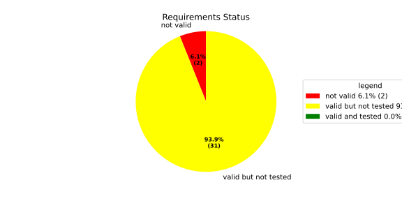
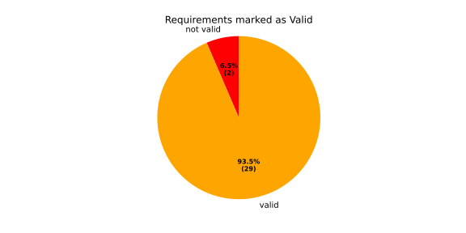
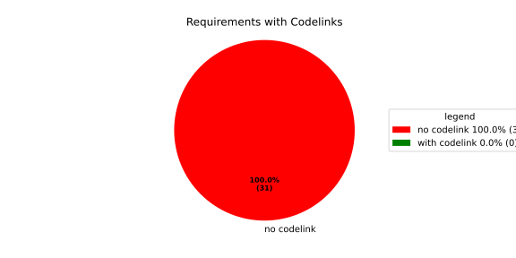
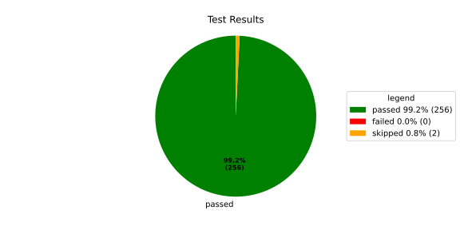
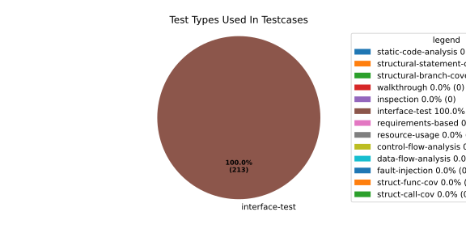
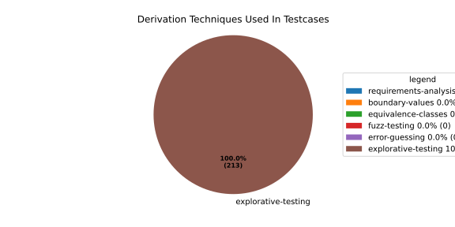

Verification Statistics#
Overview#

In Detail#



Failed Tests
Hint: This table should be empty. Before a PR can be merged all tests have to be successful.
No needs passed the filters
Skipped / Disabled Tests
testcase |
Result |
Fully Verifies |
Partially Verifies |
Test Type |
Derivation Technique |
link |
|---|---|---|---|---|---|---|
ValidateRangeTest/4__RejectsValueAboveMax |
skipped |
interface-test |
explorative-testing |
|||
ValidateRangeTest/4__RejectsValueBelowMin |
skipped |
interface-test |
explorative-testing |
All passed Tests#
testcase |
Result |
Fully Verifies |
Partially Verifies |
Test Type |
Derivation Technique |
link |
|---|---|---|---|---|---|---|
AliveImplTest__DoesNotThrowWhenInterfacePathEnvVarIsSet |
passed |
interface-test |
explorative-testing |
testcase__AliveImplTest__DoesNotThrowWhenInterfacePathEnvVarIsSet_xpewu |
||
AliveImplTest__ReportCheckpointSafeWhenNotConnected |
passed |
interface-test |
explorative-testing |
testcase__AliveImplTest__ReportCheckpointSafeWhenNotConnected_ppvuc |
||
AliveImplTest__ThrowsWhenInterfacePathEnvVarIsNotSet |
passed |
interface-test |
explorative-testing |
testcase__AliveImplTest__ThrowsWhenInterfacePathEnvVarIsNotSet_ekxfw |
||
AliveSupervisionTest__AliveDebouncesThroughFailedBeforeExpired |
passed |
interface-test |
explorative-testing |
testcase__AliveSupervisionTest__AliveDebouncesThroughFailedBeforeExpired_mlnbe |
||
AliveSupervisionTest__AliveReportsEnqueueFailureWhenRingBufferFull |
passed |
interface-test |
explorative-testing |
testcase__AliveSupervisionTest__AliveReportsEnqueueFailureWhenRingBufferFull_byhrd |
||
AliveSupervisionTest__AliveStaysOkWithCorrectHeartbeats |
passed |
interface-test |
explorative-testing |
testcase__AliveSupervisionTest__AliveStaysOkWithCorrectHeartbeats_vekof |
||
AliveSupervisionTest__AliveTransitionsOkToExpiredOnMissingHeartbeat |
passed |
interface-test |
explorative-testing |
testcase__AliveSupervisionTest__AliveTransitionsOkToExpiredOnMissingHeartbeat_jymxo |
||
AliveSupervisionTest__DeactivatesOnProcessCrash |
passed |
interface-test |
explorative-testing |
testcase__AliveSupervisionTest__DeactivatesOnProcessCrash_ypejs |
||
AliveSupervisionTest__DeactivatesOnProcessSigterm |
passed |
interface-test |
explorative-testing |
testcase__AliveSupervisionTest__DeactivatesOnProcessSigterm_hzaal |
||
AliveSupervisionTest__IgnoresIrrelevantProcessStates |
passed |
interface-test |
explorative-testing |
testcase__AliveSupervisionTest__IgnoresIrrelevantProcessStates_aolvb |
||
AliveSupervisionTest__MaxIndicationViolationExpires |
passed |
interface-test |
explorative-testing |
testcase__AliveSupervisionTest__MaxIndicationViolationExpires_whhhi |
||
AliveSupervisionTest__ReactivatesAfterCrash |
passed |
interface-test |
explorative-testing |
|||
ApplicationTypes/ApplicationTypeTest__ConvertsToExpectedValue/Native |
passed |
interface-test |
explorative-testing |
testcase__ApplicationTypes/ApplicationTypeTest__ConvertsToExpectedValue/Native_yxxcz |
||
ApplicationTypes/ApplicationTypeTest__ConvertsToExpectedValue/Reporting |
passed |
interface-test |
explorative-testing |
testcase__ApplicationTypes/ApplicationTypeTest__ConvertsToExpectedValue/Reporting_wcfwr |
||
ApplicationTypes/ApplicationTypeTest__ConvertsToExpectedValue/ReportingAndSupervised |
passed |
interface-test |
explorative-testing |
testcase__ApplicationTypes/ApplicationTypeTest__ConvertsToExpectedValue/ReportingAndSupervised_yxgad |
||
ApplicationTypes/ApplicationTypeTest__ConvertsToExpectedValue/StateManager |
passed |
interface-test |
explorative-testing |
testcase__ApplicationTypes/ApplicationTypeTest__ConvertsToExpectedValue/StateManager_ivuzc |
||
ConverterTest__ConvertAliveSupervisionMissingCycleReturnsError |
passed |
interface-test |
explorative-testing |
testcase__ConverterTest__ConvertAliveSupervisionMissingCycleReturnsError_bifzg |
||
ConverterTest__ConvertAliveSupervisionNullReturnsDefault |
passed |
interface-test |
explorative-testing |
testcase__ConverterTest__ConvertAliveSupervisionNullReturnsDefault_clyua |
||
ConverterTest__ConvertAliveSupervisionValid |
passed |
interface-test |
explorative-testing |
|||
ConverterTest__ConvertApplicationProfileMissingSelfTerminatingReturnsError |
passed |
interface-test |
explorative-testing |
testcase__ConverterTest__ConvertApplicationProfileMissingSelfTerminatingReturnsError_zddjb |
||
ConverterTest__ConvertApplicationProfileMissingTypeReturnsError |
passed |
interface-test |
explorative-testing |
testcase__ConverterTest__ConvertApplicationProfileMissingTypeReturnsError_zrfcs |
||
ConverterTest__ConvertApplicationProfileValid |
passed |
interface-test |
explorative-testing |
testcase__ConverterTest__ConvertApplicationProfileValid_oohxq |
||
ConverterTest__ConvertComponentAliveSupervisionBothIndicationsAbsentReturnsError |
passed |
interface-test |
explorative-testing |
testcase__ConverterTest__ConvertComponentAliveSupervisionBothIndicationsAbsentReturnsError_gvtfi |
||
ConverterTest__ConvertComponentAliveSupervisionMissingReportingCycleReturnsError |
passed |
interface-test |
explorative-testing |
testcase__ConverterTest__ConvertComponentAliveSupervisionMissingReportingCycleReturnsError_ajymy |
||
ConverterTest__ConvertComponentAliveSupervisionMissingToleranceReturnsError |
passed |
interface-test |
explorative-testing |
testcase__ConverterTest__ConvertComponentAliveSupervisionMissingToleranceReturnsError_lgrhj |
||
ConverterTest__ConvertComponentAliveSupervisionNullReturnsDefault |
passed |
interface-test |
explorative-testing |
testcase__ConverterTest__ConvertComponentAliveSupervisionNullReturnsDefault_xhaus |
||
ConverterTest__ConvertComponentAliveSupervisionOnlyMaxIndicationsPresent |
passed |
interface-test |
explorative-testing |
testcase__ConverterTest__ConvertComponentAliveSupervisionOnlyMaxIndicationsPresent_smwht |
||
ConverterTest__ConvertComponentAliveSupervisionOnlyMinIndicationsPresent |
passed |
interface-test |
explorative-testing |
testcase__ConverterTest__ConvertComponentAliveSupervisionOnlyMinIndicationsPresent_ybbrr |
||
ConverterTest__ConvertComponentAliveSupervisionValid |
passed |
interface-test |
explorative-testing |
testcase__ConverterTest__ConvertComponentAliveSupervisionValid_ijedh |
||
ConverterTest__ConvertComponentsValid |
passed |
interface-test |
explorative-testing |
|||
ConverterTest__ConvertComponentsWithInvalidComponentReturnsError |
passed |
interface-test |
explorative-testing |
testcase__ConverterTest__ConvertComponentsWithInvalidComponentReturnsError_wridc |
||
ConverterTest__ConvertComponentValid |
passed |
interface-test |
explorative-testing |
|||
ConverterTest__ConvertDeploymentConfigMissingReadyTimeoutReturnsError |
passed |
interface-test |
explorative-testing |
testcase__ConverterTest__ConvertDeploymentConfigMissingReadyTimeoutReturnsError_ljzfl |
||
ConverterTest__ConvertDeploymentConfigMissingShutdownTimeoutReturnsError |
passed |
interface-test |
explorative-testing |
testcase__ConverterTest__ConvertDeploymentConfigMissingShutdownTimeoutReturnsError_vyqye |
||
ConverterTest__ConvertDeploymentConfigValid |
passed |
interface-test |
explorative-testing |
|||
ConverterTest__ConvertEnvironmentalVariables |
passed |
interface-test |
explorative-testing |
testcase__ConverterTest__ConvertEnvironmentalVariables_fnhgo |
||
ConverterTest__ConvertEnvironmentalVariablesNullReturnsEmpty |
passed |
interface-test |
explorative-testing |
testcase__ConverterTest__ConvertEnvironmentalVariablesNullReturnsEmpty_vglrx |
||
ConverterTest__ConvertFallbackRunTargetMissingTimeoutReturnsError |
passed |
interface-test |
explorative-testing |
testcase__ConverterTest__ConvertFallbackRunTargetMissingTimeoutReturnsError_aevly |
||
ConverterTest__ConvertFallbackRunTargetValid |
passed |
interface-test |
explorative-testing |
testcase__ConverterTest__ConvertFallbackRunTargetValid_nexxj |
||
ConverterTest__ConvertReadyConditionMissingProcessStateReturnsError |
passed |
interface-test |
explorative-testing |
testcase__ConverterTest__ConvertReadyConditionMissingProcessStateReturnsError_ileav |
||
ConverterTest__ConvertReadyConditionValid |
passed |
interface-test |
explorative-testing |
|||
ConverterTest__ConvertRestartActionMissingFieldsReturnsError |
passed |
interface-test |
explorative-testing |
testcase__ConverterTest__ConvertRestartActionMissingFieldsReturnsError_aapjb |
||
ConverterTest__ConvertRestartActionNullReturnsNullopt |
passed |
interface-test |
explorative-testing |
testcase__ConverterTest__ConvertRestartActionNullReturnsNullopt_ifvyd |
||
ConverterTest__ConvertRestartActionValid |
passed |
interface-test |
explorative-testing |
|||
ConverterTest__ConvertRunTargetMissingTransitionTimeoutReturnsError |
passed |
interface-test |
explorative-testing |
testcase__ConverterTest__ConvertRunTargetMissingTransitionTimeoutReturnsError_ynekv |
||
ConverterTest__ConvertRunTargetsValid |
passed |
interface-test |
explorative-testing |
|||
ConverterTest__ConvertRunTargetsWithInvalidRunTargetReturnsError |
passed |
interface-test |
explorative-testing |
testcase__ConverterTest__ConvertRunTargetsWithInvalidRunTargetReturnsError_ldlox |
||
ConverterTest__ConvertRunTargetValid |
passed |
interface-test |
explorative-testing |
|||
ConverterTest__ConvertSandboxMissingGidReturnsError |
passed |
interface-test |
explorative-testing |
testcase__ConverterTest__ConvertSandboxMissingGidReturnsError_veeel |
||
ConverterTest__ConvertSandboxMissingSchedulingPolicyReturnsError |
passed |
interface-test |
explorative-testing |
testcase__ConverterTest__ConvertSandboxMissingSchedulingPolicyReturnsError_pkfts |
||
ConverterTest__ConvertSandboxMissingSchedulingPriorityReturnsError |
passed |
interface-test |
explorative-testing |
testcase__ConverterTest__ConvertSandboxMissingSchedulingPriorityReturnsError_xzdho |
||
ConverterTest__ConvertSandboxMissingUidReturnsError |
passed |
interface-test |
explorative-testing |
testcase__ConverterTest__ConvertSandboxMissingUidReturnsError_ogfku |
||
ConverterTest__ConvertSandboxSupplementaryGidOutOfRangeReturnsError |
passed |
interface-test |
explorative-testing |
testcase__ConverterTest__ConvertSandboxSupplementaryGidOutOfRangeReturnsError_zavpx |
||
ConverterTest__ConvertSandboxUidOutOfRangeReturnsError |
passed |
interface-test |
explorative-testing |
testcase__ConverterTest__ConvertSandboxUidOutOfRangeReturnsError_mcuaf |
||
ConverterTest__ConvertSandboxValid |
passed |
interface-test |
explorative-testing |
|||
ConverterTest__ConvertSwitchRunTargetActionNullReturnsNullopt |
passed |
interface-test |
explorative-testing |
testcase__ConverterTest__ConvertSwitchRunTargetActionNullReturnsNullopt_zmitx |
||
ConverterTest__ConvertSwitchRunTargetActionValid |
passed |
interface-test |
explorative-testing |
testcase__ConverterTest__ConvertSwitchRunTargetActionValid_tdklr |
||
ConverterTest__ConvertWatchdogMissingDeactivateReturnsError |
passed |
interface-test |
explorative-testing |
testcase__ConverterTest__ConvertWatchdogMissingDeactivateReturnsError_gzwjt |
||
ConverterTest__ConvertWatchdogMissingMagicCloseReturnsError |
passed |
interface-test |
explorative-testing |
testcase__ConverterTest__ConvertWatchdogMissingMagicCloseReturnsError_gexxk |
||
ConverterTest__ConvertWatchdogMissingMaxTimeoutReturnsError |
passed |
interface-test |
explorative-testing |
testcase__ConverterTest__ConvertWatchdogMissingMaxTimeoutReturnsError_lffxm |
||
ConverterTest__ConvertWatchdogNullReturnsNullopt |
passed |
interface-test |
explorative-testing |
testcase__ConverterTest__ConvertWatchdogNullReturnsNullopt_irsdk |
||
ConverterTest__ConvertWatchdogValid |
passed |
interface-test |
explorative-testing |
|||
DeadlineFixture__Start_AlreadyRunning |
passed |
interface-test |
explorative-testing |
|||
DeadlineFixture__Start_Succeeds |
passed |
interface-test |
explorative-testing |
|||
DeadlineMonitorBuilderFixture__AddDeadline_Succeeds |
passed |
interface-test |
explorative-testing |
testcase__DeadlineMonitorBuilderFixture__AddDeadline_Succeeds_nagke |
||
DeadlineMonitorBuilderFixture__New_Succeeds |
passed |
interface-test |
explorative-testing |
|||
DeadlineMonitorFixture__GetDeadline_Succeeds |
passed |
interface-test |
explorative-testing |
testcase__DeadlineMonitorFixture__GetDeadline_Succeeds_tmltf |
||
DeadlineMonitorFixture__GetDeadline_Unknown |
passed |
interface-test |
explorative-testing |
|||
EnumConversionTest__ConvertSchedulingPolicyUnsupported |
passed |
interface-test |
explorative-testing |
testcase__EnumConversionTest__ConvertSchedulingPolicyUnsupported_iavqm |
||
EnvironmentTest__AddIncreasesSize |
passed |
interface-test |
explorative-testing |
|||
EnvironmentTest__DefaultConstructedIsEmpty |
passed |
interface-test |
explorative-testing |
|||
EnvironmentTest__EmptyEnvironmentEnvpIsNullTerminated |
passed |
interface-test |
explorative-testing |
testcase__EnvironmentTest__EmptyEnvironmentEnvpIsNullTerminated_wwumw |
||
EnvironmentTest__EnvpReturnsNullTerminatedArray |
passed |
interface-test |
explorative-testing |
testcase__EnvironmentTest__EnvpReturnsNullTerminatedArray_aubkv |
||
EnvironmentTest__EnvpWithMultipleEntries |
passed |
interface-test |
explorative-testing |
|||
EnvironmentTest__MoveAssignmentPreservesEntries |
passed |
interface-test |
explorative-testing |
testcase__EnvironmentTest__MoveAssignmentPreservesEntries_vkydj |
||
EnvironmentTest__MoveConstructorPreservesEntries |
passed |
interface-test |
explorative-testing |
testcase__EnvironmentTest__MoveConstructorPreservesEntries_upclt |
||
EnvironmentTest__RangeBasedForLoopWorks |
passed |
interface-test |
explorative-testing |
|||
EnvironmentTest__ReserveAndAddAvoidReallocation |
passed |
interface-test |
explorative-testing |
testcase__EnvironmentTest__ReserveAndAddAvoidReallocation_lgzmu |
||
EnvironmentTest__SsoLengthStringSurvivesReallocation |
passed |
interface-test |
explorative-testing |
testcase__EnvironmentTest__SsoLengthStringSurvivesReallocation_jfmtl |
||
EnvironmentVariableTest__CStrReturnsKeyEqualsValue |
passed |
interface-test |
explorative-testing |
testcase__EnvironmentVariableTest__CStrReturnsKeyEqualsValue_rkwan |
||
EnvironmentVariableTest__EmptyValue |
passed |
interface-test |
explorative-testing |
|||
EnvironmentVariableTest__KeyAndValueAreAccessible |
passed |
interface-test |
explorative-testing |
testcase__EnvironmentVariableTest__KeyAndValueAreAccessible_kcrth |
||
EnvironmentVariableTest__ValueContainingEquals |
passed |
interface-test |
explorative-testing |
testcase__EnvironmentVariableTest__ValueContainingEquals_apzgz |
||
ExecErrorDomainTest__AllKnownCodesHaveDistinctMessages |
passed |
interface-test |
explorative-testing |
testcase__ExecErrorDomainTest__AllKnownCodesHaveDistinctMessages_qpoka |
||
ExecErrorDomainTest__AllKnownCodesReturnNonEmptyMessage |
passed |
interface-test |
explorative-testing |
testcase__ExecErrorDomainTest__AllKnownCodesReturnNonEmptyMessage_bawzg |
||
ExecErrorDomainTest__UnknownCodeReturnsNonEmptyMessage |
passed |
interface-test |
explorative-testing |
testcase__ExecErrorDomainTest__UnknownCodeReturnsNonEmptyMessage_kkwpr |
||
FlatbufferConfigLoaderTest__CorruptedBufferReturnsInvalidFormat |
passed |
interface-test |
explorative-testing |
testcase__FlatbufferConfigLoaderTest__CorruptedBufferReturnsInvalidFormat_twyac |
||
FlatbufferConfigLoaderTest__LoadAliveSupervision |
passed |
interface-test |
explorative-testing |
testcase__FlatbufferConfigLoaderTest__LoadAliveSupervision_hhuux |
||
FlatbufferConfigLoaderTest__LoadBufferFailsWithGenericErrorReturnsGeneralError |
passed |
interface-test |
explorative-testing |
testcase__FlatbufferConfigLoaderTest__LoadBufferFailsWithGenericErrorReturnsGeneralError_kmatm |
||
FlatbufferConfigLoaderTest__LoadBufferFailsWithNoSuchFileReturnsFileNotFound |
passed |
interface-test |
explorative-testing |
testcase__FlatbufferConfigLoaderTest__LoadBufferFailsWithNoSuchFileReturnsFileNotFound_yzlra |
||
FlatbufferConfigLoaderTest__LoadBufferFailsWithPermissionDeniedReturnsInsufficientPermission |
passed |
interface-test |
explorative-testing |
|||
FlatbufferConfigLoaderTest__LoadComponentAliveSupervision |
passed |
interface-test |
explorative-testing |
testcase__FlatbufferConfigLoaderTest__LoadComponentAliveSupervision_fwfad |
||
FlatbufferConfigLoaderTest__LoadEnvironmentalVariables |
passed |
interface-test |
explorative-testing |
testcase__FlatbufferConfigLoaderTest__LoadEnvironmentalVariables_wsosu |
||
FlatbufferConfigLoaderTest__LoadFallbackRunTarget |
passed |
interface-test |
explorative-testing |
testcase__FlatbufferConfigLoaderTest__LoadFallbackRunTarget_wduqm |
||
FlatbufferConfigLoaderTest__LoadMinimalConfig |
passed |
interface-test |
explorative-testing |
testcase__FlatbufferConfigLoaderTest__LoadMinimalConfig_hdkck |
||
FlatbufferConfigLoaderTest__LoadMultipleComponents |
passed |
interface-test |
explorative-testing |
testcase__FlatbufferConfigLoaderTest__LoadMultipleComponents_abpom |
||
FlatbufferConfigLoaderTest__LoadRestartRecoveryAction |
passed |
interface-test |
explorative-testing |
testcase__FlatbufferConfigLoaderTest__LoadRestartRecoveryAction_wyfqg |
||
FlatbufferConfigLoaderTest__LoadRunTargets |
passed |
interface-test |
explorative-testing |
|||
FlatbufferConfigLoaderTest__LoadSandbox |
passed |
interface-test |
explorative-testing |
|||
FlatbufferConfigLoaderTest__LoadSingleComponent |
passed |
interface-test |
explorative-testing |
testcase__FlatbufferConfigLoaderTest__LoadSingleComponent_yidty |
||
FlatbufferConfigLoaderTest__LoadSwitchRunTargetAction |
passed |
interface-test |
explorative-testing |
testcase__FlatbufferConfigLoaderTest__LoadSwitchRunTargetAction_uchgp |
||
FlatbufferConfigLoaderTest__LoadWatchdog |
passed |
interface-test |
explorative-testing |
|||
FlatbufferConfigLoaderTest__MissingSchemaVersionReturnsInvalidFormat |
passed |
interface-test |
explorative-testing |
testcase__FlatbufferConfigLoaderTest__MissingSchemaVersionReturnsInvalidFormat_qqmfn |
||
FlatbufferConfigLoaderTest__OptionalReadyConditionAbsent |
passed |
interface-test |
explorative-testing |
testcase__FlatbufferConfigLoaderTest__OptionalReadyConditionAbsent_lhddx |
||
FlatbufferConfigLoaderTest__OptionalWatchdogAbsent |
passed |
interface-test |
explorative-testing |
testcase__FlatbufferConfigLoaderTest__OptionalWatchdogAbsent_pkhkp |
||
FlatbufferConfigLoaderTest__WrongSchemaVersionReturnsUnsupportedVersion |
passed |
interface-test |
explorative-testing |
testcase__FlatbufferConfigLoaderTest__WrongSchemaVersionReturnsUnsupportedVersion_zrbjv |
||
HealthMonitor__GetDeadlineMonitor_Available |
passed |
|||||
HealthMonitor__GetDeadlineMonitor_Taken |
passed |
|||||
HealthMonitor__GetDeadlineMonitor_Unknown |
passed |
|||||
HealthMonitor__GetHeartbeatMonitor_Available |
passed |
testcase__HealthMonitor__GetHeartbeatMonitor_Available_aacat |
||||
HealthMonitor__GetHeartbeatMonitor_Taken |
passed |
|||||
HealthMonitor__GetHeartbeatMonitor_Unknown |
passed |
|||||
HealthMonitor__GetLogicMonitor_Available |
passed |
|||||
HealthMonitor__GetLogicMonitor_Taken |
passed |
|||||
HealthMonitor__GetLogicMonitor_Unknown |
passed |
|||||
HealthMonitor__Start_MonitorsNotTaken |
passed |
|||||
HealthMonitor__Start_Succeeds |
passed |
|||||
HealthMonitorBuilderFixture__Build_InvalidCycles |
passed |
interface-test |
explorative-testing |
testcase__HealthMonitorBuilderFixture__Build_InvalidCycles_pdigk |
||
HealthMonitorBuilderFixture__Build_NoMonitors |
passed |
interface-test |
explorative-testing |
testcase__HealthMonitorBuilderFixture__Build_NoMonitors_ktcve |
||
HealthMonitorBuilderFixture__Build_Succeeds |
passed |
interface-test |
explorative-testing |
|||
HealthMonitorBuilderFixture__New_Succeeds |
passed |
interface-test |
explorative-testing |
|||
HealthMonitorTest__Integrated |
passed |
interface-test |
explorative-testing |
|||
HeartbeatMonitor__Heartbeat_Succeeds |
passed |
interface-test |
explorative-testing |
|||
HeartbeatMonitorBuilder__New_Succeeds |
passed |
interface-test |
explorative-testing |
|||
IdentifierHashTest__IdentifierHash_default_created |
passed |
interface-test |
explorative-testing |
testcase__IdentifierHashTest__IdentifierHash_default_created_yhhvi |
||
IdentifierHashTest__IdentifierHash_EqualityOperators |
passed |
interface-test |
explorative-testing |
testcase__IdentifierHashTest__IdentifierHash_EqualityOperators_nnsuj |
||
IdentifierHashTest__IdentifierHash_invalid_hash_no_string_representation |
passed |
interface-test |
explorative-testing |
testcase__IdentifierHashTest__IdentifierHash_invalid_hash_no_string_representation_rxowr |
||
IdentifierHashTest__IdentifierHash_LessThanOperator |
passed |
interface-test |
explorative-testing |
testcase__IdentifierHashTest__IdentifierHash_LessThanOperator_rnbax |
||
IdentifierHashTest__IdentifierHash_no_dangling_pointer_after_source_string_dies |
passed |
interface-test |
explorative-testing |
testcase__IdentifierHashTest__IdentifierHash_no_dangling_pointer_after_source_string_dies_qsjin |
||
IdentifierHashTest__IdentifierHash_with_string_created |
passed |
interface-test |
explorative-testing |
testcase__IdentifierHashTest__IdentifierHash_with_string_created_aygdm |
||
IdentifierHashTest__IdentifierHash_with_string_view_created |
passed |
interface-test |
explorative-testing |
testcase__IdentifierHashTest__IdentifierHash_with_string_view_created_dbpol |
||
LogicMonitorBuilderFixture__AddState_Succeeds |
passed |
interface-test |
explorative-testing |
testcase__LogicMonitorBuilderFixture__AddState_Succeeds_axdxj |
||
LogicMonitorBuilderFixture__New_Succeeds |
passed |
interface-test |
explorative-testing |
|||
LogicMonitorFixture__State_Invalid |
passed |
interface-test |
explorative-testing |
|||
LogicMonitorFixture__State_Succeeds |
passed |
interface-test |
explorative-testing |
|||
LogicMonitorFixture__Transition_Invalid |
passed |
interface-test |
explorative-testing |
|||
LogicMonitorFixture__Transition_Succeeds |
passed |
interface-test |
explorative-testing |
|||
LogicMonitorFixture__Transition_Unknown |
passed |
interface-test |
explorative-testing |
|||
MonitorIfDaemonTest__Active_CheckpointDataForwarded |
passed |
interface-test |
explorative-testing |
testcase__MonitorIfDaemonTest__Active_CheckpointDataForwarded_evumz |
||
MonitorIfDaemonTest__Active_FutureTimestamp_NotForwardedInCurrentCycle |
passed |
interface-test |
explorative-testing |
testcase__MonitorIfDaemonTest__Active_FutureTimestamp_NotForwardedInCurrentCycle_oycau |
||
MonitorIfDaemonTest__Active_FutureTimestampCheckpoint_ConsumedInLaterCycle |
passed |
interface-test |
explorative-testing |
testcase__MonitorIfDaemonTest__Active_FutureTimestampCheckpoint_ConsumedInLaterCycle_veyyy |
||
MonitorIfDaemonTest__Active_MultipleCheckpointsInOneCycle_AllForwarded |
passed |
interface-test |
explorative-testing |
testcase__MonitorIfDaemonTest__Active_MultipleCheckpointsInOneCycle_AllForwarded_gmbms |
||
MonitorIfDaemonTest__Active_NonMatchingCheckpointId_NotForwarded |
passed |
interface-test |
explorative-testing |
testcase__MonitorIfDaemonTest__Active_NonMatchingCheckpointId_NotForwarded_bohck |
||
MonitorIfDaemonTest__Active_OverflowDetected_TransitionsToInactiveOverflow |
passed |
interface-test |
explorative-testing |
testcase__MonitorIfDaemonTest__Active_OverflowDetected_TransitionsToInactiveOverflow_ovitk |
||
MonitorIfDaemonTest__Active_TwoAttachedCheckpoints_RoutedByCheckpointId |
passed |
interface-test |
explorative-testing |
testcase__MonitorIfDaemonTest__Active_TwoAttachedCheckpoints_RoutedByCheckpointId_skqhd |
||
MonitorIfDaemonTest__GetInterfaceName_ReturnsNameGivenAtConstruction |
passed |
interface-test |
explorative-testing |
testcase__MonitorIfDaemonTest__GetInterfaceName_ReturnsNameGivenAtConstruction_iaemz |
||
MonitorIfDaemonTest__InactiveOverflow_NoProcessRestart_DoesNotRepeatNotification |
passed |
interface-test |
explorative-testing |
testcase__MonitorIfDaemonTest__InactiveOverflow_NoProcessRestart_DoesNotRepeatNotification_gdbxg |
||
MonitorIfDaemonTest__InactiveOverflow_ProcessRestartFlag_ClearedAfterNotification |
passed |
interface-test |
explorative-testing |
testcase__MonitorIfDaemonTest__InactiveOverflow_ProcessRestartFlag_ClearedAfterNotification_pqfyy |
||
MonitorIfDaemonTest__InactiveOverflow_ProcessRestarts_PushesOverflowNotificationAgain |
passed |
interface-test |
explorative-testing |
|||
MonitorIfDaemonTest__InitiallyInactive_CheckForNewData_DoesNotNotifyCheckpoint |
passed |
interface-test |
explorative-testing |
testcase__MonitorIfDaemonTest__InitiallyInactive_CheckForNewData_DoesNotNotifyCheckpoint_wjrfl |
||
MonitorIfDaemonTest__ProcessOff_DeactivatesMonitor_NoFurtherDataForwarded |
passed |
interface-test |
explorative-testing |
testcase__MonitorIfDaemonTest__ProcessOff_DeactivatesMonitor_NoFurtherDataForwarded_uialh |
||
MonitorIfDaemonTest__ProcessOffBeforeActivation_RemainsInactive |
passed |
interface-test |
explorative-testing |
testcase__MonitorIfDaemonTest__ProcessOffBeforeActivation_RemainsInactive_kzzyy |
||
MonitorIfDaemonTest__ProcessRunning_ActivatesMonitorOnNextCheckForNewData |
passed |
interface-test |
explorative-testing |
testcase__MonitorIfDaemonTest__ProcessRunning_ActivatesMonitorOnNextCheckForNewData_fkkmk |
||
MonitorIfDaemonTest__ProcessStarting_AlsoActivatesMonitor |
passed |
interface-test |
explorative-testing |
testcase__MonitorIfDaemonTest__ProcessStarting_AlsoActivatesMonitor_xdkbg |
||
MPMCConcurrentQueueTest_Basic__LvaluePushCopiesItem |
passed |
testcase__MPMCConcurrentQueueTest_Basic__LvaluePushCopiesItem_oysfc |
||||
MPMCConcurrentQueueTest_Basic__PopReturnsNulloptOnSemaphoreWaitFailure |
passed |
testcase__MPMCConcurrentQueueTest_Basic__PopReturnsNulloptOnSemaphoreWaitFailure_rgznm |
||||
MPMCConcurrentQueueTest_Basic__PushAndPopPreservesOrder |
passed |
testcase__MPMCConcurrentQueueTest_Basic__PushAndPopPreservesOrder_aijdb |
||||
MPMCConcurrentQueueTest_Basic__PushAndPopSingleItem |
passed |
testcase__MPMCConcurrentQueueTest_Basic__PushAndPopSingleItem_jrxwz |
||||
MPMCConcurrentQueueTest_Basic__RvaluePushWorksWithMoveOnlyType |
passed |
testcase__MPMCConcurrentQueueTest_Basic__RvaluePushWorksWithMoveOnlyType_cxxaj |
||||
MPMCConcurrentQueueTest_Blocking__PopBlocksUntilItemAvailable |
passed |
testcase__MPMCConcurrentQueueTest_Blocking__PopBlocksUntilItemAvailable_ttwcx |
||||
MPMCConcurrentQueueTest_Blocking__PushBlocksWhenFull |
passed |
testcase__MPMCConcurrentQueueTest_Blocking__PushBlocksWhenFull_ecujf |
||||
MPMCConcurrentQueueTest_Blocking__StopUnblocksBlockedConsumer |
passed |
testcase__MPMCConcurrentQueueTest_Blocking__StopUnblocksBlockedConsumer_snzyr |
||||
MPMCConcurrentQueueTest_Blocking__StopUnblocksBlockedProducer |
passed |
testcase__MPMCConcurrentQueueTest_Blocking__StopUnblocksBlockedProducer_inddu |
||||
MPMCConcurrentQueueTest_MPMC__AllItemsDelivered |
passed |
testcase__MPMCConcurrentQueueTest_MPMC__AllItemsDelivered_ztjqe |
||||
MPMCConcurrentQueueTest_Stop__ItemsAreDroppedAfterStop |
passed |
testcase__MPMCConcurrentQueueTest_Stop__ItemsAreDroppedAfterStop_ragzw |
||||
MPMCConcurrentQueueTest_Stop__PopReturnsNulloptWhenStoppedAndEmpty |
passed |
testcase__MPMCConcurrentQueueTest_Stop__PopReturnsNulloptWhenStoppedAndEmpty_cevga |
||||
MPMCConcurrentQueueTest_Stop__PushReturnsFalseAfterStop |
passed |
testcase__MPMCConcurrentQueueTest_Stop__PushReturnsFalseAfterStop_qqnhw |
||||
MPMCConcurrentQueueTest_Timeout__PushWithTimeoutReturnsFalseWhenFull |
passed |
testcase__MPMCConcurrentQueueTest_Timeout__PushWithTimeoutReturnsFalseWhenFull_aeips |
||||
MPMCConcurrentQueueTest_Timeout__PushWithTimeoutSucceedsWhenSlotAvailable |
passed |
testcase__MPMCConcurrentQueueTest_Timeout__PushWithTimeoutSucceedsWhenSlotAvailable_klzpo |
||||
OsHandlerTest__WaitReturnsError_OsHandlerSleepsAndDoesNotCallFindTerminated |
passed |
interface-test |
explorative-testing |
testcase__OsHandlerTest__WaitReturnsError_OsHandlerSleepsAndDoesNotCallFindTerminated_cibtr |
||
OsHandlerTest__WaitReturnsErrorThenProcessId_HandlerRecoversAndInvokesCallback |
passed |
interface-test |
explorative-testing |
testcase__OsHandlerTest__WaitReturnsErrorThenProcessId_HandlerRecoversAndInvokesCallback_nqstd |
||
OsHandlerTest__WaitReturnsProcessId_FindTerminatedIsCalled |
passed |
interface-test |
explorative-testing |
testcase__OsHandlerTest__WaitReturnsProcessId_FindTerminatedIsCalled_chlsq |
||
OsHandlerTest__WaitReturnsProcessIdBeforeRegistration_LaterRegistrationReceivesStoredTermination |
passed |
interface-test |
explorative-testing |
|||
OsHandlerTest__WaitReturnsUnknownPidWhenMapIsFull_OutOfResourcesPathDoesNotNotifyCallbacks |
passed |
interface-test |
explorative-testing |
|||
OsHandlerTest__WaitReturnsZeroPid_OsHandlerSleepsAndDoesNotCallFindTerminated |
passed |
interface-test |
explorative-testing |
testcase__OsHandlerTest__WaitReturnsZeroPid_OsHandlerSleepsAndDoesNotCallFindTerminated_rkttz |
||
ProcessStateClient_UT__ProcessStateClient_ConstructReceiver_Succeeds |
passed |
interface-test |
explorative-testing |
testcase__ProcessStateClient_UT__ProcessStateClient_ConstructReceiver_Succeeds_hodwy |
||
ProcessStateClient_UT__ProcessStateClient_QueueMaxNumberOfProcesses_Succeeds |
passed |
interface-test |
explorative-testing |
testcase__ProcessStateClient_UT__ProcessStateClient_QueueMaxNumberOfProcesses_Succeeds_qohom |
||
ProcessStateClient_UT__ProcessStateClient_QueueOneProcess_Succeeds |
passed |
interface-test |
explorative-testing |
testcase__ProcessStateClient_UT__ProcessStateClient_QueueOneProcess_Succeeds_tmzfz |
||
ProcessStateClient_UT__ProcessStateClient_QueueOneProcessTooMany_Fails |
passed |
interface-test |
explorative-testing |
testcase__ProcessStateClient_UT__ProcessStateClient_QueueOneProcessTooMany_Fails_sspoj |
||
ProcessStates/ProcessStateTest__ConvertsToExpectedValue/Running |
passed |
interface-test |
explorative-testing |
testcase__ProcessStates/ProcessStateTest__ConvertsToExpectedValue/Running_hinlr |
||
ProcessStates/ProcessStateTest__ConvertsToExpectedValue/Terminated |
passed |
interface-test |
explorative-testing |
testcase__ProcessStates/ProcessStateTest__ConvertsToExpectedValue/Terminated_zrytn |
||
RecoveryClientTest__FIFOOrdering |
passed |
interface-test |
explorative-testing |
|||
RecoveryClientTest__GetNextRequest |
passed |
interface-test |
explorative-testing |
|||
RecoveryClientTest__GetNextRequestEmpty |
passed |
interface-test |
explorative-testing |
|||
RecoveryClientTest__RingBufferFull |
passed |
interface-test |
explorative-testing |
|||
RecoveryClientTest__SendSingleRequest |
passed |
interface-test |
explorative-testing |
|||
RunTest__AsPosixProcessCreatesAndDestroysLifeCycleManager |
passed |
testcase__RunTest__AsPosixProcessCreatesAndDestroysLifeCycleManager_sooex |
||||
RunTest__AsPosixProcessForwardsConstructorArgsToApplication |
passed |
testcase__RunTest__AsPosixProcessForwardsConstructorArgsToApplication_dmeur |
||||
RunTest__AsPosixProcessForwardsNonZeroExitCode |
passed |
testcase__RunTest__AsPosixProcessForwardsNonZeroExitCode_lldqd |
||||
RunTest__AsPosixProcessPassesCorrectApplicationTypeToRun |
passed |
testcase__RunTest__AsPosixProcessPassesCorrectApplicationTypeToRun_ajqwz |
||||
RunTest__AsPosixProcessReturnsZeroExitCode |
passed |
|||||
RunTest__RunApplicationFreeFunctionDelegatesToAsPosixProcess |
passed |
testcase__RunTest__RunApplicationFreeFunctionDelegatesToAsPosixProcess_ccing |
||||
RunTest__RunConstructorPassesArgcArgvToApplicationContext |
passed |
testcase__RunTest__RunConstructorPassesArgcArgvToApplicationContext_agerd |
||||
SafeProcessMapTest__ConcurrentFindAndInsertFromMultipleThreads |
passed |
interface-test |
explorative-testing |
testcase__SafeProcessMapTest__ConcurrentFindAndInsertFromMultipleThreads_kzfyg |
||
SafeProcessMapTest__ConcurrentInsertAndFindFromMultipleThreads |
passed |
interface-test |
explorative-testing |
testcase__SafeProcessMapTest__ConcurrentInsertAndFindFromMultipleThreads_hnyqj |
||
SafeProcessMapTest__ConstructWithZeroCapacity |
passed |
interface-test |
explorative-testing |
testcase__SafeProcessMapTest__ConstructWithZeroCapacity_gjmqg |
||
SafeProcessMapTest__FindTerminatedInsertsEntryWhenPidNotPresent |
passed |
interface-test |
explorative-testing |
testcase__SafeProcessMapTest__FindTerminatedInsertsEntryWhenPidNotPresent_ixtlt |
||
SafeProcessMapTest__FindTerminatedMatchesExistingInsertAndCallsCallback |
passed |
interface-test |
explorative-testing |
testcase__SafeProcessMapTest__FindTerminatedMatchesExistingInsertAndCallsCallback_ehuzb |
||
SafeProcessMapTest__FindTerminatedSamePidTwiceYieldsUntilInsertResolves |
passed |
interface-test |
explorative-testing |
testcase__SafeProcessMapTest__FindTerminatedSamePidTwiceYieldsUntilInsertResolves_hsekx |
||
SafeProcessMapTest__FindTerminatedWithNegativePidReturnsInvalid |
passed |
interface-test |
explorative-testing |
testcase__SafeProcessMapTest__FindTerminatedWithNegativePidReturnsInvalid_dewoh |
||
SafeProcessMapTest__FindTerminatedWorksAtMaxTreeDepth |
passed |
interface-test |
explorative-testing |
testcase__SafeProcessMapTest__FindTerminatedWorksAtMaxTreeDepth_adtzi |
||
SafeProcessMapTest__InsertBeyondCapacityReturnsOutOfMemory |
passed |
interface-test |
explorative-testing |
testcase__SafeProcessMapTest__InsertBeyondCapacityReturnsOutOfMemory_qjnie |
||
SafeProcessMapTest__InsertIntoEmptyTreeReturnsZero |
passed |
interface-test |
explorative-testing |
testcase__SafeProcessMapTest__InsertIntoEmptyTreeReturnsZero_zfbaq |
||
SafeProcessMapTest__InsertMatchesExistingFindTerminatedEntry |
passed |
interface-test |
explorative-testing |
testcase__SafeProcessMapTest__InsertMatchesExistingFindTerminatedEntry_fuwrp |
||
SafeProcessMapTest__InsertMultipleNodesThenFindTerminatedRemovesAll |
passed |
interface-test |
explorative-testing |
testcase__SafeProcessMapTest__InsertMultipleNodesThenFindTerminatedRemovesAll_fvowh |
||
SafeProcessMapTest__InsertSamePidTwiceYieldsUntilFindTerminatedResolves |
passed |
interface-test |
explorative-testing |
testcase__SafeProcessMapTest__InsertSamePidTwiceYieldsUntilFindTerminatedResolves_wzwyb |
||
SchedulingPolicies/SchedulingPolicyTest__ConvertsToExpectedPosixValue/SCHED_FIFO |
passed |
interface-test |
explorative-testing |
testcase__SchedulingPolicies/SchedulingPolicyTest__ConvertsToExpectedPosixValue/SCHED_FIFO_soddq |
||
SchedulingPolicies/SchedulingPolicyTest__ConvertsToExpectedPosixValue/SCHED_OTHER |
passed |
interface-test |
explorative-testing |
testcase__SchedulingPolicies/SchedulingPolicyTest__ConvertsToExpectedPosixValue/SCHED_OTHER_oigmk |
||
SchedulingPolicies/SchedulingPolicyTest__ConvertsToExpectedPosixValue/SCHED_RR |
passed |
interface-test |
explorative-testing |
testcase__SchedulingPolicies/SchedulingPolicyTest__ConvertsToExpectedPosixValue/SCHED_RR_pcjci |
||
score/health_monitor/src/rust/test-510566969/tests |
passed |
testcase__score/health_monitor/src/rust/test-510566969/tests_kjjlw |
||||
score/health_monitor/src/rust/test-827801879/loom_tests |
passed |
testcase__score/health_monitor/src/rust/test-827801879/loom_tests_cpmix |
||||
SecondsToMsTest__ConvertsPositiveValue |
passed |
interface-test |
explorative-testing |
|||
SecondsToMsTest__ConvertsZero |
passed |
interface-test |
explorative-testing |
|||
SecondsToMsTest__RejectsNegativeValue |
passed |
interface-test |
explorative-testing |
|||
SecondsToMsTest__RejectsOverflow |
passed |
interface-test |
explorative-testing |
|||
SecondsToMsTest__RejectsSubMillisecond |
passed |
interface-test |
explorative-testing |
|||
StringHelperTest__ConvertGidVectorReturnsEmptyWhenNull |
passed |
interface-test |
explorative-testing |
testcase__StringHelperTest__ConvertGidVectorReturnsEmptyWhenNull_jmcsr |
||
StringHelperTest__ConvertStringVectorReturnsEmptyWhenNull |
passed |
interface-test |
explorative-testing |
testcase__StringHelperTest__ConvertStringVectorReturnsEmptyWhenNull_zsuvv |
||
StringHelperTest__SafeStringReturnsEmptyWhenNull |
passed |
interface-test |
explorative-testing |
testcase__StringHelperTest__SafeStringReturnsEmptyWhenNull_crelr |
||
StringHelperTest__SafeStringReturnsValueWhenNotNull |
passed |
interface-test |
explorative-testing |
testcase__StringHelperTest__SafeStringReturnsValueWhenNotNull_anbko |
||
test_complex_monitoring |
passed |
|||||
test_crash_on_startup |
passed |
|||||
test_incorrect_config_non_reporting |
passed |
|||||
test_process_crash_monitoring |
passed |
|||||
test_process_launch_args |
passed |
|||||
test_process_wrong_binary_failure |
passed |
|||||
test_recovery_action_complex_rep_failure |
passed |
|||||
test_recovery_action_simple_rep_failure |
passed |
|||||
test_smoke |
passed |
|||||
test_switch_run_target |
passed |
|||||
TimeRangeFixture__MinMax |
passed |
interface-test |
explorative-testing |
|||
TimeRangeFixture__New_InvalidOrder |
passed |
interface-test |
explorative-testing |
|||
TimeRangeFixture__New_Succeeds |
passed |
interface-test |
explorative-testing |
|||
ValidateRangeTest/0__AcceptsMaxBoundary |
passed |
interface-test |
explorative-testing |
|||
ValidateRangeTest/0__AcceptsMinBoundary |
passed |
interface-test |
explorative-testing |
|||
ValidateRangeTest/0__AcceptsZero |
passed |
interface-test |
explorative-testing |
|||
ValidateRangeTest/0__RejectsValueAboveMax |
passed |
interface-test |
explorative-testing |
|||
ValidateRangeTest/0__RejectsValueBelowMin |
passed |
interface-test |
explorative-testing |
|||
ValidateRangeTest/1__AcceptsMaxBoundary |
passed |
interface-test |
explorative-testing |
|||
ValidateRangeTest/1__AcceptsMinBoundary |
passed |
interface-test |
explorative-testing |
|||
ValidateRangeTest/1__AcceptsZero |
passed |
interface-test |
explorative-testing |
|||
ValidateRangeTest/1__RejectsValueAboveMax |
passed |
interface-test |
explorative-testing |
|||
ValidateRangeTest/1__RejectsValueBelowMin |
passed |
interface-test |
explorative-testing |
|||
ValidateRangeTest/2__AcceptsMaxBoundary |
passed |
interface-test |
explorative-testing |
|||
ValidateRangeTest/2__AcceptsMinBoundary |
passed |
interface-test |
explorative-testing |
|||
ValidateRangeTest/2__AcceptsZero |
passed |
interface-test |
explorative-testing |
|||
ValidateRangeTest/2__RejectsValueAboveMax |
passed |
interface-test |
explorative-testing |
|||
ValidateRangeTest/2__RejectsValueBelowMin |
passed |
interface-test |
explorative-testing |
|||
ValidateRangeTest/3__AcceptsMaxBoundary |
passed |
interface-test |
explorative-testing |
|||
ValidateRangeTest/3__AcceptsMinBoundary |
passed |
interface-test |
explorative-testing |
|||
ValidateRangeTest/3__AcceptsZero |
passed |
interface-test |
explorative-testing |
|||
ValidateRangeTest/3__RejectsValueAboveMax |
passed |
interface-test |
explorative-testing |
|||
ValidateRangeTest/3__RejectsValueBelowMin |
passed |
interface-test |
explorative-testing |
|||
ValidateRangeTest/4__AcceptsMaxBoundary |
passed |
interface-test |
explorative-testing |
|||
ValidateRangeTest/4__AcceptsMinBoundary |
passed |
interface-test |
explorative-testing |
|||
ValidateRangeTest/4__AcceptsZero |
passed |
interface-test |
explorative-testing |
Details About Testcases#


Test Log Files#
tests-report/tests/integration/process_simple_rep_failure/process_simple_rep_failure/test.log
exec ${PAGER:-/usr/bin/less} "$0" || exit 1
Executing tests from //tests/integration/process_simple_rep_failure:process_simple_rep_failure
-----------------------------------------------------------------------------
============================= test session starts ==============================
platform linux -- Python 3.12.12, pytest-9.0.3, pluggy-1.5.0
rootdir: /home/runner/.bazel/sandbox/processwrapper-sandbox/1153/execroot/_main/bazel-out/k8-fastbuild/bin/tests/integration/process_simple_rep_failure/process_simple_rep_failure.runfiles/score_itf+
configfile: pytest.ini
collected 1 item
../score_itf+::test_recovery_action_simple_rep_failure
-------------------------------- live log setup --------------------------------
[2026-07-10 12:36:56.375] [INFO] [score.itf.plugins.docker] Executing custom image bootstrap command: tests/utils/environments/x86_64-linux/x86_64-linux.sh
[2026-07-10 12:36:56.893] [DEBUG] [docker.utils.config] Trying paths: ['/home/runner/.docker/config.json', '/home/runner/.dockercfg']
[2026-07-10 12:36:56.893] [DEBUG] [docker.utils.config] Found file at path: /home/runner/.docker/config.json
[2026-07-10 12:36:56.893] [DEBUG] [docker.auth] Found 'auths' section
[2026-07-10 12:36:56.894] [DEBUG] [docker.auth] Found entry (registry='https://index.docker.io/v1/', username='githubactions')
[2026-07-10 12:36:56.915] [DEBUG] [urllib3.connectionpool] http://localhost:None "GET /version HTTP/1.1" 200 823
[2026-07-10 12:36:56.955] [DEBUG] [urllib3.connectionpool] http://localhost:None "POST /v1.48/containers/create HTTP/1.1" 201 88
[2026-07-10 12:36:56.965] [DEBUG] [urllib3.connectionpool] http://localhost:None "GET /v1.48/containers/60cd1cfd1749e62fb348900824b5c42bcaeb781fef06a2c90a82a8bb7762766e/json HTTP/1.1" 200 None
[2026-07-10 12:36:57.165] [DEBUG] [urllib3.connectionpool] http://localhost:None "POST /v1.48/containers/60cd1cfd1749e62fb348900824b5c42bcaeb781fef06a2c90a82a8bb7762766e/start HTTP/1.1" 204 0
[2026-07-10 12:36:57.168] [DEBUG] [docker.utils.config] Trying paths: ['/home/runner/.docker/config.json', '/home/runner/.dockercfg']
[2026-07-10 12:36:57.169] [DEBUG] [docker.utils.config] Found file at path: /home/runner/.docker/config.json
[2026-07-10 12:36:57.169] [DEBUG] [docker.auth] Found 'auths' section
[2026-07-10 12:36:57.169] [DEBUG] [docker.auth] Found entry (registry='https://index.docker.io/v1/', username='githubactions')
[2026-07-10 12:36:57.196] [DEBUG] [urllib3.connectionpool] http://localhost:None "GET /version HTTP/1.1" 200 823
[2026-07-10 12:36:57.600] [INFO] [tests.utils.testing_utils.setup_test] Test case setup finished
-------------------------------- live log call ---------------------------------
[2026-07-10 12:36:57.793] [INFO] [launch_manager] 2026/07/10 12:36:57.7017779 3622783 000 ECU1 LM LM log debug verbose 1
[2026-07-10 12:36:57.797] [INFO] [launch_manager] Launch Manager Started !!!!
[2026-07-10 12:36:57.798] [INFO] [launch_manager] 2026/07/10 12:36:57.7017779 3622787 000 ECU1 LM LM log debug verbose 1 Loading LCM Configurations...
[2026-07-10 12:36:57.798] [INFO] [launch_manager] 2026/07/10 12:36:57.7017779 3622788 000 ECU1 LM LM log debug verbose 1
[2026-07-10 12:36:57.798] [INFO] [launch_manager] ECUCFG_ENV_VAR_ROOTFOLDER set successfully
[2026-07-10 12:36:57.798] [INFO] [launch_manager] 2026/07/10 12:36:57.7017779 3622791 000 ECU1 LM LM log debug verbose 5 FlatBufferParser::getModeGroupPgName: MainPG ( IdentifierHash: 18079021346025578134 )
[2026-07-10 12:36:57.798] [INFO] [launch_manager] 2026/07/10 12:36:57.7017780 3622792 000 ECU1 LM LM log debug verbose 5
[2026-07-10 12:36:57.844] [INFO] [launch_manager] FlatBufferParser::getModeGroupPgStateName: MainPG/Startup ( IdentifierHash: 10504605499600661529 )
[2026-07-10 12:36:57.845] [INFO] [launch_manager] 2026/07/10 12:36:57.7017780 3622793 000 ECU1 LM LM log debug verbose 5 FlatBufferParser::getModeGroupPgStateName: MainPG/run_target_app_does_report_krunning_in_time ( IdentifierHash: 11934981641920773349 )
[2026-07-10 12:36:57.845] [INFO] [launch_manager] 2026/07/10 12:36:57.7017780 3622795 000 ECU1 LM LM log debug verbose 5
[2026-07-10 12:36:57.845] [INFO] [launch_manager] FlatBufferParser::getModeGroupPgStateName: MainPG/run_target_app_does_not_report_krunning_in_time ( IdentifierHash: 7672161913816744053 )
[2026-07-10 12:36:57.845] [INFO] [launch_manager] 2026/07/10 12:36:57.7017780 3622796 000 ECU1 LM LM log debug verbose 5
[2026-07-10 12:36:57.845] [INFO] [launch_manager] FlatBufferParser::getModeGroupPgStateName: MainPG/Off ( IdentifierHash: 15281793077830264047 )
[2026-07-10 12:36:57.845] [INFO] [launch_manager] 2026/07/10 12:36:57.7017780 3622797 000 ECU1 LM LM log debug verbose 5 FlatBufferParser::getModeGroupPgStateName: MainPG/fallback_run_target ( IdentifierHash: 4059409696722237352 )
[2026-07-10 12:36:57.845] [INFO] [launch_manager] 2026/07/10 12:36:57.7017780 3622799 000 ECU1 LM LM log debug verbose 4
[2026-07-10 12:36:57.845] [INFO] [launch_manager] parseProcessConfigurations: Process index: 0 executable_path_: /tmp/tests/process_simple_rep_failure/control_client_mock
[2026-07-10 12:36:57.846] [INFO] [launch_manager] 2026/07/10 12:36:57.7017780 3622800 000 ECU1 LM LM log debug verbose 3 Process control_client_mock is Reporting execution state
[2026-07-10 12:36:57.846] [INFO] [launch_manager] 2026/07/10 12:36:57.7017780 3622801 000 ECU1 LM LM log debug verbose 1
[2026-07-10 12:36:57.846] [INFO] [launch_manager] Process is STATE_MANAGEMENT function Cluster Affiliation
[2026-07-10 12:36:57.846] [INFO] [launch_manager] 2026/07/10 12:36:57.7017781 3622803 000 ECU1 LM LM log debug verbose 3 Process control_client_mock is Self terminating
[2026-07-10 12:36:57.846] [INFO] [launch_manager] 2026/07/10 12:36:57.7017781 3622804 000 ECU1 LM LM log debug verbose 4
[2026-07-10 12:36:57.846] [INFO] [launch_manager] ParseProcessProcessGroup: id:::pg_name_: MainPG , pg_state_name_: MainPG/Startup
[2026-07-10 12:36:57.851] [INFO] [launch_manager] 2026/07/10 12:36:57.7017781 3622805 000 ECU1 LM LM log debug verbose 4
[2026-07-10 12:36:57.858] [INFO] [launch_manager] ParseProcessProcessGroup: id:::pg_name_: MainPG , pg_state_name_: MainPG/run_target_app_does_report_krunning_in_time
[2026-07-10 12:36:57.859] [INFO] [launch_manager] 2026/07/10 12:36:57.7017781 3622806 000 ECU1 LM LM log debug verbose 4
[2026-07-10 12:36:57.859] [INFO] [launch_manager] ParseProcessProcessGroup: id:::pg_name_: MainPG , pg_state_name_: MainPG/run_target_app_does_not_report_krunning_in_time
[2026-07-10 12:36:57.859] [INFO] [launch_manager] 2026/07/10 12:36:57.7017781 3622807 000 ECU1 LM LM log debug verbose 4
[2026-07-10 12:36:57.860] [INFO] [launch_manager] ParseProcessProcessGroup: id:::pg_name_: MainPG , pg_state_name_: MainPG/fallback_run_target
[2026-07-10 12:36:57.861] [INFO] [launch_manager] 2026/07/10 12:36:57.7017781 3622809 000 ECU1 LM LM log debug verbose 4 parseProcessConfigurations: Process index: 1 executable_path_: /tmp/tests/process_simple_rep_failure/process_simple_reporting
[2026-07-10 12:36:57.862] [INFO] [launch_manager] 2026/07/10 12:36:57.7017781 3622811 000 ECU1 LM LM log debug verbose 3
[2026-07-10 12:36:57.866] [INFO] [launch_manager] Process component_does_report_krunning_in_time is Reporting execution state
[2026-07-10 12:36:57.866] [INFO] [launch_manager] 2026/07/10 12:36:57.7017782 3622813 000 ECU1 LM LM log debug verbose 1
[2026-07-10 12:36:57.866] [INFO] [launch_manager] Process is NOT associated with any function Cluster Affiliation
[2026-07-10 12:36:57.870] [INFO] [launch_manager] 2026/07/10 12:36:57.7017782 3622814 000 ECU1 LM LM log debug verbose 3
[2026-07-10 12:36:57.871] [INFO] [launch_manager] Process component_does_report_krunning_in_time is Self terminating
[2026-07-10 12:36:57.871] [INFO] [launch_manager] 2026/07/10 12:36:57.7017782 3622816 000 ECU1 LM LM log debug verbose 4
[2026-07-10 12:36:57.880] [INFO] [launch_manager] ParseProcessProcessGroup: id:::pg_name_: MainPG , pg_state_name_: MainPG/run_target_app_does_report_krunning_in_time
[2026-07-10 12:36:57.880] [INFO] [launch_manager] 2026/07/10 12:36:57.7017782 3622818 000 ECU1 LM LM log debug verbose 4
[2026-07-10 12:36:57.881] [INFO] [launch_manager] parseProcessConfigurations: Process index: 2 executable_path_: /tmp/tests/process_simple_rep_failure/process_simple_reporting
[2026-07-10 12:36:57.882] [INFO] [launch_manager] 2026/07/10 12:36:57.7017782 3622820 000 ECU1 LM LM log debug verbose 3
[2026-07-10 12:36:57.882] [INFO] [launch_manager] Process component_does_not_report_krunning_in_time is Reporting execution state
[2026-07-10 12:36:57.882] [INFO] [launch_manager] 2026/07/10 12:36:57.7017782 3622821 000 ECU1 LM LM log debug verbose 1
[2026-07-10 12:36:57.882] [INFO] [launch_manager] Process is NOT associated with any function Cluster Affiliation
[2026-07-10 12:36:57.882] [INFO] [launch_manager] 2026/07/10 12:36:57.7017783 3622823 000 ECU1 LM LM log debug verbose 3
[2026-07-10 12:36:57.882] [INFO] [launch_manager] Process component_does_not_report_krunning_in_time is Self terminating
[2026-07-10 12:36:57.882] [INFO] [launch_manager] 2026/07/10 12:36:57.7017783 3622825 000 ECU1 LM LM log debug verbose 4
[2026-07-10 12:36:57.883] [INFO] [launch_manager] ParseProcessProcessGroup: id:::pg_name_: MainPG , pg_state_name_: MainPG/run_target_app_does_not_report_krunning_in_time
[2026-07-10 12:36:57.884] [INFO] [launch_manager] 2026/07/10 12:36:57.7017783 3622827 000 ECU1 LM LM log debug verbose 4
[2026-07-10 12:36:57.884] [INFO] [launch_manager] parseProcessConfigurations: Process index: 3 executable_path_: /tmp/tests/process_simple_rep_failure/verification_process
[2026-07-10 12:36:57.886] [INFO] [launch_manager] 2026/07/10 12:36:57.7017783 3622829 000 ECU1 LM LM log debug verbose 3
[2026-07-10 12:36:57.888] [INFO] [launch_manager] Process verification_component is NOT Reporting execution state
[2026-07-10 12:36:57.890] [INFO] [launch_manager] 2026/07/10 12:36:57.7017783 3622831 000 ECU1 LM LM log debug verbose 1
[2026-07-10 12:36:57.890] [INFO] [launch_manager] Process is NOT associated with any function Cluster Affiliation
[2026-07-10 12:36:57.890] [INFO] [launch_manager] 2026/07/10 12:36:57.7017784 3622833 000 ECU1 LM LM log debug verbose 3
[2026-07-10 12:36:57.890] [INFO] [launch_manager] Process verification_component is Self terminating
[2026-07-10 12:36:57.890] [INFO] [launch_manager] 2026/07/10 12:36:57.7017784 3622835 000 ECU1 LM LM log debug verbose 4 ParseProcessProcessGroup: id:::pg_name_: MainPG , pg_state_name_: MainPG/fallback_run_target
[2026-07-10 12:36:57.891] [INFO] [launch_manager] 2026/07/10 12:36:57.7017784 3622836 000 ECU1 LM LM log debug verbose 3
[2026-07-10 12:36:57.891] [INFO] [launch_manager] Loading SWCL Nr. 0 Succeeded
[2026-07-10 12:36:57.891] [INFO] [launch_manager] 2026/07/10 12:36:57.7017784 3622838 000 ECU1 LM LM log debug verbose 2
[2026-07-10 12:36:57.892] [INFO] [launch_manager] 1 process group(s)
[2026-07-10 12:36:57.895] [INFO] [launch_manager] 2026/07/10 12:36:57.7017785 3622850 000 ECU1 LM LM log debug verbose 3 Creating graph with 4 nodes
[2026-07-10 12:36:57.895] [INFO] [launch_manager] 2026/07/10 12:36:57.7017785 3622850 000 ECU1 LM LM log debug verbose 1 Process groups initialized successfully
[2026-07-10 12:36:57.896] [INFO] [launch_manager] 2026/07/10 12:36:57.7017785 3622851 000 ECU1 LM LM log debug verbose 1 Process Group initialization done
[2026-07-10 12:36:57.896] [INFO] [launch_manager] 2026/07/10 12:36:57.7017785 3622851 000 ECU1 LM LM log debug verbose 3 Creating Safe Process Map with 4 entries
[2026-07-10 12:36:57.896] [INFO] [launch_manager] 2026/07/10 12:36:57.7017785 3622851 000 ECU1 LM LM log debug verbose 2 Creating job queue with capacity 1024
[2026-07-10 12:36:57.896] [INFO] [launch_manager] 2026/07/10 12:36:57.7017785 3622851 000 ECU1 LM LM log debug verbose 1 Creating worker threads...
[2026-07-10 12:36:57.896] [INFO] [launch_manager] 2026/07/10 12:36:57.7017787 3622871 000 ECU1 LM LM log debug verbose 7 Process group index 0 (with name MainPG ) has 4 processes
[2026-07-10 12:36:57.896] [INFO] [launch_manager] 2026/07/10 12:36:57.7017787 3622871 000 ECU1 LM LM log debug verbose 2 Creating process node with id: 0
[2026-07-10 12:36:57.896] [INFO] [launch_manager] 2026/07/10 12:36:57.7017787 3622871 000 ECU1 LM LM log debug verbose 5 Process 0 has 0 start dependencies
[2026-07-10 12:36:57.897] [INFO] [launch_manager] 2026/07/10 12:36:57.7017788 3622872 000 ECU1 LM LM log debug verbose 2 Creating process node with id: 1
[2026-07-10 12:36:57.897] [INFO] [launch_manager] 2026/07/10 12:36:57.7017788 3622872 000 ECU1 LM LM log debug verbose 5 Process 1 has 0 start dependencies
[2026-07-10 12:36:57.897] [INFO] [launch_manager] 2026/07/10 12:36:57.7017788 3622872 000 ECU1 LM LM log debug verbose 2 Creating process node with id: 2
[2026-07-10 12:36:57.897] [INFO] [launch_manager] 2026/07/10 12:36:57.7017788 3622872 000 ECU1 LM LM log debug verbose 5 Process 2 has 0 start dependencies
[2026-07-10 12:36:57.897] [INFO] [launch_manager] 2026/07/10 12:36:57.7017788 3622873 000 ECU1 LM LM log debug verbose 2 Creating process node with id: 3
[2026-07-10 12:36:57.897] [INFO] [launch_manager] 2026/07/10 12:36:57.7017788 3622873 000 ECU1 LM LM log debug verbose 5 Process 3 has 0 start dependencies
[2026-07-10 12:36:57.897] [INFO] [launch_manager] 2026/07/10 12:36:57.7017788 3622873 000 ECU1 LM LM log debug verbose 3 Created 4 process nodes
[2026-07-10 12:36:57.897] [INFO] [launch_manager] 2026/07/10 12:36:57.7017788 3622873 000 ECU1 LM LM log debug verbose 2 Creating successor lists for process group MainPG
[2026-07-10 12:36:57.897] [INFO] [launch_manager] 2026/07/10 12:36:57.7017788 3622873 000 ECU1 LM LM log debug verbose 1 Graphs initialized
[2026-07-10 12:36:57.897] [INFO] [launch_manager] 2026/07/10 12:36:57.7017788 3622875 000 ECU1 LM Fcty log info verbose 2 Factory for FlatCfg MachineConfig: Loading of HM Machine Configuration succeeded.
[2026-07-10 12:36:57.897] [INFO] [launch_manager] 2026/07/10 12:36:57.7017788 3622876 000 ECU1 LM Fcty log debug verbose 3 Factory for FlatCfg MachineConfig: Alive Supervision buffer size: 100
[2026-07-10 12:36:57.897] [INFO] [launch_manager] 2026/07/10 12:36:57.7017788 3622876 000 ECU1 LM Fcty log debug verbose 3 Factory for FlatCfg MachineConfig: Monitor buffer size: 512
[2026-07-10 12:36:57.906] [INFO] [launch_manager] 2026/07/10 12:36:57.7017788 3622876 000 ECU1 LM Fcty log debug verbose 4 Factory for FlatCfg MachineConfig: Periodicity: 50000000 ns
[2026-07-10 12:36:57.906] [INFO] [launch_manager] 2026/07/10 12:36:57.7017788 3622876 000 ECU1 LM Fcty log debug verbose 3 Factory for FlatCfg MachineConfig: Configured watchdogs: 0
[2026-07-10 12:36:57.906] [INFO] [launch_manager] 2026/07/10 12:36:57.7017788 3622876 000 ECU1 LM Fcty log warn verbose 2 Factory for FlatCfg MachineConfig: No watchdog configured
[2026-07-10 12:36:57.906] [INFO] [launch_manager] 2026/07/10 12:36:57.7017788 3622877 000 ECU1 LM Fcty log debug verbose 2 Software Cluster Handler starts constructing workers: MainCluster
[2026-07-10 12:36:57.906] [INFO] [launch_manager] 2026/07/10 12:36:57.7017788 3622878 000 ECU1 LM Fcty log debug verbose 3 Factory for FlatCfg AR24-11: Successfully created Process States: control_client_mock
[2026-07-10 12:36:57.907] [INFO] [launch_manager] 2026/07/10 12:36:57.7017788 3622878 000 ECU1 LM Fcty log debug verbose 3 Factory for FlatCfg AR24-11: Number of constructed Process States: 1
[2026-07-10 12:36:57.908] [INFO] [launch_manager] 2026/07/10 12:36:57.7017788 3622879 000 ECU1 LM Fcty log debug verbose 3 Factory for FlatCfg AR24-11: Successfully created Alive interface IPC with path: lifecycle_health_control_client_mock
[2026-07-10 12:36:57.918] [INFO] [launch_manager] 2026/07/10 12:36:57.7017788 3622879 000 ECU1 LM Fcty log debug verbose 3 Factory for FlatCfg AR24-11: Number of constructed Alive interface IPCs: 1
[2026-07-10 12:36:57.918] [INFO] [launch_manager] 2026/07/10 12:36:57.7017788 3622879 000 ECU1 LM Fcty log debug verbose 3 Factory for FlatCfg AR24-11: Successfully created Alive Interface: /lifecycle_health_control_client_mock
[2026-07-10 12:36:57.918] [INFO] [launch_manager] 2026/07/10 12:36:57.7017788 3622880 000 ECU1 LM Fcty log debug verbose 3 Factory for FlatCfg AR24-11: Number of constructed Alive interfaces: 1
[2026-07-10 12:36:57.918] [INFO] [launch_manager] 2026/07/10 12:36:57.7017788 3622880 000 ECU1 LM Fcty log debug verbose 3 Factory for FlatCfg AR24-11: Successfully created supervision checkpoint: control_client_mock_checkpoint
[2026-07-10 12:36:57.918] [INFO] [launch_manager] 2026/07/10 12:36:57.7017788 3622881 000 ECU1 LM Fcty log debug verbose 3 Factory for FlatCfg AR24-11: Number of constructed supervision checkpoints: 1
[2026-07-10 12:36:57.918] [INFO] [launch_manager] 2026/07/10 12:36:57.7017788 3622881 000 ECU1 LM Fcty log debug verbose 3 Factory for FlatCfg AR24-11: Successfully created alive supervision worker object: control_client_mock_alive_supervision
[2026-07-10 12:36:57.918] [INFO] [launch_manager] 2026/07/10 12:36:57.7017788 3622881 000 ECU1 LM Fcty log debug verbose 3 Factory for FlatCfg AR24-11: Number of constructed alive supervisions: 1
[2026-07-10 12:36:57.918] [INFO] [launch_manager] 2026/07/10 12:36:57.7017788 3622881 000 ECU1 LM Fcty log info verbose 2 Phm Daemon: The (configured) periodicity in [ns] is set to: 50000000
[2026-07-10 12:36:57.918] [INFO] [launch_manager] 2026/07/10 12:36:57.7017789 3622882 000 ECU1 LM Fcty log debug verbose 2 Phm Daemon: The accuracy of the monotonic system clock in [ns] is: 1
[2026-07-10 12:36:57.918] [INFO] [launch_manager] 2026/07/10 12:36:57.7017789 3622882 000 ECU1 LM Fcty log debug verbose 3 AliveMonitor: Initialization took 0 ms
[2026-07-10 12:36:57.918] [INFO] [launch_manager] 2026/07/10 12:36:57.7017789 3622882 000 ECU1 LM LM log info verbose 1 LCM started successfully
[2026-07-10 12:36:57.918] [INFO] [launch_manager] 2026/07/10 12:36:57.7017789 3622883 000 ECU1 LM LM log debug verbose 3 clock() at run(): 42.072000 ms
[2026-07-10 12:36:57.919] [INFO] [launch_manager] 2026/07/10 12:36:57.7017789 3622883 000 ECU1 LM LM log debug verbose 1 =============STARTING MAINPG STARTUP STATE============
[2026-07-10 12:36:57.919] [INFO] [launch_manager] 2026/07/10 12:36:57.7017789 3622884 000 ECU1 LM LM log debug verbose 9 Graph::setState changes from kSuccess to kInTransition for PG 0 ( MainPG )
[2026-07-10 12:36:57.919] [INFO] [launch_manager] 2026/07/10 12:36:57.7017789 3622884 000 ECU1 LM LM log debug verbose 2 Stop Dependencies: 0
[2026-07-10 12:36:57.919] [INFO] [launch_manager] 2026/07/10 12:36:57.7017789 3622884 000 ECU1 LM LM log debug verbose 2 Stop Dependencies: 0
[2026-07-10 12:36:57.919] [INFO] [launch_manager] 2026/07/10 12:36:57.7017789 3622885 000 ECU1 LM LM log debug verbose 2 Stop Dependencies: 0
[2026-07-10 12:36:57.919] [INFO] [launch_manager] 2026/07/10 12:36:57.7017789 3622885 000 ECU1 LM LM log debug verbose 2 Stop Dependencies: 0
[2026-07-10 12:36:57.919] [INFO] [launch_manager] 2026/07/10 12:36:57.7017789 3622885 000 ECU1 LM LM log debug verbose 2 Start Dependencies: 0
[2026-07-10 12:36:57.919] [INFO] [launch_manager] 2026/07/10 12:36:57.7017789 3622885 000 ECU1 LM LM log debug verbose 2 Start Dependencies: 0
[2026-07-10 12:36:57.920] [INFO] [launch_manager] 2026/07/10 12:36:57.7017789 3622885 000 ECU1 LM LM log debug verbose 2 Start Dependencies: 0
[2026-07-10 12:36:57.920] [INFO] [launch_manager] 2026/07/10 12:36:57.7017789 3622886 000 ECU1 LM LM log debug verbose 2 Start Dependencies: 0
[2026-07-10 12:36:57.921] [INFO] [launch_manager] 2026/07/10 12:36:57.7017789 3622900 000 ECU1 LM LM log debug verbose 6 Starting process 0 ( control_client_mock ) from executable /tmp/tests/process_simple_rep_failure/control_client_mock
[2026-07-10 12:36:57.921] [INFO] [launch_manager] 2026/07/10 12:36:57.7017790 3622901 000 ECU1 LM LM log debug verbose 3 Initialize the control client for control_client_mock process
[2026-07-10 12:36:57.921] [INFO] [launch_manager] 2026/07/10 12:36:57.7017790 3622901 000 ECU1 LM LM log debug verbose 1 ControlClientChannel initialized
[2026-07-10 12:36:57.921] [INFO] [launch_manager] 2026/07/10 12:36:57.7017791 3622906 000 ECU1 LM LM log debug verbose 4 startProcess pid 70 received for process: control_client_mock
[2026-07-10 12:36:57.921] [INFO] [launch_manager] 2026/07/10 12:36:57.7017791 3622907 000 ECU1 LM LM log debug verbose 1 ControlClientChannel obtained from sync.
[2026-07-10 12:36:57.921] [INFO] [launch_manager] [==========] Running 1 test from 1 test suite.
[2026-07-10 12:36:57.921] [INFO] [launch_manager] [----------] Global test environment set-up.
[2026-07-10 12:36:57.923] [INFO] [launch_manager] [----------] 1 test from RecoveryActionSimpleRepFailure
[2026-07-10 12:36:57.924] [INFO] [launch_manager] [ RUN ] RecoveryActionSimpleRepFailure.ControlClientMock
[2026-07-10 12:36:57.924] [INFO] [launch_manager] [ STEP ] Report running from ControlClientMock
[2026-07-10 12:36:57.925] [DEBUG] [tests.utils.testing_utils.run_until_file_deployed] Waiting for /tmp/tests/test_end
[2026-07-10 12:36:57.925] [INFO] [launch_manager] [ END STEP ] Report running from ControlClientMock
[2026-07-10 12:36:57.925] [INFO] [launch_manager] [ STEP ] Activate RunTarget run_target_app_does_report_krunning_in_time
[2026-07-10 12:36:57.926] [INFO] [launch_manager] 2026/07/10 12:36:57.7017824 3623234 000 ECU1 LM LM log debug verbose 1
[2026-07-10 12:36:57.926] [INFO] [launch_manager] Request sent. Waiting for acknowledgment...
[2026-07-10 12:36:57.927] [INFO] [launch_manager] 2026/07/10 12:36:57.7017825 3623242 000 ECU1 LM LM log debug verbose 8 ProcessGroupManager::ControlClientHandler: got request kSetStateRequest ( 16 ) re state MainPG/run_target_app_does_report_krunning_in_time of PG MainPG
[2026-07-10 12:36:57.928] [INFO] [launch_manager] 2026/07/10 12:36:57.7017825 3623242 000 ECU1 LM LM log debug verbose 6 Pending state for process group MainPG changed from to MainPG/run_target_app_does_report_krunning_in_time
[2026-07-10 12:36:57.928] [INFO] [launch_manager] 2026/07/10 12:36:57.7017825 3623243 000 ECU1 LM LM log debug verbose 9 Graph::setState changes from kInTransition to kCancelled for PG 0 ( MainPG )
[2026-07-10 12:36:57.928] [INFO] [launch_manager] 2026/07/10 12:36:57.7017825 3623243 000 ECU1 LM LM log debug verbose 1 Control Client handler nudged
[2026-07-10 12:36:57.930] [INFO] [launch_manager] 2026/07/10 12:36:57.7017825 3623244 000 ECU1 LM LM log debug verbose 1 Request acknowledged.
[2026-07-10 12:36:57.930] [INFO] [launch_manager] 2026/07/10 12:36:57.7017825 3623244 000 ECU1 LM LM log debug verbose 8 Got kRunning for pid 70 ( control_client_mock ) process 0 of group MainPG
[2026-07-10 12:36:57.930] [INFO] [launch_manager] 2026/07/10 12:36:57.7017825 3623245 000 ECU1 LM LM log debug verbose 7 startProcess for MainPG process 0 ( control_client_mock ) done
[2026-07-10 12:36:57.930] [INFO] [launch_manager] 2026/07/10 12:36:57.7017825 3623245 000 ECU1 LM LM log debug verbose 1 Control Client handler nudged
[2026-07-10 12:36:57.930] [INFO] [launch_manager] 2026/07/10 12:36:57.7017825 3623245 000 ECU1 LM LM log fatal verbose 3 clock() at failed initial state transition: 44.064000 ms
[2026-07-10 12:36:57.930] [INFO] [launch_manager] 2026/07/10 12:36:57.7017825 3623246 000 ECU1 LM LM log debug verbose 9 Graph::setState changes from kCancelled to kUndefinedState for PG 0 ( MainPG )
[2026-07-10 12:36:57.930] [INFO] [launch_manager] 2026/07/10 12:36:57.7017825 3623246 000 ECU1 LM LM log debug verbose 1 Control Client handler nudged
[2026-07-10 12:36:57.930] [INFO] [launch_manager] 2026/07/10 12:36:57.7017825 3623246 000 ECU1 LM LM log debug verbose 1 Request acknowledged.
[2026-07-10 12:36:57.933] [INFO] [launch_manager] 2026/07/10 12:36:57.7017827 3623265 000 ECU1 LM LM log debug verbose 6 Pending state for process group MainPG changed from MainPG/run_target_app_does_report_krunning_in_time to
[2026-07-10 12:36:57.933] [INFO] [launch_manager] 2026/07/10 12:36:57.7017827 3623265 000 ECU1 LM LM log debug verbose 4 Start transition to MainPG/run_target_app_does_report_krunning_in_time for PG MainPG
[2026-07-10 12:36:57.933] [INFO] [launch_manager] 2026/07/10 12:36:57.7017827 3623265 000 ECU1 LM LM log debug verbose 9 Graph::setState changes from kUndefinedState to kInTransition for PG 0 ( MainPG )
[2026-07-10 12:36:57.933] [INFO] [launch_manager] 2026/07/10 12:36:57.7017827 3623266 000 ECU1 LM LM log debug verbose 2 Stop Dependencies: 0
[2026-07-10 12:36:57.933] [INFO] [launch_manager] 2026/07/10 12:36:57.7017827 3623266 000 ECU1 LM LM log debug verbose 2 Stop Dependencies: 0
[2026-07-10 12:36:57.933] [INFO] [launch_manager] 2026/07/10 12:36:57.7017827 3623266 000 ECU1 LM LM log debug verbose 2 Stop Dependencies: 0
[2026-07-10 12:36:57.933] [INFO] [launch_manager] 2026/07/10 12:36:57.7017827 3623266 000 ECU1 LM LM log debug verbose 2 Stop Dependencies: 0
[2026-07-10 12:36:57.933] [INFO] [launch_manager] 2026/07/10 12:36:57.7017827 3623266 000 ECU1 LM LM log debug verbose 2 Start Dependencies: 0
[2026-07-10 12:36:57.933] [INFO] [launch_manager] 2026/07/10 12:36:57.7017827 3623266 000 ECU1 LM LM log debug verbose 2 Start Dependencies: 0
[2026-07-10 12:36:57.933] [INFO] [launch_manager] 2026/07/10 12:36:57.7017827 3623267 000 ECU1 LM LM log debug verbose 2 Start Dependencies: 0
[2026-07-10 12:36:57.933] [INFO] [launch_manager] 2026/07/10 12:36:57.7017827 3623267 000 ECU1 LM LM log debug verbose 2 Start Dependencies: 0
[2026-07-10 12:36:57.940] [INFO] [launch_manager] 2026/07/10 12:36:57.7017827 3623269 000 ECU1 LM LM log debug verbose 6 Starting process 1 ( component_does_report_krunning_in_time ) from executable /tmp/tests/process_simple_rep_failure/process_simple_reporting
[2026-07-10 12:36:57.940] [INFO] [launch_manager] 2026/07/10 12:36:57.7017828 3623275 000 ECU1 LM LM log debug verbose 4 startProcess pid 72 received for process: component_does_report_krunning_in_time
[2026-07-10 12:36:57.940] [INFO] [launch_manager] [==========] Running 1 test from 1 test suite.
[2026-07-10 12:36:57.943] [INFO] [launch_manager] [----------] Global test environment set-up.
[2026-07-10 12:36:57.943] [INFO] [launch_manager] [----------] 1 test from ProcessSimpleRepFailure
[2026-07-10 12:36:57.943] [INFO] [launch_manager] [ RUN ] ProcessSimpleRepFailure.ProcessSimpleReporting
[2026-07-10 12:36:57.943] [INFO] [launch_manager] [ STEP ] Check args
[2026-07-10 12:36:57.943] [INFO] [launch_manager] [ END STEP ] Check args
[2026-07-10 12:36:57.943] [INFO] [launch_manager] [ STEP ] Report running from ProcessSimpleReporting
[2026-07-10 12:36:57.945] [INFO] [launch_manager] 2026/07/10 12:36:57.7017839 3623388 000 ECU1 LM Sprv log debug verbose 6
[2026-07-10 12:36:57.945] [INFO] [launch_manager] Process with Id control_client_mock changed state PG MainPG/Startup PS 1
[2026-07-10 12:36:57.945] [INFO] [launch_manager] 2026/07/10 12:36:57.7017839 3623389 000 ECU1 LM Sprv log debug verbose 6
[2026-07-10 12:36:57.946] [INFO] [launch_manager] Process with Id control_client_mock changed state PG MainPG/Startup PS 2
[2026-07-10 12:36:57.946] [INFO] [launch_manager] 2026/07/10 12:36:57.7017839 3623390 000 ECU1 LM Sprv log debug verbose 6
[2026-07-10 12:36:57.946] [INFO] [launch_manager] Process with Id component_does_report_krunning_in_time changed state PG MainPG/run_target_app_does_report_krunning_in_time PS 1
[2026-07-10 12:36:57.946] [INFO] [launch_manager] 2026/07/10 12:36:57.7017840 3623392 000 ECU1 LM Sprv log info verbose 3
[2026-07-10 12:36:57.946] [INFO] [launch_manager] Alive Supervision ( control_client_mock_alive_supervision ) switched to OK.
[2026-07-10 12:36:58.337] [INFO] [launch_manager] [ END STEP ] Report running from ProcessSimpleReporting
[2026-07-10 12:36:58.338] [INFO] [launch_manager] [ OK ] ProcessSimpleRepFailure.ProcessSimpleReporting (502 ms)
[2026-07-10 12:36:58.338] [INFO] [launch_manager] [----------] 1 test from ProcessSimpleRepFailure (502 ms total)
[2026-07-10 12:36:58.338] [INFO] [launch_manager] [----------] Global test environment tear-down
[2026-07-10 12:36:58.338] [INFO] [launch_manager] [==========] 1 test from 1 test suite ran. (504 ms total)
[2026-07-10 12:36:58.338] [INFO] [launch_manager] [ PASSED ] 1 test.
[2026-07-10 12:36:58.338] [INFO] [launch_manager] 2026/07/10 12:36:58.7018335 3628345 000 ECU1 LM LM log debug verbose 12
[2026-07-10 12:36:58.339] [INFO] [launch_manager] Child process 1 of MainPG pid 72 ( component_does_report_krunning_in_time ) for node True terminated with status 0
[2026-07-10 12:36:58.340] [INFO] [launch_manager] 2026/07/10 12:36:58.7018335 3628347 000 ECU1 LM LM log debug verbose 8 Got kRunning for pid 72 ( component_does_report_krunning_in_time ) process 1 of group MainPG
[2026-07-10 12:36:58.341] [INFO] [launch_manager] 2026/07/10 12:36:58.7018335 3628348 000 ECU1 LM LM log debug verbose 7 startProcess for MainPG process 1 ( component_does_report_krunning_in_time ) done
[2026-07-10 12:36:58.342] [INFO] [launch_manager] 2026/07/10 12:36:58.7018335 3628349 000 ECU1 LM LM log debug verbose 9 Graph::setState changes from kInTransition to kSuccess for PG 0 ( MainPG )
[2026-07-10 12:36:58.342] [INFO] [launch_manager] 2026/07/10 12:36:58.7018335 3628350 000 ECU1 LM LM log info verbose 7 Completed the request for PG MainPG to State MainPG/run_target_app_does_report_krunning_in_time in 510 ms
[2026-07-10 12:36:58.342] [INFO] [launch_manager] 2026/07/10 12:36:58.7018335 3628351 000 ECU1 LM LM log debug verbose 1 Control Client handler nudged
[2026-07-10 12:36:58.345] [INFO] [launch_manager] 2026/07/10 12:36:58.7018337 3628370 000 ECU1 LM LM log debug verbose 8 ProcessGroupManager::ControlClientHandler: Sending kSetStateSuccess ( 20 ) re state MainPG/run_target_app_does_report_krunning_in_time of PG MainPG
[2026-07-10 12:36:58.345] [INFO] [launch_manager] 2026/07/10 12:36:58.7018337 3628371 000 ECU1 LM LM log debug verbose 1 Response sent.
[2026-07-10 12:36:58.347] [INFO] [launch_manager] 2026/07/10 12:36:58.7018339 3628387 000 ECU1 LM Sprv log debug verbose 6
[2026-07-10 12:36:58.347] [INFO] [launch_manager] Process with Id component_does_report_krunning_in_time changed state PG MainPG/run_target_app_does_report_krunning_in_time PS 4
[2026-07-10 12:36:58.416] [INFO] [launch_manager] 2026/07/10 12:36:58.7018416 3629154 000 ECU1 LM LM log debug verbose 1 Response retrieved.
[2026-07-10 12:36:58.416] [INFO] [launch_manager] [ END STEP ] Activate RunTarget run_target_app_does_report_krunning_in_time
[2026-07-10 12:36:58.495] [DEBUG] [tests.utils.testing_utils.run_until_file_deployed] Waiting for /tmp/tests/test_end
[2026-07-10 12:36:59.096] [DEBUG] [tests.utils.testing_utils.run_until_file_deployed] Waiting for /tmp/tests/test_end
[2026-07-10 12:36:59.416] [INFO] [launch_manager] [ STEP ] Verify fallback run target has not been activated
[2026-07-10 12:36:59.417] [INFO] [launch_manager] [ END STEP ] Verify fallback run target has not been activated
[2026-07-10 12:36:59.417] [INFO] [launch_manager] [ STEP ] Activate RunTarget run_target_app_does_not_report_krunning_in_time
[2026-07-10 12:36:59.417] [INFO] [launch_manager] 2026/07/10 12:36:59.7019416 3639158 000 ECU1 LM LM log debug verbose 1 Request sent. Waiting for acknowledgment...
[2026-07-10 12:36:59.417] [INFO] [launch_manager] 2026/07/10 12:36:59.7019416 3639160 000 ECU1 LM LM log debug verbose 8 ProcessGroupManager::ControlClientHandler: got request kSetStateRequest ( 16 ) re state MainPG/run_target_app_does_not_report_krunning_in_time of PG MainPG
[2026-07-10 12:36:59.417] [INFO] [launch_manager] 2026/07/10 12:36:59.7019416 3639161 000 ECU1 LM LM log debug verbose 6 Pending state for process group MainPG changed from to MainPG/run_target_app_does_not_report_krunning_in_time
[2026-07-10 12:36:59.417] [INFO] [launch_manager] 2026/07/10 12:36:59.7019416 3639161 000 ECU1 LM LM log debug verbose 1 Request acknowledged.
[2026-07-10 12:36:59.417] [INFO] [launch_manager] 2026/07/10 12:36:59.7019417 3639162 000 ECU1 LM LM log debug verbose 6 Pending state for process group MainPG changed from MainPG/run_target_app_does_not_report_krunning_in_time to
[2026-07-10 12:36:59.417] [INFO] [launch_manager] 2026/07/10 12:36:59.7019417 3639162 000 ECU1 LM LM log debug verbose 4 Start transition to MainPG/run_target_app_does_not_report_krunning_in_time for PG MainPG
[2026-07-10 12:36:59.418] [INFO] [launch_manager] 2026/07/10 12:36:59.7019417 3639163 000 ECU1 LM LM log debug verbose 9 Graph::setState changes from kSuccess to kInTransition for PG 0 ( MainPG )
[2026-07-10 12:36:59.418] [INFO] [launch_manager] 2026/07/10 12:36:59.7019417 3639163 000 ECU1 LM LM log debug verbose 2 Stop Dependencies: 0
[2026-07-10 12:36:59.418] [INFO] [launch_manager] 2026/07/10 12:36:59.7019417 3639163 000 ECU1 LM LM log debug verbose 2 Stop Dependencies: 0
[2026-07-10 12:36:59.418] [INFO] [launch_manager] 2026/07/10 12:36:59.7019417 3639164 000 ECU1 LM LM log debug verbose 2 Stop Dependencies: 0
[2026-07-10 12:36:59.418] [INFO] [launch_manager] 2026/07/10 12:36:59.7019417 3639164 000 ECU1 LM LM log debug verbose 2 Stop Dependencies: 0
[2026-07-10 12:36:59.418] [INFO] [launch_manager] 2026/07/10 12:36:59.7019417 3639165 000 ECU1 LM LM log debug verbose 2 Start Dependencies: 0
[2026-07-10 12:36:59.418] [INFO] [launch_manager] 2026/07/10 12:36:59.7019417 3639165 000 ECU1 LM LM log debug verbose 2 Start Dependencies: 0
[2026-07-10 12:36:59.420] [INFO] [launch_manager] 2026/07/10 12:36:59.7019417 3639166 000 ECU1 LM LM log debug verbose 2 Start Dependencies: 0
[2026-07-10 12:36:59.421] [INFO] [launch_manager] 2026/07/10 12:36:59.7019417 3639166 000 ECU1 LM LM log debug verbose 2 Start Dependencies: 0
[2026-07-10 12:36:59.421] [INFO] [launch_manager] 2026/07/10 12:36:59.7019417 3639167 000 ECU1 LM LM log debug verbose 6 Starting process 2 ( component_does_not_report_krunning_in_time ) from executable /tmp/tests/process_simple_rep_failure/process_simple_reporting
[2026-07-10 12:36:59.421] [INFO] [launch_manager] 2026/07/10 12:36:59.7019417 3639169 000 ECU1 LM LM log debug verbose 1 Request acknowledged.
[2026-07-10 12:36:59.421] [INFO] [launch_manager] 2026/07/10 12:36:59.7019418 3639173 000 ECU1 LM LM log debug verbose 4 startProcess pid 90 received for process: component_does_not_report_krunning_in_time
[2026-07-10 12:36:59.421] [INFO] [launch_manager] [==========] Running 1 test from 1 test suite.
[2026-07-10 12:36:59.421] [INFO] [launch_manager] [----------] Global test environment set-up.
[2026-07-10 12:36:59.421] [INFO] [launch_manager] [----------] 1 test from ProcessSimpleRepFailure
[2026-07-10 12:36:59.421] [INFO] [launch_manager] [ RUN ] ProcessSimpleRepFailure.ProcessSimpleReporting
[2026-07-10 12:36:59.421] [INFO] [launch_manager] [ STEP ] Check args
[2026-07-10 12:36:59.421] [INFO] [launch_manager] [ END STEP ] Check args
[2026-07-10 12:36:59.422] [INFO] [launch_manager] [ STEP ] Report running from ProcessSimpleReporting
[2026-07-10 12:36:59.439] [INFO] [launch_manager] 2026/07/10 12:36:59.7019439 3639388 000 ECU1 LM Sprv log debug verbose 6 Process with Id component_does_not_report_krunning_in_time changed state PG MainPG/run_target_app_does_not_report_krunning_in_time PS 1
[2026-07-10 12:36:59.655] [DEBUG] [tests.utils.testing_utils.run_until_file_deployed] Waiting for /tmp/tests/test_end
[2026-07-10 12:37:00.225] [DEBUG] [tests.utils.testing_utils.run_until_file_deployed] Waiting for /tmp/tests/test_end
[2026-07-10 12:37:00.522] [INFO] [launch_manager] 2026/07/10 12:37:00.7020522 3650214 000 ECU1 LM LM log warn verbose 5 Got kRunning timeout for process 2 ( component_does_not_report_krunning_in_time )
[2026-07-10 12:37:00.523] [INFO] [launch_manager] 2026/07/10 12:37:00.7020522 3650215 000 ECU1 LM LM log debug verbose 5 terminating process 2 ( component_does_not_report_krunning_in_time )
[2026-07-10 12:37:00.523] [INFO] [launch_manager] 2026/07/10 12:37:00.7020522 3650215 000 ECU1 LM LM log debug verbose 9 Requesting termination of process 2 of MainPG pid 90 ( component_does_not_report_krunning_in_time )
[2026-07-10 12:37:00.523] [INFO] [launch_manager] 2026/07/10 12:37:00.7020522 3650215 000 ECU1 LM LM log debug verbose 2 Request termination received for 90
[2026-07-10 12:37:00.539] [INFO] [launch_manager] 2026/07/10 12:37:00.7020539 3650388 000 ECU1 LM Sprv log debug verbose 6 Process with Id component_does_not_report_krunning_in_time changed state PG MainPG/run_target_app_does_not_report_krunning_in_time PS 3
[2026-07-10 12:37:00.784] [DEBUG] [tests.utils.testing_utils.run_until_file_deployed] Waiting for /tmp/tests/test_end
[2026-07-10 12:37:00.929] [INFO] [launch_manager] [ END STEP ] Report running from ProcessSimpleReporting
[2026-07-10 12:37:00.929] [INFO] [launch_manager] [ OK ] ProcessSimpleRepFailure.ProcessSimpleReporting (1500 ms)
[2026-07-10 12:37:00.929] [INFO] [launch_manager] [----------] 1 test from ProcessSimpleRepFailure (1500 ms total)
[2026-07-10 12:37:00.929] [INFO] [launch_manager] [----------] Global test environment tear-down
[2026-07-10 12:37:00.929] [INFO] [launch_manager] [==========] 1 test from 1 test suite ran. (1500 ms total)
[2026-07-10 12:37:00.929] [INFO] [launch_manager] [ PASSED ] 1 test.
[2026-07-10 12:37:00.929] [INFO] [launch_manager] 2026/07/10 12:37:00.7020921 3654208 000 ECU1 LM LM log debug verbose 12 Child process 2 of MainPG pid 90 ( component_does_not_report_krunning_in_time ) for node True terminated with status 0
[2026-07-10 12:37:00.929] [INFO] [launch_manager] 2026/07/10 12:37:00.7020922 3654217 000 ECU1 LM LM log debug verbose 5 Queuing jobs after regular termination of process wait 2 ( component_does_not_report_krunning_in_time )
[2026-07-10 12:37:00.930] [INFO] [launch_manager] 2026/07/10 12:37:00.7020922 3654218 000 ECU1 LM LM log debug verbose 7 terminateProcess for MainPG process 2 ( component_does_not_report_krunning_in_time ) done
[2026-07-10 12:37:00.930] [INFO] [launch_manager] 2026/07/10 12:37:00.7020922 3654218 000 ECU1 LM LM log debug verbose 9 Graph::setState changes from kInTransition to kAborting for PG 0 ( MainPG )
[2026-07-10 12:37:00.930] [INFO] [launch_manager] 2026/07/10 12:37:00.7020922 3654219 000 ECU1 LM LM log debug verbose 7 startProcess for MainPG process 2 ( component_does_not_report_krunning_in_time ) done
[2026-07-10 12:37:00.930] [INFO] [launch_manager] 2026/07/10 12:37:00.7020922 3654219 000 ECU1 LM LM log debug verbose 9 Graph::setState changes from kAborting to kUndefinedState for PG 0 ( MainPG )
[2026-07-10 12:37:00.930] [INFO] [launch_manager] 2026/07/10 12:37:00.7020922 3654219 000 ECU1 LM LM log debug verbose 1 Control Client handler nudged
[2026-07-10 12:37:00.930] [INFO] [launch_manager] 2026/07/10 12:37:00.7020923 3654228 000 ECU1 LM LM log debug verbose 8 ProcessGroupManager::ControlClientHandler: Sending kSetStateFailed ( 19 ) re state MainPG/run_target_app_does_not_report_krunning_in_time of PG MainPG
[2026-07-10 12:37:00.930] [INFO] [launch_manager] 2026/07/10 12:37:00.7020923 3654229 000 ECU1 LM LM log debug verbose 1
[2026-07-10 12:37:00.930] [INFO] [launch_manager] Response sent.
[2026-07-10 12:37:00.930] [INFO] [launch_manager] 2026/07/10 12:37:00.7020923 3654229 000 ECU1 LM LM log warn verbose 3 Problem discovered in PG MainPG Activating Recovery state.
[2026-07-10 12:37:00.931] [INFO] [launch_manager] 2026/07/10 12:37:00.7020923 3654229 000 ECU1 LM LM log debug verbose 9 Graph::setState changes from kUndefinedState to kInTransition for PG 0 ( MainPG )
[2026-07-10 12:37:00.931] [INFO] [launch_manager] 2026/07/10 12:37:00.7020923 3654229 000 ECU1 LM LM log debug verbose 2 Stop Dependencies: 0
[2026-07-10 12:37:00.931] [INFO] [launch_manager] 2026/07/10 12:37:00.7020923 3654229 000 ECU1 LM LM log debug verbose 2 Stop Dependencies: 0
[2026-07-10 12:37:00.931] [INFO] [launch_manager] 2026/07/10 12:37:00.7020923 3654230 000 ECU1 LM LM log debug verbose 2 Stop Dependencies: 0
[2026-07-10 12:37:00.931] [INFO] [launch_manager] 2026/07/10 12:37:00.7020923 3654230 000 ECU1 LM LM log debug verbose 2 Stop Dependencies: 0
[2026-07-10 12:37:00.931] [INFO] [launch_manager] 2026/07/10 12:37:00.7020923 3654230 000 ECU1 LM LM log debug verbose 2 Start Dependencies: 0
[2026-07-10 12:37:00.931] [INFO] [launch_manager] 2026/07/10 12:37:00.7020923 3654230 000 ECU1 LM LM log debug verbose 2 Start Dependencies: 0
[2026-07-10 12:37:00.931] [INFO] [launch_manager] 2026/07/10 12:37:00.7020923 3654231 000 ECU1 LM LM log debug verbose 2
[2026-07-10 12:37:00.931] [INFO] [launch_manager] Start Dependencies: 0
[2026-07-10 12:37:00.940] [INFO] [launch_manager] 2026/07/10 12:37:00.7020923 3654231 000 ECU1 LM LM log debug verbose 2 Start Dependencies: 0
[2026-07-10 12:37:00.941] [INFO] [launch_manager] 2026/07/10 12:37:00.7020923 3654232 000 ECU1 LM LM log debug verbose 6 Starting process 3 ( verification_component ) from executable /tmp/tests/process_simple_rep_failure/verification_process
[2026-07-10 12:37:00.941] [INFO] [launch_manager] 2026/07/10 12:37:00.7020924 3654237 000 ECU1 LM LM log debug verbose 4 startProcess pid 109 received for process: verification_component
[2026-07-10 12:37:00.941] [INFO] [launch_manager] 2026/07/10 12:37:00.7020924 3654238 000 ECU1 LM LM log debug verbose 8 Considered kRunning for Non Reporting Process pid 109 ( verification_component ) process 3 of group MainPG
[2026-07-10 12:37:00.941] [INFO] [launch_manager] 2026/07/10 12:37:00.7020924 3654238 000 ECU1 LM LM log debug verbose 7 startProcess for MainPG process 3 ( verification_component ) done
[2026-07-10 12:37:00.941] [INFO] [launch_manager] 2026/07/10 12:37:00.7020924 3654239 000 ECU1 LM LM log debug verbose 9 Graph::setState changes from kInTransition to kSuccess for PG 0 ( MainPG )
[2026-07-10 12:37:00.941] [INFO] [launch_manager] 2026/07/10 12:37:00.7020924 3654239 000 ECU1 LM LM log info verbose 7 Completed the request for PG MainPG to State MainPG/fallback_run_target in 0 ms
[2026-07-10 12:37:00.941] [INFO] [launch_manager] 2026/07/10 12:37:00.7020924 3654239 000 ECU1 LM LM log debug verbose 1 Control Client handler nudged
[2026-07-10 12:37:00.941] [INFO] [launch_manager] 2026/07/10 12:37:00.7020926 3654257 000 ECU1 LM LM log debug verbose 8 ProcessGroupManager::ControlClientHandler: Sending kSetStateSuccess ( 20 ) re state MainPG/fallback_run_target of PG MainPG
[2026-07-10 12:37:00.941] [INFO] [launch_manager] 2026/07/10 12:37:00.7020926 3654257 000 ECU1 LM LM log debug verbose 1 Failed to send response: response is not empty.
[2026-07-10 12:37:00.942] [INFO] [launch_manager] 2026/07/10 12:37:00.7020926 3654257 000 ECU1 LM LM log debug verbose 1 Control Client handler nudged
[2026-07-10 12:37:00.942] [INFO] [launch_manager] 2026/07/10 12:37:00.7020926 3654258 000 ECU1 LM LM log debug verbose 8 ProcessGroupManager::ControlClientHandler: Sending kSetStateSuccess ( 20 ) re state MainPG/fallback_run_target of PG MainPG
[2026-07-10 12:37:00.942] [INFO] [launch_manager] 2026/07/10 12:37:00.7020926 3654258 000 ECU1 LM LM log debug verbose 1 Failed to send response: response is not empty.
[2026-07-10 12:37:00.942] [INFO] [launch_manager] 2026/07/10 12:37:00.7020926 3654258 000 ECU1 LM LM log debug verbose 1 Control Client handler nudged
[2026-07-10 12:37:00.942] [INFO] [launch_manager] 2026/07/10 12:37:00.7020926 3654258 000 ECU1 LM LM log debug verbose 8 ProcessGroupManager::ControlClientHandler: Sending kSetStateSuccess ( 20 ) re state MainPG/fallback_run_target of PG MainPG
[2026-07-10 12:37:00.942] [INFO] [launch_manager] 2026/07/10 12:37:00.7020926 3654259 000 ECU1 LM LM log debug verbose 1 Failed to send response: response is not empty.
[2026-07-10 12:37:00.942] [INFO] [launch_manager] 2026/07/10 12:37:00.7020926 3654259 000 ECU1 LM LM log debug verbose 1 Control Client handler nudged
[2026-07-10 12:37:00.942] [INFO] [launch_manager] 2026/07/10 12:37:00.7020926 3654259 000 ECU1 LM LM log debug verbose 8 ProcessGroupManager::ControlClientHandler: Sending kSetStateSuccess ( 20 ) re state MainPG/fallback_run_target of PG MainPG
[2026-07-10 12:37:00.958] [INFO] [launch_manager] 2026/07/10 12:37:00.7020926 3654260 000 ECU1 LM LM log debug verbose 1 Failed to send response: response is not empty.
[2026-07-10 12:37:00.958] [INFO] [launch_manager] 2026/07/10 12:37:00.7020926 3654260 000 ECU1 LM LM log debug verbose 1 Control Client handler nudged
[2026-07-10 12:37:00.958] [INFO] [launch_manager] 2026/07/10 12:37:00.7020926 3654261 000 ECU1 LM LM log debug verbose 8 ProcessGroupManager::ControlClientHandler: Sending kSetStateSuccess ( 20 ) re state MainPG/fallback_run_target of PG MainPG
[2026-07-10 12:37:00.958] [INFO] [launch_manager] 2026/07/10 12:37:00.7020926 3654261 000 ECU1 LM LM log debug verbose 1 Failed to send response: response is not empty.
[2026-07-10 12:37:00.958] [INFO] [launch_manager] 2026/07/10 12:37:00.7020926 3654261 000 ECU1 LM LM log debug verbose 1 Control Client handler nudged
[2026-07-10 12:37:00.958] [INFO] [launch_manager] 2026/07/10 12:37:00.7020927 3654262 000 ECU1 LM LM log debug verbose 8 ProcessGroupManager::ControlClientHandler: Sending kSetStateSuccess ( 20 ) re state MainPG/fallback_run_target of PG MainPG
[2026-07-10 12:37:00.958] [INFO] [launch_manager] 2026/07/10 12:37:00.7020927 3654262 000 ECU1 LM LM log debug verbose 1 Failed to send response: response is not empty.
[2026-07-10 12:37:00.958] [INFO] [launch_manager] 2026/07/10 12:37:00.7020927 3654262 000 ECU1 LM LM log debug verbose 1 Control Client handler nudged
[2026-07-10 12:37:00.958] [INFO] [launch_manager] 2026/07/10 12:37:00.7020927 3654262 000 ECU1 LM LM log debug verbose 8 ProcessGroupManager::ControlClientHandler: Sending kSetStateSuccess ( 20 ) re state MainPG/fallback_run_target of PG MainPG
[2026-07-10 12:37:00.958] [INFO] [launch_manager] 2026/07/10 12:37:00.7020927 3654263 000 ECU1 LM LM log debug verbose 1 Failed to send response: response is not empty.
[2026-07-10 12:37:00.959] [INFO] [launch_manager] 2026/07/10 12:37:00.7020927 3654263 000 ECU1 LM LM log debug verbose 1 Control Client handler nudged
[2026-07-10 12:37:00.959] [INFO] [launch_manager] 2026/07/10 12:37:00.7020927 3654263 000 ECU1 LM LM log debug verbose 8
[2026-07-10 12:37:00.959] [INFO] [launch_manager] ProcessGroupManager::ControlClientHandler: Sending kSetStateSuccess ( 20 ) re state MainPG/fallback_run_target of PG MainPG
[2026-07-10 12:37:00.959] [INFO] [launch_manager] 2026/07/10 12:37:00.7020927 3654263 000 ECU1 LM LM log debug verbose 1
[2026-07-10 12:37:00.959] [INFO] [launch_manager] Failed to send response: response is not empty.
[2026-07-10 12:37:00.959] [INFO] [launch_manager] 2026/07/10 12:37:00.7020927 3654264 000 ECU1 LM LM log debug verbose 1 Control Client handler nudged
[2026-07-10 12:37:00.959] [INFO] [launch_manager] 2026/07/10 12:37:00.7020927 3654264 000 ECU1 LM LM log debug verbose 8 ProcessGroupManager::ControlClientHandler: Sending kSetStateSuccess ( 20 ) re state MainPG/fallback_run_target of PG MainPG
[2026-07-10 12:37:00.959] [INFO] [launch_manager] 2026/07/10 12:37:00.7020927 3654264 000 ECU1 LM LM log debug verbose 1 Failed to send response: response is not empty.
[2026-07-10 12:37:00.959] [INFO] [launch_manager] 2026/07/10 12:37:00.7020927 3654264 000 ECU1 LM LM log debug verbose 1 Control Client handler nudged
[2026-07-10 12:37:00.959] [INFO] [launch_manager] 2026/07/10 12:37:00.7020927 3654265 000 ECU1 LM LM log debug verbose 8 ProcessGroupManager::ControlClientHandler: Sending kSetStateSuccess ( 20 ) re state MainPG/fallback_run_target of PG MainPG
[2026-07-10 12:37:00.959] [INFO] [launch_manager] 2026/07/10 12:37:00.7020927 3654265 000 ECU1 LM LM log debug verbose 1 Failed to send response: response is not empty.
[2026-07-10 12:37:00.959] [INFO] [launch_manager] 2026/07/10 12:37:00.7020927 3654265 000 ECU1 LM LM log debug verbose 1 Control Client handler nudged
[2026-07-10 12:37:00.960] [INFO] [launch_manager] 2026/07/10 12:37:00.7020927 3654265 000 ECU1 LM LM log debug verbose 8 ProcessGroupManager::ControlClientHandler: Sending kSetStateSuccess ( 20 ) re state MainPG/fallback_run_target of PG MainPG
[2026-07-10 12:37:00.960] [INFO] [launch_manager] 2026/07/10 12:37:00.7020927 3654265 000 ECU1 LM LM log debug verbose 1
[2026-07-10 12:37:00.960] [INFO] [launch_manager] Failed to send response: response is not empty.
[2026-07-10 12:37:00.960] [INFO] [launch_manager] 2026/07/10 12:37:00.7020927 3654266 000 ECU1 LM LM log debug verbose 1 Control Client handler nudged
[2026-07-10 12:37:00.960] [INFO] [launch_manager] 2026/07/10 12:37:00.7020927 3654266 000 ECU1 LM LM log debug verbose 8 ProcessGroupManager::ControlClientHandler: Sending kSetStateSuccess ( 20 ) re state MainPG/fallback_run_target of PG MainPG
[2026-07-10 12:37:00.960] [INFO] [launch_manager] 2026/07/10 12:37:00.7020927 3654266 000 ECU1 LM LM log debug verbose 1 Failed to send response: response is not empty.
[2026-07-10 12:37:00.960] [INFO] [launch_manager] 2026/07/10 12:37:00.7020927 3654266 000 ECU1 LM LM log debug verbose 1 Control Client handler nudged
[2026-07-10 12:37:00.960] [INFO] [launch_manager] 2026/07/10 12:37:00.7020927 3654266 000 ECU1 LM LM log debug verbose 8 ProcessGroupManager::ControlClientHandler: Sending kSetStateSuccess ( 20 ) re state MainPG/fallback_run_target of PG MainPG
[2026-07-10 12:37:00.960] [INFO] [launch_manager] 2026/07/10 12:37:00.7020927 3654267 000 ECU1 LM LM log debug verbose 1 Failed to send response: response is not empty.
[2026-07-10 12:37:00.960] [INFO] [launch_manager] 2026/07/10 12:37:00.7020927 3654267 000 ECU1 LM LM log debug verbose 1 Control Client handler nudged
[2026-07-10 12:37:00.960] [INFO] [launch_manager] 2026/07/10 12:37:00.7020927 3654267 000 ECU1 LM LM log debug verbose 8 ProcessGroupManager::ControlClientHandler: Sending kSetStateSuccess ( 20 ) re state MainPG/fallback_run_target of PG MainPG
[2026-07-10 12:37:00.960] [INFO] [launch_manager] 2026/07/10 12:37:00.7020927 3654267 000 ECU1 LM LM log debug verbose 1 Failed to send response: response is not empty.
[2026-07-10 12:37:00.972] [INFO] [launch_manager] 2026/07/10 12:37:00.7020927 3654268 000 ECU1 LM LM log debug verbose 1 Control Client handler nudged
[2026-07-10 12:37:00.973] [INFO] [launch_manager] 2026/07/10 12:37:00.7020927 3654268 000 ECU1 LM LM log debug verbose 8
[2026-07-10 12:37:00.973] [INFO] [launch_manager] ProcessGroupManager::ControlClientHandler: Sending kSetStateSuccess ( 20 ) re state MainPG/fallback_run_target of PG MainPG
[2026-07-10 12:37:00.973] [INFO] [launch_manager] 2026/07/10 12:37:00.7020927 3654269 000 ECU1 LM LM log debug verbose 12 Child process 3 of MainPG pid 109 ( verification_component ) for node True terminated with status 0
[2026-07-10 12:37:00.973] [INFO] [launch_manager] 2026/07/10 12:37:00.7020927 3654270 000 ECU1 LM LM log debug verbose 1 Failed to send response: response is not empty.
[2026-07-10 12:37:00.973] [INFO] [launch_manager] 2026/07/10 12:37:00.7020927 3654270 000 ECU1 LM LM log debug verbose 1 Control Client handler nudged
[2026-07-10 12:37:00.973] [INFO] [launch_manager] 2026/07/10 12:37:00.7020927 3654270 000 ECU1 LM LM log debug verbose 8 ProcessGroupManager::ControlClientHandler: Sending kSetStateSuccess ( 20 ) re state MainPG/fallback_run_target of PG MainPG
[2026-07-10 12:37:00.973] [INFO] [launch_manager] 2026/07/10 12:37:00.7020927 3654271 000 ECU1 LM LM log debug verbose 1 Failed to send response: response is not empty.
[2026-07-10 12:37:00.974] [INFO] [launch_manager] 2026/07/10 12:37:00.7020927 3654271 000 ECU1 LM LM log debug verbose 1 Control Client handler nudged
[2026-07-10 12:37:00.974] [INFO] [launch_manager] 2026/07/10 12:37:00.7020927 3654271 000 ECU1 LM LM log debug verbose 8 ProcessGroupManager::ControlClientHandler: Sending kSetStateSuccess ( 20 ) re state MainPG/fallback_run_target of PG MainPG
[2026-07-10 12:37:00.974] [INFO] [launch_manager] 2026/07/10 12:37:00.7020927 3654271 000 ECU1 LM LM log debug verbose 1 Failed to send response: response is not empty.
[2026-07-10 12:37:00.974] [INFO] [launch_manager] 2026/07/10 12:37:00.7020927 3654271 000 ECU1 LM LM log debug verbose 1 Control Client handler nudged
[2026-07-10 12:37:00.974] [INFO] [launch_manager] 2026/07/10 12:37:00.7020928 3654272 000 ECU1 LM LM log debug verbose 8 ProcessGroupManager::ControlClientHandler: Sending kSetStateSuccess ( 20 ) re state MainPG/fallback_run_target of PG MainPG
[2026-07-10 12:37:00.974] [INFO] [launch_manager] 2026/07/10 12:37:00.7020928 3654272 000 ECU1 LM LM log debug verbose 1 Failed to send response: response is not empty.
[2026-07-10 12:37:00.974] [INFO] [launch_manager] 2026/07/10 12:37:00.7020928 3654272 000 ECU1 LM LM log debug verbose 1 Control Client handler nudged
[2026-07-10 12:37:00.974] [INFO] [launch_manager] 2026/07/10 12:37:00.7020928 3654272 000 ECU1 LM LM log debug verbose 8 ProcessGroupManager::ControlClientHandler: Sending kSetStateSuccess ( 20 ) re state MainPG/fallback_run_target of PG MainPG
[2026-07-10 12:37:00.974] [INFO] [launch_manager] 2026/07/10 12:37:00.7020928 3654273 000 ECU1 LM LM log debug verbose 1 Failed to send response: response is not empty.
[2026-07-10 12:37:00.974] [INFO] [launch_manager] 2026/07/10 12:37:00.7020928 3654273 000 ECU1 LM LM log debug verbose 1 Control Client handler nudged
[2026-07-10 12:37:00.974] [INFO] [launch_manager] 2026/07/10 12:37:00.7020928 3654273 000 ECU1 LM LM log debug verbose 8 ProcessGroupManager::ControlClientHandler: Sending kSetStateSuccess ( 20 ) re state MainPG/fallback_run_target of PG MainPG
[2026-07-10 12:37:00.975] [INFO] [launch_manager] 2026/07/10 12:37:00.7020928 3654273 000 ECU1 LM LM log debug verbose 1 Failed to send response: response is not empty.
[2026-07-10 12:37:00.975] [INFO] [launch_manager] 2026/07/10 12:37:00.7020928 3654274 000 ECU1 LM LM log debug verbose 1 Control Client handler nudged
[2026-07-10 12:37:00.975] [INFO] [launch_manager] 2026/07/10 12:37:00.7020928 3654274 000 ECU1 LM LM log debug verbose 8 ProcessGroupManager::ControlClientHandler: Sending kSetStateSuccess ( 20 ) re state MainPG/fallback_run_target of PG MainPG
[2026-07-10 12:37:00.975] [INFO] [launch_manager] 2026/07/10 12:37:00.7020928 3654274 000 ECU1 LM LM log debug verbose 1 Failed to send response: response is not empty.
[2026-07-10 12:37:00.975] [INFO] [launch_manager] 2026/07/10 12:37:00.7020928 3654274 000 ECU1 LM LM log debug verbose 1 Control Client handler nudged
[2026-07-10 12:37:00.975] [INFO] [launch_manager] 2026/07/10 12:37:00.7020928 3654274 000 ECU1 LM LM log debug verbose 8 ProcessGroupManager::ControlClientHandler: Sending kSetStateSuccess ( 20 ) re state MainPG/fallback_run_target of PG MainPG
[2026-07-10 12:37:00.975] [INFO] [launch_manager] 2026/07/10 12:37:00.7020928 3654275 000 ECU1 LM LM log debug verbose 1 Failed to send response: response is not empty.
[2026-07-10 12:37:00.975] [INFO] [launch_manager] 2026/07/10 12:37:00.7020928 3654275 000 ECU1 LM LM log debug verbose 1 Control Client handler nudged
[2026-07-10 12:37:00.975] [INFO] [launch_manager] 2026/07/10 12:37:00.7020928 3654275 000 ECU1 LM LM log debug verbose 8 ProcessGroupManager::ControlClientHandler: Sending kSetStateSuccess ( 20 ) re state MainPG/fallback_run_target of PG MainPG
[2026-07-10 12:37:00.975] [INFO] [launch_manager] 2026/07/10 12:37:00.7020928 3654275 000 ECU1 LM LM log debug verbose 1 Failed to send response: response is not empty.
[2026-07-10 12:37:00.995] [INFO] [launch_manager] 2026/07/10 12:37:00.7020928 3654275 000 ECU1 LM LM log debug verbose 1 Control Client handler nudged
[2026-07-10 12:37:00.995] [INFO] [launch_manager] 2026/07/10 12:37:00.7020928 3654276 000 ECU1 LM LM log debug verbose 8 ProcessGroupManager::ControlClientHandler: Sending kSetStateSuccess ( 20 ) re state MainPG/fallback_run_target of PG MainPG
[2026-07-10 12:37:00.995] [INFO] [launch_manager] 2026/07/10 12:37:00.7020928 3654276 000 ECU1 LM LM log debug verbose 1 Failed to send response: response is not empty.
[2026-07-10 12:37:00.995] [INFO] [launch_manager] 2026/07/10 12:37:00.7020928 3654276 000 ECU1 LM LM log debug verbose 1 Control Client handler nudged
[2026-07-10 12:37:00.995] [INFO] [launch_manager] 2026/07/10 12:37:00.7020928 3654276 000 ECU1 LM LM log debug verbose 8 ProcessGroupManager::ControlClientHandler: Sending kSetStateSuccess ( 20 ) re state MainPG/fallback_run_target of PG MainPG
[2026-07-10 12:37:00.995] [INFO] [launch_manager] 2026/07/10 12:37:00.7020928 3654276 000 ECU1 LM LM log debug verbose 1 Failed to send response: response is not empty.
[2026-07-10 12:37:00.995] [INFO] [launch_manager] 2026/07/10 12:37:00.7020928 3654277 000 ECU1 LM LM log debug verbose 1 Control Client handler nudged
[2026-07-10 12:37:00.995] [INFO] [launch_manager] 2026/07/10 12:37:00.7020928 3654277 000 ECU1 LM LM log debug verbose 8 ProcessGroupManager::ControlClientHandler: Sending kSetStateSuccess ( 20 ) re state MainPG/fallback_run_target of PG MainPG
[2026-07-10 12:37:00.995] [INFO] [launch_manager] 2026/07/10 12:37:00.7020928 3654277 000 ECU1 LM LM log debug verbose 1 Failed to send response: response is not empty.
[2026-07-10 12:37:00.995] [INFO] [launch_manager] 2026/07/10 12:37:00.7020928 3654277 000 ECU1 LM LM log debug verbose 1 Control Client handler nudged
[2026-07-10 12:37:00.995] [INFO] [launch_manager] 2026/07/10 12:37:00.7020928 3654278 000 ECU1 LM LM log debug verbose 8 ProcessGroupManager::ControlClientHandler: Sending kSetStateSuccess ( 20 ) re state MainPG/fallback_run_target of PG MainPG
[2026-07-10 12:37:00.996] [INFO] [launch_manager] 2026/07/10 12:37:00.7020928 3654278 000 ECU1 LM LM log debug verbose 1 Failed to send response: response is not empty.
[2026-07-10 12:37:00.996] [INFO] [launch_manager] 2026/07/10 12:37:00.7020928 3654278 000 ECU1 LM LM log debug verbose 1 Control Client handler nudged
[2026-07-10 12:37:00.996] [INFO] [launch_manager] 2026/07/10 12:37:00.7020928 3654278 000 ECU1 LM LM log debug verbose 8 ProcessGroupManager::ControlClientHandler: Sending kSetStateSuccess ( 20 ) re state MainPG/fallback_run_target of PG MainPG
[2026-07-10 12:37:00.996] [INFO] [launch_manager] 2026/07/10 12:37:00.7020928 3654279 000 ECU1 LM LM log debug verbose 1 Failed to send response: response is not empty.
[2026-07-10 12:37:00.996] [INFO] [launch_manager] 2026/07/10 12:37:00.7020928 3654279 000 ECU1 LM LM log debug verbose 1 Control Client handler nudged
[2026-07-10 12:37:00.996] [INFO] [launch_manager] 2026/07/10 12:37:00.7020928 3654279 000 ECU1 LM LM log debug verbose 8 ProcessGroupManager::ControlClientHandler: Sending kSetStateSuccess ( 20 ) re state MainPG/fallback_run_target of PG MainPG
[2026-07-10 12:37:00.996] [INFO] [launch_manager] 2026/07/10 12:37:00.7020928 3654279 000 ECU1 LM LM log debug verbose 1 Failed to send response: response is not empty.
[2026-07-10 12:37:00.996] [INFO] [launch_manager] 2026/07/10 12:37:00.7020928 3654279 000 ECU1 LM LM log debug verbose 1 Control Client handler nudged
[2026-07-10 12:37:00.996] [INFO] [launch_manager] 2026/07/10 12:37:00.7020928 3654280 000 ECU1 LM LM log debug verbose 8 ProcessGroupManager::ControlClientHandler: Sending kSetStateSuccess ( 20 ) re state MainPG/fallback_run_target of PG MainPG
[2026-07-10 12:37:00.996] [INFO] [launch_manager] 2026/07/10 12:37:00.7020928 3654280 000 ECU1 LM LM log debug verbose 1 Failed to send response: response is not empty.
[2026-07-10 12:37:00.996] [INFO] [launch_manager] 2026/07/10 12:37:00.7020928 3654280 000 ECU1 LM LM log debug verbose 1 Control Client handler nudged
[2026-07-10 12:37:01.015] [INFO] [launch_manager] 2026/07/10 12:37:00.7020928 3654281 000 ECU1 LM LM log debug verbose 8 ProcessGroupManager::ControlClientHandler: Sending kSetStateSuccess ( 20 ) re state MainPG/fallback_run_target of PG MainPG
[2026-07-10 12:37:01.015] [INFO] [launch_manager] 2026/07/10 12:37:00.7020928 3654281 000 ECU1 LM LM log debug verbose 1 Failed to send response: response is not empty.
[2026-07-10 12:37:01.015] [INFO] [launch_manager] 2026/07/10 12:37:00.7020928 3654281 000 ECU1 LM LM log debug verbose 1 Control Client handler nudged
[2026-07-10 12:37:01.015] [INFO] [launch_manager] 2026/07/10 12:37:00.7020928 3654281 000 ECU1 LM LM log debug verbose 8 ProcessGroupManager::ControlClientHandler: Sending kSetStateSuccess ( 20 ) re state MainPG/fallback_run_target of PG MainPG
[2026-07-10 12:37:01.015] [INFO] [launch_manager] 2026/07/10 12:37:00.7020929 3654282 000 ECU1 LM LM log debug verbose 1 Failed to send response: response is not empty.
[2026-07-10 12:37:01.015] [INFO] [launch_manager] 2026/07/10 12:37:00.7020929 3654282 000 ECU1 LM LM log debug verbose 1 Control Client handler nudged
[2026-07-10 12:37:01.015] [INFO] [launch_manager] 2026/07/10 12:37:00.7020929 3654282 000 ECU1 LM LM log debug verbose 8 ProcessGroupManager::ControlClientHandler: Sending kSetStateSuccess ( 20 ) re state MainPG/fallback_run_target of PG MainPG
[2026-07-10 12:37:01.015] [INFO] [launch_manager] 2026/07/10 12:37:00.7020929 3654282 000 ECU1 LM LM log debug verbose 1 Failed to send response: response is not empty.
[2026-07-10 12:37:01.015] [INFO] [launch_manager] 2026/07/10 12:37:00.7020929 3654283 000 ECU1 LM LM log debug verbose 1 Control Client handler nudged
[2026-07-10 12:37:01.015] [INFO] [launch_manager] 2026/07/10 12:37:00.7020929 3654283 000 ECU1 LM LM log debug verbose 8 ProcessGroupManager::ControlClientHandler: Sending kSetStateSuccess ( 20 ) re state MainPG/fallback_run_target of PG MainPG
[2026-07-10 12:37:01.016] [INFO] [launch_manager] 2026/07/10 12:37:00.7020929 3654283 000 ECU1 LM LM log debug verbose 1 Failed to send response: response is not empty.
[2026-07-10 12:37:01.016] [INFO] [launch_manager] 2026/07/10 12:37:00.7020929 3654283 000 ECU1 LM LM log debug verbose 1 Control Client handler nudged
[2026-07-10 12:37:01.016] [INFO] [launch_manager] 2026/07/10 12:37:00.7020929 3654284 000 ECU1 LM LM log debug verbose 8 ProcessGroupManager::ControlClientHandler: Sending kSetStateSuccess ( 20 ) re state MainPG/fallback_run_target of PG MainPG
[2026-07-10 12:37:01.016] [INFO] [launch_manager] 2026/07/10 12:37:00.7020929 3654284 000 ECU1 LM LM log debug verbose 1 Failed to send response: response is not empty.
[2026-07-10 12:37:01.016] [INFO] [launch_manager] 2026/07/10 12:37:00.7020929 3654284 000 ECU1 LM LM log debug verbose 1 Control Client handler nudged
[2026-07-10 12:37:01.016] [INFO] [launch_manager] 2026/07/10 12:37:00.7020929 3654284 000 ECU1 LM LM log debug verbose 8 ProcessGroupManager::ControlClientHandler: Sending kSetStateSuccess ( 20 ) re state MainPG/fallback_run_target of PG MainPG
[2026-07-10 12:37:01.016] [INFO] [launch_manager] 2026/07/10 12:37:00.7020929 3654284 000 ECU1 LM LM log debug verbose 1 Failed to send response: response is not empty.
[2026-07-10 12:37:01.016] [INFO] [launch_manager] 2026/07/10 12:37:00.7020929 3654285 000 ECU1 LM LM log debug verbose 1 Control Client handler nudged
[2026-07-10 12:37:01.016] [INFO] [launch_manager] 2026/07/10 12:37:00.7020929 3654285 000 ECU1 LM LM log debug verbose 8 ProcessGroupManager::ControlClientHandler: Sending kSetStateSuccess ( 20 ) re state MainPG/fallback_run_target of PG MainPG
[2026-07-10 12:37:01.016] [INFO] [launch_manager] 2026/07/10 12:37:00.7020929 3654285 000 ECU1 LM LM log debug verbose 1 Failed to send response: response is not empty.
[2026-07-10 12:37:01.016] [INFO] [launch_manager] 2026/07/10 12:37:00.7020929 3654285 000 ECU1 LM LM log debug verbose 1 Control Client handler nudged
[2026-07-10 12:37:01.017] [INFO] [launch_manager] 2026/07/10 12:37:00.7020929 3654286 000 ECU1 LM LM log debug verbose 8 ProcessGroupManager::ControlClientHandler: Sending kSetStateSuccess ( 20 ) re state MainPG/fallback_run_target of PG MainPG
[2026-07-10 12:37:01.017] [INFO] [launch_manager] 2026/07/10 12:37:00.7020929 3654286 000 ECU1 LM LM log debug verbose 1 Failed to send response: response is not empty.
[2026-07-10 12:37:01.017] [INFO] [launch_manager] 2026/07/10 12:37:00.7020929 3654286 000 ECU1 LM LM log debug verbose 1 Control Client handler nudged
[2026-07-10 12:37:01.017] [INFO] [launch_manager] 2026/07/10 12:37:00.7020929 3654286 000 ECU1 LM LM log debug verbose 8 ProcessGroupManager::ControlClientHandler: Sending kSetStateSuccess ( 20 ) re state MainPG/fallback_run_target of PG MainPG
[2026-07-10 12:37:01.017] [INFO] [launch_manager] 2026/07/10 12:37:00.7020929 3654286 000 ECU1 LM LM log debug verbose 1 Failed to send response: response is not empty.
[2026-07-10 12:37:01.017] [INFO] [launch_manager] 2026/07/10 12:37:00.7020929 3654287 000 ECU1 LM LM log debug verbose 1 Control Client handler nudged
[2026-07-10 12:37:01.017] [INFO] [launch_manager] 2026/07/10 12:37:00.7020929 3654287 000 ECU1 LM LM log debug verbose 8 ProcessGroupManager::ControlClientHandler: Sending kSetStateSuccess ( 20 ) re state MainPG/fallback_run_target of PG MainPG
[2026-07-10 12:37:01.017] [INFO] [launch_manager] 2026/07/10 12:37:00.7020929 3654287 000 ECU1 LM LM log debug verbose 1 Failed to send response: response is not empty.
[2026-07-10 12:37:01.017] [INFO] [launch_manager] 2026/07/10 12:37:00.7020929 3654287 000 ECU1 LM LM log debug verbose 1 Control Client handler nudged
[2026-07-10 12:37:01.037] [INFO] [launch_manager] 2026/07/10 12:37:00.7020929 3654288 000 ECU1 LM LM log debug verbose 8 ProcessGroupManager::ControlClientHandler: Sending kSetStateSuccess ( 20 ) re state MainPG/fallback_run_target of PG MainPG
[2026-07-10 12:37:01.038] [INFO] [launch_manager] 2026/07/10 12:37:00.7020929 3654288 000 ECU1 LM LM log debug verbose 1 Failed to send response: response is not empty.
[2026-07-10 12:37:01.038] [INFO] [launch_manager] 2026/07/10 12:37:00.7020929 3654288 000 ECU1 LM LM log debug verbose 1 Control Client handler nudged
[2026-07-10 12:37:01.038] [INFO] [launch_manager] 2026/07/10 12:37:00.7020929 3654288 000 ECU1 LM LM log debug verbose 8 ProcessGroupManager::ControlClientHandler: Sending kSetStateSuccess ( 20 ) re state MainPG/fallback_run_target of PG MainPG
[2026-07-10 12:37:01.038] [INFO] [launch_manager] 2026/07/10 12:37:00.7020929 3654289 000 ECU1 LM LM log debug verbose 1 Failed to send response: response is not empty.
[2026-07-10 12:37:01.038] [INFO] [launch_manager] 2026/07/10 12:37:00.7020929 3654289 000 ECU1 LM LM log debug verbose 1 Control Client handler nudged
[2026-07-10 12:37:01.038] [INFO] [launch_manager] 2026/07/10 12:37:00.7020929 3654289 000 ECU1 LM LM log debug verbose 8 ProcessGroupManager::ControlClientHandler: Sending kSetStateSuccess ( 20 ) re state MainPG/fallback_run_target of PG MainPG
[2026-07-10 12:37:01.038] [INFO] [launch_manager] 2026/07/10 12:37:00.7020929 3654289 000 ECU1 LM LM log debug verbose 1 Failed to send response: response is not empty.
[2026-07-10 12:37:01.038] [INFO] [launch_manager] 2026/07/10 12:37:00.7020929 3654289 000 ECU1 LM LM log debug verbose 1 Control Client handler nudged
[2026-07-10 12:37:01.038] [INFO] [launch_manager] 2026/07/10 12:37:00.7020929 3654291 000 ECU1 LM LM log debug verbose 8 ProcessGroupManager::ControlClientHandler: Sending kSetStateSuccess ( 20 ) re state MainPG/fallback_run_target of PG MainPG
[2026-07-10 12:37:01.039] [INFO] [launch_manager] 2026/07/10 12:37:00.7020929 3654291 000 ECU1 LM LM log debug verbose 1 Failed to send response: response is not empty.
[2026-07-10 12:37:01.039] [INFO] [launch_manager] 2026/07/10 12:37:00.7020929 3654291 000 ECU1 LM LM log debug verbose 1 Control Client handler nudged
[2026-07-10 12:37:01.039] [INFO] [launch_manager] 2026/07/10 12:37:00.7020929 3654291 000 ECU1 LM LM log debug verbose 8 ProcessGroupManager::ControlClientHandler: Sending kSetStateSuccess ( 20 ) re state MainPG/fallback_run_target of PG MainPG
[2026-07-10 12:37:01.039] [INFO] [launch_manager] 2026/07/10 12:37:00.7020929 3654291 000 ECU1 LM LM log debug verbose 1 Failed to send response: response is not empty.
[2026-07-10 12:37:01.039] [INFO] [launch_manager] 2026/07/10 12:37:00.7020930 3654292 000 ECU1 LM LM log debug verbose 1 Control Client handler nudged
[2026-07-10 12:37:01.039] [INFO] [launch_manager] 2026/07/10 12:37:00.7020930 3654292 000 ECU1 LM LM log debug verbose 8 ProcessGroupManager::ControlClientHandler: Sending kSetStateSuccess ( 20 ) re state MainPG/fallback_run_target of PG MainPG
[2026-07-10 12:37:01.039] [INFO] [launch_manager] 2026/07/10 12:37:00.7020930 3654292 000 ECU1 LM LM log debug verbose 1 Failed to send response: response is not empty.
[2026-07-10 12:37:01.039] [INFO] [launch_manager] 2026/07/10 12:37:00.7020930 3654292 000 ECU1 LM LM log debug verbose 1 Control Client handler nudged
[2026-07-10 12:37:01.039] [INFO] [launch_manager] 2026/07/10 12:37:00.7020930 3654293 000 ECU1 LM LM log debug verbose 8 ProcessGroupManager::ControlClientHandler: Sending kSetStateSuccess ( 20 ) re state MainPG/fallback_run_target of PG MainPG
[2026-07-10 12:37:01.039] [INFO] [launch_manager] 2026/07/10 12:37:00.7020930 3654293 000 ECU1 LM LM log debug verbose 1 Failed to send response: response is not empty.
[2026-07-10 12:37:01.039] [INFO] [launch_manager] 2026/07/10 12:37:00.7020930 3654293 000 ECU1 LM LM log debug verbose 1 Control Client handler nudged
[2026-07-10 12:37:01.039] [INFO] [launch_manager] 2026/07/10 12:37:00.7020930 3654293 000 ECU1 LM LM log debug verbose 8 ProcessGroupManager::ControlClientHandler: Sending kSetStateSuccess ( 20 ) re state MainPG/fallback_run_target of PG MainPG
[2026-07-10 12:37:01.040] [INFO] [launch_manager] 2026/07/10 12:37:00.7020930 3654294 000 ECU1 LM LM log debug verbose 1 Failed to send response: response is not empty.
[2026-07-10 12:37:01.040] [INFO] [launch_manager] 2026/07/10 12:37:00.7020930 3654294 000 ECU1 LM LM log debug verbose 1 Control Client handler nudged
[2026-07-10 12:37:01.040] [INFO] [launch_manager] 2026/07/10 12:37:00.7020930 3654294 000 ECU1 LM LM log debug verbose 8 ProcessGroupManager::ControlClientHandler: Sending kSetStateSuccess ( 20 ) re state MainPG/fallback_run_target of PG MainPG
[2026-07-10 12:37:01.040] [INFO] [launch_manager] 2026/07/10 12:37:00.7020930 3654294 000 ECU1 LM LM log debug verbose 1 Failed to send response: response is not empty.
[2026-07-10 12:37:01.040] [INFO] [launch_manager] 2026/07/10 12:37:00.7020930 3654295 000 ECU1 LM LM log debug verbose 1 Control Client handler nudged
[2026-07-10 12:37:01.040] [INFO] [launch_manager] 2026/07/10 12:37:00.7020930 3654295 000 ECU1 LM LM log debug verbose 8 ProcessGroupManager::ControlClientHandler: Sending kSetStateSuccess ( 20 ) re state MainPG/fallback_run_target of PG MainPG
[2026-07-10 12:37:01.040] [INFO] [launch_manager] 2026/07/10 12:37:00.7020930 3654295 000 ECU1 LM LM log debug verbose 1 Failed to send response: response is not empty.
[2026-07-10 12:37:01.040] [INFO] [launch_manager] 2026/07/10 12:37:00.7020930 3654295 000 ECU1 LM LM log debug verbose 1 Control Client handler nudged
[2026-07-10 12:37:01.040] [INFO] [launch_manager] 2026/07/10 12:37:00.7020930 3654296 000 ECU1 LM LM log debug verbose 8 ProcessGroupManager::ControlClientHandler: Sending kSetStateSuccess ( 20 ) re state MainPG/fallback_run_target of PG MainPG
[2026-07-10 12:37:01.057] [INFO] [launch_manager] 2026/07/10 12:37:00.7020930 3654296 000 ECU1 LM LM log debug verbose 1 Failed to send response: response is not empty.
[2026-07-10 12:37:01.057] [INFO] [launch_manager] 2026/07/10 12:37:00.7020930 3654296 000 ECU1 LM LM log debug verbose 1 Control Client handler nudged
[2026-07-10 12:37:01.057] [INFO] [launch_manager] 2026/07/10 12:37:00.7020930 3654296 000 ECU1 LM LM log debug verbose 8 ProcessGroupManager::ControlClientHandler: Sending kSetStateSuccess ( 20 ) re state MainPG/fallback_run_target of PG MainPG
[2026-07-10 12:37:01.057] [INFO] [launch_manager] 2026/07/10 12:37:00.7020930 3654296 000 ECU1 LM LM log debug verbose 1 Failed to send response: response is not empty.
[2026-07-10 12:37:01.057] [INFO] [launch_manager] 2026/07/10 12:37:00.7020930 3654297 000 ECU1 LM LM log debug verbose 1 Control Client handler nudged
[2026-07-10 12:37:01.057] [INFO] [launch_manager] 2026/07/10 12:37:00.7020930 3654297 000 ECU1 LM LM log debug verbose 8 ProcessGroupManager::ControlClientHandler: Sending kSetStateSuccess ( 20 ) re state MainPG/fallback_run_target of PG MainPG
[2026-07-10 12:37:01.058] [INFO] [launch_manager] 2026/07/10 12:37:00.7020930 3654297 000 ECU1 LM LM log debug verbose 1 Failed to send response: response is not empty.
[2026-07-10 12:37:01.058] [INFO] [launch_manager] 2026/07/10 12:37:00.7020930 3654297 000 ECU1 LM LM log debug verbose 1 Control Client handler nudged
[2026-07-10 12:37:01.058] [INFO] [launch_manager] 2026/07/10 12:37:00.7020930 3654298 000 ECU1 LM LM log debug verbose 8 ProcessGroupManager::ControlClientHandler: Sending kSetStateSuccess ( 20 ) re state MainPG/fallback_run_target of PG MainPG
[2026-07-10 12:37:01.058] [INFO] [launch_manager] 2026/07/10 12:37:00.7020930 3654298 000 ECU1 LM LM log debug verbose 1 Failed to send response: response is not empty.
[2026-07-10 12:37:01.058] [INFO] [launch_manager] 2026/07/10 12:37:00.7020930 3654298 000 ECU1 LM LM log debug verbose 1 Control Client handler nudged
[2026-07-10 12:37:01.058] [INFO] [launch_manager] 2026/07/10 12:37:00.7020930 3654298 000 ECU1 LM LM log debug verbose 8 ProcessGroupManager::ControlClientHandler: Sending kSetStateSuccess ( 20 ) re state MainPG/fallback_run_target of PG MainPG
[2026-07-10 12:37:01.058] [INFO] [launch_manager] 2026/07/10 12:37:00.7020930 3654299 000 ECU1 LM LM log debug verbose 1 Failed to send response: response is not empty.
[2026-07-10 12:37:01.058] [INFO] [launch_manager] 2026/07/10 12:37:00.7020930 3654299 000 ECU1 LM LM log debug verbose 1 Control Client handler nudged
[2026-07-10 12:37:01.058] [INFO] [launch_manager] 2026/07/10 12:37:00.7020930 3654299 000 ECU1 LM LM log debug verbose 8 ProcessGroupManager::ControlClientHandler: Sending kSetStateSuccess ( 20 ) re state MainPG/fallback_run_target of PG MainPG
[2026-07-10 12:37:01.058] [INFO] [launch_manager] 2026/07/10 12:37:00.7020930 3654299 000 ECU1 LM LM log debug verbose 1 Failed to send response: response is not empty.
[2026-07-10 12:37:01.058] [INFO] [launch_manager] 2026/07/10 12:37:00.7020930 3654299 000 ECU1 LM LM log debug verbose 1 Control Client handler nudged
[2026-07-10 12:37:01.058] [INFO] [launch_manager] 2026/07/10 12:37:00.7020930 3654300 000 ECU1 LM LM log debug verbose 8 ProcessGroupManager::ControlClientHandler: Sending kSetStateSuccess ( 20 ) re state MainPG/fallback_run_target of PG MainPG
[2026-07-10 12:37:01.059] [INFO] [launch_manager] 2026/07/10 12:37:00.7020930 3654300 000 ECU1 LM LM log debug verbose 1 Failed to send response: response is not empty.
[2026-07-10 12:37:01.059] [INFO] [launch_manager] 2026/07/10 12:37:00.7020930 3654300 000 ECU1 LM LM log debug verbose 1 Control Client handler nudged
[2026-07-10 12:37:01.059] [INFO] [launch_manager] 2026/07/10 12:37:00.7020930 3654301 000 ECU1 LM LM log debug verbose 8 ProcessGroupManager::ControlClientHandler: Sending kSetStateSuccess ( 20 ) re state MainPG/fallback_run_target of PG MainPG
[2026-07-10 12:37:01.059] [INFO] [launch_manager] 2026/07/10 12:37:00.7020930 3654301 000 ECU1 LM LM log debug verbose 1 Failed to send response: response is not empty.
[2026-07-10 12:37:01.059] [INFO] [launch_manager] 2026/07/10 12:37:00.7020930 3654301 000 ECU1 LM LM log debug verbose 1 Control Client handler nudged
[2026-07-10 12:37:01.059] [INFO] [launch_manager] 2026/07/10 12:37:00.7020930 3654301 000 ECU1 LM LM log debug verbose 8 ProcessGroupManager::ControlClientHandler: Sending kSetStateSuccess ( 20 ) re state MainPG/fallback_run_target of PG MainPG
[2026-07-10 12:37:01.059] [INFO] [launch_manager] 2026/07/10 12:37:00.7020931 3654302 000 ECU1 LM LM log debug verbose 1 Failed to send response: response is not empty.
[2026-07-10 12:37:01.059] [INFO] [launch_manager] 2026/07/10 12:37:00.7020931 3654302 000 ECU1 LM LM log debug verbose 1 Control Client handler nudged
[2026-07-10 12:37:01.059] [INFO] [launch_manager] 2026/07/10 12:37:00.7020931 3654302 000 ECU1 LM LM log debug verbose 8 ProcessGroupManager::ControlClientHandler: Sending kSetStateSuccess ( 20 ) re state MainPG/fallback_run_target of PG MainPG
[2026-07-10 12:37:01.059] [INFO] [launch_manager] 2026/07/10 12:37:00.7020931 3654302 000 ECU1 LM LM log debug verbose 1 Failed to send response: response is not empty.
[2026-07-10 12:37:01.059] [INFO] [launch_manager] 2026/07/10 12:37:00.7020931 3654302 000 ECU1 LM LM log debug verbose 1 Control Client handler nudged
[2026-07-10 12:37:01.061] [INFO] [launch_manager] 2026/07/10 12:37:00.7020931 3654303 000 ECU1 LM LM log debug verbose 8 ProcessGroupManager::ControlClientHandler: Sending kSetStateSuccess ( 20 ) re state MainPG/fallback_run_target of PG MainPG
[2026-07-10 12:37:01.078] [INFO] [launch_manager] 2026/07/10 12:37:00.7020931 3654303 000 ECU1 LM LM log debug verbose 1 Failed to send response: response is not empty.
[2026-07-10 12:37:01.079] [INFO] [launch_manager] 2026/07/10 12:37:00.7020931 3654303 000 ECU1 LM LM log debug verbose 1 Control Client handler nudged
[2026-07-10 12:37:01.079] [INFO] [launch_manager] 2026/07/10 12:37:00.7020931 3654303 000 ECU1 LM LM log debug verbose 8 ProcessGroupManager::ControlClientHandler: Sending kSetStateSuccess ( 20 ) re state MainPG/fallback_run_target of PG MainPG
[2026-07-10 12:37:01.079] [INFO] [launch_manager] 2026/07/10 12:37:00.7020931 3654304 000 ECU1 LM LM log debug verbose 1 Failed to send response: response is not empty.
[2026-07-10 12:37:01.079] [INFO] [launch_manager] 2026/07/10 12:37:00.7020931 3654304 000 ECU1 LM LM log debug verbose 1 Control Client handler nudged
[2026-07-10 12:37:01.079] [INFO] [launch_manager] 2026/07/10 12:37:00.7020931 3654304 000 ECU1 LM LM log debug verbose 8 ProcessGroupManager::ControlClientHandler: Sending kSetStateSuccess ( 20 ) re state MainPG/fallback_run_target of PG MainPG
[2026-07-10 12:37:01.079] [INFO] [launch_manager] 2026/07/10 12:37:00.7020931 3654304 000 ECU1 LM LM log debug verbose 1 Failed to send response: response is not empty.
[2026-07-10 12:37:01.079] [INFO] [launch_manager] 2026/07/10 12:37:00.7020931 3654304 000 ECU1 LM LM log debug verbose 1 Control Client handler nudged
[2026-07-10 12:37:01.079] [INFO] [launch_manager] 2026/07/10 12:37:00.7020931 3654305 000 ECU1 LM LM log debug verbose 8 ProcessGroupManager::ControlClientHandler: Sending kSetStateSuccess ( 20 ) re state MainPG/fallback_run_target of PG MainPG
[2026-07-10 12:37:01.079] [INFO] [launch_manager] 2026/07/10 12:37:00.7020931 3654305 000 ECU1 LM LM log debug verbose 1 Failed to send response: response is not empty.
[2026-07-10 12:37:01.079] [INFO] [launch_manager] 2026/07/10 12:37:00.7020931 3654305 000 ECU1 LM LM log debug verbose 1 Control Client handler nudged
[2026-07-10 12:37:01.080] [INFO] [launch_manager] 2026/07/10 12:37:00.7020931 3654306 000 ECU1 LM LM log debug verbose 8 ProcessGroupManager::ControlClientHandler: Sending kSetStateSuccess ( 20 ) re state MainPG/fallback_run_target of PG MainPG
[2026-07-10 12:37:01.080] [INFO] [launch_manager] 2026/07/10 12:37:00.7020931 3654306 000 ECU1 LM LM log debug verbose 1 Failed to send response: response is not empty.
[2026-07-10 12:37:01.080] [INFO] [launch_manager] 2026/07/10 12:37:00.7020931 3654306 000 ECU1 LM LM log debug verbose 1 Control Client handler nudged
[2026-07-10 12:37:01.080] [INFO] [launch_manager] 2026/07/10 12:37:00.7020931 3654306 000 ECU1 LM LM log debug verbose 8 ProcessGroupManager::ControlClientHandler: Sending kSetStateSuccess ( 20 ) re state MainPG/fallback_run_target of PG MainPG
[2026-07-10 12:37:01.080] [INFO] [launch_manager] 2026/07/10 12:37:00.7020931 3654306 000 ECU1 LM LM log debug verbose 1 Failed to send response: response is not empty.
[2026-07-10 12:37:01.080] [INFO] [launch_manager] 2026/07/10 12:37:00.7020931 3654307 000 ECU1 LM LM log debug verbose 1 Control Client handler nudged
[2026-07-10 12:37:01.080] [INFO] [launch_manager] 2026/07/10 12:37:00.7020931 3654307 000 ECU1 LM LM log debug verbose 8 ProcessGroupManager::ControlClientHandler: Sending kSetStateSuccess ( 20 ) re state MainPG/fallback_run_target of PG MainPG
[2026-07-10 12:37:01.080] [INFO] [launch_manager] 2026/07/10 12:37:00.7020931 3654307 000 ECU1 LM LM log debug verbose 1 Failed to send response: response is not empty.
[2026-07-10 12:37:01.080] [INFO] [launch_manager] 2026/07/10 12:37:00.7020931 3654307 000 ECU1 LM LM log debug verbose 1 Control Client handler nudged
[2026-07-10 12:37:01.080] [INFO] [launch_manager] 2026/07/10 12:37:00.7020931 3654308 000 ECU1 LM LM log debug verbose 8 ProcessGroupManager::ControlClientHandler: Sending kSetStateSuccess ( 20 ) re state MainPG/fallback_run_target of PG MainPG
[2026-07-10 12:37:01.092] [INFO] [launch_manager] 2026/07/10 12:37:00.7020931 3654308 000 ECU1 LM LM log debug verbose 1 Failed to send response: response is not empty.
[2026-07-10 12:37:01.092] [INFO] [launch_manager] 2026/07/10 12:37:00.7020931 3654308 000 ECU1 LM LM log debug verbose 1 Control Client handler nudged
[2026-07-10 12:37:01.092] [INFO] [launch_manager] 2026/07/10 12:37:00.7020931 3654308 000 ECU1 LM LM log debug verbose 8 ProcessGroupManager::ControlClientHandler: Sending kSetStateSuccess ( 20 ) re state MainPG/fallback_run_target of PG MainPG
[2026-07-10 12:37:01.092] [INFO] [launch_manager] 2026/07/10 12:37:00.7020931 3654308 000 ECU1 LM LM log debug verbose 1 Failed to send response: response is not empty.
[2026-07-10 12:37:01.092] [INFO] [launch_manager] 2026/07/10 12:37:00.7020931 3654309 000 ECU1 LM LM log debug verbose 1 Control Client handler nudged
[2026-07-10 12:37:01.092] [INFO] [launch_manager] 2026/07/10 12:37:00.7020931 3654309 000 ECU1 LM LM log debug verbose 8 ProcessGroupManager::ControlClientHandler: Sending kSetStateSuccess ( 20 ) re state MainPG/fallback_run_target of PG MainPG
[2026-07-10 12:37:01.092] [INFO] [launch_manager] 2026/07/10 12:37:00.7020931 3654309 000 ECU1 LM LM log debug verbose 1 Failed to send response: response is not empty.
[2026-07-10 12:37:01.092] [INFO] [launch_manager] 2026/07/10 12:37:00.7020931 3654309 000 ECU1 LM LM log debug verbose 1 Control Client handler nudged
[2026-07-10 12:37:01.092] [INFO] [launch_manager] 2026/07/10 12:37:00.7020931 3654309 000 ECU1 LM LM log debug verbose 8 ProcessGroupManager::ControlClientHandler: Sending kSetStateSuccess ( 20 ) re state MainPG/fallback_run_target of PG MainPG
[2026-07-10 12:37:01.093] [INFO] [launch_manager] 2026/07/10 12:37:00.7020931 3654310 000 ECU1 LM LM log debug verbose 1 Failed to send response: response is not empty.
[2026-07-10 12:37:01.093] [INFO] [launch_manager] 2026/07/10 12:37:00.7020931 3654310 000 ECU1 LM LM log debug verbose 1 Control Client handler nudged
[2026-07-10 12:37:01.093] [INFO] [launch_manager] 2026/07/10 12:37:00.7020931 3654311 000 ECU1 LM LM log debug verbose 8 ProcessGroupManager::ControlClientHandler: Sending kSetStateSuccess ( 20 ) re state MainPG/fallback_run_target of PG MainPG
[2026-07-10 12:37:01.093] [INFO] [launch_manager] 2026/07/10 12:37:00.7020931 3654311 000 ECU1 LM LM log debug verbose 1 Failed to send response: response is not empty.
[2026-07-10 12:37:01.093] [INFO] [launch_manager] 2026/07/10 12:37:00.7020931 3654311 000 ECU1 LM LM log debug verbose 1 Control Client handler nudged
[2026-07-10 12:37:01.093] [INFO] [launch_manager] 2026/07/10 12:37:00.7020931 3654311 000 ECU1 LM LM log debug verbose 8 ProcessGroupManager::ControlClientHandler: Sending kSetStateSuccess ( 20 ) re state MainPG/fallback_run_target of PG MainPG
[2026-07-10 12:37:01.093] [INFO] [launch_manager] 2026/07/10 12:37:00.7020931 3654311 000 ECU1 LM LM log debug verbose 1 Failed to send response: response is not empty.
[2026-07-10 12:37:01.093] [INFO] [launch_manager] 2026/07/10 12:37:00.7020932 3654312 000 ECU1 LM LM log debug verbose 1 Control Client handler nudged
[2026-07-10 12:37:01.093] [INFO] [launch_manager] 2026/07/10 12:37:00.7020932 3654312 000 ECU1 LM LM log debug verbose 8 ProcessGroupManager::ControlClientHandler: Sending kSetStateSuccess ( 20 ) re state MainPG/fallback_run_target of PG MainPG
[2026-07-10 12:37:01.093] [INFO] [launch_manager] 2026/07/10 12:37:00.7020932 3654312 000 ECU1 LM LM log debug verbose 1 Failed to send response: response is not empty.
[2026-07-10 12:37:01.093] [INFO] [launch_manager] 2026/07/10 12:37:00.7020932 3654312 000 ECU1 LM LM log debug verbose 1 Control Client handler nudged
[2026-07-10 12:37:01.093] [INFO] [launch_manager] 2026/07/10 12:37:00.7020932 3654313 000 ECU1 LM LM log debug verbose 8 ProcessGroupManager::ControlClientHandler: Sending kSetStateSuccess ( 20 ) re state MainPG/fallback_run_target of PG MainPG
[2026-07-10 12:37:01.093] [INFO] [launch_manager] 2026/07/10 12:37:00.7020932 3654313 000 ECU1 LM LM log debug verbose 1 Failed to send response: response is not empty.
[2026-07-10 12:37:01.094] [INFO] [launch_manager] 2026/07/10 12:37:00.7020932 3654313 000 ECU1 LM LM log debug verbose 1 Control Client handler nudged
[2026-07-10 12:37:01.094] [INFO] [launch_manager] 2026/07/10 12:37:00.7020932 3654313 000 ECU1 LM LM log debug verbose 8 ProcessGroupManager::ControlClientHandler: Sending kSetStateSuccess ( 20 ) re state MainPG/fallback_run_target of PG MainPG
[2026-07-10 12:37:01.094] [INFO] [launch_manager] 2026/07/10 12:37:00.7020932 3654313 000 ECU1 LM LM log debug verbose 1 Failed to send response: response is not empty.
[2026-07-10 12:37:01.094] [INFO] [launch_manager] 2026/07/10 12:37:00.7020932 3654314 000 ECU1 LM LM log debug verbose 1 Control Client handler nudged
[2026-07-10 12:37:01.094] [INFO] [launch_manager] 2026/07/10 12:37:00.7020932 3654314 000 ECU1 LM LM log debug verbose 8 ProcessGroupManager::ControlClientHandler: Sending kSetStateSuccess ( 20 ) re state MainPG/fallback_run_target of PG MainPG
[2026-07-10 12:37:01.094] [INFO] [launch_manager] 2026/07/10 12:37:00.7020932 3654314 000 ECU1 LM LM log debug verbose 1 Failed to send response: response is not empty.
[2026-07-10 12:37:01.094] [INFO] [launch_manager] 2026/07/10 12:37:00.7020932 3654314 000 ECU1 LM LM log debug verbose 1 Control Client handler nudged
[2026-07-10 12:37:01.094] [INFO] [launch_manager] 2026/07/10 12:37:00.7020932 3654315 000 ECU1 LM LM log debug verbose 8 ProcessGroupManager::ControlClientHandler: Sending kSetStateSuccess ( 20 ) re state MainPG/fallback_run_target of PG MainPG
[2026-07-10 12:37:01.094] [INFO] [launch_manager] 2026/07/10 12:37:00.7020932 3654315 000 ECU1 LM LM log debug verbose 1 Failed to send response: response is not empty.
[2026-07-10 12:37:01.094] [INFO] [launch_manager] 2026/07/10 12:37:00.7020932 3654315 000 ECU1 LM LM log debug verbose 1 Control Client handler nudged
[2026-07-10 12:37:01.102] [INFO] [launch_manager] 2026/07/10 12:37:00.7020932 3654315 000 ECU1 LM LM log debug verbose 8 ProcessGroupManager::ControlClientHandler: Sending kSetStateSuccess ( 20 ) re state MainPG/fallback_run_target of PG MainPG
[2026-07-10 12:37:01.103] [INFO] [launch_manager] 2026/07/10 12:37:00.7020932 3654316 000 ECU1 LM LM log debug verbose 1 Failed to send response: response is not empty.
[2026-07-10 12:37:01.103] [INFO] [launch_manager] 2026/07/10 12:37:00.7020932 3654316 000 ECU1 LM LM log debug verbose 1 Control Client handler nudged
[2026-07-10 12:37:01.103] [INFO] [launch_manager] 2026/07/10 12:37:00.7020932 3654316 000 ECU1 LM LM log debug verbose 8 ProcessGroupManager::ControlClientHandler: Sending kSetStateSuccess ( 20 ) re state MainPG/fallback_run_target of PG MainPG
[2026-07-10 12:37:01.103] [INFO] [launch_manager] 2026/07/10 12:37:00.7020932 3654316 000 ECU1 LM LM log debug verbose 1 Failed to send response: response is not empty.
[2026-07-10 12:37:01.103] [INFO] [launch_manager] 2026/07/10 12:37:00.7020932 3654316 000 ECU1 LM LM log debug verbose 1 Control Client handler nudged
[2026-07-10 12:37:01.103] [INFO] [launch_manager] 2026/07/10 12:37:00.7020932 3654317 000 ECU1 LM LM log debug verbose 8 ProcessGroupManager::ControlClientHandler: Sending kSetStateSuccess ( 20 ) re state MainPG/fallback_run_target of PG MainPG
[2026-07-10 12:37:01.103] [INFO] [launch_manager] 2026/07/10 12:37:00.7020932 3654317 000 ECU1 LM LM log debug verbose 1 Failed to send response: response is not empty.
[2026-07-10 12:37:01.103] [INFO] [launch_manager] 2026/07/10 12:37:00.7020932 3654317 000 ECU1 LM LM log debug verbose 1 Control Client handler nudged
[2026-07-10 12:37:01.103] [INFO] [launch_manager] 2026/07/10 12:37:00.7020932 3654317 000 ECU1 LM LM log debug verbose 8 ProcessGroupManager::ControlClientHandler: Sending kSetStateSuccess ( 20 ) re state MainPG/fallback_run_target of PG MainPG
[2026-07-10 12:37:01.103] [INFO] [launch_manager] 2026/07/10 12:37:00.7020932 3654318 000 ECU1 LM LM log debug verbose 1 Failed to send response: response is not empty.
[2026-07-10 12:37:01.103] [INFO] [launch_manager] 2026/07/10 12:37:00.7020932 3654318 000 ECU1 LM LM log debug verbose 1 Control Client handler nudged
[2026-07-10 12:37:01.103] [INFO] [launch_manager] 2026/07/10 12:37:00.7020932 3654318 000 ECU1 LM LM log debug verbose 8 ProcessGroupManager::ControlClientHandler: Sending kSetStateSuccess ( 20 ) re state MainPG/fallback_run_target of PG MainPG
[2026-07-10 12:37:01.104] [INFO] [launch_manager] 2026/07/10 12:37:00.7020932 3654318 000 ECU1 LM LM log debug verbose 1 Failed to send response: response is not empty.
[2026-07-10 12:37:01.104] [INFO] [launch_manager] 2026/07/10 12:37:00.7020932 3654318 000 ECU1 LM LM log debug verbose 1 Control Client handler nudged
[2026-07-10 12:37:01.104] [INFO] [launch_manager] 2026/07/10 12:37:00.7020932 3654319 000 ECU1 LM LM log debug verbose 8 ProcessGroupManager::ControlClientHandler: Sending kSetStateSuccess ( 20 ) re state MainPG/fallback_run_target of PG MainPG
[2026-07-10 12:37:01.104] [INFO] [launch_manager] 2026/07/10 12:37:00.7020932 3654319 000 ECU1 LM LM log debug verbose 1 Failed to send response: response is not empty.
[2026-07-10 12:37:01.104] [INFO] [launch_manager] 2026/07/10 12:37:00.7020932 3654319 000 ECU1 LM LM log debug verbose 1 Control Client handler nudged
[2026-07-10 12:37:01.104] [INFO] [launch_manager] 2026/07/10 12:37:00.7020932 3654319 000 ECU1 LM LM log debug verbose 8 ProcessGroupManager::ControlClientHandler: Sending kSetStateSuccess ( 20 ) re state MainPG/fallback_run_target of PG MainPG
[2026-07-10 12:37:01.104] [INFO] [launch_manager] 2026/07/10 12:37:00.7020932 3654320 000 ECU1 LM LM log debug verbose 1 Failed to send response: response is not empty.
[2026-07-10 12:37:01.104] [INFO] [launch_manager] 2026/07/10 12:37:00.7020932 3654320 000 ECU1 LM LM log debug verbose 1 Control Client handler nudged
[2026-07-10 12:37:01.104] [INFO] [launch_manager] 2026/07/10 12:37:00.7020932 3654321 000 ECU1 LM LM log debug verbose 8 ProcessGroupManager::ControlClientHandler: Sending kSetStateSuccess ( 20 ) re state MainPG/fallback_run_target of PG MainPG
[2026-07-10 12:37:01.111] [INFO] [launch_manager] 2026/07/10 12:37:00.7020932 3654321 000 ECU1 LM LM log debug verbose 1 Failed to send response: response is not empty.
[2026-07-10 12:37:01.112] [INFO] [launch_manager] 2026/07/10 12:37:00.7020932 3654321 000 ECU1 LM LM log debug verbose 1 Control Client handler nudged
[2026-07-10 12:37:01.112] [INFO] [launch_manager] 2026/07/10 12:37:00.7020932 3654321 000 ECU1 LM LM log debug verbose 8 ProcessGroupManager::ControlClientHandler: Sending kSetStateSuccess ( 20 ) re state MainPG/fallback_run_target of PG MainPG
[2026-07-10 12:37:01.112] [INFO] [launch_manager] 2026/07/10 12:37:00.7020932 3654321 000 ECU1 LM LM log debug verbose 1 Failed to send response: response is not empty.
[2026-07-10 12:37:01.112] [INFO] [launch_manager] 2026/07/10 12:37:00.7020933 3654322 000 ECU1 LM LM log debug verbose 1 Control Client handler nudged
[2026-07-10 12:37:01.112] [INFO] [launch_manager] 2026/07/10 12:37:00.7020933 3654322 000 ECU1 LM LM log debug verbose 8 ProcessGroupManager::ControlClientHandler: Sending kSetStateSuccess ( 20 ) re state MainPG/fallback_run_target of PG MainPG
[2026-07-10 12:37:01.112] [INFO] [launch_manager] 2026/07/10 12:37:00.7020933 3654322 000 ECU1 LM LM log debug verbose 1 Failed to send response: response is not empty.
[2026-07-10 12:37:01.112] [INFO] [launch_manager] 2026/07/10 12:37:00.7020933 3654322 000 ECU1 LM LM log debug verbose 1 Control Client handler nudged
[2026-07-10 12:37:01.112] [INFO] [launch_manager] 2026/07/10 12:37:00.7020933 3654323 000 ECU1 LM LM log debug verbose 8 ProcessGroupManager::ControlClientHandler: Sending kSetStateSuccess ( 20 ) re state MainPG/fallback_run_target of PG MainPG
[2026-07-10 12:37:01.112] [INFO] [launch_manager] 2026/07/10 12:37:00.7020933 3654323 000 ECU1 LM LM log debug verbose 1 Failed to send response: response is not empty.
[2026-07-10 12:37:01.112] [INFO] [launch_manager] 2026/07/10 12:37:00.7020933 3654323 000 ECU1 LM LM log debug verbose 1 Control Client handler nudged
[2026-07-10 12:37:01.120] [INFO] [launch_manager] 2026/07/10 12:37:00.7020933 3654323 000 ECU1 LM LM log debug verbose 8 ProcessGroupManager::ControlClientHandler: Sending kSetStateSuccess ( 20 ) re state MainPG/fallback_run_target of PG MainPG
[2026-07-10 12:37:01.121] [INFO] [launch_manager] 2026/07/10 12:37:00.7020933 3654323 000 ECU1 LM LM log debug verbose 1 Failed to send response: response is not empty.
[2026-07-10 12:37:01.121] [INFO] [launch_manager] 2026/07/10 12:37:00.7020933 3654324 000 ECU1 LM LM log debug verbose 1 Control Client handler nudged
[2026-07-10 12:37:01.121] [INFO] [launch_manager] 2026/07/10 12:37:00.7020933 3654324 000 ECU1 LM LM log debug verbose 8 ProcessGroupManager::ControlClientHandler: Sending kSetStateSuccess ( 20 ) re state MainPG/fallback_run_target of PG MainPG
[2026-07-10 12:37:01.121] [INFO] [launch_manager] 2026/07/10 12:37:00.7020933 3654324 000 ECU1 LM LM log debug verbose 1 Failed to send response: response is not empty.
[2026-07-10 12:37:01.121] [INFO] [launch_manager] 2026/07/10 12:37:00.7020933 3654324 000 ECU1 LM LM log debug verbose 1 Control Client handler nudged
[2026-07-10 12:37:01.121] [INFO] [launch_manager] 2026/07/10 12:37:00.7020933 3654324 000 ECU1 LM LM log debug verbose 8 ProcessGroupManager::ControlClientHandler: Sending kSetStateSuccess ( 20 ) re state MainPG/fallback_run_target of PG MainPG
[2026-07-10 12:37:01.121] [INFO] [launch_manager] 2026/07/10 12:37:00.7020933 3654325 000 ECU1 LM LM log debug verbose 1 Failed to send response: response is not empty.
[2026-07-10 12:37:01.121] [INFO] [launch_manager] 2026/07/10 12:37:00.7020933 3654325 000 ECU1 LM LM log debug verbose 1 Control Client handler nudged
[2026-07-10 12:37:01.121] [INFO] [launch_manager] 2026/07/10 12:37:00.7020933 3654325 000 ECU1 LM LM log debug verbose 8 ProcessGroupManager::ControlClientHandler: Sending kSetStateSuccess ( 20 ) re state MainPG/fallback_run_target of PG
[2026-07-10 12:37:01.121] [INFO] [launch_manager] MainPG
[2026-07-10 12:37:01.122] [INFO] [launch_manager] 2026/07/10 12:37:00.7020933 3654325 000 ECU1 LM LM log debug verbose 1 Failed to send response: response is not empty.
[2026-07-10 12:37:01.122] [INFO] [launch_manager] 2026/07/10 12:37:00.7020933 3654325 000 ECU1 LM LM log debug verbose 1 Control Client handler nudged
[2026-07-10 12:37:01.122] [INFO] [launch_manager] 2026/07/10 12:37:00.7020933 3654326 000 ECU1 LM LM log debug verbose 8 ProcessGroupManager::ControlClientHandler: Sending kSetStateSuccess ( 20 ) re state MainPG/fallback_run_target of PG MainPG
[2026-07-10 12:37:01.122] [INFO] [launch_manager] 2026/07/10 12:37:00.7020933 3654326 000 ECU1 LM LM log debug verbose 1 Failed to send response: response is not empty.
[2026-07-10 12:37:01.122] [INFO] [launch_manager] 2026/07/10 12:37:00.7020933 3654326 000 ECU1 LM LM log debug verbose 1 Control Client handler nudged
[2026-07-10 12:37:01.122] [INFO] [launch_manager] 2026/07/10 12:37:00.7020933 3654326 000 ECU1 LM LM log debug verbose 8 ProcessGroupManager::ControlClientHandler: Sending kSetStateSuccess ( 20 ) re state MainPG/fallback_run_target of PG MainPG
[2026-07-10 12:37:01.122] [INFO] [launch_manager] 2026/07/10 12:37:00.7020933 3654326 000 ECU1 LM LM log debug verbose 1 Failed to send response: response is not empty.
[2026-07-10 12:37:01.122] [INFO] [launch_manager] 2026/07/10 12:37:00.7020933 3654327 000 ECU1 LM LM log debug verbose 1 Control Client handler nudged
[2026-07-10 12:37:01.122] [INFO] [launch_manager] 2026/07/10 12:37:00.7020933 3654327 000 ECU1 LM LM log debug verbose 8 ProcessGroupManager::ControlClientHandler: Sending kSetStateSuccess ( 20 ) re state MainPG/fallback_run_target of PG MainPG
[2026-07-10 12:37:01.122] [INFO] [launch_manager] 2026/07/10 12:37:00.7020933 3654327 000 ECU1 LM LM log debug verbose 1 Failed to send response: response is not empty.
[2026-07-10 12:37:01.122] [INFO] [launch_manager] 2026/07/10 12:37:00.7020933 3654327 000 ECU1 LM LM log debug verbose 1 Control Client handler nudged
[2026-07-10 12:37:01.123] [INFO] [launch_manager] 2026/07/10 12:37:00.7020933 3654327 000 ECU1 LM LM log debug verbose 8 ProcessGroupManager::ControlClientHandler: Sending kSetStateSuccess ( 20 ) re state MainPG/fallback_run_target of PG MainPG
[2026-07-10 12:37:01.123] [INFO] [launch_manager] 2026/07/10 12:37:00.7020933 3654328 000 ECU1 LM LM log debug verbose 1 Failed to send response: response is not empty.
[2026-07-10 12:37:01.123] [INFO] [launch_manager] 2026/07/10 12:37:00.7020933 3654328 000 ECU1 LM LM log debug verbose 1 Control Client handler nudged
[2026-07-10 12:37:01.123] [INFO] [launch_manager] 2026/07/10 12:37:00.7020933 3654328 000 ECU1 LM LM log debug verbose 8 ProcessGroupManager::ControlClientHandler: Sending kSetStateSuccess ( 20 ) re state MainPG/fallback_run_target of PG MainPG
[2026-07-10 12:37:01.123] [INFO] [launch_manager] 2026/07/10 12:37:00.7020933 3654328 000 ECU1 LM LM log debug verbose 1 Failed to send response: response is not empty.
[2026-07-10 12:37:01.123] [INFO] [launch_manager] 2026/07/10 12:37:00.7020933 3654328 000 ECU1 LM LM log debug verbose 1 Control Client handler nudged
[2026-07-10 12:37:01.123] [INFO] [launch_manager] 2026/07/10 12:37:00.7020933 3654329 000 ECU1 LM LM log debug verbose 8 ProcessGroupManager::ControlClientHandler: Sending kSetStateSuccess ( 20 ) re state MainPG/fallback_run_target of PG MainPG
[2026-07-10 12:37:01.123] [INFO] [launch_manager] 2026/07/10 12:37:00.7020933 3654329 000 ECU1 LM LM log debug verbose 1 Failed to send response: response is not empty.
[2026-07-10 12:37:01.123] [INFO] [launch_manager] 2026/07/10 12:37:00.7020933 3654329 000 ECU1 LM LM log debug verbose 1 Control Client handler nudged
[2026-07-10 12:37:01.137] [INFO] [launch_manager] 2026/07/10 12:37:00.7020933 3654329 000 ECU1 LM LM log debug verbose 8 ProcessGroupManager::ControlClientHandler: Sending kSetStateSuccess ( 20 ) re state MainPG/fallback_run_target of PG MainPG
[2026-07-10 12:37:01.138] [INFO] [launch_manager] 2026/07/10 12:37:00.7020933 3654330 000 ECU1 LM LM log debug verbose 1 Failed to send response: response is not empty.
[2026-07-10 12:37:01.138] [INFO] [launch_manager] 2026/07/10 12:37:00.7020933 3654330 000 ECU1 LM LM log debug verbose 1 Control Client handler nudged
[2026-07-10 12:37:01.138] [INFO] [launch_manager] 2026/07/10 12:37:00.7020933 3654330 000 ECU1 LM LM log debug verbose 8 ProcessGroupManager::ControlClientHandler: Sending kSetStateSuccess ( 20 ) re state MainPG/fallback_run_target of PG MainPG
[2026-07-10 12:37:01.138] [INFO] [launch_manager] 2026/07/10 12:37:00.7020933 3654331 000 ECU1 LM LM log debug verbose 1 Failed to send response: response is not empty.
[2026-07-10 12:37:01.138] [INFO] [launch_manager] 2026/07/10 12:37:00.7020933 3654331 000 ECU1 LM LM log debug verbose 1 Control Client handler nudged
[2026-07-10 12:37:01.138] [INFO] [launch_manager] 2026/07/10 12:37:00.7020933 3654331 000 ECU1 LM LM log debug verbose 8 ProcessGroupManager::ControlClientHandler: Sending kSetStateSuccess ( 20 ) re state MainPG/fallback_run_target of PG MainPG
[2026-07-10 12:37:01.138] [INFO] [launch_manager] 2026/07/10 12:37:00.7020933 3654331 000 ECU1 LM LM log debug verbose 1 Failed to send response: response is not empty.
[2026-07-10 12:37:01.138] [INFO] [launch_manager] 2026/07/10 12:37:00.7020933 3654331 000 ECU1 LM LM log debug verbose 1 Control Client handler nudged
[2026-07-10 12:37:01.141] [INFO] [launch_manager] 2026/07/10 12:37:00.7020934 3654332 000 ECU1 LM LM log debug verbose 8 ProcessGroupManager::ControlClientHandler: Sending kSetStateSuccess ( 20 ) re state MainPG/fallback_run_target of PG MainPG
[2026-07-10 12:37:01.142] [INFO] [launch_manager] 2026/07/10 12:37:00.7020934 3654332 000 ECU1 LM LM log debug verbose 1 Failed to send response: response is not empty.
[2026-07-10 12:37:01.142] [INFO] [launch_manager] 2026/07/10 12:37:00.7020934 3654332 000 ECU1 LM LM log debug verbose 1 Control Client handler nudged
[2026-07-10 12:37:01.142] [INFO] [launch_manager] 2026/07/10 12:37:00.7020934 3654332 000 ECU1 LM LM log debug verbose 8 ProcessGroupManager::ControlClientHandler: Sending kSetStateSuccess ( 20 ) re state MainPG/fallback_run_target of PG MainPG
[2026-07-10 12:37:01.142] [INFO] [launch_manager] 2026/07/10 12:37:00.7020934 3654332 000 ECU1 LM LM log debug verbose 1 Failed to send response: response is not empty.
[2026-07-10 12:37:01.142] [INFO] [launch_manager] 2026/07/10 12:37:00.7020934 3654333 000 ECU1 LM LM log debug verbose 1 Control Client handler nudged
[2026-07-10 12:37:01.142] [INFO] [launch_manager] 2026/07/10 12:37:00.7020934 3654333 000 ECU1 LM LM log debug verbose 8 ProcessGroupManager::ControlClientHandler: Sending kSetStateSuccess ( 20 ) re state MainPG/fallback_run_target of PG MainPG
[2026-07-10 12:37:01.142] [INFO] [launch_manager] 2026/07/10 12:37:00.7020934 3654333 000 ECU1 LM LM log debug verbose 1 Failed to send response: response is not empty.
[2026-07-10 12:37:01.142] [INFO] [launch_manager] 2026/07/10 12:37:00.7020934 3654333 000 ECU1 LM LM log debug verbose 1 Control Client handler nudged
[2026-07-10 12:37:01.142] [INFO] [launch_manager] 2026/07/10 12:37:00.7020934 3654334 000 ECU1 LM LM log debug verbose 8 ProcessGroupManager::ControlClientHandler: Sending kSetStateSuccess ( 20 ) re state MainPG/fallback_run_target of PG MainPG
[2026-07-10 12:37:01.142] [INFO] [launch_manager] 2026/07/10 12:37:00.7020934 3654334 000 ECU1 LM LM log debug verbose 1 Failed to send response: response is not empty.
[2026-07-10 12:37:01.142] [INFO] [launch_manager] 2026/07/10 12:37:00.7020934 3654334 000 ECU1 LM LM log debug verbose 1 Control Client handler nudged
[2026-07-10 12:37:01.142] [INFO] [launch_manager] 2026/07/10 12:37:00.7020934 3654334 000 ECU1 LM LM log debug verbose 8 ProcessGroupManager::ControlClientHandler: Sending kSetStateSuccess ( 20 ) re state MainPG/fallback_run_target of PG MainPG
[2026-07-10 12:37:01.142] [INFO] [launch_manager] 2026/07/10 12:37:00.7020934 3654334 000 ECU1 LM LM log debug verbose 1 Failed to send response: response is not empty.
[2026-07-10 12:37:01.143] [INFO] [launch_manager] 2026/07/10 12:37:00.7020934 3654335 000 ECU1 LM LM log debug verbose 1 Control Client handler nudged
[2026-07-10 12:37:01.143] [INFO] [launch_manager] 2026/07/10 12:37:00.7020934 3654335 000 ECU1 LM LM log debug verbose 8 ProcessGroupManager::ControlClientHandler: Sending kSetStateSuccess ( 20 ) re state MainPG/fallback_run_target of PG MainPG
[2026-07-10 12:37:01.143] [INFO] [launch_manager] 2026/07/10 12:37:00.7020934 3654335 000 ECU1 LM LM log debug verbose 1 Failed to send response: response is not empty.
[2026-07-10 12:37:01.143] [INFO] [launch_manager] 2026/07/10 12:37:00.7020934 3654335 000 ECU1 LM LM log debug verbose 1 Control Client handler nudged
[2026-07-10 12:37:01.143] [INFO] [launch_manager] 2026/07/10 12:37:00.7020934 3654336 000 ECU1 LM LM log debug verbose 8 ProcessGroupManager::ControlClientHandler: Sending kSetStateSuccess ( 20 ) re state MainPG/fallback_run_target of PG MainPG
[2026-07-10 12:37:01.143] [INFO] [launch_manager] 2026/07/10 12:37:00.7020934 3654336 000 ECU1 LM LM log debug verbose 1 Failed to send response: response is not empty.
[2026-07-10 12:37:01.143] [INFO] [launch_manager] 2026/07/10 12:37:00.7020934 3654336 000 ECU1 LM LM log debug verbose 1 Control Client handler nudged
[2026-07-10 12:37:01.143] [INFO] [launch_manager] 2026/07/10 12:37:00.7020934 3654336 000 ECU1 LM LM log debug verbose 8 ProcessGroupManager::ControlClientHandler: Sending kSetStateSuccess ( 20 ) re state MainPG/fallback_run_target of PG MainPG
[2026-07-10 12:37:01.143] [INFO] [launch_manager] 2026/07/10 12:37:00.7020934 3654336 000 ECU1 LM LM log debug verbose 1 Failed to send response: response is not empty.
[2026-07-10 12:37:01.143] [INFO] [launch_manager] 2026/07/10 12:37:00.7020934 3654336 000 ECU1 LM LM log debug verbose 1 Control Client handler nudged
[2026-07-10 12:37:01.155] [INFO] [launch_manager] 2026/07/10 12:37:00.7020934 3654337 000 ECU1 LM LM log debug verbose 8 ProcessGroupManager::ControlClientHandler: Sending kSetStateSuccess ( 20 ) re state MainPG/fallback_run_target of PG MainPG
[2026-07-10 12:37:01.156] [INFO] [launch_manager] 2026/07/10 12:37:00.7020934 3654337 000 ECU1 LM LM log debug verbose 1 Failed to send response: response is not empty.
[2026-07-10 12:37:01.156] [INFO] [launch_manager] 2026/07/10 12:37:00.7020934 3654337 000 ECU1 LM LM log debug verbose 1 Control Client handler nudged
[2026-07-10 12:37:01.156] [INFO] [launch_manager] 2026/07/10 12:37:00.7020934 3654337 000 ECU1 LM LM log debug verbose 8 ProcessGroupManager::ControlClientHandler: Sending kSetStateSuccess ( 20 ) re state MainPG/fallback_run_target of PG MainPG
[2026-07-10 12:37:01.156] [INFO] [launch_manager] 2026/07/10 12:37:00.7020934 3654338 000 ECU1 LM LM log debug verbose 1 Failed to send response: response is not empty.
[2026-07-10 12:37:01.156] [INFO] [launch_manager] 2026/07/10 12:37:00.7020934 3654338 000 ECU1 LM LM log debug verbose 1 Control Client handler nudged
[2026-07-10 12:37:01.156] [INFO] [launch_manager] 2026/07/10 12:37:00.7020934 3654338 000 ECU1 LM LM log debug verbose 8 ProcessGroupManager::ControlClientHandler: Sending kSetStateSuccess ( 20 ) re state MainPG/fallback_run_target of PG MainPG
[2026-07-10 12:37:01.156] [INFO] [launch_manager] 2026/07/10 12:37:00.7020934 3654338 000 ECU1 LM LM log debug verbose 1 Failed to send response: response is not empty.
[2026-07-10 12:37:01.156] [INFO] [launch_manager] 2026/07/10 12:37:00.7020934 3654339 000 ECU1 LM LM log debug verbose 1 Control Client handler nudged
[2026-07-10 12:37:01.156] [INFO] [launch_manager] 2026/07/10 12:37:00.7020934 3654339 000 ECU1 LM LM log debug verbose 8 ProcessGroupManager::ControlClientHandler: Sending kSetStateSuccess ( 20 ) re state MainPG/fallback_run_target of PG MainPG
[2026-07-10 12:37:01.156] [INFO] [launch_manager] 2026/07/10 12:37:00.7020934 3654339 000 ECU1 LM LM log debug verbose 1 Failed to send response: response is not empty.
[2026-07-10 12:37:01.157] [INFO] [launch_manager] 2026/07/10 12:37:00.7020934 3654339 000 ECU1 LM LM log debug verbose 1 Control Client handler nudged
[2026-07-10 12:37:01.157] [INFO] [launch_manager] 2026/07/10 12:37:00.7020934 3654340 000 ECU1 LM LM log debug verbose 8 ProcessGroupManager::ControlClientHandler: Sending kSetStateSuccess ( 20 ) re state MainPG/fallback_run_target of PG MainPG
[2026-07-10 12:37:01.157] [INFO] [launch_manager] 2026/07/10 12:37:00.7020934 3654340 000 ECU1 LM LM log debug verbose 1 Failed to send response: response is not empty.
[2026-07-10 12:37:01.157] [INFO] [launch_manager] 2026/07/10 12:37:00.7020934 3654340 000 ECU1 LM LM log debug verbose 1 Control Client handler nudged
[2026-07-10 12:37:01.157] [INFO] [launch_manager] 2026/07/10 12:37:00.7020934 3654341 000 ECU1 LM LM log debug verbose 8 ProcessGroupManager::ControlClientHandler: Sending kSetStateSuccess ( 20 ) re state MainPG/fallback_run_target of PG MainPG
[2026-07-10 12:37:01.157] [INFO] [launch_manager] 2026/07/10 12:37:00.7020934 3654341 000 ECU1 LM LM log debug verbose 1 Failed to send response: response is not empty.
[2026-07-10 12:37:01.157] [INFO] [launch_manager] 2026/07/10 12:37:00.7020934 3654341 000 ECU1 LM LM log debug verbose 1 Control Client handler nudged
[2026-07-10 12:37:01.157] [INFO] [launch_manager] 2026/07/10 12:37:00.7020934 3654342 000 ECU1 LM LM log debug verbose 8 ProcessGroupManager::ControlClientHandler: Sending kSetStateSuccess ( 20 ) re state MainPG/fallback_run_target of PG MainPG
[2026-07-10 12:37:01.157] [INFO] [launch_manager] 2026/07/10 12:37:00.7020935 3654342 000 ECU1 LM LM log debug verbose 1 Failed to send response: response is not empty.
[2026-07-10 12:37:01.157] [INFO] [launch_manager] 2026/07/10 12:37:00.7020935 3654342 000 ECU1 LM LM log debug verbose 1 Control Client handler nudged
[2026-07-10 12:37:01.157] [INFO] [launch_manager] 2026/07/10 12:37:00.7020935 3654342 000 ECU1 LM LM log debug verbose 8 ProcessGroupManager::ControlClientHandler: Sending kSetStateSuccess ( 20 ) re state MainPG/fallback_run_target of PG MainPG
[2026-07-10 12:37:01.158] [INFO] [launch_manager] 2026/07/10 12:37:00.7020935 3654343 000 ECU1 LM LM log debug verbose 1 Failed to send response: response is not empty.
[2026-07-10 12:37:01.158] [INFO] [launch_manager] 2026/07/10 12:37:00.7020935 3654343 000 ECU1 LM LM log debug verbose 1 Control Client handler nudged
[2026-07-10 12:37:01.158] [INFO] [launch_manager] 2026/07/10 12:37:00.7020935 3654343 000 ECU1 LM LM log debug verbose 8 ProcessGroupManager::ControlClientHandler: Sending kSetStateSuccess ( 20 ) re state MainPG/fallback_run_target of PG MainPG
[2026-07-10 12:37:01.158] [INFO] [launch_manager] 2026/07/10 12:37:00.7020935 3654343 000 ECU1 LM LM log debug verbose 1 Failed to send response: response is not empty.
[2026-07-10 12:37:01.158] [INFO] [launch_manager] 2026/07/10 12:37:00.7020935 3654344 000 ECU1 LM LM log debug verbose 1 Control Client handler nudged
[2026-07-10 12:37:01.158] [INFO] [launch_manager] 2026/07/10 12:37:00.7020935 3654344 000 ECU1 LM LM log debug verbose 8 ProcessGroupManager::ControlClientHandler: Sending kSetStateSuccess ( 20 ) re state MainPG/fallback_run_target of PG MainPG
[2026-07-10 12:37:01.158] [INFO] [launch_manager] 2026/07/10 12:37:00.7020935 3654344 000 ECU1 LM LM log debug verbose 1 Failed to send response: response is not empty.
[2026-07-10 12:37:01.158] [INFO] [launch_manager] 2026/07/10 12:37:00.7020935 3654344 000 ECU1 LM LM log debug verbose 1 Control Client handler nudged
[2026-07-10 12:37:01.158] [INFO] [launch_manager] 2026/07/10 12:37:00.7020935 3654345 000 ECU1 LM LM log debug verbose 8 ProcessGroupManager::ControlClientHandler: Sending kSetStateSuccess ( 20 ) re state MainPG/fallback_run_target of PG MainPG
[2026-07-10 12:37:01.158] [INFO] [launch_manager] 2026/07/10 12:37:00.7020935 3654345 000 ECU1 LM LM log debug verbose 1 Failed to send response: response is not empty.
[2026-07-10 12:37:01.170] [INFO] [launch_manager] 2026/07/10 12:37:00.7020935 3654345 000 ECU1 LM LM log debug verbose 1 Control Client handler nudged
[2026-07-10 12:37:01.170] [INFO] [launch_manager] 2026/07/10 12:37:00.7020935 3654346 000 ECU1 LM LM log debug verbose 8 ProcessGroupManager::ControlClientHandler: Sending kSetStateSuccess ( 20 ) re state MainPG/fallback_run_target of PG MainPG
[2026-07-10 12:37:01.170] [INFO] [launch_manager] 2026/07/10 12:37:00.7020935 3654346 000 ECU1 LM LM log debug verbose 1 Failed to send response: response is not empty.
[2026-07-10 12:37:01.170] [INFO] [launch_manager] 2026/07/10 12:37:00.7020935 3654346 000 ECU1 LM LM log debug verbose 1 Control Client handler nudged
[2026-07-10 12:37:01.170] [INFO] [launch_manager] 2026/07/10 12:37:00.7020935 3654347 000 ECU1 LM LM log debug verbose 8 ProcessGroupManager::ControlClientHandler: Sending kSetStateSuccess ( 20 ) re state MainPG/fallback_run_target of PG MainPG
[2026-07-10 12:37:01.170] [INFO] [launch_manager] 2026/07/10 12:37:00.7020935 3654347 000 ECU1 LM LM log debug verbose 1 Failed to send response: response is not empty.
[2026-07-10 12:37:01.170] [INFO] [launch_manager] 2026/07/10 12:37:00.7020935 3654347 000 ECU1 LM LM log debug verbose 1 Control Client handler nudged
[2026-07-10 12:37:01.170] [INFO] [launch_manager] 2026/07/10 12:37:00.7020935 3654347 000 ECU1 LM LM log debug verbose 8 ProcessGroupManager::ControlClientHandler: Sending kSetStateSuccess ( 20 ) re state MainPG/fallback_run_target of PG MainPG
[2026-07-10 12:37:01.170] [INFO] [launch_manager] 2026/07/10 12:37:00.7020935 3654348 000 ECU1 LM LM log debug verbose 1 Failed to send response: response is not empty.
[2026-07-10 12:37:01.170] [INFO] [launch_manager] 2026/07/10 12:37:00.7020935 3654348 000 ECU1 LM LM log debug verbose 1 Control Client handler nudged
[2026-07-10 12:37:01.170] [INFO] [launch_manager] 2026/07/10 12:37:00.7020935 3654348 000 ECU1 LM LM log debug verbose 8 ProcessGroupManager::ControlClientHandler: Sending kSetStateSuccess ( 20 ) re state MainPG/fallback_run_target of PG MainPG
[2026-07-10 12:37:01.170] [INFO] [launch_manager] 2026/07/10 12:37:00.7020935 3654348 000 ECU1 LM LM log debug verbose 1 Failed to send response: response is not empty.
[2026-07-10 12:37:01.171] [INFO] [launch_manager] 2026/07/10 12:37:00.7020935 3654349 000 ECU1 LM LM log debug verbose 1 Control Client handler nudged
[2026-07-10 12:37:01.171] [INFO] [launch_manager] 2026/07/10 12:37:00.7020935 3654349 000 ECU1 LM LM log debug verbose 8 ProcessGroupManager::ControlClientHandler: Sending kSetStateSuccess ( 20 ) re state MainPG/fallback_run_target of PG MainPG
[2026-07-10 12:37:01.171] [INFO] [launch_manager] 2026/07/10 12:37:00.7020935 3654349 000 ECU1 LM LM log debug verbose 1 Failed to send response: response is not empty.
[2026-07-10 12:37:01.171] [INFO] [launch_manager] 2026/07/10 12:37:00.7020935 3654349 000 ECU1 LM LM log debug verbose 1 Control Client handler nudged
[2026-07-10 12:37:01.171] [INFO] [launch_manager] 2026/07/10 12:37:00.7020935 3654351 000 ECU1 LM LM log debug verbose 8 ProcessGroupManager::ControlClientHandler: Sending kSetStateSuccess ( 20 ) re state MainPG/fallback_run_target of PG MainPG
[2026-07-10 12:37:01.171] [INFO] [launch_manager] 2026/07/10 12:37:00.7020935 3654351 000 ECU1 LM LM log debug verbose 1 Failed to send response: response is not empty.
[2026-07-10 12:37:01.171] [INFO] [launch_manager] 2026/07/10 12:37:00.7020935 3654351 000 ECU1 LM LM log debug verbose 1 Control Client handler nudged
[2026-07-10 12:37:01.171] [INFO] [launch_manager] 2026/07/10 12:37:00.7020936 3654352 000 ECU1 LM LM log debug verbose 8 ProcessGroupManager::ControlClientHandler: Sending kSetStateSuccess ( 20 ) re state MainPG/fallback_run_target of PG MainPG
[2026-07-10 12:37:01.171] [INFO] [launch_manager] 2026/07/10 12:37:00.7020936 3654352 000 ECU1 LM LM log debug verbose 1 Failed to send response: response is not empty.
[2026-07-10 12:37:01.171] [INFO] [launch_manager] 2026/07/10 12:37:00.7020936 3654352 000 ECU1 LM LM log debug verbose 1 Control Client handler nudged
[2026-07-10 12:37:01.172] [INFO] [launch_manager] 2026/07/10 12:37:00.7020936 3654352 000 ECU1 LM LM log debug verbose 8 ProcessGroupManager::ControlClientHandler: Sending kSetStateSuccess ( 20 ) re state MainPG/fallback_run_target of PG MainPG
[2026-07-10 12:37:01.172] [INFO] [launch_manager] 2026/07/10 12:37:00.7020936 3654353 000 ECU1 LM LM log debug verbose 1 Failed to send response: response is not empty.
[2026-07-10 12:37:01.172] [INFO] [launch_manager] 2026/07/10 12:37:00.7020936 3654353 000 ECU1 LM LM log debug verbose 1 Control Client handler nudged
[2026-07-10 12:37:01.172] [INFO] [launch_manager] 2026/07/10 12:37:00.7020936 3654353 000 ECU1 LM LM log debug verbose 8 ProcessGroupManager::ControlClientHandler: Sending kSetStateSuccess ( 20 ) re state MainPG/fallback_run_target of PG MainPG
[2026-07-10 12:37:01.172] [INFO] [launch_manager] 2026/07/10 12:37:00.7020936 3654353 000 ECU1 LM LM log debug verbose 1 Failed to send response: response is not empty.
[2026-07-10 12:37:01.172] [INFO] [launch_manager] 2026/07/10 12:37:00.7020936 3654354 000 ECU1 LM LM log debug verbose 1 Control Client handler nudged
[2026-07-10 12:37:01.172] [INFO] [launch_manager] 2026/07/10 12:37:00.7020936 3654354 000 ECU1 LM LM log debug verbose 8 ProcessGroupManager::ControlClientHandler: Sending kSetStateSuccess ( 20 ) re state MainPG/fallback_run_target of PG MainPG
[2026-07-10 12:37:01.172] [INFO] [launch_manager] 2026/07/10 12:37:00.7020936 3654354 000 ECU1 LM LM log debug verbose 1 Failed to send response: response is not empty.
[2026-07-10 12:37:01.172] [INFO] [launch_manager] 2026/07/10 12:37:00.7020936 3654355 000 ECU1 LM LM log debug verbose 1 Control Client handler nudged
[2026-07-10 12:37:01.172] [INFO] [launch_manager] 2026/07/10 12:37:00.7020936 3654355 000 ECU1 LM LM log debug verbose 8 ProcessGroupManager::ControlClientHandler: Sending kSetStateSuccess ( 20 ) re state MainPG/fallback_run_target of PG MainPG
[2026-07-10 12:37:01.186] [INFO] [launch_manager] 2026/07/10 12:37:00.7020936 3654355 000 ECU1 LM LM log debug verbose 1 Failed to send response: response is not empty.
[2026-07-10 12:37:01.186] [INFO] [launch_manager] 2026/07/10 12:37:00.7020936 3654355 000 ECU1 LM LM log debug verbose 1 Control Client handler nudged
[2026-07-10 12:37:01.186] [INFO] [launch_manager] 2026/07/10 12:37:00.7020936 3654356 000 ECU1 LM LM log debug verbose 8 ProcessGroupManager::ControlClientHandler: Sending kSetStateSuccess ( 20 ) re state MainPG/fallback_run_target of PG MainPG
[2026-07-10 12:37:01.186] [INFO] [launch_manager] 2026/07/10 12:37:00.7020936 3654356 000 ECU1 LM LM log debug verbose 1 Failed to send response: response is not empty.
[2026-07-10 12:37:01.186] [INFO] [launch_manager] 2026/07/10 12:37:00.7020936 3654356 000 ECU1 LM LM log debug verbose 1 Control Client handler nudged
[2026-07-10 12:37:01.186] [INFO] [launch_manager] 2026/07/10 12:37:00.7020936 3654357 000 ECU1 LM LM log debug verbose 8 ProcessGroupManager::ControlClientHandler: Sending kSetStateSuccess ( 20 ) re state MainPG/fallback_run_target of PG MainPG
[2026-07-10 12:37:01.186] [INFO] [launch_manager] 2026/07/10 12:37:00.7020936 3654357 000 ECU1 LM LM log debug verbose 1 Failed to send response: response is not empty.
[2026-07-10 12:37:01.186] [INFO] [launch_manager] 2026/07/10 12:37:00.7020936 3654357 000 ECU1 LM LM log debug verbose 1 Control Client handler nudged
[2026-07-10 12:37:01.186] [INFO] [launch_manager] 2026/07/10 12:37:00.7020936 3654357 000 ECU1 LM LM log debug verbose 8 ProcessGroupManager::ControlClientHandler: Sending kSetStateSuccess ( 20 ) re state MainPG/fallback_run_target of PG MainPG
[2026-07-10 12:37:01.186] [INFO] [launch_manager] 2026/07/10 12:37:00.7020936 3654358 000 ECU1 LM LM log debug verbose 1 Failed to send response: response is not empty.
[2026-07-10 12:37:01.186] [INFO] [launch_manager] 2026/07/10 12:37:00.7020936 3654358 000 ECU1 LM LM log debug verbose 1 Control Client handler nudged
[2026-07-10 12:37:01.186] [INFO] [launch_manager] 2026/07/10 12:37:00.7020936 3654358 000 ECU1 LM LM log debug verbose 8 ProcessGroupManager::ControlClientHandler: Sending kSetStateSuccess ( 20 ) re state MainPG/fallback_run_target of PG MainPG
[2026-07-10 12:37:01.186] [INFO] [launch_manager] 2026/07/10 12:37:00.7020936 3654358 000 ECU1 LM LM log debug verbose 1 Failed to send response: response is not empty.
[2026-07-10 12:37:01.187] [INFO] [launch_manager] 2026/07/10 12:37:00.7020936 3654358 000 ECU1 LM LM log debug verbose 1 Control Client handler nudged
[2026-07-10 12:37:01.187] [INFO] [launch_manager] 2026/07/10 12:37:00.7020936 3654359 000 ECU1 LM LM log debug verbose 8 ProcessGroupManager::ControlClientHandler: Sending kSetStateSuccess ( 20 ) re state MainPG/fallback_run_target of PG MainPG
[2026-07-10 12:37:01.187] [INFO] [launch_manager] 2026/07/10 12:37:00.7020936 3654359 000 ECU1 LM LM log debug verbose 1 Failed to send response: response is not empty.
[2026-07-10 12:37:01.187] [INFO] [launch_manager] 2026/07/10 12:37:00.7020936 3654359 000 ECU1 LM LM log debug verbose 1 Control Client handler nudged
[2026-07-10 12:37:01.187] [INFO] [launch_manager] 2026/07/10 12:37:00.7020936 3654359 000 ECU1 LM LM log debug verbose 8 ProcessGroupManager::ControlClientHandler: Sending kSetStateSuccess ( 20 ) re state MainPG/fallback_run_target of PG MainPG
[2026-07-10 12:37:01.187] [INFO] [launch_manager] 2026/07/10 12:37:00.7020936 3654359 000 ECU1 LM LM log debug verbose 1 Failed to send response: response is not empty.
[2026-07-10 12:37:01.187] [INFO] [launch_manager] 2026/07/10 12:37:00.7020936 3654360 000 ECU1 LM LM log debug verbose 1 Control Client handler nudged
[2026-07-10 12:37:01.187] [INFO] [launch_manager] 2026/07/10 12:37:00.7020936 3654360 000 ECU1 LM LM log debug verbose 8 ProcessGroupManager::ControlClientHandler: Sending kSetStateSuccess ( 20 ) re state MainPG/fallback_run_target of PG MainPG
[2026-07-10 12:37:01.187] [INFO] [launch_manager] 2026/07/10 12:37:00.7020936 3654360 000 ECU1 LM LM log debug verbose 1 Failed to send response: response is not empty.
[2026-07-10 12:37:01.187] [INFO] [launch_manager] 2026/07/10 12:37:00.7020936 3654361 000 ECU1 LM LM log debug verbose 1 Control Client handler nudged
[2026-07-10 12:37:01.188] [INFO] [launch_manager] 2026/07/10 12:37:00.7020936 3654361 000 ECU1 LM LM log debug verbose 8 ProcessGroupManager::ControlClientHandler: Sending kSetStateSuccess ( 20 ) re state MainPG/fallback_run_target of PG MainPG
[2026-07-10 12:37:01.188] [INFO] [launch_manager] 2026/07/10 12:37:00.7020936 3654361 000 ECU1 LM LM log debug verbose 1 Failed to send response: response is not empty.
[2026-07-10 12:37:01.188] [INFO] [launch_manager] 2026/07/10 12:37:00.7020936 3654361 000 ECU1 LM LM log debug verbose 1 Control Client handler nudged
[2026-07-10 12:37:01.188] [INFO] [launch_manager] 2026/07/10 12:37:00.7020936 3654361 000 ECU1 LM LM log debug verbose 8 ProcessGroupManager::ControlClientHandler: Sending kSetStateSuccess ( 20 ) re state MainPG/fallback_run_target of PG MainPG
[2026-07-10 12:37:01.188] [INFO] [launch_manager] 2026/07/10 12:37:00.7020937 3654362 000 ECU1 LM LM log debug verbose 1 Failed to send response: response is not empty.
[2026-07-10 12:37:01.188] [INFO] [launch_manager] 2026/07/10 12:37:00.7020937 3654362 000 ECU1 LM LM log debug verbose 1 Control Client handler nudged
[2026-07-10 12:37:01.188] [INFO] [launch_manager] 2026/07/10 12:37:00.7020937 3654362 000 ECU1 LM LM log debug verbose 8 ProcessGroupManager::ControlClientHandler: Sending kSetStateSuccess ( 20 ) re state MainPG/fallback_run_target of PG MainPG
[2026-07-10 12:37:01.188] [INFO] [launch_manager] 2026/07/10 12:37:00.7020937 3654362 000 ECU1 LM LM log debug verbose 1 Failed to send response: response is not empty.
[2026-07-10 12:37:01.188] [INFO] [launch_manager] 2026/07/10 12:37:00.7020937 3654362 000 ECU1 LM LM log debug verbose 1 Control Client handler nudged
[2026-07-10 12:37:01.188] [INFO] [launch_manager] 2026/07/10 12:37:00.7020937 3654363 000 ECU1 LM LM log debug verbose 8 ProcessGroupManager::ControlClientHandler: Sending kSetStateSuccess ( 20 ) re state MainPG/fallback_run_target of PG MainPG
[2026-07-10 12:37:01.188] [INFO] [launch_manager] 2026/07/10 12:37:00.7020937 3654363 000 ECU1 LM LM log debug verbose 1 Failed to send response: response is not empty.
[2026-07-10 12:37:01.200] [INFO] [launch_manager] 2026/07/10 12:37:00.7020937 3654363 000 ECU1 LM LM log debug verbose 1 Control Client handler nudged
[2026-07-10 12:37:01.201] [INFO] [launch_manager] 2026/07/10 12:37:00.7020937 3654363 000 ECU1 LM LM log debug verbose 8 ProcessGroupManager::ControlClientHandler: Sending kSetStateSuccess ( 20 ) re state MainPG/fallback_run_target of PG MainPG
[2026-07-10 12:37:01.201] [INFO] [launch_manager] 2026/07/10 12:37:00.7020937 3654363 000 ECU1 LM LM log debug verbose 1 Failed to send response: response is not empty.
[2026-07-10 12:37:01.201] [INFO] [launch_manager] 2026/07/10 12:37:00.7020937 3654364 000 ECU1 LM LM log debug verbose 1 Control Client handler nudged
[2026-07-10 12:37:01.201] [INFO] [launch_manager] 2026/07/10 12:37:00.7020937 3654364 000 ECU1 LM LM log debug verbose 8 ProcessGroupManager::ControlClientHandler: Sending kSetStateSuccess ( 20 ) re state MainPG/fallback_run_target of PG MainPG
[2026-07-10 12:37:01.201] [INFO] [launch_manager] 2026/07/10 12:37:00.7020937 3654364 000 ECU1 LM LM log debug verbose 1 Failed to send response: response is not empty.
[2026-07-10 12:37:01.201] [INFO] [launch_manager] 2026/07/10 12:37:00.7020937 3654364 000 ECU1 LM LM log debug verbose 1 Control Client handler nudged
[2026-07-10 12:37:01.201] [INFO] [launch_manager] 2026/07/10 12:37:00.7020937 3654365 000 ECU1 LM LM log debug verbose 8 ProcessGroupManager::ControlClientHandler: Sending kSetStateSuccess ( 20 ) re state MainPG/fallback_run_target of PG MainPG
[2026-07-10 12:37:01.201] [INFO] [launch_manager] 2026/07/10 12:37:00.7020937 3654365 000 ECU1 LM LM log debug verbose 1 Failed to send response: response is not empty.
[2026-07-10 12:37:01.201] [INFO] [launch_manager] 2026/07/10 12:37:00.7020937 3654365 000 ECU1 LM LM log debug verbose 1 Control Client handler nudged
[2026-07-10 12:37:01.201] [INFO] [launch_manager] 2026/07/10 12:37:00.7020937 3654365 000 ECU1 LM LM log debug verbose 8 ProcessGroupManager::ControlClientHandler: Sending kSetStateSuccess ( 20 ) re state MainPG/fallback_run_target of PG MainPG
[2026-07-10 12:37:01.201] [INFO] [launch_manager] 2026/07/10 12:37:00.7020937 3654365 000 ECU1 LM LM log debug verbose 1 Failed to send response: response is not empty.
[2026-07-10 12:37:01.202] [INFO] [launch_manager] 2026/07/10 12:37:00.7020937 3654366 000 ECU1 LM LM log debug verbose 1 Control Client handler nudged
[2026-07-10 12:37:01.202] [INFO] [launch_manager] 2026/07/10 12:37:00.7020937 3654366 000 ECU1 LM LM log debug verbose 8 ProcessGroupManager::ControlClientHandler: Sending kSetStateSuccess ( 20 ) re state MainPG/fallback_run_target of PG MainPG
[2026-07-10 12:37:01.202] [INFO] [launch_manager] 2026/07/10 12:37:00.7020937 3654366 000 ECU1 LM LM log debug verbose 1 Failed to send response: response is not empty.
[2026-07-10 12:37:01.202] [INFO] [launch_manager] 2026/07/10 12:37:00.7020937 3654366 000 ECU1 LM LM log debug verbose 1 Control Client handler nudged
[2026-07-10 12:37:01.202] [INFO] [launch_manager] 2026/07/10 12:37:00.7020937 3654366 000 ECU1 LM LM log debug verbose 8 ProcessGroupManager::ControlClientHandler: Sending kSetStateSuccess ( 20 ) re state MainPG/fallback_run_target of PG MainPG
[2026-07-10 12:37:01.202] [INFO] [launch_manager] 2026/07/10 12:37:00.7020937 3654367 000 ECU1 LM LM log debug verbose 1 Failed to send response: response is not empty.
[2026-07-10 12:37:01.202] [INFO] [launch_manager] 2026/07/10 12:37:00.7020937 3654367 000 ECU1 LM LM log debug verbose 1 Control Client handler nudged
[2026-07-10 12:37:01.202] [INFO] [launch_manager] 2026/07/10 12:37:00.7020937 3654367 000 ECU1 LM LM log debug verbose 8 ProcessGroupManager::ControlClientHandler: Sending kSetStateSuccess ( 20 ) re state MainPG/fallback_run_target of PG MainPG
[2026-07-10 12:37:01.202] [INFO] [launch_manager] 2026/07/10 12:37:00.7020937 3654367 000 ECU1 LM LM log debug verbose 1 Failed to send response: response is not empty.
[2026-07-10 12:37:01.202] [INFO] [launch_manager] 2026/07/10 12:37:00.7020937 3654367 000 ECU1 LM LM log debug verbose 1 Control Client handler nudged
[2026-07-10 12:37:01.202] [INFO] [launch_manager] 2026/07/10 12:37:00.7020937 3654368 000 ECU1 LM LM log debug verbose 8 ProcessGroupManager::ControlClientHandler: Sending kSetStateSuccess ( 20 ) re state MainPG/fallback_run_target of PG MainPG
[2026-07-10 12:37:01.202] [INFO] [launch_manager] 2026/07/10 12:37:00.7020937 3654368 000 ECU1 LM LM log debug verbose 1 Failed to send response: response is not empty.
[2026-07-10 12:37:01.203] [INFO] [launch_manager] 2026/07/10 12:37:00.7020937 3654368 000 ECU1 LM LM log debug verbose 1 Control Client handler nudged
[2026-07-10 12:37:01.203] [INFO] [launch_manager] 2026/07/10 12:37:00.7020937 3654368 000 ECU1 LM LM log debug verbose 8 ProcessGroupManager::ControlClientHandler: Sending kSetStateSuccess ( 20 ) re state MainPG/fallback_run_target of PG MainPG
[2026-07-10 12:37:01.203] [INFO] [launch_manager] 2026/07/10 12:37:00.7020937 3654369 000 ECU1 LM LM log debug verbose 1 Failed to send response: response is not empty.
[2026-07-10 12:37:01.203] [INFO] [launch_manager] 2026/07/10 12:37:00.7020937 3654369 000 ECU1 LM LM log debug verbose 1 Control Client handler nudged
[2026-07-10 12:37:01.203] [INFO] [launch_manager] 2026/07/10 12:37:00.7020937 3654369 000 ECU1 LM LM log debug verbose 8 ProcessGroupManager::ControlClientHandler: Sending kSetStateSuccess ( 20 ) re state MainPG/fallback_run_target of PG MainPG
[2026-07-10 12:37:01.203] [INFO] [launch_manager] 2026/07/10 12:37:00.7020937 3654369 000 ECU1 LM LM log debug verbose 1 Failed to send response: response is not empty.
[2026-07-10 12:37:01.203] [INFO] [launch_manager] 2026/07/10 12:37:00.7020937 3654369 000 ECU1 LM LM log debug verbose 1 Control Client handler nudged
[2026-07-10 12:37:01.203] [INFO] [launch_manager] 2026/07/10 12:37:00.7020937 3654370 000 ECU1 LM LM log debug verbose 8 ProcessGroupManager::ControlClientHandler: Sending kSetStateSuccess ( 20 ) re state MainPG/fallback_run_target of PG MainPG
[2026-07-10 12:37:01.203] [INFO] [launch_manager] 2026/07/10 12:37:00.7020937 3654370 000 ECU1 LM LM log debug verbose 1 Failed to send response: response is not empty.
[2026-07-10 12:37:01.203] [INFO] [launch_manager] 2026/07/10 12:37:00.7020937 3654370 000 ECU1 LM LM log debug verbose 1 Control Client handler nudged
[2026-07-10 12:37:01.203] [INFO] [launch_manager] 2026/07/10 12:37:00.7020937 3654371 000 ECU1 LM LM log debug verbose 8 ProcessGroupManager::ControlClientHandler: Sending kSetStateSuccess ( 20 ) re state MainPG/fallback_run_target of PG MainPG
[2026-07-10 12:37:01.218] [INFO] [launch_manager] 2026/07/10 12:37:00.7020937 3654371 000 ECU1 LM LM log debug verbose 1 Failed to send response: response is not empty.
[2026-07-10 12:37:01.218] [INFO] [launch_manager] 2026/07/10 12:37:00.7020937 3654371 000 ECU1 LM LM log debug verbose 1 Control Client handler nudged
[2026-07-10 12:37:01.218] [INFO] [launch_manager] 2026/07/10 12:37:00.7020937 3654371 000 ECU1 LM LM log debug verbose 8 ProcessGroupManager::ControlClientHandler: Sending kSetStateSuccess ( 20 ) re state MainPG/fallback_run_target of PG MainPG
[2026-07-10 12:37:01.218] [INFO] [launch_manager] 2026/07/10 12:37:00.7020937 3654372 000 ECU1 LM LM log debug verbose 1 Failed to send response: response is not empty.
[2026-07-10 12:37:01.218] [INFO] [launch_manager] 2026/07/10 12:37:00.7020938 3654372 000 ECU1 LM LM log debug verbose 1 Control Client handler nudged
[2026-07-10 12:37:01.218] [INFO] [launch_manager] 2026/07/10 12:37:00.7020938 3654372 000 ECU1 LM LM log debug verbose 8 ProcessGroupManager::ControlClientHandler: Sending kSetStateSuccess ( 20 ) re state MainPG/fallback_run_target of PG MainPG
[2026-07-10 12:37:01.218] [INFO] [launch_manager] 2026/07/10 12:37:00.7020938 3654372 000 ECU1 LM LM log debug verbose 1 Failed to send response: response is not empty.
[2026-07-10 12:37:01.218] [INFO] [launch_manager] 2026/07/10 12:37:00.7020938 3654373 000 ECU1 LM LM log debug verbose 1 Control Client handler nudged
[2026-07-10 12:37:01.218] [INFO] [launch_manager] 2026/07/10 12:37:00.7020938 3654373 000 ECU1 LM LM log debug verbose 8 ProcessGroupManager::ControlClientHandler: Sending kSetStateSuccess ( 20 ) re state MainPG/fallback_run_target of PG MainPG
[2026-07-10 12:37:01.218] [INFO] [launch_manager] 2026/07/10 12:37:00.7020938 3654373 000 ECU1 LM LM log debug verbose 1 Failed to send response: response is not empty.
[2026-07-10 12:37:01.218] [INFO] [launch_manager] 2026/07/10 12:37:00.7020938 3654373 000 ECU1 LM LM log debug verbose 1 Control Client handler nudged
[2026-07-10 12:37:01.218] [INFO] [launch_manager] 2026/07/10 12:37:00.7020938 3654374 000 ECU1 LM LM log debug verbose 8 ProcessGroupManager::ControlClientHandler: Sending kSetStateSuccess ( 20 ) re state MainPG/fallback_run_target of PG MainPG
[2026-07-10 12:37:01.219] [INFO] [launch_manager] 2026/07/10 12:37:00.7020938 3654374 000 ECU1 LM LM log debug verbose 1 Failed to send response: response is not empty.
[2026-07-10 12:37:01.219] [INFO] [launch_manager] 2026/07/10 12:37:00.7020938 3654374 000 ECU1 LM LM log debug verbose 1 Control Client handler nudged
[2026-07-10 12:37:01.219] [INFO] [launch_manager] 2026/07/10 12:37:00.7020938 3654375 000 ECU1 LM LM log debug verbose 8 ProcessGroupManager::ControlClientHandler: Sending kSetStateSuccess ( 20 ) re state MainPG/fallback_run_target of PG MainPG
[2026-07-10 12:37:01.219] [INFO] [launch_manager] 2026/07/10 12:37:00.7020938 3654375 000 ECU1 LM LM log debug verbose 1 Failed to send response: response is not empty.
[2026-07-10 12:37:01.219] [INFO] [launch_manager] 2026/07/10 12:37:00.7020938 3654375 000 ECU1 LM LM log debug verbose 1 Control Client handler nudged
[2026-07-10 12:37:01.219] [INFO] [launch_manager] 2026/07/10 12:37:00.7020938 3654375 000 ECU1 LM LM log debug verbose 8 ProcessGroupManager::ControlClientHandler: Sending kSetStateSuccess ( 20 ) re state MainPG/fallback_run_target of PG MainPG
[2026-07-10 12:37:01.219] [INFO] [launch_manager] 2026/07/10 12:37:00.7020938 3654376 000 ECU1 LM LM log debug verbose 1 Failed to send response: response is not empty.
[2026-07-10 12:37:01.219] [INFO] [launch_manager] 2026/07/10 12:37:00.7020938 3654376 000 ECU1 LM LM log debug verbose 1 Control Client handler nudged
[2026-07-10 12:37:01.219] [INFO] [launch_manager] 2026/07/10 12:37:00.7020938 3654376 000 ECU1 LM LM log debug verbose 8 ProcessGroupManager::ControlClientHandler: Sending kSetStateSuccess ( 20 ) re state MainPG/fallback_run_target of PG MainPG
[2026-07-10 12:37:01.219] [INFO] [launch_manager] 2026/07/10 12:37:00.7020938 3654376 000 ECU1 LM LM log debug verbose 1 Failed to send response: response is not empty.
[2026-07-10 12:37:01.219] [INFO] [launch_manager] 2026/07/10 12:37:00.7020938 3654377 000 ECU1 LM LM log debug verbose 1 Control Client handler nudged
[2026-07-10 12:37:01.219] [INFO] [launch_manager] 2026/07/10 12:37:00.7020938 3654377 000 ECU1 LM LM log debug verbose 8 ProcessGroupManager::ControlClientHandler: Sending kSetStateSuccess ( 20 ) re state MainPG/fallback_run_target of PG MainPG
[2026-07-10 12:37:01.219] [INFO] [launch_manager] 2026/07/10 12:37:00.7020938 3654378 000 ECU1 LM LM log debug verbose 1 Failed to send response: response is not empty.
[2026-07-10 12:37:01.219] [INFO] [launch_manager] 2026/07/10 12:37:00.7020938 3654378 000 ECU1 LM LM log debug verbose 1 Control Client handler nudged
[2026-07-10 12:37:01.219] [INFO] [launch_manager] 2026/07/10 12:37:00.7020938 3654378 000 ECU1 LM LM log debug verbose 8 ProcessGroupManager::ControlClientHandler: Sending kSetStateSuccess ( 20 ) re state MainPG/fallback_run_target of PG MainPG
[2026-07-10 12:37:01.220] [INFO] [launch_manager] 2026/07/10 12:37:00.7020938 3654379 000 ECU1 LM LM log debug verbose 1 Failed to send response: response is not empty.
[2026-07-10 12:37:01.220] [INFO] [launch_manager] 2026/07/10 12:37:00.7020938 3654379 000 ECU1 LM LM log debug verbose 1 Control Client handler nudged
[2026-07-10 12:37:01.220] [INFO] [launch_manager] 2026/07/10 12:37:00.7020938 3654379 000 ECU1 LM LM log debug verbose 8 ProcessGroupManager::ControlClientHandler: Sending kSetStateSuccess ( 20 ) re state MainPG/fallback_run_target of PG MainPG
[2026-07-10 12:37:01.220] [INFO] [launch_manager] 2026/07/10 12:37:00.7020938 3654380 000 ECU1 LM LM log debug verbose 1
[2026-07-10 12:37:01.220] [INFO] [launch_manager] Failed to send response: response is not empty.
[2026-07-10 12:37:01.220] [INFO] [launch_manager] 2026/07/10 12:37:00.7020938 3654381 000 ECU1 LM LM log debug verbose 1
[2026-07-10 12:37:01.220] [INFO] [launch_manager] Control Client handler nudged
[2026-07-10 12:37:01.220] [INFO] [launch_manager] 2026/07/10 12:37:00.7020939 3654382 000 ECU1 LM LM log debug verbose 8
[2026-07-10 12:37:01.233] [INFO] [launch_manager] ProcessGroupManager::ControlClientHandler: Sending kSetStateSuccess ( 20 ) re state MainPG/fallback_run_target of PG MainPG
[2026-07-10 12:37:01.234] [INFO] [launch_manager] 2026/07/10 12:37:00.7020939 3654383 000 ECU1 LM LM log debug verbose 1 Failed to send response: response is not empty.
[2026-07-10 12:37:01.234] [INFO] [launch_manager] 2026/07/10 12:37:00.7020939 3654384 000 ECU1 LM LM log debug verbose 1 Control Client handler nudged
[2026-07-10 12:37:01.234] [INFO] [launch_manager] 2026/07/10 12:37:00.7020939 3654385 000 ECU1 LM LM log debug verbose 8
[2026-07-10 12:37:01.234] [INFO] [launch_manager] ProcessGroupManager::ControlClientHandler: Sending kSetStateSuccess ( 20 ) re state MainPG/fallback_run_target of PG MainPG
[2026-07-10 12:37:01.234] [INFO] [launch_manager] 2026/07/10 12:37:00.7020939 3654385 000 ECU1 LM LM log debug verbose 1 Failed to send response: response is not empty.
[2026-07-10 12:37:01.234] [INFO] [launch_manager] 2026/07/10 12:37:00.7020939 3654386 000 ECU1 LM LM log debug verbose 1
[2026-07-10 12:37:01.234] [INFO] [launch_manager] Control Client handler nudged
[2026-07-10 12:37:01.234] [INFO] [launch_manager] 2026/07/10 12:37:00.7020939 3654387 000 ECU1 LM LM log debug verbose 8 ProcessGroupManager::ControlClientHandler: Sending kSetStateSuccess ( 20 ) re state MainPG/fallback_run_target of PG MainPG
[2026-07-10 12:37:01.235] [INFO] [launch_manager] 2026/07/10 12:37:00.7020939 3654388 000 ECU1 LM LM log debug verbose 1 Failed to send response: response is not empty.
[2026-07-10 12:37:01.235] [INFO] [launch_manager] 2026/07/10 12:37:00.7020939 3654389 000 ECU1 LM LM log debug verbose 1
[2026-07-10 12:37:01.235] [INFO] [launch_manager] Control Client handler nudged
[2026-07-10 12:37:01.235] [INFO] [launch_manager] 2026/07/10 12:37:00.7020939 3654390 000 ECU1 LM Sprv log debug verbose 6 Process with Id component_does_not_report_krunning_in_time changed state PG MainPG/run_target_app_does_not_report_krunning_in_time PS 4
[2026-07-10 12:37:01.235] [INFO] [launch_manager] 2026/07/10 12:37:00.7020939 3654390 000 ECU1 LM LM log debug verbose 8 ProcessGroupManager::ControlClientHandler: Sending kSetStateSuccess ( 20 ) re state MainPG/fallback_run_target of PG MainPG
[2026-07-10 12:37:01.235] [INFO] [launch_manager] 2026/07/10 12:37:00.7020939 3654391 000 ECU1 LM LM log debug verbose 1 Failed to send response: response is not empty.
[2026-07-10 12:37:01.235] [INFO] [launch_manager] 2026/07/10 12:37:00.7020939 3654391 000 ECU1 LM LM log debug verbose 1 Control Client handler nudged
[2026-07-10 12:37:01.235] [INFO] [launch_manager] 2026/07/10 12:37:00.7020939 3654391 000 ECU1 LM LM log debug verbose 8 ProcessGroupManager::ControlClientHandler: Sending kSetStateSuccess ( 20 ) re state MainPG/fallback_run_target of PG MainPG
[2026-07-10 12:37:01.235] [INFO] [launch_manager] 2026/07/10 12:37:00.7020939 3654391 000 ECU1 LM LM log debug verbose 1 Failed to send response: response is not empty.
[2026-07-10 12:37:01.246] [INFO] [launch_manager] 2026/07/10 12:37:00.7020940 3654392 000 ECU1 LM LM log debug verbose 1 Control Client handler nudged
[2026-07-10 12:37:01.246] [INFO] [launch_manager] 2026/07/10 12:37:00.7020940 3654392 000 ECU1 LM LM log debug verbose 8 ProcessGroupManager::ControlClientHandler: Sending kSetStateSuccess ( 20 ) re state MainPG/fallback_run_target of PG MainPG
[2026-07-10 12:37:01.246] [INFO] [launch_manager] 2026/07/10 12:37:00.7020940 3654392 000 ECU1 LM LM log debug verbose 1 Failed to send response: response is not empty.
[2026-07-10 12:37:01.246] [INFO] [launch_manager] 2026/07/10 12:37:00.7020940 3654392 000 ECU1 LM LM log debug verbose 1 Control Client handler nudged
[2026-07-10 12:37:01.246] [INFO] [launch_manager] 2026/07/10 12:37:00.7020940 3654393 000 ECU1 LM LM log debug verbose 8 ProcessGroupManager::ControlClientHandler: Sending kSetStateSuccess ( 20 ) re state MainPG/fallback_run_target of PG MainPG
[2026-07-10 12:37:01.246] [INFO] [launch_manager] 2026/07/10 12:37:00.7020940 3654393 000 ECU1 LM LM log debug verbose 1 Failed to send response: response is not empty.
[2026-07-10 12:37:01.246] [INFO] [launch_manager] 2026/07/10 12:37:00.7020940 3654393 000 ECU1 LM LM log debug verbose 1 Control Client handler nudged
[2026-07-10 12:37:01.246] [INFO] [launch_manager] 2026/07/10 12:37:00.7020940 3654394 000 ECU1 LM LM log debug verbose 8 ProcessGroupManager::ControlClientHandler: Sending kSetStateSuccess ( 20 ) re state MainPG/fallback_run_target of PG MainPG
[2026-07-10 12:37:01.246] [INFO] [launch_manager] 2026/07/10 12:37:00.7020940 3654394 000 ECU1 LM LM log debug verbose 1 Failed to send response: response is not empty.
[2026-07-10 12:37:01.246] [INFO] [launch_manager] 2026/07/10 12:37:00.7020940 3654394 000 ECU1 LM LM log debug verbose 1 Control Client handler nudged
[2026-07-10 12:37:01.246] [INFO] [launch_manager] 2026/07/10 12:37:00.7020940 3654394 000 ECU1 LM LM log debug verbose 8 ProcessGroupManager::ControlClientHandler: Sending kSetStateSuccess ( 20 ) re state MainPG/fallback_run_target of PG MainPG
[2026-07-10 12:37:01.246] [INFO] [launch_manager] 2026/07/10 12:37:00.7020940 3654395 000 ECU1 LM LM log debug verbose 1 Failed to send response: response is not empty.
[2026-07-10 12:37:01.247] [INFO] [launch_manager] 2026/07/10 12:37:00.7020940 3654395 000 ECU1 LM LM log debug verbose 1 Control Client handler nudged
[2026-07-10 12:37:01.247] [INFO] [launch_manager] 2026/07/10 12:37:00.7020940 3654395 000 ECU1 LM LM log debug verbose 8 ProcessGroupManager::ControlClientHandler: Sending kSetStateSuccess ( 20 ) re state MainPG/fallback_run_target of PG MainPG
[2026-07-10 12:37:01.247] [INFO] [launch_manager] 2026/07/10 12:37:00.7020940 3654395 000 ECU1 LM LM log debug verbose 1 Failed to send response: response is not empty.
[2026-07-10 12:37:01.247] [INFO] [launch_manager] 2026/07/10 12:37:00.7020940 3654396 000 ECU1 LM LM log debug verbose 1 Control Client handler nudged
[2026-07-10 12:37:01.247] [INFO] [launch_manager] 2026/07/10 12:37:00.7020940 3654396 000 ECU1 LM LM log debug verbose 8 ProcessGroupManager::ControlClientHandler: Sending kSetStateSuccess ( 20 ) re state MainPG/fallback_run_target of PG MainPG
[2026-07-10 12:37:01.247] [INFO] [launch_manager] 2026/07/10 12:37:00.7020940 3654396 000 ECU1 LM LM log debug verbose 1 Failed to send response: response is not empty.
[2026-07-10 12:37:01.247] [INFO] [launch_manager] 2026/07/10 12:37:00.7020940 3654396 000 ECU1 LM LM log debug verbose 1 Control Client handler nudged
[2026-07-10 12:37:01.247] [INFO] [launch_manager] 2026/07/10 12:37:00.7020940 3654397 000 ECU1 LM LM log debug verbose 8 ProcessGroupManager::ControlClientHandler: Sending kSetStateSuccess ( 20 ) re state MainPG/fallback_run_target of PG MainPG
[2026-07-10 12:37:01.247] [INFO] [launch_manager] 2026/07/10 12:37:00.7020940 3654397 000 ECU1 LM LM log debug verbose 1 Failed to send response: response is not empty.
[2026-07-10 12:37:01.247] [INFO] [launch_manager] 2026/07/10 12:37:00.7020940 3654397 000 ECU1 LM LM log debug verbose 1 Control Client handler nudged
[2026-07-10 12:37:01.247] [INFO] [launch_manager] 2026/07/10 12:37:00.7020940 3654397 000 ECU1 LM LM log debug verbose 8 ProcessGroupManager::ControlClientHandler: Sending kSetStateSuccess ( 20 ) re state MainPG/fallback_run_target of PG MainPG
[2026-07-10 12:37:01.247] [INFO] [launch_manager] 2026/07/10 12:37:00.7020940 3654398 000 ECU1 LM LM log debug verbose 1 Failed to send response: response is not empty.
[2026-07-10 12:37:01.248] [INFO] [launch_manager] 2026/07/10 12:37:00.7020940 3654398 000 ECU1 LM LM log debug verbose 1 Control Client handler nudged
[2026-07-10 12:37:01.248] [INFO] [launch_manager] 2026/07/10 12:37:00.7020940 3654398 000 ECU1 LM LM log debug verbose 8 ProcessGroupManager::ControlClientHandler: Sending kSetStateSuccess ( 20 ) re state MainPG/fallback_run_target of PG MainPG
[2026-07-10 12:37:01.248] [INFO] [launch_manager] 2026/07/10 12:37:00.7020940 3654398 000 ECU1 LM LM log debug verbose 1 Failed to send response: response is not empty.
[2026-07-10 12:37:01.248] [INFO] [launch_manager] 2026/07/10 12:37:00.7020940 3654398 000 ECU1 LM LM log debug verbose 1 Control Client handler nudged
[2026-07-10 12:37:01.248] [INFO] [launch_manager] 2026/07/10 12:37:00.7020940 3654399 000 ECU1 LM LM log debug verbose 8 ProcessGroupManager::ControlClientHandler: Sending kSetStateSuccess ( 20 ) re state MainPG/fallback_run_target of PG MainPG
[2026-07-10 12:37:01.248] [INFO] [launch_manager] 2026/07/10 12:37:00.7020940 3654399 000 ECU1 LM LM log debug verbose 1 Failed to send response: response is not empty.
[2026-07-10 12:37:01.248] [INFO] [launch_manager] 2026/07/10 12:37:00.7020940 3654399 000 ECU1 LM LM log debug verbose 1 Control Client handler nudged
[2026-07-10 12:37:01.248] [INFO] [launch_manager] 2026/07/10 12:37:00.7020940 3654400 000 ECU1 LM LM log debug verbose 8 ProcessGroupManager::ControlClientHandler: Sending kSetStateSuccess ( 20 ) re state MainPG/fallback_run_target of PG MainPG
[2026-07-10 12:37:01.248] [INFO] [launch_manager] 2026/07/10 12:37:00.7020940 3654400 000 ECU1 LM LM log debug verbose 1 Failed to send response: response is not empty.
[2026-07-10 12:37:01.248] [INFO] [launch_manager] 2026/07/10 12:37:00.7020940 3654400 000 ECU1 LM LM log debug verbose 1 Control Client handler nudged
[2026-07-10 12:37:01.248] [INFO] [launch_manager] 2026/07/10 12:37:00.7020940 3654401 000 ECU1 LM LM log debug verbose 8 ProcessGroupManager::ControlClientHandler: Sending kSetStateSuccess ( 20 ) re state MainPG/fallback_run_target of PG MainPG
[2026-07-10 12:37:01.258] [INFO] [launch_manager] 2026/07/10 12:37:00.7020940 3654401 000 ECU1 LM LM log debug verbose 1 Failed to send response: response is not empty.
[2026-07-10 12:37:01.258] [INFO] [launch_manager] 2026/07/10 12:37:00.7020940 3654401 000 ECU1 LM LM log debug verbose 1 Control Client handler nudged
[2026-07-10 12:37:01.259] [INFO] [launch_manager] 2026/07/10 12:37:00.7020940 3654401 000 ECU1 LM LM log debug verbose 8 ProcessGroupManager::ControlClientHandler: Sending kSetStateSuccess ( 20 ) re state MainPG/fallback_run_target of PG MainPG
[2026-07-10 12:37:01.259] [INFO] [launch_manager] 2026/07/10 12:37:00.7020941 3654402 000 ECU1 LM LM log debug verbose 1 Failed to send response: response is not empty.
[2026-07-10 12:37:01.259] [INFO] [launch_manager] 2026/07/10 12:37:00.7020941 3654402 000 ECU1 LM LM log debug verbose 1 Control Client handler nudged
[2026-07-10 12:37:01.259] [INFO] [launch_manager] 2026/07/10 12:37:00.7020941 3654402 000 ECU1 LM LM log debug verbose 8 ProcessGroupManager::ControlClientHandler: Sending kSetStateSuccess ( 20 ) re state MainPG/fallback_run_target of PG MainPG
[2026-07-10 12:37:01.259] [INFO] [launch_manager] 2026/07/10 12:37:00.7020941 3654402 000 ECU1 LM LM log debug verbose 1 Failed to send response: response is not empty.
[2026-07-10 12:37:01.259] [INFO] [launch_manager] 2026/07/10 12:37:00.7020941 3654402 000 ECU1 LM LM log debug verbose 1 Control Client handler nudged
[2026-07-10 12:37:01.259] [INFO] [launch_manager] 2026/07/10 12:37:00.7020941 3654403 000 ECU1 LM LM log debug verbose 8 ProcessGroupManager::ControlClientHandler: Sending kSetStateSuccess ( 20 ) re state MainPG/fallback_run_target of PG MainPG
[2026-07-10 12:37:01.259] [INFO] [launch_manager] 2026/07/10 12:37:00.7020941 3654403 000 ECU1 LM LM log debug verbose 1 Failed to send response: response is not empty.
[2026-07-10 12:37:01.259] [INFO] [launch_manager] 2026/07/10 12:37:00.7020941 3654403 000 ECU1 LM LM log debug verbose 1 Control Client handler nudged
[2026-07-10 12:37:01.259] [INFO] [launch_manager] 2026/07/10 12:37:00.7020941 3654404 000 ECU1 LM LM log debug verbose 8 ProcessGroupManager::ControlClientHandler: Sending kSetStateSuccess ( 20 ) re state MainPG/fallback_run_target of PG MainPG
[2026-07-10 12:37:01.259] [INFO] [launch_manager] 2026/07/10 12:37:00.7020941 3654404 000 ECU1 LM LM log debug verbose 1 Failed to send response: response is not empty.
[2026-07-10 12:37:01.259] [INFO] [launch_manager] 2026/07/10 12:37:00.7020941 3654404 000 ECU1 LM LM log debug verbose 1 Control Client handler nudged
[2026-07-10 12:37:01.260] [INFO] [launch_manager] 2026/07/10 12:37:00.7020941 3654404 000 ECU1 LM LM log debug verbose 8 ProcessGroupManager::ControlClientHandler: Sending kSetStateSuccess ( 20 ) re state MainPG/fallback_run_target of PG MainPG
[2026-07-10 12:37:01.260] [INFO] [launch_manager] 2026/07/10 12:37:00.7020941 3654404 000 ECU1 LM LM log debug verbose 1 Failed to send response: response is not empty.
[2026-07-10 12:37:01.260] [INFO] [launch_manager] 2026/07/10 12:37:00.7020941 3654405 000 ECU1 LM LM log debug verbose 1 Control Client handler nudged
[2026-07-10 12:37:01.260] [INFO] [launch_manager] 2026/07/10 12:37:00.7020941 3654405 000 ECU1 LM LM log debug verbose 8 ProcessGroupManager::ControlClientHandler: Sending kSetStateSuccess ( 20 ) re state MainPG/fallback_run_target of PG MainPG
[2026-07-10 12:37:01.260] [INFO] [launch_manager] 2026/07/10 12:37:00.7020941 3654405 000 ECU1 LM LM log debug verbose 1 Failed to send response: response is not empty.
[2026-07-10 12:37:01.260] [INFO] [launch_manager] 2026/07/10 12:37:00.7020941 3654405 000 ECU1 LM LM log debug verbose 1 Control Client handler nudged
[2026-07-10 12:37:01.260] [INFO] [launch_manager] 2026/07/10 12:37:00.7020941 3654406 000 ECU1 LM LM log debug verbose 8 ProcessGroupManager::ControlClientHandler: Sending kSetStateSuccess ( 20 ) re state MainPG/fallback_run_target of PG MainPG
[2026-07-10 12:37:01.260] [INFO] [launch_manager] 2026/07/10 12:37:00.7020941 3654406 000 ECU1 LM LM log debug verbose 1 Failed to send response: response is not empty.
[2026-07-10 12:37:01.274] [INFO] [launch_manager] 2026/07/10 12:37:00.7020941 3654406 000 ECU1 LM LM log debug verbose 1 Control Client handler nudged
[2026-07-10 12:37:01.275] [INFO] [launch_manager] 2026/07/10 12:37:00.7020941 3654406 000 ECU1 LM LM log debug verbose 8 ProcessGroupManager::ControlClientHandler: Sending kSetStateSuccess ( 20 ) re state MainPG/fallback_run_target of PG MainPG
[2026-07-10 12:37:01.275] [INFO] [launch_manager] 2026/07/10 12:37:00.7020941 3654407 000 ECU1 LM LM log debug verbose 1 Failed to send response: response is not empty.
[2026-07-10 12:37:01.275] [INFO] [launch_manager] 2026/07/10 12:37:00.7020941 3654407 000 ECU1 LM LM log debug verbose 1 Control Client handler nudged
[2026-07-10 12:37:01.275] [INFO] [launch_manager] 2026/07/10 12:37:00.7020941 3654407 000 ECU1 LM LM log debug verbose 8 ProcessGroupManager::ControlClientHandler: Sending kSetStateSuccess ( 20 ) re state MainPG/fallback_run_target of PG MainPG
[2026-07-10 12:37:01.275] [INFO] [launch_manager] 2026/07/10 12:37:00.7020941 3654407 000 ECU1 LM LM log debug verbose 1 Failed to send response: response is not empty.
[2026-07-10 12:37:01.275] [INFO] [launch_manager] 2026/07/10 12:37:00.7020941 3654407 000 ECU1 LM LM log debug verbose 1 Control Client handler nudged
[2026-07-10 12:37:01.275] [INFO] [launch_manager] 2026/07/10 12:37:00.7020941 3654408 000 ECU1 LM LM log debug verbose 8 ProcessGroupManager::ControlClientHandler: Sending kSetStateSuccess ( 20 ) re state MainPG/fallback_run_target of PG MainPG
[2026-07-10 12:37:01.275] [INFO] [launch_manager] 2026/07/10 12:37:00.7020941 3654408 000 ECU1 LM LM log debug verbose 1 Failed to send response: response is not empty.
[2026-07-10 12:37:01.275] [INFO] [launch_manager] 2026/07/10 12:37:00.7020941 3654408 000 ECU1 LM LM log debug verbose 1 Control Client handler nudged
[2026-07-10 12:37:01.275] [INFO] [launch_manager] 2026/07/10 12:37:00.7020941 3654409 000 ECU1 LM LM log debug verbose 8 ProcessGroupManager::ControlClientHandler: Sending kSetStateSuccess ( 20 ) re state MainPG/fallback_run_target of PG MainPG
[2026-07-10 12:37:01.275] [INFO] [launch_manager] 2026/07/10 12:37:00.7020941 3654409 000 ECU1 LM LM log debug verbose 1 Failed to send response: response is not empty.
[2026-07-10 12:37:01.276] [INFO] [launch_manager] 2026/07/10 12:37:00.7020941 3654409 000 ECU1 LM LM log debug verbose 1 Control Client handler nudged
[2026-07-10 12:37:01.276] [INFO] [launch_manager] 2026/07/10 12:37:00.7020941 3654409 000 ECU1 LM LM log debug verbose 8 ProcessGroupManager::ControlClientHandler: Sending kSetStateSuccess ( 20 ) re state MainPG/fallback_run_target of PG MainPG
[2026-07-10 12:37:01.276] [INFO] [launch_manager] 2026/07/10 12:37:00.7020941 3654409 000 ECU1 LM LM log debug verbose 1 Failed to send response: response is not empty.
[2026-07-10 12:37:01.276] [INFO] [launch_manager] 2026/07/10 12:37:00.7020941 3654410 000 ECU1 LM LM log debug verbose 1 Control Client handler nudged
[2026-07-10 12:37:01.276] [INFO] [launch_manager] 2026/07/10 12:37:00.7020941 3654410 000 ECU1 LM LM log debug verbose 8 ProcessGroupManager::ControlClientHandler: Sending kSetStateSuccess ( 20 ) re state MainPG/fallback_run_target of PG MainPG
[2026-07-10 12:37:01.276] [INFO] [launch_manager] 2026/07/10 12:37:00.7020941 3654410 000 ECU1 LM LM log debug verbose 1 Failed to send response: response is not empty.
[2026-07-10 12:37:01.276] [INFO] [launch_manager] 2026/07/10 12:37:00.7020941 3654411 000 ECU1 LM LM log debug verbose 1 Control Client handler nudged
[2026-07-10 12:37:01.276] [INFO] [launch_manager] 2026/07/10 12:37:00.7020941 3654411 000 ECU1 LM LM log debug verbose 8 ProcessGroupManager::ControlClientHandler: Sending kSetStateSuccess ( 20 ) re state MainPG/fallback_run_target of PG MainPG
[2026-07-10 12:37:01.276] [INFO] [launch_manager] 2026/07/10 12:37:00.7020941 3654411 000 ECU1 LM LM log debug verbose 1 Failed to send response: response is not empty.
[2026-07-10 12:37:01.276] [INFO] [launch_manager] 2026/07/10 12:37:00.7020941 3654411 000 ECU1 LM LM log debug verbose 1 Control Client handler nudged
[2026-07-10 12:37:01.276] [INFO] [launch_manager] 2026/07/10 12:37:00.7020941 3654412 000 ECU1 LM LM log debug verbose 8 ProcessGroupManager::ControlClientHandler: Sending kSetStateSuccess ( 20 ) re state MainPG/fallback_run_target of PG MainPG
[2026-07-10 12:37:01.276] [INFO] [launch_manager] 2026/07/10 12:37:00.7020942 3654412 000 ECU1 LM LM log debug verbose 1 Failed to send response: response is not empty.
[2026-07-10 12:37:01.277] [INFO] [launch_manager] 2026/07/10 12:37:00.7020942 3654412 000 ECU1 LM LM log debug verbose 1 Control Client handler nudged
[2026-07-10 12:37:01.277] [INFO] [launch_manager] 2026/07/10 12:37:00.7020942 3654412 000 ECU1 LM LM log debug verbose 8 ProcessGroupManager::ControlClientHandler: Sending kSetStateSuccess ( 20 ) re state MainPG/fallback_run_target of PG MainPG
[2026-07-10 12:37:01.277] [INFO] [launch_manager] 2026/07/10 12:37:00.7020942 3654413 000 ECU1 LM LM log debug verbose 1 Failed to send response: response is not empty.
[2026-07-10 12:37:01.277] [INFO] [launch_manager] 2026/07/10 12:37:00.7020942 3654413 000 ECU1 LM LM log debug verbose 1 Control Client handler nudged
[2026-07-10 12:37:01.277] [INFO] [launch_manager] 2026/07/10 12:37:00.7020942 3654413 000 ECU1 LM LM log debug verbose 8 ProcessGroupManager::ControlClientHandler: Sending kSetStateSuccess ( 20 ) re state MainPG/fallback_run_target of PG MainPG
[2026-07-10 12:37:01.277] [INFO] [launch_manager] 2026/07/10 12:37:00.7020942 3654413 000 ECU1 LM LM log debug verbose 1 Failed to send response: response is not empty.
[2026-07-10 12:37:01.277] [INFO] [launch_manager] 2026/07/10 12:37:00.7020942 3654413 000 ECU1 LM LM log debug verbose 1 Control Client handler nudged
[2026-07-10 12:37:01.277] [INFO] [launch_manager] 2026/07/10 12:37:00.7020942 3654414 000 ECU1 LM LM log debug verbose 8 ProcessGroupManager::ControlClientHandler: Sending kSetStateSuccess ( 20 ) re state MainPG/fallback_run_target of PG MainPG
[2026-07-10 12:37:01.277] [INFO] [launch_manager] 2026/07/10 12:37:00.7020942 3654414 000 ECU1 LM LM log debug verbose 1 Failed to send response: response is not empty.
[2026-07-10 12:37:01.291] [INFO] [launch_manager] 2026/07/10 12:37:00.7020942 3654414 000 ECU1 LM LM log debug verbose 1 Control Client handler nudged
[2026-07-10 12:37:01.292] [INFO] [launch_manager] 2026/07/10 12:37:00.7020942 3654415 000 ECU1 LM LM log debug verbose 8 ProcessGroupManager::ControlClientHandler: Sending kSetStateSuccess ( 20 ) re state MainPG/fallback_run_target of PG MainPG
[2026-07-10 12:37:01.292] [INFO] [launch_manager] 2026/07/10 12:37:00.7020942 3654415 000 ECU1 LM LM log debug verbose 1 Failed to send response: response is not empty.
[2026-07-10 12:37:01.292] [INFO] [launch_manager] 2026/07/10 12:37:00.7020942 3654415 000 ECU1 LM LM log debug verbose 1 Control Client handler nudged
[2026-07-10 12:37:01.292] [INFO] [launch_manager] 2026/07/10 12:37:00.7020942 3654415 000 ECU1 LM LM log debug verbose 8 ProcessGroupManager::ControlClientHandler: Sending kSetStateSuccess ( 20 ) re state MainPG/fallback_run_target of PG MainPG
[2026-07-10 12:37:01.292] [INFO] [launch_manager] 2026/07/10 12:37:00.7020942 3654416 000 ECU1 LM LM log debug verbose 1 Failed to send response: response is not empty.
[2026-07-10 12:37:01.292] [INFO] [launch_manager] 2026/07/10 12:37:00.7020942 3654416 000 ECU1 LM LM log debug verbose 1 Control Client handler nudged
[2026-07-10 12:37:01.292] [INFO] [launch_manager] 2026/07/10 12:37:00.7020942 3654416 000 ECU1 LM LM log debug verbose 8 ProcessGroupManager::ControlClientHandler: Sending kSetStateSuccess ( 20 ) re state MainPG/fallback_run_target of PG MainPG
[2026-07-10 12:37:01.292] [INFO] [launch_manager] 2026/07/10 12:37:00.7020942 3654416 000 ECU1 LM LM log debug verbose 1 Failed to send response: response is not empty.
[2026-07-10 12:37:01.292] [INFO] [launch_manager] 2026/07/10 12:37:00.7020942 3654416 000 ECU1 LM LM log debug verbose 1 Control Client handler nudged
[2026-07-10 12:37:01.292] [INFO] [launch_manager] 2026/07/10 12:37:00.7020942 3654417 000 ECU1 LM LM log debug verbose 8 ProcessGroupManager::ControlClientHandler: Sending kSetStateSuccess ( 20 ) re state MainPG/fallback_run_target of PG MainPG
[2026-07-10 12:37:01.293] [INFO] [launch_manager] 2026/07/10 12:37:00.7020942 3654417 000 ECU1 LM LM log debug verbose 1 Failed to send response: response is not empty.
[2026-07-10 12:37:01.293] [INFO] [launch_manager] 2026/07/10 12:37:00.7020942 3654417 000 ECU1 LM LM log debug verbose 1 Control Client handler nudged
[2026-07-10 12:37:01.293] [INFO] [launch_manager] 2026/07/10 12:37:00.7020942 3654418 000 ECU1 LM LM log debug verbose 8 ProcessGroupManager::ControlClientHandler: Sending kSetStateSuccess ( 20 ) re state MainPG/fallback_run_target of PG MainPG
[2026-07-10 12:37:01.293] [INFO] [launch_manager] 2026/07/10 12:37:00.7020942 3654418 000 ECU1 LM LM log debug verbose 1 Failed to send response: response is not empty.
[2026-07-10 12:37:01.293] [INFO] [launch_manager] 2026/07/10 12:37:00.7020942 3654418 000 ECU1 LM LM log debug verbose 1 Control Client handler nudged
[2026-07-10 12:37:01.293] [INFO] [launch_manager] 2026/07/10 12:37:00.7020942 3654418 000 ECU1 LM LM log debug verbose 8 ProcessGroupManager::ControlClientHandler: Sending kSetStateSuccess ( 20 ) re state MainPG/fallback_run_target of PG MainPG
[2026-07-10 12:37:01.293] [INFO] [launch_manager] 2026/07/10 12:37:00.7020942 3654419 000 ECU1 LM LM log debug verbose 1 Failed to send response: response is not empty.
[2026-07-10 12:37:01.293] [INFO] [launch_manager] 2026/07/10 12:37:00.7020942 3654419 000 ECU1 LM LM log debug verbose 1 Control Client handler nudged
[2026-07-10 12:37:01.293] [INFO] [launch_manager] 2026/07/10 12:37:00.7020942 3654419 000 ECU1 LM LM log debug verbose 8 ProcessGroupManager::ControlClientHandler: Sending kSetStateSuccess ( 20 ) re state MainPG/fallback_run_target of PG MainPG
[2026-07-10 12:37:01.293] [INFO] [launch_manager] 2026/07/10 12:37:00.7020942 3654419 000 ECU1 LM LM log debug verbose 1 Failed to send response: response is not empty.
[2026-07-10 12:37:01.308] [INFO] [launch_manager] 2026/07/10 12:37:00.7020942 3654420 000 ECU1 LM LM log debug verbose 1 Control Client handler nudged
[2026-07-10 12:37:01.308] [INFO] [launch_manager] 2026/07/10 12:37:00.7020942 3654421 000 ECU1 LM LM log debug verbose 8 ProcessGroupManager::ControlClientHandler: Sending kSetStateSuccess ( 20 ) re state MainPG/fallback_run_target of PG MainPG
[2026-07-10 12:37:01.309] [INFO] [launch_manager] 2026/07/10 12:37:00.7020943 3654422 000 ECU1 LM LM log debug verbose 1 Failed to send response: response is not empty.
[2026-07-10 12:37:01.309] [INFO] [launch_manager] 2026/07/10 12:37:00.7020943 3654422 000 ECU1 LM LM log debug verbose 1 Control Client handler nudged
[2026-07-10 12:37:01.309] [INFO] [launch_manager] 2026/07/10 12:37:00.7020943 3654422 000 ECU1 LM LM log debug verbose 8 ProcessGroupManager::ControlClientHandler: Sending kSetStateSuccess ( 20 ) re state MainPG/fallback_run_target of PG MainPG
[2026-07-10 12:37:01.309] [INFO] [launch_manager] 2026/07/10 12:37:00.7020943 3654422 000 ECU1 LM LM log debug verbose 1 Failed to send response: response is not empty.
[2026-07-10 12:37:01.309] [INFO] [launch_manager] 2026/07/10 12:37:00.7020943 3654422 000 ECU1 LM LM log debug verbose 1 Control Client handler nudged
[2026-07-10 12:37:01.309] [INFO] [launch_manager] 2026/07/10 12:37:00.7020943 3654423 000 ECU1 LM LM log debug verbose 8 ProcessGroupManager::ControlClientHandler: Sending kSetStateSuccess ( 20 ) re state MainPG/fallback_run_target of PG MainPG
[2026-07-10 12:37:01.310] [INFO] [launch_manager] 2026/07/10 12:37:00.7020943 3654423 000 ECU1 LM LM log debug verbose 1 Failed to send response: response is not empty.
[2026-07-10 12:37:01.310] [INFO] [launch_manager] 2026/07/10 12:37:00.7020943 3654423 000 ECU1 LM LM log debug verbose 1 Control Client handler nudged
[2026-07-10 12:37:01.310] [INFO] [launch_manager] 2026/07/10 12:37:00.7020943 3654423 000 ECU1 LM LM log debug verbose 8 ProcessGroupManager::ControlClientHandler: Sending kSetStateSuccess ( 20 ) re state MainPG/fallback_run_target of PG MainPG
[2026-07-10 12:37:01.310] [INFO] [launch_manager] 2026/07/10 12:37:00.7020943 3654423 000 ECU1 LM LM log debug verbose 1 Failed to send response: response is not empty.
[2026-07-10 12:37:01.310] [INFO] [launch_manager] 2026/07/10 12:37:00.7020943 3654424 000 ECU1 LM LM log debug verbose 1 Control Client handler nudged
[2026-07-10 12:37:01.311] [INFO] [launch_manager] 2026/07/10 12:37:00.7020943 3654424 000 ECU1 LM LM log debug verbose 8 ProcessGroupManager::ControlClientHandler: Sending kSetStateSuccess ( 20 ) re state MainPG/fallback_run_target of PG MainPG
[2026-07-10 12:37:01.311] [INFO] [launch_manager] 2026/07/10 12:37:00.7020943 3654424 000 ECU1 LM LM log debug verbose 1 Failed to send response: response is not empty.
[2026-07-10 12:37:01.312] [INFO] [launch_manager] 2026/07/10 12:37:00.7020943 3654424 000 ECU1 LM LM log debug verbose 1 Control Client handler nudged
[2026-07-10 12:37:01.312] [INFO] [launch_manager] 2026/07/10 12:37:00.7020943 3654424 000 ECU1 LM LM log debug verbose 8 ProcessGroupManager::ControlClientHandler: Sending kSetStateSuccess ( 20 ) re state MainPG/fallback_run_target of PG MainPG
[2026-07-10 12:37:01.312] [INFO] [launch_manager] 2026/07/10 12:37:00.7020943 3654425 000 ECU1 LM LM log debug verbose 1 Failed to send response: response is not empty.
[2026-07-10 12:37:01.313] [INFO] [launch_manager] 2026/07/10 12:37:00.7020943 3654425 000 ECU1 LM LM log debug verbose 1 Control Client handler nudged
[2026-07-10 12:37:01.313] [INFO] [launch_manager] 2026/07/10 12:37:00.7020943 3654425 000 ECU1 LM LM log debug verbose 8 ProcessGroupManager::ControlClientHandler: Sending kSetStateSuccess ( 20 ) re state MainPG/fallback_run_target of PG MainPG
[2026-07-10 12:37:01.313] [INFO] [launch_manager] 2026/07/10 12:37:00.7020943 3654425 000 ECU1 LM LM log debug verbose 1 Failed to send response: response is not empty.
[2026-07-10 12:37:01.313] [INFO] [launch_manager] 2026/07/10 12:37:00.7020943 3654425 000 ECU1 LM LM log debug verbose 1 Control Client handler nudged
[2026-07-10 12:37:01.313] [INFO] [launch_manager] 2026/07/10 12:37:00.7020943 3654426 000 ECU1 LM LM log debug verbose 8 ProcessGroupManager::ControlClientHandler: Sending kSetStateSuccess ( 20 ) re state MainPG/fallback_run_target of PG MainPG
[2026-07-10 12:37:01.316] [INFO] [launch_manager] 2026/07/10 12:37:00.7020943 3654426 000 ECU1 LM LM log debug verbose 1 Failed to send response: response is not empty.
[2026-07-10 12:37:01.316] [INFO] [launch_manager] 2026/07/10 12:37:00.7020943 3654426 000 ECU1 LM LM log debug verbose 1 Control Client handler nudged
[2026-07-10 12:37:01.316] [INFO] [launch_manager] 2026/07/10 12:37:00.7020943 3654426 000 ECU1 LM LM log debug verbose 8 ProcessGroupManager::ControlClientHandler: Sending kSetStateSuccess ( 20 ) re state MainPG/fallback_run_target of PG MainPG
[2026-07-10 12:37:01.316] [INFO] [launch_manager] 2026/07/10 12:37:00.7020943 3654427 000 ECU1 LM LM log debug verbose 1 Failed to send response: response is not empty.
[2026-07-10 12:37:01.316] [INFO] [launch_manager] 2026/07/10 12:37:00.7020943 3654427 000 ECU1 LM LM log debug verbose 1 Control Client handler nudged
[2026-07-10 12:37:01.316] [INFO] [launch_manager] 2026/07/10 12:37:00.7020943 3654427 000 ECU1 LM LM log debug verbose 8 ProcessGroupManager::ControlClientHandler: Sending kSetStateSuccess ( 20 ) re state MainPG/fallback_run_target of PG MainPG
[2026-07-10 12:37:01.325] [INFO] [launch_manager] 2026/07/10 12:37:00.7020943 3654427 000 ECU1 LM LM log debug verbose 1 Failed to send response: response is not empty.
[2026-07-10 12:37:01.325] [INFO] [launch_manager] 2026/07/10 12:37:00.7020943 3654427 000 ECU1 LM LM log debug verbose 1 Control Client handler nudged
[2026-07-10 12:37:01.325] [INFO] [launch_manager] 2026/07/10 12:37:00.7020943 3654428 000 ECU1 LM LM log debug verbose 8 ProcessGroupManager::ControlClientHandler: Sending kSetStateSuccess ( 20 ) re state MainPG/fallback_run_target of PG MainPG
[2026-07-10 12:37:01.325] [INFO] [launch_manager] 2026/07/10 12:37:00.7020943 3654428 000 ECU1 LM LM log debug verbose 1 Failed to send response: response is not empty.
[2026-07-10 12:37:01.325] [INFO] [launch_manager] 2026/07/10 12:37:00.7020943 3654428 000 ECU1 LM LM log debug verbose 1 Control Client handler nudged
[2026-07-10 12:37:01.325] [INFO] [launch_manager] 2026/07/10 12:37:00.7020943 3654428 000 ECU1 LM LM log debug verbose 8 ProcessGroupManager::ControlClientHandler: Sending kSetStateSuccess ( 20 ) re state MainPG/fallback_run_target of PG MainPG
[2026-07-10 12:37:01.325] [INFO] [launch_manager] 2026/07/10 12:37:00.7020943 3654429 000 ECU1 LM LM log debug verbose 1 Failed to send response: response is not empty.
[2026-07-10 12:37:01.325] [INFO] [launch_manager] 2026/07/10 12:37:00.7020943 3654429 000 ECU1 LM LM log debug verbose 1 Control Client handler nudged
[2026-07-10 12:37:01.325] [INFO] [launch_manager] 2026/07/10 12:37:00.7020943 3654429 000 ECU1 LM LM log debug verbose 8 ProcessGroupManager::ControlClientHandler: Sending kSetStateSuccess ( 20 ) re state MainPG/fallback_run_target of PG MainPG
[2026-07-10 12:37:01.325] [INFO] [launch_manager] 2026/07/10 12:37:00.7020943 3654429 000 ECU1 LM LM log debug verbose 1 Failed to send response: response is not empty.
[2026-07-10 12:37:01.337] [INFO] [launch_manager] 2026/07/10 12:37:00.7020943 3654430 000 ECU1 LM LM log debug verbose 1 Control Client handler nudged
[2026-07-10 12:37:01.337] [INFO] [launch_manager] 2026/07/10 12:37:00.7020943 3654430 000 ECU1 LM LM log debug verbose 8 ProcessGroupManager::ControlClientHandler: Sending kSetStateSuccess ( 20 ) re state MainPG/fallback_run_target of PG MainPG
[2026-07-10 12:37:01.337] [INFO] [launch_manager] 2026/07/10 12:37:00.7020943 3654430 000 ECU1 LM LM log debug verbose 1 Failed to send response: response is not empty.
[2026-07-10 12:37:01.337] [INFO] [launch_manager] 2026/07/10 12:37:00.7020943 3654431 000 ECU1 LM LM log debug verbose 1 Control Client handler nudged
[2026-07-10 12:37:01.337] [INFO] [launch_manager] 2026/07/10 12:37:00.7020943 3654431 000 ECU1 LM LM log debug verbose 8 ProcessGroupManager::ControlClientHandler: Sending kSetStateSuccess ( 20 ) re state MainPG/fallback_run_target of PG MainPG
[2026-07-10 12:37:01.337] [INFO] [launch_manager] 2026/07/10 12:37:00.7020943 3654431 000 ECU1 LM LM log debug verbose 1 Failed to send response: response is not empty.
[2026-07-10 12:37:01.337] [INFO] [launch_manager] 2026/07/10 12:37:00.7020943 3654431 000 ECU1 LM LM log debug verbose 1 Control Client handler nudged
[2026-07-10 12:37:01.337] [INFO] [launch_manager] 2026/07/10 12:37:00.7020943 3654431 000 ECU1 LM LM log debug verbose 8 ProcessGroupManager::ControlClientHandler: Sending kSetStateSuccess ( 20 ) re state MainPG/fallback_run_target of PG MainPG
[2026-07-10 12:37:01.337] [INFO] [launch_manager] 2026/07/10 12:37:00.7020944 3654432 000 ECU1 LM LM log debug verbose 1 Failed to send response: response is not empty.
[2026-07-10 12:37:01.337] [INFO] [launch_manager] 2026/07/10 12:37:00.7020944 3654432 000 ECU1 LM LM log debug verbose 1 Control Client handler nudged
[2026-07-10 12:37:01.338] [INFO] [launch_manager] 2026/07/10 12:37:00.7020944 3654432 000 ECU1 LM LM log debug verbose 8 ProcessGroupManager::ControlClientHandler: Sending kSetStateSuccess ( 20 ) re state MainPG/fallback_run_target of PG MainPG
[2026-07-10 12:37:01.338] [INFO] [launch_manager] 2026/07/10 12:37:00.7020944 3654432 000 ECU1 LM LM log debug verbose 1 Failed to send response: response is not empty.
[2026-07-10 12:37:01.338] [INFO] [launch_manager] 2026/07/10 12:37:00.7020944 3654433 000 ECU1 LM LM log debug verbose 1 Control Client handler nudged
[2026-07-10 12:37:01.338] [INFO] [launch_manager] 2026/07/10 12:37:00.7020944 3654433 000 ECU1 LM LM log debug verbose 8 ProcessGroupManager::ControlClientHandler: Sending kSetStateSuccess ( 20 ) re state MainPG/fallback_run_target of PG MainPG
[2026-07-10 12:37:01.338] [INFO] [launch_manager] 2026/07/10 12:37:00.7020944 3654433 000 ECU1 LM LM log debug verbose 1 Failed to send response: response is not empty.
[2026-07-10 12:37:01.338] [INFO] [launch_manager] 2026/07/10 12:37:00.7020944 3654433 000 ECU1 LM LM log debug verbose 1 Control Client handler nudged
[2026-07-10 12:37:01.338] [INFO] [launch_manager] 2026/07/10 12:37:00.7020944 3654433 000 ECU1 LM LM log debug verbose 8 ProcessGroupManager::ControlClientHandler: Sending kSetStateSuccess ( 20 ) re state MainPG/fallback_run_target of PG MainPG
[2026-07-10 12:37:01.338] [INFO] [launch_manager] 2026/07/10 12:37:00.7020944 3654434 000 ECU1 LM LM log debug verbose 1 Failed to send response: response is not empty.
[2026-07-10 12:37:01.338] [INFO] [launch_manager] 2026/07/10 12:37:00.7020944 3654434 000 ECU1 LM LM log debug verbose 1 Control Client handler nudged
[2026-07-10 12:37:01.338] [INFO] [launch_manager] 2026/07/10 12:37:00.7020944 3654434 000 ECU1 LM LM log debug verbose 8 ProcessGroupManager::ControlClientHandler: Sending kSetStateSuccess ( 20 ) re state MainPG/fallback_run_target of PG MainPG
[2026-07-10 12:37:01.338] [INFO] [launch_manager] 2026/07/10 12:37:00.7020944 3654434 000 ECU1 LM LM log debug verbose 1 Failed to send response: response is not empty.
[2026-07-10 12:37:01.338] [INFO] [launch_manager] 2026/07/10 12:37:00.7020944 3654434 000 ECU1 LM LM log debug verbose 1 Control Client handler nudged
[2026-07-10 12:37:01.338] [INFO] [launch_manager] 2026/07/10 12:37:00.7020944 3654435 000 ECU1 LM LM log debug verbose 8 ProcessGroupManager::ControlClientHandler: Sending kSetStateSuccess ( 20 ) re state MainPG/fallback_run_target of PG MainPG
[2026-07-10 12:37:01.339] [INFO] [launch_manager] 2026/07/10 12:37:00.7020944 3654435 000 ECU1 LM LM log debug verbose 1 Failed to send response: response is not empty.
[2026-07-10 12:37:01.339] [INFO] [launch_manager] 2026/07/10 12:37:00.7020944 3654435 000 ECU1 LM LM log debug verbose 1 Control Client handler nudged
[2026-07-10 12:37:01.339] [INFO] [launch_manager] 2026/07/10 12:37:00.7020944 3654435 000 ECU1 LM LM log debug verbose 8 ProcessGroupManager::ControlClientHandler: Sending kSetStateSuccess ( 20 ) re state MainPG/fallback_run_target of PG MainPG
[2026-07-10 12:37:01.339] [INFO] [launch_manager] 2026/07/10 12:37:00.7020944 3654435 000 ECU1 LM LM log debug verbose 1 Failed to send response: response is not empty.
[2026-07-10 12:37:01.339] [INFO] [launch_manager] 2026/07/10 12:37:00.7020944 3654435 000 ECU1 LM LM log debug verbose 1 Control Client handler nudged
[2026-07-10 12:37:01.339] [INFO] [launch_manager] 2026/07/10 12:37:00.7020944 3654436 000 ECU1 LM LM log debug verbose 8 ProcessGroupManager::ControlClientHandler: Sending kSetStateSuccess ( 20 ) re state MainPG/fallback_run_target of PG MainPG
[2026-07-10 12:37:01.339] [INFO] [launch_manager] 2026/07/10 12:37:00.7020944 3654436 000 ECU1 LM LM log debug verbose 1 Failed to send response: response is not empty.
[2026-07-10 12:37:01.339] [INFO] [launch_manager] 2026/07/10 12:37:00.7020944 3654436 000 ECU1 LM LM log debug verbose 1 Control Client handler nudged
[2026-07-10 12:37:01.339] [INFO] [launch_manager] 2026/07/10 12:37:00.7020944 3654436 000 ECU1 LM LM log debug verbose 8 ProcessGroupManager::ControlClientHandler: Sending kSetStateSuccess ( 20 ) re state MainPG/fallback_run_target of PG MainPG
[2026-07-10 12:37:01.339] [INFO] [launch_manager] 2026/07/10 12:37:00.7020944 3654436 000 ECU1 LM LM log debug verbose 1 Failed to send response: response is not empty.
[2026-07-10 12:37:01.339] [INFO] [launch_manager] 2026/07/10 12:37:00.7020944 3654437 000 ECU1 LM LM log debug verbose 1 Control Client handler nudged
[2026-07-10 12:37:01.339] [INFO] [launch_manager] 2026/07/10 12:37:00.7020944 3654437 000 ECU1 LM LM log debug verbose 8 ProcessGroupManager::ControlClientHandler: Sending kSetStateSuccess ( 20 ) re state MainPG/fallback_run_target of PG MainPG
[2026-07-10 12:37:01.341] [INFO] [launch_manager] 2026/07/10 12:37:00.7020944 3654437 000 ECU1 LM LM log debug verbose 1 Failed to send response: response is not empty.
[2026-07-10 12:37:01.341] [INFO] [launch_manager] 2026/07/10 12:37:00.7020944 3654437 000 ECU1 LM LM log debug verbose 1 Control Client handler nudged
[2026-07-10 12:37:01.341] [INFO] [launch_manager] 2026/07/10 12:37:00.7020944 3654438 000 ECU1 LM LM log debug verbose 8 ProcessGroupManager::ControlClientHandler: Sending kSetStateSuccess ( 20 ) re state MainPG/fallback_run_target of PG MainPG
[2026-07-10 12:37:01.341] [INFO] [launch_manager] 2026/07/10 12:37:00.7020944 3654438 000 ECU1 LM LM log debug verbose 1 Failed to send response: response is not empty.
[2026-07-10 12:37:01.341] [INFO] [launch_manager] 2026/07/10 12:37:00.7020944 3654438 000 ECU1 LM LM log debug verbose 1 Control Client handler nudged
[2026-07-10 12:37:01.341] [INFO] [launch_manager] 2026/07/10 12:37:00.7020944 3654438 000 ECU1 LM LM log debug verbose 8 ProcessGroupManager::ControlClientHandler: Sending kSetStateSuccess ( 20 ) re state MainPG/fallback_run_target of PG MainPG
[2026-07-10 12:37:01.341] [INFO] [launch_manager] 2026/07/10 12:37:00.7020944 3654438 000 ECU1 LM LM log debug verbose 1 Failed to send response: response is not empty.
[2026-07-10 12:37:01.341] [INFO] [launch_manager] 2026/07/10 12:37:00.7020944 3654439 000 ECU1 LM LM log debug verbose 1 Control Client handler nudged
[2026-07-10 12:37:01.342] [INFO] [launch_manager] 2026/07/10 12:37:00.7020944 3654439 000 ECU1 LM LM log debug verbose 8 ProcessGroupManager::ControlClientHandler: Sending kSetStateSuccess ( 20 ) re state MainPG/fallback_run_target of PG MainPG
[2026-07-10 12:37:01.342] [INFO] [launch_manager] 2026/07/10 12:37:00.7020944 3654439 000 ECU1 LM LM log debug verbose 1 Failed to send response: response is not empty.
[2026-07-10 12:37:01.342] [INFO] [launch_manager] 2026/07/10 12:37:00.7020944 3654439 000 ECU1 LM LM log debug verbose 1 Control Client handler nudged
[2026-07-10 12:37:01.342] [INFO] [launch_manager] 2026/07/10 12:37:00.7020944 3654439 000 ECU1 LM LM log debug verbose 8 ProcessGroupManager::ControlClientHandler: Sending kSetStateSuccess ( 20 ) re state MainPG/fallback_run_target of PG MainPG
[2026-07-10 12:37:01.342] [INFO] [launch_manager] 2026/07/10 12:37:00.7020944 3654440 000 ECU1 LM LM log debug verbose 1 Failed to send response: response is not empty.
[2026-07-10 12:37:01.342] [INFO] [launch_manager] 2026/07/10 12:37:00.7020944 3654440 000 ECU1 LM LM log debug verbose 1 Control Client handler nudged
[2026-07-10 12:37:01.342] [INFO] [launch_manager] 2026/07/10 12:37:00.7020944 3654440 000 ECU1 LM LM log debug verbose 8 ProcessGroupManager::ControlClientHandler: Sending kSetStateSuccess ( 20 ) re state MainPG/fallback_run_target of PG MainPG
[2026-07-10 12:37:01.342] [INFO] [launch_manager] 2026/07/10 12:37:00.7020944 3654441 000 ECU1 LM LM log debug verbose 1 Failed to send response: response is not empty.
[2026-07-10 12:37:01.342] [INFO] [launch_manager] 2026/07/10 12:37:00.7020944 3654441 000 ECU1 LM LM log debug verbose 1 Control Client handler nudged
[2026-07-10 12:37:01.342] [INFO] [launch_manager] 2026/07/10 12:37:00.7020944 3654441 000 ECU1 LM LM log debug verbose 8 ProcessGroupManager::ControlClientHandler: Sending kSetStateSuccess ( 20 ) re state MainPG/fallback_run_target of PG MainPG
[2026-07-10 12:37:01.342] [INFO] [launch_manager] 2026/07/10 12:37:00.7020944 3654441 000 ECU1 LM LM log debug verbose 1 Failed to send response: response is not empty.
[2026-07-10 12:37:01.342] [INFO] [launch_manager] 2026/07/10 12:37:00.7020944 3654441 000 ECU1 LM LM log debug verbose 1 Control Client handler nudged
[2026-07-10 12:37:01.342] [INFO] [launch_manager] 2026/07/10 12:37:00.7020945 3654442 000 ECU1 LM LM log debug verbose 8 ProcessGroupManager::ControlClientHandler: Sending kSetStateSuccess ( 20 ) re state MainPG/fallback_run_target of PG MainPG
[2026-07-10 12:37:01.343] [INFO] [launch_manager] 2026/07/10 12:37:00.7020945 3654442 000 ECU1 LM LM log debug verbose 1 Failed to send response: response is not empty.
[2026-07-10 12:37:01.343] [INFO] [launch_manager] 2026/07/10 12:37:00.7020945 3654442 000 ECU1 LM LM log debug verbose 1 Control Client handler nudged
[2026-07-10 12:37:01.343] [INFO] [launch_manager] 2026/07/10 12:37:00.7020945 3654442 000 ECU1 LM LM log debug verbose 8 ProcessGroupManager::ControlClientHandler: Sending kSetStateSuccess ( 20 ) re state MainPG/fallback_run_target of PG MainPG
[2026-07-10 12:37:01.343] [INFO] [launch_manager] 2026/07/10 12:37:00.7020945 3654443 000 ECU1 LM LM log debug verbose 1 Failed to send response: response is not empty.
[2026-07-10 12:37:01.343] [INFO] [launch_manager] 2026/07/10 12:37:00.7020945 3654443 000 ECU1 LM LM log debug verbose 1 Control Client handler nudged
[2026-07-10 12:37:01.343] [INFO] [launch_manager] 2026/07/10 12:37:00.7020945 3654443 000 ECU1 LM LM log debug verbose 8 ProcessGroupManager::ControlClientHandler: Sending kSetStateSuccess ( 20 ) re state MainPG/fallback_run_target of PG MainPG
[2026-07-10 12:37:01.343] [INFO] [launch_manager] 2026/07/10 12:37:00.7020945 3654443 000 ECU1 LM LM log debug verbose 1 Failed to send response: response is not empty.
[2026-07-10 12:37:01.343] [INFO] [launch_manager] 2026/07/10 12:37:00.7020945 3654443 000 ECU1 LM LM log debug verbose 1 Control Client handler nudged
[2026-07-10 12:37:01.343] [INFO] [launch_manager] 2026/07/10 12:37:00.7020945 3654444 000 ECU1 LM LM log debug verbose 8 ProcessGroupManager::ControlClientHandler: Sending kSetStateSuccess ( 20 ) re state MainPG/fallback_run_target of PG MainPG
[2026-07-10 12:37:01.343] [INFO] [launch_manager] 2026/07/10 12:37:00.7020945 3654444 000 ECU1 LM LM log debug verbose 1 Failed to send response: response is not empty.
[2026-07-10 12:37:01.343] [INFO] [launch_manager] 2026/07/10 12:37:00.7020945 3654444 000 ECU1 LM LM log debug verbose 1 Control Client handler nudged
[2026-07-10 12:37:01.343] [INFO] [launch_manager] 2026/07/10 12:37:00.7020945 3654444 000 ECU1 LM LM log debug verbose 8 ProcessGroupManager::ControlClientHandler: Sending kSetStateSuccess ( 20 ) re state MainPG/fallback_run_target of PG MainPG
[2026-07-10 12:37:01.343] [INFO] [launch_manager] 2026/07/10 12:37:00.7020945 3654445 000 ECU1 LM LM log debug verbose 1 Failed to send response: response is not empty.
[2026-07-10 12:37:01.344] [INFO] [launch_manager] 2026/07/10 12:37:00.7020945 3654445 000 ECU1 LM LM log debug verbose 1 Control Client handler nudged
[2026-07-10 12:37:01.344] [INFO] [launch_manager] 2026/07/10 12:37:00.7020945 3654445 000 ECU1 LM LM log debug verbose 8 ProcessGroupManager::ControlClientHandler: Sending kSetStateSuccess ( 20 ) re state MainPG/fallback_run_target of PG MainPG
[2026-07-10 12:37:01.344] [INFO] [launch_manager] 2026/07/10 12:37:00.7020945 3654445 000 ECU1 LM LM log debug verbose 1 Failed to send response: response is not empty.
[2026-07-10 12:37:01.344] [INFO] [launch_manager] 2026/07/10 12:37:00.7020945 3654446 000 ECU1 LM LM log debug verbose 1 Control Client handler nudged
[2026-07-10 12:37:01.344] [INFO] [launch_manager] 2026/07/10 12:37:00.7020945 3654446 000 ECU1 LM LM log debug verbose 8 ProcessGroupManager::ControlClientHandler: Sending kSetStateSuccess ( 20 ) re state MainPG/fallback_run_target of PG MainPG
[2026-07-10 12:37:01.344] [INFO] [launch_manager] 2026/07/10 12:37:00.7020945 3654446 000 ECU1 LM LM log debug verbose 1 Failed to send response: response is not empty.
[2026-07-10 12:37:01.344] [INFO] [launch_manager] 2026/07/10 12:37:00.7020945 3654446 000 ECU1 LM LM log debug verbose 1 Control Client handler nudged
[2026-07-10 12:37:01.344] [INFO] [launch_manager] 2026/07/10 12:37:00.7020945 3654447 000 ECU1 LM LM log debug verbose 8 ProcessGroupManager::ControlClientHandler: Sending kSetStateSuccess ( 20 ) re state MainPG/fallback_run_target of PG MainPG
[2026-07-10 12:37:01.344] [INFO] [launch_manager] 2026/07/10 12:37:00.7020945 3654447 000 ECU1 LM LM log debug verbose 1 Failed to send response: response is not empty.
[2026-07-10 12:37:01.344] [INFO] [launch_manager] 2026/07/10 12:37:00.7020945 3654447 000 ECU1 LM LM log debug verbose 1 Control Client handler nudged
[2026-07-10 12:37:01.344] [INFO] [launch_manager] 2026/07/10 12:37:00.7020945 3654447 000 ECU1 LM LM log debug verbose 8 ProcessGroupManager::ControlClientHandler: Sending kSetStateSuccess ( 20 ) re state MainPG/fallback_run_target of PG MainPG
[2026-07-10 12:37:01.344] [INFO] [launch_manager] 2026/07/10 12:37:00.7020945 3654447 000 ECU1 LM LM log debug verbose 1 Failed to send response: response is not empty.
[2026-07-10 12:37:01.345] [INFO] [launch_manager] 2026/07/10 12:37:00.7020945 3654447 000 ECU1 LM LM log debug verbose 1 Control Client handler nudged
[2026-07-10 12:37:01.345] [INFO] [launch_manager] 2026/07/10 12:37:00.7020945 3654448 000 ECU1 LM LM log debug verbose 8 ProcessGroupManager::ControlClientHandler: Sending kSetStateSuccess ( 20 ) re state MainPG/fallback_run_target of PG MainPG
[2026-07-10 12:37:01.345] [INFO] [launch_manager] 2026/07/10 12:37:00.7020945 3654448 000 ECU1 LM LM log debug verbose 1 Failed to send response: response is not empty.
[2026-07-10 12:37:01.345] [INFO] [launch_manager] 2026/07/10 12:37:00.7020945 3654448 000 ECU1 LM LM log debug verbose 1 Control Client handler nudged
[2026-07-10 12:37:01.345] [INFO] [launch_manager] 2026/07/10 12:37:00.7020945 3654448 000 ECU1 LM LM log debug verbose 8 ProcessGroupManager::ControlClientHandler: Sending kSetStateSuccess ( 20 ) re state MainPG/fallback_run_target of PG MainPG
[2026-07-10 12:37:01.345] [INFO] [launch_manager] 2026/07/10 12:37:00.7020945 3654448 000 ECU1 LM LM log debug verbose 1 Failed to send response: response is not empty.
[2026-07-10 12:37:01.345] [INFO] [launch_manager] 2026/07/10 12:37:00.7020945 3654449 000 ECU1 LM LM log debug verbose 1 Control Client handler nudged
[2026-07-10 12:37:01.345] [INFO] [launch_manager] 2026/07/10 12:37:00.7020945 3654449 000 ECU1 LM LM log debug verbose 8 ProcessGroupManager::ControlClientHandler: Sending kSetStateSuccess ( 20 ) re state MainPG/fallback_run_target of PG MainPG
[2026-07-10 12:37:01.345] [INFO] [launch_manager] 2026/07/10 12:37:00.7020945 3654449 000 ECU1 LM LM log debug verbose 1 Failed to send response: response is not empty.
[2026-07-10 12:37:01.345] [INFO] [launch_manager] 2026/07/10 12:37:00.7020945 3654449 000 ECU1 LM LM log debug verbose 1 Control Client handler nudged
[2026-07-10 12:37:01.345] [INFO] [launch_manager] 2026/07/10 12:37:00.7020945 3654449 000 ECU1 LM LM log debug verbose 8 ProcessGroupManager::ControlClientHandler: Sending kSetStateSuccess ( 20 ) re state MainPG/fallback_run_target of PG MainPG
[2026-07-10 12:37:01.346] [INFO] [launch_manager] 2026/07/10 12:37:00.7020945 3654451 000 ECU1 LM LM log debug verbose 1 Failed to send response: response is not empty.
[2026-07-10 12:37:01.346] [INFO] [launch_manager] 2026/07/10 12:37:00.7020945 3654451 000 ECU1 LM LM log debug verbose 1 Control Client handler nudged
[2026-07-10 12:37:01.346] [INFO] [launch_manager] 2026/07/10 12:37:00.7020946 3654452 000 ECU1 LM LM log debug verbose 8 ProcessGroupManager::ControlClientHandler: Sending kSetStateSuccess ( 20 ) re state MainPG/fallback_run_target of PG MainPG
[2026-07-10 12:37:01.346] [INFO] [launch_manager] 2026/07/10 12:37:00.7020946 3654452 000 ECU1 LM LM log debug verbose 1 Failed to send response: response is not empty.
[2026-07-10 12:37:01.346] [INFO] [launch_manager] 2026/07/10 12:37:00.7020946 3654452 000 ECU1 LM LM log debug verbose 1 Control Client handler nudged
[2026-07-10 12:37:01.346] [INFO] [launch_manager] 2026/07/10 12:37:00.7020946 3654452 000 ECU1 LM LM log debug verbose 8 ProcessGroupManager::ControlClientHandler: Sending kSetStateSuccess ( 20 ) re state MainPG/fallback_run_target of PG MainPG
[2026-07-10 12:37:01.346] [INFO] [launch_manager] 2026/07/10 12:37:00.7020946 3654453 000 ECU1 LM LM log debug verbose 1 Failed to send response: response is not empty.
[2026-07-10 12:37:01.346] [INFO] [launch_manager] 2026/07/10 12:37:00.7020946 3654453 000 ECU1 LM LM log debug verbose 1 Control Client handler nudged
[2026-07-10 12:37:01.346] [INFO] [launch_manager] 2026/07/10 12:37:00.7020946 3654453 000 ECU1 LM LM log debug verbose 8 ProcessGroupManager::ControlClientHandler: Sending kSetStateSuccess ( 20 ) re state MainPG/fallback_run_target of PG MainPG
[2026-07-10 12:37:01.357] [INFO] [launch_manager] 2026/07/10 12:37:00.7020946 3654453 000 ECU1 LM LM log debug verbose 1 Failed to send response: response is not empty.
[2026-07-10 12:37:01.357] [INFO] [launch_manager] 2026/07/10 12:37:00.7020946 3654453 000 ECU1 LM LM log debug verbose 1 Control Client handler nudged
[2026-07-10 12:37:01.357] [INFO] [launch_manager] 2026/07/10 12:37:00.7020946 3654454 000 ECU1 LM LM log debug verbose 8 ProcessGroupManager::ControlClientHandler: Sending kSetStateSuccess ( 20 ) re state MainPG/fallback_run_target of PG MainPG
[2026-07-10 12:37:01.357] [INFO] [launch_manager] 2026/07/10 12:37:00.7020946 3654454 000 ECU1 LM LM log debug verbose 1 Failed to send response: response is not empty.
[2026-07-10 12:37:01.357] [INFO] [launch_manager] 2026/07/10 12:37:00.7020946 3654454 000 ECU1 LM LM log debug verbose 1 Control Client handler nudged
[2026-07-10 12:37:01.357] [INFO] [launch_manager] 2026/07/10 12:37:00.7020946 3654454 000 ECU1 LM LM log debug verbose 8 ProcessGroupManager::ControlClientHandler: Sending kSetStateSuccess ( 20 ) re state MainPG/fallback_run_target of PG MainPG
[2026-07-10 12:37:01.357] [INFO] [launch_manager] 2026/07/10 12:37:00.7020946 3654454 000 ECU1 LM LM log debug verbose 1 Failed to send response: response is not empty.
[2026-07-10 12:37:01.357] [INFO] [launch_manager] 2026/07/10 12:37:00.7020946 3654454 000 ECU1 LM LM log debug verbose 1 Control Client handler nudged
[2026-07-10 12:37:01.357] [INFO] [launch_manager] 2026/07/10 12:37:00.7020946 3654455 000 ECU1 LM LM log debug verbose 8 ProcessGroupManager::ControlClientHandler: Sending kSetStateSuccess ( 20 ) re state MainPG/fallback_run_target of PG MainPG
[2026-07-10 12:37:01.357] [INFO] [launch_manager] 2026/07/10 12:37:00.7020946 3654455 000 ECU1 LM LM log debug verbose 1 Failed to send response: response is not empty.
[2026-07-10 12:37:01.357] [INFO] [launch_manager] 2026/07/10 12:37:00.7020946 3654455 000 ECU1 LM LM log debug verbose 1 Control Client handler nudged
[2026-07-10 12:37:01.358] [INFO] [launch_manager] 2026/07/10 12:37:00.7020946 3654455 000 ECU1 LM LM log debug verbose 8 ProcessGroupManager::ControlClientHandler: Sending kSetStateSuccess ( 20 ) re state MainPG/fallback_run_target of PG MainPG
[2026-07-10 12:37:01.358] [INFO] [launch_manager] 2026/07/10 12:37:00.7020946 3654455 000 ECU1 LM LM log debug verbose 1 Failed to send response: response is not empty.
[2026-07-10 12:37:01.358] [INFO] [launch_manager] 2026/07/10 12:37:00.7020946 3654456 000 ECU1 LM LM log debug verbose 1 Control Client handler nudged
[2026-07-10 12:37:01.358] [INFO] [launch_manager] 2026/07/10 12:37:00.7020946 3654456 000 ECU1 LM LM log debug verbose 8 ProcessGroupManager::ControlClientHandler: Sending kSetStateSuccess ( 20 ) re state MainPG/fallback_run_target of PG MainPG
[2026-07-10 12:37:01.358] [INFO] [launch_manager] 2026/07/10 12:37:00.7020946 3654456 000 ECU1 LM LM log debug verbose 1 Failed to send response: response is not empty.
[2026-07-10 12:37:01.358] [INFO] [launch_manager] 2026/07/10 12:37:00.7020946 3654456 000 ECU1 LM LM log debug verbose 1 Control Client handler nudged
[2026-07-10 12:37:01.358] [INFO] [launch_manager] 2026/07/10 12:37:00.7020946 3654456 000 ECU1 LM LM log debug verbose 8 ProcessGroupManager::ControlClientHandler: Sending kSetStateSuccess ( 20 ) re state MainPG/fallback_run_target of PG MainPG
[2026-07-10 12:37:01.358] [INFO] [launch_manager] 2026/07/10 12:37:00.7020946 3654457 000 ECU1 LM LM log debug verbose 1 Failed to send response: response is not empty.
[2026-07-10 12:37:01.358] [INFO] [launch_manager] 2026/07/10 12:37:00.7020946 3654457 000 ECU1 LM LM log debug verbose 1 Control Client handler nudged
[2026-07-10 12:37:01.358] [INFO] [launch_manager] 2026/07/10 12:37:00.7020946 3654457 000 ECU1 LM LM log debug verbose 8 ProcessGroupManager::ControlClientHandler: Sending kSetStateSuccess ( 20 ) re state MainPG/fallback_run_target of PG MainPG
[2026-07-10 12:37:01.358] [INFO] [launch_manager] 2026/07/10 12:37:00.7020946 3654457 000 ECU1 LM LM log debug verbose 1 Failed to send response: response is not empty.
[2026-07-10 12:37:01.358] [INFO] [launch_manager] 2026/07/10 12:37:00.7020946 3654458 000 ECU1 LM LM log debug verbose 1 Control Client handler nudged
[2026-07-10 12:37:01.358] [INFO] [launch_manager] 2026/07/10 12:37:00.7020946 3654458 000 ECU1 LM LM log debug verbose 8 ProcessGroupManager::ControlClientHandler: Sending kSetStateSuccess ( 20 ) re state MainPG/fallback_run_target of PG MainPG
[2026-07-10 12:37:01.374] [INFO] [launch_manager] 2026/07/10 12:37:00.7020946 3654458 000 ECU1 LM LM log debug verbose 1 Failed to send response: response is not empty.
[2026-07-10 12:37:01.374] [INFO] [launch_manager] 2026/07/10 12:37:00.7020946 3654458 000 ECU1 LM LM log debug verbose 1 Control Client handler nudged
[2026-07-10 12:37:01.374] [INFO] [launch_manager] 2026/07/10 12:37:00.7020946 3654459 000 ECU1 LM LM log debug verbose 8 ProcessGroupManager::ControlClientHandler: Sending kSetStateSuccess ( 20 ) re state MainPG/fallback_run_target of PG MainPG
[2026-07-10 12:37:01.374] [INFO] [launch_manager] 2026/07/10 12:37:00.7020946 3654459 000 ECU1 LM LM log debug verbose 1 Failed to send response: response is not empty.
[2026-07-10 12:37:01.374] [INFO] [launch_manager] 2026/07/10 12:37:00.7020946 3654459 000 ECU1 LM LM log debug verbose 1 Control Client handler nudged
[2026-07-10 12:37:01.374] [INFO] [launch_manager] 2026/07/10 12:37:00.7020946 3654459 000 ECU1 LM LM log debug verbose 8 ProcessGroupManager::ControlClientHandler: Sending kSetStateSuccess ( 20 ) re state MainPG/fallback_run_target of PG MainPG
[2026-07-10 12:37:01.374] [INFO] [launch_manager] 2026/07/10 12:37:00.7020946 3654460 000 ECU1 LM LM log debug verbose 1 Failed to send response: response is not empty.
[2026-07-10 12:37:01.374] [INFO] [launch_manager] 2026/07/10 12:37:00.7020946 3654460 000 ECU1 LM LM log debug verbose 1 Control Client handler nudged
[2026-07-10 12:37:01.374] [INFO] [launch_manager] 2026/07/10 12:37:00.7020946 3654460 000 ECU1 LM LM log debug verbose 8 ProcessGroupManager::ControlClientHandler: Sending kSetStateSuccess ( 20 ) re state MainPG/fallback_run_target of PG MainPG
[2026-07-10 12:37:01.374] [INFO] [launch_manager] 2026/07/10 12:37:00.7020946 3654461 000 ECU1 LM LM log debug verbose 1 Failed to send response: response is not empty.
[2026-07-10 12:37:01.375] [INFO] [launch_manager] 2026/07/10 12:37:00.7020946 3654461 000 ECU1 LM LM log debug verbose 1 Control Client handler nudged
[2026-07-10 12:37:01.375] [INFO] [launch_manager] 2026/07/10 12:37:00.7020946 3654461 000 ECU1 LM LM log debug verbose 8 ProcessGroupManager::ControlClientHandler: Sending kSetStateSuccess ( 20 ) re state MainPG/fallback_run_target of PG MainPG
[2026-07-10 12:37:01.375] [INFO] [launch_manager] 2026/07/10 12:37:00.7020946 3654461 000 ECU1 LM LM log debug verbose 1 Failed to send response: response is not empty.
[2026-07-10 12:37:01.375] [INFO] [launch_manager] 2026/07/10 12:37:00.7020947 3654462 000 ECU1 LM LM log debug verbose 1 Control Client handler nudged
[2026-07-10 12:37:01.375] [INFO] [launch_manager] 2026/07/10 12:37:00.7020947 3654462 000 ECU1 LM LM log debug verbose 8 ProcessGroupManager::ControlClientHandler: Sending kSetStateSuccess ( 20 ) re state MainPG/fallback_run_target of PG MainPG
[2026-07-10 12:37:01.375] [INFO] [launch_manager] 2026/07/10 12:37:00.7020947 3654462 000 ECU1 LM LM log debug verbose 1 Failed to send response: response is not empty.
[2026-07-10 12:37:01.375] [INFO] [launch_manager] 2026/07/10 12:37:00.7020947 3654462 000 ECU1 LM LM log debug verbose 1 Control Client handler nudged
[2026-07-10 12:37:01.375] [INFO] [launch_manager] 2026/07/10 12:37:00.7020947 3654463 000 ECU1 LM LM log debug verbose 8 ProcessGroupManager::ControlClientHandler: Sending kSetStateSuccess ( 20 ) re state MainPG/fallback_run_target of PG MainPG
[2026-07-10 12:37:01.375] [INFO] [launch_manager] 2026/07/10 12:37:00.7020947 3654463 000 ECU1 LM LM log debug verbose 1 Failed to send response: response is not empty.
[2026-07-10 12:37:01.375] [INFO] [launch_manager] 2026/07/10 12:37:00.7020947 3654463 000 ECU1 LM LM log debug verbose 1 Control Client handler nudged
[2026-07-10 12:37:01.375] [INFO] [launch_manager] 2026/07/10 12:37:00.7020947 3654463 000 ECU1 LM LM log debug verbose 8 ProcessGroupManager::ControlClientHandler: Sending kSetStateSuccess ( 20 ) re state MainPG/fallback_run_target of PG MainPG
[2026-07-10 12:37:01.376] [INFO] [launch_manager] 2026/07/10 12:37:00.7020947 3654464 000 ECU1 LM LM log debug verbose 1 Failed to send response: response is not empty.
[2026-07-10 12:37:01.376] [INFO] [launch_manager] 2026/07/10 12:37:00.7020947 3654464 000 ECU1 LM LM log debug verbose 1 Control Client handler nudged
[2026-07-10 12:37:01.376] [INFO] [launch_manager] 2026/07/10 12:37:00.7020947 3654464 000 ECU1 LM LM log debug verbose 8 ProcessGroupManager::ControlClientHandler: Sending kSetStateSuccess ( 20 ) re state MainPG/fallback_run_target of PG MainPG
[2026-07-10 12:37:01.376] [INFO] [launch_manager] 2026/07/10 12:37:00.7020947 3654464 000 ECU1 LM LM log debug verbose 1 Failed to send response: response is not empty.
[2026-07-10 12:37:01.376] [INFO] [launch_manager] 2026/07/10 12:37:00.7020947 3654465 000 ECU1 LM LM log debug verbose 1 Control Client handler nudged
[2026-07-10 12:37:01.376] [INFO] [launch_manager] 2026/07/10 12:37:00.7020947 3654465 000 ECU1 LM LM log debug verbose 8 ProcessGroupManager::ControlClientHandler: Sending kSetStateSuccess ( 20 ) re state MainPG/fallback_run_target of PG MainPG
[2026-07-10 12:37:01.376] [INFO] [launch_manager] 2026/07/10 12:37:00.7020947 3654465 000 ECU1 LM LM log debug verbose 1 Failed to send response: response is not empty.
[2026-07-10 12:37:01.376] [INFO] [launch_manager] 2026/07/10 12:37:00.7020947 3654465 000 ECU1 LM LM log debug verbose 1 Control Client handler nudged
[2026-07-10 12:37:01.376] [INFO] [launch_manager] 2026/07/10 12:37:00.7020947 3654466 000 ECU1 LM LM log debug verbose 8 ProcessGroupManager::ControlClientHandler: Sending kSetStateSuccess ( 20 ) re state MainPG/fallback_run_target of PG MainPG
[2026-07-10 12:37:01.376] [INFO] [launch_manager] 2026/07/10 12:37:00.7020947 3654466 000 ECU1 LM LM log debug verbose 1 Failed to send response: response is not empty.
[2026-07-10 12:37:01.394] [INFO] [launch_manager] 2026/07/10 12:37:00.7020947 3654466 000 ECU1 LM LM log debug verbose 1 Control Client handler nudged
[2026-07-10 12:37:01.395] [INFO] [launch_manager] 2026/07/10 12:37:00.7020947 3654467 000 ECU1 LM LM log debug verbose 8 ProcessGroupManager::ControlClientHandler: Sending kSetStateSuccess ( 20 ) re state MainPG/fallback_run_target of PG MainPG
[2026-07-10 12:37:01.395] [INFO] [launch_manager] 2026/07/10 12:37:00.7020947 3654467 000 ECU1 LM LM log debug verbose 1 Failed to send response: response is not empty.
[2026-07-10 12:37:01.395] [INFO] [launch_manager] 2026/07/10 12:37:00.7020947 3654467 000 ECU1 LM LM log debug verbose 1 Control Client handler nudged
[2026-07-10 12:37:01.395] [INFO] [launch_manager] 2026/07/10 12:37:00.7020947 3654467 000 ECU1 LM LM log debug verbose 8 ProcessGroupManager::ControlClientHandler: Sending kSetStateSuccess ( 20 ) re state MainPG/fallback_run_target of PG MainPG
[2026-07-10 12:37:01.395] [INFO] [launch_manager] 2026/07/10 12:37:00.7020947 3654468 000 ECU1 LM LM log debug verbose 1 Failed to send response: response is not empty.
[2026-07-10 12:37:01.395] [INFO] [launch_manager] 2026/07/10 12:37:00.7020947 3654468 000 ECU1 LM LM log debug verbose 1 Control Client handler nudged
[2026-07-10 12:37:01.395] [INFO] [launch_manager] 2026/07/10 12:37:00.7020947 3654468 000 ECU1 LM LM log debug verbose 8 ProcessGroupManager::ControlClientHandler: Sending kSetStateSuccess ( 20 ) re state MainPG/fallback_run_target of PG MainPG
[2026-07-10 12:37:01.395] [INFO] [launch_manager] 2026/07/10 12:37:00.7020947 3654468 000 ECU1 LM LM log debug verbose 1 Failed to send response: response is not empty.
[2026-07-10 12:37:01.395] [INFO] [launch_manager] 2026/07/10 12:37:00.7020947 3654469 000 ECU1 LM LM log debug verbose 1 Control Client handler nudged
[2026-07-10 12:37:01.395] [INFO] [launch_manager] 2026/07/10 12:37:00.7020947 3654469 000 ECU1 LM LM log debug verbose 8 ProcessGroupManager::ControlClientHandler: Sending kSetStateSuccess ( 20 ) re state MainPG/fallback_run_target of PG MainPG
[2026-07-10 12:37:01.396] [INFO] [launch_manager] 2026/07/10 12:37:00.7020947 3654469 000 ECU1 LM LM log debug verbose 1 Failed to send response: response is not empty.
[2026-07-10 12:37:01.396] [INFO] [launch_manager] 2026/07/10 12:37:00.7020947 3654469 000 ECU1 LM LM log debug verbose 1 Control Client handler nudged
[2026-07-10 12:37:01.396] [INFO] [launch_manager] 2026/07/10 12:37:00.7020947 3654470 000 ECU1 LM LM log debug verbose 8 ProcessGroupManager::ControlClientHandler: Sending kSetStateSuccess ( 20 ) re state MainPG/fallback_run_target of PG MainPG
[2026-07-10 12:37:01.396] [INFO] [launch_manager] 2026/07/10 12:37:00.7020947 3654470 000 ECU1 LM LM log debug verbose 1 Failed to send response: response is not empty.
[2026-07-10 12:37:01.396] [INFO] [launch_manager] 2026/07/10 12:37:00.7020947 3654470 000 ECU1 LM LM log debug verbose 1 Control Client handler nudged
[2026-07-10 12:37:01.396] [INFO] [launch_manager] 2026/07/10 12:37:00.7020947 3654471 000 ECU1 LM LM log debug verbose 8 ProcessGroupManager::ControlClientHandler: Sending kSetStateSuccess ( 20 ) re state MainPG/fallback_run_target of PG MainPG
[2026-07-10 12:37:01.396] [INFO] [launch_manager] 2026/07/10 12:37:00.7020947 3654471 000 ECU1 LM LM log debug verbose 1 Failed to send response: response is not empty.
[2026-07-10 12:37:01.396] [INFO] [launch_manager] 2026/07/10 12:37:00.7020947 3654471 000 ECU1 LM LM log debug verbose 1 Control Client handler nudged
[2026-07-10 12:37:01.396] [INFO] [launch_manager] 2026/07/10 12:37:00.7020947 3654471 000 ECU1 LM LM log debug verbose 8 ProcessGroupManager::ControlClientHandler: Sending kSetStateSuccess ( 20 ) re state MainPG/fallback_run_target of PG MainPG
[2026-07-10 12:37:01.396] [INFO] [launch_manager] 2026/07/10 12:37:00.7020947 3654472 000 ECU1 LM LM log debug verbose 1 Failed to send response: response is not empty.
[2026-07-10 12:37:01.396] [INFO] [launch_manager] 2026/07/10 12:37:00.7020948 3654472 000 ECU1 LM LM log debug verbose 1 Control Client handler nudged
[2026-07-10 12:37:01.396] [INFO] [launch_manager] 2026/07/10 12:37:00.7020948 3654472 000 ECU1 LM LM log debug verbose 8 ProcessGroupManager::ControlClientHandler: Sending kSetStateSuccess ( 20 ) re state MainPG/fallback_run_target of PG MainPG
[2026-07-10 12:37:01.396] [INFO] [launch_manager] 2026/07/10 12:37:00.7020948 3654472 000 ECU1 LM LM log debug verbose 1 Failed to send response: response is not empty.
[2026-07-10 12:37:01.396] [INFO] [launch_manager] 2026/07/10 12:37:00.7020948 3654472 000 ECU1 LM LM log debug verbose 1 Control Client handler nudged
[2026-07-10 12:37:01.397] [INFO] [launch_manager] 2026/07/10 12:37:00.7020948 3654473 000 ECU1 LM LM log debug verbose 8 ProcessGroupManager::ControlClientHandler: Sending kSetStateSuccess ( 20 ) re state MainPG/fallback_run_target of PG MainPG
[2026-07-10 12:37:01.397] [INFO] [launch_manager] 2026/07/10 12:37:00.7020948 3654473 000 ECU1 LM LM log debug verbose 1 Failed to send response: response is not empty.
[2026-07-10 12:37:01.397] [INFO] [launch_manager] 2026/07/10 12:37:00.7020948 3654473 000 ECU1 LM LM log debug verbose 1 Control Client handler nudged
[2026-07-10 12:37:01.397] [INFO] [launch_manager] 2026/07/10 12:37:00.7020948 3654474 000 ECU1 LM LM log debug verbose 8 ProcessGroupManager::ControlClientHandler: Sending kSetStateSuccess ( 20 ) re state MainPG/fallback_run_target of PG MainPG
[2026-07-10 12:37:01.397] [INFO] [launch_manager] 2026/07/10 12:37:00.7020948 3654474 000 ECU1 LM LM log debug verbose 1 Failed to send response: response is not empty.
[2026-07-10 12:37:01.397] [INFO] [launch_manager] 2026/07/10 12:37:00.7020948 3654474 000 ECU1 LM LM log debug verbose 1 Control Client handler nudged
[2026-07-10 12:37:01.397] [INFO] [launch_manager] 2026/07/10 12:37:00.7020948 3654474 000 ECU1 LM LM log debug verbose 8 ProcessGroupManager::ControlClientHandler: Sending kSetStateSuccess ( 20 ) re state MainPG/fallback_run_target of PG MainPG
[2026-07-10 12:37:01.397] [INFO] [launch_manager] 2026/07/10 12:37:00.7020948 3654475 000 ECU1 LM LM log debug verbose 1 Failed to send response: response is not empty.
[2026-07-10 12:37:01.397] [INFO] [launch_manager] 2026/07/10 12:37:00.7020948 3654475 000 ECU1 LM LM log debug verbose 1 Control Client handler nudged
[2026-07-10 12:37:01.397] [INFO] [launch_manager] 2026/07/10 12:37:00.7020948 3654475 000 ECU1 LM LM log debug verbose 8 ProcessGroupManager::ControlClientHandler: Sending kSetStateSuccess ( 20 ) re state MainPG/fallback_run_target of PG MainPG
[2026-07-10 12:37:01.397] [INFO] [launch_manager] 2026/07/10 12:37:00.7020948 3654475 000 ECU1 LM LM log debug verbose 1 Failed to send response: response is not empty.
[2026-07-10 12:37:01.397] [INFO] [launch_manager] 2026/07/10 12:37:00.7020948 3654475 000 ECU1 LM LM log debug verbose 1 Control Client handler nudged
[2026-07-10 12:37:01.414] [INFO] [launch_manager] 2026/07/10 12:37:00.7020948 3654476 000 ECU1 LM LM log debug verbose 8 ProcessGroupManager::ControlClientHandler: Sending kSetStateSuccess ( 20 ) re state MainPG/fallback_run_target of PG MainPG
[2026-07-10 12:37:01.415] [INFO] [launch_manager] 2026/07/10 12:37:00.7020948 3654476 000 ECU1 LM LM log debug verbose 1 Failed to send response: response is not empty.
[2026-07-10 12:37:01.415] [INFO] [launch_manager] 2026/07/10 12:37:00.7020948 3654476 000 ECU1 LM LM log debug verbose 1 Control Client handler nudged
[2026-07-10 12:37:01.415] [INFO] [launch_manager] 2026/07/10 12:37:00.7020948 3654477 000 ECU1 LM LM log debug verbose 8 ProcessGroupManager::ControlClientHandler: Sending kSetStateSuccess ( 20 ) re state MainPG/fallback_run_target of PG MainPG
[2026-07-10 12:37:01.415] [INFO] [launch_manager] 2026/07/10 12:37:00.7020948 3654477 000 ECU1 LM LM log debug verbose 1 Failed to send response: response is not empty.
[2026-07-10 12:37:01.415] [INFO] [launch_manager] 2026/07/10 12:37:00.7020948 3654477 000 ECU1 LM LM log debug verbose 1 Control Client handler nudged
[2026-07-10 12:37:01.415] [INFO] [launch_manager] 2026/07/10 12:37:00.7020948 3654477 000 ECU1 LM LM log debug verbose 8 ProcessGroupManager::ControlClientHandler: Sending kSetStateSuccess ( 20 ) re state MainPG/fallback_run_target of PG MainPG
[2026-07-10 12:37:01.415] [INFO] [launch_manager] 2026/07/10 12:37:00.7020948 3654478 000 ECU1 LM LM log debug verbose 1 Failed to send response: response is not empty.
[2026-07-10 12:37:01.415] [INFO] [launch_manager] 2026/07/10 12:37:00.7020948 3654478 000 ECU1 LM LM log debug verbose 1 Control Client handler nudged
[2026-07-10 12:37:01.416] [INFO] [launch_manager] 2026/07/10 12:37:00.7020948 3654478 000 ECU1 LM LM log debug verbose 8 ProcessGroupManager::ControlClientHandler: Sending kSetStateSuccess ( 20 ) re state MainPG/fallback_run_target of PG MainPG
[2026-07-10 12:37:01.416] [INFO] [launch_manager] 2026/07/10 12:37:00.7020948 3654478 000 ECU1 LM LM log debug verbose 1 Failed to send response: response is not empty.
[2026-07-10 12:37:01.416] [INFO] [launch_manager] 2026/07/10 12:37:00.7020948 3654478 000 ECU1 LM LM log debug verbose 1 Control Client handler nudged
[2026-07-10 12:37:01.416] [INFO] [launch_manager] 2026/07/10 12:37:00.7020948 3654479 000 ECU1 LM LM log debug verbose 8 ProcessGroupManager::ControlClientHandler: Sending kSetStateSuccess ( 20 ) re state MainPG/fallback_run_target of PG MainPG
[2026-07-10 12:37:01.416] [INFO] [launch_manager] 2026/07/10 12:37:00.7020948 3654479 000 ECU1 LM LM log debug verbose 1 Failed to send response: response is not empty.
[2026-07-10 12:37:01.416] [INFO] [launch_manager] 2026/07/10 12:37:00.7020948 3654479 000 ECU1 LM LM log debug verbose 1 Control Client handler nudged
[2026-07-10 12:37:01.416] [INFO] [launch_manager] 2026/07/10 12:37:00.7020948 3654481 000 ECU1 LM LM log debug verbose 8 ProcessGroupManager::ControlClientHandler: Sending kSetStateSuccess ( 20 ) re state MainPG/fallback_run_target of PG MainPG
[2026-07-10 12:37:01.416] [INFO] [launch_manager] 2026/07/10 12:37:00.7020948 3654481 000 ECU1 LM LM log debug verbose 1 Failed to send response: response is not empty.
[2026-07-10 12:37:01.416] [INFO] [launch_manager] 2026/07/10 12:37:00.7020948 3654481 000 ECU1 LM LM log debug verbose 1 Control Client handler nudged
[2026-07-10 12:37:01.416] [INFO] [launch_manager] 2026/07/10 12:37:00.7020949 3654482 000 ECU1 LM LM log debug verbose 8 ProcessGroupManager::ControlClientHandler: Sending kSetStateSuccess ( 20 ) re state MainPG/fallback_run_target of PG MainPG
[2026-07-10 12:37:01.417] [INFO] [launch_manager] 2026/07/10 12:37:00.7020949 3654482 000 ECU1 LM LM log debug verbose 1 Failed to send response: response is not empty.
[2026-07-10 12:37:01.417] [INFO] [launch_manager] 2026/07/10 12:37:00.7020949 3654482 000 ECU1 LM LM log debug verbose 1 Control Client handler nudged
[2026-07-10 12:37:01.417] [INFO] [launch_manager] 2026/07/10 12:37:00.7020949 3654482 000 ECU1 LM LM log debug verbose 8 ProcessGroupManager::ControlClientHandler: Sending kSetStateSuccess ( 20 ) re state MainPG/fallback_run_target of PG MainPG
[2026-07-10 12:37:01.417] [INFO] [launch_manager] 2026/07/10 12:37:00.7020949 3654483 000 ECU1 LM LM log debug verbose 1 Failed to send response: response is not empty.
[2026-07-10 12:37:01.417] [INFO] [launch_manager] 2026/07/10 12:37:00.7020949 3654483 000 ECU1 LM LM log debug verbose 1 Control Client handler nudged
[2026-07-10 12:37:01.417] [INFO] [launch_manager] 2026/07/10 12:37:00.7020949 3654483 000 ECU1 LM LM log debug verbose 8 ProcessGroupManager::ControlClientHandler: Sending kSetStateSuccess ( 20 ) re state MainPG/fallback_run_target of PG MainPG
[2026-07-10 12:37:01.417] [INFO] [launch_manager] 2026/07/10 12:37:00.7020949 3654483 000 ECU1 LM LM log debug verbose 1 Failed to send response: response is not empty.
[2026-07-10 12:37:01.417] [INFO] [launch_manager] 2026/07/10 12:37:00.7020949 3654483 000 ECU1 LM LM log debug verbose 1 Control Client handler nudged
[2026-07-10 12:37:01.417] [INFO] [launch_manager] 2026/07/10 12:37:00.7020949 3654484 000 ECU1 LM LM log debug verbose 8 ProcessGroupManager::ControlClientHandler: Sending kSetStateSuccess ( 20 ) re state MainPG/fallback_run_target of PG MainPG
[2026-07-10 12:37:01.423] [INFO] [launch_manager] 2026/07/10 12:37:00.7020949 3654484 000 ECU1 LM LM log debug verbose 1 Failed to send response: response is not empty.
[2026-07-10 12:37:01.424] [INFO] [launch_manager] 2026/07/10 12:37:00.7020949 3654484 000 ECU1 LM LM log debug verbose 1 Control Client handler nudged
[2026-07-10 12:37:01.424] [INFO] [launch_manager] 2026/07/10 12:37:00.7020949 3654484 000 ECU1 LM LM log debug verbose 8 ProcessGroupManager::ControlClientHandler: Sending kSetStateSuccess ( 20 ) re state MainPG/fallback_run_target of PG MainPG
[2026-07-10 12:37:01.424] [INFO] [launch_manager] 2026/07/10 12:37:00.7020949 3654484 000 ECU1 LM LM log debug verbose 1 Failed to send response: response is not empty.
[2026-07-10 12:37:01.424] [INFO] [launch_manager] 2026/07/10 12:37:00.7020949 3654485 000 ECU1 LM LM log debug verbose 1 Control Client handler nudged
[2026-07-10 12:37:01.424] [INFO] [launch_manager] 2026/07/10 12:37:00.7020949 3654485 000 ECU1 LM LM log debug verbose 8 ProcessGroupManager::ControlClientHandler: Sending kSetStateSuccess ( 20 ) re state MainPG/fallback_run_target of PG MainPG
[2026-07-10 12:37:01.424] [INFO] [launch_manager] 2026/07/10 12:37:00.7020949 3654485 000 ECU1 LM LM log debug verbose 1 Failed to send response: response is not empty.
[2026-07-10 12:37:01.424] [INFO] [launch_manager] 2026/07/10 12:37:00.7020949 3654485 000 ECU1 LM LM log debug verbose 1 Control Client handler nudged
[2026-07-10 12:37:01.424] [INFO] [launch_manager] 2026/07/10 12:37:00.7020949 3654486 000 ECU1 LM LM log debug verbose 8 ProcessGroupManager::ControlClientHandler: Sending kSetStateSuccess ( 20 ) re state MainPG/fallback_run_target of PG MainPG
[2026-07-10 12:37:01.424] [INFO] [launch_manager] 2026/07/10 12:37:00.7020949 3654486 000 ECU1 LM LM log debug verbose 1 Failed to send response: response is not empty.
[2026-07-10 12:37:01.424] [INFO] [launch_manager] 2026/07/10 12:37:00.7020949 3654486 000 ECU1 LM LM log debug verbose 1 Control Client handler nudged
[2026-07-10 12:37:01.424] [INFO] [launch_manager] 2026/07/10 12:37:00.7020949 3654486 000 ECU1 LM LM log debug verbose 8 ProcessGroupManager::ControlClientHandler: Sending kSetStateSuccess ( 20 ) re state MainPG/fallback_run_target of PG MainPG
[2026-07-10 12:37:01.425] [INFO] [launch_manager] 2026/07/10 12:37:00.7020949 3654486 000 ECU1 LM LM log debug verbose 1 Failed to send response: response is not empty.
[2026-07-10 12:37:01.425] [INFO] [launch_manager] 2026/07/10 12:37:00.7020949 3654487 000 ECU1 LM LM log debug verbose 1 Control Client handler nudged
[2026-07-10 12:37:01.425] [INFO] [launch_manager] 2026/07/10 12:37:00.7020949 3654487 000 ECU1 LM LM log debug verbose 8 ProcessGroupManager::ControlClientHandler: Sending kSetStateSuccess ( 20 ) re state MainPG/fallback_run_target of PG MainPG
[2026-07-10 12:37:01.425] [INFO] [launch_manager] 2026/07/10 12:37:00.7020949 3654487 000 ECU1 LM LM log debug verbose 1 Failed to send response: response is not empty.
[2026-07-10 12:37:01.425] [INFO] [launch_manager] 2026/07/10 12:37:00.7020949 3654487 000 ECU1 LM LM log debug verbose 1 Control Client handler nudged
[2026-07-10 12:37:01.425] [INFO] [launch_manager] 2026/07/10 12:37:00.7020949 3654488 000 ECU1 LM LM log debug verbose 8 ProcessGroupManager::ControlClientHandler: Sending kSetStateSuccess ( 20 ) re state MainPG/fallback_run_target of PG MainPG
[2026-07-10 12:37:01.425] [INFO] [launch_manager] 2026/07/10 12:37:00.7020949 3654488 000 ECU1 LM LM log debug verbose 1 Failed to send response: response is not empty.
[2026-07-10 12:37:01.425] [INFO] [launch_manager] 2026/07/10 12:37:00.7020949 3654488 000 ECU1 LM LM log debug verbose 1 Control Client handler nudged
[2026-07-10 12:37:01.425] [INFO] [launch_manager] 2026/07/10 12:37:00.7020949 3654488 000 ECU1 LM LM log debug verbose 8 ProcessGroupManager::ControlClientHandler: Sending kSetStateSuccess ( 20 ) re state MainPG/fallback_run_target of PG MainPG
[2026-07-10 12:37:01.425] [INFO] [launch_manager] 2026/07/10 12:37:00.7020949 3654488 000 ECU1 LM LM log debug verbose 1 Failed to send response: response is not empty.
[2026-07-10 12:37:01.426] [INFO] [launch_manager] 2026/07/10 12:37:00.7020949 3654489 000 ECU1 LM LM log debug verbose 1 Control Client handler nudged
[2026-07-10 12:37:01.426] [INFO] [launch_manager] 2026/07/10 12:37:00.7020949 3654489 000 ECU1 LM LM log debug verbose 8 ProcessGroupManager::ControlClientHandler: Sending kSetStateSuccess ( 20 ) re state MainPG/fallback_run_target of PG MainPG
[2026-07-10 12:37:01.426] [INFO] [launch_manager] 2026/07/10 12:37:00.7020949 3654489 000 ECU1 LM LM log debug verbose 1 Failed to send response: response is not empty.
[2026-07-10 12:37:01.426] [INFO] [launch_manager] 2026/07/10 12:37:00.7020949 3654489 000 ECU1 LM LM log debug verbose 1 Control Client handler nudged
[2026-07-10 12:37:01.426] [INFO] [launch_manager] 2026/07/10 12:37:00.7020949 3654490 000 ECU1 LM LM log debug verbose 8 ProcessGroupManager::ControlClientHandler: Sending kSetStateSuccess ( 20 ) re state MainPG/fallback_run_target of PG MainPG
[2026-07-10 12:37:01.426] [INFO] [launch_manager] 2026/07/10 12:37:00.7020949 3654490 000 ECU1 LM LM log debug verbose 1 Failed to send response: response is not empty.
[2026-07-10 12:37:01.426] [INFO] [launch_manager] 2026/07/10 12:37:00.7020949 3654490 000 ECU1 LM LM log debug verbose 1 Control Client handler nudged
[2026-07-10 12:37:01.426] [INFO] [launch_manager] 2026/07/10 12:37:00.7020949 3654491 000 ECU1 LM LM log debug verbose 8 ProcessGroupManager::ControlClientHandler: Sending kSetStateSuccess ( 20 ) re state MainPG/fallback_run_target of PG MainPG
[2026-07-10 12:37:01.426] [INFO] [launch_manager] 2026/07/10 12:37:00.7020949 3654491 000 ECU1 LM LM log debug verbose 1 Failed to send response: response is not empty.
[2026-07-10 12:37:01.426] [INFO] [launch_manager] 2026/07/10 12:37:00.7020949 3654491 000 ECU1 LM LM log debug verbose 1 Control Client handler nudged
[2026-07-10 12:37:01.426] [INFO] [launch_manager] 2026/07/10 12:37:00.7020949 3654491 000 ECU1 LM LM log debug verbose 8 ProcessGroupManager::ControlClientHandler: Sending kSetStateSuccess ( 20 ) re state MainPG/fallback_run_target of PG MainPG
[2026-07-10 12:37:01.439] [DEBUG] [tests.utils.testing_utils.run_until_file_deployed] Waiting for /tmp/tests/test_end
[2026-07-10 12:37:01.440] [INFO] [launch_manager] 2026/07/10 12:37:00.7020949 3654491 000 ECU1 LM LM log debug verbose 1 Failed to send response: response is not empty.
[2026-07-10 12:37:01.440] [INFO] [launch_manager] 2026/07/10 12:37:00.7020950 3654492 000 ECU1 LM LM log debug verbose 1 Control Client handler nudged
[2026-07-10 12:37:01.440] [INFO] [launch_manager] 2026/07/10 12:37:00.7020950 3654492 000 ECU1 LM LM log debug verbose 8 ProcessGroupManager::ControlClientHandler: Sending kSetStateSuccess ( 20 ) re state MainPG/fallback_run_target of PG MainPG
[2026-07-10 12:37:01.440] [INFO] [launch_manager] 2026/07/10 12:37:00.7020950 3654492 000 ECU1 LM LM log debug verbose 1 Failed to send response: response is not empty.
[2026-07-10 12:37:01.440] [INFO] [launch_manager] 2026/07/10 12:37:00.7020950 3654492 000 ECU1 LM LM log debug verbose 1 Control Client handler nudged
[2026-07-10 12:37:01.440] [INFO] [launch_manager] 2026/07/10 12:37:00.7020950 3654493 000 ECU1 LM LM log debug verbose 8 ProcessGroupManager::ControlClientHandler: Sending kSetStateSuccess ( 20 ) re state MainPG/fallback_run_target of PG MainPG
[2026-07-10 12:37:01.440] [INFO] [launch_manager] 2026/07/10 12:37:00.7020950 3654493 000 ECU1 LM LM log debug verbose 1 Failed to send response: response is not empty.
[2026-07-10 12:37:01.440] [INFO] [launch_manager] 2026/07/10 12:37:00.7020950 3654493 000 ECU1 LM LM log debug verbose 1 Control Client handler nudged
[2026-07-10 12:37:01.440] [INFO] [launch_manager] 2026/07/10 12:37:00.7020950 3654494 000 ECU1 LM LM log debug verbose 8 ProcessGroupManager::ControlClientHandler: Sending kSetStateSuccess ( 20 ) re state MainPG/fallback_run_target of PG MainPG
[2026-07-10 12:37:01.440] [INFO] [launch_manager] 2026/07/10 12:37:00.7020950 3654494 000 ECU1 LM LM log debug verbose 1 Failed to send response: response is not empty.
[2026-07-10 12:37:01.441] [INFO] [launch_manager] 2026/07/10 12:37:00.7020950 3654494 000 ECU1 LM LM log debug verbose 1 Control Client handler nudged
[2026-07-10 12:37:01.441] [INFO] [launch_manager] 2026/07/10 12:37:00.7020950 3654494 000 ECU1 LM LM log debug verbose 8 ProcessGroupManager::ControlClientHandler: Sending kSetStateSuccess ( 20 ) re state MainPG/fallback_run_target of PG MainPG
[2026-07-10 12:37:01.441] [INFO] [launch_manager] 2026/07/10 12:37:00.7020950 3654494 000 ECU1 LM LM log debug verbose 1 Failed to send response: response is not empty.
[2026-07-10 12:37:01.441] [INFO] [launch_manager] 2026/07/10 12:37:00.7020950 3654495 000 ECU1 LM LM log debug verbose 1 Control Client handler nudged
[2026-07-10 12:37:01.441] [INFO] [launch_manager] 2026/07/10 12:37:00.7020950 3654495 000 ECU1 LM LM log debug verbose 8 ProcessGroupManager::ControlClientHandler: Sending kSetStateSuccess ( 20 ) re state MainPG/fallback_run_target of PG MainPG
[2026-07-10 12:37:01.441] [INFO] [launch_manager] 2026/07/10 12:37:00.7020950 3654495 000 ECU1 LM LM log debug verbose 1 Failed to send response: response is not empty.
[2026-07-10 12:37:01.441] [INFO] [launch_manager] 2026/07/10 12:37:00.7020950 3654495 000 ECU1 LM LM log debug verbose 1 Control Client handler nudged
[2026-07-10 12:37:01.441] [INFO] [launch_manager] 2026/07/10 12:37:00.7020950 3654495 000 ECU1 LM LM log debug verbose 8 ProcessGroupManager::ControlClientHandler: Sending kSetStateSuccess ( 20 ) re state MainPG/fallback_run_target of PG MainPG
[2026-07-10 12:37:01.441] [INFO] [launch_manager] 2026/07/10 12:37:00.7020950 3654496 000 ECU1 LM LM log debug verbose 1 Failed to send response: response is not empty.
[2026-07-10 12:37:01.441] [INFO] [launch_manager] 2026/07/10 12:37:00.7020950 3654496 000 ECU1 LM LM log debug verbose 1 Control Client handler nudged
[2026-07-10 12:37:01.444] [INFO] [launch_manager] 2026/07/10 12:37:00.7020950 3654496 000 ECU1 LM LM log debug verbose 8 ProcessGroupManager::ControlClientHandler: Sending kSetStateSuccess ( 20 ) re state MainPG/fallback_run_target of PG MainPG
[2026-07-10 12:37:01.445] [INFO] [launch_manager] 2026/07/10 12:37:00.7020950 3654496 000 ECU1 LM LM log debug verbose 1 Failed to send response: response is not empty.
[2026-07-10 12:37:01.445] [INFO] [launch_manager] 2026/07/10 12:37:00.7020950 3654497 000 ECU1 LM LM log debug verbose 1 Control Client handler nudged
[2026-07-10 12:37:01.445] [INFO] [launch_manager] 2026/07/10 12:37:00.7020950 3654497 000 ECU1 LM LM log debug verbose 8 ProcessGroupManager::ControlClientHandler: Sending kSetStateSuccess ( 20 ) re state MainPG/fallback_run_target of PG MainPG
[2026-07-10 12:37:01.445] [INFO] [launch_manager] 2026/07/10 12:37:00.7020950 3654497 000 ECU1 LM LM log debug verbose 1 Failed to send response: response is not empty.
[2026-07-10 12:37:01.445] [INFO] [launch_manager] 2026/07/10 12:37:00.7020950 3654497 000 ECU1 LM LM log debug verbose 1 Control Client handler nudged
[2026-07-10 12:37:01.445] [INFO] [launch_manager] 2026/07/10 12:37:00.7020950 3654497 000 ECU1 LM LM log debug verbose 8 ProcessGroupManager::ControlClientHandler: Sending kSetStateSuccess ( 20 ) re state MainPG/fallback_run_target of PG MainPG
[2026-07-10 12:37:01.445] [INFO] [launch_manager] 2026/07/10 12:37:00.7020950 3654498 000 ECU1 LM LM log debug verbose 1 Failed to send response: response is not empty.
[2026-07-10 12:37:01.445] [INFO] [launch_manager] 2026/07/10 12:37:00.7020950 3654498 000 ECU1 LM LM log debug verbose 1 Control Client handler nudged
[2026-07-10 12:37:01.445] [INFO] [launch_manager] 2026/07/10 12:37:00.7020950 3654498 000 ECU1 LM LM log debug verbose 8 ProcessGroupManager::ControlClientHandler: Sending kSetStateSuccess ( 20 ) re state MainPG/fallback_run_target of PG MainPG
[2026-07-10 12:37:01.445] [INFO] [launch_manager] 2026/07/10 12:37:00.7020950 3654498 000 ECU1 LM LM log debug verbose 1 Failed to send response: response is not empty.
[2026-07-10 12:37:01.445] [INFO] [launch_manager] 2026/07/10 12:37:00.7020950 3654498 000 ECU1 LM LM log debug verbose 1 Control Client handler nudged
[2026-07-10 12:37:01.445] [INFO] [launch_manager] 2026/07/10 12:37:00.7020950 3654499 000 ECU1 LM LM log debug verbose 8 ProcessGroupManager::ControlClientHandler: Sending kSetStateSuccess ( 20 ) re state MainPG/fallback_run_target of PG MainPG
[2026-07-10 12:37:01.451] [INFO] [launch_manager] 2026/07/10 12:37:00.7020950 3654499 000 ECU1 LM LM log debug verbose 1 Failed to send response: response is not empty.
[2026-07-10 12:37:01.452] [INFO] [launch_manager] 2026/07/10 12:37:00.7020950 3654499 000 ECU1 LM LM log debug verbose 1 Control Client handler nudged
[2026-07-10 12:37:01.452] [INFO] [launch_manager] 2026/07/10 12:37:00.7020950 3654499 000 ECU1 LM LM log debug verbose 8 ProcessGroupManager::ControlClientHandler: Sending kSetStateSuccess ( 20 ) re state MainPG/fallback_run_target of PG MainPG
[2026-07-10 12:37:01.452] [INFO] [launch_manager] 2026/07/10 12:37:00.7020950 3654500 000 ECU1 LM LM log debug verbose 1 Failed to send response: response is not empty.
[2026-07-10 12:37:01.452] [INFO] [launch_manager] 2026/07/10 12:37:00.7020950 3654500 000 ECU1 LM LM log debug verbose 1 Control Client handler nudged
[2026-07-10 12:37:01.452] [INFO] [launch_manager] 2026/07/10 12:37:00.7020950 3654501 000 ECU1 LM LM log debug verbose 8 ProcessGroupManager::ControlClientHandler: Sending kSetStateSuccess ( 20 ) re state MainPG/fallback_run_target of PG MainPG
[2026-07-10 12:37:01.452] [INFO] [launch_manager] 2026/07/10 12:37:00.7020950 3654501 000 ECU1 LM LM log debug verbose 1 Failed to send response: response is not empty.
[2026-07-10 12:37:01.452] [INFO] [launch_manager] 2026/07/10 12:37:00.7020950 3654501 000 ECU1 LM LM log debug verbose 1 Control Client handler nudged
[2026-07-10 12:37:01.452] [INFO] [launch_manager] 2026/07/10 12:37:00.7020950 3654501 000 ECU1 LM LM log debug verbose 8 ProcessGroupManager::ControlClientHandler: Sending kSetStateSuccess ( 20 ) re state MainPG/fallback_run_target of PG MainPG
[2026-07-10 12:37:01.452] [INFO] [launch_manager] 2026/07/10 12:37:00.7020950 3654501 000 ECU1 LM LM log debug verbose 1 Failed to send response: response is not empty.
[2026-07-10 12:37:01.452] [INFO] [launch_manager] 2026/07/10 12:37:00.7020951 3654502 000 ECU1 LM LM log debug verbose 1 Control Client handler nudged
[2026-07-10 12:37:01.452] [INFO] [launch_manager] 2026/07/10 12:37:00.7020951 3654502 000 ECU1 LM LM log debug verbose 8 ProcessGroupManager::ControlClientHandler: Sending kSetStateSuccess ( 20 ) re state MainPG/fallback_run_target of PG MainPG
[2026-07-10 12:37:01.453] [INFO] [launch_manager] 2026/07/10 12:37:00.7020951 3654502 000 ECU1 LM LM log debug verbose 1 Failed to send response: response is not empty.
[2026-07-10 12:37:01.453] [INFO] [launch_manager] 2026/07/10 12:37:00.7020951 3654502 000 ECU1 LM LM log debug verbose 1 Control Client handler nudged
[2026-07-10 12:37:01.453] [INFO] [launch_manager] 2026/07/10 12:37:00.7020951 3654503 000 ECU1 LM LM log debug verbose 8 ProcessGroupManager::ControlClientHandler: Sending kSetStateSuccess ( 20 ) re state MainPG/fallback_run_target of PG MainPG
[2026-07-10 12:37:01.453] [INFO] [launch_manager] 2026/07/10 12:37:00.7020951 3654503 000 ECU1 LM LM log debug verbose 1 Failed to send response: response is not empty.
[2026-07-10 12:37:01.453] [INFO] [launch_manager] 2026/07/10 12:37:00.7020951 3654503 000 ECU1 LM LM log debug verbose 1 Control Client handler nudged
[2026-07-10 12:37:01.453] [INFO] [launch_manager] 2026/07/10 12:37:00.7020951 3654503 000 ECU1 LM LM log debug verbose 8 ProcessGroupManager::ControlClientHandler: Sending kSetStateSuccess ( 20 ) re state MainPG/fallback_run_target of PG MainPG
[2026-07-10 12:37:01.453] [INFO] [launch_manager] 2026/07/10 12:37:00.7020951 3654504 000 ECU1 LM LM log debug verbose 1 Failed to send response: response is not empty.
[2026-07-10 12:37:01.453] [INFO] [launch_manager] 2026/07/10 12:37:00.7020951 3654504 000 ECU1 LM LM log debug verbose 1 Control Client handler nudged
[2026-07-10 12:37:01.453] [INFO] [launch_manager] 2026/07/10 12:37:00.7020951 3654504 000 ECU1 LM LM log debug verbose 8 ProcessGroupManager::ControlClientHandler: Sending kSetStateSuccess ( 20 ) re state MainPG/fallback_run_target of PG MainPG
[2026-07-10 12:37:01.453] [INFO] [launch_manager] 2026/07/10 12:37:00.7020951 3654504 000 ECU1 LM LM log debug verbose 1 Failed to send response: response is not empty.
[2026-07-10 12:37:01.453] [INFO] [launch_manager] 2026/07/10 12:37:00.7020951 3654504 000 ECU1 LM LM log debug verbose 1 Control Client handler nudged
[2026-07-10 12:37:01.453] [INFO] [launch_manager] 2026/07/10 12:37:00.7020951 3654505 000 ECU1 LM LM log debug verbose 8 ProcessGroupManager::ControlClientHandler: Sending kSetStateSuccess ( 20 ) re state MainPG/fallback_run_target of PG MainPG
[2026-07-10 12:37:01.454] [INFO] [launch_manager] 2026/07/10 12:37:00.7020951 3654505 000 ECU1 LM LM log debug verbose 1 Failed to send response: response is not empty.
[2026-07-10 12:37:01.454] [INFO] [launch_manager] 2026/07/10 12:37:00.7020951 3654505 000 ECU1 LM LM log debug verbose 1 Control Client handler nudged
[2026-07-10 12:37:01.454] [INFO] [launch_manager] 2026/07/10 12:37:00.7020951 3654505 000 ECU1 LM LM log debug verbose 8 ProcessGroupManager::ControlClientHandler: Sending kSetStateSuccess ( 20 ) re state MainPG/fallback_run_target of PG MainPG
[2026-07-10 12:37:01.454] [INFO] [launch_manager] 2026/07/10 12:37:00.7020951 3654506 000 ECU1 LM LM log debug verbose 1 Failed to send response: response is not empty.
[2026-07-10 12:37:01.454] [INFO] [launch_manager] 2026/07/10 12:37:00.7020951 3654506 000 ECU1 LM LM log debug verbose 1 Control Client handler nudged
[2026-07-10 12:37:01.454] [INFO] [launch_manager] 2026/07/10 12:37:00.7020951 3654506 000 ECU1 LM LM log debug verbose 8 ProcessGroupManager::ControlClientHandler: Sending kSetStateSuccess ( 20 ) re state MainPG/fallback_run_target of PG MainPG
[2026-07-10 12:37:01.454] [INFO] [launch_manager] 2026/07/10 12:37:00.7020951 3654506 000 ECU1 LM LM log debug verbose 1 Failed to send response: response is not empty.
[2026-07-10 12:37:01.454] [INFO] [launch_manager] 2026/07/10 12:37:00.7020951 3654507 000 ECU1 LM LM log debug verbose 1 Control Client handler nudged
[2026-07-10 12:37:01.454] [INFO] [launch_manager] 2026/07/10 12:37:00.7020951 3654507 000 ECU1 LM LM log debug verbose 8 ProcessGroupManager::ControlClientHandler: Sending kSetStateSuccess ( 20 ) re state MainPG/fallback_run_target of PG MainPG
[2026-07-10 12:37:01.454] [INFO] [launch_manager] 2026/07/10 12:37:00.7020951 3654507 000 ECU1 LM LM log debug verbose 1 Failed to send response: response is not empty.
[2026-07-10 12:37:01.462] [INFO] [launch_manager] 2026/07/10 12:37:00.7020951 3654507 000 ECU1 LM LM log debug verbose 1 Control Client handler nudged
[2026-07-10 12:37:01.463] [INFO] [launch_manager] 2026/07/10 12:37:00.7020951 3654508 000 ECU1 LM LM log debug verbose 8 ProcessGroupManager::ControlClientHandler: Sending kSetStateSuccess ( 20 ) re state MainPG/fallback_run_target of PG MainPG
[2026-07-10 12:37:01.463] [INFO] [launch_manager] 2026/07/10 12:37:00.7020951 3654508 000 ECU1 LM LM log debug verbose 1 Failed to send response: response is not empty.
[2026-07-10 12:37:01.463] [INFO] [launch_manager] 2026/07/10 12:37:00.7020951 3654508 000 ECU1 LM LM log debug verbose 1 Control Client handler nudged
[2026-07-10 12:37:01.463] [INFO] [launch_manager] 2026/07/10 12:37:00.7020951 3654508 000 ECU1 LM LM log debug verbose 8 ProcessGroupManager::ControlClientHandler: Sending kSetStateSuccess ( 20 ) re state MainPG/fallback_run_target of PG MainPG
[2026-07-10 12:37:01.463] [INFO] [launch_manager] 2026/07/10 12:37:00.7020951 3654509 000 ECU1 LM LM log debug verbose 1 Failed to send response: response is not empty.
[2026-07-10 12:37:01.463] [INFO] [launch_manager] 2026/07/10 12:37:00.7020951 3654509 000 ECU1 LM LM log debug verbose 1 Control Client handler nudged
[2026-07-10 12:37:01.463] [INFO] [launch_manager] 2026/07/10 12:37:00.7020951 3654509 000 ECU1 LM LM log debug verbose 8 ProcessGroupManager::ControlClientHandler: Sending kSetStateSuccess ( 20 ) re state MainPG/fallback_run_target of PG MainPG
[2026-07-10 12:37:01.463] [INFO] [launch_manager] 2026/07/10 12:37:00.7020951 3654509 000 ECU1 LM LM log debug verbose 1 Failed to send response: response is not empty.
[2026-07-10 12:37:01.463] [INFO] [launch_manager] 2026/07/10 12:37:00.7020951 3654509 000 ECU1 LM LM log debug verbose 1 Control Client handler nudged
[2026-07-10 12:37:01.463] [INFO] [launch_manager] 2026/07/10 12:37:00.7020951 3654511 000 ECU1 LM LM log debug verbose 8 ProcessGroupManager::ControlClientHandler: Sending kSetStateSuccess ( 20 ) re state MainPG/fallback_run_target of PG MainPG
[2026-07-10 12:37:01.464] [INFO] [launch_manager] 2026/07/10 12:37:00.7020951 3654512 000 ECU1 LM LM log debug verbose 1 Failed to send response: response is not empty.
[2026-07-10 12:37:01.464] [INFO] [launch_manager] 2026/07/10 12:37:00.7020952 3654513 000 ECU1 LM LM log debug verbose 1 Control Client handler nudged
[2026-07-10 12:37:01.464] [INFO] [launch_manager] 2026/07/10 12:37:00.7020952 3654513 000 ECU1 LM LM log debug verbose 8 ProcessGroupManager::ControlClientHandler: Sending kSetStateSuccess ( 20 ) re state MainPG/fallback_run_target of PG MainPG
[2026-07-10 12:37:01.464] [INFO] [launch_manager] 2026/07/10 12:37:00.7020952 3654514 000 ECU1 LM LM log debug verbose 1 Failed to send response: response is not empty.
[2026-07-10 12:37:01.464] [INFO] [launch_manager] 2026/07/10 12:37:00.7020952 3654514 000 ECU1 LM LM log debug verbose 1 Control Client handler nudged
[2026-07-10 12:37:01.464] [INFO] [launch_manager] 2026/07/10 12:37:00.7020952 3654514 000 ECU1 LM LM log debug verbose 8 ProcessGroupManager::ControlClientHandler: Sending kSetStateSuccess ( 20 ) re state MainPG/fallback_run_target of PG MainPG
[2026-07-10 12:37:01.464] [INFO] [launch_manager] 2026/07/10 12:37:00.7020952 3654514 000 ECU1 LM LM log debug verbose 1 Failed to send response: response is not empty.
[2026-07-10 12:37:01.464] [INFO] [launch_manager] 2026/07/10 12:37:00.7020952 3654515 000 ECU1 LM LM log debug verbose 1 Control Client handler nudged
[2026-07-10 12:37:01.464] [INFO] [launch_manager] 2026/07/10 12:37:00.7020952 3654515 000 ECU1 LM LM log debug verbose 8 ProcessGroupManager::ControlClientHandler: Sending kSetStateSuccess ( 20 ) re state MainPG/fallback_run_target of PG MainPG
[2026-07-10 12:37:01.464] [INFO] [launch_manager] 2026/07/10 12:37:00.7020952 3654515 000 ECU1 LM LM log debug verbose 1 Failed to send response: response is not empty.
[2026-07-10 12:37:01.465] [INFO] [launch_manager] 2026/07/10 12:37:00.7020952 3654515 000 ECU1 LM LM log debug verbose 1 Control Client handler nudged
[2026-07-10 12:37:01.465] [INFO] [launch_manager] 2026/07/10 12:37:00.7020952 3654515 000 ECU1 LM LM log debug verbose 8 ProcessGroupManager::ControlClientHandler: Sending kSetStateSuccess ( 20 ) re state MainPG/fallback_run_target of PG MainPG
[2026-07-10 12:37:01.465] [INFO] [launch_manager] 2026/07/10 12:37:00.7020952 3654516 000 ECU1 LM LM log debug verbose 1 Failed to send response: response is not empty.
[2026-07-10 12:37:01.465] [INFO] [launch_manager] 2026/07/10 12:37:00.7020952 3654516 000 ECU1 LM LM log debug verbose 1 Control Client handler nudged
[2026-07-10 12:37:01.465] [INFO] [launch_manager] 2026/07/10 12:37:00.7020952 3654516 000 ECU1 LM LM log debug verbose 8 ProcessGroupManager::ControlClientHandler: Sending kSetStateSuccess ( 20 ) re state MainPG/fallback_run_target of PG MainPG
[2026-07-10 12:37:01.465] [INFO] [launch_manager] 2026/07/10 12:37:00.7020952 3654516 000 ECU1 LM LM log debug verbose 1 Failed to send response: response is not empty.
[2026-07-10 12:37:01.465] [INFO] [launch_manager] 2026/07/10 12:37:00.7020952 3654517 000 ECU1 LM LM log debug verbose 1 Control Client handler nudged
[2026-07-10 12:37:01.465] [INFO] [launch_manager] 2026/07/10 12:37:00.7020952 3654517 000 ECU1 LM LM log debug verbose 8 ProcessGroupManager::ControlClientHandler: Sending kSetStateSuccess ( 20 ) re state MainPG/fallback_run_target of PG MainPG
[2026-07-10 12:37:01.465] [INFO] [launch_manager] 2026/07/10 12:37:00.7020952 3654517 000 ECU1 LM LM log debug verbose 1 Failed to send response: response is not empty.
[2026-07-10 12:37:01.471] [INFO] [launch_manager] 2026/07/10 12:37:00.7020952 3654517 000 ECU1 LM LM log debug verbose 1 Control Client handler nudged
[2026-07-10 12:37:01.471] [INFO] [launch_manager] 2026/07/10 12:37:00.7020952 3654518 000 ECU1 LM LM log debug verbose 8 ProcessGroupManager::ControlClientHandler: Sending kSetStateSuccess ( 20 ) re state MainPG/fallback_run_target of PG MainPG
[2026-07-10 12:37:01.472] [INFO] [launch_manager] 2026/07/10 12:37:00.7020952 3654518 000 ECU1 LM LM log debug verbose 1 Failed to send response: response is not empty.
[2026-07-10 12:37:01.472] [INFO] [launch_manager] 2026/07/10 12:37:00.7020952 3654518 000 ECU1 LM LM log debug verbose 1 Control Client handler nudged
[2026-07-10 12:37:01.472] [INFO] [launch_manager] 2026/07/10 12:37:00.7020952 3654518 000 ECU1 LM LM log debug verbose 8 ProcessGroupManager::ControlClientHandler: Sending kSetStateSuccess ( 20 ) re state MainPG/fallback_run_target of PG MainPG
[2026-07-10 12:37:01.472] [INFO] [launch_manager] 2026/07/10 12:37:00.7020952 3654518 000 ECU1 LM LM log debug verbose 1 Failed to send response: response is not empty.
[2026-07-10 12:37:01.472] [INFO] [launch_manager] 2026/07/10 12:37:00.7020952 3654519 000 ECU1 LM LM log debug verbose 1 Control Client handler nudged
[2026-07-10 12:37:01.472] [INFO] [launch_manager] 2026/07/10 12:37:00.7020952 3654519 000 ECU1 LM LM log debug verbose 8 ProcessGroupManager::ControlClientHandler: Sending kSetStateSuccess ( 20 ) re state MainPG/fallback_run_target of PG MainPG
[2026-07-10 12:37:01.472] [INFO] [launch_manager] 2026/07/10 12:37:00.7020952 3654519 000 ECU1 LM LM log debug verbose 1 Failed to send response: response is not empty.
[2026-07-10 12:37:01.472] [INFO] [launch_manager] 2026/07/10 12:37:00.7020952 3654519 000 ECU1 LM LM log debug verbose 1 Control Client handler nudged
[2026-07-10 12:37:01.472] [INFO] [launch_manager] 2026/07/10 12:37:00.7020952 3654520 000 ECU1 LM LM log debug verbose 8 ProcessGroupManager::ControlClientHandler: Sending kSetStateSuccess ( 20 ) re state MainPG/fallback_run_target of PG MainPG
[2026-07-10 12:37:01.475] [INFO] [launch_manager] 2026/07/10 12:37:00.7020952 3654520 000 ECU1 LM LM log debug verbose 1 Failed to send response: response is not empty.
[2026-07-10 12:37:01.476] [INFO] [launch_manager] 2026/07/10 12:37:00.7020952 3654520 000 ECU1 LM LM log debug verbose 1 Control Client handler nudged
[2026-07-10 12:37:01.476] [INFO] [launch_manager] 2026/07/10 12:37:00.7020952 3654521 000 ECU1 LM LM log debug verbose 8 ProcessGroupManager::ControlClientHandler: Sending kSetStateSuccess ( 20 ) re state MainPG/fallback_run_target of PG MainPG
[2026-07-10 12:37:01.476] [INFO] [launch_manager] 2026/07/10 12:37:00.7020952 3654521 000 ECU1 LM LM log debug verbose 1 Failed to send response: response is not empty.
[2026-07-10 12:37:01.476] [INFO] [launch_manager] 2026/07/10 12:37:00.7020952 3654521 000 ECU1 LM LM log debug verbose 1 Control Client handler nudged
[2026-07-10 12:37:01.476] [INFO] [launch_manager] 2026/07/10 12:37:00.7020952 3654521 000 ECU1 LM LM log debug verbose 8 ProcessGroupManager::ControlClientHandler: Sending kSetStateSuccess ( 20 ) re state MainPG/fallback_run_target of PG MainPG
[2026-07-10 12:37:01.476] [INFO] [launch_manager] 2026/07/10 12:37:00.7020952 3654521 000 ECU1 LM LM log debug verbose 1 Failed to send response: response is not empty.
[2026-07-10 12:37:01.476] [INFO] [launch_manager] 2026/07/10 12:37:00.7020953 3654522 000 ECU1 LM LM log debug verbose 1 Control Client handler nudged
[2026-07-10 12:37:01.476] [INFO] [launch_manager] 2026/07/10 12:37:00.7020953 3654522 000 ECU1 LM LM log debug verbose 8 ProcessGroupManager::ControlClientHandler: Sending kSetStateSuccess ( 20 ) re state MainPG/fallback_run_target of PG MainPG
[2026-07-10 12:37:01.476] [INFO] [launch_manager] 2026/07/10 12:37:00.7020953 3654522 000 ECU1 LM LM log debug verbose 1 Failed to send response: response is not empty.
[2026-07-10 12:37:01.476] [INFO] [launch_manager] 2026/07/10 12:37:00.7020953 3654522 000 ECU1 LM LM log debug verbose 1 Control Client handler nudged
[2026-07-10 12:37:01.476] [INFO] [launch_manager] 2026/07/10 12:37:00.7020953 3654523 000 ECU1 LM LM log debug verbose 8 ProcessGroupManager::ControlClientHandler: Sending kSetStateSuccess ( 20 ) re state MainPG/fallback_run_target of PG MainPG
[2026-07-10 12:37:01.477] [INFO] [launch_manager] 2026/07/10 12:37:00.7020953 3654523 000 ECU1 LM LM log debug verbose 1 Failed to send response: response is not empty.
[2026-07-10 12:37:01.477] [INFO] [launch_manager] 2026/07/10 12:37:00.7020953 3654523 000 ECU1 LM LM log debug verbose 1 Control Client handler nudged
[2026-07-10 12:37:01.477] [INFO] [launch_manager] 2026/07/10 12:37:00.7020953 3654523 000 ECU1 LM LM log debug verbose 8 ProcessGroupManager::ControlClientHandler: Sending kSetStateSuccess ( 20 ) re state MainPG/fallback_run_target of PG MainPG
[2026-07-10 12:37:01.477] [INFO] [launch_manager] 2026/07/10 12:37:00.7020953 3654524 000 ECU1 LM LM log debug verbose 1 Failed to send response: response is not empty.
[2026-07-10 12:37:01.477] [INFO] [launch_manager] 2026/07/10 12:37:00.7020953 3654524 000 ECU1 LM LM log debug verbose 1 Control Client handler nudged
[2026-07-10 12:37:01.477] [INFO] [launch_manager] 2026/07/10 12:37:00.7020953 3654524 000 ECU1 LM LM log debug verbose 8 ProcessGroupManager::ControlClientHandler: Sending kSetStateSuccess ( 20 ) re state MainPG/fallback_run_target of PG MainPG
[2026-07-10 12:37:01.477] [INFO] [launch_manager] 2026/07/10 12:37:00.7020953 3654524 000 ECU1 LM LM log debug verbose 1 Failed to send response: response is not empty.
[2026-07-10 12:37:01.477] [INFO] [launch_manager] 2026/07/10 12:37:00.7020953 3654524 000 ECU1 LM LM log debug verbose 1 Control Client handler nudged
[2026-07-10 12:37:01.477] [INFO] [launch_manager] 2026/07/10 12:37:00.7020953 3654525 000 ECU1 LM LM log debug verbose 8 ProcessGroupManager::ControlClientHandler: Sending kSetStateSuccess ( 20 ) re state MainPG/fallback_run_target of PG MainPG
[2026-07-10 12:37:01.477] [INFO] [launch_manager] 2026/07/10 12:37:00.7020953 3654525 000 ECU1 LM LM log debug verbose 1 Failed to send response: response is not empty.
[2026-07-10 12:37:01.487] [INFO] [launch_manager] 2026/07/10 12:37:00.7020953 3654525 000 ECU1 LM LM log debug verbose 1 Control Client handler nudged
[2026-07-10 12:37:01.488] [INFO] [launch_manager] 2026/07/10 12:37:00.7020953 3654525 000 ECU1 LM LM log debug verbose 8 ProcessGroupManager::ControlClientHandler: Sending kSetStateSuccess ( 20 ) re state MainPG/fallback_run_target of PG MainPG
[2026-07-10 12:37:01.488] [INFO] [launch_manager] 2026/07/10 12:37:00.7020953 3654526 000 ECU1 LM LM log debug verbose 1 Failed to send response: response is not empty.
[2026-07-10 12:37:01.488] [INFO] [launch_manager] 2026/07/10 12:37:00.7020953 3654526 000 ECU1 LM LM log debug verbose 1 Control Client handler nudged
[2026-07-10 12:37:01.488] [INFO] [launch_manager] 2026/07/10 12:37:00.7020953 3654526 000 ECU1 LM LM log debug verbose 8 ProcessGroupManager::ControlClientHandler: Sending kSetStateSuccess ( 20 ) re state MainPG/fallback_run_target of PG MainPG
[2026-07-10 12:37:01.488] [INFO] [launch_manager] 2026/07/10 12:37:00.7020953 3654526 000 ECU1 LM LM log debug verbose 1 Failed to send response: response is not empty.
[2026-07-10 12:37:01.488] [INFO] [launch_manager] 2026/07/10 12:37:00.7020953 3654526 000 ECU1 LM LM log debug verbose 1 Control Client handler nudged
[2026-07-10 12:37:01.488] [INFO] [launch_manager] 2026/07/10 12:37:00.7020953 3654527 000 ECU1 LM LM log debug verbose 8 ProcessGroupManager::ControlClientHandler: Sending kSetStateSuccess ( 20 ) re state MainPG/fallback_run_target of PG MainPG
[2026-07-10 12:37:01.488] [INFO] [launch_manager] 2026/07/10 12:37:00.7020953 3654527 000 ECU1 LM LM log debug verbose 1 Failed to send response: response is not empty.
[2026-07-10 12:37:01.488] [INFO] [launch_manager] 2026/07/10 12:37:00.7020953 3654527 000 ECU1 LM LM log debug verbose 1 Control Client handler nudged
[2026-07-10 12:37:01.488] [INFO] [launch_manager] 2026/07/10 12:37:00.7020953 3654527 000 ECU1 LM LM log debug verbose 8 ProcessGroupManager::ControlClientHandler: Sending kSetStateSuccess ( 20 ) re state MainPG/fallback_run_target of PG MainPG
[2026-07-10 12:37:01.488] [INFO] [launch_manager] 2026/07/10 12:37:00.7020953 3654528 000 ECU1 LM LM log debug verbose 1 Failed to send response: response is not empty.
[2026-07-10 12:37:01.488] [INFO] [launch_manager] 2026/07/10 12:37:00.7020953 3654528 000 ECU1 LM LM log debug verbose 1 Control Client handler nudged
[2026-07-10 12:37:01.489] [INFO] [launch_manager] 2026/07/10 12:37:00.7020953 3654528 000 ECU1 LM LM log debug verbose 8 ProcessGroupManager::ControlClientHandler: Sending kSetStateSuccess ( 20 ) re state MainPG/fallback_run_target of PG MainPG
[2026-07-10 12:37:01.489] [INFO] [launch_manager] 2026/07/10 12:37:00.7020953 3654528 000 ECU1 LM LM log debug verbose 1 Failed to send response: response is not empty.
[2026-07-10 12:37:01.489] [INFO] [launch_manager] 2026/07/10 12:37:00.7020953 3654529 000 ECU1 LM LM log debug verbose 1 Control Client handler nudged
[2026-07-10 12:37:01.489] [INFO] [launch_manager] 2026/07/10 12:37:00.7020953 3654529 000 ECU1 LM LM log debug verbose 8 ProcessGroupManager::ControlClientHandler: Sending kSetStateSuccess ( 20 ) re state MainPG/fallback_run_target of PG MainPG
[2026-07-10 12:37:01.489] [INFO] [launch_manager] 2026/07/10 12:37:00.7020953 3654529 000 ECU1 LM LM log debug verbose 1 Failed to send response: response is not empty.
[2026-07-10 12:37:01.489] [INFO] [launch_manager] 2026/07/10 12:37:00.7020953 3654529 000 ECU1 LM LM log debug verbose 1 Control Client handler nudged
[2026-07-10 12:37:01.489] [INFO] [launch_manager] 2026/07/10 12:37:00.7020953 3654529 000 ECU1 LM LM log debug verbose 8 ProcessGroupManager::ControlClientHandler: Sending kSetStateSuccess ( 20 ) re state MainPG/fallback_run_target of PG MainPG
[2026-07-10 12:37:01.489] [INFO] [launch_manager] 2026/07/10 12:37:00.7020953 3654530 000 ECU1 LM LM log debug verbose 1 Failed to send response: response is not empty.
[2026-07-10 12:37:01.489] [INFO] [launch_manager] 2026/07/10 12:37:00.7020953 3654530 000 ECU1 LM LM log debug verbose 1 Control Client handler nudged
[2026-07-10 12:37:01.489] [INFO] [launch_manager] 2026/07/10 12:37:00.7020953 3654531 000 ECU1 LM LM log debug verbose 8 ProcessGroupManager::ControlClientHandler: Sending kSetStateSuccess ( 20 ) re state MainPG/fallback_run_target of PG MainPG
[2026-07-10 12:37:01.489] [INFO] [launch_manager] 2026/07/10 12:37:00.7020953 3654531 000 ECU1 LM LM log debug verbose 1 Failed to send response: response is not empty.
[2026-07-10 12:37:01.489] [INFO] [launch_manager] 2026/07/10 12:37:00.7020953 3654531 000 ECU1 LM LM log debug verbose 1 Control Client handler nudged
[2026-07-10 12:37:01.489] [INFO] [launch_manager] 2026/07/10 12:37:00.7020953 3654531 000 ECU1 LM LM log debug verbose 8 ProcessGroupManager::ControlClientHandler: Sending kSetStateSuccess ( 20 ) re state MainPG/fallback_run_target of PG MainPG
[2026-07-10 12:37:01.489] [INFO] [launch_manager] 2026/07/10 12:37:00.7020953 3654531 000 ECU1 LM LM log debug verbose 1 Failed to send response: response is not empty.
[2026-07-10 12:37:01.490] [INFO] [launch_manager] 2026/07/10 12:37:00.7020954 3654532 000 ECU1 LM LM log debug verbose 1 Control Client handler nudged
[2026-07-10 12:37:01.490] [INFO] [launch_manager] 2026/07/10 12:37:00.7020954 3654532 000 ECU1 LM LM log debug verbose 8 ProcessGroupManager::ControlClientHandler: Sending kSetStateSuccess ( 20 ) re state MainPG/fallback_run_target of PG MainPG
[2026-07-10 12:37:01.490] [INFO] [launch_manager] 2026/07/10 12:37:00.7020954 3654532 000 ECU1 LM LM log debug verbose 1 Failed to send response: response is not empty.
[2026-07-10 12:37:01.490] [INFO] [launch_manager] 2026/07/10 12:37:00.7020954 3654532 000 ECU1 LM LM log debug verbose 1 Control Client handler nudged
[2026-07-10 12:37:01.490] [INFO] [launch_manager] 2026/07/10 12:37:00.7020954 3654533 000 ECU1 LM LM log debug verbose 8 ProcessGroupManager::ControlClientHandler: Sending kSetStateSuccess ( 20 ) re state MainPG/fallback_run_target of PG MainPG
[2026-07-10 12:37:01.490] [INFO] [launch_manager] 2026/07/10 12:37:00.7020954 3654533 000 ECU1 LM LM log debug verbose 1 Failed to send response: response is not empty.
[2026-07-10 12:37:01.490] [INFO] [launch_manager] 2026/07/10 12:37:00.7020954 3654533 000 ECU1 LM LM log debug verbose 1 Control Client handler nudged
[2026-07-10 12:37:01.490] [INFO] [launch_manager] 2026/07/10 12:37:00.7020954 3654533 000 ECU1 LM LM log debug verbose 8 ProcessGroupManager::ControlClientHandler: Sending kSetStateSuccess ( 20 ) re state MainPG/fallback_run_target of PG MainPG
[2026-07-10 12:37:01.490] [INFO] [launch_manager] 2026/07/10 12:37:00.7020954 3654533 000 ECU1 LM LM log debug verbose 1 Failed to send response: response is not empty.
[2026-07-10 12:37:01.490] [INFO] [launch_manager] 2026/07/10 12:37:00.7020954 3654534 000 ECU1 LM LM log debug verbose 1 Control Client handler nudged
[2026-07-10 12:37:01.490] [INFO] [launch_manager] 2026/07/10 12:37:00.7020954 3654534 000 ECU1 LM LM log debug verbose 8 ProcessGroupManager::ControlClientHandler: Sending kSetStateSuccess ( 20 ) re state MainPG/fallback_run_target of PG MainPG
[2026-07-10 12:37:01.496] [INFO] [launch_manager] 2026/07/10 12:37:00.7020954 3654534 000 ECU1 LM LM log debug verbose 1 Failed to send response: response is not empty.
[2026-07-10 12:37:01.497] [INFO] [launch_manager] 2026/07/10 12:37:00.7020954 3654534 000 ECU1 LM LM log debug verbose 1 Control Client handler nudged
[2026-07-10 12:37:01.497] [INFO] [launch_manager] 2026/07/10 12:37:00.7020954 3654535 000 ECU1 LM LM log debug verbose 8 ProcessGroupManager::ControlClientHandler: Sending kSetStateSuccess ( 20 ) re state MainPG/fallback_run_target of PG MainPG
[2026-07-10 12:37:01.497] [INFO] [launch_manager] 2026/07/10 12:37:00.7020954 3654535 000 ECU1 LM LM log debug verbose 1 Failed to send response: response is not empty.
[2026-07-10 12:37:01.497] [INFO] [launch_manager] 2026/07/10 12:37:00.7020954 3654535 000 ECU1 LM LM log debug verbose 1 Control Client handler nudged
[2026-07-10 12:37:01.497] [INFO] [launch_manager] 2026/07/10 12:37:00.7020954 3654535 000 ECU1 LM LM log debug verbose 8 ProcessGroupManager::ControlClientHandler: Sending kSetStateSuccess ( 20 ) re state MainPG/fallback_run_target of PG MainPG
[2026-07-10 12:37:01.497] [INFO] [launch_manager] 2026/07/10 12:37:00.7020954 3654535 000 ECU1 LM LM log debug verbose 1 Failed to send response: response is not empty.
[2026-07-10 12:37:01.497] [INFO] [launch_manager] 2026/07/10 12:37:00.7020954 3654536 000 ECU1 LM LM log debug verbose 1 Control Client handler nudged
[2026-07-10 12:37:01.497] [INFO] [launch_manager] 2026/07/10 12:37:00.7020954 3654536 000 ECU1 LM LM log debug verbose 8 ProcessGroupManager::ControlClientHandler: Sending kSetStateSuccess ( 20 ) re state MainPG/fallback_run_target of PG MainPG
[2026-07-10 12:37:01.497] [INFO] [launch_manager] 2026/07/10 12:37:00.7020954 3654536 000 ECU1 LM LM log debug verbose 1 Failed to send response: response is not empty.
[2026-07-10 12:37:01.497] [INFO] [launch_manager] 2026/07/10 12:37:00.7020954 3654536 000 ECU1 LM LM log debug verbose 1 Control Client handler nudged
[2026-07-10 12:37:01.497] [INFO] [launch_manager] 2026/07/10 12:37:00.7020954 3654537 000 ECU1 LM LM log debug verbose 8 ProcessGroupManager::ControlClientHandler: Sending kSetStateSuccess ( 20 ) re state MainPG/fallback_run_target of PG MainPG
[2026-07-10 12:37:01.497] [INFO] [launch_manager] 2026/07/10 12:37:00.7020954 3654537 000 ECU1 LM LM log debug verbose 1 Failed to send response: response is not empty.
[2026-07-10 12:37:01.498] [INFO] [launch_manager] 2026/07/10 12:37:00.7020954 3654537 000 ECU1 LM LM log debug verbose 1 Control Client handler nudged
[2026-07-10 12:37:01.498] [INFO] [launch_manager] 2026/07/10 12:37:00.7020954 3654537 000 ECU1 LM LM log debug verbose 8 ProcessGroupManager::ControlClientHandler: Sending kSetStateSuccess ( 20 ) re state MainPG/fallback_run_target of PG MainPG
[2026-07-10 12:37:01.498] [INFO] [launch_manager] 2026/07/10 12:37:00.7020954 3654537 000 ECU1 LM LM log debug verbose 1 Failed to send response: response is not empty.
[2026-07-10 12:37:01.498] [INFO] [launch_manager] 2026/07/10 12:37:00.7020954 3654538 000 ECU1 LM LM log debug verbose 1 Control Client handler nudged
[2026-07-10 12:37:01.498] [INFO] [launch_manager] 2026/07/10 12:37:00.7020954 3654538 000 ECU1 LM LM log debug verbose 8 ProcessGroupManager::ControlClientHandler: Sending kSetStateSuccess ( 20 ) re state MainPG/fallback_run_target of PG MainPG
[2026-07-10 12:37:01.498] [INFO] [launch_manager] 2026/07/10 12:37:00.7020954 3654538 000 ECU1 LM LM log debug verbose 1 Failed to send response: response is not empty.
[2026-07-10 12:37:01.498] [INFO] [launch_manager] 2026/07/10 12:37:00.7020954 3654538 000 ECU1 LM LM log debug verbose 1 Control Client handler nudged
[2026-07-10 12:37:01.498] [INFO] [launch_manager] 2026/07/10 12:37:00.7020954 3654539 000 ECU1 LM LM log debug verbose 8 ProcessGroupManager::ControlClientHandler: Sending kSetStateSuccess ( 20 ) re state MainPG/fallback_run_target of PG MainPG
[2026-07-10 12:37:01.498] [INFO] [launch_manager] 2026/07/10 12:37:00.7020954 3654539 000 ECU1 LM LM log debug verbose 1 Failed to send response: response is not empty.
[2026-07-10 12:37:01.498] [INFO] [launch_manager] 2026/07/10 12:37:00.7020954 3654539 000 ECU1 LM LM log debug verbose 1 Control Client handler nudged
[2026-07-10 12:37:01.498] [INFO] [launch_manager] 2026/07/10 12:37:00.7020954 3654539 000 ECU1 LM LM log debug verbose 8 ProcessGroupManager::ControlClientHandler: Sending kSetStateSuccess ( 20 ) re state MainPG/fallback_run_target of PG MainPG
[2026-07-10 12:37:01.498] [INFO] [launch_manager] 2026/07/10 12:37:00.7020954 3654539 000 ECU1 LM LM log debug verbose 1
[2026-07-10 12:37:01.499] [INFO] [launch_manager] Failed to send response: response is not empty.
[2026-07-10 12:37:01.499] [INFO] [launch_manager] 2026/07/10 12:37:00.7020954 3654541 000 ECU1 LM LM log debug verbose 1 Control Client handler nudged
[2026-07-10 12:37:01.499] [INFO] [launch_manager] 2026/07/10 12:37:00.7020954 3654541 000 ECU1 LM LM log debug verbose 8 ProcessGroupManager::ControlClientHandler: Sending kSetStateSuccess ( 20 ) re state MainPG/fallback_run_target of PG MainPG
[2026-07-10 12:37:01.499] [INFO] [launch_manager] 2026/07/10 12:37:00.7020955 3654542 000 ECU1 LM LM log debug verbose 1 Failed to send response: response is not empty.
[2026-07-10 12:37:01.499] [INFO] [launch_manager] 2026/07/10 12:37:00.7020955 3654542 000 ECU1 LM LM log debug verbose 1 Control Client handler nudged
[2026-07-10 12:37:01.499] [INFO] [launch_manager] 2026/07/10 12:37:00.7020955 3654543 000 ECU1 LM LM log debug verbose 8 ProcessGroupManager::ControlClientHandler: Sending kSetStateSuccess ( 20 ) re state MainPG/fallback_run_target of PG MainPG
[2026-07-10 12:37:01.499] [INFO] [launch_manager] 2026/07/10 12:37:00.7020955 3654543 000 ECU1 LM LM log debug verbose 1 Failed to send response: response is not empty.
[2026-07-10 12:37:01.499] [INFO] [launch_manager] 2026/07/10 12:37:00.7020955 3654543 000 ECU1 LM LM log debug verbose 1 Control Client handler nudged
[2026-07-10 12:37:01.499] [INFO] [launch_manager] 2026/07/10 12:37:00.7020955 3654544 000 ECU1 LM LM log debug verbose 8 ProcessGroupManager::ControlClientHandler: Sending kSetStateSuccess ( 20 ) re state MainPG/fallback_run_target of PG MainPG
[2026-07-10 12:37:01.505] [INFO] [launch_manager] 2026/07/10 12:37:00.7020955 3654544 000 ECU1 LM LM log debug verbose 1 Failed to send response: response is not empty.
[2026-07-10 12:37:01.506] [INFO] [launch_manager] 2026/07/10 12:37:00.7020955 3654544 000 ECU1 LM LM log debug verbose 1 Control Client handler nudged
[2026-07-10 12:37:01.506] [INFO] [launch_manager] 2026/07/10 12:37:00.7020955 3654544 000 ECU1 LM LM log debug verbose 8 ProcessGroupManager::ControlClientHandler: Sending kSetStateSuccess ( 20 ) re state MainPG/fallback_run_target of PG MainPG
[2026-07-10 12:37:01.506] [INFO] [launch_manager] 2026/07/10 12:37:00.7020955 3654544 000 ECU1 LM LM log debug verbose 1 Failed to send response: response is not empty.
[2026-07-10 12:37:01.506] [INFO] [launch_manager] 2026/07/10 12:37:00.7020955 3654545 000 ECU1 LM LM log debug verbose 1 Control Client handler nudged
[2026-07-10 12:37:01.506] [INFO] [launch_manager] 2026/07/10 12:37:00.7020955 3654545 000 ECU1 LM LM log debug verbose 8 ProcessGroupManager::ControlClientHandler: Sending kSetStateSuccess ( 20 ) re state MainPG/fallback_run_target of PG MainPG
[2026-07-10 12:37:01.506] [INFO] [launch_manager] 2026/07/10 12:37:00.7020955 3654545 000 ECU1 LM LM log debug verbose 1 Failed to send response: response is not empty.
[2026-07-10 12:37:01.506] [INFO] [launch_manager] 2026/07/10 12:37:00.7020955 3654545 000 ECU1 LM LM log debug verbose 1 Control Client handler nudged
[2026-07-10 12:37:01.506] [INFO] [launch_manager] 2026/07/10 12:37:00.7020955 3654546 000 ECU1 LM LM log debug verbose 8 ProcessGroupManager::ControlClientHandler: Sending kSetStateSuccess ( 20 ) re state MainPG/fallback_run_target of PG MainPG
[2026-07-10 12:37:01.506] [INFO] [launch_manager] 2026/07/10 12:37:00.7020955 3654546 000 ECU1 LM LM log debug verbose 1 Failed to send response: response is not empty.
[2026-07-10 12:37:01.506] [INFO] [launch_manager] 2026/07/10 12:37:00.7020955 3654546 000 ECU1 LM LM log debug verbose 1 Control Client handler nudged
[2026-07-10 12:37:01.506] [INFO] [launch_manager] 2026/07/10 12:37:00.7020955 3654547 000 ECU1 LM LM log debug verbose 8 ProcessGroupManager::ControlClientHandler: Sending kSetStateSuccess ( 20 ) re state MainPG/fallback_run_target of PG MainPG
[2026-07-10 12:37:01.506] [INFO] [launch_manager] 2026/07/10 12:37:00.7020955 3654547 000 ECU1 LM LM log debug verbose 1 Failed to send response: response is not empty.
[2026-07-10 12:37:01.506] [INFO] [launch_manager] 2026/07/10 12:37:00.7020955 3654547 000 ECU1 LM LM log debug verbose 1 Control Client handler nudged
[2026-07-10 12:37:01.507] [INFO] [launch_manager] 2026/07/10 12:37:00.7020955 3654547 000 ECU1 LM LM log debug verbose 8 ProcessGroupManager::ControlClientHandler: Sending kSetStateSuccess ( 20 ) re state MainPG/fallback_run_target of PG MainPG
[2026-07-10 12:37:01.507] [INFO] [launch_manager] 2026/07/10 12:37:00.7020955 3654547 000 ECU1 LM LM log debug verbose 1 Failed to send response: response is not empty.
[2026-07-10 12:37:01.507] [INFO] [launch_manager] 2026/07/10 12:37:00.7020955 3654548 000 ECU1 LM LM log debug verbose 1 Control Client handler nudged
[2026-07-10 12:37:01.507] [INFO] [launch_manager] 2026/07/10 12:37:00.7020955 3654548 000 ECU1 LM LM log debug verbose 8 ProcessGroupManager::ControlClientHandler: Sending kSetStateSuccess ( 20 ) re state MainPG/fallback_run_target of PG MainPG
[2026-07-10 12:37:01.507] [INFO] [launch_manager] 2026/07/10 12:37:00.7020955 3654548 000 ECU1 LM LM log debug verbose 1 Failed to send response: response is not empty.
[2026-07-10 12:37:01.507] [INFO] [launch_manager] 2026/07/10 12:37:00.7020955 3654548 000 ECU1 LM LM log debug verbose 1 Control Client handler nudged
[2026-07-10 12:37:01.507] [INFO] [launch_manager] 2026/07/10 12:37:00.7020955 3654549 000 ECU1 LM LM log debug verbose 8 ProcessGroupManager::ControlClientHandler: Sending kSetStateSuccess ( 20 ) re state MainPG/fallback_run_target of PG MainPG
[2026-07-10 12:37:01.507] [INFO] [launch_manager] 2026/07/10 12:37:00.7020955 3654549 000 ECU1 LM LM log debug verbose 1 Failed to send response: response is not empty.
[2026-07-10 12:37:01.507] [INFO] [launch_manager] 2026/07/10 12:37:00.7020955 3654549 000 ECU1 LM LM log debug verbose 1 Control Client handler nudged
[2026-07-10 12:37:01.507] [INFO] [launch_manager] 2026/07/10 12:37:00.7020955 3654549 000 ECU1 LM LM log debug verbose 8 ProcessGroupManager::ControlClientHandler: Sending kSetStateSuccess ( 20 ) re state MainPG/fallback_run_target of PG MainPG
[2026-07-10 12:37:01.507] [INFO] [launch_manager] 2026/07/10 12:37:00.7020955 3654550 000 ECU1 LM LM log debug verbose 1 Failed to send response: response is not empty.
[2026-07-10 12:37:01.507] [INFO] [launch_manager] 2026/07/10 12:37:00.7020955 3654550 000 ECU1 LM LM log debug verbose 1 Control Client handler nudged
[2026-07-10 12:37:01.507] [INFO] [launch_manager] 2026/07/10 12:37:00.7020955 3654550 000 ECU1 LM LM log debug verbose 8 ProcessGroupManager::ControlClientHandler: Sending kSetStateSuccess ( 20 ) re state MainPG/fallback_run_target of PG MainPG
[2026-07-10 12:37:01.507] [INFO] [launch_manager] 2026/07/10 12:37:00.7020955 3654551 000 ECU1 LM LM log debug verbose 1 Failed to send response: response is not empty.
[2026-07-10 12:37:01.507] [INFO] [launch_manager] 2026/07/10 12:37:00.7020955 3654551 000 ECU1 LM LM log debug verbose 1 Control Client handler nudged
[2026-07-10 12:37:01.508] [INFO] [launch_manager] 2026/07/10 12:37:00.7020955 3654551 000 ECU1 LM LM log debug verbose 8 ProcessGroupManager::ControlClientHandler: Sending kSetStateSuccess ( 20 ) re state MainPG/fallback_run_target of PG MainPG
[2026-07-10 12:37:01.508] [INFO] [launch_manager] 2026/07/10 12:37:00.7020955 3654551 000 ECU1 LM LM log debug verbose 1 Failed to send response: response is not empty.
[2026-07-10 12:37:01.508] [INFO] [launch_manager] 2026/07/10 12:37:00.7020955 3654551 000 ECU1 LM LM log debug verbose 1 Control Client handler nudged
[2026-07-10 12:37:01.508] [INFO] [launch_manager] 2026/07/10 12:37:00.7020956 3654552 000 ECU1 LM LM log debug verbose 8 ProcessGroupManager::ControlClientHandler: Sending kSetStateSuccess ( 20 ) re state MainPG/fallback_run_target of PG MainPG
[2026-07-10 12:37:01.508] [INFO] [launch_manager] 2026/07/10 12:37:00.7020956 3654552 000 ECU1 LM LM log debug verbose 1 Failed to send response: response is not empty.
[2026-07-10 12:37:01.508] [INFO] [launch_manager] 2026/07/10 12:37:00.7020956 3654552 000 ECU1 LM LM log debug verbose 1 Control Client handler nudged
[2026-07-10 12:37:01.508] [INFO] [launch_manager] 2026/07/10 12:37:00.7020956 3654552 000 ECU1 LM LM log debug verbose 8 ProcessGroupManager::ControlClientHandler: Sending kSetStateSuccess ( 20 ) re state MainPG/fallback_run_target of PG MainPG
[2026-07-10 12:37:01.508] [INFO] [launch_manager] 2026/07/10 12:37:00.7020956 3654552 000 ECU1 LM LM log debug verbose 1 Failed to send response: response is not empty.
[2026-07-10 12:37:01.508] [INFO] [launch_manager] 2026/07/10 12:37:00.7020956 3654553 000 ECU1 LM LM log debug verbose 1 Control Client handler nudged
[2026-07-10 12:37:01.508] [INFO] [launch_manager] 2026/07/10 12:37:00.7020956 3654553 000 ECU1 LM LM log debug verbose 8 ProcessGroupManager::ControlClientHandler: Sending kSetStateSuccess ( 20 ) re state MainPG/fallback_run_target of PG MainPG
[2026-07-10 12:37:01.508] [INFO] [launch_manager] 2026/07/10 12:37:00.7020956 3654553 000 ECU1 LM LM log debug verbose 1 Failed to send response: response is not empty.
[2026-07-10 12:37:01.508] [INFO] [launch_manager] 2026/07/10 12:37:00.7020956 3654553 000 ECU1 LM LM log debug verbose 1 Control Client handler nudged
[2026-07-10 12:37:01.508] [INFO] [launch_manager] 2026/07/10 12:37:00.7020956 3654553 000 ECU1 LM LM log debug verbose 8 ProcessGroupManager::ControlClientHandler: Sending kSetStateSuccess ( 20 ) re state MainPG/fallback_run_target of PG MainPG
[2026-07-10 12:37:01.514] [INFO] [launch_manager] 2026/07/10 12:37:00.7020956 3654554 000 ECU1 LM LM log debug verbose 1 Failed to send response: response is not empty.
[2026-07-10 12:37:01.515] [INFO] [launch_manager] 2026/07/10 12:37:00.7020956 3654554 000 ECU1 LM LM log debug verbose 1 Control Client handler nudged
[2026-07-10 12:37:01.515] [INFO] [launch_manager] 2026/07/10 12:37:00.7020956 3654554 000 ECU1 LM LM log debug verbose 8 ProcessGroupManager::ControlClientHandler: Sending kSetStateSuccess ( 20 ) re state MainPG/fallback_run_target of PG MainPG
[2026-07-10 12:37:01.515] [INFO] [launch_manager] 2026/07/10 12:37:00.7020956 3654554 000 ECU1 LM LM log debug verbose 1 Failed to send response: response is not empty.
[2026-07-10 12:37:01.515] [INFO] [launch_manager] 2026/07/10 12:37:00.7020956 3654554 000 ECU1 LM LM log debug verbose 1 Control Client handler nudged
[2026-07-10 12:37:01.515] [INFO] [launch_manager] 2026/07/10 12:37:00.7020956 3654555 000 ECU1 LM LM log debug verbose 8 ProcessGroupManager::ControlClientHandler: Sending kSetStateSuccess ( 20 ) re state MainPG/fallback_run_target of PG MainPG
[2026-07-10 12:37:01.515] [INFO] [launch_manager] 2026/07/10 12:37:00.7020956 3654555 000 ECU1 LM LM log debug verbose 1 Failed to send response: response is not empty.
[2026-07-10 12:37:01.515] [INFO] [launch_manager] 2026/07/10 12:37:00.7020956 3654555 000 ECU1 LM LM log debug verbose 1 Control Client handler nudged
[2026-07-10 12:37:01.515] [INFO] [launch_manager] 2026/07/10 12:37:00.7020956 3654555 000 ECU1 LM LM log debug verbose 8 ProcessGroupManager::ControlClientHandler: Sending kSetStateSuccess ( 20 ) re state MainPG/fallback_run_target of PG MainPG
[2026-07-10 12:37:01.515] [INFO] [launch_manager] 2026/07/10 12:37:00.7020956 3654556 000 ECU1 LM LM log debug verbose 1 Failed to send response: response is not empty.
[2026-07-10 12:37:01.515] [INFO] [launch_manager] 2026/07/10 12:37:00.7020956 3654556 000 ECU1 LM LM log debug verbose 1 Control Client handler nudged
[2026-07-10 12:37:01.515] [INFO] [launch_manager] 2026/07/10 12:37:00.7020956 3654556 000 ECU1 LM LM log debug verbose 8 ProcessGroupManager::ControlClientHandler: Sending kSetStateSuccess ( 20 ) re state MainPG/fallback_run_target of PG MainPG
[2026-07-10 12:37:01.515] [INFO] [launch_manager] 2026/07/10 12:37:00.7020956 3654556 000 ECU1 LM LM log debug verbose 1 Failed to send response: response is not empty.
[2026-07-10 12:37:01.515] [INFO] [launch_manager] 2026/07/10 12:37:00.7020956 3654556 000 ECU1 LM LM log debug verbose 1 Control Client handler nudged
[2026-07-10 12:37:01.515] [INFO] [launch_manager] 2026/07/10 12:37:00.7020956 3654557 000 ECU1 LM LM log debug verbose 8 ProcessGroupManager::ControlClientHandler: Sending kSetStateSuccess ( 20 ) re state MainPG/fallback_run_target of PG MainPG
[2026-07-10 12:37:01.516] [INFO] [launch_manager] 2026/07/10 12:37:00.7020956 3654557 000 ECU1 LM LM log debug verbose 1 Failed to send response: response is not empty.
[2026-07-10 12:37:01.516] [INFO] [launch_manager] 2026/07/10 12:37:00.7020956 3654557 000 ECU1 LM LM log debug verbose 1 Control Client handler nudged
[2026-07-10 12:37:01.516] [INFO] [launch_manager] 2026/07/10 12:37:00.7020956 3654557 000 ECU1 LM LM log debug verbose 8 ProcessGroupManager::ControlClientHandler: Sending kSetStateSuccess ( 20 ) re state MainPG/fallback_run_target of PG MainPG
[2026-07-10 12:37:01.516] [INFO] [launch_manager] 2026/07/10 12:37:00.7020956 3654557 000 ECU1 LM LM log debug verbose 1 Failed to send response: response is not empty.
[2026-07-10 12:37:01.516] [INFO] [launch_manager] 2026/07/10 12:37:00.7020956 3654557 000 ECU1 LM LM log debug verbose 1 Control Client handler nudged
[2026-07-10 12:37:01.516] [INFO] [launch_manager] 2026/07/10 12:37:00.7020956 3654558 000 ECU1 LM LM log debug verbose 8 ProcessGroupManager::ControlClientHandler: Sending kSetStateSuccess ( 20 ) re state MainPG/fallback_run_target of PG MainPG
[2026-07-10 12:37:01.516] [INFO] [launch_manager] 2026/07/10 12:37:00.7020956 3654558 000 ECU1 LM LM log debug verbose 1 Failed to send response: response is not empty.
[2026-07-10 12:37:01.516] [INFO] [launch_manager] 2026/07/10 12:37:00.7020956 3654558 000 ECU1 LM LM log debug verbose 1 Control Client handler nudged
[2026-07-10 12:37:01.516] [INFO] [launch_manager] 2026/07/10 12:37:00.7020956 3654558 000 ECU1 LM LM log debug verbose 8 ProcessGroupManager::ControlClientHandler: Sending kSetStateSuccess ( 20 ) re state MainPG/fallback_run_target of PG MainPG
[2026-07-10 12:37:01.516] [INFO] [launch_manager] 2026/07/10 12:37:00.7020956 3654558 000 ECU1 LM LM log debug verbose 1 Failed to send response: response is not empty.
[2026-07-10 12:37:01.516] [INFO] [launch_manager] 2026/07/10 12:37:00.7020956 3654559 000 ECU1 LM LM log debug verbose 1 Control Client handler nudged
[2026-07-10 12:37:01.516] [INFO] [launch_manager] 2026/07/10 12:37:00.7020956 3654559 000 ECU1 LM LM log debug verbose 8 ProcessGroupManager::ControlClientHandler: Sending kSetStateSuccess ( 20 ) re state MainPG/fallback_run_target of PG MainPG
[2026-07-10 12:37:01.516] [INFO] [launch_manager] 2026/07/10 12:37:00.7020956 3654559 000 ECU1 LM LM log debug verbose 1 Failed to send response: response is not empty.
[2026-07-10 12:37:01.516] [INFO] [launch_manager] 2026/07/10 12:37:00.7020956 3654559 000 ECU1 LM LM log debug verbose 1 Control Client handler nudged
[2026-07-10 12:37:01.516] [INFO] [launch_manager] 2026/07/10 12:37:00.7020956 3654560 000 ECU1 LM LM log debug verbose 8 ProcessGroupManager::ControlClientHandler: Sending kSetStateSuccess ( 20 ) re state MainPG/fallback_run_target of PG MainPG
[2026-07-10 12:37:01.516] [INFO] [launch_manager] 2026/07/10 12:37:00.7020956 3654560 000 ECU1 LM LM log debug verbose 1 Failed to send response: response is not empty.
[2026-07-10 12:37:01.517] [INFO] [launch_manager] 2026/07/10 12:37:00.7020956 3654560 000 ECU1 LM LM log debug verbose 1 Control Client handler nudged
[2026-07-10 12:37:01.517] [INFO] [launch_manager] 2026/07/10 12:37:00.7020956 3654560 000 ECU1 LM LM log debug verbose 8 ProcessGroupManager::ControlClientHandler: Sending kSetStateSuccess ( 20 ) re state MainPG/fallback_run_target of PG MainPG
[2026-07-10 12:37:01.517] [INFO] [launch_manager] 2026/07/10 12:37:00.7020956 3654561 000 ECU1 LM LM log debug verbose 1 Failed to send response: response is not empty.
[2026-07-10 12:37:01.517] [INFO] [launch_manager] 2026/07/10 12:37:00.7020956 3654561 000 ECU1 LM LM log debug verbose 1 Control Client handler nudged
[2026-07-10 12:37:01.517] [INFO] [launch_manager] 2026/07/10 12:37:00.7020956 3654561 000 ECU1 LM LM log debug verbose 8 ProcessGroupManager::ControlClientHandler: Sending kSetStateSuccess ( 20 ) re state MainPG/fallback_run_target of PG MainPG
[2026-07-10 12:37:01.517] [INFO] [launch_manager] 2026/07/10 12:37:00.7020956 3654561 000 ECU1 LM LM log debug verbose 1 Failed to send response: response is not empty.
[2026-07-10 12:37:01.517] [INFO] [launch_manager] 2026/07/10 12:37:00.7020956 3654561 000 ECU1 LM LM log debug verbose 1 Control Client handler nudged
[2026-07-10 12:37:01.517] [INFO] [launch_manager] 2026/07/10 12:37:00.7020957 3654562 000 ECU1 LM LM log debug verbose 8 ProcessGroupManager::ControlClientHandler: Sending kSetStateSuccess ( 20 ) re state MainPG/fallback_run_target of PG MainPG
[2026-07-10 12:37:01.517] [INFO] [launch_manager] 2026/07/10 12:37:00.7020957 3654562 000 ECU1 LM LM log debug verbose 1 Failed to send response: response is not empty.
[2026-07-10 12:37:01.517] [INFO] [launch_manager] 2026/07/10 12:37:00.7020957 3654562 000 ECU1 LM LM log debug verbose 1 Control Client handler nudged
[2026-07-10 12:37:01.517] [INFO] [launch_manager] 2026/07/10 12:37:00.7020957 3654562 000 ECU1 LM LM log debug verbose 8 ProcessGroupManager::ControlClientHandler: Sending kSetStateSuccess ( 20 ) re state MainPG/fallback_run_target of PG MainPG
[2026-07-10 12:37:01.517] [INFO] [launch_manager] 2026/07/10 12:37:00.7020957 3654562 000 ECU1 LM LM log debug verbose 1 Failed to send response: response is not empty.
[2026-07-10 12:37:01.523] [INFO] [launch_manager] 2026/07/10 12:37:00.7020957 3654563 000 ECU1 LM LM log debug verbose 1 Control Client handler nudged
[2026-07-10 12:37:01.524] [INFO] [launch_manager] 2026/07/10 12:37:00.7020957 3654563 000 ECU1 LM LM log debug verbose 8 ProcessGroupManager::ControlClientHandler: Sending kSetStateSuccess ( 20 ) re state MainPG/fallback_run_target of PG MainPG
[2026-07-10 12:37:01.524] [INFO] [launch_manager] 2026/07/10 12:37:00.7020957 3654563 000 ECU1 LM LM log debug verbose 1 Failed to send response: response is not empty.
[2026-07-10 12:37:01.524] [INFO] [launch_manager] 2026/07/10 12:37:00.7020957 3654563 000 ECU1 LM LM log debug verbose 1 Control Client handler nudged
[2026-07-10 12:37:01.524] [INFO] [launch_manager] 2026/07/10 12:37:00.7020957 3654563 000 ECU1 LM LM log debug verbose 8 ProcessGroupManager::ControlClientHandler: Sending kSetStateSuccess ( 20 ) re state MainPG/fallback_run_target of PG MainPG
[2026-07-10 12:37:01.524] [INFO] [launch_manager] 2026/07/10 12:37:00.7020957 3654564 000 ECU1 LM LM log debug verbose 1 Failed to send response: response is not empty.
[2026-07-10 12:37:01.524] [INFO] [launch_manager] 2026/07/10 12:37:00.7020957 3654564 000 ECU1 LM LM log debug verbose 1 Control Client handler nudged
[2026-07-10 12:37:01.524] [INFO] [launch_manager] 2026/07/10 12:37:00.7020957 3654564 000 ECU1 LM LM log debug verbose 8 ProcessGroupManager::ControlClientHandler: Sending kSetStateSuccess ( 20 ) re state MainPG/fallback_run_target of PG MainPG
[2026-07-10 12:37:01.524] [INFO] [launch_manager] 2026/07/10 12:37:00.7020957 3654564 000 ECU1 LM LM log debug verbose 1 Failed to send response: response is not empty.
[2026-07-10 12:37:01.524] [INFO] [launch_manager] 2026/07/10 12:37:00.7020957 3654564 000 ECU1 LM LM log debug verbose 1 Control Client handler nudged
[2026-07-10 12:37:01.524] [INFO] [launch_manager] 2026/07/10 12:37:00.7020957 3654565 000 ECU1 LM LM log debug verbose 8 ProcessGroupManager::ControlClientHandler: Sending kSetStateSuccess ( 20 ) re state MainPG/fallback_run_target of PG MainPG
[2026-07-10 12:37:01.524] [INFO] [launch_manager] 2026/07/10 12:37:00.7020957 3654565 000 ECU1 LM LM log debug verbose 1 Failed to send response: response is not empty.
[2026-07-10 12:37:01.524] [INFO] [launch_manager] 2026/07/10 12:37:00.7020957 3654565 000 ECU1 LM LM log debug verbose 1 Control Client handler nudged
[2026-07-10 12:37:01.524] [INFO] [launch_manager] 2026/07/10 12:37:00.7020957 3654565 000 ECU1 LM LM log debug verbose 8 ProcessGroupManager::ControlClientHandler: Sending kSetStateSuccess ( 20 ) re state MainPG/fallback_run_target of PG MainPG
[2026-07-10 12:37:01.524] [INFO] [launch_manager] 2026/07/10 12:37:00.7020957 3654565 000 ECU1 LM LM log debug verbose 1 Failed to send response: response is not empty.
[2026-07-10 12:37:01.524] [INFO] [launch_manager] 2026/07/10 12:37:00.7020957 3654566 000 ECU1 LM LM log debug verbose 1 Control Client handler nudged
[2026-07-10 12:37:01.525] [INFO] [launch_manager] 2026/07/10 12:37:00.7020957 3654566 000 ECU1 LM LM log debug verbose 8 ProcessGroupManager::ControlClientHandler: Sending kSetStateSuccess ( 20 ) re state MainPG/fallback_run_target of PG MainPG
[2026-07-10 12:37:01.525] [INFO] [launch_manager] 2026/07/10 12:37:00.7020957 3654566 000 ECU1 LM LM log debug verbose 1 Failed to send response: response is not empty.
[2026-07-10 12:37:01.525] [INFO] [launch_manager] 2026/07/10 12:37:00.7020957 3654566 000 ECU1 LM LM log debug verbose 1 Control Client handler nudged
[2026-07-10 12:37:01.525] [INFO] [launch_manager] 2026/07/10 12:37:00.7020957 3654567 000 ECU1 LM LM log debug verbose 8 ProcessGroupManager::ControlClientHandler: Sending kSetStateSuccess ( 20 ) re state MainPG/fallback_run_target of PG MainPG
[2026-07-10 12:37:01.525] [INFO] [launch_manager] 2026/07/10 12:37:00.7020957 3654567 000 ECU1 LM LM log debug verbose 1 Failed to send response: response is not empty.
[2026-07-10 12:37:01.525] [INFO] [launch_manager] 2026/07/10 12:37:00.7020957 3654567 000 ECU1 LM LM log debug verbose 1 Control Client handler nudged
[2026-07-10 12:37:01.525] [INFO] [launch_manager] 2026/07/10 12:37:00.7020957 3654567 000 ECU1 LM LM log debug verbose 8 ProcessGroupManager::ControlClientHandler: Sending kSetStateSuccess ( 20 ) re state MainPG/fallback_run_target of PG MainPG
[2026-07-10 12:37:01.525] [INFO] [launch_manager] 2026/07/10 12:37:00.7020957 3654567 000 ECU1 LM LM log debug verbose 1 Failed to send response: response is not empty.
[2026-07-10 12:37:01.525] [INFO] [launch_manager] 2026/07/10 12:37:00.7020957 3654568 000 ECU1 LM LM log debug verbose 1 Control Client handler nudged
[2026-07-10 12:37:01.525] [INFO] [launch_manager] 2026/07/10 12:37:00.7020957 3654568 000 ECU1 LM LM log debug verbose 8 ProcessGroupManager::ControlClientHandler: Sending kSetStateSuccess ( 20 ) re state MainPG/fallback_run_target of PG MainPG
[2026-07-10 12:37:01.525] [INFO] [launch_manager] 2026/07/10 12:37:00.7020957 3654568 000 ECU1 LM LM log debug verbose 1 Failed to send response: response is not empty.
[2026-07-10 12:37:01.525] [INFO] [launch_manager] 2026/07/10 12:37:00.7020957 3654568 000 ECU1 LM LM log debug verbose 1 Control Client handler nudged
[2026-07-10 12:37:01.525] [INFO] [launch_manager] 2026/07/10 12:37:00.7020957 3654568 000 ECU1 LM LM log debug verbose 8 ProcessGroupManager::ControlClientHandler: Sending kSetStateSuccess ( 20 ) re state MainPG/fallback_run_target of PG MainPG
[2026-07-10 12:37:01.525] [INFO] [launch_manager] 2026/07/10 12:37:00.7020957 3654569 000 ECU1 LM LM log debug verbose 1 Failed to send response: response is not empty.
[2026-07-10 12:37:01.526] [INFO] [launch_manager] 2026/07/10 12:37:00.7020957 3654569 000 ECU1 LM LM log debug verbose 1 Control Client handler nudged
[2026-07-10 12:37:01.526] [INFO] [launch_manager] 2026/07/10 12:37:00.7020957 3654569 000 ECU1 LM LM log debug verbose 8 ProcessGroupManager::ControlClientHandler: Sending kSetStateSuccess ( 20 ) re state MainPG/fallback_run_target of PG MainPG
[2026-07-10 12:37:01.526] [INFO] [launch_manager] 2026/07/10 12:37:00.7020957 3654569 000 ECU1 LM LM log debug verbose 1 Failed to send response: response is not empty.
[2026-07-10 12:37:01.526] [INFO] [launch_manager] 2026/07/10 12:37:00.7020957 3654569 000 ECU1 LM LM log debug verbose 1 Control Client handler nudged
[2026-07-10 12:37:01.526] [INFO] [launch_manager] 2026/07/10 12:37:00.7020957 3654571 000 ECU1 LM LM log debug verbose 8 ProcessGroupManager::ControlClientHandler: Sending kSetStateSuccess ( 20 ) re state MainPG/fallback_run_target of PG MainPG
[2026-07-10 12:37:01.526] [INFO] [launch_manager] 2026/07/10 12:37:00.7020958 3654572 000 ECU1 LM LM log debug verbose 1 Failed to send response: response is not empty.
[2026-07-10 12:37:01.526] [INFO] [launch_manager] 2026/07/10 12:37:00.7020958 3654572 000 ECU1 LM LM log debug verbose 1 Control Client handler nudged
[2026-07-10 12:37:01.532] [INFO] [launch_manager] 2026/07/10 12:37:00.7020958 3654572 000 ECU1 LM LM log debug verbose 8 ProcessGroupManager::ControlClientHandler: Sending kSetStateSuccess ( 20 ) re state MainPG/fallback_run_target of PG MainPG
[2026-07-10 12:37:01.533] [INFO] [launch_manager] 2026/07/10 12:37:00.7020958 3654572 000 ECU1 LM LM log debug verbose 1 Failed to send response: response is not empty.
[2026-07-10 12:37:01.533] [INFO] [launch_manager] 2026/07/10 12:37:00.7020958 3654572 000 ECU1 LM LM log debug verbose 1 Control Client handler nudged
[2026-07-10 12:37:01.533] [INFO] [launch_manager] 2026/07/10 12:37:00.7020958 3654573 000 ECU1 LM LM log debug verbose 8 ProcessGroupManager::ControlClientHandler: Sending kSetStateSuccess ( 20 ) re state MainPG/fallback_run_target of PG MainPG
[2026-07-10 12:37:01.533] [INFO] [launch_manager] 2026/07/10 12:37:00.7020958 3654573 000 ECU1 LM LM log debug verbose 1 Failed to send response: response is not empty.
[2026-07-10 12:37:01.533] [INFO] [launch_manager] 2026/07/10 12:37:00.7020958 3654573 000 ECU1 LM LM log debug verbose 1 Control Client handler nudged
[2026-07-10 12:37:01.533] [INFO] [launch_manager] 2026/07/10 12:37:00.7020958 3654573 000 ECU1 LM LM log debug verbose 8 ProcessGroupManager::ControlClientHandler: Sending kSetStateSuccess ( 20 ) re state MainPG/fallback_run_target of PG MainPG
[2026-07-10 12:37:01.533] [INFO] [launch_manager] 2026/07/10 12:37:00.7020958 3654574 000 ECU1 LM LM log debug verbose 1 Failed to send response: response is not empty.
[2026-07-10 12:37:01.533] [INFO] [launch_manager] 2026/07/10 12:37:00.7020958 3654574 000 ECU1 LM LM log debug verbose 1 Control Client handler nudged
[2026-07-10 12:37:01.533] [INFO] [launch_manager] 2026/07/10 12:37:00.7020958 3654574 000 ECU1 LM LM log debug verbose 8 ProcessGroupManager::ControlClientHandler: Sending kSetStateSuccess ( 20 ) re state MainPG/fallback_run_target of PG MainPG
[2026-07-10 12:37:01.533] [INFO] [launch_manager] 2026/07/10 12:37:00.7020958 3654574 000 ECU1 LM LM log debug verbose 1 Failed to send response: response is not empty.
[2026-07-10 12:37:01.533] [INFO] [launch_manager] 2026/07/10 12:37:00.7020958 3654575 000 ECU1 LM LM log debug verbose 1 Control Client handler nudged
[2026-07-10 12:37:01.534] [INFO] [launch_manager] 2026/07/10 12:37:00.7020958 3654575 000 ECU1 LM LM log debug verbose 8 ProcessGroupManager::ControlClientHandler: Sending kSetStateSuccess ( 20 ) re state MainPG/fallback_run_target of PG MainPG
[2026-07-10 12:37:01.534] [INFO] [launch_manager] 2026/07/10 12:37:00.7020958 3654575 000 ECU1 LM LM log debug verbose 1 Failed to send response: response is not empty.
[2026-07-10 12:37:01.534] [INFO] [launch_manager] 2026/07/10 12:37:00.7020958 3654575 000 ECU1 LM LM log debug verbose 1 Control Client handler nudged
[2026-07-10 12:37:01.534] [INFO] [launch_manager] 2026/07/10 12:37:00.7020958 3654576 000 ECU1 LM LM log debug verbose 8 ProcessGroupManager::ControlClientHandler: Sending kSetStateSuccess ( 20 ) re state MainPG/fallback_run_target of PG MainPG
[2026-07-10 12:37:01.534] [INFO] [launch_manager] 2026/07/10 12:37:00.7020958 3654576 000 ECU1 LM LM log debug verbose 1 Failed to send response: response is not empty.
[2026-07-10 12:37:01.534] [INFO] [launch_manager] 2026/07/10 12:37:00.7020958 3654576 000 ECU1 LM LM log debug verbose 1 Control Client handler nudged
[2026-07-10 12:37:01.534] [INFO] [launch_manager] 2026/07/10 12:37:00.7020958 3654576 000 ECU1 LM LM log debug verbose 8 ProcessGroupManager::ControlClientHandler: Sending kSetStateSuccess ( 20 ) re state MainPG/fallback_run_target of PG MainPG
[2026-07-10 12:37:01.534] [INFO] [launch_manager] 2026/07/10 12:37:00.7020958 3654576 000 ECU1 LM LM log debug verbose 1 Failed to send response: response is not empty.
[2026-07-10 12:37:01.534] [INFO] [launch_manager] 2026/07/10 12:37:00.7020958 3654577 000 ECU1 LM LM log debug verbose 1 Control Client handler nudged
[2026-07-10 12:37:01.534] [INFO] [launch_manager] 2026/07/10 12:37:00.7020958 3654577 000 ECU1 LM LM log debug verbose 8 ProcessGroupManager::ControlClientHandler: Sending kSetStateSuccess ( 20 ) re state MainPG/fallback_run_target of PG MainPG
[2026-07-10 12:37:01.534] [INFO] [launch_manager] 2026/07/10 12:37:00.7020958 3654577 000 ECU1 LM LM log debug verbose 1 Failed to send response: response is not empty.
[2026-07-10 12:37:01.535] [INFO] [launch_manager] 2026/07/10 12:37:00.7020958 3654577 000 ECU1 LM LM log debug verbose 1 Control Client handler nudged
[2026-07-10 12:37:01.535] [INFO] [launch_manager] 2026/07/10 12:37:00.7020958 3654577 000 ECU1 LM LM log debug verbose 8 ProcessGroupManager::ControlClientHandler: Sending kSetStateSuccess ( 20 ) re state MainPG/fallback_run_target of PG MainPG
[2026-07-10 12:37:01.535] [INFO] [launch_manager] 2026/07/10 12:37:00.7020958 3654578 000 ECU1 LM LM log debug verbose 1 Failed to send response: response is not empty.
[2026-07-10 12:37:01.535] [INFO] [launch_manager] 2026/07/10 12:37:00.7020958 3654578 000 ECU1 LM LM log debug verbose 1 Control Client handler nudged
[2026-07-10 12:37:01.535] [INFO] [launch_manager] 2026/07/10 12:37:00.7020958 3654578 000 ECU1 LM LM log debug verbose 8 ProcessGroupManager::ControlClientHandler: Sending kSetStateSuccess ( 20 ) re state MainPG/fallback_run_target of PG MainPG
[2026-07-10 12:37:01.535] [INFO] [launch_manager] 2026/07/10 12:37:00.7020958 3654578 000 ECU1 LM LM log debug verbose 1 Failed to send response: response is not empty.
[2026-07-10 12:37:01.535] [INFO] [launch_manager] 2026/07/10 12:37:00.7020958 3654579 000 ECU1 LM LM log debug verbose 1 Control Client handler nudged
[2026-07-10 12:37:01.535] [INFO] [launch_manager] 2026/07/10 12:37:00.7020958 3654579 000 ECU1 LM LM log debug verbose 8 ProcessGroupManager::ControlClientHandler: Sending kSetStateSuccess ( 20 ) re state MainPG/fallback_run_target of PG MainPG
[2026-07-10 12:37:01.535] [INFO] [launch_manager] 2026/07/10 12:37:00.7020958 3654579 000 ECU1 LM LM log debug verbose 1 Failed to send response: response is not empty.
[2026-07-10 12:37:01.535] [INFO] [launch_manager] 2026/07/10 12:37:00.7020958 3654579 000 ECU1 LM LM log debug verbose 1 Control Client handler nudged
[2026-07-10 12:37:01.541] [INFO] [launch_manager] 2026/07/10 12:37:00.7020958 3654580 000 ECU1 LM LM log debug verbose 8 ProcessGroupManager::ControlClientHandler: Sending kSetStateSuccess ( 20 ) re state MainPG/fallback_run_target of PG MainPG
[2026-07-10 12:37:01.542] [INFO] [launch_manager] 2026/07/10 12:37:00.7020958 3654580 000 ECU1 LM LM log debug verbose 1 Failed to send response: response is not empty.
[2026-07-10 12:37:01.542] [INFO] [launch_manager] 2026/07/10 12:37:00.7020958 3654580 000 ECU1 LM LM log debug verbose 1 Control Client handler nudged
[2026-07-10 12:37:01.542] [INFO] [launch_manager] 2026/07/10 12:37:00.7020958 3654581 000 ECU1 LM LM log debug verbose 8 ProcessGroupManager::ControlClientHandler: Sending kSetStateSuccess ( 20 ) re state MainPG/fallback_run_target of PG MainPG
[2026-07-10 12:37:01.542] [INFO] [launch_manager] 2026/07/10 12:37:00.7020958 3654581 000 ECU1 LM LM log debug verbose 1 Failed to send response: response is not empty.
[2026-07-10 12:37:01.542] [INFO] [launch_manager] 2026/07/10 12:37:00.7020958 3654581 000 ECU1 LM LM log debug verbose 1 Control Client handler nudged
[2026-07-10 12:37:01.542] [INFO] [launch_manager] 2026/07/10 12:37:00.7020958 3654581 000 ECU1 LM LM log debug verbose 8 ProcessGroupManager::ControlClientHandler: Sending kSetStateSuccess ( 20 ) re state MainPG/fallback_run_target of PG MainPG
[2026-07-10 12:37:01.542] [INFO] [launch_manager] 2026/07/10 12:37:00.7020958 3654581 000 ECU1 LM LM log debug verbose 1 Failed to send response: response is not empty.
[2026-07-10 12:37:01.542] [INFO] [launch_manager] 2026/07/10 12:37:00.7020959 3654582 000 ECU1 LM LM log debug verbose 1 Control Client handler nudged
[2026-07-10 12:37:01.542] [INFO] [launch_manager] 2026/07/10 12:37:00.7020959 3654582 000 ECU1 LM LM log debug verbose 8 ProcessGroupManager::ControlClientHandler: Sending kSetStateSuccess ( 20 ) re state MainPG/fallback_run_target of PG MainPG
[2026-07-10 12:37:01.542] [INFO] [launch_manager] 2026/07/10 12:37:00.7020959 3654582 000 ECU1 LM LM log debug verbose 1 Failed to send response: response is not empty.
[2026-07-10 12:37:01.542] [INFO] [launch_manager] 2026/07/10 12:37:00.7020959 3654582 000 ECU1 LM LM log debug verbose 1 Control Client handler nudged
[2026-07-10 12:37:01.542] [INFO] [launch_manager] 2026/07/10 12:37:00.7020959 3654583 000 ECU1 LM LM log debug verbose 8 ProcessGroupManager::ControlClientHandler: Sending kSetStateSuccess ( 20 ) re state MainPG/fallback_run_target of PG MainPG
[2026-07-10 12:37:01.542] [INFO] [launch_manager] 2026/07/10 12:37:00.7020959 3654583 000 ECU1 LM LM log debug verbose 1 Failed to send response: response is not empty.
[2026-07-10 12:37:01.543] [INFO] [launch_manager] 2026/07/10 12:37:00.7020959 3654583 000 ECU1 LM LM log debug verbose 1 Control Client handler nudged
[2026-07-10 12:37:01.543] [INFO] [launch_manager] 2026/07/10 12:37:00.7020959 3654583 000 ECU1 LM LM log debug verbose 8 ProcessGroupManager::ControlClientHandler: Sending kSetStateSuccess ( 20 ) re state MainPG/fallback_run_target of PG MainPG
[2026-07-10 12:37:01.543] [INFO] [launch_manager] 2026/07/10 12:37:00.7020959 3654583 000 ECU1 LM LM log debug verbose 1 Failed to send response: response is not empty.
[2026-07-10 12:37:01.543] [INFO] [launch_manager] 2026/07/10 12:37:00.7020959 3654584 000 ECU1 LM LM log debug verbose 1 Control Client handler nudged
[2026-07-10 12:37:01.543] [INFO] [launch_manager] 2026/07/10 12:37:00.7020959 3654584 000 ECU1 LM LM log debug verbose 8 ProcessGroupManager::ControlClientHandler: Sending kSetStateSuccess ( 20 ) re state MainPG/fallback_run_target of PG MainPG
[2026-07-10 12:37:01.543] [INFO] [launch_manager] 2026/07/10 12:37:00.7020959 3654584 000 ECU1 LM LM log debug verbose 1 Failed to send response: response is not empty.
[2026-07-10 12:37:01.543] [INFO] [launch_manager] 2026/07/10 12:37:00.7020959 3654584 000 ECU1 LM LM log debug verbose 1 Control Client handler nudged
[2026-07-10 12:37:01.543] [INFO] [launch_manager] 2026/07/10 12:37:00.7020959 3654585 000 ECU1 LM LM log debug verbose 8 ProcessGroupManager::ControlClientHandler: Sending kSetStateSuccess ( 20 ) re state MainPG/fallback_run_target of PG MainPG
[2026-07-10 12:37:01.543] [INFO] [launch_manager] 2026/07/10 12:37:00.7020959 3654585 000 ECU1 LM LM log debug verbose 1 Failed to send response: response is not empty.
[2026-07-10 12:37:01.543] [INFO] [launch_manager] 2026/07/10 12:37:00.7020959 3654585 000 ECU1 LM LM log debug verbose 1 Control Client handler nudged
[2026-07-10 12:37:01.543] [INFO] [launch_manager] 2026/07/10 12:37:00.7020959 3654585 000 ECU1 LM LM log debug verbose 8 ProcessGroupManager::ControlClientHandler: Sending kSetStateSuccess ( 20 ) re state MainPG/fallback_run_target of PG MainPG
[2026-07-10 12:37:01.543] [INFO] [launch_manager] 2026/07/10 12:37:00.7020959 3654586 000 ECU1 LM LM log debug verbose 1 Failed to send response: response is not empty.
[2026-07-10 12:37:01.544] [INFO] [launch_manager] 2026/07/10 12:37:00.7020959 3654586 000 ECU1 LM LM log debug verbose 1 Control Client handler nudged
[2026-07-10 12:37:01.544] [INFO] [launch_manager] 2026/07/10 12:37:00.7020959 3654586 000 ECU1 LM LM log debug verbose 8 ProcessGroupManager::ControlClientHandler: Sending kSetStateSuccess ( 20 ) re state MainPG/fallback_run_target of PG MainPG
[2026-07-10 12:37:01.544] [INFO] [launch_manager] 2026/07/10 12:37:00.7020959 3654586 000 ECU1 LM LM log debug verbose 1 Failed to send response: response is not empty.
[2026-07-10 12:37:01.544] [INFO] [launch_manager] 2026/07/10 12:37:00.7020959 3654586 000 ECU1 LM LM log debug verbose 1 Control Client handler nudged
[2026-07-10 12:37:01.544] [INFO] [launch_manager] 2026/07/10 12:37:00.7020959 3654587 000 ECU1 LM LM log debug verbose 8 ProcessGroupManager::ControlClientHandler: Sending kSetStateSuccess ( 20 ) re state MainPG/fallback_run_target of PG MainPG
[2026-07-10 12:37:01.544] [INFO] [launch_manager] 2026/07/10 12:37:00.7020959 3654587 000 ECU1 LM LM log debug verbose 1 Failed to send response: response is not empty.
[2026-07-10 12:37:01.544] [INFO] [launch_manager] 2026/07/10 12:37:00.7020959 3654587 000 ECU1 LM LM log debug verbose 1 Control Client handler nudged
[2026-07-10 12:37:01.544] [INFO] [launch_manager] 2026/07/10 12:37:00.7020959 3654587 000 ECU1 LM LM log debug verbose 8 ProcessGroupManager::ControlClientHandler: Sending kSetStateSuccess ( 20 ) re state MainPG/fallback_run_target of PG MainPG
[2026-07-10 12:37:01.544] [INFO] [launch_manager] 2026/07/10 12:37:00.7020959 3654587 000 ECU1 LM LM log debug verbose 1 Failed to send response: response is not empty.
[2026-07-10 12:37:01.550] [INFO] [launch_manager] 2026/07/10 12:37:00.7020959 3654588 000 ECU1 LM LM log debug verbose 1 Control Client handler nudged
[2026-07-10 12:37:01.550] [INFO] [launch_manager] 2026/07/10 12:37:00.7020959 3654588 000 ECU1 LM LM log debug verbose 8 ProcessGroupManager::ControlClientHandler: Sending kSetStateSuccess ( 20 ) re state MainPG/fallback_run_target of PG MainPG
[2026-07-10 12:37:01.551] [INFO] [launch_manager] 2026/07/10 12:37:00.7020959 3654588 000 ECU1 LM LM log debug verbose 1 Failed to send response: response is not empty.
[2026-07-10 12:37:01.551] [INFO] [launch_manager] 2026/07/10 12:37:00.7020959 3654588 000 ECU1 LM LM log debug verbose 1 Control Client handler nudged
[2026-07-10 12:37:01.551] [INFO] [launch_manager] 2026/07/10 12:37:00.7020959 3654589 000 ECU1 LM LM log debug verbose 8 ProcessGroupManager::ControlClientHandler: Sending kSetStateSuccess ( 20 ) re state MainPG/fallback_run_target of PG MainPG
[2026-07-10 12:37:01.551] [INFO] [launch_manager] 2026/07/10 12:37:00.7020959 3654589 000 ECU1 LM LM log debug verbose 1 Failed to send response: response is not empty.
[2026-07-10 12:37:01.551] [INFO] [launch_manager] 2026/07/10 12:37:00.7020959 3654589 000 ECU1 LM LM log debug verbose 1 Control Client handler nudged
[2026-07-10 12:37:01.551] [INFO] [launch_manager] 2026/07/10 12:37:00.7020959 3654589 000 ECU1 LM LM log debug verbose 8 ProcessGroupManager::ControlClientHandler: Sending kSetStateSuccess ( 20 ) re state MainPG/fallback_run_target of PG MainPG
[2026-07-10 12:37:01.551] [INFO] [launch_manager] 2026/07/10 12:37:00.7020959 3654590 000 ECU1 LM LM log debug verbose 1 Failed to send response: response is not empty.
[2026-07-10 12:37:01.551] [INFO] [launch_manager] 2026/07/10 12:37:00.7020959 3654590 000 ECU1 LM LM log debug verbose 1 Control Client handler nudged
[2026-07-10 12:37:01.551] [INFO] [launch_manager] 2026/07/10 12:37:00.7020959 3654590 000 ECU1 LM LM log debug verbose 8 ProcessGroupManager::ControlClientHandler: Sending kSetStateSuccess ( 20 ) re state MainPG/fallback_run_target of PG MainPG
[2026-07-10 12:37:01.551] [INFO] [launch_manager] 2026/07/10 12:37:00.7020959 3654590 000 ECU1 LM LM log debug verbose 1 Failed to send response: response is not empty.
[2026-07-10 12:37:01.552] [INFO] [launch_manager] 2026/07/10 12:37:00.7020959 3654591 000 ECU1 LM LM log debug verbose 1 Control Client handler nudged
[2026-07-10 12:37:01.552] [INFO] [launch_manager] 2026/07/10 12:37:00.7020959 3654591 000 ECU1 LM LM log debug verbose 8 ProcessGroupManager::ControlClientHandler: Sending kSetStateSuccess ( 20 ) re state MainPG/fallback_run_target of PG MainPG
[2026-07-10 12:37:01.552] [INFO] [launch_manager] 2026/07/10 12:37:00.7020959 3654591 000 ECU1 LM LM log debug verbose 1 Failed to send response: response is not empty.
[2026-07-10 12:37:01.552] [INFO] [launch_manager] 2026/07/10 12:37:00.7020959 3654591 000 ECU1 LM LM log debug verbose 1 Control Client handler nudged
[2026-07-10 12:37:01.552] [INFO] [launch_manager] 2026/07/10 12:37:00.7020960 3654592 000 ECU1 LM LM log debug verbose 8 ProcessGroupManager::ControlClientHandler: Sending kSetStateSuccess ( 20 ) re state MainPG/fallback_run_target of PG MainPG
[2026-07-10 12:37:01.552] [INFO] [launch_manager] 2026/07/10 12:37:00.7020960 3654592 000 ECU1 LM LM log debug verbose 1 Failed to send response: response is not empty.
[2026-07-10 12:37:01.552] [INFO] [launch_manager] 2026/07/10 12:37:00.7020960 3654592 000 ECU1 LM LM log debug verbose 1 Control Client handler nudged
[2026-07-10 12:37:01.552] [INFO] [launch_manager] 2026/07/10 12:37:00.7020960 3654592 000 ECU1 LM LM log debug verbose 8 ProcessGroupManager::ControlClientHandler: Sending kSetStateSuccess ( 20 ) re state MainPG/fallback_run_target of PG MainPG
[2026-07-10 12:37:01.552] [INFO] [launch_manager] 2026/07/10 12:37:00.7020960 3654592 000 ECU1 LM LM log debug verbose 1 Failed to send response: response is not empty.
[2026-07-10 12:37:01.552] [INFO] [launch_manager] 2026/07/10 12:37:00.7020960 3654593 000 ECU1 LM LM log debug verbose 1 Control Client handler nudged
[2026-07-10 12:37:01.552] [INFO] [launch_manager] 2026/07/10 12:37:00.7020960 3654593 000 ECU1 LM LM log debug verbose 8 ProcessGroupManager::ControlClientHandler: Sending kSetStateSuccess ( 20 ) re state MainPG/fallback_run_target of PG MainPG
[2026-07-10 12:37:01.552] [INFO] [launch_manager] 2026/07/10 12:37:00.7020960 3654593 000 ECU1 LM LM log debug verbose 1 Failed to send response: response is not empty.
[2026-07-10 12:37:01.552] [INFO] [launch_manager] 2026/07/10 12:37:00.7020960 3654593 000 ECU1 LM LM log debug verbose 1 Control Client handler nudged
[2026-07-10 12:37:01.552] [INFO] [launch_manager] 2026/07/10 12:37:00.7020960 3654594 000 ECU1 LM LM log debug verbose 8 ProcessGroupManager::ControlClientHandler: Sending kSetStateSuccess ( 20 ) re state MainPG/fallback_run_target of PG MainPG
[2026-07-10 12:37:01.553] [INFO] [launch_manager] 2026/07/10 12:37:00.7020960 3654594 000 ECU1 LM LM log debug verbose 1 Failed to send response: response is not empty.
[2026-07-10 12:37:01.553] [INFO] [launch_manager] 2026/07/10 12:37:00.7020960 3654594 000 ECU1 LM LM log debug verbose 1 Control Client handler nudged
[2026-07-10 12:37:01.553] [INFO] [launch_manager] 2026/07/10 12:37:00.7020960 3654594 000 ECU1 LM LM log debug verbose 8 ProcessGroupManager::ControlClientHandler: Sending kSetStateSuccess ( 20 ) re state MainPG/fallback_run_target of PG MainPG
[2026-07-10 12:37:01.553] [INFO] [launch_manager] 2026/07/10 12:37:00.7020960 3654594 000 ECU1 LM LM log debug verbose 1 Failed to send response: response is not empty.
[2026-07-10 12:37:01.553] [INFO] [launch_manager] 2026/07/10 12:37:00.7020960 3654595 000 ECU1 LM LM log debug verbose 1 Control Client handler nudged
[2026-07-10 12:37:01.553] [INFO] [launch_manager] 2026/07/10 12:37:00.7020960 3654595 000 ECU1 LM LM log debug verbose 8 ProcessGroupManager::ControlClientHandler: Sending kSetStateSuccess ( 20 ) re state MainPG/fallback_run_target of PG MainPG
[2026-07-10 12:37:01.553] [INFO] [launch_manager] 2026/07/10 12:37:00.7020960 3654595 000 ECU1 LM LM log debug verbose 1 Failed to send response: response is not empty.
[2026-07-10 12:37:01.553] [INFO] [launch_manager] 2026/07/10 12:37:00.7020960 3654595 000 ECU1 LM LM log debug verbose 1 Control Client handler nudged
[2026-07-10 12:37:01.553] [INFO] [launch_manager] 2026/07/10 12:37:00.7020960 3654596 000 ECU1 LM LM log debug verbose 8 ProcessGroupManager::ControlClientHandler: Sending kSetStateSuccess ( 20 ) re state MainPG/fallback_run_target of PG MainPG
[2026-07-10 12:37:01.553] [INFO] [launch_manager] 2026/07/10 12:37:00.7020960 3654596 000 ECU1 LM LM log debug verbose 1 Failed to send response: response is not empty.
[2026-07-10 12:37:01.553] [INFO] [launch_manager] 2026/07/10 12:37:00.7020960 3654596 000 ECU1 LM LM log debug verbose 1 Control Client handler nudged
[2026-07-10 12:37:01.559] [INFO] [launch_manager] 2026/07/10 12:37:00.7020960 3654596 000 ECU1 LM LM log debug verbose 8 ProcessGroupManager::ControlClientHandler: Sending kSetStateSuccess ( 20 ) re state MainPG/fallback_run_target of PG MainPG
[2026-07-10 12:37:01.560] [INFO] [launch_manager] 2026/07/10 12:37:00.7020960 3654596 000 ECU1 LM LM log debug verbose 1 Failed to send response: response is not empty.
[2026-07-10 12:37:01.560] [INFO] [launch_manager] 2026/07/10 12:37:00.7020960 3654597 000 ECU1 LM LM log debug verbose 1 Control Client handler nudged
[2026-07-10 12:37:01.560] [INFO] [launch_manager] 2026/07/10 12:37:00.7020960 3654597 000 ECU1 LM LM log debug verbose 8 ProcessGroupManager::ControlClientHandler: Sending kSetStateSuccess ( 20 ) re state MainPG/fallback_run_target of PG MainPG
[2026-07-10 12:37:01.560] [INFO] [launch_manager] 2026/07/10 12:37:00.7020960 3654597 000 ECU1 LM LM log debug verbose 1 Failed to send response: response is not empty.
[2026-07-10 12:37:01.560] [INFO] [launch_manager] 2026/07/10 12:37:00.7020960 3654597 000 ECU1 LM LM log debug verbose 1 Control Client handler nudged
[2026-07-10 12:37:01.560] [INFO] [launch_manager] 2026/07/10 12:37:00.7020960 3654598 000 ECU1 LM LM log debug verbose 8 ProcessGroupManager::ControlClientHandler: Sending kSetStateSuccess ( 20 ) re state MainPG/fallback_run_target of PG MainPG
[2026-07-10 12:37:01.560] [INFO] [launch_manager] 2026/07/10 12:37:00.7020960 3654598 000 ECU1 LM LM log debug verbose 1 Failed to send response: response is not empty.
[2026-07-10 12:37:01.560] [INFO] [launch_manager] 2026/07/10 12:37:00.7020960 3654598 000 ECU1 LM LM log debug verbose 1 Control Client handler nudged
[2026-07-10 12:37:01.560] [INFO] [launch_manager] 2026/07/10 12:37:00.7020960 3654598 000 ECU1 LM LM log debug verbose 8 ProcessGroupManager::ControlClientHandler: Sending kSetStateSuccess ( 20 ) re state MainPG/fallback_run_target of PG MainPG
[2026-07-10 12:37:01.560] [INFO] [launch_manager] 2026/07/10 12:37:00.7020960 3654598 000 ECU1 LM LM log debug verbose 1 Failed to send response: response is not empty.
[2026-07-10 12:37:01.560] [INFO] [launch_manager] 2026/07/10 12:37:00.7020960 3654599 000 ECU1 LM LM log debug verbose 1 Control Client handler nudged
[2026-07-10 12:37:01.561] [INFO] [launch_manager] 2026/07/10 12:37:00.7020960 3654599 000 ECU1 LM LM log debug verbose 8 ProcessGroupManager::ControlClientHandler: Sending kSetStateSuccess ( 20 ) re state MainPG/fallback_run_target of PG MainPG
[2026-07-10 12:37:01.561] [INFO] [launch_manager] 2026/07/10 12:37:00.7020960 3654599 000 ECU1 LM LM log debug verbose 1 Failed to send response: response is not empty.
[2026-07-10 12:37:01.561] [INFO] [launch_manager] 2026/07/10 12:37:00.7020960 3654599 000 ECU1 LM LM log debug verbose 1 Control Client handler nudged
[2026-07-10 12:37:01.561] [INFO] [launch_manager] 2026/07/10 12:37:00.7020960 3654601 000 ECU1 LM LM log debug verbose 8
[2026-07-10 12:37:01.561] [INFO] [launch_manager] ProcessGroupManager::ControlClientHandler: Sending kSetStateSuccess ( 20 ) re state MainPG/fallback_run_target of PG MainPG
[2026-07-10 12:37:01.561] [INFO] [launch_manager] 2026/07/10 12:37:00.7020961 3654603 000 ECU1 LM LM log debug verbose 1
[2026-07-10 12:37:01.561] [INFO] [launch_manager] Failed to send response: response is not empty.
[2026-07-10 12:37:01.561] [INFO] [launch_manager] 2026/07/10 12:37:00.7020961 3654604 000 ECU1 LM LM log debug verbose 1 Control Client handler nudged
[2026-07-10 12:37:01.561] [INFO] [launch_manager] 2026/07/10 12:37:00.7020961 3654604 000 ECU1 LM LM log debug verbose 8 ProcessGroupManager::ControlClientHandler: Sending kSetStateSuccess ( 20 ) re state MainPG/fallback_run_target of PG MainPG
[2026-07-10 12:37:01.561] [INFO] [launch_manager] 2026/07/10 12:37:00.7020961 3654606 000 ECU1 LM LM log debug verbose 1 Failed to send response: response is not empty.
[2026-07-10 12:37:01.561] [INFO] [launch_manager] 2026/07/10 12:37:00.7020961 3654607 000 ECU1 LM LM log debug verbose 1 Control Client handler nudged
[2026-07-10 12:37:01.562] [INFO] [launch_manager] 2026/07/10 12:37:00.7020961 3654607 000 ECU1 LM LM log debug verbose 8 ProcessGroupManager::ControlClientHandler: Sending kSetStateSuccess ( 20 ) re state MainPG/fallback_run_target of PG MainPG
[2026-07-10 12:37:01.562] [INFO] [launch_manager] 2026/07/10 12:37:00.7020961 3654607 000 ECU1 LM LM log debug verbose 1 Failed to send response: response is not empty.
[2026-07-10 12:37:01.562] [INFO] [launch_manager] 2026/07/10 12:37:00.7020961 3654608 000 ECU1 LM LM log debug verbose 1 Control Client handler nudged
[2026-07-10 12:37:01.562] [INFO] [launch_manager] 2026/07/10 12:37:00.7020961 3654608 000 ECU1 LM LM log debug verbose 8 ProcessGroupManager::ControlClientHandler: Sending kSetStateSuccess ( 20 ) re state MainPG/fallback_run_target of PG MainPG
[2026-07-10 12:37:01.562] [INFO] [launch_manager] 2026/07/10 12:37:00.7020961 3654608 000 ECU1 LM LM log debug verbose 1 Failed to send response: response is not empty.
[2026-07-10 12:37:01.562] [INFO] [launch_manager] 2026/07/10 12:37:00.7020961 3654608 000 ECU1 LM LM log debug verbose 1 Control Client handler nudged
[2026-07-10 12:37:01.562] [INFO] [launch_manager] 2026/07/10 12:37:00.7020961 3654609 000 ECU1 LM LM log debug verbose 8 ProcessGroupManager::ControlClientHandler: Sending kSetStateSuccess ( 20 ) re state MainPG/fallback_run_target of PG MainPG
[2026-07-10 12:37:01.562] [INFO] [launch_manager] 2026/07/10 12:37:00.7020961 3654609 000 ECU1 LM LM log debug verbose 1 Failed to send response: response is not empty.
[2026-07-10 12:37:01.562] [INFO] [launch_manager] 2026/07/10 12:37:00.7020961 3654609 000 ECU1 LM LM log debug verbose 1 Control Client handler nudged
[2026-07-10 12:37:01.562] [INFO] [launch_manager] 2026/07/10 12:37:00.7020961 3654609 000 ECU1 LM LM log debug verbose 8 ProcessGroupManager::ControlClientHandler: Sending kSetStateSuccess ( 20 ) re state MainPG/fallback_run_target of PG MainPG
[2026-07-10 12:37:01.562] [INFO] [launch_manager] 2026/07/10 12:37:00.7020961 3654610 000 ECU1 LM LM log debug verbose 1 Failed to send response: response is not empty.
[2026-07-10 12:37:01.562] [INFO] [launch_manager] 2026/07/10 12:37:00.7020961 3654610 000 ECU1 LM LM log debug verbose 1 Control Client handler nudged
[2026-07-10 12:37:01.562] [INFO] [launch_manager] 2026/07/10 12:37:00.7020961 3654610 000 ECU1 LM LM log debug verbose 8 ProcessGroupManager::ControlClientHandler: Sending kSetStateSuccess ( 20 ) re state MainPG/fallback_run_target of PG MainPG
[2026-07-10 12:37:01.573] [INFO] [launch_manager] 2026/07/10 12:37:00.7020961 3654611 000 ECU1 LM LM log debug verbose 1 Failed to send response: response is not empty.
[2026-07-10 12:37:01.574] [INFO] [launch_manager] 2026/07/10 12:37:00.7020961 3654611 000 ECU1 LM LM log debug verbose 1 Control Client handler nudged
[2026-07-10 12:37:01.574] [INFO] [launch_manager] 2026/07/10 12:37:00.7020961 3654611 000 ECU1 LM LM log debug verbose 8 ProcessGroupManager::ControlClientHandler: Sending kSetStateSuccess ( 20 ) re state MainPG/fallback_run_target of PG MainPG
[2026-07-10 12:37:01.574] [INFO] [launch_manager] 2026/07/10 12:37:00.7020961 3654611 000 ECU1 LM LM log debug verbose 1 Failed to send response: response is not empty.
[2026-07-10 12:37:01.574] [INFO] [launch_manager] 2026/07/10 12:37:00.7020962 3654612 000 ECU1 LM LM log debug verbose 1 Control Client handler nudged
[2026-07-10 12:37:01.574] [INFO] [launch_manager] 2026/07/10 12:37:00.7020962 3654612 000 ECU1 LM LM log debug verbose 8 ProcessGroupManager::ControlClientHandler: Sending kSetStateSuccess ( 20 ) re state MainPG/fallback_run_target of PG MainPG
[2026-07-10 12:37:01.574] [INFO] [launch_manager] 2026/07/10 12:37:00.7020962 3654612 000 ECU1 LM LM log debug verbose 1 Failed to send response: response is not empty.
[2026-07-10 12:37:01.574] [INFO] [launch_manager] 2026/07/10 12:37:00.7020962 3654612 000 ECU1 LM LM log debug verbose 1 Control Client handler nudged
[2026-07-10 12:37:01.574] [INFO] [launch_manager] 2026/07/10 12:37:00.7020962 3654613 000 ECU1 LM LM log debug verbose 8 ProcessGroupManager::ControlClientHandler: Sending kSetStateSuccess ( 20 ) re state MainPG/fallback_run_target of PG MainPG
[2026-07-10 12:37:01.574] [INFO] [launch_manager] 2026/07/10 12:37:00.7020962 3654613 000 ECU1 LM LM log debug verbose 1 Failed to send response: response is not empty.
[2026-07-10 12:37:01.574] [INFO] [launch_manager] 2026/07/10 12:37:00.7020962 3654613 000 ECU1 LM LM log debug verbose 1 Control Client handler nudged
[2026-07-10 12:37:01.574] [INFO] [launch_manager] 2026/07/10 12:37:00.7020962 3654613 000 ECU1 LM LM log debug verbose 8 ProcessGroupManager::ControlClientHandler: Sending kSetStateSuccess ( 20 ) re state MainPG/fallback_run_target of PG MainPG
[2026-07-10 12:37:01.574] [INFO] [launch_manager] 2026/07/10 12:37:00.7020962 3654613 000 ECU1 LM LM log debug verbose 1 Failed to send response: response is not empty.
[2026-07-10 12:37:01.574] [INFO] [launch_manager] 2026/07/10 12:37:00.7020962 3654613 000 ECU1 LM LM log debug verbose 1 Control Client handler nudged
[2026-07-10 12:37:01.575] [INFO] [launch_manager] 2026/07/10 12:37:00.7020962 3654614 000 ECU1 LM LM log debug verbose 8 ProcessGroupManager::ControlClientHandler: Sending kSetStateSuccess ( 20 ) re state MainPG/fallback_run_target of PG MainPG
[2026-07-10 12:37:01.575] [INFO] [launch_manager] 2026/07/10 12:37:00.7020962 3654614 000 ECU1 LM LM log debug verbose 1 Failed to send response: response is not empty.
[2026-07-10 12:37:01.575] [INFO] [launch_manager] 2026/07/10 12:37:00.7020962 3654614 000 ECU1 LM LM log debug verbose 1 Control Client handler nudged
[2026-07-10 12:37:01.575] [INFO] [launch_manager] 2026/07/10 12:37:00.7020962 3654614 000 ECU1 LM LM log debug verbose 8 ProcessGroupManager::ControlClientHandler: Sending kSetStateSuccess ( 20 ) re state MainPG/fallback_run_target of PG MainPG
[2026-07-10 12:37:01.575] [INFO] [launch_manager] 2026/07/10 12:37:00.7020962 3654615 000 ECU1 LM LM log debug verbose 1 Failed to send response: response is not empty.
[2026-07-10 12:37:01.575] [INFO] [launch_manager] 2026/07/10 12:37:00.7020962 3654615 000 ECU1 LM LM log debug verbose 1 Control Client handler nudged
[2026-07-10 12:37:01.575] [INFO] [launch_manager] 2026/07/10 12:37:00.7020962 3654615 000 ECU1 LM LM log debug verbose 8 ProcessGroupManager::ControlClientHandler: Sending kSetStateSuccess ( 20 ) re state MainPG/fallback_run_target of PG MainPG
[2026-07-10 12:37:01.575] [INFO] [launch_manager] 2026/07/10 12:37:00.7020962 3654615 000 ECU1 LM LM log debug verbose 1 Failed to send response: response is not empty.
[2026-07-10 12:37:01.575] [INFO] [launch_manager] 2026/07/10 12:37:00.7020962 3654615 000 ECU1 LM LM log debug verbose 1 Control Client handler nudged
[2026-07-10 12:37:01.575] [INFO] [launch_manager] 2026/07/10 12:37:00.7020962 3654616 000 ECU1 LM LM log debug verbose 8 ProcessGroupManager::ControlClientHandler: Sending kSetStateSuccess ( 20 ) re state MainPG/fallback_run_target of PG MainPG
[2026-07-10 12:37:01.575] [INFO] [launch_manager] 2026/07/10 12:37:00.7020962 3654616 000 ECU1 LM LM log debug verbose 1 Failed to send response: response is not empty.
[2026-07-10 12:37:01.575] [INFO] [launch_manager] 2026/07/10 12:37:00.7020962 3654616 000 ECU1 LM LM log debug verbose 1 Control Client handler nudged
[2026-07-10 12:37:01.576] [INFO] [launch_manager] 2026/07/10 12:37:00.7020962 3654616 000 ECU1 LM LM log debug verbose 8 ProcessGroupManager::ControlClientHandler: Sending kSetStateSuccess ( 20 ) re state MainPG/fallback_run_target of PG MainPG
[2026-07-10 12:37:01.576] [INFO] [launch_manager] 2026/07/10 12:37:00.7020962 3654617 000 ECU1 LM LM log debug verbose 1 Failed to send response: response is not empty.
[2026-07-10 12:37:01.576] [INFO] [launch_manager] 2026/07/10 12:37:00.7020962 3654617 000 ECU1 LM LM log debug verbose 1 Control Client handler nudged
[2026-07-10 12:37:01.576] [INFO] [launch_manager] 2026/07/10 12:37:00.7020962 3654617 000 ECU1 LM LM log debug verbose 8 ProcessGroupManager::ControlClientHandler: Sending kSetStateSuccess ( 20 ) re state MainPG/fallback_run_target of PG MainPG
[2026-07-10 12:37:01.576] [INFO] [launch_manager] 2026/07/10 12:37:00.7020962 3654617 000 ECU1 LM LM log debug verbose 1 Failed to send response: response is not empty.
[2026-07-10 12:37:01.576] [INFO] [launch_manager] 2026/07/10 12:37:00.7020962 3654617 000 ECU1 LM LM log debug verbose 1 Control Client handler nudged
[2026-07-10 12:37:01.576] [INFO] [launch_manager] 2026/07/10 12:37:00.7020962 3654618 000 ECU1 LM LM log debug verbose 8 ProcessGroupManager::ControlClientHandler: Sending kSetStateSuccess ( 20 ) re state MainPG/fallback_run_target of PG MainPG
[2026-07-10 12:37:01.576] [INFO] [launch_manager] 2026/07/10 12:37:00.7020962 3654618 000 ECU1 LM LM log debug verbose 1 Failed to send response: response is not empty.
[2026-07-10 12:37:01.576] [INFO] [launch_manager] 2026/07/10 12:37:00.7020962 3654618 000 ECU1 LM LM log debug verbose 1 Control Client handler nudged
[2026-07-10 12:37:01.576] [INFO] [launch_manager] 2026/07/10 12:37:00.7020962 3654618 000 ECU1 LM LM log debug verbose 8 ProcessGroupManager::ControlClientHandler: Sending kSetStateSuccess ( 20 ) re state MainPG/fallback_run_target of PG MainPG
[2026-07-10 12:37:01.585] [INFO] [launch_manager] 2026/07/10 12:37:00.7020962 3654619 000 ECU1 LM LM log debug verbose 1 Failed to send response: response is not empty.
[2026-07-10 12:37:01.585] [INFO] [launch_manager] 2026/07/10 12:37:00.7020962 3654619 000 ECU1 LM LM log debug verbose 1 Control Client handler nudged
[2026-07-10 12:37:01.585] [INFO] [launch_manager] 2026/07/10 12:37:00.7020962 3654619 000 ECU1 LM LM log debug verbose 8 ProcessGroupManager::ControlClientHandler: Sending kSetStateSuccess ( 20 ) re state MainPG/fallback_run_target of PG MainPG
[2026-07-10 12:37:01.585] [INFO] [launch_manager] 2026/07/10 12:37:00.7020962 3654619 000 ECU1 LM LM log debug verbose 1 Failed to send response: response is not empty.
[2026-07-10 12:37:01.585] [INFO] [launch_manager] 2026/07/10 12:37:00.7020962 3654619 000 ECU1 LM LM log debug verbose 1 Control Client handler nudged
[2026-07-10 12:37:01.585] [INFO] [launch_manager] 2026/07/10 12:37:00.7020962 3654620 000 ECU1 LM LM log debug verbose 8 ProcessGroupManager::ControlClientHandler: Sending kSetStateSuccess ( 20 ) re state MainPG/fallback_run_target of PG MainPG
[2026-07-10 12:37:01.585] [INFO] [launch_manager] 2026/07/10 12:37:00.7020962 3654620 000 ECU1 LM LM log debug verbose 1 Failed to send response: response is not empty.
[2026-07-10 12:37:01.585] [INFO] [launch_manager] 2026/07/10 12:37:00.7020962 3654620 000 ECU1 LM LM log debug verbose 1 Control Client handler nudged
[2026-07-10 12:37:01.585] [INFO] [launch_manager] 2026/07/10 12:37:00.7020962 3654621 000 ECU1 LM LM log debug verbose 8 ProcessGroupManager::ControlClientHandler: Sending kSetStateSuccess ( 20 ) re state MainPG/fallback_run_target of PG MainPG
[2026-07-10 12:37:01.586] [INFO] [launch_manager] 2026/07/10 12:37:00.7020962 3654621 000 ECU1 LM LM log debug verbose 1 Failed to send response: response is not empty.
[2026-07-10 12:37:01.586] [INFO] [launch_manager] 2026/07/10 12:37:00.7020962 3654621 000 ECU1 LM LM log debug verbose 1 Control Client handler nudged
[2026-07-10 12:37:01.586] [INFO] [launch_manager] 2026/07/10 12:37:00.7020962 3654621 000 ECU1 LM LM log debug verbose 8 ProcessGroupManager::ControlClientHandler: Sending kSetStateSuccess ( 20 ) re state MainPG/fallback_run_target of PG MainPG
[2026-07-10 12:37:01.586] [INFO] [launch_manager] 2026/07/10 12:37:00.7020963 3654622 000 ECU1 LM LM log debug verbose 1 Failed to send response: response is not empty.
[2026-07-10 12:37:01.586] [INFO] [launch_manager] 2026/07/10 12:37:00.7020963 3654622 000 ECU1 LM LM log debug verbose 1 Control Client handler nudged
[2026-07-10 12:37:01.586] [INFO] [launch_manager] 2026/07/10 12:37:00.7020963 3654622 000 ECU1 LM LM log debug verbose 8 ProcessGroupManager::ControlClientHandler: Sending kSetStateSuccess ( 20 ) re state MainPG/fallback_run_target of PG MainPG
[2026-07-10 12:37:01.586] [INFO] [launch_manager] 2026/07/10 12:37:00.7020963 3654622 000 ECU1 LM LM log debug verbose 1 Failed to send response: response is not empty.
[2026-07-10 12:37:01.586] [INFO] [launch_manager] 2026/07/10 12:37:00.7020963 3654622 000 ECU1 LM LM log debug verbose 1 Control Client handler nudged
[2026-07-10 12:37:01.586] [INFO] [launch_manager] 2026/07/10 12:37:00.7020963 3654623 000 ECU1 LM LM log debug verbose 8 ProcessGroupManager::ControlClientHandler: Sending kSetStateSuccess ( 20 ) re state MainPG/fallback_run_target of PG MainPG
[2026-07-10 12:37:01.586] [INFO] [launch_manager] 2026/07/10 12:37:00.7020963 3654623 000 ECU1 LM LM log debug verbose 1 Failed to send response: response is not empty.
[2026-07-10 12:37:01.586] [INFO] [launch_manager] 2026/07/10 12:37:00.7020963 3654623 000 ECU1 LM LM log debug verbose 1 Control Client handler nudged
[2026-07-10 12:37:01.586] [INFO] [launch_manager] 2026/07/10 12:37:00.7020963 3654624 000 ECU1 LM LM log debug verbose 8 ProcessGroupManager::ControlClientHandler: Sending kSetStateSuccess ( 20 ) re state MainPG/fallback_run_target of PG MainPG
[2026-07-10 12:37:01.587] [INFO] [launch_manager] 2026/07/10 12:37:00.7020963 3654624 000 ECU1 LM LM log debug verbose 1 Failed to send response: response is not empty.
[2026-07-10 12:37:01.587] [INFO] [launch_manager] 2026/07/10 12:37:00.7020963 3654624 000 ECU1 LM LM log debug verbose 1 Control Client handler nudged
[2026-07-10 12:37:01.587] [INFO] [launch_manager] 2026/07/10 12:37:00.7020963 3654624 000 ECU1 LM LM log debug verbose 8 ProcessGroupManager::ControlClientHandler: Sending kSetStateSuccess ( 20 ) re state MainPG/fallback_run_target of PG MainPG
[2026-07-10 12:37:01.587] [INFO] [launch_manager] 2026/07/10 12:37:00.7020963 3654624 000 ECU1 LM LM log debug verbose 1 Failed to send response: response is not empty.
[2026-07-10 12:37:01.587] [INFO] [launch_manager] 2026/07/10 12:37:00.7020963 3654625 000 ECU1 LM LM log debug verbose 1 Control Client handler nudged
[2026-07-10 12:37:01.587] [INFO] [launch_manager] 2026/07/10 12:37:00.7020963 3654625 000 ECU1 LM LM log debug verbose 8 ProcessGroupManager::ControlClientHandler: Sending kSetStateSuccess ( 20 ) re state MainPG/fallback_run_target of PG MainPG
[2026-07-10 12:37:01.593] [INFO] [launch_manager] 2026/07/10 12:37:00.7020963 3654625 000 ECU1 LM LM log debug verbose 1 Failed to send response: response is not empty.
[2026-07-10 12:37:01.594] [INFO] [launch_manager] 2026/07/10 12:37:00.7020963 3654625 000 ECU1 LM LM log debug verbose 1 Control Client handler nudged
[2026-07-10 12:37:01.594] [INFO] [launch_manager] 2026/07/10 12:37:00.7020963 3654626 000 ECU1 LM LM log debug verbose 8 ProcessGroupManager::ControlClientHandler: Sending kSetStateSuccess ( 20 ) re state MainPG/fallback_run_target of PG MainPG
[2026-07-10 12:37:01.594] [INFO] [launch_manager] 2026/07/10 12:37:00.7020963 3654626 000 ECU1 LM LM log debug verbose 1 Failed to send response: response is not empty.
[2026-07-10 12:37:01.594] [INFO] [launch_manager] 2026/07/10 12:37:00.7020963 3654626 000 ECU1 LM LM log debug verbose 1 Control Client handler nudged
[2026-07-10 12:37:01.594] [INFO] [launch_manager] 2026/07/10 12:37:00.7020963 3654626 000 ECU1 LM LM log debug verbose 8 ProcessGroupManager::ControlClientHandler: Sending kSetStateSuccess ( 20 ) re state MainPG/fallback_run_target of PG MainPG
[2026-07-10 12:37:01.594] [INFO] [launch_manager] 2026/07/10 12:37:00.7020963 3654627 000 ECU1 LM LM log debug verbose 1 Failed to send response: response is not empty.
[2026-07-10 12:37:01.594] [INFO] [launch_manager] 2026/07/10 12:37:00.7020963 3654627 000 ECU1 LM LM log debug verbose 1 Control Client handler nudged
[2026-07-10 12:37:01.594] [INFO] [launch_manager] 2026/07/10 12:37:00.7020963 3654627 000 ECU1 LM LM log debug verbose 8 ProcessGroupManager::ControlClientHandler: Sending kSetStateSuccess ( 20 ) re state MainPG/fallback_run_target of PG MainPG
[2026-07-10 12:37:01.594] [INFO] [launch_manager] 2026/07/10 12:37:00.7020963 3654627 000 ECU1 LM LM log debug verbose 1 Failed to send response: response is not empty.
[2026-07-10 12:37:01.594] [INFO] [launch_manager] 2026/07/10 12:37:00.7020963 3654628 000 ECU1 LM LM log debug verbose 1 Control Client handler nudged
[2026-07-10 12:37:01.594] [INFO] [launch_manager] 2026/07/10 12:37:00.7020963 3654628 000 ECU1 LM LM log debug verbose 8 ProcessGroupManager::ControlClientHandler: Sending kSetStateSuccess ( 20 ) re state MainPG/fallback_run_target of PG MainPG
[2026-07-10 12:37:01.594] [INFO] [launch_manager] 2026/07/10 12:37:00.7020963 3654628 000 ECU1 LM LM log debug verbose 1 Failed to send response: response is not empty.
[2026-07-10 12:37:01.595] [INFO] [launch_manager] 2026/07/10 12:37:00.7020963 3654628 000 ECU1 LM LM log debug verbose 1 Control Client handler nudged
[2026-07-10 12:37:01.595] [INFO] [launch_manager] 2026/07/10 12:37:00.7020963 3654628 000 ECU1 LM LM log debug verbose 8 ProcessGroupManager::ControlClientHandler: Sending kSetStateSuccess ( 20 ) re state MainPG/fallback_run_target of PG MainPG
[2026-07-10 12:37:01.595] [INFO] [launch_manager] 2026/07/10 12:37:00.7020963 3654629 000 ECU1 LM LM log debug verbose 1 Failed to send response: response is not empty.
[2026-07-10 12:37:01.595] [INFO] [launch_manager] 2026/07/10 12:37:00.7020963 3654629 000 ECU1 LM LM log debug verbose 1 Control Client handler nudged
[2026-07-10 12:37:01.595] [INFO] [launch_manager] 2026/07/10 12:37:00.7020963 3654629 000 ECU1 LM LM log debug verbose 8 ProcessGroupManager::ControlClientHandler: Sending kSetStateSuccess ( 20 ) re state MainPG/fallback_run_target of PG MainPG
[2026-07-10 12:37:01.596] [INFO] [launch_manager] 2026/07/10 12:37:00.7020963 3654629 000 ECU1 LM LM log debug verbose 1 Failed to send response: response is not empty.
[2026-07-10 12:37:01.596] [INFO] [launch_manager] 2026/07/10 12:37:00.7020963 3654629 000 ECU1 LM LM log debug verbose 1 Control Client handler nudged
[2026-07-10 12:37:01.596] [INFO] [launch_manager] 2026/07/10 12:37:00.7020963 3654631 000 ECU1 LM LM log debug verbose 8 ProcessGroupManager::ControlClientHandler: Sending kSetStateSuccess ( 20 ) re state MainPG/fallback_run_target of PG MainPG
[2026-07-10 12:37:01.596] [INFO] [launch_manager] 2026/07/10 12:37:00.7020963 3654631 000 ECU1 LM LM log debug verbose 1 Failed to send response: response is not empty.
[2026-07-10 12:37:01.597] [INFO] [launch_manager] 2026/07/10 12:37:00.7020963 3654631 000 ECU1 LM LM log debug verbose 1 Control Client handler nudged
[2026-07-10 12:37:01.597] [INFO] [launch_manager] 2026/07/10 12:37:00.7020964 3654632 000 ECU1 LM LM log debug verbose 8 ProcessGroupManager::ControlClientHandler: Sending kSetStateSuccess ( 20 ) re state MainPG/fallback_run_target of PG MainPG
[2026-07-10 12:37:01.597] [INFO] [launch_manager] 2026/07/10 12:37:00.7020964 3654632 000 ECU1 LM LM log debug verbose 1 Failed to send response: response is not empty.
[2026-07-10 12:37:01.597] [INFO] [launch_manager] 2026/07/10 12:37:00.7020964 3654632 000 ECU1 LM LM log debug verbose 1 Control Client handler nudged
[2026-07-10 12:37:01.597] [INFO] [launch_manager] 2026/07/10 12:37:00.7020964 3654632 000 ECU1 LM LM log debug verbose 8 ProcessGroupManager::ControlClientHandler: Sending kSetStateSuccess ( 20 ) re state MainPG/fallback_run_target of PG MainPG
[2026-07-10 12:37:01.597] [INFO] [launch_manager] 2026/07/10 12:37:00.7020964 3654632 000 ECU1 LM LM log debug verbose 1 Failed to send response: response is not empty.
[2026-07-10 12:37:01.597] [INFO] [launch_manager] 2026/07/10 12:37:00.7020964 3654633 000 ECU1 LM LM log debug verbose 1 Control Client handler nudged
[2026-07-10 12:37:01.597] [INFO] [launch_manager] 2026/07/10 12:37:00.7020964 3654633 000 ECU1 LM LM log debug verbose 8 ProcessGroupManager::ControlClientHandler: Sending kSetStateSuccess ( 20 ) re state MainPG/fallback_run_target of PG MainPG
[2026-07-10 12:37:01.597] [INFO] [launch_manager] 2026/07/10 12:37:00.7020964 3654633 000 ECU1 LM LM log debug verbose 1 Failed to send response: response is not empty.
[2026-07-10 12:37:01.597] [INFO] [launch_manager] 2026/07/10 12:37:00.7020964 3654633 000 ECU1 LM LM log debug verbose 1 Control Client handler nudged
[2026-07-10 12:37:01.602] [INFO] [launch_manager] 2026/07/10 12:37:00.7020964 3654634 000 ECU1 LM LM log debug verbose 8 ProcessGroupManager::ControlClientHandler: Sending kSetStateSuccess ( 20 ) re state MainPG/fallback_run_target of PG MainPG
[2026-07-10 12:37:01.603] [INFO] [launch_manager] 2026/07/10 12:37:00.7020964 3654634 000 ECU1 LM LM log debug verbose 1 Failed to send response: response is not empty.
[2026-07-10 12:37:01.603] [INFO] [launch_manager] 2026/07/10 12:37:00.7020964 3654634 000 ECU1 LM LM log debug verbose 1 Control Client handler nudged
[2026-07-10 12:37:01.603] [INFO] [launch_manager] 2026/07/10 12:37:00.7020964 3654634 000 ECU1 LM LM log debug verbose 8 ProcessGroupManager::ControlClientHandler: Sending kSetStateSuccess ( 20 ) re state MainPG/fallback_run_target of PG MainPG
[2026-07-10 12:37:01.603] [INFO] [launch_manager] 2026/07/10 12:37:00.7020964 3654634 000 ECU1 LM LM log debug verbose 1 Failed to send response: response is not empty.
[2026-07-10 12:37:01.603] [INFO] [launch_manager] 2026/07/10 12:37:00.7020964 3654635 000 ECU1 LM LM log debug verbose 1 Control Client handler nudged
[2026-07-10 12:37:01.603] [INFO] [launch_manager] 2026/07/10 12:37:00.7020964 3654635 000 ECU1 LM LM log debug verbose 8 ProcessGroupManager::ControlClientHandler: Sending kSetStateSuccess ( 20 ) re state MainPG/fallback_run_target of PG MainPG
[2026-07-10 12:37:01.603] [INFO] [launch_manager] 2026/07/10 12:37:00.7020964 3654635 000 ECU1 LM LM log debug verbose 1 Failed to send response: response is not empty.
[2026-07-10 12:37:01.603] [INFO] [launch_manager] 2026/07/10 12:37:00.7020964 3654635 000 ECU1 LM LM log debug verbose 1 Control Client handler nudged
[2026-07-10 12:37:01.603] [INFO] [launch_manager] 2026/07/10 12:37:00.7020964 3654636 000 ECU1 LM LM log debug verbose 8 ProcessGroupManager::ControlClientHandler: Sending kSetStateSuccess ( 20 ) re state MainPG/fallback_run_target of PG MainPG
[2026-07-10 12:37:01.603] [INFO] [launch_manager] 2026/07/10 12:37:00.7020964 3654636 000 ECU1 LM LM log debug verbose 1 Failed to send response: response is not empty.
[2026-07-10 12:37:01.603] [INFO] [launch_manager] 2026/07/10 12:37:00.7020964 3654636 000 ECU1 LM LM log debug verbose 1 Control Client handler nudged
[2026-07-10 12:37:01.603] [INFO] [launch_manager] 2026/07/10 12:37:00.7020964 3654636 000 ECU1 LM LM log debug verbose 8 ProcessGroupManager::ControlClientHandler: Sending kSetStateSuccess ( 20 ) re state MainPG/fallback_run_target of PG MainPG
[2026-07-10 12:37:01.604] [INFO] [launch_manager] 2026/07/10 12:37:00.7020964 3654636 000 ECU1 LM LM log debug verbose 1 Failed to send response: response is not empty.
[2026-07-10 12:37:01.604] [INFO] [launch_manager] 2026/07/10 12:37:00.7020964 3654636 000 ECU1 LM LM log debug verbose 1 Control Client handler nudged
[2026-07-10 12:37:01.604] [INFO] [launch_manager] 2026/07/10 12:37:00.7020964 3654637 000 ECU1 LM LM log debug verbose 8 ProcessGroupManager::ControlClientHandler: Sending kSetStateSuccess ( 20 ) re state MainPG/fallback_run_target of PG MainPG
[2026-07-10 12:37:01.604] [INFO] [launch_manager] 2026/07/10 12:37:00.7020964 3654637 000 ECU1 LM LM log debug verbose 1 Failed to send response: response is not empty.
[2026-07-10 12:37:01.604] [INFO] [launch_manager] 2026/07/10 12:37:00.7020964 3654637 000 ECU1 LM LM log debug verbose 1 Control Client handler nudged
[2026-07-10 12:37:01.604] [INFO] [launch_manager] 2026/07/10 12:37:00.7020964 3654637 000 ECU1 LM LM log debug verbose 8 ProcessGroupManager::ControlClientHandler: Sending kSetStateSuccess ( 20 ) re state MainPG/fallback_run_target of PG MainPG
[2026-07-10 12:37:01.604] [INFO] [launch_manager] 2026/07/10 12:37:00.7020964 3654638 000 ECU1 LM LM log debug verbose 1 Failed to send response: response is not empty.
[2026-07-10 12:37:01.604] [INFO] [launch_manager] 2026/07/10 12:37:00.7020964 3654638 000 ECU1 LM LM log debug verbose 1 Control Client handler nudged
[2026-07-10 12:37:01.604] [INFO] [launch_manager] 2026/07/10 12:37:00.7020964 3654638 000 ECU1 LM LM log debug verbose 8 ProcessGroupManager::ControlClientHandler: Sending kSetStateSuccess ( 20 ) re state MainPG/fallback_run_target of PG MainPG
[2026-07-10 12:37:01.604] [INFO] [launch_manager] 2026/07/10 12:37:00.7020964 3654638 000 ECU1 LM LM log debug verbose 1 Failed to send response: response is not empty.
[2026-07-10 12:37:01.604] [INFO] [launch_manager] 2026/07/10 12:37:00.7020964 3654638 000 ECU1 LM LM log debug verbose 1 Control Client handler nudged
[2026-07-10 12:37:01.604] [INFO] [launch_manager] 2026/07/10 12:37:00.7020964 3654639 000 ECU1 LM LM log debug verbose 8 ProcessGroupManager::ControlClientHandler: Sending kSetStateSuccess ( 20 ) re state MainPG/fallback_run_target of PG MainPG
[2026-07-10 12:37:01.605] [INFO] [launch_manager] 2026/07/10 12:37:00.7020964 3654639 000 ECU1 LM LM log debug verbose 1 Failed to send response: response is not empty.
[2026-07-10 12:37:01.605] [INFO] [launch_manager] 2026/07/10 12:37:00.7020964 3654639 000 ECU1 LM LM log debug verbose 1 Control Client handler nudged
[2026-07-10 12:37:01.605] [INFO] [launch_manager] 2026/07/10 12:37:00.7020964 3654639 000 ECU1 LM LM log debug verbose 8 ProcessGroupManager::ControlClientHandler: Sending kSetStateSuccess ( 20 ) re state MainPG/fallback_run_target of PG MainPG
[2026-07-10 12:37:01.605] [INFO] [launch_manager] 2026/07/10 12:37:00.7020964 3654639 000 ECU1 LM LM log debug verbose 1 Failed to send response: response is not empty.
[2026-07-10 12:37:01.605] [INFO] [launch_manager] 2026/07/10 12:37:00.7020964 3654640 000 ECU1 LM LM log debug verbose 1 Control Client handler nudged
[2026-07-10 12:37:01.605] [INFO] [launch_manager] 2026/07/10 12:37:00.7020964 3654640 000 ECU1 LM LM log debug verbose 8 ProcessGroupManager::ControlClientHandler: Sending kSetStateSuccess ( 20 ) re state MainPG/fallback_run_target of PG MainPG
[2026-07-10 12:37:01.605] [INFO] [launch_manager] 2026/07/10 12:37:00.7020964 3654640 000 ECU1 LM LM log debug verbose 1 Failed to send response: response is not empty.
[2026-07-10 12:37:01.605] [INFO] [launch_manager] 2026/07/10 12:37:00.7020964 3654640 000 ECU1 LM LM log debug verbose 1 Control Client handler nudged
[2026-07-10 12:37:01.605] [INFO] [launch_manager] 2026/07/10 12:37:00.7020964 3654641 000 ECU1 LM LM log debug verbose 8 ProcessGroupManager::ControlClientHandler: Sending kSetStateSuccess ( 20 ) re state MainPG/fallback_run_target of PG MainPG
[2026-07-10 12:37:01.605] [INFO] [launch_manager] 2026/07/10 12:37:00.7020964 3654641 000 ECU1 LM LM log debug verbose 1 Failed to send response: response is not empty.
[2026-07-10 12:37:01.614] [INFO] [launch_manager] 2026/07/10 12:37:00.7020964 3654641 000 ECU1 LM LM log debug verbose 1 Control Client handler nudged
[2026-07-10 12:37:01.615] [INFO] [launch_manager] 2026/07/10 12:37:00.7020964 3654641 000 ECU1 LM LM log debug verbose 8 ProcessGroupManager::ControlClientHandler: Sending kSetStateSuccess ( 20 ) re state MainPG/fallback_run_target of PG MainPG
[2026-07-10 12:37:01.615] [INFO] [launch_manager] 2026/07/10 12:37:00.7020964 3654641 000 ECU1 LM LM log debug verbose 1 Failed to send response: response is not empty.
[2026-07-10 12:37:01.615] [INFO] [launch_manager] 2026/07/10 12:37:00.7020965 3654642 000 ECU1 LM LM log debug verbose 1 Control Client handler nudged
[2026-07-10 12:37:01.615] [INFO] [launch_manager] 2026/07/10 12:37:00.7020965 3654642 000 ECU1 LM LM log debug verbose 8 ProcessGroupManager::ControlClientHandler: Sending kSetStateSuccess ( 20 ) re state MainPG/fallback_run_target of PG MainPG
[2026-07-10 12:37:01.615] [INFO] [launch_manager] 2026/07/10 12:37:00.7020965 3654642 000 ECU1 LM LM log debug verbose 1 Failed to send response: response is not empty.
[2026-07-10 12:37:01.615] [INFO] [launch_manager] 2026/07/10 12:37:00.7020965 3654642 000 ECU1 LM LM log debug verbose 1 Control Client handler nudged
[2026-07-10 12:37:01.615] [INFO] [launch_manager] 2026/07/10 12:37:00.7020965 3654642 000 ECU1 LM LM log debug verbose 8 ProcessGroupManager::ControlClientHandler: Sending kSetStateSuccess ( 20 ) re state MainPG/fallback_run_target of PG MainPG
[2026-07-10 12:37:01.615] [INFO] [launch_manager] 2026/07/10 12:37:00.7020965 3654643 000 ECU1 LM LM log debug verbose 1 Failed to send response: response is not empty.
[2026-07-10 12:37:01.615] [INFO] [launch_manager] 2026/07/10 12:37:00.7020965 3654643 000 ECU1 LM LM log debug verbose 1 Control Client handler nudged
[2026-07-10 12:37:01.615] [INFO] [launch_manager] 2026/07/10 12:37:00.7020965 3654643 000 ECU1 LM LM log debug verbose 8 ProcessGroupManager::ControlClientHandler: Sending kSetStateSuccess ( 20 ) re state MainPG/fallback_run_target of PG MainPG
[2026-07-10 12:37:01.615] [INFO] [launch_manager] 2026/07/10 12:37:00.7020965 3654643 000 ECU1 LM LM log debug verbose 1 Failed to send response: response is not empty.
[2026-07-10 12:37:01.615] [INFO] [launch_manager] 2026/07/10 12:37:00.7020965 3654643 000 ECU1 LM LM log debug verbose 1 Control Client handler nudged
[2026-07-10 12:37:01.615] [INFO] [launch_manager] 2026/07/10 12:37:00.7020965 3654644 000 ECU1 LM LM log debug verbose 8 ProcessGroupManager::ControlClientHandler: Sending kSetStateSuccess ( 20 ) re state MainPG/fallback_run_target of PG MainPG
[2026-07-10 12:37:01.615] [INFO] [launch_manager] 2026/07/10 12:37:00.7020965 3654644 000 ECU1 LM LM log debug verbose 1 Failed to send response: response is not empty.
[2026-07-10 12:37:01.615] [INFO] [launch_manager] 2026/07/10 12:37:00.7020965 3654644 000 ECU1 LM LM log debug verbose 1 Control Client handler nudged
[2026-07-10 12:37:01.616] [INFO] [launch_manager] 2026/07/10 12:37:00.7020965 3654644 000 ECU1 LM LM log debug verbose 8 ProcessGroupManager::ControlClientHandler: Sending kSetStateSuccess ( 20 ) re state MainPG/fallback_run_target of PG MainPG
[2026-07-10 12:37:01.616] [INFO] [launch_manager] 2026/07/10 12:37:00.7020965 3654644 000 ECU1 LM LM log debug verbose 1 Failed to send response: response is not empty.
[2026-07-10 12:37:01.616] [INFO] [launch_manager] 2026/07/10 12:37:00.7020965 3654645 000 ECU1 LM LM log debug verbose 1 Control Client handler nudged
[2026-07-10 12:37:01.616] [INFO] [launch_manager] 2026/07/10 12:37:00.7020965 3654645 000 ECU1 LM LM log debug verbose 8 ProcessGroupManager::ControlClientHandler: Sending kSetStateSuccess ( 20 ) re state MainPG/fallback_run_target of PG MainPG
[2026-07-10 12:37:01.616] [INFO] [launch_manager] 2026/07/10 12:37:00.7020965 3654645 000 ECU1 LM LM log debug verbose 1 Failed to send response: response is not empty.
[2026-07-10 12:37:01.616] [INFO] [launch_manager] 2026/07/10 12:37:00.7020965 3654645 000 ECU1 LM LM log debug verbose 1 Control Client handler nudged
[2026-07-10 12:37:01.616] [INFO] [launch_manager] 2026/07/10 12:37:00.7020965 3654646 000 ECU1 LM LM log debug verbose 8 ProcessGroupManager::ControlClientHandler: Sending kSetStateSuccess ( 20 ) re state MainPG/fallback_run_target of PG MainPG
[2026-07-10 12:37:01.616] [INFO] [launch_manager] 2026/07/10 12:37:00.7020965 3654646 000 ECU1 LM LM log debug verbose 1 Failed to send response: response is not empty.
[2026-07-10 12:37:01.616] [INFO] [launch_manager] 2026/07/10 12:37:00.7020965 3654646 000 ECU1 LM LM log debug verbose 1 Control Client handler nudged
[2026-07-10 12:37:01.616] [INFO] [launch_manager] 2026/07/10 12:37:00.7020965 3654646 000 ECU1 LM LM log debug verbose 8 ProcessGroupManager::ControlClientHandler: Sending kSetStateSuccess ( 20 ) re state MainPG/fallback_run_target of PG MainPG
[2026-07-10 12:37:01.616] [INFO] [launch_manager] 2026/07/10 12:37:00.7020965 3654647 000 ECU1 LM LM log debug verbose 1 Failed to send response: response is not empty.
[2026-07-10 12:37:01.616] [INFO] [launch_manager] 2026/07/10 12:37:00.7020965 3654647 000 ECU1 LM LM log debug verbose 1 Control Client handler nudged
[2026-07-10 12:37:01.616] [INFO] [launch_manager] 2026/07/10 12:37:00.7020965 3654647 000 ECU1 LM LM log debug verbose 8 ProcessGroupManager::ControlClientHandler: Sending kSetStateSuccess ( 20 ) re state MainPG/fallback_run_target of PG MainPG
[2026-07-10 12:37:01.619] [INFO] [launch_manager] 2026/07/10 12:37:00.7020965 3654647 000 ECU1 LM LM log debug verbose 1 Failed to send response: response is not empty.
[2026-07-10 12:37:01.619] [INFO] [launch_manager] 2026/07/10 12:37:00.7020965 3654648 000 ECU1 LM LM log debug verbose 1 Control Client handler nudged
[2026-07-10 12:37:01.619] [INFO] [launch_manager] 2026/07/10 12:37:00.7020965 3654648 000 ECU1 LM LM log debug verbose 8 ProcessGroupManager::ControlClientHandler: Sending kSetStateSuccess ( 20 ) re state MainPG/fallback_run_target of PG MainPG
[2026-07-10 12:37:01.619] [INFO] [launch_manager] 2026/07/10 12:37:00.7020965 3654648 000 ECU1 LM LM log debug verbose 1 Failed to send response: response is not empty.
[2026-07-10 12:37:01.619] [INFO] [launch_manager] 2026/07/10 12:37:00.7020965 3654648 000 ECU1 LM LM log debug verbose 1 Control Client handler nudged
[2026-07-10 12:37:01.621] [INFO] [launch_manager] 2026/07/10 12:37:00.7020965 3654649 000 ECU1 LM LM log debug verbose 8 ProcessGroupManager::ControlClientHandler: Sending kSetStateSuccess ( 20 ) re state MainPG/fallback_run_target of PG MainPG
[2026-07-10 12:37:01.621] [INFO] [launch_manager] 2026/07/10 12:37:00.7020965 3654649 000 ECU1 LM LM log debug verbose 1 Failed to send response: response is not empty.
[2026-07-10 12:37:01.621] [INFO] [launch_manager] 2026/07/10 12:37:00.7020965 3654649 000 ECU1 LM LM log debug verbose 1 Control Client handler nudged
[2026-07-10 12:37:01.621] [INFO] [launch_manager] 2026/07/10 12:37:00.7020965 3654650 000 ECU1 LM LM log debug verbose 8 ProcessGroupManager::ControlClientHandler: Sending kSetStateSuccess ( 20 ) re state MainPG/fallback_run_target of PG MainPG
[2026-07-10 12:37:01.621] [INFO] [launch_manager] 2026/07/10 12:37:00.7020965 3654650 000 ECU1 LM LM log debug verbose 1 Failed to send response: response is not empty.
[2026-07-10 12:37:01.621] [INFO] [launch_manager] 2026/07/10 12:37:00.7020965 3654650 000 ECU1 LM LM log debug verbose 1 Control Client handler nudged
[2026-07-10 12:37:01.621] [INFO] [launch_manager] 2026/07/10 12:37:00.7020965 3654651 000 ECU1 LM LM log debug verbose 8 ProcessGroupManager::ControlClientHandler: Sending kSetStateSuccess ( 20 ) re state MainPG/fallback_run_target of PG MainPG
[2026-07-10 12:37:01.622] [INFO] [launch_manager] 2026/07/10 12:37:00.7020965 3654651 000 ECU1 LM LM log debug verbose 1 Failed to send response: response is not empty.
[2026-07-10 12:37:01.622] [INFO] [launch_manager] 2026/07/10 12:37:00.7020965 3654651 000 ECU1 LM LM log debug verbose 1 Control Client handler nudged
[2026-07-10 12:37:01.622] [INFO] [launch_manager] 2026/07/10 12:37:00.7020965 3654651 000 ECU1 LM LM log debug verbose 8 ProcessGroupManager::ControlClientHandler: Sending kSetStateSuccess ( 20 ) re state MainPG/fallback_run_target of PG MainPG
[2026-07-10 12:37:01.622] [INFO] [launch_manager] 2026/07/10 12:37:00.7020966 3654652 000 ECU1 LM LM log debug verbose 1 Failed to send response: response is not empty.
[2026-07-10 12:37:01.622] [INFO] [launch_manager] 2026/07/10 12:37:00.7020966 3654652 000 ECU1 LM LM log debug verbose 1 Control Client handler nudged
[2026-07-10 12:37:01.622] [INFO] [launch_manager] 2026/07/10 12:37:00.7020966 3654652 000 ECU1 LM LM log debug verbose 8 ProcessGroupManager::ControlClientHandler: Sending kSetStateSuccess ( 20 ) re state MainPG/fallback_run_target of PG MainPG
[2026-07-10 12:37:01.622] [INFO] [launch_manager] 2026/07/10 12:37:00.7020966 3654653 000 ECU1 LM LM log debug verbose 1 Failed to send response: response is not empty.
[2026-07-10 12:37:01.622] [INFO] [launch_manager] 2026/07/10 12:37:00.7020966 3654653 000 ECU1 LM LM log debug verbose 1 Control Client handler nudged
[2026-07-10 12:37:01.622] [INFO] [launch_manager] 2026/07/10 12:37:00.7020966 3654653 000 ECU1 LM LM log debug verbose 8 ProcessGroupManager::ControlClientHandler: Sending kSetStateSuccess ( 20 ) re state MainPG/fallback_run_target of PG MainPG
[2026-07-10 12:37:01.622] [INFO] [launch_manager] 2026/07/10 12:37:00.7020966 3654653 000 ECU1 LM LM log debug verbose 1 Failed to send response: response is not empty.
[2026-07-10 12:37:01.622] [INFO] [launch_manager] 2026/07/10 12:37:00.7020966 3654654 000 ECU1 LM LM log debug verbose 1 Control Client handler nudged
[2026-07-10 12:37:01.622] [INFO] [launch_manager] 2026/07/10 12:37:00.7020966 3654654 000 ECU1 LM LM log debug verbose 8 ProcessGroupManager::ControlClientHandler: Sending kSetStateSuccess ( 20 ) re state MainPG/fallback_run_target of PG MainPG
[2026-07-10 12:37:01.622] [INFO] [launch_manager] 2026/07/10 12:37:00.7020966 3654654 000 ECU1 LM LM log debug verbose 1 Failed to send response: response is not empty.
[2026-07-10 12:37:01.622] [INFO] [launch_manager] 2026/07/10 12:37:00.7020966 3654654 000 ECU1 LM LM log debug verbose 1 Control Client handler nudged
[2026-07-10 12:37:01.623] [INFO] [launch_manager] 2026/07/10 12:37:00.7020966 3654655 000 ECU1 LM LM log debug verbose 8 ProcessGroupManager::ControlClientHandler: Sending kSetStateSuccess ( 20 ) re state MainPG/fallback_run_target of PG MainPG
[2026-07-10 12:37:01.623] [INFO] [launch_manager] 2026/07/10 12:37:00.7020966 3654655 000 ECU1 LM LM log debug verbose 1 Failed to send response: response is not empty.
[2026-07-10 12:37:01.623] [INFO] [launch_manager] 2026/07/10 12:37:00.7020966 3654655 000 ECU1 LM LM log debug verbose 1 Control Client handler nudged
[2026-07-10 12:37:01.623] [INFO] [launch_manager] 2026/07/10 12:37:00.7020966 3654656 000 ECU1 LM LM log debug verbose 8 ProcessGroupManager::ControlClientHandler: Sending kSetStateSuccess ( 20 ) re state MainPG/fallback_run_target of PG MainPG
[2026-07-10 12:37:01.623] [INFO] [launch_manager] 2026/07/10 12:37:00.7020966 3654656 000 ECU1 LM LM log debug verbose 1 Failed to send response: response is not empty.
[2026-07-10 12:37:01.623] [INFO] [launch_manager] 2026/07/10 12:37:00.7020966 3654656 000 ECU1 LM LM log debug verbose 1 Control Client handler nudged
[2026-07-10 12:37:01.623] [INFO] [launch_manager] 2026/07/10 12:37:00.7020966 3654656 000 ECU1 LM LM log debug verbose 8 ProcessGroupManager::ControlClientHandler: Sending kSetStateSuccess ( 20 ) re state MainPG/fallback_run_target of PG MainPG
[2026-07-10 12:37:01.627] [INFO] [launch_manager] 2026/07/10 12:37:00.7020966 3654657 000 ECU1 LM LM log debug verbose 1 Failed to send response: response is not empty.
[2026-07-10 12:37:01.627] [INFO] [launch_manager] 2026/07/10 12:37:00.7020966 3654657 000 ECU1 LM LM log debug verbose 1 Control Client handler nudged
[2026-07-10 12:37:01.627] [INFO] [launch_manager] 2026/07/10 12:37:00.7020966 3654657 000 ECU1 LM LM log debug verbose 8 ProcessGroupManager::ControlClientHandler: Sending kSetStateSuccess ( 20 ) re state MainPG/fallback_run_target of PG MainPG
[2026-07-10 12:37:01.627] [INFO] [launch_manager] 2026/07/10 12:37:00.7020966 3654657 000 ECU1 LM LM log debug verbose 1 Failed to send response: response is not empty.
[2026-07-10 12:37:01.628] [INFO] [launch_manager] 2026/07/10 12:37:00.7020966 3654658 000 ECU1 LM LM log debug verbose 1 Control Client handler nudged
[2026-07-10 12:37:01.628] [INFO] [launch_manager] 2026/07/10 12:37:00.7020966 3654658 000 ECU1 LM LM log debug verbose 8 ProcessGroupManager::ControlClientHandler: Sending kSetStateSuccess ( 20 ) re state MainPG/fallback_run_target of PG MainPG
[2026-07-10 12:37:01.628] [INFO] [launch_manager] 2026/07/10 12:37:00.7020966 3654658 000 ECU1 LM LM log debug verbose 1 Failed to send response: response is not empty.
[2026-07-10 12:37:01.628] [INFO] [launch_manager] 2026/07/10 12:37:00.7020966 3654658 000 ECU1 LM LM log debug verbose 1 Control Client handler nudged
[2026-07-10 12:37:01.628] [INFO] [launch_manager] 2026/07/10 12:37:00.7020966 3654659 000 ECU1 LM LM log debug verbose 8 ProcessGroupManager::ControlClientHandler: Sending kSetStateSuccess ( 20 ) re state MainPG/fallback_run_target of PG MainPG
[2026-07-10 12:37:01.628] [INFO] [launch_manager] 2026/07/10 12:37:00.7020966 3654659 000 ECU1 LM LM log debug verbose 1 Failed to send response: response is not empty.
[2026-07-10 12:37:01.628] [INFO] [launch_manager] 2026/07/10 12:37:00.7020966 3654659 000 ECU1 LM LM log debug verbose 1 Control Client handler nudged
[2026-07-10 12:37:01.628] [INFO] [launch_manager] 2026/07/10 12:37:00.7020966 3654659 000 ECU1 LM LM log debug verbose 8 ProcessGroupManager::ControlClientHandler: Sending kSetStateSuccess ( 20 ) re state MainPG/fallback_run_target of PG MainPG
[2026-07-10 12:37:01.628] [INFO] [launch_manager] 2026/07/10 12:37:00.7020966 3654661 000 ECU1 LM LM log debug verbose 1 Failed to send response: response is not empty.
[2026-07-10 12:37:01.628] [INFO] [launch_manager] 2026/07/10 12:37:00.7020966 3654661 000 ECU1 LM LM log debug verbose 1 Control Client handler nudged
[2026-07-10 12:37:01.628] [INFO] [launch_manager] 2026/07/10 12:37:00.7020966 3654661 000 ECU1 LM LM log debug verbose 8 ProcessGroupManager::ControlClientHandler: Sending kSetStateSuccess ( 20 ) re state MainPG/fallback_run_target of PG MainPG
[2026-07-10 12:37:01.628] [INFO] [launch_manager] 2026/07/10 12:37:00.7020966 3654662 000 ECU1 LM LM log debug verbose 1 Failed to send response: response is not empty.
[2026-07-10 12:37:01.629] [INFO] [launch_manager] 2026/07/10 12:37:00.7020967 3654662 000 ECU1 LM LM log debug verbose 1 Control Client handler nudged
[2026-07-10 12:37:01.629] [INFO] [launch_manager] 2026/07/10 12:37:00.7020967 3654662 000 ECU1 LM LM log debug verbose 8 ProcessGroupManager::ControlClientHandler: Sending kSetStateSuccess ( 20 ) re state MainPG/fallback_run_target of PG MainPG
[2026-07-10 12:37:01.629] [INFO] [launch_manager] 2026/07/10 12:37:00.7020967 3654662 000 ECU1 LM LM log debug verbose 1 Failed to send response: response is not empty.
[2026-07-10 12:37:01.630] [INFO] [launch_manager] 2026/07/10 12:37:00.7020967 3654662 000 ECU1 LM LM log debug verbose 1 Control Client handler nudged
[2026-07-10 12:37:01.630] [INFO] [launch_manager] 2026/07/10 12:37:00.7020967 3654663 000 ECU1 LM LM log debug verbose 8 ProcessGroupManager::ControlClientHandler: Sending kSetStateSuccess ( 20 ) re state MainPG/fallback_run_target of PG MainPG
[2026-07-10 12:37:01.630] [INFO] [launch_manager] 2026/07/10 12:37:00.7020967 3654663 000 ECU1 LM LM log debug verbose 1 Failed to send response: response is not empty.
[2026-07-10 12:37:01.630] [INFO] [launch_manager] 2026/07/10 12:37:00.7020967 3654663 000 ECU1 LM LM log debug verbose 1 Control Client handler nudged
[2026-07-10 12:37:01.630] [INFO] [launch_manager] 2026/07/10 12:37:00.7020967 3654663 000 ECU1 LM LM log debug verbose 8 ProcessGroupManager::ControlClientHandler: Sending kSetStateSuccess ( 20 ) re state MainPG/fallback_run_target of PG MainPG
[2026-07-10 12:37:01.630] [INFO] [launch_manager] 2026/07/10 12:37:00.7020967 3654664 000 ECU1 LM LM log debug verbose 1 Failed to send response: response is not empty.
[2026-07-10 12:37:01.630] [INFO] [launch_manager] 2026/07/10 12:37:00.7020967 3654664 000 ECU1 LM LM log debug verbose 1 Control Client handler nudged
[2026-07-10 12:37:01.630] [INFO] [launch_manager] 2026/07/10 12
[2026-07-10 12:37:01.631] [INFO] [launch_manager] :37:00.7020967 3654664 000 ECU1 LM LM log debug verbose 8 ProcessGroupManager::ControlClientHandler: Sending kSetStateSuccess ( 20 ) re state MainPG/fallback_run_target of PG MainPG
[2026-07-10 12:37:01.632] [INFO] [launch_manager] 2026/07/10 12:37:00.7020967 3654664 000 ECU1 LM LM log debug verbose 1 Failed to send response: response is not empty.
[2026-07-10 12:37:01.632] [INFO] [launch_manager] 2026/07/10 12:37:00.7020967 3654664 000 ECU1 LM LM log debug verbose 1 Control Client handler nudged
[2026-07-10 12:37:01.632] [INFO] [launch_manager] 2026/07/10 12:37:00.7020967 3654665 000 ECU1 LM LM log debug verbose 8 ProcessGroupManager::ControlClientHandler: Sending kSetStateSuccess ( 20 ) re state MainPG/fallback_run_target of PG MainPG
[2026-07-10 12:37:01.632] [INFO] [launch_manager] 2026/07/10 12:37:00.7020967 3654665 000 ECU1 LM LM log debug verbose 1 Failed to send response: response is not empty.
[2026-07-10 12:37:01.632] [INFO] [launch_manager] 2026/07/10 12:37:00.7020967 3654665 000 ECU1 LM LM log debug verbose 1 Control Client handler nudged
[2026-07-10 12:37:01.632] [INFO] [launch_manager] 2026/07/10 12:37:00.7020967 3654665 000 ECU1 LM LM log debug verbose 8 ProcessGroupManager::ControlClientHandler: Sending kSetStateSuccess ( 20 ) re state MainPG/fallback_run_target of PG MainPG
[2026-07-10 12:37:01.632] [INFO] [launch_manager] 2026/07/10 12:37:00.7020967 3654665 000 ECU1 LM LM log debug verbose 1 Failed to send response: response is not empty.
[2026-07-10 12:37:01.632] [INFO] [launch_manager] 2026/07/10 12:37:00.7020967 3654666 000 ECU1 LM LM log debug verbose 1 Control Client handler nudged
[2026-07-10 12:37:01.632] [INFO] [launch_manager] 2026/07/10 12:37:00.7020967 3654666 000 ECU1 LM LM log debug verbose 8 ProcessGroupManager::ControlClientHandler: Sending kSetStateSuccess ( 20 ) re state MainPG/fallback_run_target of PG MainPG
[2026-07-10 12:37:01.632] [INFO] [launch_manager] 2026/07/10 12:37:00.7020967 3654666 000 ECU1 LM LM log debug verbose 1 Failed to send response: response is not empty.
[2026-07-10 12:37:01.632] [INFO] [launch_manager] 2026/07/10 12:37:00.7020967 3654666 000 ECU1 LM LM log debug verbose 1 Control Client handler nudged
[2026-07-10 12:37:01.632] [INFO] [launch_manager] 2026/07/10 12:37:00.7020967 3654667 000 ECU1 LM LM log debug verbose 8 ProcessGroupManager::ControlClientHandler: Sending kSetStateSuccess ( 20 ) re state MainPG/fallback_run_target of PG MainPG
[2026-07-10 12:37:01.632] [INFO] [launch_manager] 2026/07/10 12:37:00.7020967 3654667 000 ECU1 LM LM log debug verbose 1 Failed to send response: response is not empty.
[2026-07-10 12:37:01.632] [INFO] [launch_manager] 2026/07/10 12:37:00.7020967 3654667 000 ECU1 LM LM log debug verbose 1 Control Client handler nudged
[2026-07-10 12:37:01.633] [INFO] [launch_manager] 2026/07/10 12:37:00.7020967 3654667 000 ECU1 LM LM log debug verbose 8 ProcessGroupManager::ControlClientHandler: Sending kSetStateSuccess ( 20 ) re state MainPG/fallback_run_target of PG MainPG
[2026-07-10 12:37:01.633] [INFO] [launch_manager] 2026/07/10 12:37:00.7020967 3654667 000 ECU1 LM LM log debug verbose 1 Failed to send response: response is not empty.
[2026-07-10 12:37:01.633] [INFO] [launch_manager] 2026/07/10 12:37:00.7020967 3654668 000 ECU1 LM LM log debug verbose 1 Control Client handler nudged
[2026-07-10 12:37:01.633] [INFO] [launch_manager] 2026/07/10 12:37:00.7020967 3654668 000 ECU1 LM LM log debug verbose 8 ProcessGroupManager::ControlClientHandler: Sending kSetStateSuccess ( 20 ) re state MainPG/fallback_run_target of PG MainPG
[2026-07-10 12:37:01.633] [INFO] [launch_manager] 2026/07/10 12:37:00.7020967 3654668 000 ECU1 LM LM log debug verbose 1 Failed to send response: response is not empty.
[2026-07-10 12:37:01.633] [INFO] [launch_manager] 2026/07/10 12:37:00.7020967 3654668 000 ECU1 LM LM log debug verbose 1 Control Client handler nudged
[2026-07-10 12:37:01.633] [INFO] [launch_manager] 2026/07/10 12:37:00.7020967 3654668 000 ECU1 LM LM log debug verbose 8 ProcessGroupManager::ControlClientHandler: Sending kSetStateSuccess ( 20 ) re state MainPG/fallback_run_target of PG MainPG
[2026-07-10 12:37:01.633] [INFO] [launch_manager] 2026/07/10 12:37:00.7020967 3654669 000 ECU1 LM LM log debug verbose 1 Failed to send response: response is not empty.
[2026-07-10 12:37:01.633] [INFO] [launch_manager] 2026/07/10 12:37:00.7020967 3654669 000 ECU1 LM LM log debug verbose 1 Control Client handler nudged
[2026-07-10 12:37:01.633] [INFO] [launch_manager] 2026/07/10 12:37:00.7020967 3654669 000 ECU1 LM LM log debug verbose 8 ProcessGroupManager::ControlClientHandler: Sending kSetStateSuccess ( 20 ) re state MainPG/fallback_run_target of PG MainPG
[2026-07-10 12:37:01.633] [INFO] [launch_manager] 2026/07/10 12:37:00.7020967 3654669 000 ECU1 LM LM log debug verbose 1 Failed to send response: response is not empty.
[2026-07-10 12:37:01.633] [INFO] [launch_manager] 2026/07/10 12:37:00.7020967 3654669 000 ECU1 LM LM log debug verbose 1 Control Client handler nudged
[2026-07-10 12:37:01.633] [INFO] [launch_manager] 2026/07/10 12:37:00.7020967 3654670 000 ECU1 LM LM log debug verbose 8 ProcessGroupManager::ControlClientHandler: Sending kSetStateSuccess ( 20 ) re state MainPG/fallback_run_target of PG MainPG
[2026-07-10 12:37:01.633] [INFO] [launch_manager] 2026/07/10 12:37:00.7020967 3654670 000 ECU1 LM LM log debug verbose 1 Failed to send response: response is not empty.
[2026-07-10 12:37:01.636] [INFO] [launch_manager] 2026/07/10 12:37:00.7020967 3654670 000 ECU1 LM LM log debug verbose 1 Control Client handler nudged
[2026-07-10 12:37:01.636] [INFO] [launch_manager] 2026/07/10 12:37:00.7020967 3654671 000 ECU1 LM LM log debug verbose 8 ProcessGroupManager::ControlClientHandler: Sending kSetStateSuccess ( 20 ) re state MainPG/fallback_run_target of PG MainPG
[2026-07-10 12:37:01.636] [INFO] [launch_manager] 2026/07/10 12:37:00.7020967 3654671 000 ECU1 LM LM log debug verbose 1 Failed to send response: response is not empty.
[2026-07-10 12:37:01.636] [INFO] [launch_manager] 2026/07/10 12:37:00.7020967 3654671 000 ECU1 LM LM log debug verbose 1 Control Client handler nudged
[2026-07-10 12:37:01.636] [INFO] [launch_manager] 2026/07/10 12:37:00.7020967 3654671 000 ECU1 LM LM log debug verbose 8 ProcessGroupManager::ControlClientHandler: Sending kSetStateSuccess ( 20 ) re state MainPG/fallback_run_target of PG MainPG
[2026-07-10 12:37:01.636] [INFO] [launch_manager] 2026/07/10 12:37:00.7020967 3654671 000 ECU1 LM LM log debug verbose 1 Failed to send response: response is not empty.
[2026-07-10 12:37:01.636] [INFO] [launch_manager] 2026/07/10 12:37:00.7020967 3654671 000 ECU1 LM LM log debug verbose 1 Control Client handler nudged
[2026-07-10 12:37:01.636] [INFO] [launch_manager] 2026/07/10 12:37:00.7020968 3654672 000 ECU1 LM LM log debug verbose 8 ProcessGroupManager::ControlClientHandler: Sending kSetStateSuccess ( 20 ) re state MainPG/fallback_run_target of PG MainPG
[2026-07-10 12:37:01.636] [INFO] [launch_manager] 2026/07/10 12:37:00.7020968 3654672 000 ECU1 LM LM log debug verbose 1 Failed to send response: response is not empty.
[2026-07-10 12:37:01.636] [INFO] [launch_manager] 2026/07/10 12:37:00.7020968 3654672 000 ECU1 LM LM log debug verbose 1 Control Client handler nudged
[2026-07-10 12:37:01.636] [INFO] [launch_manager] 2026/07/10 12:37:00.7020968 3654672 000 ECU1 LM LM log debug verbose 8 ProcessGroupManager::ControlClientHandler: Sending kSetStateSuccess ( 20 ) re state MainPG/fallback_run_target of PG MainPG
[2026-07-10 12:37:01.636] [INFO] [launch_manager] 2026/07/10 12:37:00.7020968 3654672 000 ECU1 LM LM log debug verbose 1 Failed to send response: response is not empty.
[2026-07-10 12:37:01.636] [INFO] [launch_manager] 2026/07/10 12:37:00.7020968 3654673 000 ECU1 LM LM log debug verbose 1 Control Client handler nudged
[2026-07-10 12:37:01.637] [INFO] [launch_manager] 2026/07/10 12:37:00.7020968 3654673 000 ECU1 LM LM log debug verbose 8 ProcessGroupManager::ControlClientHandler: Sending kSetStateSuccess ( 20 ) re state MainPG/fallback_run_target of PG MainPG
[2026-07-10 12:37:01.637] [INFO] [launch_manager] 2026/07/10 12:37:00.7020968 3654673 000 ECU1 LM LM log debug verbose 1 Failed to send response: response is not empty.
[2026-07-10 12:37:01.637] [INFO] [launch_manager] 2026/07/10 12:37:00.7020968 3654673 000 ECU1 LM LM log debug verbose 1 Control Client handler nudged
[2026-07-10 12:37:01.637] [INFO] [launch_manager] 2026/07/10 12:37:00.7020968 3654674 000 ECU1 LM LM log debug verbose 8 ProcessGroupManager::ControlClientHandler: Sending kSetStateSuccess ( 20 ) re state MainPG/fallback_run_target of PG MainPG
[2026-07-10 12:37:01.637] [INFO] [launch_manager] 2026/07/10 12:37:00.7020968 3654674 000 ECU1 LM LM log debug verbose 1 Failed to send response: response is not empty.
[2026-07-10 12:37:01.637] [INFO] [launch_manager] 2026/07/10 12:37:00.7020968 3654674 000 ECU1 LM LM log debug verbose 1 Control Client handler nudged
[2026-07-10 12:37:01.637] [INFO] [launch_manager] 2026/07/10 12:37:00.7020968 3654674 000 ECU1 LM LM log debug verbose 8 ProcessGroupManager::ControlClientHandler: Sending kSetStateSuccess ( 20 ) re state MainPG/fallback_run_target of PG MainPG
[2026-07-10 12:37:01.637] [INFO] [launch_manager] 2026/07/10 12:37:00.7020968 3654674 000 ECU1 LM LM log debug verbose 1 Failed to send response: response is not empty.
[2026-07-10 12:37:01.637] [INFO] [launch_manager] 2026/07/10 12:37:00.7020968 3654675 000 ECU1 LM LM log debug verbose 1 Control Client handler nudged
[2026-07-10 12:37:01.637] [INFO] [launch_manager] 2026/07/10 12:37:00.7020968 3654675 000 ECU1 LM LM log debug verbose 8 ProcessGroupManager::ControlClientHandler: Sending kSetStateSuccess ( 20 ) re state MainPG/fallback_run_target of PG MainPG
[2026-07-10 12:37:01.637] [INFO] [launch_manager] 2026/07/10 12:37:00.7020968 3654675 000 ECU1 LM LM log debug verbose 1 Failed to send response: response is not empty.
[2026-07-10 12:37:01.637] [INFO] [launch_manager] 2026/07/10 12:37:00.7020968 3654675 000 ECU1 LM LM log debug verbose 1 Control Client handler nudged
[2026-07-10 12:37:01.637] [INFO] [launch_manager] 2026/07/10 12:37:00.7020968 3654676 000 ECU1 LM LM log debug verbose 8 ProcessGroupManager::ControlClientHandler: Sending kSetStateSuccess ( 20 ) re state MainPG/fallback_run_target of PG MainPG
[2026-07-10 12:37:01.637] [INFO] [launch_manager] 2026/07/10 12:37:00.7020968 3654676 000 ECU1 LM LM log debug verbose 1 Failed to send response: response is not empty.
[2026-07-10 12:37:01.637] [INFO] [launch_manager] 2026/07/10 12:37:00.7020968 3654676 000 ECU1 LM LM log debug verbose 1 Control Client handler nudged
[2026-07-10 12:37:01.640] [INFO] [launch_manager] 2026/07/10 12:37:00.7020968 3654677 000 ECU1 LM LM log debug verbose 8 ProcessGroupManager::ControlClientHandler: Sending kSetStateSuccess ( 20 ) re state MainPG/fallback_run_target of PG MainPG
[2026-07-10 12:37:01.640] [INFO] [launch_manager] 2026/07/10 12:37:00.7020968 3654677 000 ECU1 LM LM log debug verbose 1 Failed to send response: response is not empty.
[2026-07-10 12:37:01.640] [INFO] [launch_manager] 2026/07/10 12:37:00.7020968 3654677 000 ECU1 LM LM log debug verbose 1 Control Client handler nudged
[2026-07-10 12:37:01.640] [INFO] [launch_manager] 2026/07/10 12:37:00.7020968 3654677 000 ECU1 LM LM log debug verbose 8 ProcessGroupManager::ControlClientHandler: Sending kSetStateSuccess ( 20 ) re state MainPG/fallback_run_target of PG MainPG
[2026-07-10 12:37:01.640] [INFO] [launch_manager] 2026/07/10 12:37:00.7020968 3654677 000 ECU1 LM LM log debug verbose 1 Failed to send response: response is not empty.
[2026-07-10 12:37:01.640] [INFO] [launch_manager] 2026/07/10 12:37:00.7020968 3654678 000 ECU1 LM LM log debug verbose 1 Control Client handler nudged
[2026-07-10 12:37:01.640] [INFO] [launch_manager] 2026/07/10 12:37:00.7020968 3654678 000 ECU1 LM LM log debug verbose 8 ProcessGroupManager::ControlClientHandler: Sending kSetStateSuccess ( 20 ) re state MainPG/fallback_run_target of PG MainPG
[2026-07-10 12:37:01.640] [INFO] [launch_manager] 2026/07/10 12:37:00.7020968 3654678 000 ECU1 LM LM log debug verbose 1 Failed to send response: response is not empty.
[2026-07-10 12:37:01.640] [INFO] [launch_manager] 2026/07/10 12:37:00.7020968 3654678 000 ECU1 LM LM log debug verbose 1 Control Client handler nudged
[2026-07-10 12:37:01.640] [INFO] [launch_manager] 2026/07/10 12:37:00.7020968 3654679 000 ECU1 LM LM log debug verbose 8 ProcessGroupManager::ControlClientHandler: Sending kSetStateSuccess ( 20 ) re state MainPG/fallback_run_target of PG MainPG
[2026-07-10 12:37:01.642] [INFO] [launch_manager] 2026/07/10 12:37:00.7020968 3654679 000 ECU1 LM LM log debug verbose 1 Failed to send response: response is not empty.
[2026-07-10 12:37:01.642] [INFO] [launch_manager] 2026/07/10 12:37:00.7020968 3654679 000 ECU1 LM LM log debug verbose 1 Control Client handler nudged
[2026-07-10 12:37:01.642] [INFO] [launch_manager] 2026/07/10 12:37:00.7020968 3654680 000 ECU1 LM LM log debug verbose 8 ProcessGroupManager::ControlClientHandler: Sending kSetStateSuccess ( 20 ) re state MainPG/fallback_run_target of PG MainPG
[2026-07-10 12:37:01.642] [INFO] [launch_manager] 2026/07/10 12:37:00.7020968 3654680 000 ECU1 LM LM log debug verbose 1 Failed to send response: response is not empty.
[2026-07-10 12:37:01.642] [INFO] [launch_manager] 2026/07/10 12:37:00.7020968 3654680 000 ECU1 LM LM log debug verbose 1 Control Client handler nudged
[2026-07-10 12:37:01.642] [INFO] [launch_manager] 2026/07/10 12:37:00.7020968 3654681 000 ECU1 LM LM log debug verbose 8 ProcessGroupManager::ControlClientHandler: Sending kSetStateSuccess ( 20 ) re state MainPG/fallback_run_target of PG MainPG
[2026-07-10 12:37:01.642] [INFO] [launch_manager] 2026/07/10 12:37:00.7020968 3654681 000 ECU1 LM LM log debug verbose 1 Failed to send response: response is not empty.
[2026-07-10 12:37:01.642] [INFO] [launch_manager] 2026/07/10 12:37:00.7020968 3654681 000 ECU1 LM LM log debug verbose 1 Control Client handler nudged
[2026-07-10 12:37:01.642] [INFO] [launch_manager] 2026/07/10 12:37:00.7020968 3654681 000 ECU1 LM LM log debug verbose 8 ProcessGroupManager::ControlClientHandler: Sending kSetStateSuccess ( 20 ) re state MainPG/fallback_run_target of PG MainPG
[2026-07-10 12:37:01.643] [INFO] [launch_manager] 2026/07/10 12:37:00.7020968 3654682 000 ECU1 LM LM log debug verbose 1 Failed to send response: response is not empty.
[2026-07-10 12:37:01.643] [INFO] [launch_manager] 2026/07/10 12:37:00.7020969 3654682 000 ECU1 LM LM log debug verbose 1 Control Client handler nudged
[2026-07-10 12:37:01.643] [INFO] [launch_manager] 2026/07/10 12:37:00.7020969 3654682 000 ECU1 LM LM log debug verbose 8 ProcessGroupManager::ControlClientHandler: Sending kSetStateSuccess ( 20 ) re state MainPG/fallback_run_target of PG MainPG
[2026-07-10 12:37:01.643] [INFO] [launch_manager] 2026/07/10 12:37:00.7020969 3654682 000 ECU1 LM LM log debug verbose 1 Failed to send response: response is not empty.
[2026-07-10 12:37:01.643] [INFO] [launch_manager] 2026/07/10 12:37:00.7020969 3654682 000 ECU1 LM LM log debug verbose 1 Control Client handler nudged
[2026-07-10 12:37:01.643] [INFO] [launch_manager] 2026/07/10 12:37:00.7020969 3654683 000 ECU1 LM LM log debug verbose 8 ProcessGroupManager::ControlClientHandler: Sending kSetStateSuccess ( 20 ) re state MainPG/fallback_run_target of PG MainPG
[2026-07-10 12:37:01.643] [INFO] [launch_manager] 2026/07/10 12:37:00.7020969 3654683 000 ECU1 LM LM log debug verbose 1 Failed to send response: response is not empty.
[2026-07-10 12:37:01.643] [INFO] [launch_manager] 2026/07/10 12:37:00.7020969 3654683 000 ECU1 LM LM log debug verbose 1 Control Client handler nudged
[2026-07-10 12:37:01.643] [INFO] [launch_manager] 2026/07/10 12:37:00.7020969 3654683 000 ECU1 LM LM log debug verbose 8 ProcessGroupManager::ControlClientHandler: Sending kSetStateSuccess ( 20 ) re state MainPG/fallback_run_target of PG MainPG
[2026-07-10 12:37:01.643] [INFO] [launch_manager] 2026/07/10 12:37:00.7020969 3654684 000 ECU1 LM LM log debug verbose 1 Failed to send response: response is not empty.
[2026-07-10 12:37:01.643] [INFO] [launch_manager] 2026/07/10 12:37:00.7020969 3654684 000 ECU1 LM LM log debug verbose 1 Control Client handler nudged
[2026-07-10 12:37:01.643] [INFO] [launch_manager] 2026/07/10 12:37:00.7020969 3654684 000 ECU1 LM LM log debug verbose 8 ProcessGroupManager::ControlClientHandler: Sending kSetStateSuccess ( 20 ) re state MainPG/fallback_run_target of PG MainPG
[2026-07-10 12:37:01.643] [INFO] [launch_manager] 2026/07/10 12:37:00.7020969 3654684 000 ECU1 LM LM log debug verbose 1 Failed to send response: response is not empty.
[2026-07-10 12:37:01.643] [INFO] [launch_manager] 2026/07/10 12:37:00.7020969 3654684 000 ECU1 LM LM log debug verbose 1 Control Client handler nudged
[2026-07-10 12:37:01.644] [INFO] [launch_manager] 2026/07/10 12:37:00.7020969 3654685 000 ECU1 LM LM log debug verbose 8 ProcessGroupManager::ControlClientHandler: Sending kSetStateSuccess ( 20 ) re state MainPG/fallback_run_target of PG MainPG
[2026-07-10 12:37:01.644] [INFO] [launch_manager] 2026/07/10 12:37:00.7020969 3654685 000 ECU1 LM LM log debug verbose 1 Failed to send response: response is not empty.
[2026-07-10 12:37:01.644] [INFO] [launch_manager] 2026/07/10 12:37:00.7020969 3654685 000 ECU1 LM LM log debug verbose 1 Control Client handler nudged
[2026-07-10 12:37:01.644] [INFO] [launch_manager] 2026/07/10 12:37:00.7020969 3654685 000 ECU1 LM LM log debug verbose 8 ProcessGroupManager::ControlClientHandler: Sending kSetStateSuccess ( 20 ) re state MainPG/fallback_run_target of PG MainPG
[2026-07-10 12:37:01.645] [INFO] [launch_manager] 2026/07/10 12:37:00.7020969 3654686 000 ECU1 LM LM log debug verbose 1 Failed to send response: response is not empty.
[2026-07-10 12:37:01.646] [INFO] [launch_manager] 2026/07/10 12:37:00.7020969 3654686 000 ECU1 LM LM log debug verbose 1 Control Client handler nudged
[2026-07-10 12:37:01.646] [INFO] [launch_manager] 2026/07/10 12:37:00.7020969 3654686 000 ECU1 LM LM log debug verbose 8 ProcessGroupManager::ControlClientHandler: Sending kSetStateSuccess ( 20 ) re state MainPG/fallback_run_target of PG MainPG
[2026-07-10 12:37:01.648] [INFO] [launch_manager] 2026/07/10 12:37:00.7020969 3654686 000 ECU1 LM LM log debug verbose 1 Failed to send response: response is not empty.
[2026-07-10 12:37:01.648] [INFO] [launch_manager] 2026/07/10 12:37:00.7020969 3654686 000 ECU1 LM LM log debug verbose 1 Control Client handler nudged
[2026-07-10 12:37:01.648] [INFO] [launch_manager] 2026/07/10 12:37:00.7020969 3654687 000 ECU1 LM LM log debug verbose 8 ProcessGroupManager::ControlClientHandler: Sending kSetStateSuccess ( 20 ) re state MainPG/fallback_run_target of PG MainPG
[2026-07-10 12:37:01.648] [INFO] [launch_manager] 2026/07/10 12:37:00.7020969 3654687 000 ECU1 LM LM log debug verbose 1 Failed to send response: response is not empty.
[2026-07-10 12:37:01.648] [INFO] [launch_manager] 2026/07/10 12:37:00.7020969 3654687 000 ECU1 LM LM log debug verbose 1 Control Client handler nudged
[2026-07-10 12:37:01.648] [INFO] [launch_manager] 2026/07/10 12:37:00.7020969 3654687 000 ECU1 LM LM log debug verbose 8 ProcessGroupManager::ControlClientHandler: Sending kSetStateSuccess ( 20 ) re state MainPG/fallback_run_target of PG MainPG
[2026-07-10 12:37:01.648] [INFO] [launch_manager] 2026/07/10 12:37:00.7020969 3654688 000 ECU1 LM LM log debug verbose 1 Failed to send response: response is not empty.
[2026-07-10 12:37:01.649] [INFO] [launch_manager] 2026/07/10 12:37:00.7020969 3654688 000 ECU1 LM LM log debug verbose 1 Control Client handler nudged
[2026-07-10 12:37:01.649] [INFO] [launch_manager] 2026/07/10 12:37:00.7020969 3654688 000 ECU1 LM LM log debug verbose 8 ProcessGroupManager::ControlClientHandler: Sending kSetStateSuccess ( 20 ) re state MainPG/fallback_run_target of PG MainPG
[2026-07-10 12:37:01.649] [INFO] [launch_manager] 2026/07/10 12:37:00.7020969 3654688 000 ECU1 LM LM log debug verbose 1 Failed to send response: response is not empty.
[2026-07-10 12:37:01.649] [INFO] [launch_manager] 2026/07/10 12:37:00.7020969 3654688 000 ECU1 LM LM log debug verbose 1 Control Client handler nudged
[2026-07-10 12:37:01.649] [INFO] [launch_manager] 2026/07/10 12:37:00.7020969 3654689 000 ECU1 LM LM log debug verbose 8 ProcessGroupManager::ControlClientHandler: Sending kSetStateSuccess ( 20 ) re state MainPG/fallback_run_target of PG MainPG
[2026-07-10 12:37:01.649] [INFO] [launch_manager] 2026/07/10 12:37:00.7020969 3654689 000 ECU1 LM LM log debug verbose 1 Failed to send response: response is not empty.
[2026-07-10 12:37:01.649] [INFO] [launch_manager] 2026/07/10 12:37:00.7020969 3654689 000 ECU1 LM LM log debug verbose 1 Control Client handler nudged
[2026-07-10 12:37:01.649] [INFO] [launch_manager] 2026/07/10 12:37:00.7020969 3654689 000 ECU1 LM LM log debug verbose 8 ProcessGroupManager::ControlClientHandler: Sending kSetStateSuccess ( 20 ) re state MainPG/fallback_run_target of PG MainPG
[2026-07-10 12:37:01.649] [INFO] [launch_manager] 2026/07/10 12:37:00.7020969 3654689 000 ECU1 LM LM log debug verbose 1 Failed to send response: response is not empty.
[2026-07-10 12:37:01.649] [INFO] [launch_manager] 2026/07/10 12:37:00.7020969 3654691 000 ECU1 LM LM log debug verbose 1 Control Client handler nudged
[2026-07-10 12:37:01.649] [INFO] [launch_manager] 2026/07/10 12:37:00.7020970 3654692 000 ECU1 LM LM log debug verbose 8 ProcessGroupManager::ControlClientHandler: Sending kSetStateSuccess ( 20 ) re state MainPG/fallback_run_target of PG MainPG
[2026-07-10 12:37:01.649] [INFO] [launch_manager] 2026/07/10 12:37:00.7020970 3654693 000 ECU1 LM LM log debug verbose 1 Failed to send response: response is not empty.
[2026-07-10 12:37:01.649] [INFO] [launch_manager] 2026/07/10 12:37:00.7020970 3654694 000 ECU1 LM LM log debug verbose 1 Control Client handler nudged
[2026-07-10 12:37:01.650] [INFO] [launch_manager] 2026/07/10 12:37:00.7020970 3654695 000 ECU1 LM LM log debug verbose 8 ProcessGroupManager::ControlClientHandler: Sending kSetStateSuccess ( 20 ) re state MainPG/fallback_run_target of PG MainPG
[2026-07-10 12:37:01.650] [INFO] [launch_manager] 2026/07/10 12:37:00.7020970 3654696 000 ECU1 LM LM log debug verbose 1 Failed to send response: response is not empty.
[2026-07-10 12:37:01.650] [INFO] [launch_manager] 2026/07/10 12:37:00.7020970 3654697 000 ECU1 LM LM log debug verbose 1 Control Client handler nudged
[2026-07-10 12:37:01.650] [INFO] [launch_manager] 2026/07/10 12:37:00.7020970 3654698 000 ECU1 LM LM log debug verbose 8 ProcessGroupManager::ControlClientHandler: Sending kSetStateSuccess ( 20 ) re state MainPG/fallback_run_target of PG MainPG
[2026-07-10 12:37:01.650] [INFO] [launch_manager] 2026/07/10 12:37:00.7020970 3654699 000 ECU1 LM LM log debug verbose 1 Failed to send response: response is not empty.
[2026-07-10 12:37:01.650] [INFO] [launch_manager] 2026/07/10 12:37:00.7020970 3654700 000 ECU1 LM LM log debug verbose 1 Control Client handler nudged
[2026-07-10 12:37:01.650] [INFO] [launch_manager] 2026/07/10 12:37:00.7020970 3654701 000 ECU1 LM LM log debug verbose 8 ProcessGroupManager::ControlClientHandler: Sending kSetStateSuccess ( 20 ) re state MainPG/fallback_run_target of PG MainPG
[2026-07-10 12:37:01.650] [INFO] [launch_manager] 2026/07/10 12:37:00.7020971 3654702 000 ECU1 LM LM log debug verbose 1 Failed to send response: response is not empty.
[2026-07-10 12:37:01.652] [INFO] [launch_manager] 2026/07/10 12:37:00.7020971 3654703 000 ECU1 LM LM log debug verbose 1 Control Client handler nudged
[2026-07-10 12:37:01.652] [INFO] [launch_manager] 2026/07/10 12:37:00.7020971 3654704 000 ECU1 LM LM log debug verbose 8 ProcessGroupManager::ControlClientHandler: Sending kSetStateSuccess ( 20 ) re state MainPG/fallback_run_target of PG MainPG
[2026-07-10 12:37:01.652] [INFO] [launch_manager] 2026/07/10 12:37:00.7020971 3654705 000 ECU1 LM LM log debug verbose 1 Failed to send response: response is not empty.
[2026-07-10 12:37:01.652] [INFO] [launch_manager] 2026/07/10 12:37:00.7020971 3654706 000 ECU1 LM LM log debug verbose 1 Control Client handler nudged
[2026-07-10 12:37:01.653] [INFO] [launch_manager] 2026/07/10 12:37:00.7020971 3654707 000 ECU1 LM LM log debug verbose 8 ProcessGroupManager::ControlClientHandler: Sending kSetStateSuccess ( 20 ) re state MainPG/fallback_run_target of PG MainPG
[2026-07-10 12:37:01.653] [INFO] [launch_manager] 2026/07/10 12:37:00.7020971 3654708 000 ECU1 LM LM log debug verbose 1 Failed to send response: response is not empty.
[2026-07-10 12:37:01.653] [INFO] [launch_manager] 2026/07/10 12:37:00.7020971 3654709 000 ECU1 LM LM log debug verbose 1 Control Client handler nudged
[2026-07-10 12:37:01.653] [INFO] [launch_manager] 2026/07/10 12:37:00.7020971 3654711 000 ECU1 LM LM log debug verbose 8 ProcessGroupManager::ControlClientHandler: Sending kSetStateSuccess ( 20 ) re state MainPG/fallback_run_target of PG MainPG
[2026-07-10 12:37:01.653] [INFO] [launch_manager] 2026/07/10 12:37:00.7020972 3654712 000 ECU1 LM LM log debug verbose 1 Failed to send response: response is not empty.
[2026-07-10 12:37:01.653] [INFO] [launch_manager] 2026/07/10 12:37:00.7020972 3654713 000 ECU1 LM LM log debug verbose 1 Control Client handler nudged
[2026-07-10 12:37:01.653] [INFO] [launch_manager] 2026/07/10 12:37:00.7020972 3654714 000 ECU1 LM LM log debug verbose 8 ProcessGroupManager::ControlClientHandler: Sending kSetStateSuccess ( 20 ) re state MainPG/fallback_run_target of PG MainPG
[2026-07-10 12:37:01.653] [INFO] [launch_manager] 2026/07/10 12:37:00.7020972 3654716 000 ECU1 LM LM log debug verbose 1 Failed to send response: response is not empty.
[2026-07-10 12:37:01.653] [INFO] [launch_manager] 2026/07/10 12:37:00.7020972 3654717 000 ECU1 LM LM log debug verbose 1 Control Client handler nudged
[2026-07-10 12:37:01.653] [INFO] [launch_manager] 2026/07/10 12:37:00.7020972 3654718 000 ECU1 LM LM log debug verbose 8 ProcessGroupManager::ControlClientHandler: Sending kSetStateSuccess ( 20 ) re state MainPG/fallback_run_target of PG MainPG
[2026-07-10 12:37:01.653] [INFO] [launch_manager] 2026/07/10 12:37:00.7020972 3654719 000 ECU1 LM LM log debug verbose 1 Failed to send response: response is not empty.
[2026-07-10 12:37:01.653] [INFO] [launch_manager] 2026/07/10 12:37:00.7020972 3654721 000 ECU1 LM LM log debug verbose 1 Control Client handler nudged
[2026-07-10 12:37:01.653] [INFO] [launch_manager] 2026/07/10 12:37:00.7020973 3654722 000 ECU1 LM LM log debug verbose 8 ProcessGroupManager::ControlClientHandler: Sending kSetStateSuccess ( 20 ) re state MainPG/fallback_run_target of PG MainPG
[2026-07-10 12:37:01.653] [INFO] [launch_manager] 2026/07/10 12:37:00.7020973 3654723 000 ECU1 LM LM log debug verbose 1 Failed to send response: response is not empty.
[2026-07-10 12:37:01.653] [INFO] [launch_manager] 2026/07/10 12:37:00.7020973 3654724 000 ECU1 LM LM log debug verbose 1 Control Client handler nudged
[2026-07-10 12:37:01.653] [INFO] [launch_manager] 2026/07/10 12:37:00.7020973 3654725 000 ECU1 LM LM log debug verbose 8 ProcessGroupManager::ControlClientHandler: Sending kSetStateSuccess ( 20 ) re state MainPG/fallback_run_target of PG MainPG
[2026-07-10 12:37:01.654] [INFO] [launch_manager] 2026/07/10 12:37:00.7020973 3654726 000 ECU1 LM LM log debug verbose 1 Failed to send response: response is not empty.
[2026-07-10 12:37:01.654] [INFO] [launch_manager] 2026/07/10 12:37:00.7020973 3654726 000 ECU1 LM LM log debug verbose 1 Control Client handler nudged
[2026-07-10 12:37:01.654] [INFO] [launch_manager] 2026/07/10 12:37:00.7020973 3654728 000 ECU1 LM LM log debug verbose 8 ProcessGroupManager::ControlClientHandler: Sending kSetStateSuccess ( 20 ) re state MainPG/fallback_run_target of PG MainPG
[2026-07-10 12:37:01.654] [INFO] [launch_manager] 2026/07/10 12:37:00.7020973 3654729 000 ECU1 LM LM log debug verbose 1 Failed to send response: response is not empty.
[2026-07-10 12:37:01.654] [INFO] [launch_manager] 2026/07/10 12:37:00.7020973 3654730 000 ECU1 LM LM log debug verbose 1 Control Client handler nudged
[2026-07-10 12:37:01.654] [INFO] [launch_manager] 2026/07/10 12:37:00.7020973 3654731 000 ECU1 LM LM log debug verbose 8 ProcessGroupManager::ControlClientHandler: Sending kSetStateSuccess ( 20 ) re state MainPG/fallback_run_target of PG MainPG
[2026-07-10 12:37:01.654] [INFO] [launch_manager] 2026/07/10 12:37:00.7020974 3654732 000 ECU1 LM LM log debug verbose 1 Failed to send response: response is not empty.
[2026-07-10 12:37:01.654] [INFO] [launch_manager] 2026/07/10 12:37:00.7020974 3654733 000 ECU1 LM LM log debug verbose 1 Control Client handler nudged
[2026-07-10 12:37:01.654] [INFO] [launch_manager] 2026/07/10 12:37:00.7020974 3654734 000 ECU1 LM LM log debug verbose 8 ProcessGroupManager::ControlClientHandler: Sending kSetStateSuccess ( 20 ) re state MainPG/fallback_run_target of PG MainPG
[2026-07-10 12:37:01.654] [INFO] [launch_manager] 2026/07/10 12:37:00.7020974 3654735 000 ECU1 LM LM log debug verbose 1 Failed to send response: response is not empty.
[2026-07-10 12:37:01.655] [INFO] [launch_manager] 2026/07/10 12:37:00.7020974 3654736 000 ECU1 LM LM log debug verbose 1 Control Client handler nudged
[2026-07-10 12:37:01.655] [INFO] [launch_manager] 2026/07/10 12:37:00.7020974 3654737 000 ECU1 LM LM log debug verbose 8 ProcessGroupManager::ControlClientHandler: Sending kSetStateSuccess ( 20 ) re state MainPG/fallback_run_target of PG MainPG
[2026-07-10 12:37:01.656] [INFO] [launch_manager] 2026/07/10 12:37:00.7020974 3654738 000 ECU1 LM LM log debug verbose 1 Failed to send response: response is not empty.
[2026-07-10 12:37:01.656] [INFO] [launch_manager] 2026/07/10 12:37:00.7020974 3654739 000 ECU1 LM LM log debug verbose 1 Control Client handler nudged
[2026-07-10 12:37:01.656] [INFO] [launch_manager] 2026/07/10 12:37:00.7020974 3654740 000 ECU1 LM LM log debug verbose 8 ProcessGroupManager::ControlClientHandler: Sending kSetStateSuccess ( 20 ) re state MainPG/fallback_run_target of PG MainPG
[2026-07-10 12:37:01.656] [INFO] [launch_manager] 2026/07/10 12:37:00.7020974 3654742 000 ECU1 LM LM log debug verbose 1 Failed to send response: response is not empty.
[2026-07-10 12:37:01.656] [INFO] [launch_manager] 2026/07/10 12:37:00.7020975 3654742 000 ECU1 LM LM log debug verbose 1 Control Client handler nudged
[2026-07-10 12:37:01.656] [INFO] [launch_manager] 2026/07/10 12:37:00.7020975 3654743 000 ECU1 LM LM log debug verbose 8 ProcessGroupManager::ControlClientHandler: Sending kSetStateSuccess ( 20 ) re state MainPG/fallback_run_target of PG MainPG
[2026-07-10 12:37:01.656] [INFO] [launch_manager] 2026/07/10 12:37:00.7020975 3654744 000 ECU1 LM LM log debug verbose 1 Failed to send response: response is not empty.
[2026-07-10 12:37:01.656] [INFO] [launch_manager] 2026/07/10 12:37:00.7020975 3654745 000 ECU1 LM LM log debug verbose 1 Control Client handler nudged
[2026-07-10 12:37:01.656] [INFO] [launch_manager] 2026/07/10 12:37:00.7020975 3654746 000 ECU1 LM LM log debug verbose 8 ProcessGroupManager::ControlClientHandler: Sending kSetStateSuccess ( 20 ) re state MainPG/fallback_run_target of PG MainPG
[2026-07-10 12:37:01.656] [INFO] [launch_manager] 2026/07/10 12:37:00.7020975 3654747 000 ECU1 LM LM log debug verbose 1 Failed to send response: response is not empty.
[2026-07-10 12:37:01.656] [INFO] [launch_manager] 2026/07/10 12:37:00.7020975 3654748 000 ECU1 LM LM log debug verbose 1 Control Client handler nudged
[2026-07-10 12:37:01.656] [INFO] [launch_manager] 2026/07/10 12:37:00.7020975 3654749 000 ECU1 LM LM log debug verbose 8 ProcessGroupManager::ControlClientHandler: Sending kSetStateSuccess ( 20 ) re state MainPG/fallback_run_target of PG MainPG
[2026-07-10 12:37:01.658] [INFO] [launch_manager] 2026/07/10 12:37:00.7020975 3654751 000 ECU1 LM LM log debug verbose 1 Failed to send response: response is not empty.
[2026-07-10 12:37:01.658] [INFO] [launch_manager] 2026/07/10 12:37:00.7020976 3654752 000 ECU1 LM LM log debug verbose 1 Control Client handler nudged
[2026-07-10 12:37:01.659] [INFO] [launch_manager] 2026/07/10 12:37:00.7020976 3654753 000 ECU1 LM LM log debug verbose 8 ProcessGroupManager::ControlClientHandler: Sending kSetStateSuccess ( 20 ) re state MainPG/fallback_run_target of PG MainPG
[2026-07-10 12:37:01.659] [INFO] [launch_manager] 2026/07/10 12:37:00.7020976 3654753 000 ECU1 LM LM log debug verbose 1 Failed to send response: response is not empty.
[2026-07-10 12:37:01.659] [INFO] [launch_manager] 2026/07/10 12:37:00.7020976 3654754 000 ECU1 LM LM log debug verbose 1 Control Client handler nudged
[2026-07-10 12:37:01.659] [INFO] [launch_manager] 2026/07/10 12:37:00.7020976 3654754 000 ECU1 LM LM log debug verbose 8 ProcessGroupManager::ControlClientHandler: Sending kSetStateSuccess ( 20 ) re state MainPG/fallback_run_target of PG MainPG
[2026-07-10 12:37:01.659] [INFO] [launch_manager] 2026/07/10 12:37:00.7020976 3654754 000 ECU1 LM LM log debug verbose 1 Failed to send response: response is not empty.
[2026-07-10 12:37:01.659] [INFO] [launch_manager] 2026/07/10 12:37:00.7020976 3654754 000 ECU1 LM LM log debug verbose 1 Control Client handler nudged
[2026-07-10 12:37:01.659] [INFO] [launch_manager] 2026/07/10 12:37:00.7020976 3654755 000 ECU1 LM LM log debug verbose 8 ProcessGroupManager::ControlClientHandler: Sending kSetStateSuccess ( 20 ) re state MainPG/fallback_run_target of PG MainPG
[2026-07-10 12:37:01.659] [INFO] [launch_manager] 2026/07/10 12:37:00.7020976 3654755 000 ECU1 LM LM log debug verbose 1 Failed to send response: response is not empty.
[2026-07-10 12:37:01.659] [INFO] [launch_manager] 2026/07/10 12:37:00.7020976 3654755 000 ECU1 LM LM log debug verbose 1 Control Client handler nudged
[2026-07-10 12:37:01.659] [INFO] [launch_manager] 2026/07/10 12:37:00.7020976 3654756 000 ECU1 LM LM log debug verbose 8 ProcessGroupManager::ControlClientHandler: Sending kSetStateSuccess ( 20 ) re state MainPG/fallback_run_target of PG MainPG
[2026-07-10 12:37:01.659] [INFO] [launch_manager] 2026/07/10 12:37:00.7020976 3654756 000 ECU1 LM LM log debug verbose 1 Failed to send response: response is not empty.
[2026-07-10 12:37:01.659] [INFO] [launch_manager] 2026/07/10 12:37:00.7020976 3654756 000 ECU1 LM LM log debug verbose 1 Control Client handler nudged
[2026-07-10 12:37:01.659] [INFO] [launch_manager] 2026/07/10 12:37:00.7020976 3654756 000 ECU1 LM LM log debug verbose 8 ProcessGroupManager::ControlClientHandler: Sending kSetStateSuccess ( 20 ) re state MainPG/fallback_run_target of PG MainPG
[2026-07-10 12:37:01.659] [INFO] [launch_manager] 2026/07/10 12:37:00.7020976 3654756 000 ECU1 LM LM log debug verbose 1 Failed to send response: response is not empty.
[2026-07-10 12:37:01.659] [INFO] [launch_manager] 2026/07/10 12:37:00.7020976 3654756 000 ECU1 LM LM log debug verbose 1 Control Client handler nudged
[2026-07-10 12:37:01.660] [INFO] [launch_manager] 2026/07/10 12:37:00.7020976 3654757 000 ECU1 LM LM log debug verbose 8 ProcessGroupManager::ControlClientHandler: Sending kSetStateSuccess ( 20 ) re state MainPG/fallback_run_target of PG MainPG
[2026-07-10 12:37:01.660] [INFO] [launch_manager] 2026/07/10 12:37:00.7020976 3654757 000 ECU1 LM LM log debug verbose 1 Failed to send response: response is not empty.
[2026-07-10 12:37:01.660] [INFO] [launch_manager] 2026/07/10 12:37:00.7020976 3654757 000 ECU1 LM LM log debug verbose 1 Control Client handler nudged
[2026-07-10 12:37:01.660] [INFO] [launch_manager] 2026/07/10 12:37:00.7020976 3654757 000 ECU1 LM LM log debug verbose 8 ProcessGroupManager::ControlClientHandler: Sending kSetStateSuccess ( 20 ) re state MainPG/fallback_run_target of PG MainPG
[2026-07-10 12:37:01.660] [INFO] [launch_manager] 2026/07/10 12:37:00.7020976 3654758 000 ECU1 LM LM log debug verbose 1 Failed to send response: response is not empty.
[2026-07-10 12:37:01.660] [INFO] [launch_manager] 2026/07/10 12:37:00.7020976 3654758 000 ECU1 LM LM log debug verbose 1 Control Client handler nudged
[2026-07-10 12:37:01.660] [INFO] [launch_manager] 2026/07/10 12:37:00.7020976 3654758 000 ECU1 LM LM log debug verbose 8 ProcessGroupManager::ControlClientHandler: Sending kSetStateSuccess ( 20 ) re state MainPG/fallback_run_target of PG MainPG
[2026-07-10 12:37:01.660] [INFO] [launch_manager] 2026/07/10 12:37:00.7020976 3654758 000 ECU1 LM LM log debug verbose 1 Failed to send response: response is not empty.
[2026-07-10 12:37:01.660] [INFO] [launch_manager] 2026/07/10 12:37:00.7020976 3654758 000 ECU1 LM LM log debug verbose 1 Control Client handler nudged
[2026-07-10 12:37:01.660] [INFO] [launch_manager] 2026/07/10 12:37:00.7020976 3654759 000 ECU1 LM LM log debug verbose 8 ProcessGroupManager::ControlClientHandler: Sending kSetStateSuccess ( 20 ) re state MainPG/fallback_run_target of PG MainPG
[2026-07-10 12:37:01.660] [INFO] [launch_manager] 2026/07/10 12:37:00.7020976 3654759 000 ECU1 LM LM log debug verbose 1 Failed to send response: response is not empty.
[2026-07-10 12:37:01.660] [INFO] [launch_manager] 2026/07/10 12:37:00.7020976 3654759 000 ECU1 LM LM log debug verbose 1 Control Client handler nudged
[2026-07-10 12:37:01.662] [INFO] [launch_manager] 2026/07/10 12:37:00.7020976 3654759 000 ECU1 LM LM log debug verbose 8 ProcessGroupManager::ControlClientHandler: Sending kSetStateSuccess ( 20 ) re state MainPG/fallback_run_target of PG MainPG
[2026-07-10 12:37:01.663] [INFO] [launch_manager] 2026/07/10 12:37:00.7020976 3654759 000 ECU1 LM LM log debug verbose 1 Failed to send response: response is not empty.
[2026-07-10 12:37:01.663] [INFO] [launch_manager] 2026/07/10 12:37:00.7020976 3654759 000 ECU1 LM LM log debug verbose 1 Control Client handler nudged
[2026-07-10 12:37:01.663] [INFO] [launch_manager] 2026/07/10 12:37:00.7020976 3654760 000 ECU1 LM LM log debug verbose 8 ProcessGroupManager::ControlClientHandler: Sending kSetStateSuccess ( 20 ) re state MainPG/fallback_run_target of PG MainPG
[2026-07-10 12:37:01.663] [INFO] [launch_manager] 2026/07/10 12:37:00.7020976 3654760 000 ECU1 LM LM log debug verbose 1 Failed to send response: response is not empty.
[2026-07-10 12:37:01.663] [INFO] [launch_manager] 2026/07/10 12:37:00.7020976 3654760 000 ECU1 LM LM log debug verbose 1 Control Client handler nudged
[2026-07-10 12:37:01.663] [INFO] [launch_manager] 2026/07/10 12:37:00.7020976 3654761 000 ECU1 LM LM log debug verbose 8 ProcessGroupManager::ControlClientHandler: Sending kSetStateSuccess ( 20 ) re state MainPG/fallback_run_target of PG MainPG
[2026-07-10 12:37:01.663] [INFO] [launch_manager] 2026/07/10 12:37:00.7020976 3654761 000 ECU1 LM LM log debug verbose 1 Failed to send response: response is not empty.
[2026-07-10 12:37:01.663] [INFO] [launch_manager] 2026/07/10 12:37:00.7020976 3654761 000 ECU1 LM LM log debug verbose 1 Control Client handler nudged
[2026-07-10 12:37:01.663] [INFO] [launch_manager] 2026/07/10 12:37:00.7020976 3654761 000 ECU1 LM LM log debug verbose 8 ProcessGroupManager::ControlClientHandler: Sending kSetStateSuccess ( 20 ) re state MainPG/fallback_run_target of PG MainPG
[2026-07-10 12:37:01.663] [INFO] [launch_manager] 2026/07/10 12:37:00.7020976 3654762 000 ECU1 LM LM log debug verbose 1 Failed to send response: response is not empty.
[2026-07-10 12:37:01.663] [INFO] [launch_manager] 2026/07/10 12:37:00.7020977 3654762 000 ECU1 LM LM log debug verbose 1 Control Client handler nudged
[2026-07-10 12:37:01.663] [INFO] [launch_manager] 2026/07/10 12:37:00.7020977 3654762 000 ECU1 LM LM log debug verbose 8 ProcessGroupManager::ControlClientHandler: Sending kSetStateSuccess ( 20 ) re state MainPG/fallback_run_target of PG MainPG
[2026-07-10 12:37:01.663] [INFO] [launch_manager] 2026/07/10 12:37:00.7020977 3654762 000 ECU1 LM LM log debug verbose 1 Failed to send response: response is not empty.
[2026-07-10 12:37:01.663] [INFO] [launch_manager] 2026/07/10 12:37:00.7020977 3654762 000 ECU1 LM LM log debug verbose 1 Control Client handler nudged
[2026-07-10 12:37:01.664] [INFO] [launch_manager] 2026/07/10 12:37:00.7020977 3654763 000 ECU1 LM LM log debug verbose 8 ProcessGroupManager::ControlClientHandler: Sending kSetStateSuccess ( 20 ) re state MainPG/fallback_run_target of PG MainPG
[2026-07-10 12:37:01.664] [INFO] [launch_manager] 2026/07/10 12:37:00.7020977 3654763 000 ECU1 LM LM log debug verbose 1 Failed to send response: response is not empty.
[2026-07-10 12:37:01.664] [INFO] [launch_manager] 2026/07/10 12:37:00.7020977 3654763 000 ECU1 LM LM log debug verbose 1 Control Client handler nudged
[2026-07-10 12:37:01.664] [INFO] [launch_manager] 2026/07/10 12:37:00.7020977 3654763 000 ECU1 LM LM log debug verbose 8 ProcessGroupManager::ControlClientHandler: Sending kSetStateSuccess ( 20 ) re state MainPG/fallback_run_target of PG MainPG
[2026-07-10 12:37:01.664] [INFO] [launch_manager] 2026/07/10 12:37:00.7020977 3654764 000 ECU1 LM LM log debug verbose 1 Failed to send response: response is not empty.
[2026-07-10 12:37:01.664] [INFO] [launch_manager] 2026/07/10 12:37:00.7020977 3654764 000 ECU1 LM LM log debug verbose 1 Control Client handler nudged
[2026-07-10 12:37:01.664] [INFO] [launch_manager] 2026/07/10 12:37:00.7020977 3654764 000 ECU1 LM LM log debug verbose 8 ProcessGroupManager::ControlClientHandler: Sending kSetStateSuccess ( 20 ) re state MainPG/fallback_run_target of PG MainPG
[2026-07-10 12:37:01.664] [INFO] [launch_manager] 2026/07/10 12:37:00.7020977 3654764 000 ECU1 LM LM log debug verbose 1 Failed to send response: response is not empty.
[2026-07-10 12:37:01.664] [INFO] [launch_manager] 2026/07/10 12:37:00.7020977 3654765 000 ECU1 LM LM log debug verbose 1 Control Client handler nudged
[2026-07-10 12:37:01.664] [INFO] [launch_manager] 2026/07/10 12:37:00.7020977 3654765 000 ECU1 LM LM log debug verbose 8 ProcessGroupManager::ControlClientHandler: Sending kSetStateSuccess ( 20 ) re state MainPG/fallback_run_target of PG MainPG
[2026-07-10 12:37:01.664] [INFO] [launch_manager] 2026/07/10 12:37:00.7020977 3654765 000 ECU1 LM LM log debug verbose 1 Failed to send response: response is not empty.
[2026-07-10 12:37:01.664] [INFO] [launch_manager] 2026/07/10 12:37:00.7020977 3654765 000 ECU1 LM LM log debug verbose 1 Control Client handler nudged
[2026-07-10 12:37:01.664] [INFO] [launch_manager] 2026/07/10 12:37:00.7020977 3654765 000 ECU1 LM LM log debug verbose 8 ProcessGroupManager::ControlClientHandler: Sending kSetStateSuccess ( 20 ) re state MainPG/fallback_run_target of PG MainPG
[2026-07-10 12:37:01.664] [INFO] [launch_manager] 2026/07/10 12:37:00.7020977 3654766 000 ECU1 LM LM log debug verbose 1 Failed to send response: response is not empty.
[2026-07-10 12:37:01.665] [INFO] [launch_manager] 2026/07/10 12:37:00.7020977 3654766 000 ECU1 LM LM log debug verbose 1 Control Client handler nudged
[2026-07-10 12:37:01.665] [INFO] [launch_manager] 2026/07/10 12:37:00.7020977 3654766 000 ECU1 LM LM log debug verbose 8 ProcessGroupManager::ControlClientHandler: Sending kSetStateSuccess ( 20 ) re state MainPG/fallback_run_target of PG MainPG
[2026-07-10 12:37:01.665] [INFO] [launch_manager] 2026/07/10 12:37:00.7020977 3654766 000 ECU1 LM LM log debug verbose 1 Failed to send response: response is not empty.
[2026-07-10 12:37:01.665] [INFO] [launch_manager] 2026/07/10 12:37:00.7020977 3654766 000 ECU1 LM LM log debug verbose 1 Control Client handler nudged
[2026-07-10 12:37:01.665] [INFO] [launch_manager] 2026/07/10 12:37:00.7020977 3654767 000 ECU1 LM LM log debug verbose 8 ProcessGroupManager::ControlClientHandler: Sending kSetStateSuccess ( 20 ) re state MainPG/fallback_run_target of PG MainPG
[2026-07-10 12:37:01.665] [INFO] [launch_manager] 2026/07/10 12:37:00.7020977 3654767 000 ECU1 LM LM log debug verbose 1 Failed to send response: response is not empty.
[2026-07-10 12:37:01.665] [INFO] [launch_manager] 2026/07/10 12:37:00.7020977 3654767 000 ECU1 LM LM log debug verbose 1 Control Client handler nudged
[2026-07-10 12:37:01.665] [INFO] [launch_manager] 2026/07/10 12:37:00.7020977 3654767 000 ECU1 LM LM log debug verbose 8 ProcessGroupManager::ControlClientHandler: Sending kSetStateSuccess ( 20 ) re state MainPG/fallback_run_ta
[2026-07-10 12:37:01.665] [INFO] [launch_manager] rget of PG MainPG
[2026-07-10 12:37:01.666] [INFO] [launch_manager] 2026/07/10 12:37:00.7020977 3654768 000 ECU1 LM LM log debug verbose 1 Failed to send response: response is not empty.
[2026-07-10 12:37:01.666] [INFO] [launch_manager] 2026/07/10 12:37:00.7020977 3654768 000 ECU1 LM LM log debug verbose 1 Control Client handler nudged
[2026-07-10 12:37:01.666] [INFO] [launch_manager] 2026/07/10 12:37:00.7020977 3654768 000 ECU1 LM LM log debug verbose 8 ProcessGroupManager::ControlClientHandler: Sending kSetStateSuccess ( 20 ) re state MainPG/fallback_run_target of PG MainPG
[2026-07-10 12:37:01.666] [INFO] [launch_manager] 2026/07/10 12:37:00.7020977 3654768 000 ECU1 LM LM log debug verbose 1 Failed to send response: response is not empty.
[2026-07-10 12:37:01.666] [INFO] [launch_manager] 2026/07/10 12:37:00.7020977 3654768 000 ECU1 LM LM log debug verbose 1 Control Client handler nudged
[2026-07-10 12:37:01.666] [INFO] [launch_manager] 2026/07/10 12:37:00.7020977 3654769 000 ECU1 LM LM log debug verbose 8 ProcessGroupManager::ControlClientHandler: Sending kSetStateSuccess ( 20 ) re state MainPG/fallback_run_target of PG MainPG
[2026-07-10 12:37:01.666] [INFO] [launch_manager] 2026/07/10 12:37:00.7020977 3654769 000 ECU1 LM LM log debug verbose 1 Failed to send response: response is not empty.
[2026-07-10 12:37:01.666] [INFO] [launch_manager] 2026/07/10 12:37:00.7020977 3654769 000 ECU1 LM LM log debug verbose 1 Control Client handler nudged
[2026-07-10 12:37:01.666] [INFO] [launch_manager] 2026/07/10 12:37:00.7020977 3654769 000 ECU1 LM LM log debug verbose 8 ProcessGroupManager::ControlClientHandler: Sending kSetStateSuccess ( 20 ) re state MainPG/fallback_run_target of PG MainPG
[2026-07-10 12:37:01.666] [INFO] [launch_manager] 2026/07/10 12:37:00.7020977 3654770 000 ECU1 LM LM log debug verbose 1 Failed to send response: response is not empty.
[2026-07-10 12:37:01.666] [INFO] [launch_manager] 2026/07/10 12:37:00.7020977 3654770 000 ECU1 LM LM log debug verbose 1 Control Client handler nudged
[2026-07-10 12:37:01.666] [INFO] [launch_manager] 2026/07/10 12:37:00.7020977 3654770 000 ECU1 LM LM log debug verbose 8 ProcessGroupManager::ControlClientHandler: Sending kSetStateSuccess ( 20 ) re state MainPG/fallback_run_target of PG MainPG
[2026-07-10 12:37:01.667] [INFO] [launch_manager] 2026/07/10 12:37:00.7020977 3654771 000 ECU1 LM LM log debug verbose 1 Failed to send response: response is not empty.
[2026-07-10 12:37:01.667] [INFO] [launch_manager] 2026/07/10 12:37:00.7020977 3654771 000 ECU1 LM LM log debug verbose 1 Control Client handler nudged
[2026-07-10 12:37:01.667] [INFO] [launch_manager] 2026/07/10 12:37:00.7020977 3654771 000 ECU1 LM LM log debug verbose 8 ProcessGroupManager::ControlClientHandler: Sending kSetStateSuccess ( 20 ) re state MainPG/fallback_run_target of PG MainPG
[2026-07-10 12:37:01.667] [INFO] [launch_manager] 2026/07/10 12:37:00.7020977 3654771 000 ECU1 LM LM log debug verbose 1 Failed to send response: response is not empty.
[2026-07-10 12:37:01.667] [INFO] [launch_manager] 2026/07/10 12:37:00.7020977 3654771 000 ECU1 LM LM log debug verbose 1 Control Client handler nudged
[2026-07-10 12:37:01.667] [INFO] [launch_manager] 2026/07/10 12:37:00.7020978 3654772 000 ECU1 LM LM log debug verbose 8 ProcessGroupManager::ControlClientHandler: Sending kSetStateSuccess ( 20 ) re state MainPG/fallback_run_target of PG MainPG
[2026-07-10 12:37:01.667] [INFO] [launch_manager] 2026/07/10 12:37:00.7020978 3654772 000 ECU1 LM LM log debug verbose 1 Failed to send response: response is not empty.
[2026-07-10 12:37:01.667] [INFO] [launch_manager] 2026/07/10 12:37:00.7020978 3654772 000 ECU1 LM LM log debug verbose 1 Control Client handler nudged
[2026-07-10 12:37:01.667] [INFO] [launch_manager] 2026/07/10 12:37:00.7020978 3654772 000 ECU1 LM LM log debug verbose 8 ProcessGroupManager::ControlClientHandler: Sending kSetStateSuccess ( 20 ) re state MainPG/fallback_run_target of PG MainPG
[2026-07-10 12:37:01.667] [INFO] [launch_manager] 2026/07/10 12:37:00.7020978 3654773 000 ECU1 LM LM log debug verbose 1 Failed to send response: response is not empty.
[2026-07-10 12:37:01.667] [INFO] [launch_manager] 2026/07/10 12:37:00.7020978 3654773 000 ECU1 LM LM log debug verbose 1 Control Client handler nudged
[2026-07-10 12:37:01.667] [INFO] [launch_manager] 2026/07/10 12:37:00.7020978 3654773 000 ECU1 LM LM log debug verbose 8 ProcessGroupManager::ControlClientHandler: Sending kSetStateSuccess ( 20 ) re state MainPG/fallback_run_target of PG MainPG
[2026-07-10 12:37:01.668] [INFO] [launch_manager] 2026/07/10 12:37:00.7020978 3654773 000 ECU1 LM LM log debug verbose 1 Failed to send response: response is not empty.
[2026-07-10 12:37:01.668] [INFO] [launch_manager] 2026/07/10 12:37:00.7020978 3654773 000 ECU1 LM LM log debug verbose 1 Control Client handler nudged
[2026-07-10 12:37:01.668] [INFO] [launch_manager] 2026/07/10 12:37:00.7020978 3654774 000 ECU1 LM LM log debug verbose 8 ProcessGroupManager::ControlClientHandler: Sending kSetStateSuccess ( 20 ) re state MainPG/fallback_run_target of PG MainPG
[2026-07-10 12:37:01.668] [INFO] [launch_manager] 2026/07/10 12:37:00.7020978 3654774 000 ECU1 LM LM log debug verbose 1 Failed to send response: response is not empty.
[2026-07-10 12:37:01.668] [INFO] [launch_manager] 2026/07/10 12:37:00.7020978 3654774 000 ECU1 LM LM log debug verbose 1 Control Client handler nudged
[2026-07-10 12:37:01.668] [INFO] [launch_manager] 2026/07/10 12:37:00.7020978 3654774 000 ECU1 LM LM log debug verbose 8 ProcessGroupManager::ControlClientHandler: Sending kSetStateSuccess ( 20 ) re state MainPG/fallback_run_target of PG MainPG
[2026-07-10 12:37:01.668] [INFO] [launch_manager] 2026/07/10 12:37:00.7020978 3654775 000 ECU1 LM LM log debug verbose 1 Failed to send response: response is not empty.
[2026-07-10 12:37:01.668] [INFO] [launch_manager] 2026/07/10 12:37:00.7020978 3654775 000 ECU1 LM LM log debug verbose 1 Control Client handler nudged
[2026-07-10 12:37:01.668] [INFO] [launch_manager] 2026/07/10 12:37:00.7020978 3654775 000 ECU1 LM LM log debug verbose 8 ProcessGroupManager::ControlClientHandler: Sending kSetStateSuccess ( 20 ) re state MainPG/fallback_run_target of PG MainPG
[2026-07-10 12:37:01.668] [INFO] [launch_manager] 2026/07/10 12:37:00.7020978 3654775 000 ECU1 LM LM log debug verbose 1 Failed to send response: response is not empty.
[2026-07-10 12:37:01.668] [INFO] [launch_manager] 2026/07/10 12:37:00.7020978 3654775 000 ECU1 LM LM log debug verbose 1 Control Client handler nudged
[2026-07-10 12:37:01.668] [INFO] [launch_manager] 2026/07/10 12:37:00.7020978 3654776 000 ECU1 LM LM log debug verbose 8 ProcessGroupManager::ControlClientHandler: Sending kSetStateSuccess ( 20 ) re state MainPG/fallback_run_target of PG MainPG
[2026-07-10 12:37:01.668] [INFO] [launch_manager] 2026/07/10 12:37:00.7020978 3654776 000 ECU1 LM LM log debug verbose 1 Failed to send response: response is not empty.
[2026-07-10 12:37:01.668] [INFO] [launch_manager] 2026/07/10 12:37:00.7020978 3654776 000 ECU1 LM LM log debug verbose 1 Control Client handler nudged
[2026-07-10 12:37:01.669] [INFO] [launch_manager] 2026/07/10 12:37:00.7020978 3654776 000 ECU1 LM LM log debug verbose 8 ProcessGroupManager::ControlClientHandler: Sending kSetStateSuccess ( 20 ) re state MainPG/fallback_run_target of PG MainPG
[2026-07-10 12:37:01.669] [INFO] [launch_manager] 2026/07/10 12:37:00.7020978 3654777 000 ECU1 LM LM log debug verbose 1 Failed to send response: response is not empty.
[2026-07-10 12:37:01.669] [INFO] [launch_manager] 2026/07/10 12:37:00.7020978 3654777 000 ECU1 LM LM log debug verbose 1 Control Client handler nudged
[2026-07-10 12:37:01.669] [INFO] [launch_manager] 2026/07/10 12:37:00.7020978 3654777 000 ECU1 LM LM log debug verbose 8 ProcessGroupManager::ControlClientHandler: Sending kSetStateSuccess ( 20 ) re state MainPG/fallback_run_target of PG MainPG
[2026-07-10 12:37:01.669] [INFO] [launch_manager] 2026/07/10 12:37:00.7020978 3654777 000 ECU1 LM LM log debug verbose 1 Failed to send response: response is not empty.
[2026-07-10 12:37:01.669] [INFO] [launch_manager] 2026/07/10 12:37:00.7020978 3654778 000 ECU1 LM LM log debug verbose 1 Control Client handler nudged
[2026-07-10 12:37:01.669] [INFO] [launch_manager] 2026/07/10 12:37:00.7020978 3654778 000 ECU1 LM LM log debug verbose 8 ProcessGroupManager::ControlClientHandler: Sending kSetStateSuccess ( 20 ) re state MainPG/fallback_run_target of PG MainPG
[2026-07-10 12:37:01.669] [INFO] [launch_manager] 2026/07/10 12:37:00.7020978 3654778 000 ECU1 LM LM log debug verbose 1 Failed to send response: response is not empty.
[2026-07-10 12:37:01.669] [INFO] [launch_manager] 2026/07/10 12:37:00.7020978 3654778 000 ECU1 LM LM log debug verbose 1 Control Client handler nudged
[2026-07-10 12:37:01.669] [INFO] [launch_manager] 2026/07/10 12:37:00.7020978 3654778 000 ECU1 LM LM log debug verbose 8 ProcessGroupManager::ControlClientHandler: Sending kSetStateSuccess ( 20 ) re state MainPG/fallback_run_target of PG MainPG
[2026-07-10 12:37:01.669] [INFO] [launch_manager] 2026/07/10 12:37:00.7020978 3654779 000 ECU1 LM LM log debug verbose 1 Failed to send response: response is not empty.
[2026-07-10 12:37:01.669] [INFO] [launch_manager] 2026/07/10 12:37:00.7020978 3654779 000 ECU1 LM LM log debug verbose 1 Control Client handler nudged
[2026-07-10 12:37:01.669] [INFO] [launch_manager] 2026/07/10 12:37:00.7020978 3654779 000 ECU1 LM LM log debug verbose 8 ProcessGroupManager::ControlClientHandler: Sending kSetStateSuccess ( 20 ) re state MainPG/fallback_run_target of PG MainPG
[2026-07-10 12:37:01.670] [INFO] [launch_manager] 2026/07/10 12:37:00.7020978 3654779 000 ECU1 LM LM log debug verbose 1 Failed to send response: response is not empty.
[2026-07-10 12:37:01.670] [INFO] [launch_manager] 2026/07/10 12:37:00.7020978 3654781 000 ECU1 LM LM log debug verbose 1 Control Client handler nudged
[2026-07-10 12:37:01.670] [INFO] [launch_manager] 2026/07/10 12:37:00.7020978 3654781 000 ECU1 LM LM log debug verbose 8 ProcessGroupManager::ControlClientHandler: Sending kSetStateSuccess ( 20 ) re state MainPG/fallback_run_target of PG MainPG
[2026-07-10 12:37:01.670] [INFO] [launch_manager] 2026/07/10 12:37:00.7020978 3654781 000 ECU1 LM LM log debug verbose 1 Failed to send response: response is not empty.
[2026-07-10 12:37:01.670] [INFO] [launch_manager] 2026/07/10 12:37:00.7020978 3654782 000 ECU1 LM LM log debug verbose 1 Control Client handler nudged
[2026-07-10 12:37:01.670] [INFO] [launch_manager] 2026/07/10 12:37:00.7020979 3654782 000 ECU1 LM LM log debug verbose 8 ProcessGroupManager::ControlClientHandler: Sending kSetStateSuccess ( 20 ) re state MainPG/fallback_run_target of PG MainPG
[2026-07-10 12:37:01.670] [INFO] [launch_manager] 2026/07/10 12:37:00.7020979 3654782 000 ECU1 LM LM log debug verbose 1 Failed to send response: response is not empty.
[2026-07-10 12:37:01.670] [INFO] [launch_manager] 2026/07/10 12:37:00.7020979 3654782 000 ECU1 LM LM log debug verbose 1 Control Client handler nudged
[2026-07-10 12:37:01.670] [INFO] [launch_manager] 2026/07/10 12:37:00.7020979 3654783 000 ECU1 LM LM log debug verbose 8 ProcessGroupManager::ControlClientHandler: Sending kSetStateSuccess ( 20 ) re state MainPG/fallback_run_target of PG MainPG
[2026-07-10 12:37:01.670] [INFO] [launch_manager] 2026/07/10 12:37:00.7020979 3654783 000 ECU1 LM LM log debug verbose 1 Failed to send response: response is not empty.
[2026-07-10 12:37:01.670] [INFO] [launch_manager] 2026/07/10 12:37:00.7020979 3654783 000 ECU1 LM LM log debug verbose 1 Control Client handler nudged
[2026-07-10 12:37:01.670] [INFO] [launch_manager] 2026/07/10 12:37:00.7020979 3654783 000 ECU1 LM LM log debug verbose 8 ProcessGroupManager::ControlClientHandler: Sending kSetStateSuccess ( 20 ) re state MainPG/fallback_run_target of PG MainPG
[2026-07-10 12:37:01.670] [INFO] [launch_manager] 2026/07/10 12:37:00.7020979 3654783 000 ECU1 LM LM log debug verbose 1 Failed to send response: response is not empty.
[2026-07-10 12:37:01.671] [INFO] [launch_manager] 2026/07/10 12:37:00.7020979 3654783 000 ECU1 LM LM log debug verbose 1 Control Client handler nudged
[2026-07-10 12:37:01.671] [INFO] [launch_manager] 2026/07/10 12:37:00.7020979 3654784 000 ECU1 LM LM log debug verbose 8 ProcessGroupManager::ControlClientHandler: Sending kSetStateSuccess ( 20 ) re state MainPG/fallback_run_target of PG MainPG
[2026-07-10 12:37:01.671] [INFO] [launch_manager] 2026/07/10 12:37:00.7020979 3654784 000 ECU1 LM LM log debug verbose 1 Failed to send response: response is not empty.
[2026-07-10 12:37:01.671] [INFO] [launch_manager] 2026/07/10 12:37:00.7020979 3654784 000 ECU1 LM LM log debug verbose 1 Control Client handler nudged
[2026-07-10 12:37:01.671] [INFO] [launch_manager] 2026/07/10 12:37:00.7020979 3654784 000 ECU1 LM LM log debug verbose 8 ProcessGroupManager::ControlClientHandler: Sending kSetStateSuccess ( 20 ) re state MainPG/fallback_run_target of PG MainPG
[2026-07-10 12:37:01.671] [INFO] [launch_manager] 2026/07/10 12:37:00.7020979 3654785 000 ECU1 LM LM log debug verbose 1 Failed to send response: response is not empty.
[2026-07-10 12:37:01.671] [INFO] [launch_manager] 2026/07/10 12:37:00.7020979 3654785 000 ECU1 LM LM log debug verbose 1 Control Client handler nudged
[2026-07-10 12:37:01.671] [INFO] [launch_manager] 2026/07/10 12:37:00.7020979 3654785 000 ECU1 LM LM log debug verbose 8 ProcessGroupManager::ControlClientHandler: Sending kSetStateSuccess ( 20 ) re state MainPG/fallback_run_target of PG MainPG
[2026-07-10 12:37:01.671] [INFO] [launch_manager] 2026/07/10 12:37:00.7020979 3654785 000 ECU1 LM LM log debug verbose 1 Failed to send response: response is not empty.
[2026-07-10 12:37:01.671] [INFO] [launch_manager] 2026/07/10 12:37:00.7020979 3654785 000 ECU1 LM LM log debug verbose 1 Control Client handler nudged
[2026-07-10 12:37:01.671] [INFO] [launch_manager] 2026/07/10 12:37:00.7020979 3654786 000 ECU1 LM LM log debug verbose 8 ProcessGroupManager::ControlClientHandler: Sending kSetStateSuccess ( 20 ) re state MainPG/fallback_run_target of PG MainPG
[2026-07-10 12:37:01.671] [INFO] [launch_manager] 2026/07/10 12:37:00.7020979 3654786 000 ECU1 LM LM log debug verbose 1 Failed to send response: response is not empty.
[2026-07-10 12:37:01.672] [INFO] [launch_manager] 2026/07/10 12:37:00.7020979 3654786 000 ECU1 LM LM log debug verbose 1 Control Client handler nudged
[2026-07-10 12:37:01.672] [INFO] [launch_manager] 2026/07/10 12:37:00.7020979 3654786 000 ECU1 LM LM log debug verbose 8 ProcessGroupManager::ControlClientHandler: Sending kSetStateSuccess ( 20 ) re state MainPG/fallback_run_target of PG MainPG
[2026-07-10 12:37:01.672] [INFO] [launch_manager] 2026/07/10 12:37:00.7020979 3654786 000 ECU1 LM LM log debug verbose 1 Failed to send response: response is not empty.
[2026-07-10 12:37:01.672] [INFO] [launch_manager] 2026/07/10 12:37:00.7020979 3654787 000 ECU1 LM LM log debug verbose 1 Control Client handler nudged
[2026-07-10 12:37:01.672] [INFO] [launch_manager] 2026/07/10 12:37:00.7020979 3654787 000 ECU1 LM LM log debug verbose 8 ProcessGroupManager::ControlClientHandler: Sending kSetStateSuccess ( 20 ) re state MainPG/fallback_run_target of PG MainPG
[2026-07-10 12:37:01.672] [INFO] [launch_manager] 2026/07/10 12:37:00.7020979 3654787 000 ECU1 LM LM log debug verbose 1 Failed to send response: response is not empty.
[2026-07-10 12:37:01.672] [INFO] [launch_manager] 2026/07/10 12:37:00.7020979 3654787 000 ECU1 LM LM log debug verbose 1 Control Client handler nudged
[2026-07-10 12:37:01.672] [INFO] [launch_manager] 2026/07/10 12:37:00.7020979 3654787 000 ECU1 LM LM log debug verbose 8 ProcessGroupManager::ControlClientHandler: Sending kSetStateSuccess ( 20 ) re state MainPG/fallback_run_target of PG MainPG
[2026-07-10 12:37:01.672] [INFO] [launch_manager] 2026/07/10 12:37:00.7020979 3654788 000 ECU1 LM LM log debug verbose 1 Failed to send response: response is not empty.
[2026-07-10 12:37:01.672] [INFO] [launch_manager] 2026/07/10 12:37:00.7020979 3654788 000 ECU1 LM LM log debug verbose 1 Control Client handler nudged
[2026-07-10 12:37:01.672] [INFO] [launch_manager] 2026/07/10 12:37:00.7020979 3654788 000 ECU1 LM LM log debug verbose 8 ProcessGroupManager::ControlClientHandler: Sending kSetStateSuccess ( 20 ) re state MainPG/fallback_run_target of PG MainPG
[2026-07-10 12:37:01.672] [INFO] [launch_manager] 2026/07/10 12:37:00.7020979 3654788 000 ECU1 LM LM log debug verbose 1 Failed to send response: response is not empty.
[2026-07-10 12:37:01.672] [INFO] [launch_manager] 2026/07/10 12:37:00.7020979 3654788 000 ECU1 LM LM log debug verbose 1 Control Client handler nudged
[2026-07-10 12:37:01.673] [INFO] [launch_manager] 2026/07/10 12:37:00.7020979 3654789 000 ECU1 LM LM log debug verbose 8 ProcessGroupManager::ControlClientHandler: Sending kSetStateSuccess ( 20 ) re state MainPG/fallback_run_target of PG MainPG
[2026-07-10 12:37:01.673] [INFO] [launch_manager] 2026/07/10 12:37:00.7020979 3654789 000 ECU1 LM LM log debug verbose 1 Failed to send response: response is not empty.
[2026-07-10 12:37:01.673] [INFO] [launch_manager] 2026/07/10 12:37:00.7020979 3654789 000 ECU1 LM LM log debug verbose 1 Control Client handler nudged
[2026-07-10 12:37:01.673] [INFO] [launch_manager] 2026/07/10 12:37:00.7020979 3654789 000 ECU1 LM LM log debug verbose 8 ProcessGroupManager::ControlClientHandler: Sending kSetStateSuccess ( 20 ) re state MainPG/fallback_run_target of PG MainPG
[2026-07-10 12:37:01.673] [INFO] [launch_manager] 2026/07/10 12:37:00.7020979 3654790 000 ECU1 LM LM log debug verbose 1 Failed to send response: response is not empty.
[2026-07-10 12:37:01.673] [INFO] [launch_manager] 2026/07/10 12:37:00.7020979 3654790 000 ECU1 LM LM log debug verbose 1 Control Client handler nudged
[2026-07-10 12:37:01.673] [INFO] [launch_manager] 2026/07/10 12:37:00.7020979 3654790 000 ECU1 LM LM log debug verbose 8 ProcessGroupManager::ControlClientHandler: Sending kSetStateSuccess ( 20 ) re state MainPG/fallback_run_target of PG MainPG
[2026-07-10 12:37:01.673] [INFO] [launch_manager] 2026/07/10 12:37:00.7020979 3654790 000 ECU1 LM LM log debug verbose 1 Failed to send response: response is not empty.
[2026-07-10 12:37:01.673] [INFO] [launch_manager] 2026/07/10 12:37:00.7020979 3654791 000 ECU1 LM LM log debug verbose 1 Control Client handler nudged
[2026-07-10 12:37:01.673] [INFO] [launch_manager] 2026/07/10 12:37:00.7020979 3654791 000 ECU1 LM LM log debug verbose 8 ProcessGroupManager::ControlClientHandler: Sending kSetStateSuccess ( 20 ) re state MainPG/fallback_run_target of PG MainPG
[2026-07-10 12:37:01.673] [INFO] [launch_manager] 2026/07/10 12:37:00.7020979 3654791 000 ECU1 LM LM log debug verbose 1 Failed to send response: response is not empty.
[2026-07-10 12:37:01.673] [INFO] [launch_manager] 2026/07/10 12:37:00.7020979 3654791 000 ECU1 LM LM log debug verbose 1 Control Client handler nudged
[2026-07-10 12:37:01.673] [INFO] [launch_manager] 2026/07/10 12:37:00.7020980 3654792 000 ECU1 LM LM log debug verbose 8 ProcessGroupManager::ControlClientHandler: Sending kSetStateSuccess ( 20 ) re state MainPG/fallback_run_target of PG MainPG
[2026-07-10 12:37:01.673] [INFO] [launch_manager] 2026/07/10 12:37:00.7020980 3654792 000 ECU1 LM LM log debug verbose 1 Failed to send response: response is not empty.
[2026-07-10 12:37:01.674] [INFO] [launch_manager] 2026/07/10 12:37:00.7020980 3654792 000 ECU1 LM LM log debug verbose 1 Control Client handler nudged
[2026-07-10 12:37:01.674] [INFO] [launch_manager] 2026/07/10 12:37:00.7020980 3654792 000 ECU1 LM LM log debug verbose 8 ProcessGroupManager::ControlClientHandler: Sending kSetStateSuccess ( 20 ) re state MainPG/fallback_run_target of PG MainPG
[2026-07-10 12:37:01.674] [INFO] [launch_manager] 2026/07/10 12:37:00.7020980 3654792 000 ECU1 LM LM log debug verbose 1 Failed to send response: response is not empty.
[2026-07-10 12:37:01.674] [INFO] [launch_manager] 2026/07/10 12:37:00.7020980 3654793 000 ECU1 LM LM log debug verbose 1 Control Client handler nudged
[2026-07-10 12:37:01.674] [INFO] [launch_manager] 2026/07/10 12:37:00.7020980 3654793 000 ECU1 LM LM log debug verbose 8 ProcessGroupManager::ControlClientHandler: Sending kSetStateSuccess ( 20 ) re state MainPG/fallback_run_target of PG MainPG
[2026-07-10 12:37:01.674] [INFO] [launch_manager] 2026/07/10 12:37:00.7020980 3654793 000 ECU1 LM LM log debug verbose 1 Failed to send response: response is not empty.
[2026-07-10 12:37:01.674] [INFO] [launch_manager] 2026/07/10 12:37:00.7020980 3654793 000 ECU1 LM LM log debug verbose 1 Control Client handler nudged
[2026-07-10 12:37:01.674] [INFO] [launch_manager] 2026/07/10 12:37:00.7020980 3654793 000 ECU1 LM LM log debug verbose 8 ProcessGroupManager::ControlClientHandler: Sending kSetStateSuccess ( 20 ) re state MainPG/fallback_run_target of PG MainPG
[2026-07-10 12:37:01.674] [INFO] [launch_manager] 2026/07/10 12:37:00.7020980 3654794 000 ECU1 LM LM log debug verbose 1 Failed to send response: response is not empty.
[2026-07-10 12:37:01.674] [INFO] [launch_manager] 2026/07/10 12:37:00.7020980 3654794 000 ECU1 LM LM log debug verbose 1 Control Client handler nudged
[2026-07-10 12:37:01.674] [INFO] [launch_manager] 2026/07/10 12:37:00.7020980 3654794 000 ECU1 LM LM log debug verbose 8 ProcessGroupManager::ControlClientHandler: Sending kSetStateSuccess ( 20 ) re state MainPG/fallback_run_target of PG MainPG
[2026-07-10 12:37:01.674] [INFO] [launch_manager] 2026/07/10 12:37:00.7020980 3654794 000 ECU1 LM LM log debug verbose 1 Failed to send response: response is not empty.
[2026-07-10 12:37:01.674] [INFO] [launch_manager] 2026/07/10 12:37:00.7020980 3654794 000 ECU1 LM LM log debug verbose 1 Control Client handler nudged
[2026-07-10 12:37:01.675] [INFO] [launch_manager] 2026/07/10 12:37:00.7020980 3654795 000 ECU1 LM LM log debug verbose 8 ProcessGroupManager::ControlClientHandler: Sending kSetStateSuccess ( 20 ) re state MainPG/fallback_run_target of PG MainPG
[2026-07-10 12:37:01.675] [INFO] [launch_manager] 2026/07/10 12:37:00.7020980 3654795 000 ECU1 LM LM log debug verbose 1 Failed to send response: response is not empty.
[2026-07-10 12:37:01.675] [INFO] [launch_manager] 2026/07/10 12:37:00.7020980 3654795 000 ECU1 LM LM log debug verbose 1 Control Client handler nudged
[2026-07-10 12:37:01.675] [INFO] [launch_manager] 2026/07/10 12:37:00.7020980 3654795 000 ECU1 LM LM log debug verbose 8 ProcessGroupManager::ControlClientHandler: Sending kSetStateSuccess ( 20 ) re state MainPG/fallback_run_target of PG MainPG
[2026-07-10 12:37:01.675] [INFO] [launch_manager] 2026/07/10 12:37:00.7020980 3654796 000 ECU1 LM LM log debug verbose 1 Failed to send response: response is not empty.
[2026-07-10 12:37:01.675] [INFO] [launch_manager] 2026/07/10 12:37:00.7020980 3654796 000 ECU1 LM LM log debug verbose 1 Control Client handler nudged
[2026-07-10 12:37:01.675] [INFO] [launch_manager] 2026/07/10 12:37:00.7020980 3654796 000 ECU1 LM LM log debug verbose 8 ProcessGroupManager::ControlClientHandler: Sending kSetStateSuccess ( 20 ) re state MainPG/fallback_run_target of PG MainPG
[2026-07-10 12:37:01.675] [INFO] [launch_manager] 2026/07/10 12:37:00.7020980 3654796 000 ECU1 LM LM log debug verbose 1 Failed to send response: response is not empty.
[2026-07-10 12:37:01.675] [INFO] [launch_manager] 2026/07/10 12:37:00.7020980 3654796 000 ECU1 LM LM log debug verbose 1 Control Client handler nudged
[2026-07-10 12:37:01.675] [INFO] [launch_manager] 2026/07/10 12:37:00.7020980 3654797 000 ECU1 LM LM log debug verbose 8 ProcessGroupManager::ControlClientHandler: Sending kSetStateSuccess ( 20 ) re state MainPG/fallback_run_target of PG MainPG
[2026-07-10 12:37:01.675] [INFO] [launch_manager] 2026/07/10 12:37:00.7020980 3654797 000 ECU1 LM LM log debug verbose 1 Failed to send response: response is not empty.
[2026-07-10 12:37:01.675] [INFO] [launch_manager] 2026/07/10 12:37:00.7020980 3654797 000 ECU1 LM LM log debug verbose 1 Control Client handler nudged
[2026-07-10 12:37:01.675] [INFO] [launch_manager] 2026/07/10 12:37:00.7020980 3654797 000 ECU1 LM LM log debug verbose 8 ProcessGroupManager::ControlClientHandler: Sending kSetStateSuccess ( 20 ) re state MainPG/fallback_run_target of PG MainPG
[2026-07-10 12:37:01.676] [INFO] [launch_manager] 2026/07/10 12:37:00.7020980 3654797 000 ECU1 LM LM log debug verbose 1 Failed to send response: response is not empty.
[2026-07-10 12:37:01.676] [INFO] [launch_manager] 2026/07/10 12:37:00.7020980 3654798 000 ECU1 LM LM log debug verbose 1 Control Client handler nudged
[2026-07-10 12:37:01.676] [INFO] [launch_manager] 2026/07/10 12:37:00.7020980 3654798 000 ECU1 LM LM log debug verbose 8 ProcessGroupManager::ControlClientHandler: Sending kSetStateSuccess ( 20 ) re state MainPG/fallback_run_target of PG MainPG
[2026-07-10 12:37:01.676] [INFO] [launch_manager] 2026/07/10 12:37:00.7020980 3654798 000 ECU1 LM LM log debug verbose 1 Failed to send response: response is not empty.
[2026-07-10 12:37:01.676] [INFO] [launch_manager] 2026/07/10 12:37:00.7020980 3654798 000 ECU1 LM LM log debug verbose 1 Control Client handler nudged
[2026-07-10 12:37:01.676] [INFO] [launch_manager] 2026/07/10 12:37:00.7020980 3654798 000 ECU1 LM LM log debug verbose 8 ProcessGroupManager::ControlClientHandler: Sending kSetStateSuccess ( 20 ) re state MainPG/fallback_run_target of PG MainPG
[2026-07-10 12:37:01.676] [INFO] [launch_manager] 2026/07/10 12:37:00.7020980 3654799 000 ECU1 LM LM log debug verbose 1 Failed to send response: response is not empty.
[2026-07-10 12:37:01.676] [INFO] [launch_manager] 2026/07/10 12:37:00.7020980 3654799 000 ECU1 LM LM log debug verbose 1 Control Client handler nudged
[2026-07-10 12:37:01.676] [INFO] [launch_manager] 2026/07/10 12:37:00.7020980 3654799 000 ECU1 LM LM log debug verbose 8 ProcessGroupManager::ControlClientHandler: Sending kSetStateSuccess ( 20 ) re state MainPG/fallback_run_target of PG MainPG
[2026-07-10 12:37:01.676] [INFO] [launch_manager] 2026/07/10 12:37:00.7020980 3654799 000 ECU1 LM LM log debug verbose 1 Failed to send response: response is not empty.
[2026-07-10 12:37:01.676] [INFO] [launch_manager] 2026/07/10 12:37:00.7020980 3654799 000 ECU1 LM LM log debug verbose 1 Control Client handler nudged
[2026-07-10 12:37:01.676] [INFO] [launch_manager] 2026/07/10 12:37:00.7020980 3654800 000 ECU1 LM LM log debug verbose 8 ProcessGroupManager::ControlClientHandler: Sending kSetStateSuccess ( 20 ) re state MainPG/fallback_run_target of PG MainPG
[2026-07-10 12:37:01.676] [INFO] [launch_manager] 2026/07/10 12:37:00.7020980 3654800 000 ECU1 LM LM log debug verbose 1 Failed to send response: response is not empty.
[2026-07-10 12:37:01.676] [INFO] [launch_manager] 2026/07/10 12:37:00.7020980 3654800 000 ECU1 LM LM log debug verbose 1 Control Client handler nudged
[2026-07-10 12:37:01.677] [INFO] [launch_manager] 2026/07/10 12:37:00.7020980 3654801 000 ECU1 LM LM log debug verbose 8 ProcessGroupManager::ControlClientHandler: Sending kSetStateSuccess ( 20 ) re state MainPG/fallback_run_target of PG MainPG
[2026-07-10 12:37:01.677] [INFO] [launch_manager] 2026/07/10 12:37:00.7020980 3654801 000 ECU1 LM LM log debug verbose 1 Failed to send response: response is not empty.
[2026-07-10 12:37:01.677] [INFO] [launch_manager] 2026/07/10 12:37:00.7020980 3654801 000 ECU1 LM LM log debug verbose 1 Control Client handler nudged
[2026-07-10 12:37:01.677] [INFO] [launch_manager] 2026/07/10 12:37:00.7020980 3654801 000 ECU1 LM LM log debug verbose 8 ProcessGroupManager::ControlClientHandler: Sending kSetStateSuccess ( 20 ) re state MainPG/fallback_run_target of PG MainPG
[2026-07-10 12:37:01.677] [INFO] [launch_manager] 2026/07/10 12:37:00.7020980 3654801 000 ECU1 LM LM log debug verbose 1 Failed to send response: response is not empty.
[2026-07-10 12:37:01.677] [INFO] [launch_manager] 2026/07/10 12:37:00.7020980 3654802 000 ECU1 LM LM log debug verbose 1 Control Client handler nudged
[2026-07-10 12:37:01.677] [INFO] [launch_manager] 2026/07/10 12:37:00.7020981 3654802 000 ECU1 LM LM log debug verbose 8 ProcessGroupManager::ControlClientHandler: Sending kSetStateSuccess ( 20 ) re state MainPG/fallback_run_target of PG MainPG
[2026-07-10 12:37:01.677] [INFO] [launch_manager] 2026/07/10 12:37:00.7020981 3654802 000 ECU1 LM LM log debug verbose 1 Failed to send response: response is not empty.
[2026-07-10 12:37:01.677] [INFO] [launch_manager] 2026/07/10 12:37:00.7020981 3654802 000 ECU1 LM LM log debug verbose 1 Control Client handler nudged
[2026-07-10 12:37:01.677] [INFO] [launch_manager] 2026/07/10 12:37:00.7020981 3654802 000 ECU1 LM LM log debug verbose 8 ProcessGroupManager::ControlClientHandler: Sending kSetStateSuccess ( 20 ) re state MainPG/fallback_run_target of PG MainPG
[2026-07-10 12:37:01.677] [INFO] [launch_manager] 2026/07/10 12:37:00.7020981 3654803 000 ECU1 LM LM log debug verbose 1 Failed to send response: response is not empty.
[2026-07-10 12:37:01.677] [INFO] [launch_manager] 2026/07/10 12:37:00.7020981 3654803 000 ECU1 LM LM log debug verbose 1 Control Client handler nudged
[2026-07-10 12:37:01.677] [INFO] [launch_manager] 2026/07/10 12:37:00.7020981 3654803 000 ECU1 LM LM log debug verbose 8 ProcessGroupManager::ControlClientHandler: Sending kSetStateSuccess ( 20 ) re state MainPG/fallback_run_target of PG MainPG
[2026-07-10 12:37:01.678] [INFO] [launch_manager] 2026/07/10 12:37:00.7020981 3654803 000 ECU1 LM LM log debug verbose 1 Failed to send response: response is not empty.
[2026-07-10 12:37:01.678] [INFO] [launch_manager] 2026/07/10 12:37:00.7020981 3654803 000 ECU1 LM LM log debug verbose 1 Control Client handler nudged
[2026-07-10 12:37:01.678] [INFO] [launch_manager] 2026/07/10 12:37:00.7020981 3654804 000 ECU1 LM LM log debug verbose 8 ProcessGroupManager::ControlClientHandler: Sending kSetStateSuccess ( 20 ) re state MainPG/fallback_run_target of PG MainPG
[2026-07-10 12:37:01.678] [INFO] [launch_manager] 2026/07/10 12:37:00.7020981 3654804 000 ECU1 LM LM log debug verbose 1 Failed to send response: response is not empty.
[2026-07-10 12:37:01.678] [INFO] [launch_manager] 2026/07/10 12:37:00.7020981 3654804 000 ECU1 LM LM log debug verbose 1 Control Client handler nudged
[2026-07-10 12:37:01.678] [INFO] [launch_manager] 2026/07/10 12:37:00.7020981 3654804 000 ECU1 LM LM log debug verbose 8 ProcessGroupManager::ControlClientHandler: Sending kSetStateSuccess ( 20 ) re state MainPG/fallback_run_target of PG MainPG
[2026-07-10 12:37:01.678] [INFO] [launch_manager] 2026/07/10 12:37:00.7020981 3654804 000 ECU1 LM LM log debug verbose 1 Failed to send response: response is not empty.
[2026-07-10 12:37:01.678] [INFO] [launch_manager] 2026/07/10 12:37:00.7020981 3654805 000 ECU1 LM LM log debug verbose 1 Control Client handler nudged
[2026-07-10 12:37:01.678] [INFO] [launch_manager] 2026/07/10 12:37:00.7020981 3654805 000 ECU1 LM LM log debug verbose 8 ProcessGroupManager::ControlClientHandler: Sending kSetStateSuccess ( 20 ) re state MainPG/fallback_run_target of PG MainPG
[2026-07-10 12:37:01.678] [INFO] [launch_manager] 2026/07/10 12:37:00.7020981 3654805 000 ECU1 LM LM log debug verbose 1 Failed to send response: response is not empty.
[2026-07-10 12:37:01.678] [INFO] [launch_manager] 2026/07/10 12:37:00.7020981 3654805 000 ECU1 LM LM log debug verbose 1 Control Client handler nudged
[2026-07-10 12:37:01.678] [INFO] [launch_manager] 2026/07/10 12:37:00.7020981 3654805 000 ECU1 LM LM log debug verbose 8 ProcessGroupManager::ControlClientHandler: Sending kSetStateSuccess ( 20 ) re state MainPG/fallback_run_target of PG MainPG
[2026-07-10 12:37:01.678] [INFO] [launch_manager] 2026/07/10 12:37:00.7020981 3654806 000 ECU1 LM LM log debug verbose 1 Failed to send response: response is not empty.
[2026-07-10 12:37:01.678] [INFO] [launch_manager] 2026/07/10 12:37:00.7020981 3654806 000 ECU1 LM LM log debug verbose 1 Control Client handler nudged
[2026-07-10 12:37:01.679] [INFO] [launch_manager] 2026/07/10 12:37:00.7020981 3654806 000 ECU1 LM LM log debug verbose 8 ProcessGroupManager::ControlClientHandler: Sending kSetStateSuccess ( 20 ) re state MainPG/fallback_run_target of PG MainPG
[2026-07-10 12:37:01.679] [INFO] [launch_manager] 2026/07/10 12:37:00.7020981 3654806 000 ECU1 LM LM log debug verbose 1 Failed to send response: response is not empty.
[2026-07-10 12:37:01.679] [INFO] [launch_manager] 2026/07/10 12:37:00.7020981 3654806 000 ECU1 LM LM log debug verbose 1 Control Client handler nudged
[2026-07-10 12:37:01.679] [INFO] [launch_manager] 2026/07/10 12:37:00.7020981 3654807 000 ECU1 LM LM log debug verbose 8 ProcessGroupManager::ControlClientHandler: Sending kSetStateSuccess ( 20 ) re state MainPG/fallback_run_target of PG MainPG
[2026-07-10 12:37:01.679] [INFO] [launch_manager] 2026/07/10 12:37:00.7020981 3654807 000 ECU1 LM LM log debug verbose 1 Failed to send response: response is not empty.
[2026-07-10 12:37:01.679] [INFO] [launch_manager] 2026/07/10 12:37:00.7020981 3654807 000 ECU1 LM LM log debug verbose 1 Control Client handler nudged
[2026-07-10 12:37:01.679] [INFO] [launch_manager] 2026/07/10 12:37:00.7020981 3654807 000 ECU1 LM LM log debug verbose 8 ProcessGroupManager::ControlClientHandler: Sending kSetStateSuccess ( 20 ) re state MainPG/fallback_run_target of PG MainPG
[2026-07-10 12:37:01.679] [INFO] [launch_manager] 2026/07/10 12:37:00.7020981 3654807 000 ECU1 LM LM log debug verbose 1 Failed to send response: response is not empty.
[2026-07-10 12:37:01.679] [INFO] [launch_manager] 2026/07/10 12:37:00.7020981 3654808 000 ECU1 LM LM log debug verbose 1 Control Client handler nudged
[2026-07-10 12:37:01.679] [INFO] [launch_manager] 2026/07/10 12:37:00.7020981 3654808 000 ECU1 LM LM log debug verbose 8 ProcessGroupManager::ControlClientHandler: Sending kSetStateSuccess ( 20 ) re state MainPG/fallback_run_target of PG MainPG
[2026-07-10 12:37:01.679] [INFO] [launch_manager] 2026/07/10 12:37:00.7020981 3654808 000 ECU1 LM LM log debug verbose 1 Failed to send response: response is not empty.
[2026-07-10 12:37:01.679] [INFO] [launch_manager] 2026/07/10 12:37:00.7020981 3654808 000 ECU1 LM LM log debug verbose 1 Control Client handler nudged
[2026-07-10 12:37:01.679] [INFO] [launch_manager] 2026/07/10 12:37:00.7020981 3654809 000 ECU1 LM LM log debug verbose 8 ProcessGroupManager::ControlClientHandler: Sending kSetStateSuccess ( 20 ) re state MainPG/fallback_run_target of PG MainPG
[2026-07-10 12:37:01.679] [INFO] [launch_manager] 2026/07/10 12:37:00.7020981 3654809 000 ECU1 LM LM log debug verbose 1 Failed to send response: response is not empty.
[2026-07-10 12:37:01.679] [INFO] [launch_manager] 2026/07/10 12:37:00.7020981 3654809 000 ECU1 LM LM log debug verbose 1 Control Client handler nudged
[2026-07-10 12:37:01.680] [INFO] [launch_manager] 2026/07/10 12:37:00.7020981 3654809 000 ECU1 LM LM log debug verbose 8 ProcessGroupManager::ControlClientHandler: Sending kSetStateSuccess ( 20 ) re state MainPG/fallback_run_target of PG MainPG
[2026-07-10 12:37:01.680] [INFO] [launch_manager] 2026/07/10 12:37:00.7020981 3654809 000 ECU1 LM LM log debug verbose 1 Failed to send response: response is not empty.
[2026-07-10 12:37:01.680] [INFO] [launch_manager] 2026/07/10 12:37:00.7020981 3654811 000 ECU1 LM LM log debug verbose 1 Control Client handler nudged
[2026-07-10 12:37:01.680] [INFO] [launch_manager] 2026/07/10 12:37:00.7020982 3654813 000 ECU1 LM LM log debug verbose 8 ProcessGroupManager::ControlClientHandler: Sending kSetStateSuccess ( 20 ) re state MainPG/fallback_run_target of PG MainPG
[2026-07-10 12:37:01.680] [INFO] [launch_manager] 2026/07/10 12:37:00.7020982 3654814 000 ECU1 LM LM log debug verbose 1 Failed to send response: response is not empty.
[2026-07-10 12:37:01.680] [INFO] [launch_manager] 2026/07/10 12:37:00.7020982 3654815 000 ECU1 LM LM log debug verbose 1 Control Client handler nudged
[2026-07-10 12:37:01.680] [INFO] [launch_manager] 2026/07/10 12:37:00.7020982 3654816 000 ECU1 LM LM log debug verbose 8 ProcessGroupManager::ControlClientHandler: Sending kSetStateSuccess ( 20 ) re state MainPG/fallback_run_target of PG MainPG
[2026-07-10 12:37:01.680] [INFO] [launch_manager] 2026/07/10 12:37:00.7020982 3654818 000 ECU1 LM LM log debug verbose 1 Failed to send response: response is not empty.
[2026-07-10 12:37:01.680] [INFO] [launch_manager] 2026/07/10 12:37:00.7020982 3654819 000 ECU1 LM LM log debug verbose 1 Control Client handler nudged
[2026-07-10 12:37:01.680] [INFO] [launch_manager] 2026/07/10 12:37:00.7020982 3654820 000 ECU1 LM LM log debug verbose 8 ProcessGroupManager::ControlClientHandler: Sending kSetStateSuccess ( 20 ) re state MainPG/fallback_run_target of PG MainPG
[2026-07-10 12:37:01.680] [INFO] [launch_manager] 2026/07/10 12:37:00.7020982 3654821 000 ECU1 LM LM log debug verbose 1 Failed to send response: response is not empty.
[2026-07-10 12:37:01.680] [INFO] [launch_manager] 2026/07/10 12:37:00.7020983 3654822 000 ECU1 LM LM log debug verbose 1 Control Client handler nudged
[2026-07-10 12:37:01.680] [INFO] [launch_manager] 2026/07/10 12:37:00.7020983 3654823 000 ECU1 LM LM log debug verbose 8 ProcessGroupManager::ControlClientHandler: Sending kSetStateSuccess ( 20 ) re state MainPG/fallback_run_target of PG MainPG
[2026-07-10 12:37:01.680] [INFO] [launch_manager] 2026/07/10 12:37:00.7020983 3654825 000 ECU1 LM LM log debug verbose 1 Failed to send response: response is not empty.
[2026-07-10 12:37:01.680] [INFO] [launch_manager] 2026/07/10 12:37:00.7020983 3654825 000 ECU1 LM LM log debug verbose 1 Control Client handler nudged
[2026-07-10 12:37:01.681] [INFO] [launch_manager] 2026/07/10 12:37:00.7020983 3654826 000 ECU1 LM LM log debug verbose 8 ProcessGroupManager::ControlClientHandler: Sending kSetStateSuccess ( 20 ) re state MainPG/fallback_run_target of PG MainPG
[2026-07-10 12:37:01.681] [INFO] [launch_manager] 2026/07/10 12:37:00.7020983 3654827 000 ECU1 LM LM log debug verbose 1 Failed to send response: response is not empty.
[2026-07-10 12:37:01.681] [INFO] [launch_manager] 2026/07/10 12:37:00.7020983 3654828 000 ECU1 LM LM log debug verbose 1 Control Client handler nudged
[2026-07-10 12:37:01.681] [INFO] [launch_manager] 2026/07/10 12:37:00.7020983 3654829 000 ECU1 LM LM log debug verbose 8 ProcessGroupManager::ControlClientHandler: Sending kSetStateSuccess ( 20 ) re state MainPG/fallback_run_target of PG MainPG
[2026-07-10 12:37:01.681] [INFO] [launch_manager] 2026/07/10 12:37:00.7020983 3654831 000 ECU1 LM LM log debug verbose 1 Failed to send response: response is not empty.
[2026-07-10 12:37:01.681] [INFO] [launch_manager] 2026/07/10 12:37:00.7020984 3654832 000 ECU1 LM LM log debug verbose 1 Control Client handler nudged
[2026-07-10 12:37:01.681] [INFO] [launch_manager] 2026/07/10 12:37:00.7020984 3654833 000 ECU1 LM LM log debug verbose 8 ProcessGroupManager::ControlClientHandler: Sending kSetStateSuccess ( 20 ) re state MainPG/fallback_run_target of PG MainPG
[2026-07-10 12:37:01.681] [INFO] [launch_manager] 2026/07/10 12:37:00.7020984 3654834 000 ECU1 LM LM log debug verbose 1 Failed to send response: response is not empty.
[2026-07-10 12:37:01.681] [INFO] [launch_manager] 2026/07/10 12:37:00.7020984 3654835 000 ECU1 LM LM log debug verbose 1 Control Client handler nudged
[2026-07-10 12:37:01.681] [INFO] [launch_manager] 2026/07/10 12:37:00.7020984 3654836 000 ECU1 LM LM log debug verbose 8 ProcessGroupManager::ControlClientHandler: Sending kSetStateSuccess ( 20 ) re state MainPG/fallback_run_target of PG MainPG
[2026-07-10 12:37:01.681] [INFO] [launch_manager] 2026/07/10 12:37:00.7020984 3654837 000 ECU1 LM LM log debug verbose 1 Failed to send response: response is not empty.
[2026-07-10 12:37:01.681] [INFO] [launch_manager] 2026/07/10 12:37:00.7020984 3654838 000 ECU1 LM LM log debug verbose 1 Control Client handler nudged
[2026-07-10 12:37:01.681] [INFO] [launch_manager] 2026/07/10 12:37:00.7020984 3654839 000 ECU1 LM LM log debug verbose 8 ProcessGroupManager::ControlClientHandler: Sending kSetStateSuccess ( 20 ) re state MainPG/fallback_run_target of PG MainPG
[2026-07-10 12:37:01.681] [INFO] [launch_manager] 2026/07/10 12:37:00.7020984 3654841 000 ECU1 LM LM log debug verbose 1 Failed to send response: response is not empty.
[2026-07-10 12:37:01.682] [INFO] [launch_manager] 2026/07/10 12:37:00.7020985 3654842 000 ECU1 LM LM log debug verbose 1 Control Client handler nudged
[2026-07-10 12:37:01.682] [INFO] [launch_manager] 2026/07/10 12:37:00.7020985 3654843 000 ECU1 LM LM log debug verbose 8 ProcessGroupManager::ControlClientHandler: Sending kSetStateSuccess ( 20 ) re state MainPG/fallback_run_target of PG MainPG
[2026-07-10 12:37:01.682] [INFO] [launch_manager] 2026/07/10 12:37:00.7020985 3654844 000 ECU1 LM LM log debug verbose 1 Failed to send response: response is not empty.
[2026-07-10 12:37:01.682] [INFO] [launch_manager] 2026/07/10 12:37:00.7020985 3654845 000 ECU1 LM LM log debug verbose 1 Control Client handler nudged
[2026-07-10 12:37:01.682] [INFO] [launch_manager] 2026/07/10 12:37:00.7020985 3654846 000 ECU1 LM LM log debug verbose 8 ProcessGroupManager::ControlClientHandler: Sending kSetStateSuccess ( 20 ) re state MainPG/fallback_run_target of PG MainPG
[2026-07-10 12:37:01.682] [INFO] [launch_manager] 2026/07/10 12:37:00.7020985 3654847 000 ECU1 LM LM log debug verbose 1 Failed to send response: response is not empty.
[2026-07-10 12:37:01.682] [INFO] [launch_manager] 2026/07/10 12:37:00.7020985 3654848 000 ECU1 LM LM log debug verbose 1 Control Client handler nudged
[2026-07-10 12:37:01.682] [INFO] [launch_manager] 2026/07/10 12:37:00.7020985 3654849 000 ECU1 LM LM log debug verbose 8 ProcessGroupManager::ControlClientHandler: Sending kSetStateSuccess ( 20 ) re state MainPG/fallback_run_target of PG MainPG
[2026-07-10 12:37:01.682] [INFO] [launch_manager] 2026/07/10 12:37:00.7020985 3654850 000 ECU1 LM LM log debug verbose 1 Failed to send response: response is not empty.
[2026-07-10 12:37:01.682] [INFO] [launch_manager] 2026/07/10 12:37:00.7020985 3654852 000 ECU1 LM LM log debug verbose 1 Control Client handler nudged
[2026-07-10 12:37:01.682] [INFO] [launch_manager] 2026/07/10 12:37:00.7020986 3654853 000 ECU1 LM LM log debug verbose 8 ProcessGroupManager::ControlClientHandler: Sending kSetStateSuccess ( 20 ) re state MainPG/fallback_run_target of PG MainPG
[2026-07-10 12:37:01.683] [INFO] [launch_manager] 2026/07/10 12:37:00.7020986 3654854 000 ECU1 LM LM log debug verbose 1 Failed to send response: response is not empty.
[2026-07-10 12:37:01.683] [INFO] [launch_manager] 2026/07/10 12:37:00.7020986 3654855 000 ECU1 LM LM log debug verbose 1 Control Client handler nudged
[2026-07-10 12:37:01.683] [INFO] [launch_manager] 2026/07/10 12:37:00.7020986 3654856 000 ECU1 LM LM log debug verbose 8 ProcessGroupManager::ControlClientHandler: Sending kSetStateSuccess ( 20 ) re state MainPG/fallback_run_target of PG MainPG
[2026-07-10 12:37:01.683] [INFO] [launch_manager] 2026/07/10 12:37:00.7020986 3654856 000 ECU1 LM LM log debug verbose 1 Failed to send response: response is not empty.
[2026-07-10 12:37:01.683] [INFO] [launch_manager] 2026/07/10 12:37:00.7020986 3654858 000 ECU1 LM LM log debug verbose 1 Control Client handler nudged
[2026-07-10 12:37:01.683] [INFO] [launch_manager] 2026/07/10 12:37:00.7020986 3654859 000 ECU1 LM LM log debug verbose 8 ProcessGroupManager::ControlClientHandler: Sending kSetStateSuccess ( 20 ) re state MainPG/fallback_run_target of PG MainPG
[2026-07-10 12:37:01.683] [INFO] [launch_manager] 2026/07/10 12:37:00.7020986 3654859 000 ECU1 LM LM log debug verbose 1 Failed to send response: response is not empty.
[2026-07-10 12:37:01.683] [INFO] [launch_manager] 2026/07/10 12:37:00.7020986 3654861 000 ECU1 LM LM log debug verbose 1 Control Client handler nudged
[2026-07-10 12:37:01.683] [INFO] [launch_manager] 2026/07/10 12:37:00.7020987 3654862 000 ECU1 LM LM log debug verbose 8 ProcessGroupManager::ControlClientHandler: Sending kSetStateSuccess ( 20 ) re state MainPG/fallback_run_target of PG MainPG
[2026-07-10 12:37:01.683] [INFO] [launch_manager] 2026/07/10 12:37:00.7020987 3654863 000 ECU1 LM LM log debug verbose 1 Failed to send response: response is not empty.
[2026-07-10 12:37:01.683] [INFO] [launch_manager] 2026/07/10 12:37:00.70209
[2026-07-10 12:37:01.684] [INFO] [launch_manager] 87 3654864 000 ECU1 LM LM log debug verbose 1 Control Client handler nudged
[2026-07-10 12:37:01.684] [INFO] [launch_manager] 2026/07/10 12:37:00.7020987 3654865 000 ECU1 LM LM log debug verbose 8 ProcessGroupManager::ControlClientHandler: Sending kSetStateSuccess ( 20 ) re state MainPG/fallback_run_target of PG MainPG
[2026-07-10 12:37:01.684] [INFO] [launch_manager] 2026/07/10 12:37:00.7020987 3654866 000 ECU1 LM LM log debug verbose 1 Failed to send response: response is not empty.
[2026-07-10 12:37:01.684] [INFO] [launch_manager] 2026/07/10 12:37:00.7020987 3654867 000 ECU1 LM LM log debug verbose 1 Control Client handler nudged
[2026-07-10 12:37:01.684] [INFO] [launch_manager] 2026/07/10 12:37:00.7020987 3654868 000 ECU1 LM LM log debug verbose 8 ProcessGroupManager::ControlClientHandler: Sending kSetStateSuccess ( 20 ) re state MainPG/fallback_run_target of PG MainPG
[2026-07-10 12:37:01.684] [INFO] [launch_manager] 2026/07/10 12:37:00.7020987 3654869 000 ECU1 LM LM log debug verbose 1 Failed to send response: response is not empty.
[2026-07-10 12:37:01.684] [INFO] [launch_manager] 2026/07/10 12:37:00.7020987 3654871 000 ECU1 LM LM log debug verbose 1 Control Client handler nudged
[2026-07-10 12:37:01.684] [INFO] [launch_manager] 2026/07/10 12:37:00.7020988 3654872 000 ECU1 LM LM log debug verbose 8 ProcessGroupManager::ControlClientHandler: Sending kSetStateSuccess ( 20 ) re state MainPG/fallback_run_target of PG MainPG
[2026-07-10 12:37:01.684] [INFO] [launch_manager] 2026/07/10 12:37:00.7020988 3654873 000 ECU1 LM LM log debug verbose 1 Failed to send response: response is not empty.
[2026-07-10 12:37:01.684] [INFO] [launch_manager] 2026/07/10 12:37:00.7020988 3654874 000 ECU1 LM LM log debug verbose 1 Control Client handler nudged
[2026-07-10 12:37:01.684] [INFO] [launch_manager] 2026/07/10 12:37:00.7020988 3654875 000 ECU1 LM LM log debug verbose 8 ProcessGroupManager::ControlClientHandler: Sending kSetStateSuccess ( 20 ) re state MainPG/fallback_run_target of PG MainPG
[2026-07-10 12:37:01.684] [INFO] [launch_manager] 2026/07/10 12:37:00.7020988 3654876 000 ECU1 LM LM log debug verbose 1 Failed to send response: response is not empty.
[2026-07-10 12:37:01.685] [INFO] [launch_manager] 2026/07/10 12:37:00.7020988 3654877 000 ECU1 LM LM log debug verbose 1 Control Client handler nudged
[2026-07-10 12:37:01.685] [INFO] [launch_manager] 2026/07/10 12:37:00.7020988 3654878 000 ECU1 LM LM log debug verbose 8 ProcessGroupManager::ControlClientHandler: Sending kSetStateSuccess ( 20 ) re state MainPG/fallback_run_target of PG MainPG
[2026-07-10 12:37:01.685] [INFO] [launch_manager] 2026/07/10 12:37:00.7020988 3654879 000 ECU1 LM LM log debug verbose 1 Failed to send response: response is not empty.
[2026-07-10 12:37:01.685] [INFO] [launch_manager] 2026/07/10 12:37:00.7020988 3654880 000 ECU1 LM LM log debug verbose 1 Control Client handler nudged
[2026-07-10 12:37:01.685] [INFO] [launch_manager] 2026/07/10 12:37:00.7020988 3654881 000 ECU1 LM LM log debug verbose 8 ProcessGroupManager::ControlClientHandler: Sending kSetStateSuccess ( 20 ) re state MainPG/fallback_run_target of PG MainPG
[2026-07-10 12:37:01.685] [INFO] [launch_manager] 2026/07/10 12:37:00.7020989 3654882 000 ECU1 LM LM log debug verbose 1 Failed to send response: response is not empty.
[2026-07-10 12:37:01.685] [INFO] [launch_manager] 2026/07/10 12:37:00.7020989 3654883 000 ECU1 LM LM log debug verbose 1 Control Client handler nudged
[2026-07-10 12:37:01.685] [INFO] [launch_manager] 2026/07/10 12:37:00.7020989 3654884 000 ECU1 LM LM log debug verbose 8 ProcessGroupManager::ControlClientHandler: Sending kSetStateSuccess ( 20 ) re state MainPG/fallback_run_target of PG MainPG
[2026-07-10 12:37:01.685] [INFO] [launch_manager] 2026/07/10 12:37:00.7020989 3654885 000 ECU1 LM LM log debug verbose 1 Failed to send response: response is not empty.
[2026-07-10 12:37:01.685] [INFO] [launch_manager] 2026/07/10 12:37:00.7020989 3654886 000 ECU1 LM LM log debug verbose 1 Control Client handler nudged
[2026-07-10 12:37:01.685] [INFO] [launch_manager] 2026/07/10 12:37:00.7020989 3654888 000 ECU1 LM LM log debug verbose 8 ProcessGroupManager::ControlClientHandler: Sending kSetStateSuccess ( 20 ) re state MainPG/fallback_run_target of PG MainPG
[2026-07-10 12:37:01.685] [INFO] [launch_manager] 2026/07/10 12:37:00.7020989 3654889 000 ECU1 LM LM log debug verbose 1 Failed to send response: response is not empty.
[2026-07-10 12:37:01.685] [INFO] [launch_manager] 2026/07/10 12:37:00.7020989 3654891 000 ECU1 LM LM log debug verbose 1 Control Client handler nudged
[2026-07-10 12:37:01.685] [INFO] [launch_manager] 2026/07/10 12:37:00.7020989 3654891 000 ECU1 LM LM log debug verbose 8 ProcessGroupManager::ControlClientHandler: Sending kSetStateSuccess ( 20 ) re state MainPG/fallback_run_target of PG MainPG
[2026-07-10 12:37:01.686] [INFO] [launch_manager] 2026/07/10 12:37:00.7020989 3654891 000 ECU1 LM LM log debug verbose 1 Failed to send response: response is not empty.
[2026-07-10 12:37:01.686] [INFO] [launch_manager] 2026/07/10 12:37:00.7020989 3654891 000 ECU1 LM LM log debug verbose 1 Control Client handler nudged
[2026-07-10 12:37:01.686] [INFO] [launch_manager] 2026/07/10 12:37:00.7020990 3654892 000 ECU1 LM LM log debug verbose 8 ProcessGroupManager::ControlClientHandler: Sending kSetStateSuccess ( 20 ) re state MainPG/fallback_run_target of PG MainPG
[2026-07-10 12:37:01.686] [INFO] [launch_manager] 2026/07/10 12:37:00.7020990 3654892 000 ECU1 LM LM log debug verbose 1 Failed to send response: response is not empty.
[2026-07-10 12:37:01.686] [INFO] [launch_manager] 2026/07/10 12:37:00.7020990 3654892 000 ECU1 LM LM log debug verbose 1 Control Client handler nudged
[2026-07-10 12:37:01.686] [INFO] [launch_manager] 2026/07/10 12:37:00.7020990 3654893 000 ECU1 LM LM log debug verbose 8 ProcessGroupManager::ControlClientHandler: Sending kSetStateSuccess ( 20 ) re state MainPG/fallback_run_target of PG MainPG
[2026-07-10 12:37:01.686] [INFO] [launch_manager] 2026/07/10 12:37:00.7020990 3654893 000 ECU1 LM LM log debug verbose 1 Failed to send response: response is not empty.
[2026-07-10 12:37:01.686] [INFO] [launch_manager] 2026/07/10 12:37:00.7020990 3654893 000 ECU1 LM LM log debug verbose 1 Control Client handler nudged
[2026-07-10 12:37:01.686] [INFO] [launch_manager] 2026/07/10 12:37:00.7020990 3654893 000 ECU1 LM LM log debug verbose 8 ProcessGroupManager::ControlClientHandler: Sending kSetStateSuccess ( 20 ) re state MainPG/fallback_run_target of PG MainPG
[2026-07-10 12:37:01.686] [INFO] [launch_manager] 2026/07/10 12:37:00.7020990 3654894 000 ECU1 LM LM log debug verbose 1 Failed to send response: response is not empty.
[2026-07-10 12:37:01.686] [INFO] [launch_manager] 2026/07/10 12:37:00.7020990 3654894 000 ECU1 LM LM log debug verbose 1 Control Client handler nudged
[2026-07-10 12:37:01.686] [INFO] [launch_manager] 2026/07/10 12:37:00.7020990 3654894 000 ECU1 LM LM log debug verbose 8 ProcessGroupManager::ControlClientHandler: Sending kSetStateSuccess ( 20 ) re state MainPG/fallback_run_target of PG MainPG
[2026-07-10 12:37:01.686] [INFO] [launch_manager] 2026/07/10 12:37:00.7020990 3654895 000 ECU1 LM LM log debug verbose 1 Failed to send response: response is not empty.
[2026-07-10 12:37:01.686] [INFO] [launch_manager] 2026/07/10 12:37:00.7020990 3654895 000 ECU1 LM LM log debug verbose 1 Control Client handler nudged
[2026-07-10 12:37:01.686] [INFO] [launch_manager] 2026/07/10 12:37:00.7020990 3654895 000 ECU1 LM LM log debug verbose 8 ProcessGroupManager::ControlClientHandler: Sending kSetStateSuccess ( 20 ) re state MainPG/fallback_run_target of PG MainPG
[2026-07-10 12:37:01.687] [INFO] [launch_manager] 2026/07/10 12:37:00.7020990 3654895 000 ECU1 LM LM log debug verbose 1 Failed to send response: response is not empty.
[2026-07-10 12:37:01.687] [INFO] [launch_manager] 2026/07/10 12:37:00.7020990 3654896 000 ECU1 LM LM log debug verbose 1 Control Client handler nudged
[2026-07-10 12:37:01.687] [INFO] [launch_manager] 2026/07/10 12:37:00.7020990 3654896 000 ECU1 LM LM log debug verbose 8 ProcessGroupManager::ControlClientHandler: Sending kSetStateSuccess ( 20 ) re state MainPG/fallback_run_target of PG MainPG
[2026-07-10 12:37:01.687] [INFO] [launch_manager] 2026/07/10 12:37:00.7020990 3654896 000 ECU1 LM LM log debug verbose 1 Failed to send response: response is not empty.
[2026-07-10 12:37:01.687] [INFO] [launch_manager] 2026/07/10 12:37:00.7020990 3654896 000 ECU1 LM LM log debug verbose 1 Control Client handler nudged
[2026-07-10 12:37:01.687] [INFO] [launch_manager] 2026/07/10 12:37:00.7020990 3654897 000 ECU1 LM LM log debug verbose 8 ProcessGroupManager::ControlClientHandler: Sending kSetStateSuccess ( 20 ) re state MainPG/fallback_run_target of PG MainPG
[2026-07-10 12:37:01.687] [INFO] [launch_manager] 2026/07/10 12:37:00.7020990 3654897 000 ECU1 LM LM log debug verbose 1 Failed to send response: response is not empty.
[2026-07-10 12:37:01.687] [INFO] [launch_manager] 2026/07/10 12:37:00.7020990 3654897 000 ECU1 LM LM log debug verbose 1 Control Client handler nudged
[2026-07-10 12:37:01.687] [INFO] [launch_manager] 2026/07/10 12:37:00.7020990 3654898 000 ECU1 LM LM log debug verbose 8 ProcessGroupManager::ControlClientHandler: Sending kSetStateSuccess ( 20 ) re state MainPG/fallback_run_target of PG MainPG
[2026-07-10 12:37:01.687] [INFO] [launch_manager] 2026/07/10 12:37:00.7020990 3654898 000 ECU1 LM LM log debug verbose 1 Failed to send response: response is not empty.
[2026-07-10 12:37:01.687] [INFO] [launch_manager] 2026/07/10 12:37:00.7020990 3654898 000 ECU1 LM LM log debug verbose 1 Control Client handler nudged
[2026-07-10 12:37:01.687] [INFO] [launch_manager] 2026/07/10 12:37:00.7020990 3654898 000 ECU1 LM LM log debug verbose 8 ProcessGroupManager::ControlClientHandler: Sending kSetStateSuccess ( 20 ) re state MainPG/fallback_run_target of PG MainPG
[2026-07-10 12:37:01.687] [INFO] [launch_manager] 2026/07/10 12:37:00.7020990 3654899 000 ECU1 LM LM log debug verbose 1 Failed to send response: response is not empty.
[2026-07-10 12:37:01.687] [INFO] [launch_manager] 2026/07/10 12:37:00.7020990 3654899 000 ECU1 LM LM log debug verbose 1 Control Client handler nudged
[2026-07-10 12:37:01.687] [INFO] [launch_manager] 2026/07/10 12:37:00.7020990 3654899 000 ECU1 LM LM log debug verbose 8 ProcessGroupManager::ControlClientHandler: Sending kSetStateSuccess ( 20 ) re state MainPG/fallback_run_target of PG MainPG
[2026-07-10 12:37:01.688] [INFO] [launch_manager] 2026/07/10 12:37:00.7020990 3654900 000 ECU1 LM LM log debug verbose 1 Failed to send response: response is not empty.
[2026-07-10 12:37:01.688] [INFO] [launch_manager] 2026/07/10 12:37:00.7020990 3654900 000 ECU1 LM LM log debug verbose 1 Control Client handler nudged
[2026-07-10 12:37:01.688] [INFO] [launch_manager] 2026/07/10 12:37:00.7020990 3654900 000 ECU1 LM LM log debug verbose 8 ProcessGroupManager::ControlClientHandler: Sending kSetStateSuccess ( 20 ) re state MainPG/fallback_run_target of PG MainPG
[2026-07-10 12:37:01.688] [INFO] [launch_manager] 2026/07/10 12:37:00.7020990 3654901 000 ECU1 LM LM log debug verbose 1 Failed to send response: response is not empty.
[2026-07-10 12:37:01.688] [INFO] [launch_manager] 2026/07/10 12:37:00.7020990 3654901 000 ECU1 LM LM log debug verbose 1 Control Client handler nudged
[2026-07-10 12:37:01.688] [INFO] [launch_manager] 2026/07/10 12:37:00.7020990 3654901 000 ECU1 LM LM log debug verbose 8 ProcessGroupManager::ControlClientHandler: Sending kSetStateSuccess ( 20 ) re state MainPG/fallback_run_target of PG MainPG
[2026-07-10 12:37:01.688] [INFO] [launch_manager] 2026/07/10 12:37:00.7020990 3654901 000 ECU1 LM LM log debug verbose 1 Failed to send response: response is not empty.
[2026-07-10 12:37:01.688] [INFO] [launch_manager] 2026/07/10 12:37:00.7020991 3654902 000 ECU1 LM LM log debug verbose 1 Control Client handler nudged
[2026-07-10 12:37:01.688] [INFO] [launch_manager] 2026/07/10 12:37:00.7020991 3654902 000 ECU1 LM LM log debug verbose 8 ProcessGroupManager::ControlClientHandler: Sending kSetStateSuccess ( 20 ) re state MainPG/fallback_run_target of PG MainPG
[2026-07-10 12:37:01.688] [INFO] [launch_manager] 2026/07/10 12:37:00.7020991 3654902 000 ECU1 LM LM log debug verbose 1 Failed to send response: response is not empty.
[2026-07-10 12:37:01.688] [INFO] [launch_manager] 2026/07/10 12:37:00.7020991 3654902 000 ECU1 LM LM log debug verbose 1 Control Client handler nudged
[2026-07-10 12:37:01.688] [INFO] [launch_manager] 2026/07/10 12:37:00.7020991 3654903 000 ECU1 LM LM log debug verbose 8 ProcessGroupManager::ControlClientHandler: Sending kSetStateSuccess ( 20 ) re state MainPG/fallback_run_target of PG MainPG
[2026-07-10 12:37:01.688] [INFO] [launch_manager] 2026/07/10 12:37:00.7020991 3654903 000 ECU1 LM LM log debug verbose 1 Failed to send response: response is not empty.
[2026-07-10 12:37:01.688] [INFO] [launch_manager] 2026/07/10 12:37:00.7020991 3654903 000 ECU1 LM LM log debug verbose 1 Control Client handler nudged
[2026-07-10 12:37:01.688] [INFO] [launch_manager] 2026/07/10 12:37:00.7020991 3654903 000 ECU1 LM LM log debug verbose 8 ProcessGroupManager::ControlClientHandler: Sending kSetStateSuccess ( 20 ) re state MainPG/fallback_run_target of PG MainPG
[2026-07-10 12:37:01.689] [INFO] [launch_manager] 2026/07/10 12:37:00.7020991 3654903 000 ECU1 LM LM log debug verbose 1 Failed to send response: response is not empty.
[2026-07-10 12:37:01.689] [INFO] [launch_manager] 2026/07/10 12:37:00.7020991 3654904 000 ECU1 LM LM log debug verbose 1 Control Client handler nudged
[2026-07-10 12:37:01.689] [INFO] [launch_manager] 2026/07/10 12:37:00.7020991 3654904 000 ECU1 LM LM log debug verbose 8 ProcessGroupManager::ControlClientHandler: Sending kSetStateSuccess ( 20 ) re state MainPG/fallback_run_target of PG MainPG
[2026-07-10 12:37:01.689] [INFO] [launch_manager] 2026/07/10 12:37:00.7020991 3654904 000 ECU1 LM LM log debug verbose 1 Failed to send response: response is not empty.
[2026-07-10 12:37:01.689] [INFO] [launch_manager] 2026/07/10 12:37:00.7020991 3654904 000 ECU1 LM LM log debug verbose 1 Control Client handler nudged
[2026-07-10 12:37:01.689] [INFO] [launch_manager] 2026/07/10 12:37:00.7020991 3654905 000 ECU1 LM LM log debug verbose 8 ProcessGroupManager::ControlClientHandler: Sending kSetStateSuccess ( 20 ) re state MainPG/fallback_run_target of PG MainPG
[2026-07-10 12:37:01.689] [INFO] [launch_manager] 2026/07/10 12:37:00.7020991 3654905 000 ECU1 LM LM log debug verbose 1 Failed to send response: response is not empty.
[2026-07-10 12:37:01.689] [INFO] [launch_manager] 2026/07/10 12:37:00.7020991 3654905 000 ECU1 LM LM log debug verbose 1 Control Client handler nudged
[2026-07-10 12:37:01.689] [INFO] [launch_manager] 2026/07/10 12:37:00.7020991 3654905 000 ECU1 LM LM log debug verbose 8 ProcessGroupManager::ControlClientHandler: Sending kSetStateSuccess ( 20 ) re state MainPG/fallback_run_target of PG MainPG
[2026-07-10 12:37:01.689] [INFO] [launch_manager] 2026/07/10 12:37:00.7020991 3654905 000 ECU1 LM LM log debug verbose 1 Failed to send response: response is not empty.
[2026-07-10 12:37:01.689] [INFO] [launch_manager] 2026/07/10 12:37:00.7020991 3654906 000 ECU1 LM LM log debug verbose 1 Control Client handler nudged
[2026-07-10 12:37:01.689] [INFO] [launch_manager] 2026/07/10 12:37:00.7020991 3654906 000 ECU1 LM LM log debug verbose 8 ProcessGroupManager::ControlClientHandler: Sending kSetStateSuccess ( 20 ) re state MainPG/fallback_run_target of PG MainPG
[2026-07-10 12:37:01.689] [INFO] [launch_manager] 2026/07/10 12:37:00.7020991 3654906 000 ECU1 LM LM log debug verbose 1 Failed to send response: response is not empty.
[2026-07-10 12:37:01.689] [INFO] [launch_manager] 2026/07/10 12:37:00.7020991 3654906 000 ECU1 LM LM log debug verbose 1 Control Client handler nudged
[2026-07-10 12:37:01.689] [INFO] [launch_manager] 2026/07/10 12:37:00.7020991 3654906 000 ECU1 LM LM log debug verbose 8 ProcessGroupManager::ControlClientHandler: Sending kSetStateSuccess ( 20 ) re state MainPG/fallback_run_target of PG MainPG
[2026-07-10 12:37:01.690] [INFO] [launch_manager] 2026/07/10 12:37:00.7020991 3654907 000 ECU1 LM LM log debug verbose 1 Failed to send response: response is not empty.
[2026-07-10 12:37:01.690] [INFO] [launch_manager] 2026/07/10 12:37:00.7020991 3654907 000 ECU1 LM LM log debug verbose 1 Control Client handler nudged
[2026-07-10 12:37:01.690] [INFO] [launch_manager] 2026/07/10 12:37:00.7020991 3654907 000 ECU1 LM LM log debug verbose 8 ProcessGroupManager::ControlClientHandler: Sending kSetStateSuccess ( 20 ) re state MainPG/fallback_run_target of PG MainPG
[2026-07-10 12:37:01.690] [INFO] [launch_manager] 2026/07/10 12:37:00.7020991 3654907 000 ECU1 LM LM log debug verbose 1 Failed to send response: response is not empty.
[2026-07-10 12:37:01.690] [INFO] [launch_manager] 2026/07/10 12:37:00.7020991 3654907 000 ECU1 LM LM log debug verbose 1 Control Client handler nudged
[2026-07-10 12:37:01.690] [INFO] [launch_manager] 2026/07/10 12:37:00.7020991 3654908 000 ECU1 LM LM log debug verbose 8 ProcessGroupManager::ControlClientHandler: Sending kSetStateSuccess ( 20 ) re state MainPG/fallback_run_target of PG MainPG
[2026-07-10 12:37:01.690] [INFO] [launch_manager] 2026/07/10 12:37:00.7020991 3654908 000 ECU1 LM LM log debug verbose 1 Failed to send response: response is not empty.
[2026-07-10 12:37:01.690] [INFO] [launch_manager] 2026/07/10 12:37:00.7020991 3654908 000 ECU1 LM LM log debug verbose 1 Control Client handler nudged
[2026-07-10 12:37:01.690] [INFO] [launch_manager] 2026/07/10 12:37:00.7020991 3654908 000 ECU1 LM LM log debug verbose 8 ProcessGroupManager::ControlClientHandler: Sending kSetStateSuccess ( 20 ) re state MainPG/fallback_run_target of PG MainPG
[2026-07-10 12:37:01.690] [INFO] [launch_manager] 2026/07/10 12:37:00.7020991 3654908 000 ECU1 LM LM log debug verbose 1 Failed to send response: response is not empty.
[2026-07-10 12:37:01.690] [INFO] [launch_manager] 2026/07/10 12:37:00.7020991 3654909 000 ECU1 LM LM log debug verbose 1 Control Client handler nudged
[2026-07-10 12:37:01.690] [INFO] [launch_manager] 2026/07/10 12:37:00.7020991 3654909 000 ECU1 LM LM log debug verbose 8 ProcessGroupManager::ControlClientHandler: Sending kSetStateSuccess ( 20 ) re state MainPG/fallback_run_target of PG MainPG
[2026-07-10 12:37:01.690] [INFO] [launch_manager] 2026/07/10 12:37:00.7020991 3654909 000 ECU1 LM LM log debug verbose 1 Failed to send response: response is not empty.
[2026-07-10 12:37:01.690] [INFO] [launch_manager] 2026/07/10 12:37:00.7020991 3654909 000 ECU1 LM LM log debug verbose 1 Control Client handler nudged
[2026-07-10 12:37:01.690] [INFO] [launch_manager] 2026/07/10 12:37:00.7020991 3654909 000 ECU1 LM LM log debug verbose 8 ProcessGroupManager::ControlClientHandler: Sending kSetStateSuccess ( 20 ) re state MainPG/fallback_run_target of PG MainPG
[2026-07-10 12:37:01.691] [INFO] [launch_manager] 2026/07/10 12:37:00.7020991 3654910 000 ECU1 LM LM log debug verbose 1 Failed to send response: response is not empty.
[2026-07-10 12:37:01.691] [INFO] [launch_manager] 2026/07/10 12:37:00.7020991 3654912 000 ECU1 LM LM log debug verbose 1 Control Client handler nudged
[2026-07-10 12:37:01.691] [INFO] [launch_manager] 2026/07/10 12:37:00.7020992 3654913 000 ECU1 LM LM log debug verbose 8 ProcessGroupManager::ControlClientHandler: Sending kSetStateSuccess ( 20 ) re state MainPG/fallback_run_target of PG MainPG
[2026-07-10 12:37:01.691] [INFO] [launch_manager] 2026/07/10 12:37:00.7020992 3654914 000 ECU1 LM LM log debug verbose 1 Failed to send response: response is not empty.
[2026-07-10 12:37:01.691] [INFO] [launch_manager] 2026/07/10 12:37:00.7020992 3654915 000 ECU1 LM LM log debug verbose 1 Control Client handler nudged
[2026-07-10 12:37:01.691] [INFO] [launch_manager] 2026/07/10 12:37:00.7020992 3654917 000 ECU1 LM LM log debug verbose 8 ProcessGroupManager::ControlClientHandler: Sending kSetStateSuccess ( 20 ) re state MainPG/fallback_run_target of PG MainPG
[2026-07-10 12:37:01.691] [INFO] [launch_manager] 2026/07/10 12:37:00.7020992 3654918 000 ECU1 LM LM log debug verbose 1 Failed to send response: response is not empty.
[2026-07-10 12:37:01.691] [INFO] [launch_manager] 2026/07/10 12:37:00.7020992 3654920 000 ECU1 LM LM log debug verbose 1 Control Client handler nudged
[2026-07-10 12:37:01.691] [INFO] [launch_manager] 2026/07/10 12:37:00.7020992 3654921 000 ECU1 LM LM log debug verbose 8 ProcessGroupManager::ControlClientHandler: Sending kSetStateSuccess ( 20 ) re state MainPG/fallback_run_target of PG MainPG
[2026-07-10 12:37:01.691] [INFO] [launch_manager] 2026/07/10 12:37:00.7020993 3654923 000 ECU1 LM LM log debug verbose 1 Failed to send response: response is not empty.
[2026-07-10 12:37:01.691] [INFO] [launch_manager] 2026/07/10 12:37:00.7020993 3654924 000 ECU1 LM LM log debug verbose 1 Control Client handler nudged
[2026-07-10 12:37:01.691] [INFO] [launch_manager] 2026/07/10 12:37:00.7020993 3654925 000 ECU1 LM LM log debug verbose 8 ProcessGroupManager::ControlClientHandler: Sending kSetStateSuccess ( 20 ) re state MainPG/fallback_run_target of PG MainPG
[2026-07-10 12:37:01.692] [INFO] [launch_manager] 2026/07/10 12:37:00.7020993 3654926 000 ECU1 LM LM log debug verbose 1 Failed to send response: response is not empty.
[2026-07-10 12:37:01.692] [INFO] [launch_manager] 2026/07/10 12:37:00.7020993 3654927 000 ECU1 LM LM log debug verbose 1 Control Client handler nudged
[2026-07-10 12:37:01.692] [INFO] [launch_manager] 2026/07/10 12:37:00.7020993 3654928 000 ECU1 LM LM log debug verbose 8 ProcessGroupManager::ControlClientHandler: Sending kSetStateSuccess ( 20 ) re state MainPG/fallback_run_target of PG MainPG
[2026-07-10 12:37:01.692] [INFO] [launch_manager] 2026/07/10 12:37:00.7020993 3654929 000 ECU1 LM LM log debug verbose 1 Failed to send response: response is not empty.
[2026-07-10 12:37:01.692] [INFO] [launch_manager] 2026/07/10 12:37:00.7020993 3654930 000 ECU1 LM LM log debug verbose 1 Control Client handler nudged
[2026-07-10 12:37:01.692] [INFO] [launch_manager] 2026/07/10 12:37:00.7020993 3654931 000 ECU1 LM LM log debug verbose 8 ProcessGroupManager::ControlClientHandler: Sending kSetStateSuccess ( 20 ) re state MainPG/fallback_run_target of PG MainPG
[2026-07-10 12:37:01.692] [INFO] [launch_manager] 2026/07/10 12:37:00.7020993 3654931 000 ECU1 LM LM log debug verbose 1 Failed to send response: response is not empty.
[2026-07-10 12:37:01.692] [INFO] [launch_manager] 2026/07/10 12:37:00.7020993 3654931 000 ECU1 LM LM log debug verbose 1 Control Client handler nudged
[2026-07-10 12:37:01.692] [INFO] [launch_manager] 2026/07/10 12:37:00.7020994 3654932 000 ECU1 LM LM log debug verbose 8 ProcessGroupManager::ControlClientHandler: Sending kSetStateSuccess ( 20 ) re state MainPG/fallback_run_target of PG MainPG
[2026-07-10 12:37:01.692] [INFO] [launch_manager] 2026/07/10 12:37:00.7020994 3654932 000 ECU1 LM LM log debug verbose 1 Failed to send response: response is not empty.
[2026-07-10 12:37:01.692] [INFO] [launch_manager] 2026/07/10 12:37:00.7020994 3654932 000 ECU1 LM LM log debug verbose 1 Control Client handler nudged
[2026-07-10 12:37:01.692] [INFO] [launch_manager] 2026/07/10 12:37:00.7020994 3654932 000 ECU1 LM LM log debug verbose 8 ProcessGroupManager::ControlClientHandler: Sending kSetStateSuccess ( 20 ) re state MainPG/fallback_run_target of PG MainPG
[2026-07-10 12:37:01.692] [INFO] [launch_manager] 2026/07/10 12:37:00.7020994 3654932 000 ECU1 LM LM log debug verbose 1 Failed to send response: response is not empty.
[2026-07-10 12:37:01.692] [INFO] [launch_manager] 2026/07/10 12:37:00.7020994 3654933 000 ECU1 LM LM log debug verbose 1 Control Client handler nudged
[2026-07-10 12:37:01.693] [INFO] [launch_manager] 2026/07/10 12:37:00.7020994 3654933 000 ECU1 LM LM log debug verbose 8 ProcessGroupManager::ControlClientHandler: Sending kSetStateSuccess ( 20 ) re state MainPG/fallback_run_target of PG MainPG
[2026-07-10 12:37:01.693] [INFO] [launch_manager] 2026/07/10 12:37:00.7020994 3654933 000 ECU1 LM LM log debug verbose 1 Failed to send response: response is not empty.
[2026-07-10 12:37:01.693] [INFO] [launch_manager] 2026/07/10 12:37:00.7020994 3654933 000 ECU1 LM LM log debug verbose 1 Control Client handler nudged
[2026-07-10 12:37:01.693] [INFO] [launch_manager] 2026/07/10 12:37:00.7020994 3654934 000 ECU1 LM LM log debug verbose 8 ProcessGroupManager::ControlClientHandler: Sending kSetStateSuccess ( 20 ) re state MainPG/fallback_run_target of PG MainPG
[2026-07-10 12:37:01.693] [INFO] [launch_manager] 2026/07/10 12:37:00.7020994 3654934 000 ECU1 LM LM log debug verbose 1 Failed to send response: response is not empty.
[2026-07-10 12:37:01.693] [INFO] [launch_manager] 2026/07/10 12:37:00.7020994 3654934 000 ECU1 LM LM log debug verbose 1 Control Client handler nudged
[2026-07-10 12:37:01.693] [INFO] [launch_manager] 2026/07/10 12:37:00.7020994 3654934 000 ECU1 LM LM log debug verbose 8 ProcessGroupManager::ControlClientHandler: Sending kSetStateSuccess ( 20 ) re state MainPG/fallback_run_target of PG MainPG
[2026-07-10 12:37:01.693] [INFO] [launch_manager] 2026/07/10 12:37:00.7020994 3654934 000 ECU1 LM LM log debug verbose 1 Failed to send response: response is not empty.
[2026-07-10 12:37:01.693] [INFO] [launch_manager] 2026/07/10 12:37:00.7020994 3654934 000 ECU1 LM LM log debug verbose 1 Control Client handler nudged
[2026-07-10 12:37:01.693] [INFO] [launch_manager] 2026/07/10 12:37:00.7020994 3654935 000 ECU1 LM LM log debug verbose 8 ProcessGroupManager::ControlClientHandler: Sending kSetStateSuccess ( 20 ) re state MainPG/fallback_run_target of PG MainPG
[2026-07-10 12:37:01.693] [INFO] [launch_manager] 2026/07/10 12:37:00.7020994 3654935 000 ECU1 LM LM log debug verbose 1 Failed to send response: response is not empty.
[2026-07-10 12:37:01.693] [INFO] [launch_manager] 2026/07/10 12:37:00.7020994 3654935 000 ECU1 LM LM log debug verbose 1 Control Client handler nudged
[2026-07-10 12:37:01.693] [INFO] [launch_manager] 2026/07/10 12:37:00.7020994 3654935 000 ECU1 LM LM log debug verbose 8 ProcessGroupManager::ControlClientHandler: Sending kSetStateSuccess ( 20 ) re state MainPG/fallback_run_target of PG MainPG
[2026-07-10 12:37:01.693] [INFO] [launch_manager] 2026/07/10 12:37:00.7020994 3654936 000 ECU1 LM LM log debug verbose 1 Failed to send response: response is not empty.
[2026-07-10 12:37:01.694] [INFO] [launch_manager] 2026/07/10 12:37:00.7020994 3654936 000 ECU1 LM LM log debug verbose 1 Control Client handler nudged
[2026-07-10 12:37:01.694] [INFO] [launch_manager] 2026/07/10 12:37:00.7020994 3654936 000 ECU1 LM LM log debug verbose 8 ProcessGroupManager::ControlClientHandler: Sending kSetStateSuccess ( 20 ) re state MainPG/fallback_run_target of PG MainPG
[2026-07-10 12:37:01.694] [INFO] [launch_manager] 2026/07/10 12:37:00.7020994 3654936 000 ECU1 LM LM log debug verbose 1 Failed to send response: response is not empty.
[2026-07-10 12:37:01.694] [INFO] [launch_manager] 2026/07/10 12:37:00.7020994 3654936 000 ECU1 LM LM log debug verbose 1 Control Client handler nudged
[2026-07-10 12:37:01.694] [INFO] [launch_manager] 2026/07/10 12:37:00.7020994 3654937 000 ECU1 LM LM log debug verbose 8 ProcessGroupManager::ControlClientHandler: Sending kSetStateSuccess ( 20 ) re state MainPG/fallback_run_target of PG MainPG
[2026-07-10 12:37:01.694] [INFO] [launch_manager] 2026/07/10 12:37:00.7020994 3654937 000 ECU1 LM LM log debug verbose 1 Failed to send response: response is not empty.
[2026-07-10 12:37:01.694] [INFO] [launch_manager] 2026/07/10 12:37:00.7020994 3654937 000 ECU1 LM LM log debug verbose 1 Control Client handler nudged
[2026-07-10 12:37:01.694] [INFO] [launch_manager] 2026/07/10 12:37:00.7020994 3654937 000 ECU1 LM LM log debug verbose 8 ProcessGroupManager::ControlClientHandler: Sending kSetStateSuccess ( 20 ) re state MainPG/fallback_run_target of PG MainPG
[2026-07-10 12:37:01.694] [INFO] [launch_manager] 2026/07/10 12:37:00.7020994 3654938 000 ECU1 LM LM log debug verbose 1 Failed to send response: response is not empty.
[2026-07-10 12:37:01.694] [INFO] [launch_manager] 2026/07/10 12:37:00.7020994 3654938 000 ECU1 LM LM log debug verbose 1 Control Client handler nudged
[2026-07-10 12:37:01.694] [INFO] [launch_manager] 2026/07/10 12:37:00.7020994 3654938 000 ECU1 LM LM log debug verbose 8 ProcessGroupManager::ControlClientHandler: Sending kSetStateSuccess ( 20 ) re state MainPG/fallback_run_target of PG MainPG
[2026-07-10 12:37:01.694] [INFO] [launch_manager] 2026/07/10 12:37:00.7020994 3654938 000 ECU1 LM LM log debug verbose 1 Failed to send response: response is not empty.
[2026-07-10 12:37:01.694] [INFO] [launch_manager] 2026/07/10 12:37:00.7020994 3654939 000 ECU1 LM LM log debug verbose 1 Control Client handler nudged
[2026-07-10 12:37:01.694] [INFO] [launch_manager] 2026/07/10 12:37:00.7020994 3654939 000 ECU1 LM LM log debug verbose 8 ProcessGroupManager::ControlClientHandler: Sending kSetStateSuccess ( 20 ) re state MainPG/fallback_run_target of PG MainPG
[2026-07-10 12:37:01.695] [INFO] [launch_manager] 2026/07/10 12:37:00.7020994 3654939 000 ECU1 LM LM log debug verbose 1 Failed to send response: response is not empty.
[2026-07-10 12:37:01.695] [INFO] [launch_manager] 2026/07/10 12:37:00.7020994 3654939 000 ECU1 LM LM log debug verbose 1 Control Client handler nudged
[2026-07-10 12:37:01.695] [INFO] [launch_manager] 2026/07/10 12:37:00.7020994 3654940 000 ECU1 LM LM log debug verbose 8 ProcessGroupManager::ControlClientHandler: Sending kSetStateSuccess ( 20 ) re state MainPG/fallback_run_target of PG MainPG
[2026-07-10 12:37:01.695] [INFO] [launch_manager] 2026/07/10 12:37:00.7020994 3654940 000 ECU1 LM LM log debug verbose 1 Failed to send response: response is not empty.
[2026-07-10 12:37:01.695] [INFO] [launch_manager] 2026/07/10 12:37:00.7020994 3654940 000 ECU1 LM LM log debug verbose 1 Control Client handler nudged
[2026-07-10 12:37:01.695] [INFO] [launch_manager] 2026/07/10 12:37:00.7020994 3654941 000 ECU1 LM LM log debug verbose 8 ProcessGroupManager::ControlClientHandler: Sending kSetStateSuccess ( 20 ) re state MainPG/fallback_run_target of PG MainPG
[2026-07-10 12:37:01.695] [INFO] [launch_manager] 2026/07/10 12:37:00.7020994 3654941 000 ECU1 LM LM log debug verbose 1 Failed to send response: response is not empty.
[2026-07-10 12:37:01.695] [INFO] [launch_manager] 2026/07/10 12:37:00.7020994 3654941 000 ECU1 LM LM log debug verbose 1 Control Client handler nudged
[2026-07-10 12:37:01.695] [INFO] [launch_manager] 2026/07/10 12:37:00.7020994 3654941 000 ECU1 LM LM log debug verbose 8 ProcessGroupManager::ControlClientHandler: Sending kSetStateSuccess ( 20 ) re state MainPG/fallback_run_target of PG MainPG
[2026-07-10 12:37:01.695] [INFO] [launch_manager] 2026/07/10 12:37:00.7020994 3654941 000 ECU1 LM LM log debug verbose 1 Failed to send response: response is not empty.
[2026-07-10 12:37:01.695] [INFO] [launch_manager] 2026/07/10 12:37:00.7020995 3654942 000 ECU1 LM LM log debug verbose 1 Control Client handler nudged
[2026-07-10 12:37:01.695] [INFO] [launch_manager] 2026/07/10 12:37:00.7020995 3654942 000 ECU1 LM LM log debug verbose 8 ProcessGroupManager::ControlClientHandler: Sending kSetStateSuccess ( 20 ) re state MainPG/fallback_run_target of PG MainPG
[2026-07-10 12:37:01.695] [INFO] [launch_manager] 2026/07/10 12:37:00.7020995 3654942 000 ECU1 LM LM log debug verbose 1 Failed to send response: response is not empty.
[2026-07-10 12:37:01.695] [INFO] [launch_manager] 2026/07/10 12:37:00.7020995 3654942 000 ECU1 LM LM log debug verbose 1 Control Client handler nudged
[2026-07-10 12:37:01.696] [INFO] [launch_manager] 2026/07/10 12:37:00.7020995 3654942 000 ECU1 LM LM log debug verbose 8 ProcessGroupManager::ControlClientHandler: Sending kSetStateSuccess ( 20 ) re state MainPG/fallback_run_target of PG MainPG
[2026-07-10 12:37:01.696] [INFO] [launch_manager] 2026/07/10 12:37:00.7020995 3654943 000 ECU1 LM LM log debug verbose 1 Failed to send response: response is not empty.
[2026-07-10 12:37:01.696] [INFO] [launch_manager] 2026/07/10 12:37:00.7020995 3654943 000 ECU1 LM LM log debug verbose 1 Control Client handler nudged
[2026-07-10 12:37:01.696] [INFO] [launch_manager] 2026/07/10 12:37:00.7020995 3654943 000 ECU1 LM LM log debug verbose 8 ProcessGroupManager::ControlClientHandler: Sending kSetStateSuccess ( 20 ) re state MainPG/fallback_run_target of PG MainPG
[2026-07-10 12:37:01.696] [INFO] [launch_manager] 2026/07/10 12:37:00.7020995 3654943 000 ECU1 LM LM log debug verbose 1 Failed to send response: response is not empty.
[2026-07-10 12:37:01.696] [INFO] [launch_manager] 2026/07/10 12:37:00.7020995 3654943 000 ECU1 LM LM log debug verbose 1 Control Client handler nudged
[2026-07-10 12:37:01.696] [INFO] [launch_manager] 2026/07/10 12:37:00.7020995 3654944 000 ECU1 LM LM log debug verbose 8 ProcessGroupManager::ControlClientHandler: Sending kSetStateSuccess ( 20 ) re state MainPG/fallback_run_target of PG MainPG
[2026-07-10 12:37:01.696] [INFO] [launch_manager] 2026/07/10 12:37:00.7020995 3654944 000 ECU1 LM LM log debug verbose 1 Failed to send response: response is not empty.
[2026-07-10 12:37:01.696] [INFO] [launch_manager] 2026/07/10 12:37:00.7020995 3654944 000 ECU1 LM LM log debug verbose 1 Control Client handler nudged
[2026-07-10 12:37:01.696] [INFO] [launch_manager] 2026/07/10 12:37:00.7020995 3654944 000 ECU1 LM LM log debug verbose 8 ProcessGroupManager::ControlClientHandler: Sending kSetStateSuccess ( 20 ) re state MainPG/fallback_run_target of PG MainPG
[2026-07-10 12:37:01.696] [INFO] [launch_manager] 2026/07/10 12:37:00.7020995 3654944 000 ECU1 LM LM log debug verbose 1 Failed to send response: response is not empty.
[2026-07-10 12:37:01.696] [INFO] [launch_manager] 2026/07/10 12:37:00.7020995 3654945 000 ECU1 LM LM log debug verbose 1 Control Client handler nudged
[2026-07-10 12:37:01.696] [INFO] [launch_manager] 2026/07/10 12:37:00.7020995 3654945 000 ECU1 LM LM log debug verbose 8 ProcessGroupManager::ControlClientHandler: Sending kSetStateSuccess ( 20 ) re state MainPG/fallback_run_target of PG MainPG
[2026-07-10 12:37:01.696] [INFO] [launch_manager] 2026/07/10 12:37:00.7020995 3654945 000 ECU1 LM LM log debug verbose 1 Failed to send response: response is not empty.
[2026-07-10 12:37:01.696] [INFO] [launch_manager] 2026/07/10 12:37:00.7020995 3654945 000 ECU1 LM LM log debug verbose 1 Control Client handler nudged
[2026-07-10 12:37:01.697] [INFO] [launch_manager] 2026/07/10 12:37:00.7020995 3654945 000 ECU1 LM LM log debug verbose 8 ProcessGroupManager::ControlClientHandler: Sending kSetStateSuccess ( 20 ) re state MainPG/fallback_run_target of PG MainPG
[2026-07-10 12:37:01.697] [INFO] [launch_manager] 2026/07/10 12:37:00.7020995 3654946 000 ECU1 LM LM log debug verbose 1 Failed to send response: response is not empty.
[2026-07-10 12:37:01.697] [INFO] [launch_manager] 2026/07/10 12:37:00.7020995 3654946 000 ECU1 LM LM log debug verbose 1 Control Client handler nudged
[2026-07-10 12:37:01.697] [INFO] [launch_manager] 2026/07/10 12:37:00.7020995 3654946 000 ECU1 LM LM log debug verbose 8 ProcessGroupManager::ControlClientHandler: Sending kSetStateSuccess ( 20 ) re state MainPG/fallback_run_target of PG MainPG
[2026-07-10 12:37:01.697] [INFO] [launch_manager] 2026/07/10 12:37:00.7020995 3654946 000 ECU1 LM LM log debug verbose 1 Failed to send response: response is not empty.
[2026-07-10 12:37:01.697] [INFO] [launch_manager] 2026/07/10 12:37:00.7020995 3654946 000 ECU1 LM LM log debug verbose 1 Control Client handler nudged
[2026-07-10 12:37:01.697] [INFO] [launch_manager] 2026/07/10 12:37:00.7020995 3654947 000 ECU1 LM LM log debug verbose 8 ProcessGroupManager::ControlClientHandler: Sending kSetStateSuccess ( 20 ) re state MainPG/fallback_run_target of PG MainPG
[2026-07-10 12:37:01.697] [INFO] [launch_manager] 2026/07/10 12:37:00.7020995 3654947 000 ECU1 LM LM log debug verbose 1 Failed to send response: response is not empty.
[2026-07-10 12:37:01.697] [INFO] [launch_manager] 2026/07/10 12:37:00.7020995 3654947 000 ECU1 LM LM log debug verbose 1 Control Client handler nudged
[2026-07-10 12:37:01.697] [INFO] [launch_manager] 2026/07/10 12:37:00.7020995 3654947 000 ECU1 LM LM log debug verbose 8 ProcessGroupManager::ControlClientHandler: Sending kSetStateSuccess ( 20 ) re state MainPG/fallback_run_target of PG MainPG
[2026-07-10 12:37:01.697] [INFO] [launch_manager] 2026/07/10 12:37:00.7020995 3654948 000 ECU1 LM LM log debug verbose 1 Failed to send response: response is not empty.
[2026-07-10 12:37:01.697] [INFO] [launch_manager] 2026/07/10 12:37:00.7020995 3654948 000 ECU1 LM LM log debug verbose 1 Control Client handler nudged
[2026-07-10 12:37:01.697] [INFO] [launch_manager] 2026/07/10 12:37:00.7020995 3654948 000 ECU1 LM LM log debug verbose 8 ProcessGroupManager::ControlClientHandler: Sending kSetStateSuccess ( 20 ) re state MainPG/fallback_run_target of PG MainPG
[2026-07-10 12:37:01.698] [INFO] [launch_manager] 2026/07/10 12:37:00.7020995 3654948 000 ECU1 LM LM log debug verbose 1 Failed to send response: response is not empty.
[2026-07-10 12:37:01.698] [INFO] [launch_manager] 2026/07/10 12:37:00.7020995 3654949 000 ECU1 LM LM log debug verbose 1 Control Client handler nudged
[2026-07-10 12:37:01.698] [INFO] [launch_manager] 2026/07/10 12:37:00.7020995 3654949 000 ECU1 LM LM log debug verbose 8 ProcessGroupManager::ControlClientHandler: Sending kSetStateSuccess ( 20 ) re state MainPG/fallback_run_target of PG MainPG
[2026-07-10 12:37:01.698] [INFO] [launch_manager] 2026/07/10 12:37:00.7020995 3654949 000 ECU1 LM LM log debug verbose 1 Failed to send response: response is not empty.
[2026-07-10 12:37:01.698] [INFO] [launch_manager] 2026/07/10 12:37:00.7020995 3654949 000 ECU1 LM LM log debug verbose 1 Control Client handler nudged
[2026-07-10 12:37:01.698] [INFO] [launch_manager] 2026/07/10 12:37:00.7020995 3654951 000 ECU1 LM LM log debug verbose 8 ProcessGroupManager::ControlClientHandler: Sending kSetStateSuccess ( 20 ) re state MainPG/fallback_run_target of PG MainPG
[2026-07-10 12:37:01.698] [INFO] [launch_manager] 2026/07/10 12:37:00.7020996 3654952 000 ECU1 LM LM log debug verbose 1 Failed to send response: response is not empty.
[2026-07-10 12:37:01.698] [INFO] [launch_manager] 2026/07/10 12:37:00.7020996 3654953 000 ECU1 LM LM log debug verbose 1 Control Client handler nudged
[2026-07-10 12:37:01.698] [INFO] [launch_manager] 2026/07/10 12:37:00.7020996 3654954 000 ECU1 LM LM log debug verbose 8 ProcessGroupManager::ControlClientHandler: Sending kSetStateSuccess ( 20 ) re state MainPG/fallback_run_target of PG MainPG
[2026-07-10 12:37:01.698] [INFO] [launch_manager] 2026/07/10 12:37:00.7020996 3654955 000 ECU1 LM LM log debug verbose 1 Failed to send response: response is not empty.
[2026-07-10 12:37:01.698] [INFO] [launch_manager] 2026/07/10 12:37:00.7020996 3654957 000 ECU1 LM LM log debug verbose 1 Control Client handler nudged
[2026-07-10 12:37:01.698] [INFO] [launch_manager] 2026/07/10 12:37:00.7020996 3654958 000 ECU1 LM LM log debug verbose 8 ProcessGroupManager::ControlClientHandler: Sending kSetStateSuccess ( 20 ) re state MainPG/fallback_run_target of PG MainPG
[2026-07-10 12:37:01.698] [INFO] [launch_manager] 2026/07/10 12:37:00.7020996 3654959 000 ECU1 LM LM log debug verbose 1 Failed to send response: response is not empty.
[2026-07-10 12:37:01.698] [INFO] [launch_manager] 2026/07/10 12:37:00.7020996 3654960 000 ECU1 LM LM log debug verbose 1 Control Client handler nudged
[2026-07-10 12:37:01.698] [INFO] [launch_manager] 2026/07/10 12:37:00.7020997 3654962 000 ECU1 LM LM log debug verbose 8 ProcessGroupManager::ControlClientHandler: Sending kSetStateSuccess ( 20 ) re state MainPG/fallback_run_target of PG MainPG
[2026-07-10 12:37:01.698] [INFO] [launch_manager] 2026/07/10 12:37:00.7020997 3654963 000 ECU1 LM LM log debug verbose 1 Failed to send response: response is not empty.
[2026-07-10 12:37:01.699] [INFO] [launch_manager] 2026/07/10 12:37:00.7020997 3654963 000 ECU1 LM LM log debug verbose 1 Control Client handler nudged
[2026-07-10 12:37:01.699] [INFO] [launch_manager] 2026/07/10 12:37:00.7020997 3654963 000 ECU1 LM LM log debug verbose 8 ProcessGroupManager::ControlClientHandler: Sending kSetStateSuccess ( 20 ) re state MainPG/fallback_run_target of PG MainPG
[2026-07-10 12:37:01.699] [INFO] [launch_manager] 2026/07/10 12:37:00.7020997 3654963 000 ECU1 LM LM log debug verbose 1 Failed to send response: response is not empty.
[2026-07-10 12:37:01.699] [INFO] [launch_manager] 2026/07/10 12:37:00.7020997 3654964 000 ECU1 LM LM log debug verbose 1 Control Client handler nudged
[2026-07-10 12:37:01.699] [INFO] [launch_manager] 2026/07/10 12:37:00.7020997 3654964 000 ECU1 LM LM log debug verbose 8 ProcessGroupManager::ControlClientHandler: Sending kSetStateSuccess ( 20 ) re state MainPG/fallback_run_target of PG MainPG
[2026-07-10 12:37:01.699] [INFO] [launch_manager] 2026/07/10 12:37:00.7020997 3654964 000 ECU1 LM LM log debug verbose 1 Failed to send response: response is not empty.
[2026-07-10 12:37:01.699] [INFO] [launch_manager] 2026/07/10 12:37:00.7020997 3654964 000 ECU1 LM LM log debug verbose 1 Control Client handler nudged
[2026-07-10 12:37:01.699] [INFO] [launch_manager] 2026/07/10 12:37:00.7020997 3654965 000 ECU1 LM LM log debug verbose 8 ProcessGroupManager::ControlClientHandler: Sending kSetStateSuccess ( 20 ) re state MainPG/fallback_run_target of PG MainPG
[2026-07-10 12:37:01.699] [INFO] [launch_manager] 2026/07/10 12:37:00.7020997 3654965 000 ECU1 LM LM log debug verbose 1 Failed to send response: response is not empty.
[2026-07-10 12:37:01.699] [INFO] [launch_manager] 2026/07/10 12:37:00.7020997 3654965 000 ECU1 LM LM log debug verbose 1 Control Client handler nudged
[2026-07-10 12:37:01.699] [INFO] [launch_manager] 2026/07/10 12:37:00.7020997 3654965 000 ECU1 LM LM log debug verbose 8 ProcessGroupManager::ControlClientHandler: Sending kSetStateSuccess ( 20 ) re state MainPG/fallback_run_target of PG MainPG
[2026-07-10 12:37:01.699] [INFO] [launch_manager] 2026/07/10 12:37:00.7020997 3654966 000 ECU1 LM LM log debug verbose 1 Failed to send response: response is not empty.
[2026-07-10 12:37:01.699] [INFO] [launch_manager] 2026/07/10 12:37:00.7020997 3654966 000 ECU1 LM LM log debug verbose 1 Control Client handler nudged
[2026-07-10 12:37:01.700] [INFO] [launch_manager] 2026/07/10 12:37:00.7020997 3654966 000 ECU1 LM LM log debug verbose 8 ProcessGroupManager::ControlClientHandler: Sending kSetStateSuccess ( 20 ) re state MainPG/fallback_run_target of PG MainPG
[2026-07-10 12:37:01.700] [INFO] [launch_manager] 2026/07/10 12:37:00.7020997 3654966 000 ECU1 LM LM log debug verbose 1 Failed to send response: response is not empty.
[2026-07-10 12:37:01.700] [INFO] [launch_manager] 2026/07/10 12:37:00.7020997 3654967 000 ECU1 LM LM log debug verbose 1 Control Client handler nudged
[2026-07-10 12:37:01.700] [INFO] [launch_manager] 2026/07/10 12:37:00.7020997 3654967 000 ECU1 LM LM log debug verbose 8 ProcessGroupManager::ControlClientHandler: Sending kSetStateSuccess ( 20 ) re state MainPG/fallback_run_target of PG MainPG
[2026-07-10 12:37:01.700] [INFO] [launch_manager] 2026/07/10 12:37:00.7020997 3654967 000 ECU1 LM LM log debug verbose 1 Failed to send response: response is not empty.
[2026-07-10 12:37:01.700] [INFO] [launch_manager] 2026/07/10 12:37:00.7020997 3654967 000 ECU1 LM LM log debug verbose 1 Control Client handler nudged
[2026-07-10 12:37:01.700] [INFO] [launch_manager] 2026/07/10 12:37:00.7020997 3654968 000 ECU1 LM LM log debug verbose 8 ProcessGroupManager::ControlClientHandler: Sending kSetStateSuccess ( 20 ) re state MainPG/fallback_run_target of PG MainPG
[2026-07-10 12:37:01.700] [INFO] [launch_manager] 2026/07/10 12:37:00.7020997 3654968 000 ECU1 LM LM log debug verbose 1 Failed to send response: response is not empty.
[2026-07-10 12:37:01.700] [INFO] [launch_manager] 2026/07/10 12:37:00.7020997 3654968 000 ECU1 LM LM log debug verbose 1 Control Client handler nudged
[2026-07-10 12:37:01.700] [INFO] [launch_manager] 2026/07/10 12:37:00.7020997 3654968 000 ECU1 LM LM log debug verbose 8 ProcessGroupMana
[2026-07-10 12:37:01.700] [INFO] [launch_manager] ger::ControlClientHandler: Sending kSetStateSuccess ( 20 ) re state MainPG/fallback_run_target of PG MainPG
[2026-07-10 12:37:01.701] [INFO] [launch_manager] 2026/07/10 12:37:00.7020997 3654968 000 ECU1 LM LM log debug verbose 1 Failed to send response: response is not empty.
[2026-07-10 12:37:01.701] [INFO] [launch_manager] 2026/07/10 12:37:00.7020997 3654969 000 ECU1 LM LM log debug verbose 1 Control Client handler nudged
[2026-07-10 12:37:01.701] [INFO] [launch_manager] 2026/07/10 12:37:00.7020997 3654969 000 ECU1 LM LM log debug verbose 8 ProcessGroupManager::ControlClientHandler: Sending kSetStateSuccess ( 20 ) re state MainPG/fallback_run_target of PG MainPG
[2026-07-10 12:37:01.701] [INFO] [launch_manager] 2026/07/10 12:37:00.7020997 3654969 000 ECU1 LM LM log debug verbose 1 Failed to send response: response is not empty.
[2026-07-10 12:37:01.701] [INFO] [launch_manager] 2026/07/10 12:37:00.7020997 3654969 000 ECU1 LM LM log debug verbose 1 Control Client handler nudged
[2026-07-10 12:37:01.701] [INFO] [launch_manager] 2026/07/10 12:37:00.7020997 3654970 000 ECU1 LM LM log debug verbose 8 ProcessGroupManager::ControlClientHandler: Sending kSetStateSuccess ( 20 ) re state MainPG/fallback_run_target of PG MainPG
[2026-07-10 12:37:01.701] [INFO] [launch_manager] 2026/07/10 12:37:00.7020997 3654970 000 ECU1 LM LM log debug verbose 1 Failed to send response: response is not empty.
[2026-07-10 12:37:01.701] [INFO] [launch_manager] 2026/07/10 12:37:00.7020997 3654970 000 ECU1 LM LM log debug verbose 1 Control Client handler nudged
[2026-07-10 12:37:01.701] [INFO] [launch_manager] 2026/07/10 12:37:00.7020997 3654971 000 ECU1 LM LM log debug verbose 8 ProcessGroupManager::ControlClientHandler: Sending kSetStateSuccess ( 20 ) re state MainPG/fallback_run_target of PG MainPG
[2026-07-10 12:37:01.701] [INFO] [launch_manager] 2026/07/10 12:37:00.7020997 3654971 000 ECU1 LM LM log debug verbose 1 Failed to send response: response is not empty.
[2026-07-10 12:37:01.701] [INFO] [launch_manager] 2026/07/10 12:37:00.7020997 3654971 000 ECU1 LM LM log debug verbose 1 Control Client handler nudged
[2026-07-10 12:37:01.701] [INFO] [launch_manager] 2026/07/10 12:37:00.7020997 3654971 000 ECU1 LM LM log debug verbose 8 ProcessGroupManager::ControlClientHandler: Sending kSetStateSuccess ( 20 ) re state MainPG/fallback_run_target of PG MainPG
[2026-07-10 12:37:01.701] [INFO] [launch_manager] 2026/07/10 12:37:00.7020997 3654971 000 ECU1 LM LM log debug verbose 1 Failed to send response: response is not empty.
[2026-07-10 12:37:01.702] [INFO] [launch_manager] 2026/07/10 12:37:00.7020997 3654971 000 ECU1 LM LM log debug verbose 1 Control Client handler nudged
[2026-07-10 12:37:01.702] [INFO] [launch_manager] 2026/07/10 12:37:00.7020998 3654972 000 ECU1 LM LM log debug verbose 8 ProcessGroupManager::ControlClientHandler: Sending kSetStateSuccess ( 20 ) re state MainPG/fallback_run_target of PG MainPG
[2026-07-10 12:37:01.702] [INFO] [launch_manager] 2026/07/10 12:37:00.7020998 3654972 000 ECU1 LM LM log debug verbose 1 Failed to send response: response is not empty.
[2026-07-10 12:37:01.702] [INFO] [launch_manager] 2026/07/10 12:37:00.7020998 3654972 000 ECU1 LM LM log debug verbose 1 Control Client handler nudged
[2026-07-10 12:37:01.702] [INFO] [launch_manager] 2026/07/10 12:37:00.7020998 3654972 000 ECU1 LM LM log debug verbose 8 ProcessGroupManager::ControlClientHandler: Sending kSetStateSuccess ( 20 ) re state MainPG/fallback_run_target of PG MainPG
[2026-07-10 12:37:01.702] [INFO] [launch_manager] 2026/07/10 12:37:00.7020998 3654973 000 ECU1 LM LM log debug verbose 1 Failed to send response: response is not empty.
[2026-07-10 12:37:01.702] [INFO] [launch_manager] 2026/07/10 12:37:00.7020998 3654973 000 ECU1 LM LM log debug verbose 1 Control Client handler nudged
[2026-07-10 12:37:01.702] [INFO] [launch_manager] 2026/07/10 12:37:00.7020998 3654973 000 ECU1 LM LM log debug verbose 8 ProcessGroupManager::ControlClientHandler: Sending kSetStateSuccess ( 20 ) re state MainPG/fallback_run_target of PG MainPG
[2026-07-10 12:37:01.702] [INFO] [launch_manager] 2026/07/10 12:37:00.7020998 3654973 000 ECU1 LM LM log debug verbose 1 Failed to send response: response is not empty.
[2026-07-10 12:37:01.702] [INFO] [launch_manager] 2026/07/10 12:37:00.7020998 3654973 000 ECU1 LM LM log debug verbose 1 Control Client handler nudged
[2026-07-10 12:37:01.702] [INFO] [launch_manager] 2026/07/10 12:37:00.7020998 3654974 000 ECU1 LM LM log debug verbose 8 ProcessGroupManager::ControlClientHandler: Sending kSetStateSuccess ( 20 ) re state MainPG/fallback_run_target of PG MainPG
[2026-07-10 12:37:01.702] [INFO] [launch_manager] 2026/07/10 12:37:00.7020998 3654974 000 ECU1 LM LM log debug verbose 1 Failed to send response: response is not empty.
[2026-07-10 12:37:01.702] [INFO] [launch_manager] 2026/07/10 12:37:00.7020998 3654974 000 ECU1 LM LM log debug verbose 1 Control Client handler nudged
[2026-07-10 12:37:01.703] [INFO] [launch_manager] 2026/07/10 12:37:00.7020998 3654974 000 ECU1 LM LM log debug verbose 8 ProcessGroupManager::ControlClientHandler: Sending kSetStateSuccess ( 20 ) re state MainPG/fallback_run_target of PG MainPG
[2026-07-10 12:37:01.703] [INFO] [launch_manager] 2026/07/10 12:37:00.7020998 3654975 000 ECU1 LM LM log debug verbose 1 Failed to send response: response is not empty.
[2026-07-10 12:37:01.703] [INFO] [launch_manager] 2026/07/10 12:37:00.7020998 3654975 000 ECU1 LM LM log debug verbose 1 Control Client handler nudged
[2026-07-10 12:37:01.703] [INFO] [launch_manager] 2026/07/10 12:37:00.7020998 3654975 000 ECU1 LM LM log debug verbose 8 ProcessGroupManager::ControlClientHandler: Sending kSetStateSuccess ( 20 ) re state MainPG/fallback_run_target of PG MainPG
[2026-07-10 12:37:01.703] [INFO] [launch_manager] 2026/07/10 12:37:00.7020998 3654975 000 ECU1 LM LM log debug verbose 1 Failed to send response: response is not empty.
[2026-07-10 12:37:01.703] [INFO] [launch_manager] 2026/07/10 12:37:00.7020998 3654975 000 ECU1 LM LM log debug verbose 1 Control Client handler nudged
[2026-07-10 12:37:01.703] [INFO] [launch_manager] 2026/07/10 12:37:00.7020998 3654976 000 ECU1 LM LM log debug verbose 8 ProcessGroupManager::ControlClientHandler: Sending kSetStateSuccess ( 20 ) re state MainPG/fallback_run_target of PG MainPG
[2026-07-10 12:37:01.703] [INFO] [launch_manager] 2026/07/10 12:37:00.7020998 3654976 000 ECU1 LM LM log debug verbose 1 Failed to send response: response is not empty.
[2026-07-10 12:37:01.703] [INFO] [launch_manager] 2026/07/10 12:37:00.7020998 3654976 000 ECU1 LM LM log debug verbose 1 Control Client handler nudged
[2026-07-10 12:37:01.703] [INFO] [launch_manager] 2026/07/10 12:37:00.7020998 3654976 000 ECU1 LM LM log debug verbose 8 ProcessGroupManager::ControlClientHandler: Sending kSetStateSuccess ( 20 ) re state MainPG/fallback_run_target of PG MainPG
[2026-07-10 12:37:01.703] [INFO] [launch_manager] 2026/07/10 12:37:00.7020998 3654977 000 ECU1 LM LM log debug verbose 1 Failed to send response: response is not empty.
[2026-07-10 12:37:01.703] [INFO] [launch_manager] 2026/07/10 12:37:00.7020998 3654977 000 ECU1 LM LM log debug verbose 1 Control Client handler nudged
[2026-07-10 12:37:01.703] [INFO] [launch_manager] 2026/07/10 12:37:00.7020998 3654977 000 ECU1 LM LM log debug verbose 8 ProcessGroupManager::ControlClientHandler: Sending kSetStateSuccess ( 20 ) re state MainPG/fallback_run_target of PG MainPG
[2026-07-10 12:37:01.703] [INFO] [launch_manager] 2026/07/10 12:37:00.7020998 3654977 000 ECU1 LM LM log debug verbose 1 Failed to send response: response is not empty.
[2026-07-10 12:37:01.704] [INFO] [launch_manager] 2026/07/10 12:37:00.7020998 3654977 000 ECU1 LM LM log debug verbose 1 Control Client handler nudged
[2026-07-10 12:37:01.704] [INFO] [launch_manager] 2026/07/10 12:37:00.7020998 3654978 000 ECU1 LM LM log debug verbose 8 ProcessGroupManager::ControlClientHandler: Sending kSetStateSuccess ( 20 ) re state MainPG/fallback_run_target of PG MainPG
[2026-07-10 12:37:01.704] [INFO] [launch_manager] 2026/07/10 12:37:00.7020998 3654978 000 ECU1 LM LM log debug verbose 1 Failed to send response: response is not empty.
[2026-07-10 12:37:01.704] [INFO] [launch_manager] 2026/07/10 12:37:00.7020998 3654978 000 ECU1 LM LM log debug verbose 1 Control Client handler nudged
[2026-07-10 12:37:01.704] [INFO] [launch_manager] 2026/07/10 12:37:00.7020998 3654978 000 ECU1 LM LM log debug verbose 8 ProcessGroupManager::ControlClientHandler: Sending kSetStateSuccess ( 20 ) re state MainPG/fallback_run_target of PG MainPG
[2026-07-10 12:37:01.704] [INFO] [launch_manager] 2026/07/10 12:37:00.7020998 3654979 000 ECU1 LM LM log debug verbose 1 Failed to send response: response is not empty.
[2026-07-10 12:37:01.704] [INFO] [launch_manager] 2026/07/10 12:37:00.7020998 3654979 000 ECU1 LM LM log debug verbose 1 Control Client handler nudged
[2026-07-10 12:37:01.704] [INFO] [launch_manager] 2026/07/10 12:37:00.7020998 3654979 000 ECU1 LM LM log debug verbose 8 ProcessGroupManager::ControlClientHandler: Sending kSetStateSuccess ( 20 ) re state MainPG/fallback_run_target of PG MainPG
[2026-07-10 12:37:01.704] [INFO] [launch_manager] 2026/07/10 12:37:00.7020998 3654979 000 ECU1 LM LM log debug verbose 1 Failed to send response: response is not empty.
[2026-07-10 12:37:01.704] [INFO] [launch_manager] 2026/07/10 12:37:00.7020998 3654979 000 ECU1 LM LM log debug verbose 1 Control Client handler nudged
[2026-07-10 12:37:01.704] [INFO] [launch_manager] 2026/07/10 12:37:00.7020998 3654980 000 ECU1 LM LM log debug verbose 8 ProcessGroupManager::ControlClientHandler: Sending kSetStateSuccess ( 20 ) re state MainPG/fallback_run_target of PG MainPG
[2026-07-10 12:37:01.704] [INFO] [launch_manager] 2026/07/10 12:37:00.7020999 3654982 000 ECU1 LM LM log debug verbose 1 Failed to send response: response is not empty.
[2026-07-10 12:37:01.704] [INFO] [launch_manager] 2026/07/10 12:37:00.7020999 3654983 000 ECU1 LM LM log debug verbose 1 Control Client handler nudged
[2026-07-10 12:37:01.704] [INFO] [launch_manager] 2026/07/10 12:37:00.7020999 3654984 000 ECU1 LM LM log debug verbose 8 ProcessGroupManager::ControlClientHandler: Sending kSetStateSuccess ( 20 ) re state MainPG/fallback_run_target of PG MainPG
[2026-07-10 12:37:01.704] [INFO] [launch_manager] 2026/07/10 12:37:00.7020999 3654985 000 ECU1 LM LM log debug verbose 1 Failed to send response: response is not empty.
[2026-07-10 12:37:01.705] [INFO] [launch_manager] 2026/07/10 12:37:00.7020999 3654986 000 ECU1 LM LM log debug verbose 1 Control Client handler nudged
[2026-07-10 12:37:01.705] [INFO] [launch_manager] 2026/07/10 12:37:00.7020999 3654988 000 ECU1 LM LM log debug verbose 8 ProcessGroupManager::ControlClientHandler: Sending kSetStateSuccess ( 20 ) re state MainPG/fallback_run_target of PG MainPG
[2026-07-10 12:37:01.705] [INFO] [launch_manager] 2026/07/10 12:37:00.7020999 3654989 000 ECU1 LM LM log debug verbose 1 Failed to send response: response is not empty.
[2026-07-10 12:37:01.705] [INFO] [launch_manager] 2026/07/10 12:37:00.7020999 3654990 000 ECU1 LM LM log debug verbose 1 Control Client handler nudged
[2026-07-10 12:37:01.705] [INFO] [launch_manager] 2026/07/10 12:37:00.7020999 3654991 000 ECU1 LM LM log debug verbose 8 ProcessGroupManager::ControlClientHandler: Sending kSetStateSuccess ( 20 ) re state MainPG/fallback_run_target of PG MainPG
[2026-07-10 12:37:01.705] [INFO] [launch_manager] 2026/07/10 12:37:01.7021000 3654992 000 ECU1 LM LM log debug verbose 1 Failed to send response: response is not empty.
[2026-07-10 12:37:01.705] [INFO] [launch_manager] 2026/07/10 12:37:01.7021000 3654992 000 ECU1 LM LM log debug verbose 1 Control Client handler nudged
[2026-07-10 12:37:01.705] [INFO] [launch_manager] 2026/07/10 12:37:01.7021000 3654993 000 ECU1 LM LM log debug verbose 8 ProcessGroupManager::ControlClientHandler: Sending kSetStateSuccess ( 20 ) re state MainPG/fallback_run_target of PG MainPG
[2026-07-10 12:37:01.705] [INFO] [launch_manager] 2026/07/10 12:37:01.7021000 3654993 000 ECU1 LM LM log debug verbose 1 Failed to send response: response is not empty.
[2026-07-10 12:37:01.705] [INFO] [launch_manager] 2026/07/10 12:37:01.7021000 3654993 000 ECU1 LM LM log debug verbose 1 Control Client handler nudged
[2026-07-10 12:37:01.705] [INFO] [launch_manager] 2026/07/10 12:37:01.7021000 3654993 000 ECU1 LM LM log debug verbose 8 ProcessGroupManager::ControlClientHandler: Sending kSetStateSuccess ( 20 ) re state MainPG/fallback_run_target of PG MainPG
[2026-07-10 12:37:01.705] [INFO] [launch_manager] 2026/07/10 12:37:01.7021000 3654993 000 ECU1 LM LM log debug verbose 1 Failed to send response: response is not empty.
[2026-07-10 12:37:01.705] [INFO] [launch_manager] 2026/07/10 12:37:01.7021000 3654994 000 ECU1 LM LM log debug verbose 1 Control Client handler nudged
[2026-07-10 12:37:01.705] [INFO] [launch_manager] 2026/07/10 12:37:01.7021000 3654994 000 ECU1 LM LM log debug verbose 8 ProcessGroupManager::ControlClientHandler: Sending kSetStateSuccess ( 20 ) re state MainPG/fallback_run_target of PG MainPG
[2026-07-10 12:37:01.706] [INFO] [launch_manager] 2026/07/10 12:37:01.7021000 3654994 000 ECU1 LM LM log debug verbose 1 Failed to send response: response is not empty.
[2026-07-10 12:37:01.706] [INFO] [launch_manager] 2026/07/10 12:37:01.7021000 3654994 000 ECU1 LM LM log debug verbose 1 Control Client handler nudged
[2026-07-10 12:37:01.706] [INFO] [launch_manager] 2026/07/10 12:37:01.7021000 3654995 000 ECU1 LM LM log debug verbose 8 ProcessGroupManager::ControlClientHandler: Sending kSetStateSuccess ( 20 ) re state MainPG/fallback_run_target of PG MainPG
[2026-07-10 12:37:01.706] [INFO] [launch_manager] 2026/07/10 12:37:01.7021000 3654995 000 ECU1 LM LM log debug verbose 1 Failed to send response: response is not empty.
[2026-07-10 12:37:01.706] [INFO] [launch_manager] 2026/07/10 12:37:01.7021000 3654995 000 ECU1 LM LM log debug verbose 1 Control Client handler nudged
[2026-07-10 12:37:01.706] [INFO] [launch_manager] 2026/07/10 12:37:01.7021000 3654995 000 ECU1 LM LM log debug verbose 8 ProcessGroupManager::ControlClientHandler: Sending kSetStateSuccess ( 20 ) re state MainPG/fallback_run_target of PG MainPG
[2026-07-10 12:37:01.706] [INFO] [launch_manager] 2026/07/10 12:37:01.7021000 3654995 000 ECU1 LM LM log debug verbose 1 Failed to send response: response is not empty.
[2026-07-10 12:37:01.706] [INFO] [launch_manager] 2026/07/10 12:37:01.7021000 3654996 000 ECU1 LM LM log debug verbose 1 Control Client handler nudged
[2026-07-10 12:37:01.706] [INFO] [launch_manager] 2026/07/10 12:37:01.7021000 3654996 000 ECU1 LM LM log debug verbose 8 ProcessGroupManager::ControlClientHandler: Sending kSetStateSuccess ( 20 ) re state MainPG/fallback_run_target of PG MainPG
[2026-07-10 12:37:01.706] [INFO] [launch_manager] 2026/07/10 12:37:01.7021000 3654996 000 ECU1 LM LM log debug verbose 1 Failed to send response: response is not empty.
[2026-07-10 12:37:01.706] [INFO] [launch_manager] 2026/07/10 12:37:01.7021000 3654996 000 ECU1 LM LM log debug verbose 1 Control Client handler nudged
[2026-07-10 12:37:01.706] [INFO] [launch_manager] 2026/07/10 12:37:01.7021000 3654997 000 ECU1 LM LM log debug verbose 8 ProcessGroupManager::ControlClientHandler: Sending kSetStateSuccess ( 20 ) re state MainPG/fallback_run_target of PG MainPG
[2026-07-10 12:37:01.706] [INFO] [launch_manager] 2026/07/10 12:37:01.7021000 3654997 000 ECU1 LM LM log debug verbose 1 Failed to send response: response is not empty.
[2026-07-10 12:37:01.706] [INFO] [launch_manager] 2026/07/10 12:37:01.7021000 3654997 000 ECU1 LM LM log debug verbose 1 Control Client handler nudged
[2026-07-10 12:37:01.706] [INFO] [launch_manager] 2026/07/10 12:37:01.7021000 3654997 000 ECU1 LM LM log debug verbose 8 ProcessGroupManager::ControlClientHandler: Sending kSetStateSuccess ( 20 ) re state MainPG/fallback_run_target of PG MainPG
[2026-07-10 12:37:01.707] [INFO] [launch_manager] 2026/07/10 12:37:01.7021000 3654998 000 ECU1 LM LM log debug verbose 1 Failed to send response: response is not empty.
[2026-07-10 12:37:01.707] [INFO] [launch_manager] 2026/07/10 12:37:01.7021000 3654998 000 ECU1 LM LM log debug verbose 1 Control Client handler nudged
[2026-07-10 12:37:01.707] [INFO] [launch_manager] 2026/07/10 12:37:01.7021000 3654998 000 ECU1 LM LM log debug verbose 8 ProcessGroupManager::ControlClientHandler: Sending kSetStateSuccess ( 20 ) re state MainPG/fallback_run_target of PG MainPG
[2026-07-10 12:37:01.707] [INFO] [launch_manager] 2026/07/10 12:37:01.7021000 3654998 000 ECU1 LM LM log debug verbose 1 Failed to send response: response is not empty.
[2026-07-10 12:37:01.707] [INFO] [launch_manager] 2026/07/10 12:37:01.7021000 3654998 000 ECU1 LM LM log debug verbose 1 Control Client handler nudged
[2026-07-10 12:37:01.707] [INFO] [launch_manager] 2026/07/10 12:37:01.7021000 3654999 000 ECU1 LM LM log debug verbose 8 ProcessGroupManager::ControlClientHandler: Sending kSetStateSuccess ( 20 ) re state MainPG/fallback_run_target of PG MainPG
[2026-07-10 12:37:01.707] [INFO] [launch_manager] 2026/07/10 12:37:01.7021000 3654999 000 ECU1 LM LM log debug verbose 1 Failed to send response: response is not empty.
[2026-07-10 12:37:01.707] [INFO] [launch_manager] 2026/07/10 12:37:01.7021000 3654999 000 ECU1 LM LM log debug verbose 1 Control Client handler nudged
[2026-07-10 12:37:01.707] [INFO] [launch_manager] 2026/07/10 12:37:01.7021000 3654999 000 ECU1 LM LM log debug verbose 8 ProcessGroupManager::ControlClientHandler: Sending kSetStateSuccess ( 20 ) re state MainPG/fallback_run_target of PG MainPG
[2026-07-10 12:37:01.707] [INFO] [launch_manager] 2026/07/10 12:37:01.7021000 3655000 000 ECU1 LM LM log debug verbose 1 Failed to send response: response is not empty.
[2026-07-10 12:37:01.707] [INFO] [launch_manager] 2026/07/10 12:37:01.7021000 3655000 000 ECU1 LM LM log debug verbose 1 Control Client handler nudged
[2026-07-10 12:37:01.707] [INFO] [launch_manager] 2026/07/10 12:37:01.7021000 3655000 000 ECU1 LM LM log debug verbose 8 ProcessGroupManager::ControlClientHandler: Sending kSetStateSuccess ( 20 ) re state MainPG/fallback_run_target of PG MainPG
[2026-07-10 12:37:01.707] [INFO] [launch_manager] 2026/07/10 12:37:01.7021000 3655001 000 ECU1 LM LM log debug verbose 1 Failed to send response: response is not empty.
[2026-07-10 12:37:01.707] [INFO] [launch_manager] 2026/07/10 12:37:01.7021000 3655001 000 ECU1 LM LM log debug verbose 1 Control Client handler nudged
[2026-07-10 12:37:01.708] [INFO] [launch_manager] 2026/07/10 12:37:01.7021000 3655001 000 ECU1 LM LM log debug verbose 8 ProcessGroupManager::ControlClientHandler: Sending kSetStateSuccess ( 20 ) re state MainPG/fallback_run_target of PG MainPG
[2026-07-10 12:37:01.708] [INFO] [launch_manager] 2026/07/10 12:37:01.7021000 3655001 000 ECU1 LM LM log debug verbose 1 Failed to send response: response is not empty.
[2026-07-10 12:37:01.708] [INFO] [launch_manager] 2026/07/10 12:37:01.7021001 3655002 000 ECU1 LM LM log debug verbose 1 Control Client handler nudged
[2026-07-10 12:37:01.708] [INFO] [launch_manager] 2026/07/10 12:37:01.7021001 3655002 000 ECU1 LM LM log debug verbose 8 ProcessGroupManager::ControlClientHandler: Sending kSetStateSuccess ( 20 ) re state MainPG/fallback_run_target of PG MainPG
[2026-07-10 12:37:01.708] [INFO] [launch_manager] 2026/07/10 12:37:01.7021001 3655002 000 ECU1 LM LM log debug verbose 1 Failed to send response: response is not empty.
[2026-07-10 12:37:01.708] [INFO] [launch_manager] 2026/07/10 12:37:01.7021001 3655002 000 ECU1 LM LM log debug verbose 1 Control Client handler nudged
[2026-07-10 12:37:01.708] [INFO] [launch_manager] 2026/07/10 12:37:01.7021001 3655003 000 ECU1 LM LM log debug verbose 8 ProcessGroupManager::ControlClientHandler: Sending kSetStateSuccess ( 20 ) re state MainPG/fallback_run_target of PG MainPG
[2026-07-10 12:37:01.708] [INFO] [launch_manager] 2026/07/10 12:37:01.7021001 3655003 000 ECU1 LM LM log debug verbose 1 Failed to send response: response is not empty.
[2026-07-10 12:37:01.708] [INFO] [launch_manager] 2026/07/10 12:37:01.7021001 3655003 000 ECU1 LM LM log debug verbose 1 Control Client handler nudged
[2026-07-10 12:37:01.708] [INFO] [launch_manager] 2026/07/10 12:37:01.7021001 3655003 000 ECU1 LM LM log debug verbose 8 ProcessGroupManager::ControlClientHandler: Sending kSetStateSuccess ( 20 ) re state MainPG/fallback_run_target of PG MainPG
[2026-07-10 12:37:01.708] [INFO] [launch_manager] 2026/07/10 12:37:01.7021001 3655003 000 ECU1 LM LM log debug verbose 1 Failed to send response: response is not empty.
[2026-07-10 12:37:01.708] [INFO] [launch_manager] 2026/07/10 12:37:01.7021001 3655004 000 ECU1 LM LM log debug verbose 1 Control Client handler nudged
[2026-07-10 12:37:01.708] [INFO] [launch_manager] 2026/07/10 12:37:01.7021001 3655004 000 ECU1 LM LM log debug verbose 8 ProcessGroupManager::ControlClientHandler: Sending kSetStateSuccess ( 20 ) re state MainPG/fallback_run_target of PG MainPG
[2026-07-10 12:37:01.708] [INFO] [launch_manager] 2026/07/10 12:37:01.7021001 3655004 000 ECU1 LM LM log debug verbose 1 Failed to send response: response is not empty.
[2026-07-10 12:37:01.708] [INFO] [launch_manager] 2026/07/10 12:37:01.7021001 3655004 000 ECU1 LM LM log debug verbose 1 Control Client handler nudged
[2026-07-10 12:37:01.709] [INFO] [launch_manager] 2026/07/10 12:37:01.7021001 3655005 000 ECU1 LM LM log debug verbose 8 ProcessGroupManager::ControlClientHandler: Sending kSetStateSuccess ( 20 ) re state MainPG/fallback_run_target of PG MainPG
[2026-07-10 12:37:01.709] [INFO] [launch_manager] 2026/07/10 12:37:01.7021001 3655005 000 ECU1 LM LM log debug verbose 1 Failed to send response: response is not empty.
[2026-07-10 12:37:01.709] [INFO] [launch_manager] 2026/07/10 12:37:01.7021001 3655005 000 ECU1 LM LM log debug verbose 1 Control Client handler nudged
[2026-07-10 12:37:01.709] [INFO] [launch_manager] 2026/07/10 12:37:01.7021001 3655005 000 ECU1 LM LM log debug verbose 8 ProcessGroupManager::ControlClientHandler: Sending kSetStateSuccess ( 20 ) re state MainPG/fallback_run_target of PG MainPG
[2026-07-10 12:37:01.709] [INFO] [launch_manager] 2026/07/10 12:37:01.7021001 3655005 000 ECU1 LM LM log debug verbose 1 Failed to send response: response is not empty.
[2026-07-10 12:37:01.709] [INFO] [launch_manager] 2026/07/10 12:37:01.7021001 3655006 000 ECU1 LM LM log debug verbose 1 Control Client handler nudged
[2026-07-10 12:37:01.709] [INFO] [launch_manager] 2026/07/10 12:37:01.7021001 3655006 000 ECU1 LM LM log debug verbose 8 ProcessGroupManager::ControlClientHandler: Sending kSetStateSuccess ( 20 ) re state MainPG/fallback_run_target of PG MainPG
[2026-07-10 12:37:01.709] [INFO] [launch_manager] 2026/07/10 12:37:01.7021001 3655006 000 ECU1 LM LM log debug verbose 1 Failed to send response: response is not empty.
[2026-07-10 12:37:01.709] [INFO] [launch_manager] 2026/07/10 12:37:01.7021001 3655006 000 ECU1 LM LM log debug verbose 1 Control Client handler nudged
[2026-07-10 12:37:01.709] [INFO] [launch_manager] 2026/07/10 12:37:01.7021001 3655007 000 ECU1 LM LM log debug verbose 8 ProcessGroupManager::ControlClientHandler: Sending kSetStateSuccess ( 20 ) re state MainPG/fallback_run_target of PG MainPG
[2026-07-10 12:37:01.709] [INFO] [launch_manager] 2026/07/10 12:37:01.7021001 3655007 000 ECU1 LM LM log debug verbose 1 Failed to send response: response is not empty.
[2026-07-10 12:37:01.709] [INFO] [launch_manager] 2026/07/10 12:37:01.7021001 3655007 000 ECU1 LM LM log debug verbose 1 Control Client handler nudged
[2026-07-10 12:37:01.709] [INFO] [launch_manager] 2026/07/10 12:37:01.7021001 3655007 000 ECU1 LM LM log debug verbose 8 ProcessGroupManager::ControlClientHandler: Sending kSetStateSuccess ( 20 ) re state MainPG/fallback_run_target of PG MainPG
[2026-07-10 12:37:01.709] [INFO] [launch_manager] 2026/07/10 12:37:01.7021001 3655008 000 ECU1 LM LM log debug verbose 1 Failed to send response: response is not empty.
[2026-07-10 12:37:01.710] [INFO] [launch_manager] 2026/07/10 12:37:01.7021001 3655008 000 ECU1 LM LM log debug verbose 1 Control Client handler nudged
[2026-07-10 12:37:01.710] [INFO] [launch_manager] 2026/07/10 12:37:01.7021001 3655008 000 ECU1 LM LM log debug verbose 8 ProcessGroupManager::ControlClientHandler: Sending kSetStateSuccess ( 20 ) re state MainPG/fallback_run_target of PG MainPG
[2026-07-10 12:37:01.710] [INFO] [launch_manager] 2026/07/10 12:37:01.7021001 3655008 000 ECU1 LM LM log debug verbose 1 Failed to send response: response is not empty.
[2026-07-10 12:37:01.710] [INFO] [launch_manager] 2026/07/10 12:37:01.7021001 3655008 000 ECU1 LM LM log debug verbose 1 Control Client handler nudged
[2026-07-10 12:37:01.710] [INFO] [launch_manager] 2026/07/10 12:37:01.7021001 3655009 000 ECU1 LM LM log debug verbose 8 ProcessGroupManager::ControlClientHandler: Sending kSetStateSuccess ( 20 ) re state MainPG/fallback_run_target of PG MainPG
[2026-07-10 12:37:01.710] [INFO] [launch_manager] 2026/07/10 12:37:01.7021001 3655009 000 ECU1 LM LM log debug verbose 1 Failed to send response: response is not empty.
[2026-07-10 12:37:01.710] [INFO] [launch_manager] 2026/07/10 12:37:01.7021001 3655009 000 ECU1 LM LM log debug verbose 1 Control Client handler nudged
[2026-07-10 12:37:01.710] [INFO] [launch_manager] 2026/07/10 12:37:01.7021001 3655009 000 ECU1 LM LM log debug verbose 8 ProcessGroupManager::ControlClientHandler: Sending kSetStateSuccess ( 20 ) re state MainPG/fallback_run_target of PG MainPG
[2026-07-10 12:37:01.710] [INFO] [launch_manager] 2026/07/10 12:37:01.7021001 3655010 000 ECU1 LM LM log debug verbose 1 Failed to send response: response is not empty.
[2026-07-10 12:37:01.710] [INFO] [launch_manager] 2026/07/10 12:37:01.7021001 3655011 000 ECU1 LM LM log debug verbose 1 Control Client handler nudged
[2026-07-10 12:37:01.710] [INFO] [launch_manager] 2026/07/10 12:37:01.7021002 3655013 000 ECU1 LM LM log debug verbose 8 ProcessGroupManager::ControlClientHandler: Sending kSetStateSuccess ( 20 ) re state MainPG/fallback_run_target of PG MainPG
[2026-07-10 12:37:01.711] [INFO] [launch_manager] 2026/07/10 12:37:01.7021002 3655014 000 ECU1 LM LM log debug verbose 1 Failed to send response: response is not empty.
[2026-07-10 12:37:01.711] [INFO] [launch_manager] 2026/07/10 12:37:01.7021002 3655015 000 ECU1 LM LM log debug verbose 1 Control Client handler nudged
[2026-07-10 12:37:01.711] [INFO] [launch_manager] 2026/07/10 12:37:01.7021002 3655016 000 ECU1 LM LM log debug verbose 8 ProcessGroupManager::ControlClientHandler: Sending kSetStateSuccess ( 20 ) re state MainPG/fallback_run_target of PG MainPG
[2026-07-10 12:37:01.711] [INFO] [launch_manager] 2026/07/10 12:37:01.7021002 3655017 000 ECU1 LM LM log debug verbose 1 Failed to send response: response is not empty.
[2026-07-10 12:37:01.711] [INFO] [launch_manager] 2026/07/10 12:37:01.7021002 3655018 000 ECU1 LM LM log debug verbose 1 Control Client handler nudged
[2026-07-10 12:37:01.711] [INFO] [launch_manager] 2026/07/10 12:37:01.7021002 3655019 000 ECU1 LM LM log debug verbose 8 ProcessGroupManager::ControlClientHandler: Sending kSetStateSuccess ( 20 ) re state MainPG/fallback_run_target of PG MainPG
[2026-07-10 12:37:01.711] [INFO] [launch_manager] 2026/07/10 12:37:01.7021002 3655021 000 ECU1 LM LM log debug verbose 1 Failed to send response: response is not empty.
[2026-07-10 12:37:01.711] [INFO] [launch_manager] 2026/07/10 12:37:01.7021003 3655022 000 ECU1 LM LM log debug verbose 1 Control Client handler nudged
[2026-07-10 12:37:01.711] [INFO] [launch_manager] 2026/07/10 12:37:01.7021003 3655023 000 ECU1 LM LM log debug verbose 8 ProcessGroupManager::ControlClientHandler: Sending kSetStateSuccess ( 20 ) re state MainPG/fallback_run_target of PG MainPG
[2026-07-10 12:37:01.711] [INFO] [launch_manager] 2026/07/10 12:37:01.7021003 3655024 000 ECU1 LM LM log debug verbose 1 Failed to send response: response is not empty.
[2026-07-10 12:37:01.711] [INFO] [launch_manager] 2026/07/10 12:37:01.7021003 3655025 000 ECU1 LM LM log debug verbose 1 Control Client handler nudged
[2026-07-10 12:37:01.711] [INFO] [launch_manager] 2026/07/10 12:37:01.7021003 3655026 000 ECU1 LM LM log debug verbose 8 ProcessGroupManager::ControlClientHandler: Sending kSetStateSuccess ( 20 ) re state MainPG/fallback_run_target of PG MainPG
[2026-07-10 12:37:01.711] [INFO] [launch_manager] 2026/07/10 12:37:01.7021003 3655026 000 ECU1 LM LM log debug verbose 1 Failed to send response: response is not empty.
[2026-07-10 12:37:01.712] [INFO] [launch_manager] 2026/07/10 12:37:01.7021003 3655026 000 ECU1 LM LM log debug verbose 1 Control Client handler nudged
[2026-07-10 12:37:01.712] [INFO] [launch_manager] 2026/07/10 12:37:01.7021003 3655027 000 ECU1 LM LM log debug verbose 8 ProcessGroupManager::ControlClientHandler: Sending kSetStateSuccess ( 20 ) re state MainPG/fallback_run_target of PG MainPG
[2026-07-10 12:37:01.712] [INFO] [launch_manager] 2026/07/10 12:37:01.7021003 3655027 000 ECU1 LM LM log debug verbose 1 Failed to send response: response is not empty.
[2026-07-10 12:37:01.712] [INFO] [launch_manager] 2026/07/10 12:37:01.7021003 3655027 000 ECU1 LM LM log debug verbose 1 Control Client handler nudged
[2026-07-10 12:37:01.712] [INFO] [launch_manager] 2026/07/10 12:37:01.7021003 3655027 000 ECU1 LM LM log debug verbose 8 ProcessGroupManager::ControlClientHandler: Sending kSetStateSuccess ( 20 ) re state MainPG/fallback_run_target of PG MainPG
[2026-07-10 12:37:01.712] [INFO] [launch_manager] 2026/07/10 12:37:01.7021003 3655028 000 ECU1 LM LM log debug verbose 1 Failed to send response: response is not empty.
[2026-07-10 12:37:01.712] [INFO] [launch_manager] 2026/07/10 12:37:01.7021003 3655028 000 ECU1 LM LM log debug verbose 1 Control Client handler nudged
[2026-07-10 12:37:01.712] [INFO] [launch_manager] 2026/07/10 12:37:01.7021003 3655028 000 ECU1 LM LM log debug verbose 8 ProcessGroupManager::ControlClientHandler: Sending kSetStateSuccess ( 20 ) re state MainPG/fallback_run_target of PG MainPG
[2026-07-10 12:37:01.712] [INFO] [launch_manager] 2026/07/10 12:37:01.7021003 3655028 000 ECU1 LM LM log debug verbose 1 Failed to send response: response is not empty.
[2026-07-10 12:37:01.712] [INFO] [launch_manager] 2026/07/10 12:37:01.7021003 3655028 000 ECU1 LM LM log debug verbose 1 Control Client handler nudged
[2026-07-10 12:37:01.712] [INFO] [launch_manager] 2026/07/10 12:37:01.7021003 3655029 000 ECU1 LM LM log debug verbose 8 ProcessGroupManager::ControlClientHandler: Sending kSetStateSuccess ( 20 ) re state MainPG/fallback_run_target of PG MainPG
[2026-07-10 12:37:01.712] [INFO] [launch_manager] 2026/07/10 12:37:01.7021003 3655029 000 ECU1 LM LM log debug verbose 1 Failed to send response: response is not empty.
[2026-07-10 12:37:01.713] [INFO] [launch_manager] 2026/07/10 12:37:01.7021003 3655029 000 ECU1 LM LM log debug verbose 1 Control Client handler nudged
[2026-07-10 12:37:01.713] [INFO] [launch_manager] 2026/07/10 12:37:01.7021003 3655030 000 ECU1 LM LM log debug verbose 8 ProcessGroupManager::ControlClientHandler: Sending kSetStateSuccess ( 20 ) re state MainPG/fallback_run_target of PG MainPG
[2026-07-10 12:37:01.713] [INFO] [launch_manager] 2026/07/10 12:37:01.7021003 3655030 000 ECU1 LM LM log debug verbose 1 Failed to send response: response is not empty.
[2026-07-10 12:37:01.713] [INFO] [launch_manager] 2026/07/10 12:37:01.7021003 3655030 000 ECU1 LM LM log debug verbose 1 Control Client handler nudged
[2026-07-10 12:37:01.713] [INFO] [launch_manager] 2026/07/10 12:37:01.7021003 3655031 000 ECU1 LM LM log debug verbose 8 ProcessGroupManager::ControlClientHandler: Sending kSetStateSuccess ( 20 ) re state MainPG/fallback_run_target of PG MainPG
[2026-07-10 12:37:01.713] [INFO] [launch_manager] 2026/07/10 12:37:01.7021003 3655031 000 ECU1 LM LM log debug verbose 1 Failed to send response: response is not empty.
[2026-07-10 12:37:01.713] [INFO] [launch_manager] 2026/07/10 12:37:01.7021003 3655031 000 ECU1 LM LM log debug verbose 1 Control Client handler nudged
[2026-07-10 12:37:01.713] [INFO] [launch_manager] 2026/07/10 12:37:01.7021003 3655031 000 ECU1 LM LM log debug verbose 8 ProcessGroupManager::ControlClientHandler: Sending kSetStateSuccess ( 20 ) re state MainPG/fallback_run_target of PG MainPG
[2026-07-10 12:37:01.713] [INFO] [launch_manager] 2026/07/10 12:37:01.7021003 3655031 000 ECU1 LM LM log debug verbose 1 Failed to send response: response is not empty.
[2026-07-10 12:37:01.713] [INFO] [launch_manager] 2026/07/10 12:37:01.7021004 3655032 000 ECU1 LM LM log debug verbose 1 Control Client handler nudged
[2026-07-10 12:37:01.713] [INFO] [launch_manager] 2026/07/10 12:37:01.7021004 3655032 000 ECU1 LM LM log debug verbose 8 ProcessGroupManager::ControlClientHandler: Sending kSetStateSuccess ( 20 ) re state MainPG/fallback_run_target of PG MainPG
[2026-07-10 12:37:01.713] [INFO] [launch_manager] 2026/07/10 12:37:01.7021004 3655032 000 ECU1 LM LM log debug verbose 1 Failed to send response: response is not empty.
[2026-07-10 12:37:01.713] [INFO] [launch_manager] 2026/07/10 12:37:01.7021004 3655032 000 ECU1 LM LM log debug verbose 1 Control Client handler nudged
[2026-07-10 12:37:01.713] [INFO] [launch_manager] 2026/07/10 12:37:01.7021004 3655033 000 ECU1 LM LM log debug verbose 8 ProcessGroupManager::ControlClientHandler: Sending kSetStateSuccess ( 20 ) re state MainPG/fallback_run_target of PG MainPG
[2026-07-10 12:37:01.713] [INFO] [launch_manager] 2026/07/10 12:37:01.7021004 3655033 000 ECU1 LM LM log debug verbose 1 Failed to send response: response is not empty.
[2026-07-10 12:37:01.714] [INFO] [launch_manager] 2026/07/10 12:37:01.7021004 3655033 000 ECU1 LM LM log debug verbose 1 Control Client handler nudged
[2026-07-10 12:37:01.714] [INFO] [launch_manager] 2026/07/10 12:37:01.7021004 3655033 000 ECU1 LM LM log debug verbose 8 ProcessGroupManager::ControlClientHandler: Sending kSetStateSuccess ( 20 ) re state MainPG/fallback_run_target of PG MainPG
[2026-07-10 12:37:01.714] [INFO] [launch_manager] 2026/07/10 12:37:01.7021004 3655034 000 ECU1 LM LM log debug verbose 1 Failed to send response: response is not empty.
[2026-07-10 12:37:01.714] [INFO] [launch_manager] 2026/07/10 12:37:01.7021004 3655034 000 ECU1 LM LM log debug verbose 1 Control Client handler nudged
[2026-07-10 12:37:01.714] [INFO] [launch_manager] 2026/07/10 12:37:01.7021004 3655034 000 ECU1 LM LM log debug verbose 8 ProcessGroupManager::ControlClientHandler: Sending kSetStateSuccess ( 20 ) re state MainPG/fallback_run_target of PG MainPG
[2026-07-10 12:37:01.714] [INFO] [launch_manager] 2026/07/10 12:37:01.7021004 3655034 000 ECU1 LM LM log debug verbose 1 Failed to send response: response is not empty.
[2026-07-10 12:37:01.714] [INFO] [launch_manager] 2026/07/10 12:37:01.7021004 3655035 000 ECU1 LM LM log debug verbose 1 Control Client handler nudged
[2026-07-10 12:37:01.714] [INFO] [launch_manager] 2026/07/10 12:37:01.7021004 3655035 000 ECU1 LM LM log debug verbose 8 ProcessGroupManager::ControlClientHandler: Sending kSetStateSuccess ( 20 ) re state MainPG/fallback_run_target of PG MainPG
[2026-07-10 12:37:01.714] [INFO] [launch_manager] 2026/07/10 12:37:01.7021004 3655035 000 ECU1 LM LM log debug verbose 1 Failed to send response: response is not empty.
[2026-07-10 12:37:01.714] [INFO] [launch_manager] 2026/07/10 12:37:01.7021004 3655035 000 ECU1 LM LM log debug verbose 1 Control Client handler nudged
[2026-07-10 12:37:01.714] [INFO] [launch_manager] 2026/07/10 12:37:01.7021004 3655036 000 ECU1 LM LM log debug verbose 8 ProcessGroupManager::ControlClientHandler: Sending kSetStateSuccess ( 20 ) re state MainPG/fallback_run_target of PG MainPG
[2026-07-10 12:37:01.715] [INFO] [launch_manager] 2026/07/10 12:37:01.7021004 3655036 000 ECU1 LM LM log debug verbose 1 Failed to send response: response is not empty.
[2026-07-10 12:37:01.715] [INFO] [launch_manager] 2026/07/10 12:37:01.7021004 3655036 000 ECU1 LM LM log debug verbose 1 Control Client handler nudged
[2026-07-10 12:37:01.715] [INFO] [launch_manager] 2026/07/10 12:37:01.7021004 3655036 000 ECU1 LM LM log debug verbose 8 ProcessGroupManager::ControlClientHandler: Sending kSetStateSuccess ( 20 ) re state MainPG/fallback_run_target of PG MainPG
[2026-07-10 12:37:01.715] [INFO] [launch_manager] 2026/07/10 12:37:01.7021004 3655036 000 ECU1 LM LM log debug verbose 1 Failed to send response: response is not empty.
[2026-07-10 12:37:01.715] [INFO] [launch_manager] 2026/07/10 12:37:01.7021004 3655037 000 ECU1 LM LM log debug verbose 1 Control Client handler nudged
[2026-07-10 12:37:01.715] [INFO] [launch_manager] 2026/07/10 12:37:01.7021004 3655037 000 ECU1 LM LM log debug verbose 8 ProcessGroupManager::ControlClientHandler: Sending kSetStateSuccess ( 20 ) re state MainPG/fallback_run_target of PG MainPG
[2026-07-10 12:37:01.715] [INFO] [launch_manager] 2026/07/10 12:37:01.7021004 3655037 000 ECU1 LM LM log debug verbose 1 Failed to send response: response is not empty.
[2026-07-10 12:37:01.715] [INFO] [launch_manager] 2026/07/10 12:37:01.7021004 3655037 000 ECU1 LM LM log debug verbose 1 Control Client handler nudged
[2026-07-10 12:37:01.715] [INFO] [launch_manager] 2026/07/10 12:37:01.7021004 3655037 000 ECU1 LM LM log debug verbose 8 ProcessGroupManager::ControlClientHandler: Sending kSetStateSuccess ( 20 ) re state MainPG/fallback_run_target of PG MainPG
[2026-07-10 12:37:01.715] [INFO] [launch_manager] 2026/07/10 12:37:01.7021004 3655038 000 ECU1 LM LM log debug verbose 1 Failed to send response: response is not empty.
[2026-07-10 12:37:01.715] [INFO] [launch_manager] 2026/07/10 12:37:01.7021004 3655038 000 ECU1 LM LM log debug verbose 1 Control Client handler nudged
[2026-07-10 12:37:01.715] [INFO] [launch_manager] 2026/07/10 12:37:01.7021004 3655038 000 ECU1 LM LM log debug verbose 8 ProcessGroupManager::ControlClientHandler: Sending kSetStateSuccess ( 20 ) re state MainPG/fallback_run_target of PG MainPG
[2026-07-10 12:37:01.715] [INFO] [launch_manager] 2026/07/10 12:37:01.7021004 3655038 000 ECU1 LM LM log debug verbose 1 Failed to send response: response is not empty.
[2026-07-10 12:37:01.716] [INFO] [launch_manager] 2026/07/10 12:37:01.7021004 3655038 000 ECU1 LM LM log debug verbose 1 Control Client handler nudged
[2026-07-10 12:37:01.716] [INFO] [launch_manager] 2026/07/10 12:37:01.7021004 3655039 000 ECU1 LM LM log debug verbose 8 ProcessGroupManager::ControlClientHandler: Sending kSetStateSuccess ( 20 ) re state MainPG/fallback_run_target of PG MainPG
[2026-07-10 12:37:01.716] [INFO] [launch_manager] 2026/07/10 12:37:01.7021004 3655039 000 ECU1 LM LM log debug verbose 1 Failed to send response: response is not empty.
[2026-07-10 12:37:01.716] [INFO] [launch_manager] 2026/07/10 12:37:01.7021004 3655039 000 ECU1 LM LM log debug verbose 1 Control Client handler nudged
[2026-07-10 12:37:01.716] [INFO] [launch_manager] 2026/07/10 12:37:01.7021004 3655040 000 ECU1 LM LM log debug verbose 8 ProcessGroupManager::ControlClientHandler: Sending kSetStateSuccess ( 20 ) re state MainPG/fallback_run_target of PG MainPG
[2026-07-10 12:37:01.716] [INFO] [launch_manager] 2026/07/10 12:37:01.7021004 3655040 000 ECU1 LM LM log debug verbose 1 Failed to send response: response is not empty.
[2026-07-10 12:37:01.716] [INFO] [launch_manager] 2026/07/10 12:37:01.7021004 3655040 000 ECU1 LM LM log debug verbose 1 Control Client handler nudged
[2026-07-10 12:37:01.716] [INFO] [launch_manager] 2026/07/10 12:37:01.7021004 3655041 000 ECU1 LM LM log debug verbose 8 ProcessGroupManager::ControlClientHandler: Sending kSetStateSuccess ( 20 ) re state MainPG/fallback_run_target of PG MainPG
[2026-07-10 12:37:01.716] [INFO] [launch_manager] 2026/07/10 12:37:01.7021004 3655041 000 ECU1 LM LM log debug verbose 1 Failed to send response: response is not empty.
[2026-07-10 12:37:01.716] [INFO] [launch_manager] 2026/07/10 12:37:01.7021004 3655041 000 ECU1 LM LM log debug verbose 1 Control Client handler nudged
[2026-07-10 12:37:01.716] [INFO] [launch_manager] 2026/07/10 12:37:01.7021004 3655041 000 ECU1 LM LM log debug verbose 8 ProcessGroupManager::ControlClientHandler: Sending kSetStateSuccess ( 20 ) re state MainPG/fallback_run_target of PG MainPG
[2026-07-10 12:37:01.716] [INFO] [launch_manager] 2026/07/10 12:37:01.7021004 3655042 000 ECU1 LM LM log debug verbose 1 Failed to send response: response is not empty.
[2026-07-10 12:37:01.716] [INFO] [launch_manager] 2026/07/10 12:37:01.7021005 3655042 000 ECU1 LM LM log debug verbose 1 Control Client handler nudged
[2026-07-10 12:37:01.717] [INFO] [launch_manager] 2026/07/10 12:37:01.7021005 3655042 000 ECU1 LM LM log debug verbose 8 ProcessGroupManager::ControlClientHandler: Sending kSetStateSuccess ( 20 ) re state MainPG/fallback_run_target of PG MainPG
[2026-07-10 12:37:01.717] [INFO] [launch_manager] 2026/07/10 12:37:01.7021005 3655042 000 ECU1 LM LM log debug verbose 1 Failed to send response: response is not empty.
[2026-07-10 12:37:01.717] [INFO] [launch_manager] 2026/07/10 12:37:01.7021005 3655042 000 ECU1 LM LM log debug verbose 1 Control Client handler nudged
[2026-07-10 12:37:01.717] [INFO] [launch_manager] 2026/07/10 12:37:01.7021005 3655043 000 ECU1 LM LM log debug verbose 8 ProcessGroupManager::ControlClientHandler: Sending kSetStateSuccess ( 20 ) re state MainPG/fallback_run_target of PG MainPG
[2026-07-10 12:37:01.717] [INFO] [launch_manager] 2026/07/10 12:37:01.7021005 3655043 000 ECU1 LM LM log debug verbose 1 Failed to send response: response is not empty.
[2026-07-10 12:37:01.717] [INFO] [launch_manager] 2026/07/10 12:37:01.7021005 3655043 000 ECU1 LM LM log debug verbose 1 Control Client handler nudged
[2026-07-10 12:37:01.717] [INFO] [launch_manager] 2026/07/10 12:37:01.7021005 3655043 000 ECU1 LM LM log debug verbose 8 ProcessGroupManager::ControlClientHandler: Sending kSetStateSuccess ( 20 ) re state MainPG/fallback_run_target of PG MainPG
[2026-07-10 12:37:01.717] [INFO] [launch_manager] 2026/07/10 12:37:01.7021005 3655044 000 ECU1 LM LM log debug verbose 1 Failed to send response: response is not empty.
[2026-07-10 12:37:01.717] [INFO] [launch_manager] 2026/07/10 12:37:01.7021005 3655044 000 ECU1 LM LM log debug verbose 1 Control Client handler nudged
[2026-07-10 12:37:01.717] [INFO] [launch_manager] 2026/07/10 12:37:01.7021005 3655044 000 ECU1 LM LM log debug verbose 8 ProcessGroupManager::ControlClientHandler: Sending kSetStateSuccess ( 20 ) re state MainPG/fallback_run_target of PG MainPG
[2026-07-10 12:37:01.717] [INFO] [launch_manager] 2026/07/10 12:37:01.7021005 3655044 000 ECU1 LM LM log debug verbose 1 Failed to send response: response is not empty.
[2026-07-10 12:37:01.717] [INFO] [launch_manager] 2026/07/10 12:37:01.7021005 3655044 000 ECU1 LM LM log debug verbose 1 Control Client handler nudged
[2026-07-10 12:37:01.717] [INFO] [launch_manager] 2026/07/10 12:37:01.7021005 3655045 000 ECU1 LM LM log debug verbose 8 ProcessGroupManager::ControlClientHandler: Sending kSetStateSuccess ( 20 ) re state MainPG/fallback_run_target of PG MainPG
[2026-07-10 12:37:01.718] [INFO] [launch_manager] 2026/07/10 12:37:01.7021005 3655045 000 ECU1 LM LM log debug verbose 1 Failed to send response: response is not empty.
[2026-07-10 12:37:01.718] [INFO] [launch_manager] 2026/07/10 12:37:01.7021005 3655045 000 ECU1 LM LM log debug verbose 1 Control Client handler nudged
[2026-07-10 12:37:01.718] [INFO] [launch_manager] 2026/07/10 12:37:01.7021005 3655045 000 ECU1 LM LM log debug verbose 8 ProcessGroupManager::ControlClientHandler: Sending kSetStateSuccess ( 20 ) re state MainPG/fallback_run_target of PG MainPG
[2026-07-10 12:37:01.718] [INFO] [launch_manager] 2026/07/10 12:37:01.7021005 3655046 000 ECU1 LM LM log debug verbose 1 Failed to send response: response is not empty.
[2026-07-10 12:37:01.718] [INFO] [launch_manager] 2026/07/10 12:37:01.7021005 3655046 000 ECU1 LM LM log debug verbose 1 Control Client handler nudged
[2026-07-10 12:37:01.718] [INFO] [launch_manager] 2026/07/10 12:37:01.7021005 3655046 000 ECU1 LM LM log debug verbose 8 ProcessGroupManager::ControlClientHandler: Sending kSetStateSuccess ( 20 ) re state MainPG/fallback_run_target of PG MainPG
[2026-07-10 12:37:01.718] [INFO] [launch_manager] 2026/07/10 12:37:01.7021005 3655046 000 ECU1 LM LM log
[2026-07-10 12:37:01.718] [INFO] [launch_manager] debug verbose 1 Failed to send response: response is not empty.
[2026-07-10 12:37:01.718] [INFO] [launch_manager] 2026/07/10 12:37:01.7021005 3655046 000 ECU1 LM LM log debug verbose 1 Control Client handler nudged
[2026-07-10 12:37:01.719] [INFO] [launch_manager] 2026/07/10 12:37:01.7021005 3655047 000 ECU1 LM LM log debug verbose 8 ProcessGroupManager::ControlClientHandler: Sending kSetStateSuccess ( 20 ) re state MainPG/fallback_run_target of PG MainPG
[2026-07-10 12:37:01.719] [INFO] [launch_manager] 2026/07/10 12:37:01.7021005 3655047 000 ECU1 LM LM log debug verbose 1 Failed to send response: response is not empty.
[2026-07-10 12:37:01.719] [INFO] [launch_manager] 2026/07/10 12:37:01.7021005 3655047 000 ECU1 LM LM log debug verbose 1 Control Client handler nudged
[2026-07-10 12:37:01.719] [INFO] [launch_manager] 2026/07/10 12:37:01.7021005 3655047 000 ECU1 LM LM log debug verbose 8 ProcessGroupManager::ControlClientHandler: Sending kSetStateSuccess ( 20 ) re state MainPG/fallback_run_target of PG MainPG
[2026-07-10 12:37:01.719] [INFO] [launch_manager] 2026/07/10 12:37:01.7021005 3655048 000 ECU1 LM LM log debug verbose 1 Failed to send response: response is not empty.
[2026-07-10 12:37:01.719] [INFO] [launch_manager] 2026/07/10 12:37:01.7021005 3655048 000 ECU1 LM LM log debug verbose 1 Control Client handler nudged
[2026-07-10 12:37:01.719] [INFO] [launch_manager] 2026/07/10 12:37:01.7021005 3655048 000 ECU1 LM LM log debug verbose 8 ProcessGroupManager::ControlClientHandler: Sending kSetStateSuccess ( 20 ) re state MainPG/fallback_run_target of PG MainPG
[2026-07-10 12:37:01.719] [INFO] [launch_manager] 2026/07/10 12:37:01.7021005 3655048 000 ECU1 LM LM log debug verbose 1 Failed to send response: response is not empty.
[2026-07-10 12:37:01.719] [INFO] [launch_manager] 2026/07/10 12:37:01.7021005 3655048 000 ECU1 LM LM log debug verbose 1 Control Client handler nudged
[2026-07-10 12:37:01.719] [INFO] [launch_manager] 2026/07/10 12:37:01.7021005 3655049 000 ECU1 LM LM log debug verbose 8 ProcessGroupManager::ControlClientHandler: Sending kSetStateSuccess ( 20 ) re state MainPG/fallback_run_target of PG MainPG
[2026-07-10 12:37:01.719] [INFO] [launch_manager] 2026/07/10 12:37:01.7021005 3655049 000 ECU1 LM LM log debug verbose 1 Failed to send response: response is not empty.
[2026-07-10 12:37:01.719] [INFO] [launch_manager] 2026/07/10 12:37:01.7021005 3655049 000 ECU1 LM LM log debug verbose 1 Control Client handler nudged
[2026-07-10 12:37:01.719] [INFO] [launch_manager] 2026/07/10 12:37:01.7021005 3655049 000 ECU1 LM LM log debug verbose 8 ProcessGroupManager::ControlClientHandler: Sending kSetStateSuccess ( 20 ) re state MainPG/fallback_run_target of PG MainPG
[2026-07-10 12:37:01.719] [INFO] [launch_manager] 2026/07/10 12:37:01.7021005 3655051 000 ECU1 LM LM log debug verbose 1 Failed to send response: response is not empty.
[2026-07-10 12:37:01.720] [INFO] [launch_manager] 2026/07/10 12:37:01.7021006 3655052 000 ECU1 LM LM log debug verbose 1 Control Client handler nudged
[2026-07-10 12:37:01.720] [INFO] [launch_manager] 2026/07/10 12:37:01.7021006 3655053 000 ECU1 LM LM log debug verbose 8 ProcessGroupManager::ControlClientHandler: Sending kSetStateSuccess ( 20 ) re state MainPG/fallback_run_target of PG MainPG
[2026-07-10 12:37:01.720] [INFO] [launch_manager] 2026/07/10 12:37:01.7021006 3655054 000 ECU1 LM LM log debug verbose 1 Failed to send response: response is not empty.
[2026-07-10 12:37:01.720] [INFO] [launch_manager] 2026/07/10 12:37:01.7021006 3655055 000 ECU1 LM LM log debug verbose 1 Control Client handler nudged
[2026-07-10 12:37:01.720] [INFO] [launch_manager] 2026/07/10 12:37:01.7021006 3655056 000 ECU1 LM LM log debug verbose 8 ProcessGroupManager::ControlClientHandler: Sending kSetStateSuccess ( 20 ) re state MainPG/fallback_run_target of PG MainPG
[2026-07-10 12:37:01.720] [INFO] [launch_manager] 2026/07/10 12:37:01.7021006 3655057 000 ECU1 LM LM log debug verbose 1 Failed to send response: response is not empty.
[2026-07-10 12:37:01.720] [INFO] [launch_manager] 2026/07/10 12:37:01.7021006 3655058 000 ECU1 LM LM log debug verbose 1 Control Client handler nudged
[2026-07-10 12:37:01.720] [INFO] [launch_manager] 2026/07/10 12:37:01.7021006 3655059 000 ECU1 LM LM log debug verbose 8 ProcessGroupManager::ControlClientHandler: Sending kSetStateSuccess ( 20 ) re state MainPG/fallback_run_target of PG MainPG
[2026-07-10 12:37:01.720] [INFO] [launch_manager] 2026/07/10 12:37:01.7021006 3655059 000 ECU1 LM LM log debug verbose 1 Failed to send response: response is not empty.
[2026-07-10 12:37:01.720] [INFO] [launch_manager] 2026/07/10 12:37:01.7021006 3655059 000 ECU1 LM LM log debug verbose 1 Control Client handler nudged
[2026-07-10 12:37:01.720] [INFO] [launch_manager] 2026/07/10 12:37:01.7021006 3655059 000 ECU1 LM LM log debug verbose 8 ProcessGroupManager::ControlClientHandler: Sending kSetStateSuccess ( 20 ) re state MainPG/fallback_run_target of PG MainPG
[2026-07-10 12:37:01.720] [INFO] [launch_manager] 2026/07/10 12:37:01.7021006 3655060 000 ECU1 LM LM log debug verbose 1 Failed to send response: response is not empty.
[2026-07-10 12:37:01.720] [INFO] [launch_manager] 2026/07/10 12:37:01.7021006 3655060 000 ECU1 LM LM log debug verbose 1 Control Client handler nudged
[2026-07-10 12:37:01.720] [INFO] [launch_manager] 2026/07/10 12:37:01.7021006 3655060 000 ECU1 LM LM log debug verbose 8 ProcessGroupManager::ControlClientHandler: Sending kSetStateSuccess ( 20 ) re state MainPG/fallback_run_target of PG MainPG
[2026-07-10 12:37:01.721] [INFO] [launch_manager] 2026/07/10 12:37:01.7021006 3655060 000 ECU1 LM LM log debug verbose 1 Failed to send response: response is not empty.
[2026-07-10 12:37:01.721] [INFO] [launch_manager] 2026/07/10 12:37:01.7021006 3655061 000 ECU1 LM LM log debug verbose 1 Control Client handler nudged
[2026-07-10 12:37:01.721] [INFO] [launch_manager] 2026/07/10 12:37:01.7021006 3655061 000 ECU1 LM LM log debug verbose 8 ProcessGroupManager::ControlClientHandler: Sending kSetStateSuccess ( 20 ) re state MainPG/fallback_run_target of PG MainPG
[2026-07-10 12:37:01.721] [INFO] [launch_manager] 2026/07/10 12:37:01.7021006 3655061 000 ECU1 LM LM log debug verbose 1 Failed to send response: response is not empty.
[2026-07-10 12:37:01.721] [INFO] [launch_manager] 2026/07/10 12:37:01.7021006 3655061 000 ECU1 LM LM log debug verbose 1 Control Client handler nudged
[2026-07-10 12:37:01.721] [INFO] [launch_manager] 2026/07/10 12:37:01.7021007 3655062 000 ECU1 LM LM log debug verbose 8 ProcessGroupManager::ControlClientHandler: Sending kSetStateSuccess ( 20 ) re state MainPG/fallback_run_target of PG MainPG
[2026-07-10 12:37:01.721] [INFO] [launch_manager] 2026/07/10 12:37:01.7021007 3655062 000 ECU1 LM LM log debug verbose 1 Failed to send response: response is not empty.
[2026-07-10 12:37:01.721] [INFO] [launch_manager] 2026/07/10 12:37:01.7021007 3655062 000 ECU1 LM LM log debug verbose 1 Control Client handler nudged
[2026-07-10 12:37:01.721] [INFO] [launch_manager] 2026/07/10 12:37:01.7021007 3655062 000 ECU1 LM LM log debug verbose 8 ProcessGroupManager::ControlClientHandler: Sending kSetStateSuccess ( 20 ) re state MainPG/fallback_run_target of PG MainPG
[2026-07-10 12:37:01.721] [INFO] [launch_manager] 2026/07/10 12:37:01.7021007 3655062 000 ECU1 LM LM log debug verbose 1 Failed to send response: response is not empty.
[2026-07-10 12:37:01.721] [INFO] [launch_manager] 2026/07/10 12:37:01.7021007 3655063 000 ECU1 LM LM log debug verbose 1 Control Client handler nudged
[2026-07-10 12:37:01.721] [INFO] [launch_manager] 2026/07/10 12:37:01.7021007 3655063 000 ECU1 LM LM log debug verbose 8 ProcessGroupManager::ControlClientHandler: Sending kSetStateSuccess ( 20 ) re state MainPG/fallback_run_target of PG MainPG
[2026-07-10 12:37:01.721] [INFO] [launch_manager] 2026/07/10 12:37:01.7021007 3655063 000 ECU1 LM LM log debug verbose 1 Failed to send response: response is not empty.
[2026-07-10 12:37:01.722] [INFO] [launch_manager] 2026/07/10 12:37:01.7021007 3655063 000 ECU1 LM LM log debug verbose 1 Control Client handler nudged
[2026-07-10 12:37:01.722] [INFO] [launch_manager] 2026/07/10 12:37:01.7021007 3655064 000 ECU1 LM LM log debug verbose 8 ProcessGroupManager::ControlClientHandler: Sending kSetStateSuccess ( 20 ) re state MainPG/fallback_run_target of PG MainPG
[2026-07-10 12:37:01.722] [INFO] [launch_manager] 2026/07/10 12:37:01.7021007 3655064 000 ECU1 LM LM log debug verbose 1 Failed to send response: response is not empty.
[2026-07-10 12:37:01.722] [INFO] [launch_manager] 2026/07/10 12:37:01.7021007 3655064 000 ECU1 LM LM log debug verbose 1 Control Client handler nudged
[2026-07-10 12:37:01.722] [INFO] [launch_manager] 2026/07/10 12:37:01.7021007 3655064 000 ECU1 LM LM log debug verbose 8 ProcessGroupManager::ControlClientHandler: Sending kSetStateSuccess ( 20 ) re state MainPG/fallback_run_target of PG MainPG
[2026-07-10 12:37:01.722] [INFO] [launch_manager] 2026/07/10 12:37:01.7021007 3655064 000 ECU1 LM LM log debug verbose 1 Failed to send response: response is not empty.
[2026-07-10 12:37:01.722] [INFO] [launch_manager] 2026/07/10 12:37:01.7021007 3655065 000 ECU1 LM LM log debug verbose 1 Control Client handler nudged
[2026-07-10 12:37:01.722] [INFO] [launch_manager] 2026/07/10 12:37:01.7021007 3655065 000 ECU1 LM LM log debug verbose 8 ProcessGroupManager::ControlClientHandler: Sending kSetStateSuccess ( 20 ) re state MainPG/fallback_run_target of PG MainPG
[2026-07-10 12:37:01.722] [INFO] [launch_manager] 2026/07/10 12:37:01.7021007 3655065 000 ECU1 LM LM log debug verbose 1 Failed to send response: response is not empty.
[2026-07-10 12:37:01.722] [INFO] [launch_manager] 2026/07/10 12:37:01.7021007 3655065 000 ECU1 LM LM log debug verbose 1 Control Client handler nudged
[2026-07-10 12:37:01.722] [INFO] [launch_manager] 2026/07/10 12:37:01.7021007 3655066 000 ECU1 LM LM log debug verbose 8 ProcessGroupManager::ControlClientHandler: Sending kSetStateSuccess ( 20 ) re state MainPG/fallback_run_target of PG MainPG
[2026-07-10 12:37:01.722] [INFO] [launch_manager] 2026/07/10 12:37:01.7021007 3655066 000 ECU1 LM LM log debug verbose 1 Failed to send response: response is not empty.
[2026-07-10 12:37:01.722] [INFO] [launch_manager] 2026/07/10 12:37:01.7021007 3655066 000 ECU1 LM LM log debug verbose 1 Control Client handler nudged
[2026-07-10 12:37:01.723] [INFO] [launch_manager] 2026/07/10 12:37:01.7021007 3655066 000 ECU1 LM LM log debug verbose 8 ProcessGroupManager::ControlClientHandler: Sending kSetStateSuccess ( 20 ) re state MainPG/fallback_run_target of PG MainPG
[2026-07-10 12:37:01.723] [INFO] [launch_manager] 2026/07/10 12:37:01.7021007 3655066 000 ECU1 LM LM log debug verbose 1 Failed to send response: response is not empty.
[2026-07-10 12:37:01.723] [INFO] [launch_manager] 2026/07/10 12:37:01.7021007 3655067 000 ECU1 LM LM log debug verbose 1 Control Client handler nudged
[2026-07-10 12:37:01.723] [INFO] [launch_manager] 2026/07/10 12:37:01.7021007 3655067 000 ECU1 LM LM log debug verbose 8 ProcessGroupManager::ControlClientHandler: Sending kSetStateSuccess ( 20 ) re state MainPG/fallback_run_target of PG MainPG
[2026-07-10 12:37:01.723] [INFO] [launch_manager] 2026/07/10 12:37:01.7021007 3655067 000 ECU1 LM LM log debug verbose 1 Failed to send response: response is not empty.
[2026-07-10 12:37:01.723] [INFO] [launch_manager] 2026/07/10 12:37:01.7021007 3655067 000 ECU1 LM LM log debug verbose 1 Control Client handler nudged
[2026-07-10 12:37:01.723] [INFO] [launch_manager] 2026/07/10 12:37:01.7021007 3655068 000 ECU1 LM LM log debug verbose 8 ProcessGroupManager::ControlClientHandler: Sending kSetStateSuccess ( 20 ) re state MainPG/fallback_run_target of PG MainPG
[2026-07-10 12:37:01.723] [INFO] [launch_manager] 2026/07/10 12:37:01.7021007 3655068 000 ECU1 LM LM log debug verbose 1 Failed to send response: response is not empty.
[2026-07-10 12:37:01.723] [INFO] [launch_manager] 2026/07/10 12:37:01.7021007 3655068 000 ECU1 LM LM log debug verbose 1 Control Client handler nudged
[2026-07-10 12:37:01.723] [INFO] [launch_manager] 2026/07/10 12:37:01.7021007 3655068 000 ECU1 LM LM log debug verbose 8 ProcessGroupManager::ControlClientHandler: Sending kSetStateSuccess ( 20 ) re state MainPG/fallback_run_target of PG MainPG
[2026-07-10 12:37:01.723] [INFO] [launch_manager] 2026/07/10 12:37:01.7021007 3655069 000 ECU1 LM LM log debug verbose 1 Failed to send response: response is not empty.
[2026-07-10 12:37:01.723] [INFO] [launch_manager] 2026/07/10 12:37:01.7021007 3655069 000 ECU1 LM LM log debug verbose 1 Control Client handler nudged
[2026-07-10 12:37:01.723] [INFO] [launch_manager] 2026/07/10 12:37:01.7021007 3655069 000 ECU1 LM LM log debug verbose 8 ProcessGroupManager::ControlClientHandler: Sending kSetStateSuccess ( 20 ) re state MainPG/fallback_run_target of PG MainPG
[2026-07-10 12:37:01.724] [INFO] [launch_manager] 2026/07/10 12:37:01.7021007 3655069 000 ECU1 LM LM log debug verbose 1 Failed to send response: response is not empty.
[2026-07-10 12:37:01.724] [INFO] [launch_manager] 2026/07/10 12:37:01.7021007 3655069 000 ECU1 LM LM log debug verbose 1 Control Client handler nudged
[2026-07-10 12:37:01.724] [INFO] [launch_manager] 2026/07/10 12:37:01.7021007 3655070 000 ECU1 LM LM log debug verbose 8 ProcessGroupManager::ControlClientHandler: Sending kSetStateSuccess ( 20 ) re state MainPG/fallback_run_target of PG MainPG
[2026-07-10 12:37:01.724] [INFO] [launch_manager] 2026/07/10 12:37:01.7021007 3655070 000 ECU1 LM LM log debug verbose 1 Failed to send response: response is not empty.
[2026-07-10 12:37:01.724] [INFO] [launch_manager] 2026/07/10 12:37:01.7021007 3655070 000 ECU1 LM LM log debug verbose 1 Control Client handler nudged
[2026-07-10 12:37:01.724] [INFO] [launch_manager] 2026/07/10 12:37:01.7021007 3655071 000 ECU1 LM LM log debug verbose 8 ProcessGroupManager::ControlClientHandler: Sending kSetStateSuccess ( 20 ) re state MainPG/fallback_run_target of PG MainPG
[2026-07-10 12:37:01.724] [INFO] [launch_manager] 2026/07/10 12:37:01.7021007 3655071 000 ECU1 LM LM log debug verbose 1 Failed to send response: response is not empty.
[2026-07-10 12:37:01.724] [INFO] [launch_manager] 2026/07/10 12:37:01.7021007 3655071 000 ECU1 LM LM log debug verbose 1 Control Client handler nudged
[2026-07-10 12:37:01.724] [INFO] [launch_manager] 2026/07/10 12:37:01.7021007 3655071 000 ECU1 LM LM log debug verbose 8 ProcessGroupManager::ControlClientHandler: Sending kSetStateSuccess ( 20 ) re state MainPG/fallback_run_target of PG MainPG
[2026-07-10 12:37:01.724] [INFO] [launch_manager] 2026/07/10 12:37:01.7021008 3655072 000 ECU1 LM LM log debug verbose 1 Failed to send response: response is not empty.
[2026-07-10 12:37:01.724] [INFO] [launch_manager] 2026/07/10 12:37:01.7021008 3655072 000 ECU1 LM LM log debug verbose 1 Control Client handler nudged
[2026-07-10 12:37:01.724] [INFO] [launch_manager] 2026/07/10 12:37:01.7021008 3655072 000 ECU1 LM LM log debug verbose 8 ProcessGroupManager::ControlClientHandler: Sending kSetStateSuccess ( 20 ) re state MainPG/fallback_run_target of PG MainPG
[2026-07-10 12:37:01.724] [INFO] [launch_manager] 2026/07/10 12:37:01.7021008 3655072 000 ECU1 LM LM log debug verbose 1 Failed to send response: response is not empty.
[2026-07-10 12:37:01.725] [INFO] [launch_manager] 2026/07/10 12:37:01.7021008 3655073 000 ECU1 LM LM log debug verbose 1 Control Client handler nudged
[2026-07-10 12:37:01.725] [INFO] [launch_manager] 2026/07/10 12:37:01.7021008 3655073 000 ECU1 LM LM log debug verbose 8 ProcessGroupManager::ControlClientHandler: Sending kSetStateSuccess ( 20 ) re state MainPG/fallback_run_target of PG MainPG
[2026-07-10 12:37:01.725] [INFO] [launch_manager] 2026/07/10 12:37:01.7021008 3655073 000 ECU1 LM LM log debug verbose 1 Failed to send response: response is not empty.
[2026-07-10 12:37:01.725] [INFO] [launch_manager] 2026/07/10 12:37:01.7021008 3655073 000 ECU1 LM LM log debug verbose 1 Control Client handler nudged
[2026-07-10 12:37:01.725] [INFO] [launch_manager] 2026/07/10 12:37:01.7021008 3655074 000 ECU1 LM LM log debug verbose 8 ProcessGroupManager::ControlClientHandler: Sending kSetStateSuccess ( 20 ) re state MainPG/fallback_run_target of PG MainPG
[2026-07-10 12:37:01.725] [INFO] [launch_manager] 2026/07/10 12:37:01.7021008 3655074 000 ECU1 LM LM log debug verbose 1 Failed to send response: response is not empty.
[2026-07-10 12:37:01.725] [INFO] [launch_manager] 2026/07/10 12:37:01.7021008 3655074 000 ECU1 LM LM log debug verbose 1 Control Client handler nudged
[2026-07-10 12:37:01.725] [INFO] [launch_manager] 2026/07/10 12:37:01.7021008 3655074 000 ECU1 LM LM log debug verbose 8 ProcessGroupManager::ControlClientHandler: Sending kSetStateSuccess ( 20 ) re state MainPG/fallback_run_target of PG MainPG
[2026-07-10 12:37:01.725] [INFO] [launch_manager] 2026/07/10 12:37:01.7021008 3655074 000 ECU1 LM LM log debug verbose 1 Failed to send response: response is not empty.
[2026-07-10 12:37:01.725] [INFO] [launch_manager] 2026/07/10 12:37:01.7021008 3655074 000 ECU1 LM LM log debug verbose 1 Control Client handler nudged
[2026-07-10 12:37:01.726] [INFO] [launch_manager] 2026/07/10 12:37:01.7021008 3655075 000 ECU1 LM LM log debug verbose 8 ProcessGroupManager::ControlClientHandler: Sending kSetStateSuccess ( 20 ) re state MainPG/fallback_run_target of PG MainPG
[2026-07-10 12:37:01.726] [INFO] [launch_manager] 2026/07/10 12:37:01.7021008 3655075 000 ECU1 LM LM log debug verbose 1 Failed to send response: response is not empty.
[2026-07-10 12:37:01.726] [INFO] [launch_manager] 2026/07/10 12:37:01.7021008 3655075 000 ECU1 LM LM log debug verbose 1 Control Client handler nudged
[2026-07-10 12:37:01.726] [INFO] [launch_manager] 2026/07/10 12:37:01.7021008 3655075 000 ECU1 LM LM log debug verbose 8 ProcessGroupManager::ControlClientHandler: Sending kSetStateSuccess ( 20 ) re state MainPG/fallback_run_target of PG MainPG
[2026-07-10 12:37:01.726] [INFO] [launch_manager] 2026/07/10 12:37:01.7021008 3655076 000 ECU1 LM LM log debug verbose 1 Failed to send response: response is not empty.
[2026-07-10 12:37:01.726] [INFO] [launch_manager] 2026/07/10 12:37:01.7021008 3655076 000 ECU1 LM LM log debug verbose 1 Control Client handler nudged
[2026-07-10 12:37:01.726] [INFO] [launch_manager] 2026/07/10 12:37:01.7021008 3655076 000 ECU1 LM LM log debug verbose 8 ProcessGroupManager::ControlClientHandler: Sending kSetStateSuccess ( 20 ) re state MainPG/fallback_run_target of PG MainPG
[2026-07-10 12:37:01.726] [INFO] [launch_manager] 2026/07/10 12:37:01.7021008 3655076 000 ECU1 LM LM log debug verbose 1 Failed to send response: response is not empty.
[2026-07-10 12:37:01.726] [INFO] [launch_manager] 2026/07/10 12:37:01.7021008 3655076 000 ECU1 LM LM log debug verbose 1 Control Client handler nudged
[2026-07-10 12:37:01.726] [INFO] [launch_manager] 2026/07/10 12:37:01.7021008 3655077 000 ECU1 LM LM log debug verbose 8 ProcessGroupManager::ControlClientHandler: Sending kSetStateSuccess ( 20 ) re state MainPG/fallback_run_target of PG MainPG
[2026-07-10 12:37:01.726] [INFO] [launch_manager] 2026/07/10 12:37:01.7021008 3655077 000 ECU1 LM LM log debug verbose 1 Failed to send response: response is not empty.
[2026-07-10 12:37:01.727] [INFO] [launch_manager] 2026/07/10 12:37:01.7021008 3655077 000 ECU1 LM LM log debug verbose 1 Control Client handler nudged
[2026-07-10 12:37:01.727] [INFO] [launch_manager] 2026/07/10 12:37:01.7021008 3655077 000 ECU1 LM LM log debug verbose 8 ProcessGroupManager::ControlClientHandler: Sending kSetStateSuccess ( 20 ) re state MainPG/fallback_run_target of PG MainPG
[2026-07-10 12:37:01.727] [INFO] [launch_manager] 2026/07/10 12:37:01.7021008 3655077 000 ECU1 LM LM log debug verbose 1 Failed to send response: response is not empty.
[2026-07-10 12:37:01.727] [INFO] [launch_manager] 2026/07/10 12:37:01.7021008 3655078 000 ECU1 LM LM log debug verbose 1 Control Client handler nudged
[2026-07-10 12:37:01.727] [INFO] [launch_manager] 2026/07/10 12:37:01.7021008 3655078 000 ECU1 LM LM log debug verbose 8 ProcessGroupManager::ControlClientHandler: Sending kSetStateSuccess ( 20 ) re state MainPG/fallback_run_target of PG MainPG
[2026-07-10 12:37:01.727] [INFO] [launch_manager] 2026/07/10 12:37:01.7021008 3655078 000 ECU1 LM LM log debug verbose 1 Failed to send response: response is not empty.
[2026-07-10 12:37:01.727] [INFO] [launch_manager] 2026/07/10 12:37:01.7021008 3655078 000 ECU1 LM LM log debug verbose 1 Control Client handler nudged
[2026-07-10 12:37:01.727] [INFO] [launch_manager] 2026/07/10 12:37:01.7021008 3655079 000 ECU1 LM LM log debug verbose 8 ProcessGroupManager::ControlClientHandler: Sending kSetStateSuccess ( 20 ) re state MainPG/fallback_run_target of PG MainPG
[2026-07-10 12:37:01.727] [INFO] [launch_manager] 2026/07/10 12:37:01.7021008 3655079 000 ECU1 LM LM log debug verbose 1 Failed to send response: response is not empty.
[2026-07-10 12:37:01.727] [INFO] [launch_manager] 2026/07/10 12:37:01.7021008 3655079 000 ECU1 LM LM log debug verbose 1 Control Client handler nudged
[2026-07-10 12:37:01.727] [INFO] [launch_manager] 2026/07/10 12:37:01.7021008 3655079 000 ECU1 LM LM log debug verbose 8 ProcessGroupManager::ControlClientHandler: Sending kSetStateSuccess ( 20 ) re state MainPG/fallback_run_target of PG MainPG
[2026-07-10 12:37:01.727] [INFO] [launch_manager] 2026/07/10 12:37:01.7021008 3655079 000 ECU1 LM LM log debug verbose 1 Failed to send response: response is not empty.
[2026-07-10 12:37:01.727] [INFO] [launch_manager] 2026/07/10 12:37:01.7021008 3655081 000 ECU1 LM LM log debug verbose 1 Control Client handler nudged
[2026-07-10 12:37:01.728] [INFO] [launch_manager] 2026/07/10 12:37:01.7021009 3655082 000 ECU1 LM LM log debug verbose 8 ProcessGroupManager::ControlClientHandler: Sending kSetStateSuccess ( 20 ) re state MainPG/fallback_run_target of PG MainPG
[2026-07-10 12:37:01.728] [INFO] [launch_manager] 2026/07/10 12:37:01.7021009 3655083 000 ECU1 LM LM log debug verbose 1 Failed to send response: response is not empty.
[2026-07-10 12:37:01.728] [INFO] [launch_manager] 2026/07/10 12:37:01.7021009 3655084 000 ECU1 LM LM log debug verbose 1 Control Client handler nudged
[2026-07-10 12:37:01.728] [INFO] [launch_manager] 2026/07/10 12:37:01.7021009 3655085 000 ECU1 LM LM log debug verbose 8 ProcessGroupManager::ControlClientHandler: Sending kSetStateSuccess ( 20 ) re state MainPG/fallback_run_target of PG MainPG
[2026-07-10 12:37:01.728] [INFO] [launch_manager] 2026/07/10 12:37:01.7021009 3655086 000 ECU1 LM LM log debug verbose 1 Failed to send response: response is not empty.
[2026-07-10 12:37:01.728] [INFO] [launch_manager] 2026/07/10 12:37:01.7021009 3655087 000 ECU1 LM LM log debug verbose 1 Control Client handler nudged
[2026-07-10 12:37:01.728] [INFO] [launch_manager] 2026/07/10 12:37:01.7021009 3655088 000 ECU1 LM LM log debug verbose 8 ProcessGroupManager::ControlClientHandler: Sending kSetStateSuccess ( 20 ) re state MainPG/fallback_run_target of PG MainPG
[2026-07-10 12:37:01.728] [INFO] [launch_manager] 2026/07/10 12:37:01.7021009 3655089 000 ECU1 LM LM log debug verbose 1 Failed to send response: response is not empty.
[2026-07-10 12:37:01.728] [INFO] [launch_manager] 2026/07/10 12:37:01.7021009 3655091 000 ECU1 LM LM log debug verbose 1 Control Client handler nudged
[2026-07-10 12:37:01.728] [INFO] [launch_manager] 2026/07/10 12:37:01.7021010 3655092 000 ECU1 LM LM log debug verbose 8 ProcessGroupManager::ControlClientHandler: Sending kSetStateSuccess ( 20 ) re state MainPG/fallback_run_target of PG MainPG
[2026-07-10 12:37:01.728] [INFO] [launch_manager] 2026/07/10 12:37:01.7021010 3655093 000 ECU1 LM LM log debug verbose 1 Failed to send response: response is not empty.
[2026-07-10 12:37:01.728] [INFO] [launch_manager] 2026/07/10 12:37:01.7021010 3655094 000 ECU1 LM LM log debug verbose 1 Control Client handler nudged
[2026-07-10 12:37:01.729] [INFO] [launch_manager] 2026/07/10 12:37:01.7021010 3655095 000 ECU1 LM LM log debug verbose 8 ProcessGroupManager::ControlClientHandler: Sending kSetStateSuccess ( 20 ) re state MainPG/fallback_run_target of PG MainPG
[2026-07-10 12:37:01.729] [INFO] [launch_manager] 2026/07/10 12:37:01.7021010 3655096 000 ECU1 LM LM log debug verbose 1 Failed to send response: response is not empty.
[2026-07-10 12:37:01.729] [INFO] [launch_manager] 2026/07/10 12:37:01.7021010 3655097 000 ECU1 LM LM log debug verbose 1 Control Client handler nudged
[2026-07-10 12:37:01.729] [INFO] [launch_manager] 2026/07/10 12:37:01.7021010 3655098 000 ECU1 LM LM log debug verbose 8 ProcessGroupManager::ControlClientHandler: Sending kSetStateSuccess ( 20 ) re state MainPG/fallback_run_target of PG MainPG
[2026-07-10 12:37:01.729] [INFO] [launch_manager] 2026/07/10 12:37:01.7021010 3655099 000 ECU1 LM LM log debug verbose 1 Failed to send response: response is not empty.
[2026-07-10 12:37:01.729] [INFO] [launch_manager] 2026/07/10 12:37:01.7021010 3655100 000 ECU1 LM LM log debug verbose 1 Control Client handler nudged
[2026-07-10 12:37:01.729] [INFO] [launch_manager] 2026/07/10 12:37:01.7021010 3655101 000 ECU1 LM LM log debug verbose 8 ProcessGroupManager::ControlClientHandler: Sending kSetStateSuccess ( 20 ) re state MainPG/fallback_run_target of PG MainPG
[2026-07-10 12:37:01.729] [INFO] [launch_manager] 2026/07/10 12:37:01.7021011 3655102 000 ECU1 LM LM log debug verbose 1 Failed to send response: response is not empty.
[2026-07-10 12:37:01.729] [INFO] [launch_manager] 2026/07/10 12:37:01.7021011 3655103 000 ECU1 LM LM log debug verbose 1 Control Client handler nudged
[2026-07-10 12:37:01.729] [INFO] [launch_manager] 2026/07/10 12:37:01.7021011 3655103 000 ECU1 LM LM log debug verbose 8 ProcessGroupManager::ControlClientHandler: Sending kSetStateSuccess ( 20 ) re state MainPG/fallback_run_target of PG MainPG
[2026-07-10 12:37:01.729] [INFO] [launch_manager] 2026/07/10 12:37:01.7021011 3655104 000 ECU1 LM LM log debug verbose 1 Failed to send response: response is not empty.
[2026-07-10 12:37:01.729] [INFO] [launch_manager] 2026/07/10 12:37:01.7021011 3655104 000 ECU1 LM LM log debug verbose 1 Control Client handler nudged
[2026-07-10 12:37:01.729] [INFO] [launch_manager] 2026/07/10 12:37:01.7021011 3655104 000 ECU1 LM LM log debug verbose 8 ProcessGroupManager::ControlClientHandler: Sending kSetStateSuccess ( 20 ) re state MainPG/fallback_run_target of PG MainPG
[2026-07-10 12:37:01.730] [INFO] [launch_manager] 2026/07/10 12:37:01.7021011 3655104 000 ECU1 LM LM log debug verbose 1 Failed to send response: response is not empty.
[2026-07-10 12:37:01.730] [INFO] [launch_manager] 2026/07/10 12:37:01.7021011 3655104 000 ECU1 LM LM log debug verbose 1 Control Client handler nudged
[2026-07-10 12:37:01.730] [INFO] [launch_manager] 2026/07/10 12:37:01.7021011 3655105 000 ECU1 LM LM log debug verbose 8 ProcessGroupManager::ControlClientHandler: Sending kSetStateSuccess ( 20 ) re state MainPG/fallback_run_target of PG MainPG
[2026-07-10 12:37:01.730] [INFO] [launch_manager] 2026/07/10 12:37:01.7021011 3655105 000 ECU1 LM LM log debug verbose 1 Failed to send response: response is not empty.
[2026-07-10 12:37:01.730] [INFO] [launch_manager] 2026/07/10 12:37:01.7021011 3655105 000 ECU1 LM LM log debug verbose 1 Control Client handler nudged
[2026-07-10 12:37:01.730] [INFO] [launch_manager] 2026/07/10 12:37:01.7021011 3655105 000 ECU1 LM LM log debug verbose 8 ProcessGroupManager::ControlClientHandler: Sending kSetStateSuccess ( 20 ) re state MainPG/fallback_run_target of PG MainPG
[2026-07-10 12:37:01.730] [INFO] [launch_manager] 2026/07/10 12:37:01.7021011 3655105 000 ECU1 LM LM log debug verbose 1 Failed to send response: response is not empty.
[2026-07-10 12:37:01.730] [INFO] [launch_manager] 2026/07/10 12:37:01.7021011 3655106 000 ECU1 LM LM log debug verbose 1 Control Client handler nudged
[2026-07-10 12:37:01.730] [INFO] [launch_manager] 2026/07/10 12:37:01.7021011 3655106 000 ECU1 LM LM log debug verbose 8 ProcessGroupManager::ControlClientHandler: Sending kSetStateSuccess ( 20 ) re state MainPG/fallback_run_target of PG MainPG
[2026-07-10 12:37:01.730] [INFO] [launch_manager] 2026/07/10 12:37:01.7021011 3655106 000 ECU1 LM LM log debug verbose 1 Failed to send response: response is not empty.
[2026-07-10 12:37:01.730] [INFO] [launch_manager] 2026/07/10 12:37:01.7021011 3655106 000 ECU1 LM LM log debug verbose 1 Control Client handler nudged
[2026-07-10 12:37:01.730] [INFO] [launch_manager] 2026/07/10 12:37:01.7021011 3655107 000 ECU1 LM LM log debug verbose 8 ProcessGroupManager::ControlClientHandler: Sending kSetStateSuccess ( 20 ) re state MainPG/fallback_run_target of PG MainPG
[2026-07-10 12:37:01.731] [INFO] [launch_manager] 2026/07/10 12:37:01.7021011 3655107 000 ECU1 LM LM log debug verbose 1 Failed to send response: response is not empty.
[2026-07-10 12:37:01.731] [INFO] [launch_manager] 2026/07/10 12:37:01.7021011 3655107 000 ECU1 LM LM log debug verbose 1 Control Client handler nudged
[2026-07-10 12:37:01.731] [INFO] [launch_manager] 2026/07/10 12:37:01.7021011 3655107 000 ECU1 LM LM log debug verbose 8 ProcessGroupManager::ControlClientHandler: Sending kSetStateSuccess ( 20 ) re state MainPG/fallback_run_target of PG MainPG
[2026-07-10 12:37:01.731] [INFO] [launch_manager] 2026/07/10 12:37:01.7021011 3655108 000 ECU1 LM LM log debug verbose 1 Failed to send response: response is not empty.
[2026-07-10 12:37:01.731] [INFO] [launch_manager] 2026/07/10 12:37:01.7021011 3655108 000 ECU1 LM LM log debug verbose 1 Control Client handler nudged
[2026-07-10 12:37:01.731] [INFO] [launch_manager] 2026/07/10 12:37:01.7021011 3655108 000 ECU1 LM LM log debug verbose 8 ProcessGroupManager::ControlClientHandler: Sending kSetStateSuccess ( 20 ) re state MainPG/fallback_run_target of PG MainPG
[2026-07-10 12:37:01.731] [INFO] [launch_manager] 2026/07/10 12:37:01.7021011 3655108 000 ECU1 LM LM log debug verbose 1 Failed to send response: response is not empty.
[2026-07-10 12:37:01.731] [INFO] [launch_manager] 2026/07/10 12:37:01.7021011 3655109 000 ECU1 LM LM log debug verbose 1 Control Client handler nudged
[2026-07-10 12:37:01.731] [INFO] [launch_manager] 2026/07/10 12:37:01.7021011 3655109 000 ECU1 LM LM log debug verbose 8 ProcessGroupManager::ControlClientHandler: Sending kSetStateSuccess ( 20 ) re state MainPG/fallback_run_target of PG MainPG
[2026-07-10 12:37:01.731] [INFO] [launch_manager] 2026/07/10 12:37:01.7021011 3655109 000 ECU1 LM LM log debug verbose 1 Failed to send response: response is not empty.
[2026-07-10 12:37:01.731] [INFO] [launch_manager] 2026/07/10 12:37:01.7021011 3655109 000 ECU1 LM LM log debug verbose 1 Control Client handler nudged
[2026-07-10 12:37:01.737] [INFO] [launch_manager] 2026/07/10 12:37:01.7021011 3655110 000 ECU1 LM LM log debug verbose 8 ProcessGroupManager::ControlClientHandler: Sending kSetStateSuccess ( 20 ) re state MainPG/fallback_run_target of PG MainPG
[2026-07-10 12:37:01.738] [INFO] [launch_manager] 2026/07/10 12:37:01.7021011 3655110 000 ECU1 LM LM log debug verbose 1 Failed to send response: response is not empty.
[2026-07-10 12:37:01.738] [INFO] [launch_manager] 2026/07/10 12:37:01.7021011 3655111 000 ECU1 LM LM log debug verbose 1 Control Client handler nudged
[2026-07-10 12:37:01.738] [INFO] [launch_manager] 2026/07/10 12:37:01.7021011 3655111 000 ECU1 LM LM log debug verbose 8 ProcessGroupManager::ControlClientHandler: Sending kSetStateSuccess ( 20 ) re state MainPG/fallback_run_target of PG MainPG
[2026-07-10 12:37:01.738] [INFO] [launch_manager] 2026/07/10 12:37:01.7021011 3655111 000 ECU1 LM LM log debug verbose 1 Failed to send response: response is not empty.
[2026-07-10 12:37:01.738] [INFO] [launch_manager] 2026/07/10 12:37:01.7021011 3655111 000 ECU1 LM LM log debug verbose 1 Control Client handler nudged
[2026-07-10 12:37:01.738] [INFO] [launch_manager] 2026/07/10 12:37:01.7021012 3655112 000 ECU1 LM LM log debug verbose 8 ProcessGroupManager::ControlClientHandler: Sending kSetStateSuccess ( 20 ) re state MainPG/fallback_run_target of PG MainPG
[2026-07-10 12:37:01.738] [INFO] [launch_manager] 2026/07/10 12:37:01.7021012 3655112 000 ECU1 LM LM log debug verbose 1 Failed to send response: response is not empty.
[2026-07-10 12:37:01.738] [INFO] [launch_manager] 2026/07/10 12:37:01.7021012 3655112 000 ECU1 LM LM log debug verbose 1 Control Client handler nudged
[2026-07-10 12:37:01.738] [INFO] [launch_manager] 2026/07/10 12:37:01.7021012 3655113 000 ECU1 LM LM log debug verbose 8 ProcessGroupManager::ControlClientHandler: Sending kSetStateSuccess ( 20 ) re state MainPG/fallback_run_target of PG MainPG
[2026-07-10 12:37:01.738] [INFO] [launch_manager] 2026/07/10 12:37:01.7021012 3655113 000 ECU1 LM LM log debug verbose 1 Failed to send response: response is not empty.
[2026-07-10 12:37:01.749] [INFO] [launch_manager] 2026/07/10 12:37:01.7021012 3655113 000 ECU1 LM LM log debug verbose 1 Control Client handler nudged
[2026-07-10 12:37:01.750] [INFO] [launch_manager] 2026/07/10 12:37:01.7021012 3655113 000 ECU1 LM LM log debug verbose 8 ProcessGroupManager::ControlClientHandler: Sending kSetStateSuccess ( 20 ) re state MainPG/fallback_run_target of PG MainPG
[2026-07-10 12:37:01.750] [INFO] [launch_manager] 2026/07/10 12:37:01.7021012 3655114 000 ECU1 LM LM log debug verbose 1 Failed to send response: response is not empty.
[2026-07-10 12:37:01.750] [INFO] [launch_manager] 2026/07/10 12:37:01.7021012 3655114 000 ECU1 LM LM log debug verbose 1 Control Client handler nudged
[2026-07-10 12:37:01.750] [INFO] [launch_manager] 2026/07/10 12:37:01.7021012 3655114 000 ECU1 LM LM log debug verbose 8 ProcessGroupManager::ControlClientHandler: Sending kSetStateSuccess ( 20 ) re state MainPG/fallback_run_target of PG MainPG
[2026-07-10 12:37:01.750] [INFO] [launch_manager] 2026/07/10 12:37:01.7021012 3655114 000 ECU1 LM LM log debug verbose 1 Failed to send response: response is not empty.
[2026-07-10 12:37:01.750] [INFO] [launch_manager] 2026/07/10 12:37:01.7021012 3655115 000 ECU1 LM LM log debug verbose 1 Control Client handler nudged
[2026-07-10 12:37:01.750] [INFO] [launch_manager] 2026/07/10 12:37:01.7021012 3655115 000 ECU1 LM LM log debug verbose 8 ProcessGroupManager::ControlClientHandler: Sending kSetStateSuccess ( 20 ) re state MainPG/fallback_run_target of PG MainPG
[2026-07-10 12:37:01.750] [INFO] [launch_manager] 2026/07/10 12:37:01.7021012 3655115 000 ECU1 LM LM log debug verbose 1 Failed to send response: response is not empty.
[2026-07-10 12:37:01.750] [INFO] [launch_manager] 2026/07/10 12:37:01.7021012 3655115 000 ECU1 LM LM log debug verbose 1 Control Client handler nudged
[2026-07-10 12:37:01.750] [INFO] [launch_manager] 2026/07/10 12:37:01.7021012 3655116 000 ECU1 LM LM log debug verbose 8 ProcessGroupManager::ControlClientHandler: Sending kSetStateSuccess ( 20 ) re state MainPG/fallback_run_target of PG MainPG
[2026-07-10 12:37:01.750] [INFO] [launch_manager] 2026/07/10 12:37:01.7021012 3655116 000 ECU1 LM LM log debug verbose 1 Failed to send response: response is not empty.
[2026-07-10 12:37:01.751] [INFO] [launch_manager] 2026/07/10 12:37:01.7021012 3655116 000 ECU1 LM LM log debug verbose 1 Control Client handler nudged
[2026-07-10 12:37:01.751] [INFO] [launch_manager] 2026/07/10 12:37:01.7021012 3655117 000 ECU1 LM LM log debug verbose 8 ProcessGroupManager::ControlClientHandler: Sending kSetStateSuccess ( 20 ) re state MainPG/fallback_run_target of PG MainPG
[2026-07-10 12:37:01.751] [INFO] [launch_manager] 2026/07/10 12:37:01.7021012 3655117 000 ECU1 LM LM log debug verbose 1 Failed to send response: response is not empty.
[2026-07-10 12:37:01.751] [INFO] [launch_manager] 2026/07/10 12:37:01.7021012 3655117 000 ECU1 LM LM log debug verbose 1 Control Client handler nudged
[2026-07-10 12:37:01.751] [INFO] [launch_manager] 2026/07/10 12:37:01.7021012 3655117 000 ECU1 LM LM log debug verbose 8 ProcessGroupManager::ControlClientHandler: Sending kSetStateSuccess ( 20 ) re state MainPG/fallback_run_target of PG MainPG
[2026-07-10 12:37:01.751] [INFO] [launch_manager] 2026/07/10 12:37:01.7021012 3655118 000 ECU1 LM LM log debug verbose 1 Failed to send response: response is not empty.
[2026-07-10 12:37:01.751] [INFO] [launch_manager] 2026/07/10 12:37:01.7021012 3655118 000 ECU1 LM LM log debug verbose 1 Control Client handler nudged
[2026-07-10 12:37:01.751] [INFO] [launch_manager] 2026/07/10 12:37:01.7021012 3655118 000 ECU1 LM LM log debug verbose 8 ProcessGroupManager::ControlClientHandler: Sending kSetStateSuccess ( 20 ) re state MainPG/fallback_run_target of PG MainPG
[2026-07-10 12:37:01.751] [INFO] [launch_manager] 2026/07/10 12:37:01.7021012 3655118 000 ECU1 LM LM log debug verbose 1 Failed to send response: response is not empty.
[2026-07-10 12:37:01.751] [INFO] [launch_manager] 2026/07/10 12:37:01.7021012 3655119 000 ECU1 LM LM log debug verbose 1 Control Client handler nudged
[2026-07-10 12:37:01.751] [INFO] [launch_manager] 2026/07/10 12:37:01.7021012 3655119 000 ECU1 LM LM log debug verbose 8 ProcessGroupManager::ControlClientHandler: Sending kSetStateSuccess ( 20 ) re state MainPG/fallback_run_target of PG MainPG
[2026-07-10 12:37:01.751] [INFO] [launch_manager] 2026/07/10 12:37:01.7021012 3655119 000 ECU1 LM LM log debug verbose 1 Failed to send response: response is not empty.
[2026-07-10 12:37:01.752] [INFO] [launch_manager] 2026/07/10 12:37:01.7021012 3655119 000 ECU1 LM LM log debug verbose 1 Control Client handler nudged
[2026-07-10 12:37:01.752] [INFO] [launch_manager] 2026/07/10 12:37:01.7021012 3655120 000 ECU1 LM LM log debug verbose 8 ProcessGroupManager::ControlClientHandler: Sending kSetStateSuccess ( 20 ) re state MainPG/fallback_run_target of PG MainPG
[2026-07-10 12:37:01.752] [INFO] [launch_manager] 2026/07/10 12:37:01.7021012 3655121 000 ECU1 LM LM log debug verbose 1 Failed to send response: response is not empty.
[2026-07-10 12:37:01.752] [INFO] [launch_manager] 2026/07/10 12:37:01.7021013 3655122 000 ECU1 LM LM log debug verbose 1 Control Client handler nudged
[2026-07-10 12:37:01.752] [INFO] [launch_manager] 2026/07/10 12:37:01.7021013 3655124 000 ECU1 LM LM log debug verbose 8 ProcessGroupManager::ControlClientHandler: Sending kSetStateSuccess ( 20 ) re state MainPG/fallback_run_target of PG MainPG
[2026-07-10 12:37:01.752] [INFO] [launch_manager] 2026/07/10 12:37:01.7021013 3655125 000 ECU1 LM LM log debug verbose 1 Failed to send response: response is not empty.
[2026-07-10 12:37:01.752] [INFO] [launch_manager] 2026/07/10 12:37:01.7021013 3655126 000 ECU1 LM LM log debug verbose 1 Control Client handler nudged
[2026-07-10 12:37:01.752] [INFO] [launch_manager] 2026/07/10 12:37:01.7021013 3655127 000 ECU1 LM LM log debug verbose 8 ProcessGroupManager::ControlClientHandler: Sending kSetStateSuccess ( 20 ) re state MainPG/fallback_run_target of PG MainPG
[2026-07-10 12:37:01.752] [INFO] [launch_manager] 2026/07/10 12:37:01.7021013 3655128 000 ECU1 LM LM log debug verbose 1 Failed to send response: response is not empty.
[2026-07-10 12:37:01.752] [INFO] [launch_manager] 2026/07/10 12:37:01.7021013 3655130 000 ECU1 LM LM log debug verbose 1 Control Client handler nudged
[2026-07-10 12:37:01.752] [INFO] [launch_manager] 2026/07/10 12:37:01.7021013 3655131 000 ECU1 LM LM log debug verbose 8 ProcessGroupManager::ControlClientHandler: Sending kSetStateSuccess ( 20 ) re state MainPG/fallback_run_target of PG MainPG
[2026-07-10 12:37:01.765] [INFO] [launch_manager] 2026/07/10 12:37:01.7021014 3655132 000 ECU1 LM LM log debug verbose 1 Failed to send response: response is not empty.
[2026-07-10 12:37:01.765] [INFO] [launch_manager] 2026/07/10 12:37:01.7021014 3655134 000 ECU1 LM LM log debug verbose 1 Control Client handler nudged
[2026-07-10 12:37:01.765] [INFO] [launch_manager] 2026/07/10 12:37:01.7021014 3655135 000 ECU1 LM LM log debug verbose 8 ProcessGroupManager::ControlClientHandler: Sending kSetStateSuccess ( 20 ) re state MainPG/fallback_run_target of PG MainPG
[2026-07-10 12:37:01.765] [INFO] [launch_manager] 2026/07/10 12:37:01.7021014 3655136 000 ECU1 LM LM log debug verbose 1 Failed to send response: response is not empty.
[2026-07-10 12:37:01.765] [INFO] [launch_manager] 2026/07/10 12:37:01.7021014 3655136 000 ECU1 LM LM log debug verbose 1 Control Client handler nudged
[2026-07-10 12:37:01.765] [INFO] [launch_manager] 2026/07/10 12:37:01.7021014 3655137 000 ECU1 LM LM log debug verbose 8 ProcessGroupManager::ControlClientHandler: Sending kSetStateSuccess ( 20 ) re state MainPG/fallback_run_target of PG MainPG
[2026-07-10 12:37:01.765] [INFO] [launch_manager] 2026/07/10 12:37:01.7021014 3655137 000 ECU1 LM LM log debug verbose 1 Failed to send response: response is not empty.
[2026-07-10 12:37:01.765] [INFO] [launch_manager] 2026/07/10 12:37:01.7021014 3655137 000 ECU1 LM LM log debug verbose 1 Control Client handler nudged
[2026-07-10 12:37:01.765] [INFO] [launch_manager] 2026/07/10 12:37:01.7021014 3655137 000 ECU1 LM LM log debug verbose 8 ProcessGroupManager::ControlClientHandler: Sending kSetStateSuccess ( 20 ) re state MainPG/fallback_run_target of PG MainPG
[2026-07-10 12:37:01.765] [INFO] [launch_manager] 2026/07/10 12:37:01.7021014 3655138 000 ECU1 LM LM log debug verbose 1 Failed to send response: response is not empty.
[2026-07-10 12:37:01.765] [INFO] [launch_manager] 2026/07/10 12:37:01.7021014 3655138 000 ECU1 LM LM log debug verbose 1 Control Client handler nudged
[2026-07-10 12:37:01.765] [INFO] [launch_manager] 2026/07/10 12:37:01.7021014 3655138 000 ECU1 LM LM log debug verbose 8 ProcessGroupManager::ControlClientHandler: Sending kSetStateSuccess ( 20 ) re state MainPG/fallback_run_target of PG MainPG
[2026-07-10 12:37:01.765] [INFO] [launch_manager] 2026/07/10 12:37:01.7021014 3655138 000 ECU1 LM LM log debug verbose 1 Failed to send response: response is not empty.
[2026-07-10 12:37:01.766] [INFO] [launch_manager] 2026/07/10 12:37:01.7021014 3655138 000 ECU1 LM LM log debug verbose 1 Control Client handler nudged
[2026-07-10 12:37:01.767] [INFO] [launch_manager] 2026/07/10 12:37:01.7021014 3655139 000 ECU1 LM LM log debug verbose 8 ProcessGroupManager::ControlClientHandler: Sending kSetStateSuccess ( 20 ) re state MainPG/fallback_run_target of PG MainPG
[2026-07-10 12:37:01.767] [INFO] [launch_manager] 2026/07/10 12:37:01.7021014 3655139 000 ECU1 LM LM log debug verbose 1 Failed to send response: response is not empty.
[2026-07-10 12:37:01.767] [INFO] [launch_manager] 2026/07/10 12:37:01.7021014 3655139 000 ECU1 LM LM log debug verbose 1 Control Client handler nudged
[2026-07-10 12:37:01.767] [INFO] [launch_manager] 2026/07/10 12:37:01.7021014 3655139 000 ECU1 LM LM log debug verbose 8 ProcessGroupManager::ControlClientHandler: Sending kSetStateSuccess ( 20 ) re state MainPG/fallback_run_target of PG MainPG
[2026-07-10 12:37:01.767] [INFO] [launch_manager] 2026/07/10 12:37:01.7021014 3655140 000 ECU1 LM LM log debug verbose 1 Failed to send response: response is not empty.
[2026-07-10 12:37:01.767] [INFO] [launch_manager] 2026/07/10 12:37:01.7021014 3655140 000 ECU1 LM LM log debug verbose 1 Control Client handler nudged
[2026-07-10 12:37:01.767] [INFO] [launch_manager] 2026/07/10 12:37:01.7021014 3655140 000 ECU1 LM LM log debug verbose 8 ProcessGroupManager::ControlClientHandler: Sending kSetStateSuccess ( 20 ) re state MainPG/fallback_run_target of PG MainPG
[2026-07-10 12:37:01.768] [INFO] [launch_manager] 2026/07/10 12:37:01.7021014 3655141 000 ECU1 LM LM log debug verbose 1 Failed to send response: response is not empty.
[2026-07-10 12:37:01.768] [INFO] [launch_manager] 2026/07/10 12:37:01.7021014 3655141 000 ECU1 LM LM log debug verbose 1 Control Client handler nudged
[2026-07-10 12:37:01.768] [INFO] [launch_manager] 2026/07/10 12:37:01.7021014 3655141 000 ECU1 LM LM log debug verbose 8 ProcessGroupManager::ControlClientHandler: Sending kSetStateSuccess ( 20 ) re state MainPG/fallback_run_target of PG MainPG
[2026-07-10 12:37:01.768] [INFO] [launch_manager] 2026/07/10 12:37:01.7021014 3655141 000 ECU1 LM LM log debug verbose 1 Failed to send response: response is not empty.
[2026-07-10 12:37:01.768] [INFO] [launch_manager] 2026/07/10 12:37:01.7021014 3655141 000 ECU1 LM LM log debug verbose 1 Control Client handler nudge
[2026-07-10 12:37:01.770] [INFO] [launch_manager] d
[2026-07-10 12:37:01.771] [INFO] [launch_manager] 2026/07/10 12:37:01.7021015 3655142 000 ECU1 LM LM log debug verbose 8 ProcessGroupManager::ControlClientHandler: Sending kSetStateSuccess ( 20 ) re state MainPG/fallback_run_target of PG MainPG
[2026-07-10 12:37:01.771] [INFO] [launch_manager] 2026/07/10 12:37:01.7021015 3655142 000 ECU1 LM LM log debug verbose 1 Failed to send response: response is not empty.
[2026-07-10 12:37:01.771] [INFO] [launch_manager] 2026/07/10 12:37:01.7021015 3655142 000 ECU1 LM LM log debug verbose 1 Control Client handler nudged
[2026-07-10 12:37:01.771] [INFO] [launch_manager] 2026/07/10 12:37:01.7021015 3655142 000 ECU1 LM LM log debug verbose 8 ProcessGroupManager::ControlClientHandler: Sending kSetStateSuccess ( 20 ) re state MainPG/fallback_run_target of PG MainPG
[2026-07-10 12:37:01.771] [INFO] [launch_manager] 2026/07/10 12:37:01.7021015 3655143 000 ECU1 LM LM log debug verbose 1 Failed to send response: response is not empty.
[2026-07-10 12:37:01.771] [INFO] [launch_manager] 2026/07/10 12:37:01.7021015 3655143 000 ECU1 LM LM log debug verbose 1 Control Client handler nudged
[2026-07-10 12:37:01.771] [INFO] [launch_manager] 2026/07/10 12:37:01.7021015 3655143 000 ECU1 LM LM log debug verbose 8 ProcessGroupManager::ControlClientHandler: Sending kSetStateSuccess ( 20 ) re state MainPG/fallback_run_target of PG MainPG
[2026-07-10 12:37:01.771] [INFO] [launch_manager] 2026/07/10 12:37:01.7021015 3655143 000 ECU1 LM LM log debug verbose 1 Failed to send response: response is not empty.
[2026-07-10 12:37:01.771] [INFO] [launch_manager] 2026/07/10 12:37:01.7021015 3655144 000 ECU1 LM LM log debug verbose 1 Control Client handler nudged
[2026-07-10 12:37:01.771] [INFO] [launch_manager] 2026/07/10 12:37:01.7021015 3655144 000 ECU1 LM LM log debug verbose 8 ProcessGroupManager::ControlClientHandler: Sending kSetStateSuccess ( 20 ) re state MainPG/fallback_run_target of PG MainPG
[2026-07-10 12:37:01.771] [INFO] [launch_manager] 2026/07/10 12:37:01.7021015 3655144 000 ECU1 LM LM log debug verbose 1 Failed to send response: response is not empty.
[2026-07-10 12:37:01.771] [INFO] [launch_manager] 2026/07/10 12:37:01.7021015 3655144 000 ECU1 LM LM log debug verbose 1 Control Client handler nudged
[2026-07-10 12:37:01.771] [INFO] [launch_manager] 2026/07/10 12:37:01.7021015 3655145 000 ECU1 LM LM log debug verbose 8 ProcessGroupManager::ControlClientHandler: Sending kSetStateSuccess ( 20 ) re state MainPG/fallback_run_target of PG MainPG
[2026-07-10 12:37:01.772] [INFO] [launch_manager] 2026/07/10 12:37:01.7021015 3655145 000 ECU1 LM LM log debug verbose 1 Failed to send response: response is not empty.
[2026-07-10 12:37:01.772] [INFO] [launch_manager] 2026/07/10 12:37:01.7021015 3655145 000 ECU1 LM LM log debug verbose 1 Control Client handler nudged
[2026-07-10 12:37:01.772] [INFO] [launch_manager] 2026/07/10 12:37:01.7021015 3655145 000 ECU1 LM LM log debug verbose 8 ProcessGroupManager::ControlClientHandler: Sending kSetStateSuccess ( 20 ) re state MainPG/fallback_run_target of PG MainPG
[2026-07-10 12:37:01.772] [INFO] [launch_manager] 2026/07/10 12:37:01.7021015 3655146 000 ECU1 LM LM log debug verbose 1 Failed to send response: response is not empty.
[2026-07-10 12:37:01.772] [INFO] [launch_manager] 2026/07/10 12:37:01.7021015 3655146 000 ECU1 LM LM log debug verbose 1 Control Client handler nudged
[2026-07-10 12:37:01.772] [INFO] [launch_manager] 2026/07/10 12:37:01.7021015 3655146 000 ECU1 LM LM log debug verbose 8 ProcessGroupManager::ControlClientHandler: Sending kSetStateSuccess ( 20 ) re state MainPG/fallback_run_target of PG MainPG
[2026-07-10 12:37:01.772] [INFO] [launch_manager] 2026/07/10 12:37:01.7021015 3655146 000 ECU1 LM LM log debug verbose 1 Failed to send response: response is not empty.
[2026-07-10 12:37:01.772] [INFO] [launch_manager] 2026/07/10 12:37:01.7021015 3655146 000 ECU1 LM LM log debug verbose 1 Control Client handler nudged
[2026-07-10 12:37:01.772] [INFO] [launch_manager] 2026/07/10 12:37:01.7021015 3655147 000 ECU1 LM LM log debug verbose 8 ProcessGroupManager::ControlClientHandler: Sending kSetStateSuccess ( 20 ) re state MainPG/fallback_run_target of PG MainPG
[2026-07-10 12:37:01.772] [INFO] [launch_manager] 2026/07/10 12:37:01.7021015 3655147 000 ECU1 LM LM log debug verbose 1 Failed to send response: response is not empty.
[2026-07-10 12:37:01.772] [INFO] [launch_manager] 2026/07/10 12:37:01.7021015 3655147 000 ECU1 LM LM log debug verbose 1 Control Client handler nudged
[2026-07-10 12:37:01.772] [INFO] [launch_manager] 2026/07/10 12:37:01.7021015 3655147 000 ECU1 LM LM log debug verbose 8 ProcessGroupManager::ControlClientHandler: Sending kSetStateSuccess ( 20 ) re state MainPG/fallback_run_target of PG MainPG
[2026-07-10 12:37:01.772] [INFO] [launch_manager] 2026/07/10 12:37:01.7021015 3655148 000 ECU1 LM LM log debug verbose 1 Failed to send response: response is not empty.
[2026-07-10 12:37:01.772] [INFO] [launch_manager] 2026/07/10 12:37:01.7021015 3655148 000 ECU1 LM LM log debug verbose 1 Control Client handler nudged
[2026-07-10 12:37:01.773] [INFO] [launch_manager] 2026/07/10 12:37:01.7021015 3655148 000 ECU1 LM LM log debug verbose 8 ProcessGroupManager::ControlClientHandler: Sending kSetStateSuccess ( 20 ) re state MainPG/fallback_run_target of PG MainPG
[2026-07-10 12:37:01.773] [INFO] [launch_manager] 2026/07/10 12:37:01.7021015 3655148 000 ECU1 LM LM log debug verbose 1 Failed to send response: response is not empty.
[2026-07-10 12:37:01.773] [INFO] [launch_manager] 2026/07/10 12:37:01.7021015 3655148 000 ECU1 LM LM log debug verbose 1 Control Client handler nudged
[2026-07-10 12:37:01.773] [INFO] [launch_manager] 2026/07/10 12:37:01.7021015 3655149 000 ECU1 LM LM log debug verbose 8 ProcessGroupManager::ControlClientHandler: Sending kSetStateSuccess ( 20 ) re state MainPG/fallback_run_target of PG MainPG
[2026-07-10 12:37:01.773] [INFO] [launch_manager] 2026/07/10 12:37:01.7021015 3655149 000 ECU1 LM LM log debug verbose 1 Failed to send response: response is not empty.
[2026-07-10 12:37:01.773] [INFO] [launch_manager] 2026/07/10 12:37:01.7021015 3655149 000 ECU1 LM LM log debug verbose 1 Control Client handler nudged
[2026-07-10 12:37:01.773] [INFO] [launch_manager] 2026/07/10 12:37:01.7021015 3655149 000 ECU1 LM LM log debug verbose 8 ProcessGroupManager::ControlClientHandler: Sending kSetStateSuccess ( 20 ) re state MainPG/fallback_run_target of PG MainPG
[2026-07-10 12:37:01.773] [INFO] [launch_manager] 2026/07/10 12:37:01.7021015 3655150 000 ECU1 LM LM log debug verbose 1 Failed to send response: response is not empty.
[2026-07-10 12:37:01.773] [INFO] [launch_manager] 2026/07/10 12:37:01.7021015 3655150 000 ECU1 LM LM log debug verbose 1 Control Client handler nudged
[2026-07-10 12:37:01.773] [INFO] [launch_manager] 2026/07/10 12:37:01.7021015 3655150 000 ECU1 LM LM log debug verbose 8 ProcessGroupManager::ControlClientHandler: Sending kSetStateSuccess ( 20 ) re state MainPG/fallback_run_target of PG MainPG
[2026-07-10 12:37:01.773] [INFO] [launch_manager] 2026/07/10 12:37:01.7021015 3655151 000 ECU1 LM LM log debug verbose 1 Failed to send response: response is not empty.
[2026-07-10 12:37:01.785] [INFO] [launch_manager] 2026/07/10 12:37:01.7021015 3655151 000 ECU1 LM LM log debug verbose 1 Control Client handler nudged
[2026-07-10 12:37:01.786] [INFO] [launch_manager] 2026/07/10 12:37:01.7021015 3655151 000 ECU1 LM LM log debug verbose 8 ProcessGroupManager::ControlClientHandler: Sending kSetStateSuccess ( 20 ) re state MainPG/fallback_run_target of PG MainPG
[2026-07-10 12:37:01.786] [INFO] [launch_manager] 2026/07/10 12:37:01.7021015 3655151 000 ECU1 LM LM log debug verbose 1 Failed to send response: response is not empty.
[2026-07-10 12:37:01.786] [INFO] [launch_manager] 2026/07/10 12:37:01.7021015 3655152 000 ECU1 LM LM log debug verbose 1 Control Client handler nudged
[2026-07-10 12:37:01.786] [INFO] [launch_manager] 2026/07/10 12:37:01.7021016 3655152 000 ECU1 LM LM log debug verbose 8 ProcessGroupManager::ControlClientHandler: Sending kSetStateSuccess ( 20 ) re state MainPG/fallback_run_target of PG MainPG
[2026-07-10 12:37:01.786] [INFO] [launch_manager] 2026/07/10 12:37:01.7021016 3655152 000 ECU1 LM LM log debug verbose 1 Failed to send response: response is not empty.
[2026-07-10 12:37:01.786] [INFO] [launch_manager] 2026/07/10 12:37:01.7021016 3655152 000 ECU1 LM LM log debug verbose 1 Control Client handler nudged
[2026-07-10 12:37:01.786] [INFO] [launch_manager] 2026/07/10 12:37:01.7021016 3655153 000 ECU1 LM LM log debug verbose 8 ProcessGroupManager::ControlClientHandler: Sending kSetStateSuccess ( 20 ) re state MainPG/fallback_run_target of PG MainPG
[2026-07-10 12:37:01.786] [INFO] [launch_manager] 2026/07/10 12:37:01.7021016 3655153 000 ECU1 LM LM log debug verbose 1 Failed to send response: response is not empty.
[2026-07-10 12:37:01.786] [INFO] [launch_manager] 2026/07/10 12:37:01.7021016 3655153 000 ECU1 LM LM log debug verbose 1 Control Client handler nudged
[2026-07-10 12:37:01.786] [INFO] [launch_manager] 2026/07/10 12:37:01.7021016 3655153 000 ECU1 LM LM log debug verbose 8 ProcessGroupManager::ControlClientHandler: Sending kSetStateSuccess ( 20 ) re state MainPG/fallback_run_target of PG MainPG
[2026-07-10 12:37:01.786] [INFO] [launch_manager] 2026/07/10 12:37:01.7021016 3655153 000 ECU1 LM LM log debug verbose 1 Failed to send response: response is not empty.
[2026-07-10 12:37:01.786] [INFO] [launch_manager] 2026/07/10 12:37:01.7021016 3655154 000 ECU1 LM LM log debug verbose 1 Control Client handler nudged
[2026-07-10 12:37:01.787] [INFO] [launch_manager] 2026/07/10 12:37:01.7021016 3655154 000 ECU1 LM LM log debug verbose 8 ProcessGroupManager::ControlClientHandler: Sending kSetStateSuccess ( 20 ) re state MainPG/fallback_run_target of PG MainPG
[2026-07-10 12:37:01.787] [INFO] [launch_manager] 2026/07/10 12:37:01.7021016 3655154 000 ECU1 LM LM log debug verbose 1 Failed to send response: response is not empty.
[2026-07-10 12:37:01.787] [INFO] [launch_manager] 2026/07/10 12:37:01.7021016 3655154 000 ECU1 LM LM log debug verbose 1 Control Client handler nudged
[2026-07-10 12:37:01.787] [INFO] [launch_manager] 2026/07/10 12:37:01.7021016 3655154 000 ECU1 LM LM log debug verbose 8 ProcessGroupManager::ControlClientHandler: Sending kSetStateSuccess ( 20 ) re state MainPG/fallback_run_target of PG MainPG
[2026-07-10 12:37:01.787] [INFO] [launch_manager] 2026/07/10 12:37:01.7021016 3655155 000 ECU1 LM LM log debug verbose 1 Failed to send response: response is not empty.
[2026-07-10 12:37:01.787] [INFO] [launch_manager] 2026/07/10 12:37:01.7021016 3655155 000 ECU1 LM LM log debug verbose 1 Control Client handler nudged
[2026-07-10 12:37:01.787] [INFO] [launch_manager] 2026/07/10 12:37:01.7021016 3655155 000 ECU1 LM LM log debug verbose 8 ProcessGroupManager::ControlClientHandler: Sending kSetStateSuccess ( 20 ) re state MainPG/fallback_run_target of PG MainPG
[2026-07-10 12:37:01.787] [INFO] [launch_manager] 2026/07/10 12:37:01.7021016 3655155 000 ECU1 LM LM log debug verbose 1 Failed to send response: response is not empty.
[2026-07-10 12:37:01.787] [INFO] [launch_manager] 2026/07/10 12:37:01.7021016 3655155 000 ECU1 LM LM log debug verbose 1 Control Client handler nudged
[2026-07-10 12:37:01.787] [INFO] [launch_manager] 2026/07/10 12:37:01.7021016 3655156 000 ECU1 LM LM log debug verbose 8 ProcessGroupManager::ControlClientHandler: Sending kSetStateSuccess ( 20 ) re state MainPG/fallback_run_target of PG MainPG
[2026-07-10 12:37:01.787] [INFO] [launch_manager] 2026/07/10 12:37:01.7021016 3655156 000 ECU1 LM LM log debug verbose 1 Failed to send response: response is not empty.
[2026-07-10 12:37:01.787] [INFO] [launch_manager] 2026/07/10 12:37:01.7021016 3655156 000 ECU1 LM LM log debug verbose 1 Control Client handler nudged
[2026-07-10 12:37:01.787] [INFO] [launch_manager] 2026/07/10 12:37:01.7021016 3655156 000 ECU1 LM LM log debug verbose 8 ProcessGroupManager::ControlClientHandler: Sending kSetStateSuccess ( 20 ) re state MainPG/fallback_run_target of PG MainPG
[2026-07-10 12:37:01.787] [INFO] [launch_manager] 2026/07/10 12:37:01.7021016 3655157 000 ECU1 LM LM log debug verbose 1 Failed to send response: response is not empty.
[2026-07-10 12:37:01.787] [INFO] [launch_manager] 2026/07/10 12:37:01.7021016 3655157 000 ECU1 LM LM log debug verbose 1 Control Client handler nudged
[2026-07-10 12:37:01.788] [INFO] [launch_manager] 2026/07/10 12:37:01.7021016 3655157 000 ECU1 LM LM log debug verbose 8 ProcessGroupManager::ControlClientHandler: Sending kSetStateSuccess ( 20 ) re state MainPG/fallback_run_target of PG MainPG
[2026-07-10 12:37:01.788] [INFO] [launch_manager] 2026/07/10 12:37:01.7021016 3655157 000 ECU1 LM LM log debug verbose 1 Failed to send response: response is not empty.
[2026-07-10 12:37:01.788] [INFO] [launch_manager] 2026/07/10 12:37:01.7021016 3655158 000 ECU1 LM LM log debug verbose 1 Control Client handler nudged
[2026-07-10 12:37:01.788] [INFO] [launch_manager] 2026/07/10 12:37:01.7021016 3655158 000 ECU1 LM LM log debug verbose 8 ProcessGroupManager::ControlClientHandler: Sending kSetStateSuccess ( 20 ) re state MainPG/fallback_run_target of PG MainPG
[2026-07-10 12:37:01.788] [INFO] [launch_manager] 2026/07/10 12:37:01.7021016 3655158 000 ECU1 LM LM log debug verbose 1 Failed to send response: response is not empty.
[2026-07-10 12:37:01.788] [INFO] [launch_manager] 2026/07/10 12:37:01.7021016 3655158 000 ECU1 LM LM log debug verbose 1 Control Client handler nudged
[2026-07-10 12:37:01.788] [INFO] [launch_manager] 2026/07/10 12:37:01.7021016 3655159 000 ECU1 LM LM log debug verbose 8 ProcessGroupManager::ControlClientHandler: Sending kSetStateSuccess ( 20 ) re state MainPG/fallback_run_target of PG MainPG
[2026-07-10 12:37:01.788] [INFO] [launch_manager] 2026/07/10 12:37:01.7021016 3655159 000 ECU1 LM LM log debug verbose 1 Failed to send response: response is not empty.
[2026-07-10 12:37:01.788] [INFO] [launch_manager] 2026/07/10 12:37:01.7021016 3655159 000 ECU1 LM LM log debug verbose 1 Control Client handler nudged
[2026-07-10 12:37:01.788] [INFO] [launch_manager] 2026/07/10 12:37:01.7021016 3655159 000 ECU1 LM LM log debug verbose 8 ProcessGroupManager::ControlClientHandler: Sending kSetStateSuccess ( 20 ) re state MainPG/fallback_run_target of PG MainPG
[2026-07-10 12:37:01.788] [INFO] [launch_manager] 2026/07/10 12:37:01.7021016 3655160 000 ECU1 LM LM log debug verbose 1 Failed to send response: response is not empty.
[2026-07-10 12:37:01.800] [INFO] [launch_manager] 2026/07/10 12:37:01.7021016 3655162 000 ECU1 LM LM log debug verbose 1 Control Client handler nudged
[2026-07-10 12:37:01.801] [INFO] [launch_manager] 2026/07/10 12:37:01.7021017 3655163 000 ECU1 LM LM log debug verbose 8 ProcessGroupManager::ControlClientHandler: Sending kSetStateSuccess ( 20 ) re state MainPG/fallback_run_target of PG MainPG
[2026-07-10 12:37:01.801] [INFO] [launch_manager] 2026/07/10 12:37:01.7021017 3655164 000 ECU1 LM LM log debug verbose 1 Failed to send response: response is not empty.
[2026-07-10 12:37:01.801] [INFO] [launch_manager] 2026/07/10 12:37:01.7021017 3655165 000 ECU1 LM LM log debug verbose 1 Control Client handler nudged
[2026-07-10 12:37:01.801] [INFO] [launch_manager] 2026/07/10 12:37:01.7021017 3655166 000 ECU1 LM LM log debug verbose 8 ProcessGroupManager::ControlClientHandler: Sending kSetStateSuccess ( 20 ) re state MainPG/fallback_run_target of PG MainPG
[2026-07-10 12:37:01.801] [INFO] [launch_manager] 2026/07/10 12:37:01.7021017 3655166 000 ECU1 LM LM log debug verbose 1 Failed to send response: response is not empty.
[2026-07-10 12:37:01.801] [INFO] [launch_manager] 2026/07/10 12:37:01.7021017 3655167 000 ECU1 LM LM log debug verbose 1 Control Client handler nudged
[2026-07-10 12:37:01.801] [INFO] [launch_manager] 2026/07/10 12:37:01.7021017 3655167 000 ECU1 LM LM log debug verbose 8 ProcessGroupManager::ControlClientHandler: Sending kSetStateSuccess ( 20 ) re state MainPG/fallback_run_target of PG MainPG
[2026-07-10 12:37:01.801] [INFO] [launch_manager] 2026/07/10 12:37:01.7021017 3655167 000 ECU1 LM LM log debug verbose 1 Failed to send response: response is not empty.
[2026-07-10 12:37:01.801] [INFO] [launch_manager] 2026/07/10 12:37:01.7021017 3655167 000 ECU1 LM LM log debug verbose 1 Control Client handler nudged
[2026-07-10 12:37:01.801] [INFO] [launch_manager] 2026/07/10 12:37:01.7021017 3655168 000 ECU1 LM LM log debug verbose 8 ProcessGroupManager::ControlClientHandler: Sending kSetStateSuccess ( 20 ) re state MainPG/fallback_run_target of PG MainPG
[2026-07-10 12:37:01.801] [INFO] [launch_manager] 2026/07/10 12:37:01.7021017 3655168 000 ECU1 LM LM log debug verbose 1 Failed to send response: response is not empty.
[2026-07-10 12:37:01.801] [INFO] [launch_manager] 2026/07/10 12:37:01.7021017 3655168 000 ECU1 LM LM log debug verbose 1 Control Client handler nudged
[2026-07-10 12:37:01.802] [INFO] [launch_manager] 2026/07/10 12:37:01.7021017 3655168 000 ECU1 LM LM log debug verbose 8 ProcessGroupManager::ControlClientHandler: Sending kSetStateSuccess ( 20 ) re state MainPG/fallback_run_target of PG MainPG
[2026-07-10 12:37:01.802] [INFO] [launch_manager] 2026/07/10 12:37:01.7021017 3655169 000 ECU1 LM LM log debug verbose 1 Failed to send response: response is not empty.
[2026-07-10 12:37:01.802] [INFO] [launch_manager] 2026/07/10 12:37:01.7021017 3655169 000 ECU1 LM LM log debug verbose 1 Control Client handler nudged
[2026-07-10 12:37:01.802] [INFO] [launch_manager] 2026/07/10 12:37:01.7021017 3655169 000 ECU1 LM LM log debug verbose 8 ProcessGroupManager::ControlClientHandler: Sending kSetStateSuccess ( 20 ) re state MainPG/fallback_run_target of PG MainPG
[2026-07-10 12:37:01.802] [INFO] [launch_manager] 2026/07/10 12:37:01.7021017 3655169 000 ECU1 LM LM log debug verbose 1 Failed to send response: response is not empty.
[2026-07-10 12:37:01.802] [INFO] [launch_manager] 2026/07/10 12:37:01.7021017 3655169 000 ECU1 LM LM log debug verbose 1 Control Client handler nudged
[2026-07-10 12:37:01.802] [INFO] [launch_manager] 2026/07/10 12:37:01.7021017 3655170 000 ECU1 LM LM log debug verbose 8 ProcessGroupManager::ControlClientHandler: Sending kSetStateSuccess ( 20 ) re state MainPG/fallback_run_target of PG MainPG
[2026-07-10 12:37:01.802] [INFO] [launch_manager] 2026/07/10 12:37:01.7021017 3655170 000 ECU1 LM LM log debug verbose 1 Failed to send response: response is not empty.
[2026-07-10 12:37:01.802] [INFO] [launch_manager] 2026/07/10 12:37:01.7021017 3655170 000 ECU1 LM LM log debug verbose 1 Control Client handler nudged
[2026-07-10 12:37:01.802] [INFO] [launch_manager] 2026/07/10 12:37:01.7021017 3655171 000 ECU1 LM LM log debug verbose 8 ProcessGroupManager::ControlClientHandler: Sending kSetStateSuccess ( 20 ) re state MainPG/fallback_run_target of PG MainPG
[2026-07-10 12:37:01.802] [INFO] [launch_manager] 2026/07/10 12:37:01.7021017 3655171 000 ECU1 LM LM log debug verbose 1 Failed to send response: response is not empty.
[2026-07-10 12:37:01.802] [INFO] [launch_manager] 2026/07/10 12:37:01.7021017 3655171 000 ECU1 LM LM log debug verbose 1 Control Client handler nudged
[2026-07-10 12:37:01.802] [INFO] [launch_manager] 2026/07/10 12:37:01.7021017 3655171 000 ECU1 LM LM log debug verbose 8 ProcessGroupManager::ControlClientHandler: Sending kSetStateSuccess ( 20 ) re state MainPG/fallback_run_target of PG MainPG
[2026-07-10 12:37:01.802] [INFO] [launch_manager] 2026/07/10 12:37:01.7021017 3655171 000 ECU1 LM LM log debug verbose 1 Failed to send response: response is not empty.
[2026-07-10 12:37:01.803] [INFO] [launch_manager] 2026/07/10 12:37:01.7021018 3655172 000 ECU1 LM LM log debug verbose 1 Control Client handler nudged
[2026-07-10 12:37:01.803] [INFO] [launch_manager] 2026/07/10 12:37:01.7021018 3655172 000 ECU1 LM LM log debug verbose 8 ProcessGroupManager::ControlClientHandler: Sending kSetStateSuccess ( 20 ) re state MainPG/fallback_run_target of PG MainPG
[2026-07-10 12:37:01.803] [INFO] [launch_manager] 2026/07/10 12:37:01.7021018 3655172 000 ECU1 LM LM log debug verbose 1 Failed to send response: response is not empty.
[2026-07-10 12:37:01.803] [INFO] [launch_manager] 2026/07/10 12:37:01.7021018 3655172 000 ECU1 LM LM log debug verbose 1 Control Client handler nudged
[2026-07-10 12:37:01.803] [INFO] [launch_manager] 2026/07/10 12:37:01.7021018 3655173 000 ECU1 LM LM log debug verbose 8 ProcessGroupManager::ControlClientHandler: Sending kSetStateSuccess ( 20 ) re state MainPG/fallback_run_target of PG MainPG
[2026-07-10 12:37:01.803] [INFO] [launch_manager] 2026/07/10 12:37:01.7021018 3655173 000 ECU1 LM LM log debug verbose 1 Failed to send response: response is not empty.
[2026-07-10 12:37:01.803] [INFO] [launch_manager] 2026/07/10 12:37:01.7021018 3655173 000 ECU1 LM LM log debug verbose 1 Control Client handler nudged
[2026-07-10 12:37:01.803] [INFO] [launch_manager] 2026/07/10 12:37:01.7021018 3655173 000 ECU1 LM LM log debug verbose 8 ProcessGroupManager::ControlClientHandler: Sending kSetStateSuccess ( 20 ) re state MainPG/fallback_run_target of PG MainPG
[2026-07-10 12:37:01.803] [INFO] [launch_manager] 2026/07/10 12:37:01.7021018 3655173 000 ECU1 LM LM log debug verbose 1 Failed to send response: response is not empty.
[2026-07-10 12:37:01.815] [INFO] [launch_manager] 2026/07/10 12:37:01.7021018 3655174 000 ECU1 LM LM log debug verbose 1 Control Client handler nudged
[2026-07-10 12:37:01.816] [INFO] [launch_manager] 2026/07/10 12:37:01.7021018 3655174 000 ECU1 LM LM log debug verbose 8 ProcessGroupManager::ControlClientHandler: Sending kSetStateSuccess ( 20 ) re state MainPG/fallback_run_target of PG MainPG
[2026-07-10 12:37:01.816] [INFO] [launch_manager] 2026/07/10 12:37:01.7021018 3655174 000 ECU1 LM LM log debug verbose 1 Failed to send response: response is not empty.
[2026-07-10 12:37:01.816] [INFO] [launch_manager] 2026/07/10 12:37:01.7021018 3655174 000 ECU1 LM LM log debug verbose 1 Control Client handler nudged
[2026-07-10 12:37:01.816] [INFO] [launch_manager] 2026/07/10 12:37:01.7021018 3655175 000 ECU1 LM LM log debug verbose 8 ProcessGroupManager::ControlClientHandler: Sending kSetStateSuccess ( 20 ) re state MainPG/fallback_run_target of PG MainPG
[2026-07-10 12:37:01.816] [INFO] [launch_manager] 2026/07/10 12:37:01.7021018 3655175 000 ECU1 LM LM log debug verbose 1 Failed to send response: response is not empty.
[2026-07-10 12:37:01.816] [INFO] [launch_manager] 2026/07/10 12:37:01.7021018 3655175 000 ECU1 LM LM log debug verbose 1 Control Client handler nudged
[2026-07-10 12:37:01.816] [INFO] [launch_manager] 2026/07/10 12:37:01.7021018 3655175 000 ECU1 LM LM log debug verbose 8 ProcessGroupManager::ControlClientHandler: Sending kSetStateSuccess ( 20 ) re state MainPG/fallback_run_target of PG MainPG
[2026-07-10 12:37:01.816] [INFO] [launch_manager] 2026/07/10 12:37:01.7021018 3655175 000 ECU1 LM LM log debug verbose 1 Failed to send response: response is not empty.
[2026-07-10 12:37:01.816] [INFO] [launch_manager] 2026/07/10 12:37:01.7021018 3655176 000 ECU1 LM LM log debug verbose 1 Control Client handler nudged
[2026-07-10 12:37:01.816] [INFO] [launch_manager] 2026/07/10 12:37:01.7021018 3655176 000 ECU1 LM LM log debug verbose 8 ProcessGroupManager::ControlClientHandler: Sending kSetStateSuccess ( 20 ) re state MainPG/fallback_run_target of PG MainPG
[2026-07-10 12:37:01.816] [INFO] [launch_manager] 2026/07/10 12:37:01.7021018 3655176 000 ECU1 LM LM log debug verbose 1 Failed to send response: response is not empty.
[2026-07-10 12:37:01.816] [INFO] [launch_manager] 2026/07/10 12:37:01.7021018 3655176 000 ECU1 LM LM log debug verbose 1 Control Client handler nudged
[2026-07-10 12:37:01.816] [INFO] [launch_manager] 2026/07/10 12:37:01.7021018 3655176 000 ECU1 LM LM log debug verbose 8 ProcessGroupManager::ControlClientHandler: Sending kSetStateSuccess ( 20 ) re state MainPG/fallback_run_target of PG MainPG
[2026-07-10 12:37:01.816] [INFO] [launch_manager] 2026/07/10 12:37:01.7021018 3655177 000 ECU1 LM LM log debug verbose 1 Failed to send response: response is not empty.
[2026-07-10 12:37:01.817] [INFO] [launch_manager] 2026/07/10 12:37:01.7021018 3655177 000 ECU1 LM LM log debug verbose 1 Control Client handler nudged
[2026-07-10 12:37:01.817] [INFO] [launch_manager] 2026/07/10 12:37:01.7021018 3655177 000 ECU1 LM LM log debug verbose 8 ProcessGroupManager::ControlClientHandler: Sending kSetStateSuccess ( 20 ) re state MainPG/fallback_run_target of PG MainPG
[2026-07-10 12:37:01.817] [INFO] [launch_manager] 2026/07/10 12:37:01.7021018 3655177 000 ECU1 LM LM log debug verbose 1 Failed to send response: response is not empty.
[2026-07-10 12:37:01.817] [INFO] [launch_manager] 2026/07/10 12:37:01.7021018 3655177 000 ECU1 LM LM log debug verbose 1 Control Client handler nudged
[2026-07-10 12:37:01.817] [INFO] [launch_manager] 2026/07/10 12:37:01.7021018 3655178 000 ECU1 LM LM log debug verbose 8 ProcessGroupManager::ControlClientHandler: Sending kSetStateSuccess ( 20 ) re state MainPG/fallback_run_target of PG MainPG
[2026-07-10 12:37:01.817] [INFO] [launch_manager] 2026/07/10 12:37:01.7021018 3655178 000 ECU1 LM LM log debug verbose 1 Failed to send response: response is not empty.
[2026-07-10 12:37:01.817] [INFO] [launch_manager] 2026/07/10 12:37:01.7021018 3655178 000 ECU1 LM LM log debug verbose 1 Control Client handler nudged
[2026-07-10 12:37:01.817] [INFO] [launch_manager] 2026/07/10 12:37:01.7021018 3655178 000 ECU1 LM LM log debug verbose 8 ProcessGroupManager::ControlClientHandler: Sending kSetStateSuccess ( 20 ) re state MainPG/fallback_run_target of PG MainPG
[2026-07-10 12:37:01.817] [INFO] [launch_manager] 2026/07/10 12:37:01.7021018 3655178 000 ECU1 LM LM log debug verbose 1 Response sent.
[2026-07-10 12:37:01.817] [INFO] [launch_manager] 2026/07/10 12:37:01.7021018 3655179 000 ECU1 LM LM log debug verbose 1 Response retrieved.
[2026-07-10 12:37:01.817] [INFO] [launch_manager] [ END STEP ] Activate RunTarget run_target_app_does_not_report_krunning_in_time
[2026-07-10 12:37:01.817] [INFO] [launch_manager] 2026/07/10 12:37:01.7021118 3656181 000 ECU1 LM LM log debug verbose 1 Response retrieved.
[2026-07-10 12:37:02.023] [INFO] [launch_manager] [ STEP ] Verify fallback run target was activated
[2026-07-10 12:37:02.024] [INFO] [launch_manager] [ END STEP ] Verify fallback run target was activated
[2026-07-10 12:37:02.024] [INFO] [launch_manager] [ STEP ] Activate RunTarget Off
[2026-07-10 12:37:02.024] [INFO] [launch_manager] 2026/07/10 12:37:02.7022019 3665186 000 ECU1 LM LM log debug verbose 1
[2026-07-10 12:37:02.024] [INFO] [launch_manager] Request sent. Waiting for acknowledgment...
[2026-07-10 12:37:02.028] [INFO] [launch_manager] 2026/07/10 12:37:02.7022020 3665196 000 ECU1 LM LM log debug verbose 8 ProcessGroupManager::ControlClientHandler: got request kSetStateRequest ( 16 ) re state MainPG/Off of PG MainPG
[2026-07-10 12:37:02.031] [DEBUG] [tests.utils.testing_utils.run_until_file_deployed] Waiting for /tmp/tests/test_end
[2026-07-10 12:37:02.031] [INFO] [launch_manager] 2026/07/10 12:37:02.7022020 3665196 000 ECU1 LM LM log debug verbose 6 Pending state for process group MainPG changed from to MainPG/Off
[2026-07-10 12:37:02.031] [INFO] [launch_manager] 2026/07/10 12:37:02.7022020 3665197 000 ECU1 LM LM log debug verbose 1 Request acknowledged.
[2026-07-10 12:37:02.031] [INFO] [launch_manager] 2026/07/10 12:37:02.7022020 3665197 000 ECU1 LM LM log debug verbose 6 Pending state for process group MainPG changed from MainPG/Off to
[2026-07-10 12:37:02.031] [INFO] [launch_manager] 2026/07/10 12:37:02.7022020 3665197 000 ECU1 LM LM log debug verbose 4 Start transition to MainPG/Off for PG MainPG
[2026-07-10 12:37:02.031] [INFO] [launch_manager] 2026/07/10 12:37:02.7022020 3665198 000 ECU1 LM LM log debug verbose 9 Graph::setState changes from kSuccess to kInTransition for PG 0 ( MainPG )
[2026-07-10 12:37:02.031] [INFO] [launch_manager] 2026/07/10 12:37:02.7022020 3665198 000 ECU1 LM LM log debug verbose 2 Stop Dependencies: 0
[2026-07-10 12:37:02.032] [INFO] [launch_manager] 2026/07/10 12:37:02.7022020 3665198 000 ECU1 LM LM log debug verbose 2 Stop Dependencies: 0
[2026-07-10 12:37:02.032] [INFO] [launch_manager] 2026/07/10 12:37:02.7022020 3665199 000 ECU1 LM LM log debug verbose 2 Stop Dependencies: 0
[2026-07-10 12:37:02.032] [INFO] [launch_manager] 2026/07/10 12:37:02.7022020 3665199 000 ECU1 LM LM log debug verbose 2 Stop Dependencies: 0
[2026-07-10 12:37:02.032] [INFO] [launch_manager] 2026/07/10 12:37:02.7022020 3665200 000 ECU1 LM LM log debug verbose 5 terminating process 0 ( control_client_mock )
[2026-07-10 12:37:02.032] [INFO] [launch_manager] 2026/07/10 12:37:02.7022020 3665201 000 ECU1 LM LM log debug verbose 9 Requesting termination of process 0 of MainPG pid 70 ( control_client_mock )
[2026-07-10 12:37:02.032] [INFO] [launch_manager] 2026/07/10 12:37:02.7022020 3665201 000 ECU1 LM LM log debug verbose 2 Request termination received for 70
[2026-07-10 12:37:02.032] [INFO] [launch_manager] 2026/07/10 12:37:02.7022021 3665206 000 ECU1 LM LM log debug verbose 1 Request acknowledged.
[2026-07-10 12:37:02.032] [INFO] [launch_manager] [ END STEP ] Activate RunTarget Off
[2026-07-10 12:37:02.041] [INFO] [launch_manager] 2026/07/10 12:37:02.7022039 3665388 000 ECU1 LM Sprv log debug verbose 6 Process with Id control_client_mock changed state PG MainPG/Off PS 3
[2026-07-10 12:37:02.042] [INFO] [launch_manager] 2026/07/10 12:37:02.7022039 3665388 000 ECU1 LM Sprv log debug verbose 3 Alive Supervision ( control_client_mock_alive_supervision ) switched to DEACTIVATED.
[2026-07-10 12:37:02.122] [INFO] [launch_manager] [ OK ] RecoveryActionSimpleRepFailure.ControlClientMock (4305 ms)
[2026-07-10 12:37:02.122] [INFO] [launch_manager] [----------] 1 test from RecoveryActionSimpleRepFailure (4305 ms total)
[2026-07-10 12:37:02.122] [INFO] [launch_manager] [----------] Global test environment tear-down
[2026-07-10 12:37:02.122] [INFO] [launch_manager] [==========] 1 test from 1 test suite ran. (4311 ms total)
[2026-07-10 12:37:02.122] [INFO] [launch_manager] [ PASSED ] 1 test.
[2026-07-10 12:37:02.123] [INFO] [launch_manager] 2026/07/10 12:37:02.7022122 3666213 000 ECU1 LM LM log debug verbose 12 Child process 0 of MainPG pid 70 ( control_client_mock ) for node True terminated with status 0
[2026-07-10 12:37:02.126] [INFO] [launch_manager] 2026/07/10 12:37:02.7022123 3666223 000 ECU1 LM LM log debug verbose 5 Queuing jobs after regular termination of process wait 0 ( control_client_mock )
[2026-07-10 12:37:02.127] [INFO] [launch_manager] 2026/07/10 12:37:02.7022123 3666224 000 ECU1 LM LM log debug verbose 7 terminateProcess for MainPG process 0 ( control_client_mock ) done
[2026-07-10 12:37:02.127] [INFO] [launch_manager] 2026/07/10 12:37:02.7022123 3666224 000 ECU1 LM LM log debug verbose 2 Start Dependencies: 0
[2026-07-10 12:37:02.127] [INFO] [launch_manager] 2026/07/10 12:37:02.7022123 3666224 000 ECU1 LM LM log debug verbose 2 Start Dependencies: 0
[2026-07-10 12:37:02.127] [INFO] [launch_manager] 2026/07/10 12:37:02.7022123 3666225 000 ECU1 LM LM log debug verbose 2 Start Dependencies: 0
[2026-07-10 12:37:02.127] [INFO] [launch_manager] 2026/07/10 12:37:02.7022123 3666225 000 ECU1 LM LM log debug verbose 2 Start Dependencies: 0
[2026-07-10 12:37:02.127] [INFO] [launch_manager] 2026/07/10 12:37:02.7022123 3666225 000 ECU1 LM LM log debug verbose 9
[2026-07-10 12:37:02.127] [INFO] [launch_manager] Graph::setState changes from kInTransition to kSuccess for PG 0 ( MainPG )
[2026-07-10 12:37:02.127] [INFO] [launch_manager] 2026/07/10 12:37:02.7022123 3666225 000 ECU1 LM LM log info verbose 7 Completed the request for PG MainPG to State MainPG/Off in 102 ms
[2026-07-10 12:37:02.127] [INFO] [launch_manager] 2026/07/10 12:37:02.7022123 3666226 000 ECU1 LM LM log debug verbose 1 Control Client handler nudged
[2026-07-10 12:37:02.141] [INFO] [launch_manager] 2026/07/10 12:37:02.7022139 3666388 000 ECU1 LM Sprv log debug verbose 6 Process with Id control_client_mock changed state PG MainPG/Off PS 4
[2026-07-10 12:37:02.728] [INFO] [launch_manager] 2026/07/10 12:37:02.7022727 3672268 000 ECU1 LM LM log debug verbose 1 Cancel all process group transitions
[2026-07-10 12:37:02.728] [INFO] [launch_manager] 2026/07/10 12:37:02.7022727 3672269 000 ECU1 LM LM log debug verbose 9 Graph::setState changes from kSuccess to kUndefinedState for PG 0 ( MainPG )
[2026-07-10 12:37:02.728] [INFO] [launch_manager] 2026/07/10 12:37:02.7022727 3672269 000 ECU1 LM LM log debug verbose 1 Wait for process group cancellations
[2026-07-10 12:37:02.728] [INFO] [launch_manager] 2026/07/10 12:37:02.7022727 3672269 000 ECU1 LM LM log debug verbose 1 Start transitioning process groups to Off state
[2026-07-10 12:37:02.728] [INFO] [launch_manager] 2026/07/10 12:37:02.7022727 3672270 000 ECU1 LM LM log debug verbose 9 Graph::setState changes from kUndefinedState to kInTransition for PG 0 ( MainPG )
[2026-07-10 12:37:02.728] [INFO] [launch_manager] 2026/07/10 12:37:02.7022727 3672270 000 ECU1 LM LM log debug verbose 2 Stop Dependencies: 0
[2026-07-10 12:37:02.728] [INFO] [launch_manager] 2026/07/10 12:37:02.7022727 3672270 000 ECU1 LM LM log debug verbose 2 Stop Dependencies: 0
[2026-07-10 12:37:02.729] [INFO] [launch_manager] 2026/07/10 12:37:02.7022727 3672271 000 ECU1 LM LM log debug verbose 2 Stop Dependencies: 0
[2026-07-10 12:37:02.729] [INFO] [launch_manager] 2026/07/10 12:37:02.7022727 3672271 000 ECU1 LM LM log debug verbose 2 Stop Dependencies: 0
[2026-07-10 12:37:02.729] [INFO] [launch_manager] 2026/07/10 12:37:02.7022727 3672271 000 ECU1 LM LM log debug verbose 2 Start Dependencies: 0
[2026-07-10 12:37:02.729] [INFO] [launch_manager] 2026/07/10 12:37:02.7022727 3672271 000 ECU1 LM LM log debug verbose 2 Start Dependencies: 0
[2026-07-10 12:37:02.729] [INFO] [launch_manager] 2026/07/10 12:37:02.7022727 3672272 000 ECU1 LM LM log debug verbose 2 Start Dependencies: 0
[2026-07-10 12:37:02.729] [INFO] [launch_manager] 2026/07/10 12:37:02.7022728 3672272 000 ECU1 LM LM log debug verbose 2 Start Dependencies: 0
[2026-07-10 12:37:02.729] [INFO] [launch_manager] 2026/07/10 12:37:02.7022728 3672272 000 ECU1 LM LM log debug verbose 9 Graph::setState changes from kInTransition to kSuccess for PG 0 ( MainPG )
[2026-07-10 12:37:02.729] [INFO] [launch_manager] 2026/07/10 12:37:02.7022728 3672272 000 ECU1 LM LM log info verbose 7 Completed the request for PG MainPG to State MainPG/Off in 0 ms
[2026-07-10 12:37:02.729] [INFO] [launch_manager] 2026/07/10 12:37:02.7022728 3672273 000 ECU1 LM LM log debug verbose 1 Control Client handler nudged
[2026-07-10 12:37:02.729] [INFO] [launch_manager] 2026/07/10 12:37:02.7022728 3672273 000 ECU1 LM LM log debug verbose 1 Wait for all process groups to complete the transition
[2026-07-10 12:37:02.823] [INFO] [launch_manager] 2026/07/10 12:37:02.7022822 3673221 000 ECU1 LM LM log debug verbose 1 LCM run successfully
[2026-07-10 12:37:02.841] [INFO] [launch_manager] 2026/07/10 12:37:02.7022839 3673387 000 ECU1 LM Fcty log info verbose 1 Phm Daemon: Received termination request - shutting down
[2026-07-10 12:37:02.841] [INFO] [launch_manager] 2026/07/10 12:37:02.7022841 3673404 000 ECU1 LM LM log debug verbose 1 Graph destroyed
[2026-07-10 12:37:02.841] [INFO] [launch_manager] 2026/07/10 12:37:02.7022841 3673405 000 ECU1 LM LM log info verbose 2 Launch Manager completed with exit code value: 0
PASSED [100%]
- generated xml file: /home/runner/.bazel/sandbox/processwrapper-sandbox/1153/execroot/_main/bazel-out/k8-fastbuild/testlogs/tests/integration/process_simple_rep_failure/process_simple_rep_failure/test.xml -
============================== 1 passed in 7.23s ===============================
tests-report/tests/integration/process_wrong_binary_failure/process_wrong_binary_failure/test.log
exec ${PAGER:-/usr/bin/less} "$0" || exit 1
Executing tests from //tests/integration/process_wrong_binary_failure:process_wrong_binary_failure
-----------------------------------------------------------------------------
============================= test session starts ==============================
platform linux -- Python 3.12.12, pytest-9.0.3, pluggy-1.5.0
rootdir: /home/runner/.bazel/sandbox/processwrapper-sandbox/1149/execroot/_main/bazel-out/k8-fastbuild/bin/tests/integration/process_wrong_binary_failure/process_wrong_binary_failure.runfiles/score_itf+
configfile: pytest.ini
collected 1 item
../score_itf+::test_process_wrong_binary_failure
-------------------------------- live log setup --------------------------------
[2026-07-10 12:36:48.723] [INFO] [score.itf.plugins.docker] Executing custom image bootstrap command: tests/utils/environments/x86_64-linux/x86_64-linux.sh
[2026-07-10 12:36:48.936] [DEBUG] [docker.utils.config] Trying paths: ['/home/runner/.docker/config.json', '/home/runner/.dockercfg']
[2026-07-10 12:36:48.937] [DEBUG] [docker.utils.config] Found file at path: /home/runner/.docker/config.json
[2026-07-10 12:36:48.938] [DEBUG] [docker.auth] Found 'auths' section
[2026-07-10 12:36:48.938] [DEBUG] [docker.auth] Found entry (registry='https://index.docker.io/v1/', username='githubactions')
[2026-07-10 12:36:48.954] [DEBUG] [urllib3.connectionpool] http://localhost:None "GET /version HTTP/1.1" 200 823
[2026-07-10 12:36:49.032] [DEBUG] [urllib3.connectionpool] http://localhost:None "POST /v1.48/containers/create HTTP/1.1" 201 88
[2026-07-10 12:36:49.041] [DEBUG] [urllib3.connectionpool] http://localhost:None "GET /v1.48/containers/cb2836e532cfecdaa4d21937c7260db8a5b9e2a1a67b1f1972f588654d2e36ba/json HTTP/1.1" 200 None
[2026-07-10 12:36:49.250] [DEBUG] [urllib3.connectionpool] http://localhost:None "POST /v1.48/containers/cb2836e532cfecdaa4d21937c7260db8a5b9e2a1a67b1f1972f588654d2e36ba/start HTTP/1.1" 204 0
[2026-07-10 12:36:49.250] [DEBUG] [docker.utils.config] Trying paths: ['/home/runner/.docker/config.json', '/home/runner/.dockercfg']
[2026-07-10 12:36:49.252] [DEBUG] [docker.utils.config] Found file at path: /home/runner/.docker/config.json
[2026-07-10 12:36:49.256] [DEBUG] [docker.auth] Found 'auths' section
[2026-07-10 12:36:49.256] [DEBUG] [docker.auth] Found entry (registry='https://index.docker.io/v1/', username='githubactions')
[2026-07-10 12:36:49.268] [DEBUG] [urllib3.connectionpool] http://localhost:None "GET /version HTTP/1.1" 200 823
[2026-07-10 12:36:49.503] [INFO] [tests.utils.testing_utils.setup_test] Test case setup finished
-------------------------------- live log call ---------------------------------
[2026-07-10 12:36:49.661] [INFO] [launch_manager] 2026/07/10 12:36:49.7009651 3541504 000 ECU1 LM LM log debug verbose 1 Launch Manager Started !!!!
[2026-07-10 12:36:49.661] [INFO] [launch_manager] 2026/07/10 12:36:49.7009651 3541506 000 ECU1 LM LM log debug verbose 1 Loading LCM Configurations...
[2026-07-10 12:36:49.661] [INFO] [launch_manager] 2026/07/10 12:36:49.7009651 3541507 000 ECU1 LM LM log debug verbose 1 ECUCFG_ENV_VAR_ROOTFOLDER set successfully
[2026-07-10 12:36:49.661] [INFO] [launch_manager] 2026/07/10 12:36:49.7009651 3541508 000 ECU1 LM LM log debug verbose 5 FlatBufferParser::getModeGroupPgName: MainPG ( IdentifierHash: 18079021346025578134 )
[2026-07-10 12:36:49.662] [INFO] [launch_manager] 2026/07/10 12:36:49.7009651 3541508 000 ECU1 LM LM log debug verbose 5 FlatBufferParser::getModeGroupPgStateName: MainPG/Startup ( IdentifierHash: 10504605499600661529 )
[2026-07-10 12:36:49.662] [INFO] [launch_manager] 2026/07/10 12:36:49.7009651 3541508 000 ECU1 LM LM log debug verbose 5 FlatBufferParser::getModeGroupPgStateName: MainPG/run_target_with_missing_binary ( IdentifierHash: 13113169863542733312 )
[2026-07-10 12:36:49.662] [INFO] [launch_manager] 2026/07/10 12:36:49.7009651 3541509 000 ECU1 LM LM log debug verbose 5 FlatBufferParser::getModeGroupPgStateName: MainPG/Off ( IdentifierHash: 15281793077830264047 )
[2026-07-10 12:36:49.662] [INFO] [launch_manager] 2026/07/10 12:36:49.7009651 3541509 000 ECU1 LM LM log debug verbose 5 FlatBufferParser::getModeGroupPgStateName: MainPG/fallback_run_target ( IdentifierHash: 4059409696722237352 )
[2026-07-10 12:36:49.662] [INFO] [launch_manager] 2026/07/10 12:36:49.7009651 3541510 000 ECU1 LM LM log debug verbose 4 parseProcessConfigurations: Process index: 0 executable_path_: /tmp/tests/process_wrong_binary_failure/control_client_mock
[2026-07-10 12:36:49.663] [INFO] [launch_manager] 2026/07/10 12:36:49.7009651 3541510 000 ECU1 LM LM log debug verbose 3 Process control_client_mock is Reporting execution state
[2026-07-10 12:36:49.663] [INFO] [launch_manager] 2026/07/10 12:36:49.7009651 3541511 000 ECU1 LM LM log debug verbose 1 Process is STATE_MANAGEMENT function Cluster Affiliation
[2026-07-10 12:36:49.663] [INFO] [launch_manager] 2026/07/10 12:36:49.7009651 3541511 000 ECU1 LM LM log debug verbose 3 Process control_client_mock is Self terminating
[2026-07-10 12:36:49.663] [INFO] [launch_manager] 2026/07/10 12:36:49.7009651 3541511 000 ECU1 LM LM log debug verbose 4 ParseProcessProcessGroup: id:::pg_name_: MainPG , pg_state_name_: MainPG/Startup
[2026-07-10 12:36:49.663] [INFO] [launch_manager] 2026/07/10 12:36:49.7009651 3541511 000 ECU1 LM LM log debug verbose 4 ParseProcessProcessGroup: id:::pg_name_: MainPG , pg_state_name_: MainPG/run_target_with_missing_binary
[2026-07-10 12:36:49.665] [INFO] [launch_manager] 2026/07/10 12:36:49.7009652 3541512 000 ECU1 LM LM log debug verbose 4 ParseProcessProcessGroup: id:::pg_name_: MainPG , pg_state_name_: MainPG/fallback_run_target
[2026-07-10 12:36:49.665] [INFO] [launch_manager] 2026/07/10 12:36:49.7009652 3541512 000 ECU1 LM LM log debug verbose 4 parseProcessConfigurations: Process index: 1 executable_path_: /tmp/tests/process_wrong_binary_failure/abc_complex_reporting_process
[2026-07-10 12:36:49.665] [INFO] [launch_manager] 2026/07/10 12:36:49.7009652 3541513 000 ECU1 LM LM log debug verbose 3 Process component_with_missing_binary is Reporting execution state
[2026-07-10 12:36:49.665] [INFO] [launch_manager] 2026/07/10 12:36:49.7009652 3541513 000 ECU1 LM LM log debug verbose 1 Process is NOT associated with any function Cluster Affiliation
[2026-07-10 12:36:49.665] [INFO] [launch_manager] 2026/07/10 12:36:49.7009652 3541513 000 ECU1 LM LM log debug verbose 3 Process component_with_missing_binary is Self terminating
[2026-07-10 12:36:49.668] [INFO] [launch_manager] 2026/07/10 12:36:49.7009652 3541513 000 ECU1 LM LM log debug verbose 4 ParseProcessProcessGroup: id:::pg_name_: MainPG , pg_state_name_: MainPG/run_target_with_missing_binary
[2026-07-10 12:36:49.668] [INFO] [launch_manager] 2026/07/10 12:36:49.7009652 3541514 000 ECU1 LM LM log debug verbose 4 parseProcessConfigurations: Process index: 2 executable_path_: /tmp/tests/process_wrong_binary_failure/verification_process
[2026-07-10 12:36:49.668] [INFO] [launch_manager] 2026/07/10 12:36:49.7009652 3541514 000 ECU1 LM LM log debug verbose 3 Process verification_component is NOT Reporting execution state
[2026-07-10 12:36:49.668] [INFO] [launch_manager] 2026/07/10 12:36:49.7009652 3541514 000 ECU1 LM LM log debug verbose 1 Process is NOT associated with any function Cluster Affiliation
[2026-07-10 12:36:49.668] [INFO] [launch_manager] 2026/07/10 12:36:49.7009652 3541515 000 ECU1 LM LM log debug verbose 3 Process verification_component is Self terminating
[2026-07-10 12:36:49.669] [INFO] [launch_manager] 2026/07/10 12:36:49.7009652 3541515 000 ECU1 LM LM log debug verbose 4 ParseProcessProcessGroup: id:::pg_name_: MainPG , pg_state_name_: MainPG/fallback_run_target
[2026-07-10 12:36:49.669] [INFO] [launch_manager] 2026/07/10 12:36:49.7009652 3541515 000 ECU1 LM LM log debug verbose 3 Loading SWCL Nr. 0 Succeeded
[2026-07-10 12:36:49.669] [INFO] [launch_manager] 2026/07/10 12:36:49.7009652 3541516 000 ECU1 LM LM log debug verbose 2 1 process group(s)
[2026-07-10 12:36:49.675] [INFO] [launch_manager] 2026/07/10 12:36:49.7009652 3541516 000 ECU1 LM LM log debug verbose 3 Creating graph with 3 nodes
[2026-07-10 12:36:49.675] [INFO] [launch_manager] 2026/07/10 12:36:49.7009652 3541516 000 ECU1 LM LM log debug verbose 1 Process groups initialized successfully
[2026-07-10 12:36:49.676] [INFO] [launch_manager] 2026/07/10 12:36:49.7009652 3541516 000 ECU1 LM LM log debug verbose 1 Process Group initialization done
[2026-07-10 12:36:49.676] [INFO] [launch_manager] 2026/07/10 12:36:49.7009652 3541516 000 ECU1 LM LM log debug verbose 3 Creating Safe Process Map with 3 entries
[2026-07-10 12:36:49.678] [INFO] [launch_manager] 2026/07/10 12:36:49.7009652 3541517 000 ECU1 LM LM log debug verbose 2 Creating job queue with capacity 1024
[2026-07-10 12:36:49.679] [INFO] [launch_manager] 2026/07/10 12:36:49.7009652 3541517 000 ECU1 LM LM log debug verbose 1 Creating worker threads...
[2026-07-10 12:36:49.679] [INFO] [launch_manager] 2026/07/10 12:36:49.7009653 3541531 000 ECU1 LM LM log debug verbose 7 Process group index 0 (with name MainPG ) has 3 processes
[2026-07-10 12:36:49.679] [INFO] [launch_manager] 2026/07/10 12:36:49.7009653 3541531 000 ECU1 LM LM log debug verbose 2 Creating process node with id: 0
[2026-07-10 12:36:49.679] [INFO] [launch_manager] 2026/07/10 12:36:49.7009653 3541531 000 ECU1 LM LM log debug verbose 5 Process 0 has 0 start dependencies
[2026-07-10 12:36:49.679] [INFO] [launch_manager] 2026/07/10 12:36:49.7009653 3541531 000 ECU1 LM LM log debug verbose 2 Creating process node with id: 1
[2026-07-10 12:36:49.679] [INFO] [launch_manager] 2026/07/10 12:36:49.7009654 3541532 000 ECU1 LM LM log debug verbose 5 Process 1 has 0 start dependencies
[2026-07-10 12:36:49.680] [INFO] [launch_manager] 2026/07/10 12:36:49.7009654 3541532 000 ECU1 LM LM log debug verbose 2 Creating process node with id: 2
[2026-07-10 12:36:49.680] [INFO] [launch_manager] 2026/07/10 12:36:49.7009654 3541532 000 ECU1 LM LM log debug verbose 5 Process 2 has 0 start dependencies
[2026-07-10 12:36:49.680] [INFO] [launch_manager] 2026/07/10 12:36:49.7009654 3541532 000 ECU1 LM LM log debug verbose 3 Created 3 process nodes
[2026-07-10 12:36:49.680] [INFO] [launch_manager] 2026/07/10 12:36:49.7009654 3541532 000 ECU1 LM LM log debug verbose 2 Creating successor lists for process group MainPG
[2026-07-10 12:36:49.680] [INFO] [launch_manager] 2026/07/10 12:36:49.7009654 3541532 000 ECU1 LM LM log debug verbose 1 Graphs initialized
[2026-07-10 12:36:49.680] [INFO] [launch_manager] 2026/07/10 12:36:49.7009654 3541534 000 ECU1 LM Fcty log info verbose 2 Factory for FlatCfg MachineConfig: Loading of HM Machine Configuration succeeded.
[2026-07-10 12:36:49.680] [INFO] [launch_manager] 2026/07/10 12:36:49.7009654 3541535 000 ECU1 LM Fcty log debug verbose 3 Factory for FlatCfg MachineConfig: Alive Supervision buffer size: 100
[2026-07-10 12:36:49.680] [INFO] [launch_manager] 2026/07/10 12:36:49.7009654 3541535 000 ECU1 LM Fcty log debug verbose 3 Factory for FlatCfg MachineConfig: Monitor buffer size: 512
[2026-07-10 12:36:49.680] [INFO] [launch_manager] 2026/07/10 12:36:49.7009654 3541535 000 ECU1 LM Fcty log debug verbose 4 Factory for FlatCfg MachineConfig: Periodicity: 50000000 ns
[2026-07-10 12:36:49.680] [INFO] [launch_manager] 2026/07/10 12:36:49.7009654 3541535 000 ECU1 LM Fcty log debug verbose 3 Factory for FlatCfg MachineConfig: Configured watchdogs: 0
[2026-07-10 12:36:49.680] [INFO] [launch_manager] 2026/07/10 12:36:49.7009654 3541536 000 ECU1 LM Fcty log warn verbose 2 Factory for FlatCfg MachineConfig: No watchdog configured
[2026-07-10 12:36:49.682] [INFO] [launch_manager] 2026/07/10 12:36:49.7009654 3541536 000 ECU1 LM Fcty log debug verbose 2 Software Cluster Handler starts constructing workers: MainCluster
[2026-07-10 12:36:49.683] [INFO] [launch_manager] 2026/07/10 12:36:49.7009654 3541537 000 ECU1 LM Fcty log debug verbose 3 Factory for FlatCfg AR24-11: Successfully created Process States: control_client_mock
[2026-07-10 12:36:49.683] [INFO] [launch_manager] 2026/07/10 12:36:49.7009654 3541537 000 ECU1 LM Fcty log debug verbose 3 Factory for FlatCfg AR24-11: Number of constructed Process States: 1
[2026-07-10 12:36:49.683] [INFO] [launch_manager] 2026/07/10 12:36:49.7009654 3541538 000 ECU1 LM Fcty log debug verbose 3 Factory for FlatCfg AR24-11: Successfully created Alive interface IPC with path: lifecycle_health_control_client_mock
[2026-07-10 12:36:49.683] [INFO] [launch_manager] 2026/07/10 12:36:49.7009654 3541538 000 ECU1 LM Fcty log debug verbose 3 Factory for FlatCfg AR24-11: Number of constructed Alive interface IPCs: 1
[2026-07-10 12:36:49.683] [INFO] [launch_manager] 2026/07/10 12:36:49.7009654 3541539 000 ECU1 LM Fcty log debug verbose 3 Factory for FlatCfg AR24-11: Successfully created Alive Interface: /lifecycle_health_control_client_mock
[2026-07-10 12:36:49.683] [INFO] [launch_manager] 2026/07/10 12:36:49.7009654 3541539 000 ECU1 LM Fcty log debug verbose 3 Factory for FlatCfg AR24-11: Number of constructed Alive interfaces: 1
[2026-07-10 12:36:49.683] [INFO] [launch_manager] 2026/07/10 12:36:49.7009654 3541539 000 ECU1 LM Fcty log debug verbose 3 Factory for FlatCfg AR24-11: Successfully created supervision checkpoint: control_client_mock_checkpoint
[2026-07-10 12:36:49.684] [INFO] [launch_manager] 2026/07/10 12:36:49.7009654 3541539 000 ECU1 LM Fcty log debug verbose 3
[2026-07-10 12:36:49.684] [INFO] [launch_manager] Factory for FlatCfg AR24-11: Number of constructed supervision checkpoints: 1
[2026-07-10 12:36:49.684] [INFO] [launch_manager] 2026/07/10 12:36:49.7009654 3541541 000 ECU1 LM Fcty log debug verbose 3 Factory for FlatCfg AR24-11: Successfully created alive supervision worker object: control_client_mock_alive_supervision
[2026-07-10 12:36:49.684] [INFO] [launch_manager] 2026/07/10 12:36:49.7009654 3541541 000 ECU1 LM Fcty log debug verbose 3 Factory for FlatCfg AR24-11: Number of constructed alive supervisions: 1
[2026-07-10 12:36:49.684] [INFO] [launch_manager] 2026/07/10 12:36:49.7009654 3541541 000 ECU1 LM Fcty log info verbose 2 Phm Daemon: The (configured) periodicity in [ns] is set to: 50000000
[2026-07-10 12:36:49.684] [INFO] [launch_manager] 2026/07/10 12:36:49.7009655 3541542 000 ECU1 LM Fcty log debug verbose 2 Phm Daemon: The accuracy of the monotonic system clock in [ns] is: 1
[2026-07-10 12:36:49.685] [INFO] [launch_manager] 2026/07/10 12:36:49.7009655 3541542 000 ECU1 LM Fcty log debug verbose 3 AliveMonitor: Initialization took 0 ms
[2026-07-10 12:36:49.685] [INFO] [launch_manager] 2026/07/10 12:36:49.7009655 3541543 000 ECU1 LM LM log info verbose 1 LCM started successfully
[2026-07-10 12:36:49.685] [INFO] [launch_manager] 2026/07/10 12:36:49.7009655 3541543 000 ECU1 LM LM log debug verbose 3 clock() at run(): 40.243000 ms
[2026-07-10 12:36:49.685] [INFO] [launch_manager] 2026/07/10 12:36:49.7009655 3541544 000 ECU1 LM LM log debug verbose 1 =============STARTING MAINPG STARTUP STATE============
[2026-07-10 12:36:49.686] [INFO] [launch_manager] 2026/07/10 12:36:49.7009655 3541544 000 ECU1 LM LM log debug verbose 9 Graph::setState changes from kSuccess to kInTransition for PG 0 ( MainPG )
[2026-07-10 12:36:49.686] [INFO] [launch_manager] 2026/07/10 12:36:49.7009655 3541544 000 ECU1 LM LM log debug verbose 2 Stop Dependencies: 0
[2026-07-10 12:36:49.687] [INFO] [launch_manager] 2026/07/10 12:36:49.7009655 3541544 000 ECU1 LM LM log debug verbose 2 Stop Dependencies: 0
[2026-07-10 12:36:49.687] [INFO] [launch_manager] 2026/07/10 12:36:49.7009655 3541545 000 ECU1 LM LM log debug verbose 2 Stop Dependencies: 0
[2026-07-10 12:36:49.687] [INFO] [launch_manager] 2026/07/10 12:36:49.7009655 3541545 000 ECU1 LM LM log debug verbose 2 Start Dependencies: 0
[2026-07-10 12:36:49.687] [INFO] [launch_manager] 2026/07/10 12:36:49.7009655 3541545 000 ECU1 LM LM log debug verbose 2 Start Dependencies: 0
[2026-07-10 12:36:49.687] [INFO] [launch_manager] 2026/07/10 12:36:49.7009655 3541545 000 ECU1 LM LM log debug verbose 2 Start Dependencies: 0
[2026-07-10 12:36:49.687] [INFO] [launch_manager] 2026/07/10 12:36:49.7009655 3541546 000 ECU1 LM LM log debug verbose 6 Starting process 0 ( control_client_mock ) from executable /tmp/tests/process_wrong_binary_failure/control_client_mock
[2026-07-10 12:36:49.688] [INFO] [launch_manager] 2026/07/10 12:36:49.7009655 3541546 000 ECU1 LM LM log debug verbose 3 Initialize the control client for control_client_mock process
[2026-07-10 12:36:49.688] [INFO] [launch_manager] 2026/07/10 12:36:49.7009655 3541547 000 ECU1 LM LM log debug verbose 1 ControlClientChannel initialized
[2026-07-10 12:36:49.688] [INFO] [launch_manager] 2026/07/10 12:36:49.7009655 3541552 000 ECU1 LM LM log debug verbose 4 startProcess pid 68 received for process: control_client_mock
[2026-07-10 12:36:49.688] [INFO] [launch_manager] 2026/07/10 12:36:49.7009656 3541552 000 ECU1 LM LM log debug verbose 1 ControlClientChannel obtained from sync.
[2026-07-10 12:36:49.690] [INFO] [launch_manager] [==========] Running 1 test from 1 test suite.
[2026-07-10 12:36:49.691] [INFO] [launch_manager] [----------] Global test environment set-up.
[2026-07-10 12:36:49.693] [INFO] [launch_manager] [----------] 1 test from MissingBinaryFailure
[2026-07-10 12:36:49.693] [INFO] [launch_manager] [ RUN ] MissingBinaryFailure.ControlClientMock
[2026-07-10 12:36:49.693] [INFO] [launch_manager] [ STEP ] Report kRunning from ControlClientMock
[2026-07-10 12:36:49.693] [INFO] [launch_manager] [ END STEP ] Report kRunning from ControlClientMock
[2026-07-10 12:36:49.693] [INFO] [launch_manager] [ STEP ] Activate RunTarget containing a component with a missing binary
[2026-07-10 12:36:49.693] [INFO] [launch_manager] 2026/07/10 12:36:49.7009661 3541604 000 ECU1 LM LM log debug verbose 1 Request sent. Waiting for acknowledgment...
[2026-07-10 12:36:49.693] [INFO] [launch_manager] 2026/07/10 12:36:49.7009661 3541608 000 ECU1 LM LM log debug verbose 8 ProcessGroupManager::ControlClientHandler: got request kSetStateRequest ( 16 ) re state MainPG/run_target_with_missing_binary of PG MainPG
[2026-07-10 12:36:49.694] [INFO] [launch_manager] 2026/07/10 12:36:49.7009661 3541608 000 ECU1 LM LM log debug verbose 6 Pending state for process group MainPG changed from to MainPG/run_target_with_missing_binary
[2026-07-10 12:36:49.694] [INFO] [launch_manager] 2026/07/10 12:36:49.7009661 3541609 000 ECU1 LM LM log debug verbose 9 Graph::setState changes from kInTransition to kCancelled for PG 0 ( MainPG )
[2026-07-10 12:36:49.695] [INFO] [launch_manager] 2026/07/10 12:36:49.7009661 3541609 000 ECU1 LM LM log debug verbose 1 Control Client handler nudged
[2026-07-10 12:36:49.695] [INFO] [launch_manager] 2026/07/10 12:36:49.7009661 3541609 000 ECU1 LM LM log debug verbose 1 Request acknowledged.
[2026-07-10 12:36:49.695] [INFO] [launch_manager] 2026/07/10 12:36:49.7009661 3541610 000 ECU1 LM LM log debug verbose 1 Request acknowledged.
[2026-07-10 12:36:49.696] [INFO] [launch_manager] 2026/07/10 12:36:49.7009662 3541615 000 ECU1 LM LM log debug verbose 8 Got kRunning for pid 68 ( control_client_mock ) process 0 of group MainPG
[2026-07-10 12:36:49.696] [INFO] [launch_manager] 2026/07/10 12:36:49.7009662 3541615 000 ECU1 LM LM log debug verbose 7 startProcess for MainPG process 0 ( control_client_mock ) done
[2026-07-10 12:36:49.696] [INFO] [launch_manager] 2026/07/10 12:36:49.7009662 3541615 000 ECU1 LM LM log debug verbose 1 Control Client handler nudged
[2026-07-10 12:36:49.696] [INFO] [launch_manager] 2026/07/10 12:36:49.7009662 3541615 000 ECU1 LM LM log fatal verbose 3 clock() at failed initial state transition: 41.543000 ms
[2026-07-10 12:36:49.696] [INFO] [launch_manager] 2026/07/10 12:36:49.7009662 3541616 000 ECU1 LM LM log debug verbose 9 Graph::setState changes from kCancelled to kUndefinedState for PG 0 ( MainPG )
[2026-07-10 12:36:49.696] [INFO] [launch_manager] 2026/07/10 12:36:49.7009662 3541616 000 ECU1 LM LM log debug verbose 1 Control Client handler nudged
[2026-07-10 12:36:49.697] [INFO] [launch_manager] 2026/07/10 12:36:49.7009663 3541630 000 ECU1 LM LM log debug verbose 6 Pending state for process group MainPG changed from MainPG/run_target_with_missing_binary to
[2026-07-10 12:36:49.697] [INFO] [launch_manager] 2026/07/10 12:36:49.7009663 3541631 000 ECU1 LM LM log debug verbose 4
[2026-07-10 12:36:49.697] [INFO] [launch_manager] Start transition to MainPG/run_target_with_missing_binary for PG MainPG
[2026-07-10 12:36:49.697] [INFO] [launch_manager] 2026/07/10 12:36:49.7009664 3541632 000 ECU1 LM LM log debug verbose 9
[2026-07-10 12:36:49.699] [INFO] [launch_manager] Graph::setState changes from kUndefinedState to kInTransition for PG 0 ( MainPG )
[2026-07-10 12:36:49.699] [INFO] [launch_manager] 2026/07/10 12:36:49.7009664 3541632 000 ECU1 LM LM log debug verbose 2
[2026-07-10 12:36:49.699] [INFO] [launch_manager] Stop Dependencies: 0
[2026-07-10 12:36:49.699] [INFO] [launch_manager] 2026/07/10 12:36:49.7009665 3541649 000 ECU1 LM LM log debug verbose 2 Stop Dependencies: 0
[2026-07-10 12:36:49.699] [INFO] [launch_manager] 2026/07/10 12:36:49.7009665 3541649 000 ECU1 LM LM log debug verbose 2 Stop Dependencies: 0
[2026-07-10 12:36:49.699] [INFO] [launch_manager] 2026/07/10 12:36:49.7009665 3541649 000 ECU1 LM LM log debug verbose 2 Start Dependencies: 0
[2026-07-10 12:36:49.699] [INFO] [launch_manager] 2026/07/10 12:36:49.7009665 3541650 000 ECU1 LM LM log debug verbose 2 Start Dependencies: 0
[2026-07-10 12:36:49.699] [INFO] [launch_manager] 2026/07/10 12:36:49.7009665 3541650 000 ECU1 LM LM log debug verbose 2 Start Dependencies: 0
[2026-07-10 12:36:49.700] [INFO] [launch_manager] 2026/07/10 12:36:49.7009665 3541651 000 ECU1 LM LM log debug verbose 6 Starting process 1 ( component_with_missing_binary ) from executable /tmp/tests/process_wrong_binary_failure/abc_complex_reporting_process
[2026-07-10 12:36:49.700] [INFO] [launch_manager] 2026/07/10 12:36:49.7009666 3541652 000 ECU1 LM LM log error verbose 2
[2026-07-10 12:36:49.700] [INFO] [launch_manager] File does not exist or is not executable: /tmp/tests/process_wrong_binary_failure/abc_complex_reporting_process
[2026-07-10 12:36:49.700] [INFO] [launch_manager] 2026/07/10 12:36:49.7009666 3541653 000 ECU1 LM LM log debug verbose 9
[2026-07-10 12:36:49.700] [INFO] [launch_manager] Graph::setState changes from kInTransition to kAborting for PG 0 ( MainPG )
[2026-07-10 12:36:49.700] [INFO] [launch_manager] 2026/07/10 12:36:49.7009666 3541654 000 ECU1 LM LM log debug verbose 7 startProcess for MainPG process 1 ( component_with_missing_binary ) done
[2026-07-10 12:36:49.700] [INFO] [launch_manager] 2026/07/10 12:36:49.7009666 3541655 000 ECU1 LM LM log debug verbose 9
[2026-07-10 12:36:49.701] [INFO] [launch_manager] Graph::setState changes from kAborting to kUndefinedState for PG 0 ( MainPG )
[2026-07-10 12:36:49.701] [INFO] [launch_manager] 2026/07/10 12:36:49.7009666 3541656 000 ECU1 LM LM log debug verbose 1 Control Client handler nudged
[2026-07-10 12:36:49.701] [INFO] [launch_manager] 2026/07/10 12:36:49.7009667 3541671 000 ECU1 LM LM log debug verbose 8 ProcessGroupManager::ControlClientHandler: Sending kSetStateFailed ( 19 ) re state MainPG/run_target_with_missing_binary of PG MainPG
[2026-07-10 12:36:49.701] [INFO] [launch_manager] 2026/07/10 12:36:49.7009667 3541671 000 ECU1 LM LM log debug verbose 1 Response sent.
[2026-07-10 12:36:49.701] [INFO] [launch_manager] 2026/07/10 12:36:49.7009668 3541672 000 ECU1 LM LM log warn verbose 3 Problem discovered in PG MainPG Activating Recovery state.
[2026-07-10 12:36:49.701] [INFO] [launch_manager] 2026/07/10 12:36:49.7009668 3541672 000 ECU1 LM LM log debug verbose 9 Graph::setState changes from kUndefinedState to kInTransition for PG 0 ( MainPG )
[2026-07-10 12:36:49.701] [INFO] [launch_manager] 2026/07/10 12:36:49.7009668 3541672 000 ECU1 LM LM log debug verbose 2 Stop Dependencies: 0
[2026-07-10 12:36:49.702] [INFO] [launch_manager] 2026/07/10 12:36:49.7009668 3541673 000 ECU1 LM LM log debug verbose 2 Stop Dependencies: 0
[2026-07-10 12:36:49.702] [INFO] [launch_manager] 2026/07/10 12:36:49.7009668 3541673 000 ECU1 LM LM log debug verbose 2 Stop Dependencies: 0
[2026-07-10 12:36:49.702] [INFO] [launch_manager] 2026/07/10 12:36:49.7009668 3541673 000 ECU1 LM LM log debug verbose 2 Start Dependencies: 0
[2026-07-10 12:36:49.704] [INFO] [launch_manager] 2026/07/10 12:36:49.7009668 3541673 000 ECU1 LM LM log debug verbose 2 Start Dependencies: 0
[2026-07-10 12:36:49.704] [INFO] [launch_manager] 2026/07/10 12:36:49.7009668 3541673 000 ECU1 LM LM log debug verbose 2 Start Dependencies: 0
[2026-07-10 12:36:49.704] [INFO] [launch_manager] 2026/07/10 12:36:49.7009668 3541676 000 ECU1 LM LM log debug verbose 6 Starting process 2 ( verification_component ) from executable /tmp/tests/process_wrong_binary_failure/verification_process
[2026-07-10 12:36:49.704] [INFO] [launch_manager] 2026/07/10 12:36:49.7009668 3541681 000 ECU1 LM LM log debug verbose 4 startProcess pid 70 received for process: verification_component
[2026-07-10 12:36:49.704] [INFO] [launch_manager] 2026/07/10 12:36:49.7009669 3541682 000 ECU1 LM LM log debug verbose 8 Considered kRunning for Non Reporting Process pid 70 ( verification_component ) process 2 of group MainPG
[2026-07-10 12:36:49.704] [INFO] [launch_manager] 2026/07/10 12:36:49.7009669 3541682 000 ECU1 LM LM log debug verbose 7 startProcess for MainPG process 2 ( verification_component ) done
[2026-07-10 12:36:49.704] [INFO] [launch_manager] 2026/07/10 12:36:49.7009669 3541682 000 ECU1 LM LM log debug verbose 9 Graph::setState changes from kInTransition to kSuccess for PG 0 ( MainPG )
[2026-07-10 12:36:49.705] [INFO] [launch_manager] 2026/07/10 12:36:49.7009669 3541683 000 ECU1 LM LM log info verbose 7 Completed the request for PG MainPG to State MainPG/fallback_run_target in 1 ms
[2026-07-10 12:36:49.705] [INFO] [launch_manager] 2026/07/10 12:36:49.7009669 3541683 000 ECU1 LM LM log debug verbose 1 Control Client handler nudged
[2026-07-10 12:36:49.705] [INFO] [launch_manager] 2026/07/10 12:36:49.7009670 3541696 000 ECU1 LM LM log debug verbose 8 ProcessGroupManager::ControlClientHandler: Sending kSetStateSuccess ( 20 ) re state MainPG/fallback_run_target of PG MainPG
[2026-07-10 12:36:49.705] [INFO] [launch_manager] 2026/07/10 12:36:49.7009671 3541702 000 ECU1 LM LM log debug verbose 1 Failed to send response: response is not empty.
[2026-07-10 12:36:49.705] [INFO] [launch_manager] 2026/07/10 12:36:49.7009671 3541703 000 ECU1 LM LM log debug verbose 1 Control Client handler nudged
[2026-07-10 12:36:49.705] [INFO] [launch_manager] 2026/07/10 12:36:49.7009671 3541703 000 ECU1 LM LM log debug verbose 8 ProcessGroupManager::ControlClientHandler: Sending kSetStateSuccess ( 20 ) re state MainPG/fallback_run_target of PG MainPG
[2026-07-10 12:36:49.705] [INFO] [launch_manager] 2026/07/10 12:36:49.7009671 3541703 000 ECU1 LM LM log debug verbose 1 Failed to send response: response is not empty.
[2026-07-10 12:36:49.705] [INFO] [launch_manager] 2026/07/10 12:36:49.7009671 3541703 000 ECU1 LM LM log debug verbose 1 Control Client handler nudged
[2026-07-10 12:36:49.705] [INFO] [launch_manager] 2026/07/10 12:36:49.7009671 3541704 000 ECU1 LM LM log debug verbose 8 ProcessGroupManager::ControlClientHandler: Sending kSetStateSuccess ( 20 ) re state MainPG/fallback_run_target of PG MainPG
[2026-07-10 12:36:49.705] [INFO] [launch_manager] 2026/07/10 12:36:49.7009671 3541704 000 ECU1 LM LM log debug verbose 1 Failed to send response: response is not empty.
[2026-07-10 12:36:49.705] [INFO] [launch_manager] 2026/07/10 12:36:49.7009671 3541704 000 ECU1 LM LM log debug verbose 1 Control Client handler nudged
[2026-07-10 12:36:49.705] [INFO] [launch_manager] 2026/07/10 12:36:49.7009671 3541704 000 ECU1 LM LM log debug verbose 8 ProcessGroupManager::ControlClientHandler: Sending kSetStateSuccess ( 20 ) re state MainPG/fallback_run_target of PG MainPG
[2026-07-10 12:36:49.705] [INFO] [launch_manager] 2026/07/10 12:36:49.7009671 3541705 000 ECU1 LM LM log debug verbose 1 Failed to send response: response is not empty.
[2026-07-10 12:36:49.706] [INFO] [launch_manager] 2026/07/10 12:36:49.7009671 3541705 000 ECU1 LM LM log debug verbose 1 Control Client handler nudged
[2026-07-10 12:36:49.706] [INFO] [launch_manager] 2026/07/10 12:36:49.7009671 3541705 000 ECU1 LM LM log debug verbose 8 ProcessGroupManager::ControlClientHandler: Sending kSetStateSuccess ( 20 ) re state MainPG/fallback_run_target of PG MainPG
[2026-07-10 12:36:49.706] [INFO] [launch_manager] 2026/07/10 12:36:49.7009671 3541705 000 ECU1 LM LM log debug verbose 1 Failed to send response: response is not empty.
[2026-07-10 12:36:49.706] [INFO] [launch_manager] 2026/07/10 12:36:49.7009671 3541705 000 ECU1 LM LM log debug verbose 1 Control Client handler nudged
[2026-07-10 12:36:49.706] [INFO] [launch_manager] 2026/07/10 12:36:49.7009671 3541706 000 ECU1 LM LM log debug verbose 8 ProcessGroupManager::ControlClientHandler: Sending kSetStateSuccess ( 20 ) re state MainPG/fallback_run_target of PG MainPG
[2026-07-10 12:36:49.706] [INFO] [launch_manager] 2026/07/10 12:36:49.7009671 3541708 000 ECU1 LM LM log debug verbose 1 Failed to send response: response is not empty.
[2026-07-10 12:36:49.706] [INFO] [launch_manager] 2026/07/10 12:36:49.7009671 3541710 000 ECU1 LM LM log debug verbose 1 Control Client handler nudged
[2026-07-10 12:36:49.706] [INFO] [launch_manager] 2026/07/10 12:36:49.7009671 3541712 000 ECU1 LM LM log debug verbose 8 ProcessGroupManager::ControlClientHandler: Sending kSetStateSuccess ( 20 ) re state MainPG/fallback_run_target of PG MainPG
[2026-07-10 12:36:49.706] [INFO] [launch_manager] 2026/07/10 12:36:49.7009672 3541712 000 ECU1 LM LM log debug verbose 1 Failed to send response: response is not empty.
[2026-07-10 12:36:49.706] [INFO] [launch_manager] 2026/07/10 12:36:49.7009672 3541713 000 ECU1 LM LM log debug verbose 1 Control Client handler nudged
[2026-07-10 12:36:49.706] [INFO] [launch_manager] 2026/07/10 12:36:49.7009672 3541717 000 ECU1 LM LM log debug verbose 8
[2026-07-10 12:36:49.706] [INFO] [launch_manager] ProcessGroupManager::ControlClientHandler: Sending kSetStateSuccess ( 20 ) re state MainPG/fallback_run_target of PG MainPG
[2026-07-10 12:36:49.707] [INFO] [launch_manager] 2026/07/10 12:36:49.7009672 3541720 000 ECU1 LM LM log debug verbose 1 Failed to send response: response is not empty.
[2026-07-10 12:36:49.707] [INFO] [launch_manager] 2026/07/10 12:36:49.7009673 3541723 000 ECU1 LM LM log debug verbose 1 Control Client handler nudged
[2026-07-10 12:36:49.707] [INFO] [launch_manager] 2026/07/10 12:36:49.7009673 3541725 000 ECU1 LM LM log debug verbose 8 ProcessGroupManager::ControlClientHandler: Sending kSetStateSuccess ( 20 ) re state MainPG/fallback_run_target of PG MainPG
[2026-07-10 12:36:49.707] [INFO] [launch_manager] 2026/07/10 12:36:49.7009673 3541727 000 ECU1 LM LM log debug verbose 1 Failed to send response: response is not empty.
[2026-07-10 12:36:49.707] [INFO] [launch_manager] 2026/07/10 12:36:49.7009673 3541729 000 ECU1 LM LM log debug verbose 1
[2026-07-10 12:36:49.707] [INFO] [launch_manager] Control Client handler nudged
[2026-07-10 12:36:49.707] [INFO] [launch_manager] 2026/07/10 12:36:49.7009674 3541733 000 ECU1 LM LM log debug verbose 8
[2026-07-10 12:36:49.707] [INFO] [launch_manager] ProcessGroupManager::ControlClientHandler: Sending kSetStateSuccess ( 20 ) re state MainPG/fallback_run_target of PG MainPG
[2026-07-10 12:36:49.707] [INFO] [launch_manager] 2026/07/10 12:36:49.7009674 3541739 000 ECU1 LM LM log debug verbose 1
[2026-07-10 12:36:49.708] [INFO] [launch_manager] Failed to send response: response is not empty.
[2026-07-10 12:36:49.708] [INFO] [launch_manager] 2026/07/10 12:36:49.7009675 3541742 000 ECU1 LM LM log debug verbose 1
[2026-07-10 12:36:49.708] [INFO] [launch_manager] Control Client handler nudged
[2026-07-10 12:36:49.708] [INFO] [launch_manager] 2026/07/10 12:36:49.7009675 3541746 000 ECU1 LM LM log debug verbose 8 ProcessGroupManager::ControlClientHandler: Sending kSetStateSuccess ( 20 ) re state MainPG/fallback_run_target of PG MainPG
[2026-07-10 12:36:49.708] [INFO] [launch_manager] 2026/07/10 12:36:49.7009676 3541753 000 ECU1 LM LM log debug verbose 1
[2026-07-10 12:36:49.708] [INFO] [launch_manager] Failed to send response: response is not empty.
[2026-07-10 12:36:49.708] [INFO] [launch_manager] 2026/07/10 12:36:49.7009676 3541759 000 ECU1 LM LM log debug verbose 1
[2026-07-10 12:36:49.709] [INFO] [launch_manager] Control Client handler nudged
[2026-07-10 12:36:49.709] [INFO] [launch_manager] 2026/07/10 12:36:49.7009677 3541763 000 ECU1 LM LM log debug verbose 8
[2026-07-10 12:36:49.709] [INFO] [launch_manager] ProcessGroupManager::ControlClientHandler: Sending kSetStateSuccess ( 20 ) re state MainPG/fallback_run_target of PG MainPG
[2026-07-10 12:36:49.709] [INFO] [launch_manager] 2026/07/10 12:36:49.7009677 3541768 000 ECU1 LM LM log debug verbose 1
[2026-07-10 12:36:49.709] [INFO] [launch_manager] Failed to send response: response is not empty.
[2026-07-10 12:36:49.709] [INFO] [launch_manager] 2026/07/10 12:36:49.7009677 3541770 000 ECU1 LM LM log debug verbose 1
[2026-07-10 12:36:49.709] [INFO] [launch_manager] Control Client handler nudged
[2026-07-10 12:36:49.709] [INFO] [launch_manager] 2026/07/10 12:36:49.7009678 3541779 000 ECU1 LM LM log debug verbose 8
[2026-07-10 12:36:49.709] [INFO] [launch_manager] ProcessGroupManager::ControlClientHandler: Sending kSetStateSuccess ( 20 ) re state MainPG/fallback_run_target of PG MainPG
[2026-07-10 12:36:49.709] [INFO] [launch_manager] 2026/07/10 12:36:49.7009679 3541788 000 ECU1 LM LM log debug verbose 1
[2026-07-10 12:36:49.710] [INFO] [launch_manager] Failed to send response: response is not empty.
[2026-07-10 12:36:49.710] [INFO] [launch_manager] 2026/07/10 12:36:49.7009679 3541790 000 ECU1 LM LM log debug verbose 1
[2026-07-10 12:36:49.710] [INFO] [launch_manager] Control Client handler nudged
[2026-07-10 12:36:49.710] [INFO] [launch_manager] 2026/07/10 12:36:49.7009680 3541792 000 ECU1 LM LM log debug verbose 8
[2026-07-10 12:36:49.710] [INFO] [launch_manager] ProcessGroupManager::ControlClientHandler: Sending kSetStateSuccess ( 20 ) re state MainPG/fallback_run_target of PG MainPG
[2026-07-10 12:36:49.710] [INFO] [launch_manager] 2026/07/10 12:36:49.7009680 3541794 000 ECU1 LM LM log debug verbose 1
[2026-07-10 12:36:49.710] [INFO] [launch_manager] Failed to send response: response is not empty.
[2026-07-10 12:36:49.710] [INFO] [launch_manager] 2026/07/10 12:36:49.7009680 3541796 000 ECU1 LM LM log debug verbose 1
[2026-07-10 12:36:49.710] [INFO] [launch_manager] Control Client handler nudged
[2026-07-10 12:36:49.710] [INFO] [launch_manager] 2026/07/10 12:36:49.7009680 3541800 000 ECU1 LM LM log debug verbose 8
[2026-07-10 12:36:49.711] [INFO] [launch_manager] ProcessGroupManager::ControlClientHandler: Sending kSetStateSuccess ( 20 ) re state MainPG/fallback_run_target of PG MainPG
[2026-07-10 12:36:49.711] [INFO] [launch_manager] 2026/07/10 12:36:49.7009681 3541802 000 ECU1 LM LM log debug verbose 1
[2026-07-10 12:36:49.711] [INFO] [launch_manager] Failed to send response: response is not empty.
[2026-07-10 12:36:49.711] [INFO] [launch_manager] 2026/07/10 12:36:49.7009681 3541804 000 ECU1 LM LM log debug verbose 1 Control Client handler nudged
[2026-07-10 12:36:49.711] [INFO] [launch_manager] 2026/07/10 12:36:49.7009681 3541805 000 ECU1 LM LM log debug verbose 8 ProcessGroupManager::ControlClientHandler: Sending kSetStateSuccess ( 20 ) re state MainPG/fallback_run_target of PG MainPG
[2026-07-10 12:36:49.711] [INFO] [launch_manager] 2026/07/10 12:36:49.7009681 3541806 000 ECU1 LM LM log debug verbose 1 Failed to send response: response is not empty.
[2026-07-10 12:36:49.711] [INFO] [launch_manager] 2026/07/10 12:36:49.7009681 3541807 000 ECU1 LM LM log debug verbose 1
[2026-07-10 12:36:49.711] [INFO] [launch_manager] Control Client handler nudged
[2026-07-10 12:36:49.711] [INFO] [launch_manager] 2026/07/10 12:36:49.7009681 3541808 000 ECU1 LM LM log debug verbose 8
[2026-07-10 12:36:49.711] [INFO] [launch_manager] ProcessGroupManager::ControlClientHandler: Sending kSetStateSuccess ( 20 ) re state MainPG/fallback_run_target of PG MainPG
[2026-07-10 12:36:49.711] [INFO] [launch_manager] 2026/07/10 12:36:49.7009682 3541813 000 ECU1 LM LM log debug verbose 1
[2026-07-10 12:36:49.712] [INFO] [launch_manager] Failed to send response: response is not empty.
[2026-07-10 12:36:49.712] [INFO] [launch_manager] 2026/07/10 12:36:49.7009682 3541816 000 ECU1 LM LM log debug verbose 1
[2026-07-10 12:36:49.712] [INFO] [launch_manager] Control Client handler nudged
[2026-07-10 12:36:49.712] [INFO] [launch_manager] 2026/07/10 12:36:49.7009682 3541818 000 ECU1 LM LM log debug verbose 8
[2026-07-10 12:36:49.712] [INFO] [launch_manager] ProcessGroupManager::ControlClientHandler: Sending kSetStateSuccess ( 20 ) re state MainPG/fallback_run_target of PG MainPG
[2026-07-10 12:36:49.712] [INFO] [launch_manager] 2026/07/10 12:36:49.7009683 3541822 000 ECU1 LM LM log debug verbose 1
[2026-07-10 12:36:49.713] [INFO] [launch_manager] Failed to send response: response is not empty.
[2026-07-10 12:36:49.713] [INFO] [launch_manager] 2026/07/10 12:36:49.7009683 3541824 000 ECU1 LM LM log debug verbose 1
[2026-07-10 12:36:49.713] [INFO] [launch_manager] Control Client handler nudged
[2026-07-10 12:36:49.713] [INFO] [launch_manager] 2026/07/10 12:36:49.7009683 3541826 000 ECU1 LM LM log debug verbose 8
[2026-07-10 12:36:49.714] [INFO] [launch_manager] ProcessGroupManager::ControlClientHandler: Sending kSetStateSuccess ( 20 ) re state MainPG/fallback_run_target of PG MainPG
[2026-07-10 12:36:49.714] [INFO] [launch_manager] 2026/07/10 12:36:49.7009683 3541829 000 ECU1 LM LM log debug verbose 1
[2026-07-10 12:36:49.714] [INFO] [launch_manager] Failed to send response: response is not empty.
[2026-07-10 12:36:49.714] [INFO] [launch_manager] 2026/07/10 12:36:49.7009683 3541831 000 ECU1 LM LM log debug verbose 1
[2026-07-10 12:36:49.714] [INFO] [launch_manager] Control Client handler nudged
[2026-07-10 12:36:49.714] [INFO] [launch_manager] 2026/07/10 12:36:49.7009685 3541849 000 ECU1 LM LM log debug verbose 8
[2026-07-10 12:36:49.714] [INFO] [launch_manager] ProcessGroupManager::ControlClientHandler: Sending kSetStateSuccess ( 20 ) re state MainPG/fallback_run_target of PG MainPG
[2026-07-10 12:36:49.714] [INFO] [launch_manager] 2026/07/10 12:36:49.7009685 3541851 000 ECU1 LM LM log debug verbose 1
[2026-07-10 12:36:49.714] [INFO] [launch_manager] Failed to send response: response is not empty.
[2026-07-10 12:36:49.714] [INFO] [launch_manager] 2026/07/10 12:36:49.7009686 3541852 000 ECU1 LM LM log debug verbose 1
[2026-07-10 12:36:49.715] [INFO] [launch_manager] Control Client handler nudged
[2026-07-10 12:36:49.715] [INFO] [launch_manager] 2026/07/10 12:36:49.7009686 3541853 000 ECU1 LM LM log debug verbose 8 ProcessGroupManager::ControlClientHandler: Sending kSetStateSuccess ( 20 ) re state MainPG/fallback_run_target of PG MainPG
[2026-07-10 12:36:49.715] [INFO] [launch_manager] 2026/07/10 12:36:49.7009686 3541854 000 ECU1 LM LM log debug verbose 1
[2026-07-10 12:36:49.715] [INFO] [launch_manager] Failed to send response: response is not empty.
[2026-07-10 12:36:49.715] [INFO] [launch_manager] 2026/07/10 12:36:49.7009686 3541855 000 ECU1 LM LM log debug verbose 1 Control Client handler nudged
[2026-07-10 12:36:49.715] [INFO] [launch_manager] 2026/07/10 12:36:49.7009686 3541856 000 ECU1 LM LM log debug verbose 8 ProcessGroupManager::ControlClientHandler: Sending kSetStateSuccess ( 20 ) re state MainPG/fallback_run_target of PG MainPG
[2026-07-10 12:36:49.715] [INFO] [launch_manager] 2026/07/10 12:36:49.7009686 3541858 000 ECU1 LM LM log debug verbose 1
[2026-07-10 12:36:49.715] [INFO] [launch_manager] Failed to send response: response is not empty.
[2026-07-10 12:36:49.715] [INFO] [launch_manager] 2026/07/10 12:36:49.7009686 3541860 000 ECU1 LM LM log debug verbose 1
[2026-07-10 12:36:49.715] [INFO] [launch_manager] Control Client handler nudged
[2026-07-10 12:36:49.716] [INFO] [launch_manager] 2026/07/10 12:36:49.7009687 3541865 000 ECU1 LM LM log debug verbose 8
[2026-07-10 12:36:49.716] [INFO] [launch_manager] ProcessGroupManager::ControlClientHandler: Sending kSetStateSuccess ( 20 ) re state MainPG/fallback_run_target of PG MainPG
[2026-07-10 12:36:49.716] [INFO] [launch_manager] 2026/07/10 12:36:49.7009687 3541867 000 ECU1 LM LM log debug verbose 1
[2026-07-10 12:36:49.716] [INFO] [launch_manager] Failed to send response: response is not empty.
[2026-07-10 12:36:49.716] [INFO] [launch_manager] 2026/07/10 12:36:49.7009687 3541870 000 ECU1 LM LM log debug verbose 1
[2026-07-10 12:36:49.716] [INFO] [launch_manager] Control Client handler nudged
[2026-07-10 12:36:49.716] [INFO] [launch_manager] 2026/07/10 12:36:49.7009688 3541872 000 ECU1 LM LM log debug verbose 8
[2026-07-10 12:36:49.716] [INFO] [launch_manager] ProcessGroupManager::ControlClientHandler: Sending kSetStateSuccess ( 20 ) re state MainPG/fallback_run_target of PG MainPG
[2026-07-10 12:36:49.716] [INFO] [launch_manager] 2026/07/10 12:36:49.7009688 3541874 000 ECU1 LM LM log debug verbose 1
[2026-07-10 12:36:49.716] [INFO] [launch_manager] Failed to send response: response is not empty.
[2026-07-10 12:36:49.717] [INFO] [launch_manager] 2026/07/10 12:36:49.7009688 3541876 000 ECU1 LM LM log debug verbose 1
[2026-07-10 12:36:49.717] [INFO] [launch_manager] Control Client handler nudged
[2026-07-10 12:36:49.717] [INFO] [launch_manager] 2026/07/10 12:36:49.7009688 3541878 000 ECU1 LM LM log debug verbose 8
[2026-07-10 12:36:49.717] [INFO] [launch_manager] ProcessGroupManager::ControlClientHandler: Sending kSetStateSuccess ( 20 ) re state MainPG/fallback_run_target of PG MainPG
[2026-07-10 12:36:49.717] [INFO] [launch_manager] 2026/07/10 12:36:49.7009688 3541879 000 ECU1 LM LM log debug verbose 1
[2026-07-10 12:36:49.717] [INFO] [launch_manager] Failed to send response: response is not empty.
[2026-07-10 12:36:49.717] [INFO] [launch_manager] 2026/07/10 12:36:49.7009688 3541880 000 ECU1 LM LM log debug verbose 1 Control Client handler nudged
[2026-07-10 12:36:49.717] [INFO] [launch_manager] 2026/07/10 12:36:49.7009688 3541881 000 ECU1 LM LM log debug verbose 8 ProcessGroupManager::ControlClientHandler: Sending kSetStateSuccess ( 20 ) re state MainPG/fallback_run_target of PG MainPG
[2026-07-10 12:36:49.717] [INFO] [launch_manager] 2026/07/10 12:36:49.7009689 3541882 000 ECU1 LM LM log debug verbose 1 Failed to send response: response is not empty.
[2026-07-10 12:36:49.718] [INFO] [launch_manager] 2026/07/10 12:36:49.7009689 3541883 000 ECU1 LM LM log debug verbose 1
[2026-07-10 12:36:49.718] [INFO] [launch_manager] Control Client handler nudged
[2026-07-10 12:36:49.718] [INFO] [launch_manager] 2026/07/10 12:36:49.7009689 3541884 000 ECU1 LM LM log debug verbose 8
[2026-07-10 12:36:49.718] [INFO] [launch_manager] ProcessGroupManager::ControlClientHandler: Sending kSetStateSuccess ( 20 ) re state MainPG/fallback_run_target of PG MainPG
[2026-07-10 12:36:49.718] [INFO] [launch_manager] 2026/07/10 12:36:49.7009689 3541885 000 ECU1 LM LM log debug verbose 1 Failed to send response: response is not empty.
[2026-07-10 12:36:49.718] [INFO] [launch_manager] 2026/07/10 12:36:49.7009689 3541885 000 ECU1 LM LM log debug verbose 1
[2026-07-10 12:36:49.718] [INFO] [launch_manager] Control Client handler nudged
[2026-07-10 12:36:49.718] [INFO] [launch_manager] 2026/07/10 12:36:49.7009689 3541887 000 ECU1 LM LM log debug verbose 8 ProcessGroupManager::ControlClientHandler: Sending kSetStateSuccess ( 20 ) re state MainPG/fallback_run_target of PG MainPG
[2026-07-10 12:36:49.718] [INFO] [launch_manager] 2026/07/10 12:36:49.7009689 3541887 000 ECU1 LM LM log debug verbose 1 Failed to send response: response is not empty.
[2026-07-10 12:36:49.718] [INFO] [launch_manager] 2026/07/10 12:36:49.7009689 3541888 000 ECU1 LM LM log debug verbose 1
[2026-07-10 12:36:49.718] [INFO] [launch_manager] Control Client handler nudged
[2026-07-10 12:36:49.718] [INFO] [launch_manager] 2026/07/10 12:36:49.7009689 3541889 000 ECU1 LM LM log debug verbose 8
[2026-07-10 12:36:49.719] [INFO] [launch_manager] ProcessGroupManager::ControlClientHandler: Sending kSetStateSuccess ( 20 ) re state MainPG/fallback_run_target of PG MainPG
[2026-07-10 12:36:49.719] [INFO] [launch_manager] 2026/07/10 12:36:49.7009689 3541890 000 ECU1 LM LM log debug verbose 1 Failed to send response: response is not empty.
[2026-07-10 12:36:49.719] [INFO] [launch_manager] 2026/07/10 12:36:49.7009689 3541891 000 ECU1 LM LM log debug verbose 1
[2026-07-10 12:36:49.719] [INFO] [launch_manager] Control Client handler nudged
[2026-07-10 12:36:49.719] [INFO] [launch_manager] 2026/07/10 12:36:49.7009690 3541892 000 ECU1 LM LM log debug verbose 8
[2026-07-10 12:36:49.719] [INFO] [launch_manager] ProcessGroupManager::ControlClientHandler: Sending kSetStateSuccess ( 20 ) re state MainPG/fallback_run_target of PG MainPG
[2026-07-10 12:36:49.719] [INFO] [launch_manager] 2026/07/10 12:36:49.7009690 3541893 000 ECU1 LM LM log debug verbose 1
[2026-07-10 12:36:49.719] [INFO] [launch_manager] Failed to send response: response is not empty.
[2026-07-10 12:36:49.719] [INFO] [launch_manager] 2026/07/10 12:36:49.7009690 3541894 000 ECU1 LM LM log debug verbose 1 Control Client handler nudged
[2026-07-10 12:36:49.719] [INFO] [launch_manager] 2026/07/10 12:36:49.7009690 3541895 000 ECU1 LM LM log debug verbose 8 ProcessGroupManager::ControlClientHandler: Sending kSetStateSuccess ( 20 ) re state MainPG/fallback_run_target of PG MainPG
[2026-07-10 12:36:49.720] [INFO] [launch_manager] 2026/07/10 12:36:49.7009690 3541896 000 ECU1 LM LM log debug verbose 1 Failed to send response: response is not empty.
[2026-07-10 12:36:49.720] [INFO] [launch_manager] 2026/07/10 12:36:49.7009690 3541897 000 ECU1 LM LM log debug verbose 1
[2026-07-10 12:36:49.720] [INFO] [launch_manager] Control Client handler nudged
[2026-07-10 12:36:49.720] [INFO] [launch_manager] 2026/07/10 12:36:49.7009690 3541898 000 ECU1 LM LM log debug verbose 8
[2026-07-10 12:36:49.720] [INFO] [launch_manager] ProcessGroupManager::ControlClientHandler: Sending kSetStateSuccess ( 20 ) re state MainPG/fallback_run_target of PG MainPG
[2026-07-10 12:36:49.720] [INFO] [launch_manager] 2026/07/10 12:36:49.7009690 3541899 000 ECU1 LM LM log debug verbose 1
[2026-07-10 12:36:49.720] [INFO] [launch_manager] Failed to send response: response is not empty.
[2026-07-10 12:36:49.720] [INFO] [launch_manager] 2026/07/10 12:36:49.7009690 3541900 000 ECU1 LM LM log debug verbose 1 Control Client handler nudged
[2026-07-10 12:36:49.720] [INFO] [launch_manager] 2026/07/10 12:36:49.7009690 3541901 000 ECU1 LM LM log debug verbose 8 ProcessGroupManager::ControlClientHandler: Sending kSetStateSuccess ( 20 ) re state MainPG/fallback_run_target of PG MainPG
[2026-07-10 12:36:49.720] [INFO] [launch_manager] 2026/07/10 12:36:49.7009691 3541902 000 ECU1 LM LM log debug verbose 1
[2026-07-10 12:36:49.721] [INFO] [launch_manager] Failed to send response: response is not empty.
[2026-07-10 12:36:49.721] [INFO] [launch_manager] 2026/07/10 12:36:49.7009691 3541903 000 ECU1 LM LM log debug verbose 1
[2026-07-10 12:36:49.721] [INFO] [launch_manager] Control Client handler nudged
[2026-07-10 12:36:49.721] [INFO] [launch_manager] 2026/07/10 12:36:49.7009691 3541904 000 ECU1 LM LM log debug verbose 8 ProcessGroupManager::ControlClientHandler: Sending kSetStateSuccess ( 20 ) re state MainPG/fallback_run_target of PG MainPG
[2026-07-10 12:36:49.763] [INFO] [launch_manager] 2026/07/10 12:36:49.7009691 3541905 000 ECU1 LM LM log debug verbose 1 Failed to send response: response is not empty.
[2026-07-10 12:36:49.763] [INFO] [launch_manager] 2026/07/10 12:36:49.7009691 3541906 000 ECU1 LM LM log debug verbose 1 Control Client handler nudged
[2026-07-10 12:36:49.763] [INFO] [launch_manager] 2026/07/10 12:36:49.7009691 3541907 000 ECU1 LM LM log debug verbose 8 ProcessGroupManager::ControlClientHandler: Sending kSetStateSuccess ( 20 ) re state MainPG/fallback_run_target of PG MainPG
[2026-07-10 12:36:49.764] [INFO] [launch_manager] 2026/07/10 12:36:49.7009691 3541908 000 ECU1 LM LM log debug verbose 1 Failed to send response: response is not empty.
[2026-07-10 12:36:49.764] [INFO] [launch_manager] 2026/07/10 12:36:49.7009691 3541908 000 ECU1 LM LM log debug verbose 1
[2026-07-10 12:36:49.765] [INFO] [launch_manager] Control Client handler nudged
[2026-07-10 12:36:49.766] [INFO] [launch_manager] 2026/07/10 12:36:49.7009692 3541912 000 ECU1 LM LM log debug verbose 8
[2026-07-10 12:36:49.766] [INFO] [launch_manager] ProcessGroupManager::ControlClientHandler: Sending kSetStateSuccess ( 20 ) re state MainPG/fallback_run_target of PG MainPG
[2026-07-10 12:36:49.766] [INFO] [launch_manager] 2026/07/10 12:36:49.7009692 3541914 000 ECU1 LM LM log debug verbose 1
[2026-07-10 12:36:49.766] [INFO] [launch_manager] Failed to send response: response is not empty.
[2026-07-10 12:36:49.766] [INFO] [launch_manager] 2026/07/10 12:36:49.7009692 3541916 000 ECU1 LM LM log debug verbose 1
[2026-07-10 12:36:49.766] [INFO] [launch_manager] Control Client handler nudged
[2026-07-10 12:36:49.766] [INFO] [launch_manager] 2026/07/10 12:36:49.7009692 3541918 000 ECU1 LM LM log debug verbose 8
[2026-07-10 12:36:49.766] [INFO] [launch_manager] ProcessGroupManager::ControlClientHandler: Sending kSetStateSuccess ( 20 ) re state MainPG/fallback_run_target of PG MainPG
[2026-07-10 12:36:49.766] [INFO] [launch_manager] 2026/07/10 12:36:49.7009692 3541920 000 ECU1 LM LM log debug verbose 1
[2026-07-10 12:36:49.767] [INFO] [launch_manager] Failed to send response: response is not empty.
[2026-07-10 12:36:49.767] [INFO] [launch_manager] 2026/07/10 12:36:49.7009693 3541922 000 ECU1 LM LM log debug verbose 1
[2026-07-10 12:36:49.767] [INFO] [launch_manager] Control Client handler nudged
[2026-07-10 12:36:49.767] [INFO] [launch_manager] 2026/07/10 12:36:49.7009693 3541925 000 ECU1 LM LM log debug verbose 8
[2026-07-10 12:36:49.767] [INFO] [launch_manager] ProcessGroupManager::ControlClientHandler: Sending kSetStateSuccess ( 20 ) re state MainPG/fallback_run_target of PG MainPG
[2026-07-10 12:36:49.767] [INFO] [launch_manager] 2026/07/10 12:36:49.7009693 3541927 000 ECU1 LM LM log debug verbose 1
[2026-07-10 12:36:49.767] [INFO] [launch_manager] Failed to send response: response is not empty.
[2026-07-10 12:36:49.767] [INFO] [launch_manager] 2026/07/10 12:36:49.7009693 3541929 000 ECU1 LM LM log debug verbose 1
[2026-07-10 12:36:49.772] [INFO] [launch_manager] Control Client handler nudged
[2026-07-10 12:36:49.772] [INFO] [launch_manager] 2026/07/10 12:36:49.7009693 3541931 000 ECU1 LM LM log debug verbose 8
[2026-07-10 12:36:49.773] [INFO] [launch_manager] ProcessGroupManager::ControlClientHandler: Sending kSetStateSuccess ( 20 ) re state MainPG/fallback_run_target of PG MainPG
[2026-07-10 12:36:49.773] [INFO] [launch_manager] 2026/07/10 12:36:49.7009694 3541933 000 ECU1 LM LM log debug verbose 1
[2026-07-10 12:36:49.773] [INFO] [launch_manager] Failed to send response: response is not empty.
[2026-07-10 12:36:49.773] [INFO] [launch_manager] 2026/07/10 12:36:49.7009694 3541935 000 ECU1 LM LM log debug verbose 1
[2026-07-10 12:36:49.773] [INFO] [launch_manager] Control Client handler nudged
[2026-07-10 12:36:49.773] [INFO] [launch_manager] 2026/07/10 12:36:49.7009694 3541937 000 ECU1 LM LM log debug verbose 8
[2026-07-10 12:36:49.773] [INFO] [launch_manager] ProcessGroupManager::ControlClientHandler: Sending kSetStateSuccess ( 20 ) re state MainPG/fallback_run_target of PG MainPG
[2026-07-10 12:36:49.773] [INFO] [launch_manager] 2026/07/10 12:36:49.7009694 3541939 000 ECU1 LM LM log debug verbose 1
[2026-07-10 12:36:49.775] [INFO] [launch_manager] Failed to send response: response is not empty.
[2026-07-10 12:36:49.775] [INFO] [launch_manager] 2026/07/10 12:36:49.7009694 3541941 000 ECU1 LM LM log debug verbose 1
[2026-07-10 12:36:49.775] [INFO] [launch_manager] Control Client handler nudged
[2026-07-10 12:36:49.775] [INFO] [launch_manager] 2026/07/10 12:36:49.7009695 3541943 000 ECU1 LM LM log debug verbose 8
[2026-07-10 12:36:49.775] [INFO] [launch_manager] ProcessGroupManager::ControlClientHandler: Sending kSetStateSuccess ( 20 ) re state MainPG/fallback_run_target of PG MainPG
[2026-07-10 12:36:49.777] [INFO] [launch_manager] 2026/07/10 12:36:49.7009695 3541945 000 ECU1 LM LM log debug verbose 1
[2026-07-10 12:36:49.778] [INFO] [launch_manager] Failed to send response: response is not empty.
[2026-07-10 12:36:49.778] [INFO] [launch_manager] 2026/07/10 12:36:49.7009695 3541946 000 ECU1 LM LM log debug verbose 1
[2026-07-10 12:36:49.779] [INFO] [launch_manager] Control Client handler nudged
[2026-07-10 12:36:49.779] [INFO] [launch_manager] 2026/07/10 12:36:49.7009695 3541949 000 ECU1 LM LM log debug verbose 8
[2026-07-10 12:36:49.779] [INFO] [launch_manager] ProcessGroupManager::ControlClientHandler: Sending kSetStateSuccess ( 20 ) re state MainPG/fallback_run_target of PG MainPG
[2026-07-10 12:36:49.779] [INFO] [launch_manager] 2026/07/10 12:36:49.7009695 3541951 000 ECU1 LM LM log debug verbose 1 Failed to send response: response is not empty.
[2026-07-10 12:36:49.779] [INFO] [launch_manager] 2026/07/10 12:36:49.7009695 3541951 000 ECU1 LM LM log debug verbose 1 Control Client handler nudged
[2026-07-10 12:36:49.779] [INFO] [launch_manager] 2026/07/10 12:36:49.7009695 3541951 000 ECU1 LM LM log debug verbose 8 ProcessGroupManager::ControlClientHandler: Sending kSetStateSuccess ( 20 ) re state MainPG/fallback_run_target of PG MainPG
[2026-07-10 12:36:49.779] [INFO] [launch_manager] 2026/07/10 12:36:49.7009695 3541951 000 ECU1 LM LM log debug verbose 1
[2026-07-10 12:36:49.779] [INFO] [launch_manager] Failed to send response: response is not empty.
[2026-07-10 12:36:49.781] [INFO] [launch_manager] 2026/07/10 12:36:49.7009696 3541954 000 ECU1 LM LM log debug verbose 1
[2026-07-10 12:36:49.782] [INFO] [launch_manager] Control Client handler nudged
[2026-07-10 12:36:49.782] [INFO] [launch_manager] 2026/07/10 12:36:49.7009696 3541957 000 ECU1 LM LM log debug verbose 8
[2026-07-10 12:36:49.782] [INFO] [launch_manager] ProcessGroupManager::ControlClientHandler: Sending kSetStateSuccess ( 20 ) re state MainPG/fallback_run_target of PG MainPG
[2026-07-10 12:36:49.782] [INFO] [launch_manager] 2026/07/10 12:36:49.7009696 3541959 000 ECU1 LM LM log debug verbose 1
[2026-07-10 12:36:49.782] [INFO] [launch_manager] Failed to send response: response is not empty.
[2026-07-10 12:36:49.782] [INFO] [launch_manager] 2026/07/10 12:36:49.7009697 3541962 000 ECU1 LM LM log debug verbose 1
[2026-07-10 12:36:49.782] [INFO] [launch_manager] Control Client handler nudged
[2026-07-10 12:36:49.782] [INFO] [launch_manager] 2026/07/10 12:36:49.7009697 3541965 000 ECU1 LM LM log debug verbose 8
[2026-07-10 12:36:49.782] [INFO] [launch_manager] ProcessGroupManager::ControlClientHandler: Sending kSetStateSuccess ( 20 ) re state MainPG/fallback_run_target of PG MainPG
[2026-07-10 12:36:49.782] [INFO] [launch_manager] 2026/07/10 12:36:49.7009697 3541966 000 ECU1 LM LM log debug verbose 1
[2026-07-10 12:36:49.782] [INFO] [launch_manager] Failed to send response: response is not empty.
[2026-07-10 12:36:49.783] [INFO] [launch_manager] 2026/07/10 12:36:49.7009698 3541972 000 ECU1 LM LM log debug verbose 1
[2026-07-10 12:36:49.783] [INFO] [launch_manager] Control Client handler nudged
[2026-07-10 12:36:49.783] [INFO] [launch_manager] 2026/07/10 12:36:49.7009698 3541974 000 ECU1 LM LM log debug verbose 8
[2026-07-10 12:36:49.783] [INFO] [launch_manager] ProcessGroupManager::ControlClientHandler: Sending kSetStateSuccess ( 20 ) re state MainPG/fallback_run_target of PG MainPG
[2026-07-10 12:36:49.783] [INFO] [launch_manager] 2026/07/10 12:36:49.7009698 3541975 000 ECU1 LM LM log debug verbose 1
[2026-07-10 12:36:49.783] [INFO] [launch_manager] Failed to send response: response is not empty.
[2026-07-10 12:36:49.783] [INFO] [launch_manager] 2026/07/10 12:36:49.7009698 3541977 000 ECU1 LM LM log debug verbose 1
[2026-07-10 12:36:49.783] [INFO] [launch_manager] Control Client handler nudged
[2026-07-10 12:36:49.783] [INFO] [launch_manager] 2026/07/10 12:36:49.7009698 3541979 000 ECU1 LM LM log debug verbose 8
[2026-07-10 12:36:49.783] [INFO] [launch_manager] ProcessGroupManager::ControlClientHandler: Sending kSetStateSuccess ( 20 ) re state MainPG/fallback_run_target of PG MainPG
[2026-07-10 12:36:49.793] [INFO] [launch_manager] 2026/07/10 12:36:49.7009698 3541981 000 ECU1 LM LM log debug verbose 1
[2026-07-10 12:36:49.793] [INFO] [launch_manager] Failed to send response: response is not empty.
[2026-07-10 12:36:49.794] [INFO] [launch_manager] 2026/07/10 12:36:49.7009704 3542038 000 ECU1 LM LM log debug verbose 1
[2026-07-10 12:36:49.794] [INFO] [launch_manager] Control Client handler nudged
[2026-07-10 12:36:49.794] [INFO] [launch_manager] 2026/07/10 12:36:49.7009704 3542041 000 ECU1 LM LM log debug verbose 8
[2026-07-10 12:36:49.794] [INFO] [launch_manager] ProcessGroupManager::ControlClientHandler: Sending kSetStateSuccess ( 20 ) re state MainPG/fallback_run_target of PG MainPG
[2026-07-10 12:36:49.794] [INFO] [launch_manager] 2026/07/10 12:36:49.7009705 3542043 000 ECU1 LM LM log debug verbose 1
[2026-07-10 12:36:49.794] [INFO] [launch_manager] Failed to send response: response is not empty.
[2026-07-10 12:36:49.796] [INFO] [launch_manager] 2026/07/10 12:36:49.7009705 3542044 000 ECU1 LM LM log debug verbose 1
[2026-07-10 12:36:49.797] [INFO] [launch_manager] Control Client handler nudged
[2026-07-10 12:36:49.797] [INFO] [launch_manager] 2026/07/10 12:36:49.7009705 3542046 000 ECU1 LM Sprv log debug verbose 6
[2026-07-10 12:36:49.797] [INFO] [launch_manager] Process with Id control_client_mock changed state PG MainPG/Startup PS 1
[2026-07-10 12:36:49.797] [INFO] [launch_manager] 2026/07/10 12:36:49.7009705 3542048 000 ECU1 LM Sprv log debug verbose 6
[2026-07-10 12:36:49.797] [INFO] [launch_manager] Process with Id control_client_mock changed state PG MainPG/Startup PS 2
[2026-07-10 12:36:49.797] [INFO] [launch_manager] 2026/07/10 12:36:49.7009705 3542051 000 ECU1 LM LM log debug verbose 8
[2026-07-10 12:36:49.797] [INFO] [launch_manager] ProcessGroupManager::ControlClientHandler: Sending kSetStateSuccess ( 20 ) re state MainPG/fallback_run_target of PG MainPG
[2026-07-10 12:36:49.797] [INFO] [launch_manager] 2026/07/10 12:36:49.7009706 3542053 000 ECU1 LM Sprv log debug verbose 6
[2026-07-10 12:36:49.797] [INFO] [launch_manager] Process with Id component_with_missing_binary changed state PG MainPG/run_target_with_missing_binary PS 1
[2026-07-10 12:36:49.797] [INFO] [launch_manager] 2026/07/10 12:36:49.7009706 3542054 000 ECU1 LM LM log debug verbose 1
[2026-07-10 12:36:49.798] [INFO] [launch_manager] Failed to send response: response is not empty.
[2026-07-10 12:36:49.798] [INFO] [launch_manager] 2026/07/10 12:36:49.7009706 3542057 000 ECU1 LM Sprv log debug verbose 6
[2026-07-10 12:36:49.798] [INFO] [launch_manager] Process with Id component_with_missing_binary changed state PG MainPG/run_target_with_missing_binary PS 4
[2026-07-10 12:36:49.798] [INFO] [launch_manager] 2026/07/10 12:36:49.7009706 3542058 000 ECU1 LM LM log debug verbose 1
[2026-07-10 12:36:49.798] [INFO] [launch_manager] Control Client handler nudged
[2026-07-10 12:36:49.798] [INFO] [launch_manager] 2026/07/10 12:36:49.7009706 3542060 000 ECU1 LM Sprv log info verbose 3
[2026-07-10 12:36:49.798] [INFO] [launch_manager] Alive Supervision ( control_client_mock_alive_supervision ) switched to OK.
[2026-07-10 12:36:49.798] [INFO] [launch_manager] 2026/07/10 12:36:49.7009707 3542062 000 ECU1 LM LM log debug verbose 8
[2026-07-10 12:36:49.798] [INFO] [launch_manager] ProcessGroupManager::ControlClientHandler: Sending kSetStateSuccess ( 20 ) re state MainPG/fallback_run_target of PG MainPG
[2026-07-10 12:36:49.799] [INFO] [launch_manager] 2026/07/10 12:36:49.7009707 3542064 000 ECU1 LM LM log debug verbose 1
[2026-07-10 12:36:49.799] [INFO] [launch_manager] Failed to send response: response is not empty.
[2026-07-10 12:36:49.799] [INFO] [launch_manager] 2026/07/10 12:36:49.7009713 3542130 000 ECU1 LM LM log debug verbose 1
[2026-07-10 12:36:49.799] [INFO] [launch_manager] Control Client handler nudged
[2026-07-10 12:36:49.799] [INFO] [launch_manager] 2026/07/10 12:36:49.7009714 3542137 000 ECU1 LM LM log debug verbose 8
[2026-07-10 12:36:49.799] [INFO] [launch_manager] ProcessGroupManager::ControlClientHandler: Sending kSetStateSuccess ( 20 ) re state MainPG/fallback_run_target of PG MainPG
[2026-07-10 12:36:49.799] [INFO] [launch_manager] 2026/07/10 12:36:49.7009714 3542139 000 ECU1 LM LM log debug verbose 1
[2026-07-10 12:36:49.799] [INFO] [launch_manager] Failed to send response: response is not empty.
[2026-07-10 12:36:49.799] [INFO] [launch_manager] 2026/07/10 12:36:49.7009714 3542141 000 ECU1 LM LM log debug verbose 1
[2026-07-10 12:36:49.799] [INFO] [launch_manager] Control Client handler nudged
[2026-07-10 12:36:49.799] [INFO] [launch_manager] 2026/07/10 12:36:49.7009715 3542143 000 ECU1 LM LM log debug verbose 8
[2026-07-10 12:36:49.800] [INFO] [launch_manager] ProcessGroupManager::ControlClientHandler: Sending kSetStateSuccess ( 20 ) re state MainPG/fallback_run_target of PG MainPG
[2026-07-10 12:36:49.800] [INFO] [launch_manager] 2026/07/10 12:36:49.7009715 3542145 000 ECU1 LM LM log debug verbose 1
[2026-07-10 12:36:49.800] [INFO] [launch_manager] Failed to send response: response is not empty.
[2026-07-10 12:36:49.800] [INFO] [launch_manager] 2026/07/10 12:36:49.7009715 3542146 000 ECU1 LM LM log debug verbose 1
[2026-07-10 12:36:49.801] [INFO] [launch_manager] Control Client handler nudged
[2026-07-10 12:36:49.801] [INFO] [launch_manager] 2026/07/10 12:36:49.7009715 3542149 000 ECU1 LM LM log debug verbose 8
[2026-07-10 12:36:49.802] [INFO] [launch_manager] ProcessGroupManager::ControlClientHandler: Sending kSetStateSuccess ( 20 ) re state MainPG/fallback_run_target of PG MainPG
[2026-07-10 12:36:49.802] [INFO] [launch_manager] 2026/07/10 12:36:49.7009715 3542150 000 ECU1 LM LM log debug verbose 1
[2026-07-10 12:36:49.802] [INFO] [launch_manager] Failed to send response: response is not empty.
[2026-07-10 12:36:49.802] [INFO] [launch_manager] 2026/07/10 12:36:49.7009716 3542152 000 ECU1 LM LM log debug verbose 1
[2026-07-10 12:36:49.802] [INFO] [launch_manager] Control Client handler nudged
[2026-07-10 12:36:49.802] [INFO] [launch_manager] 2026/07/10 12:36:49.7009716 3542155 000 ECU1 LM LM log debug verbose 8
[2026-07-10 12:36:49.802] [INFO] [launch_manager] ProcessGroupManager::ControlClientHandler: Sending kSetStateSuccess ( 20 ) re state MainPG/fallback_run_target of PG MainPG
[2026-07-10 12:36:49.802] [INFO] [launch_manager] 2026/07/10 12:36:49.7009716 3542156 000 ECU1 LM LM log debug verbose 1
[2026-07-10 12:36:49.802] [INFO] [launch_manager] Failed to send response: response is not empty.
[2026-07-10 12:36:49.802] [INFO] [launch_manager] 2026/07/10 12:36:49.7009716 3542158 000 ECU1 LM LM log debug verbose 1
[2026-07-10 12:36:49.803] [INFO] [launch_manager] Control Client handler nudged
[2026-07-10 12:36:49.803] [INFO] [launch_manager] 2026/07/10 12:36:49.7009716 3542160 000 ECU1 LM LM log debug verbose 8
[2026-07-10 12:36:49.803] [INFO] [launch_manager] ProcessGroupManager::ControlClientHandler: Sending kSetStateSuccess ( 20 ) re state MainPG/fallback_run_target of PG MainPG
[2026-07-10 12:36:49.803] [INFO] [launch_manager] 2026/07/10 12:36:49.7009717 3542162 000 ECU1 LM LM log debug verbose 1
[2026-07-10 12:36:49.803] [INFO] [launch_manager] Failed to send response: response is not empty.
[2026-07-10 12:36:49.803] [INFO] [launch_manager] 2026/07/10 12:36:49.7009717 3542164 000 ECU1 LM LM log debug verbose 1
[2026-07-10 12:36:49.803] [INFO] [launch_manager] Control Client handler nudged
[2026-07-10 12:36:49.803] [INFO] [launch_manager] 2026/07/10 12:36:49.7009717 3542166 000 ECU1 LM LM log debug verbose 8
[2026-07-10 12:36:49.803] [INFO] [launch_manager] ProcessGroupManager::ControlClientHandler: Sending kSetStateSuccess ( 20 ) re state MainPG/fallback_run_target of PG MainPG
[2026-07-10 12:36:49.803] [INFO] [launch_manager] 2026/07/10 12:36:49.7009717 3542168 000 ECU1 LM LM log debug verbose 1
[2026-07-10 12:36:49.804] [INFO] [launch_manager] Failed to send response: response is not empty.
[2026-07-10 12:36:49.804] [INFO] [launch_manager] 2026/07/10 12:36:49.7009717 3542169 000 ECU1 LM LM log debug verbose 1
[2026-07-10 12:36:49.804] [INFO] [launch_manager] Control Client handler nudged
[2026-07-10 12:36:49.804] [INFO] [launch_manager] 2026/07/10 12:36:49.7009717 3542171 000 ECU1 LM LM log debug verbose 8
[2026-07-10 12:36:49.804] [INFO] [launch_manager] ProcessGroupManager::ControlClientHandler: Sending kSetStateSuccess ( 20 ) re state MainPG/fallback_run_target of PG MainPG
[2026-07-10 12:36:49.804] [INFO] [launch_manager] 2026/07/10 12:36:49.7009718 3542173 000 ECU1 LM LM log debug verbose 1
[2026-07-10 12:36:49.804] [INFO] [launch_manager] Failed to send response: response is not empty.
[2026-07-10 12:36:49.804] [INFO] [launch_manager] 2026/07/10 12:36:49.7009718 3542175 000 ECU1 LM LM log debug verbose 1
[2026-07-10 12:36:49.805] [INFO] [launch_manager] Control Client handler nudged
[2026-07-10 12:36:49.805] [INFO] [launch_manager] 2026/07/10 12:36:49.7009718 3542177 000 ECU1 LM LM log debug verbose 8
[2026-07-10 12:36:49.805] [INFO] [launch_manager] ProcessGroupManager::ControlClientHandler: Sending kSetStateSuccess ( 20 ) re state MainPG/fallback_run_target of PG MainPG
[2026-07-10 12:36:49.805] [INFO] [launch_manager] 2026/07/10 12:36:49.7009718 3542179 000 ECU1 LM LM log debug verbose 1
[2026-07-10 12:36:49.805] [INFO] [launch_manager] Failed to send response: response is not empty.
[2026-07-10 12:36:49.806] [INFO] [launch_manager] 2026/07/10 12:36:49.7009718 3542181 000 ECU1 LM LM log debug verbose 1
[2026-07-10 12:36:49.806] [INFO] [launch_manager] Control Client handler nudged
[2026-07-10 12:36:49.806] [INFO] [launch_manager] 2026/07/10 12:36:49.7009719 3542182 000 ECU1 LM LM log debug verbose 8
[2026-07-10 12:36:49.806] [INFO] [launch_manager] ProcessGroupManager::ControlClientHandler: Sending kSetStateSuccess ( 20 ) re state MainPG/fallback_run_target of PG MainPG
[2026-07-10 12:36:49.806] [INFO] [launch_manager] 2026/07/10 12:36:49.7009719 3542184 000 ECU1 LM LM log debug verbose 1
[2026-07-10 12:36:49.806] [INFO] [launch_manager] Failed to send response: response is not empty.
[2026-07-10 12:36:49.806] [INFO] [launch_manager] 2026/07/10 12:36:49.7009719 3542186 000 ECU1 LM LM log debug verbose 1
[2026-07-10 12:36:49.807] [INFO] [launch_manager] Control Client handler nudged
[2026-07-10 12:36:49.807] [INFO] [launch_manager] 2026/07/10 12:36:49.7009719 3542188 000 ECU1 LM LM log debug verbose 8
[2026-07-10 12:36:49.807] [INFO] [launch_manager] ProcessGroupManager::ControlClientHandler: Sending kSetStateSuccess ( 20 ) re state MainPG/fallback_run_target of PG MainPG
[2026-07-10 12:36:49.807] [INFO] [launch_manager] 2026/07/10 12:36:49.7009719 3542189 000 ECU1 LM LM log debug verbose 1
[2026-07-10 12:36:49.807] [INFO] [launch_manager] Failed to send response: response is not empty.
[2026-07-10 12:36:49.807] [INFO] [launch_manager] 2026/07/10 12:36:49.7009719 3542191 000 ECU1 LM LM log debug verbose 1
[2026-07-10 12:36:49.807] [INFO] [launch_manager] Control Client handler nudged
[2026-07-10 12:36:49.807] [INFO] [launch_manager] 2026/07/10 12:36:49.7009720 3542193 000 ECU1 LM LM log debug verbose 8
[2026-07-10 12:36:49.807] [INFO] [launch_manager] ProcessGroupManager::ControlClientHandler: Sending kSetStateSuccess ( 20 ) re state MainPG/fallback_run_target of PG MainPG
[2026-07-10 12:36:49.809] [INFO] [launch_manager] 2026/07/10 12:36:49.7009720 3542195 000 ECU1 LM LM log debug verbose 1
[2026-07-10 12:36:49.809] [INFO] [launch_manager] Failed to send response: response is not empty.
[2026-07-10 12:36:49.809] [INFO] [launch_manager] 2026/07/10 12:36:49.7009720 3542196 000 ECU1 LM LM log debug verbose 1
[2026-07-10 12:36:49.809] [INFO] [launch_manager] Control Client handler nudged
[2026-07-10 12:36:49.809] [INFO] [launch_manager] 2026/07/10 12:36:49.7009720 3542198 000 ECU1 LM LM log debug verbose 8
[2026-07-10 12:36:49.809] [INFO] [launch_manager] ProcessGroupManager::ControlClientHandler: Sending kSetStateSuccess ( 20 ) re state MainPG/fallback_run_target of PG MainPG
[2026-07-10 12:36:49.810] [INFO] [launch_manager] 2026/07/10 12:36:49.7009720 3542199 000 ECU1 LM LM log debug verbose 1
[2026-07-10 12:36:49.810] [INFO] [launch_manager] Failed to send response: response is not empty.
[2026-07-10 12:36:49.810] [INFO] [launch_manager] 2026/07/10 12:36:49.7009720 3542201 000 ECU1 LM LM log debug verbose 1
[2026-07-10 12:36:49.810] [INFO] [launch_manager] Control Client handler nudged
[2026-07-10 12:36:49.810] [INFO] [launch_manager] 2026/07/10 12:36:49.7009721 3542203 000 ECU1 LM LM log debug verbose 8
[2026-07-10 12:36:49.810] [INFO] [launch_manager] ProcessGroupManager::ControlClientHandler: Sending kSetStateSuccess ( 20 ) re state MainPG/fallback_run_target of PG MainPG
[2026-07-10 12:36:49.810] [INFO] [launch_manager] 2026/07/10 12:36:49.7009721 3542205 000 ECU1 LM LM log debug verbose 1
[2026-07-10 12:36:49.810] [INFO] [launch_manager] Failed to send response: response is not empty.
[2026-07-10 12:36:49.810] [INFO] [launch_manager] 2026/07/10 12:36:49.7009721 3542207 000 ECU1 LM LM log debug verbose 1
[2026-07-10 12:36:49.810] [INFO] [launch_manager] Control Client handler nudged
[2026-07-10 12:36:49.811] [INFO] [launch_manager] 2026/07/10 12:36:49.7009721 3542209 000 ECU1 LM LM log debug verbose 8
[2026-07-10 12:36:49.811] [INFO] [launch_manager] ProcessGroupManager::ControlClientHandler: Sending kSetStateSuccess ( 20 ) re state MainPG/fallback_run_target of PG MainPG
[2026-07-10 12:36:49.811] [INFO] [launch_manager] 2026/07/10 12:36:49.7009721 3542211 000 ECU1 LM LM log debug verbose 1
[2026-07-10 12:36:49.811] [INFO] [launch_manager] Failed to send response: response is not empty.
[2026-07-10 12:36:49.811] [INFO] [launch_manager] 2026/07/10 12:36:49.7009722 3542212 000 ECU1 LM LM log debug verbose 1
[2026-07-10 12:36:49.811] [INFO] [launch_manager] Control Client handler nudged
[2026-07-10 12:36:49.811] [INFO] [launch_manager] 2026/07/10 12:36:49.7009722 3542214 000 ECU1 LM LM log debug verbose 8
[2026-07-10 12:36:49.811] [INFO] [launch_manager] ProcessGroupManager::ControlClientHandler: Sending kSetStateSuccess ( 20 ) re state MainPG/fallback_run_target of PG MainPG
[2026-07-10 12:36:49.811] [INFO] [launch_manager] 2026/07/10 12:36:49.7009722 3542215 000 ECU1 LM LM log debug verbose 1
[2026-07-10 12:36:49.831] [INFO] [launch_manager] Failed to send response: response is not empty.
[2026-07-10 12:36:49.831] [INFO] [launch_manager] 2026/07/10 12:36:49.7009722 3542217 000 ECU1 LM LM log debug verbose 1
[2026-07-10 12:36:49.831] [INFO] [launch_manager] Control Client handler nudged
[2026-07-10 12:36:49.831] [INFO] [launch_manager] 2026/07/10 12:36:49.7009722 3542219 000 ECU1 LM LM log debug verbose 8
[2026-07-10 12:36:49.832] [INFO] [launch_manager] ProcessGroupManager::ControlClientHandler: Sending kSetStateSuccess ( 20 ) re state MainPG/fallback_run_target of PG MainPG
[2026-07-10 12:36:49.832] [INFO] [launch_manager] 2026/07/10 12:36:49.7009722 3542221 000 ECU1 LM LM log debug verbose 1
[2026-07-10 12:36:49.832] [INFO] [launch_manager] Failed to send response: response is not empty.
[2026-07-10 12:36:49.832] [INFO] [launch_manager] 2026/07/10 12:36:49.7009723 3542222 000 ECU1 LM LM log debug verbose 1
[2026-07-10 12:36:49.832] [INFO] [launch_manager] Control Client handler nudged
[2026-07-10 12:36:49.832] [INFO] [launch_manager] 2026/07/10 12:36:49.7009723 3542224 000 ECU1 LM LM log debug verbose 8
[2026-07-10 12:36:49.832] [INFO] [launch_manager] ProcessGroupManager::ControlClientHandler: Sending kSetStateSuccess ( 20 ) re state MainPG/fallback_run_target of PG MainPG
[2026-07-10 12:36:49.832] [INFO] [launch_manager] 2026/07/10 12:36:49.7009723 3542226 000 ECU1 LM LM log debug verbose 1
[2026-07-10 12:36:49.832] [INFO] [launch_manager] Failed to send response: response is not empty.
[2026-07-10 12:36:49.832] [INFO] [launch_manager] 2026/07/10 12:36:49.7009723 3542228 000 ECU1 LM LM log debug verbose 1
[2026-07-10 12:36:49.833] [INFO] [launch_manager] Control Client handler nudged
[2026-07-10 12:36:49.833] [INFO] [launch_manager] 2026/07/10 12:36:49.7009723 3542230 000 ECU1 LM LM log debug verbose 8
[2026-07-10 12:36:49.834] [DEBUG] [tests.utils.testing_utils.run_until_file_deployed] Waiting for /tmp/tests/test_end
[2026-07-10 12:36:49.834] [INFO] [launch_manager] ProcessGroupManager::ControlClientHandler: Sending kSetStateSuccess ( 20 ) re state MainPG/fallback_run_target of PG MainPG
[2026-07-10 12:36:49.834] [INFO] [launch_manager] 2026/07/10 12:36:49.7009723 3542231 000 ECU1 LM LM log debug verbose 1 Failed to send response: response is not empty.
[2026-07-10 12:36:49.834] [INFO] [launch_manager] 2026/07/10 12:36:49.7009723 3542231 000 ECU1 LM LM log debug verbose 1 Control Client handler nudged
[2026-07-10 12:36:49.834] [INFO] [launch_manager] 2026/07/10 12:36:49.7009723 3542231 000 ECU1 LM LM log debug verbose 8 ProcessGroupManager::ControlClientHandler: Sending kSetStateSuccess ( 20 ) re state MainPG/fallback_run_target of PG MainPG
[2026-07-10 12:36:49.834] [INFO] [launch_manager] 2026/07/10 12:36:49.7009724 3542232 000 ECU1 LM LM log debug verbose 1 Failed to send response: response is not empty.
[2026-07-10 12:36:49.834] [INFO] [launch_manager] 2026/07/10 12:36:49.7009724 3542232 000 ECU1 LM LM log debug verbose 1 Control Client handler nudged
[2026-07-10 12:36:49.834] [INFO] [launch_manager] 2026/07/10 12:36:49.7009724 3542232 000 ECU1 LM LM log debug verbose 8 ProcessGroupManager::ControlClientHandler: Sending kSetStateSuccess ( 20 ) re state MainPG/fallback_run_target of PG MainPG
[2026-07-10 12:36:49.834] [INFO] [launch_manager] 2026/07/10 12:36:49.7009724 3542232 000 ECU1 LM LM log debug verbose 1 Failed to send response: response is not empty.
[2026-07-10 12:36:49.834] [INFO] [launch_manager] 2026/07/10 12:36:49.7009724 3542232 000 ECU1 LM LM log debug verbose 1 Control Client handler nudged
[2026-07-10 12:36:49.834] [INFO] [launch_manager] 2026/07/10 12:36:49.7009724 3542233 000 ECU1 LM LM log debug verbose 8 ProcessGroupManager::ControlClientHandler: Sending kSetStateSuccess ( 20 ) re state MainPG/fallback_run_target of PG MainPG
[2026-07-10 12:36:49.835] [INFO] [launch_manager] 2026/07/10 12:36:49.7009724 3542233 000 ECU1 LM LM log debug verbose 1 Failed to send response: response is not empty.
[2026-07-10 12:36:49.835] [INFO] [launch_manager] 2026/07/10 12:36:49.7009724 3542233 000 ECU1 LM LM log debug verbose 1 Control Client handler nudged
[2026-07-10 12:36:49.835] [INFO] [launch_manager] 2026/07/10 12:36:49.7009724 3542233 000 ECU1 LM LM log debug verbose 8 ProcessGroupManager::ControlClientHandler: Sending kSetStateSuccess ( 20 ) re state MainPG/fallback_run_target of PG MainPG
[2026-07-10 12:36:49.835] [INFO] [launch_manager] 2026/07/10 12:36:49.7009724 3542233 000 ECU1 LM LM log debug verbose 1 Failed to send response: response is not empty.
[2026-07-10 12:36:49.835] [INFO] [launch_manager] 2026/07/10 12:36:49.7009724 3542234 000 ECU1 LM LM log debug verbose 1 Control Client handler nudged
[2026-07-10 12:36:49.835] [INFO] [launch_manager] 2026/07/10 12:36:49.7009724 3542234 000 ECU1 LM LM log debug verbose 8 ProcessGroupManager::ControlClientHandler: Sending kSetStateSuccess ( 20 ) re state MainPG/fallback_run_target of PG MainPG
[2026-07-10 12:36:49.835] [INFO] [launch_manager] 2026/07/10 12:36:49.7009724 3542234 000 ECU1 LM LM log debug verbose 1 Failed to send response: response is not empty.
[2026-07-10 12:36:49.835] [INFO] [launch_manager] 2026/07/10 12:36:49.7009724 3542234 000 ECU1 LM LM log debug verbose 1 Control Client handler nudged
[2026-07-10 12:36:49.835] [INFO] [launch_manager] 2026/07/10 12:36:49.7009724 3542234 000 ECU1 LM LM log debug verbose 8 ProcessGroupManager::ControlClientHandler: Sending kSetStateSuccess ( 20 ) re state MainPG/fallback_run_target of PG MainPG
[2026-07-10 12:36:49.835] [INFO] [launch_manager] 2026/07/10 12:36:49.7009724 3542235 000 ECU1 LM LM log debug verbose 1 Failed to send response: response is not empty.
[2026-07-10 12:36:49.835] [INFO] [launch_manager] 2026/07/10 12:36:49.7009724 3542235 000 ECU1 LM LM log debug verbose 1 Control Client handler nudged
[2026-07-10 12:36:49.835] [INFO] [launch_manager] 2026/07/10 12:36:49.7009724 3542235 000 ECU1 LM LM log debug verbose 8 ProcessGroupManager::ControlClientHandler: Sending kSetStateSuccess ( 20 ) re state MainPG/fallback_run_target of PG MainPG
[2026-07-10 12:36:49.835] [INFO] [launch_manager] 2026/07/10 12:36:49.7009724 3542235 000 ECU1 LM LM log debug verbose 1 Failed to send response: response is not empty.
[2026-07-10 12:36:49.835] [INFO] [launch_manager] 2026/07/10 12:36:49.7009724 3542235 000 ECU1 LM LM log debug verbose 1 Control Client handler nudged
[2026-07-10 12:36:49.837] [INFO] [launch_manager] 2026/07/10 12:36:49.7009724 3542236 000 ECU1 LM LM log debug verbose 8 ProcessGroupManager::ControlClientHandler: Sending kSetStateSuccess ( 20 ) re state MainPG/fallback_run_target of PG MainPG
[2026-07-10 12:36:49.837] [INFO] [launch_manager] 2026/07/10 12:36:49.7009724 3542236 000 ECU1 LM LM log debug verbose 1 Failed to send response: response is not empty.
[2026-07-10 12:36:49.837] [INFO] [launch_manager] 2026/07/10 12:36:49.7009724 3542236 000 ECU1 LM LM log debug verbose 1 Control Client handler nudged
[2026-07-10 12:36:49.837] [INFO] [launch_manager] 2026/07/10 12:36:49.7009724 3542236 000 ECU1 LM LM log debug verbose 8 ProcessGroupManager::ControlClientHandler: Sending kSetStateSuccess ( 20 ) re state MainPG/fallback_run_target of PG MainPG
[2026-07-10 12:36:49.837] [INFO] [launch_manager] 2026/07/10 12:36:49.7009724 3542236 000 ECU1 LM LM log debug verbose 1 Failed to send response: response is not empty.
[2026-07-10 12:36:49.837] [INFO] [launch_manager] 2026/07/10 12:36:49.7009724 3542237 000 ECU1 LM LM log debug verbose 1 Control Client handler nudged
[2026-07-10 12:36:49.837] [INFO] [launch_manager] 2026/07/10 12:36:49.7009724 3542237 000 ECU1 LM LM log debug verbose 8 ProcessGroupManager::ControlClientHandler: Sending kSetStateSuccess ( 20 ) re state MainPG/fallback_run_target of PG MainPG
[2026-07-10 12:36:49.837] [INFO] [launch_manager] 2026/07/10 12:36:49.7009724 3542237 000 ECU1 LM LM log debug verbose 1 Failed to send response: response is not empty.
[2026-07-10 12:36:49.838] [INFO] [launch_manager] 2026/07/10 12:36:49.7009724 3542237 000 ECU1 LM LM log debug verbose 1 Control Client handler nudged
[2026-07-10 12:36:49.838] [INFO] [launch_manager] 2026/07/10 12:36:49.7009724 3542238 000 ECU1 LM LM log debug verbose 8 ProcessGroupManager::ControlClientHandler: Sending kSetStateSuccess ( 20 ) re state MainPG/fallback_run_target of PG MainPG
[2026-07-10 12:36:49.838] [INFO] [launch_manager] 2026/07/10 12:36:49.7009724 3542238 000 ECU1 LM LM log debug verbose 1 Failed to send response: response is not empty.
[2026-07-10 12:36:49.838] [INFO] [launch_manager] 2026/07/10 12:36:49.7009724 3542238 000 ECU1 LM LM log debug verbose 1 Control Client handler nudged
[2026-07-10 12:36:49.838] [INFO] [launch_manager] 2026/07/10 12:36:49.7009724 3542238 000 ECU1 LM LM log debug verbose 8 ProcessGroupManager::ControlClientHandler: Sending kSetStateSuccess ( 20 ) re state MainPG/fallback_run_target of PG MainPG
[2026-07-10 12:36:49.838] [INFO] [launch_manager] 2026/07/10 12:36:49.7009724 3542238 000 ECU1 LM LM log debug verbose 1 Failed to send response: response is not empty.
[2026-07-10 12:36:49.838] [INFO] [launch_manager] 2026/07/10 12:36:49.7009724 3542239 000 ECU1 LM LM log debug verbose 1 Control Client handler nudged
[2026-07-10 12:36:49.838] [INFO] [launch_manager] 2026/07/10 12:36:49.7009724 3542239 000 ECU1 LM LM log debug verbose 8 ProcessGroupManager::ControlClientHandler: Sending kSetStateSuccess ( 20 ) re state MainPG/fallback_run_target of PG MainPG
[2026-07-10 12:36:49.838] [INFO] [launch_manager] 2026/07/10 12:36:49.7009724 3542239 000 ECU1 LM LM log debug verbose 1 Failed to send response: response is not empty.
[2026-07-10 12:36:49.838] [INFO] [launch_manager] 2026/07/10 12:36:49.7009724 3542239 000 ECU1 LM LM log debug verbose 1 Control Client handler nudged
[2026-07-10 12:36:49.838] [INFO] [launch_manager] 2026/07/10 12:36:49.7009724 3542239 000 ECU1 LM LM log debug verbose 8
[2026-07-10 12:36:49.838] [INFO] [launch_manager] ProcessGroupManager::ControlClientHandler: Sending kSetStateSuccess ( 20 ) re state MainPG/fallback_run_target of PG MainPG
[2026-07-10 12:36:49.838] [INFO] [launch_manager] 2026/07/10 12:36:49.7009725 3542242 000 ECU1 LM LM log debug verbose 1
[2026-07-10 12:36:49.839] [INFO] [launch_manager] Failed to send response: response is not empty.
[2026-07-10 12:36:49.839] [INFO] [launch_manager] 2026/07/10 12:36:49.7009725 3542244 000 ECU1 LM LM log debug verbose 1
[2026-07-10 12:36:49.839] [INFO] [launch_manager] Control Client handler nudged
[2026-07-10 12:36:49.839] [INFO] [launch_manager] 2026/07/10 12:36:49.7009725 3542246 000 ECU1 LM LM log debug verbose 8
[2026-07-10 12:36:49.839] [INFO] [launch_manager] ProcessGroupManager::ControlClientHandler: Sending kSetStateSuccess ( 20 ) re state MainPG/fallback_run_target of PG MainPG
[2026-07-10 12:36:49.839] [INFO] [launch_manager] 2026/07/10 12:36:49.7009725 3542248 000 ECU1 LM LM log debug verbose 1
[2026-07-10 12:36:49.839] [INFO] [launch_manager] Failed to send response: response is not empty.
[2026-07-10 12:36:49.839] [INFO] [launch_manager] 2026/07/10 12:36:49.7009725 3542250 000 ECU1 LM LM log debug verbose 1
[2026-07-10 12:36:49.839] [INFO] [launch_manager] Control Client handler nudged
[2026-07-10 12:36:49.839] [INFO] [launch_manager] 2026/07/10 12:36:49.7009726 3542252 000 ECU1 LM LM log debug verbose 8
[2026-07-10 12:36:49.839] [INFO] [launch_manager] ProcessGroupManager::ControlClientHandler: Sending kSetStateSuccess ( 20 ) re state MainPG/fallback_run_target of PG MainPG
[2026-07-10 12:36:49.840] [INFO] [launch_manager] 2026/07/10 12:36:49.7009726 3542254 000 ECU1 LM LM log debug verbose 1
[2026-07-10 12:36:49.840] [INFO] [launch_manager] Failed to send response: response is not empty.
[2026-07-10 12:36:49.840] [INFO] [launch_manager] 2026/07/10 12:36:49.7009726 3542256 000 ECU1 LM LM log debug verbose 1
[2026-07-10 12:36:49.840] [INFO] [launch_manager] Control Client handler nudged
[2026-07-10 12:36:49.840] [INFO] [launch_manager] 2026/07/10 12:36:49.7009726 3542258 000 ECU1 LM LM log debug verbose 8
[2026-07-10 12:36:49.840] [INFO] [launch_manager] ProcessGroupManager::ControlClientHandler: Sending kSetStateSuccess ( 20 ) re state MainPG/fallback_run_target of PG MainPG
[2026-07-10 12:36:49.840] [INFO] [launch_manager] 2026/07/10 12:36:49.7009726 3542259 000 ECU1 LM LM log debug verbose 1
[2026-07-10 12:36:49.840] [INFO] [launch_manager] Failed to send response: response is not empty.
[2026-07-10 12:36:49.840] [INFO] [launch_manager] 2026/07/10 12:36:49.7009726 3542261 000 ECU1 LM LM log debug verbose 1
[2026-07-10 12:36:49.840] [INFO] [launch_manager] Control Client handler nudged
[2026-07-10 12:36:49.840] [INFO] [launch_manager] 2026/07/10 12:36:49.7009727 3542264 000 ECU1 LM LM log debug verbose 8
[2026-07-10 12:36:49.840] [INFO] [launch_manager] ProcessGroupManager::ControlClientHandler: Sending kSetStateSuccess ( 20 ) re state MainPG/fallback_run_target of PG MainPG
[2026-07-10 12:36:49.841] [INFO] [launch_manager] 2026/07/10 12:36:49.7009727 3542265 000 ECU1 LM LM log debug verbose 1
[2026-07-10 12:36:49.841] [INFO] [launch_manager] Failed to send response: response is not empty.
[2026-07-10 12:36:49.841] [INFO] [launch_manager] 2026/07/10 12:36:49.7009727 3542267 000 ECU1 LM LM log debug verbose 1
[2026-07-10 12:36:49.841] [INFO] [launch_manager] Control Client handler nudged
[2026-07-10 12:36:49.841] [INFO] [launch_manager] 2026/07/10 12:36:49.7009727 3542269 000 ECU1 LM LM log debug verbose 8
[2026-07-10 12:36:49.841] [INFO] [launch_manager] ProcessGroupManager::ControlClientHandler: Sending kSetStateSuccess ( 20 ) re state MainPG/fallback_run_target of PG MainPG
[2026-07-10 12:36:49.841] [INFO] [launch_manager] 2026/07/10 12:36:49.7009727 3542270 000 ECU1 LM LM log debug verbose 1 Failed to send response: response is not empty.
[2026-07-10 12:36:49.841] [INFO] [launch_manager] 2026/07/10 12:36:49.7009727 3542270 000 ECU1 LM LM log debug verbose 1 Control Client handler nudged
[2026-07-10 12:36:49.841] [INFO] [launch_manager] 2026/07/10 12:36:49.7009727 3542272 000 ECU1 LM LM log debug verbose 8
[2026-07-10 12:36:49.843] [INFO] [launch_manager] ProcessGroupManager::ControlClientHandler: Sending kSetStateSuccess ( 20 ) re state MainPG/fallback_run_target of PG MainPG
[2026-07-10 12:36:49.844] [INFO] [launch_manager] 2026/07/10 12:36:49.7009728 3542273 000 ECU1 LM LM log debug verbose 1
[2026-07-10 12:36:49.844] [INFO] [launch_manager] Failed to send response: response is not empty.
[2026-07-10 12:36:49.844] [INFO] [launch_manager] 2026/07/10 12:36:49.7009728 3542275 000 ECU1 LM LM log debug verbose 1
[2026-07-10 12:36:49.844] [INFO] [launch_manager] Control Client handler nudged
[2026-07-10 12:36:49.844] [INFO] [launch_manager] 2026/07/10 12:36:49.7009728 3542277 000 ECU1 LM LM log debug verbose 8
[2026-07-10 12:36:49.844] [INFO] [launch_manager] ProcessGroupManager::ControlClientHandler: Sending kSetStateSuccess ( 20 ) re state MainPG/fallback_run_target of PG MainPG
[2026-07-10 12:36:49.844] [INFO] [launch_manager] 2026/07/10 12:36:49.7009728 3542278 000 ECU1 LM LM log debug verbose 1 Failed to send response: response is not empty.
[2026-07-10 12:36:49.844] [INFO] [launch_manager] 2026/07/10 12:36:49.7009728 3542278 000 ECU1 LM LM log debug verbose 1 Control Client handler nudged
[2026-07-10 12:36:49.844] [INFO] [launch_manager] 2026/07/10 12:36:49.7009728 3542278 000 ECU1 LM LM log debug verbose 8 ProcessGroupManager::ControlClientHandler: Sending kSetStateSuccess ( 20 ) re state MainPG/fallback_run_target of PG MainPG
[2026-07-10 12:36:49.844] [INFO] [launch_manager] 2026/07/10 12:36:49.7009728 3542279 000 ECU1 LM LM log debug verbose 1 Failed to send response: response is not empty.
[2026-07-10 12:36:49.844] [INFO] [launch_manager] 2026/07/10 12:36:49.7009728 3542279 000 ECU1 LM LM log debug verbose 1 Control Client handler nudged
[2026-07-10 12:36:49.844] [INFO] [launch_manager] 2026/07/10 12:36:49.7009728 3542279 000 ECU1 LM LM log debug verbose 8 ProcessGroupManager::ControlClientHandler: Sending kSetStateSuccess ( 20 ) re state MainPG/fallback_run_target of PG MainPG
[2026-07-10 12:36:49.845] [INFO] [launch_manager] 2026/07/10 12:36:49.7009728 3542279 000 ECU1 LM LM log debug verbose 1 Failed to send response: response is not empty.
[2026-07-10 12:36:49.845] [INFO] [launch_manager] 2026/07/10 12:36:49.7009728 3542279 000 ECU1 LM LM log debug verbose 1 Control Client handler nudged
[2026-07-10 12:36:49.845] [INFO] [launch_manager] 2026/07/10 12:36:49.7009728 3542280 000 ECU1 LM LM log debug verbose 8 ProcessGroupManager::ControlClientHandler: Sending kSetStateSuccess ( 20 ) re state MainPG/fallback_run_target of PG MainPG
[2026-07-10 12:36:49.845] [INFO] [launch_manager] 2026/07/10 12:36:49.7009728 3542280 000 ECU1 LM LM log debug verbose 1 Failed to send response: response is not empty.
[2026-07-10 12:36:49.845] [INFO] [launch_manager] 2026/07/10 12:36:49.7009728 3542280 000 ECU1 LM LM log debug verbose 1 Control Client handler nudged
[2026-07-10 12:36:49.845] [INFO] [launch_manager] 2026/07/10 12:36:49.7009728 3542281 000 ECU1 LM LM log debug verbose 8 ProcessGroupManager::ControlClientHandler: Sending kSetStateSuccess ( 20 ) re state MainPG/fallback_run_target of PG MainPG
[2026-07-10 12:36:49.845] [INFO] [launch_manager] 2026/07/10 12:36:49.7009728 3542281 000 ECU1 LM LM log debug verbose 1 Failed to send response: response is not empty.
[2026-07-10 12:36:49.845] [INFO] [launch_manager] 2026/07/10 12:36:49.7009728 3542281 000 ECU1 LM LM log debug verbose 1 Control Client handler nudged
[2026-07-10 12:36:49.845] [INFO] [launch_manager] 2026/07/10 12:36:49.7009728 3542281 000 ECU1 LM LM log debug verbose 8 ProcessGroupManager::ControlClientHandler: Sending kSetStateSuccess ( 20 ) re state MainPG/fallback_run_target of PG MainPG
[2026-07-10 12:36:49.845] [INFO] [launch_manager] 2026/07/10 12:36:49.7009728 3542281 000 ECU1 LM LM log debug verbose 1 Failed to send response: response is not empty.
[2026-07-10 12:36:49.845] [INFO] [launch_manager] 2026/07/10 12:36:49.7009729 3542282 000 ECU1 LM LM log debug verbose 1 Control Client handler nudged
[2026-07-10 12:36:49.845] [INFO] [launch_manager] 2026/07/10 12:36:49.7009729 3542282 000 ECU1 LM LM log debug verbose 8 ProcessGroupManager::ControlClientHandler: Sending kSetStateSuccess ( 20 ) re state MainPG/fallback_run_target of PG MainPG
[2026-07-10 12:36:49.845] [INFO] [launch_manager] 2026/07/10 12:36:49.7009729 3542282 000 ECU1 LM LM log debug verbose 1 Failed to send response: response is not empty.
[2026-07-10 12:36:49.846] [INFO] [launch_manager] 2026/07/10 12:36:49.7009729 3542282 000 ECU1 LM LM log debug verbose 1 Control Client handler nudged
[2026-07-10 12:36:49.846] [INFO] [launch_manager] 2026/07/10 12:36:49.7009729 3542283 000 ECU1 LM LM log debug verbose 8 ProcessGroupManager::ControlClientHandler: Sending kSetStateSuccess ( 20 ) re state MainPG/fallback_run_target of PG MainPG
[2026-07-10 12:36:49.846] [INFO] [launch_manager] 2026/07/10 12:36:49.7009729 3542283 000 ECU1 LM LM log debug verbose 1 Failed to send response: response is not empty.
[2026-07-10 12:36:49.846] [INFO] [launch_manager] 2026/07/10 12:36:49.7009729 3542283 000 ECU1 LM LM log debug verbose 1 Control Client handler nudged
[2026-07-10 12:36:49.846] [INFO] [launch_manager] 2026/07/10 12:36:49.7009729 3542283 000 ECU1 LM LM log debug verbose 8 ProcessGroupManager::ControlClientHandler: Sending kSetStateSuccess ( 20 ) re state MainPG/fallback_run_target of PG MainPG
[2026-07-10 12:36:49.846] [INFO] [launch_manager] 2026/07/10 12:36:49.7009729 3542283 000 ECU1 LM LM log debug verbose 1 Failed to send response: response is not empty.
[2026-07-10 12:36:49.846] [INFO] [launch_manager] 2026/07/10 12:36:49.7009729 3542284 000 ECU1 LM LM log debug verbose 1 Control Client handler nudged
[2026-07-10 12:36:49.846] [INFO] [launch_manager] 2026/07/10 12:36:49.7009729 3542284 000 ECU1 LM LM log debug verbose 8 ProcessGroupManager::ControlClientHandler: Sending kSetStateSuccess ( 20 ) re state MainPG/fallback_run_target of PG MainPG
[2026-07-10 12:36:49.847] [INFO] [launch_manager] 2026/07/10 12:36:49.7009729 3542284 000 ECU1 LM LM log debug verbose 1 Failed to send response: response is not empty.
[2026-07-10 12:36:49.847] [INFO] [launch_manager] 2026/07/10 12:36:49.7009729 3542284 000 ECU1 LM LM log debug verbose 1 Control Client handler nudged
[2026-07-10 12:36:49.847] [INFO] [launch_manager] 2026/07/10 12:36:49.7009729 3542284 000 ECU1 LM LM log debug verbose 8 ProcessGroupManager::ControlClientHandler: Sending kSetStateSuccess ( 20 ) re state MainPG/fallback_run_target of PG MainPG
[2026-07-10 12:36:49.847] [INFO] [launch_manager] 2026/07/10 12:36:49.7009729 3542285 000 ECU1 LM LM log debug verbose 1 Failed to send response: response is not empty.
[2026-07-10 12:36:49.847] [INFO] [launch_manager] 2026/07/10 12:36:49.7009729 3542285 000 ECU1 LM LM log debug verbose 1 Control Client handler nudged
[2026-07-10 12:36:49.847] [INFO] [launch_manager] 2026/07/10 12:36:49.7009729 3542285 000 ECU1 LM LM log debug verbose 8 ProcessGroupManager::ControlClientHandler: Sending kSetStateSuccess ( 20 ) re state MainPG/fallback_run_target of PG MainPG
[2026-07-10 12:36:49.847] [INFO] [launch_manager] 2026/07/10 12:36:49.7009729 3542285 000 ECU1 LM LM log debug verbose 1 Failed to send response: response is not empty.
[2026-07-10 12:36:49.847] [INFO] [launch_manager] 2026/07/10 12:36:49.7009729 3542285 000 ECU1 LM LM log debug verbose 1 Control Client handler nudged
[2026-07-10 12:36:49.847] [INFO] [launch_manager] 2026/07/10 12:36:49.7009729 3542286 000 ECU1 LM LM log debug verbose 8 ProcessGroupManager::ControlClientHandler: Sending kSetStateSuccess ( 20 ) re state MainPG/fallback_run_target of PG MainPG
[2026-07-10 12:36:49.847] [INFO] [launch_manager] 2026/07/10 12:36:49.7009729 3542286 000 ECU1 LM LM log debug verbose 1 Failed to send response: response is not empty.
[2026-07-10 12:36:49.847] [INFO] [launch_manager] 2026/07/10 12:36:49.7009729 3542286 000 ECU1 LM LM log debug verbose 1 Control Client handler nudged
[2026-07-10 12:36:49.847] [INFO] [launch_manager] 2026/07/10 12:36:49.7009729 3542286 000 ECU1 LM LM log debug verbose 8 ProcessGroupManager::ControlClientHandler: Sending kSetStateSuccess ( 20 ) re state MainPG/fallback_run_target of PG MainPG
[2026-07-10 12:36:49.847] [INFO] [launch_manager] 2026/07/10 12:36:49.7009729 3542286 000 ECU1 LM LM log debug verbose 1 Failed to send response: response is not empty.
[2026-07-10 12:36:49.847] [INFO] [launch_manager] 2026/07/10 12:36:49.7009729 3542287 000 ECU1 LM LM log debug verbose 1 Control Client handler nudged
[2026-07-10 12:36:49.847] [INFO] [launch_manager] 2026/07/10 12:36:49.7009729 3542287 000 ECU1 LM LM log debug verbose 8 ProcessGroupManager::ControlClientHandler: Sending kSetStateSuccess ( 20 ) re state MainPG/fallback_run_target of PG MainPG
[2026-07-10 12:36:49.848] [INFO] [launch_manager] 2026/07/10 12:36:49.7009729 3542287 000 ECU1 LM LM log debug verbose 1 Failed to send response: response is not empty.
[2026-07-10 12:36:49.849] [INFO] [launch_manager] 2026/07/10 12:36:49.7009729 3542288 000 ECU1 LM LM log debug verbose 1
[2026-07-10 12:36:49.849] [INFO] [launch_manager] Control Client handler nudged
[2026-07-10 12:36:49.849] [INFO] [launch_manager] 2026/07/10 12:36:49.7009729 3542290 000 ECU1 LM LM log debug verbose 8
[2026-07-10 12:36:49.849] [INFO] [launch_manager] ProcessGroupManager::ControlClientHandler: Sending kSetStateSuccess ( 20 ) re state MainPG/fallback_run_target of PG MainPG
[2026-07-10 12:36:49.849] [INFO] [launch_manager] 2026/07/10 12:36:49.7009730 3542292 000 ECU1 LM LM log debug verbose 1
[2026-07-10 12:36:49.849] [INFO] [launch_manager] Failed to send response: response is not empty.
[2026-07-10 12:36:49.849] [INFO] [launch_manager] 2026/07/10 12:36:49.7009730 3542294 000 ECU1 LM LM log debug verbose 1
[2026-07-10 12:36:49.849] [INFO] [launch_manager] Control Client handler nudged
[2026-07-10 12:36:49.851] [INFO] [launch_manager] 2026/07/10 12:36:49.7009730 3542296 000 ECU1 LM LM log debug verbose 8
[2026-07-10 12:36:49.852] [INFO] [launch_manager] ProcessGroupManager::ControlClientHandler: Sending kSetStateSuccess ( 20 ) re state MainPG/fallback_run_target of PG MainPG
[2026-07-10 12:36:49.852] [INFO] [launch_manager] 2026/07/10 12:36:49.7009730 3542298 000 ECU1 LM LM log debug verbose 1
[2026-07-10 12:36:49.852] [INFO] [launch_manager] Failed to send response: response is not empty.
[2026-07-10 12:36:49.852] [INFO] [launch_manager] 2026/07/10 12:36:49.7009730 3542299 000 ECU1 LM LM log debug verbose 1
[2026-07-10 12:36:49.852] [INFO] [launch_manager] Control Client handler nudged
[2026-07-10 12:36:49.852] [INFO] [launch_manager] 2026/07/10 12:36:49.7009731 3542302 000 ECU1 LM LM log debug verbose 8
[2026-07-10 12:36:49.852] [INFO] [launch_manager] ProcessGroupManager::ControlClientHandler: Sending kSetStateSuccess ( 20 ) re state MainPG/fallback_run_target of PG MainPG
[2026-07-10 12:36:49.852] [INFO] [launch_manager] 2026/07/10 12:36:49.7009731 3542304 000 ECU1 LM LM log debug verbose 1
[2026-07-10 12:36:49.853] [INFO] [launch_manager] Failed to send response: response is not empty.
[2026-07-10 12:36:49.853] [INFO] [launch_manager] 2026/07/10 12:36:49.7009731 3542306 000 ECU1 LM LM log debug verbose 1 Control Client handler nudged
[2026-07-10 12:36:49.853] [INFO] [launch_manager] 2026/07/10 12:36:49.7009731 3542308 000 ECU1 LM LM log debug verbose 8 ProcessGroupManager::ControlClientHandler: Sending kSetStateSuccess ( 20 ) re state MainPG/fallback_run_target of PG MainPG
[2026-07-10 12:36:49.853] [INFO] [launch_manager] 2026/07/10 12:36:49.7009731 3542309 000 ECU1 LM LM log debug verbose 1 Failed to send response: response is not empty.
[2026-07-10 12:36:49.853] [INFO] [launch_manager] 2026/07/10 12:36:49.7009731 3542310 000 ECU1 LM LM log debug verbose 1 Control Client handler nudged
[2026-07-10 12:36:49.853] [INFO] [launch_manager] 2026/07/10 12:36:49.7009732 3542313 000 ECU1 LM LM log debug verbose 8 ProcessGroupManager::ControlClientHandler: Sending kSetStateSuccess ( 20 ) re state MainPG/fallback_run_target of PG MainPG
[2026-07-10 12:36:49.853] [INFO] [launch_manager] 2026/07/10 12:36:49.7009732 3542315 000 ECU1 LM LM log debug verbose 1 Failed to send response: response is not empty.
[2026-07-10 12:36:49.853] [INFO] [launch_manager] 2026/07/10 12:36:49.7009732 3542316 000 ECU1 LM LM log debug verbose 1 Control Client handler nudged
[2026-07-10 12:36:49.853] [INFO] [launch_manager] 2026/07/10 12:36:49.7009732 3542318 000 ECU1 LM LM log debug verbose 8 ProcessGroupManager::ControlClientHandler: Sending kSetStateSuccess ( 20 ) re state MainPG/fallback_run_target of PG MainPG
[2026-07-10 12:36:49.853] [INFO] [launch_manager] 2026/07/10 12:36:49.7009732 3542319 000 ECU1 LM LM log debug verbose 1 Failed to send response: response is not empty.
[2026-07-10 12:36:49.853] [INFO] [launch_manager] 2026/07/10 12:36:49.7009732 3542321 000 ECU1 LM LM log debug verbose 1 Control Client handler nudged
[2026-07-10 12:36:49.854] [INFO] [launch_manager] 2026/07/10 12:36:49.7009733 3542322 000 ECU1 LM LM log debug verbose 8 ProcessGroupManager::ControlClientHandler: Sending kSetStateSuccess ( 20 ) re state MainPG/fallback_run_target of PG MainPG
[2026-07-10 12:36:49.854] [INFO] [launch_manager] 2026/07/10 12:36:49.7009733 3542324 000 ECU1 LM LM log debug verbose 1 Failed to send response: response is not empty.
[2026-07-10 12:36:49.855] [INFO] [launch_manager] 2026/07/10 12:36:49.7009733 3542325 000 ECU1 LM LM log debug verbose 1 Control Client handler nudged
[2026-07-10 12:36:49.855] [INFO] [launch_manager] 2026/07/10 12:36:49.7009733 3542325 000 ECU1 LM LM log debug verbose 8 ProcessGroupManager::ControlClientHandler: Sending kSetStateSuccess ( 20 ) re state MainPG/fallback_run_target of PG MainPG
[2026-07-10 12:36:49.855] [INFO] [launch_manager] 2026/07/10 12:36:49.7009733 3542325 000 ECU1 LM LM log debug verbose 1 Failed to send response: response is not empty.
[2026-07-10 12:36:49.855] [INFO] [launch_manager] 2026/07/10 12:36:49.7009733 3542325 000 ECU1 LM LM log debug verbose 1 Control Client handler nudged
[2026-07-10 12:36:49.855] [INFO] [launch_manager] 2026/07/10 12:36:49.7009733 3542326 000 ECU1 LM LM log debug verbose 8 ProcessGroupManager::ControlClientHandler: Sending kSetStateSuccess ( 20 ) re state MainPG/fallback_run_target of PG MainPG
[2026-07-10 12:36:49.855] [INFO] [launch_manager] 2026/07/10 12:36:49.7009733 3542328 000 ECU1 LM LM log debug verbose 1 Failed to send response: response is not empty.
[2026-07-10 12:36:49.855] [INFO] [launch_manager] 2026/07/10 12:36:49.7009733 3542329 000 ECU1 LM LM log debug verbose 1 Control Client handler nudged
[2026-07-10 12:36:49.855] [INFO] [launch_manager] 2026/07/10 12:36:49.7009733 3542331 000 ECU1 LM LM log debug verbose 8 ProcessGroupManager::ControlClientHandler: Sending kSetStateSuccess ( 20 ) re state MainPG/fallback_run_target of PG MainPG
[2026-07-10 12:36:49.855] [INFO] [launch_manager] 2026/07/10 12:36:49.7009733 3542331 000 ECU1 LM LM log debug verbose 1 Failed to send response: response is not empty.
[2026-07-10 12:36:49.855] [INFO] [launch_manager] 2026/07/10 12:36:49.7009734 3542332 000 ECU1 LM LM log debug verbose 1 Control Client handler nudged
[2026-07-10 12:36:49.855] [INFO] [launch_manager] 2026/07/10 12:36:49.7009734 3542333 000 ECU1 LM LM log debug verbose 8 ProcessGroupManager::ControlClientHandler: Sending kSetStateSuccess ( 20 ) re state MainPG/fallback_run_target of PG MainPG
[2026-07-10 12:36:49.855] [INFO] [launch_manager] 2026/07/10 12:36:49.7009734 3542334 000 ECU1 LM LM log debug verbose 1 Failed to send response: response is not empty.
[2026-07-10 12:36:49.856] [INFO] [launch_manager] 2026/07/10 12:36:49.7009734 3542335 000 ECU1 LM LM log debug verbose 1 Control Client handler nudged
[2026-07-10 12:36:49.856] [INFO] [launch_manager] 2026/07/10 12:36:49.7009734 3542336 000 ECU1 LM LM log debug verbose 8 ProcessGroupManager::ControlClientHandler: Sending kSetStateSuccess ( 20 ) re state MainPG/fallback_run_target of PG MainPG
[2026-07-10 12:36:49.856] [INFO] [launch_manager] 2026/07/10 12:36:49.7009734 3542337 000 ECU1 LM LM log debug verbose 1 Failed to send response: response is not empty.
[2026-07-10 12:36:49.856] [INFO] [launch_manager] 2026/07/10 12:36:49.7009734 3542339 000 ECU1 LM LM log debug verbose 1 Control Client handler nudged
[2026-07-10 12:36:49.856] [INFO] [launch_manager] 2026/07/10 12:36:49.7009734 3542340 000 ECU1 LM LM log debug verbose 8 ProcessGroupManager::ControlClientHandler: Sending kSetStateSuccess ( 20 ) re state MainPG/fallback_run_target of PG MainPG
[2026-07-10 12:36:49.856] [INFO] [launch_manager] 2026/07/10 12:36:49.7009735 3542342 000 ECU1 LM LM log debug verbose 1 Failed to send response: response is not empty.
[2026-07-10 12:36:49.856] [INFO] [launch_manager] 2026/07/10 12:36:49.7009735 3542343 000 ECU1 LM LM log debug verbose 1 Control Client handler nudged
[2026-07-10 12:36:49.856] [INFO] [launch_manager] 2026/07/10 12:36:49.7009735 3542344 000 ECU1 LM LM log debug verbose 8 ProcessGroupManager::ControlClientHandler: Sending kSetStateSuccess ( 20 ) re state MainPG/fallback_run_target of PG MainPG
[2026-07-10 12:36:49.856] [INFO] [launch_manager] 2026/07/10 12:36:49.7009735 3542345 000 ECU1 LM LM log debug verbose 1 Failed to send response: response is not empty.
[2026-07-10 12:36:49.856] [INFO] [launch_manager] 2026/07/10 12:36:49.7009735 3542346 000 ECU1 LM LM log debug verbose 1 Control Client handler nudged
[2026-07-10 12:36:49.856] [INFO] [launch_manager] 2026/07/10 12:36:49.7009735 3542348 000 ECU1 LM LM log debug verbose 8 ProcessGroupManager::ControlClientHandler: Sending kSetStateSuccess ( 20 ) re state MainPG/fallback_run_target of PG MainPG
[2026-07-10 12:36:49.858] [INFO] [launch_manager] 2026/07/10 12:36:49.7009735 3542350 000 ECU1 LM LM log debug verbose 1 Failed to send response: response is not empty.
[2026-07-10 12:36:49.858] [INFO] [launch_manager] 2026/07/10 12:36:49.7009735 3542351 000 ECU1 LM LM log debug verbose 1 Control Client handler nudged
[2026-07-10 12:36:49.859] [INFO] [launch_manager] 2026/07/10 12:36:49.7009735 3542351 000 ECU1 LM LM log debug verbose 8 ProcessGroupManager::ControlClientHandler: Sending kSetStateSuccess ( 20 ) re state MainPG/fallback_run_target of PG MainPG
[2026-07-10 12:36:49.859] [INFO] [launch_manager] 2026/07/10 12:36:49.7009735 3542351 000 ECU1 LM LM log debug verbose 1 Failed to send response: response is not empty.
[2026-07-10 12:36:49.859] [INFO] [launch_manager] 2026/07/10 12:36:49.7009735 3542351 000 ECU1 LM LM log debug verbose 1 Control Client handler nudged
[2026-07-10 12:36:49.859] [INFO] [launch_manager] 2026/07/10 12:36:49.7009736 3542354 000 ECU1 LM LM log debug verbose 8 ProcessGroupManager::ControlClientHandler: Sending kSetStateSuccess ( 20 ) re state MainPG/fallback_run_target of PG MainPG
[2026-07-10 12:36:49.859] [INFO] [launch_manager] 2026/07/10 12:36:49.7009736 3542355 000 ECU1 LM LM log debug verbose 1 Failed to send response: response is not empty.
[2026-07-10 12:36:49.859] [INFO] [launch_manager] 2026/07/10 12:36:49.7009736 3542357 000 ECU1 LM LM log debug verbose 1 Control Client handler nudged
[2026-07-10 12:36:49.859] [INFO] [launch_manager] 2026/07/10 12:36:49.7009736 3542359 000 ECU1 LM LM log debug verbose 8 ProcessGroupManager::ControlClientHandler: Sending kSetStateSuccess ( 20 ) re state MainPG/fallback_run_target of PG MainPG
[2026-07-10 12:36:49.859] [INFO] [launch_manager] 2026/07/10 12:36:49.7009736 3542359 000 ECU1 LM LM log debug verbose 1 Failed to send response: response is not empty.
[2026-07-10 12:36:49.859] [INFO] [launch_manager] 2026/07/10 12:36:49.7009736 3542361 000 ECU1 LM LM log debug verbose 1 Control Client handler nudged
[2026-07-10 12:36:49.859] [INFO] [launch_manager] 2026/07/10 12:36:49.7009737 3542362 000 ECU1 LM LM log debug verbose 8 ProcessGroupManager::ControlClientHandler: Sending kSetStateSuccess ( 20 ) re state MainPG/fallback_run_target of PG MainPG
[2026-07-10 12:36:49.859] [INFO] [launch_manager] 2026/07/10 12:36:49.7009737 3542363 000 ECU1 LM LM log debug verbose 1 Failed to send response: response is not empty.
[2026-07-10 12:36:49.860] [INFO] [launch_manager] 2026/07/10 12:36:49.7009737 3542363 000 ECU1 LM LM log debug verbose 1 Control Client handler nudged
[2026-07-10 12:36:49.860] [INFO] [launch_manager] 2026/07/10 12:36:49.7009737 3542364 000 ECU1 LM LM log debug verbose 8 ProcessGroupManager::ControlClientHandler: Sending kSetStateSuccess ( 20 ) re state MainPG/fallback_run_target of PG MainPG
[2026-07-10 12:36:49.861] [INFO] [launch_manager] 2026/07/10 12:36:49.7009737 3542365 000 ECU1 LM LM log debug verbose 1 Failed to send response: response is not empty.
[2026-07-10 12:36:49.861] [INFO] [launch_manager] 2026/07/10 12:36:49.7009737 3542366 000 ECU1 LM LM log debug verbose 1 Control Client handler nudged
[2026-07-10 12:36:49.861] [INFO] [launch_manager] 2026/07/10 12:36:49.7009737 3542368 000 ECU1 LM LM log debug verbose 8 ProcessGroupManager::ControlClientHandler: Sending kSetStateSuccess ( 20 ) re state MainPG/fallback_run_target of PG MainPG
[2026-07-10 12:36:49.861] [INFO] [launch_manager] 2026/07/10 12:36:49.7009737 3542370 000 ECU1 LM LM log debug verbose 1 Failed to send response: response is not empty.
[2026-07-10 12:36:49.861] [INFO] [launch_manager] 2026/07/10 12:36:49.7009737 3542371 000 ECU1 LM LM log debug verbose 1 Control Client handler nudged
[2026-07-10 12:36:49.861] [INFO] [launch_manager] 2026/07/10 12:36:49.7009737 3542371 000 ECU1 LM LM log debug verbose 8 ProcessGroupManager::ControlClientHandler: Sending kSetStateSuccess ( 20 ) re state MainPG/fallback_run_target of PG MainPG
[2026-07-10 12:36:49.861] [INFO] [launch_manager] 2026/07/10 12:36:49.7009737 3542371 000 ECU1 LM LM log debug verbose 1 Failed to send response: response is not empty.
[2026-07-10 12:36:49.861] [INFO] [launch_manager] 2026/07/10 12:36:49.7009737 3542372 000 ECU1 LM LM log debug verbose 1 Control Client handler nudged
[2026-07-10 12:36:49.861] [INFO] [launch_manager] 2026/07/10 12:36:49.7009738 3542374 000 ECU1 LM LM log debug verbose 8 ProcessGroupManager::ControlClientHandler: Sending kSetStateSuccess ( 20 ) re state MainPG/fallback_run_target of PG MainPG
[2026-07-10 12:36:49.861] [INFO] [launch_manager] 2026/07/10 12:36:49.7009738 3542376 000 ECU1 LM LM log debug verbose 1 Failed to send response: response is not empty.
[2026-07-10 12:36:49.861] [INFO] [launch_manager] 2026/07/10 12:36:49.7009738 3542377 000 ECU1 LM LM log debug verbose 1 Control Client handler nudged
[2026-07-10 12:36:49.862] [INFO] [launch_manager] 2026/07/10 12:36:49.7009738 3542379 000 ECU1 LM LM log debug verbose 8 ProcessGroupManager::ControlClientHandler: Sending kSetStateSuccess ( 20 ) re state MainPG/fallback_run_target of PG MainPG
[2026-07-10 12:36:49.862] [INFO] [launch_manager] 2026/07/10 12:36:49.7009738 3542381 000 ECU1 LM LM log debug verbose 1 Failed to send response: response is not empty.
[2026-07-10 12:36:49.863] [INFO] [launch_manager] 2026/07/10 12:36:49.7009739 3542382 000 ECU1 LM LM log debug verbose 1 Control Client handler nudged
[2026-07-10 12:36:49.863] [INFO] [launch_manager] 2026/07/10 12:36:49.7009739 3542384 000 ECU1 LM LM log debug verbose 8 ProcessGroupManager::ControlClientHandler: Sending kSetStateSuccess ( 20 ) re state MainPG/fallback_run_target of PG MainPG
[2026-07-10 12:36:49.863] [INFO] [launch_manager] 2026/07/10 12:36:49.7009739 3542386 000 ECU1 LM LM log debug verbose 1 Failed to send response: response is not empty.
[2026-07-10 12:36:49.863] [INFO] [launch_manager] 2026/07/10 12:36:49.7009739 3542387 000 ECU1 LM LM log debug verbose 1 Control Client handler nudged
[2026-07-10 12:36:49.863] [INFO] [launch_manager] 2026/07/10 12:36:49.7009739 3542389 000 ECU1 LM LM log debug verbose 8 ProcessGroupManager::ControlClientHandler: Sending kSetStateSuccess ( 20 ) re state MainPG/fallback_run_target of PG MainPG
[2026-07-10 12:36:49.863] [INFO] [launch_manager] 2026/07/10 12:36:49.7009739 3542391 000 ECU1 LM LM log debug verbose 1 Failed to send response: response is not empty.
[2026-07-10 12:36:49.863] [INFO] [launch_manager] 2026/07/10 12:36:49.7009740 3542392 000 ECU1 LM LM log debug verbose 1 Control Client handler nudged
[2026-07-10 12:36:49.863] [INFO] [launch_manager] 2026/07/10 12:36:49.7009740 3542394 000 ECU1 LM LM log debug verbose 8 ProcessGroupManager::ControlClientHandler: Sending kSetStateSuccess ( 20 ) re state MainPG/fallback_run_target of PG MainPG
[2026-07-10 12:36:49.863] [INFO] [launch_manager] 2026/07/10 12:36:49.7009740 3542396 000 ECU1 LM LM log debug verbose 1 Failed to send response: response is not empty.
[2026-07-10 12:36:49.863] [INFO] [launch_manager] 2026/07/10 12:36:49.7009740 3542397 000 ECU1 LM LM log debug verbose 1 Control Client handler nudged
[2026-07-10 12:36:49.869] [INFO] [launch_manager] 2026/07/10 12:36:49.7009740 3542399 000 ECU1 LM LM log debug verbose 8 ProcessGroupManager::ControlClientHandler: Sending kSetStateSuccess ( 20 ) re state MainPG/fallback_run_target of PG MainPG
[2026-07-10 12:36:49.869] [INFO] [launch_manager] 2026/07/10 12:36:49.7009740 3542401 000 ECU1 LM LM log debug verbose 1 Failed to send response: response is not empty.
[2026-07-10 12:36:49.869] [INFO] [launch_manager] 2026/07/10 12:36:49.7009741 3542402 000 ECU1 LM LM log debug verbose 1 Control Client handler nudged
[2026-07-10 12:36:49.869] [INFO] [launch_manager] 2026/07/10 12:36:49.7009741 3542404 000 ECU1 LM LM log debug verbose 8 ProcessGroupManager::ControlClientHandler: Sending kSetStateSuccess ( 20 ) re state MainPG/fallback_run_target of PG MainPG
[2026-07-10 12:36:49.869] [INFO] [launch_manager] 2026/07/10 12:36:49.7009741 3542405 000 ECU1 LM LM log debug verbose 1 Failed to send response: response is not empty.
[2026-07-10 12:36:49.869] [INFO] [launch_manager] 2026/07/10 12:36:49.7009741 3542407 000 ECU1 LM LM log debug verbose 1 Control Client handler nudged
[2026-07-10 12:36:49.869] [INFO] [launch_manager] 2026/07/10 12:36:49.7009741 3542409 000 ECU1 LM LM log debug verbose 8 ProcessGroupManager::ControlClientHandler: Sending kSetStateSuccess ( 20 ) re state MainPG/fallback_run_target of PG MainPG
[2026-07-10 12:36:49.869] [INFO] [launch_manager] 2026/07/10 12:36:49.7009741 3542410 000 ECU1 LM LM log debug verbose 1 Failed to send response: response is not empty.
[2026-07-10 12:36:49.869] [INFO] [launch_manager] 2026/07/10 12:36:49.7009742 3542412 000 ECU1 LM LM log debug verbose 1 Control Client handler nudged
[2026-07-10 12:36:49.870] [INFO] [launch_manager] 2026/07/10 12:36:49.7009742 3542413 000 ECU1 LM LM log debug verbose 8 ProcessGroupManager::ControlClientHandler: Sending kSetStateSuccess ( 20 ) re state MainPG/fallback_run_target of PG MainPG
[2026-07-10 12:36:49.870] [INFO] [launch_manager] 2026/07/10 12:36:49.7009742 3542415 000 ECU1 LM LM log debug verbose 1 Failed to send response: response is not empty.
[2026-07-10 12:36:49.870] [INFO] [launch_manager] 2026/07/10 12:36:49.7009742 3542416 000 ECU1 LM LM log debug verbose 1 Control Client handler nudged
[2026-07-10 12:36:49.870] [INFO] [launch_manager] 2026/07/10 12:36:49.7009742 3542418 000 ECU1 LM LM log debug verbose 8 ProcessGroupManager::ControlClientHandler: Sending kSetStateSuccess ( 20 ) re state MainPG/fallback_run_target of PG MainPG
[2026-07-10 12:36:49.870] [INFO] [launch_manager] 2026/07/10 12:36:49.7009742 3542419 000 ECU1 LM LM log debug verbose 1 Failed to send response: response is not empty.
[2026-07-10 12:36:49.870] [INFO] [launch_manager] 2026/07/10 12:36:49.7009742 3542421 000 ECU1 LM LM log debug verbose 1 Control Client handler nudged
[2026-07-10 12:36:49.870] [INFO] [launch_manager] 2026/07/10 12:36:49.7009743 3542422 000 ECU1 LM LM log debug verbose 8 ProcessGroupManager::ControlClientHandler: Sending kSetStateSuccess ( 20 ) re state MainPG/fallback_run_target of PG MainPG
[2026-07-10 12:36:49.870] [INFO] [launch_manager] 2026/07/10 12:36:49.7009743 3542424 000 ECU1 LM LM log debug verbose 1 Failed to send response: response is not empty.
[2026-07-10 12:36:49.870] [INFO] [launch_manager] 2026/07/10 12:36:49.7009743 3542425 000 ECU1 LM LM log debug verbose 1 Control Client handler nudged
[2026-07-10 12:36:49.870] [INFO] [launch_manager] 2026/07/10 12:36:49.7009743 3542427 000 ECU1 LM LM log debug verbose 8 ProcessGroupManager::ControlClientHandler: Sending kSetStateSuccess ( 20 ) re state MainPG/fallback_run_target of PG MainPG
[2026-07-10 12:36:49.870] [INFO] [launch_manager] 2026/07/10 12:36:49.7009743 3542428 000 ECU1 LM LM log debug verbose 1 Failed to send response: response is not empty.
[2026-07-10 12:36:49.871] [INFO] [launch_manager] 2026/07/10 12:36:49.7009743 3542430 000 ECU1 LM LM log debug verbose 1 Control Client handler nudged
[2026-07-10 12:36:49.871] [INFO] [launch_manager] 2026/07/10 12:36:49.7009743 3542432 000 ECU1 LM LM log debug verbose 8 ProcessGroupManager::ControlClientHandler: Sending kSetStateSuccess ( 20 ) re state MainPG/fallback_run_target of PG MainPG
[2026-07-10 12:36:49.871] [INFO] [launch_manager] 2026/07/10 12:36:49.7009744 3542433 000 ECU1 LM LM log debug verbose 1 Failed to send response: response is not empty.
[2026-07-10 12:36:49.871] [INFO] [launch_manager] 2026/07/10 12:36:49.7009744 3542435 000 ECU1 LM LM log debug verbose 1 Control Client handler nudged
[2026-07-10 12:36:49.871] [INFO] [launch_manager] 2026/07/10 12:36:49.7009744 3542436 000 ECU1 LM LM log debug verbose 8 ProcessGroupManager::ControlClientHandler: Sending kSetStateSuccess ( 20 ) re state MainPG/fallback_run_target of PG MainPG
[2026-07-10 12:36:49.871] [INFO] [launch_manager] 2026/07/10 12:36:49.7009744 3542438 000 ECU1 LM LM log debug verbose 1 Failed to send response: response is not empty.
[2026-07-10 12:36:49.871] [INFO] [launch_manager] 2026/07/10 12:36:49.7009744 3542438 000 ECU1 LM LM log debug verbose 1 Control Client handler nudged
[2026-07-10 12:36:49.871] [INFO] [launch_manager] 2026/07/10 12:36:49.7009744 3542439 000 ECU1 LM LM log debug verbose 8 ProcessGroupManager::ControlClientHandler: Sending kSetStateSuccess ( 20 ) re state MainPG/fallback_run_target of PG MainPG
[2026-07-10 12:36:49.871] [INFO] [launch_manager] 2026/07/10 12:36:49.7009744 3542439 000 ECU1 LM LM log debug verbose 1 Failed to send response: response is not empty.
[2026-07-10 12:36:49.871] [INFO] [launch_manager] 2026/07/10 12:36:49.7009744 3542439 000 ECU1 LM LM log debug verbose 1 Control Client handler nudged
[2026-07-10 12:36:49.871] [INFO] [launch_manager] 2026/07/10 12:36:49.7009744 3542439 000 ECU1 LM LM log debug verbose 8 ProcessGroupManager::ControlClientHandler: Sending kSetStateSuccess ( 20 ) re state MainPG/fallback_run_target of PG MainPG
[2026-07-10 12:36:49.871] [INFO] [launch_manager] 2026/07/10 12:36:49.7009744 3542440 000 ECU1 LM LM log debug verbose 1 Failed to send response: response is not empty.
[2026-07-10 12:36:49.871] [INFO] [launch_manager] 2026/07/10 12:36:49.7009744 3542440 000 ECU1 LM LM log debug verbose 1 Control Client handler nudged
[2026-07-10 12:36:49.871] [INFO] [launch_manager] 2026/07/10 12:36:49.7009744 3542440 000 ECU1 LM LM log debug verbose 8 ProcessGroupManager::ControlClientHandler: Sending kSetStateSuccess ( 20 ) re state MainPG/fallback_run_target of PG MainPG
[2026-07-10 12:36:49.871] [INFO] [launch_manager] 2026/07/10 12:36:49.7009744 3542441 000 ECU1 LM LM log debug verbose 1 Failed to send response: response is not empty.
[2026-07-10 12:36:49.872] [INFO] [launch_manager] 2026/07/10 12:36:49.7009744 3542441 000 ECU1 LM LM log debug verbose 1 Control Client handler nudged
[2026-07-10 12:36:49.872] [INFO] [launch_manager] 2026/07/10 12:36:49.7009744 3542441 000 ECU1 LM LM log debug verbose 8 ProcessGroupManager::ControlClientHandler: Sending kSetStateSuccess ( 20 ) re state MainPG/fallback_run_target of PG MainPG
[2026-07-10 12:36:49.872] [INFO] [launch_manager] 2026/07/10 12:36:49.7009744 3542441 000 ECU1 LM LM log debug verbose 1 Failed to send response: response is not empty.
[2026-07-10 12:36:49.872] [INFO] [launch_manager] 2026/07/10 12:36:49.7009744 3542441 000 ECU1 LM LM log debug verbose 1 Control Client handler nudged
[2026-07-10 12:36:49.872] [INFO] [launch_manager] 2026/07/10 12:36:49.7009745 3542442 000 ECU1 LM LM log debug verbose 8 ProcessGroupManager::ControlClientHandler: Sending kSetStateSuccess ( 20 ) re state MainPG/fallback_run_target of PG MainPG
[2026-07-10 12:36:49.872] [INFO] [launch_manager] 2026/07/10 12:36:49.7009745 3542442 000 ECU1 LM LM log debug verbose 1 Failed to send response: response is not empty.
[2026-07-10 12:36:49.872] [INFO] [launch_manager] 2026/07/10 12:36:49.7009745 3542442 000 ECU1 LM LM log debug verbose 1 Control Client handler nudged
[2026-07-10 12:36:49.872] [INFO] [launch_manager] 2026/07/10 12:36:49.7009745 3542442 000 ECU1 LM LM log debug verbose 8 ProcessGroupManager::ControlClientHandler: Sending kSetStateSuccess ( 20 ) re state MainPG/fallback_run_target of PG MainPG
[2026-07-10 12:36:49.872] [INFO] [launch_manager] 2026/07/10 12:36:49.7009745 3542442 000 ECU1 LM LM log debug verbose 1 Failed to send response: response is not empty.
[2026-07-10 12:36:49.872] [INFO] [launch_manager] 2026/07/10 12:36:49.7009745 3542443 000 ECU1 LM LM log debug verbose 1 Control Client handler nudged
[2026-07-10 12:36:49.872] [INFO] [launch_manager] 2026/07/10 12:36:49.7009745 3542443 000 ECU1 LM LM log debug verbose 8 ProcessGroupManager::ControlClientHandler: Sending kSetStateSuccess ( 20 ) re state MainPG/fallback_run_target of PG MainPG
[2026-07-10 12:36:49.873] [INFO] [launch_manager] 2026/07/10 12:36:49.7009745 3542443 000 ECU1 LM LM log debug verbose 1 Failed to send response: response is not empty.
[2026-07-10 12:36:49.873] [INFO] [launch_manager] 2026/07/10 12:36:49.7009745 3542443 000 ECU1 LM LM log debug verbose 1 Control Client handler nudged
[2026-07-10 12:36:49.873] [INFO] [launch_manager] 2026/07/10 12:36:49.7009745 3542444 000 ECU1 LM LM log debug verbose 8 ProcessGroupManager::ControlClientHandler: Sending kSetStateSuccess ( 20 ) re state MainPG/fallback_run_target of PG MainPG
[2026-07-10 12:36:49.873] [INFO] [launch_manager] 2026/07/10 12:36:49.7009745 3542444 000 ECU1 LM LM log debug verbose 1 Failed to send response: response is not empty.
[2026-07-10 12:36:49.873] [INFO] [launch_manager] 2026/07/10 12:36:49.7009745 3542444 000 ECU1 LM LM log debug verbose 1 Control Client handler nudged
[2026-07-10 12:36:49.873] [INFO] [launch_manager] 2026/07/10 12:36:49.7009745 3542444 000 ECU1 LM LM log debug verbose 8 ProcessGroupManager::ControlClientHandler: Sending kSetStateSuccess ( 20 ) re state MainPG/fallback_run_target of PG MainPG
[2026-07-10 12:36:49.873] [INFO] [launch_manager] 2026/07/10 12:36:49.7009745 3542444 000 ECU1 LM LM log debug verbose 1 Failed to send response: response is not empty.
[2026-07-10 12:36:49.873] [INFO] [launch_manager] 2026/07/10 12:36:49.7009745 3542445 000 ECU1 LM LM log debug verbose 1 Control Client handler nudged
[2026-07-10 12:36:49.874] [INFO] [launch_manager] 2026/07/10 12:36:49.7009745 3542445 000 ECU1 LM LM log debug verbose 8 ProcessGroupManager::ControlClientHandler: Sending kSetStateSuccess ( 20 ) re state MainPG/fallback_run_target of PG MainPG
[2026-07-10 12:36:49.874] [INFO] [launch_manager] 2026/07/10 12:36:49.7009745 3542445 000 ECU1 LM LM log debug verbose 1 Failed to send response: response is not empty.
[2026-07-10 12:36:49.874] [INFO] [launch_manager] 2026/07/10 12:36:49.7009745 3542445 000 ECU1 LM LM log debug verbose 1 Control Client handler nudged
[2026-07-10 12:36:49.874] [INFO] [launch_manager] 2026/07/10 12:36:49.7009745 3542445 000 ECU1 LM LM log debug verbose 8 ProcessGroupManager::ControlClientHandler: Sending kSetStateSuccess ( 20 ) re state MainPG/fallback_run_target of PG MainPG
[2026-07-10 12:36:49.874] [INFO] [launch_manager] 2026/07/10 12:36:49.7009745 3542446 000 ECU1 LM LM log debug verbose 1 Failed to send response: response is not empty.
[2026-07-10 12:36:49.874] [INFO] [launch_manager] 2026/07/10 12:36:49.7009745 3542446 000 ECU1 LM LM log debug verbose 1 Control Client handler nudged
[2026-07-10 12:36:49.874] [INFO] [launch_manager] 2026/07/10 12:36:49.7009745 3542446 000 ECU1 LM LM log debug verbose 8 ProcessGroupManager::ControlClientHandler: Sending kSetStateSuccess ( 20 ) re state MainPG/fallback_run_target of PG MainPG
[2026-07-10 12:36:49.874] [INFO] [launch_manager] 2026/07/10 12:36:49.7009745 3542446 000 ECU1 LM LM log debug verbose 1 Failed to send response: response is not empty.
[2026-07-10 12:36:49.874] [INFO] [launch_manager] 2026/07/10 12:36:49.7009745 3542446 000 ECU1 LM LM log debug verbose 1 Control Client handler nudged
[2026-07-10 12:36:49.874] [INFO] [launch_manager] 2026/07/10 12:36:49.7009745 3542447 000 ECU1 LM LM log debug verbose 8 ProcessGroupManager::ControlClientHandler: Sending kSetStateSuccess ( 20 ) re state MainPG/fallback_run_target of PG MainPG
[2026-07-10 12:36:49.874] [INFO] [launch_manager] 2026/07/10 12:36:49.7009745 3542447 000 ECU1 LM LM log debug verbose 1 Failed to send response: response is not empty.
[2026-07-10 12:36:49.874] [INFO] [launch_manager] 2026/07/10 12:36:49.7009745 3542447 000 ECU1 LM LM log debug verbose 1 Control Client handler nudged
[2026-07-10 12:36:49.874] [INFO] [launch_manager] 2026/07/10 12:36:49.7009745 3542447 000 ECU1 LM LM log debug verbose 8 ProcessGroupManager::ControlClientHandler: Sending kSetStateSuccess ( 20 ) re state MainPG/fallback_run_target of PG MainPG
[2026-07-10 12:36:49.874] [INFO] [launch_manager] 2026/07/10 12:36:49.7009745 3542448 000 ECU1 LM LM log debug verbose 1 Failed to send response: response is not empty.
[2026-07-10 12:36:49.875] [INFO] [launch_manager] 2026/07/10 12:36:49.7009745 3542448 000 ECU1 LM LM log debug verbose 1 Control Client handler nudged
[2026-07-10 12:36:49.875] [INFO] [launch_manager] 2026/07/10 12:36:49.7009745 3542448 000 ECU1 LM LM log debug verbose 8 ProcessGroupManager::ControlClientHandler: Sending kSetStateSuccess ( 20 ) re state MainPG/fallback_run_target of PG MainPG
[2026-07-10 12:36:49.875] [INFO] [launch_manager] 2026/07/10 12:36:49.7009745 3542448 000 ECU1 LM LM log debug verbose 1 Failed to send response: response is not empty.
[2026-07-10 12:36:49.875] [INFO] [launch_manager] 2026/07/10 12:36:49.7009745 3542448 000 ECU1 LM LM log debug verbose 1 Control Client handler nudged
[2026-07-10 12:36:49.875] [INFO] [launch_manager] 2026/07/10 12:36:49.7009745 3542449 000 ECU1 LM LM log debug verbose 8 ProcessGroupManager::ControlClientHandler: Sending kSetStateSuccess ( 20 ) re state MainPG/fallback_run_target of PG MainPG
[2026-07-10 12:36:49.875] [INFO] [launch_manager] 2026/07/10 12:36:49.7009745 3542449 000 ECU1 LM LM log debug verbose 1 Failed to send response: response is not empty.
[2026-07-10 12:36:49.875] [INFO] [launch_manager] 2026/07/10 12:36:49.7009745 3542449 000 ECU1 LM LM log debug verbose 1 Control Client handler nudged
[2026-07-10 12:36:49.875] [INFO] [launch_manager] 2026/07/10 12:36:49.7009745 3542449 000 ECU1 LM LM log debug verbose 8 ProcessGroupManager::ControlClientHandler: Sending kSetStateSuccess ( 20 ) re state MainPG/fallback_run_target of PG MainPG
[2026-07-10 12:36:49.875] [INFO] [launch_manager] 2026/07/10 12:36:49.7009745 3542449 000 ECU1 LM LM log debug verbose 1 Failed to send response: response is not empty.
[2026-07-10 12:36:49.875] [INFO] [launch_manager] 2026/07/10 12:36:49.7009745 3542450 000 ECU1 LM LM log debug verbose 1 Control Client handler nudged
[2026-07-10 12:36:49.875] [INFO] [launch_manager] 2026/07/10 12:36:49.7009746 3542453 000 ECU1 LM LM log debug verbose 8 ProcessGroupManager::ControlClientHandler: Sending kSetStateSuccess ( 20 ) re state MainPG/fallback_run_target of PG MainPG
[2026-07-10 12:36:49.875] [INFO] [launch_manager] 2026/07/10 12:36:49.7009746 3542454 000 ECU1 LM LM log debug verbose 1 Failed to send response: response is not empty.
[2026-07-10 12:36:49.875] [INFO] [launch_manager] 2026/07/10 12:36:49.7009746 3542455 000 ECU1 LM LM log debug verbose 1 Control Client handler nudged
[2026-07-10 12:36:49.876] [INFO] [launch_manager] 2026/07/10 12:36:49.7009746 3542457 000 ECU1 LM LM log debug verbose 8 ProcessGroupManager::ControlClientHandler: Sending kSetStateSuccess ( 20 ) re state MainPG/fallback_run_target of PG MainPG
[2026-07-10 12:36:49.876] [INFO] [launch_manager] 2026/07/10 12:36:49.7009746 3542458 000 ECU1 LM LM log debug verbose 1 Failed to send response: response is not empty.
[2026-07-10 12:36:49.876] [INFO] [launch_manager] 2026/07/10 12:36:49.7009746 3542459 000 ECU1 LM LM log debug verbose 1 Control Client handler nudged
[2026-07-10 12:36:49.876] [INFO] [launch_manager] 2026/07/10 12:36:49.7009746 3542461 000 ECU1 LM LM log debug verbose 8 ProcessGroupManager::ControlClientHandler: Sending kSetStateSuccess ( 20 ) re state MainPG/fallback_run_target of PG MainPG
[2026-07-10 12:36:49.876] [INFO] [launch_manager] 2026/07/10 12:36:49.7009747 3542462 000 ECU1 LM LM log debug verbose 1 Failed to send response: response is not empty.
[2026-07-10 12:36:49.876] [INFO] [launch_manager] 2026/07/10 12:36:49.7009747 3542464 000 ECU1 LM LM log debug verbose 1 Control Client handler nudged
[2026-07-10 12:36:49.876] [INFO] [launch_manager] 2026/07/10 12:36:49.7009747 3542466 000 ECU1 LM LM log debug verbose 8 ProcessGroupManager::ControlClientHandler: Sending kSetStateSuccess ( 20 ) re state MainPG/fallback_run_target of PG MainPG
[2026-07-10 12:36:49.876] [INFO] [launch_manager] 2026/07/10 12:36:49.7009747 3542467 000 ECU1 LM LM log debug verbose 1 Failed to send response: response is not empty.
[2026-07-10 12:36:49.876] [INFO] [launch_manager] 2026/07/10 12:36:49.7009747 3542468 000 ECU1 LM LM log debug verbose 1 Control Client handler nudged
[2026-07-10 12:36:49.876] [INFO] [launch_manager] 2026/07/10 12:36:49.7009747 3542470 000 ECU1 LM LM log debug verbose 8 ProcessGroupManager::ControlClientHandler: Sending kSetStateSuccess ( 20 ) re state MainPG/fallback_run_target of PG MainPG
[2026-07-10 12:36:49.876] [INFO] [launch_manager] 2026/07/10 12:36:49.7009747 3542471 000 ECU1 LM LM log debug verbose 1 Failed to send response: response is not empty.
[2026-07-10 12:36:49.876] [INFO] [launch_manager] 2026/07/10 12:36:49.7009748 3542472 000 ECU1 LM LM log debug verbose 1 Control Client handler nudged
[2026-07-10 12:36:49.876] [INFO] [launch_manager] 2026/07/10 12:36:49.7009748 3542474 000 ECU1 LM LM log debug verbose 8 ProcessGroupManager::ControlClientHandler: Sending kSetStateSuccess ( 20 ) re state MainPG/fallback_run_target of PG MainPG
[2026-07-10 12:36:49.876] [INFO] [launch_manager] 2026/07/10 12:36:49.7009748 3542475 000 ECU1 LM LM log debug verbose 1 Failed to send response: response is not empty.
[2026-07-10 12:36:49.877] [INFO] [launch_manager] 2026/07/10 12:36:49.7009748 3542477 000 ECU1 LM LM log debug verbose 1 Control Client handler nudged
[2026-07-10 12:36:49.877] [INFO] [launch_manager] 2026/07/10 12:36:49.7009748 3542478 000 ECU1 LM LM log debug verbose 8 ProcessGroupManager::ControlClientHandler: Sending kSetStateSuccess ( 20 ) re state MainPG/fallback_run_target of PG MainPG
[2026-07-10 12:36:49.877] [INFO] [launch_manager] 2026/07/10 12:36:49.7009748 3542480 000 ECU1 LM LM log debug verbose 1 Failed to send response: response is not empty.
[2026-07-10 12:36:49.877] [INFO] [launch_manager] 2026/07/10 12:36:49.7009749 3542482 000 ECU1 LM LM log debug verbose 1 Control Client handler nudged
[2026-07-10 12:36:49.877] [INFO] [launch_manager] 2026/07/10 12:36:49.7009749 3542483 000 ECU1 LM LM log debug verbose 8 ProcessGroupManager::ControlClientHandler: Sending kSetStateSuccess ( 20 ) re state MainPG/fallback_run_target of PG MainPG
[2026-07-10 12:36:49.877] [INFO] [launch_manager] 2026/07/10 12:36:49.7009749 3542485 000 ECU1 LM LM log debug verbose 1 Failed to send response: response is not empty.
[2026-07-10 12:36:49.877] [INFO] [launch_manager] 2026/07/10 12:36:49.7009749 3542486 000 ECU1 LM LM log debug verbose 1 Control Client handler nudged
[2026-07-10 12:36:49.877] [INFO] [launch_manager] 2026/07/10 12:36:49.7009749 3542488 000 ECU1 LM LM log debug verbose 8 ProcessGroupManager::ControlClientHandler: Sending kSetStateSuccess ( 20 ) re state MainPG/fallback_run_target of PG MainPG
[2026-07-10 12:36:49.877] [INFO] [launch_manager] 2026/07/10 12:36:49.7009749 3542489 000 ECU1 LM LM log debug verbose 1 Failed to send response: response is not empty.
[2026-07-10 12:36:49.877] [INFO] [launch_manager] 2026/07/10 12:36:49.7009749 3542491 000 ECU1 LM LM log debug verbose 1 Control Client handler nudged
[2026-07-10 12:36:49.877] [INFO] [launch_manager] 2026/07/10 12:36:49.7009750 3542492 000 ECU1 LM LM log debug verbose 8 ProcessGroupManager::ControlClientHandler: Sending kSetStateSuccess ( 20 ) re state MainPG/fallback_run_target of PG MainPG
[2026-07-10 12:36:49.877] [INFO] [launch_manager] 2026/07/10 12:36:49.7009750 3542494 000 ECU1 LM LM log debug verbose 1 Failed to send response: response is not empty.
[2026-07-10 12:36:49.877] [INFO] [launch_manager] 2026/07/10 12:36:49.7009750 3542495 000 ECU1 LM LM log debug verbose 1 Control Client handler nudged
[2026-07-10 12:36:49.877] [INFO] [launch_manager] 2026/07/10 12:36:49.7009750 3542496 000 ECU1 LM LM log debug verbose 8 ProcessGroupManager::ControlClientHandler: Sending kSetStateSuccess ( 20 ) re state MainPG/fallback_run_target of PG MainPG
[2026-07-10 12:36:49.878] [INFO] [launch_manager] 2026/07/10 12:36:49.7009750 3542498 000 ECU1 LM LM log debug verbose 1 Failed to send response: response is not empty.
[2026-07-10 12:36:49.878] [INFO] [launch_manager] 2026/07/10 12:36:49.7009750 3542499 000 ECU1 LM LM log debug verbose 1 Control Client handler nudged
[2026-07-10 12:36:49.878] [INFO] [launch_manager] 2026/07/10 12:36:49.7009750 3542501 000 ECU1 LM LM log debug verbose 8 ProcessGroupManager::ControlClientHandler: Sending kSetStateSuccess ( 20 ) re state MainPG/fallback_run_target of PG MainPG
[2026-07-10 12:36:49.878] [INFO] [launch_manager] 2026/07/10 12:36:49.7009751 3542502 000 ECU1 LM LM log debug verbose 1 Failed to send response: response is not empty.
[2026-07-10 12:36:49.878] [INFO] [launch_manager] 2026/07/10 12:36:49.7009751 3542504 000 ECU1 LM LM log debug verbose 1 Control Client handler nudged
[2026-07-10 12:36:49.878] [INFO] [launch_manager] 2026/07/10 12:36:49.7009751 3542505 000 ECU1 LM LM log debug verbose 8 ProcessGroupManager::ControlClientHandler: Sending kSetStateSuccess ( 20 ) re state MainPG/fallback_run_target of PG MainPG
[2026-07-10 12:36:49.878] [INFO] [launch_manager] 2026/07/10 12:36:49.7009751 3542507 000 ECU1 LM LM log debug verbose 1 Failed to send response: response is not empty.
[2026-07-10 12:36:49.878] [INFO] [launch_manager] 2026/07/10 12:36:49.7009751 3542508 000 ECU1 LM LM log debug verbose 1 Control Client handler nudged
[2026-07-10 12:36:49.878] [INFO] [launch_manager] 2026/07/10 12:36:49.7009751 3542510 000 ECU1 LM LM log debug verbose 8 ProcessGroupManager::ControlClientHandler: Sending kSetStateSuccess ( 20 ) re state MainPG/fallback_run_target of PG MainPG
[2026-07-10 12:36:49.878] [INFO] [launch_manager] 2026/07/10 12:36:49.7009751 3542511 000 ECU1 LM LM log debug verbose 1 Failed to send response: response is not empty.
[2026-07-10 12:36:49.878] [INFO] [launch_manager] 2026/07/10 12:36:49.7009752 3542512 000 ECU1 LM LM log debug verbose 1 Control Client handler nudged
[2026-07-10 12:36:49.878] [INFO] [launch_manager] 2026/07/10 12:36:49.7009752 3542514 000 ECU1 LM LM log debug verbose 8 ProcessGroupManager::ControlClientHandler: Sending kSetStateSuccess ( 20 ) re state MainPG/fallback_run_target of PG MainPG
[2026-07-10 12:36:49.878] [INFO] [launch_manager] 2026/07/10 12:36:49.7009752 3542516 000 ECU1 LM LM log debug verbose 1 Failed to send response: response is not empty.
[2026-07-10 12:36:49.878] [INFO] [launch_manager] 2026/07/10 12:36:49.7009752 3542517 000 ECU1 LM LM log debug verbose 1 Control Client handler nudged
[2026-07-10 12:36:49.878] [INFO] [launch_manager] 2026/07/10 12:36:49.7009752 3542519 000 ECU1 LM LM log debug verbose 8 ProcessGroupManager::ControlClientHandler: Sending kSetStateSuccess ( 20 ) re state MainPG/fallback_run_target of PG MainPG
[2026-07-10 12:36:49.879] [INFO] [launch_manager] 2026/07/10 12:36:49.7009752 3542520 000 ECU1 LM LM log debug verbose 1 Failed to send response: response is not empty.
[2026-07-10 12:36:49.879] [INFO] [launch_manager] 2026/07/10 12:36:49.7009752 3542521 000 ECU1 LM LM log debug verbose 1 Control Client handler nudged
[2026-07-10 12:36:49.879] [INFO] [launch_manager] 2026/07/10 12:36:49.7009752 3542521 000 ECU1 LM LM log debug verbose 8 ProcessGroupManager::ControlClientHandler: Sending kSetStateSuccess ( 20 ) re state MainPG/fallback_run_target of PG MainPG
[2026-07-10 12:36:49.879] [INFO] [launch_manager] 2026/07/10 12:36:49.7009752 3542521 000 ECU1 LM LM log debug verbose 1 Failed to send response: response is not empty.
[2026-07-10 12:36:49.879] [INFO] [launch_manager] 2026/07/10 12:36:49.7009752 3542521 000 ECU1 LM LM log debug verbose 1 Control Client handler nudged
[2026-07-10 12:36:49.879] [INFO] [launch_manager] 2026/07/10 12:36:49.7009752 3542521 000 ECU1 LM LM log debug verbose 8 ProcessGroupManager::ControlClientHandler: Sending kSetStateSuccess ( 20 ) re state MainPG/fallback_run_target of PG MainPG
[2026-07-10 12:36:49.879] [INFO] [launch_manager] 2026/07/10 12:36:49.7009752 3542521 000 ECU1 LM LM log debug verbose 1 Failed to send response: response is not empty.
[2026-07-10 12:36:49.879] [INFO] [launch_manager] 2026/07/10 12:36:49.7009753 3542522 000 ECU1 LM LM log debug verbose 1 Control Client handler nudged
[2026-07-10 12:36:49.879] [INFO] [launch_manager] 2026/07/10 12:36:49.7009753 3542522 000 ECU1 LM LM log debug verbose 8 ProcessGroupManager::ControlClientHandler: Sending kSetStateSuccess ( 20 ) re state MainPG/fallback_run_target of PG MainPG
[2026-07-10 12:36:49.879] [INFO] [launch_manager] 2026/07/10 12:36:49.7009753 3542522 000 ECU1 LM LM log debug verbose 1 Failed to send response: response is not empty.
[2026-07-10 12:36:49.879] [INFO] [launch_manager] 2026/07/10 12:36:49.7009753 3542522 000 ECU1 LM LM log debug verbose 1 Control Client handler nudged
[2026-07-10 12:36:49.879] [INFO] [launch_manager] 2026/07/10 12:36:49.7009753 3542522 000 ECU1 LM LM log debug verbose 8 ProcessGroupManager::ControlClientHandler: Sending kSetStateSuccess ( 20 ) re state MainPG/fallback_run_target of PG MainPG
[2026-07-10 12:36:49.879] [INFO] [launch_manager] 2026/07/10 12:36:49.7009753 3542522 000 ECU1 LM LM log debug verbose 1 Failed to send response: response is not empty.
[2026-07-10 12:36:49.880] [INFO] [launch_manager] 2026/07/10 12:36:49.7009753 3542523 000 ECU1 LM LM log debug verbose 1 Control Client handler nudged
[2026-07-10 12:36:49.880] [INFO] [launch_manager] 2026/07/10 12:36:49.7009753 3542523 000 ECU1 LM LM log debug verbose 8 ProcessGroupManager::ControlClientHandler: Sending kSetStateSuccess ( 20 ) re state MainPG/fallback_run_target of PG MainPG
[2026-07-10 12:36:49.880] [INFO] [launch_manager] 2026/07/10 12:36:49.7009753 3542523 000 ECU1 LM LM log debug verbose 1 Failed to send response: response is not empty.
[2026-07-10 12:36:49.880] [INFO] [launch_manager] 2026/07/10 12:36:49.7009753 3542523 000 ECU1 LM LM log debug verbose 1 Control Client handler nudged
[2026-07-10 12:36:49.880] [INFO] [launch_manager] 2026/07/10 12:36:49.7009753 3542524 000 ECU1 LM LM log debug verbose 8 ProcessGroupManager::ControlClientHandler: Sending kSetStateSuccess ( 20 ) re state MainPG/fallback_run_target of PG MainPG
[2026-07-10 12:36:49.880] [INFO] [launch_manager] 2026/07/10 12:36:49.7009753 3542524 000 ECU1 LM LM log debug verbose 1 Failed to send response: response is not empty.
[2026-07-10 12:36:49.880] [INFO] [launch_manager] 2026/07/10 12:36:49.7009753 3542524 000 ECU1 LM LM log debug verbose 1 Control Client handler nudged
[2026-07-10 12:36:49.880] [INFO] [launch_manager] 2026/07/10 12:36:49.7009753 3542524 000 ECU1 LM LM log debug verbose 8 ProcessGroupManager::ControlClientHandler: Sending kSetStateSuccess ( 20 ) re state MainPG/fallback_run_target of PG MainPG
[2026-07-10 12:36:49.880] [INFO] [launch_manager] 2026/07/10 12:36:49.7009753 3542525 000 ECU1 LM LM log debug verbose 1 Failed to send response: response is not empty.
[2026-07-10 12:36:49.880] [INFO] [launch_manager] 2026/07/10 12:36:49.7009753 3542525 000 ECU1 LM LM log debug verbose 1 Control Client handler nudged
[2026-07-10 12:36:49.880] [INFO] [launch_manager] 2026/07/10 12:36:49.7009753 3542525 000 ECU1 LM LM log debug verbose 8 ProcessGroupManager::ControlClientHandler: Sending kSetStateSuccess ( 20 ) re state MainPG/fallback_run_target of PG MainPG
[2026-07-10 12:36:49.880] [INFO] [launch_manager] 2026/07/10 12:36:49.7009753 3542525 000 ECU1 LM LM log debug verbose 1 Failed to send response: response is not empty.
[2026-07-10 12:36:49.880] [INFO] [launch_manager] 2026/07/10 12:36:49.7009753 3542525 000 ECU1 LM LM log debug verbose 1 Control Client handler nudged
[2026-07-10 12:36:49.880] [INFO] [launch_manager] 2026/07/10 12:36:49.7009753 3542526 000 ECU1 LM LM log debug verbose 8 ProcessGroupManager::ControlClientHandler: Sending kSetStateSuccess ( 20 ) re state MainPG/fallback_run_target of PG MainPG
[2026-07-10 12:36:49.881] [INFO] [launch_manager] 2026/07/10 12:36:49.7009753 3542526 000 ECU1 LM LM log debug verbose 1 Failed to send response: response is not empty.
[2026-07-10 12:36:49.881] [INFO] [launch_manager] 2026/07/10 12:36:49.7009753 3542526 000 ECU1 LM LM log debug verbose 1 Control Client handler nudged
[2026-07-10 12:36:49.881] [INFO] [launch_manager] 2026/07/10 12:36:49.7009753 3542526 000 ECU1 LM LM log debug verbose 8 ProcessGroupManager::ControlClientHandler: Sending kSetStateSuccess ( 20 ) re state MainPG/fallback_run_target of PG MainPG
[2026-07-10 12:36:49.881] [INFO] [launch_manager] 2026/07/10 12:36:49.7009753 3542526 000 ECU1 LM LM log debug verbose 1 Failed to send response: response is not empty.
[2026-07-10 12:36:49.881] [INFO] [launch_manager] 2026/07/10 12:36:49.7009753 3542526 000 ECU1 LM LM log debug verbose 1 Control Client handler nudged
[2026-07-10 12:36:49.881] [INFO] [launch_manager] 2026/07/10 12:36:49.7009753 3542526 000 ECU1 LM LM log debug verbose 8 ProcessGroupManager::ControlClientHandler: Sending kSetStateSuccess ( 20 ) re state MainPG/fallback_run_target of PG MainPG
[2026-07-10 12:36:49.881] [INFO] [launch_manager] 2026/07/10 12:36:49.7009753 3542526 000 ECU1 LM LM log debug verbose 1 Failed to send response: response is not empty.
[2026-07-10 12:36:49.881] [INFO] [launch_manager] 2026/07/10 12:36:49.7009753 3542527 000 ECU1 LM LM log debug verbose 1 Control Client handler nudged
[2026-07-10 12:36:49.881] [INFO] [launch_manager] 2026/07/10 12:36:49.7009753 3542527 000 ECU1 LM LM log debug verbose 8 ProcessGroupManager::ControlClientHandler: Sending kSetStateSuccess ( 20 ) re state MainPG/fallback_run_target of PG MainPG
[2026-07-10 12:36:49.881] [INFO] [launch_manager] 2026/07/10 12:36:49.7009753 3542527 000 ECU1 LM LM log debug verbose 1 Failed to send response: response is not empty.
[2026-07-10 12:36:49.881] [INFO] [launch_manager] 2026/07/10 12:36:49.7009753 3542527 000 ECU1 LM LM log debug verbose 1 Control Client handler nudged
[2026-07-10 12:36:49.881] [INFO] [launch_manager] 2026/07/10 12
[2026-07-10 12:36:49.881] [INFO] [launch_manager] :36:49.7009753 3542527 000 ECU1 LM LM log debug verbose 8 ProcessGroupManager::ControlClientHandler: Sending kSetStateSuccess ( 20 ) re state MainPG/fallback_run_target of PG MainPG
[2026-07-10 12:36:49.882] [INFO] [launch_manager] 2026/07/10 12:36:49.7009753 3542527 000 ECU1 LM LM log debug verbose 1 Failed to send response: response is not empty.
[2026-07-10 12:36:49.882] [INFO] [launch_manager] 2026/07/10 12:36:49.7009753 3542527 000 ECU1 LM LM log debug verbose 1 Control Client handler nudged
[2026-07-10 12:36:49.882] [INFO] [launch_manager] 2026/07/10 12:36:49.7009753 3542528 000 ECU1 LM LM log debug verbose 8 ProcessGroupManager::ControlClientHandler: Sending kSetStateSuccess ( 20 ) re state MainPG/fallback_run_target of PG MainPG
[2026-07-10 12:36:49.882] [INFO] [launch_manager] 2026/07/10 12:36:49.7009753 3542528 000 ECU1 LM LM log debug verbose 1 Failed to send response: response is not empty.
[2026-07-10 12:36:49.882] [INFO] [launch_manager] 2026/07/10 12:36:49.7009753 3542528 000 ECU1 LM LM log debug verbose 1 Control Client handler nudged
[2026-07-10 12:36:49.882] [INFO] [launch_manager] 2026/07/10 12:36:49.7009753 3542528 000 ECU1 LM LM log debug verbose 8 ProcessGroupManager::ControlClientHandler: Sending kSetStateSuccess ( 20 ) re state MainPG/fallback_run_target of PG MainPG
[2026-07-10 12:36:49.882] [INFO] [launch_manager] 2026/07/10 12:36:49.7009753 3542528 000 ECU1 LM LM log debug verbose 1 Failed to send response: response is not empty.
[2026-07-10 12:36:49.882] [INFO] [launch_manager] 2026/07/10 12:36:49.7009753 3542528 000 ECU1 LM LM log debug verbose 1 Control Client handler nudged
[2026-07-10 12:36:49.882] [INFO] [launch_manager] 2026/07/10 12:36:49.7009753 3542529 000 ECU1 LM LM log debug verbose 8 ProcessGroupManager::ControlClientHandler: Sending kSetStateSuccess ( 20 ) re state MainPG/fallback_run_target of PG MainPG
[2026-07-10 12:36:49.882] [INFO] [launch_manager] 2026/07/10 12:36:49.7009753 3542529 000 ECU1 LM LM log debug verbose 1 Failed to send response: response is not empty.
[2026-07-10 12:36:49.882] [INFO] [launch_manager] 2026/07/10 12:36:49.7009753 3542529 000 ECU1 LM LM log debug verbose 1 Control Client handler nudged
[2026-07-10 12:36:49.882] [INFO] [launch_manager] 2026/07/10 12:36:49.7009753 3542529 000 ECU1 LM LM log debug verbose 8 ProcessGroupManager::ControlClientHandler: Sending kSetStateSuccess ( 20 ) re state MainPG/fallback_run_target of PG MainPG
[2026-07-10 12:36:49.882] [INFO] [launch_manager] 2026/07/10 12:36:49.7009753 3542529 000 ECU1 LM LM log debug verbose 1 Failed to send response: response is not empty.
[2026-07-10 12:36:49.882] [INFO] [launch_manager] 2026/07/10 12:36:49.7009753 3542529 000 ECU1 LM LM log debug verbose 1 Control Client handler nudged
[2026-07-10 12:36:49.882] [INFO] [launch_manager] 2026/07/10 12:36:49.7009753 3542529 000 ECU1 LM LM log debug verbose 8 ProcessGroupManager::ControlClientHandler: Sending kSetStateSuccess ( 20 ) re state MainPG/fallback_run_target of PG MainPG
[2026-07-10 12:36:49.883] [INFO] [launch_manager] 2026/07/10 12:36:49.7009753 3542530 000 ECU1 LM LM log debug verbose 1 Failed to send response: response is not empty.
[2026-07-10 12:36:49.883] [INFO] [launch_manager] 2026/07/10 12:36:49.7009754 3542533 000 ECU1 LM LM log debug verbose 1 Control Client handler nudged
[2026-07-10 12:36:49.883] [INFO] [launch_manager] 2026/07/10 12:36:49.7009754 3542534 000 ECU1 LM LM log debug verbose 8 ProcessGroupManager::ControlClientHandler: Sending kSetStateSuccess ( 20 ) re state MainPG/fallback_run_target of PG MainPG
[2026-07-10 12:36:49.883] [INFO] [launch_manager] 2026/07/10 12:36:49.7009754 3542534 000 ECU1 LM LM log debug verbose 1 Failed to send response: response is not empty.
[2026-07-10 12:36:49.883] [INFO] [launch_manager] 2026/07/10 12:36:49.7009754 3542534 000 ECU1 LM LM log debug verbose 1 Control Client handler nudged
[2026-07-10 12:36:49.883] [INFO] [launch_manager] 2026/07/10 12:36:49.7009754 3542534 000 ECU1 LM LM log debug verbose 8 ProcessGroupManager::ControlClientHandler: Sending kSetStateSuccess ( 20 ) re state MainPG/fallback_run_target of PG MainPG
[2026-07-10 12:36:49.883] [INFO] [launch_manager] 2026/07/10 12:36:49.7009754 3542534 000 ECU1 LM LM log debug verbose 1 Failed to send response: response is not empty.
[2026-07-10 12:36:49.883] [INFO] [launch_manager] 2026/07/10 12:36:49.7009754 3542535 000 ECU1 LM LM log debug verbose 1 Control Client handler nudged
[2026-07-10 12:36:49.883] [INFO] [launch_manager] 2026/07/10 12:36:49.7009754 3542535 000 ECU1 LM LM log debug verbose 8 ProcessGroupManager::ControlClientHandler: Sending kSetStateSuccess ( 20 ) re state MainPG/fallback_run_target of PG MainPG
[2026-07-10 12:36:49.883] [INFO] [launch_manager] 2026/07/10 12:36:49.7009754 3542535 000 ECU1 LM LM log debug verbose 1 Failed to send response: response is not empty.
[2026-07-10 12:36:49.883] [INFO] [launch_manager] 2026/07/10 12:36:49.7009754 3542535 000 ECU1 LM LM log debug verbose 1 Control Client handler nudged
[2026-07-10 12:36:49.883] [INFO] [launch_manager] 2026/07/10 12:36:49.7009754 3542535 000 ECU1 LM LM log debug verbose 8 ProcessGroupManager::ControlClientHandler: Sending kSetStateSuccess ( 20 ) re state MainPG/fallback_run_target of PG MainPG
[2026-07-10 12:36:49.883] [INFO] [launch_manager] 2026/07/10 12:36:49.7009754 3542536 000 ECU1 LM LM log debug verbose 1 Failed to send response: response is not empty.
[2026-07-10 12:36:49.883] [INFO] [launch_manager] 2026/07/10 12:36:49.7009754 3542536 000 ECU1 LM LM log debug verbose 1 Control Client handler nudged
[2026-07-10 12:36:49.883] [INFO] [launch_manager] 2026/07/10 12:36:49.7009754 3542536 000 ECU1 LM LM log debug verbose 8 ProcessGroupManager::ControlClientHandler: Sending kSetStateSuccess ( 20 ) re state MainPG/fallback_run_target of PG MainPG
[2026-07-10 12:36:49.883] [INFO] [launch_manager] 2026/07/10 12:36:49.7009754 3542536 000 ECU1 LM LM log debug verbose 1 Failed to send response: response is not empty.
[2026-07-10 12:36:49.883] [INFO] [launch_manager] 2026/07/10 12:36:49.7009754 3542537 000 ECU1 LM LM log debug verbose 1 Control Client handler nudged
[2026-07-10 12:36:49.883] [INFO] [launch_manager] 2026/07/10 12:36:49.7009754 3542537 000 ECU1 LM LM log debug verbose 8 ProcessGroupManager::ControlClientHandler: Sending kSetStateSuccess ( 20 ) re state MainPG/fallback_run_target of PG MainPG
[2026-07-10 12:36:49.883] [INFO] [launch_manager] 2026/07/10 12:36:49.7009754 3542537 000 ECU1 LM LM log debug verbose 1 Failed to send response: response is not empty.
[2026-07-10 12:36:49.883] [INFO] [launch_manager] 2026/07/10 12:36:49.7009754 3542537 000 ECU1 LM LM log debug verbose 1 Control Client handler nudged
[2026-07-10 12:36:49.883] [INFO] [launch_manager] 2026/07/10 12:36:49.7009754 3542537 000 ECU1 LM LM log debug verbose 8 ProcessGroupManager::ControlClientHandler: Sending kSetStateSuccess ( 20 ) re state MainPG/fallback_run_target of PG MainPG
[2026-07-10 12:36:49.883] [INFO] [launch_manager] 2026/07/10 12:36:49.7009754 3542538 000 ECU1 LM LM log debug verbose 1 Failed to send response: response is not empty.
[2026-07-10 12:36:49.883] [INFO] [launch_manager] 2026/07/10 12:36:49.7009754 3542538 000 ECU1 LM LM log debug verbose 1 Control Client handler nudged
[2026-07-10 12:36:49.884] [INFO] [launch_manager] 2026/07/10 12:36:49.7009754 3542538 000 ECU1 LM LM log debug verbose 8 ProcessGroupManager::ControlClientHandler: Sending kSetStateSuccess ( 20 ) re state MainPG/fallback_run_target of PG MainPG
[2026-07-10 12:36:49.884] [INFO] [launch_manager] 2026/07/10 12:36:49.7009754 3542538 000 ECU1 LM LM log debug verbose 1 Failed to send response: response is not empty.
[2026-07-10 12:36:49.884] [INFO] [launch_manager] 2026/07/10 12:36:49.7009754 3542538 000 ECU1 LM LM log debug verbose 1 Control Client handler nudged
[2026-07-10 12:36:49.884] [INFO] [launch_manager] 2026/07/10 12:36:49.7009754 3542539 000 ECU1 LM LM log debug verbose 8 ProcessGroupManager::ControlClientHandler: Sending kSetStateSuccess ( 20 ) re state MainPG/fallback_run_target of PG MainPG
[2026-07-10 12:36:49.884] [INFO] [launch_manager] 2026/07/10 12:36:49.7009754 3542539 000 ECU1 LM LM log debug verbose 1 Failed to send response: response is not empty.
[2026-07-10 12:36:49.884] [INFO] [launch_manager] 2026/07/10 12:36:49.7009754 3542539 000 ECU1 LM LM log debug verbose 1 Control Client handler nudged
[2026-07-10 12:36:49.884] [INFO] [launch_manager] 2026/07/10 12:36:49.7009754 3542539 000 ECU1 LM LM log debug verbose 8 ProcessGroupManager::ControlClientHandler: Sending kSetStateSuccess ( 20 ) re state MainPG/fallback_run_target of PG MainPG
[2026-07-10 12:36:49.884] [INFO] [launch_manager] 2026/07/10 12:36:49.7009754 3542539 000 ECU1 LM LM log debug verbose 1 Failed to send response: response is not empty.
[2026-07-10 12:36:49.884] [INFO] [launch_manager] 2026/07/10 12:36:49.7009754 3542540 000 ECU1 LM LM log debug verbose 1 Control Client handler nudged
[2026-07-10 12:36:49.884] [INFO] [launch_manager] 2026/07/10 12:36:49.7009754 3542540 000 ECU1 LM LM log debug verbose 8 ProcessGroupManager::ControlClientHandler: Sending kSetStateSuccess ( 20 ) re state MainPG/fallback_run_target of PG MainPG
[2026-07-10 12:36:49.884] [INFO] [launch_manager] 2026/07/10 12:36:49.7009754 3542541 000 ECU1 LM LM log debug verbose 1 Failed to send response: response is not empty.
[2026-07-10 12:36:49.884] [INFO] [launch_manager] 2026/07/10 12:36:49.7009754 3542541 000 ECU1 LM LM log debug verbose 1 Control Client handler nudged
[2026-07-10 12:36:49.884] [INFO] [launch_manager] 2026/07/10 12:36:49.7009754 3542541 000 ECU1 LM LM log debug verbose 8 ProcessGroupManager::ControlClientHandler: Sending kSetStateSuccess ( 20 ) re state MainPG/fallback_run_target of PG MainPG
[2026-07-10 12:36:49.884] [INFO] [launch_manager] 2026/07/10 12:36:49.7009754 3542541 000 ECU1 LM LM log debug verbose 1 Failed to send response: response is not empty.
[2026-07-10 12:36:49.884] [INFO] [launch_manager] 2026/07/10 12:36:49.7009754 3542541 000 ECU1 LM LM log debug verbose 1 Control Client handler nudged
[2026-07-10 12:36:49.884] [INFO] [launch_manager] 2026/07/10 12:36:49.7009755 3542542 000 ECU1 LM LM log debug verbose 8 ProcessGroupManager::ControlClientHandler: Sending kSetStateSuccess ( 20 ) re state MainPG/fallback_run_target of PG MainPG
[2026-07-10 12:36:49.885] [INFO] [launch_manager] 2026/07/10 12:36:49.7009755 3542542 000 ECU1 LM LM log debug verbose 1 Failed to send response: response is not empty.
[2026-07-10 12:36:49.885] [INFO] [launch_manager] 2026/07/10 12:36:49.7009755 3542542 000 ECU1 LM LM log debug verbose 1 Control Client handler nudged
[2026-07-10 12:36:49.885] [INFO] [launch_manager] 2026/07/10 12:36:49.7009755 3542542 000 ECU1 LM LM log debug verbose 8 ProcessGroupManager::ControlClientHandler: Sending kSetStateSuccess ( 20 ) re state MainPG/fallback_run_target of PG MainPG
[2026-07-10 12:36:49.885] [INFO] [launch_manager] 2026/07/10 12:36:49.7009755 3542542 000 ECU1 LM LM log debug verbose 1 Failed to send response: response is not empty.
[2026-07-10 12:36:49.885] [INFO] [launch_manager] 2026/07/10 12:36:49.7009755 3542543 000 ECU1 LM LM log debug verbose 1 Control Client handler nudged
[2026-07-10 12:36:49.885] [INFO] [launch_manager] 2026/07/10 12:36:49.7009755 3542543 000 ECU1 LM LM log debug verbose 8 ProcessGroupManager::ControlClientHandler: Sending kSetStateSuccess ( 20 ) re state MainPG/fallback_run_target of PG MainPG
[2026-07-10 12:36:49.885] [INFO] [launch_manager] 2026/07/10 12:36:49.7009755 3542543 000 ECU1 LM LM log debug verbose 1 Failed to send response: response is not empty.
[2026-07-10 12:36:49.885] [INFO] [launch_manager] 2026/07/10 12:36:49.7009755 3542543 000 ECU1 LM LM log debug verbose 1 Control Client handler nudged
[2026-07-10 12:36:49.885] [INFO] [launch_manager] 2026/07/10 12:36:49.7009755 3542544 000 ECU1 LM LM log debug verbose 8 ProcessGroupManager::ControlClientHandler: Sending kSetStateSuccess ( 20 ) re state MainPG/fallback_run_target of PG MainPG
[2026-07-10 12:36:49.885] [INFO] [launch_manager] 2026/07/10 12:36:49.7009755 3542544 000 ECU1 LM LM log debug verbose 1 Failed to send response: response is not empty.
[2026-07-10 12:36:49.885] [INFO] [launch_manager] 2026/07/10 12:36:49.7009755 3542544 000 ECU1 LM LM log debug verbose 1 Control Client handler nudged
[2026-07-10 12:36:49.885] [INFO] [launch_manager] 2026/07/10 12:36:49.7009755 3542544 000 ECU1 LM LM log debug verbose 8 ProcessGroupManager::ControlClientHandler: Sending kSetStateSuccess ( 20 ) re state MainPG/fallback_run_target of PG MainPG
[2026-07-10 12:36:49.885] [INFO] [launch_manager] 2026/07/10 12:36:49.7009755 3542544 000 ECU1 LM LM log debug verbose 1 Failed to send response: response is not empty.
[2026-07-10 12:36:49.885] [INFO] [launch_manager] 2026/07/10 12:36:49.7009755 3542545 000 ECU1 LM LM log debug verbose 1 Control Client handler nudged
[2026-07-10 12:36:49.885] [INFO] [launch_manager] 2026/07/10 12:36:49.7009755 3542545 000 ECU1 LM LM log debug verbose 8 ProcessGroupManager::ControlClientHandler: Sending kSetStateSuccess ( 20 ) re state MainPG/fallback_run_target of PG MainPG
[2026-07-10 12:36:49.885] [INFO] [launch_manager] 2026/07/10 12:36:49.7009755 3542545 000 ECU1 LM LM log debug verbose 1 Failed to send response: response is not empty.
[2026-07-10 12:36:49.885] [INFO] [launch_manager] 2026/07/10 12:36:49.7009755 3542545 000 ECU1 LM LM log debug verbose 1 Control Client handler nudged
[2026-07-10 12:36:49.885] [INFO] [launch_manager] 2026/07/10 12:36:49.7009755 3542546 000 ECU1 LM LM log debug verbose 8 ProcessGroupManager::ControlClientHandler: Sending kSetStateSuccess ( 20 ) re state MainPG/fallback_run_target of PG MainPG
[2026-07-10 12:36:49.885] [INFO] [launch_manager] 2026/07/10 12:36:49.7009755 3542546 000 ECU1 LM LM log debug verbose 1 Failed to send response: response is not empty.
[2026-07-10 12:36:49.885] [INFO] [launch_manager] 2026/07/10 12:36:49.7009755 3542546 000 ECU1 LM LM log debug verbose 1 Control Client handler nudged
[2026-07-10 12:36:49.885] [INFO] [launch_manager] 2026/07/10 12:36:49.7009755 3542546 000 ECU1 LM LM log debug verbose 8 ProcessGroupManager::ControlClientHandler: Sending kSetStateSuccess ( 20 ) re state MainPG/fallback_run_target of PG MainPG
[2026-07-10 12:36:49.885] [INFO] [launch_manager] 2026/07/10 12:36:49.7009755 3542547 000 ECU1 LM LM log debug verbose 1 Failed to send response: response is not empty.
[2026-07-10 12:36:49.885] [INFO] [launch_manager] 2026/07/10 12:36:49.7009755 3542547 000 ECU1 LM LM log debug verbose 1 Control Client handler nudged
[2026-07-10 12:36:49.886] [INFO] [launch_manager] 2026/07/10 12:36:49.7009755 3542547 000 ECU1 LM LM log debug verbose 8 ProcessGroupManager::ControlClientHandler: Sending kSetStateSuccess ( 20 ) re state MainPG/fallback_run_target of PG MainPG
[2026-07-10 12:36:49.886] [INFO] [launch_manager] 2026/07/10 12:36:49.7009755 3542547 000 ECU1 LM LM log debug verbose 1 Failed to send response: response is not empty.
[2026-07-10 12:36:49.886] [INFO] [launch_manager] 2026/07/10 12:36:49.7009755 3542547 000 ECU1 LM LM log debug verbose 1 Control Client handler nudged
[2026-07-10 12:36:49.886] [INFO] [launch_manager] 2026/07/10 12:36:49.7009755 3542548 000 ECU1 LM LM log debug verbose 8 ProcessGroupManager::ControlClientHandler: Sending kSetStateSuccess ( 20 ) re state MainPG/fallback_run_target of PG MainPG
[2026-07-10 12:36:49.886] [INFO] [launch_manager] 2026/07/10 12:36:49.7009755 3542548 000 ECU1 LM LM log debug verbose 1 Failed to send response: response is not empty.
[2026-07-10 12:36:49.886] [INFO] [launch_manager] 2026/07/10 12:36:49.7009755 3542548 000 ECU1 LM LM log debug verbose 1 Control Client handler nudged
[2026-07-10 12:36:49.886] [INFO] [launch_manager] 2026/07/10 12:36:49.7009755 3542548 000 ECU1 LM LM log debug verbose 8 ProcessGroupManager::ControlClientHandler: Sending kSetStateSuccess ( 20 ) re state MainPG/fallback_run_target of PG MainPG
[2026-07-10 12:36:49.886] [INFO] [launch_manager] 2026/07/10 12:36:49.7009755 3542549 000 ECU1 LM LM log debug verbose 1 Failed to send response: response is not empty.
[2026-07-10 12:36:49.886] [INFO] [launch_manager] 2026/07/10 12:36:49.7009755 3542549 000 ECU1 LM LM log debug verbose 1 Control Client handler nudged
[2026-07-10 12:36:49.886] [INFO] [launch_manager] 2026/07/10 12:36:49.7009755 3542549 000 ECU1 LM LM log debug verbose 8 ProcessGroupManager::ControlClientHandler: Sending kSetStateSuccess ( 20 ) re state MainPG/fallback_run_target of PG MainPG
[2026-07-10 12:36:49.886] [INFO] [launch_manager] 2026/07/10 12:36:49.7009755 3542549 000 ECU1 LM LM log debug verbose 1 Failed to send response: response is not empty.
[2026-07-10 12:36:49.886] [INFO] [launch_manager] 2026/07/10 12:36:49.7009755 3542549 000 ECU1 LM LM log debug verbose 1 Control Client handler nudged
[2026-07-10 12:36:49.886] [INFO] [launch_manager] 2026/07/10 12:36:49.7009755 3542551 000 ECU1 LM LM log debug verbose 12 Child process 2 of MainPG pid 70 ( verification_component ) for node True terminated with status 0
[2026-07-10 12:36:49.886] [INFO] [launch_manager] 2026/07/10 12:36:49.7009755 3542551 000 ECU1 LM LM log debug verbose 8 ProcessGroupManager::ControlClientHandler: Sending kSetStateSuccess ( 20 ) re state MainPG/fallback_run_target of PG MainPG
[2026-07-10 12:36:49.886] [INFO] [launch_manager] 2026/07/10 12:36:49.7009755 3542551 000 ECU1 LM LM log debug verbose 1 Failed to send response: response is not empty.
[2026-07-10 12:36:49.886] [INFO] [launch_manager] 2026/07/10 12:36:49.7009755 3542551 000 ECU1 LM LM log debug verbose 1 Control Client handler nudged
[2026-07-10 12:36:49.886] [INFO] [launch_manager] 2026/07/10 12:36:49.7009756 3542552 000 ECU1 LM LM log debug verbose 8 ProcessGroupManager::ControlClientHandler: Sending kSetStateSuccess ( 20 ) re state MainPG/fallback_run_target of PG MainPG
[2026-07-10 12:36:49.886] [INFO] [launch_manager] 2026/07/10 12:36:49.7009756 3542552 000 ECU1 LM LM log debug verbose 1 Failed to send response: response is not empty.
[2026-07-10 12:36:49.886] [INFO] [launch_manager] 2026/07/10 12:36:49.7009756 3542552 000 ECU1 LM LM log debug verbose 1 Control Client handler nudged
[2026-07-10 12:36:49.886] [INFO] [launch_manager] 2026/07/10 12:36:49.7009756 3542552 000 ECU1 LM LM log debug verbose 8 ProcessGroupManager::ControlClientHandler: Sending kSetStateSuccess ( 20 ) re state MainPG/fallback_run_target of PG MainPG
[2026-07-10 12:36:49.887] [INFO] [launch_manager] 2026/07/10 12:36:49.7009756 3542553 000 ECU1 LM LM log debug verbose 1 Failed to send response: response is not empty.
[2026-07-10 12:36:49.887] [INFO] [launch_manager] 2026/07/10 12:36:49.7009756 3542553 000 ECU1 LM LM log debug verbose 1 Control Client handler nudged
[2026-07-10 12:36:49.887] [INFO] [launch_manager] 2026/07/10 12:36:49.7009756 3542553 000 ECU1 LM LM log debug verbose 8 ProcessGroupManager::ControlClientHandler: Sending kSetStateSuccess ( 20 ) re state MainPG/fallback_run_target of PG MainPG
[2026-07-10 12:36:49.887] [INFO] [launch_manager] 2026/07/10 12:36:49.7009756 3542553 000 ECU1 LM LM log debug verbose 1 Failed to send response: response is not empty.
[2026-07-10 12:36:49.887] [INFO] [launch_manager] 2026/07/10 12:36:49.7009756 3542553 000 ECU1 LM LM log debug verbose 1 Control Client handler nudged
[2026-07-10 12:36:49.887] [INFO] [launch_manager] 2026/07/10 12:36:49.7009756 3542554 000 ECU1 LM LM log debug verbose 8 ProcessGroupManager::ControlClientHandler: Sending kSetStateSuccess ( 20 ) re state MainPG/fallback_run_target of PG MainPG
[2026-07-10 12:36:49.887] [INFO] [launch_manager] 2026/07/10 12:36:49.7009756 3542554 000 ECU1 LM LM log debug verbose 1 Failed to send response: response is not empty.
[2026-07-10 12:36:49.887] [INFO] [launch_manager] 2026/07/10 12:36:49.7009756 3542554 000 ECU1 LM LM log debug verbose 1 Control Client handler nudged
[2026-07-10 12:36:49.887] [INFO] [launch_manager] 2026/07/10 12:36:49.7009756 3542554 000 ECU1 LM LM log debug verbose 8 ProcessGroupManager::ControlClientHandler: Sending kSetStateSuccess ( 20 ) re state MainPG/fallback_run_target of PG MainPG
[2026-07-10 12:36:49.887] [INFO] [launch_manager] 2026/07/10 12:36:49.7009756 3542555 000 ECU1 LM LM log debug verbose 1 Failed to send response: response is not empty.
[2026-07-10 12:36:49.887] [INFO] [launch_manager] 2026/07/10 12:36:49.7009756 3542555 000 ECU1 LM LM log debug verbose 1 Control Client handler nudged
[2026-07-10 12:36:49.887] [INFO] [launch_manager] 2026/07/10 12:36:49.7009756 3542555 000 ECU1 LM LM log debug verbose 8 ProcessGroupManager::ControlClientHandler: Sending kSetStateSuccess ( 20 ) re state MainPG/fallback_run_target of PG MainPG
[2026-07-10 12:36:49.887] [INFO] [launch_manager] 2026/07/10 12:36:49.7009756 3542555 000 ECU1 LM LM log debug verbose 1 Failed to send response: response is not empty.
[2026-07-10 12:36:49.887] [INFO] [launch_manager] 2026/07/10 12:36:49.7009756 3542555 000 ECU1 LM LM log debug verbose 1 Control Client handler nudged
[2026-07-10 12:36:49.887] [INFO] [launch_manager] 2026/07/10 12:36:49.7009756 3542556 000 ECU1 LM LM log debug verbose 8 ProcessGroupManager::ControlClientHandler: Sending kSetStateSuccess ( 20 ) re state MainPG/fallback_run_target of PG MainPG
[2026-07-10 12:36:49.888] [INFO] [launch_manager] 2026/07/10 12:36:49.7009756 3542556 000 ECU1 LM LM log debug verbose 1 Failed to send response: response is not empty.
[2026-07-10 12:36:49.888] [INFO] [launch_manager] 2026/07/10 12:36:49.7009756 3542556 000 ECU1 LM LM log debug verbose 1 Control Client handler nudged
[2026-07-10 12:36:49.888] [INFO] [launch_manager] 2026/07/10 12:36:49.7009756 3542556 000 ECU1 LM LM log debug verbose 8 ProcessGroupManager::ControlClientHandler: Sending kSetStateSuccess ( 20 ) re state MainPG/fallback_run_target of PG MainPG
[2026-07-10 12:36:49.888] [INFO] [launch_manager] 2026/07/10 12:36:49.7009756 3542557 000 ECU1 LM LM log debug verbose 1 Failed to send response: response is not empty.
[2026-07-10 12:36:49.888] [INFO] [launch_manager] 2026/07/10 12:36:49.7009756 3542557 000 ECU1 LM LM log debug verbose 1 Control Client handler nudged
[2026-07-10 12:36:49.888] [INFO] [launch_manager] 2026/07/10 12:36:49.7009756 3542557 000 ECU1 LM LM log debug verbose 8 ProcessGroupManager::ControlClientHandler: Sending kSetStateSuccess ( 20 ) re state MainPG/fallback_run_target of PG MainPG
[2026-07-10 12:36:49.888] [INFO] [launch_manager] 2026/07/10 12:36:49.7009756 3542557 000 ECU1 LM LM log debug verbose 1 Failed to send response: response is not empty.
[2026-07-10 12:36:49.888] [INFO] [launch_manager] 2026/07/10 12:36:49.7009756 3542557 000 ECU1 LM LM log debug verbose 1 Control Client handler nudged
[2026-07-10 12:36:49.888] [INFO] [launch_manager] 2026/07/10 12:36:49.7009756 3542558 000 ECU1 LM LM log debug verbose 8 ProcessGroupManager::ControlClientHandler: Sending kSetStateSuccess ( 20 ) re state MainPG/fallback_run_target of PG MainPG
[2026-07-10 12:36:49.888] [INFO] [launch_manager] 2026/07/10 12:36:49.7009756 3542558 000 ECU1 LM LM log debug verbose 1 Failed to send response: response is not empty.
[2026-07-10 12:36:49.888] [INFO] [launch_manager] 2026/07/10 12:36:49.7009756 3542558 000 ECU1 LM LM log debug verbose 1 Control Client handler nudged
[2026-07-10 12:36:49.888] [INFO] [launch_manager] 2026/07/10 12:36:49.7009756 3542558 000 ECU1 LM LM log debug verbose 8 ProcessGroupManager::ControlClientHandler: Sending kSetStateSuccess ( 20 ) re state MainPG/fallback_run_target of PG MainPG
[2026-07-10 12:36:49.888] [INFO] [launch_manager] 2026/07/10 12:36:49.7009756 3542559 000 ECU1 LM LM log debug verbose 1 Failed to send response: response is not empty.
[2026-07-10 12:36:49.888] [INFO] [launch_manager] 2026/07/10 12:36:49.7009756 3542559 000 ECU1 LM LM log debug verbose 1 Control Client handler nudged
[2026-07-10 12:36:49.889] [INFO] [launch_manager] 2026/07/10 12:36:49.7009756 3542559 000 ECU1 LM LM log debug verbose 8 ProcessGroupManager::ControlClientHandler: Sending kSetStateSuccess ( 20 ) re state MainPG/fallback_run_target of PG MainPG
[2026-07-10 12:36:49.889] [INFO] [launch_manager] 2026/07/10 12:36:49.7009756 3542559 000 ECU1 LM LM log debug verbose 1 Failed to send response: response is not empty.
[2026-07-10 12:36:49.889] [INFO] [launch_manager] 2026/07/10 12:36:49.7009756 3542559 000 ECU1 LM LM log debug verbose 1 Control Client handler nudged
[2026-07-10 12:36:49.890] [INFO] [launch_manager] 2026/07/10 12:36:49.7009756 3542560 000 ECU1 LM LM log debug verbose 8 ProcessGroupManager::ControlClientHandler: Sending kSetStateSuccess ( 20 ) re state MainPG/fallback_run_target of PG MainPG
[2026-07-10 12:36:49.890] [INFO] [launch_manager] 2026/07/10 12:36:49.7009756 3542560 000 ECU1 LM LM log debug verbose 1 Failed to send response: response is not empty.
[2026-07-10 12:36:49.890] [INFO] [launch_manager] 2026/07/10 12:36:49.7009756 3542560 000 ECU1 LM LM log debug verbose 1 Control Client handler nudged
[2026-07-10 12:36:49.890] [INFO] [launch_manager] 2026/07/10 12:36:49.7009756 3542561 000 ECU1 LM LM log debug verbose 8 ProcessGroupManager::ControlClientHandler: Sending kSetStateSuccess ( 20 ) re state MainPG/fallback_run_target of PG MainPG
[2026-07-10 12:36:49.890] [INFO] [launch_manager] 2026/07/10 12:36:49.7009756 3542561 000 ECU1 LM LM log debug verbose 1 Failed to send response: response is not empty.
[2026-07-10 12:36:49.890] [INFO] [launch_manager] 2026/07/10 12:36:49.7009756 3542561 000 ECU1 LM LM log debug verbose 1 Control Client handler nudged
[2026-07-10 12:36:49.890] [INFO] [launch_manager] 2026/07/10 12:36:49.7009757 3542562 000 ECU1 LM LM log debug verbose 8 ProcessGroupManager::ControlClientHandler: Sending kSetStateSuccess ( 20 ) re state MainPG/fallback_run_target of PG MainPG
[2026-07-10 12:36:49.890] [INFO] [launch_manager] 2026/07/10 12:36:49.7009757 3542562 000 ECU1 LM LM log debug verbose 1 Failed to send response: response is not empty.
[2026-07-10 12:36:49.890] [INFO] [launch_manager] 2026/07/10 12:36:49.7009757 3542562 000 ECU1 LM LM log debug verbose 1 Control Client handler nudged
[2026-07-10 12:36:49.890] [INFO] [launch_manager] 2026/07/10 12:36:49.7009757 3542562 000 ECU1 LM LM log debug verbose 8 ProcessGroupManager::ControlClientHandler: Sending kSetStateSuccess ( 20 ) re state MainPG/fallback_run_target of PG MainPG
[2026-07-10 12:36:49.890] [INFO] [launch_manager] 2026/07/10 12:36:49.7009757 3542563 000 ECU1 LM LM log debug verbose 1 Failed to send response: response is not empty.
[2026-07-10 12:36:49.890] [INFO] [launch_manager] 2026/07/10 12:36:49.7009757 3542563 000 ECU1 LM LM log debug verbose 1 Control Client handler nudged
[2026-07-10 12:36:49.891] [INFO] [launch_manager] 2026/07/10 12:36:49.7009757 3542563 000 ECU1 LM LM log debug verbose 8 ProcessGroupManager::ControlClientHandler: Sending kSetStateSuccess ( 20 ) re state MainPG/fallback_run_target of PG MainPG
[2026-07-10 12:36:49.891] [INFO] [launch_manager] 2026/07/10 12:36:49.7009757 3542563 000 ECU1 LM LM log debug verbose 1 Failed to send response: response is not empty.
[2026-07-10 12:36:49.891] [INFO] [launch_manager] 2026/07/10 12:36:49.7009757 3542564 000 ECU1 LM LM log debug verbose 1 Control Client handler nudged
[2026-07-10 12:36:49.891] [INFO] [launch_manager] 2026/07/10 12:36:49.7009757 3542564 000 ECU1 LM LM log debug verbose 8 ProcessGroupManager::ControlClientHandler: Sending kSetStateSuccess ( 20 ) re state MainPG/fallback_run_target of PG MainPG
[2026-07-10 12:36:49.891] [INFO] [launch_manager] 2026/07/10 12:36:49.7009757 3542564 000 ECU1 LM LM log debug verbose 1 Failed to send response: response is not empty.
[2026-07-10 12:36:49.891] [INFO] [launch_manager] 2026/07/10 12:36:49.7009757 3542564 000 ECU1 LM LM log debug verbose 1 Control Client handler nudged
[2026-07-10 12:36:49.891] [INFO] [launch_manager] 2026/07/10 12:36:49.7009757 3542565 000 ECU1 LM LM log debug verbose 8 ProcessGroupManager::ControlClientHandler: Sending kSetStateSuccess ( 20 ) re state MainPG/fallback_run_target of PG MainPG
[2026-07-10 12:36:49.891] [INFO] [launch_manager] 2026/07/10 12:36:49.7009757 3542565 000 ECU1 LM LM log debug verbose 1 Failed to send response: response is not empty.
[2026-07-10 12:36:49.891] [INFO] [launch_manager] 2026/07/10 12:36:49.7009757 3542565 000 ECU1 LM LM log debug verbose 1 Control Client handler nudged
[2026-07-10 12:36:49.891] [INFO] [launch_manager] 2026/07/10 12:36:49.7009757 3542565 000 ECU1 LM LM log debug verbose 8 ProcessGroupManager::ControlClientHandler: Sending kSetStateSuccess ( 20 ) re state MainPG/fallback_run_target of PG MainPG
[2026-07-10 12:36:49.892] [INFO] [launch_manager] 2026/07/10 12:36:49.7009757 3542565 000 ECU1 LM LM log debug verbose 1 Failed to send response: response is not empty.
[2026-07-10 12:36:49.892] [INFO] [launch_manager] 2026/07/10 12:36:49.7009757 3542566 000 ECU1 LM LM log debug verbose 1 Control Client handler nudged
[2026-07-10 12:36:49.892] [INFO] [launch_manager] 2026/07/10 12:36:49.7009757 3542566 000 ECU1 LM LM log debug verbose 8 ProcessGroupManager::ControlClientHandler: Sending kSetStateSuccess ( 20 ) re state MainPG/fallback_run_target of PG MainPG
[2026-07-10 12:36:49.892] [INFO] [launch_manager] 2026/07/10 12:36:49.7009757 3542566 000 ECU1 LM LM log debug verbose 1 Failed to send response: response is not empty.
[2026-07-10 12:36:49.892] [INFO] [launch_manager] 2026/07/10 12:36:49.7009757 3542566 000 ECU1 LM LM log debug verbose 1 Control Client handler nudged
[2026-07-10 12:36:49.892] [INFO] [launch_manager] 2026/07/10 12:36:49.7009757 3542567 000 ECU1 LM LM log debug verbose 8 ProcessGroupManager::ControlClientHandler: Sending kSetStateSuccess ( 20 ) re state MainPG/fallback_run_target of PG MainPG
[2026-07-10 12:36:49.892] [INFO] [launch_manager] 2026/07/10 12:36:49.7009757 3542567 000 ECU1 LM LM log debug verbose 1 Failed to send response: response is not empty.
[2026-07-10 12:36:49.892] [INFO] [launch_manager] 2026/07/10 12:36:49.7009757 3542567 000 ECU1 LM LM log debug verbose 1 Control Client handler nudged
[2026-07-10 12:36:49.892] [INFO] [launch_manager] 2026/07/10 12:36:49.7009757 3542567 000 ECU1 LM LM log debug verbose 8 ProcessGroupManager::ControlClientHandler: Sending kSetStateSuccess ( 20 ) re state MainPG/fallback_run_target of PG MainPG
[2026-07-10 12:36:49.892] [INFO] [launch_manager] 2026/07/10 12:36:49.7009757 3542567 000 ECU1 LM LM log debug verbose 1 Failed to send response: response is not empty.
[2026-07-10 12:36:49.892] [INFO] [launch_manager] 2026/07/10 12:36:49.7009757 3542568 000 ECU1 LM LM log debug verbose 1 Control Client handler nudged
[2026-07-10 12:36:49.892] [INFO] [launch_manager] 2026/07/10 12:36:49.7009757 3542568 000 ECU1 LM LM log debug verbose 8 ProcessGroupManager::ControlClientHandler: Sending kSetStateSuccess ( 20 ) re state MainPG/fallback_run_target of PG MainPG
[2026-07-10 12:36:49.892] [INFO] [launch_manager] 2026/07/10 12:36:49.7009758 3542573 000 ECU1 LM LM log debug verbose 1 Failed to send response: response is not empty.
[2026-07-10 12:36:49.893] [INFO] [launch_manager] 2026/07/10 12:36:49.7009758 3542573 000 ECU1 LM LM log debug verbose 1 Control Client handler nudged
[2026-07-10 12:36:49.893] [INFO] [launch_manager] 2026/07/10 12:36:49.7009758 3542576 000 ECU1 LM LM log debug verbose 8 ProcessGroupManager::ControlClientHandler: Sending kSetStateSuccess ( 20 ) re state MainPG/fallback_run_target of PG MainPG
[2026-07-10 12:36:49.893] [INFO] [launch_manager] 2026/07/10 12:36:49.7009758 3542576 000 ECU1 LM LM log debug verbose 1 Failed to send response: response is not empty.
[2026-07-10 12:36:49.893] [INFO] [launch_manager] 2026/07/10 12:36:49.7009758 3542576 000 ECU1 LM LM log debug verbose 1 Control Client handler nudged
[2026-07-10 12:36:49.893] [INFO] [launch_manager] 2026/07/10 12:36:49.7009758 3542578 000 ECU1 LM LM log debug verbose 1 Response retrieved.
[2026-07-10 12:36:49.893] [INFO] [launch_manager] [ END STEP ] Activate RunTarget containing a component with a missing binary
[2026-07-10 12:36:49.893] [INFO] [launch_manager] 2026/07/10 12:36:49.7009758 3542577 000 ECU1 LM LM log debug verbose 8 ProcessGroupManager::ControlClientHandler: Sending kSetStateSuccess ( 20 ) re state MainPG/fallback_run_target of PG MainPG
[2026-07-10 12:36:49.893] [INFO] [launch_manager] 2026/07/10 12:36:49.7009758 3542581 000 ECU1 LM LM log debug verbose 1 Response sent.
[2026-07-10 12:36:49.893] [INFO] [launch_manager] 2026/07/10 12:36:49.7009862 3543616 000 ECU1 LM LM log debug verbose 1
[2026-07-10 12:36:49.893] [INFO] [launch_manager] Response retrieved.
[2026-07-10 12:36:50.395] [DEBUG] [tests.utils.testing_utils.run_until_file_deployed] Waiting for /tmp/tests/test_end
[2026-07-10 12:36:50.760] [INFO] [launch_manager] [ STEP ] Verify fallback run target was activated
[2026-07-10 12:36:50.761] [INFO] [launch_manager] [ END STEP ] Verify fallback run target was activated
[2026-07-10 12:36:50.761] [INFO] [launch_manager] [ STEP ] Activate RunTarget Off
[2026-07-10 12:36:50.761] [INFO] [launch_manager] 2026/07/10 12:36:50.7010759 3552591 000 ECU1 LM LM log debug verbose 1 Request sent. Waiting for acknowledgment...
[2026-07-10 12:36:50.762] [INFO] [launch_manager] 2026/07/10 12:36:50.7010761 3552611 000 ECU1 LM LM log debug verbose 8
[2026-07-10 12:36:50.762] [INFO] [launch_manager] ProcessGroupManager::ControlClientHandler: got request kSetStateRequest ( 16 ) re state MainPG/Off of PG MainPG
[2026-07-10 12:36:50.762] [INFO] [launch_manager] 2026/07/10 12:36:50.7010762 3552615 000 ECU1 LM LM log debug verbose 6 Pending state for process group MainPG changed from to MainPG/Off
[2026-07-10 12:36:50.763] [INFO] [launch_manager] 2026/07/10 12:36:50.7010762 3552615 000 ECU1 LM LM log debug verbose 1 Request acknowledged.
[2026-07-10 12:36:50.763] [INFO] [launch_manager] 2026/07/10 12:36:50.7010762 3552615 000 ECU1 LM LM log debug verbose 6 Pending state for process group MainPG changed from MainPG/Off to
[2026-07-10 12:36:50.763] [INFO] [launch_manager] 2026/07/10 12:36:50.7010762 3552615 000 ECU1 LM LM log debug verbose 4 Start transition to MainPG/Off for PG MainPG
[2026-07-10 12:36:50.763] [INFO] [launch_manager] 2026/07/10 12:36:50.7010762 3552616 000 ECU1 LM LM log debug verbose 9 Graph::setState changes from kSuccess to kInTransition for PG 0 ( MainPG )
[2026-07-10 12:36:50.763] [INFO] [launch_manager] 2026/07/10 12:36:50.7010762 3552616 000 ECU1 LM LM log debug verbose 2 Stop Dependencies: 0
[2026-07-10 12:36:50.763] [INFO] [launch_manager] 2026/07/10 12:36:50.7010762 3552616 000 ECU1 LM LM log debug verbose 2 Stop Dependencies: 0
[2026-07-10 12:36:50.763] [INFO] [launch_manager] 2026/07/10 12:36:50.7010762 3552616 000 ECU1 LM LM log debug verbose 2 Stop Dependencies: 0
[2026-07-10 12:36:50.763] [INFO] [launch_manager] 2026/07/10 12:36:50.7010762 3552617 000 ECU1 LM LM log debug verbose 5 terminating process 0 ( control_client_mock )
[2026-07-10 12:36:50.763] [INFO] [launch_manager] 2026/07/10 12:36:50.7010762 3552618 000 ECU1 LM LM log debug verbose 9 Requesting termination of process 0 of MainPG pid 68 ( control_client_mock )
[2026-07-10 12:36:50.764] [INFO] [launch_manager] 2026/07/10 12:36:50.7010762 3552618 000 ECU1 LM LM log debug verbose 2 Request termination received for 68
[2026-07-10 12:36:50.764] [INFO] [launch_manager] 2026/07/10 12:36:50.7010763 3552625 000 ECU1 LM LM log debug verbose 1 Request acknowledged.
[2026-07-10 12:36:50.764] [INFO] [launch_manager] [ END STEP ] Activate RunTarget Off
[2026-07-10 12:36:50.766] [INFO] [launch_manager] [ OK ] MissingBinaryFailure.ControlClientMock (1108 ms)
[2026-07-10 12:36:50.766] [INFO] [launch_manager] [----------] 1 test from MissingBinaryFailure (1108 ms total)
[2026-07-10 12:36:50.766] [INFO] [launch_manager] [----------] Global test environment tear-down
[2026-07-10 12:36:50.766] [INFO] [launch_manager] [==========] 1 test from 1 test suite ran. (1108 ms total)
[2026-07-10 12:36:50.766] [INFO] [launch_manager] [ PASSED ] 1 test.
[2026-07-10 12:36:50.767] [INFO] [launch_manager] 2026/07/10 12:36:50.7010767 3552662 000 ECU1 LM LM log debug verbose 12 Child process 0 of MainPG pid 68 ( control_client_mock ) for node True terminated with status 0
[2026-07-10 12:36:50.770] [INFO] [launch_manager] 2026/07/10 12:36:50.7010768 3552681 000 ECU1 LM LM log debug verbose 5 Queuing jobs after regular termination of process wait 0 ( control_client_mock )
[2026-07-10 12:36:50.771] [INFO] [launch_manager] 2026/07/10 12:36:50.7010769 3552682 000 ECU1 LM LM log debug verbose 7 terminateProcess for MainPG process 0 ( control_client_mock ) done
[2026-07-10 12:36:50.771] [INFO] [launch_manager] 2026/07/10 12:36:50.7010769 3552682 000 ECU1 LM LM log debug verbose 2 Start Dependencies: 0
[2026-07-10 12:36:50.771] [INFO] [launch_manager] 2026/07/10 12:36:50.7010769 3552682 000 ECU1 LM LM log debug verbose 2 Start Dependencies: 0
[2026-07-10 12:36:50.771] [INFO] [launch_manager] 2026/07/10 12:36:50.7010769 3552682 000 ECU1 LM LM log debug verbose 2 Start Dependencies: 0
[2026-07-10 12:36:50.771] [INFO] [launch_manager] 2026/07/10 12:36:50.7010769 3552683 000 ECU1 LM LM log debug verbose 9 Graph::setState changes from kInTransition to kSuccess for PG 0 ( MainPG )
[2026-07-10 12:36:50.771] [INFO] [launch_manager] 2026/07/10 12:36:50.7010769 3552683 000 ECU1 LM LM log info verbose 7 Completed the request for PG MainPG to State MainPG/Off in 6 ms
[2026-07-10 12:36:50.771] [INFO] [launch_manager] 2026/07/10 12:36:50.7010769 3552683 000 ECU1 LM LM log debug verbose 1 Control Client handler nudged
[2026-07-10 12:36:50.809] [INFO] [launch_manager] 2026/07/10 12:36:50.7010805 3553044 000 ECU1 LM Sprv log debug verbose 6 Process with Id control_client_mock changed state PG MainPG/Off PS 3
[2026-07-10 12:36:50.809] [INFO] [launch_manager] 2026/07/10 12:36:50.7010805 3553044 000 ECU1 LM Sprv log debug verbose 6 Process with Id control_client_mock changed state PG MainPG/Off PS 4
[2026-07-10 12:36:50.809] [INFO] [launch_manager] 2026/07/10 12:36:50.7010805 3553045 000 ECU1 LM Sprv log debug verbose 3 Alive Supervision ( control_client_mock_alive_supervision ) switched to DEACTIVATED.
[2026-07-10 12:36:51.073] [INFO] [launch_manager] 2026/07/10 12:36:51.7011073 3555726 000 ECU1 LM LM log debug verbose 1 Cancel all process group transitions
[2026-07-10 12:36:51.074] [INFO] [launch_manager] 2026/07/10 12:36:51.7011073 3555727 000 ECU1 LM LM log debug verbose 9 Graph::setState changes from kSuccess to kUndefinedState for PG 0 ( MainPG )
[2026-07-10 12:36:51.074] [INFO] [launch_manager] 2026/07/10 12:36:51.7011073 3555727 000 ECU1 LM LM log debug verbose 1 Wait for process group cancellations
[2026-07-10 12:36:51.074] [INFO] [launch_manager] 2026/07/10 12:36:51.7011073 3555727 000 ECU1 LM LM log debug verbose 1 Start transitioning process groups to Off state
[2026-07-10 12:36:51.074] [INFO] [launch_manager] 2026/07/10 12:36:51.7011073 3555727 000 ECU1 LM LM log debug verbose 9 Graph::setState changes from kUndefinedState to kInTransition for PG 0 ( MainPG )
[2026-07-10 12:36:51.074] [INFO] [launch_manager] 2026/07/10 12:36:51.7011073 3555728 000 ECU1 LM LM log debug verbose 2 Stop Dependencies: 0
[2026-07-10 12:36:51.074] [INFO] [launch_manager] 2026/07/10 12:36:51.7011073 3555728 000 ECU1 LM LM log debug verbose 2 Stop Dependencies: 0
[2026-07-10 12:36:51.074] [INFO] [launch_manager] 2026/07/10 12:36:51.7011073 3555728 000 ECU1 LM LM log debug verbose 2 Stop Dependencies: 0
[2026-07-10 12:36:51.074] [INFO] [launch_manager] 2026/07/10 12:36:51.7011073 3555728 000 ECU1 LM LM log debug verbose 2 Start Dependencies: 0
[2026-07-10 12:36:51.074] [INFO] [launch_manager] 2026/07/10 12:36:51.7011073 3555729 000 ECU1 LM LM log debug verbose 2 Start Dependencies: 0
[2026-07-10 12:36:51.075] [INFO] [launch_manager] 2026/07/10 12:36:51.7011073 3555729 000 ECU1 LM LM log debug verbose 2 Start Dependencies: 0
[2026-07-10 12:36:51.075] [INFO] [launch_manager] 2026/07/10 12:36:51.7011073 3555729 000 ECU1 LM LM log debug verbose 9 Graph::setState changes from kInTransition to kSuccess for PG 0 ( MainPG )
[2026-07-10 12:36:51.075] [INFO] [launch_manager] 2026/07/10 12:36:51.7011073 3555729 000 ECU1 LM LM log info verbose 7 Completed the request for PG MainPG to State MainPG/Off in 0 ms
[2026-07-10 12:36:51.075] [INFO] [launch_manager] 2026/07/10 12:36:51.7011073 3555730 000 ECU1 LM LM log debug verbose 1 Control Client handler nudged
[2026-07-10 12:36:51.075] [INFO] [launch_manager] 2026/07/10 12:36:51.7011073 3555730 000 ECU1 LM LM log debug verbose 1 Wait for all process groups to complete the transition
[2026-07-10 12:36:51.167] [INFO] [launch_manager] 2026/07/10 12:36:51.7011167 3556668 000 ECU1 LM LM log debug verbose 1 LCM run successfully
[2026-07-10 12:36:51.205] [INFO] [launch_manager] 2026/07/10 12:36:51.7011205 3557044 000 ECU1 LM Fcty log info verbose 1 Phm Daemon: Received termination request - shutting down
[2026-07-10 12:36:51.207] [INFO] [launch_manager] 2026/07/10 12:36:51.7011206 3557061 000 ECU1 LM LM log debug verbose 1 Graph destroyed
[2026-07-10 12:36:51.208] [INFO] [launch_manager] 2026/07/10 12:36:51.7011207 3557062 000 ECU1 LM LM log info verbose 2 Launch Manager completed with exit code value: 0
PASSED [100%]
- generated xml file: /home/runner/.bazel/sandbox/processwrapper-sandbox/1149/execroot/_main/bazel-out/k8-fastbuild/testlogs/tests/integration/process_wrong_binary_failure/process_wrong_binary_failure/test.xml -
============================== 1 passed in 3.14s ===============================
tests-report/tests/integration/process_complex_rep_failure/process_complex_rep_failure/test.log
exec ${PAGER:-/usr/bin/less} "$0" || exit 1
Executing tests from //tests/integration/process_complex_rep_failure:process_complex_rep_failure
-----------------------------------------------------------------------------
============================= test session starts ==============================
platform linux -- Python 3.12.12, pytest-9.0.3, pluggy-1.5.0
rootdir: /home/runner/.bazel/sandbox/processwrapper-sandbox/1138/execroot/_main/bazel-out/k8-fastbuild/bin/tests/integration/process_complex_rep_failure/process_complex_rep_failure.runfiles/score_itf+
configfile: pytest.ini
collected 1 item
../score_itf+::test_recovery_action_complex_rep_failure
-------------------------------- live log setup --------------------------------
[2026-07-10 12:36:35.477] [INFO] [score.itf.plugins.docker] Executing custom image bootstrap command: tests/utils/environments/x86_64-linux/x86_64-linux.sh
[2026-07-10 12:36:39.332] [DEBUG] [docker.utils.config] Trying paths: ['/home/runner/.docker/config.json', '/home/runner/.dockercfg']
[2026-07-10 12:36:39.332] [DEBUG] [docker.utils.config] Found file at path: /home/runner/.docker/config.json
[2026-07-10 12:36:39.332] [DEBUG] [docker.auth] Found 'auths' section
[2026-07-10 12:36:39.332] [DEBUG] [docker.auth] Found entry (registry='https://index.docker.io/v1/', username='githubactions')
[2026-07-10 12:36:39.344] [DEBUG] [urllib3.connectionpool] http://localhost:None "GET /version HTTP/1.1" 200 823
[2026-07-10 12:36:39.376] [DEBUG] [urllib3.connectionpool] http://localhost:None "POST /v1.48/containers/create HTTP/1.1" 201 88
[2026-07-10 12:36:39.378] [DEBUG] [urllib3.connectionpool] http://localhost:None "GET /v1.48/containers/8654c37c9a803790c6eeace2a24327b8fe12c0ef1ca3e2be04aeb7f711c5ea2b/json HTTP/1.1" 200 None
[2026-07-10 12:36:39.632] [DEBUG] [urllib3.connectionpool] http://localhost:None "POST /v1.48/containers/8654c37c9a803790c6eeace2a24327b8fe12c0ef1ca3e2be04aeb7f711c5ea2b/start HTTP/1.1" 204 0
[2026-07-10 12:36:39.633] [DEBUG] [docker.utils.config] Trying paths: ['/home/runner/.docker/config.json', '/home/runner/.dockercfg']
[2026-07-10 12:36:39.633] [DEBUG] [docker.utils.config] Found file at path: /home/runner/.docker/config.json
[2026-07-10 12:36:39.633] [DEBUG] [docker.auth] Found 'auths' section
[2026-07-10 12:36:39.633] [DEBUG] [docker.auth] Found entry (registry='https://index.docker.io/v1/', username='githubactions')
[2026-07-10 12:36:39.642] [DEBUG] [urllib3.connectionpool] http://localhost:None "GET /version HTTP/1.1" 200 823
[2026-07-10 12:36:39.893] [INFO] [tests.utils.testing_utils.setup_test] Test case setup finished
-------------------------------- live log call ---------------------------------
[2026-07-10 12:36:40.041] [INFO] [launch_manager] 2026/07/10 12:36:40.7000039 3445389 000 ECU1 LM LM log debug verbose 1
[2026-07-10 12:36:40.042] [INFO] [launch_manager] Launch Manager Started !!!!
[2026-07-10 12:36:40.044] [INFO] [launch_manager] 2026/07/10 12:36:40.7000040 3445393 000 ECU1 LM LM log debug verbose 1 Loading LCM Configurations...
[2026-07-10 12:36:40.044] [INFO] [launch_manager] 2026/07/10 12:36:40.7000040 3445394 000 ECU1 LM LM log debug verbose 1
[2026-07-10 12:36:40.044] [INFO] [launch_manager] ECUCFG_ENV_VAR_ROOTFOLDER set successfully
[2026-07-10 12:36:40.072] [INFO] [launch_manager] 2026/07/10 12:36:40.7000040 3445396 000 ECU1 LM LM log debug verbose 5 FlatBufferParser::getModeGroupPgName: MainPG ( IdentifierHash: 18079021346025578134 )
[2026-07-10 12:36:40.095] [INFO] [launch_manager] 2026/07/10 12:36:40.7000040 3445397 000 ECU1 LM LM log debug verbose 5 FlatBufferParser::getModeGroupPgStateName: MainPG/Startup ( IdentifierHash: 10504605499600661529 )
[2026-07-10 12:36:40.095] [INFO] [launch_manager] 2026/07/10 12:36:40.7000040 3445398 000 ECU1 LM LM log debug verbose 5
[2026-07-10 12:36:40.095] [INFO] [launch_manager] FlatBufferParser::getModeGroupPgStateName: MainPG/run_target_app_does_report_krunning_in_time ( IdentifierHash: 11934981641920773349 )
[2026-07-10 12:36:40.095] [INFO] [launch_manager] 2026/07/10 12:36:40.7000040 3445399 000 ECU1 LM LM log debug verbose 5 FlatBufferParser::getModeGroupPgStateName: MainPG/run_target_app_does_not_report_krunning_in_time ( IdentifierHash: 7672161913816744053 )
[2026-07-10 12:36:40.095] [INFO] [launch_manager] 2026/07/10 12:36:40.7000040 3445399 000 ECU1 LM LM log debug verbose 5 FlatBufferParser::getModeGroupPgStateName: MainPG/Off ( IdentifierHash: 15281793077830264047 )
[2026-07-10 12:36:40.095] [INFO] [launch_manager] 2026/07/10 12:36:40.7000040 3445400 000 ECU1 LM LM log debug verbose 5
[2026-07-10 12:36:40.095] [INFO] [launch_manager] FlatBufferParser::getModeGroupPgStateName: MainPG/fallback_run_target ( IdentifierHash: 4059409696722237352 )
[2026-07-10 12:36:40.095] [INFO] [launch_manager] 2026/07/10 12:36:40.7000041 3445402 000 ECU1 LM LM log debug verbose 4 parseProcessConfigurations: Process index: 0 executable_path_: /tmp/tests/process_complex_rep_failure/control_client_mock
[2026-07-10 12:36:40.095] [INFO] [launch_manager] 2026/07/10 12:36:40.7000041 3445402 000 ECU1 LM LM log debug verbose 3 Process control_client_mock is Reporting execution state
[2026-07-10 12:36:40.096] [INFO] [launch_manager] 2026/07/10 12:36:40.7000041 3445403 000 ECU1 LM LM log debug verbose 1
[2026-07-10 12:36:40.096] [INFO] [launch_manager] Process is STATE_MANAGEMENT function Cluster Affiliation
[2026-07-10 12:36:40.096] [INFO] [launch_manager] 2026/07/10 12:36:40.7000041 3445404 000 ECU1 LM LM log debug verbose 3 Process control_client_mock is Self terminating
[2026-07-10 12:36:40.096] [INFO] [launch_manager] 2026/07/10 12:36:40.7000041 3445405 000 ECU1 LM LM log debug verbose 4 ParseProcessProcessGroup: id:::pg_name_: MainPG , pg_state_name_: MainPG/Startup
[2026-07-10 12:36:40.096] [INFO] [launch_manager] 2026/07/10 12:36:40.7000041 3445405 000 ECU1 LM LM log debug verbose 4
[2026-07-10 12:36:40.096] [INFO] [launch_manager] ParseProcessProcessGroup: id:::pg_name_: MainPG , pg_state_name_: MainPG/run_target_app_does_report_krunning_in_time
[2026-07-10 12:36:40.096] [INFO] [launch_manager] 2026/07/10 12:36:40.7000041 3445406 000 ECU1 LM LM log debug verbose 4 ParseProcessProcessGroup: id:::pg_name_: MainPG , pg_state_name_: MainPG/run_target_app_does_not_report_krunning_in_time
[2026-07-10 12:36:40.096] [INFO] [launch_manager] 2026/07/10 12:36:40.7000041 3445407 000 ECU1 LM LM log debug verbose 4 ParseProcessProcessGroup: id:::pg_name_: MainPG , pg_state_name_: MainPG/fallback_run_target
[2026-07-10 12:36:40.096] [INFO] [launch_manager] 2026/07/10 12:36:40.7000041 3445408 000 ECU1 LM LM log debug verbose 4 parseProcessConfigurations: Process index: 1 executable_path_: /tmp/tests/process_complex_rep_failure/complex_reporting_process
[2026-07-10 12:36:40.109] [INFO] [launch_manager] 2026/07/10 12:36:40.7000041 3445409 000 ECU1 LM LM log debug verbose 3 Process component_does_report_krunning_in_time is Reporting execution state
[2026-07-10 12:36:40.109] [INFO] [launch_manager] 2026/07/10 12:36:40.7000041 3445409 000 ECU1 LM LM log debug verbose 1 Process is NOT associated with any function Cluster Affiliation
[2026-07-10 12:36:40.109] [INFO] [launch_manager] 2026/07/10 12:36:40.7000041 3445410 000 ECU1 LM LM log debug verbose 3
[2026-07-10 12:36:40.111] [INFO] [launch_manager] Process component_does_report_krunning_in_time is Self terminating
[2026-07-10 12:36:40.111] [INFO] [launch_manager] 2026/07/10 12:36:40.7000041 3445411 000 ECU1 LM LM log debug verbose 4
[2026-07-10 12:36:40.112] [INFO] [launch_manager] ParseProcessProcessGroup: id:::pg_name_: MainPG , pg_state_name_: MainPG/run_target_app_does_report_krunning_in_time
[2026-07-10 12:36:40.112] [INFO] [launch_manager] 2026/07/10 12:36:40.7000042 3445412 000 ECU1 LM LM log debug verbose 4 parseProcessConfigurations: Process index: 2 executable_path_: /tmp/tests/process_complex_rep_failure/complex_reporting_process
[2026-07-10 12:36:40.112] [INFO] [launch_manager] 2026/07/10 12:36:40.7000042 3445413 000 ECU1 LM LM log debug verbose 3 Process component_does_not_report_krunning_in_time is Reporting execution state
[2026-07-10 12:36:40.112] [INFO] [launch_manager] 2026/07/10 12:36:40.7000042 3445414 000 ECU1 LM LM log debug verbose 1
[2026-07-10 12:36:40.113] [INFO] [launch_manager] Process is NOT associated with any function Cluster Affiliation
[2026-07-10 12:36:40.113] [INFO] [launch_manager] 2026/07/10 12:36:40.7000042 3445415 000 ECU1 LM LM log debug verbose 3 Process component_does_not_report_krunning_in_time is Self terminating
[2026-07-10 12:36:40.113] [INFO] [launch_manager] 2026/07/10 12:36:40.7000042 3445416 000 ECU1 LM LM log debug verbose 4
[2026-07-10 12:36:40.113] [INFO] [launch_manager] ParseProcessProcessGroup: id:::pg_name_: MainPG , pg_state_name_: MainPG/run_target_app_does_not_report_krunning_in_time
[2026-07-10 12:36:40.113] [INFO] [launch_manager] 2026/07/10 12:36:40.7000042 3445417 000 ECU1 LM LM log debug verbose 4 parseProcessConfigurations: Process index: 3 executable_path_: /tmp/tests/process_complex_rep_failure/verification_process
[2026-07-10 12:36:40.123] [INFO] [launch_manager] 2026/07/10 12:36:40.7000042 3445418 000 ECU1 LM LM log debug verbose 3 Process verification_component is NOT Reporting execution state
[2026-07-10 12:36:40.123] [INFO] [launch_manager] 2026/07/10 12:36:40.7000042 3445418 000 ECU1 LM LM log debug verbose 1
[2026-07-10 12:36:40.135] [INFO] [launch_manager] Process is NOT associated with any function Cluster Affiliation
[2026-07-10 12:36:40.135] [INFO] [launch_manager] 2026/07/10 12:36:40.7000042 3445419 000 ECU1 LM LM log debug verbose 3
[2026-07-10 12:36:40.137] [INFO] [launch_manager] Process verification_component is Self terminating
[2026-07-10 12:36:40.137] [INFO] [launch_manager] 2026/07/10 12:36:40.7000042 3445420 000 ECU1 LM LM log debug verbose 4
[2026-07-10 12:36:40.137] [INFO] [launch_manager] ParseProcessProcessGroup: id:::pg_name_: MainPG , pg_state_name_: MainPG/fallback_run_target
[2026-07-10 12:36:40.138] [INFO] [launch_manager] 2026/07/10 12:36:40.7000042 3445421 000 ECU1 LM LM log debug verbose 3 Loading SWCL Nr. 0 Succeeded
[2026-07-10 12:36:40.139] [INFO] [launch_manager] 2026/07/10 12:36:40.7000043 3445422 000 ECU1 LM LM log debug verbose 2
[2026-07-10 12:36:40.139] [INFO] [launch_manager] 1 process group(s)
[2026-07-10 12:36:40.139] [INFO] [launch_manager] 2026/07/10 12:36:40.7000043 3445423 000 ECU1 LM LM log debug verbose 3 Creating graph with 4 nodes
[2026-07-10 12:36:40.139] [INFO] [launch_manager] 2026/07/10 12:36:40.7000043 3445424 000 ECU1 LM LM log debug verbose 1
[2026-07-10 12:36:40.139] [INFO] [launch_manager] Process groups initialized successfully
[2026-07-10 12:36:40.139] [INFO] [launch_manager] 2026/07/10 12:36:40.7000043 3445425 000 ECU1 LM LM log debug verbose 1
[2026-07-10 12:36:40.139] [INFO] [launch_manager] Process Group initialization done
[2026-07-10 12:36:40.139] [INFO] [launch_manager] 2026/07/10 12:36:40.7000043 3445425 000 ECU1 LM LM log debug verbose 3
[2026-07-10 12:36:40.140] [INFO] [launch_manager] Creating Safe Process Map with 4 entries
[2026-07-10 12:36:40.140] [INFO] [launch_manager] 2026/07/10 12:36:40.7000043 3445426 000 ECU1 LM LM log debug verbose 2
[2026-07-10 12:36:40.140] [INFO] [launch_manager] Creating job queue with capacity 1024
[2026-07-10 12:36:40.140] [INFO] [launch_manager] 2026/07/10 12:36:40.7000043 3445427 000 ECU1 LM LM log debug verbose 1 Creating worker threads...
[2026-07-10 12:36:40.140] [INFO] [launch_manager] 2026/07/10 12:36:40.7000045 3445446 000 ECU1 LM LM log debug verbose 7 Process group index 0 (with name MainPG ) has 4 processes
[2026-07-10 12:36:40.140] [INFO] [launch_manager] 2026/07/10 12:36:40.7000045 3445447 000 ECU1 LM LM log debug verbose 2 Creating process node with id: 0
[2026-07-10 12:36:40.140] [INFO] [launch_manager] 2026/07/10 12:36:40.7000045 3445447 000 ECU1 LM LM log debug verbose 5 Process 0 has 0 start dependencies
[2026-07-10 12:36:40.150] [INFO] [launch_manager] 2026/07/10 12:36:40.7000045 3445447 000 ECU1 LM LM log debug verbose 2 Creating process node with id: 1
[2026-07-10 12:36:40.150] [INFO] [launch_manager] 2026/07/10 12:36:40.7000045 3445448 000 ECU1 LM LM log debug verbose 5 Process 1 has 0 start dependencies
[2026-07-10 12:36:40.150] [INFO] [launch_manager] 2026/07/10 12:36:40.7000045 3445448 000 ECU1 LM LM log debug verbose 2 Creating process node with id: 2
[2026-07-10 12:36:40.151] [INFO] [launch_manager] 2026/07/10 12:36:40.7000045 3445448 000 ECU1 LM LM log debug verbose 5 Process 2 has 0 start dependencies
[2026-07-10 12:36:40.151] [INFO] [launch_manager] 2026/07/10 12:36:40.7000045 3445448 000 ECU1 LM LM log debug verbose 2 Creating process node with id: 3
[2026-07-10 12:36:40.151] [INFO] [launch_manager] 2026/07/10 12:36:40.7000045 3445448 000 ECU1 LM LM log debug verbose 5 Process 3 has 0 start dependencies
[2026-07-10 12:36:40.151] [INFO] [launch_manager] 2026/07/10 12:36:40.7000045 3445449 000 ECU1 LM LM log debug verbose 3 Created 4 process nodes
[2026-07-10 12:36:40.151] [INFO] [launch_manager] 2026/07/10 12:36:40.7000045 3445449 000 ECU1 LM LM log debug verbose 2 Creating successor lists for process group MainPG
[2026-07-10 12:36:40.151] [INFO] [launch_manager] 2026/07/10 12:36:40.7000045 3445449 000 ECU1 LM LM log debug verbose 1 Graphs initialized
[2026-07-10 12:36:40.151] [INFO] [launch_manager] 2026/07/10 12:36:40.7000045 3445451 000 ECU1 LM Fcty log info verbose 2 Factory for FlatCfg MachineConfig: Loading of HM Machine Configuration succeeded.
[2026-07-10 12:36:40.152] [INFO] [launch_manager] 2026/07/10 12:36:40.7000046 3445452 000 ECU1 LM Fcty log debug verbose 3 Factory for FlatCfg MachineConfig: Alive Supervision buffer size: 100
[2026-07-10 12:36:40.152] [INFO] [launch_manager] 2026/07/10 12:36:40.7000046 3445452 000 ECU1 LM Fcty log debug verbose 3 Factory for FlatCfg MachineConfig: Monitor buffer size: 512
[2026-07-10 12:36:40.153] [INFO] [launch_manager] 2026/07/10 12:36:40.7000046 3445452 000 ECU1 LM Fcty log debug verbose 4 Factory for FlatCfg MachineConfig: Periodicity: 50000000 ns
[2026-07-10 12:36:40.153] [INFO] [launch_manager] 2026/07/10 12:36:40.7000046 3445452 000 ECU1 LM Fcty log debug verbose 3 Factory for FlatCfg MachineConfig: Configured watchdogs: 0
[2026-07-10 12:36:40.154] [INFO] [launch_manager] 2026/07/10 12:36:40.7000046 3445453 000 ECU1 LM Fcty log warn verbose 2 Factory for FlatCfg MachineConfig: No watchdog configured
[2026-07-10 12:36:40.156] [INFO] [launch_manager] 2026/07/10 12:36:40.7000046 3445453 000 ECU1 LM Fcty log debug verbose 2 Software Cluster Handler starts constructing workers: MainCluster
[2026-07-10 12:36:40.157] [INFO] [launch_manager] 2026/07/10 12:36:40.7000046 3445454 000 ECU1 LM Fcty log debug verbose 3 Factory for FlatCfg AR24-11: Successfully created Process States: control_client_mock
[2026-07-10 12:36:40.160] [INFO] [launch_manager] 2026/07/10 12:36:40.7000046 3445454 000 ECU1 LM Fcty log debug verbose 3 Factory for FlatCfg AR24-11: Number of constructed Process States: 1
[2026-07-10 12:36:40.161] [INFO] [launch_manager] 2026/07/10 12:36:40.7000046 3445455 000 ECU1 LM Fcty log debug verbose 3 Factory for FlatCfg AR24-11: Successfully created Alive interface IPC with path: lifecycle_health_control_client_mock
[2026-07-10 12:36:40.161] [INFO] [launch_manager] 2026/07/10 12:36:40.7000046 3445456 000 ECU1 LM Fcty log debug verbose 3 Factory for FlatCfg AR24-11: Number of constructed Alive interface IPCs: 1
[2026-07-10 12:36:40.161] [INFO] [launch_manager] 2026/07/10 12:36:40.7000046 3445456 000 ECU1 LM Fcty log debug verbose 3 Factory for FlatCfg AR24-11: Successfully created Alive Interface: /lifecycle_health_control_client_mock
[2026-07-10 12:36:40.162] [INFO] [launch_manager] 2026/07/10 12:36:40.7000046 3445456 000 ECU1 LM Fcty log debug verbose 3 Factory for FlatCfg AR24-11: Number of constructed Alive interfaces: 1
[2026-07-10 12:36:40.162] [INFO] [launch_manager] 2026/07/10 12:36:40.7000046 3445456 000 ECU1 LM Fcty log debug verbose 3 Factory for FlatCfg AR24-11: Successfully created supervision checkpoint: control_client_mock_checkpoint
[2026-07-10 12:36:40.162] [INFO] [launch_manager] 2026/07/10 12:36:40.7000046 3445457 000 ECU1 LM Fcty log debug verbose 3 Factory for FlatCfg AR24-11: Number of constructed supervision checkpoints: 1
[2026-07-10 12:36:40.163] [INFO] [launch_manager] 2026/07/10 12:36:40.7000046 3445457 000 ECU1 LM Fcty log debug verbose 3 Factory for FlatCfg AR24-11: Successfully created alive supervision worker object: control_client_mock_alive_supervision
[2026-07-10 12:36:40.163] [INFO] [launch_manager] 2026/07/10 12:36:40.7000046 3445457 000 ECU1 LM Fcty log debug verbose 3 Factory for FlatCfg AR24-11: Number of constructed alive supervisions: 1
[2026-07-10 12:36:40.165] [INFO] [launch_manager] 2026/07/10 12:36:40.7000046 3445458 000 ECU1 LM Fcty log info verbose 2 Phm Daemon: The (configured) periodicity in [ns] is set to: 50000000
[2026-07-10 12:36:40.165] [INFO] [launch_manager] 2026/07/10 12:36:40.7000046 3445458 000 ECU1 LM Fcty log debug verbose 2 Phm Daemon: The accuracy of the monotonic system clock in [ns] is: 1
[2026-07-10 12:36:40.165] [INFO] [launch_manager] 2026/07/10 12:36:40.7000046 3445458 000 ECU1 LM Fcty log debug verbose 3 AliveMonitor: Initialization took 0 ms
[2026-07-10 12:36:40.165] [INFO] [launch_manager] 2026/07/10 12:36:40.7000046 3445459 000 ECU1 LM LM log info verbose 1 LCM started successfully
[2026-07-10 12:36:40.165] [INFO] [launch_manager] 2026/07/10 12:36:40.7000046 3445459 000 ECU1 LM LM log debug verbose 3 clock() at run(): 39.493000 ms
[2026-07-10 12:36:40.165] [INFO] [launch_manager] 2026/07/10 12:36:40.7000046 3445460 000 ECU1 LM LM log debug verbose 1 =============STARTING MAINPG STARTUP STATE============
[2026-07-10 12:36:40.165] [INFO] [launch_manager] 2026/07/10 12:36:40.7000046 3445461 000 ECU1 LM LM log debug verbose 9 Graph::setState changes from kSuccess to kInTransition for PG 0 ( MainPG )
[2026-07-10 12:36:40.166] [INFO] [launch_manager] 2026/07/10 12:36:40.7000046 3445461 000 ECU1 LM LM log debug verbose 2 Stop Dependencies: 0
[2026-07-10 12:36:40.166] [INFO] [launch_manager] 2026/07/10 12:36:40.7000046 3445461 000 ECU1 LM LM log debug verbose 2 Stop Dependencies: 0
[2026-07-10 12:36:40.166] [INFO] [launch_manager] 2026/07/10 12:36:40.7000046 3445461 000 ECU1 LM LM log debug verbose 2 Stop Dependencies: 0
[2026-07-10 12:36:40.166] [INFO] [launch_manager] 2026/07/10 12:36:40.7000047 3445462 000 ECU1 LM LM log debug verbose 2 Stop Dependencies: 0
[2026-07-10 12:36:40.166] [INFO] [launch_manager] 2026/07/10 12:36:40.7000047 3445462 000 ECU1 LM LM log debug verbose 2 Start Dependencies: 0
[2026-07-10 12:36:40.166] [INFO] [launch_manager] 2026/07/10 12:36:40.7000047 3445462 000 ECU1 LM LM log debug verbose 2 Start Dependencies: 0
[2026-07-10 12:36:40.166] [INFO] [launch_manager] 2026/07/10 12:36:40.7000047 3445462 000 ECU1 LM LM log debug verbose 2 Start Dependencies: 0
[2026-07-10 12:36:40.166] [INFO] [launch_manager] 2026/07/10 12:36:40.7000047 3445462 000 ECU1 LM LM log debug verbose 2 Start Dependencies: 0
[2026-07-10 12:36:40.166] [INFO] [launch_manager] 2026/07/10 12:36:40.7000047 3445463 000 ECU1 LM LM log debug verbose 6 Starting process 0 ( control_client_mock ) from executable /tmp/tests/process_complex_rep_failure/control_client_mock
[2026-07-10 12:36:40.166] [INFO] [launch_manager] 2026/07/10 12:36:40.7000047 3445464 000 ECU1 LM LM log debug verbose 3 Initialize the control client for control_client_mock process
[2026-07-10 12:36:40.166] [INFO] [launch_manager] 2026/07/10 12:36:40.7000047 3445465 000 ECU1 LM LM log debug verbose 1 ControlClientChannel initialized
[2026-07-10 12:36:40.166] [INFO] [launch_manager] 2026/07/10 12:36:40.7000047 3445469 000 ECU1 LM LM log debug verbose 4 startProcess pid 69 received for process: control_client_mock
[2026-07-10 12:36:40.167] [INFO] [launch_manager] 2026/07/10 12:36:40.7000047 3445469 000 ECU1 LM LM log debug verbose 1 ControlClientChannel obtained from sync.
[2026-07-10 12:36:40.167] [INFO] [launch_manager] [==========] Running 1 test from 1 test suite.
[2026-07-10 12:36:40.167] [INFO] [launch_manager] [----------] Global test environment set-up.
[2026-07-10 12:36:40.167] [INFO] [launch_manager] [----------] 1 test from RecoveryActionComplexRepFailure
[2026-07-10 12:36:40.167] [INFO] [launch_manager] [ RUN ] RecoveryActionComplexRepFailure.ControlClientMock
[2026-07-10 12:36:40.168] [INFO] [launch_manager] [ STEP ] Report running from ControlClientMock
[2026-07-10 12:36:40.168] [INFO] [launch_manager] [ END STEP ] Report running from ControlClientMock
[2026-07-10 12:36:40.168] [INFO] [launch_manager] [ STEP ] Activate RunTarget run_target_app_does_report_krunning_in_time
[2026-07-10 12:36:40.169] [INFO] [launch_manager] 2026/07/10 12:36:40.7000052 3445520 000 ECU1 LM LM log debug verbose 1 Request sent. Waiting for acknowledgment...
[2026-07-10 12:36:40.169] [INFO] [launch_manager] 2026/07/10 12:36:40.7000053 3445526 000 ECU1 LM LM log debug verbose 8 ProcessGroupManager::ControlClientHandler: got request kSetStateRequest ( 16 ) re state MainPG/run_target_app_does_report_krunning_in_time of PG MainPG
[2026-07-10 12:36:40.169] [INFO] [launch_manager] 2026/07/10 12:36:40.7000053 3445526 000 ECU1 LM LM log debug verbose 6 Pending state for process group MainPG changed from to MainPG/run_target_app_does_report_krunning_in_time
[2026-07-10 12:36:40.170] [INFO] [launch_manager] 2026/07/10 12:36:40.7000053 3445527 000 ECU1 LM LM log debug verbose 9 Graph::setState changes from kInTransition to kCancelled for PG 0 ( MainPG )
[2026-07-10 12:36:40.170] [INFO] [launch_manager] 2026/07/10 12:36:40.7000053 3445527 000 ECU1 LM LM log debug verbose 1 Control Client handler nudged
[2026-07-10 12:36:40.170] [INFO] [launch_manager] 2026/07/10 12:36:40.7000053 3445527 000 ECU1 LM LM log debug verbose 1 Request acknowledged.
[2026-07-10 12:36:40.170] [INFO] [launch_manager] 2026/07/10 12:36:40.7000053 3445527 000 ECU1 LM LM log debug verbose 1 Request acknowledged.
[2026-07-10 12:36:40.171] [INFO] [launch_manager] 2026/07/10 12:36:40.7000054 3445532 000 ECU1 LM LM log debug verbose 8 Got kRunning for pid 69 ( control_client_mock ) process 0 of group MainPG
[2026-07-10 12:36:40.171] [INFO] [launch_manager] 2026/07/10 12:36:40.7000054 3445533 000 ECU1 LM LM log debug verbose 7 startProcess for MainPG process 0 ( control_client_mock ) done
[2026-07-10 12:36:40.178] [INFO] [launch_manager] 2026/07/10 12:36:40.7000054 3445533 000 ECU1 LM LM log debug verbose 1 Control Client handler nudged
[2026-07-10 12:36:40.178] [INFO] [launch_manager] 2026/07/10 12:36:40.7000054 3445533 000 ECU1 LM LM log fatal verbose 3 clock() at failed initial state transition: 41.018000 ms
[2026-07-10 12:36:40.179] [INFO] [launch_manager] 2026/07/10 12:36:40.7000054 3445541 000 ECU1 LM LM log debug verbose 9
[2026-07-10 12:36:40.179] [INFO] [launch_manager] Graph::setState changes from kCancelled to kUndefinedState for PG 0 ( MainPG )
[2026-07-10 12:36:40.179] [INFO] [launch_manager] 2026/07/10 12:36:40.7000055 3445542 000 ECU1 LM LM log debug verbose 1
[2026-07-10 12:36:40.180] [INFO] [launch_manager] Control Client handler nudged
[2026-07-10 12:36:40.180] [INFO] [launch_manager] 2026/07/10 12:36:40.7000055 3445548 000 ECU1 LM LM log debug verbose 6 Pending state for process group MainPG changed from MainPG/run_target_app_does_report_krunning_in_time to
[2026-07-10 12:36:40.180] [INFO] [launch_manager] 2026/07/10 12:36:40.7000055 3445549 000 ECU1 LM LM log debug verbose 4 Start transition to MainPG/run_target_app_does_report_krunning_in_time for PG MainPG
[2026-07-10 12:36:40.180] [INFO] [launch_manager] 2026/07/10 12:36:40.7000055 3445549 000 ECU1 LM LM log debug verbose 9 Graph::setState changes from kUndefinedState to kInTransition for PG 0 ( MainPG )
[2026-07-10 12:36:40.180] [INFO] [launch_manager] 2026/07/10 12:36:40.7000055 3445549 000 ECU1 LM LM log debug verbose 2 Stop Dependencies: 0
[2026-07-10 12:36:40.180] [INFO] [launch_manager] 2026/07/10 12:36:40.7000055 3445550 000 ECU1 LM LM log debug verbose 2 Stop Dependencies: 0
[2026-07-10 12:36:40.180] [INFO] [launch_manager] 2026/07/10 12:36:40.7000055 3445550 000 ECU1 LM LM log debug verbose 2 Stop Dependencies: 0
[2026-07-10 12:36:40.181] [INFO] [launch_manager] 2026/07/10 12:36:40.7000055 3445550 000 ECU1 LM LM log debug verbose 2 Stop Dependencies: 0
[2026-07-10 12:36:40.181] [INFO] [launch_manager] 2026/07/10 12:36:40.7000055 3445551 000 ECU1 LM LM log debug verbose 2 Start Dependencies: 0
[2026-07-10 12:36:40.181] [INFO] [launch_manager] 2026/07/10 12:36:40.7000055 3445551 000 ECU1 LM LM log debug verbose 2 Start Dependencies: 0
[2026-07-10 12:36:40.181] [INFO] [launch_manager] 2026/07/10 12:36:40.7000055 3445551 000 ECU1 LM LM log debug verbose 2 Start Dependencies: 0
[2026-07-10 12:36:40.181] [INFO] [launch_manager] 2026/07/10 12:36:40.7000055 3445551 000 ECU1 LM LM log debug verbose 2 Start Dependencies: 0
[2026-07-10 12:36:40.181] [INFO] [launch_manager] 2026/07/10 12:36:40.7000056 3445552 000 ECU1 LM LM log debug verbose 6 Starting process 1 ( component_does_report_krunning_in_time ) from executable /tmp/tests/process_complex_rep_failure/complex_reporting_process
[2026-07-10 12:36:40.181] [INFO] [launch_manager] 2026/07/10 12:36:40.7000056 3445558 000 ECU1 LM LM log debug verbose 4 startProcess pid 71 received for process: component_does_report_krunning_in_time
[2026-07-10 12:36:40.182] [INFO] [launch_manager] [==========] Running 1 test from 1 test suite.
[2026-07-10 12:36:40.182] [INFO] [launch_manager] [----------] Global test environment set-up.
[2026-07-10 12:36:40.183] [INFO] [launch_manager] [----------] 1 test from ComplexReportingProcess
[2026-07-10 12:36:40.183] [INFO] [launch_manager] [ RUN ] ComplexReportingProcess.ReportsRunning
[2026-07-10 12:36:40.183] [INFO] [launch_manager] [ STEP ] Check args
[2026-07-10 12:36:40.183] [INFO] [launch_manager] [ END STEP ] Check args
[2026-07-10 12:36:40.183] [INFO] [launch_manager] [ STEP ] Report running from ProcessComplexReporting
[2026-07-10 12:36:40.183] [INFO] [launch_manager] 2026/07/10 12:36:40.7000096 3445961 000 ECU1 LM Sprv log debug verbose 6 Process with Id control_client_mock changed state PG MainPG/Startup PS 1
[2026-07-10 12:36:40.184] [INFO] [launch_manager] 2026/07/10 12:36:40.7000097 3445962 000 ECU1 LM Sprv log debug verbose 6 Process with Id control_client_mock changed state PG MainPG/Startup PS 2
[2026-07-10 12:36:40.184] [INFO] [launch_manager] 2026/07/10 12:36:40.7000097 3445962 000 ECU1 LM Sprv log debug verbose 6 Process with Id component_does_report_krunning_in_time changed state PG MainPG/run_target_app_does_report_krunning_in_time PS 1
[2026-07-10 12:36:40.184] [INFO] [launch_manager] 2026/07/10 12:36:40.7000097 3445962 000 ECU1 LM Sprv log info verbose 3 Alive Supervision ( control_client_mock_alive_supervision ) switched to OK.
[2026-07-10 12:36:40.192] [DEBUG] [tests.utils.testing_utils.run_until_file_deployed] Waiting for /tmp/tests/test_end
[2026-07-10 12:36:40.560] [INFO] [launch_manager] 2026/07/10 12:36:40.7000560 3450592 000 ECU1 LM DFLT log info verbose 1 Initializing LifeCycleManager
[2026-07-10 12:36:40.560] [INFO] [launch_manager] 2026/07/10 12:36:40.7000560 3450594 000 ECU1 LM DFLT log info verbose 1 LifeCycleManager started
[2026-07-10 12:36:40.560] [INFO] [launch_manager] 2026/07/10 12:36:40.7000560 3450594 000 ECU1 LM DFLT log info verbose 1 Running Application
[2026-07-10 12:36:40.561] [INFO] [launch_manager] 2026/07/10 12:36:40.7000560 3450596 000 ECU1 LM DFLT log info verbose 1 Signal handler started
[2026-07-10 12:36:40.561] [INFO] [launch_manager] 2026/07/10 12:36:40.7000560 3450596 000 ECU1 LM DFLT log info verbose 1 Reporting kRunning to Launch Manager
[2026-07-10 12:36:40.562] [INFO] [launch_manager] 2026/07/10 12:36:40.7000562 3450619 000 ECU1 LM DFLT log info verbose 1 Shutting down Application
[2026-07-10 12:36:40.563] [INFO] [launch_manager] 2026/07/10 12:36:40.7000562 3450619 000 ECU1 LM DFLT log info verbose 4 Application /tmp/tests/process_complex_rep_failure/complex_reporting_process run finished with 0
[2026-07-10 12:36:40.563] [INFO] [launch_manager] 2026/07/10 12:36:40.7000562 3450620 000 ECU1 LM DFLT log info verbose 1 Signal SIGTERM received, requesting to stop the app
[2026-07-10 12:36:40.563] [INFO] [launch_manager] [ END STEP ] Report running from ProcessComplexReporting
[2026-07-10 12:36:40.563] [INFO] [launch_manager] [ OK ] ComplexReportingProcess.ReportsRunning (503 ms)
[2026-07-10 12:36:40.563] [INFO] [launch_manager] [----------] 1 test from ComplexReportingProcess (503 ms total)
[2026-07-10 12:36:40.564] [INFO] [launch_manager] [----------] Global test environment tear-down
[2026-07-10 12:36:40.565] [INFO] [launch_manager] [==========] 1 test from 1 test suite ran. (504 ms total)
[2026-07-10 12:36:40.565] [INFO] [launch_manager] [ PASSED ] 1 test.
[2026-07-10 12:36:40.566] [INFO] [launch_manager] 2026/07/10 12:36:40.7000563 3450629 000 ECU1 LM LM log debug verbose 12 Child process 1 of MainPG pid 71 ( component_does_report_krunning_in_time ) for node True terminated with status 0
[2026-07-10 12:36:40.566] [INFO] [launch_manager] 2026/07/10 12:36:40.7000564 3450636 000 ECU1 LM LM log debug verbose 8
[2026-07-10 12:36:40.566] [INFO] [launch_manager] Got kRunning for pid 71 ( component_does_report_krunning_in_time ) process 1 of group MainPG
[2026-07-10 12:36:40.566] [INFO] [launch_manager] 2026/07/10 12:36:40.7000564 3450639 000 ECU1 LM LM log debug verbose 7
[2026-07-10 12:36:40.567] [INFO] [launch_manager] startProcess for MainPG process 1 ( component_does_report_krunning_in_time ) done
[2026-07-10 12:36:40.567] [INFO] [launch_manager] 2026/07/10 12:36:40.7000565 3450643 000 ECU1 LM LM log debug verbose 9
[2026-07-10 12:36:40.567] [INFO] [launch_manager] Graph::setState changes from kInTransition to kSuccess for PG 0 ( MainPG )
[2026-07-10 12:36:40.567] [INFO] [launch_manager] 2026/07/10 12:36:40.7000565 3450648 000 ECU1 LM LM log info verbose 7
[2026-07-10 12:36:40.567] [INFO] [launch_manager] Completed the request for PG MainPG to State MainPG/run_target_app_does_report_krunning_in_time in 511 ms
[2026-07-10 12:36:40.567] [INFO] [launch_manager] 2026/07/10 12:36:40.7000565 3450650 000 ECU1 LM LM log debug verbose 1
[2026-07-10 12:36:40.567] [INFO] [launch_manager] Control Client handler nudged
[2026-07-10 12:36:40.568] [INFO] [launch_manager] 2026/07/10 12:36:40.7000566 3450658 000 ECU1 LM LM log debug verbose 8
[2026-07-10 12:36:40.568] [INFO] [launch_manager] ProcessGroupManager::ControlClientHandler: Sending kSetStateSuccess ( 20 ) re state MainPG/run_target_app_does_report_krunning_in_time of PG MainPG
[2026-07-10 12:36:40.568] [INFO] [launch_manager] 2026/07/10 12:36:40.7000566 3450660 000 ECU1 LM LM log debug verbose 1
[2026-07-10 12:36:40.568] [INFO] [launch_manager] Response sent.
[2026-07-10 12:36:40.597] [INFO] [launch_manager] 2026/07/10 12:36:40.7000596 3450960 000 ECU1 LM Sprv log debug verbose 6 Process with Id component_does_report_krunning_in_time changed state PG MainPG/run_target_app_does_report_krunning_in_time PS 4
[2026-07-10 12:36:40.655] [INFO] [launch_manager] 2026/07/10 12:36:40.7000650 3451499 000 ECU1 LM LM log debug verbose 1
[2026-07-10 12:36:40.656] [INFO] [launch_manager] Response retrieved.
[2026-07-10 12:36:40.656] [INFO] [launch_manager] [ END STEP ] Activate RunTarget run_target_app_does_report_krunning_in_time
[2026-07-10 12:36:40.773] [DEBUG] [tests.utils.testing_utils.run_until_file_deployed] Waiting for /tmp/tests/test_end
[2026-07-10 12:36:41.347] [DEBUG] [tests.utils.testing_utils.run_until_file_deployed] Waiting for /tmp/tests/test_end
[2026-07-10 12:36:41.652] [INFO] [launch_manager] [ STEP ] Verify fallback run target has not been activated
[2026-07-10 12:36:41.652] [INFO] [launch_manager] [ END STEP ] Verify fallback run target has not been activated
[2026-07-10 12:36:41.652] [INFO] [launch_manager] [ STEP ] Activate RunTarget run_target_app_does_not_report_krunning_in_time
[2026-07-10 12:36:41.652] [INFO] [launch_manager] 2026/07/10 12:36:41.7001651 3461504 000 ECU1 LM LM log debug verbose 1 Request sent. Waiting for acknowledgment...
[2026-07-10 12:36:41.653] [INFO] [launch_manager] 2026/07/10 12:36:41.7001653 3461527 000 ECU1 LM LM log debug verbose 8 ProcessGroupManager::ControlClientHandler: got request kSetStateRequest ( 16 ) re state MainPG/run_target_app_does_not_report_krunning_in_time of PG MainPG
[2026-07-10 12:36:41.654] [INFO] [launch_manager] 2026/07/10 12:36:41.7001653 3461527 000 ECU1 LM LM log debug verbose 6 Pending state for process group MainPG changed from to MainPG/run_target_app_does_not_report_krunning_in_time
[2026-07-10 12:36:41.654] [INFO] [launch_manager] 2026/07/10 12:36:41.7001653 3461527 000 ECU1 LM LM log debug verbose 1 Request acknowledged.
[2026-07-10 12:36:41.654] [INFO] [launch_manager] 2026/07/10 12:36:41.7001653 3461528 000 ECU1 LM LM log debug verbose 6 Pending state for process group MainPG changed from MainPG/run_target_app_does_not_report_krunning_in_time to
[2026-07-10 12:36:41.654] [INFO] [launch_manager] 2026/07/10 12:36:41.7001653 3461528 000 ECU1 LM LM log debug verbose 4 Start transition to MainPG/run_target_app_does_not_report_krunning_in_time for PG MainPG
[2026-07-10 12:36:41.654] [INFO] [launch_manager] 2026/07/10 12:36:41.7001653 3461528 000 ECU1 LM LM log debug verbose 9 Graph::setState changes from kSuccess to kInTransition for PG 0 ( MainPG )
[2026-07-10 12:36:41.654] [INFO] [launch_manager] 2026/07/10 12:36:41.7001653 3461529 000 ECU1 LM LM log debug verbose 2 Stop Dependencies: 0
[2026-07-10 12:36:41.654] [INFO] [launch_manager] 2026/07/10 12:36:41.7001653 3461529 000 ECU1 LM LM log debug verbose 2 Stop Dependencies: 0
[2026-07-10 12:36:41.654] [INFO] [launch_manager] 2026/07/10 12:36:41.7001653 3461529 000 ECU1 LM LM log debug verbose 2 Stop Dependencies: 0
[2026-07-10 12:36:41.655] [INFO] [launch_manager] 2026/07/10 12:36:41.7001653 3461529 000 ECU1 LM LM log debug verbose 2 Stop Dependencies: 0
[2026-07-10 12:36:41.655] [INFO] [launch_manager] 2026/07/10 12:36:41.7001653 3461529 000 ECU1 LM LM log debug verbose 2 Start Dependencies: 0
[2026-07-10 12:36:41.655] [INFO] [launch_manager] 2026/07/10 12:36:41.7001653 3461530 000 ECU1 LM LM log debug verbose 2 Start Dependencies: 0
[2026-07-10 12:36:41.655] [INFO] [launch_manager] 2026/07/10 12:36:41.7001653 3461530 000 ECU1 LM LM log debug verbose 2 Start Dependencies: 0
[2026-07-10 12:36:41.655] [INFO] [launch_manager] 2026/07/10 12:36:41.7001653 3461530 000 ECU1 LM LM log debug verbose 2 Start Dependencies: 0
[2026-07-10 12:36:41.655] [INFO] [launch_manager] 2026/07/10 12:36:41.7001654 3461533 000 ECU1 LM LM log debug verbose 1 Request acknowledged.
[2026-07-10 12:36:41.655] [INFO] [launch_manager] 2026/07/10 12:36:41.7001654 3461535 000 ECU1 LM LM log debug verbose 6 Starting process 2 ( component_does_not_report_krunning_in_time ) from executable /tmp/tests/process_complex_rep_failure/complex_reporting_process
[2026-07-10 12:36:41.655] [INFO] [launch_manager] 2026/07/10 12:36:41.7001655 3461545 000 ECU1 LM LM log debug verbose 4
[2026-07-10 12:36:41.655] [INFO] [launch_manager] startProcess pid 92 received for process: component_does_not_report_krunning_in_time
[2026-07-10 12:36:41.658] [INFO] [launch_manager] [==========] Running 1 test from 1 test suite.
[2026-07-10 12:36:41.658] [INFO] [launch_manager] [----------] Global test environment set-up.
[2026-07-10 12:36:41.658] [INFO] [launch_manager] [----------] 1 test from ComplexReportingProcess
[2026-07-10 12:36:41.658] [INFO] [launch_manager] [ RUN ] ComplexReportingProcess.ReportsRunning
[2026-07-10 12:36:41.658] [INFO] [launch_manager] [ STEP ] Check args
[2026-07-10 12:36:41.659] [INFO] [launch_manager] [ END STEP ] Check args
[2026-07-10 12:36:41.659] [INFO] [launch_manager] [ STEP ] Report running from ProcessComplexReporting
[2026-07-10 12:36:41.697] [INFO] [launch_manager] 2026/07/10 12:36:41.7001697 3461962 000 ECU1 LM Sprv log debug verbose 6 Process with Id component_does_not_report_krunning_in_time changed state PG MainPG/run_target_app_does_not_report_krunning_in_time PS 1
[2026-07-10 12:36:41.906] [DEBUG] [tests.utils.testing_utils.run_until_file_deployed] Waiting for /tmp/tests/test_end
[2026-07-10 12:36:42.485] [DEBUG] [tests.utils.testing_utils.run_until_file_deployed] Waiting for /tmp/tests/test_end
[2026-07-10 12:36:42.759] [INFO] [launch_manager] 2026/07/10 12:36:42.7002759 3472584 000 ECU1 LM LM log warn verbose 5 Got kRunning timeout for process 2 ( component_does_not_report_krunning_in_time )
[2026-07-10 12:36:42.759] [INFO] [launch_manager] 2026/07/10 12:36:42.7002759 3472584 000 ECU1 LM LM log debug verbose 5 terminating process 2 ( component_does_not_report_krunning_in_time )
[2026-07-10 12:36:42.759] [INFO] [launch_manager] 2026/07/10 12:36:42.7002759 3472585 000 ECU1 LM LM log debug verbose 9 Requesting termination of process 2 of MainPG pid 92 ( component_does_not_report_krunning_in_time )
[2026-07-10 12:36:42.759] [INFO] [launch_manager] 2026/07/10 12:36:42.7002759 3472585 000 ECU1 LM LM log debug verbose 2 Request termination received for 92
[2026-07-10 12:36:42.797] [INFO] [launch_manager] 2026/07/10 12:36:42.7002796 3472960 000 ECU1 LM Sprv log debug verbose 6 Process with Id component_does_not_report_krunning_in_time changed state PG MainPG/run_target_app_does_not_report_krunning_in_time PS 3
[2026-07-10 12:36:43.056] [DEBUG] [tests.utils.testing_utils.run_until_file_deployed] Waiting for /tmp/tests/test_end
[2026-07-10 12:36:43.162] [INFO] [launch_manager] 2026/07/10 12:36:43.7003159 3476584 000 ECU1 LM DFLT log info verbose 1 Initializing LifeCycleManager
[2026-07-10 12:36:43.162] [INFO] [launch_manager] 2026/07/10 12:36:43.7003159 3476587 000 ECU1 LM DFLT log info verbose 1 Signal handler started
[2026-07-10 12:36:43.162] [INFO] [launch_manager] 2026/07/10 12:36:43.7003159 3476588 000 ECU1 LM DFLT log info verbose 1 LifeCycleManager started
[2026-07-10 12:36:43.162] [INFO] [launch_manager] 2026/07/10 12:36:43.7003159 3476588 000 ECU1 LM DFLT log info verbose 1 Running Application
[2026-07-10 12:36:43.164] [INFO] [launch_manager] 2026/07/10 12:36:43.7003159 3476588 000 ECU1 LM DFLT log info verbose 1 Reporting kRunning to Launch Manager
[2026-07-10 12:36:43.165] [INFO] [launch_manager] 2026/07/10 12:36:43.7003159 3476589 000 ECU1 LM DFLT log info verbose 1 Shutting down Application
[2026-07-10 12:36:43.165] [INFO] [launch_manager] 2026/07/10 12:36:43.7003159 3476589 000 ECU1 LM DFLT log info verbose 4 Application /tmp/tests/process_complex_rep_failure/complex_reporting_process run finished with 0
[2026-07-10 12:36:43.165] [INFO] [launch_manager] 2026/07/10 12:36:43.7003159 3476590 000 ECU1 LM DFLT log info verbose 1 Signal SIGTERM received, requesting to stop the app
[2026-07-10 12:36:43.165] [INFO] [launch_manager] [ END STEP ] Report running from ProcessComplexReporting
[2026-07-10 12:36:43.165] [INFO] [launch_manager] [ OK ] ComplexReportingProcess.ReportsRunning (1501 ms)
[2026-07-10 12:36:43.165] [INFO] [launch_manager] [----------] 1 test from ComplexReportingProcess (1501 ms total)
[2026-07-10 12:36:43.165] [INFO] [launch_manager] [----------] Global test environment tear-down
[2026-07-10 12:36:43.165] [INFO] [launch_manager] [==========] 1 test from 1 test suite ran. (1501 ms total)
[2026-07-10 12:36:43.165] [INFO] [launch_manager] [ PASSED ] 1 test.
[2026-07-10 12:36:43.165] [INFO] [launch_manager] 2026/07/10 12:36:43.7003161 3476602 000 ECU1 LM LM log debug verbose 12 Child process 2 of MainPG pid 92 ( component_does_not_report_krunning_in_time ) for node True terminated with status 0
[2026-07-10 12:36:43.165] [INFO] [launch_manager] 2026/07/10 12:36:43.7003161 3476605 000 ECU1 LM LM log debug verbose 5 Queuing jobs after regular termination of process wait 2 ( component_does_not_report_krunning_in_time )
[2026-07-10 12:36:43.165] [INFO] [launch_manager] 2026/07/10 12:36:43.7003161 3476605 000 ECU1 LM LM log debug verbose 7 terminateProcess for MainPG process 2 ( component_does_not_report_krunning_in_time ) done
[2026-07-10 12:36:43.166] [INFO] [launch_manager] 2026/07/10 12:36:43.7003161 3476606 000 ECU1 LM LM log debug verbose 9 Graph::setState changes from kInTransition to kAborting for PG 0 ( MainPG )
[2026-07-10 12:36:43.166] [INFO] [launch_manager] 2026/07/10 12:36:43.7003161 3476606 000 ECU1 LM LM log debug verbose 7 startProcess for MainPG process 2 ( component_does_not_report_krunning_in_time ) done
[2026-07-10 12:36:43.166] [INFO] [launch_manager] 2026/07/10 12:36:43.7003161 3476607 000 ECU1 LM LM log debug verbose 9 Graph::setState changes from kAborting to kUndefinedState for PG 0 ( MainPG )
[2026-07-10 12:36:43.166] [INFO] [launch_manager] 2026/07/10 12:36:43.7003161 3476607 000 ECU1 LM LM log debug verbose 1 Control Client handler nudged
[2026-07-10 12:36:43.166] [INFO] [launch_manager] 2026/07/10 12:36:43.7003161 3476608 000 ECU1 LM LM log debug verbose 8 ProcessGroupManager::ControlClientHandler: Sending kSetStateFailed ( 19 ) re state MainPG/run_target_app_does_not_report_krunning_in_time of PG MainPG
[2026-07-10 12:36:43.166] [INFO] [launch_manager] 2026/07/10 12:36:43.7003161 3476608 000 ECU1 LM LM log debug verbose 1 Response sent.
[2026-07-10 12:36:43.166] [INFO] [launch_manager] 2026/07/10 12:36:43.7003161 3476608 000 ECU1 LM LM log warn verbose 3 Problem discovered in PG MainPG Activating Recovery state.
[2026-07-10 12:36:43.166] [INFO] [launch_manager] 2026/07/10 12:36:43.7003161 3476609 000 ECU1 LM LM log debug verbose 9 Graph::setState changes from kUndefinedState to kInTransition for PG 0 ( MainPG )
[2026-07-10 12:36:43.166] [INFO] [launch_manager] 2026/07/10 12:36:43.7003161 3476609 000 ECU1 LM LM log debug verbose 2 Stop Dependencies: 0
[2026-07-10 12:36:43.166] [INFO] [launch_manager] 2026/07/10 12:36:43.7003161 3476610 000 ECU1 LM LM log debug verbose 2 Stop Dependencies: 0
[2026-07-10 12:36:43.166] [INFO] [launch_manager] 2026/07/10 12:36:43.7003161 3476610 000 ECU1 LM LM log debug verbose 2 Stop Dependencies: 0
[2026-07-10 12:36:43.166] [INFO] [launch_manager] 2026/07/10 12:36:43.7003161 3476611 000 ECU1 LM LM log debug verbose 2 Stop Dependencies: 0
[2026-07-10 12:36:43.173] [INFO] [launch_manager] 2026/07/10 12:36:43.7003161 3476611 000 ECU1 LM LM log debug verbose 2 Start Dependencies: 0
[2026-07-10 12:36:43.174] [INFO] [launch_manager] 2026/07/10 12:36:43.7003162 3476612 000 ECU1 LM LM log debug verbose 2 Start Dependencies: 0
[2026-07-10 12:36:43.174] [INFO] [launch_manager] 2026/07/10 12:36:43.7003162 3476612 000 ECU1 LM LM log debug verbose 2 Start Dependencies: 0
[2026-07-10 12:36:43.174] [INFO] [launch_manager] 2026/07/10 12:36:43.7003162 3476612 000 ECU1 LM LM log debug verbose 2 Start Dependencies: 0
[2026-07-10 12:36:43.174] [INFO] [launch_manager] 2026/07/10 12:36:43.7003162 3476613 000 ECU1 LM LM log debug verbose 6 Starting process 3 ( verification_component ) from executable /tmp/tests/process_complex_rep_failure/verification_process
[2026-07-10 12:36:43.174] [INFO] [launch_manager] 2026/07/10 12:36:43.7003162 3476619 000 ECU1 LM LM log debug verbose 4 startProcess pid 112 received for process: verification_component
[2026-07-10 12:36:43.174] [INFO] [launch_manager] 2026/07/10 12:36:43.7003162 3476619 000 ECU1 LM LM log debug verbose 8 Considered kRunning for Non Reporting Process pid 112 ( verification_component ) process 3 of group MainPG
[2026-07-10 12:36:43.174] [INFO] [launch_manager] 2026/07/10 12:36:43.7003162 3476620 000 ECU1 LM LM log debug verbose 7 startProcess for MainPG process 3 ( verification_component ) done
[2026-07-10 12:36:43.174] [INFO] [launch_manager] 2026/07/10 12:36:43.7003162 3476620 000 ECU1 LM LM log debug verbose 9 Graph::setState changes from kInTransition to kSuccess for PG 0 ( MainPG )
[2026-07-10 12:36:43.174] [INFO] [launch_manager] 2026/07/10 12:36:43.7003162 3476621 000 ECU1 LM LM log info verbose 7 Completed the request for PG MainPG to State MainPG/fallback_run_target in 1 ms
[2026-07-10 12:36:43.174] [INFO] [launch_manager] 2026/07/10 12:36:43.7003162 3476621 000 ECU1 LM LM log debug verbose 1 Control Client handler nudged
[2026-07-10 12:36:43.176] [INFO] [launch_manager] 2026/07/10 12:36:43.7003164 3476637 000 ECU1 LM LM log debug verbose 8 ProcessGroupManager::ControlClientHandler: Sending kSetStateSuccess ( 20 ) re state MainPG/fallback_run_target of PG MainPG
[2026-07-10 12:36:43.176] [INFO] [launch_manager] 2026/07/10 12:36:43.7003164 3476637 000 ECU1 LM LM log debug verbose 1 Failed to send response: response is not empty.
[2026-07-10 12:36:43.177] [INFO] [launch_manager] 2026/07/10 12:36:43.7003164 3476638 000 ECU1 LM LM log debug verbose 1 Control Client handler nudged
[2026-07-10 12:36:43.177] [INFO] [launch_manager] 2026/07/10 12:36:43.7003164 3476639 000 ECU1 LM LM log debug verbose 8 ProcessGroupManager::ControlClientHandler: Sending kSetStateSuccess ( 20 ) re state MainPG/fallback_run_target of PG MainPG
[2026-07-10 12:36:43.177] [INFO] [launch_manager] 2026/07/10 12:36:43.7003164 3476640 000 ECU1 LM LM log debug verbose 1 Failed to send response: response is not empty.
[2026-07-10 12:36:43.177] [INFO] [launch_manager] 2026/07/10 12:36:43.7003164 3476640 000 ECU1 LM LM log debug verbose 1 Control Client handler nudged
[2026-07-10 12:36:43.177] [INFO] [launch_manager] 2026/07/10 12:36:43.7003164 3476641 000 ECU1 LM LM log debug verbose 8 ProcessGroupManager::ControlClientHandler: Sending kSetStateSuccess ( 20 ) re state MainPG/fallback_run_target of PG MainPG
[2026-07-10 12:36:43.177] [INFO] [launch_manager] 2026/07/10 12:36:43.7003164 3476641 000 ECU1 LM LM log debug verbose 1 Failed to send response: response is not empty.
[2026-07-10 12:36:43.177] [INFO] [launch_manager] 2026/07/10 12:36:43.7003165 3476651 000 ECU1 LM LM log debug verbose 1 Control Client handler nudged
[2026-07-10 12:36:43.177] [INFO] [launch_manager] 2026/07/10 12:36:43.7003166 3476653 000 ECU1 LM LM log debug verbose 12 Child process 3 of MainPG pid 112 ( verification_component ) for node True terminated with status 0
[2026-07-10 12:36:43.177] [INFO] [launch_manager] 2026/07/10 12:36:43.7003166 3476654 000 ECU1 LM LM log debug verbose 8
[2026-07-10 12:36:43.180] [INFO] [launch_manager] ProcessGroupManager::ControlClientHandler: Sending kSetStateSuccess ( 20 ) re state MainPG/fallback_run_target of PG MainPG
[2026-07-10 12:36:43.181] [INFO] [launch_manager] 2026/07/10 12:36:43.7003166 3476656 000 ECU1 LM LM log debug verbose 1
[2026-07-10 12:36:43.181] [INFO] [launch_manager] Failed to send response: response is not empty.
[2026-07-10 12:36:43.181] [INFO] [launch_manager] 2026/07/10 12:36:43.7003166 3476657 000 ECU1 LM LM log debug verbose 1 Control Client handler nudged
[2026-07-10 12:36:43.181] [INFO] [launch_manager] 2026/07/10 12:36:43.7003166 3476657 000 ECU1 LM LM log debug verbose 8
[2026-07-10 12:36:43.181] [INFO] [launch_manager] ProcessGroupManager::ControlClientHandler: Sending kSetStateSuccess ( 20 ) re state MainPG/fallback_run_target of PG MainPG
[2026-07-10 12:36:43.181] [INFO] [launch_manager] 2026/07/10 12:36:43.7003166 3476659 000 ECU1 LM LM log debug verbose 1
[2026-07-10 12:36:43.181] [INFO] [launch_manager] Failed to send response: response is not empty.
[2026-07-10 12:36:43.181] [INFO] [launch_manager] 2026/07/10 12:36:43.7003166 3476661 000 ECU1 LM LM log debug verbose 1
[2026-07-10 12:36:43.185] [INFO] [launch_manager] Control Client handler nudged
[2026-07-10 12:36:43.186] [INFO] [launch_manager] 2026/07/10 12:36:43.7003167 3476663 000 ECU1 LM LM log debug verbose 8
[2026-07-10 12:36:43.186] [INFO] [launch_manager] ProcessGroupManager::ControlClientHandler: Sending kSetStateSuccess ( 20 ) re state MainPG/fallback_run_target of PG MainPG
[2026-07-10 12:36:43.186] [INFO] [launch_manager] 2026/07/10 12:36:43.7003167 3476665 000 ECU1 LM LM log debug verbose 1
[2026-07-10 12:36:43.186] [INFO] [launch_manager] Failed to send response: response is not empty.
[2026-07-10 12:36:43.186] [INFO] [launch_manager] 2026/07/10 12:36:43.7003167 3476666 000 ECU1 LM LM log debug verbose 1 Control Client handler nudged
[2026-07-10 12:36:43.186] [INFO] [launch_manager] 2026/07/10 12:36:43.7003167 3476666 000 ECU1 LM LM log debug verbose 8 ProcessGroupManager::ControlClientHandler: Sending kSetStateSuccess ( 20 ) re state MainPG/fallback_run_target of PG MainPG
[2026-07-10 12:36:43.186] [INFO] [launch_manager] 2026/07/10 12:36:43.7003167 3476666 000 ECU1 LM LM log debug verbose 1 Failed to send response: response is not empty.
[2026-07-10 12:36:43.186] [INFO] [launch_manager] 2026/07/10 12:36:43.7003167 3476667 000 ECU1 LM LM log debug verbose 1 Control Client handler nudged
[2026-07-10 12:36:43.186] [INFO] [launch_manager] 2026/07/10 12:36:43.7003167 3476667 000 ECU1 LM LM log debug verbose 8 ProcessGroupManager::ControlClientHandler: Sending kSetStateSuccess ( 20 ) re state MainPG/fallback_run_target of PG MainPG
[2026-07-10 12:36:43.186] [INFO] [launch_manager] 2026/07/10 12:36:43.7003167 3476667 000 ECU1 LM LM log debug verbose 1 Failed to send response: response is not empty.
[2026-07-10 12:36:43.187] [INFO] [launch_manager] 2026/07/10 12:36:43.7003167 3476667 000 ECU1 LM LM log debug verbose 1 Control Client handler nudged
[2026-07-10 12:36:43.188] [INFO] [launch_manager] 2026/07/10 12:36:43.7003167 3476668 000 ECU1 LM LM log debug verbose 8 ProcessGroupManager::ControlClientHandler: Sending kSetStateSuccess ( 20 ) re state MainPG/fallback_run_target of PG MainPG
[2026-07-10 12:36:43.188] [INFO] [launch_manager] 2026/07/10 12:36:43.7003167 3476668 000 ECU1 LM LM log debug verbose 1 Failed to send response: response is not empty.
[2026-07-10 12:36:43.188] [INFO] [launch_manager] 2026/07/10 12:36:43.7003167 3476668 000 ECU1 LM LM log debug verbose 1 Control Client handler nudged
[2026-07-10 12:36:43.188] [INFO] [launch_manager] 2026/07/10 12:36:43.7003167 3476668 000 ECU1 LM LM log debug verbose 8 ProcessGroupManager::ControlClientHandler: Sending kSetStateSuccess ( 20 ) re state MainPG/fallback_run_target of PG MainPG
[2026-07-10 12:36:43.188] [INFO] [launch_manager] 2026/07/10 12:36:43.7003167 3476669 000 ECU1 LM LM log debug verbose 1 Failed to send response: response is not empty.
[2026-07-10 12:36:43.188] [INFO] [launch_manager] 2026/07/10 12:36:43.7003167 3476669 000 ECU1 LM LM log debug verbose 1 Control Client handler nudged
[2026-07-10 12:36:43.188] [INFO] [launch_manager] 2026/07/10 12:36:43.7003167 3476669 000 ECU1 LM LM log debug verbose 8 ProcessGroupManager::ControlClientHandler: Sending kSetStateSuccess ( 20 ) re state MainPG/fallback_run_target of PG MainPG
[2026-07-10 12:36:43.188] [INFO] [launch_manager] 2026/07/10 12:36:43.7003167 3476669 000 ECU1 LM LM log debug verbose 1 Failed to send response: response is not empty.
[2026-07-10 12:36:43.188] [INFO] [launch_manager] 2026/07/10 12:36:43.7003167 3476670 000 ECU1 LM LM log debug verbose 1 Control Client handler nudged
[2026-07-10 12:36:43.188] [INFO] [launch_manager] 2026/07/10 12:36:43.7003167 3476670 000 ECU1 LM LM log debug verbose 8 ProcessGroupManager::ControlClientHandler: Sending kSetStateSuccess ( 20 ) re state MainPG/fallback_run_target of PG MainPG
[2026-07-10 12:36:43.188] [INFO] [launch_manager] 2026/07/10 12:36:43.7003167 3476670 000 ECU1 LM LM log debug verbose 1 Failed to send response: response is not empty.
[2026-07-10 12:36:43.188] [INFO] [launch_manager] 2026/07/10 12:36:43.7003167 3476670 000 ECU1 LM LM log debug verbose 1 Control Client handler nudged
[2026-07-10 12:36:43.188] [INFO] [launch_manager] 2026/07/10 12:36:43.7003167 3476671 000 ECU1 LM LM log debug verbose 8 ProcessGroupManager::ControlClientHandler: Sending kSetStateSuccess ( 20 ) re state MainPG/fallback_run_target of PG MainPG
[2026-07-10 12:36:43.188] [INFO] [launch_manager] 2026/07/10 12:36:43.7003167 3476671 000 ECU1 LM LM log debug verbose 1 Failed to send response: response is not empty.
[2026-07-10 12:36:43.188] [INFO] [launch_manager] 2026/07/10 12:36:43.7003167 3476671 000 ECU1 LM LM log debug verbose 1 Control Client handler nudged
[2026-07-10 12:36:43.189] [INFO] [launch_manager] 2026/07/10 12:36:43.7003167 3476671 000 ECU1 LM LM log debug verbose 8 ProcessGroupManager::ControlClientHandler: Sending kSetStateSuccess ( 20 ) re state MainPG/fallback_run_target of PG MainPG
[2026-07-10 12:36:43.189] [INFO] [launch_manager] 2026/07/10 12:36:43.7003167 3476672 000 ECU1 LM LM log debug verbose 1 Failed to send response: response is not empty.
[2026-07-10 12:36:43.189] [INFO] [launch_manager] 2026/07/10 12:36:43.7003168 3476672 000 ECU1 LM LM log debug verbose 1 Control Client handler nudged
[2026-07-10 12:36:43.189] [INFO] [launch_manager] 2026/07/10 12:36:43.7003168 3476672 000 ECU1 LM LM log debug verbose 8 ProcessGroupManager::ControlClientHandler: Sending kSetStateSuccess ( 20 ) re state MainPG/fallback_run_target of PG MainPG
[2026-07-10 12:36:43.189] [INFO] [launch_manager] 2026/07/10 12:36:43.7003168 3476672 000 ECU1 LM LM log debug verbose 1 Failed to send response: response is not empty.
[2026-07-10 12:36:43.189] [INFO] [launch_manager] 2026/07/10 12:36:43.7003168 3476672 000 ECU1 LM LM log debug verbose 1 Control Client handler nudged
[2026-07-10 12:36:43.189] [INFO] [launch_manager] 2026/07/10 12:36:43.7003168 3476673 000 ECU1 LM LM log debug verbose 8 ProcessGroupManager::ControlClientHandler: Sending kSetStateSuccess ( 20 ) re state MainPG/fallback_run_target of PG MainPG
[2026-07-10 12:36:43.189] [INFO] [launch_manager] 2026/07/10 12:36:43.7003168 3476673 000 ECU1 LM LM log debug verbose 1 Response sent.
[2026-07-10 12:36:43.189] [INFO] [launch_manager] 2026/07/10 12:36:43.7003168 3476673 000 ECU1 LM LM log debug verbose 1 Response retrieved.
[2026-07-10 12:36:43.189] [INFO] [launch_manager] [ END STEP ] Activate RunTarget run_target_app_does_not_report_krunning_in_time
[2026-07-10 12:36:43.199] [INFO] [launch_manager] 2026/07/10 12:36:43.7003196 3476961 000 ECU1 LM Sprv log debug verbose 6 Process with Id component_does_not_report_krunning_in_time changed state PG MainPG/run_target_app_does_not_report_krunning_in_time PS 4
[2026-07-10 12:36:43.270] [INFO] [launch_manager] 2026/07/10 12:36:43.7003268 3477675 000 ECU1 LM LM log debug verbose 1 Response retrieved.
[2026-07-10 12:36:43.623] [DEBUG] [tests.utils.testing_utils.run_until_file_deployed] Waiting for /tmp/tests/test_end
[2026-07-10 12:36:44.171] [INFO] [launch_manager] [ STEP ] Verify fallback run target was activated
[2026-07-10 12:36:44.171] [INFO] [launch_manager] [ END STEP ] Verify fallback run target was activated
[2026-07-10 12:36:44.171] [INFO] [launch_manager] [ STEP ] Activate RunTarget Off
[2026-07-10 12:36:44.171] [INFO] [launch_manager] 2026/07/10 12:36:44.7004171 3486702 000 ECU1 LM LM log debug verbose 1 Request sent. Waiting for acknowledgment...
[2026-07-10 12:36:44.171] [INFO] [launch_manager] 2026/07/10 12:36:44.7004171 3486709 000 ECU1 LM LM log debug verbose 8 ProcessGroupManager::ControlClientHandler: got request kSetStateRequest ( 16 ) re state MainPG/Off of PG MainPG
[2026-07-10 12:36:44.172] [INFO] [launch_manager] 2026/07/10 12:36:44.7004171 3486711 000 ECU1 LM LM log debug verbose 6 Pending state for process group MainPG changed from to MainPG/Off
[2026-07-10 12:36:44.172] [INFO] [launch_manager] 2026/07/10 12:36:44.7004171 3486711 000 ECU1 LM LM log debug verbose 1 Request acknowledged.
[2026-07-10 12:36:44.172] [INFO] [launch_manager] 2026/07/10 12:36:44.7004171 3486711 000 ECU1 LM LM log debug verbose 6 Pending state for process group MainPG changed from MainPG/Off to
[2026-07-10 12:36:44.172] [INFO] [launch_manager] 2026/07/10 12:36:44.7004171 3486711 000 ECU1 LM LM log debug verbose 4 Start transition to MainPG/Off for PG MainPG
[2026-07-10 12:36:44.172] [INFO] [launch_manager] 2026/07/10 12:36:44.7004172 3486712 000 ECU1 LM LM log debug verbose 9 Graph::setState changes from kSuccess to kInTransition for PG 0 ( MainPG )
[2026-07-10 12:36:44.172] [INFO] [launch_manager] 2026/07/10 12:36:44.7004172 3486712 000 ECU1 LM LM log debug verbose 2 Stop Dependencies: 0
[2026-07-10 12:36:44.172] [INFO] [launch_manager] 2026/07/10 12:36:44.7004172 3486712 000 ECU1 LM LM log debug verbose 2 Stop Dependencies: 0
[2026-07-10 12:36:44.173] [INFO] [launch_manager] 2026/07/10 12:36:44.7004172 3486712 000 ECU1 LM LM log debug verbose 2 Stop Dependencies: 0
[2026-07-10 12:36:44.173] [INFO] [launch_manager] 2026/07/10 12:36:44.7004172 3486712 000 ECU1 LM LM log debug verbose 2 Stop Dependencies: 0
[2026-07-10 12:36:44.173] [INFO] [launch_manager] 2026/07/10 12:36:44.7004172 3486714 000 ECU1 LM LM log debug verbose 5
[2026-07-10 12:36:44.173] [INFO] [launch_manager] 2026/07/10 12:36:44.7004172 3486714 000 ECU1 LM LM log debug verbose 1 Request acknowledged.
[2026-07-10 12:36:44.173] [INFO] [launch_manager] [ END STEP ] Activate RunTarget Off
[2026-07-10 12:36:44.173] [INFO] [launch_manager] terminating process 0 ( control_client_mock )
[2026-07-10 12:36:44.173] [INFO] [launch_manager] 2026/07/10 12:36:44.7004172 3486715 000 ECU1 LM LM log debug verbose 9 Requesting termination of process 0 of MainPG pid 69 ( control_client_mock )
[2026-07-10 12:36:44.173] [INFO] [launch_manager] 2026/07/10 12:36:44.7004172 3486716 000 ECU1 LM LM log debug verbose 2 Request termination received for 69
[2026-07-10 12:36:44.181] [INFO] [launch_manager] [ OK ] RecoveryActionComplexRepFailure.ControlClientMock (4130 ms)
[2026-07-10 12:36:44.181] [INFO] [launch_manager] [----------] 1 test from RecoveryActionComplexRepFailure (4130 ms total)
[2026-07-10 12:36:44.181] [INFO] [launch_manager] [----------] Global test environment tear-down
[2026-07-10 12:36:44.181] [INFO] [launch_manager] [==========] 1 test from 1 test suite ran. (4130 ms total)
[2026-07-10 12:36:44.181] [INFO] [launch_manager] [ PASSED ] 1 test.
[2026-07-10 12:36:44.181] [INFO] [launch_manager] 2026/07/10 12:36:44.7004180 3486801 000 ECU1 LM LM log debug verbose 12 Child process 0 of MainPG pid 69 ( control_client_mock ) for node True terminated with status 0
[2026-07-10 12:36:44.183] [INFO] [launch_manager] 2026/07/10 12:36:44.7004182 3486820 000 ECU1 LM LM log debug verbose 5 Queuing jobs after regular termination of process wait 0 ( control_client_mock )
[2026-07-10 12:36:44.183] [INFO] [launch_manager] 2026/07/10 12:36:44.7004182 3486821 000 ECU1 LM LM log debug verbose 7 terminateProcess for MainPG process 0 ( control_client_mock ) done
[2026-07-10 12:36:44.183] [INFO] [launch_manager] 2026/07/10 12:36:44.7004182 3486821 000 ECU1 LM LM log debug verbose 2 Start Dependencies: 0
[2026-07-10 12:36:44.183] [INFO] [launch_manager] 2026/07/10 12:36:44.7004182 3486821 000 ECU1 LM LM log debug verbose 2 Start Dependencies: 0
[2026-07-10 12:36:44.183] [INFO] [launch_manager] 2026/07/10 12:36:44.7004182 3486821 000 ECU1 LM LM log debug verbose 2 Start Dependencies: 0
[2026-07-10 12:36:44.184] [INFO] [launch_manager] 2026/07/10 12:36:44.7004183 3486822 000 ECU1 LM LM log debug verbose 2 Start Dependencies: 0
[2026-07-10 12:36:44.184] [INFO] [launch_manager] 2026/07/10 12:36:44.7004183 3486822 000 ECU1 LM LM log debug verbose 9 Graph::setState changes from kInTransition to kSuccess for PG 0 ( MainPG )
[2026-07-10 12:36:44.185] [INFO] [launch_manager] 2026/07/10 12:36:44.7004183 3486822 000 ECU1 LM LM log info verbose 7 Completed the request for PG MainPG to State MainPG/Off in 11 ms
[2026-07-10 12:36:44.185] [INFO] [launch_manager] 2026/07/10 12:36:44.7004183 3486823 000 ECU1 LM LM log debug verbose 1 Control Client handler nudged
[2026-07-10 12:36:44.197] [INFO] [launch_manager] 2026/07/10 12:36:44.7004196 3486960 000 ECU1 LM Sprv log debug verbose 6 Process with Id control_client_mock changed state PG MainPG/Off PS 3
[2026-07-10 12:36:44.198] [INFO] [launch_manager] 2026/07/10 12:36:44.7004196 3486961 000 ECU1 LM Sprv log debug verbose 6 Process with Id control_client_mock changed state PG MainPG/Off PS 4
[2026-07-10 12:36:44.198] [INFO] [launch_manager] 2026/07/10 12:36:44.7004196 3486961 000 ECU1 LM Sprv log debug verbose 3 Alive Supervision ( control_client_mock_alive_supervision ) switched to DEACTIVATED.
[2026-07-10 12:36:44.287] [INFO] [launch_manager] 2026/07/10 12:36:44.7004286 3487859 000 ECU1 LM LM log debug verbose 1 Cancel all process group transitions
[2026-07-10 12:36:44.288] [INFO] [launch_manager] 2026/07/10 12:36:44.7004286 3487860 000 ECU1 LM LM log debug verbose 9 Graph::setState changes from kSuccess to kUndefinedState for PG 0 ( MainPG )
[2026-07-10 12:36:44.288] [INFO] [launch_manager] 2026/07/10 12:36:44.7004286 3487860 000 ECU1 LM LM log debug verbose 1 Wait for process group cancellations
[2026-07-10 12:36:44.290] [INFO] [launch_manager] 2026/07/10 12:36:44.7004286 3487861 000 ECU1 LM LM log debug verbose 1 Start transitioning process groups to Off state
[2026-07-10 12:36:44.290] [INFO] [launch_manager] 2026/07/10 12:36:44.7004286 3487862 000 ECU1 LM LM log debug verbose 9 Graph::setState changes from kUndefinedState to kInTransition for PG 0 ( MainPG )
[2026-07-10 12:36:44.291] [INFO] [launch_manager] 2026/07/10 12:36:44.7004287 3487862 000 ECU1 LM LM log debug verbose 2 Stop Dependencies: 0
[2026-07-10 12:36:44.291] [INFO] [launch_manager] 2026/07/10 12:36:44.7004287 3487862 000 ECU1 LM LM log debug verbose 2 Stop Dependencies: 0
[2026-07-10 12:36:44.291] [INFO] [launch_manager] 2026/07/10 12:36:44.7004287 3487862 000 ECU1 LM LM log debug verbose 2 Stop Dependencies: 0
[2026-07-10 12:36:44.291] [INFO] [launch_manager] 2026/07/10 12:36:44.7004287 3487862 000 ECU1 LM LM log debug verbose 2 Stop Dependencies: 0
[2026-07-10 12:36:44.291] [INFO] [launch_manager] 2026/07/10 12:36:44.7004287 3487863 000 ECU1 LM LM log debug verbose 2 Start Dependencies: 0
[2026-07-10 12:36:44.291] [INFO] [launch_manager] 2026/07/10 12:36:44.7004287 3487863 000 ECU1 LM LM log debug verbose 2 Start Dependencies: 0
[2026-07-10 12:36:44.291] [INFO] [launch_manager] 2026/07/10 12:36:44.7004287 3487863 000 ECU1 LM LM log debug verbose 2 Start Dependencies: 0
[2026-07-10 12:36:44.291] [INFO] [launch_manager] 2026/07/10 12:36:44.7004287 3487863 000 ECU1 LM LM log debug verbose 2 Start Dependencies: 0
[2026-07-10 12:36:44.294] [INFO] [launch_manager] 2026/07/10 12:36:44.7004287 3487864 000 ECU1 LM LM log debug verbose 9
[2026-07-10 12:36:44.295] [INFO] [launch_manager] Graph::setState changes from kInTransition to kSuccess for PG 0 ( MainPG )
[2026-07-10 12:36:44.295] [INFO] [launch_manager] 2026/07/10 12:36:44.7004287 3487864 000 ECU1 LM LM log info verbose 7 Completed the request for PG MainPG to State MainPG/Off in 0 ms
[2026-07-10 12:36:44.295] [INFO] [launch_manager] 2026/07/10 12:36:44.7004287 3487864 000 ECU1 LM LM log debug verbose 1 Control Client handler nudged
[2026-07-10 12:36:44.295] [INFO] [launch_manager] 2026/07/10 12:36:44.7004287 3487864 000 ECU1 LM LM log debug verbose 1 Wait for all process groups to complete the transition
[2026-07-10 12:36:44.381] [INFO] [launch_manager] 2026/07/10 12:36:44.7004381 3488804 000 ECU1 LM LM log debug verbose 1 LCM run successfully
[2026-07-10 12:36:44.399] [INFO] [launch_manager] 2026/07/10 12:36:44.7004396 3488960 000 ECU1 LM Fcty log info verbose 1 Phm Daemon: Received termination request - shutting down
[2026-07-10 12:36:44.400] [INFO] [launch_manager] 2026/07/10 12:36:44.7004398 3488977 000 ECU1 LM LM log debug verbose 1 Graph destroyed
[2026-07-10 12:36:44.400] [INFO] [launch_manager] 2026/07/10 12:36:44.7004398 3488978 000 ECU1 LM LM log info verbose 2
[2026-07-10 12:36:44.400] [INFO] [launch_manager] Launch Manager completed with exit code value: 0
PASSED [100%]
- generated xml file: /home/runner/.bazel/sandbox/processwrapper-sandbox/1138/execroot/_main/bazel-out/k8-fastbuild/testlogs/tests/integration/process_complex_rep_failure/process_complex_rep_failure/test.xml -
============================== 1 passed in 9.95s ===============================
tests-report/tests/integration/switch_run_target/switch_run_target/test.log
exec ${PAGER:-/usr/bin/less} "$0" || exit 1
Executing tests from //tests/integration/switch_run_target:switch_run_target
-----------------------------------------------------------------------------
============================= test session starts ==============================
platform linux -- Python 3.12.12, pytest-9.0.3, pluggy-1.5.0
rootdir: /home/runner/.bazel/sandbox/processwrapper-sandbox/1136/execroot/_main/bazel-out/k8-fastbuild/bin/tests/integration/switch_run_target/switch_run_target.runfiles/score_itf+
configfile: pytest.ini
collected 1 item
../score_itf+::test_switch_run_target
-------------------------------- live log setup --------------------------------
[2026-07-10 12:36:35.172] [INFO] [score.itf.plugins.docker] Executing custom image bootstrap command: tests/utils/environments/x86_64-linux/x86_64-linux.sh
[2026-07-10 12:36:39.337] [DEBUG] [docker.utils.config] Trying paths: ['/home/runner/.docker/config.json', '/home/runner/.dockercfg']
[2026-07-10 12:36:39.338] [DEBUG] [docker.utils.config] Found file at path: /home/runner/.docker/config.json
[2026-07-10 12:36:39.338] [DEBUG] [docker.auth] Found 'auths' section
[2026-07-10 12:36:39.338] [DEBUG] [docker.auth] Found entry (registry='https://index.docker.io/v1/', username='githubactions')
[2026-07-10 12:36:39.350] [DEBUG] [urllib3.connectionpool] http://localhost:None "GET /version HTTP/1.1" 200 823
[2026-07-10 12:36:39.376] [DEBUG] [urllib3.connectionpool] http://localhost:None "POST /v1.48/containers/create HTTP/1.1" 201 88
[2026-07-10 12:36:39.379] [DEBUG] [urllib3.connectionpool] http://localhost:None "GET /v1.48/containers/42459be0344ffb52e7d764c2e49013087e9885081e577ed2261d190cd23df6e4/json HTTP/1.1" 200 None
[2026-07-10 12:36:39.632] [DEBUG] [urllib3.connectionpool] http://localhost:None "POST /v1.48/containers/42459be0344ffb52e7d764c2e49013087e9885081e577ed2261d190cd23df6e4/start HTTP/1.1" 204 0
[2026-07-10 12:36:39.634] [DEBUG] [docker.utils.config] Trying paths: ['/home/runner/.docker/config.json', '/home/runner/.dockercfg']
[2026-07-10 12:36:39.634] [DEBUG] [docker.utils.config] Found file at path: /home/runner/.docker/config.json
[2026-07-10 12:36:39.634] [DEBUG] [docker.auth] Found 'auths' section
[2026-07-10 12:36:39.634] [DEBUG] [docker.auth] Found entry (registry='https://index.docker.io/v1/', username='githubactions')
[2026-07-10 12:36:39.647] [DEBUG] [urllib3.connectionpool] http://localhost:None "GET /version HTTP/1.1" 200 823
[2026-07-10 12:36:39.968] [INFO] [tests.utils.testing_utils.setup_test] Test case setup finished
-------------------------------- live log call ---------------------------------
[2026-07-10 12:36:40.113] [INFO] [launch_manager] 2026/07/10 12:36:40.7000109 3446085 000 ECU1 LM LM log debug verbose 1
[2026-07-10 12:36:40.117] [INFO] [launch_manager] Launch Manager Started !!!!
[2026-07-10 12:36:40.117] [INFO] [launch_manager] 2026/07/10 12:36:40.7000109 3446090 000 ECU1 LM LM log debug verbose 1
[2026-07-10 12:36:40.117] [INFO] [launch_manager] Loading LCM Configurations...
[2026-07-10 12:36:40.118] [INFO] [launch_manager] 2026/07/10 12:36:40.7000109 3446091 000 ECU1 LM LM log debug verbose 1 ECUCFG_ENV_VAR_ROOTFOLDER set successfully
[2026-07-10 12:36:40.118] [INFO] [launch_manager] 2026/07/10 12:36:40.7000110 3446092 000 ECU1 LM LM log debug verbose 5 FlatBufferParser::getModeGroupPgName: MainPG ( IdentifierHash: 18079021346025578134 )
[2026-07-10 12:36:40.118] [INFO] [launch_manager] 2026/07/10 12:36:40.7000110 3446092 000 ECU1 LM LM log debug verbose 5 FlatBufferParser::getModeGroupPgStateName: MainPG/Startup ( IdentifierHash: 10504605499600661529 )
[2026-07-10 12:36:40.118] [INFO] [launch_manager] 2026/07/10 12:36:40.7000110 3446093 000 ECU1 LM LM log debug verbose 5 FlatBufferParser::getModeGroupPgStateName: MainPG/run_target_a ( IdentifierHash: 4535707649935996147 )
[2026-07-10 12:36:40.118] [INFO] [launch_manager] 2026/07/10 12:36:40.7000110 3446093 000 ECU1 LM LM log debug verbose 5 FlatBufferParser::getModeGroupPgStateName: MainPG/run_target_c ( IdentifierHash: 6199163020077258462 )
[2026-07-10 12:36:40.118] [INFO] [launch_manager] 2026/07/10 12:36:40.7000110 3446093 000 ECU1 LM LM log debug verbose 5 FlatBufferParser::getModeGroupPgStateName: MainPG/Off ( IdentifierHash: 15281793077830264047 )
[2026-07-10 12:36:40.118] [INFO] [launch_manager] 2026/07/10 12:36:40.7000110 3446093 000 ECU1 LM LM log debug verbose 5 FlatBufferParser::getModeGroupPgStateName: MainPG/fallback_run_target ( IdentifierHash: 4059409696722237352 )
[2026-07-10 12:36:40.119] [INFO] [launch_manager] 2026/07/10 12:36:40.7000110 3446094 000 ECU1 LM LM log debug verbose 4 parseProcessConfigurations: Process index: 0 executable_path_: /tmp/tests/switch_run_target/control_client_mock
[2026-07-10 12:36:40.119] [INFO] [launch_manager] 2026/07/10 12:36:40.7000110 3446095 000 ECU1 LM LM log debug verbose 3 Process component_initial is Reporting execution state
[2026-07-10 12:36:40.119] [INFO] [launch_manager] 2026/07/10 12:36:40.7000110 3446095 000 ECU1 LM LM log debug verbose 1 Process is STATE_MANAGEMENT function Cluster Affiliation
[2026-07-10 12:36:40.119] [INFO] [launch_manager] 2026/07/10 12:36:40.7000110 3446095 000 ECU1 LM LM log debug verbose 3 Process component_initial is NOT Self terminating
[2026-07-10 12:36:40.119] [INFO] [launch_manager] 2026/07/10 12:36:40.7000110 3446095 000 ECU1 LM LM log debug verbose 4 ParseProcessProcessGroup: id:::pg_name_: MainPG , pg_state_name_: MainPG/Startup
[2026-07-10 12:36:40.119] [INFO] [launch_manager] 2026/07/10 12:36:40.7000110 3446095 000 ECU1 LM LM log debug verbose 4 ParseProcessProcessGroup: id:::pg_name_: MainPG , pg_state_name_: MainPG/run_target_a
[2026-07-10 12:36:40.119] [INFO] [launch_manager] 2026/07/10 12:36:40.7000110 3446096 000 ECU1 LM LM log debug verbose 4 parseProcessConfigurations: Process index: 1 executable_path_: /tmp/tests/switch_run_target/component_a
[2026-07-10 12:36:40.120] [INFO] [launch_manager] 2026/07/10 12:36:40.7000110 3446096 000 ECU1 LM LM log debug verbose 3 Process component_a is Reporting execution state
[2026-07-10 12:36:40.120] [INFO] [launch_manager] 2026/07/10 12:36:40.7000110 3446096 000 ECU1 LM LM log debug verbose 1 Process is NOT associated with any function Cluster Affiliation
[2026-07-10 12:36:40.120] [INFO] [launch_manager] 2026/07/10 12:36:40.7000110 3446097 000 ECU1 LM LM log debug verbose 3 Process component_a is NOT Self terminating
[2026-07-10 12:36:40.120] [INFO] [launch_manager] 2026/07/10 12:36:40.7000110 3446097 000 ECU1 LM LM log debug verbose 4 ParseProcessExecutionDependency: target process path: component_b ID: component_b
[2026-07-10 12:36:40.120] [INFO] [launch_manager] 2026/07/10 12:36:40.7000110 3446097 000 ECU1 LM LM log debug verbose 4 ParseProcessProcessGroup: id:::pg_name_: MainPG , pg_state_name_: MainPG/run_target_a
[2026-07-10 12:36:40.120] [INFO] [launch_manager] 2026/07/10 12:36:40.7000110 3446098 000 ECU1 LM LM log debug verbose 4 parseProcessConfigurations: Process index: 2 executable_path_: /tmp/tests/switch_run_target/component_b
[2026-07-10 12:36:40.120] [INFO] [launch_manager] 2026/07/10 12:36:40.7000110 3446098 000 ECU1 LM LM log debug verbose 3 Process component_b is Reporting execution state
[2026-07-10 12:36:40.120] [INFO] [launch_manager] 2026/07/10 12:36:40.7000110 3446098 000 ECU1 LM LM log debug verbose 1 Process is NOT associated with any function Cluster Affiliation
[2026-07-10 12:36:40.120] [INFO] [launch_manager] 2026/07/10 12:36:40.7000110 3446098 000 ECU1 LM LM log debug verbose 3 Process component_b is NOT Self terminating
[2026-07-10 12:36:40.120] [INFO] [launch_manager] 2026/07/10 12:36:40.7000110 3446099 000 ECU1 LM LM log debug verbose 4 ParseProcessProcessGroup: id:::pg_name_: MainPG , pg_state_name_: MainPG/run_target_a
[2026-07-10 12:36:40.124] [INFO] [launch_manager] 2026/07/10 12:36:40.7000110 3446099 000 ECU1 LM LM log debug verbose 4 parseProcessConfigurations: Process index: 3 executable_path_: /tmp/tests/switch_run_target/reporting_process
[2026-07-10 12:36:40.124] [INFO] [launch_manager] 2026/07/10 12:36:40.7000110 3446099 000 ECU1 LM LM log debug verbose 3 Process component_e is Reporting execution state
[2026-07-10 12:36:40.124] [INFO] [launch_manager] 2026/07/10 12:36:40.7000110 3446100 000 ECU1 LM LM log debug verbose 1 Process is NOT associated with any function Cluster Affiliation
[2026-07-10 12:36:40.124] [INFO] [launch_manager] 2026/07/10 12:36:40.7000111 3446102 000 ECU1 LM LM log debug verbose 3 Process component_e is NOT Self terminating
[2026-07-10 12:36:40.125] [INFO] [launch_manager] 2026/07/10 12:36:40.7000111 3446103 000 ECU1 LM LM log debug verbose 4 parseProcessConfigurations: Process index: 4 executable_path_: /tmp/tests/switch_run_target/component_d
[2026-07-10 12:36:40.125] [INFO] [launch_manager] 2026/07/10 12:36:40.7000111 3446103 000 ECU1 LM LM log debug verbose 3 Process component_d is Reporting execution state
[2026-07-10 12:36:40.125] [INFO] [launch_manager] 2026/07/10 12:36:40.7000111 3446103 000 ECU1 LM LM log debug verbose 1 Process is NOT associated with any function Cluster Affiliation
[2026-07-10 12:36:40.125] [INFO] [launch_manager] 2026/07/10 12:36:40.7000111 3446103 000 ECU1 LM LM log debug verbose 3 Process component_d is NOT Self terminating
[2026-07-10 12:36:40.125] [INFO] [launch_manager] 2026/07/10 12:36:40.7000111 3446104 000 ECU1 LM LM log debug verbose 4 ParseProcessProcessGroup: id:::pg_name_: MainPG , pg_state_name_: MainPG/run_target_a
[2026-07-10 12:36:40.125] [INFO] [launch_manager] 2026/07/10 12:36:40.7000111 3446104 000 ECU1 LM LM log debug verbose 4 ParseProcessProcessGroup: id:::pg_name_: MainPG , pg_state_name_: MainPG/run_target_c
[2026-07-10 12:36:40.125] [INFO] [launch_manager] 2026/07/10 12:36:40.7000111 3446104 000 ECU1 LM LM log debug verbose 3 Loading SWCL Nr. 0 Succeeded
[2026-07-10 12:36:40.126] [INFO] [launch_manager] 2026/07/10 12:36:40.7000111 3446104 000 ECU1 LM LM log debug verbose 2 1 process group(s)
[2026-07-10 12:36:40.130] [INFO] [launch_manager] 2026/07/10 12:36:40.7000111 3446105 000 ECU1 LM LM log debug verbose 3 Creating graph with 4 nodes
[2026-07-10 12:36:40.130] [INFO] [launch_manager] 2026/07/10 12:36:40.7000111 3446105 000 ECU1 LM LM log debug verbose 1 Process groups initialized successfully
[2026-07-10 12:36:40.130] [INFO] [launch_manager] 2026/07/10 12:36:40.7000111 3446105 000 ECU1 LM LM log debug verbose 1 Process Group initialization done
[2026-07-10 12:36:40.130] [INFO] [launch_manager] 2026/07/10 12:36:40.7000111 3446105 000 ECU1 LM LM log debug verbose 3 Creating Safe Process Map with 4 entries
[2026-07-10 12:36:40.130] [INFO] [launch_manager] 2026/07/10 12:36:40.7000111 3446105 000 ECU1 LM LM log debug verbose 2 Creating job queue with capacity 1024
[2026-07-10 12:36:40.130] [INFO] [launch_manager] 2026/07/10 12:36:40.7000111 3446106 000 ECU1 LM LM log debug verbose 1 Creating worker threads...
[2026-07-10 12:36:40.142] [INFO] [launch_manager] 2026/07/10 12:36:40.7000113 3446125 000 ECU1 LM LM log debug verbose 7 Process group index 0 (with name MainPG ) has 4 processes
[2026-07-10 12:36:40.142] [INFO] [launch_manager] 2026/07/10 12:36:40.7000113 3446125 000 ECU1 LM LM log debug verbose 2 Creating process node with id: 0
[2026-07-10 12:36:40.142] [INFO] [launch_manager] 2026/07/10 12:36:40.7000113 3446126 000 ECU1 LM LM log debug verbose 5 Process 0 has 0 start dependencies
[2026-07-10 12:36:40.142] [INFO] [launch_manager] 2026/07/10 12:36:40.7000113 3446126 000 ECU1 LM LM log debug verbose 2 Creating process node with id: 1
[2026-07-10 12:36:40.142] [INFO] [launch_manager] 2026/07/10 12:36:40.7000113 3446126 000 ECU1 LM LM log debug verbose 5 Process 1 has 1 start dependencies
[2026-07-10 12:36:40.142] [INFO] [launch_manager] 2026/07/10 12:36:40.7000113 3446126 000 ECU1 LM LM log debug verbose 2 Creating process node with id: 2
[2026-07-10 12:36:40.143] [INFO] [launch_manager] 2026/07/10 12:36:40.7000113 3446127 000 ECU1 LM LM log debug verbose 5 Process 2 has 0 start dependencies
[2026-07-10 12:36:40.143] [INFO] [launch_manager] 2026/07/10 12:36:40.7000113 3446127 000 ECU1 LM LM log debug verbose 2 Creating process node with id: 3
[2026-07-10 12:36:40.143] [INFO] [launch_manager] 2026/07/10 12:36:40.7000113 3446127 000 ECU1 LM LM log debug verbose 5 Process 3 has 0 start dependencies
[2026-07-10 12:36:40.143] [INFO] [launch_manager] 2026/07/10 12:36:40.7000113 3446127 000 ECU1 LM LM log debug verbose 3 Created 4 process nodes
[2026-07-10 12:36:40.143] [INFO] [launch_manager] 2026/07/10 12:36:40.7000113 3446128 000 ECU1 LM LM log debug verbose 2 Creating successor lists for process group MainPG
[2026-07-10 12:36:40.143] [INFO] [launch_manager] 2026/07/10 12:36:40.7000113 3446128 000 ECU1 LM LM log debug verbose 4 Adding kRunning successor for process 2 : 1
[2026-07-10 12:36:40.143] [INFO] [launch_manager] 2026/07/10 12:36:40.7000113 3446128 000 ECU1 LM LM log debug verbose 4 Added successor node dependency: 2 -> 1
[2026-07-10 12:36:40.144] [INFO] [launch_manager] 2026/07/10 12:36:40.7000113 3446128 000 ECU1 LM LM log debug verbose 1 Graphs initialized
[2026-07-10 12:36:40.144] [INFO] [launch_manager] 2026/07/10 12:36:40.7000113 3446132 000 ECU1 LM Fcty log info verbose 2 Factory for FlatCfg MachineConfig: Loading of HM Machine Configuration succeeded.
[2026-07-10 12:36:40.144] [INFO] [launch_manager] 2026/07/10 12:36:40.7000114 3446132 000 ECU1 LM Fcty log debug verbose 3 Factory for FlatCfg MachineConfig: Alive Supervision buffer size: 100
[2026-07-10 12:36:40.144] [INFO] [launch_manager] 2026/07/10 12:36:40.7000114 3446132 000 ECU1 LM Fcty log debug verbose 3 Factory for FlatCfg MachineConfig: Monitor buffer size: 512
[2026-07-10 12:36:40.144] [INFO] [launch_manager] 2026/07/10 12:36:40.7000114 3446133 000 ECU1 LM Fcty log debug verbose 4 Factory for FlatCfg MachineConfig: Periodicity: 50000000 ns
[2026-07-10 12:36:40.144] [INFO] [launch_manager] 2026/07/10 12:36:40.7000114 3446133 000 ECU1 LM Fcty log debug verbose 3 Factory for FlatCfg MachineConfig: Configured watchdogs: 0
[2026-07-10 12:36:40.145] [INFO] [launch_manager] 2026/07/10 12:36:40.7000114 3446133 000 ECU1 LM Fcty log warn verbose 2 Factory for FlatCfg MachineConfig: No watchdog configured
[2026-07-10 12:36:40.145] [INFO] [launch_manager] 2026/07/10 12:36:40.7000114 3446134 000 ECU1 LM Fcty log debug verbose 2 Software Cluster Handler starts constructing workers: MainCluster
[2026-07-10 12:36:40.147] [INFO] [launch_manager] 2026/07/10 12:36:40.7000114 3446134 000 ECU1 LM Fcty log debug verbose 3 Factory for FlatCfg AR24-11: Successfully created Process States: component_initial
[2026-07-10 12:36:40.147] [INFO] [launch_manager] 2026/07/10 12:36:40.7000114 3446135 000 ECU1 LM Fcty log debug verbose 3 Factory for FlatCfg AR24-11: Number of constructed Process States: 1
[2026-07-10 12:36:40.148] [INFO] [launch_manager] 2026/07/10 12:36:40.7000114 3446136 000 ECU1 LM Fcty log debug verbose 3 Factory for FlatCfg AR24-11: Successfully created Alive interface IPC with path: lifecycle_health_component_initial
[2026-07-10 12:36:40.148] [INFO] [launch_manager] 2026/07/10 12:36:40.7000114 3446136 000 ECU1 LM Fcty log debug verbose 3 Factory for FlatCfg AR24-11: Number of constructed Alive interface IPCs: 1
[2026-07-10 12:36:40.148] [INFO] [launch_manager] 2026/07/10 12:36:40.7000114 3446136 000 ECU1 LM Fcty log debug verbose 3 Factory for FlatCfg AR24-11: Successfully created Alive Interface: /lifecycle_health_component_initial
[2026-07-10 12:36:40.148] [INFO] [launch_manager] 2026/07/10 12:36:40.7000114 3446137 000 ECU1 LM Fcty log debug verbose 3 Factory for FlatCfg AR24-11: Number of constructed Alive interfaces: 1
[2026-07-10 12:36:40.148] [INFO] [launch_manager] 2026/07/10 12:36:40.7000114 3446137 000 ECU1 LM Fcty log debug verbose 3 Factory for FlatCfg AR24-11: Successfully created supervision checkpoint: component_initial_checkpoint
[2026-07-10 12:36:40.148] [INFO] [launch_manager] 2026/07/10 12:36:40.7000114 3446137 000 ECU1 LM Fcty log debug verbose 3 Factory for FlatCfg AR24-11: Number of constructed supervision checkpoints: 1
[2026-07-10 12:36:40.148] [INFO] [launch_manager] 2026/07/10 12:36:40.7000114 3446138 000 ECU1 LM Fcty log debug verbose 3 Factory for FlatCfg AR24-11: Successfully created alive supervision worker object: component_initial_alive_supervision
[2026-07-10 12:36:40.148] [INFO] [launch_manager] 2026/07/10 12:36:40.7000114 3446138 000 ECU1 LM Fcty log debug verbose 3 Factory for FlatCfg AR24-11: Number of constructed alive supervisions: 1
[2026-07-10 12:36:40.148] [INFO] [launch_manager] 2026/07/10 12:36:40.7000114 3446138 000 ECU1 LM Fcty log info verbose 2 Phm Daemon: The (configured) periodicity in [ns] is set to: 50000000
[2026-07-10 12:36:40.148] [INFO] [launch_manager] 2026/07/10 12:36:40.7000114 3446139 000 ECU1 LM Fcty log debug verbose 2 Phm Daemon: The accuracy of the monotonic system clock in [ns] is: 1
[2026-07-10 12:36:40.148] [INFO] [launch_manager] 2026/07/10 12:36:40.7000114 3446139 000 ECU1 LM Fcty log debug verbose 3 AliveMonitor: Initialization took 0 ms
[2026-07-10 12:36:40.151] [INFO] [launch_manager] 2026/07/10 12:36:40.7000114 3446140 000 ECU1 LM LM log info verbose 1 LCM started successfully
[2026-07-10 12:36:40.152] [INFO] [launch_manager] 2026/07/10 12:36:40.7000114 3446140 000 ECU1 LM LM log debug verbose 3 clock() at run(): 41.539000 ms
[2026-07-10 12:36:40.152] [INFO] [launch_manager] 2026/07/10 12:36:40.7000114 3446141 000 ECU1 LM LM log debug verbose 1 =============STARTING MAINPG STARTUP STATE============
[2026-07-10 12:36:40.152] [INFO] [launch_manager] 2026/07/10 12:36:40.7000114 3446141 000 ECU1 LM LM log debug verbose 9 Graph::setState changes from kSuccess to kInTransition for PG 0 ( MainPG )
[2026-07-10 12:36:40.153] [INFO] [launch_manager] 2026/07/10 12:36:40.7000115 3446142 000 ECU1 LM LM log debug verbose 2 Stop Dependencies: 0
[2026-07-10 12:36:40.153] [INFO] [launch_manager] 2026/07/10 12:36:40.7000115 3446142 000 ECU1 LM LM log debug verbose 2 Stop Dependencies: 0
[2026-07-10 12:36:40.154] [INFO] [launch_manager] 2026/07/10 12:36:40.7000115 3446142 000 ECU1 LM LM log debug verbose 2 Stop Dependencies: 0
[2026-07-10 12:36:40.154] [INFO] [launch_manager] 2026/07/10 12:36:40.7000115 3446142 000 ECU1 LM LM log debug verbose 2 Stop Dependencies: 0
[2026-07-10 12:36:40.156] [INFO] [launch_manager] 2026/07/10 12:36:40.7000115 3446142 000 ECU1 LM LM log debug verbose 2 Start Dependencies: 0
[2026-07-10 12:36:40.157] [INFO] [launch_manager] 2026/07/10 12:36:40.7000115 3446143 000 ECU1 LM LM log debug verbose 2 Start Dependencies: 1
[2026-07-10 12:36:40.157] [INFO] [launch_manager] 2026/07/10 12:36:40.7000115 3446143 000 ECU1 LM LM log debug verbose 2 Start Dependencies: 0
[2026-07-10 12:36:40.157] [INFO] [launch_manager] 2026/07/10 12:36:40.7000115 3446143 000 ECU1 LM LM log debug verbose 2 Start Dependencies: 0
[2026-07-10 12:36:40.159] [INFO] [launch_manager] 2026/07/10 12:36:40.7000115 3446145 000 ECU1 LM LM log debug verbose 6 Starting process 0 ( component_initial ) from executable /tmp/tests/switch_run_target/control_client_mock
[2026-07-10 12:36:40.160] [INFO] [launch_manager] 2026/07/10 12:36:40.7000115 3446146 000 ECU1 LM LM log debug verbose 3 Initialize the control client for component_initial process
[2026-07-10 12:36:40.160] [INFO] [launch_manager] 2026/07/10 12:36:40.7000115 3446146 000 ECU1 LM LM log debug verbose 1 ControlClientChannel initialized
[2026-07-10 12:36:40.160] [INFO] [launch_manager] 2026/07/10 12:36:40.7000116 3446153 000 ECU1 LM LM log debug verbose 4
[2026-07-10 12:36:40.161] [INFO] [launch_manager] startProcess pid 68 received for process: component_initial
[2026-07-10 12:36:40.162] [INFO] [launch_manager] 2026/07/10 12:36:40.7000116 3446156 000 ECU1 LM LM log debug verbose 1
[2026-07-10 12:36:40.163] [INFO] [launch_manager] ControlClientChannel obtained from sync.
[2026-07-10 12:36:40.163] [INFO] [launch_manager] [==========] Running 1 test from 1 test suite.
[2026-07-10 12:36:40.163] [INFO] [launch_manager] [----------] Global test environment set-up.
[2026-07-10 12:36:40.164] [INFO] [launch_manager] [----------] 1 test from SwitchRunTarget
[2026-07-10 12:36:40.164] [INFO] [launch_manager] [ RUN ] SwitchRunTarget.ControlClientMock
[2026-07-10 12:36:40.164] [INFO] [launch_manager] [ STEP ] Report running
[2026-07-10 12:36:40.164] [INFO] [launch_manager] [ END STEP ] Report running
[2026-07-10 12:36:40.164] [INFO] [launch_manager] [ STEP ] Activate run target A
[2026-07-10 12:36:40.164] [INFO] [launch_manager] 2026/07/10 12:36:40.7000122 3446214 000 ECU1 LM LM log debug verbose 1 Request sent. Waiting for acknowledgment...
[2026-07-10 12:36:40.164] [INFO] [launch_manager] 2026/07/10 12:36:40.7000122 3446216 000 ECU1 LM LM log debug verbose 8
[2026-07-10 12:36:40.165] [INFO] [launch_manager] Got kRunning for pid 68 ( component_initial ) process 0 of group MainPG
[2026-07-10 12:36:40.165] [INFO] [launch_manager] 2026/07/10 12:36:40.7000122 3446218 000 ECU1 LM LM log debug verbose 7
[2026-07-10 12:36:40.165] [INFO] [launch_manager] startProcess for MainPG process 0 ( component_initial ) done
[2026-07-10 12:36:40.165] [INFO] [launch_manager] 2026/07/10 12:36:40.7000122 3446220 000 ECU1 LM LM log debug verbose 1
[2026-07-10 12:36:40.165] [INFO] [launch_manager] Control Client handler nudged
[2026-07-10 12:36:40.166] [INFO] [launch_manager] 2026/07/10 12:36:40.7000122 3446221 000 ECU1 LM LM log debug verbose 3 clock() at successful initial state transition: 42.985000 ms
[2026-07-10 12:36:40.166] [INFO] [launch_manager] 2026/07/10 12:36:40.7000123 3446222 000 ECU1 LM LM log debug verbose 9 Graph::setState changes from kInTransition to kSuccess for PG 0 ( MainPG )
[2026-07-10 12:36:40.166] [INFO] [launch_manager] 2026/07/10 12:36:40.7000123 3446222 000 ECU1 LM LM log info verbose 7 Completed the request for PG MainPG to State MainPG/Startup in 8 ms
[2026-07-10 12:36:40.166] [INFO] [launch_manager] 2026/07/10 12:36:40.7000123 3446222 000 ECU1 LM LM log debug verbose 1 Control Client handler nudged
[2026-07-10 12:36:40.166] [INFO] [launch_manager] 2026/07/10 12:36:40.7000123 3446227 000 ECU1 LM LM log debug verbose 8 ProcessGroupManager::ControlClientHandler: got request kSetStateRequest ( 16 ) re state MainPG/run_target_a of PG MainPG
[2026-07-10 12:36:40.166] [INFO] [launch_manager] 2026/07/10 12:36:40.7000123 3446227 000 ECU1 LM LM log debug verbose 6 Pending state for process group MainPG changed from to MainPG/run_target_a
[2026-07-10 12:36:40.166] [INFO] [launch_manager] 2026/07/10 12:36:40.7000123 3446228 000 ECU1 LM LM log debug verbose 1
[2026-07-10 12:36:40.166] [INFO] [launch_manager] 2026/07/10 12:36:40.7000123 3446228 000 ECU1 LM LM log debug verbose 1
[2026-07-10 12:36:40.166] [INFO] [launch_manager] Request acknowledged.
[2026-07-10 12:36:40.166] [INFO] [launch_manager] 2026/07/10 12:36:40.7000123 3446229 000 ECU1 LM LM log debug verbose 6 Pending state for process group MainPG changed from MainPG/run_target_a to
[2026-07-10 12:36:40.172] [INFO] [launch_manager] 2026/07/10 12:36:40.7000123 3446229 000 ECU1 LM LM log debug verbose 4 Start transition to MainPG/run_target_a for PG MainPG
[2026-07-10 12:36:40.173] [INFO] [launch_manager] 2026/07/10 12:36:40.7000123 3446229 000 ECU1 LM LM log debug verbose 9 Graph::setState changes from kSuccess to kInTransition for PG 0 ( MainPG )
[2026-07-10 12:36:40.173] [INFO] [launch_manager] 2026/07/10 12:36:40.7000123 3446230 000 ECU1 LM LM log debug verbose 2 Stop Dependencies: 0
[2026-07-10 12:36:40.173] [INFO] [launch_manager] 2026/07/10 12:36:40.7000123 3446230 000 ECU1 LM LM log debug verbose 2 Stop Dependencies: 0
[2026-07-10 12:36:40.173] [INFO] [launch_manager] 2026/07/10 12:36:40.7000123 3446230 000 ECU1 LM LM log debug verbose 2 Stop Dependencies: 0
[2026-07-10 12:36:40.173] [INFO] [launch_manager] 2026/07/10 12:36:40.7000123 3446230 000 ECU1 LM LM log debug verbose 2 Stop Dependencies: 0
[2026-07-10 12:36:40.173] [INFO] [launch_manager] 2026/07/10 12:36:40.7000123 3446231 000 ECU1 LM LM log debug verbose 2 Start Dependencies: 0
[2026-07-10 12:36:40.173] [INFO] [launch_manager] 2026/07/10 12:36:40.7000123 3446231 000 ECU1 LM LM log debug verbose 2 Start Dependencies: 1
[2026-07-10 12:36:40.173] [INFO] [launch_manager] 2026/07/10 12:36:40.7000123 3446231 000 ECU1 LM LM log debug verbose 2 Start Dependencies: 0
[2026-07-10 12:36:40.173] [INFO] [launch_manager] 2026/07/10 12:36:40.7000123 3446231 000 ECU1 LM LM log debug verbose 2 Start Dependencies: 0
[2026-07-10 12:36:40.173] [INFO] [launch_manager] Request acknowledged.
[2026-07-10 12:36:40.174] [INFO] [launch_manager] 2026/07/10 12:36:40.7000124 3446233 000 ECU1 LM LM log debug verbose 6 Starting process 2 ( component_b ) from executable /tmp/tests/switch_run_target/component_b
[2026-07-10 12:36:40.174] [INFO] [launch_manager] 2026/07/10 12:36:40.7000126 3446261 000 ECU1 LM LM log debug verbose 6
[2026-07-10 12:36:40.174] [INFO] [launch_manager] Starting process 3 ( component_d ) from executable /tmp/tests/switch_run_target/component_d
[2026-07-10 12:36:40.174] [INFO] [launch_manager] 2026/07/10 12:36:40.7000127 3446264 000 ECU1 LM LM log debug verbose 4
[2026-07-10 12:36:40.174] [INFO] [launch_manager] startProcess pid 70 received for process: component_b
[2026-07-10 12:36:40.174] [INFO] [launch_manager] 2026/07/10 12:36:40.7000128 3446272 000 ECU1 LM LM log debug verbose 4
[2026-07-10 12:36:40.175] [INFO] [launch_manager] startProcess pid 71 received for process: component_d
[2026-07-10 12:36:40.175] [INFO] [launch_manager] [==========] Running 1 test from 1 test suite.
[2026-07-10 12:36:40.175] [INFO] [launch_manager] [----------] Global test environment set-up.
[2026-07-10 12:36:40.175] [INFO] [launch_manager] [----------] 1 test from ComponentB
[2026-07-10 12:36:40.175] [INFO] [launch_manager] [ RUN ] ComponentB.RunAndVerify
[2026-07-10 12:36:40.175] [INFO] [launch_manager] [ STEP ] Verify startup order
[2026-07-10 12:36:40.175] [INFO] [launch_manager] [ END STEP ] Verify startup order
[2026-07-10 12:36:40.175] [INFO] [launch_manager] [ STEP ] Report running
[2026-07-10 12:36:40.175] [INFO] [launch_manager] [==========] Running 1 test from 1 test suite.
[2026-07-10 12:36:40.176] [INFO] [launch_manager] [----------] Global test environment set-up.
[2026-07-10 12:36:40.176] [INFO] [launch_manager] [----------] 1 test from ComponentD
[2026-07-10 12:36:40.176] [INFO] [launch_manager] [ RUN ] ComponentD.RunAndVerify
[2026-07-10 12:36:40.176] [INFO] [launch_manager] [ STEP ] Report running
[2026-07-10 12:36:40.176] [INFO] [launch_manager] [ END STEP ] Report running
[2026-07-10 12:36:40.176] [INFO] [launch_manager] 2026/07/10 12:36:40.7000131 3446308 000 ECU1 LM LM log debug verbose 8 Got kRunning for pid 70 ( component_b ) process 2 of group MainPG
[2026-07-10 12:36:40.176] [INFO] [launch_manager] 2026/07/10 12:36:40.7000131 3446309 000 ECU1 LM LM log debug verbose 7 startProcess for MainPG process 2 ( component_b ) done
[2026-07-10 12:36:40.176] [INFO] [launch_manager] 2026/07/10 12:36:40.7000131 3446310 000 ECU1 LM LM log debug verbose 6 Starting process 1 ( component_a ) from executable /tmp/tests/switch_run_target/component_a
[2026-07-10 12:36:40.176] [INFO] [launch_manager] 2026/07/10 12:36:40.7000132 3446316 000 ECU1 LM LM log debug verbose 4 startProcess pid 72 received for process: component_a
[2026-07-10 12:36:40.177] [INFO] [launch_manager] [ END STEP ] Report running
[2026-07-10 12:36:40.177] [INFO] [launch_manager] 2026/07/10 12:36:40.7000134 3446337 000 ECU1 LM LM log debug verbose 8 Got kRunning for pid 71 ( component_d ) process 3 of group MainPG
[2026-07-10 12:36:40.177] [INFO] [launch_manager] 2026/07/10 12:36:40.7000134 3446339 000 ECU1 LM LM log debug verbose 7 startProcess for MainPG process 3 ( component_d ) done
[2026-07-10 12:36:40.177] [INFO] [launch_manager] [==========] Running 1 test from 1 test suite.
[2026-07-10 12:36:40.177] [INFO] [launch_manager] [----------] Global test environment set-up.
[2026-07-10 12:36:40.178] [INFO] [launch_manager] [----------] 1 test from ComponentA
[2026-07-10 12:36:40.178] [INFO] [launch_manager] [ RUN ] ComponentA.RunAndVerify
[2026-07-10 12:36:40.178] [INFO] [launch_manager] [ STEP ] Report running
[2026-07-10 12:36:40.179] [INFO] [launch_manager] [ END STEP ] Report running
[2026-07-10 12:36:40.179] [INFO] [launch_manager] [ STEP ] Verify startup order
[2026-07-10 12:36:40.179] [INFO] [launch_manager] [ END STEP ] Verify startup order
[2026-07-10 12:36:40.179] [INFO] [launch_manager] 2026/07/10 12:36:40.7000139 3446382 000 ECU1 LM LM log debug verbose 8
[2026-07-10 12:36:40.180] [INFO] [launch_manager] Got kRunning for pid 72 ( component_a ) process 1 of group MainPG
[2026-07-10 12:36:40.180] [INFO] [launch_manager] 2026/07/10 12:36:40.7000139 3446385 000 ECU1 LM LM log debug verbose 7
[2026-07-10 12:36:40.180] [INFO] [launch_manager] startProcess for MainPG process 1 ( component_a ) done
[2026-07-10 12:36:40.181] [INFO] [launch_manager] 2026/07/10 12:36:40.7000139 3446388 000 ECU1 LM LM log debug verbose 9
[2026-07-10 12:36:40.181] [INFO] [launch_manager] Graph::setState changes from kInTransition to kSuccess for PG 0 ( MainPG )
[2026-07-10 12:36:40.181] [INFO] [launch_manager] 2026/07/10 12:36:40.7000139 3446390 000 ECU1 LM LM log info verbose 7
[2026-07-10 12:36:40.182] [INFO] [launch_manager] Completed the request for PG MainPG to State MainPG/run_target_a in 16 ms
[2026-07-10 12:36:40.182] [INFO] [launch_manager] 2026/07/10 12:36:40.7000140 3446392 000 ECU1 LM LM log debug verbose 1
[2026-07-10 12:36:40.182] [INFO] [launch_manager] Control Client handler nudged
[2026-07-10 12:36:40.182] [INFO] [launch_manager] 2026/07/10 12:36:40.7000141 3446409 000 ECU1 LM LM log debug verbose 8 ProcessGroupManager::ControlClientHandler: Sending kSetStateSuccess ( 20 ) re state MainPG/run_target_a of PG MainPG
[2026-07-10 12:36:40.182] [INFO] [launch_manager] 2026/07/10 12:36:40.7000141 3446409 000 ECU1 LM LM log debug verbose 1 Response sent.
[2026-07-10 12:36:40.182] [INFO] [launch_manager] 2026/07/10 12:36:40.7000164 3446641 000 ECU1 LM Sprv log debug verbose 6 Process with Id component_initial changed state PG MainPG/Startup PS 1
[2026-07-10 12:36:40.182] [INFO] [launch_manager] 2026/07/10 12:36:40.7000164 3446641 000 ECU1 LM Sprv log debug verbose 6 Process with Id component_initial changed state PG MainPG/Startup PS 2
[2026-07-10 12:36:40.182] [INFO] [launch_manager] 2026/07/10 12:36:40.7000165 3446642 000 ECU1 LM Sprv log debug verbose 6 Process with Id component_b changed state PG MainPG/run_target_a PS 1
[2026-07-10 12:36:40.183] [INFO] [launch_manager] 2026/07/10 12:36:40.7000165 3446642 000 ECU1 LM Sprv log debug verbose 6 Process with Id component_d changed state PG MainPG/run_target_a PS 1
[2026-07-10 12:36:40.183] [INFO] [launch_manager] 2026/07/10 12:36:40.7000165 3446642 000 ECU1 LM Sprv log debug verbose 6 Process with Id component_b changed state PG MainPG/run_target_a PS 2
[2026-07-10 12:36:40.183] [INFO] [launch_manager] 2026/07/10 12:36:40.7000165 3446642 000 ECU1 LM Sprv log debug verbose 6 Process with Id component_a changed state PG MainPG/run_target_a PS 1
[2026-07-10 12:36:40.183] [INFO] [launch_manager] 2026/07/10 12:36:40.7000165 3446643 000 ECU1 LM Sprv log debug verbose 6 Process with Id component_d changed state PG MainPG/run_target_a PS 2
[2026-07-10 12:36:40.183] [INFO] [launch_manager] 2026/07/10 12:36:40.7000165 3446643 000 ECU1 LM Sprv log debug verbose 6 Process with Id component_a changed state PG MainPG/run_target_a PS 2
[2026-07-10 12:36:40.183] [INFO] [launch_manager] 2026/07/10 12:36:40.7000165 3446643 000 ECU1 LM Sprv log info verbose 3 Alive Supervision ( component_initial_alive_supervision ) switched to OK.
[2026-07-10 12:36:40.203] [DEBUG] [tests.utils.testing_utils.run_until_file_deployed] Waiting for /tmp/tests/test_end
[2026-07-10 12:36:40.221] [INFO] [launch_manager] 2026/07/10 12:36:40.7000219 3447188 000 ECU1 LM LM log debug verbose 1 Response retrieved.
[2026-07-10 12:36:40.222] [INFO] [launch_manager] [ END STEP ] Activate run target A
[2026-07-10 12:36:40.222] [INFO] [launch_manager] [ STEP ] Verify running processes
[2026-07-10 12:36:40.222] [INFO] [launch_manager] [ END STEP ] Verify running processes
[2026-07-10 12:36:40.222] [INFO] [launch_manager] [ STEP ] Activate RunTarget Startup
[2026-07-10 12:36:40.222] [INFO] [launch_manager] 2026/07/10 12:36:40.7000219 3447190 000 ECU1 LM LM log debug verbose 1 Request sent. Waiting for acknowledgment...
[2026-07-10 12:36:40.224] [INFO] [launch_manager] 2026/07/10 12:36:40.7000220 3447194 000 ECU1 LM LM log debug verbose 8 ProcessGroupManager::ControlClientHandler: got request kSetStateRequest ( 16 ) re state MainPG/Startup of PG MainPG
[2026-07-10 12:36:40.224] [INFO] [launch_manager] 2026/07/10 12:36:40.7000220 3447195 000 ECU1 LM LM log debug verbose 6 Pending state for process group MainPG changed from to MainPG/Startup
[2026-07-10 12:36:40.225] [INFO] [launch_manager] 2026/07/10 12:36:40.7000220 3447195 000 ECU1 LM LM log debug verbose 1 Request acknowledged.
[2026-07-10 12:36:40.225] [INFO] [launch_manager] 2026/07/10 12:36:40.7000220 3447196 000 ECU1 LM LM log debug verbose 6 Pending state for process group MainPG changed from MainPG/Startup to
[2026-07-10 12:36:40.226] [INFO] [launch_manager] 2026/07/10 12:36:40.7000220 3447196 000 ECU1 LM LM log debug verbose 4 Start transition to MainPG/Startup for PG MainPG
[2026-07-10 12:36:40.226] [INFO] [launch_manager] 2026/07/10 12:36:40.7000220 3447196 000 ECU1 LM LM log debug verbose 9 Graph::setState changes from kSuccess to kInTransition for PG 0 ( MainPG )
[2026-07-10 12:36:40.228] [INFO] [launch_manager] 2026/07/10 12:36:40.7000220 3447197 000 ECU1 LM LM log debug verbose 2 Stop Dependencies: 0
[2026-07-10 12:36:40.228] [INFO] [launch_manager] 2026/07/10 12:36:40.7000220 3447197 000 ECU1 LM LM log debug verbose 2 Stop Dependencies: 0
[2026-07-10 12:36:40.228] [INFO] [launch_manager] 2026/07/10 12:36:40.7000220 3447197 000 ECU1 LM LM log debug verbose 2 Stop Dependencies: 1
[2026-07-10 12:36:40.231] [INFO] [launch_manager] 2026/07/10 12:36:40.7000220 3447198 000 ECU1 LM LM log debug verbose 2 Stop Dependencies: 0
[2026-07-10 12:36:40.232] [INFO] [launch_manager] 2026/07/10 12:36:40.7000220 3447199 000 ECU1 LM LM log debug verbose 5 terminating process 1 ( component_a )
[2026-07-10 12:36:40.232] [INFO] [launch_manager] 2026/07/10 12:36:40.7000220 3447199 000 ECU1 LM LM log debug verbose 9
[2026-07-10 12:36:40.232] [INFO] [launch_manager] Requesting termination of process 1 of MainPG pid 72 ( component_a )
[2026-07-10 12:36:40.232] [INFO] [launch_manager] 2026/07/10 12:36:40.7000220 3447201 000 ECU1 LM LM log debug verbose 5 terminating process 3 ( component_d )
[2026-07-10 12:36:40.232] [INFO] [launch_manager] 2026/07/10 12:36:40.7000221 3447202 000 ECU1 LM LM log debug verbose 1 Request acknowledged.
[2026-07-10 12:36:40.232] [INFO] [launch_manager] 2026/07/10 12:36:40.7000221 3447202 000 ECU1 LM LM log debug verbose 9 Requesting termination of process 3 of MainPG pid 71 ( component_d )
[2026-07-10 12:36:40.232] [INFO] [launch_manager] 2026/07/10 12:36:40.7000221 3447203 000 ECU1 LM LM log debug verbose 2
[2026-07-10 12:36:40.232] [INFO] [launch_manager] Request termination received for 71
[2026-07-10 12:36:40.233] [INFO] [launch_manager] 2026/07/10 12:36:40.7000221 3447204 000 ECU1 LM LM log debug verbose 2
[2026-07-10 12:36:40.233] [INFO] [launch_manager] Request termination received for 72
[2026-07-10 12:36:40.233] [INFO] [launch_manager] [ STEP ] Verify termination order
[2026-07-10 12:36:40.233] [INFO] [launch_manager] [ END STEP ] Verify termination order
[2026-07-10 12:36:40.233] [INFO] [launch_manager] [ OK ] ComponentD.RunAndVerify (91 ms)
[2026-07-10 12:36:40.233] [INFO] [launch_manager] [----------] 1 test from ComponentD (91 ms total)
[2026-07-10 12:36:40.233] [INFO] [launch_manager] [----------] Global test environment tear-down
[2026-07-10 12:36:40.236] [INFO] [launch_manager] [ OK ] ComponentA.RunAndVerify (86 ms)
[2026-07-10 12:36:40.237] [INFO] [launch_manager] [----------] 1 test from ComponentA (86 ms total)
[2026-07-10 12:36:40.237] [INFO] [launch_manager] [----------] Global test environment tear-down
[2026-07-10 12:36:40.237] [INFO] [launch_manager] [==========] 1 test from 1 test suite ran. (91 ms total)
[2026-07-10 12:36:40.237] [INFO] [launch_manager] [ PASSED ] 1 test.
[2026-07-10 12:36:40.237] [INFO] [launch_manager] 2026/07/10 12:36:40.7000223 3447228 000 ECU1 LM LM log debug verbose 12
[2026-07-10 12:36:40.237] [INFO] [launch_manager] Child process 3 of MainPG pid 71 ( component_d ) for node True terminated with status 0
[2026-07-10 12:36:40.241] [INFO] [launch_manager] [==========] 1 test from 1 test suite ran. (86 ms total)
[2026-07-10 12:36:40.241] [INFO] [launch_manager] [ PASSED ] 1 test.
[2026-07-10 12:36:40.241] [INFO] [launch_manager] 2026/07/10 12:36:40.7000224 3447233 000 ECU1 LM LM log debug verbose 12
[2026-07-10 12:36:40.241] [INFO] [launch_manager] Child process 1 of MainPG pid 72 ( component_a ) for node True terminated with status 0
[2026-07-10 12:36:40.241] [INFO] [launch_manager] 2026/07/10 12:36:40.7000225 3447247 000 ECU1 LM LM log debug verbose 5 Queuing jobs after regular termination of process wait 1 ( component_a )
[2026-07-10 12:36:40.241] [INFO] [launch_manager] 2026/07/10 12:36:40.7000225 3447247 000 ECU1 LM LM log debug verbose 7 terminateProcess for MainPG process 1 ( component_a ) done
[2026-07-10 12:36:40.241] [INFO] [launch_manager] 2026/07/10 12:36:40.7000225 3447248 000 ECU1 LM LM log debug verbose 5 terminating process 2 ( component_b )
[2026-07-10 12:36:40.241] [INFO] [launch_manager] 2026/07/10 12:36:40.7000225 3447248 000 ECU1 LM LM log debug verbose 9 Requesting termination of process 2 of MainPG pid 70 ( component_b )
[2026-07-10 12:36:40.241] [INFO] [launch_manager] 2026/07/10 12:36:40.7000225 3447248 000 ECU1 LM LM log debug verbose 2 Request termination received for 70
[2026-07-10 12:36:40.242] [INFO] [launch_manager] [ STEP ] Verify termination order
[2026-07-10 12:36:40.242] [INFO] [launch_manager] 2026/07/10 12:36:40.7000225 3447249 000 ECU1 LM LM log debug verbose 5 Queuing jobs after regular termination of process wait 3 ( component_d )
[2026-07-10 12:36:40.242] [INFO] [launch_manager] [ END STEP ] Verify termination order
[2026-07-10 12:36:40.242] [INFO] [launch_manager] 2026/07/10 12:36:40.7000225 3447249 000 ECU1 LM LM log debug verbose 7 terminateProcess for MainPG process 3 ( component_d ) done
[2026-07-10 12:36:40.242] [INFO] [launch_manager] [ OK ] ComponentB.RunAndVerify (96 ms)
[2026-07-10 12:36:40.242] [INFO] [launch_manager] [----------] 1 test from ComponentB (96 ms total)
[2026-07-10 12:36:40.242] [INFO] [launch_manager] [----------] Global test environment tear-down
[2026-07-10 12:36:40.242] [INFO] [launch_manager] [==========] 1 test from 1 test suite ran. (96 ms total)
[2026-07-10 12:36:40.242] [INFO] [launch_manager] [ PASSED ] 1 test.
[2026-07-10 12:36:40.242] [INFO] [launch_manager] 2026/07/10 12:36:40.7000226 3447258 000 ECU1 LM LM log debug verbose 12 Child process 2 of MainPG pid 70 ( component_b ) for node True terminated with status 0
[2026-07-10 12:36:40.243] [INFO] [launch_manager] 2026/07/10 12:36:40.7000227 3447270 000 ECU1 LM LM log debug verbose 5 Queuing jobs after regular termination of process wait 2 ( component_b )
[2026-07-10 12:36:40.243] [INFO] [launch_manager] 2026/07/10 12:36:40.7000227 3447270 000 ECU1 LM LM log debug verbose 7 terminateProcess for MainPG process 2 ( component_b ) done
[2026-07-10 12:36:40.243] [INFO] [launch_manager] 2026/07/10 12:36:40.7000227 3447271 000 ECU1 LM LM log debug verbose 2 Start Dependencies: 0
[2026-07-10 12:36:40.243] [INFO] [launch_manager] 2026/07/10 12:36:40.7000227 3447271 000 ECU1 LM LM log debug verbose 2 Start Dependencies: 1
[2026-07-10 12:36:40.243] [INFO] [launch_manager] 2026/07/10 12:36:40.7000228 3447272 000 ECU1 LM LM log debug verbose 2 Start Dependencies: 0
[2026-07-10 12:36:40.243] [INFO] [launch_manager] 2026/07/10 12:36:40.7000228 3447273 000 ECU1 LM LM log debug verbose 2 Start Dependencies: 0
[2026-07-10 12:36:40.244] [INFO] [launch_manager] 2026/07/10 12:36:40.7000228 3447274 000 ECU1 LM LM log debug verbose 9 Graph::setState changes from kInTransition to kSuccess for PG 0 ( MainPG )
[2026-07-10 12:36:40.244] [INFO] [launch_manager] 2026/07/10 12:36:40.7000228 3447275 000 ECU1 LM LM log info verbose 7 Completed the request for PG MainPG to State MainPG/Startup in 7 ms
[2026-07-10 12:36:40.244] [INFO] [launch_manager] 2026/07/10 12:36:40.7000228 3447275 000 ECU1 LM LM log debug verbose 1
[2026-07-10 12:36:40.244] [INFO] [launch_manager] Control Client handler nudged
[2026-07-10 12:36:40.244] [INFO] [launch_manager] 2026/07/10 12:36:40.7000228 3447281 000 ECU1 LM LM log debug verbose 8 ProcessGroupManager::ControlClientHandler: Sending kSetStateSuccess ( 20 ) re state MainPG/Startup of PG MainPG
[2026-07-10 12:36:40.244] [INFO] [launch_manager] 2026/07/10 12:36:40.7000229 3447282 000 ECU1 LM LM log debug verbose 1 Response sent.
[2026-07-10 12:36:40.266] [INFO] [launch_manager] 2026/07/10 12:36:40.7000264 3447641 000 ECU1 LM Sprv log debug verbose 6 Process with Id component_a changed state PG MainPG/Startup PS 3
[2026-07-10 12:36:40.267] [INFO] [launch_manager] 2026/07/10 12:36:40.7000264 3447641 000 ECU1 LM Sprv log debug verbose 6 Process with Id component_d changed state PG MainPG/Startup PS 3
[2026-07-10 12:36:40.267] [INFO] [launch_manager] 2026/07/10 12:36:40.7000265 3447643 000 ECU1 LM Sprv log debug verbose 6 Process with Id component_d changed state PG MainPG/Startup PS 4
[2026-07-10 12:36:40.267] [INFO] [launch_manager] 2026/07/10 12:36:40.7000265 3447643 000 ECU1 LM Sprv log debug verbose 6 Process with Id component_a changed state PG MainPG/Startup PS 4
[2026-07-10 12:36:40.268] [INFO] [launch_manager] 2026/07/10 12:36:40.7000265 3447644 000 ECU1 LM Sprv log debug verbose 6 Process with Id component_b changed state PG MainPG/Startup PS 3
[2026-07-10 12:36:40.268] [INFO] [launch_manager] 2026/07/10 12:36:40.7000265 3447644 000 ECU1 LM Sprv log debug verbose 6 Process with Id component_b changed state PG MainPG/Startup PS 4
[2026-07-10 12:36:40.320] [INFO] [launch_manager] 2026/07/10 12:36:40.7000319 3448190 000 ECU1 LM LM log debug verbose 1 Response retrieved.
[2026-07-10 12:36:40.322] [INFO] [launch_manager] [ END STEP ] Activate RunTarget Startup
[2026-07-10 12:36:40.323] [INFO] [launch_manager] [ STEP ] Activate RunTarget Off
[2026-07-10 12:36:40.323] [INFO] [launch_manager] 2026/07/10 12:36:40.7000320 3448192 000 ECU1 LM LM log debug verbose 1 Request sent. Waiting for acknowledgment...
[2026-07-10 12:36:40.323] [INFO] [launch_manager] 2026/07/10 12:36:40.7000322 3448214 000 ECU1 LM LM log debug verbose 8 ProcessGroupManager::ControlClientHandler: got request kSetStateRequest ( 16 ) re state MainPG/Off of PG MainPG
[2026-07-10 12:36:40.323] [INFO] [launch_manager] 2026/07/10 12:36:40.7000322 3448215 000 ECU1 LM LM log debug verbose 6 Pending state for process group MainPG changed from to MainPG/Off
[2026-07-10 12:36:40.323] [INFO] [launch_manager] 2026/07/10 12:36:40.7000322 3448215 000 ECU1 LM LM log debug verbose 1 Request acknowledged.
[2026-07-10 12:36:40.323] [INFO] [launch_manager] 2026/07/10 12:36:40.7000322 3448215 000 ECU1 LM LM log debug verbose 6 Pending state for process group MainPG changed from MainPG/Off to
[2026-07-10 12:36:40.326] [INFO] [launch_manager] 2026/07/10 12:36:40.7000322 3448216 000 ECU1 LM LM log debug verbose 4 Start transition to MainPG/Off for PG MainPG
[2026-07-10 12:36:40.326] [INFO] [launch_manager] 2026/07/10 12:36:40.7000322 3448216 000 ECU1 LM LM log debug verbose 9 Graph::setState changes from kSuccess to kInTransition for PG 0 ( MainPG )
[2026-07-10 12:36:40.327] [INFO] [launch_manager] 2026/07/10 12:36:40.7000322 3448217 000 ECU1 LM LM log debug verbose 2
[2026-07-10 12:36:40.327] [INFO] [launch_manager] Stop Dependencies: 0
[2026-07-10 12:36:40.327] [INFO] [launch_manager] 2026/07/10 12:36:40.7000322 3448217 000 ECU1 LM LM log debug verbose 2 Stop Dependencies: 0
[2026-07-10 12:36:40.327] [INFO] [launch_manager] 2026/07/10 12:36:40.7000322 3448218 000 ECU1 LM LM log debug verbose 2 Stop Dependencies: 0
[2026-07-10 12:36:40.327] [INFO] [launch_manager] 2026/07/10 12:36:40.7000322 3448218 000 ECU1 LM LM log debug verbose 2 Stop Dependencies: 0
[2026-07-10 12:36:40.327] [INFO] [launch_manager] 2026/07/10 12:36:40.7000322 3448219 000 ECU1 LM LM log debug verbose 5 terminating process 0 ( component_initial )
[2026-07-10 12:36:40.328] [INFO] [launch_manager] 2026/07/10 12:36:40.7000322 3448219 000 ECU1 LM LM log debug verbose 9 Requesting termination of process 0 of MainPG pid 68 ( component_initial )
[2026-07-10 12:36:40.329] [INFO] [launch_manager] 2026/07/10 12:36:40.7000322 3448220 000 ECU1 LM LM log debug verbose 2 Request termination received for 68
[2026-07-10 12:36:40.329] [INFO] [launch_manager] 2026/07/10 12:36:40.7000323 3448226 000 ECU1 LM LM log debug verbose 1 Request acknowledged.
[2026-07-10 12:36:40.329] [INFO] [launch_manager] [ END STEP ] Activate RunTarget Off
[2026-07-10 12:36:40.365] [INFO] [launch_manager] 2026/07/10 12:36:40.7000364 3448641 000 ECU1 LM Sprv log debug verbose 6
[2026-07-10 12:36:40.365] [INFO] [launch_manager] Process with Id component_initial changed state PG MainPG/Off PS 3
[2026-07-10 12:36:40.365] [INFO] [launch_manager] 2026/07/10 12:36:40.7000365 3448643 000 ECU1 LM Sprv log debug verbose 3
[2026-07-10 12:36:40.367] [INFO] [launch_manager] Alive Supervision ( component_initial_alive_supervision ) switched to DEACTIVATED.
[2026-07-10 12:36:40.421] [INFO] [launch_manager] [ OK ] SwitchRunTarget.ControlClientMock (301 ms)
[2026-07-10 12:36:40.421] [INFO] [launch_manager] [----------] 1 test from SwitchRunTarget (302 ms total)
[2026-07-10 12:36:40.421] [INFO] [launch_manager] [----------] Global test environment tear-down
[2026-07-10 12:36:40.421] [INFO] [launch_manager] [==========] 1 test from 1 test suite ran. (302 ms total)
[2026-07-10 12:36:40.421] [INFO] [launch_manager] [ PASSED ] 1 test.
[2026-07-10 12:36:40.422] [INFO] [launch_manager] 2026/07/10 12:36:40.7000421 3449211 000 ECU1 LM LM log debug verbose 12 Child process 0 of MainPG pid 68 ( component_initial ) for node True terminated with status 0
[2026-07-10 12:36:40.423] [INFO] [launch_manager] 2026/07/10 12:36:40.7000422 3449221 000 ECU1 LM LM log debug verbose 5 Queuing jobs after regular termination of process wait 0 ( component_initial )
[2026-07-10 12:36:40.423] [INFO] [launch_manager] 2026/07/10 12:36:40.7000423 3449222 000 ECU1 LM LM log debug verbose 7 terminateProcess for MainPG process 0 ( component_initial ) done
[2026-07-10 12:36:40.423] [INFO] [launch_manager] 2026/07/10 12:36:40.7000423 3449222 000 ECU1 LM LM log debug verbose 2 Start Dependencies: 0
[2026-07-10 12:36:40.423] [INFO] [launch_manager] 2026/07/10 12:36:40.7000423 3449222 000 ECU1 LM LM log debug verbose 2 Start Dependencies: 1
[2026-07-10 12:36:40.423] [INFO] [launch_manager] 2026/07/10 12:36:40.7000423 3449222 000 ECU1 LM LM log debug verbose 2 Start Dependencies: 0
[2026-07-10 12:36:40.423] [INFO] [launch_manager] 2026/07/10 12:36:40.7000423 3449223 000 ECU1 LM LM log debug verbose 2 Start Dependencies: 0
[2026-07-10 12:36:40.423] [INFO] [launch_manager] 2026/07/10 12:36:40.7000423 3449224 000 ECU1 LM LM log debug verbose 9
[2026-07-10 12:36:40.424] [INFO] [launch_manager] Graph::setState changes from kInTransition to kSuccess for PG 0 ( MainPG )
[2026-07-10 12:36:40.424] [INFO] [launch_manager] 2026/07/10 12:36:40.7000423 3449226 000 ECU1 LM LM log info verbose 7 Completed the request for PG MainPG to State MainPG/Off in 101 ms
[2026-07-10 12:36:40.424] [INFO] [launch_manager] 2026/07/10 12:36:40.7000423 3449226 000 ECU1 LM LM log debug verbose 1 Control Client handler nudged
[2026-07-10 12:36:40.465] [INFO] [launch_manager] 2026/07/10 12:36:40.7000464 3449641 000 ECU1 LM Sprv log debug verbose 6 Process with Id component_initial changed state PG MainPG/Off PS 4
[2026-07-10 12:36:40.930] [INFO] [launch_manager] 2026/07/10 12:36:40.7000927 3454270 000 ECU1 LM LM log debug verbose 1 Cancel all process group transitions
[2026-07-10 12:36:40.931] [INFO] [launch_manager] 2026/07/10 12:36:40.7000927 3454271 000 ECU1 LM LM log debug verbose 9 Graph::setState changes from kSuccess to kUndefinedState for PG 0 ( MainPG )
[2026-07-10 12:36:40.931] [INFO] [launch_manager] 2026/07/10 12:36:40.7000928 3454272 000 ECU1 LM LM log debug verbose 1 Wait for process group cancellations
[2026-07-10 12:36:40.931] [INFO] [launch_manager] 2026/07/10 12:36:40.7000928 3454272 000 ECU1 LM LM log debug verbose 1 Start transitioning process groups to Off state
[2026-07-10 12:36:40.931] [INFO] [launch_manager] 2026/07/10 12:36:40.7000928 3454272 000 ECU1 LM LM log debug verbose 9 Graph::setState changes from kUndefinedState to kInTransition for PG 0 ( MainPG )
[2026-07-10 12:36:40.931] [INFO] [launch_manager] 2026/07/10 12:36:40.7000928 3454272 000 ECU1 LM LM log debug verbose 2 Stop Dependencies: 0
[2026-07-10 12:36:40.931] [INFO] [launch_manager] 2026/07/10 12:36:40.7000928 3454273 000 ECU1 LM LM log debug verbose 2 Stop Dependencies: 0
[2026-07-10 12:36:40.931] [INFO] [launch_manager] 2026/07/10 12:36:40.7000928 3454273 000 ECU1 LM LM log debug verbose 2 Stop Dependencies: 0
[2026-07-10 12:36:40.933] [INFO] [launch_manager] 2026/07/10 12:36:40.7000928 3454273 000 ECU1 LM LM log debug verbose 2 Stop Dependencies: 0
[2026-07-10 12:36:40.934] [INFO] [launch_manager] 2026/07/10 12:36:40.7000928 3454273 000 ECU1 LM LM log debug verbose 2 Start Dependencies: 0
[2026-07-10 12:36:40.934] [INFO] [launch_manager] 2026/07/10 12:36:40.7000928 3454273 000 ECU1 LM LM log debug verbose 2 Start Dependencies: 1
[2026-07-10 12:36:40.934] [INFO] [launch_manager] 2026/07/10 12:36:40.7000928 3454274 000 ECU1 LM LM log debug verbose 2 Start Dependencies: 0
[2026-07-10 12:36:40.934] [INFO] [launch_manager] 2026/07/10 12:36:40.7000928 3454274 000 ECU1 LM LM log debug verbose 2 Start Dependencies: 0
[2026-07-10 12:36:40.934] [INFO] [launch_manager] 2026/07/10 12:36:40.7000928 3454274 000 ECU1 LM LM log debug verbose 9 Graph::setState changes from kInTransition to kSuccess for PG 0 ( MainPG )
[2026-07-10 12:36:40.934] [INFO] [launch_manager] 2026/07/10 12:36:40.7000928 3454274 000 ECU1 LM LM log info verbose 7 Completed the request for PG MainPG to State MainPG/Off in 0 ms
[2026-07-10 12:36:40.934] [INFO] [launch_manager] 2026/07/10 12:36:40.7000928 3454275 000 ECU1 LM LM log debug verbose 1 Control Client handler nudged
[2026-07-10 12:36:40.934] [INFO] [launch_manager] 2026/07/10 12:36:40.7000928 3454275 000 ECU1 LM LM log debug verbose 1 Wait for all process groups to complete the transition
[2026-07-10 12:36:41.023] [INFO] [launch_manager] 2026/07/10 12:36:41.7001022 3455219 000 ECU1 LM LM log debug verbose 1
[2026-07-10 12:36:41.024] [INFO] [launch_manager] LCM run successfully
[2026-07-10 12:36:41.066] [INFO] [launch_manager] 2026/07/10 12:36:41.7001064 3455641 000 ECU1 LM Fcty log info verbose 1
[2026-07-10 12:36:41.066] [INFO] [launch_manager] Phm Daemon: Received termination request - shutting down
[2026-07-10 12:36:41.068] [INFO] [launch_manager] 2026/07/10 12:36:41.7001066 3455661 000 ECU1 LM LM log debug verbose 1 Graph destroyed
[2026-07-10 12:36:41.068] [INFO] [launch_manager] 2026/07/10 12:36:41.7001066 3455661 000 ECU1 LM LM log info verbose 2 Launch Manager completed with exit code value: 0
PASSED [100%]
- generated xml file: /home/runner/.bazel/sandbox/processwrapper-sandbox/1136/execroot/_main/bazel-out/k8-fastbuild/testlogs/tests/integration/switch_run_target/switch_run_target/test.xml -
============================== 1 passed in 6.63s ===============================
tests-report/tests/integration/complex_monitoring/complex_monitoring/test.log
exec ${PAGER:-/usr/bin/less} "$0" || exit 1
Executing tests from //tests/integration/complex_monitoring:complex_monitoring
-----------------------------------------------------------------------------
============================= test session starts ==============================
platform linux -- Python 3.12.12, pytest-9.0.3, pluggy-1.5.0
rootdir: /home/runner/.bazel/sandbox/processwrapper-sandbox/1315/execroot/_main/bazel-out/k8-fastbuild/bin/tests/integration/complex_monitoring/complex_monitoring.runfiles/score_itf+
configfile: pytest.ini
collected 1 item
../score_itf+::test_complex_monitoring
-------------------------------- live log setup --------------------------------
[2026-07-10 12:39:04.488] [INFO] [score.itf.plugins.docker] Executing custom image bootstrap command: tests/utils/environments/x86_64-linux/x86_64-linux.sh
[2026-07-10 12:39:04.735] [DEBUG] [docker.utils.config] Trying paths: ['/home/runner/.docker/config.json', '/home/runner/.dockercfg']
[2026-07-10 12:39:04.735] [DEBUG] [docker.utils.config] Found file at path: /home/runner/.docker/config.json
[2026-07-10 12:39:04.736] [DEBUG] [docker.auth] Found 'auths' section
[2026-07-10 12:39:04.736] [DEBUG] [docker.auth] Found entry (registry='https://index.docker.io/v1/', username='githubactions')
[2026-07-10 12:39:04.746] [DEBUG] [urllib3.connectionpool] http://localhost:None "GET /version HTTP/1.1" 200 823
[2026-07-10 12:39:05.431] [DEBUG] [urllib3.connectionpool] http://localhost:None "POST /v1.48/containers/create HTTP/1.1" 201 88
[2026-07-10 12:39:05.433] [DEBUG] [urllib3.connectionpool] http://localhost:None "GET /v1.48/containers/989e43da3d6224dcc4deb0d606f6ede0d49f0f545065bf00cc16ca1b74f5a0bf/json HTTP/1.1" 200 None
[2026-07-10 12:39:05.597] [DEBUG] [urllib3.connectionpool] http://localhost:None "POST /v1.48/containers/989e43da3d6224dcc4deb0d606f6ede0d49f0f545065bf00cc16ca1b74f5a0bf/start HTTP/1.1" 204 0
[2026-07-10 12:39:05.598] [DEBUG] [docker.utils.config] Trying paths: ['/home/runner/.docker/config.json', '/home/runner/.dockercfg']
[2026-07-10 12:39:05.598] [DEBUG] [docker.utils.config] Found file at path: /home/runner/.docker/config.json
[2026-07-10 12:39:05.598] [DEBUG] [docker.auth] Found 'auths' section
[2026-07-10 12:39:05.598] [DEBUG] [docker.auth] Found entry (registry='https://index.docker.io/v1/', username='githubactions')
[2026-07-10 12:39:05.610] [DEBUG] [urllib3.connectionpool] http://localhost:None "GET /version HTTP/1.1" 200 823
[2026-07-10 12:39:05.857] [INFO] [tests.utils.testing_utils.setup_test] Test case setup finished
-------------------------------- live log call ---------------------------------
[2026-07-10 12:39:05.974] [INFO] [launch_manager] 2026/07/10 12:39:05.7145973 4904725 000 ECU1 LM LM log debug verbose 1 Launch Manager Started !!!!
[2026-07-10 12:39:05.976] [INFO] [launch_manager] 2026/07/10 12:39:05.7145973 4904729 000 ECU1 LM LM log debug verbose 1 Loading LCM Configurations...
[2026-07-10 12:39:05.977] [INFO] [launch_manager] 2026/07/10 12:39:05.7145973 4904730 000 ECU1 LM LM log debug verbose 1 ECUCFG_ENV_VAR_ROOTFOLDER set successfully
[2026-07-10 12:39:05.979] [INFO] [launch_manager] 2026/07/10 12:39:05.7145974 4904733 000 ECU1 LM LM log debug verbose 5 FlatBufferParser::getModeGroupPgName: MainPG ( IdentifierHash: 18079021346025578134 )
[2026-07-10 12:39:05.979] [INFO] [launch_manager] 2026/07/10 12:39:05.7145974 4904733 000 ECU1 LM LM log debug verbose 5 FlatBufferParser::getModeGroupPgStateName: MainPG/Startup ( IdentifierHash: 10504605499600661529 )
[2026-07-10 12:39:05.980] [INFO] [launch_manager] 2026/07/10 12:39:05.7145974 4904734 000 ECU1 LM LM log debug verbose 5 FlatBufferParser::getModeGroupPgStateName: MainPG/run_target_complex_monitoring ( IdentifierHash: 581828208140588256 )
[2026-07-10 12:39:05.980] [INFO] [launch_manager] 2026/07/10 12:39:05.7145974 4904735 000 ECU1 LM LM log debug verbose 5 FlatBufferParser::getModeGroupPgStateName: MainPG/Off ( IdentifierHash: 15281793077830264047 )
[2026-07-10 12:39:05.980] [INFO] [launch_manager] 2026/07/10 12:39:05.7145974 4904737 000 ECU1 LM LM log debug verbose 5
[2026-07-10 12:39:05.981] [INFO] [launch_manager] FlatBufferParser::getModeGroupPgStateName: MainPG/fallback_run_target ( IdentifierHash: 4059409696722237352 )
[2026-07-10 12:39:05.981] [INFO] [launch_manager] 2026/07/10 12:39:05.7145974 4904738 000 ECU1 LM LM log debug verbose 4
[2026-07-10 12:39:05.981] [INFO] [launch_manager] parseProcessConfigurations: Process index: 0 executable_path_: /tmp/tests/complex_monitoring/control_client_mock
[2026-07-10 12:39:05.981] [INFO] [launch_manager] 2026/07/10 12:39:05.7145974 4904741 000 ECU1 LM LM log debug verbose 3
[2026-07-10 12:39:05.982] [INFO] [launch_manager] Process control_client_mock is Reporting execution state
[2026-07-10 12:39:05.982] [INFO] [launch_manager] 2026/07/10 12:39:05.7145975 4904742 000 ECU1 LM LM log debug verbose 1
[2026-07-10 12:39:05.982] [INFO] [launch_manager] Process is STATE_MANAGEMENT function Cluster Affiliation
[2026-07-10 12:39:05.982] [INFO] [launch_manager] 2026/07/10 12:39:05.7145975 4904744 000 ECU1 LM LM log debug verbose 3
[2026-07-10 12:39:05.982] [INFO] [launch_manager] Process control_client_mock is NOT Self terminating
[2026-07-10 12:39:05.983] [INFO] [launch_manager] 2026/07/10 12:39:05.7145975 4904746 000 ECU1 LM LM log debug verbose 4
[2026-07-10 12:39:05.983] [INFO] [launch_manager] ParseProcessProcessGroup: id:::pg_name_: MainPG , pg_state_name_: MainPG/Startup
[2026-07-10 12:39:05.983] [INFO] [launch_manager] 2026/07/10 12:39:05.7145975 4904748 000 ECU1 LM LM log debug verbose 4
[2026-07-10 12:39:05.983] [INFO] [launch_manager] ParseProcessProcessGroup: id:::pg_name_: MainPG , pg_state_name_: MainPG/run_target_complex_monitoring
[2026-07-10 12:39:05.983] [INFO] [launch_manager] 2026/07/10 12:39:05.7145975 4904750 000 ECU1 LM LM log debug verbose 4
[2026-07-10 12:39:05.983] [INFO] [launch_manager] ParseProcessProcessGroup: id:::pg_name_: MainPG , pg_state_name_: MainPG/fallback_run_target
[2026-07-10 12:39:05.984] [INFO] [launch_manager] 2026/07/10 12:39:05.7145976 4904752 000 ECU1 LM LM log debug verbose 4
[2026-07-10 12:39:05.984] [INFO] [launch_manager] parseProcessConfigurations: Process index: 1 executable_path_: /tmp/tests/complex_monitoring/component_complex_monitoring
[2026-07-10 12:39:05.984] [INFO] [launch_manager] 2026/07/10 12:39:05.7145976 4904754 000 ECU1 LM LM log debug verbose 3
[2026-07-10 12:39:05.984] [INFO] [launch_manager] Process component_complex_monitoring is Reporting execution state
[2026-07-10 12:39:05.984] [INFO] [launch_manager] 2026/07/10 12:39:05.7145976 4904756 000 ECU1 LM LM log debug verbose 1
[2026-07-10 12:39:05.993] [INFO] [launch_manager] Process is NOT associated with any function Cluster Affiliation
[2026-07-10 12:39:05.993] [INFO] [launch_manager] 2026/07/10 12:39:05.7145976 4904758 000 ECU1 LM LM log debug verbose 3
[2026-07-10 12:39:05.993] [INFO] [launch_manager] Process component_complex_monitoring is NOT Self terminating
[2026-07-10 12:39:05.994] [INFO] [launch_manager] 2026/07/10 12:39:05.7145976 4904760 000 ECU1 LM LM log debug verbose 4
[2026-07-10 12:39:05.994] [INFO] [launch_manager] ParseProcessProcessGroup: id:::pg_name_: MainPG , pg_state_name_: MainPG/run_target_complex_monitoring
[2026-07-10 12:39:05.994] [INFO] [launch_manager] 2026/07/10 12:39:05.7145977 4904762 000 ECU1 LM LM log debug verbose 4
[2026-07-10 12:39:05.995] [INFO] [launch_manager] parseProcessConfigurations: Process index: 2 executable_path_: /tmp/tests/complex_monitoring/verification_process
[2026-07-10 12:39:05.995] [INFO] [launch_manager] 2026/07/10 12:39:05.7145977 4904764 000 ECU1 LM LM log debug verbose 3
[2026-07-10 12:39:05.995] [INFO] [launch_manager] Process verification_component is NOT Reporting execution state
[2026-07-10 12:39:05.995] [INFO] [launch_manager] 2026/07/10 12:39:05.7145977 4904766 000 ECU1 LM LM log debug verbose 1
[2026-07-10 12:39:05.995] [INFO] [launch_manager] Process is NOT associated with any function Cluster Affiliation
[2026-07-10 12:39:05.995] [INFO] [launch_manager] 2026/07/10 12:39:05.7145977 4904768 000 ECU1 LM LM log debug verbose 3
[2026-07-10 12:39:05.995] [INFO] [launch_manager] Process verification_component is Self terminating
[2026-07-10 12:39:05.996] [INFO] [launch_manager] 2026/07/10 12:39:05.7145977 4904769 000 ECU1 LM LM log debug verbose 4
[2026-07-10 12:39:05.996] [INFO] [launch_manager] ParseProcessProcessGroup: id:::pg_name_: MainPG , pg_state_name_: MainPG/fallback_run_target
[2026-07-10 12:39:05.996] [INFO] [launch_manager] 2026/07/10 12:39:05.7145977 4904771 000 ECU1 LM LM log debug verbose 3
[2026-07-10 12:39:05.996] [INFO] [launch_manager] Loading SWCL Nr. 0 Succeeded
[2026-07-10 12:39:05.996] [INFO] [launch_manager] 2026/07/10 12:39:05.7145978 4904773 000 ECU1 LM LM log debug verbose 2
[2026-07-10 12:39:05.996] [INFO] [launch_manager] 1 process group(s)
[2026-07-10 12:39:05.996] [INFO] [launch_manager] 2026/07/10 12:39:05.7145978 4904776 000 ECU1 LM LM log debug verbose 3
[2026-07-10 12:39:05.998] [INFO] [launch_manager] Creating graph with 3 nodes
[2026-07-10 12:39:05.998] [INFO] [launch_manager] 2026/07/10 12:39:05.7145978 4904777 000 ECU1 LM LM log debug verbose 1
[2026-07-10 12:39:05.998] [INFO] [launch_manager] Process groups initialized successfully
[2026-07-10 12:39:05.999] [INFO] [launch_manager] 2026/07/10 12:39:05.7145978 4904778 000 ECU1 LM LM log debug verbose 1
[2026-07-10 12:39:05.999] [INFO] [launch_manager] Process Group initialization done
[2026-07-10 12:39:05.999] [INFO] [launch_manager] 2026/07/10 12:39:05.7145978 4904779 000 ECU1 LM LM log debug verbose 3
[2026-07-10 12:39:05.999] [INFO] [launch_manager] Creating Safe Process Map with 3 entries
[2026-07-10 12:39:05.999] [INFO] [launch_manager] 2026/07/10 12:39:05.7145978 4904781 000 ECU1 LM LM log debug verbose 2
[2026-07-10 12:39:05.999] [INFO] [launch_manager] Creating job queue with capacity 1024
[2026-07-10 12:39:05.999] [INFO] [launch_manager] 2026/07/10 12:39:05.7145979 4904782 000 ECU1 LM LM log debug verbose 1
[2026-07-10 12:39:06.000] [INFO] [launch_manager] Creating worker threads...
[2026-07-10 12:39:06.001] [INFO] [launch_manager] 2026/07/10 12:39:05.7145980 4904800 000 ECU1 LM LM log debug verbose 7
[2026-07-10 12:39:06.001] [INFO] [launch_manager] Process group index 0 (with name MainPG ) has 3 processes
[2026-07-10 12:39:06.001] [INFO] [launch_manager] 2026/07/10 12:39:05.7145980 4904801 000 ECU1 LM LM log debug verbose 2
[2026-07-10 12:39:06.001] [INFO] [launch_manager] Creating process node with id: 0
[2026-07-10 12:39:06.001] [INFO] [launch_manager] 2026/07/10 12:39:05.7145981 4904803 000 ECU1 LM LM log debug verbose 5
[2026-07-10 12:39:06.001] [INFO] [launch_manager] Process 0 has 0 start dependencies
[2026-07-10 12:39:06.001] [INFO] [launch_manager] 2026/07/10 12:39:05.7145986 4904854 000 ECU1 LM LM log debug verbose 2 Creating process node with id: 1
[2026-07-10 12:39:06.001] [INFO] [launch_manager] 2026/07/10 12:39:05.7145986 4904855 000 ECU1 LM LM log debug verbose 5 Process 1 has 0 start dependencies
[2026-07-10 12:39:06.001] [INFO] [launch_manager] 2026/07/10 12:39:05.7145986 4904856 000 ECU1 LM LM log debug verbose 2 Creating process node with id: 2
[2026-07-10 12:39:06.001] [INFO] [launch_manager] 2026/07/10 12:39:05.7145986 4904857 000 ECU1 LM LM log debug verbose 5 Process 2 has 0 start dependencies
[2026-07-10 12:39:06.001] [INFO] [launch_manager] 2026/07/10 12:39:05.7145986 4904858 000 ECU1 LM LM log debug verbose 3 Created 3 process nodes
[2026-07-10 12:39:06.001] [INFO] [launch_manager] 2026/07/10 12:39:05.7145986 4904859 000 ECU1 LM LM log debug verbose 2 Creating successor lists for process group MainPG
[2026-07-10 12:39:06.001] [INFO] [launch_manager] 2026/07/10 12:39:05.7145986 4904860 000 ECU1 LM LM log debug verbose 1
[2026-07-10 12:39:06.002] [INFO] [launch_manager] Graphs initialized
[2026-07-10 12:39:06.002] [INFO] [launch_manager] 2026/07/10 12:39:05.7145987 4904866 000 ECU1 LM Fcty log info verbose 2
[2026-07-10 12:39:06.002] [INFO] [launch_manager] Factory for FlatCfg MachineConfig: Loading of HM Machine Configuration succeeded.
[2026-07-10 12:39:06.002] [INFO] [launch_manager] 2026/07/10 12:39:05.7145987 4904868 000 ECU1 LM Fcty log debug verbose 3
[2026-07-10 12:39:06.002] [INFO] [launch_manager] Factory for FlatCfg MachineConfig: Alive Supervision buffer size: 100
[2026-07-10 12:39:06.002] [INFO] [launch_manager] 2026/07/10 12:39:05.7145987 4904871 000 ECU1 LM Fcty log debug verbose 3
[2026-07-10 12:39:06.002] [INFO] [launch_manager] Factory for FlatCfg MachineConfig: Monitor buffer size: 512
[2026-07-10 12:39:06.002] [INFO] [launch_manager] 2026/07/10 12:39:05.7145988 4904874 000 ECU1 LM Fcty log debug verbose 4
[2026-07-10 12:39:06.002] [INFO] [launch_manager] Factory for FlatCfg MachineConfig: Periodicity: 50000000 ns
[2026-07-10 12:39:06.003] [INFO] [launch_manager] 2026/07/10 12:39:05.7145988 4904876 000 ECU1 LM Fcty log debug verbose 3
[2026-07-10 12:39:06.003] [INFO] [launch_manager] Factory for FlatCfg MachineConfig: Configured watchdogs: 0
[2026-07-10 12:39:06.003] [INFO] [launch_manager] 2026/07/10 12:39:05.7145988 4904878 000 ECU1 LM Fcty log warn verbose 2
[2026-07-10 12:39:06.003] [INFO] [launch_manager] Factory for FlatCfg MachineConfig: No watchdog configured
[2026-07-10 12:39:06.003] [INFO] [launch_manager] 2026/07/10 12:39:05.7145988 4904882 000 ECU1 LM Fcty log debug verbose 2
[2026-07-10 12:39:06.003] [INFO] [launch_manager] Software Cluster Handler starts constructing workers: MainCluster
[2026-07-10 12:39:06.003] [INFO] [launch_manager] 2026/07/10 12:39:05.7145989 4904885 000 ECU1 LM Fcty log debug verbose 3
[2026-07-10 12:39:06.003] [INFO] [launch_manager] Factory for FlatCfg AR24-11: Successfully created Process States: control_client_mock
[2026-07-10 12:39:06.004] [INFO] [launch_manager] 2026/07/10 12:39:05.7145989 4904887 000 ECU1 LM Fcty log debug verbose 3
[2026-07-10 12:39:06.004] [INFO] [launch_manager] Factory for FlatCfg AR24-11: Successfully created Process States: component_complex_monitoring
[2026-07-10 12:39:06.004] [INFO] [launch_manager] 2026/07/10 12:39:05.7145989 4904890 000 ECU1 LM Fcty log debug verbose 3
[2026-07-10 12:39:06.004] [INFO] [launch_manager] Factory for FlatCfg AR24-11: Number of constructed Process States: 2
[2026-07-10 12:39:06.004] [INFO] [launch_manager] 2026/07/10 12:39:05.7145990 4904893 000 ECU1 LM Fcty log debug verbose 3
[2026-07-10 12:39:06.004] [INFO] [launch_manager] Factory for FlatCfg AR24-11: Successfully created Alive interface IPC with path: lifecycle_health_control_client_mock
[2026-07-10 12:39:06.004] [INFO] [launch_manager] 2026/07/10 12:39:05.7145990 4904897 000 ECU1 LM Fcty log debug verbose 3
[2026-07-10 12:39:06.005] [INFO] [launch_manager] Factory for FlatCfg AR24-11: Successfully created Alive interface IPC with path: lifecycle_health_component_complex_monitoring
[2026-07-10 12:39:06.005] [INFO] [launch_manager] 2026/07/10 12:39:05.7145990 4904900 000 ECU1 LM Fcty log debug verbose 3
[2026-07-10 12:39:06.005] [INFO] [launch_manager] Factory for FlatCfg AR24-11: Number of constructed Alive interface IPCs: 2
[2026-07-10 12:39:06.005] [INFO] [launch_manager] 2026/07/10 12:39:05.7145991 4904902 000 ECU1 LM Fcty log debug verbose 3
[2026-07-10 12:39:06.005] [INFO] [launch_manager] Factory for FlatCfg AR24-11: Successfully created Alive Interface: /lifecycle_health_control_client_mock
[2026-07-10 12:39:06.005] [INFO] [launch_manager] 2026/07/10 12:39:05.7145991 4904905 000 ECU1 LM Fcty log debug verbose 3
[2026-07-10 12:39:06.005] [INFO] [launch_manager] Factory for FlatCfg AR24-11: Successfully created Alive Interface: /lifecycle_health_component_complex_monitoring
[2026-07-10 12:39:06.005] [INFO] [launch_manager] 2026/07/10 12:39:05.7145991 4904907 000 ECU1 LM Fcty log debug verbose 3
[2026-07-10 12:39:06.005] [INFO] [launch_manager] Factory for FlatCfg AR24-11: Number of constructed Alive interfaces: 2
[2026-07-10 12:39:06.006] [INFO] [launch_manager] 2026/07/10 12:39:05.7145991 4904910 000 ECU1 LM Fcty log debug verbose 3
[2026-07-10 12:39:06.006] [INFO] [launch_manager] Factory for FlatCfg AR24-11: Successfully created supervision checkpoint: control_client_mock_checkpoint
[2026-07-10 12:39:06.006] [INFO] [launch_manager] 2026/07/10 12:39:05.7145992 4904913 000 ECU1 LM Fcty log debug verbose 3
[2026-07-10 12:39:06.007] [INFO] [launch_manager] Factory for FlatCfg AR24-11: Successfully created supervision checkpoint: component_complex_monitoring_checkpoint
[2026-07-10 12:39:06.007] [INFO] [launch_manager] 2026/07/10 12:39:05.7145992 4904916 000 ECU1 LM Fcty log debug verbose 3
[2026-07-10 12:39:06.007] [INFO] [launch_manager] Factory for FlatCfg AR24-11: Number of constructed supervision checkpoints: 2
[2026-07-10 12:39:06.007] [INFO] [launch_manager] 2026/07/10 12:39:05.7145993 4904927 000 ECU1 LM Fcty log debug verbose 3
[2026-07-10 12:39:06.007] [INFO] [launch_manager] Factory for FlatCfg AR24-11: Successfully created alive supervision worker object: control_client_mock_alive_supervision
[2026-07-10 12:39:06.007] [INFO] [launch_manager] 2026/07/10 12:39:05.7145993 4904931 000 ECU1 LM Fcty log debug verbose 3
[2026-07-10 12:39:06.007] [INFO] [launch_manager] Factory for FlatCfg AR24-11: Successfully created alive supervision worker object: component_complex_monitoring_alive_supervision
[2026-07-10 12:39:06.007] [INFO] [launch_manager] 2026/07/10 12:39:05.7145994 4904934 000 ECU1 LM Fcty log debug verbose 3
[2026-07-10 12:39:06.007] [INFO] [launch_manager] Factory for FlatCfg AR24-11: Number of constructed alive supervisions: 2
[2026-07-10 12:39:06.007] [INFO] [launch_manager] 2026/07/10 12:39:05.7145994 4904936 000 ECU1 LM Fcty log info verbose 2
[2026-07-10 12:39:06.008] [INFO] [launch_manager] Phm Daemon: The (configured) periodicity in [ns] is set to: 50000000
[2026-07-10 12:39:06.008] [INFO] [launch_manager] 2026/07/10 12:39:05.7145994 4904939 000 ECU1 LM Fcty log debug verbose 2
[2026-07-10 12:39:06.008] [INFO] [launch_manager] Phm Daemon: The accuracy of the monotonic system clock in [ns] is: 1
[2026-07-10 12:39:06.008] [INFO] [launch_manager] 2026/07/10 12:39:05.7145994 4904941 000 ECU1 LM Fcty log debug verbose 3
[2026-07-10 12:39:06.008] [INFO] [launch_manager] AliveMonitor: Initialization took 7 ms
[2026-07-10 12:39:06.008] [INFO] [launch_manager] 2026/07/10 12:39:05.7145995 4904944 000 ECU1 LM LM log info verbose 1
[2026-07-10 12:39:06.008] [INFO] [launch_manager] LCM started successfully
[2026-07-10 12:39:06.009] [INFO] [launch_manager] 2026/07/10 12:39:05.7145995 4904947 000 ECU1 LM LM log debug verbose 3
[2026-07-10 12:39:06.009] [INFO] [launch_manager] clock() at run(): 44.198000 ms
[2026-07-10 12:39:06.009] [INFO] [launch_manager] 2026/07/10 12:39:05.7145995 4904950 000 ECU1 LM LM log debug verbose 1
[2026-07-10 12:39:06.009] [INFO] [launch_manager] =============STARTING MAINPG STARTUP STATE============
[2026-07-10 12:39:06.009] [INFO] [launch_manager] 2026/07/10 12:39:05.7145996 4904953 000 ECU1 LM LM log debug verbose 9
[2026-07-10 12:39:06.010] [INFO] [launch_manager] Graph::setState changes from kSuccess to kInTransition for PG 0 ( MainPG )
[2026-07-10 12:39:06.010] [INFO] [launch_manager] 2026/07/10 12:39:05.7145996 4904954 000 ECU1 LM LM log debug verbose 2
[2026-07-10 12:39:06.010] [INFO] [launch_manager] Stop Dependencies: 0
[2026-07-10 12:39:06.010] [INFO] [launch_manager] 2026/07/10 12:39:05.7145996 4904957 000 ECU1 LM LM log debug verbose 2
[2026-07-10 12:39:06.010] [INFO] [launch_manager] Stop Dependencies: 0
[2026-07-10 12:39:06.010] [INFO] [launch_manager] 2026/07/10 12:39:05.7145996 4904959 000 ECU1 LM LM log debug verbose 2
[2026-07-10 12:39:06.010] [INFO] [launch_manager] Stop Dependencies: 0
[2026-07-10 12:39:06.010] [INFO] [launch_manager] 2026/07/10 12:39:05.7145997 4904962 000 ECU1 LM LM log debug verbose 2
[2026-07-10 12:39:06.011] [INFO] [launch_manager] Start Dependencies: 0
[2026-07-10 12:39:06.011] [INFO] [launch_manager] 2026/07/10 12:39:05.7145997 4904965 000 ECU1 LM LM log debug verbose 2
[2026-07-10 12:39:06.011] [INFO] [launch_manager] Start Dependencies: 0
[2026-07-10 12:39:06.011] [INFO] [launch_manager] 2026/07/10 12:39:05.7145997 4904968 000 ECU1 LM LM log debug verbose 2
[2026-07-10 12:39:06.012] [INFO] [launch_manager] Start Dependencies: 0
[2026-07-10 12:39:06.012] [INFO] [launch_manager] 2026/07/10 12:39:05.7145997 4904971 000 ECU1 LM LM log debug verbose 6 Starting process 0 ( control_client_mock ) from executable /tmp/tests/complex_monitoring/control_client_mock
[2026-07-10 12:39:06.012] [INFO] [launch_manager] 2026/07/10 12:39:05.7145998 4904972 000 ECU1 LM LM log debug verbose 3 Initialize the control client for control_client_mock process
[2026-07-10 12:39:06.012] [INFO] [launch_manager] 2026/07/10 12:39:05.7145998 4904973 000 ECU1 LM LM log debug verbose 1 ControlClientChannel initialized
[2026-07-10 12:39:06.012] [INFO] [launch_manager] 2026/07/10 12:39:05.7145998 4904978 000 ECU1 LM LM log debug verbose 4
[2026-07-10 12:39:06.012] [INFO] [launch_manager] startProcess pid 72 received for process: control_client_mock
[2026-07-10 12:39:06.012] [INFO] [launch_manager] 2026/07/10 12:39:06.7146001 4905011 000 ECU1 LM LM log debug verbose 1
[2026-07-10 12:39:06.012] [INFO] [launch_manager] ControlClientChannel obtained from sync.
[2026-07-10 12:39:06.013] [INFO] [launch_manager] [==========] Running 1 test from 1 test suite.
[2026-07-10 12:39:06.013] [INFO] [launch_manager] [----------] Global test environment set-up.
[2026-07-10 12:39:06.013] [INFO] [launch_manager] [----------] 1 test from ComplexMonitoring
[2026-07-10 12:39:06.013] [INFO] [launch_manager] [ RUN ] ComplexMonitoring.ControlClientMock
[2026-07-10 12:39:06.013] [INFO] [launch_manager] [ STEP ] Report running
[2026-07-10 12:39:06.013] [INFO] [launch_manager] [ END STEP ] Report running
[2026-07-10 12:39:06.013] [INFO] [launch_manager] [ STEP ] Launch monitored process
[2026-07-10 12:39:06.013] [INFO] [launch_manager] 2026/07/10 12:39:06.7146009 4905085 000 ECU1 LM LM log debug verbose 1 Request sent. Waiting for acknowledgment...
[2026-07-10 12:39:06.013] [INFO] [launch_manager] 2026/07/10 12:39:06.7146010 4905096 000 ECU1 LM LM log debug verbose 8 ProcessGroupManager::ControlClientHandler: got request kSetStateRequest ( 16 ) re state MainPG/run_target_complex_monitoring of PG MainPG
[2026-07-10 12:39:06.014] [INFO] [launch_manager] 2026/07/10 12:39:06.7146010 4905096 000 ECU1 LM LM log debug verbose 6 Pending state for process group MainPG changed from to MainPG/run_target_complex_monitoring
[2026-07-10 12:39:06.014] [INFO] [launch_manager] 2026/07/10 12:39:06.7146010 4905097 000 ECU1 LM LM log debug verbose 9 Graph::setState changes from kInTransition to kCancelled for PG 0 ( MainPG )
[2026-07-10 12:39:06.014] [INFO] [launch_manager] 2026/07/10 12:39:06.7146010 4905097 000 ECU1 LM LM log debug verbose 1 Control Client handler nudged
[2026-07-10 12:39:06.014] [INFO] [launch_manager] 2026/07/10 12:39:06.7146010 4905097 000 ECU1 LM LM log debug verbose 1 Request acknowledged.
[2026-07-10 12:39:06.014] [INFO] [launch_manager] 2026/07/10 12:39:06.7146010 4905098 000 ECU1 LM LM log debug verbose 8
[2026-07-10 12:39:06.014] [INFO] [launch_manager] Got kRunning for pid 72 ( control_client_mock ) process 0 of group MainPG
[2026-07-10 12:39:06.015] [INFO] [launch_manager] 2026/07/10 12:39:06.7146010 4905101 000 ECU1 LM LM log debug verbose 7
[2026-07-10 12:39:06.015] [INFO] [launch_manager] startProcess for MainPG process 0 ( control_client_mock ) done
[2026-07-10 12:39:06.015] [INFO] [launch_manager] 2026/07/10 12:39:06.7146011 4905102 000 ECU1 LM LM log debug verbose 1
[2026-07-10 12:39:06.015] [INFO] [launch_manager] Control Client handler nudged
[2026-07-10 12:39:06.015] [INFO] [launch_manager] 2026/07/10 12:39:06.7146011 4905104 000 ECU1 LM LM log fatal verbose 3
[2026-07-10 12:39:06.016] [INFO] [launch_manager] clock() at failed initial state transition: 46.259000 ms
[2026-07-10 12:39:06.016] [INFO] [launch_manager] 2026/07/10 12:39:06.7146011 4905106 000 ECU1 LM LM log debug verbose 1 Request acknowledged.
[2026-07-10 12:39:06.016] [INFO] [launch_manager] 2026/07/10 12:39:06.7146011 4905106 000 ECU1 LM LM log debug verbose 9
[2026-07-10 12:39:06.016] [INFO] [launch_manager] Graph::setState changes from kCancelled to kUndefinedState for PG 0 ( MainPG )
[2026-07-10 12:39:06.016] [INFO] [launch_manager] 2026/07/10 12:39:06.7146011 4905109 000 ECU1 LM LM log debug verbose 1
[2026-07-10 12:39:06.016] [INFO] [launch_manager] Control Client handler nudged
[2026-07-10 12:39:06.017] [INFO] [launch_manager] 2026/07/10 12:39:06.7146013 4905130 000 ECU1 LM LM log debug verbose 6 Pending state for process group MainPG changed from MainPG/run_target_complex_monitoring to
[2026-07-10 12:39:06.017] [INFO] [launch_manager] 2026/07/10 12:39:06.7146013 4905131 000 ECU1 LM LM log debug verbose 4 Start transition to MainPG/run_target_complex_monitoring for PG MainPG
[2026-07-10 12:39:06.017] [INFO] [launch_manager] 2026/07/10 12:39:06.7146013 4905131 000 ECU1 LM LM log debug verbose 9 Graph::setState changes from kUndefinedState to kInTransition for PG 0 ( MainPG )
[2026-07-10 12:39:06.017] [INFO] [launch_manager] 2026/07/10 12:39:06.7146013 4905131 000 ECU1 LM LM log debug verbose 2 Stop Dependencies: 0
[2026-07-10 12:39:06.017] [INFO] [launch_manager] 2026/07/10 12:39:06.7146013 4905131 000 ECU1 LM LM log debug verbose 2 Stop Dependencies: 0
[2026-07-10 12:39:06.017] [INFO] [launch_manager] 2026/07/10 12:39:06.7146014 4905132 000 ECU1 LM LM log debug verbose 2 Stop Dependencies: 0
[2026-07-10 12:39:06.017] [INFO] [launch_manager] 2026/07/10 12:39:06.7146014 4905132 000 ECU1 LM LM log debug verbose 2 Start Dependencies: 0
[2026-07-10 12:39:06.017] [INFO] [launch_manager] 2026/07/10 12:39:06.7146014 4905132 000 ECU1 LM LM log debug verbose 2 Start Dependencies: 0
[2026-07-10 12:39:06.018] [INFO] [launch_manager] 2026/07/10 12:39:06.7146014 4905132 000 ECU1 LM LM log debug verbose 2 Start Dependencies: 0
[2026-07-10 12:39:06.018] [INFO] [launch_manager] 2026/07/10 12:39:06.7146014 4905133 000 ECU1 LM LM log debug verbose 6
[2026-07-10 12:39:06.018] [INFO] [launch_manager] Starting process 1 ( component_complex_monitoring ) from executable /tmp/tests/complex_monitoring/component_complex_monitoring
[2026-07-10 12:39:06.018] [INFO] [launch_manager] 2026/07/10 12:39:06.7146015 4905145 000 ECU1 LM LM log debug verbose 4
[2026-07-10 12:39:06.018] [INFO] [launch_manager] startProcess pid 74 received for process: component_complex_monitoring
[2026-07-10 12:39:06.021] [INFO] [launch_manager] [==========] Running 1 test from 1 test suite.
[2026-07-10 12:39:06.021] [INFO] [launch_manager] [----------] Global test environment set-up.
[2026-07-10 12:39:06.022] [INFO] [launch_manager] [----------] 1 test from ComplexMonitoring
[2026-07-10 12:39:06.022] [INFO] [launch_manager] [ RUN ] ComplexMonitoring.ComponentComplexMonitoring
[2026-07-10 12:39:06.022] [INFO] [launch_manager] [2026/07/10 12:39:06.0226776][74][HMON][DEBUG] ScoreSupervisorAPIClient: Creating with IDENTIFIER=component_complex_monitoring
[2026-07-10 12:39:06.023] [INFO] [launch_manager] [ STEP ] Report running
[2026-07-10 12:39:06.023] [INFO] [launch_manager] [2026/07/10 12:39:06.0235395][74][HMON][INFO] Monitoring thread started.
[2026-07-10 12:39:06.026] [INFO] [launch_manager] [ END STEP ] Report running
[2026-07-10 12:39:06.026] [INFO] [launch_manager] 2026/07/10 12:39:06.7146026 4905254 000 ECU1 LM LM log debug verbose 8 Got kRunning for pid 74 ( component_complex_monitoring ) process 1 of group MainPG
[2026-07-10 12:39:06.026] [INFO] [launch_manager] 2026/07/10 12:39:06.7146026 4905255 000 ECU1 LM LM log debug verbose 7 startProcess for MainPG process 1 ( component_complex_monitoring ) done
[2026-07-10 12:39:06.026] [INFO] [launch_manager] 2026/07/10 12:39:06.7146026 4905255 000 ECU1 LM LM log debug verbose 9 Graph::setState changes from kInTransition to kSuccess for PG 0 ( MainPG )
[2026-07-10 12:39:06.026] [INFO] [launch_manager] 2026/07/10 12:39:06.7146026 4905255 000 ECU1 LM LM log info verbose 7 Completed the request for PG MainPG to State MainPG/run_target_complex_monitoring in 15 ms
[2026-07-10 12:39:06.027] [INFO] [launch_manager] 2026/07/10 12:39:06.7146026 4905256 000 ECU1 LM LM log debug verbose 1 Control Client handler nudged
[2026-07-10 12:39:06.027] [INFO] [launch_manager] 2026/07/10 12:39:06.7146027 4905263 000 ECU1 LM LM log debug verbose 8 ProcessGroupManager::ControlClientHandler: Sending kSetStateSuccess ( 20 ) re state MainPG/run_target_complex_monitoring of PG MainPG
[2026-07-10 12:39:06.027] [INFO] [launch_manager] 2026/07/10 12:39:06.7146027 4905263 000 ECU1 LM LM log debug verbose 1 Response sent.
[2026-07-10 12:39:06.027] [INFO] [launch_manager] [ STEP ] Send heartbeats for 1 second
[2026-07-10 12:39:06.040] [DEBUG] [tests.utils.testing_utils.run_until_file_deployed] Waiting for /tmp/tests/test_end
[2026-07-10 12:39:06.045] [INFO] [launch_manager] 2026/07/10 12:39:06.7146045 4905446 000 ECU1 LM Sprv log debug verbose 6 Process with Id control_client_mock changed state PG MainPG/Startup PS 1
[2026-07-10 12:39:06.046] [INFO] [launch_manager] 2026/07/10 12:39:06.7146045 4905446 000 ECU1 LM Sprv log debug verbose 6 Process with Id control_client_mock changed state PG MainPG/Startup PS 2
[2026-07-10 12:39:06.046] [INFO] [launch_manager] 2026/07/10 12:39:06.7146045 4905447 000 ECU1 LM Sprv log debug verbose 6 Process with Id component_complex_monitoring changed state PG MainPG/run_target_complex_monitoring PS 1
[2026-07-10 12:39:06.046] [INFO] [launch_manager] 2026/07/10 12:39:06.7146045 4905448 000 ECU1 LM Sprv log debug verbose 6 Process with Id component_complex_monitoring changed state PG MainPG/run_target_complex_monitoring PS 2
[2026-07-10 12:39:06.046] [INFO] [launch_manager] 2026/07/10 12:39:06.7146045 4905448 000 ECU1 LM Sprv log info verbose 3 Alive Supervision ( control_client_mock_alive_supervision ) switched to OK.
[2026-07-10 12:39:06.046] [INFO] [launch_manager] 2026/07/10 12:39:06.7146045 4905448 000 ECU1 LM Sprv log info verbose 3 Alive Supervision ( component_complex_monitoring_alive_supervision ) switched to OK.
[2026-07-10 12:39:06.107] [INFO] [launch_manager] 2026/07/10 12:39:06.7146106 4906059 000 ECU1 LM LM log debug verbose 1 Response retrieved.
[2026-07-10 12:39:06.107] [INFO] [launch_manager] [ END STEP ] Launch monitored process
[2026-07-10 12:39:06.598] [DEBUG] [tests.utils.testing_utils.run_until_file_deployed] Waiting for /tmp/tests/test_end
[2026-07-10 12:39:07.079] [INFO] [launch_manager] [ END STEP ] Send heartbeats for 1 second
[2026-07-10 12:39:07.125] [INFO] [launch_manager] [2026/07/10 12:39:07.1255610][74][HMON][INFO] Monitoring thread exiting.
[2026-07-10 12:39:07.127] [INFO] [launch_manager] [ OK ] ComplexMonitoring.ComponentComplexMonitoring (1104 ms)
[2026-07-10 12:39:07.127] [INFO] [launch_manager] [----------] 1 test from ComplexMonitoring (1104 ms total)
[2026-07-10 12:39:07.127] [INFO] [launch_manager] [----------] Global test environment tear-down
[2026-07-10 12:39:07.128] [INFO] [launch_manager] [==========] 1 test from 1 test suite ran. (1105 ms total)
[2026-07-10 12:39:07.128] [INFO] [launch_manager] [ PASSED ] 1 test.
[2026-07-10 12:39:07.160] [DEBUG] [tests.utils.testing_utils.run_until_file_deployed] Waiting for /tmp/tests/test_end
[2026-07-10 12:39:07.245] [INFO] [launch_manager] 2026/07/10 12:39:07.7147245 4917447 000 ECU1 LM Sprv log warn verbose 13 Alive Supervision ( component_complex_monitoring_alive_supervision ) switched to EXPIRED , due to 0 reported alive indication(s) (expected >= 1 ). Failed supervision cycles: 0 / 0
[2026-07-10 12:39:07.246] [INFO] [launch_manager] 2026/07/10 12:39:07.7147245 4917447 000 ECU1 LM Sprv log debug verbose 3 Recovery request enqueued successfully for alive supervision component_complex_monitoring_alive_supervision failure
[2026-07-10 12:39:07.333] [INFO] [launch_manager] 2026/07/10 12:39:07.7147333 4918323 000 ECU1 LM LM log debug verbose 4 recoveryActionHandler: Processing recovery request for PG component_complex_monitoring to state MainPG/fallback_run_target
[2026-07-10 12:39:07.333] [INFO] [launch_manager] 2026/07/10 12:39:07.7147333 4918324 000 ECU1 LM LM log debug verbose 6 Pending state for process group MainPG changed from to MainPG/fallback_run_target
[2026-07-10 12:39:07.433] [INFO] [launch_manager] 2026/07/10 12:39:07.7147433 4919327 000 ECU1 LM LM log debug verbose 6
[2026-07-10 12:39:07.434] [INFO] [launch_manager] Pending state for process group MainPG changed from MainPG/fallback_run_target to
[2026-07-10 12:39:07.434] [INFO] [launch_manager] 2026/07/10 12:39:07.7147433 4919328 000 ECU1 LM LM log debug verbose 4 Start transition to MainPG/fallback_run_target for PG MainPG
[2026-07-10 12:39:07.434] [INFO] [launch_manager] 2026/07/10 12:39:07.7147433 4919329 000 ECU1 LM LM log debug verbose 9 Graph::setState changes from kSuccess to kInTransition for PG 0 ( MainPG )
[2026-07-10 12:39:07.434] [INFO] [launch_manager] 2026/07/10 12:39:07.7147433 4919329 000 ECU1 LM LM log debug verbose 2 Stop Dependencies: 0
[2026-07-10 12:39:07.434] [INFO] [launch_manager] 2026/07/10 12:39:07.7147433 4919329 000 ECU1 LM LM log debug verbose 2 Stop Dependencies: 0
[2026-07-10 12:39:07.435] [INFO] [launch_manager] 2026/07/10 12:39:07.7147433 4919329 000 ECU1 LM LM log debug verbose 2 Stop Dependencies: 0
[2026-07-10 12:39:07.435] [INFO] [launch_manager] 2026/07/10 12:39:07.7147433 4919332 000 ECU1 LM LM log debug verbose 5
[2026-07-10 12:39:07.435] [INFO] [launch_manager] terminating process 1 ( component_complex_monitoring )
[2026-07-10 12:39:07.435] [INFO] [launch_manager] 2026/07/10 12:39:07.7147434 4919333 000 ECU1 LM LM log debug verbose 9
[2026-07-10 12:39:07.435] [INFO] [launch_manager] Requesting termination of process 1 of MainPG pid 74 ( component_complex_monitoring )
[2026-07-10 12:39:07.435] [INFO] [launch_manager] 2026/07/10 12:39:07.7147434 4919335 000 ECU1 LM LM log debug verbose 2 Request termination received for 74
[2026-07-10 12:39:07.445] [INFO] [launch_manager] 2026/07/10 12:39:07.7147445 4919446 000 ECU1 LM Sprv log debug verbose 6 Process with Id component_complex_monitoring changed state PG MainPG/fallback_run_target PS 3
[2026-07-10 12:39:07.445] [INFO] [launch_manager] 2026/07/10 12:39:07.7147445 4919447 000 ECU1 LM Sprv log debug verbose 3 Alive Supervision ( component_complex_monitoring_alive_supervision ) switched to DEACTIVATED.
[2026-07-10 12:39:07.635] [INFO] [launch_manager] 2026/07/10 12:39:07.7147634 4921339 000 ECU1 LM LM log warn verbose 5 Process 1 ( component_complex_monitoring ) did not respond to SIGTERM, sending SIGKILL
[2026-07-10 12:39:07.635] [INFO] [launch_manager] 2026/07/10 12:39:07.7147634 4921340 000 ECU1 LM LM log debug verbose 2 Forced termination received for pid 74
[2026-07-10 12:39:07.635] [INFO] [launch_manager] 2026/07/10 12:39:07.7147635 4921347 000 ECU1 LM LM log debug verbose 12 Child process 1 of MainPG pid 74 ( component_complex_monitoring ) for node True terminated with status 9
[2026-07-10 12:39:07.638] [INFO] [launch_manager] 2026/07/10 12:39:07.7147636 4921361 000 ECU1 LM LM log debug verbose 7 terminateProcess for MainPG process 1 ( component_complex_monitoring ) done
[2026-07-10 12:39:07.638] [INFO] [launch_manager] 2026/07/10 12:39:07.7147637 4921362 000 ECU1 LM LM log debug verbose 2 Start Dependencies: 0
[2026-07-10 12:39:07.638] [INFO] [launch_manager] 2026/07/10 12:39:07.7147637 4921362 000 ECU1 LM LM log debug verbose 2 Start Dependencies: 0
[2026-07-10 12:39:07.638] [INFO] [launch_manager] 2026/07/10 12:39:07.7147637 4921362 000 ECU1 LM LM log debug verbose 2 Start Dependencies: 0
[2026-07-10 12:39:07.638] [INFO] [launch_manager] 2026/07/10 12:39:07.7147637 4921363 000 ECU1 LM LM log debug verbose 6 Starting process 2 ( verification_component ) from executable /tmp/tests/complex_monitoring/verification_process
[2026-07-10 12:39:07.638] [INFO] [launch_manager] 2026/07/10 12:39:07.7147637 4921369 000 ECU1 LM LM log debug verbose 4 startProcess pid 88 received for process: verification_component
[2026-07-10 12:39:07.639] [INFO] [launch_manager] 2026/07/10 12:39:07.7147637 4921369 000 ECU1 LM LM log debug verbose 8 Considered kRunning for Non Reporting Process pid 88 ( verification_component ) process 2 of group MainPG
[2026-07-10 12:39:07.639] [INFO] [launch_manager] 2026/07/10 12:39:07.7147637 4921369 000 ECU1 LM LM log debug verbose 7 startProcess for MainPG process 2 ( verification_component ) done
[2026-07-10 12:39:07.639] [INFO] [launch_manager] 2026/07/10 12:39:07.7147637 4921370 000 ECU1 LM LM log debug verbose 9 Graph::setState changes from kInTransition to kSuccess for PG 0 ( MainPG )
[2026-07-10 12:39:07.639] [INFO] [launch_manager] 2026/07/10 12:39:07.7147637 4921371 000 ECU1 LM LM log info verbose 7 Completed the request for PG MainPG to State MainPG/fallback_run_target in 304 ms
[2026-07-10 12:39:07.639] [INFO] [launch_manager] 2026/07/10 12:39:07.7147637 4921371 000 ECU1 LM LM log debug verbose 1 Control Client handler nudged
[2026-07-10 12:39:07.639] [INFO] [launch_manager] 2026/07/10 12:39:07.7147638 4921380 000 ECU1 LM LM log debug verbose 8 ProcessGroupManager::ControlClientHandler: Sending kSetStateSuccess ( 20 ) re state MainPG/fallback_run_target of PG MainPG
[2026-07-10 12:39:07.639] [INFO] [launch_manager] 2026/07/10 12:39:07.7147638 4921381 000 ECU1 LM LM log debug verbose 1 Response sent.
[2026-07-10 12:39:07.640] [INFO] [launch_manager] 2026/07/10 12:39:07.7147640 4921393 000 ECU1 LM LM log debug verbose 12 Child process 2 of MainPG pid 88 ( verification_component ) for node True terminated with status 0
[2026-07-10 12:39:07.645] [INFO] [launch_manager] 2026/07/10 12:39:07.7147645 4921446 000 ECU1 LM Sprv log debug verbose 6 Process with Id component_complex_monitoring changed state PG MainPG/fallback_run_target PS 4
[2026-07-10 12:39:07.708] [INFO] [launch_manager] 2026/07/10 12:39:07.7147708 4922075 000 ECU1 LM LM log debug verbose 1 Response retrieved.
[2026-07-10 12:39:07.721] [DEBUG] [tests.utils.testing_utils.run_until_file_deployed] Waiting for /tmp/tests/test_end
[2026-07-10 12:39:08.107] [INFO] [launch_manager] [ STEP ] Verify state changed to fallback run target
[2026-07-10 12:39:08.107] [INFO] [launch_manager] [ END STEP ] Verify state changed to fallback run target
[2026-07-10 12:39:08.107] [INFO] [launch_manager] [ STEP ] Activate Off run target
[2026-07-10 12:39:08.107] [INFO] [launch_manager] 2026/07/10 12:39:08.7148107 4926068 000 ECU1 LM LM log debug verbose 1 Request sent. Waiting for acknowledgment...
[2026-07-10 12:39:08.108] [INFO] [launch_manager] 2026/07/10 12:39:08.7148108 4926076 000 ECU1 LM LM log debug verbose 8 ProcessGroupManager::ControlClientHandler: got request kSetStateRequest ( 16 ) re state MainPG/Off of PG MainPG
[2026-07-10 12:39:08.109] [INFO] [launch_manager] 2026/07/10 12:39:08.7148108 4926076 000 ECU1 LM LM log debug verbose 6 Pending state for process group MainPG changed from to MainPG/Off
[2026-07-10 12:39:08.109] [INFO] [launch_manager] 2026/07/10 12:39:08.7148108 4926076 000 ECU1 LM LM log debug verbose 1 Request acknowledged.
[2026-07-10 12:39:08.109] [INFO] [launch_manager] 2026/07/10 12:39:08.7148108 4926077 000 ECU1 LM LM log debug verbose 6 Pending state for process group MainPG changed from MainPG/Off to
[2026-07-10 12:39:08.109] [INFO] [launch_manager] 2026/07/10 12:39:08.7148108 4926077 000 ECU1 LM LM log debug verbose 4 Start transition to MainPG/Off for PG MainPG
[2026-07-10 12:39:08.109] [INFO] [launch_manager] 2026/07/10 12:39:08.7148108 4926077 000 ECU1 LM LM log debug verbose 9 Graph::setState changes from kSuccess to kInTransition for PG 0 ( MainPG )
[2026-07-10 12:39:08.109] [INFO] [launch_manager] 2026/07/10 12:39:08.7148108 4926078 000 ECU1 LM LM log debug verbose 2 Stop Dependencies: 0
[2026-07-10 12:39:08.109] [INFO] [launch_manager] 2026/07/10 12:39:08.7148108 4926078 000 ECU1 LM LM log debug verbose 2 Stop Dependencies: 0
[2026-07-10 12:39:08.109] [INFO] [launch_manager] 2026/07/10 12:39:08.7148108 4926078 000 ECU1 LM LM log debug verbose 2 Stop Dependencies: 0
[2026-07-10 12:39:08.109] [INFO] [launch_manager] 2026/07/10 12:39:08.7148109 4926088 000 ECU1 LM LM log debug verbose 1 Request acknowledged.
[2026-07-10 12:39:08.110] [INFO] [launch_manager] [ END STEP ] Activate Off run target
[2026-07-10 12:39:08.110] [INFO] [launch_manager] 2026/07/10 12:39:08.7148108 4926088 000 ECU1 LM LM log debug verbose 5 terminating process 0 ( control_client_mock )
[2026-07-10 12:39:08.110] [INFO] [launch_manager] 2026/07/10 12:39:08.7148109 4926089 000 ECU1 LM LM log debug verbose 9 Requesting termination of process 0 of MainPG pid 72 ( control_client_mock )
[2026-07-10 12:39:08.110] [INFO] [launch_manager] 2026/07/10 12:39:08.7148109 4926089 000 ECU1 LM LM log debug verbose 2 Request termination received for 72
[2026-07-10 12:39:08.145] [INFO] [launch_manager] 2026/07/10 12:39:08.7148145 4926446 000 ECU1 LM Sprv log debug verbose 6 Process with Id control_client_mock changed state PG MainPG/Off PS 3
[2026-07-10 12:39:08.145] [INFO] [launch_manager] 2026/07/10 12:39:08.7148145 4926447 000 ECU1 LM Sprv log debug verbose 3 Alive Supervision ( control_client_mock_alive_supervision ) switched to DEACTIVATED.
[2026-07-10 12:39:08.209] [INFO] [launch_manager] [ OK ] ComplexMonitoring.ControlClientMock (2205 ms)
[2026-07-10 12:39:08.210] [INFO] [launch_manager] [----------] 1 test from ComplexMonitoring (2205 ms total)
[2026-07-10 12:39:08.210] [INFO] [launch_manager] [----------] Global test environment tear-down
[2026-07-10 12:39:08.210] [INFO] [launch_manager] [==========] 1 test from 1 test suite ran. (2205 ms total)
[2026-07-10 12:39:08.210] [INFO] [launch_manager] [ PASSED ] 1 test.
[2026-07-10 12:39:08.210] [INFO] [launch_manager] 2026/07/10 12:39:08.7148210 4927099 000 ECU1 LM LM log debug verbose 12 Child process 0 of MainPG pid 72 ( control_client_mock ) for node True terminated with status 0
[2026-07-10 12:39:08.212] [INFO] [launch_manager] 2026/07/10 12:39:08.7148212 4927114 000 ECU1 LM LM log debug verbose 5 Queuing jobs after regular termination of process wait 0 ( control_client_mock )
[2026-07-10 12:39:08.212] [INFO] [launch_manager] 2026/07/10 12:39:08.7148212 4927114 000 ECU1 LM LM log debug verbose 7 terminateProcess for MainPG process 0 ( control_client_mock ) done
[2026-07-10 12:39:08.212] [INFO] [launch_manager] 2026/07/10 12:39:08.7148212 4927115 000 ECU1 LM LM log debug verbose 2 Start Dependencies: 0
[2026-07-10 12:39:08.212] [INFO] [launch_manager] 2026/07/10 12:39:08.7148212 4927115 000 ECU1 LM LM log debug verbose 2 Start Dependencies: 0
[2026-07-10 12:39:08.213] [INFO] [launch_manager] 2026/07/10 12:39:08.7148212 4927115 000 ECU1 LM LM log debug verbose 2 Start Dependencies: 0
[2026-07-10 12:39:08.213] [INFO] [launch_manager] 2026/07/10 12:39:08.7148212 4927115 000 ECU1 LM LM log debug verbose 9 Graph::setState changes from kInTransition to kSuccess for PG 0 ( MainPG )
[2026-07-10 12:39:08.213] [INFO] [launch_manager] 2026/07/10 12:39:08.7148212 4927115 000 ECU1 LM LM log info verbose 7 Completed the request for PG MainPG to State MainPG/Off in 103 ms
[2026-07-10 12:39:08.213] [INFO] [launch_manager] 2026/07/10 12:39:08.7148212 4927116 000 ECU1 LM LM log debug verbose 1 Control Client handler nudged
[2026-07-10 12:39:08.245] [INFO] [launch_manager] 2026/07/10 12:39:08.7148245 4927446 000 ECU1 LM Sprv log debug verbose 6 Process with Id control_client_mock changed state PG MainPG/Off PS 4
[2026-07-10 12:39:08.314] [INFO] [launch_manager] 2026/07/10 12:39:08.7148314 4928136 000 ECU1 LM LM log debug verbose 1 Cancel all process group transitions
[2026-07-10 12:39:08.314] [INFO] [launch_manager] 2026/07/10 12:39:08.7148314 4928136 000 ECU1 LM LM log debug verbose 9 Graph::setState changes from kSuccess to kUndefinedState for PG 0 ( MainPG )
[2026-07-10 12:39:08.315] [INFO] [launch_manager] 2026/07/10 12:39:08.7148314 4928137 000 ECU1 LM LM log debug verbose 1 Wait for process group cancellations
[2026-07-10 12:39:08.315] [INFO] [launch_manager] 2026/07/10 12:39:08.7148314 4928137 000 ECU1 LM LM log debug verbose 1 Start transitioning process groups to Off state
[2026-07-10 12:39:08.315] [INFO] [launch_manager] 2026/07/10 12:39:08.7148314 4928137 000 ECU1 LM LM log debug verbose 9 Graph::setState changes from kUndefinedState to kInTransition for PG 0 ( MainPG )
[2026-07-10 12:39:08.315] [INFO] [launch_manager] 2026/07/10 12:39:08.7148314 4928137 000 ECU1 LM LM log debug verbose 2 Stop Dependencies: 0
[2026-07-10 12:39:08.315] [INFO] [launch_manager] 2026/07/10 12:39:08.7148314 4928137 000 ECU1 LM LM log debug verbose 2 Stop Dependencies: 0
[2026-07-10 12:39:08.315] [INFO] [launch_manager] 2026/07/10 12:39:08.7148314 4928138 000 ECU1 LM LM log debug verbose 2 Stop Dependencies: 0
[2026-07-10 12:39:08.315] [INFO] [launch_manager] 2026/07/10 12:39:08.7148314 4928138 000 ECU1 LM LM log debug verbose 2 Start Dependencies: 0
[2026-07-10 12:39:08.315] [INFO] [launch_manager] 2026/07/10 12:39:08.7148314 4928138 000 ECU1 LM LM log debug verbose 2 Start Dependencies: 0
[2026-07-10 12:39:08.315] [INFO] [launch_manager] 2026/07/10 12:39:08.7148314 4928138 000 ECU1 LM LM log debug verbose 2 Start Dependencies: 0
[2026-07-10 12:39:08.315] [INFO] [launch_manager] 2026/07/10 12:39:08.7148314 4928139 000 ECU1 LM LM log debug verbose 9 Graph::setState changes from kInTransition to kSuccess for PG 0 ( MainPG )
[2026-07-10 12:39:08.315] [INFO] [launch_manager] 2026/07/10 12:39:08.7148314 4928139 000 ECU1 LM LM log info verbose 7 Completed the request for PG MainPG to State MainPG/Off in 0 ms
[2026-07-10 12:39:08.315] [INFO] [launch_manager] 2026/07/10 12:39:08.7148314 4928139 000 ECU1 LM LM log debug verbose 1 Control Client handler nudged
[2026-07-10 12:39:08.315] [INFO] [launch_manager] 2026/07/10 12:39:08.7148314 4928139 000 ECU1 LM LM log debug verbose 1 Wait for all process groups to complete the transition
[2026-07-10 12:39:08.411] [INFO] [launch_manager] 2026/07/10 12:39:08.7148411 4929103 000 ECU1 LM LM log debug verbose 1 LCM run successfully
[2026-07-10 12:39:08.445] [INFO] [launch_manager] 2026/07/10 12:39:08.7148445 4929446 000 ECU1 LM Fcty log info verbose 1 Phm Daemon: Received termination request - shutting down
[2026-07-10 12:39:08.447] [INFO] [launch_manager] 2026/07/10 12:39:08.7148447 4929465 000 ECU1 LM LM log debug verbose 1 Graph destroyed
[2026-07-10 12:39:08.447] [INFO] [launch_manager] 2026/07/10 12:39:08.7148447 4929466 000 ECU1 LM LM log info verbose 2 Launch Manager completed with exit code value: 0
PASSED [100%]
- generated xml file: /home/runner/.bazel/sandbox/processwrapper-sandbox/1315/execroot/_main/bazel-out/k8-fastbuild/testlogs/tests/integration/complex_monitoring/complex_monitoring/test.xml -
============================== 1 passed in 4.66s ===============================
tests-report/tests/integration/process_crash_monitoring/process_crash_monitoring/test.log
exec ${PAGER:-/usr/bin/less} "$0" || exit 1
Executing tests from //tests/integration/process_crash_monitoring:process_crash_monitoring
-----------------------------------------------------------------------------
============================= test session starts ==============================
platform linux -- Python 3.12.12, pytest-9.0.3, pluggy-1.5.0
rootdir: /home/runner/.bazel/sandbox/processwrapper-sandbox/1150/execroot/_main/bazel-out/k8-fastbuild/bin/tests/integration/process_crash_monitoring/process_crash_monitoring.runfiles/score_itf+
configfile: pytest.ini
collected 1 item
../score_itf+::test_process_crash_monitoring
-------------------------------- live log setup --------------------------------
[2026-07-10 12:36:51.727] [INFO] [score.itf.plugins.docker] Executing custom image bootstrap command: tests/utils/environments/x86_64-linux/x86_64-linux.sh
[2026-07-10 12:36:52.036] [DEBUG] [docker.utils.config] Trying paths: ['/home/runner/.docker/config.json', '/home/runner/.dockercfg']
[2026-07-10 12:36:52.036] [DEBUG] [docker.utils.config] Found file at path: /home/runner/.docker/config.json
[2026-07-10 12:36:52.036] [DEBUG] [docker.auth] Found 'auths' section
[2026-07-10 12:36:52.036] [DEBUG] [docker.auth] Found entry (registry='https://index.docker.io/v1/', username='githubactions')
[2026-07-10 12:36:52.057] [DEBUG] [urllib3.connectionpool] http://localhost:None "GET /version HTTP/1.1" 200 823
[2026-07-10 12:36:52.099] [DEBUG] [urllib3.connectionpool] http://localhost:None "POST /v1.48/containers/create HTTP/1.1" 201 88
[2026-07-10 12:36:52.112] [DEBUG] [urllib3.connectionpool] http://localhost:None "GET /v1.48/containers/cfe1fccc94a54199cd5c5875ebc79f0b894ea8477294b108e24896c5ae40e022/json HTTP/1.1" 200 None
[2026-07-10 12:36:52.258] [DEBUG] [urllib3.connectionpool] http://localhost:None "POST /v1.48/containers/cfe1fccc94a54199cd5c5875ebc79f0b894ea8477294b108e24896c5ae40e022/start HTTP/1.1" 204 0
[2026-07-10 12:36:52.258] [DEBUG] [docker.utils.config] Trying paths: ['/home/runner/.docker/config.json', '/home/runner/.dockercfg']
[2026-07-10 12:36:52.258] [DEBUG] [docker.utils.config] Found file at path: /home/runner/.docker/config.json
[2026-07-10 12:36:52.259] [DEBUG] [docker.auth] Found 'auths' section
[2026-07-10 12:36:52.259] [DEBUG] [docker.auth] Found entry (registry='https://index.docker.io/v1/', username='githubactions')
[2026-07-10 12:36:52.277] [DEBUG] [urllib3.connectionpool] http://localhost:None "GET /version HTTP/1.1" 200 823
[2026-07-10 12:36:52.675] [INFO] [tests.utils.testing_utils.setup_test] Test case setup finished
-------------------------------- live log call ---------------------------------
[2026-07-10 12:36:52.830] [INFO] [launch_manager] 2026/07/10 12:36:52.7012820 3573202 000 ECU1 LM LM log debug verbose 1 Launch Manager Started !!!!
[2026-07-10 12:36:52.830] [INFO] [launch_manager] 2026/07/10 12:36:52.7012821 3573205 000 ECU1 LM LM log debug verbose 1 Loading LCM Configurations...
[2026-07-10 12:36:52.830] [INFO] [launch_manager] 2026/07/10 12:36:52.7012821 3573205 000 ECU1 LM LM log debug verbose 1 ECUCFG_ENV_VAR_ROOTFOLDER set successfully
[2026-07-10 12:36:52.830] [INFO] [launch_manager] 2026/07/10 12:36:52.7012821 3573206 000 ECU1 LM LM log debug verbose 5 FlatBufferParser::getModeGroupPgName: MainPG ( IdentifierHash: 18079021346025578134 )
[2026-07-10 12:36:52.831] [INFO] [launch_manager] 2026/07/10 12:36:52.7012821 3573206 000 ECU1 LM LM log debug verbose 5 FlatBufferParser::getModeGroupPgStateName: MainPG/Startup ( IdentifierHash: 10504605499600661529 )
[2026-07-10 12:36:52.832] [INFO] [launch_manager] 2026/07/10 12:36:52.7012821 3573206 000 ECU1 LM LM log debug verbose 5 FlatBufferParser::getModeGroupPgStateName: MainPG/run_target_crashing_app_on_runtime ( IdentifierHash: 2790219684262892047 )
[2026-07-10 12:36:52.833] [INFO] [launch_manager] 2026/07/10 12:36:52.7012821 3573207 000 ECU1 LM LM log debug verbose 5 FlatBufferParser::getModeGroupPgStateName: MainPG/Off ( IdentifierHash: 15281793077830264047 )
[2026-07-10 12:36:52.833] [INFO] [launch_manager] 2026/07/10 12:36:52.7012821 3573207 000 ECU1 LM LM log debug verbose 5 FlatBufferParser::getModeGroupPgStateName: MainPG/fallback_run_target ( IdentifierHash: 4059409696722237352 )
[2026-07-10 12:36:52.833] [INFO] [launch_manager] 2026/07/10 12:36:52.7012821 3573208 000 ECU1 LM LM log debug verbose 4 parseProcessConfigurations: Process index: 0 executable_path_: /tmp/tests/process_crash_monitoring/control_client_mock
[2026-07-10 12:36:52.833] [INFO] [launch_manager] 2026/07/10 12:36:52.7012821 3573208 000 ECU1 LM LM log debug verbose 3 Process control_client_mock is Reporting execution state
[2026-07-10 12:36:52.833] [INFO] [launch_manager] 2026/07/10 12:36:52.7012821 3573208 000 ECU1 LM LM log debug verbose 1 Process is STATE_MANAGEMENT function Cluster Affiliation
[2026-07-10 12:36:52.833] [INFO] [launch_manager] 2026/07/10 12:36:52.7012821 3573208 000 ECU1 LM LM log debug verbose 3 Process control_client_mock is NOT Self terminating
[2026-07-10 12:36:52.833] [INFO] [launch_manager] 2026/07/10 12:36:52.7012821 3573209 000 ECU1 LM LM log debug verbose 4 ParseProcessProcessGroup: id:::pg_name_: MainPG , pg_state_name_: MainPG/Startup
[2026-07-10 12:36:52.833] [INFO] [launch_manager] 2026/07/10 12:36:52.7012821 3573209 000 ECU1 LM LM log debug verbose 4 ParseProcessProcessGroup: id:::pg_name_: MainPG , pg_state_name_: MainPG/run_target_crashing_app_on_runtime
[2026-07-10 12:36:52.833] [INFO] [launch_manager] 2026/07/10 12:36:52.7012821 3573209 000 ECU1 LM LM log debug verbose 4 ParseProcessProcessGroup: id:::pg_name_: MainPG , pg_state_name_: MainPG/fallback_run_target
[2026-07-10 12:36:52.835] [INFO] [launch_manager] 2026/07/10 12:36:52.7012823 3573232 000 ECU1 LM LM log debug verbose 4
[2026-07-10 12:36:52.836] [INFO] [launch_manager] parseProcessConfigurations: Process index: 1 executable_path_: /tmp/tests/process_crash_monitoring/process_crashing_on_runtime
[2026-07-10 12:36:52.837] [INFO] [launch_manager] 2026/07/10 12:36:52.7012824 3573234 000 ECU1 LM LM log debug verbose 3 Process component_crashing_on_runtime is Reporting execution state
[2026-07-10 12:36:52.837] [INFO] [launch_manager] 2026/07/10 12:36:52.7012824 3573234 000 ECU1 LM LM log debug verbose 1 Process is NOT associated with any function Cluster Affiliation
[2026-07-10 12:36:52.847] [INFO] [launch_manager] 2026/07/10 12:36:52.7012824 3573235 000 ECU1 LM LM log debug verbose 3 Process component_crashing_on_runtime is NOT Self terminating
[2026-07-10 12:36:52.848] [INFO] [launch_manager] 2026/07/10 12:36:52.7012824 3573235 000 ECU1 LM LM log debug verbose 4 ParseProcessProcessGroup: id:::pg_name_: MainPG , pg_state_name_: MainPG/run_target_crashing_app_on_runtime
[2026-07-10 12:36:52.848] [INFO] [launch_manager] 2026/07/10 12:36:52.7012824 3573236 000 ECU1 LM LM log debug verbose 4 parseProcessConfigurations: Process index: 2 executable_path_: /tmp/tests/process_crash_monitoring/verification_process
[2026-07-10 12:36:52.848] [INFO] [launch_manager] 2026/07/10 12:36:52.7012824 3573236 000 ECU1 LM LM log debug verbose 3 Process verification_component is NOT Reporting execution state
[2026-07-10 12:36:52.848] [INFO] [launch_manager] 2026/07/10 12:36:52.7012824 3573236 000 ECU1 LM LM log debug verbose 1 Process is NOT associated with any function Cluster Affiliation
[2026-07-10 12:36:52.848] [INFO] [launch_manager] 2026/07/10 12:36:52.7012824 3573236 000 ECU1 LM LM log debug verbose 3 Process verification_component is Self terminating
[2026-07-10 12:36:52.848] [INFO] [launch_manager] 2026/07/10 12:36:52.7012824 3573236 000 ECU1 LM LM log debug verbose 4 ParseProcessProcessGroup: id:::pg_name_: MainPG , pg_state_name_: MainPG/fallback_run_target
[2026-07-10 12:36:52.848] [INFO] [launch_manager] 2026/07/10 12:36:52.7012824 3573237 000 ECU1 LM LM log debug verbose 3 Loading SWCL Nr. 0 Succeeded
[2026-07-10 12:36:52.848] [INFO] [launch_manager] 2026/07/10 12:36:52.7012824 3573237 000 ECU1 LM LM log debug verbose 2 1 process group(s)
[2026-07-10 12:36:52.848] [INFO] [launch_manager] 2026/07/10 12:36:52.7012824 3573237 000 ECU1 LM LM log debug verbose 3 Creating graph with 3 nodes
[2026-07-10 12:36:52.848] [INFO] [launch_manager] 2026/07/10 12:36:52.7012824 3573238 000 ECU1 LM LM log debug verbose 1 Process groups initialized successfully
[2026-07-10 12:36:52.848] [INFO] [launch_manager] 2026/07/10 12:36:52.7012824 3573238 000 ECU1 LM LM log debug verbose 1 Process Group initialization done
[2026-07-10 12:36:52.857] [INFO] [launch_manager] 2026/07/10 12:36:52.7012824 3573238 000 ECU1 LM LM log debug verbose 3 Creating Safe Process Map with 3 entries
[2026-07-10 12:36:52.857] [INFO] [launch_manager] 2026/07/10 12:36:52.7012824 3573238 000 ECU1 LM LM log debug verbose 2 Creating job queue with capacity 1024
[2026-07-10 12:36:52.857] [INFO] [launch_manager] 2026/07/10 12:36:52.7012824 3573238 000 ECU1 LM LM log debug verbose 1 Creating worker threads...
[2026-07-10 12:36:52.857] [INFO] [launch_manager] 2026/07/10 12:36:52.7012826 3573256 000 ECU1 LM LM log debug verbose 7
[2026-07-10 12:36:52.857] [INFO] [launch_manager] Process group index 0 (with name MainPG ) has 3 processes
[2026-07-10 12:36:52.857] [INFO] [launch_manager] 2026/07/10 12:36:52.7012826 3573257 000 ECU1 LM LM log debug verbose 2
[2026-07-10 12:36:52.858] [INFO] [launch_manager] Creating process node with id: 0
[2026-07-10 12:36:52.859] [INFO] [launch_manager] 2026/07/10 12:36:52.7012826 3573259 000 ECU1 LM LM log debug verbose 5 Process 0 has 0 start dependencies
[2026-07-10 12:36:52.859] [INFO] [launch_manager] 2026/07/10 12:36:52.7012826 3573260 000 ECU1 LM LM log debug verbose 2 Creating process node with id: 1
[2026-07-10 12:36:52.859] [INFO] [launch_manager] 2026/07/10 12:36:52.7012826 3573260 000 ECU1 LM LM log debug verbose 5 Process 1 has 0 start dependencies
[2026-07-10 12:36:52.859] [INFO] [launch_manager] 2026/07/10 12:36:52.7012826 3573260 000 ECU1 LM LM log debug verbose 2 Creating process node with id: 2
[2026-07-10 12:36:52.859] [INFO] [launch_manager] 2026/07/10 12:36:52.7012826 3573261 000 ECU1 LM LM log debug verbose 5 Process 2 has 0 start dependencies
[2026-07-10 12:36:52.859] [INFO] [launch_manager] 2026/07/10 12:36:52.7012826 3573261 000 ECU1 LM LM log debug verbose 3 Created 3 process nodes
[2026-07-10 12:36:52.859] [INFO] [launch_manager] 2026/07/10 12:36:52.7012826 3573261 000 ECU1 LM LM log debug verbose 2 Creating successor lists for process group MainPG
[2026-07-10 12:36:52.859] [INFO] [launch_manager] 2026/07/10 12:36:52.7012826 3573261 000 ECU1 LM LM log debug verbose 1 Graphs initialized
[2026-07-10 12:36:52.859] [INFO] [launch_manager] 2026/07/10 12:36:52.7012827 3573263 000 ECU1 LM Fcty log info verbose 2 Factory for FlatCfg MachineConfig: Loading of HM Machine Configuration succeeded.
[2026-07-10 12:36:52.875] [INFO] [launch_manager] 2026/07/10 12:36:52.7012827 3573264 000 ECU1 LM Fcty log debug verbose 3 Factory for FlatCfg MachineConfig: Alive Supervision buffer size: 100
[2026-07-10 12:36:52.876] [INFO] [launch_manager] 2026/07/10 12:36:52.7012827 3573264 000 ECU1 LM Fcty log debug verbose 3 Factory for FlatCfg MachineConfig: Monitor buffer size: 512
[2026-07-10 12:36:52.876] [INFO] [launch_manager] 2026/07/10 12:36:52.7012827 3573264 000 ECU1 LM Fcty log debug verbose 4 Factory for FlatCfg MachineConfig: Periodicity: 50000000 ns
[2026-07-10 12:36:52.876] [INFO] [launch_manager] 2026/07/10 12:36:52.7012827 3573264 000 ECU1 LM Fcty log debug verbose 3 Factory for FlatCfg MachineConfig: Configured watchdogs: 0
[2026-07-10 12:36:52.876] [INFO] [launch_manager] 2026/07/10 12:36:52.7012827 3573264 000 ECU1 LM Fcty log warn verbose 2 Factory for FlatCfg MachineConfig: No watchdog configured
[2026-07-10 12:36:52.914] [INFO] [launch_manager] 2026/07/10 12:36:52.7012827 3573265 000 ECU1 LM Fcty log debug verbose 2 Software Cluster Handler starts constructing workers: MainCluster
[2026-07-10 12:36:52.914] [INFO] [launch_manager] 2026/07/10 12:36:52.7012827 3573265 000 ECU1 LM Fcty log debug verbose 3 Factory for FlatCfg AR24-11: Successfully created Process States: control_client_mock
[2026-07-10 12:36:52.915] [INFO] [launch_manager] 2026/07/10 12:36:52.7012827 3573266 000 ECU1 LM Fcty log debug verbose 3 Factory for FlatCfg AR24-11: Number of constructed Process States: 1
[2026-07-10 12:36:52.915] [INFO] [launch_manager] 2026/07/10 12:36:52.7012827 3573267 000 ECU1 LM Fcty log debug verbose 3 Factory for FlatCfg AR24-11: Successfully created Alive interface IPC with path: lifecycle_health_control_client_mock
[2026-07-10 12:36:52.915] [INFO] [launch_manager] 2026/07/10 12:36:52.7012827 3573267 000 ECU1 LM Fcty log debug verbose 3 Factory for FlatCfg AR24-11: Number of constructed Alive interface IPCs: 1
[2026-07-10 12:36:52.915] [INFO] [launch_manager] 2026/07/10 12:36:52.7012827 3573267 000 ECU1 LM Fcty log debug verbose 3 Factory for FlatCfg AR24-11: Successfully created Alive Interface: /lifecycle_health_control_client_mock
[2026-07-10 12:36:52.915] [INFO] [launch_manager] 2026/07/10 12:36:52.7012827 3573267 000 ECU1 LM Fcty log debug verbose 3 Factory for FlatCfg AR24-11: Number of constructed Alive interfaces: 1
[2026-07-10 12:36:52.915] [INFO] [launch_manager] 2026/07/10 12:36:52.7012827 3573268 000 ECU1 LM Fcty log debug verbose 3
[2026-07-10 12:36:52.915] [INFO] [launch_manager] Factory for FlatCfg AR24-11: Successfully created supervision checkpoint: control_client_mock_checkpoint
[2026-07-10 12:36:52.915] [INFO] [launch_manager] 2026/07/10 12:36:52.7012827 3573268 000 ECU1 LM Fcty log debug verbose 3
[2026-07-10 12:36:52.915] [INFO] [launch_manager] Factory for FlatCfg AR24-11: Number of constructed supervision checkpoints: 1
[2026-07-10 12:36:52.915] [INFO] [launch_manager] 2026/07/10 12:36:52.7012827 3573268 000 ECU1 LM Fcty log debug verbose 3 Factory for FlatCfg AR24-11: Successfully created alive supervision worker object: control_client_mock_alive_supervision
[2026-07-10 12:36:52.915] [INFO] [launch_manager] 2026/07/10 12:36:52.7012827 3573268 000 ECU1 LM Fcty log debug verbose 3 Factory for FlatCfg AR24-11: Number of constructed alive supervisions: 1
[2026-07-10 12:36:52.916] [INFO] [launch_manager] 2026/07/10 12:36:52.7012827 3573269 000 ECU1 LM Fcty log info verbose 2 Phm Daemon: The (configured) periodicity in [ns] is set to: 50000000
[2026-07-10 12:36:52.916] [INFO] [launch_manager] 2026/07/10 12:36:52.7012827 3573269 000 ECU1 LM Fcty log debug verbose 2 Phm Daemon: The accuracy of the monotonic system clock in [ns] is: 1
[2026-07-10 12:36:52.916] [INFO] [launch_manager] 2026/07/10 12:36:52.7012827 3573269 000 ECU1 LM Fcty log debug verbose 3 AliveMonitor: Initialization took 0 ms
[2026-07-10 12:36:52.916] [INFO] [launch_manager] 2026/07/10 12:36:52.7012827 3573270 000 ECU1 LM LM log info verbose 1
[2026-07-10 12:36:52.916] [INFO] [launch_manager] LCM started successfully
[2026-07-10 12:36:52.916] [INFO] [launch_manager] 2026/07/10 12:36:52.7012828 3573273 000 ECU1 LM LM log debug verbose 3
[2026-07-10 12:36:52.916] [INFO] [launch_manager] clock() at run(): 38.704000 ms
[2026-07-10 12:36:52.916] [INFO] [launch_manager] 2026/07/10 12:36:52.7012828 3573275 000 ECU1 LM LM log debug verbose 1
[2026-07-10 12:36:52.918] [INFO] [launch_manager] =============STARTING MAINPG STARTUP STATE============
[2026-07-10 12:36:52.919] [INFO] [launch_manager] 2026/07/10 12:36:52.7012828 3573278 000 ECU1 LM LM log debug verbose 9
[2026-07-10 12:36:52.919] [INFO] [launch_manager] Graph::setState changes from kSuccess to kInTransition for PG 0 ( MainPG )
[2026-07-10 12:36:52.919] [INFO] [launch_manager] 2026/07/10 12:36:52.7012828 3573279 000 ECU1 LM LM log debug verbose 2 Stop Dependencies: 0
[2026-07-10 12:36:52.919] [INFO] [launch_manager] 2026/07/10 12:36:52.7012828 3573280 000 ECU1 LM LM log debug verbose 2 Stop Dependencies: 0
[2026-07-10 12:36:52.919] [INFO] [launch_manager] 2026/07/10 12:36:52.7012828 3573280 000 ECU1 LM LM log debug verbose 2 Stop Dependencies: 0
[2026-07-10 12:36:52.919] [INFO] [launch_manager] 2026/07/10 12:36:52.7012828 3573280 000 ECU1 LM LM log debug verbose 2 Start Dependencies: 0
[2026-07-10 12:36:52.919] [INFO] [launch_manager] 2026/07/10 12:36:52.7012828 3573281 000 ECU1 LM LM log debug verbose 2 Start Dependencies: 0
[2026-07-10 12:36:52.919] [INFO] [launch_manager] 2026/07/10 12:36:52.7012828 3573281 000 ECU1 LM LM log debug verbose 2 Start Dependencies: 0
[2026-07-10 12:36:52.919] [INFO] [launch_manager] 2026/07/10 12:36:52.7012829 3573283 000 ECU1 LM LM log debug verbose 6
[2026-07-10 12:36:52.919] [INFO] [launch_manager] Starting process 0 ( control_client_mock ) from executable /tmp/tests/process_crash_monitoring/control_client_mock
[2026-07-10 12:36:52.919] [INFO] [launch_manager] 2026/07/10 12:36:52.7012829 3573285 000 ECU1 LM LM log debug verbose 3
[2026-07-10 12:36:52.920] [DEBUG] [tests.utils.testing_utils.run_until_file_deployed] Waiting for /tmp/tests/test_end
[2026-07-10 12:36:52.921] [INFO] [launch_manager] Initialize the control client for control_client_mock process
[2026-07-10 12:36:52.922] [INFO] [launch_manager] 2026/07/10 12:36:52.7012829 3573288 000 ECU1 LM LM log debug verbose 1
[2026-07-10 12:36:52.922] [INFO] [launch_manager] ControlClientChannel initialized
[2026-07-10 12:36:52.922] [INFO] [launch_manager] 2026/07/10 12:36:52.7012830 3573294 000 ECU1 LM LM log debug verbose 4
[2026-07-10 12:36:52.922] [INFO] [launch_manager] [==========] Running 1 test from 1 test suite.
[2026-07-10 12:36:52.922] [INFO] [launch_manager] startProcess pid 68 received for process: control_client_mock
[2026-07-10 12:36:52.923] [INFO] [launch_manager] 2026/07/10 12:36:52.7012841 3573403 000 ECU1 LM LM log debug verbose 1
[2026-07-10 12:36:52.923] [INFO] [launch_manager] ControlClientChannel obtained from sync.
[2026-07-10 12:36:52.925] [INFO] [launch_manager] [----------] Global test environment set-up.
[2026-07-10 12:36:52.925] [INFO] [launch_manager] [----------] 1 test from ProcessCrashMonitoring
[2026-07-10 12:36:52.925] [INFO] [launch_manager] [ RUN ] ProcessCrashMonitoring.ControlClientMock
[2026-07-10 12:36:52.925] [INFO] [launch_manager] [ STEP ] Report running
[2026-07-10 12:36:52.925] [INFO] [launch_manager] [ END STEP ] Report running
[2026-07-10 12:36:52.925] [INFO] [launch_manager] [ STEP ] Start crashing process
[2026-07-10 12:36:52.925] [INFO] [launch_manager] 2026/07/10 12:36:52.7012847 3573469 000 ECU1 LM LM log debug verbose 1
[2026-07-10 12:36:52.925] [INFO] [launch_manager] 2026/07/10 12:36:52.7012849 3573482 000 ECU1 LM LM log debug verbose 8
[2026-07-10 12:36:52.926] [INFO] [launch_manager] Got kRunning for pid 68 ( control_client_mock ) process 0 of group MainPG
[2026-07-10 12:36:52.926] [INFO] [launch_manager] 2026/07/10 12:36:52.7012849 3573484 000 ECU1 LM LM log debug verbose 7
[2026-07-10 12:36:52.926] [INFO] [launch_manager] startProcess for MainPG process 0 ( control_client_mock ) done
[2026-07-10 12:36:52.926] [INFO] [launch_manager] 2026/07/10 12:36:52.7012849 3573487 000 ECU1 LM LM log debug verbose 1
[2026-07-10 12:36:52.926] [INFO] [launch_manager] Control Client handler nudged
[2026-07-10 12:36:52.926] [INFO] [launch_manager] 2026/07/10 12:36:52.7012849 3573491 000 ECU1 LM LM log debug verbose 3
[2026-07-10 12:36:52.926] [INFO] [launch_manager] clock() at successful initial state transition: 40.336000 ms
[2026-07-10 12:36:52.927] [INFO] [launch_manager] 2026/07/10 12:36:52.7012850 3573500 000 ECU1 LM LM log debug verbose 9
[2026-07-10 12:36:52.927] [INFO] [launch_manager] Graph::setState changes from kInTransition to kSuccess for PG 0 ( MainPG )
[2026-07-10 12:36:52.928] [INFO] [launch_manager] 2026/07/10 12:36:52.7012851 3573502 000 ECU1 LM LM log info verbose 7
[2026-07-10 12:36:52.928] [INFO] [launch_manager] Completed the request for PG MainPG to State MainPG/Startup in 22 ms
[2026-07-10 12:36:52.928] [INFO] [launch_manager] 2026/07/10 12:36:52.7012851 3573504 000 ECU1 LM LM log debug verbose 1
[2026-07-10 12:36:52.928] [INFO] [launch_manager] Control Client handler nudged
[2026-07-10 12:36:52.928] [INFO] [launch_manager] 2026/07/10 12:36:52.7012851 3573509 000 ECU1 LM LM log debug verbose 8
[2026-07-10 12:36:52.928] [INFO] [launch_manager] ProcessGroupManager::ControlClientHandler: got request kSetStateRequest ( 16 ) re state MainPG/run_target_crashing_app_on_runtime of PG MainPG
[2026-07-10 12:36:52.928] [INFO] [launch_manager] 2026/07/10 12:36:52.7012852 3573521 000 ECU1 LM LM log debug verbose 6
[2026-07-10 12:36:52.928] [INFO] [launch_manager] Pending state for process group MainPG changed from to MainPG/run_target_crashing_app_on_runtime
[2026-07-10 12:36:52.929] [INFO] [launch_manager] 2026/07/10 12:36:52.7012853 3573523 000 ECU1 LM LM log debug verbose 1
[2026-07-10 12:36:52.929] [INFO] [launch_manager] Request acknowledged.
[2026-07-10 12:36:52.929] [INFO] [launch_manager] 2026/07/10 12:36:52.7012853 3573526 000 ECU1 LM LM log debug verbose 6
[2026-07-10 12:36:52.929] [INFO] [launch_manager] Pending state for process group MainPG changed from MainPG/run_target_crashing_app_on_runtime to
[2026-07-10 12:36:52.929] [INFO] [launch_manager] 2026/07/10 12:36:52.7012853 3573527 000 ECU1 LM LM log debug verbose 4
[2026-07-10 12:36:52.929] [INFO] [launch_manager] Start transition to MainPG/run_target_crashing_app_on_runtime for PG MainPG
[2026-07-10 12:36:52.929] [INFO] [launch_manager] 2026/07/10 12:36:52.7012853 3573530 000 ECU1 LM LM log debug verbose 9
[2026-07-10 12:36:52.931] [INFO] [launch_manager] Graph::setState changes from kSuccess to kInTransition for PG 0 ( MainPG )
[2026-07-10 12:36:52.931] [INFO] [launch_manager] 2026/07/10 12:36:52.7012854 3573532 000 ECU1 LM LM log debug verbose 2
[2026-07-10 12:36:52.931] [INFO] [launch_manager] Request sent. Waiting for acknowledgment...
[2026-07-10 12:36:52.931] [INFO] [launch_manager] 2026/07/10 12:36:52.7012854 3573535 000 ECU1 LM LM log debug verbose 1
[2026-07-10 12:36:52.931] [INFO] [launch_manager] Stop Dependencies: 0
[2026-07-10 12:36:52.932] [INFO] [launch_manager] 2026/07/10 12:36:52.7012855 3573544 000 ECU1 LM LM log debug verbose 2
[2026-07-10 12:36:52.932] [INFO] [launch_manager] Stop Dependencies: 0
[2026-07-10 12:36:52.932] [INFO] [launch_manager] Request acknowledged.
[2026-07-10 12:36:52.933] [INFO] [launch_manager] 2026/07/10 12:36:52.7012855 3573549 000 ECU1 LM LM log debug verbose 2
[2026-07-10 12:36:52.933] [INFO] [launch_manager] Stop Dependencies: 0
[2026-07-10 12:36:52.933] [INFO] [launch_manager] 2026/07/10 12:36:52.7012856 3573555 000 ECU1 LM LM log debug verbose 2
[2026-07-10 12:36:52.933] [INFO] [launch_manager] Start Dependencies: 0
[2026-07-10 12:36:52.933] [INFO] [launch_manager] 2026/07/10 12:36:52.7012856 3573557 000 ECU1 LM LM log debug verbose 2
[2026-07-10 12:36:52.934] [INFO] [launch_manager] Start Dependencies: 0
[2026-07-10 12:36:52.934] [INFO] [launch_manager] 2026/07/10 12:36:52.7012856 3573559 000 ECU1 LM LM log debug verbose 2
[2026-07-10 12:36:52.934] [INFO] [launch_manager] Start Dependencies: 0
[2026-07-10 12:36:52.935] [INFO] [launch_manager] 2026/07/10 12:36:52.7012857 3573563 000 ECU1 LM LM log debug verbose 6 Starting process 1 ( component_crashing_on_runtime ) from executable /tmp/tests/process_crash_monitoring/process_crashing_on_runtime
[2026-07-10 12:36:52.935] [INFO] [launch_manager] 2026/07/10 12:36:52.7012857 3573570 000 ECU1 LM LM log debug verbose 4 startProcess pid 70 received for process: component_crashing_on_runtime
[2026-07-10 12:36:52.935] [INFO] [launch_manager] [==========] Running 1 test from 1 test suite.
[2026-07-10 12:36:52.935] [INFO] [launch_manager] [----------] Global test environment set-up.
[2026-07-10 12:36:52.935] [INFO] [launch_manager] [----------] 1 test from ProcessCrashMonitoring
[2026-07-10 12:36:52.935] [INFO] [launch_manager] [ RUN ] ProcessCrashMonitoring.CrashingProcess
[2026-07-10 12:36:52.935] [INFO] [launch_manager] [ STEP ] Report running
[2026-07-10 12:36:52.935] [INFO] [launch_manager] [ END STEP ] Report running
[2026-07-10 12:36:52.936] [INFO] [launch_manager] [ OK ] ProcessCrashMonitoring.CrashingProcess (2 ms)
[2026-07-10 12:36:52.936] [INFO] [launch_manager] [----------] 1 test from ProcessCrashMonitoring (2 ms total)
[2026-07-10 12:36:52.936] [INFO] [launch_manager] [----------] Global test environment tear-down
[2026-07-10 12:36:52.936] [INFO] [launch_manager] 2026/07/10 12:36:52.7012862 3573613 000 ECU1 LM LM log debug verbose 8 Got kRunning for pid 70 ( component_crashing_on_runtime ) process 1 of group MainPG
[2026-07-10 12:36:52.936] [INFO] [launch_manager] [==========] 1 test from 1 test suite ran. (2 ms total)
[2026-07-10 12:36:52.936] [INFO] [launch_manager] [ PASSED ] 1 test.
[2026-07-10 12:36:52.936] [INFO] [launch_manager] 2026/07/10 12:36:52.7012862 3573614 000 ECU1 LM LM log debug verbose 7 startProcess for MainPG process 1 ( component_crashing_on_runtime ) done
[2026-07-10 12:36:52.936] [INFO] [launch_manager] 2026/07/10 12:36:52.7012862 3573615 000 ECU1 LM LM log debug verbose 9 Graph::setState changes from kInTransition to kSuccess for PG 0 ( MainPG )
[2026-07-10 12:36:52.936] [INFO] [launch_manager] 2026/07/10 12:36:52.7012862 3573615 000 ECU1 LM LM log info verbose 7 Completed the request for PG MainPG to State MainPG/run_target_crashing_app_on_runtime in 9 ms
[2026-07-10 12:36:52.936] [INFO] [launch_manager] 2026/07/10 12:36:52.7012862 3573616 000 ECU1 LM LM log debug verbose 1 Control Client handler nudged
[2026-07-10 12:36:52.936] [INFO] [launch_manager] 2026/07/10 12:36:52.7012864 3573634 000 ECU1 LM LM log debug verbose 8 ProcessGroupManager::ControlClientHandler: Sending kSetStateSuccess ( 20 ) re state MainPG/run_target_crashing_app_on_runtime of PG MainPG
[2026-07-10 12:36:52.937] [INFO] [launch_manager] 2026/07/10 12:36:52.7012864 3573634 000 ECU1 LM LM log debug verbose 1 Response sent.
[2026-07-10 12:36:52.937] [INFO] [launch_manager] 2026/07/10 12:36:52.7012877 3573771 000 ECU1 LM Sprv log debug verbose 6 Process with Id control_client_mock changed state PG MainPG/Startup PS 1
[2026-07-10 12:36:52.937] [INFO] [launch_manager] 2026/07/10 12:36:52.7012877 3573771 000 ECU1 LM Sprv log debug verbose 6 Process with Id control_client_mock changed state PG MainPG/Startup PS 2
[2026-07-10 12:36:52.937] [INFO] [launch_manager] 2026/07/10 12:36:52.7012877 3573771 000 ECU1 LM Sprv log debug verbose 6 Process with Id component_crashing_on_runtime changed state PG MainPG/run_target_crashing_app_on_runtime PS 1
[2026-07-10 12:36:52.937] [INFO] [launch_manager] 2026/07/10 12:36:52.7012878 3573772 000 ECU1 LM Sprv log debug verbose 6 Process with Id component_crashing_on_runtime changed state PG MainPG/run_target_crashing_app_on_runtime PS 2
[2026-07-10 12:36:52.937] [INFO] [launch_manager] 2026/07/10 12:36:52.7012878 3573772 000 ECU1 LM Sprv log info verbose 3 Alive Supervision ( control_client_mock_alive_supervision ) switched to OK.
[2026-07-10 12:36:52.948] [INFO] [launch_manager] 2026/07/10 12:36:52.7012942 3574417 000 ECU1 LM LM log debug verbose 1 Response retrieved.
[2026-07-10 12:36:52.948] [INFO] [launch_manager] [ END STEP ] Start crashing process
[2026-07-10 12:36:53.492] [DEBUG] [tests.utils.testing_utils.run_until_file_deployed] Waiting for /tmp/tests/test_end
[2026-07-10 12:36:53.862] [INFO] [launch_manager] Process crashing...
[2026-07-10 12:36:53.985] [INFO] [launch_manager] 2026/07/10 12:36:53.7013984 3584841 000 ECU1 LM LM log debug verbose 12 Child process 1 of MainPG pid 70 ( component_crashing_on_runtime ) for node True terminated with status 134
[2026-07-10 12:36:53.985] [INFO] [launch_manager] 2026/07/10 12:36:53.7013984 3584841 000 ECU1 LM LM log warn verbose 7 unexpected termination of process 1 pid 70 ( component_crashing_on_runtime )
[2026-07-10 12:36:53.985] [INFO] [launch_manager] 2026/07/10 12:36:53.7013984 3584841 000 ECU1 LM LM log debug verbose 9 Graph::setState changes from kSuccess to kUndefinedState for PG 0 ( MainPG )
[2026-07-10 12:36:54.096] [INFO] [launch_manager] 2026/07/10 12:36:54.7014027 3585271 000 ECU1 LM Sprv log debug verbose 6
[2026-07-10 12:36:54.096] [INFO] [launch_manager] Process with Id component_crashing_on_runtime changed state PG MainPG/run_target_crashing_app_on_runtime PS 4
[2026-07-10 12:36:54.096] [INFO] [launch_manager] 2026/07/10 12:36:54.7014077 3585765 000 ECU1 LM LM log warn verbose 3 Problem discovered in PG MainPG Activating Recovery state.
[2026-07-10 12:36:54.096] [INFO] [launch_manager] 2026/07/10 12:36:54.7014077 3585765 000 ECU1 LM LM log debug verbose 9 Graph::setState changes from kUndefinedState to kInTransition for PG 0 ( MainPG )
[2026-07-10 12:36:54.096] [INFO] [launch_manager] 2026/07/10 12:36:54.7014077 3585766 000 ECU1 LM LM log debug verbose 2 Stop Dependencies: 0
[2026-07-10 12:36:54.096] [INFO] [launch_manager] 2026/07/10 12:36:54.7014077 3585766 000 ECU1 LM LM log debug verbose 2 Stop Dependencies: 0
[2026-07-10 12:36:54.101] [DEBUG] [tests.utils.testing_utils.run_until_file_deployed] Waiting for /tmp/tests/test_end
[2026-07-10 12:36:54.103] [INFO] [launch_manager] 2026/07/10 12:36:54.7014077 3585766 000 ECU1 LM LM log debug verbose 2 Stop Dependencies: 0
[2026-07-10 12:36:54.103] [INFO] [launch_manager] 2026/07/10 12:36:54.7014077 3585766 000 ECU1 LM LM log debug verbose 2 Start Dependencies: 0
[2026-07-10 12:36:54.103] [INFO] [launch_manager] 2026/07/10 12:36:54.7014077 3585766 000 ECU1 LM LM log debug verbose 2 Start Dependencies: 0
[2026-07-10 12:36:54.103] [INFO] [launch_manager] 2026/07/10 12:36:54.7014077 3585767 000 ECU1 LM LM log debug verbose 2 Start Dependencies: 0
[2026-07-10 12:36:54.103] [INFO] [launch_manager] 2026/07/10 12:36:54.7014079 3585789 000 ECU1 LM LM log debug verbose 6
[2026-07-10 12:36:54.103] [INFO] [launch_manager] Starting process 2 ( verification_component ) from executable /tmp/tests/process_crash_monitoring/verification_process
[2026-07-10 12:36:54.103] [INFO] [launch_manager] 2026/07/10 12:36:54.7014080 3585796 000 ECU1 LM LM log debug verbose 4 startProcess pid 90 received for process: verification_component
[2026-07-10 12:36:54.103] [INFO] [launch_manager] 2026/07/10 12:36:54.7014080 3585797 000 ECU1 LM LM log debug verbose 8 Considered kRunning for Non Reporting Process pid 90 ( verification_component ) process 2 of group MainPG
[2026-07-10 12:36:54.103] [INFO] [launch_manager] 2026/07/10 12:36:54.7014080 3585797 000 ECU1 LM LM log debug verbose 7 startProcess for MainPG process 2 ( verification_component ) done
[2026-07-10 12:36:54.103] [INFO] [launch_manager] 2026/07/10 12:36:54.7014080 3585797 000 ECU1 LM LM log debug verbose 9 Graph::setState changes from kInTransition to kSuccess for PG 0 ( MainPG )
[2026-07-10 12:36:54.104] [INFO] [launch_manager] 2026/07/10 12:36:54.7014080 3585798 000 ECU1 LM LM log info verbose 7 Completed the request for PG MainPG to State MainPG/fallback_run_target in 3 ms
[2026-07-10 12:36:54.104] [INFO] [launch_manager] 2026/07/10 12:36:54.7014080 3585798 000 ECU1 LM LM log debug verbose 1 Control Client handler nudged
[2026-07-10 12:36:54.105] [INFO] [launch_manager] 2026/07/10 12:36:54.7014081 3585809 000 ECU1 LM LM log debug verbose 8 ProcessGroupManager::ControlClientHandler: Sending kSetStateSuccess ( 20 ) re state MainPG/fallback_run_target of PG MainPG
[2026-07-10 12:36:54.105] [INFO] [launch_manager] 2026/07/10 12:36:54.7014081 3585809 000 ECU1 LM LM log debug verbose 1 Response sent.
[2026-07-10 12:36:54.107] [INFO] [launch_manager] 2026/07/10 12:36:54.7014082 3585818 000 ECU1 LM LM log debug verbose 12 Child process 2 of MainPG pid 90 ( verification_component ) for node True terminated with status 0
[2026-07-10 12:36:54.107] [INFO] [launch_manager] [ STEP ] Verify state changed to fallback run target
[2026-07-10 12:36:54.107] [INFO] [launch_manager] [ END STEP ] Verify state changed to fallback run target
[2026-07-10 12:36:54.107] [INFO] [launch_manager] [ STEP ] Activate RunTarget Off
[2026-07-10 12:36:54.108] [INFO] [launch_manager] 2026/07/10 12:36:54.7014100 3585993 000 ECU1 LM LM log debug verbose 1
[2026-07-10 12:36:54.111] [INFO] [launch_manager] Request sent. Waiting for acknowledgment...
[2026-07-10 12:36:54.113] [INFO] [launch_manager] 2026/07/10 12:36:54.7014100 3585997 000 ECU1 LM LM log debug verbose 8 ProcessGroupManager::ControlClientHandler: got request kSetStateRequest ( 16 ) re state MainPG/Off of PG MainPG
[2026-07-10 12:36:54.113] [INFO] [launch_manager] 2026/07/10 12:36:54.7014100 3585997 000 ECU1 LM LM log debug verbose 6 Pending state for process group MainPG changed from to MainPG/Off
[2026-07-10 12:36:54.113] [INFO] [launch_manager] 2026/07/10 12:36:54.7014100 3585997 000 ECU1 LM LM log debug verbose 1 Request acknowledged.
[2026-07-10 12:36:54.113] [INFO] [launch_manager] 2026/07/10 12:36:54.7014100 3585998 000 ECU1 LM LM log debug verbose 6 Pending state for process group MainPG changed from MainPG/Off to
[2026-07-10 12:36:54.113] [INFO] [launch_manager] 2026/07/10 12:36:54.7014100 3585998 000 ECU1 LM LM log debug verbose 4 Start transition to MainPG/Off for PG MainPG
[2026-07-10 12:36:54.113] [INFO] [launch_manager] 2026/07/10 12:36:54.7014100 3585998 000 ECU1 LM LM log debug verbose 9 Graph::setState changes from kSuccess to kInTransition for PG 0 ( MainPG )
[2026-07-10 12:36:54.113] [INFO] [launch_manager] 2026/07/10 12:36:54.7014100 3585999 000 ECU1 LM LM log debug verbose 2 Stop Dependencies: 0
[2026-07-10 12:36:54.114] [INFO] [launch_manager] 2026/07/10 12:36:54.7014100 3585999 000 ECU1 LM LM log debug verbose 2 Stop Dependencies: 0
[2026-07-10 12:36:54.114] [INFO] [launch_manager] 2026/07/10 12:36:54.7014100 3585999 000 ECU1 LM LM log debug verbose 2 Stop Dependencies: 0
[2026-07-10 12:36:54.114] [INFO] [launch_manager] 2026/07/10 12:36:54.7014100 3586000 000 ECU1 LM LM log debug verbose 5 terminating process 0 ( control_client_mock )
[2026-07-10 12:36:54.114] [INFO] [launch_manager] 2026/07/10 12:36:54.7014100 3586001 000 ECU1 LM LM log debug verbose 9 Requesting termination of process 0 of MainPG pid 68 ( control_client_mock )
[2026-07-10 12:36:54.114] [INFO] [launch_manager] 2026/07/10 12:36:54.7014100 3586001 000 ECU1 LM LM log debug verbose 2 Request termination received for 68
[2026-07-10 12:36:54.114] [INFO] [launch_manager] 2026/07/10 12:36:54.7014101 3586007 000 ECU1 LM LM log debug verbose 1 Request acknowledged.
[2026-07-10 12:36:54.114] [INFO] [launch_manager] [ END STEP ] Activate RunTarget Off
[2026-07-10 12:36:54.133] [INFO] [launch_manager] 2026/07/10 12:36:54.7014127 3586271 000 ECU1 LM Sprv log debug verbose 6 Process with Id control_client_mock changed state PG MainPG/Off PS 3
[2026-07-10 12:36:54.134] [INFO] [launch_manager] 2026/07/10 12:36:54.7014127 3586271 000 ECU1 LM Sprv log debug verbose 3 Alive Supervision ( control_client_mock_alive_supervision ) switched to DEACTIVATED.
[2026-07-10 12:36:54.150] [INFO] [launch_manager] [ OK ] ProcessCrashMonitoring.ControlClientMock (1306 ms)
[2026-07-10 12:36:54.151] [INFO] [launch_manager] [----------] 1 test from ProcessCrashMonitoring (1306 ms total)
[2026-07-10 12:36:54.151] [INFO] [launch_manager] [----------] Global test environment tear-down
[2026-07-10 12:36:54.151] [INFO] [launch_manager] [==========] 1 test from 1 test suite ran. (1315 ms total)
[2026-07-10 12:36:54.151] [INFO] [launch_manager] [ PASSED ] 1 test.
[2026-07-10 12:36:54.152] [INFO] [launch_manager] 2026/07/10 12:36:54.7014149 3586484 000 ECU1 LM LM log debug verbose 12 Child process 0 of MainPG pid 68 ( control_client_mock ) for node True terminated with status 0
[2026-07-10 12:36:54.152] [INFO] [launch_manager] 2026/07/10 12:36:54.7014149 3586485 000 ECU1 LM LM log debug verbose 5 Queuing jobs after regular termination of process wait 0 ( control_client_mock )
[2026-07-10 12:36:54.152] [INFO] [launch_manager] 2026/07/10 12:36:54.7014149 3586485 000 ECU1 LM LM log debug verbose 7 terminateProcess for MainPG process 0 ( control_client_mock ) done
[2026-07-10 12:36:54.152] [INFO] [launch_manager] 2026/07/10 12:36:54.7014149 3586485 000 ECU1 LM LM log debug verbose 2 Start Dependencies: 0
[2026-07-10 12:36:54.152] [INFO] [launch_manager] 2026/07/10 12:36:54.7014149 3586486 000 ECU1 LM LM log debug verbose 2 Start Dependencies: 0
[2026-07-10 12:36:54.152] [INFO] [launch_manager] 2026/07/10 12:36:54.7014149 3586486 000 ECU1 LM LM log debug verbose 2 Start Dependencies: 0
[2026-07-10 12:36:54.152] [INFO] [launch_manager] 2026/07/10 12:36:54.7014149 3586486 000 ECU1 LM LM log debug verbose 9 Graph::setState changes from kInTransition to kSuccess for PG 0 ( MainPG )
[2026-07-10 12:36:54.152] [INFO] [launch_manager] 2026/07/10 12:36:54.7014149 3586486 000 ECU1 LM LM log info verbose 7 Completed the request for PG MainPG to State MainPG/Off in 48 ms
[2026-07-10 12:36:54.152] [INFO] [launch_manager] 2026/07/10 12:36:54.7014149 3586486 000 ECU1 LM LM log debug verbose 1 Control Client handler nudged
[2026-07-10 12:36:54.184] [INFO] [launch_manager] 2026/07/10 12:36:54.7014177 3586771 000 ECU1 LM Sprv log debug verbose 6
[2026-07-10 12:36:54.185] [INFO] [launch_manager] Process with Id control_client_mock changed state PG MainPG/Off PS 4
[2026-07-10 12:36:54.755] [INFO] [launch_manager] 2026/07/10 12:36:54.7014754 3592538 000 ECU1 LM LM log debug verbose 1 Cancel all process group transitions
[2026-07-10 12:36:54.755] [INFO] [launch_manager] 2026/07/10 12:36:54.7014754 3592539 000 ECU1 LM LM log debug verbose 9 Graph::setState changes from kSuccess to kUndefinedState for PG 0 ( MainPG )
[2026-07-10 12:36:54.755] [INFO] [launch_manager] 2026/07/10 12:36:54.7014754 3592539 000 ECU1 LM LM log debug verbose 1 Wait for process group cancellations
[2026-07-10 12:36:54.755] [INFO] [launch_manager] 2026/07/10 12:36:54.7014754 3592539 000 ECU1 LM LM log debug verbose 1 Start transitioning process groups to Off state
[2026-07-10 12:36:54.755] [INFO] [launch_manager] 2026/07/10 12:36:54.7014754 3592539 000 ECU1 LM LM log debug verbose 9 Graph::setState changes from kUndefinedState to kInTransition for PG 0 ( MainPG )
[2026-07-10 12:36:54.755] [INFO] [launch_manager] 2026/07/10 12:36:54.7014754 3592540 000 ECU1 LM LM log debug verbose 2 Stop Dependencies: 0
[2026-07-10 12:36:54.755] [INFO] [launch_manager] 2026/07/10 12:36:54.7014754 3592540 000 ECU1 LM LM log debug verbose 2 Stop Dependencies: 0
[2026-07-10 12:36:54.756] [INFO] [launch_manager] 2026/07/10 12:36:54.7014754 3592540 000 ECU1 LM LM log debug verbose 2 Stop Dependencies: 0
[2026-07-10 12:36:54.756] [INFO] [launch_manager] 2026/07/10 12:36:54.7014754 3592540 000 ECU1 LM LM log debug verbose 2 Start Dependencies: 0
[2026-07-10 12:36:54.756] [INFO] [launch_manager] 2026/07/10 12:36:54.7014754 3592541 000 ECU1 LM LM log debug verbose 2
[2026-07-10 12:36:54.758] [INFO] [launch_manager] Start Dependencies: 0
[2026-07-10 12:36:54.758] [INFO] [launch_manager] 2026/07/10 12:36:54.7014754 3592541 000 ECU1 LM LM log debug verbose 2 Start Dependencies: 0
[2026-07-10 12:36:54.759] [INFO] [launch_manager] 2026/07/10 12:36:54.7014754 3592541 000 ECU1 LM LM log debug verbose 9 Graph::setState changes from kInTransition to kSuccess for PG 0 ( MainPG )
[2026-07-10 12:36:54.759] [INFO] [launch_manager] 2026/07/10 12:36:54.7014754 3592541 000 ECU1 LM LM log info verbose 7 Completed the request for PG MainPG to State MainPG/Off in 0 ms
[2026-07-10 12:36:54.759] [INFO] [launch_manager] 2026/07/10 12:36:54.7014755 3592542 000 ECU1 LM LM log debug verbose 1 Control Client handler nudged
[2026-07-10 12:36:54.759] [INFO] [launch_manager] 2026/07/10 12:36:54.7014755 3592542 000 ECU1 LM LM log debug verbose 1 Wait for all process groups to complete the transition
[2026-07-10 12:36:54.858] [INFO] [launch_manager] 2026/07/10 12:36:54.7014850 3593492 000 ECU1 LM LM log debug verbose 1 LCM run successfully
[2026-07-10 12:36:54.878] [INFO] [launch_manager] 2026/07/10 12:36:54.7014877 3593771 000 ECU1 LM Fcty log info verbose 1 Phm Daemon: Received termination request - shutting down
[2026-07-10 12:36:54.880] [INFO] [launch_manager] 2026/07/10 12:36:54.7014880 3593792 000 ECU1 LM LM log debug verbose 1 Graph destroyed
[2026-07-10 12:36:54.880] [INFO] [launch_manager] 2026/07/10 12:36:54.7014880 3593792 000 ECU1 LM LM log info verbose 2 Launch Manager completed with exit code value: 0
PASSED [100%]
- generated xml file: /home/runner/.bazel/sandbox/processwrapper-sandbox/1150/execroot/_main/bazel-out/k8-fastbuild/testlogs/tests/integration/process_crash_monitoring/process_crash_monitoring/test.xml -
============================== 1 passed in 3.99s ===============================
tests-report/tests/integration/incorrect_config_non_reporting/incorrect_config_non_reporting/test.log
exec ${PAGER:-/usr/bin/less} "$0" || exit 1
Executing tests from //tests/integration/incorrect_config_non_reporting:incorrect_config_non_reporting
-----------------------------------------------------------------------------
============================= test session starts ==============================
platform linux -- Python 3.12.12, pytest-9.0.3, pluggy-1.5.0
rootdir: /home/runner/.bazel/sandbox/processwrapper-sandbox/1146/execroot/_main/bazel-out/k8-fastbuild/bin/tests/integration/incorrect_config_non_reporting/incorrect_config_non_reporting.runfiles/score_itf+
configfile: pytest.ini
collected 1 item
../score_itf+::test_incorrect_config_non_reporting
-------------------------------- live log setup --------------------------------
[2026-07-10 12:36:47.392] [INFO] [score.itf.plugins.docker] Executing custom image bootstrap command: tests/utils/environments/x86_64-linux/x86_64-linux.sh
[2026-07-10 12:36:47.540] [DEBUG] [docker.utils.config] Trying paths: ['/home/runner/.docker/config.json', '/home/runner/.dockercfg']
[2026-07-10 12:36:47.540] [DEBUG] [docker.utils.config] Found file at path: /home/runner/.docker/config.json
[2026-07-10 12:36:47.540] [DEBUG] [docker.auth] Found 'auths' section
[2026-07-10 12:36:47.540] [DEBUG] [docker.auth] Found entry (registry='https://index.docker.io/v1/', username='githubactions')
[2026-07-10 12:36:47.553] [DEBUG] [urllib3.connectionpool] http://localhost:None "GET /version HTTP/1.1" 200 823
[2026-07-10 12:36:47.602] [DEBUG] [urllib3.connectionpool] http://localhost:None "POST /v1.48/containers/create HTTP/1.1" 201 88
[2026-07-10 12:36:47.604] [DEBUG] [urllib3.connectionpool] http://localhost:None "GET /v1.48/containers/a57ef9ddfd2049271588c51ba71179716627a4a635e1b25be148c5dceb6827b2/json HTTP/1.1" 200 None
[2026-07-10 12:36:47.787] [DEBUG] [urllib3.connectionpool] http://localhost:None "POST /v1.48/containers/a57ef9ddfd2049271588c51ba71179716627a4a635e1b25be148c5dceb6827b2/start HTTP/1.1" 204 0
[2026-07-10 12:36:47.787] [DEBUG] [docker.utils.config] Trying paths: ['/home/runner/.docker/config.json', '/home/runner/.dockercfg']
[2026-07-10 12:36:47.787] [DEBUG] [docker.utils.config] Found file at path: /home/runner/.docker/config.json
[2026-07-10 12:36:47.788] [DEBUG] [docker.auth] Found 'auths' section
[2026-07-10 12:36:47.788] [DEBUG] [docker.auth] Found entry (registry='https://index.docker.io/v1/', username='githubactions')
[2026-07-10 12:36:47.798] [DEBUG] [urllib3.connectionpool] http://localhost:None "GET /version HTTP/1.1" 200 823
[2026-07-10 12:36:48.027] [INFO] [tests.utils.testing_utils.setup_test] Test case setup finished
-------------------------------- live log call ---------------------------------
[2026-07-10 12:36:48.166] [INFO] [launch_manager] 2026/07/10 12:36:48.7008165 3526648 000 ECU1 LM LM log debug verbose 1 Launch Manager Started !!!!
[2026-07-10 12:36:48.167] [INFO] [launch_manager] 2026/07/10 12:36:48.7008165 3526651 000 ECU1 LM LM log debug verbose 1 Loading LCM Configurations...
[2026-07-10 12:36:48.167] [INFO] [launch_manager] 2026/07/10 12:36:48.7008166 3526652 000 ECU1 LM LM log debug verbose 1 ECUCFG_ENV_VAR_ROOTFOLDER set successfully
[2026-07-10 12:36:48.174] [INFO] [launch_manager] 2026/07/10 12:36:48.7008166 3526653 000 ECU1 LM LM log debug verbose 5 FlatBufferParser::getModeGroupPgName: MainPG ( IdentifierHash: 18079021346025578134 )
[2026-07-10 12:36:48.174] [INFO] [launch_manager] 2026/07/10 12:36:48.7008166 3526653 000 ECU1 LM LM log debug verbose 5 FlatBufferParser::getModeGroupPgStateName: MainPG/Startup ( IdentifierHash: 10504605499600661529 )
[2026-07-10 12:36:48.175] [INFO] [launch_manager] 2026/07/10 12:36:48.7008166 3526654 000 ECU1 LM LM log debug verbose 5 FlatBufferParser::getModeGroupPgStateName: MainPG/Off ( IdentifierHash: 15281793077830264047 )
[2026-07-10 12:36:48.175] [INFO] [launch_manager] 2026/07/10 12:36:48.7008166 3526654 000 ECU1 LM LM log debug verbose 5 FlatBufferParser::getModeGroupPgStateName: MainPG/fallback_run_target ( IdentifierHash: 4059409696722237352 )
[2026-07-10 12:36:48.175] [INFO] [launch_manager] 2026/07/10 12:36:48.7008166 3526655 000 ECU1 LM LM log debug verbose 4
[2026-07-10 12:36:48.175] [INFO] [launch_manager] parseProcessConfigurations: Process index: 0 executable_path_: /tmp/tests/incorrect_config_non_reporting/non_reporting_process
[2026-07-10 12:36:48.175] [INFO] [launch_manager] 2026/07/10 12:36:48.7008166 3526655 000 ECU1 LM LM log debug verbose 3 Process non_reporting_process is NOT Reporting execution state
[2026-07-10 12:36:48.175] [INFO] [launch_manager] 2026/07/10 12:36:48.7008166 3526655 000 ECU1 LM LM log debug verbose 1 Process is NOT associated with any function Cluster Affiliation
[2026-07-10 12:36:48.175] [INFO] [launch_manager] 2026/07/10 12:36:48.7008166 3526656 000 ECU1 LM LM log debug verbose 3 Process non_reporting_process is Self terminating
[2026-07-10 12:36:48.175] [INFO] [launch_manager] 2026/07/10 12:36:48.7008166 3526656 000 ECU1 LM LM log debug verbose 4 ParseProcessProcessGroup: id:::pg_name_: MainPG , pg_state_name_: MainPG/Startup
[2026-07-10 12:36:48.175] [INFO] [launch_manager] 2026/07/10 12:36:48.7008166 3526656 000 ECU1 LM LM log debug verbose 3 Loading SWCL Nr. 0 Succeeded
[2026-07-10 12:36:48.175] [INFO] [launch_manager] 2026/07/10 12:36:48.7008166 3526657 000 ECU1 LM LM log debug verbose 2 1 process group(s)
[2026-07-10 12:36:48.176] [INFO] [launch_manager] 2026/07/10 12:36:48.7008166 3526657 000 ECU1 LM LM log debug verbose 3 Creating graph with 1 nodes
[2026-07-10 12:36:48.176] [INFO] [launch_manager] 2026/07/10 12:36:48.7008166 3526657 000 ECU1 LM LM log debug verbose 1 Process groups initialized successfully
[2026-07-10 12:36:48.176] [INFO] [launch_manager] 2026/07/10 12:36:48.7008166 3526657 000 ECU1 LM LM log debug verbose 1 Process Group initialization done
[2026-07-10 12:36:48.176] [INFO] [launch_manager] 2026/07/10 12:36:48.7008166 3526658 000 ECU1 LM LM log debug verbose 3 Creating Safe Process Map with 1 entries
[2026-07-10 12:36:48.176] [INFO] [launch_manager] 2026/07/10 12:36:48.7008166 3526658 000 ECU1 LM LM log debug verbose 2 Creating job queue with capacity 1024
[2026-07-10 12:36:48.176] [INFO] [launch_manager] 2026/07/10 12:36:48.7008166 3526658 000 ECU1 LM LM log debug verbose 1 Creating worker threads...
[2026-07-10 12:36:48.176] [INFO] [launch_manager] 2026/07/10 12:36:48.7008168 3526673 000 ECU1 LM LM log debug verbose 7 Process group index 0 (with name MainPG ) has 1 processes
[2026-07-10 12:36:48.176] [INFO] [launch_manager] 2026/07/10 12:36:48.7008168 3526674 000 ECU1 LM LM log debug verbose 2
[2026-07-10 12:36:48.178] [INFO] [launch_manager] Creating process node with id: 0
[2026-07-10 12:36:48.178] [INFO] [launch_manager] 2026/07/10 12:36:48.7008168 3526676 000 ECU1 LM LM log debug verbose 5
[2026-07-10 12:36:48.178] [INFO] [launch_manager] Process 0 has 0 start dependencies
[2026-07-10 12:36:48.180] [INFO] [launch_manager] 2026/07/10 12:36:48.7008168 3526677 000 ECU1 LM LM log debug verbose 3
[2026-07-10 12:36:48.180] [INFO] [launch_manager] Created 1 process nodes
[2026-07-10 12:36:48.180] [INFO] [launch_manager] 2026/07/10 12:36:48.7008168 3526678 000 ECU1 LM LM log debug verbose 2
[2026-07-10 12:36:48.180] [INFO] [launch_manager] Creating successor lists for process group MainPG
[2026-07-10 12:36:48.180] [INFO] [launch_manager] 2026/07/10 12:36:48.7008168 3526679 000 ECU1 LM LM log debug verbose 1
[2026-07-10 12:36:48.180] [INFO] [launch_manager] Graphs initialized
[2026-07-10 12:36:48.181] [INFO] [launch_manager] 2026/07/10 12:36:48.7008169 3526682 000 ECU1 LM Fcty log info verbose 2 Factory for FlatCfg MachineConfig: Loading of HM Machine Configuration succeeded.
[2026-07-10 12:36:48.184] [INFO] [launch_manager] 2026/07/10 12:36:48.7008169 3526683 000 ECU1 LM Fcty log debug verbose 3 Factory for FlatCfg MachineConfig: Alive Supervision buffer size: 100
[2026-07-10 12:36:48.192] [INFO] [launch_manager] 2026/07/10 12:36:48.7008169 3526683 000 ECU1 LM Fcty log debug verbose 3 Factory for FlatCfg MachineConfig: Monitor buffer size: 512
[2026-07-10 12:36:48.192] [INFO] [launch_manager] 2026/07/10 12:36:48.7008169 3526683 000 ECU1 LM Fcty log debug verbose 4 Factory for FlatCfg MachineConfig: Periodicity: 50000000 ns
[2026-07-10 12:36:48.192] [INFO] [launch_manager] 2026/07/10 12:36:48.7008169 3526683 000 ECU1 LM Fcty log debug verbose 3
[2026-07-10 12:36:48.194] [INFO] [launch_manager] Factory for FlatCfg MachineConfig: Configured watchdogs: 0
[2026-07-10 12:36:48.194] [INFO] [launch_manager] 2026/07/10 12:36:48.7008169 3526684 000 ECU1 LM Fcty log warn verbose 2 Factory for FlatCfg MachineConfig: No watchdog configured
[2026-07-10 12:36:48.194] [INFO] [launch_manager] 2026/07/10 12:36:48.7008169 3526685 000 ECU1 LM Fcty log debug verbose 2 Software Cluster Handler starts constructing workers: MainCluster
[2026-07-10 12:36:48.194] [INFO] [launch_manager] 2026/07/10 12:36:48.7008169 3526686 000 ECU1 LM Fcty log debug verbose 3
[2026-07-10 12:36:48.195] [INFO] [launch_manager] Factory for FlatCfg AR24-11: Number of constructed Process States: 0
[2026-07-10 12:36:48.195] [INFO] [launch_manager] 2026/07/10 12:36:48.7008169 3526687 000 ECU1 LM Fcty log debug verbose 3 Factory for FlatCfg AR24-11: Number of constructed Alive interface IPCs: 0
[2026-07-10 12:36:48.195] [INFO] [launch_manager] 2026/07/10 12:36:48.7008169 3526687 000 ECU1 LM Fcty log debug verbose 3 Factory for FlatCfg AR24-11: Number of constructed Alive interfaces: 0
[2026-07-10 12:36:48.195] [INFO] [launch_manager] 2026/07/10 12:36:48.7008169 3526688 000 ECU1 LM Fcty log debug verbose 3
[2026-07-10 12:36:48.195] [INFO] [launch_manager] Factory for FlatCfg AR24-11: Number of constructed supervision checkpoints: 0
[2026-07-10 12:36:48.195] [INFO] [launch_manager] 2026/07/10 12:36:48.7008169 3526689 000 ECU1 LM Fcty log debug verbose 3 Factory for FlatCfg AR24-11: Number of constructed alive supervisions: 0
[2026-07-10 12:36:48.195] [INFO] [launch_manager] 2026/07/10 12:36:48.7008169 3526689 000 ECU1 LM Fcty log info verbose 2
[2026-07-10 12:36:48.195] [INFO] [launch_manager] Phm Daemon: The (configured) periodicity in [ns] is set to: 50000000
[2026-07-10 12:36:48.196] [INFO] [launch_manager] 2026/07/10 12:36:48.7008169 3526690 000 ECU1 LM Fcty log debug verbose 2 Phm Daemon: The accuracy of the monotonic system clock in [ns] is: 1
[2026-07-10 12:36:48.196] [INFO] [launch_manager] 2026/07/10 12:36:48.7008169 3526691 000 ECU1 LM Fcty log debug verbose 3
[2026-07-10 12:36:48.196] [INFO] [launch_manager] AliveMonitor: Initialization took 0 ms
[2026-07-10 12:36:48.197] [INFO] [launch_manager] 2026/07/10 12:36:48.7008170 3526692 000 ECU1 LM LM log info verbose 1
[2026-07-10 12:36:48.197] [INFO] [launch_manager] LCM started successfully
[2026-07-10 12:36:48.197] [INFO] [launch_manager] 2026/07/10 12:36:48.7008170 3526693 000 ECU1 LM LM log debug verbose 3
[2026-07-10 12:36:48.197] [INFO] [launch_manager] clock() at run(): 37.278000 ms
[2026-07-10 12:36:48.197] [INFO] [launch_manager] 2026/07/10 12:36:48.7008170 3526694 000 ECU1 LM LM log debug verbose 1
[2026-07-10 12:36:48.198] [INFO] [launch_manager] =============STARTING MAINPG STARTUP STATE============
[2026-07-10 12:36:48.198] [INFO] [launch_manager] 2026/07/10 12:36:48.7008170 3526695 000 ECU1 LM LM log debug verbose 9
[2026-07-10 12:36:48.198] [INFO] [launch_manager] Graph::setState changes from kSuccess to kInTransition for PG 0 ( MainPG )
[2026-07-10 12:36:48.199] [INFO] [launch_manager] 2026/07/10 12:36:48.7008170 3526696 000 ECU1 LM LM log debug verbose 2 Stop Dependencies: 0
[2026-07-10 12:36:48.199] [INFO] [launch_manager] 2026/07/10 12:36:48.7008170 3526697 000 ECU1 LM LM log debug verbose 2
[2026-07-10 12:36:48.199] [INFO] [launch_manager] Start Dependencies: 0
[2026-07-10 12:36:48.199] [INFO] [launch_manager] 2026/07/10 12:36:48.7008170 3526698 000 ECU1 LM LM log debug verbose 6 Starting process 0 ( non_reporting_process ) from executable /tmp/tests/incorrect_config_non_reporting/non_reporting_process
[2026-07-10 12:36:48.200] [INFO] [launch_manager] 2026/07/10 12:36:48.7008171 3526703 000 ECU1 LM LM log debug verbose 4
[2026-07-10 12:36:48.200] [INFO] [launch_manager] startProcess pid 67 received for process: non_reporting_process
[2026-07-10 12:36:48.200] [INFO] [launch_manager] 2026/07/10 12:36:48.7008171 3526705 000 ECU1 LM LM log debug verbose 8
[2026-07-10 12:36:48.200] [INFO] [launch_manager] Considered kRunning for Non Reporting Process pid 67 ( non_reporting_process ) process 0 of group MainPG
[2026-07-10 12:36:48.200] [INFO] [launch_manager] 2026/07/10 12:36:48.7008171 3526707 000 ECU1 LM LM log debug verbose 7
[2026-07-10 12:36:48.200] [INFO] [launch_manager] startProcess for MainPG process 0 ( non_reporting_process ) done
[2026-07-10 12:36:48.200] [INFO] [launch_manager] 2026/07/10 12:36:48.7008171 3526709 000 ECU1 LM LM log debug verbose 1
[2026-07-10 12:36:48.201] [INFO] [launch_manager] Control Client handler nudged
[2026-07-10 12:36:48.201] [INFO] [launch_manager] 2026/07/10 12:36:48.7008172 3526712 000 ECU1 LM LM log debug verbose 3
[2026-07-10 12:36:48.201] [INFO] [launch_manager] clock() at successful initial state transition: 38.277000 ms
[2026-07-10 12:36:48.201] [INFO] [launch_manager] 2026/07/10 12:36:48.7008172 3526714 000 ECU1 LM LM log debug verbose 9
[2026-07-10 12:36:48.201] [INFO] [launch_manager] Graph::setState changes from kInTransition to kSuccess for PG 0 ( MainPG )
[2026-07-10 12:36:48.201] [INFO] [launch_manager] 2026/07/10 12:36:48.7008172 3526717 000 ECU1 LM LM log info verbose 7
[2026-07-10 12:36:48.201] [INFO] [launch_manager] Completed the request for PG MainPG to State MainPG/Startup in 2 ms
[2026-07-10 12:36:48.202] [INFO] [launch_manager] 2026/07/10 12:36:48.7008172 3526719 000 ECU1 LM LM log debug verbose 1
[2026-07-10 12:36:48.202] [INFO] [launch_manager] [==========] Running 1 test from 1 test suite.
[2026-07-10 12:36:48.202] [INFO] [launch_manager] [----------] Global test environment set-up.
[2026-07-10 12:36:48.202] [INFO] [launch_manager] [----------] 1 test from NonReporting
[2026-07-10 12:36:48.202] [INFO] [launch_manager] [ RUN ] NonReporting.Process
[2026-07-10 12:36:48.202] [INFO] [launch_manager] Control Client handler nudged
[2026-07-10 12:36:48.202] [INFO] [launch_manager] 2026/07/10 12:36:48.7008173 3526726 000 ECU1 LM LM log error verbose 3 [Lifecycle client] FD 111 is invalid for kRunning report
[2026-07-10 12:36:48.202] [INFO] [launch_manager] [ OK ] NonReporting.Process (0 ms)
[2026-07-10 12:36:48.202] [INFO] [launch_manager] [----------] 1 test from NonReporting (0 ms total)
[2026-07-10 12:36:48.202] [INFO] [launch_manager] [----------] Global test environment tear-down
[2026-07-10 12:36:48.203] [INFO] [launch_manager] [==========] 1 test from 1 test suite ran. (0 ms total)
[2026-07-10 12:36:48.203] [INFO] [launch_manager] [ PASSED ] 1 test.
[2026-07-10 12:36:48.274] [INFO] [launch_manager] 2026/07/10 12:36:48.7008270 3527697 000 ECU1 LM LM log debug verbose 12 Child process 0 of MainPG pid 67 ( non_reporting_process ) for node True terminated with status 0
[2026-07-10 12:36:48.376] [INFO] [launch_manager] 2026/07/10 12:36:48.7008375 3528751 000 ECU1 LM LM log debug verbose 1 Cancel all process group transitions
[2026-07-10 12:36:48.376] [INFO] [launch_manager] 2026/07/10 12:36:48.7008375 3528751 000 ECU1 LM LM log debug verbose 9 Graph::setState changes from kSuccess to kUndefinedState for PG 0 ( MainPG )
[2026-07-10 12:36:48.376] [INFO] [launch_manager] 2026/07/10 12:36:48.7008375 3528751 000 ECU1 LM LM log debug verbose 1 Wait for process group cancellations
[2026-07-10 12:36:48.377] [INFO] [launch_manager] 2026/07/10 12:36:48.7008376 3528752 000 ECU1 LM LM log debug verbose 1 Start transitioning process groups to Off state
[2026-07-10 12:36:48.377] [INFO] [launch_manager] 2026/07/10 12:36:48.7008376 3528752 000 ECU1 LM LM log debug verbose 9 Graph::setState changes from kUndefinedState to kInTransition for PG 0 ( MainPG )
[2026-07-10 12:36:48.377] [INFO] [launch_manager] 2026/07/10 12:36:48.7008376 3528752 000 ECU1 LM LM log debug verbose 2 Stop Dependencies: 0
[2026-07-10 12:36:48.377] [INFO] [launch_manager] 2026/07/10 12:36:48.7008376 3528752 000 ECU1 LM LM log debug verbose 2 Start Dependencies: 0
[2026-07-10 12:36:48.377] [INFO] [launch_manager] 2026/07/10 12:36:48.7008376 3528753 000 ECU1 LM LM log debug verbose 9 Graph::setState changes from kInTransition to kSuccess for PG 0 ( MainPG )
[2026-07-10 12:36:48.377] [INFO] [launch_manager] 2026/07/10 12:36:48.7008376 3528753 000 ECU1 LM LM log info verbose 7 Completed the request for PG MainPG to State MainPG/Off in 0 ms
[2026-07-10 12:36:48.377] [INFO] [launch_manager] 2026/07/10 12:36:48.7008376 3528753 000 ECU1 LM LM log debug verbose 1 Control Client handler nudged
[2026-07-10 12:36:48.377] [INFO] [launch_manager] 2026/07/10 12:36:48.7008376 3528753 000 ECU1 LM LM log debug verbose 1 Wait for all process groups to complete the transition
[2026-07-10 12:36:48.471] [INFO] [launch_manager] 2026/07/10 12:36:48.7008470 3529700 000 ECU1 LM LM log debug verbose 1 LCM run successfully
[2026-07-10 12:36:48.523] [INFO] [launch_manager] 2026/07/10 12:36:48.7008520 3530193 000 ECU1 LM Fcty log info verbose 1
[2026-07-10 12:36:48.523] [INFO] [launch_manager] Phm Daemon: Received termination request - shutting down
[2026-07-10 12:36:48.525] [INFO] [launch_manager] 2026/07/10 12:36:48.7008522 3530214 000 ECU1 LM LM log debug verbose 1 Graph destroyed
[2026-07-10 12:36:48.526] [INFO] [launch_manager] 2026/07/10 12:36:48.7008522 3530214 000 ECU1 LM LM log info verbose 2 Launch Manager completed with exit code value: 0
PASSED [100%]
- generated xml file: /home/runner/.bazel/sandbox/processwrapper-sandbox/1146/execroot/_main/bazel-out/k8-fastbuild/testlogs/tests/integration/incorrect_config_non_reporting/incorrect_config_non_reporting/test.xml -
============================== 1 passed in 1.90s ===============================
tests-report/tests/integration/process_launch_args/process_launch_args/test.log
exec ${PAGER:-/usr/bin/less} "$0" || exit 1
Executing tests from //tests/integration/process_launch_args:process_launch_args
-----------------------------------------------------------------------------
============================= test session starts ==============================
platform linux -- Python 3.12.12, pytest-9.0.3, pluggy-1.5.0
rootdir: /home/runner/.bazel/sandbox/processwrapper-sandbox/1145/execroot/_main/bazel-out/k8-fastbuild/bin/tests/integration/process_launch_args/process_launch_args.runfiles/score_itf+
configfile: pytest.ini
collected 1 item
../score_itf+::test_process_launch_args
-------------------------------- live log setup --------------------------------
[2026-07-10 12:36:44.425] [INFO] [score.itf.plugins.docker] Executing custom image bootstrap command: tests/utils/environments/x86_64-linux/x86_64-linux.sh
[2026-07-10 12:36:44.851] [DEBUG] [docker.utils.config] Trying paths: ['/home/runner/.docker/config.json', '/home/runner/.dockercfg']
[2026-07-10 12:36:44.851] [DEBUG] [docker.utils.config] Found file at path: /home/runner/.docker/config.json
[2026-07-10 12:36:44.851] [DEBUG] [docker.auth] Found 'auths' section
[2026-07-10 12:36:44.851] [DEBUG] [docker.auth] Found entry (registry='https://index.docker.io/v1/', username='githubactions')
[2026-07-10 12:36:44.888] [DEBUG] [urllib3.connectionpool] http://localhost:None "GET /version HTTP/1.1" 200 823
[2026-07-10 12:36:44.929] [DEBUG] [urllib3.connectionpool] http://localhost:None "POST /v1.48/containers/create HTTP/1.1" 201 88
[2026-07-10 12:36:44.931] [DEBUG] [urllib3.connectionpool] http://localhost:None "GET /v1.48/containers/33b4277329df4e709a19dfe16af68baea7473bfa6f8f3eaed0c97d7cf0cd6c07/json HTTP/1.1" 200 None
[2026-07-10 12:36:45.122] [DEBUG] [urllib3.connectionpool] http://localhost:None "POST /v1.48/containers/33b4277329df4e709a19dfe16af68baea7473bfa6f8f3eaed0c97d7cf0cd6c07/start HTTP/1.1" 204 0
[2026-07-10 12:36:45.123] [DEBUG] [docker.utils.config] Trying paths: ['/home/runner/.docker/config.json', '/home/runner/.dockercfg']
[2026-07-10 12:36:45.123] [DEBUG] [docker.utils.config] Found file at path: /home/runner/.docker/config.json
[2026-07-10 12:36:45.123] [DEBUG] [docker.auth] Found 'auths' section
[2026-07-10 12:36:45.124] [DEBUG] [docker.auth] Found entry (registry='https://index.docker.io/v1/', username='githubactions')
[2026-07-10 12:36:45.138] [DEBUG] [urllib3.connectionpool] http://localhost:None "GET /version HTTP/1.1" 200 823
[2026-07-10 12:36:45.470] [INFO] [tests.utils.testing_utils.setup_test] Test case setup finished
-------------------------------- live log call ---------------------------------
[2026-07-10 12:36:45.618] [INFO] [launch_manager] 2026/07/10 12:36:45.7005611 3501104 000 ECU1 LM LM log debug verbose 1 Launch Manager Started !!!!
[2026-07-10 12:36:45.619] [INFO] [launch_manager] 2026/07/10 12:36:45.7005611 3501107 000 ECU1 LM LM log debug verbose 1 Loading LCM Configurations...
[2026-07-10 12:36:45.619] [INFO] [launch_manager] 2026/07/10 12:36:45.7005611 3501108 000 ECU1 LM LM log debug verbose 1 ECUCFG_ENV_VAR_ROOTFOLDER set successfully
[2026-07-10 12:36:45.620] [INFO] [launch_manager] 2026/07/10 12:36:45.7005611 3501111 000 ECU1 LM LM log debug verbose 5 FlatBufferParser::getModeGroupPgName: MainPG ( IdentifierHash: 18079021346025578134 )
[2026-07-10 12:36:45.621] [INFO] [launch_manager] 2026/07/10 12:36:45.7005612 3501112 000 ECU1 LM LM log debug verbose 5
[2026-07-10 12:36:45.624] [INFO] [launch_manager] FlatBufferParser::getModeGroupPgStateName: MainPG/Startup ( IdentifierHash: 10504605499600661529 )
[2026-07-10 12:36:45.625] [INFO] [launch_manager] 2026/07/10 12:36:45.7005612 3501113 000 ECU1 LM LM log debug verbose 5
[2026-07-10 12:36:45.626] [INFO] [launch_manager] FlatBufferParser::getModeGroupPgStateName: MainPG/fallback_run_target ( IdentifierHash: 4059409696722237352 )
[2026-07-10 12:36:45.626] [INFO] [launch_manager] 2026/07/10 12:36:45.7005612 3501115 000 ECU1 LM LM log debug verbose 4
[2026-07-10 12:36:45.626] [INFO] [launch_manager] parseProcessConfigurations: Process index: 0 executable_path_: /tmp/tests/process_launch_args/process_initial
[2026-07-10 12:36:45.626] [INFO] [launch_manager] 2026/07/10 12:36:45.7005612 3501116 000 ECU1 LM LM log debug verbose 3
[2026-07-10 12:36:45.629] [INFO] [launch_manager] Process component_initial is Reporting execution state
[2026-07-10 12:36:45.629] [INFO] [launch_manager] 2026/07/10 12:36:45.7005612 3501117 000 ECU1 LM LM log debug verbose 1
[2026-07-10 12:36:45.629] [INFO] [launch_manager] Process is NOT associated with any function Cluster Affiliation
[2026-07-10 12:36:45.629] [INFO] [launch_manager] 2026/07/10 12:36:45.7005612 3501118 000 ECU1 LM LM log debug verbose 3
[2026-07-10 12:36:45.630] [INFO] [launch_manager] Process component_initial is Self terminating
[2026-07-10 12:36:45.630] [INFO] [launch_manager] 2026/07/10 12:36:45.7005612 3501120 000 ECU1 LM LM log debug verbose 4 ParseProcessProcessGroup: id:::pg_name_: MainPG , pg_state_name_: MainPG/Startup
[2026-07-10 12:36:45.632] [INFO] [launch_manager] 2026/07/10 12:36:45.7005612 3501121 000 ECU1 LM LM log debug verbose 3
[2026-07-10 12:36:45.634] [INFO] [launch_manager] Loading SWCL Nr. 0 Succeeded
[2026-07-10 12:36:45.634] [INFO] [launch_manager] 2026/07/10 12:36:45.7005613 3501122 000 ECU1 LM LM log debug verbose 2 1 process group(s)
[2026-07-10 12:36:45.635] [INFO] [launch_manager] 2026/07/10 12:36:45.7005613 3501123 000 ECU1 LM LM log debug verbose 3
[2026-07-10 12:36:45.635] [INFO] [launch_manager] Creating graph with 1 nodes
[2026-07-10 12:36:45.635] [INFO] [launch_manager] 2026/07/10 12:36:45.7005613 3501124 000 ECU1 LM LM log debug verbose 1 Process groups initialized successfully
[2026-07-10 12:36:45.635] [INFO] [launch_manager] 2026/07/10 12:36:45.7005613 3501125 000 ECU1 LM LM log debug verbose 1
[2026-07-10 12:36:45.635] [INFO] [launch_manager] Process Group initialization done
[2026-07-10 12:36:45.636] [INFO] [launch_manager] 2026/07/10 12:36:45.7005613 3501126 000 ECU1 LM LM log debug verbose 3
[2026-07-10 12:36:45.636] [INFO] [launch_manager] Creating Safe Process Map with 1 entries
[2026-07-10 12:36:45.636] [INFO] [launch_manager] 2026/07/10 12:36:45.7005613 3501127 000 ECU1 LM LM log debug verbose 2
[2026-07-10 12:36:45.636] [INFO] [launch_manager] Creating job queue with capacity 1024
[2026-07-10 12:36:45.636] [INFO] [launch_manager] 2026/07/10 12:36:45.7005613 3501129 000 ECU1 LM LM log debug verbose 1
[2026-07-10 12:36:45.636] [INFO] [launch_manager] Creating worker threads...
[2026-07-10 12:36:45.637] [INFO] [launch_manager] 2026/07/10 12:36:45.7005615 3501148 000 ECU1 LM LM log debug verbose 7 Process group index 0 (with name MainPG ) has 1 processes
[2026-07-10 12:36:45.637] [INFO] [launch_manager] 2026/07/10 12:36:45.7005615 3501149 000 ECU1 LM LM log debug verbose 2 Creating process node with id: 0
[2026-07-10 12:36:45.637] [INFO] [launch_manager] 2026/07/10 12:36:45.7005615 3501149 000 ECU1 LM LM log debug verbose 5 Process 0 has 0 start dependencies
[2026-07-10 12:36:45.637] [INFO] [launch_manager] 2026/07/10 12:36:45.7005615 3501149 000 ECU1 LM LM log debug verbose 3 Created 1 process nodes
[2026-07-10 12:36:45.637] [INFO] [launch_manager] 2026/07/10 12:36:45.7005615 3501150 000 ECU1 LM LM log debug verbose 2 Creating successor lists for process group MainPG
[2026-07-10 12:36:45.637] [INFO] [launch_manager] 2026/07/10 12:36:45.7005615 3501150 000 ECU1 LM LM log debug verbose 1 Graphs initialized
[2026-07-10 12:36:45.637] [INFO] [launch_manager] 2026/07/10 12:36:45.7005616 3501152 000 ECU1 LM Fcty log info verbose 2 Factory for FlatCfg MachineConfig: Loading of HM Machine Configuration succeeded.
[2026-07-10 12:36:45.637] [INFO] [launch_manager] 2026/07/10 12:36:45.7005616 3501152 000 ECU1 LM Fcty log debug verbose 3 Factory for FlatCfg MachineConfig: Alive Supervision buffer size: 100
[2026-07-10 12:36:45.637] [INFO] [launch_manager] 2026/07/10 12:36:45.7005616 3501153 000 ECU1 LM Fcty log debug verbose 3 Factory for FlatCfg MachineConfig: Monitor buffer size: 512
[2026-07-10 12:36:45.637] [INFO] [launch_manager] 2026/07/10 12:36:45.7005616 3501153 000 ECU1 LM Fcty log debug verbose 4 Factory for FlatCfg MachineConfig: Periodicity: 50000000 ns
[2026-07-10 12:36:45.638] [INFO] [launch_manager] 2026/07/10 12:36:45.7005616 3501153 000 ECU1 LM Fcty log debug verbose 3 Factory for FlatCfg MachineConfig: Configured watchdogs: 0
[2026-07-10 12:36:45.638] [INFO] [launch_manager] 2026/07/10 12:36:45.7005616 3501154 000 ECU1 LM Fcty log warn verbose 2 Factory for FlatCfg MachineConfig: No watchdog configured
[2026-07-10 12:36:45.638] [INFO] [launch_manager] 2026/07/10 12:36:45.7005616 3501154 000 ECU1 LM Fcty log debug verbose 2 Software Cluster Handler starts constructing workers: MainCluster
[2026-07-10 12:36:45.638] [INFO] [launch_manager] 2026/07/10 12:36:45.7005616 3501155 000 ECU1 LM Fcty log debug verbose 3 Factory for FlatCfg AR24-11: Number of constructed Process States: 0
[2026-07-10 12:36:45.638] [INFO] [launch_manager] 2026/07/10 12:36:45.7005616 3501155 000 ECU1 LM Fcty log debug verbose 3 Factory for FlatCfg AR24-11: Number of constructed Alive interface IPCs: 0
[2026-07-10 12:36:45.638] [INFO] [launch_manager] 2026/07/10 12:36:45.7005616 3501155 000 ECU1 LM Fcty log debug verbose 3 Factory for FlatCfg AR24-11: Number of constructed Alive interfaces: 0
[2026-07-10 12:36:45.638] [INFO] [launch_manager] 2026/07/10 12:36:45.7005616 3501155 000 ECU1 LM Fcty log debug verbose 3 Factory for FlatCfg AR24-11: Number of constructed supervision checkpoints: 0
[2026-07-10 12:36:45.638] [INFO] [launch_manager] 2026/07/10 12:36:45.7005616 3501156 000 ECU1 LM Fcty log debug verbose 3 Factory for FlatCfg AR24-11: Number of constructed alive supervisions: 0
[2026-07-10 12:36:45.638] [INFO] [launch_manager] 2026/07/10 12:36:45.7005616 3501156 000 ECU1 LM Fcty log info verbose 2 Phm Daemon: The (configured) periodicity in [ns] is set to: 50000000
[2026-07-10 12:36:45.638] [INFO] [launch_manager] 2026/07/10 12:36:45.7005616 3501156 000 ECU1 LM Fcty log debug verbose 2 Phm Daemon: The accuracy of the monotonic system clock in [ns] is: 1
[2026-07-10 12:36:45.639] [INFO] [launch_manager] 2026/07/10 12:36:45.7005616 3501157 000 ECU1 LM Fcty log debug verbose 3 AliveMonitor: Initialization took 0 ms
[2026-07-10 12:36:45.639] [INFO] [launch_manager] 2026/07/10 12:36:45.7005616 3501157 000 ECU1 LM LM log info verbose 1 LCM started successfully
[2026-07-10 12:36:45.639] [INFO] [launch_manager] 2026/07/10 12:36:45.7005616 3501157 000 ECU1 LM LM log debug verbose 3 clock() at run(): 35.606000 ms
[2026-07-10 12:36:45.639] [INFO] [launch_manager] 2026/07/10 12:36:45.7005616 3501159 000 ECU1 LM LM log debug verbose 1 =============STARTING MAINPG STARTUP STATE============
[2026-07-10 12:36:45.639] [INFO] [launch_manager] 2026/07/10 12:36:45.7005616 3501159 000 ECU1 LM LM log debug verbose 9 Graph::setState changes from kSuccess to kInTransition for PG 0 ( MainPG )
[2026-07-10 12:36:45.639] [INFO] [launch_manager] 2026/07/10 12:36:45.7005616 3501159 000 ECU1 LM LM log debug verbose 2 Stop Dependencies: 0
[2026-07-10 12:36:45.639] [INFO] [launch_manager] 2026/07/10 12:36:45.7005616 3501159 000 ECU1 LM LM log debug verbose 2 Start Dependencies: 0
[2026-07-10 12:36:45.639] [INFO] [launch_manager] 2026/07/10 12:36:45.7005616 3501160 000 ECU1 LM LM log debug verbose 6 Starting process 0 ( component_initial ) from executable /tmp/tests/process_launch_args/process_initial
[2026-07-10 12:36:45.640] [INFO] [launch_manager] 2026/07/10 12:36:45.7005617 3501166 000 ECU1 LM LM log debug verbose 4 startProcess pid 68 received for process: component_initial
[2026-07-10 12:36:45.640] [INFO] [launch_manager] [==========] Running 1 test from 1 test suite.
[2026-07-10 12:36:45.640] [INFO] [launch_manager] [----------] Global test environment set-up.
[2026-07-10 12:36:45.640] [INFO] [launch_manager] [----------] 1 test from ProcessLaunchArgs
[2026-07-10 12:36:45.640] [INFO] [launch_manager] [ RUN ] ProcessLaunchArgs.ProcessInitial
[2026-07-10 12:36:45.640] [INFO] [launch_manager] [ STEP ] Report running
[2026-07-10 12:36:45.640] [INFO] [launch_manager] [ END STEP ] Report running
[2026-07-10 12:36:45.641] [INFO] [launch_manager] [ STEP ] Check args
[2026-07-10 12:36:45.641] [INFO] [launch_manager] [ END STEP ] Check args
[2026-07-10 12:36:45.641] [INFO] [launch_manager] [ OK ] ProcessLaunchArgs.ProcessInitial (2 ms)
[2026-07-10 12:36:45.641] [INFO] [launch_manager] [----------] 1 test from ProcessLaunchArgs (2 ms total)
[2026-07-10 12:36:45.641] [INFO] [launch_manager] [----------] Global test environment tear-down
[2026-07-10 12:36:45.641] [INFO] [launch_manager] [==========] 1 test from 1 test suite ran. (2 ms total)
[2026-07-10 12:36:45.641] [INFO] [launch_manager] [ PASSED ] 1 test.
[2026-07-10 12:36:45.641] [INFO] [launch_manager] 2026/07/10 12:36:45.7005623 3501230 000 ECU1 LM LM log debug verbose 8 Got kRunning for pid 68 ( component_initial ) process 0 of group MainPG
[2026-07-10 12:36:45.641] [INFO] [launch_manager] 2026/07/10 12:36:45.7005623 3501231 000 ECU1 LM LM log debug verbose 7 startProcess for MainPG process 0 ( component_initial ) done
[2026-07-10 12:36:45.642] [INFO] [launch_manager] 2026/07/10 12:36:45.7005623 3501231 000 ECU1 LM LM log debug verbose 1 Control Client handler nudged
[2026-07-10 12:36:45.642] [INFO] [launch_manager] 2026/07/10 12:36:45.7005623 3501231 000 ECU1 LM LM log debug verbose 3 clock() at successful initial state transition: 36.871000 ms
[2026-07-10 12:36:45.642] [INFO] [launch_manager] 2026/07/10 12:36:45.7005624 3501232 000 ECU1 LM LM log debug verbose 9 Graph::setState changes from kInTransition to kSuccess for PG 0 ( MainPG )
[2026-07-10 12:36:45.642] [INFO] [launch_manager] 2026/07/10 12:36:45.7005624 3501232 000 ECU1 LM LM log info verbose 7 Completed the request for PG MainPG to State MainPG/Startup in 7 ms
[2026-07-10 12:36:45.642] [INFO] [launch_manager] 2026/07/10 12:36:45.7005624 3501232 000 ECU1 LM LM log debug verbose 1 Control Client handler nudged
[2026-07-10 12:36:45.667] [INFO] [launch_manager] 2026/07/10 12:36:45.7005666 3501658 000 ECU1 LM Sprv log debug verbose 6 Process with Id component_initial changed state PG MainPG/Startup PS 1
[2026-07-10 12:36:45.667] [INFO] [launch_manager] 2026/07/10 12:36:45.7005666 3501659 000 ECU1 LM Sprv log debug verbose 6 Process with Id component_initial changed state PG MainPG/Startup PS 2
[2026-07-10 12:36:45.717] [INFO] [launch_manager] 2026/07/10 12:36:45.7005717 3502166 000 ECU1 LM LM log debug verbose 12 Child process 0 of MainPG pid 68 ( component_initial ) for node True terminated with status 0
[2026-07-10 12:36:45.766] [INFO] [launch_manager] 2026/07/10 12:36:45.7005766 3502658 000 ECU1 LM Sprv log debug verbose 6 Process with Id component_initial changed state PG MainPG/Startup PS 4
[2026-07-10 12:36:45.827] [INFO] [launch_manager] 2026/07/10 12:36:45.7005827 3503262 000 ECU1 LM LM log debug verbose 1 Cancel all process group transitions
[2026-07-10 12:36:45.827] [INFO] [launch_manager] 2026/07/10 12:36:45.7005827 3503263 000 ECU1 LM LM log debug verbose 9 Graph::setState changes from kSuccess to kUndefinedState for PG 0 ( MainPG )
[2026-07-10 12:36:45.828] [INFO] [launch_manager] 2026/07/10 12:36:45.7005827 3503263 000 ECU1 LM LM log debug verbose 1 Wait for process group cancellations
[2026-07-10 12:36:45.828] [INFO] [launch_manager] 2026/07/10 12:36:45.7005827 3503263 000 ECU1 LM LM log debug verbose 1 Start transitioning process groups to Off state
[2026-07-10 12:36:45.828] [INFO] [launch_manager] 2026/07/10 12:36:45.7005827 3503263 000 ECU1 LM LM log debug verbose 9 Graph::setState changes from kUndefinedState to kInTransition for PG 0 ( MainPG )
[2026-07-10 12:36:45.828] [INFO] [launch_manager] 2026/07/10 12:36:45.7005827 3503264 000 ECU1 LM LM log debug verbose 2 Stop Dependencies: 0
[2026-07-10 12:36:45.828] [INFO] [launch_manager] 2026/07/10 12:36:45.7005827 3503264 000 ECU1 LM LM log debug verbose 2 Start Dependencies: 0
[2026-07-10 12:36:45.828] [INFO] [launch_manager] 2026/07/10 12:36:45.7005827 3503264 000 ECU1 LM LM log debug verbose 9 Graph::setState changes from kInTransition to kSuccess for PG 0 ( MainPG )
[2026-07-10 12:36:45.828] [INFO] [launch_manager] 2026/07/10 12:36:45.7005827 3503264 000 ECU1 LM LM log info verbose 7 Completed the request for PG MainPG to State Off in 0 ms
[2026-07-10 12:36:45.828] [INFO] [launch_manager] 2026/07/10 12:36:45.7005827 3503265 000 ECU1 LM LM log debug verbose 1 Control Client handler nudged
[2026-07-10 12:36:45.828] [INFO] [launch_manager] 2026/07/10 12:36:45.7005827 3503265 000 ECU1 LM LM log debug verbose 1 Wait for all process groups to complete the transition
[2026-07-10 12:36:45.918] [INFO] [launch_manager] 2026/07/10 12:36:45.7005917 3504171 000 ECU1 LM LM log debug verbose 1
[2026-07-10 12:36:45.918] [INFO] [launch_manager] LCM run successfully
[2026-07-10 12:36:45.967] [INFO] [launch_manager] 2026/07/10 12:36:45.7005966 3504658 000 ECU1 LM Fcty log info verbose 1
[2026-07-10 12:36:45.968] [INFO] [launch_manager] Phm Daemon: Received termination request - shutting down
[2026-07-10 12:36:45.968] [INFO] [launch_manager] 2026/07/10 12:36:45.7005968 3504676 000 ECU1 LM LM log debug verbose 1
[2026-07-10 12:36:45.969] [INFO] [launch_manager] Graph destroyed
[2026-07-10 12:36:45.969] [INFO] [launch_manager] 2026/07/10 12:36:45.7005968 3504678 000 ECU1 LM LM log info verbose 2 Launch Manager completed with exit code value: 0
PASSED [100%]
- generated xml file: /home/runner/.bazel/sandbox/processwrapper-sandbox/1145/execroot/_main/bazel-out/k8-fastbuild/testlogs/tests/integration/process_launch_args/process_launch_args/test.xml -
============================== 1 passed in 2.19s ===============================
tests-report/tests/integration/crash_on_startup/crash_on_startup/test.log
exec ${PAGER:-/usr/bin/less} "$0" || exit 1
Executing tests from //tests/integration/crash_on_startup:crash_on_startup
-----------------------------------------------------------------------------
============================= test session starts ==============================
platform linux -- Python 3.12.12, pytest-9.0.3, pluggy-1.5.0
rootdir: /home/runner/.bazel/sandbox/processwrapper-sandbox/1141/execroot/_main/bazel-out/k8-fastbuild/bin/tests/integration/crash_on_startup/crash_on_startup.runfiles/score_itf+
configfile: pytest.ini
collected 1 item
../score_itf+::test_crash_on_startup
-------------------------------- live log setup --------------------------------
[2026-07-10 12:36:40.754] [INFO] [score.itf.plugins.docker] Executing custom image bootstrap command: tests/utils/environments/x86_64-linux/x86_64-linux.sh
[2026-07-10 12:36:41.137] [DEBUG] [docker.utils.config] Trying paths: ['/home/runner/.docker/config.json', '/home/runner/.dockercfg']
[2026-07-10 12:36:41.137] [DEBUG] [docker.utils.config] Found file at path: /home/runner/.docker/config.json
[2026-07-10 12:36:41.137] [DEBUG] [docker.auth] Found 'auths' section
[2026-07-10 12:36:41.138] [DEBUG] [docker.auth] Found entry (registry='https://index.docker.io/v1/', username='githubactions')
[2026-07-10 12:36:41.152] [DEBUG] [urllib3.connectionpool] http://localhost:None "GET /version HTTP/1.1" 200 823
[2026-07-10 12:36:41.224] [DEBUG] [urllib3.connectionpool] http://localhost:None "POST /v1.48/containers/create HTTP/1.1" 201 88
[2026-07-10 12:36:41.227] [DEBUG] [urllib3.connectionpool] http://localhost:None "GET /v1.48/containers/da16bede49ba01c1ee131ca3ef2302c8bee40ab188a47c24de805a76faff3761/json HTTP/1.1" 200 None
[2026-07-10 12:36:41.367] [DEBUG] [urllib3.connectionpool] http://localhost:None "POST /v1.48/containers/da16bede49ba01c1ee131ca3ef2302c8bee40ab188a47c24de805a76faff3761/start HTTP/1.1" 204 0
[2026-07-10 12:36:41.367] [DEBUG] [docker.utils.config] Trying paths: ['/home/runner/.docker/config.json', '/home/runner/.dockercfg']
[2026-07-10 12:36:41.368] [DEBUG] [docker.utils.config] Found file at path: /home/runner/.docker/config.json
[2026-07-10 12:36:41.368] [DEBUG] [docker.auth] Found 'auths' section
[2026-07-10 12:36:41.368] [DEBUG] [docker.auth] Found entry (registry='https://index.docker.io/v1/', username='githubactions')
[2026-07-10 12:36:41.375] [DEBUG] [urllib3.connectionpool] http://localhost:None "GET /version HTTP/1.1" 200 823
[2026-07-10 12:36:41.576] [INFO] [tests.utils.testing_utils.setup_test] Test case setup finished
-------------------------------- live log call ---------------------------------
[2026-07-10 12:36:41.699] [INFO] [launch_manager] 2026/07/10 12:36:41.7001693 3461924 000 ECU1 LM LM log debug verbose 1 Launch Manager Started !!!!
[2026-07-10 12:36:41.700] [INFO] [launch_manager] 2026/07/10 12:36:41.7001693 3461928 000 ECU1 LM LM log debug verbose 1 Loading LCM Configurations...
[2026-07-10 12:36:41.700] [INFO] [launch_manager] 2026/07/10 12:36:41.7001693 3461928 000 ECU1 LM LM log debug verbose 1 ECUCFG_ENV_VAR_ROOTFOLDER set successfully
[2026-07-10 12:36:41.700] [INFO] [launch_manager] 2026/07/10 12:36:41.7001693 3461929 000 ECU1 LM LM log debug verbose 5 FlatBufferParser::getModeGroupPgName: MainPG ( IdentifierHash: 18079021346025578134 )
[2026-07-10 12:36:41.700] [INFO] [launch_manager] 2026/07/10 12:36:41.7001693 3461930 000 ECU1 LM LM log debug verbose 5 FlatBufferParser::getModeGroupPgStateName: MainPG/Startup ( IdentifierHash: 10504605499600661529 )
[2026-07-10 12:36:41.700] [INFO] [launch_manager] 2026/07/10 12:36:41.7001693 3461930 000 ECU1 LM LM log debug verbose 5 FlatBufferParser::getModeGroupPgStateName: MainPG/run_target_crash_on_startup_twice ( IdentifierHash: 16083544560338850016 )
[2026-07-10 12:36:41.700] [INFO] [launch_manager] 2026/07/10 12:36:41.7001693 3461931 000 ECU1 LM LM log debug verbose 5 FlatBufferParser::getModeGroupPgStateName: MainPG/run_target_crash_on_startup_always ( IdentifierHash: 12093248490838190123 )
[2026-07-10 12:36:41.700] [INFO] [launch_manager] 2026/07/10 12:36:41.7001693 3461931 000 ECU1 LM LM log debug verbose 5 FlatBufferParser::getModeGroupPgStateName: MainPG/Off ( IdentifierHash: 15281793077830264047 )
[2026-07-10 12:36:41.700] [INFO] [launch_manager] 2026/07/10 12:36:41.7001693 3461931 000 ECU1 LM LM log debug verbose 5 FlatBufferParser::getModeGroupPgStateName: MainPG/fallback_run_target ( IdentifierHash: 4059409696722237352 )
[2026-07-10 12:36:41.700] [INFO] [launch_manager] 2026/07/10 12:36:41.7001694 3461933 000 ECU1 LM LM log debug verbose 4 parseProcessConfigurations: Process index: 0 executable_path_: /tmp/tests/crash_on_startup/control_client_mock
[2026-07-10 12:36:41.700] [INFO] [launch_manager] 2026/07/10 12:36:41.7001694 3461933 000 ECU1 LM LM log debug verbose 3 Process control_client_mock is Reporting execution state
[2026-07-10 12:36:41.700] [INFO] [launch_manager] 2026/07/10 12:36:41.7001694 3461933 000 ECU1 LM LM log debug verbose 1 Process is STATE_MANAGEMENT function Cluster Affiliation
[2026-07-10 12:36:41.701] [INFO] [launch_manager] 2026/07/10 12:36:41.7001694 3461933 000 ECU1 LM LM log debug verbose 3 Process control_client_mock is NOT Self terminating
[2026-07-10 12:36:41.701] [INFO] [launch_manager] 2026/07/10 12:36:41.7001694 3461934 000 ECU1 LM LM log debug verbose 4 ParseProcessProcessGroup: id:::pg_name_: MainPG , pg_state_name_: MainPG/Startup
[2026-07-10 12:36:41.701] [INFO] [launch_manager] 2026/07/10 12:36:41.7001694 3461935 000 ECU1 LM LM log debug verbose 4 ParseProcessProcessGroup: id:::pg_name_: MainPG , pg_state_name_: MainPG/run_target_crash_on_startup_twice
[2026-07-10 12:36:41.701] [INFO] [launch_manager] 2026/07/10 12:36:41.7001694 3461935 000 ECU1 LM LM log debug verbose 4 ParseProcessProcessGroup: id:::pg_name_: MainPG , pg_state_name_: MainPG/run_target_crash_on_startup_always
[2026-07-10 12:36:41.701] [INFO] [launch_manager] 2026/07/10 12:36:41.7001694 3461936 000 ECU1 LM LM log debug verbose 4 ParseProcessProcessGroup: id:::pg_name_: MainPG , pg_state_name_: MainPG/fallback_run_target
[2026-07-10 12:36:41.701] [INFO] [launch_manager] 2026/07/10 12:36:41.7001694 3461936 000 ECU1 LM LM log debug verbose 4 parseProcessConfigurations: Process index: 1 executable_path_: /tmp/tests/crash_on_startup/process_crashing_on_startup_twice
[2026-07-10 12:36:41.701] [INFO] [launch_manager] 2026/07/10 12:36:41.7001694 3461937 000 ECU1 LM LM log debug verbose 3 Process process_crashing_on_startup_twice is Reporting execution state
[2026-07-10 12:36:41.701] [INFO] [launch_manager] 2026/07/10 12:36:41.7001694 3461937 000 ECU1 LM LM log debug verbose 1 Process is NOT associated with any function Cluster Affiliation
[2026-07-10 12:36:41.701] [INFO] [launch_manager] 2026/07/10 12:36:41.7001694 3461937 000 ECU1 LM LM log debug verbose 3 Process process_crashing_on_startup_twice is NOT Self terminating
[2026-07-10 12:36:41.701] [INFO] [launch_manager] 2026/07/10 12:36:41.7001694 3461938 000 ECU1 LM LM log debug verbose 4 ParseProcessProcessGroup: id:::pg_name_: MainPG , pg_state_name_: MainPG/run_target_crash_on_startup_twice
[2026-07-10 12:36:41.701] [INFO] [launch_manager] 2026/07/10 12:36:41.7001694 3461938 000 ECU1 LM LM log debug verbose 4 parseProcessConfigurations: Process index: 2 executable_path_: /tmp/tests/crash_on_startup/process_crashing_on_startup_always
[2026-07-10 12:36:41.701] [INFO] [launch_manager] 2026/07/10 12:36:41.7001694 3461939 000 ECU1 LM LM log debug verbose 3 Process process_crashing_on_startup_always is Reporting execution state
[2026-07-10 12:36:41.701] [INFO] [launch_manager] 2026/07/10 12:36:41.7001694 3461939 000 ECU1 LM LM log debug verbose 1 Process is NOT associated with any function Cluster Affiliation
[2026-07-10 12:36:41.701] [INFO] [launch_manager] 2026/07/10 12:36:41.7001694 3461939 000 ECU1 LM LM log debug verbose 3 Process process_crashing_on_startup_always is NOT Self terminating
[2026-07-10 12:36:41.702] [INFO] [launch_manager] 2026/07/10 12:36:41.7001694 3461940 000 ECU1 LM LM log debug verbose 4 ParseProcessProcessGroup: id:::pg_name_: MainPG , pg_state_name_: MainPG/run_target_crash_on_startup_always
[2026-07-10 12:36:41.702] [INFO] [launch_manager] 2026/07/10 12:36:41.7001694 3461941 000 ECU1 LM LM log debug verbose 4 parseProcessConfigurations: Process index: 3 executable_path_: /tmp/tests/crash_on_startup/verification_process
[2026-07-10 12:36:41.702] [INFO] [launch_manager] 2026/07/10 12:36:41.7001694 3461941 000 ECU1 LM LM log debug verbose 3 Process verification_component is NOT Reporting execution state
[2026-07-10 12:36:41.702] [INFO] [launch_manager] 2026/07/10 12:36:41.7001695 3461942 000 ECU1 LM LM log debug verbose 1 Process is NOT associated with any function Cluster Affiliation
[2026-07-10 12:36:41.702] [INFO] [launch_manager] 2026/07/10 12:36:41.7001695 3461942 000 ECU1 LM LM log debug verbose 3 Process verification_component is Self terminating
[2026-07-10 12:36:41.702] [INFO] [launch_manager] 2026/07/10 12:36:41.7001695 3461943 000 ECU1 LM LM log debug verbose 4 ParseProcessProcessGroup: id:::pg_name_: MainPG , pg_state_name_: MainPG/fallback_run_target
[2026-07-10 12:36:41.702] [INFO] [launch_manager] 2026/07/10 12:36:41.7001695 3461943 000 ECU1 LM LM log debug verbose 3 Loading SWCL Nr. 0 Succeeded
[2026-07-10 12:36:41.702] [INFO] [launch_manager] 2026/07/10 12:36:41.7001695 3461943 000 ECU1 LM LM log debug verbose 2 1 process group(s)
[2026-07-10 12:36:41.702] [INFO] [launch_manager] 2026/07/10 12:36:41.7001695 3461943 000 ECU1 LM LM log debug verbose 3 Creating graph with 4 nodes
[2026-07-10 12:36:41.702] [INFO] [launch_manager] 2026/07/10 12:36:41.7001695 3461944 000 ECU1 LM LM log debug verbose 1 Process groups initialized successfully
[2026-07-10 12:36:41.702] [INFO] [launch_manager] 2026/07/10 12:36:41.7001695 3461944 000 ECU1 LM LM log debug verbose 1 Process Group initialization done
[2026-07-10 12:36:41.702] [INFO] [launch_manager] 2026/07/10 12:36:41.7001695 3461944 000 ECU1 LM LM log debug verbose 3 Creating Safe Process Map with 4 entries
[2026-07-10 12:36:41.702] [INFO] [launch_manager] 2026/07/10 12:36:41.7001695 3461945 000 ECU1 LM LM log debug verbose 2 Creating job queue with capacity 1024
[2026-07-10 12:36:41.702] [INFO] [launch_manager] 2026/07/10 12:36:41.7001695 3461945 000 ECU1 LM LM log debug verbose 1 Creating worker threads...
[2026-07-10 12:36:41.702] [INFO] [launch_manager] 2026/07/10 12:36:41.7001696 3461961 000 ECU1 LM LM log debug verbose 7 Process group index 0 (with name MainPG ) has 4 processes
[2026-07-10 12:36:41.702] [INFO] [launch_manager] 2026/07/10 12:36:41.7001696 3461961 000 ECU1 LM LM log debug verbose 2 Creating process node with id: 0
[2026-07-10 12:36:41.703] [INFO] [launch_manager] 2026/07/10 12:36:41.7001697 3461962 000 ECU1 LM LM log debug verbose 5 Process 0 has 0 start dependencies
[2026-07-10 12:36:41.703] [INFO] [launch_manager] 2026/07/10 12:36:41.7001697 3461962 000 ECU1 LM LM log debug verbose 2 Creating process node with id: 1
[2026-07-10 12:36:41.703] [INFO] [launch_manager] 2026/07/10 12:36:41.7001697 3461962 000 ECU1 LM LM log debug verbose 5 Process 1 has 0 start dependencies
[2026-07-10 12:36:41.706] [INFO] [launch_manager] 2026/07/10 12:36:41.7001697 3461962 000 ECU1 LM LM log debug verbose 2 Creating process node with id: 2
[2026-07-10 12:36:41.706] [INFO] [launch_manager] 2026/07/10 12:36:41.7001697 3461962 000 ECU1 LM LM log debug verbose 5 Process 2 has 0 start dependencies
[2026-07-10 12:36:41.706] [INFO] [launch_manager] 2026/07/10 12:36:41.7001697 3461963 000 ECU1 LM LM log debug verbose 2 Creating process node with id: 3
[2026-07-10 12:36:41.706] [INFO] [launch_manager] 2026/07/10 12:36:41.7001697 3461963 000 ECU1 LM LM log debug verbose 5 Process 3 has 0 start dependencies
[2026-07-10 12:36:41.706] [INFO] [launch_manager] 2026/07/10 12:36:41.7001697 3461963 000 ECU1 LM LM log debug verbose 3 Created 4 process nodes
[2026-07-10 12:36:41.706] [INFO] [launch_manager] 2026/07/10 12:36:41.7001697 3461964 000 ECU1 LM LM log debug verbose 2 Creating successor lists for process group MainPG
[2026-07-10 12:36:41.706] [INFO] [launch_manager] 2026/07/10 12:36:41.7001697 3461965 000 ECU1 LM LM log debug verbose 1 Graphs initialized
[2026-07-10 12:36:41.706] [INFO] [launch_manager] 2026/07/10 12:36:41.7001697 3461966 000 ECU1 LM Fcty log info verbose 2 Factory for FlatCfg MachineConfig: Loading of HM Machine Configuration succeeded.
[2026-07-10 12:36:41.706] [INFO] [launch_manager] 2026/07/10 12:36:41.7001697 3461967 000 ECU1 LM Fcty log debug verbose 3 Factory for FlatCfg MachineConfig: Alive Supervision buffer size: 100
[2026-07-10 12:36:41.706] [INFO] [launch_manager] 2026/07/10 12:36:41.7001697 3461968 000 ECU1 LM Fcty log debug verbose 3 Factory for FlatCfg MachineConfig: Monitor buffer size: 512
[2026-07-10 12:36:41.706] [INFO] [launch_manager] 2026/07/10 12:36:41.7001697 3461968 000 ECU1 LM Fcty log debug verbose 4 Factory for FlatCfg MachineConfig: Periodicity: 50000000 ns
[2026-07-10 12:36:41.706] [INFO] [launch_manager] 2026/07/10 12:36:41.7001697 3461968 000 ECU1 LM Fcty log debug verbose 3 Factory for FlatCfg MachineConfig: Configured watchdogs: 0
[2026-07-10 12:36:41.706] [INFO] [launch_manager] 2026/07/10 12:36:41.7001697 3461968 000 ECU1 LM Fcty log warn verbose 2 Factory for FlatCfg MachineConfig: No watchdog configured
[2026-07-10 12:36:41.706] [INFO] [launch_manager] 2026/07/10 12:36:41.7001697 3461969 000 ECU1 LM Fcty log debug verbose 2 Software Cluster Handler starts constructing workers: MainCluster
[2026-07-10 12:36:41.706] [INFO] [launch_manager] 2026/07/10 12:36:41.7001697 3461971 000 ECU1 LM Fcty log debug verbose 3 Factory for FlatCfg AR24-11: Successfully created Process States: control_client_mock
[2026-07-10 12:36:41.706] [INFO] [launch_manager] 2026/07/10 12:36:41.7001698 3461972 000 ECU1 LM Fcty log debug verbose 3 Factory for FlatCfg AR24-11: Number of constructed Process States: 1
[2026-07-10 12:36:41.709] [INFO] [launch_manager] 2026/07/10 12:36:41.7001698 3461981 000 ECU1 LM Fcty log debug verbose 3 Factory for FlatCfg AR24-11: Successfully created Alive interface IPC with path: lifecycle_health_control_client_mock
[2026-07-10 12:36:41.709] [INFO] [launch_manager] 2026/07/10 12:36:41.7001698 3461981 000 ECU1 LM Fcty log debug verbose 3 Factory for FlatCfg AR24-11: Number of constructed Alive interface IPCs: 1
[2026-07-10 12:36:41.709] [INFO] [launch_manager] 2026/07/10 12:36:41.7001698 3461982 000 ECU1 LM Fcty log debug verbose 3 Factory for FlatCfg AR24-11: Successfully created Alive Interface: /lifecycle_health_control_client_mock
[2026-07-10 12:36:41.709] [INFO] [launch_manager] 2026/07/10 12:36:41.7001699 3461982 000 ECU1 LM Fcty log debug verbose 3 Factory for FlatCfg AR24-11: Number of constructed Alive interfaces: 1
[2026-07-10 12:36:41.709] [INFO] [launch_manager] 2026/07/10 12:36:41.7001699 3461982 000 ECU1 LM Fcty log debug verbose 3 Factory for FlatCfg AR24-11: Successfully created supervision checkpoint: control_client_mock_checkpoint
[2026-07-10 12:36:41.709] [INFO] [launch_manager] 2026/07/10 12:36:41.7001699 3461982 000 ECU1 LM Fcty log debug verbose 3 Factory for FlatCfg AR24-11: Number of constructed supervision checkpoints: 1
[2026-07-10 12:36:41.709] [INFO] [launch_manager] 2026/07/10 12:36:41.7001699 3461982 000 ECU1 LM Fcty log debug verbose 3 Factory for FlatCfg AR24-11: Successfully created alive supervision worker object: control_client_mock_alive_supervision
[2026-07-10 12:36:41.711] [INFO] [launch_manager] 2026/07/10 12:36:41.7001699 3461983 000 ECU1 LM Fcty log debug verbose 3 Factory for FlatCfg AR24-11: Number of constructed alive supervisions: 1
[2026-07-10 12:36:41.712] [INFO] [launch_manager] 2026/07/10 12:36:41.7001699 3461983 000 ECU1 LM Fcty log info verbose 2 Phm Daemon: The (configured) periodicity in [ns] is set to: 50000000
[2026-07-10 12:36:41.712] [INFO] [launch_manager] 2026/07/10 12:36:41.7001699 3461983 000 ECU1 LM Fcty log debug verbose 2 Phm Daemon: The accuracy of the monotonic system clock in [ns] is: 1
[2026-07-10 12:36:41.712] [INFO] [launch_manager] 2026/07/10 12:36:41.7001699 3461983 000 ECU1 LM Fcty log debug verbose 3 AliveMonitor: Initialization took 1 ms
[2026-07-10 12:36:41.712] [INFO] [launch_manager] 2026/07/10 12:36:41.7001700 3461993 000 ECU1 LM LM log info verbose 1
[2026-07-10 12:36:41.712] [INFO] [launch_manager] LCM started successfully
[2026-07-10 12:36:41.712] [INFO] [launch_manager] 2026/07/10 12:36:41.7001700 3461995 000 ECU1 LM LM log debug verbose 3 clock() at run(): 36.026000 ms
[2026-07-10 12:36:41.712] [INFO] [launch_manager] 2026/07/10 12:36:41.7001700 3461996 000 ECU1 LM LM log debug verbose 1
[2026-07-10 12:36:41.712] [INFO] [launch_manager] =============STARTING MAINPG STARTUP STATE============
[2026-07-10 12:36:41.713] [INFO] [launch_manager] 2026/07/10 12:36:41.7001700 3461998 000 ECU1 LM LM log debug verbose 9
[2026-07-10 12:36:41.713] [INFO] [launch_manager] Graph::setState changes from kSuccess to kInTransition for PG 0 ( MainPG )
[2026-07-10 12:36:41.713] [INFO] [launch_manager] 2026/07/10 12:36:41.7001700 3461999 000 ECU1 LM LM log debug verbose 2 Stop Dependencies: 0
[2026-07-10 12:36:41.713] [INFO] [launch_manager] 2026/07/10 12:36:41.7001700 3461999 000 ECU1 LM LM log debug verbose 2 Stop Dependencies: 0
[2026-07-10 12:36:41.713] [INFO] [launch_manager] 2026/07/10 12:36:41.7001700 3462000 000 ECU1 LM LM log debug verbose 2
[2026-07-10 12:36:41.713] [INFO] [launch_manager] Stop Dependencies: 0
[2026-07-10 12:36:41.713] [INFO] [launch_manager] 2026/07/10 12:36:41.7001700 3462001 000 ECU1 LM LM log debug verbose 2 Stop Dependencies: 0
[2026-07-10 12:36:41.714] [INFO] [launch_manager] 2026/07/10 12:36:41.7001701 3462002 000 ECU1 LM LM log debug verbose 2
[2026-07-10 12:36:41.715] [INFO] [launch_manager] Start Dependencies: 0
[2026-07-10 12:36:41.715] [INFO] [launch_manager] 2026/07/10 12:36:41.7001701 3462003 000 ECU1 LM LM log debug verbose 2 Start Dependencies: 0
[2026-07-10 12:36:41.715] [INFO] [launch_manager] 2026/07/10 12:36:41.7001701 3462004 000 ECU1 LM LM log debug verbose 2
[2026-07-10 12:36:41.716] [INFO] [launch_manager] Start Dependencies: 0
[2026-07-10 12:36:41.716] [INFO] [launch_manager] 2026/07/10 12:36:41.7001701 3462005 000 ECU1 LM LM log debug verbose 2
[2026-07-10 12:36:41.716] [INFO] [launch_manager] Start Dependencies: 0
[2026-07-10 12:36:41.716] [INFO] [launch_manager] 2026/07/10 12:36:41.7001701 3462006 000 ECU1 LM LM log debug verbose 6
[2026-07-10 12:36:41.716] [INFO] [launch_manager] Starting process 0 ( control_client_mock ) from executable /tmp/tests/crash_on_startup/control_client_mock
[2026-07-10 12:36:41.716] [INFO] [launch_manager] 2026/07/10 12:36:41.7001701 3462008 000 ECU1 LM LM log debug verbose 3 Initialize the control client for control_client_mock process
[2026-07-10 12:36:41.716] [INFO] [launch_manager] 2026/07/10 12:36:41.7001701 3462009 000 ECU1 LM LM log debug verbose 1
[2026-07-10 12:36:41.716] [INFO] [launch_manager] ControlClientChannel initialized
[2026-07-10 12:36:41.716] [INFO] [launch_manager] 2026/07/10 12:36:41.7001702 3462014 000 ECU1 LM LM log debug verbose 4 startProcess pid 67 received for process: control_client_mock
[2026-07-10 12:36:41.716] [INFO] [launch_manager] 2026/07/10 12:36:41.7001702 3462015 000 ECU1 LM LM log debug verbose 1 ControlClientChannel obtained from sync.
[2026-07-10 12:36:41.717] [INFO] [launch_manager] [==========] Running 1 test from 1 test suite.
[2026-07-10 12:36:41.717] [INFO] [launch_manager] [----------] Global test environment set-up.
[2026-07-10 12:36:41.717] [INFO] [launch_manager] [----------] 1 test from CrashOnStartup
[2026-07-10 12:36:41.717] [INFO] [launch_manager] [ RUN ] CrashOnStartup.ControlClientMock
[2026-07-10 12:36:41.717] [INFO] [launch_manager] [ STEP ] Report running
[2026-07-10 12:36:41.717] [INFO] [launch_manager] [ END STEP ] Report running
[2026-07-10 12:36:41.717] [INFO] [launch_manager] [ STEP ] Launch process crashing on startup twice
[2026-07-10 12:36:41.717] [INFO] [launch_manager] 2026/07/10 12:36:41.7001707 3462069 000 ECU1 LM LM log debug verbose 1 Request sent. Waiting for acknowledgment...
[2026-07-10 12:36:41.717] [INFO] [launch_manager] 2026/07/10 12:36:41.7001709 3462082 000 ECU1 LM LM log debug verbose 8 Got kRunning for pid 67 ( control_client_mock ) process 0 of group MainPG
[2026-07-10 12:36:41.719] [INFO] [launch_manager] 2026/07/10 12:36:41.7001709 3462082 000 ECU1 LM LM log debug verbose 7 startProcess for MainPG process 0 ( control_client_mock ) done
[2026-07-10 12:36:41.719] [INFO] [launch_manager] 2026/07/10 12:36:41.7001709 3462083 000 ECU1 LM LM log debug verbose 1 Control Client handler nudged
[2026-07-10 12:36:41.719] [INFO] [launch_manager] 2026/07/10 12:36:41.7001709 3462083 000 ECU1 LM LM log debug verbose 3 clock() at successful initial state transition: 37.595000 ms
[2026-07-10 12:36:41.719] [INFO] [launch_manager] 2026/07/10 12:36:41.7001709 3462083 000 ECU1 LM LM log debug verbose 9 Graph::setState changes from kInTransition to kSuccess for PG 0 ( MainPG )
[2026-07-10 12:36:41.719] [INFO] [launch_manager] 2026/07/10 12:36:41.7001709 3462091 000 ECU1 LM LM log info verbose 7 Completed the request for PG MainPG to State MainPG/Startup in 8 ms
[2026-07-10 12:36:41.719] [INFO] [launch_manager] 2026/07/10 12:36:41.7001710 3462094 000 ECU1 LM LM log debug verbose 8
[2026-07-10 12:36:41.719] [INFO] [launch_manager] ProcessGroupManager::ControlClientHandler: got request kSetStateRequest ( 16 ) re state MainPG/run_target_crash_on_startup_twice of PG MainPG
[2026-07-10 12:36:41.719] [INFO] [launch_manager] 2026/07/10 12:36:41.7001710 3462100 000 ECU1 LM LM log debug verbose 1 Control Client handler nudged
[2026-07-10 12:36:41.719] [INFO] [launch_manager] 2026/07/10 12:36:41.7001710 3462109 000 ECU1 LM LM log debug verbose 6
[2026-07-10 12:36:41.720] [INFO] [launch_manager] Pending state for process group MainPG changed from to MainPG/run_target_crash_on_startup_twice
[2026-07-10 12:36:41.720] [INFO] [launch_manager] 2026/07/10 12:36:41.7001712 3462113 000 ECU1 LM LM log debug verbose 1
[2026-07-10 12:36:41.720] [INFO] [launch_manager] 2026/07/10 12:36:41.7001712 3462116 000 ECU1 LM LM log debug verbose 1 Request acknowledged.
[2026-07-10 12:36:41.720] [INFO] [launch_manager] Request acknowledged.
[2026-07-10 12:36:41.720] [INFO] [launch_manager] 2026/07/10 12:36:41.7001713 3462127 000 ECU1 LM LM log debug verbose 6
[2026-07-10 12:36:41.720] [INFO] [launch_manager] Pending state for process group MainPG changed from MainPG/run_target_crash_on_startup_twice to
[2026-07-10 12:36:41.720] [INFO] [launch_manager] 2026/07/10 12:36:41.7001713 3462130 000 ECU1 LM LM log debug verbose 4
[2026-07-10 12:36:41.720] [INFO] [launch_manager] Start transition to MainPG/run_target_crash_on_startup_twice for PG MainPG
[2026-07-10 12:36:41.721] [INFO] [launch_manager] 2026/07/10 12:36:41.7001714 3462132 000 ECU1 LM LM log debug verbose 9 Graph::setState changes from kSuccess to kInTransition for PG 0 ( MainPG )
[2026-07-10 12:36:41.721] [INFO] [launch_manager] 2026/07/10 12:36:41.7001714 3462133 000 ECU1 LM LM log debug verbose 2
[2026-07-10 12:36:41.721] [INFO] [launch_manager] Stop Dependencies: 0
[2026-07-10 12:36:41.721] [INFO] [launch_manager] 2026/07/10 12:36:41.7001714 3462136 000 ECU1 LM LM log debug verbose 2
[2026-07-10 12:36:41.721] [INFO] [launch_manager] Stop Dependencies: 0
[2026-07-10 12:36:41.721] [INFO] [launch_manager] 2026/07/10 12:36:41.7001715 3462149 000 ECU1 LM LM log debug verbose 2 Stop Dependencies: 0
[2026-07-10 12:36:41.721] [INFO] [launch_manager] 2026/07/10 12:36:41.7001715 3462149 000 ECU1 LM LM log debug verbose 2 Stop Dependencies: 0
[2026-07-10 12:36:41.722] [INFO] [launch_manager] 2026/07/10 12:36:41.7001715 3462150 000 ECU1 LM LM log debug verbose 2 Start Dependencies: 0
[2026-07-10 12:36:41.722] [INFO] [launch_manager] 2026/07/10 12:36:41.7001715 3462150 000 ECU1 LM LM log debug verbose 2 Start Dependencies: 0
[2026-07-10 12:36:41.722] [INFO] [launch_manager] 2026/07/10 12:36:41.7001715 3462150 000 ECU1 LM LM log debug verbose 2 Start Dependencies: 0
[2026-07-10 12:36:41.722] [INFO] [launch_manager] 2026/07/10 12:36:41.7001716 3462152 000 ECU1 LM LM log debug verbose 2
[2026-07-10 12:36:41.722] [INFO] [launch_manager] Start Dependencies: 0
[2026-07-10 12:36:41.722] [INFO] [launch_manager] 2026/07/10 12:36:41.7001716 3462159 000 ECU1 LM LM log debug verbose 6
[2026-07-10 12:36:41.722] [INFO] [launch_manager] Starting process 1 ( process_crashing_on_startup_twice ) from executable /tmp/tests/crash_on_startup/process_crashing_on_startup_twice
[2026-07-10 12:36:41.722] [INFO] [launch_manager] 2026/07/10 12:36:41.7001718 3462174 000 ECU1 LM LM log debug verbose 4
[2026-07-10 12:36:41.722] [INFO] [launch_manager] startProcess pid 69 received for process: process_crashing_on_startup_twice
[2026-07-10 12:36:41.732] [INFO] [launch_manager] Process crashing on startup...
[2026-07-10 12:36:41.750] [INFO] [launch_manager] 2026/07/10 12:36:41.7001750 3462493 000 ECU1 LM Sprv log debug verbose 6 Process with Id control_client_mock changed state PG MainPG/Startup PS 1
[2026-07-10 12:36:41.751] [INFO] [launch_manager] 2026/07/10 12:36:41.7001750 3462493 000 ECU1 LM Sprv log debug verbose 6 Process with Id control_client_mock changed state PG MainPG/Startup PS 2
[2026-07-10 12:36:41.751] [INFO] [launch_manager] 2026/07/10 12:36:41.7001750 3462494 000 ECU1 LM Sprv log debug verbose 6 Process with Id process_crashing_on_startup_twice changed state PG MainPG/run_target_crash_on_startup_twice PS 1
[2026-07-10 12:36:41.751] [INFO] [launch_manager] 2026/07/10 12:36:41.7001750 3462494 000 ECU1 LM Sprv log info verbose 3 Alive Supervision ( control_client_mock_alive_supervision ) switched to OK.
[2026-07-10 12:36:41.788] [DEBUG] [tests.utils.testing_utils.run_until_file_deployed] Waiting for /tmp/tests/test_end
[2026-07-10 12:36:41.844] [INFO] [launch_manager] 2026/07/10 12:36:41.7001844 3463435 000 ECU1 LM LM log debug verbose 12 Child process 1 of MainPG pid 69 ( process_crashing_on_startup_twice ) for node True terminated with status 134
[2026-07-10 12:36:41.845] [INFO] [launch_manager] 2026/07/10 12:36:41.7001844 3463436 000 ECU1 LM LM log warn verbose 7 unexpected termination of process 1 pid 69 ( process_crashing_on_startup_twice )
[2026-07-10 12:36:41.851] [INFO] [launch_manager] 2026/07/10 12:36:41.7001849 3463486 000 ECU1 LM Sprv log debug verbose 6 Process with Id process_crashing_on_startup_twice changed state PG MainPG/run_target_crash_on_startup_twice PS 4
[2026-07-10 12:36:41.946] [INFO] [launch_manager] 2026/07/10 12:36:41.7001945 3464448 000 ECU1 LM LM log warn verbose 5 Got kRunning timeout for process 1 ( process_crashing_on_startup_twice )
[2026-07-10 12:36:41.946] [INFO] [launch_manager] 2026/07/10 12:36:41.7001945 3464449 000 ECU1 LM LM log debug verbose 5 terminating process 1 ( process_crashing_on_startup_twice )
[2026-07-10 12:36:41.946] [INFO] [launch_manager] 2026/07/10 12:36:41.7001945 3464449 000 ECU1 LM LM log debug verbose 7 terminateProcess for MainPG process 1 ( process_crashing_on_startup_twice ) done
[2026-07-10 12:36:41.946] [INFO] [launch_manager] 2026/07/10 12:36:41.7001946 3464455 000 ECU1 LM LM log debug verbose 4 startProcess pid 75 received for process: process_crashing_on_startup_twice
[2026-07-10 12:36:41.948] [INFO] [launch_manager] Process crashing on startup...
[2026-07-10 12:36:41.949] [INFO] [launch_manager] 2026/07/10 12:36:41.7001949 3464485 000 ECU1 LM Sprv log debug verbose 6 Process with Id process_crashing_on_startup_twice changed state PG MainPG/run_target_crash_on_startup_twice PS 1
[2026-07-10 12:36:42.059] [INFO] [launch_manager] 2026/07/10 12:36:42.7002058 3465579 000 ECU1 LM LM log debug verbose 12 Child process 1 of MainPG pid 75 ( process_crashing_on_startup_twice ) for node True terminated with status 134
[2026-07-10 12:36:42.060] [INFO] [launch_manager] 2026/07/10 12:36:42.7002058 3465579 000 ECU1 LM LM log warn verbose 7 unexpected termination of process 1 pid 75 ( process_crashing_on_startup_twice )
[2026-07-10 12:36:42.099] [INFO] [launch_manager] 2026/07/10 12:36:42.7002099 3465985 000 ECU1 LM Sprv log debug verbose 6
[2026-07-10 12:36:42.101] [INFO] [launch_manager] Process with Id process_crashing_on_startup_twice changed state PG MainPG/run_target_crash_on_startup_twice PS 4
[2026-07-10 12:36:42.163] [INFO] [launch_manager] 2026/07/10 12:36:42.7002162 3466612 000 ECU1 LM LM log warn verbose 5 Got kRunning timeout for process 1 ( process_crashing_on_startup_twice )
[2026-07-10 12:36:42.164] [INFO] [launch_manager] 2026/07/10 12:36:42.7002162 3466613 000 ECU1 LM LM log debug verbose 5 terminating process 1 ( process_crashing_on_startup_twice )
[2026-07-10 12:36:42.164] [INFO] [launch_manager] 2026/07/10 12:36:42.7002162 3466613 000 ECU1 LM LM log debug verbose 7 terminateProcess for MainPG process 1 ( process_crashing_on_startup_twice ) done
[2026-07-10 12:36:42.164] [INFO] [launch_manager] 2026/07/10 12:36:42.7002162 3466620 000 ECU1 LM LM log debug verbose 4 startProcess pid 76 received for process: process_crashing_on_startup_twice
[2026-07-10 12:36:42.165] [INFO] [launch_manager] Process starting successfully...
[2026-07-10 12:36:42.166] [INFO] [launch_manager] [==========] Running 1 test from 1 test suite.
[2026-07-10 12:36:42.166] [INFO] [launch_manager] [----------] Global test environment set-up.
[2026-07-10 12:36:42.166] [INFO] [launch_manager] [----------] 1 test from CrashOnStartup
[2026-07-10 12:36:42.166] [INFO] [launch_manager] [ RUN ] CrashOnStartup.ProcessCrashingOnStartupTwice
[2026-07-10 12:36:42.166] [INFO] [launch_manager] [ STEP ] Report running
[2026-07-10 12:36:42.167] [INFO] [launch_manager] [ END STEP ] Report running
[2026-07-10 12:36:42.167] [INFO] [launch_manager] [ OK ] CrashOnStartup.ProcessCrashingOnStartupTwice (2 ms)
[2026-07-10 12:36:42.167] [INFO] [launch_manager] [----------] 1 test from CrashOnStartup (2 ms total)
[2026-07-10 12:36:42.170] [INFO] [launch_manager] [----------] Global test environment tear-down
[2026-07-10 12:36:42.170] [INFO] [launch_manager] 2026/07/10 12:36:42.7002167 3466663 000 ECU1 LM LM log debug verbose 8 Got kRunning for pid 76 ( process_crashing_on_startup_twice ) process 1 of group MainPG
[2026-07-10 12:36:42.170] [INFO] [launch_manager] 2026/07/10 12:36:42.7002167 3466664 000 ECU1 LM LM log debug verbose 7 startProcess for MainPG process 1 ( process_crashing_on_startup_twice ) done
[2026-07-10 12:36:42.170] [INFO] [launch_manager] 2026/07/10 12:36:42.7002167 3466664 000 ECU1 LM LM log debug verbose 9 Graph::setState changes from kInTransition to kSuccess for PG 0 ( MainPG )
[2026-07-10 12:36:42.171] [INFO] [launch_manager] 2026/07/10 12:36:42.7002167 3466664 000 ECU1 LM LM log info verbose 7 Completed the request for PG MainPG to State MainPG/run_target_crash_on_startup_twice in 455 ms
[2026-07-10 12:36:42.171] [INFO] [launch_manager] 2026/07/10 12:36:42.7002167 3466665 000 ECU1 LM LM log debug verbose 1 Control Client handler nudged
[2026-07-10 12:36:42.172] [INFO] [launch_manager] [==========] 1 test from 1 test suite ran. (2 ms total)
[2026-07-10 12:36:42.172] [INFO] [launch_manager] [ PASSED ] 1 test.
[2026-07-10 12:36:42.173] [INFO] [launch_manager] 2026/07/10 12:36:42.7002168 3466674 000 ECU1 LM LM log debug verbose 8 ProcessGroupManager::ControlClientHandler: Sending kSetStateSuccess ( 20 ) re state MainPG/run_target_crash_on_startup_twice of PG MainPG
[2026-07-10 12:36:42.173] [INFO] [launch_manager] 2026/07/10 12:36:42.7002168 3466675 000 ECU1 LM LM log debug verbose 1
[2026-07-10 12:36:42.173] [INFO] [launch_manager] Response sent.
[2026-07-10 12:36:42.200] [INFO] [launch_manager] 2026/07/10 12:36:42.7002199 3466985 000 ECU1 LM Sprv log debug verbose 6 Process with Id process_crashing_on_startup_twice changed state PG MainPG/run_target_crash_on_startup_twice PS 1
[2026-07-10 12:36:42.200] [INFO] [launch_manager] 2026/07/10 12:36:42.7002199 3466986 000 ECU1 LM Sprv log debug verbose 6
[2026-07-10 12:36:42.201] [INFO] [launch_manager] Process with Id process_crashing_on_startup_twice changed state PG MainPG/run_target_crash_on_startup_twice PS 2
[2026-07-10 12:36:42.206] [INFO] [launch_manager] 2026/07/10 12:36:42.7002205 3467052 000 ECU1 LM LM log debug verbose 1 Response retrieved.
[2026-07-10 12:36:42.206] [INFO] [launch_manager] [ END STEP ] Launch process crashing on startup twice
[2026-07-10 12:36:42.206] [INFO] [launch_manager] [ STEP ] Verify fallback run target was not activated, i.e. process eventually started successfully
[2026-07-10 12:36:42.207] [INFO] [launch_manager] [ END STEP ] Verify fallback run target was not activated, i.e. process eventually started successfully
[2026-07-10 12:36:42.207] [INFO] [launch_manager] [ STEP ] Attempt to launch process crashing on startup always
[2026-07-10 12:36:42.207] [INFO] [launch_manager] 2026/07/10 12:36:42.7002206 3467053 000 ECU1 LM LM log debug verbose 1 Request sent. Waiting for acknowledgment...
[2026-07-10 12:36:42.208] [INFO] [launch_manager] 2026/07/10 12:36:42.7002208 3467074 000 ECU1 LM LM log debug verbose 8
[2026-07-10 12:36:42.209] [INFO] [launch_manager] ProcessGroupManager::ControlClientHandler: got request kSetStateRequest ( 16 ) re state MainPG/run_target_crash_on_startup_always of PG MainPG
[2026-07-10 12:36:42.210] [INFO] [launch_manager] 2026/07/10 12:36:42.7002208 3467075 000 ECU1 LM LM log debug verbose 6
[2026-07-10 12:36:42.210] [INFO] [launch_manager] Pending state for process group MainPG changed from to MainPG/run_target_crash_on_startup_always
[2026-07-10 12:36:42.210] [INFO] [launch_manager] 2026/07/10 12:36:42.7002208 3467076 000 ECU1 LM LM log debug verbose 1
[2026-07-10 12:36:42.210] [INFO] [launch_manager] Request acknowledged.
[2026-07-10 12:36:42.211] [INFO] [launch_manager] 2026/07/10 12:36:42.7002208 3467078 000 ECU1 LM LM log debug verbose 6
[2026-07-10 12:36:42.211] [INFO] [launch_manager] Pending state for process group MainPG changed from MainPG/run_target_crash_on_startup_always to
[2026-07-10 12:36:42.211] [INFO] [launch_manager] 2026/07/10 12:36:42.7002208 3467080 000 ECU1 LM LM log debug verbose 4
[2026-07-10 12:36:42.212] [INFO] [launch_manager] Start transition to MainPG/run_target_crash_on_startup_always for PG MainPG
[2026-07-10 12:36:42.212] [INFO] [launch_manager] 2026/07/10 12:36:42.7002209 3467082 000 ECU1 LM LM log debug verbose 9
[2026-07-10 12:36:42.212] [INFO] [launch_manager] Graph::setState changes from kSuccess to kInTransition for PG 0 ( MainPG )
[2026-07-10 12:36:42.212] [INFO] [launch_manager] 2026/07/10 12:36:42.7002209 3467084 000 ECU1 LM LM log debug verbose 2
[2026-07-10 12:36:42.213] [INFO] [launch_manager] Stop Dependencies: 0
[2026-07-10 12:36:42.213] [INFO] [launch_manager] 2026/07/10 12:36:42.7002209 3467086 000 ECU1 LM LM log debug verbose 1 2026/07/10 12:36:42.7002209 3467086 000 ECU1 LM LM log debug verbose 2 Request acknowledged.
[2026-07-10 12:36:42.213] [INFO] [launch_manager] Stop Dependencies: 0
[2026-07-10 12:36:42.213] [INFO] [launch_manager] 2026/07/10 12:36:42.7002209 3467089 000 ECU1 LM LM log debug verbose 2
[2026-07-10 12:36:42.214] [INFO] [launch_manager] Stop Dependencies: 0
[2026-07-10 12:36:42.214] [INFO] [launch_manager] 2026/07/10 12:36:42.7002209 3467091 000 ECU1 LM LM log debug verbose 2
[2026-07-10 12:36:42.215] [INFO] [launch_manager] Stop Dependencies: 0
[2026-07-10 12:36:42.216] [INFO] [launch_manager] 2026/07/10 12:36:42.7002210 3467095 000 ECU1 LM LM log debug verbose 5
[2026-07-10 12:36:42.216] [INFO] [launch_manager] terminating process 1 ( process_crashing_on_startup_twice )
[2026-07-10 12:36:42.216] [INFO] [launch_manager] 2026/07/10 12:36:42.7002210 3467097 000 ECU1 LM LM log debug verbose 9
[2026-07-10 12:36:42.216] [INFO] [launch_manager] Requesting termination of process 1 of MainPG pid 76 ( process_crashing_on_startup_twice )
[2026-07-10 12:36:42.216] [INFO] [launch_manager] 2026/07/10 12:36:42.7002210 3467100 000 ECU1 LM LM log debug verbose 2
[2026-07-10 12:36:42.216] [INFO] [launch_manager] Request termination received for 76
[2026-07-10 12:36:42.216] [INFO] [launch_manager] 2026/07/10 12:36:42.7002212 3467115 000 ECU1 LM LM log debug verbose 12
[2026-07-10 12:36:42.217] [INFO] [launch_manager] Child process 1 of MainPG pid 76 ( process_crashing_on_startup_twice ) for node True terminated with status 0
[2026-07-10 12:36:42.217] [INFO] [launch_manager] 2026/07/10 12:36:42.7002213 3467124 000 ECU1 LM LM log debug verbose 5 Queuing jobs after regular termination of process wait 1 ( process_crashing_on_startup_twice )
[2026-07-10 12:36:42.217] [INFO] [launch_manager] 2026/07/10 12:36:42.7002213 3467124 000 ECU1 LM LM log debug verbose 7 terminateProcess for MainPG process 1 ( process_crashing_on_startup_twice ) done
[2026-07-10 12:36:42.217] [INFO] [launch_manager] 2026/07/10 12:36:42.7002213 3467124 000 ECU1 LM LM log debug verbose 2 Start Dependencies: 0
[2026-07-10 12:36:42.217] [INFO] [launch_manager] 2026/07/10 12:36:42.7002213 3467125 000 ECU1 LM LM log debug verbose 2 Start Dependencies: 0
[2026-07-10 12:36:42.217] [INFO] [launch_manager] 2026/07/10 12:36:42.7002213 3467125 000 ECU1 LM LM log debug verbose 2 Start Dependencies: 0
[2026-07-10 12:36:42.217] [INFO] [launch_manager] 2026/07/10 12:36:42.7002213 3467125 000 ECU1 LM LM log debug verbose 2 Start Dependencies: 0
[2026-07-10 12:36:42.217] [INFO] [launch_manager] 2026/07/10 12:36:42.7002213 3467125 000 ECU1 LM LM log debug verbose 6 Starting process 2 ( process_crashing_on_startup_always ) from executable /tmp/tests/crash_on_startup/process_crashing_on_startup_always
[2026-07-10 12:36:42.217] [INFO] [launch_manager] 2026/07/10 12:36:42.7002214 3467136 000 ECU1 LM LM log debug verbose 4
[2026-07-10 12:36:42.218] [INFO] [launch_manager] startProcess pid 77 received for process: process_crashing_on_startup_always
[2026-07-10 12:36:42.218] [INFO] [launch_manager] Process crashing on startup (always)...
[2026-07-10 12:36:42.249] [INFO] [launch_manager] 2026/07/10 12:36:42.7002249 3467485 000 ECU1 LM Sprv log debug verbose 6 Process with Id process_crashing_on_startup_twice changed state PG MainPG/run_target_crash_on_startup_always PS 3
[2026-07-10 12:36:42.250] [INFO] [launch_manager] 2026/07/10 12:36:42.7002249 3467486 000 ECU1 LM Sprv log debug verbose 6 Process with Id process_crashing_on_startup_twice changed state PG MainPG/run_target_crash_on_startup_always PS 4
[2026-07-10 12:36:42.250] [INFO] [launch_manager] 2026/07/10 12:36:42.7002249 3467486 000 ECU1 LM Sprv log debug verbose 6 Process with Id process_crashing_on_startup_always changed state PG MainPG/run_target_crash_on_startup_always PS 1
[2026-07-10 12:36:42.351] [INFO] [launch_manager] 2026/07/10 12:36:42.7002349 3468486 000 ECU1 LM LM log debug verbose 12
[2026-07-10 12:36:42.352] [INFO] [launch_manager] Child process 2 of MainPG pid 77 ( process_crashing_on_startup_always ) for node True terminated with status 134
[2026-07-10 12:36:42.352] [INFO] [launch_manager] 2026/07/10 12:36:42.7002351 3468507 000 ECU1 LM LM log warn verbose 7
[2026-07-10 12:36:42.352] [INFO] [launch_manager] unexpected termination of process 2 pid 77 ( process_crashing_on_startup_always )
[2026-07-10 12:36:42.387] [DEBUG] [tests.utils.testing_utils.run_until_file_deployed] Waiting for /tmp/tests/test_end
[2026-07-10 12:36:42.399] [INFO] [launch_manager] 2026/07/10 12:36:42.7002399 3468985 000 ECU1 LM Sprv log debug verbose 6 Process with Id process_crashing_on_startup_always changed state PG MainPG/run_target_crash_on_startup_always PS 4
[2026-07-10 12:36:42.456] [INFO] [launch_manager] 2026/07/10 12:36:42.7002455 3469547 000 ECU1 LM LM log warn verbose 5 Got kRunning timeout for process 2 ( process_crashing_on_startup_always )
[2026-07-10 12:36:42.456] [INFO] [launch_manager] 2026/07/10 12:36:42.7002455 3469547 000 ECU1 LM LM log debug verbose 5 terminating process 2 ( process_crashing_on_startup_always )
[2026-07-10 12:36:42.456] [INFO] [launch_manager] 2026/07/10 12:36:42.7002455 3469548 000 ECU1 LM LM log debug verbose 7 terminateProcess for MainPG process 2 ( process_crashing_on_startup_always ) done
[2026-07-10 12:36:42.457] [INFO] [launch_manager] 2026/07/10 12:36:42.7002456 3469555 000 ECU1 LM LM log debug verbose 4 startProcess pid 84 received for process: process_crashing_on_startup_always
[2026-07-10 12:36:42.461] [INFO] [launch_manager] Process crashing on startup (always)...
[2026-07-10 12:36:42.499] [INFO] [launch_manager] 2026/07/10 12:36:42.7002499 3469985 000 ECU1 LM Sprv log debug verbose 6 Process with Id process_crashing_on_startup_always changed state PG MainPG/run_target_crash_on_startup_always PS 1
[2026-07-10 12:36:42.605] [INFO] [launch_manager] 2026/07/10 12:36:42.7002605 3471047 000 ECU1 LM LM log debug verbose 12
[2026-07-10 12:36:42.606] [INFO] [launch_manager] Child process 2 of MainPG pid 84 ( process_crashing_on_startup_always ) for node True terminated with status 134
[2026-07-10 12:36:42.606] [INFO] [launch_manager] 2026/07/10 12:36:42.7002605 3471048 000 ECU1 LM LM log warn verbose 7 unexpected termination of process 2 pid 84 ( process_crashing_on_startup_always )
[2026-07-10 12:36:42.649] [INFO] [launch_manager] 2026/07/10 12:36:42.7002649 3471485 000 ECU1 LM Sprv log debug verbose 6 Process with Id process_crashing_on_startup_always changed state PG MainPG/run_target_crash_on_startup_always PS 4
[2026-07-10 12:36:42.708] [INFO] [launch_manager] 2026/07/10 12:36:42.7002708 3472075 000 ECU1 LM LM log warn verbose 5 Got kRunning timeout for process 2 ( process_crashing_on_startup_always )
[2026-07-10 12:36:42.709] [INFO] [launch_manager] 2026/07/10 12:36:42.7002708 3472076 000 ECU1 LM LM log debug verbose 5 terminating process 2 ( process_crashing_on_startup_always )
[2026-07-10 12:36:42.709] [INFO] [launch_manager] 2026/07/10 12:36:42.7002708 3472076 000 ECU1 LM LM log debug verbose 7 terminateProcess for MainPG process 2 ( process_crashing_on_startup_always ) done
[2026-07-10 12:36:42.709] [INFO] [launch_manager] 2026/07/10 12:36:42.7002709 3472084 000 ECU1 LM LM log debug verbose 4 startProcess pid 85 received for process: process_crashing_on_startup_always
[2026-07-10 12:36:42.710] [INFO] [launch_manager] Process crashing on startup (always)...
[2026-07-10 12:36:42.749] [INFO] [launch_manager] 2026/07/10 12:36:42.7002749 3472485 000 ECU1 LM Sprv log debug verbose 6 Process with Id process_crashing_on_startup_always changed state PG MainPG/run_target_crash_on_startup_always PS 1
[2026-07-10 12:36:42.826] [INFO] [launch_manager] 2026/07/10 12:36:42.7002825 3473247 000 ECU1 LM LM log debug verbose 12
[2026-07-10 12:36:42.827] [INFO] [launch_manager] Child process 2 of MainPG pid 85 ( process_crashing_on_startup_always ) for node True terminated with status 134
[2026-07-10 12:36:42.827] [INFO] [launch_manager] 2026/07/10 12:36:42.7002825 3473250 000 ECU1 LM LM log warn verbose 7 unexpected termination of process 2 pid 85 ( process_crashing_on_startup_always )
[2026-07-10 12:36:42.849] [INFO] [launch_manager] 2026/07/10 12:36:42.7002849 3473485 000 ECU1 LM Sprv log debug verbose 6 Process with Id process_crashing_on_startup_always changed state PG MainPG/run_target_crash_on_startup_always PS 4
[2026-07-10 12:36:42.931] [INFO] [launch_manager] 2026/07/10 12:36:42.7002930 3474295 000 ECU1 LM LM log warn verbose 5 Got kRunning timeout for process 2 ( process_crashing_on_startup_always )
[2026-07-10 12:36:42.932] [INFO] [launch_manager] 2026/07/10 12:36:42.7002930 3474295 000 ECU1 LM LM log debug verbose 5 terminating process 2 ( process_crashing_on_startup_always )
[2026-07-10 12:36:42.932] [INFO] [launch_manager] 2026/07/10 12:36:42.7002930 3474295 000 ECU1 LM LM log debug verbose 7 terminateProcess for MainPG process 2 ( process_crashing_on_startup_always ) done
[2026-07-10 12:36:42.932] [INFO] [launch_manager] 2026/07/10 12:36:42.7002930 3474296 000 ECU1 LM LM log debug verbose 9 Graph::setState changes from kInTransition to kAborting for PG 0 ( MainPG )
[2026-07-10 12:36:42.932] [INFO] [launch_manager] 2026/07/10 12:36:42.7002930 3474296 000 ECU1 LM LM log debug verbose 7 startProcess for MainPG process 2 ( process_crashing_on_startup_always ) done
[2026-07-10 12:36:42.932] [INFO] [launch_manager] 2026/07/10 12:36:42.7002930 3474296 000 ECU1 LM LM log debug verbose 9 Graph::setState changes from kAborting to kUndefinedState for PG 0 ( MainPG )
[2026-07-10 12:36:42.932] [INFO] [launch_manager] 2026/07/10 12:36:42.7002930 3474297 000 ECU1 LM LM log debug verbose 1 Control Client handler nudged
[2026-07-10 12:36:42.933] [INFO] [launch_manager] 2026/07/10 12:36:42.7002932 3474318 000 ECU1 LM LM log debug verbose 8 ProcessGroupManager::ControlClientHandler: Sending kFailedUnexpectedTerminationOnEnter ( 23 ) re state MainPG/run_target_crash_on_startup_always of PG MainPG
[2026-07-10 12:36:42.933] [INFO] [launch_manager] 2026/07/10 12:36:42.7002932 3474318 000 ECU1 LM LM log debug verbose 1 Response sent.
[2026-07-10 12:36:42.934] [INFO] [launch_manager] 2026/07/10 12:36:42.7002932 3474318 000 ECU1 LM LM log warn verbose 3 Problem discovered in PG MainPG Activating Recovery state.
[2026-07-10 12:36:42.934] [INFO] [launch_manager] 2026/07/10 12:36:42.7002932 3474318 000 ECU1 LM LM log debug verbose 9 Graph::setState changes from kUndefinedState to kInTransition for PG 0 ( MainPG )
[2026-07-10 12:36:42.934] [INFO] [launch_manager] 2026/07/10 12:36:42.7002932 3474319 000 ECU1 LM LM log debug verbose 2 Stop Dependencies: 0
[2026-07-10 12:36:42.934] [INFO] [launch_manager] 2026/07/10 12:36:42.7002932 3474319 000 ECU1 LM LM log debug verbose 2 Stop Dependencies: 0
[2026-07-10 12:36:42.934] [INFO] [launch_manager] 2026/07/10 12:36:42.7002932 3474319 000 ECU1 LM LM log debug verbose 2 Stop Dependencies: 0
[2026-07-10 12:36:42.934] [INFO] [launch_manager] 2026/07/10 12:36:42.7002932 3474319 000 ECU1 LM LM log debug verbose 2 Stop Dependencies: 0
[2026-07-10 12:36:42.934] [INFO] [launch_manager] 2026/07/10 12:36:42.7002932 3474319 000 ECU1 LM LM log debug verbose 2 Start Dependencies: 0
[2026-07-10 12:36:42.934] [INFO] [launch_manager] 2026/07/10 12:36:42.7002932 3474319 000 ECU1 LM LM log debug verbose 2 Start Dependencies: 0
[2026-07-10 12:36:42.934] [INFO] [launch_manager] 2026/07/10 12:36:42.7002932 3474320 000 ECU1 LM LM log debug verbose 2 Start Dependencies: 0
[2026-07-10 12:36:42.934] [INFO] [launch_manager] 2026/07/10 12:36:42.7002932 3474320 000 ECU1 LM LM log debug verbose 2 Start Dependencies: 0
[2026-07-10 12:36:42.934] [INFO] [launch_manager] 2026/07/10 12:36:42.7002932 3474321 000 ECU1 LM LM log debug verbose 6 Starting process 3 ( verification_component ) from executable /tmp/tests/crash_on_startup/verification_process
[2026-07-10 12:36:42.934] [INFO] [launch_manager] 2026/07/10 12:36:42.7002933 3474326 000 ECU1 LM LM log debug verbose 4 startProcess pid 92 received for process: verification_component
[2026-07-10 12:36:42.934] [INFO] [launch_manager] 2026/07/10 12:36:42.7002933 3474327 000 ECU1 LM LM log debug verbose 8 Considered kRunning for Non Reporting Process pid 92 ( verification_component ) process 3 of group MainPG
[2026-07-10 12:36:42.934] [INFO] [launch_manager] 2026/07/10 12:36:42.7002933 3474327 000 ECU1 LM LM log debug verbose 7 startProcess for MainPG process 3 ( verification_component ) done
[2026-07-10 12:36:42.935] [INFO] [launch_manager] 2026/07/10 12:36:42.7002933 3474327 000 ECU1 LM LM log debug verbose 9 Graph::setState changes from kInTransition to kSuccess for PG 0 ( MainPG )
[2026-07-10 12:36:42.935] [INFO] [launch_manager] 2026/07/10 12:36:42.7002933 3474328 000 ECU1 LM LM log info verbose 7 Completed the request for PG MainPG to State MainPG/fallback_run_target in 0 ms
[2026-07-10 12:36:42.935] [INFO] [launch_manager] 2026/07/10 12:36:42.7002933 3474328 000 ECU1 LM LM log debug verbose 1 Control Client handler nudged
[2026-07-10 12:36:42.935] [INFO] [launch_manager] 2026/07/10 12:36:42.7002934 3474342 000 ECU1 LM LM log debug verbose 8 ProcessGroupManager::ControlClientHandler: Sending kSetStateSuccess ( 20 ) re state MainPG/fallback_run_target of PG MainPG
[2026-07-10 12:36:42.935] [INFO] [launch_manager] 2026/07/10 12:36:42.7002935 3474342 000 ECU1 LM LM log debug verbose 1 Failed to send response: response is not empty.
[2026-07-10 12:36:42.935] [INFO] [launch_manager] 2026/07/10 12:36:42.7002935 3474342 000 ECU1 LM LM log debug verbose 1 Control Client handler nudged
[2026-07-10 12:36:42.936] [INFO] [launch_manager] 2026/07/10 12:36:42.7002935 3474342 000 ECU1 LM LM log debug verbose 8 ProcessGroupManager::ControlClientHandler: Sending kSetStateSuccess ( 20 ) re state MainPG/fallback_run_target of PG MainPG
[2026-07-10 12:36:42.936] [INFO] [launch_manager] 2026/07/10 12:36:42.7002935 3474342 000 ECU1 LM LM log debug verbose 1 Failed to send response: response is not empty.
[2026-07-10 12:36:42.936] [INFO] [launch_manager] 2026/07/10 12:36:42.7002935 3474343 000 ECU1 LM LM log debug verbose 1 Control Client handler nudged
[2026-07-10 12:36:42.936] [INFO] [launch_manager] 2026/07/10 12:36:42.7002935 3474343 000 ECU1 LM LM log debug verbose 8 ProcessGroupManager::ControlClientHandler: Sending kSetStateSuccess ( 20 ) re state MainPG/fallback_run_target of PG MainPG
[2026-07-10 12:36:42.936] [INFO] [launch_manager] 2026/07/10 12:36:42.7002935 3474343 000 ECU1 LM LM log debug verbose 1 Failed to send response: response is not empty.
[2026-07-10 12:36:42.936] [INFO] [launch_manager] 2026/07/10 12:36:42.7002935 3474343 000 ECU1 LM LM log debug verbose 1 Control Client handler nudged
[2026-07-10 12:36:42.936] [INFO] [launch_manager] 2026/07/10 12:36:42.7002935 3474343 000 ECU1 LM LM log debug verbose 8 ProcessGroupManager::ControlClientHandler: Sending kSetStateSuccess ( 20 ) re state MainPG/fallback_run_target of PG MainPG
[2026-07-10 12:36:42.936] [INFO] [launch_manager] 2026/07/10 12:36:42.7002935 3474344 000 ECU1 LM LM log debug verbose 1 Failed to send response: response is not empty.
[2026-07-10 12:36:42.936] [INFO] [launch_manager] 2026/07/10 12:36:42.7002935 3474344 000 ECU1 LM LM log debug verbose 1 Control Client handler nudged
[2026-07-10 12:36:42.936] [INFO] [launch_manager] 2026/07/10 12:36:42.7002935 3474344 000 ECU1 LM LM log debug verbose 12 Child process 3 of MainPG pid 92 ( verification_component ) for node True terminated with status 0
[2026-07-10 12:36:42.936] [INFO] [launch_manager] 2026/07/10 12:36:42.7002935 3474345 000 ECU1 LM LM log debug verbose 8
[2026-07-10 12:36:42.938] [INFO] [launch_manager] ProcessGroupManager::ControlClientHandler: Sending kSetStateSuccess ( 20 ) re state MainPG/fallback_run_target of PG MainPG
[2026-07-10 12:36:42.938] [INFO] [launch_manager] 2026/07/10 12:36:42.7002935 3474345 000 ECU1 LM LM log debug verbose 1 Failed to send response: response is not empty.
[2026-07-10 12:36:42.938] [INFO] [launch_manager] 2026/07/10 12:36:42.7002935 3474346 000 ECU1 LM LM log debug verbose 1 Control Client handler nudged
[2026-07-10 12:36:42.938] [INFO] [launch_manager] 2026/07/10 12:36:42.7002935 3474346 000 ECU1 LM LM log debug verbose 8 ProcessGroupManager::ControlClientHandler: Sending kSetStateSuccess ( 20 ) re state MainPG/fallback_run_target of PG MainPG
[2026-07-10 12:36:42.938] [INFO] [launch_manager] 2026/07/10 12:36:42.7002935 3474346 000 ECU1 LM LM log debug verbose 1 Failed to send response: response is not empty.
[2026-07-10 12:36:42.938] [INFO] [launch_manager] 2026/07/10 12:36:42.7002935 3474346 000 ECU1 LM LM log debug verbose 1 Control Client handler nudged
[2026-07-10 12:36:42.938] [INFO] [launch_manager] 2026/07/10 12:36:42.7002935 3474347 000 ECU1 LM LM log debug verbose 8 ProcessGroupManager::ControlClientHandler: Sending kSetStateSuccess ( 20 ) re state MainPG/fallback_run_target of PG MainPG
[2026-07-10 12:36:42.938] [INFO] [launch_manager] 2026/07/10 12:36:42.7002935 3474347 000 ECU1 LM LM log debug verbose 1 Failed to send response: response is not empty.
[2026-07-10 12:36:42.938] [INFO] [launch_manager] 2026/07/10 12:36:42.7002935 3474347 000 ECU1 LM LM log debug verbose 1 Control Client handler nudged
[2026-07-10 12:36:42.938] [INFO] [launch_manager] 2026/07/10 12:36:42.7002935 3474347 000 ECU1 LM LM log debug verbose 8 ProcessGroupManager::ControlClientHandler: Sending kSetStateSuccess ( 20 ) re state MainPG/fallback_run_target of PG MainPG
[2026-07-10 12:36:42.938] [INFO] [launch_manager] 2026/07/10 12:36:42.7002935 3474347 000 ECU1 LM LM log debug verbose 1 Failed to send response: response is not empty.
[2026-07-10 12:36:42.938] [INFO] [launch_manager] 2026/07/10 12:36:42.7002935 3474348 000 ECU1 LM LM log debug verbose 1 Control Client handler nudged
[2026-07-10 12:36:42.938] [INFO] [launch_manager] 2026/07/10 12:36:42.7002935 3474348 000 ECU1 LM LM log debug verbose 8 ProcessGroupManager::ControlClientHandler: Sending kSetStateSuccess ( 20 ) re state MainPG/fallback_run_target of PG MainPG
[2026-07-10 12:36:42.939] [INFO] [launch_manager] 2026/07/10 12:36:42.7002935 3474348 000 ECU1 LM LM log debug verbose 1 Failed to send response: response is not empty.
[2026-07-10 12:36:42.939] [INFO] [launch_manager] 2026/07/10 12:36:42.7002935 3474348 000 ECU1 LM LM log debug verbose 1 Control Client handler nudged
[2026-07-10 12:36:42.939] [INFO] [launch_manager] 2026/07/10 12:36:42.7002935 3474348 000 ECU1 LM LM log debug verbose 8 ProcessGroupManager::ControlClientHandler: Sending kSetStateSuccess ( 20 ) re state MainPG/fallback_run_target of PG MainPG
[2026-07-10 12:36:42.939] [INFO] [launch_manager] 2026/07/10 12:36:42.7002935 3474349 000 ECU1 LM LM log debug verbose 1 Failed to send response: response is not empty.
[2026-07-10 12:36:42.939] [INFO] [launch_manager] 2026/07/10 12:36:42.7002935 3474349 000 ECU1 LM LM log debug verbose 1 Control Client handler nudged
[2026-07-10 12:36:42.939] [INFO] [launch_manager] 2026/07/10 12:36:42.7002935 3474349 000 ECU1 LM LM log debug verbose 8 ProcessGroupManager::ControlClientHandler: Sending kSetStateSuccess ( 20 ) re state MainPG/fallback_run_target of PG MainPG
[2026-07-10 12:36:42.939] [INFO] [launch_manager] 2026/07/10 12:36:42.7002935 3474349 000 ECU1 LM LM log debug verbose 1 Failed to send response: response is not empty.
[2026-07-10 12:36:42.939] [INFO] [launch_manager] 2026/07/10 12:36:42.7002935 3474349 000 ECU1 LM LM log debug verbose 1 Control Client handler nudged
[2026-07-10 12:36:42.939] [INFO] [launch_manager] 2026/07/10 12:36:42.7002935 3474350 000 ECU1 LM LM log debug verbose 8 ProcessGroupManager::ControlClientHandler: Sending kSetStateSuccess ( 20 ) re state MainPG/fallback_run_target of PG MainPG
[2026-07-10 12:36:42.939] [INFO] [launch_manager] 2026/07/10 12:36:42.7002935 3474350 000 ECU1 LM LM log debug verbose 1 Failed to send response: response is not empty.
[2026-07-10 12:36:42.939] [INFO] [launch_manager] 2026/07/10 12:36:42.7002935 3474350 000 ECU1 LM LM log debug verbose 1 Control Client handler nudged
[2026-07-10 12:36:42.939] [INFO] [launch_manager] 2026/07/10 12:36:42.7002935 3474351 000 ECU1 LM LM log debug verbose 8 ProcessGroupManager::ControlClientHandler: Sending kSetStateSuccess ( 20 ) re state MainPG/fallback_run_target of PG MainPG
[2026-07-10 12:36:42.939] [INFO] [launch_manager] 2026/07/10 12:36:42.7002935 3474351 000 ECU1 LM LM log debug verbose 1 Failed to send response: response is not empty.
[2026-07-10 12:36:42.939] [INFO] [launch_manager] 2026/07/10 12:36:42.7002935 3474351 000 ECU1 LM LM log debug verbose 1 Control Client handler nudged
[2026-07-10 12:36:42.939] [INFO] [launch_manager] 2026/07/10 12:36:42.7002935 3474351 000 ECU1 LM LM log debug verbose 8 ProcessGroupManager::ControlClientHandler: Sending kSetStateSuccess ( 20 ) re state MainPG/fallback_run_target of PG MainPG
[2026-07-10 12:36:42.940] [INFO] [launch_manager] 2026/07/10 12:36:42.7002935 3474351 000 ECU1 LM LM log debug verbose 1 Failed to send response: response is not empty.
[2026-07-10 12:36:42.940] [INFO] [launch_manager] 2026/07/10 12:36:42.7002936 3474352 000 ECU1 LM LM log debug verbose 1 Control Client handler nudged
[2026-07-10 12:36:42.940] [INFO] [launch_manager] 2026/07/10 12:36:42.7002936 3474352 000 ECU1 LM LM log debug verbose 8 ProcessGroupManager::ControlClientHandler: Sending kSetStateSuccess ( 20 ) re state MainPG/fallback_run_target of PG MainPG
[2026-07-10 12:36:42.940] [INFO] [launch_manager] 2026/07/10 12:36:42.7002936 3474352 000 ECU1 LM LM log debug verbose 1 Failed to send response: response is not empty.
[2026-07-10 12:36:42.940] [INFO] [launch_manager] 2026/07/10 12:36:42.7002936 3474352 000 ECU1 LM LM log debug verbose 1 Control Client handler nudged
[2026-07-10 12:36:42.940] [INFO] [launch_manager] 2026/07/10 12:36:42.7002936 3474352 000 ECU1 LM LM log debug verbose 8 ProcessGroupManager::ControlClientHandler: Sending kSetStateSuccess ( 20 ) re state MainPG/fallback_run_target of PG MainPG
[2026-07-10 12:36:42.940] [INFO] [launch_manager] 2026/07/10 12:36:42.7002936 3474353 000 ECU1 LM LM log debug verbose 1 Failed to send response: response is not empty.
[2026-07-10 12:36:42.940] [INFO] [launch_manager] 2026/07/10 12:36:42.7002936 3474353 000 ECU1 LM LM log debug verbose 1 Control Client handler nudged
[2026-07-10 12:36:42.940] [INFO] [launch_manager] 2026/07/10 12:36:42.7002936 3474353 000 ECU1 LM LM log debug verbose 8 ProcessGroupManager::ControlClientHandler: Sending kSetStateSuccess ( 20 ) re state MainPG/fallback_run_target of PG MainPG
[2026-07-10 12:36:42.940] [INFO] [launch_manager] 2026/07/10 12:36:42.7002936 3474353 000 ECU1 LM LM log debug verbose 1 Failed to send response: response is not empty.
[2026-07-10 12:36:42.940] [INFO] [launch_manager] 2026/07/10 12:36:42.7002936 3474353 000 ECU1 LM LM log debug verbose 1 Control Client handler nudged
[2026-07-10 12:36:42.940] [INFO] [launch_manager] 2026/07/10 12:36:42.7002936 3474354 000 ECU1 LM LM log debug verbose 8 ProcessGroupManager::ControlClientHandler: Sending kSetStateSuccess ( 20 ) re state MainPG/fallback_run_target of PG MainPG
[2026-07-10 12:36:42.940] [INFO] [launch_manager] 2026/07/10 12:36:42.7002936 3474354 000 ECU1 LM LM log debug verbose 1 Failed to send response: response is not empty.
[2026-07-10 12:36:42.941] [INFO] [launch_manager] 2026/07/10 12:36:42.7002936 3474354 000 ECU1 LM LM log debug verbose 1 Control Client handler nudged
[2026-07-10 12:36:42.941] [INFO] [launch_manager] 2026/07/10 12:36:42.7002936 3474354 000 ECU1 LM LM log debug verbose 8 ProcessGroupManager::ControlClientHandler: Sending kSetStateSuccess ( 20 ) re state MainPG/fallback_run_target of PG MainPG
[2026-07-10 12:36:42.941] [INFO] [launch_manager] 2026/07/10 12:36:42.7002936 3474354 000 ECU1 LM LM log debug verbose 1 Failed to send response: response is not empty.
[2026-07-10 12:36:42.941] [INFO] [launch_manager] 2026/07/10 12:36:42.7002936 3474355 000 ECU1 LM LM log debug verbose 1 Control Client handler nudged
[2026-07-10 12:36:42.941] [INFO] [launch_manager] 2026/07/10 12:36:42.7002936 3474355 000 ECU1 LM LM log debug verbose 8 ProcessGroupManager::ControlClientHandler: Sending kSetStateSuccess ( 20 ) re state MainPG/fallback_run_target of PG MainPG
[2026-07-10 12:36:42.941] [INFO] [launch_manager] 2026/07/10 12:36:42.7002936 3474355 000 ECU1 LM LM log debug verbose 1 Failed to send response: response is not empty.
[2026-07-10 12:36:42.941] [INFO] [launch_manager] 2026/07/10 12:36:42.7002936 3474355 000 ECU1 LM LM log debug verbose 1 Control Client handler nudged
[2026-07-10 12:36:42.941] [INFO] [launch_manager] 2026/07/10 12:36:42.7002936 3474356 000 ECU1 LM LM log debug verbose 8 ProcessGroupManager::ControlClientHandler: Sending kSetStateSuccess ( 20 ) re state MainPG/fallback_run_target of PG MainPG
[2026-07-10 12:36:42.941] [INFO] [launch_manager] 2026/07/10 12:36:42.7002936 3474356 000 ECU1 LM LM log debug verbose 1 Failed to send response: response is not empty.
[2026-07-10 12:36:42.941] [INFO] [launch_manager] 2026/07/10 12:36:42.7002936 3474356 000 ECU1 LM LM log debug verbose 1 Control Client handler nudged
[2026-07-10 12:36:42.941] [INFO] [launch_manager] 2026/07/10 12:36:42.7002936 3474356 000 ECU1 LM LM log debug verbose 8 ProcessGroupManager::ControlClientHandler: Sending kSetStateSuccess ( 20 ) re state MainPG/fallback_run_target of PG MainPG
[2026-07-10 12:36:42.941] [INFO] [launch_manager] 2026/07/10 12:36:42.7002936 3474356 000 ECU1 LM LM log debug verbose 1 Failed to send response: response is not empty.
[2026-07-10 12:36:42.941] [INFO] [launch_manager] 2026/07/10 12:36:42.7002936 3474356 000 ECU1 LM LM log debug verbose 1 Control Client handler nudged
[2026-07-10 12:36:42.941] [INFO] [launch_manager] 2026/07/10 12:36:42.7002936 3474357 000 ECU1 LM LM log debug verbose 8 ProcessGroupManager::ControlClientHandler: Sending kSetStateSuccess ( 20 ) re state MainPG/fallback_run_target of PG MainPG
[2026-07-10 12:36:42.941] [INFO] [launch_manager] 2026/07/10 12:36:42.7002936 3474357 000 ECU1 LM LM log debug verbose 1 Failed to send response: response is not empty.
[2026-07-10 12:36:42.942] [INFO] [launch_manager] 2026/07/10 12:36:42.7002936 3474357 000 ECU1 LM LM log debug verbose 1 Control Client handler nudged
[2026-07-10 12:36:42.942] [INFO] [launch_manager] 2026/07/10 12:36:42.7002936 3474357 000 ECU1 LM LM log debug verbose 8 ProcessGroupManager::ControlClientHandler: Sending kSetStateSuccess ( 20 ) re state MainPG/fallback_run_target of PG MainPG
[2026-07-10 12:36:42.942] [INFO] [launch_manager] 2026/07/10 12:36:42.7002936 3474358 000 ECU1 LM LM log debug verbose 1 Failed to send response: response is not empty.
[2026-07-10 12:36:42.942] [INFO] [launch_manager] 2026/07/10 12:36:42.7002936 3474358 000 ECU1 LM LM log debug verbose 1 Control Client handler nudged
[2026-07-10 12:36:42.942] [INFO] [launch_manager] 2026/07/10 12:36:42.7002936 3474358 000 ECU1 LM LM log debug verbose 8 ProcessGroupManager::ControlClientHandler: Sending kSetStateSuccess ( 20 ) re state MainPG/fallback_run_target of PG MainPG
[2026-07-10 12:36:42.942] [INFO] [launch_manager] 2026/07/10 12:36:42.7002936 3474358 000 ECU1 LM LM log debug verbose 1 Failed to send response: response is not empty.
[2026-07-10 12:36:42.942] [INFO] [launch_manager] 2026/07/10 12:36:42.7002936 3474358 000 ECU1 LM LM log debug verbose 1 Control Client handler nudged
[2026-07-10 12:36:42.942] [INFO] [launch_manager] 2026/07/10 12:36:42.7002936 3474359 000 ECU1 LM LM log debug verbose 8 ProcessGroupManager::ControlClientHandler: Sending kSetStateSuccess ( 20 ) re state MainPG/fallback_run_target of PG MainPG
[2026-07-10 12:36:42.942] [INFO] [launch_manager] 2026/07/10 12:36:42.7002936 3474359 000 ECU1 LM LM log debug verbose 1 Failed to send response: response is not empty.
[2026-07-10 12:36:42.942] [INFO] [launch_manager] 2026/07/10 12:36:42.7002936 3474359 000 ECU1 LM LM log debug verbose 1 Control Client handler nudged
[2026-07-10 12:36:42.942] [INFO] [launch_manager] 2026/07/10 12:36:42.7002936 3474359 000 ECU1 LM LM log debug verbose 8 ProcessGroupManager::ControlClientHandler: Sending kSetStateSuccess ( 20 ) re state MainPG/fallback_run_target of PG MainPG
[2026-07-10 12:36:42.942] [INFO] [launch_manager] 2026/07/10 12:36:42.7002936 3474359 000 ECU1 LM LM log debug verbose 1 Failed to send response: response is not empty.
[2026-07-10 12:36:42.942] [INFO] [launch_manager] 2026/07/10 12:36:42.7002936 3474360 000 ECU1 LM LM log debug verbose 1 Control Client handler nudged
[2026-07-10 12:36:42.942] [INFO] [launch_manager] 2026/07/10 12:36:42.7002936 3474360 000 ECU1 LM LM log debug verbose 8 ProcessGroupManager::ControlClientHandler: Sending kSetStateSuccess ( 20 ) re state MainPG/fallback_run_target of PG MainPG
[2026-07-10 12:36:42.943] [INFO] [launch_manager] 2026/07/10 12:36:42.7002936 3474360 000 ECU1 LM LM log debug verbose 1 Failed to send response: response is not empty.
[2026-07-10 12:36:42.943] [INFO] [launch_manager] 2026/07/10 12:36:42.7002936 3474360 000 ECU1 LM LM log debug verbose 1 Control Client handler nudged
[2026-07-10 12:36:42.943] [INFO] [launch_manager] 2026/07/10 12:36:42.7002936 3474361 000 ECU1 LM LM log debug verbose 8 ProcessGroupManager::ControlClientHandler: Sending kSetStateSuccess ( 20 ) re state MainPG/fallback_run_target of PG MainPG
[2026-07-10 12:36:42.943] [INFO] [launch_manager] 2026/07/10 12:36:42.7002936 3474361 000 ECU1 LM LM log debug verbose 1 Failed to send response: response is not empty.
[2026-07-10 12:36:42.943] [INFO] [launch_manager] 2026/07/10 12:36:42.7002936 3474361 000 ECU1 LM LM log debug verbose 1 Control Client handler nudged
[2026-07-10 12:36:42.943] [INFO] [launch_manager] 2026/07/10 12:36:42.7002936 3474361 000 ECU1 LM LM log debug verbose 8 ProcessGroupManager::ControlClientHandler: Sending kSetStateSuccess ( 20 ) re state MainPG/fallback_run_target of PG MainPG
[2026-07-10 12:36:42.943] [INFO] [launch_manager] 2026/07/10 12:36:42.7002936 3474362 000 ECU1 LM LM log debug verbose 1 Failed to send response: response is not empty.
[2026-07-10 12:36:42.943] [INFO] [launch_manager] 2026/07/10 12:36:42.7002937 3474362 000 ECU1 LM LM log debug verbose 1 Control Client handler nudged
[2026-07-10 12:36:42.943] [INFO] [launch_manager] 2026/07/10 12:36:42.7002937 3474362 000 ECU1 LM LM log debug verbose 8 ProcessGroupManager::ControlClientHandler: Sending kSetStateSuccess ( 20 ) re state MainPG/fallback_run_target of PG MainPG
[2026-07-10 12:36:42.945] [INFO] [launch_manager] 2026/07/10 12:36:42.7002937 3474362 000 ECU1 LM LM log debug verbose 1 Failed to send response: response is not empty.
[2026-07-10 12:36:42.946] [INFO] [launch_manager] 2026/07/10 12:36:42.7002937 3474362 000 ECU1 LM LM log debug verbose 1 Control Client handler nudged
[2026-07-10 12:36:42.946] [INFO] [launch_manager] 2026/07/10 12:36:42.7002937 3474363 000 ECU1 LM LM log debug verbose 8 ProcessGroupManager::ControlClientHandler: Sending kSetStateSuccess ( 20 ) re state MainPG/fallback_run_target of PG MainPG
[2026-07-10 12:36:42.946] [INFO] [launch_manager] 2026/07/10 12:36:42.7002937 3474363 000 ECU1 LM LM log debug verbose 1 Failed to send response: response is not empty.
[2026-07-10 12:36:42.946] [INFO] [launch_manager] 2026/07/10 12:36:42.7002937 3474363 000 ECU1 LM LM log debug verbose 1 Control Client handler nudged
[2026-07-10 12:36:42.947] [INFO] [launch_manager] 2026/07/10 12:36:42.7002937 3474363 000 ECU1 LM LM log debug verbose 8 ProcessGroupManager::ControlClientHandler: Sending kSetStateSuccess ( 20 ) re state MainPG/fallback_run_target of PG MainPG
[2026-07-10 12:36:42.947] [INFO] [launch_manager] 2026/07/10 12:36:42.7002937 3474363 000 ECU1 LM LM log debug verbose 1 Failed to send response: response is not empty.
[2026-07-10 12:36:42.948] [INFO] [launch_manager] 2026/07/10 12:36:42.7002937 3474364 000 ECU1 LM LM log debug verbose 1 Control Client handler nudged
[2026-07-10 12:36:42.948] [INFO] [launch_manager] 2026/07/10 12:36:42.7002937 3474364 000 ECU1 LM LM log debug verbose 8 ProcessGroupManager::ControlClientHandler: Sending kSetStateSuccess ( 20 ) re state MainPG/fallback_run_target of PG MainPG
[2026-07-10 12:36:42.948] [INFO] [launch_manager] 2026/07/10 12:36:42.7002937 3474364 000 ECU1 LM LM log debug verbose 1 Failed to send response: response is not empty.
[2026-07-10 12:36:42.948] [INFO] [launch_manager] 2026/07/10 12:36:42.7002937 3474364 000 ECU1 LM LM log debug verbose 1 Control Client handler nudged
[2026-07-10 12:36:42.948] [INFO] [launch_manager] 2026/07/10 12:36:42.7002937 3474364 000 ECU1 LM LM log debug verbose 8 ProcessGroupManager::ControlClientHandler: Sending kSetStateSuccess ( 20 ) re state MainPG/fallback_run_target of PG MainPG
[2026-07-10 12:36:42.948] [INFO] [launch_manager] 2026/07/10 12:36:42.7002937 3474365 000 ECU1 LM LM log debug verbose 1 Failed to send response: response is not empty.
[2026-07-10 12:36:42.948] [INFO] [launch_manager] 2026/07/10 12:36:42.7002937 3474365 000 ECU1 LM LM log debug verbose 1 Control Client handler nudged
[2026-07-10 12:36:42.948] [INFO] [launch_manager] 2026/07/10 12:36:42.7002937 3474365 000 ECU1 LM LM log debug verbose 8 ProcessGroupManager::ControlClientHandler: Sending kSetStateSuccess ( 20 ) re state MainPG/fallback_run_target of PG MainPG
[2026-07-10 12:36:42.948] [INFO] [launch_manager] 2026/07/10 12:36:42.7002937 3474365 000 ECU1 LM LM log debug verbose 1 Failed to send response: response is not empty.
[2026-07-10 12:36:42.948] [INFO] [launch_manager] 2026/07/10 12:36:42.7002937 3474365 000 ECU1 LM LM log debug verbose 1 Control Client handler nudged
[2026-07-10 12:36:42.948] [INFO] [launch_manager] 2026/07/10 12:36:42.7002937 3474366 000 ECU1 LM LM log debug verbose 8 ProcessGroupManager::ControlClientHandler: Sending kSetStateSuccess ( 20 ) re state MainPG/fallback_run_target of PG MainPG
[2026-07-10 12:36:42.948] [INFO] [launch_manager] 2026/07/10 12:36:42.7002937 3474366 000 ECU1 LM LM log debug verbose 1 Failed to send response: response is not empty.
[2026-07-10 12:36:42.948] [INFO] [launch_manager] 2026/07/10 12:36:42.7002937 3474366 000 ECU1 LM LM log debug verbose 1 Control Client handler nudged
[2026-07-10 12:36:42.948] [INFO] [launch_manager] 2026/07/10 12:36:42.7002937 3474366 000 ECU1 LM LM log debug verbose 8 ProcessGroupManager::ControlClientHandler: Sending kSetStateSuccess ( 20 ) re state MainPG/fallback_run_target of PG MainPG
[2026-07-10 12:36:42.949] [INFO] [launch_manager] 2026/07/10 12:36:42.7002937 3474367 000 ECU1 LM LM log debug verbose 1 Failed to send response: response is not empty.
[2026-07-10 12:36:42.949] [INFO] [launch_manager] 2026/07/10 12:36:42.7002937 3474367 000 ECU1 LM LM log debug verbose 1 Control Client handler nudged
[2026-07-10 12:36:42.949] [INFO] [launch_manager] 2026/07/10 12:36:42.7002937 3474367 000 ECU1 LM LM log debug verbose 8 ProcessGroupManager::ControlClientHandler: Sending kSetStateSuccess ( 20 ) re state MainPG/fallback_run_target of PG MainPG
[2026-07-10 12:36:42.950] [INFO] [launch_manager] 2026/07/10 12:36:42.7002937 3474367 000 ECU1 LM LM log debug verbose 1 Failed to send response: response is not empty.
[2026-07-10 12:36:42.951] [INFO] [launch_manager] 2026/07/10 12:36:42.7002937 3474367 000 ECU1 LM LM log debug verbose 1 Control Client handler nudged
[2026-07-10 12:36:42.951] [INFO] [launch_manager] 2026/07/10 12:36:42.7002937 3474368 000 ECU1 LM LM log debug verbose 8 ProcessGroupManager::ControlClientHandler: Sending kSetStateSuccess ( 20 ) re state MainPG/fallback_run_target of PG MainPG
[2026-07-10 12:36:42.951] [INFO] [launch_manager] 2026/07/10 12:36:42.7002937 3474368 000 ECU1 LM LM log debug verbose 1 Failed to send response: response is not empty.
[2026-07-10 12:36:42.951] [INFO] [launch_manager] 2026/07/10 12:36:42.7002937 3474368 000 ECU1 LM LM log debug verbose 1 Control Client handler nudged
[2026-07-10 12:36:42.952] [INFO] [launch_manager] 2026/07/10 12:36:42.7002937 3474368 000 ECU1 LM LM log debug verbose 8 ProcessGroupManager::ControlClientHandler: Sending kSetStateSuccess ( 20 ) re state MainPG/fallback_run_target of PG MainPG
[2026-07-10 12:36:42.952] [INFO] [launch_manager] 2026/07/10 12:36:42.7002937 3474368 000 ECU1 LM LM log debug verbose 1 Failed to send response: response is not empty.
[2026-07-10 12:36:42.953] [INFO] [launch_manager] 2026/07/10 12:36:42.7002937 3474369 000 ECU1 LM LM log debug verbose 1 Control Client handler nudged
[2026-07-10 12:36:42.954] [INFO] [launch_manager] 2026/07/10 12:36:42.7002937 3474369 000 ECU1 LM LM log debug verbose 8 ProcessGroupManager::ControlClientHandler: Sending kSetStateSuccess ( 20 ) re state MainPG/fallback_run_target of PG MainPG
[2026-07-10 12:36:42.954] [INFO] [launch_manager] 2026/07/10 12:36:42.7002937 3474369 000 ECU1 LM LM log debug verbose 1 Failed to send response: response is not empty.
[2026-07-10 12:36:42.954] [INFO] [launch_manager] 2026/07/10 12:36:42.7002937 3474369 000 ECU1 LM LM log debug verbose 1 Control Client handler nudged
[2026-07-10 12:36:42.956] [INFO] [launch_manager] 2026/07/10 12:36:42.7002937 3474369 000 ECU1 LM LM log debug verbose 8 ProcessGroupManager::ControlClientHandler: Sending kSetStateSuccess ( 20 ) re state MainPG/fallback_run_target of PG MainPG
[2026-07-10 12:36:42.956] [INFO] [launch_manager] 2026/07/10 12:36:42.7002937 3474370 000 ECU1 LM LM log debug verbose 1 Failed to send response: response is not empty.
[2026-07-10 12:36:42.956] [INFO] [launch_manager] 2026/07/10 12:36:42.7002937 3474371 000 ECU1 LM LM log debug verbose 1 Control Client handler nudged
[2026-07-10 12:36:42.956] [INFO] [launch_manager] 2026/07/10 12:36:42.7002937 3474371 000 ECU1 LM LM log debug verbose 8 ProcessGroupManager::ControlClientHandler: Sending kSetStateSuccess ( 20 ) re state MainPG/fallback_run_target of PG MainPG
[2026-07-10 12:36:42.956] [INFO] [launch_manager] 2026/07/10 12:36:42.7002937 3474371 000 ECU1 LM LM log debug verbose 1 Failed to send response: response is not empty.
[2026-07-10 12:36:42.956] [INFO] [launch_manager] 2026/07/10 12:36:42.7002937 3474371 000 ECU1 LM LM log debug verbose 1 Control Client handler nudged
[2026-07-10 12:36:42.957] [INFO] [launch_manager] 2026/07/10 12:36:42.7002937 3474371 000 ECU1 LM LM log debug verbose 8 ProcessGroupManager::ControlClientHandler: Sending kSetStateSuccess ( 20 ) re state MainPG/fallback_run_target of PG MainPG
[2026-07-10 12:36:42.957] [INFO] [launch_manager] 2026/07/10 12:36:42.7002938 3474372 000 ECU1 LM LM log debug verbose 1 Failed to send response: response is not empty.
[2026-07-10 12:36:42.957] [INFO] [launch_manager] 2026/07/10 12:36:42.7002938 3474372 000 ECU1 LM LM log debug verbose 1 Control Client handler nudged
[2026-07-10 12:36:42.957] [INFO] [launch_manager] 2026/07/10 12:36:42.7002938 3474372 000 ECU1 LM LM log debug verbose 8 ProcessGroupManager::ControlClientHandler: Sending kSetStateSuccess ( 20 ) re state MainPG/fallback_run_target of PG MainPG
[2026-07-10 12:36:42.957] [INFO] [launch_manager] 2026/07/10 12:36:42.7002938 3474372 000 ECU1 LM LM log debug verbose 1 Failed to send response: response is not empty.
[2026-07-10 12:36:42.957] [INFO] [launch_manager] 2026/07/10 12:36:42.7002938 3474372 000 ECU1 LM LM log debug verbose 1 Control Client handler nudged
[2026-07-10 12:36:42.958] [INFO] [launch_manager] 2026/07/10 12:36:42.7002938 3474373 000 ECU1 LM LM log debug verbose 8 ProcessGroupManager::ControlClientHandler: Sending kSetStateSuccess ( 20 ) re state MainPG/fallback_run_target of PG MainPG
[2026-07-10 12:36:42.958] [INFO] [launch_manager] 2026/07/10 12:36:42.7002938 3474373 000 ECU1 LM LM log debug verbose 1 Failed to send response: response is not empty.
[2026-07-10 12:36:42.958] [INFO] [launch_manager] 2026/07/10 12:36:42.7002938 3474373 000 ECU1 LM LM log debug verbose 1 Control Client handler nudged
[2026-07-10 12:36:42.958] [INFO] [launch_manager] 2026/07/10 12:36:42.7002938 3474373 000 ECU1 LM LM log debug verbose 8 ProcessGroupManager::ControlClientHandler: Sending kSetStateSuccess ( 20 ) re state MainPG/fallback_run_target of PG MainPG
[2026-07-10 12:36:42.958] [INFO] [launch_manager] 2026/07/10 12:36:42.7002938 3474373 000 ECU1 LM LM log debug verbose 1 Failed to send response: response is not empty.
[2026-07-10 12:36:42.958] [INFO] [launch_manager] 2026/07/10 12:36:42.7002938 3474374 000 ECU1 LM LM log debug verbose 1 Control Client handler nudged
[2026-07-10 12:36:42.958] [INFO] [launch_manager] 2026/07/10 12:36:42.7002938 3474374 000 ECU1 LM LM log debug verbose 8 ProcessGroupManager::ControlClientHandler: Sending kSetStateSuccess ( 20 ) re state MainPG/fallback_run_target of PG MainPG
[2026-07-10 12:36:42.958] [INFO] [launch_manager] 2026/07/10 12:36:42.7002938 3474374 000 ECU1 LM LM log debug verbose 1 Failed to send response: response is not empty.
[2026-07-10 12:36:42.958] [INFO] [launch_manager] 2026/07/10 12:36:42.7002938 3474374 000 ECU1 LM LM log debug verbose 1 Control Client handler nudged
[2026-07-10 12:36:42.957] [DEBUG] [tests.utils.testing_utils.run_until_file_deployed] Waiting for /tmp/tests/test_end
[2026-07-10 12:36:42.958] [INFO] [launch_manager] 2026/07/10 12:36:42.7002938 3474375 000 ECU1 LM LM log debug verbose 8 ProcessGroupManager::ControlClientHandler: Sending kSetStateSuccess ( 20 ) re state MainPG/fallback_run_target of PG MainPG
[2026-07-10 12:36:42.959] [INFO] [launch_manager] 2026/07/10 12:36:42.7002938 3474375 000 ECU1 LM LM log debug verbose 1 Failed to send response: response is not empty.
[2026-07-10 12:36:42.959] [INFO] [launch_manager] 2026/07/10 12:36:42.7002938 3474375 000 ECU1 LM LM log debug verbose 1 Control Client handler nudged
[2026-07-10 12:36:42.959] [INFO] [launch_manager] 2026/07/10 12:36:42.7002938 3474375 000 ECU1 LM LM log debug verbose 8 ProcessGroupManager::ControlClientHandler: Sending kSetStateSuccess ( 20 ) re state MainPG/fallback_run_target of PG MainPG
[2026-07-10 12:36:42.959] [INFO] [launch_manager] 2026/07/10 12:36:42.7002938 3474375 000 ECU1 LM LM log debug verbose 1 Failed to send response: response is not empty.
[2026-07-10 12:36:42.959] [INFO] [launch_manager] 2026/07/10 12:36:42.7002938 3474376 000 ECU1 LM LM log debug verbose 1 Control Client handler nudged
[2026-07-10 12:36:42.959] [INFO] [launch_manager] 2026/07/10 12:36:42.7002938 3474376 000 ECU1 LM LM log debug verbose 8 ProcessGroupManager::ControlClientHandler: Sending kSetStateSuccess ( 20 ) re state MainPG/fallback_run_target of PG MainPG
[2026-07-10 12:36:42.959] [INFO] [launch_manager] 2026/07/10 12:36:42.7002938 3474376 000 ECU1 LM LM log debug verbose 1 Failed to send response: response is not empty.
[2026-07-10 12:36:42.959] [INFO] [launch_manager] 2026/07/10 12:36:42.7002938 3474376 000 ECU1 LM LM log debug verbose 1 Control Client handler nudged
[2026-07-10 12:36:42.959] [INFO] [launch_manager] 2026/07/10 12:36:42.7002938 3474376 000 ECU1 LM LM log debug verbose 8 ProcessGroupManager::ControlClientHandler: Sending kSetStateSuccess ( 20 ) re state MainPG/fallback_run_target of PG MainPG
[2026-07-10 12:36:42.959] [INFO] [launch_manager] 2026/07/10 12:36:42.7002938 3474377 000 ECU1 LM LM log debug verbose 1 Failed to send response: response is not empty.
[2026-07-10 12:36:42.960] [INFO] [launch_manager] 2026/07/10 12:36:42.7002938 3474377 000 ECU1 LM LM log debug verbose 1 Control Client handler nudged
[2026-07-10 12:36:42.960] [INFO] [launch_manager] 2026/07/10 12:36:42.7002938 3474377 000 ECU1 LM LM log debug verbose 8 ProcessGroupManager::ControlClientHandler: Sending kSetStateSuccess ( 20 ) re state MainPG/fallback_run_target of PG MainPG
[2026-07-10 12:36:42.960] [INFO] [launch_manager] 2026/07/10 12:36:42.7002938 3474377 000 ECU1 LM LM log debug verbose 1 Failed to send response: response is not empty.
[2026-07-10 12:36:42.960] [INFO] [launch_manager] 2026/07/10 12:36:42.7002938 3474377 000 ECU1 LM LM log debug verbose 1 Control Client handler nudged
[2026-07-10 12:36:42.960] [INFO] [launch_manager] 2026/07/10 12:36:42.7002938 3474378 000 ECU1 LM LM log debug verbose 8 ProcessGroupManager::ControlClientHandler: Sending kSetStateSuccess ( 20 ) re state MainPG/fallback_run_target of PG MainPG
[2026-07-10 12:36:42.960] [INFO] [launch_manager] 2026/07/10 12:36:42.7002938 3474378 000 ECU1 LM LM log debug verbose 1 Failed to send response: response is not empty.
[2026-07-10 12:36:42.960] [INFO] [launch_manager] 2026/07/10 12:36:42.7002938 3474378 000 ECU1 LM LM log debug verbose 1 Control Client handler nudged
[2026-07-10 12:36:42.960] [INFO] [launch_manager] 2026/07/10 12:36:42.7002938 3474378 000 ECU1 LM LM log debug verbose 8 ProcessGroupManager::ControlClientHandler: Sending kSetStateSuccess ( 20 ) re state MainPG/fallback_run_target of PG MainPG
[2026-07-10 12:36:42.960] [INFO] [launch_manager] 2026/07/10 12:36:42.7002938 3474378 000 ECU1 LM LM log debug verbose 1 Failed to send response: response is not empty.
[2026-07-10 12:36:42.960] [INFO] [launch_manager] 2026/07/10 12:36:42.7002938 3474379 000 ECU1 LM LM log debug verbose 1 Control Client handler nudged
[2026-07-10 12:36:42.960] [INFO] [launch_manager] 2026/07/10 12:36:42.7002938 3474379 000 ECU1 LM LM log debug verbose 8 ProcessGroupManager::ControlClientHandler: Sending kSetStateSuccess ( 20 ) re state MainPG/fallback_run_target of PG MainPG
[2026-07-10 12:36:42.961] [INFO] [launch_manager] 2026/07/10 12:36:42.7002938 3474379 000 ECU1 LM LM log debug verbose 1 Failed to send response: response is not empty.
[2026-07-10 12:36:42.961] [INFO] [launch_manager] 2026/07/10 12:36:42.7002938 3474379 000 ECU1 LM LM log debug verbose 1 Control Client handler nudged
[2026-07-10 12:36:42.961] [INFO] [launch_manager] 2026/07/10 12:36:42.7002938 3474379 000 ECU1 LM LM log debug verbose 8 ProcessGroupManager::ControlClientHandler: Sending kSetStateSuccess ( 20 ) re state MainPG/fallback_run_target of PG MainPG
[2026-07-10 12:36:42.961] [INFO] [launch_manager] 2026/07/10 12:36:42.7002938 3474380 000 ECU1 LM LM log debug verbose 1 Failed to send response: response is not empty.
[2026-07-10 12:36:42.961] [INFO] [launch_manager] 2026/07/10 12:36:42.7002938 3474380 000 ECU1 LM LM log debug verbose 1 Control Client handler nudged
[2026-07-10 12:36:42.961] [INFO] [launch_manager] 2026/07/10 12:36:42.7002938 3474380 000 ECU1 LM LM log debug verbose 8 ProcessGroupManager::ControlClientHandler: Sending kSetStateSuccess ( 20 ) re state MainPG/fallback_run_target of PG MainPG
[2026-07-10 12:36:42.961] [INFO] [launch_manager] 2026/07/10 12:36:42.7002938 3474381 000 ECU1 LM LM log debug verbose 1 Failed to send response: response is not empty.
[2026-07-10 12:36:42.961] [INFO] [launch_manager] 2026/07/10 12:36:42.7002938 3474381 000 ECU1 LM LM log debug verbose 1 Control Client handler nudged
[2026-07-10 12:36:42.961] [INFO] [launch_manager] 2026/07/10 12:36:42.7002938 3474381 000 ECU1 LM LM log debug verbose 8 ProcessGroupManager::ControlClientHandler: Sending kSetStateSuccess ( 20 ) re state MainPG/fallback_run_target of PG MainPG
[2026-07-10 12:36:42.961] [INFO] [launch_manager] 2026/07/10 12:36:42.7002938 3474381 000 ECU1 LM LM log debug verbose 1 Failed to send response: response is not empty.
[2026-07-10 12:36:42.961] [INFO] [launch_manager] 2026/07/10 12:36:42.7002938 3474381 000 ECU1 LM LM log debug verbose 1 Control Client handler nudged
[2026-07-10 12:36:42.961] [INFO] [launch_manager] 2026/07/10 12:36:42.7002939 3474382 000 ECU1 LM LM log debug verbose 8 ProcessGroupManager::ControlClientHandler: Sending kSetStateSuccess ( 20 ) re state MainPG/fallback_run_target of PG MainPG
[2026-07-10 12:36:42.962] [INFO] [launch_manager] 2026/07/10 12:36:42.7002939 3474382 000 ECU1 LM LM log debug verbose 1 Failed to send response: response is not empty.
[2026-07-10 12:36:42.962] [INFO] [launch_manager] 2026/07/10 12:36:42.7002939 3474382 000 ECU1 LM LM log debug verbose 1 Control Client handler nudged
[2026-07-10 12:36:42.962] [INFO] [launch_manager] 2026/07/10 12:36:42.7002939 3474382 000 ECU1 LM LM log debug verbose 8 ProcessGroupManager::ControlClientHandler: Sending kSetStateSuccess ( 20 ) re state MainPG/fallback_run_target of PG MainPG
[2026-07-10 12:36:42.962] [INFO] [launch_manager] 2026/07/10 12:36:42.7002939 3474382 000 ECU1 LM LM log debug verbose 1 Failed to send response: response is not empty.
[2026-07-10 12:36:42.962] [INFO] [launch_manager] 2026/07/10 12:36:42.7002939 3474383 000 ECU1 LM LM log debug verbose 1 Control Client handler nudged
[2026-07-10 12:36:42.962] [INFO] [launch_manager] 2026/07/10 12:36:42.7002939 3474383 000 ECU1 LM LM log debug verbose 8 ProcessGroupManager::ControlClientHandler: Sending kSetStateSuccess ( 20 ) re state MainPG/fallback_run_target of PG MainPG
[2026-07-10 12:36:42.962] [INFO] [launch_manager] 2026/07/10 12:36:42.7002939 3474383 000 ECU1 LM LM log debug verbose 1 Failed to send response: response is not empty.
[2026-07-10 12:36:42.962] [INFO] [launch_manager] 2026/07/10 12:36:42.7002939 3474383 000 ECU1 LM LM log debug verbose 1 Control Client handler nudged
[2026-07-10 12:36:42.962] [INFO] [launch_manager] 2026/07/10 12:36:42.7002939 3474384 000 ECU1 LM LM log debug verbose 8 ProcessGroupManager::ControlClientHandler: Sending kSetStateSuccess ( 20 ) re state MainPG/fallback_run_target of PG MainPG
[2026-07-10 12:36:42.962] [INFO] [launch_manager] 2026/07/10 12:36:42.7002939 3474384 000 ECU1 LM LM log debug verbose 1 Failed to send response: response is not empty.
[2026-07-10 12:36:42.962] [INFO] [launch_manager] 2026/07/10 12:36:42.7002939 3474384 000 ECU1 LM LM log debug verbose 1 Control Client handler nudged
[2026-07-10 12:36:42.962] [INFO] [launch_manager] 2026/07/10 12:36:42.7002939 3474384 000 ECU1 LM LM log debug verbose 8 ProcessGroupManager::ControlClientHandler: Sending kSetStateSuccess ( 20 ) re state MainPG/fallback_run_target of PG MainPG
[2026-07-10 12:36:42.962] [INFO] [launch_manager] 2026/07/10 12:36:42.7002939 3474384 000 ECU1 LM LM log debug verbose 1 Failed to send response: response is not empty.
[2026-07-10 12:36:42.963] [INFO] [launch_manager] 2026/07/10 12:36:42.7002939 3474385 000 ECU1 LM LM log debug verbose 1 Control Client handler nudged
[2026-07-10 12:36:42.963] [INFO] [launch_manager] 2026/07/10 12:36:42.7002939 3474385 000 ECU1 LM LM log debug verbose 8 ProcessGroupManager::ControlClientHandler: Sending kSetStateSuccess ( 20 ) re state MainPG/fallback_run_target of PG MainPG
[2026-07-10 12:36:42.963] [INFO] [launch_manager] 2026/07/10 12:36:42.7002939 3474385 000 ECU1 LM LM log debug verbose 1 Failed to send response: response is not empty.
[2026-07-10 12:36:42.963] [INFO] [launch_manager] 2026/07/10 12:36:42.7002939 3474385 000 ECU1 LM LM log debug verbose 1 Control Client handler nudged
[2026-07-10 12:36:42.963] [INFO] [launch_manager] 2026/07/10 12:36:42.7002939 3474385 000 ECU1 LM LM log debug verbose 8 ProcessGroupManager::ControlClientHandler: Sending kSetStateSuccess ( 20 ) re state MainPG/fallback_run_target of PG MainPG
[2026-07-10 12:36:42.963] [INFO] [launch_manager] 2026/07/10 12:36:42.7002939 3474386 000 ECU1 LM LM log debug verbose 1 Failed to send response: response is not empty.
[2026-07-10 12:36:42.963] [INFO] [launch_manager] 2026/07/10 12:36:42.7002939 3474386 000 ECU1 LM LM log debug verbose 1 Control Client handler nudged
[2026-07-10 12:36:42.963] [INFO] [launch_manager] 2026/07/10 12:36:42.7002939 3474386 000 ECU1 LM LM log debug verbose 8 ProcessGroupManager::ControlClientHandler: Sending kSetStateSuccess ( 20 ) re state MainPG/fallback_run_target of PG MainPG
[2026-07-10 12:36:42.963] [INFO] [launch_manager] 2026/07/10 12:36:42.7002939 3474386 000 ECU1 LM LM log debug verbose 1 Failed to send response: response is not empty.
[2026-07-10 12:36:42.963] [INFO] [launch_manager] 2026/07/10 12:36:42.7002939 3474386 000 ECU1 LM LM log debug verbose 1 Control Client handler nudged
[2026-07-10 12:36:42.963] [INFO] [launch_manager] 2026/07/10 12:36:42.7002939 3474387 000 ECU1 LM LM log debug verbose 8 ProcessGroupManager::ControlClientHandler: Sending kSetStateSuccess ( 20 ) re state MainPG/fallback_run_target of PG MainPG
[2026-07-10 12:36:42.963] [INFO] [launch_manager] 2026/07/10 12:36:42.7002939 3474387 000 ECU1 LM LM log debug verbose 1 Failed to send response: response is not empty.
[2026-07-10 12:36:42.964] [INFO] [launch_manager] 2026/07/10 12:36:42.7002939 3474387 000 ECU1 LM LM log debug verbose 1 Control Client handler nudged
[2026-07-10 12:36:42.964] [INFO] [launch_manager] 2026/07/10 12:36:42.7002939 3474387 000 ECU1 LM LM log debug verbose 8 ProcessGroupManager::ControlClientHandler: Sending kSetStateSuccess ( 20 ) re state MainPG/fallback_run_target of PG MainPG
[2026-07-10 12:36:42.964] [INFO] [launch_manager] 2026/07/10 12:36:42.7002939 3474387 000 ECU1 LM LM log debug verbose 1 Failed to send response: response is not empty.
[2026-07-10 12:36:42.964] [INFO] [launch_manager] 2026/07/10 12:36:42.7002939 3474388 000 ECU1 LM LM log debug verbose 1 Control Client handler nudged
[2026-07-10 12:36:42.964] [INFO] [launch_manager] 2026/07/10 12:36:42.7002939 3474388 000 ECU1 LM LM log debug verbose 8 ProcessGroupManager::ControlClientHandler: Sending kSetStateSuccess ( 20 ) re state MainPG/fallback_run_target of PG MainPG
[2026-07-10 12:36:42.964] [INFO] [launch_manager] 2026/07/10 12:36:42.7002939 3474388 000 ECU1 LM LM log debug verbose 1 Failed to send response: response is not empty.
[2026-07-10 12:36:42.964] [INFO] [launch_manager] 2026/07/10 12:36:42.7002939 3474388 000 ECU1 LM LM log debug verbose 1 Control Client handler nudged
[2026-07-10 12:36:42.965] [INFO] [launch_manager] 2026/07/10 12:36:42.7002939 3474389 000 ECU1 LM LM log debug verbose 8 ProcessGroupManager::ControlClientHandler: Sending kSetStateSuccess ( 20 ) re state MainPG/fallback_run_target of PG MainPG
[2026-07-10 12:36:42.965] [INFO] [launch_manager] 2026/07/10 12:36:42.7002939 3474389 000 ECU1 LM LM log debug verbose 1 Failed to send response: response is not empty.
[2026-07-10 12:36:42.965] [INFO] [launch_manager] 2026/07/10 12:36:42.7002939 3474389 000 ECU1 LM LM log debug verbose 1 Control Client handler nudged
[2026-07-10 12:36:42.965] [INFO] [launch_manager] 2026/07/10 12:36:42.7002939 3474389 000 ECU1 LM LM log debug verbose 8 ProcessGroupManager::ControlClientHandler: Sending kSetStateSuccess ( 20 ) re state MainPG/fallback_run_target of PG MainPG
[2026-07-10 12:36:42.965] [INFO] [launch_manager] 2026/07/10 12:36:42.7002939 3474389 000 ECU1 LM LM log debug verbose 1 Failed to send response: response is not empty.
[2026-07-10 12:36:42.965] [INFO] [launch_manager] 2026/07/10 12:36:42.7002939 3474389 000 ECU1 LM LM log debug verbose 1 Control Client handler nudged
[2026-07-10 12:36:42.965] [INFO] [launch_manager] 2026/07/10 12:36:42.7002939 3474390 000 ECU1 LM LM log debug verbose 8 ProcessGroupManager::ControlClientHandler: Sending kSetStateSuccess ( 20 ) re state MainPG/fallback_run_target of PG MainPG
[2026-07-10 12:36:42.965] [INFO] [launch_manager] 2026/07/10 12:36:42.7002939 3474390 000 ECU1 LM LM log debug verbose 1 Failed to send response: response is not empty.
[2026-07-10 12:36:42.966] [INFO] [launch_manager] 2026/07/10 12:36:42.7002939 3474390 000 ECU1 LM LM log debug verbose 1 Control Client handler nudged
[2026-07-10 12:36:42.966] [INFO] [launch_manager] 2026/07/10 12:36:42.7002939 3474391 000 ECU1 LM LM log debug verbose 8 ProcessGroupManager::ControlClientHandler: Sending kSetStateSuccess ( 20 ) re state MainPG/fallback_run_target of PG MainPG
[2026-07-10 12:36:42.966] [INFO] [launch_manager] 2026/07/10 12:36:42.7002939 3474391 000 ECU1 LM LM log debug verbose 1 Failed to send response: response is not empty.
[2026-07-10 12:36:42.966] [INFO] [launch_manager] 2026/07/10 12:36:42.7002939 3474391 000 ECU1 LM LM log debug verbose 1 Control Client handler nudged
[2026-07-10 12:36:42.966] [INFO] [launch_manager] 2026/07/10 12:36:42.7002939 3474391 000 ECU1 LM LM log debug verbose 8 ProcessGroupManager::ControlClientHandler: Sending kSetStateSuccess ( 20 ) re state MainPG/fallback_run_target of PG MainPG
[2026-07-10 12:36:42.966] [INFO] [launch_manager] 2026/07/10 12:36:42.7002939 3474391 000 ECU1 LM LM log debug verbose 1 Failed to send response: response is not empty.
[2026-07-10 12:36:42.966] [INFO] [launch_manager] 2026/07/10 12:36:42.7002940 3474392 000 ECU1 LM LM log debug verbose 1 Control Client handler nudged
[2026-07-10 12:36:42.966] [INFO] [launch_manager] 2026/07/10 12:36:42.7002940 3474392 000 ECU1 LM LM log debug verbose 8 ProcessGroupManager::ControlClientHandler: Sending kSetStateSuccess ( 20 ) re state MainPG/fallback_run_target of PG MainPG
[2026-07-10 12:36:42.966] [INFO] [launch_manager] 2026/07/10 12:36:42.7002940 3474392 000 ECU1 LM LM log debug verbose 1 Failed to send response: response is not empty.
[2026-07-10 12:36:42.966] [INFO] [launch_manager] 2026/07/10 12:36:42.7002940 3474392 000 ECU1 LM LM log debug verbose 1 Control Client handler nudged
[2026-07-10 12:36:42.968] [INFO] [launch_manager] 2026/07/10 12:36:42.7002940 3474392 000 ECU1 LM LM log debug verbose 8 ProcessGroupManager::ControlClientHandler: Sending kSetStateSuccess ( 20 ) re state MainPG/fallback_run_target of PG MainPG
[2026-07-10 12:36:42.969] [INFO] [launch_manager] 2026/07/10 12:36:42.7002940 3474393 000 ECU1 LM LM log debug verbose 1 Failed to send response: response is not empty.
[2026-07-10 12:36:42.969] [INFO] [launch_manager] 2026/07/10 12:36:42.7002940 3474393 000 ECU1 LM LM log debug verbose 1 Control Client handler nudged
[2026-07-10 12:36:42.969] [INFO] [launch_manager] 2026/07/10 12:36:42.7002940 3474393 000 ECU1 LM LM log debug verbose 8 ProcessGroupManager::ControlClientHandler: Sending kSetStateSuccess ( 20 ) re state MainPG/fallback_run_target of PG MainPG
[2026-07-10 12:36:42.969] [INFO] [launch_manager] 2026/07/10 12:36:42.7002940 3474393 000 ECU1 LM LM log debug verbose 1 Failed to send response: response is not empty.
[2026-07-10 12:36:42.969] [INFO] [launch_manager] 2026/07/10 12:36:42.7002940 3474393 000 ECU1 LM LM log debug verbose 1 Control Client handler nudged
[2026-07-10 12:36:42.969] [INFO] [launch_manager] 2026/07/10 12:36:42.7002940 3474394 000 ECU1 LM LM log debug verbose 8 ProcessGroupManager::ControlClientHandler: Sending kSetStateSuccess ( 20 ) re state MainPG/fallback_run_target of PG MainPG
[2026-07-10 12:36:42.969] [INFO] [launch_manager] 2026/07/10 12:36:42.7002940 3474394 000 ECU1 LM LM log debug verbose 1 Failed to send response: response is not empty.
[2026-07-10 12:36:42.969] [INFO] [launch_manager] 2026/07/10 12:36:42.7002940 3474394 000 ECU1 LM LM log debug verbose 1 Control Client handler nudged
[2026-07-10 12:36:42.969] [INFO] [launch_manager] 2026/07/10 12:36:42.7002940 3474394 000 ECU1 LM LM log debug verbose 8 ProcessGroupManager::ControlClientHandler: Sending kSetStateSuccess ( 20 ) re state MainPG/fallback_run_target of PG MainPG
[2026-07-10 12:36:42.971] [INFO] [launch_manager] 2026/07/10 12:36:42.7002940 3474394 000 ECU1 LM LM log debug verbose 1 Failed to send response: response is not empty.
[2026-07-10 12:36:42.972] [INFO] [launch_manager] 2026/07/10 12:36:42.7002940 3474395 000 ECU1 LM LM log debug verbose 1 Control Client handler nudged
[2026-07-10 12:36:42.973] [INFO] [launch_manager] 2026/07/10 12:36:42.7002940 3474395 000 ECU1 LM LM log debug verbose 8 ProcessGroupManager::ControlClientHandler: Sending kSetStateSuccess ( 20 ) re state MainPG/fallback_run_target of PG MainPG
[2026-07-10 12:36:42.973] [INFO] [launch_manager] 2026/07/10 12:36:42.7002940 3474395 000 ECU1 LM LM log debug verbose 1 Failed to send response: response is not empty.
[2026-07-10 12:36:42.973] [INFO] [launch_manager] 2026/07/10 12:36:42.7002940 3474395 000 ECU1 LM LM log debug verbose 1 Control Client handler nudged
[2026-07-10 12:36:42.973] [INFO] [launch_manager] 2026/07/10 12:36:42.7002940 3474396 000 ECU1 LM LM log debug verbose 8 ProcessGroupManager::ControlClientHandler: Sending kSetStateSuccess ( 20 ) re state MainPG/fallback_run_target of PG MainPG
[2026-07-10 12:36:42.973] [INFO] [launch_manager] 2026/07/10 12:36:42.7002940 3474396 000 ECU1 LM LM log debug verbose 1 Failed to send response: response is not empty.
[2026-07-10 12:36:42.973] [INFO] [launch_manager] 2026/07/10 12:36:42.7002940 3474396 000 ECU1 LM LM log debug verbose 1 Control Client handler nudged
[2026-07-10 12:36:42.973] [INFO] [launch_manager] 2026/07/10 12:36:42.7002940 3474396 000 ECU1 LM LM log debug verbose 8 ProcessGroupManager::ControlClientHandler: Sending kSetStateSuccess ( 20 ) re state MainPG/fallback_run_target of PG MainPG
[2026-07-10 12:36:42.974] [INFO] [launch_manager] 2026/07/10 12:36:42.7002940 3474396 000 ECU1 LM LM log debug verbose 1 Failed to send response: response is not empty.
[2026-07-10 12:36:42.975] [INFO] [launch_manager] 2026/07/10 12:36:42.7002940 3474397 000 ECU1 LM LM log debug verbose 1 Control Client handler nudged
[2026-07-10 12:36:42.975] [INFO] [launch_manager] 2026/07/10 12:36:42.7002940 3474397 000 ECU1 LM LM log debug verbose 8 ProcessGroupManager::ControlClientHandler: Sending kSetStateSuccess ( 20 ) re state MainPG/fallback_run_target of PG MainPG
[2026-07-10 12:36:42.975] [INFO] [launch_manager] 2026/07/10 12:36:42.7002940 3474397 000 ECU1 LM LM log debug verbose 1 Failed to send response: response is not empty.
[2026-07-10 12:36:42.976] [INFO] [launch_manager] 2026/07/10 12:36:42.7002940 3474397 000 ECU1 LM LM log debug verbose 1 Control Client handler nudged
[2026-07-10 12:36:42.977] [INFO] [launch_manager] 2026/07/10 12:36:42.7002940 3474397 000 ECU1 LM LM log debug verbose 8 ProcessGroupManager::ControlClientHandler: Sending kSetStateSuccess ( 20 ) re state MainPG/fallback_run_target of PG MainPG
[2026-07-10 12:36:42.977] [INFO] [launch_manager] 2026/07/10 12:36:42.7002940 3474398 000 ECU1 LM LM log debug verbose 1 Failed to send response: response is not empty.
[2026-07-10 12:36:42.977] [INFO] [launch_manager] 2026/07/10 12:36:42.7002940 3474398 000 ECU1 LM LM log debug verbose 1 Control Client handler nudged
[2026-07-10 12:36:42.978] [INFO] [launch_manager] 2026/07/10 12:36:42.7002940 3474398 000 ECU1 LM LM log debug verbose 8 ProcessGroupManager::ControlClientHandler: Sending kSetStateSuccess ( 20 ) re state MainPG/fallback_run_target of PG MainPG
[2026-07-10 12:36:42.978] [INFO] [launch_manager] 2026/07/10 12:36:42.7002940 3474398 000 ECU1 LM LM log debug verbose 1 Failed to send response: response is not empty.
[2026-07-10 12:36:42.979] [INFO] [launch_manager] 2026/07/10 12:36:42.7002940 3474398 000 ECU1 LM LM log debug verbose 1 Control Client handler nudged
[2026-07-10 12:36:42.979] [INFO] [launch_manager] 2026/07/10 12:36:42.7002940 3474399 000 ECU1 LM LM log debug verbose 8 ProcessGroupManager::ControlClientHandler: Sending kSetStateSuccess ( 20 ) re state MainPG/fallback_run_target of PG MainPG
[2026-07-10 12:36:42.980] [INFO] [launch_manager] 2026/07/10 12:36:42.7002940 3474399 000 ECU1 LM LM log debug verbose 1 Failed to send response: response is not empty.
[2026-07-10 12:36:42.980] [INFO] [launch_manager] 2026/07/10 12:36:42.7002940 3474399 000 ECU1 LM LM log debug verbose 1 Control Client handler nudged
[2026-07-10 12:36:42.980] [INFO] [launch_manager] 2026/07/10 12:36:42.7002940 3474399 000 ECU1 LM LM log debug verbose 8 ProcessGroupManager::ControlClientHandler: Sending kSetStateSuccess ( 20 ) re state MainPG/fallback_run_target of PG MainPG
[2026-07-10 12:36:42.980] [INFO] [launch_manager] 2026/07/10 12:36:42.7002940 3474399 000 ECU1 LM LM log debug verbose 1 Failed to send response: response is not empty.
[2026-07-10 12:36:42.980] [INFO] [launch_manager] 2026/07/10 12:36:42.7002940 3474440 000 ECU1 LM LM log debug verbose 1 Control Client handler nudged
[2026-07-10 12:36:42.981] [INFO] [launch_manager] 2026/07/10 12:36:42.7002944 3474441 000 ECU1 LM LM log debug verbose 8 ProcessGroupManager::ControlClientHandler: Sending kSetStateSuccess ( 20 ) re state MainPG/fallback_run_target of PG MainPG
[2026-07-10 12:36:42.982] [INFO] [launch_manager] 2026/07/10 12:36:42.7002944 3474441 000 ECU1 LM LM log debug verbose 1 Failed to send response: response is not empty.
[2026-07-10 12:36:42.982] [INFO] [launch_manager] 2026/07/10 12:36:42.7002944 3474441 000 ECU1 LM LM log debug verbose 1 Control Client handler nudged
[2026-07-10 12:36:42.982] [INFO] [launch_manager] 2026/07/10 12:36:42.7002944 3474441 000 ECU1 LM LM log debug verbose 8 ProcessGroupManager::ControlClientHandler: Sending kSetStateSuccess ( 20 ) re state MainPG/fallback_run_target of PG MainPG
[2026-07-10 12:36:42.983] [INFO] [launch_manager] 2026/07/10 12:36:42.7002945 3474442 000 ECU1 LM LM log debug verbose 1 Failed to send response: response is not empty.
[2026-07-10 12:36:42.983] [INFO] [launch_manager] 2026/07/10 12:36:42.7002945 3474442 000 ECU1 LM LM log debug verbose 1 Control Client handler nudged
[2026-07-10 12:36:42.983] [INFO] [launch_manager] 2026/07/10 12:36:42.7002945 3474442 000 ECU1 LM LM log debug verbose 8 ProcessGroupManager::ControlClientHandler: Sending kSetStateSuccess ( 20 ) re state MainPG/fallback_run_target of PG MainPG
[2026-07-10 12:36:42.984] [INFO] [launch_manager] 2026/07/10 12:36:42.7002945 3474442 000 ECU1 LM LM log debug verbose 1 Failed to send response: response is not empty.
[2026-07-10 12:36:42.984] [INFO] [launch_manager] 2026/07/10 12:36:42.7002945 3474443 000 ECU1 LM LM log debug verbose 1 Control Client handler nudged
[2026-07-10 12:36:42.984] [INFO] [launch_manager] 2026/07/10 12:36:42.7002945 3474443 000 ECU1 LM LM log debug verbose 8 ProcessGroupManager::ControlClientHandler: Sending kSetStateSuccess ( 20 ) re state MainPG/fallback_run_target of PG MainPG
[2026-07-10 12:36:42.985] [INFO] [launch_manager] 2026/07/10 12:36:42.7002945 3474443 000 ECU1 LM LM log debug verbose 1 Failed to send response: response is not empty.
[2026-07-10 12:36:42.985] [INFO] [launch_manager] 2026/07/10 12:36:42.7002945 3474443 000 ECU1 LM LM log debug verbose 1 Control Client handler nudged
[2026-07-10 12:36:42.985] [INFO] [launch_manager] 2026/07/10 12:36:42.7002945 3474444 000 ECU1 LM LM log debug verbose 8 ProcessGroupManager::ControlClientHandler: Sending kSetStateSuccess ( 20 ) re state MainPG/fallback_run_target of PG MainPG
[2026-07-10 12:36:42.985] [INFO] [launch_manager] 2026/07/10 12:36:42.7002945 3474444 000 ECU1 LM LM log debug verbose 1 Failed to send response: response is not empty.
[2026-07-10 12:36:42.986] [INFO] [launch_manager] 2026/07/10 12:36:42.7002945 3474444 000 ECU1 LM LM log debug verbose 1 Control Client handler nudged
[2026-07-10 12:36:42.986] [INFO] [launch_manager] 2026/07/10 12:36:42.7002945 3474444 000 ECU1 LM LM log debug verbose 8 ProcessGroupManager::ControlClientHandler: Sending kSetStateSuccess ( 20 ) re state MainPG/fallback_run_target of PG MainPG
[2026-07-10 12:36:42.986] [INFO] [launch_manager] 2026/07/10 12:36:42.7002945 3474444 000 ECU1 LM LM log debug verbose 1 Failed to send response: response is not empty.
[2026-07-10 12:36:42.986] [INFO] [launch_manager] 2026/07/10 12:36:42.7002945 3474445 000 ECU1 LM LM log debug verbose 1 Control Client handler nudged
[2026-07-10 12:36:42.986] [INFO] [launch_manager] 2026/07/10 12:36:42.7002945 3474445 000 ECU1 LM LM log debug verbose 8 ProcessGroupManager::ControlClientHandler: Sending kSetStateSuccess ( 20 ) re state MainPG/fallback_run_target of PG MainPG
[2026-07-10 12:36:42.986] [INFO] [launch_manager] 2026/07/10 12:36:42.7002945 3474445 000 ECU1 LM LM log debug verbose 1 Failed to send response: response is not empty.
[2026-07-10 12:36:42.987] [INFO] [launch_manager] 2026/07/10 12:36:42.7002945 3474445 000 ECU1 LM LM log debug verbose 1 Control Client handler nudged
[2026-07-10 12:36:42.988] [INFO] [launch_manager] 2026/07/10 12:36:42.7002945 3474445 000 ECU1 LM LM log debug verbose 8 ProcessGroupManager::ControlClientHandler: Sending kSetStateSuccess ( 20 ) re state MainPG/fallback_run_target of PG MainPG
[2026-07-10 12:36:42.989] [INFO] [launch_manager] 2026/07/10 12:36:42.7002945 3474446 000 ECU1 LM LM log debug verbose 1 Failed to send response: response is not empty.
[2026-07-10 12:36:42.990] [INFO] [launch_manager] 2026/07/10 12:36:42.7002945 3474446 000 ECU1 LM LM log debug verbose 1 Control Client handler nudged
[2026-07-10 12:36:42.990] [INFO] [launch_manager] 2026/07/10 12:36:42.7002945 3474446 000 ECU1 LM LM log debug verbose 8 ProcessGroupManager::ControlClientHandler: Sending kSetStateSuccess ( 20 ) re state MainPG/fallback_run_target of PG MainPG
[2026-07-10 12:36:42.990] [INFO] [launch_manager] 2026/07/10 12:36:42.7002945 3474446 000 ECU1 LM LM log debug verbose 1 Failed to send response: response is not empty.
[2026-07-10 12:36:42.990] [INFO] [launch_manager] 2026/07/10 12:36:42.7002945 3474446 000 ECU1 LM LM log debug verbose 1 Control Client handler nudged
[2026-07-10 12:36:42.991] [INFO] [launch_manager] 2026/07/10 12:36:42.7002945 3474447 000 ECU1 LM LM log debug verbose 8 ProcessGroupManager::ControlClientHandler: Sending kSetStateSuccess ( 20 ) re state MainPG/fallback_run_target of PG MainPG
[2026-07-10 12:36:42.991] [INFO] [launch_manager] 2026/07/10 12:36:42.7002945 3474447 000 ECU1 LM LM log debug verbose 1 Failed to send response: response is not empty.
[2026-07-10 12:36:42.991] [INFO] [launch_manager] 2026/07/10 12:36:42.7002945 3474447 000 ECU1 LM LM log debug verbose 1 Control Client handler nudged
[2026-07-10 12:36:42.991] [INFO] [launch_manager] 2026/07/10 12:36:42.7002945 3474447 000 ECU1 LM LM log debug verbose 8 ProcessGroupManager::ControlClientHandler: Sending kSetStateSuccess ( 20 ) re state MainPG/fallback_run_target of PG MainPG
[2026-07-10 12:36:42.993] [INFO] [launch_manager] 2026/07/10 12:36:42.7002945 3474448 000 ECU1 LM LM log debug verbose 1 Failed to send response: response is not empty.
[2026-07-10 12:36:42.994] [INFO] [launch_manager] 2026/07/10 12:36:42.7002945 3474448 000 ECU1 LM LM log debug verbose 1 Control Client handler nudged
[2026-07-10 12:36:42.994] [INFO] [launch_manager] 2026/07/10 12:36:42.7002945 3474448 000 ECU1 LM LM log debug verbose 8 ProcessGroupManager::ControlClientHandler: Sending kSetStateSuccess ( 20 ) re state MainPG/fallback_run_target of PG MainPG
[2026-07-10 12:36:42.994] [INFO] [launch_manager] 2026/07/10 12:36:42.7002945 3474448 000 ECU1 LM LM log debug verbose 1 Failed to send response: response is not empty.
[2026-07-10 12:36:42.994] [INFO] [launch_manager] 2026/07/10 12:36:42.7002945 3474449 000 ECU1 LM LM log debug verbose 1 Control Client handler nudged
[2026-07-10 12:36:42.994] [INFO] [launch_manager] 2026/07/10 12:36:42.7002945 3474449 000 ECU1 LM LM log debug verbose 8 ProcessGroupManager::ControlClientHandler: Sending kSetStateSuccess ( 20 ) re state MainPG/fallback_run_target of PG MainPG
[2026-07-10 12:36:42.994] [INFO] [launch_manager] 2026/07/10 12:36:42.7002945 3474449 000 ECU1 LM LM log debug verbose 1 Failed to send response: response is not empty.
[2026-07-10 12:36:42.994] [INFO] [launch_manager] 2026/07/10 12:36:42.7002945 3474449 000 ECU1 LM LM log debug verbose 1 Control Client handler nudged
[2026-07-10 12:36:42.994] [INFO] [launch_manager] 2026/07/10 12:36:42.7002945 3474450 000 ECU1 LM LM log debug verbose 8 ProcessGroupManager::ControlClientHandler: Sending kSetStateSuccess ( 20 ) re state MainPG/fallback_run_target of PG MainPG
[2026-07-10 12:36:42.994] [INFO] [launch_manager] 2026/07/10 12:36:42.7002945 3474450 000 ECU1 LM LM log debug verbose 1 Failed to send response: response is not empty.
[2026-07-10 12:36:42.994] [INFO] [launch_manager] 2026/07/10 12:36:42.7002945 3474450 000 ECU1 LM LM log debug verbose 1 Control Client handler nudged
[2026-07-10 12:36:42.996] [INFO] [launch_manager] 2026/07/10 12:36:42.7002945 3474451 000 ECU1 LM LM log debug verbose 8 ProcessGroupManager::ControlClientHandler: Sending kSetStateSuccess ( 20 ) re state MainPG/fallback_run_target of PG MainPG
[2026-07-10 12:36:42.997] [INFO] [launch_manager] 2026/07/10 12:36:42.7002945 3474451 000 ECU1 LM LM log debug verbose 1 Failed to send response: response is not empty.
[2026-07-10 12:36:42.997] [INFO] [launch_manager] 2026/07/10 12:36:42.7002945 3474451 000 ECU1 LM LM log debug verbose 1 Control Client handler nudged
[2026-07-10 12:36:42.998] [INFO] [launch_manager] 2026/07/10 12:36:42.7002945 3474451 000 ECU1 LM LM log debug verbose 8 ProcessGroupManager::ControlClientHandler: Sending kSetStateSuccess ( 20 ) re state MainPG/fallback_run_target of PG MainPG
[2026-07-10 12:36:42.999] [INFO] [launch_manager] 2026/07/10 12:36:42.7002945 3474451 000 ECU1 LM LM log debug verbose 1 Failed to send response: response is not empty.
[2026-07-10 12:36:42.999] [INFO] [launch_manager] 2026/07/10 12:36:42.7002945 3474452 000 ECU1 LM LM log debug verbose 1 Control Client handler nudged
[2026-07-10 12:36:43.000] [INFO] [launch_manager] 2026/07/10 12:36:42.7002946 3474452 000 ECU1 LM LM log debug verbose 8 ProcessGroupManager::ControlClientHandler: Sending kSetStateSuccess ( 20 ) re state MainPG/fallback_run_target of PG MainPG
[2026-07-10 12:36:43.000] [INFO] [launch_manager] 2026/07/10 12:36:42.7002946 3474452 000 ECU1 LM LM log debug verbose 1 Failed to send response: response is not empty.
[2026-07-10 12:36:43.001] [INFO] [launch_manager] 2026/07/10 12:36:42.7002946 3474452 000 ECU1 LM LM log debug verbose 1 Control Client handler nudged
[2026-07-10 12:36:43.001] [INFO] [launch_manager] 2026/07/10 12:36:42.7002946 3474452 000 ECU1 LM LM log debug verbose 8 ProcessGroupManager::ControlClientHandler: Sending kSetStateSuccess ( 20 ) re state MainPG/fallback_run_target of PG MainPG
[2026-07-10 12:36:43.002] [INFO] [launch_manager] 2026/07/10 12:36:42.7002946 3474453 000 ECU1 LM LM log debug verbose 1 Failed to send response: response is not empty.
[2026-07-10 12:36:43.003] [INFO] [launch_manager] 2026/07/10 12:36:42.7002946 3474453 000 ECU1 LM LM log debug verbose 1 Control Client handler nudged
[2026-07-10 12:36:43.003] [INFO] [launch_manager] 2026/07/10 12:36:42.7002946 3474453 000 ECU1 LM LM log debug verbose 8 ProcessGroupManager::ControlClientHandler: Sending kSetStateSuccess ( 20 ) re state MainPG/fallback_run_target of PG MainPG
[2026-07-10 12:36:43.003] [INFO] [launch_manager] 2026/07/10 12:36:42.7002946 3474453 000 ECU1 LM LM log debug verbose 1 Failed to send response: response is not empty.
[2026-07-10 12:36:43.004] [INFO] [launch_manager] 2026/07/10 12:36:42.7002946 3474453 000 ECU1 LM LM log debug verbose 1 Control Client handler nudged
[2026-07-10 12:36:43.004] [INFO] [launch_manager] 2026/07/10 12:36:42.7002946 3474454 000 ECU1 LM LM log debug verbose 8 ProcessGroupManager::ControlClientHandler: Sending kSetStateSuccess ( 20 ) re state MainPG/fallback_run_target of PG MainPG
[2026-07-10 12:36:43.004] [INFO] [launch_manager] 2026/07/10 12:36:42.7002946 3474454 000 ECU1 LM LM log debug verbose 1 Failed to send response: response is not empty.
[2026-07-10 12:36:43.004] [INFO] [launch_manager] 2026/07/10 12:36:42.7002946 3474454 000 ECU1 LM LM log debug verbose 1 Control Client handler nudged
[2026-07-10 12:36:43.004] [INFO] [launch_manager] 2026/07/10 12:36:42.7002946 3474454 000 ECU1 LM LM log debug verbose 8 ProcessGroupManager::ControlClientHandler: Sending kSetStateSuccess ( 20 ) re state MainPG/fallback_run_target of PG MainPG
[2026-07-10 12:36:43.004] [INFO] [launch_manager] 2026/07/10 12:36:42.7002946 3474455 000 ECU1 LM LM log debug verbose 1 Failed to send response: response is not empty.
[2026-07-10 12:36:43.004] [INFO] [launch_manager] 2026/07/10 12:36:42.7002946 3474455 000 ECU1 LM LM log debug verbose 1 Control Client handler nudged
[2026-07-10 12:36:43.004] [INFO] [launch_manager] 2026/07/10 12:36:42.7002946 3474455 000 ECU1 LM LM log debug verbose 8 ProcessGroupManager::ControlClientHandler: Sending kSetStateSuccess ( 20 ) re state MainPG/fallback_run_target of PG MainPG
[2026-07-10 12:36:43.004] [INFO] [launch_manager] 2026/07/10 12:36:42.7002946 3474455 000 ECU1 LM LM log debug verbose 1 Failed to send response: response is not empty.
[2026-07-10 12:36:43.004] [INFO] [launch_manager] 2026/07/10 12:36:42.7002946 3474455 000 ECU1 LM LM log debug verbose 1 Control Client handler nudged
[2026-07-10 12:36:43.007] [INFO] [launch_manager] 2026/07/10 12:36:42.7002946 3474456 000 ECU1 LM LM log debug verbose 8 ProcessGroupManager::ControlClientHandler: Sending kSetStateSuccess ( 20 ) re state MainPG/fallback_run_target of PG MainPG
[2026-07-10 12:36:43.007] [INFO] [launch_manager] 2026/07/10 12:36:42.7002946 3474456 000 ECU1 LM LM log debug verbose 1 Failed to send response: response is not empty.
[2026-07-10 12:36:43.008] [INFO] [launch_manager] 2026/07/10 12:36:42.7002946 3474456 000 ECU1 LM LM log debug verbose 1 Control Client handler nudged
[2026-07-10 12:36:43.008] [INFO] [launch_manager] 2026/07/10 12:36:42.7002946 3474456 000 ECU1 LM LM log debug verbose 8 ProcessGroupManager::ControlClientHandler: Sending kSetStateSuccess ( 20 ) re state MainPG/fallback_run_target of PG MainPG
[2026-07-10 12:36:43.009] [INFO] [launch_manager] 2026/07/10 12:36:42.7002946 3474457 000 ECU1 LM LM log debug verbose 1 Failed to send response: response is not empty.
[2026-07-10 12:36:43.009] [INFO] [launch_manager] 2026/07/10 12:36:42.7002946 3474457 000 ECU1 LM LM log debug verbose 1 Control Client handler nudged
[2026-07-10 12:36:43.010] [INFO] [launch_manager] 2026/07/10 12:36:42.7002946 3474457 000 ECU1 LM LM log debug verbose 8 ProcessGroupManager::ControlClientHandler: Sending kSetStateSuccess ( 20 ) re state MainPG/fallback_run_target of PG MainPG
[2026-07-10 12:36:43.011] [INFO] [launch_manager] 2026/07/10 12:36:42.7002946 3474457 000 ECU1 LM LM log debug verbose 1 Failed to send response: response is not empty.
[2026-07-10 12:36:43.011] [INFO] [launch_manager] 2026/07/10 12:36:42.7002946 3474457 000 ECU1 LM LM log debug verbose 1 Control Client handler nudged
[2026-07-10 12:36:43.011] [INFO] [launch_manager] 2026/07/10 12:36:42.7002946 3474458 000 ECU1 LM LM log debug verbose 8 ProcessGroupManager::ControlClientHandler: Sending kSetStateSuccess ( 20 ) re state MainPG/fallback_run_target of PG MainPG
[2026-07-10 12:36:43.011] [INFO] [launch_manager] 2026/07/10 12:36:42.7002946 3474458 000 ECU1 LM LM log debug verbose 1 Failed to send response: response is not empty.
[2026-07-10 12:36:43.011] [INFO] [launch_manager] 2026/07/10 12:36:42.7002946 3474458 000 ECU1 LM LM log debug verbose 1 Control Client handler nudged
[2026-07-10 12:36:43.011] [INFO] [launch_manager] 2026/07/10 12:36:42.7002946 3474458 000 ECU1 LM LM log debug verbose 8 ProcessGroupManager::ControlClientHandler: Sending kSetStateSuccess ( 20 ) re state MainPG/fallback_run_target of PG MainPG
[2026-07-10 12:36:43.011] [INFO] [launch_manager] 2026/07/10 12:36:42.7002946 3474458 000 ECU1 LM LM log debug verbose 1 Failed to send response: response is not empty.
[2026-07-10 12:36:43.011] [INFO] [launch_manager] 2026/07/10 12:36:42.7002946 3474459 000 ECU1 LM LM log debug verbose 1 Control Client handler nudged
[2026-07-10 12:36:43.011] [INFO] [launch_manager] 2026/07/10 12:36:42.7002946 3474459 000 ECU1 LM LM log debug verbose 8 ProcessGroupManager::ControlClientHandler: Sending kSetStateSuccess ( 20 ) re state MainPG/fallback_run_target of PG MainPG
[2026-07-10 12:36:43.011] [INFO] [launch_manager] 2026/07/10 12:36:42.7002946 3474459 000 ECU1 LM LM log debug verbose 1 Failed to send response: response is not empty.
[2026-07-10 12:36:43.011] [INFO] [launch_manager] 2026/07/10 12:36:42.7002946 3474459 000 ECU1 LM LM log debug verbose 1 Control Client handler nudged
[2026-07-10 12:36:43.011] [INFO] [launch_manager] 2026/07/10 12:36:42.7002946 3474459 000 ECU1 LM LM log debug verbose 8 ProcessGroupManager::ControlClientHandler: Sending kSetStateSuccess ( 20 ) re state MainPG/fallback_run_target of PG MainPG
[2026-07-10 12:36:43.011] [INFO] [launch_manager] 2026/07/10 12:36:42.7002946 3474460 000 ECU1 LM LM log debug verbose 1 Failed to send response: response is not empty.
[2026-07-10 12:36:43.012] [INFO] [launch_manager] 2026/07/10 12:36:42.7002946 3474460 000 ECU1 LM LM log debug verbose 1 Control Client handler nudged
[2026-07-10 12:36:43.012] [INFO] [launch_manager] 2026/07/10 12:36:42.7002946 3474461 000 ECU1 LM LM log debug verbose 8 ProcessGroupManager::ControlClientHandler: Sending kSetStateSuccess ( 20 ) re state MainPG/fallback_run_target of PG MainPG
[2026-07-10 12:36:43.012] [INFO] [launch_manager] 2026/07/10 12:36:42.7002946 3474461 000 ECU1 LM LM log debug verbose 1 Failed to send response: response is not empty.
[2026-07-10 12:36:43.012] [INFO] [launch_manager] 2026/07/10 12:36:42.7002946 3474461 000 ECU1 LM LM log debug verbose 1 Control Client handler nudged
[2026-07-10 12:36:43.012] [INFO] [launch_manager] 2026/07/10 12:36:42.7002946 3474461 000 ECU1 LM LM log debug verbose 8 ProcessGroupManager::ControlClientHandler: Sending kSetStateSuccess ( 20 ) re state MainPG/fallback_run_target of PG MainPG
[2026-07-10 12:36:43.012] [INFO] [launch_manager] 2026/07/10 12:36:42.7002946 3474461 000 ECU1 LM LM log debug verbose 1 Failed to send response: response is not empty.
[2026-07-10 12:36:43.012] [INFO] [launch_manager] 2026/07/10 12:36:42.7002947 3474462 000 ECU1 LM LM log debug verbose 1 Control Client handler nudged
[2026-07-10 12:36:43.012] [INFO] [launch_manager] 2026/07/10 12:36:42.7002947 3474462 000 ECU1 LM LM log debug verbose 8 ProcessGroupManager::ControlClientHandler: Sending kSetStateSuccess ( 20 ) re state MainPG/fallback_run_target of PG MainPG
[2026-07-10 12:36:43.012] [INFO] [launch_manager] 2026/07/10 12:36:42.7002947 3474462 000 ECU1 LM LM log debug verbose 1 Failed to send response: response is not empty.
[2026-07-10 12:36:43.012] [INFO] [launch_manager] 2026/07/10 12:36:42.7002947 3474462 000 ECU1 LM LM log debug verbose 1 Control Client handler nudged
[2026-07-10 12:36:43.012] [INFO] [launch_manager] 2026/07/10 12:36:42.7002947 3474462 000 ECU1 LM LM log debug verbose 8 ProcessGroupManager::ControlClientHandler: Sending kSetStateSuccess ( 20 ) re state MainPG/fallback_run_target of PG MainPG
[2026-07-10 12:36:43.020] [INFO] [launch_manager] 2026/07/10 12:36:42.7002947 3474463 000 ECU1 LM LM log debug verbose 1 Failed to send response: response is not empty.
[2026-07-10 12:36:43.020] [INFO] [launch_manager] 2026/07/10 12:36:42.7002947 3474463 000 ECU1 LM LM log debug verbose 1 Control Client handler nudged
[2026-07-10 12:36:43.021] [INFO] [launch_manager] 2026/07/10 12:36:42.7002947 3474463 000 ECU1 LM LM log debug verbose 8 ProcessGroupManager::ControlClientHandler: Sending kSetStateSuccess ( 20 ) re state MainPG/fallback_run_target of PG MainPG
[2026-07-10 12:36:43.021] [INFO] [launch_manager] 2026/07/10 12:36:42.7002947 3474463 000 ECU1 LM LM log debug verbose 1 Failed to send response: response is not empty.
[2026-07-10 12:36:43.021] [INFO] [launch_manager] 2026/07/10 12:36:42.7002947 3474463 000 ECU1 LM LM log debug verbose 1 Control Client handler nudged
[2026-07-10 12:36:43.021] [INFO] [launch_manager] 2026/07/10 12:36:42.7002947 3474464 000 ECU1 LM LM log debug verbose 8 ProcessGroupManager::ControlClientHandler: Sending kSetStateSuccess ( 20 ) re state MainPG/fallback_run_target of PG MainPG
[2026-07-10 12:36:43.022] [INFO] [launch_manager] 2026/07/10 12:36:42.7002947 3474464 000 ECU1 LM LM log debug verbose 1 Failed to send response: response is not empty.
[2026-07-10 12:36:43.022] [INFO] [launch_manager] 2026/07/10 12:36:42.7002947 3474464 000 ECU1 LM LM log debug verbose 1 Control Client handler nudged
[2026-07-10 12:36:43.022] [INFO] [launch_manager] 2026/07/10 12:36:42.7002947 3474464 000 ECU1 LM LM log debug verbose 8 ProcessGroupManager::ControlClientHandler: Sending kSetStateSuccess ( 20 ) re state MainPG/fallback_run_target of PG MainPG
[2026-07-10 12:36:43.022] [INFO] [launch_manager] 2026/07/10 12:36:42.7002947 3474464 000 ECU1 LM LM log debug verbose 1 Failed to send response: response is not empty.
[2026-07-10 12:36:43.022] [INFO] [launch_manager] 2026/07/10 12:36:42.7002947 3474465 000 ECU1 LM LM log debug verbose 1 Control Client handler nudged
[2026-07-10 12:36:43.022] [INFO] [launch_manager] 2026/07/10 12:36:42.7002947 3474465 000 ECU1 LM LM log debug verbose 8 ProcessGroupManager::ControlClientHandler: Sending kSetStateSuccess ( 20 ) re state MainPG/fallback_run_target of PG MainPG
[2026-07-10 12:36:43.026] [INFO] [launch_manager] 2026/07/10 12:36:42.7002947 3474465 000 ECU1 LM LM log debug verbose 1 Failed to send response: response is not empty.
[2026-07-10 12:36:43.026] [INFO] [launch_manager] 2026/07/10 12:36:42.7002947 3474465 000 ECU1 LM LM log debug verbose 1 Control Client handler nudged
[2026-07-10 12:36:43.026] [INFO] [launch_manager] 2026/07/10 12:36:42.7002947 3474466 000 ECU1 LM LM log debug verbose 8 ProcessGroupManager::ControlClientHandler: Sending kSetStateSuccess ( 20 ) re state MainPG/fallback_run_target of PG MainPG
[2026-07-10 12:36:43.026] [INFO] [launch_manager] 2026/07/10 12:36:42.7002947 3474466 000 ECU1 LM LM log debug verbose 1 Failed to send response: response is not empty.
[2026-07-10 12:36:43.026] [INFO] [launch_manager] 2026/07/10 12:36:42.7002947 3474466 000 ECU1 LM LM log debug verbose 1 Control Client handler nudged
[2026-07-10 12:36:43.026] [INFO] [launch_manager] 2026/07/10 12:36:42.7002947 3474466 000 ECU1 LM LM log debug verbose 8 ProcessGroupManager::ControlClientHandler: Sending kSetStateSuccess ( 20 ) re state MainPG/fallback_run_target of PG MainPG
[2026-07-10 12:36:43.027] [INFO] [launch_manager] 2026/07/10 12:36:42.7002947 3474466 000 ECU1 LM LM log debug verbose 1 Failed to send response: response is not empty.
[2026-07-10 12:36:43.027] [INFO] [launch_manager] 2026/07/10 12:36:42.7002947 3474467 000 ECU1 LM LM log debug verbose 1 Control Client handler nudged
[2026-07-10 12:36:43.027] [INFO] [launch_manager] 2026/07/10 12:36:42.7002947 3474467 000 ECU1 LM LM log debug verbose 8 ProcessGroupManager::ControlClientHandler: Sending kSetStateSuccess ( 20 ) re state MainPG/fallback_run_target of PG MainPG
[2026-07-10 12:36:43.027] [INFO] [launch_manager] 2026/07/10 12:36:42.7002947 3474467 000 ECU1 LM LM log debug verbose 1 Failed to send response: response is not empty.
[2026-07-10 12:36:43.027] [INFO] [launch_manager] 2026/07/10 12:36:42.7002947 3474467 000 ECU1 LM LM log debug verbose 1 Control Client handler nudged
[2026-07-10 12:36:43.027] [INFO] [launch_manager] 2026/07/10 12:36:42.7002947 3474467 000 ECU1 LM LM log debug verbose 8 ProcessGroupManager::ControlClientHandler: Sending kSetStateSuccess ( 20 ) re state MainPG/fallback_run_target of PG MainPG
[2026-07-10 12:36:43.027] [INFO] [launch_manager] 2026/07/10 12:36:42.7002947 3474468 000 ECU1 LM LM log debug verbose 1 Failed to send response: response is not empty.
[2026-07-10 12:36:43.027] [INFO] [launch_manager] 2026/07/10 12:36:42.7002947 3474468 000 ECU1 LM LM log debug verbose 1 Control Client handler nudged
[2026-07-10 12:36:43.027] [INFO] [launch_manager] 2026/07/10 12:36:42.7002947 3474468 000 ECU1 LM LM log debug verbose 8 ProcessGroupManager::ControlClientHandler: Sending kSetStateSuccess ( 20 ) re state MainPG/fallback_run_target of PG MainPG
[2026-07-10 12:36:43.027] [INFO] [launch_manager] 2026/07/10 12:36:42.7002947 3474468 000 ECU1 LM LM log debug verbose 1 Failed to send response: response is not empty.
[2026-07-10 12:36:43.027] [INFO] [launch_manager] 2026/07/10 12:36:42.7002947 3474468 000 ECU1 LM LM log debug verbose 1 Control Client handler nudged
[2026-07-10 12:36:43.030] [INFO] [launch_manager] 2026/07/10 12:36:42.7002947 3474469 000 ECU1 LM LM log debug verbose 8 ProcessGroupManager::ControlClientHandler: Sending kSetStateSuccess ( 20 ) re state MainPG/fallback_run_target of PG MainPG
[2026-07-10 12:36:43.031] [INFO] [launch_manager] 2026/07/10 12:36:42.7002947 3474469 000 ECU1 LM LM log debug verbose 1 Failed to send response: response is not empty.
[2026-07-10 12:36:43.031] [INFO] [launch_manager] 2026/07/10 12:36:42.7002947 3474469 000 ECU1 LM LM log debug verbose 1 Control Client handler nudged
[2026-07-10 12:36:43.031] [INFO] [launch_manager] 2026/07/10 12:36:42.7002947 3474469 000 ECU1 LM LM log debug verbose 8 ProcessGroupManager::ControlClientHandler: Sending kSetStateSuccess ( 20 ) re state MainPG/fallback_run_target of PG MainPG
[2026-07-10 12:36:43.031] [INFO] [launch_manager] 2026/07/10 12:36:42.7002947 3474469 000 ECU1 LM LM log debug verbose 1 Failed to send response: response is not empty.
[2026-07-10 12:36:43.031] [INFO] [launch_manager] 2026/07/10 12:36:42.7002947 3474470 000 ECU1 LM LM log debug verbose 1 Control Client handler nudged
[2026-07-10 12:36:43.031] [INFO] [launch_manager] 2026/07/10 12:36:42.7002947 3474471 000 ECU1 LM LM log debug verbose 8 ProcessGroupManager::ControlClientHandler: Sending kSetStateSuccess ( 20 ) re state MainPG/fallback_run_target of PG MainPG
[2026-07-10 12:36:43.031] [INFO] [launch_manager] 2026/07/10 12:36:42.7002947 3474471 000 ECU1 LM LM log debug verbose 1 Failed to send response: response is not empty.
[2026-07-10 12:36:43.031] [INFO] [launch_manager] 2026/07/10 12:36:42.7002947 3474471 000 ECU1 LM LM log debug verbose 1 Control Client handler nudged
[2026-07-10 12:36:43.031] [INFO] [launch_manager] 2026/07/10 12:36:42.7002947 3474471 000 ECU1 LM LM log debug verbose 8 ProcessGroupManager::ControlClientHandler: Sending kSetStateSuccess ( 20 ) re state MainPG/fallback_run_target of PG MainPG
[2026-07-10 12:36:43.031] [INFO] [launch_manager] 2026/07/10 12:36:42.7002947 3474472 000 ECU1 LM LM log debug verbose 1 Failed to send response: response is not empty.
[2026-07-10 12:36:43.031] [INFO] [launch_manager] 2026/07/10 12:36:42.7002948 3474472 000 ECU1 LM LM log debug verbose 1 Control Client handler nudged
[2026-07-10 12:36:43.031] [INFO] [launch_manager] 2026/07/10 12:36:42.7002948 3474472 000 ECU1 LM LM log debug verbose 8 ProcessGroupManager::ControlClientHandler: Sending kSetStateSuccess ( 20 ) re state MainPG/fallback_run_target of PG MainPG
[2026-07-10 12:36:43.032] [INFO] [launch_manager] 2026/07/10 12:36:42.7002948 3474472 000 ECU1 LM LM log debug verbose 1 Failed to send response: response is not empty.
[2026-07-10 12:36:43.032] [INFO] [launch_manager] 2026/07/10 12:36:42.7002948 3474472 000 ECU1 LM LM log debug verbose 1 Control Client handler nudged
[2026-07-10 12:36:43.032] [INFO] [launch_manager] 2026/07/10 12:36:42.7002948 3474473 000 ECU1 LM LM log debug verbose 8 ProcessGroupManager::ControlClientHandler: Sending kSetStateSuccess ( 20 ) re state MainPG/fallback_run_target of PG MainPG
[2026-07-10 12:36:43.032] [INFO] [launch_manager] 2026/07/10 12:36:42.7002948 3474473 000 ECU1 LM LM log debug verbose 1 Failed to send response: response is not empty.
[2026-07-10 12:36:43.032] [INFO] [launch_manager] 2026/07/10 12:36:42.7002948 3474473 000 ECU1 LM LM log debug verbose 1 Control Client handler nudged
[2026-07-10 12:36:43.032] [INFO] [launch_manager] 2026/07/10 12:36:42.7002948 3474473 000 ECU1 LM LM log debug verbose 8 ProcessGroupManager::ControlClientHandler: Sending kSetStateSuccess ( 20 ) re state MainPG/fallback_run_target of PG MainPG
[2026-07-10 12:36:43.032] [INFO] [launch_manager] 2026/07/10 12:36:42.7002948 3474473 000 ECU1 LM LM log debug verbose 1 Failed to send response: response is not empty.
[2026-07-10 12:36:43.032] [INFO] [launch_manager] 2026/07/10 12:36:42.7002948 3474474 000 ECU1 LM LM log debug verbose 1 Control Client handler nudged
[2026-07-10 12:36:43.032] [INFO] [launch_manager] 2026/07/10 12:36:42.7002948 3474474 000 ECU1 LM LM log debug verbose 8 ProcessGroupManager::ControlClientHandler: Sending kSetStateSuccess ( 20 ) re state MainPG/fallback_run_target of PG MainPG
[2026-07-10 12:36:43.032] [INFO] [launch_manager] 2026/07/10 12:36:42.7002948 3474474 000 ECU1 LM LM log debug verbose 1 Failed to send response: response is not empty.
[2026-07-10 12:36:43.032] [INFO] [launch_manager] 2026/07/10 12:36:42.7002948 3474474 000 ECU1 LM LM log debug verbose 1 Control Client handler nudged
[2026-07-10 12:36:43.032] [INFO] [launch_manager] 2026/07/10 12:36:42.7002948 3474475 000 ECU1 LM LM log debug verbose 8 ProcessGroupManager::ControlClientHandler: Sending kSetStateSuccess ( 20 ) re state MainPG/fallback_run_target of PG MainPG
[2026-07-10 12:36:43.036] [INFO] [launch_manager] 2026/07/10 12:36:42.7002948 3474475 000 ECU1 LM LM log debug verbose 1 Failed to send response: response is not empty.
[2026-07-10 12:36:43.037] [INFO] [launch_manager] 2026/07/10 12:36:42.7002948 3474475 000 ECU1 LM LM log debug verbose 1 Control Client handler nudged
[2026-07-10 12:36:43.037] [INFO] [launch_manager] 2026/07/10 12:36:42.7002948 3474475 000 ECU1 LM LM log debug verbose 8 ProcessGroupManager::ControlClientHandler: Sending kSetStateSuccess ( 20 ) re state MainPG/fallback_run_target of PG MainPG
[2026-07-10 12:36:43.037] [INFO] [launch_manager] 2026/07/10 12:36:42.7002948 3474475 000 ECU1 LM LM log debug verbose 1 Failed to send response: response is not empty.
[2026-07-10 12:36:43.037] [INFO] [launch_manager] 2026/07/10 12:36:42.7002948 3474476 000 ECU1 LM LM log debug verbose 1 Control Client handler nudged
[2026-07-10 12:36:43.037] [INFO] [launch_manager] 2026/07/10 12:36:42.7002948 3474476 000 ECU1 LM LM log debug verbose 8 ProcessGroupManager::ControlClientHandler: Sending kSetStateSuccess ( 20 ) re state MainPG/fallback_run_target of PG MainPG
[2026-07-10 12:36:43.037] [INFO] [launch_manager] 2026/07/10 12:36:42.7002948 3474476 000 ECU1 LM LM log debug verbose 1 Failed to send response: response is not empty.
[2026-07-10 12:36:43.037] [INFO] [launch_manager] 2026/07/10 12:36:42.7002948 3474476 000 ECU1 LM LM log debug verbose 1 Control Client handler nudged
[2026-07-10 12:36:43.037] [INFO] [launch_manager] 2026/07/10 12:36:42.7002948 3474476 000 ECU1 LM LM log debug verbose 8 ProcessGroupManager::ControlClientHandler: Sending kSetStateSuccess ( 20 ) re state MainPG/fallback_run_target of PG MainPG
[2026-07-10 12:36:43.037] [INFO] [launch_manager] 2026/07/10 12:36:42.7002948 3474477 000 ECU1 LM LM log debug verbose 1 Failed to send response: response is not empty.
[2026-07-10 12:36:43.037] [INFO] [launch_manager] 2026/07/10 12:36:42.7002948 3474477 000 ECU1 LM LM log debug verbose 1 Control Client handler nudged
[2026-07-10 12:36:43.037] [INFO] [launch_manager] 2026/07/10 12:36:42.7002948 3474477 000 ECU1 LM LM log debug verbose 8 ProcessGroupManager::ControlClientHandler: Sending kSetStateSuccess ( 20 ) re state MainPG/fallback_run_target of PG MainPG
[2026-07-10 12:36:43.037] [INFO] [launch_manager] 2026/07/10 12:36:42.7002948 3474477 000 ECU1 LM LM log debug verbose 1 Failed to send response: response is not empty.
[2026-07-10 12:36:43.037] [INFO] [launch_manager] 2026/07/10 12:36:42.7002948 3474477 000 ECU1 LM LM log debug verbose 1 Control Client handler nudged
[2026-07-10 12:36:43.037] [INFO] [launch_manager] 2026/07/10 12:36:42.7002948 3474478 000 ECU1 LM LM log debug verbose 8 ProcessGroupManager::ControlClientHandler: Sending kSetStateSuccess ( 20 ) re state MainPG/fallback_run_target of PG MainPG
[2026-07-10 12:36:43.037] [INFO] [launch_manager] 2026/07/10 12:36:42.7002948 3474478 000 ECU1 LM LM log debug verbose 1 Failed to send response: response is not empty.
[2026-07-10 12:36:43.040] [INFO] [launch_manager] 2026/07/10 12:36:42.7002948 3474478 000 ECU1 LM LM log debug verbose 1 Control Client handler nudged
[2026-07-10 12:36:43.040] [INFO] [launch_manager] 2026/07/10 12:36:42.7002948 3474478 000 ECU1 LM LM log debug verbose 8 ProcessGroupManager::ControlClientHandler: Sending kSetStateSuccess ( 20 ) re state MainPG/fallback_run_target of PG MainPG
[2026-07-10 12:36:43.041] [INFO] [launch_manager] 2026/07/10 12:36:42.7002948 3474478 000 ECU1 LM LM log debug verbose 1 Failed to send response: response is not empty.
[2026-07-10 12:36:43.041] [INFO] [launch_manager] 2026/07/10 12:36:42.7002948 3474478 000 ECU1 LM LM log debug verbose 1 Control Client handler nudged
[2026-07-10 12:36:43.041] [INFO] [launch_manager] 2026/07/10 12:36:42.7002948 3474479 000 ECU1 LM LM log debug verbose 8 ProcessGroupManager::ControlClientHandler: Sending kSetStateSuccess ( 20 ) re state MainPG/fallback_run_target of PG MainPG
[2026-07-10 12:36:43.041] [INFO] [launch_manager] 2026/07/10 12:36:42.7002948 3474479 000 ECU1 LM LM log debug verbose 1 Failed to send response: response is not empty.
[2026-07-10 12:36:43.041] [INFO] [launch_manager] 2026/07/10 12:36:42.7002948 3474479 000 ECU1 LM LM log debug verbose 1 Control Client handler nudged
[2026-07-10 12:36:43.041] [INFO] [launch_manager] 2026/07/10 12:36:42.7002948 3474479 000 ECU1 LM LM log debug verbose 8 ProcessGroupManager::ControlClientHandler: Sending kSetStateSuccess ( 20 ) re state MainPG/fallback_run_target of PG MainPG
[2026-07-10 12:36:43.041] [INFO] [launch_manager] 2026/07/10 12:36:42.7002948 3474479 000 ECU1 LM LM log debug verbose 1 Failed to send response: response is not empty.
[2026-07-10 12:36:43.041] [INFO] [launch_manager] 2026/07/10 12:36:42.7002948 3474480 000 ECU1 LM LM log debug verbose 1 Control Client handler nudged
[2026-07-10 12:36:43.041] [INFO] [launch_manager] 2026/07/10 12:36:42.7002948 3474480 000 ECU1 LM LM log debug verbose 8 ProcessGroupManager::ControlClientHandler: Sending kSetStateSuccess ( 20 ) re state MainPG/fallback_run_target of PG MainPG
[2026-07-10 12:36:43.042] [INFO] [launch_manager] 2026/07/10 12:36:42.7002948 3474480 000 ECU1 LM LM log debug verbose 1 Failed to send response: response is not empty.
[2026-07-10 12:36:43.042] [INFO] [launch_manager] 2026/07/10 12:36:42.7002948 3474480 000 ECU1 LM LM log debug verbose 1 Control Client handler nudged
[2026-07-10 12:36:43.043] [INFO] [launch_manager] 2026/07/10 12:36:42.7002948 3474481 000 ECU1 LM LM log debug verbose 8 ProcessGroupManager::ControlClientHandler: Sending kSetStateSuccess ( 20 ) re state MainPG/fallback_run_target of PG MainPG
[2026-07-10 12:36:43.043] [INFO] [launch_manager] 2026/07/10 12:36:42.7002948 3474481 000 ECU1 LM LM log debug verbose 1 Failed to send response: response is not empty.
[2026-07-10 12:36:43.043] [INFO] [launch_manager] 2026/07/10 12:36:42.7002948 3474481 000 ECU1 LM LM log debug verbose 1 Control Client handler nudged
[2026-07-10 12:36:43.043] [INFO] [launch_manager] 2026/07/10 12:36:42.7002948 3474481 000 ECU1 LM LM log debug verbose 8 ProcessGroupManager::ControlClientHandler: Sending kSetStateSuccess ( 20 ) re state MainPG/fallback_run_target of PG MainPG
[2026-07-10 12:36:43.043] [INFO] [launch_manager] 2026/07/10 12:36:42.7002948 3474482 000 ECU1 LM LM log debug verbose 1 Failed to send response: response is not empty.
[2026-07-10 12:36:43.043] [INFO] [launch_manager] 2026/07/10 12:36:42.7002949 3474482 000 ECU1 LM LM log debug verbose 1 Control Client handler nudged
[2026-07-10 12:36:43.043] [INFO] [launch_manager] 2026/07/10 12:36:42.7002949 3474482 000 ECU1 LM LM log debug verbose 8 ProcessGroupManager::ControlClientHandler: Sending kSetStateSuccess ( 20 ) re state MainPG/fallback_run_target of PG MainPG
[2026-07-10 12:36:43.043] [INFO] [launch_manager] 2026/07/10 12:36:42.7002949 3474482 000 ECU1 LM LM log debug verbose 1 Failed to send response: response is not empty.
[2026-07-10 12:36:43.043] [INFO] [launch_manager] 2026/07/10 12:36:42.7002949 3474482 000 ECU1 LM LM log debug verbose 1 Control Client handler nudged
[2026-07-10 12:36:43.043] [INFO] [launch_manager] 2026/07/10 12:36:42.7002949 3474483 000 ECU1 LM LM log debug verbose 8 ProcessGroupManager::ControlClientHandler: Sending kSetStateSuccess ( 20 ) re state MainPG/fallback_run_target of PG MainPG
[2026-07-10 12:36:43.043] [INFO] [launch_manager] 2026/07/10 12:36:42.7002949 3474483 000 ECU1 LM LM log debug verbose 1 Failed to send response: response is not empty.
[2026-07-10 12:36:43.043] [INFO] [launch_manager] 2026/07/10 12:36:42.7002949 3474483 000 ECU1 LM LM log debug verbose 1 Control Client handler nudged
[2026-07-10 12:36:43.043] [INFO] [launch_manager] 2026/07/10 12:36:42.7002949 3474483 000 ECU1 LM LM log debug verbose 8 ProcessGroupManager::ControlClientHandler: Sending kSetStateSuccess ( 20 ) re state MainPG/fallback_run_target of PG MainPG
[2026-07-10 12:36:43.043] [INFO] [launch_manager] 2026/07/10 12:36:42.7002949 3474483 000 ECU1 LM LM log debug verbose 1 Failed to send response: response is not empty.
[2026-07-10 12:36:43.043] [INFO] [launch_manager] 2026/07/10 12:36:42.7002949 3474483 000 ECU1 LM LM log debug verbose 1 Control Client handler nudged
[2026-07-10 12:36:43.044] [INFO] [launch_manager] 2026/07/10 12:36:42.7002949 3474484 000 ECU1 LM LM log debug verbose 8 ProcessGroupManager::ControlClientHandler: Sending kSetStateSuccess ( 20 ) re state MainPG/fallback_run_target of PG MainPG
[2026-07-10 12:36:43.044] [INFO] [launch_manager] 2026/07/10 12:36:42.7002949 3474484 000 ECU1 LM LM log debug verbose 1 Failed to send response: response is not empty.
[2026-07-10 12:36:43.044] [INFO] [launch_manager] 2026/07/10 12:36:42.7002949 3474484 000 ECU1 LM LM log debug verbose 1 Control Client handler nudged
[2026-07-10 12:36:43.044] [INFO] [launch_manager] 2026/07/10 12:36:42.7002949 3474484 000 ECU1 LM LM log debug verbose 8 ProcessGroupManager::ControlClientHandler: Sending kSetStateSuccess ( 20 ) re state MainPG/fallback_run_target of PG MainPG
[2026-07-10 12:36:43.044] [INFO] [launch_manager] 2026/07/10 12:36:42.7002949 3474485 000 ECU1 LM LM log debug verbose 1 Failed to send response: response is not empty.
[2026-07-10 12:36:43.044] [INFO] [launch_manager] 2026/07/10 12:36:42.7002949 3474485 000 ECU1 LM LM log debug verbose 1 Control Client handler nudged
[2026-07-10 12:36:43.044] [INFO] [launch_manager] 2026/07/10 12:36:42.7002949 3474485 000 ECU1 LM LM log debug verbose 8 ProcessGroupManager::ControlClientHandler: Sending kSetStateSuccess ( 20 ) re state MainPG/fallback_run_target of PG MainPG
[2026-07-10 12:36:43.044] [INFO] [launch_manager] 2026/07/10 12:36:42.7002949 3474485 000 ECU1 LM LM log debug verbose 1 Failed to send response: response is not empty.
[2026-07-10 12:36:43.046] [INFO] [launch_manager] 2026/07/10 12:36:42.7002949 3474485 000 ECU1 LM LM log debug verbose 1 Control Client handler nudged
[2026-07-10 12:36:43.046] [INFO] [launch_manager] 2026/07/10 12:36:42.7002949 3474486 000 ECU1 LM LM log debug verbose 8 ProcessGroupManager::ControlClientHandler: Sending kSetStateSuccess ( 20 ) re state MainPG/fallback_run_target of PG MainPG
[2026-07-10 12:36:43.047] [INFO] [launch_manager] 2026/07/10 12:36:42.7002949 3474486 000 ECU1 LM LM log debug verbose 1 Failed to send response: response is not empty.
[2026-07-10 12:36:43.047] [INFO] [launch_manager] 2026/07/10 12:36:42.7002949 3474486 000 ECU1 LM LM log debug verbose 1 Control Client handler nudged
[2026-07-10 12:36:43.047] [INFO] [launch_manager] 2026/07/10 12:36:42.7002949 3474486 000 ECU1 LM LM log debug verbose 8 ProcessGroupManager::ControlClientHandler: Sending kSetStateSuccess ( 20 ) re state MainPG/fallback_run_target of PG MainPG
[2026-07-10 12:36:43.047] [INFO] [launch_manager] 2026/07/10 12:36:42.7002949 3474486 000 ECU1 LM LM log debug verbose 1 Failed to send response: response is not empty.
[2026-07-10 12:36:43.048] [INFO] [launch_manager] 2026/07/10 12:36:42.7002949 3474487 000 ECU1 LM LM log debug verbose 1 Control Client handler nudged
[2026-07-10 12:36:43.049] [INFO] [launch_manager] 2026/07/10 12:36:42.7002949 3474487 000 ECU1 LM LM log debug verbose 8 ProcessGroupManager::ControlClientHandler: Sending kSetStateSuccess ( 20 ) re state MainPG/fallback_run_target of PG MainPG
[2026-07-10 12:36:43.049] [INFO] [launch_manager] 2026/07/10 12:36:42.7002949 3474487 000 ECU1 LM LM log debug verbose 1 Failed to send response: response is not empty.
[2026-07-10 12:36:43.049] [INFO] [launch_manager] 2026/07/10 12:36:42.7002949 3474487 000 ECU1 LM LM log debug verbose 1 Control Client handler nudged
[2026-07-10 12:36:43.049] [INFO] [launch_manager] 2026/07/10 12:36:42.7002949 3474487 000 ECU1 LM LM log debug verbose 8 ProcessGroupManager::ControlClientHandler: Sending kSetStateSuccess ( 20 ) re state MainPG/fallback_run_target of PG MainPG
[2026-07-10 12:36:43.049] [INFO] [launch_manager] 2026/07/10 12:36:42.7002949 3474488 000 ECU1 LM LM log debug verbose 1 Failed to send response: response is not empty.
[2026-07-10 12:36:43.049] [INFO] [launch_manager] 2026/07/10 12:36:42.7002949 3474488 000 ECU1 LM LM log debug verbose 1 Control Client handler nudged
[2026-07-10 12:36:43.049] [INFO] [launch_manager] 2026/07/10 12:36:42.7002949 3474488 000 ECU1 LM LM log debug verbose 8 ProcessGroupManager::ControlClientHandler: Sending kSetStateSuccess ( 20 ) re state MainPG/fallback_run_target of PG MainPG
[2026-07-10 12:36:43.050] [INFO] [launch_manager] 2026/07/10 12:36:42.7002949 3474488 000 ECU1 LM LM log debug verbose 1 Failed to send response: response is not empty.
[2026-07-10 12:36:43.050] [INFO] [launch_manager] 2026/07/10 12:36:42.7002949 3474488 000 ECU1 LM LM log debug verbose 1 Control Client handler nudged
[2026-07-10 12:36:43.051] [INFO] [launch_manager] 2026/07/10 12:36:42.7002949 3474489 000 ECU1 LM LM log debug verbose 8 ProcessGroupManager::ControlClientHandler: Sending kSetStateSuccess ( 20 ) re state MainPG/fallback_run_target of PG MainPG
[2026-07-10 12:36:43.051] [INFO] [launch_manager] 2026/07/10 12:36:42.7002949 3474489 000 ECU1 LM LM log debug verbose 1 Failed to send response: response is not empty.
[2026-07-10 12:36:43.053] [INFO] [launch_manager] 2026/07/10 12:36:42.7002949 3474489 000 ECU1 LM LM log debug verbose 1 Control Client handler nudged
[2026-07-10 12:36:43.054] [INFO] [launch_manager] 2026/07/10 12:36:42.7002949 3474489 000 ECU1 LM LM log debug verbose 8 ProcessGroupManager::ControlClientHandler: Sending kSetStateSuccess ( 20 ) re state MainPG/fallback_run_target of PG MainPG
[2026-07-10 12:36:43.055] [INFO] [launch_manager] 2026/07/10 12:36:42.7002949 3474490 000 ECU1 LM LM log debug verbose 1 Failed to send response: response is not empty.
[2026-07-10 12:36:43.056] [INFO] [launch_manager] 2026/07/10 12:36:42.7002949 3474490 000 ECU1 LM LM log debug verbose 1 Control Client handler nudged
[2026-07-10 12:36:43.056] [INFO] [launch_manager] 2026/07/10 12:36:42.7002949 3474491 000 ECU1 LM LM log debug verbose 8 ProcessGroupManager::ControlClientHandler: Sending kSetStateSuccess ( 20 ) re state MainPG/fallback_run_target of PG MainPG
[2026-07-10 12:36:43.056] [INFO] [launch_manager] 2026/07/10 12:36:42.7002949 3474491 000 ECU1 LM LM log debug verbose 1 Failed to send response: response is not empty.
[2026-07-10 12:36:43.056] [INFO] [launch_manager] 2026/07/10 12:36:42.7002949 3474491 000 ECU1 LM LM log debug verbose 1 Control Client handler nudged
[2026-07-10 12:36:43.056] [INFO] [launch_manager] 2026/07/10 12:36:42.7002949 3474491 000 ECU1 LM LM log debug verbose 8 ProcessGroupManager::ControlClientHandler: Sending kSetStateSuccess ( 20 ) re state MainPG/fallback_run_target of PG MainPG
[2026-07-10 12:36:43.056] [INFO] [launch_manager] 2026/07/10 12:36:42.7002950 3474492 000 ECU1 LM LM log debug verbose 1 Failed to send response: response is not empty.
[2026-07-10 12:36:43.056] [INFO] [launch_manager] 2026/07/10 12:36:42.7002950 3474492 000 ECU1 LM LM log debug verbose 1 Control Client handler nudged
[2026-07-10 12:36:43.056] [INFO] [launch_manager] 2026/07/10 12:36:42.7002950 3474492 000 ECU1 LM LM log debug verbose 8 ProcessGroupManager::ControlClientHandler: Sending kSetStateSuccess ( 20 ) re state MainPG/fallback_run_target of PG MainPG
[2026-07-10 12:36:43.056] [INFO] [launch_manager] 2026/07/10 12:36:42.7002950 3474492 000 ECU1 LM LM log debug verbose 1 Failed to send response: response is not empty.
[2026-07-10 12:36:43.056] [INFO] [launch_manager] 2026/07/10 12:36:42.7002950 3474492 000 ECU1 LM LM log debug verbose 1 Control Client handler nudged
[2026-07-10 12:36:43.056] [INFO] [launch_manager] 2026/07/10 12:36:42.7002950 3474493 000 ECU1 LM LM log debug verbose 8 ProcessGroupManager::ControlClientHandler: Sending kSetStateSuccess ( 20 ) re state MainPG/fa
[2026-07-10 12:36:43.056] [INFO] [launch_manager] llback_run_target of PG MainPG
[2026-07-10 12:36:43.056] [INFO] [launch_manager] 2026/07/10 12:36:42.7002950 3474493 000 ECU1 LM LM log debug verbose 1 Failed to send response: response is not empty.
[2026-07-10 12:36:43.056] [INFO] [launch_manager] 2026/07/10 12:36:42.7002950 3474493 000 ECU1 LM LM log debug verbose 1 Control Client handler nudged
[2026-07-10 12:36:43.057] [INFO] [launch_manager] 2026/07/10 12:36:42.7002950 3474493 000 ECU1 LM LM log debug verbose 8 ProcessGroupManager::ControlClientHandler: Sending kSetStateSuccess ( 20 ) re state MainPG/fallback_run_target of PG MainPG
[2026-07-10 12:36:43.057] [INFO] [launch_manager] 2026/07/10 12:36:42.7002950 3474494 000 ECU1 LM LM log debug verbose 1 Failed to send response: response is not empty.
[2026-07-10 12:36:43.057] [INFO] [launch_manager] 2026/07/10 12:36:42.7002950 3474494 000 ECU1 LM LM log debug verbose 1 Control Client handler nudged
[2026-07-10 12:36:43.057] [INFO] [launch_manager] 2026/07/10 12:36:42.7002950 3474494 000 ECU1 LM LM log debug verbose 8 ProcessGroupManager::ControlClientHandler: Sending kSetStateSuccess ( 20 ) re state MainPG/fallback_run_target of PG MainPG
[2026-07-10 12:36:43.057] [INFO] [launch_manager] 2026/07/10 12:36:42.7002950 3474494 000 ECU1 LM LM log debug verbose 1 Failed to send response: response is not empty.
[2026-07-10 12:36:43.057] [INFO] [launch_manager] 2026/07/10 12:36:42.7002950 3474494 000 ECU1 LM LM log debug verbose 1 Control Client handler nudged
[2026-07-10 12:36:43.057] [INFO] [launch_manager] 2026/07/10 12:36:42.7002950 3474495 000 ECU1 LM LM log debug verbose 8 ProcessGroupManager::ControlClientHandler: Sending kSetStateSuccess ( 20 ) re state MainPG/fallback_run_target of PG MainPG
[2026-07-10 12:36:43.057] [INFO] [launch_manager] 2026/07/10 12:36:42.7002950 3474495 000 ECU1 LM LM log debug verbose 1 Failed to send response: response is not empty.
[2026-07-10 12:36:43.057] [INFO] [launch_manager] 2026/07/10 12:36:42.7002950 3474495 000 ECU1 LM LM log debug verbose 1 Control Client handler nudged
[2026-07-10 12:36:43.057] [INFO] [launch_manager] 2026/07/10 12:36:42.7002950 3474495 000 ECU1 LM LM log debug verbose 8 ProcessGroupManager::ControlClientHandler: Sending kSetStateSuccess ( 20 ) re state MainPG/fallback_run_target of PG MainPG
[2026-07-10 12:36:43.057] [INFO] [launch_manager] 2026/07/10 12:36:42.7002950 3474496 000 ECU1 LM LM log debug verbose 1 Failed to send response: response is not empty.
[2026-07-10 12:36:43.057] [INFO] [launch_manager] 2026/07/10 12:36:42.7002950 3474496 000 ECU1 LM LM log debug verbose 1 Control Client handler nudged
[2026-07-10 12:36:43.057] [INFO] [launch_manager] 2026/07/10 12:36:42.7002950 3474496 000 ECU1 LM LM log debug verbose 8 ProcessGroupManager::ControlClientHandler: Sending kSetStateSuccess ( 20 ) re state MainPG/fallback_run_target of PG MainPG
[2026-07-10 12:36:43.057] [INFO] [launch_manager] 2026/07/10 12:36:42.7002950 3474496 000 ECU1 LM LM log debug verbose 1 Failed to send response: response is not empty.
[2026-07-10 12:36:43.057] [INFO] [launch_manager] 2026/07/10 12:36:42.7002950 3474496 000 ECU1 LM LM log debug verbose 1 Control Client handler nudged
[2026-07-10 12:36:43.059] [INFO] [launch_manager] 2026/07/10 12:36:42.7002950 3474497 000 ECU1 LM LM log debug verbose 8 ProcessGroupManager::ControlClientHandler: Sending kSetStateSuccess ( 20 ) re state MainPG/fallback_run_target of PG MainPG
[2026-07-10 12:36:43.059] [INFO] [launch_manager] 2026/07/10 12:36:42.7002950 3474497 000 ECU1 LM LM log debug verbose 1 Failed to send response: response is not empty.
[2026-07-10 12:36:43.060] [INFO] [launch_manager] 2026/07/10 12:36:42.7002950 3474497 000 ECU1 LM LM log debug verbose 1 Control Client handler nudged
[2026-07-10 12:36:43.060] [INFO] [launch_manager] 2026/07/10 12:36:42.7002950 3474497 000 ECU1 LM LM log debug verbose 8 ProcessGroupManager::ControlClientHandler: Sending kSetStateSuccess ( 20 ) re state MainPG/fallback_run_target of PG MainPG
[2026-07-10 12:36:43.060] [INFO] [launch_manager] 2026/07/10 12:36:42.7002950 3474498 000 ECU1 LM LM log debug verbose 1 Failed to send response: response is not empty.
[2026-07-10 12:36:43.060] [INFO] [launch_manager] 2026/07/10 12:36:42.7002950 3474498 000 ECU1 LM LM log debug verbose 1 Control Client handler nudged
[2026-07-10 12:36:43.060] [INFO] [launch_manager] 2026/07/10 12:36:42.7002950 3474498 000 ECU1 LM LM log debug verbose 8 ProcessGroupManager::ControlClientHandler: Sending kSetStateSuccess ( 20 ) re state MainPG/fallback_run_target of PG MainPG
[2026-07-10 12:36:43.060] [INFO] [launch_manager] 2026/07/10 12:36:42.7002950 3474498 000 ECU1 LM LM log debug verbose 1 Failed to send response: response is not empty.
[2026-07-10 12:36:43.060] [INFO] [launch_manager] 2026/07/10 12:36:42.7002950 3474498 000 ECU1 LM LM log debug verbose 1 Control Client handler nudged
[2026-07-10 12:36:43.060] [INFO] [launch_manager] 2026/07/10 12:36:42.7002950 3474499 000 ECU1 LM LM log debug verbose 8 ProcessGroupManager::ControlClientHandler: Sending kSetStateSuccess ( 20 ) re state MainPG/fallback_run_target of PG MainPG
[2026-07-10 12:36:43.060] [INFO] [launch_manager] 2026/07/10 12:36:42.7002950 3474499 000 ECU1 LM LM log debug verbose 1 Failed to send response: response is not empty.
[2026-07-10 12:36:43.060] [INFO] [launch_manager] 2026/07/10 12:36:42.7002950 3474499 000 ECU1 LM LM log debug verbose 1 Control Client handler nudged
[2026-07-10 12:36:43.060] [INFO] [launch_manager] 2026/07/10 12:36:42.7002950 3474499 000 ECU1 LM LM log debug verbose 8 ProcessGroupManager::ControlClientHandler: Sending kSetStateSuccess ( 20 ) re state MainPG/fallback_run_target of PG MainPG
[2026-07-10 12:36:43.060] [INFO] [launch_manager] 2026/07/10 12:36:42.7002950 3474499 000 ECU1 LM LM log debug verbose 1
[2026-07-10 12:36:43.060] [INFO] [launch_manager] Failed to send response: response is not empty.
[2026-07-10 12:36:43.060] [INFO] [launch_manager] 2026/07/10 12:36:42.7002952 3474519 000 ECU1 LM LM log debug verbose 1 Control Client handler nudged
[2026-07-10 12:36:43.061] [INFO] [launch_manager] 2026/07/10 12:36:42.7002952 3474520 000 ECU1 LM LM log debug verbose 8 ProcessGroupManager::ControlClientHandler: Sending kSetStateSuccess ( 20 ) re state MainPG/fallback_run_target of PG MainPG
[2026-07-10 12:36:43.061] [INFO] [launch_manager] 2026/07/10 12:36:42.7002952 3474520 000 ECU1 LM LM log debug verbose 1 Failed to send response: response is not empty.
[2026-07-10 12:36:43.061] [INFO] [launch_manager] 2026/07/10 12:36:42.7002952 3474520 000 ECU1 LM LM log debug verbose 1 Control Client handler nudged
[2026-07-10 12:36:43.061] [INFO] [launch_manager] 2026/07/10 12:36:42.7002954 3474533 000 ECU1 LM LM log debug verbose 8 ProcessGroupManager::ControlClientHandler: Sending kSetStateSuccess ( 20 ) re state MainPG/fallback_run_target of PG MainPG
[2026-07-10 12:36:43.061] [INFO] [launch_manager] 2026/07/10 12:36:42.7002954 3474534 000 ECU1 LM LM log debug verbose 1 Failed to send response: response is not empty.
[2026-07-10 12:36:43.061] [INFO] [launch_manager] 2026/07/10 12:36:42.7002954 3474534 000 ECU1 LM LM log debug verbose 1 Control Client handler nudged
[2026-07-10 12:36:43.061] [INFO] [launch_manager] 2026/07/10 12:36:42.7002954 3474534 000 ECU1 LM LM log debug verbose 8 ProcessGroupManager::ControlClientHandler: Sending kSetStateSuccess ( 20 ) re state MainPG/fallback_run_target of PG MainPG
[2026-07-10 12:36:43.061] [INFO] [launch_manager] 2026/07/10 12:36:42.7002954 3474535 000 ECU1 LM LM log debug verbose 1 Failed to send response: response is not empty.
[2026-07-10 12:36:43.061] [INFO] [launch_manager] 2026/07/10 12:36:42.7002954 3474535 000 ECU1 LM LM log debug verbose 1 Control Client handler nudged
[2026-07-10 12:36:43.061] [INFO] [launch_manager] 2026/07/10 12:36:42.7002954 3474535 000 ECU1 LM LM log debug verbose 8 ProcessGroupManager::ControlClientHandler: Sending kSetStateSuccess ( 20 ) re state MainPG/fallback_run_target of PG MainPG
[2026-07-10 12:36:43.061] [INFO] [launch_manager] 2026/07/10 12:36:42.7002954 3474535 000 ECU1 LM LM log debug verbose 1 Failed to send response: response is not empty.
[2026-07-10 12:36:43.061] [INFO] [launch_manager] 2026/07/10 12:36:42.7002954 3474536 000 ECU1 LM LM log debug verbose 1 Control Client handler nudged
[2026-07-10 12:36:43.061] [INFO] [launch_manager] 2026/07/10 12:36:42.7002954 3474536 000 ECU1 LM LM log debug verbose 8 ProcessGroupManager::ControlClientHandler: Sending kSetStateSuccess ( 20 ) re state MainPG/fallback_run_target of PG MainPG
[2026-07-10 12:36:43.066] [INFO] [launch_manager] 2026/07/10 12:36:42.7002954 3474536 000 ECU1 LM LM log debug verbose 1 Failed to send response: response is not empty.
[2026-07-10 12:36:43.067] [INFO] [launch_manager] 2026/07/10 12:36:42.7002954 3474536 000 ECU1 LM LM log debug verbose 1 Control Client handler nudged
[2026-07-10 12:36:43.067] [INFO] [launch_manager] 2026/07/10 12:36:42.7002954 3474537 000 ECU1 LM LM log debug verbose 8 ProcessGroupManager::ControlClientHandler: Sending kSetStateSuccess ( 20 ) re state MainPG/fallback_run_target of PG MainPG
[2026-07-10 12:36:43.067] [INFO] [launch_manager] 2026/07/10 12:36:42.7002954 3474537 000 ECU1 LM LM log debug verbose 1 Failed to send response: response is not empty.
[2026-07-10 12:36:43.067] [INFO] [launch_manager] 2026/07/10 12:36:42.7002954 3474537 000 ECU1 LM LM log debug verbose 1 Control Client handler nudged
[2026-07-10 12:36:43.067] [INFO] [launch_manager] 2026/07/10 12:36:42.7002954 3474537 000 ECU1 LM LM log debug verbose 8 ProcessGroupManager::ControlClientHandler: Sending kSetStateSuccess ( 20 ) re state MainPG/fallback_run_target of PG MainPG
[2026-07-10 12:36:43.067] [INFO] [launch_manager] 2026/07/10 12:36:42.7002954 3474537 000 ECU1 LM LM log debug verbose 1 Failed to send response: response is not empty.
[2026-07-10 12:36:43.067] [INFO] [launch_manager] 2026/07/10 12:36:42.7002954 3474538 000 ECU1 LM LM log debug verbose 1 Control Client handler nudged
[2026-07-10 12:36:43.067] [INFO] [launch_manager] 2026/07/10 12:36:42.7002954 3474538 000 ECU1 LM LM log debug verbose 8 ProcessGroupManager::ControlClientHandler: Sending kSetStateSuccess ( 20 ) re state MainPG/fallback_run_target of PG MainPG
[2026-07-10 12:36:43.067] [INFO] [launch_manager] 2026/07/10 12:36:42.7002954 3474538 000 ECU1 LM LM log debug verbose 1 Failed to send response: response is not empty.
[2026-07-10 12:36:43.067] [INFO] [launch_manager] 2026/07/10 12:36:42.7002954 3474538 000 ECU1 LM LM log debug verbose 1 Control Client handler nudged
[2026-07-10 12:36:43.067] [INFO] [launch_manager] 2026/07/10 12:36:42.7002954 3474539 000 ECU1 LM LM log debug verbose 8 ProcessGroupManager::ControlClientHandler: Sending kSetStateSuccess ( 20 ) re state MainPG/fallback_run_target of PG MainPG
[2026-07-10 12:36:43.067] [INFO] [launch_manager] 2026/07/10 12:36:42.7002954 3474539 000 ECU1 LM LM log debug verbose 1 Failed to send response: response is not empty.
[2026-07-10 12:36:43.067] [INFO] [launch_manager] 2026/07/10 12:36:42.7002954 3474539 000 ECU1 LM LM log debug verbose 1 Control Client handler nudged
[2026-07-10 12:36:43.067] [INFO] [launch_manager] 2026/07/10 12:36:42.7002954 3474539 000 ECU1 LM LM log debug verbose 8 ProcessGroupManager::ControlClientHandler: Sending kSetStateSuccess ( 20 ) re state MainPG/fallback_run_target of PG MainPG
[2026-07-10 12:36:43.068] [INFO] [launch_manager] 2026/07/10 12:36:42.7002954 3474539 000 ECU1 LM LM log debug verbose 1 Failed to send response: response is not empty.
[2026-07-10 12:36:43.068] [INFO] [launch_manager] 2026/07/10 12:36:42.7002954 3474540 000 ECU1 LM LM log debug verbose 1 Control Client handler nudged
[2026-07-10 12:36:43.069] [INFO] [launch_manager] 2026/07/10 12:36:42.7002955 3474542 000 ECU1 LM LM log debug verbose 8 ProcessGroupManager::ControlClientHandler: Sending kSetStateSuccess ( 20 ) re state MainPG/fallback_run_target of PG MainPG
[2026-07-10 12:36:43.069] [INFO] [launch_manager] 2026/07/10 12:36:42.7002955 3474542 000 ECU1 LM LM log debug verbose 1 Failed to send response: response is not empty.
[2026-07-10 12:36:43.069] [INFO] [launch_manager] 2026/07/10 12:36:42.7002955 3474542 000 ECU1 LM LM log debug verbose 1 Control Client handler nudged
[2026-07-10 12:36:43.069] [INFO] [launch_manager] 2026/07/10 12:36:42.7002955 3474543 000 ECU1 LM LM log debug verbose 8 ProcessGroupManager::ControlClientHandler: Sending kSetStateSuccess ( 20 ) re state MainPG/fallback_run_target of PG MainPG
[2026-07-10 12:36:43.069] [INFO] [launch_manager] 2026/07/10 12:36:42.7002955 3474543 000 ECU1 LM LM log debug verbose 1 Failed to send response: response is not empty.
[2026-07-10 12:36:43.069] [INFO] [launch_manager] 2026/07/10 12:36:42.7002955 3474543 000 ECU1 LM LM log debug verbose 1 Control Client handler nudged
[2026-07-10 12:36:43.069] [INFO] [launch_manager] 2026/07/10 12:36:42.7002955 3474544 000 ECU1 LM LM log debug verbose 8 ProcessGroupManager::ControlClientHandler: Sending kSetStateSuccess ( 20 ) re state MainPG/fallback_run_target of PG MainPG
[2026-07-10 12:36:43.069] [INFO] [launch_manager] 2026/07/10 12:36:42.7002955 3474544 000 ECU1 LM LM log debug verbose 1 Failed to send response: response is not empty.
[2026-07-10 12:36:43.069] [INFO] [launch_manager] 2026/07/10 12:36:42.7002955 3474544 000 ECU1 LM LM log debug verbose 1 Control Client handler nudged
[2026-07-10 12:36:43.069] [INFO] [launch_manager] 2026/07/10 12:36:42.7002955 3474544 000 ECU1 LM LM log debug verbose 8 ProcessGroupManager::ControlClientHandler: Sending kSetStateSuccess ( 20 ) re state MainPG/fallback_run_target of PG MainPG
[2026-07-10 12:36:43.070] [INFO] [launch_manager] 2026/07/10 12:36:42.7002955 3474545 000 ECU1 LM LM log debug verbose 1 Failed to send response: response is not empty.
[2026-07-10 12:36:43.070] [INFO] [launch_manager] 2026/07/10 12:36:42.7002955 3474545 000 ECU1 LM LM log debug verbose 1 Control Client handler nudged
[2026-07-10 12:36:43.071] [INFO] [launch_manager] 2026/07/10 12:36:42.7002955 3474545 000 ECU1 LM LM log debug verbose 8 ProcessGroupManager::ControlClientHandler: Sending kSetStateSuccess ( 20 ) re state MainPG/fallback_run_target of PG MainPG
[2026-07-10 12:36:43.071] [INFO] [launch_manager] 2026/07/10 12:36:42.7002955 3474545 000 ECU1 LM LM log debug verbose 1 Failed to send response: response is not empty.
[2026-07-10 12:36:43.071] [INFO] [launch_manager] 2026/07/10 12:36:42.7002955 3474545 000 ECU1 LM LM log debug verbose 1 Control Client handler nudged
[2026-07-10 12:36:43.071] [INFO] [launch_manager] 2026/07/10 12:36:42.7002955 3474546 000 ECU1 LM LM log debug verbose 8 ProcessGroupManager::ControlClientHandler: Sending kSetStateSuccess ( 20 ) re state MainPG/fallback_run_target of PG MainPG
[2026-07-10 12:36:43.071] [INFO] [launch_manager] 2026/07/10 12:36:42.7002955 3474546 000 ECU1 LM LM log debug verbose 1 Failed to send response: response is not empty.
[2026-07-10 12:36:43.071] [INFO] [launch_manager] 2026/07/10 12:36:42.7002955 3474546 000 ECU1 LM LM log debug verbose 1 Control Client handler nudged
[2026-07-10 12:36:43.071] [INFO] [launch_manager] 2026/07/10 12:36:42.7002955 3474546 000 ECU1 LM LM log debug verbose 8 ProcessGroupManager::ControlClientHandler: Sending kSetStateSuccess ( 20 ) re state MainPG/fallback_run_target of PG MainPG
[2026-07-10 12:36:43.071] [INFO] [launch_manager] 2026/07/10 12:36:42.7002955 3474547 000 ECU1 LM LM log debug verbose 1 Failed to send response: response is not empty.
[2026-07-10 12:36:43.071] [INFO] [launch_manager] 2026/07/10 12:36:42.7002955 3474547 000 ECU1 LM LM log debug verbose 1 Control Client handler nudged
[2026-07-10 12:36:43.071] [INFO] [launch_manager] 2026/07/10 12:36:42.7002955 3474547 000 ECU1 LM LM log debug verbose 8 ProcessGroupManager::ControlClientHandler: Sending kSetStateSuccess ( 20 ) re state MainPG/fallback_run_target of PG MainPG
[2026-07-10 12:36:43.071] [INFO] [launch_manager] 2026/07/10 12:36:42.7002955 3474547 000 ECU1 LM LM log debug verbose 1 Failed to send response: response is not empty.
[2026-07-10 12:36:43.071] [INFO] [launch_manager] 2026/07/10 12:36:42.7002955 3474548 000 ECU1 LM LM log debug verbose 1 Control Client handler nudged
[2026-07-10 12:36:43.072] [INFO] [launch_manager] 2026/07/10 12:36:42.7002955 3474548 000 ECU1 LM LM log debug verbose 8 ProcessGroupManager::ControlClientHandler: Sending kSetStateSuccess ( 20 ) re state MainPG/fallback_run_target of PG MainPG
[2026-07-10 12:36:43.072] [INFO] [launch_manager] 2026/07/10 12:36:42.7002955 3474548 000 ECU1 LM LM log debug verbose 1 Failed to send response: response is not empty.
[2026-07-10 12:36:43.073] [INFO] [launch_manager] 2026/07/10 12:36:42.7002955 3474548 000 ECU1 LM LM log debug verbose 1 Control Client handler nudged
[2026-07-10 12:36:43.073] [INFO] [launch_manager] 2026/07/10 12:36:42.7002955 3474549 000 ECU1 LM LM log debug verbose 8 ProcessGroupManager::ControlClientHandler: Sending kSetStateSuccess ( 20 ) re state MainPG/fallback_run_target of PG MainPG
[2026-07-10 12:36:43.073] [INFO] [launch_manager] 2026/07/10 12:36:42.7002955 3474549 000 ECU1 LM LM log debug verbose 1 Failed to send response: response is not empty.
[2026-07-10 12:36:43.073] [INFO] [launch_manager] 2026/07/10 12:36:42.7002955 3474549 000 ECU1 LM LM log debug verbose 1 Control Client handler nudged
[2026-07-10 12:36:43.073] [INFO] [launch_manager] 2026/07/10 12:36:42.7002955 3474549 000 ECU1 LM LM log debug verbose 8 ProcessGroupManager::ControlClientHandler: Sending kSetStateSuccess ( 20 ) re state MainPG/fallback_run_target of PG MainPG
[2026-07-10 12:36:43.073] [INFO] [launch_manager] 2026/07/10 12:36:42.7002955 3474549 000 ECU1 LM LM log debug verbose 1 Failed to send response: response is not empty.
[2026-07-10 12:36:43.073] [INFO] [launch_manager] 2026/07/10 12:36:42.7002955 3474552 000 ECU1 LM LM log debug verbose 1 Control Client handler nudged
[2026-07-10 12:36:43.073] [INFO] [launch_manager] 2026/07/10 12:36:42.7002956 3474553 000 ECU1 LM LM log debug verbose 8 ProcessGroupManager::ControlClientHandler: Sending kSetStateSuccess ( 20 ) re state MainPG/fallback_run_target of PG MainPG
[2026-07-10 12:36:43.073] [INFO] [launch_manager] 2026/07/10 12:36:42.7002956 3474554 000 ECU1 LM LM log debug verbose 1 Failed to send response: response is not empty.
[2026-07-10 12:36:43.073] [INFO] [launch_manager] 2026/07/10 12:36:42.7002956 3474555 000 ECU1 LM LM log debug verbose 1 Control Client handler nudged
[2026-07-10 12:36:43.073] [INFO] [launch_manager] 2026/07/10 12:36:42.7002956 3474556 000 ECU1 LM LM log debug verbose 8 ProcessGroupManager::ControlClientHandler: Sending kSetStateSuccess ( 20 ) re state MainPG/fallback_run_target of PG MainPG
[2026-07-10 12:36:43.073] [INFO] [launch_manager] 2026/07/10 12:36:42.7002956 3474557 000 ECU1 LM LM log debug verbose 1 Failed to send response: response is not empty.
[2026-07-10 12:36:43.073] [INFO] [launch_manager] 2026/07/10 12:36:42.7002956 3474557 000 ECU1 LM LM log debug verbose 1 Control Client handler nudged
[2026-07-10 12:36:43.073] [INFO] [launch_manager] 2026/07/10 12:36:42.7002956 3474559 000 ECU1 LM LM log debug verbose 8 ProcessGroupManager::ControlClientHandler: Sending kSetStateSuccess ( 20 ) re state MainPG/fallback_run_target of PG MainPG
[2026-07-10 12:36:43.074] [INFO] [launch_manager] 2026/07/10 12:36:42.7002956 3474559 000 ECU1 LM LM log debug verbose 1 Failed to send response: response is not empty.
[2026-07-10 12:36:43.074] [INFO] [launch_manager] 2026/07/10 12:36:42.7002956 3474561 000 ECU1 LM LM log debug verbose 1 Control Client handler nudged
[2026-07-10 12:36:43.075] [INFO] [launch_manager] 2026/07/10 12:36:42.7002956 3474562 000 ECU1 LM LM log debug verbose 8 ProcessGroupManager::ControlClientHandler: Sending kSetStateSuccess ( 20 ) re state MainPG/fallback_run_target of PG MainPG
[2026-07-10 12:36:43.075] [INFO] [launch_manager] 2026/07/10 12:36:42.7002957 3474562 000 ECU1 LM LM log debug verbose 1 Failed to send response: response is not empty.
[2026-07-10 12:36:43.075] [INFO] [launch_manager] 2026/07/10 12:36:42.7002957 3474567 000 ECU1 LM LM log debug verbose 1 Control Client handler nudged
[2026-07-10 12:36:43.075] [INFO] [launch_manager] 2026/07/10 12:36:42.7002957 3474568 000 ECU1 LM LM log debug verbose 8 ProcessGroupManager::ControlClientHandler: Sending kSetStateSuccess ( 20 ) re state MainPG/fallback_run_target of PG MainPG
[2026-07-10 12:36:43.075] [INFO] [launch_manager] 2026/07/10 12:36:42.7002957 3474569 000 ECU1 LM LM log debug verbose 1 Failed to send response: response is not empty.
[2026-07-10 12:36:43.075] [INFO] [launch_manager] 2026/07/10 12:36:42.7002957 3474570 000 ECU1 LM LM log debug verbose 1 Control Client handler nudged
[2026-07-10 12:36:43.075] [INFO] [launch_manager] 2026/07/10 12:36:42.7002957 3474571 000 ECU1 LM LM log debug verbose 8 ProcessGroupManager::ControlClientHandler: Sending kSetStateSuccess ( 20 ) re state MainPG/fallback_run_target of PG MainPG
[2026-07-10 12:36:43.075] [INFO] [launch_manager] 2026/07/10 12:36:42.7002958 3474572 000 ECU1 LM LM log debug verbose 1 Failed to send response: response is not empty.
[2026-07-10 12:36:43.075] [INFO] [launch_manager] 2026/07/10 12:36:42.7002958 3474572 000 ECU1 LM LM log debug verbose 1 Control Client handler nudged
[2026-07-10 12:36:43.075] [INFO] [launch_manager] 2026/07/10 12:36:42.7002958 3474573 000 ECU1 LM LM log debug verbose 8 ProcessGroupManager::ControlClientHandler: Sending kSetStateSuccess ( 20 ) re state MainPG/fallback_run_target of PG MainPG
[2026-07-10 12:36:43.076] [INFO] [launch_manager] 2026/07/10 12:36:42.7002958 3474574 000 ECU1 LM LM log debug verbose 1 Failed to send response: response is not empty.
[2026-07-10 12:36:43.077] [INFO] [launch_manager] 2026/07/10 12:36:42.7002958 3474575 000 ECU1 LM LM log debug verbose 1 Control Client handler nudged
[2026-07-10 12:36:43.077] [INFO] [launch_manager] 2026/07/10 12:36:42.7002958 3474576 000 ECU1 LM LM log debug verbose 8 ProcessGroupManager::ControlClientHandler: Sending kSetStateSuccess ( 20 ) re state MainPG/fallback_run_target of PG MainPG
[2026-07-10 12:36:43.077] [INFO] [launch_manager] 2026/07/10 12:36:42.7002958 3474577 000 ECU1 LM LM log debug verbose 1 Failed to send response: response is not empty.
[2026-07-10 12:36:43.077] [INFO] [launch_manager] 2026/07/10 12:36:42.7002958 3474578 000 ECU1 LM LM log debug verbose 1 Control Client handler nudged
[2026-07-10 12:36:43.077] [INFO] [launch_manager] 2026/07/10 12:36:42.7002958 3474579 000 ECU1 LM LM log debug verbose 8 ProcessGroupManager::ControlClientHandler: Sending kSetStateSuccess ( 20 ) re state MainPG/fallback_run_target of PG MainPG
[2026-07-10 12:36:43.077] [INFO] [launch_manager] 2026/07/10 12:36:42.7002958 3474580 000 ECU1 LM LM log debug verbose 1 Failed to send response: response is not empty.
[2026-07-10 12:36:43.077] [INFO] [launch_manager] 2026/07/10 12:36:42.7002958 3474581 000 ECU1 LM LM log debug verbose 1 Control Client handler nudged
[2026-07-10 12:36:43.077] [INFO] [launch_manager] 2026/07/10 12:36:42.7002959 3474582 000 ECU1 LM LM log debug verbose 8 ProcessGroupManager::ControlClientHandler: Sending kSetStateSuccess ( 20 ) re state MainPG/fallback_run_target of PG MainPG
[2026-07-10 12:36:43.077] [INFO] [launch_manager] 2026/07/10 12:36:42.7002959 3474582 000 ECU1 LM LM log debug verbose 1 Failed to send response: response is not empty.
[2026-07-10 12:36:43.077] [INFO] [launch_manager] 2026/07/10 12:36:42.7002959 3474583 000 ECU1 LM LM log debug verbose 1 Control Client handler nudged
[2026-07-10 12:36:43.077] [INFO] [launch_manager] 2026/07/10 12:36:42.7002959 3474584 000 ECU1 LM LM log debug verbose 8 ProcessGroupManager::ControlClientHandler: Sending kSetStateSuccess ( 20 ) re state MainPG/fallback_run_target of PG MainPG
[2026-07-10 12:36:43.077] [INFO] [launch_manager] 2026/07/10 12:36:42.7002959 3474585 000 ECU1 LM LM log debug verbose 1 Failed to send response: response is not empty.
[2026-07-10 12:36:43.078] [INFO] [launch_manager] 2026/07/10 12:36:42.7002959 3474586 000 ECU1 LM LM log debug verbose 1 Control Client handler nudged
[2026-07-10 12:36:43.078] [INFO] [launch_manager] 2026/07/10 12:36:42.7002959 3474587 000 ECU1 LM LM log debug verbose 8 ProcessGroupManager::ControlClientHandler: Sending kSetStateSuccess ( 20 ) re state MainPG/fallback_run_target of PG MainPG
[2026-07-10 12:36:43.079] [INFO] [launch_manager] 2026/07/10 12:36:42.7002959 3474588 000 ECU1 LM LM log debug verbose 1 Failed to send response: response is not empty.
[2026-07-10 12:36:43.079] [INFO] [launch_manager] 2026/07/10 12:36:42.7002959 3474588 000 ECU1 LM LM log debug verbose 1 Control Client handler nudged
[2026-07-10 12:36:43.079] [INFO] [launch_manager] 2026/07/10 12:36:42.7002959 3474589 000 ECU1 LM LM log debug verbose 8 ProcessGroupManager::ControlClientHandler: Sending kSetStateSuccess ( 20 ) re state MainPG/fallback_run_target of PG MainPG
[2026-07-10 12:36:43.079] [INFO] [launch_manager] 2026/07/10 12:36:42.7002959 3474591 000 ECU1 LM LM log debug verbose 1
[2026-07-10 12:36:43.079] [INFO] [launch_manager] Failed to send response: response is not empty.
[2026-07-10 12:36:43.079] [INFO] [launch_manager] 2026/07/10 12:36:42.7002960 3474592 000 ECU1 LM LM log debug verbose 1
[2026-07-10 12:36:43.079] [INFO] [launch_manager] Control Client handler nudged
[2026-07-10 12:36:43.079] [INFO] [launch_manager] 2026/07/10 12:36:42.7002960 3474593 000 ECU1 LM LM log debug verbose 8 ProcessGroupManager::ControlClientHandler: Sending kSetStateSuccess ( 20 ) re state MainPG/fallback_run_target of PG MainPG
[2026-07-10 12:36:43.079] [INFO] [launch_manager] 2026/07/10 12:36:42.7002960 3474594 000 ECU1 LM LM log debug verbose 1 Failed to send response: response is not empty.
[2026-07-10 12:36:43.079] [INFO] [launch_manager] 2026/07/10 12:36:42.7002960 3474594 000 ECU1 LM LM log debug verbose 1 Control Client handler nudged
[2026-07-10 12:36:43.079] [INFO] [launch_manager] 2026/07/10 12:36:42.7002960 3474596 000 ECU1 LM LM log debug verbose 8 ProcessGroupManager::ControlClientHandler: Sending kSetStateSuccess ( 20 ) re state MainPG/fallback_run_target of PG MainPG
[2026-07-10 12:36:43.079] [INFO] [launch_manager] 2026/07/10 12:36:42.7002960 3474596 000 ECU1 LM LM log debug verbose 1 Failed to send response: response is not empty.
[2026-07-10 12:36:43.079] [INFO] [launch_manager] 2026/07/10 12:36:42.7002960 3474597 000 ECU1 LM LM log debug verbose 1 Control Client handler nudged
[2026-07-10 12:36:43.080] [INFO] [launch_manager] 2026/07/10 12:36:42.7002960 3474598 000 ECU1 LM LM log debug verbose 8 ProcessGroupManager::ControlClientHandler: Sending kSetStateSuccess ( 20 ) re state MainPG/fallback_run_target of PG MainPG
[2026-07-10 12:36:43.081] [INFO] [launch_manager] 2026/07/10 12:36:42.7002960 3474599 000 ECU1 LM LM log debug verbose 1 Failed to send response: response is not empty.
[2026-07-10 12:36:43.081] [INFO] [launch_manager] 2026/07/10 12:36:42.7002960 3474600 000 ECU1 LM LM log debug verbose 1 Control Client handler nudged
[2026-07-10 12:36:43.081] [INFO] [launch_manager] 2026/07/10 12:36:42.7002960 3474601 000 ECU1 LM LM log debug verbose 8 ProcessGroupManager::ControlClientHandler: Sending kSetStateSuccess ( 20 ) re state MainPG/fallback_run_target of PG MainPG
[2026-07-10 12:36:43.081] [INFO] [launch_manager] 2026/07/10 12:36:42.7002961 3474602 000 ECU1 LM LM log debug verbose 1 Failed to send response: response is not empty.
[2026-07-10 12:36:43.081] [INFO] [launch_manager] 2026/07/10 12:36:42.7002961 3474603 000 ECU1 LM LM log debug verbose 1 Control Client handler nudged
[2026-07-10 12:36:43.081] [INFO] [launch_manager] 2026/07/10 12:36:42.7002961 3474604 000 ECU1 LM LM log debug verbose 8 ProcessGroupManager::ControlClientHandler: Sending kSetStateSuccess ( 20 ) re state MainPG/fallback_run_target of PG MainPG
[2026-07-10 12:36:43.081] [INFO] [launch_manager] 2026/07/10 12:36:42.7002961 3474605 000 ECU1 LM LM log debug verbose 1 Failed to send response: response is not empty.
[2026-07-10 12:36:43.081] [INFO] [launch_manager] 2026/07/10 12:36:42.7002961 3474606 000 ECU1 LM LM log debug verbose 1 Control Client handler nudged
[2026-07-10 12:36:43.081] [INFO] [launch_manager] 2026/07/10 12:36:42.7002961 3474606 000 ECU1 LM LM log debug verbose 8 ProcessGroupManager::ControlClientHandler: Sending kSetStateSuccess ( 20 ) re state MainPG/fallback_run_target of PG MainPG
[2026-07-10 12:36:43.081] [INFO] [launch_manager] 2026/07/10 12:36:42.7002961 3474607 000 ECU1 LM LM log debug verbose 1 Failed to send response: response is not empty.
[2026-07-10 12:36:43.081] [INFO] [launch_manager] 2026/07/10 12:36:42.7002961 3474608 000 ECU1 LM LM log debug verbose 1 Control Client handler nudged
[2026-07-10 12:36:43.082] [INFO] [launch_manager] 2026/07/10 12:36:42.7002961 3474609 000 ECU1 LM LM log debug verbose 8 ProcessGroupManager::ControlClientHandler: Sending kSetStateSuccess ( 20 ) re state MainPG/fallback_run_target of PG MainPG
[2026-07-10 12:36:43.082] [INFO] [launch_manager] 2026/07/10 12:36:42.7002961 3474610 000 ECU1 LM LM log debug verbose 1 Failed to send response: response is not empty.
[2026-07-10 12:36:43.083] [INFO] [launch_manager] 2026/07/10 12:36:42.7002961 3474611 000 ECU1 LM LM log debug verbose 1 Control Client handler nudged
[2026-07-10 12:36:43.083] [INFO] [launch_manager] 2026/07/10 12:36:42.7002962 3474612 000 ECU1 LM LM log debug verbose 8 ProcessGroupManager::ControlClientHandler: Sending kSetStateSuccess ( 20 ) re state MainPG/fallback_run_target of PG MainPG
[2026-07-10 12:36:43.083] [INFO] [launch_manager] 2026/07/10 12:36:42.7002962 3474613 000 ECU1 LM LM log debug verbose 1 Failed to send response: response is not empty.
[2026-07-10 12:36:43.083] [INFO] [launch_manager] 2026/07/10 12:36:42.7002962 3474613 000 ECU1 LM LM log debug verbose 1 Control Client handler nudged
[2026-07-10 12:36:43.083] [INFO] [launch_manager] 2026/07/10 12:36:42.7002962 3474615 000 ECU1 LM LM log debug verbose 8 ProcessGroupManager::ControlClientHandler: Sending kSetStateSuccess ( 20 ) re state MainPG/fallback_run_target of PG MainPG
[2026-07-10 12:36:43.083] [INFO] [launch_manager] 2026/07/10 12:36:42.7002962 3474615 000 ECU1 LM LM log debug verbose 1 Failed to send response: response is not empty.
[2026-07-10 12:36:43.083] [INFO] [launch_manager] 2026/07/10 12:36:42.7002962 3474616 000 ECU1 LM LM log debug verbose 1 Control Client handler nudged
[2026-07-10 12:36:43.083] [INFO] [launch_manager] 2026/07/10 12:36:42.7002962 3474617 000 ECU1 LM LM log debug verbose 8 ProcessGroupManager::ControlClientHandler: Sending kSetStateSuccess ( 20 ) re state MainPG/fallback_run_target of PG MainPG
[2026-07-10 12:36:43.083] [INFO] [launch_manager] 2026/07/10 12:36:42.7002962 3474618 000 ECU1 LM LM log debug verbose 1 Failed to send response: response is not empty.
[2026-07-10 12:36:43.083] [INFO] [launch_manager] 2026/07/10 12:36:42.7002962 3474619 000 ECU1 LM LM log debug verbose 1 Control Client handler nudged
[2026-07-10 12:36:43.083] [INFO] [launch_manager] 2026/07/10 12:36:42.7002962 3474620 000 ECU1 LM LM log debug verbose 8
[2026-07-10 12:36:43.083] [INFO] [launch_manager] ProcessGroupManager::ControlClientHandler: Sending kSetStateSuccess ( 20 ) re state MainPG/fallback_run_target of PG MainPG
[2026-07-10 12:36:43.083] [INFO] [launch_manager] 2026/07/10 12:36:42.7002962 3474621 000 ECU1 LM LM log debug verbose 1 Failed to send response: response is not empty.
[2026-07-10 12:36:43.084] [INFO] [launch_manager] 2026/07/10 12:36:42.7002962 3474622 000 ECU1 LM LM log debug verbose 1 Control Client handler nudged
[2026-07-10 12:36:43.085] [INFO] [launch_manager] 2026/07/10 12:36:42.7002963 3474623 000 ECU1 LM LM log debug verbose 8 ProcessGroupManager::ControlClientHandler: Sending kSetStateSuccess ( 20 ) re state MainPG/fallback_run_target of PG MainPG
[2026-07-10 12:36:43.085] [INFO] [launch_manager] 2026/07/10 12:36:42.7002963 3474624 000 ECU1 LM LM log debug verbose 1 Failed to send response: response is not empty.
[2026-07-10 12:36:43.085] [INFO] [launch_manager] 2026/07/10 12:36:42.7002963 3474624 000 ECU1 LM LM log debug verbose 1 Control Client handler nudged
[2026-07-10 12:36:43.085] [INFO] [launch_manager] 2026/07/10 12:36:42.7002963 3474625 000 ECU1 LM LM log debug verbose 8 ProcessGroupManager::ControlClientHandler: Sending kSetStateSuccess ( 20 ) re state MainPG/fallback_run_target of PG MainPG
[2026-07-10 12:36:43.085] [INFO] [launch_manager] 2026/07/10 12:36:42.7002963 3474626 000 ECU1 LM LM log debug verbose 1 Failed to send response: response is not empty.
[2026-07-10 12:36:43.085] [INFO] [launch_manager] 2026/07/10 12:36:42.7002963 3474627 000 ECU1 LM LM log debug verbose 1 Control Client handler nudged
[2026-07-10 12:36:43.085] [INFO] [launch_manager] 2026/07/10 12:36:42.7002963 3474628 000 ECU1 LM LM log debug verbose 8 ProcessGroupManager::ControlClientHandler: Sending kSetStateSuccess ( 20 ) re state MainPG/fallback_run_target of PG MainPG
[2026-07-10 12:36:43.085] [INFO] [launch_manager] 2026/07/10 12:36:42.7002963 3474629 000 ECU1 LM LM log debug verbose 1 Failed to send response: response is not empty.
[2026-07-10 12:36:43.085] [INFO] [launch_manager] 2026/07/10 12:36:42.7002963 3474629 000 ECU1 LM LM log debug verbose 1 Control Client handler nudged
[2026-07-10 12:36:43.085] [INFO] [launch_manager] 2026/07/10 12:36:42.7002963 3474631 000 ECU1 LM LM log debug verbose 8 ProcessGroupManager::ControlClientHandler: Sending kSetStateSuccess ( 20 ) re state MainPG/fallback_run_target of PG MainPG
[2026-07-10 12:36:43.086] [INFO] [launch_manager] 2026/07/10 12:36:42.7002964 3474632 000 ECU1 LM LM log debug verbose 1 Failed to send response: response is not empty.
[2026-07-10 12:36:43.086] [INFO] [launch_manager] 2026/07/10 12:36:42.7002964 3474632 000 ECU1 LM LM log debug verbose 1 Control Client handler nudged
[2026-07-10 12:36:43.087] [INFO] [launch_manager] 2026/07/10 12:36:42.7002964 3474634 000 ECU1 LM LM log debug verbose 8 ProcessGroupManager::ControlClientHandler: Sending kSetStateSuccess ( 20 ) re state MainPG/fallback_run_target of PG MainPG
[2026-07-10 12:36:43.087] [INFO] [launch_manager] 2026/07/10 12:36:42.7002964 3474634 000 ECU1 LM LM log debug verbose 1 Failed to send response: response is not empty.
[2026-07-10 12:36:43.087] [INFO] [launch_manager] 2026/07/10 12:36:42.7002964 3474635 000 ECU1 LM LM log debug verbose 1 Control Client handler nudged
[2026-07-10 12:36:43.087] [INFO] [launch_manager] 2026/07/10 12:36:42.7002964 3474636 000 ECU1 LM LM log debug verbose 8 ProcessGroupManager::ControlClientHandler: Sending kSetStateSuccess ( 20 ) re state MainPG/fallback_run_target of PG MainPG
[2026-07-10 12:36:43.087] [INFO] [launch_manager] 2026/07/10 12:36:42.7002964 3474637 000 ECU1 LM LM log debug verbose 1 Failed to send response: response is not empty.
[2026-07-10 12:36:43.087] [INFO] [launch_manager] 2026/07/10 12:36:42.7002965 3474651 000 ECU1 LM LM log debug verbose 1 Control Client handler nudged
[2026-07-10 12:36:43.087] [INFO] [launch_manager] 2026/07/10 12:36:42.7002966 3474652 000 ECU1 LM LM log debug verbose 8 ProcessGroupManager::ControlClientHandler: Sending kSetStateSuccess ( 20 ) re state MainPG/fallback_run_target of PG MainPG
[2026-07-10 12:36:43.087] [INFO] [launch_manager] 2026/07/10 12:36:42.7002966 3474653 000 ECU1 LM LM log debug verbose 1 Failed to send response: response is not empty.
[2026-07-10 12:36:43.087] [INFO] [launch_manager] 2026/07/10 12:36:42.7002966 3474654 000 ECU1 LM LM log debug verbose 1 Control Client handler nudged
[2026-07-10 12:36:43.089] [INFO] [launch_manager] 2026/07/10 12:36:42.7002966 3474655 000 ECU1 LM LM log debug verbose 8 ProcessGroupManager::ControlClientHandler: Sending kSetStateSuccess ( 20 ) re state MainPG/fallback_run_target of PG MainPG
[2026-07-10 12:36:43.090] [INFO] [launch_manager] 2026/07/10 12:36:42.7002966 3474656 000 ECU1 LM LM log debug verbose 1 Failed to send response: response is not empty.
[2026-07-10 12:36:43.090] [INFO] [launch_manager] 2026/07/10 12:36:42.7002966 3474656 000 ECU1 LM LM log debug verbose 1 Control Client handler nudged
[2026-07-10 12:36:43.090] [INFO] [launch_manager] 2026/07/10 12:36:42.7002966 3474657 000 ECU1 LM LM log debug verbose 8 ProcessGroupManager::ControlClientHandler: Sending kSetStateSuccess ( 20 ) re state MainPG/fallback_run_target of PG MainPG
[2026-07-10 12:36:43.090] [INFO] [launch_manager] 2026/07/10 12:36:42.7002966 3474658 000 ECU1 LM LM log debug verbose 1 Failed to send response: response is not empty.
[2026-07-10 12:36:43.090] [INFO] [launch_manager] 2026/07/10 12:36:42.7002966 3474659 000 ECU1 LM LM log debug verbose 1 Control Client handler nudged
[2026-07-10 12:36:43.090] [INFO] [launch_manager] 2026/07/10 12:36:42.7002966 3474660 000 ECU1 LM LM log debug verbose 8 ProcessGroupManager::ControlClientHandler: Sending kSetStateSuccess ( 20 ) re state MainPG/fallback_run_target of PG MainPG
[2026-07-10 12:36:43.090] [INFO] [launch_manager] 2026/07/10 12:36:42.7002966 3474661 000 ECU1 LM LM log debug verbose 1 Failed to send response: response is not empty.
[2026-07-10 12:36:43.090] [INFO] [launch_manager] 2026/07/10 12:36:42.7002967 3474662 000 ECU1 LM LM log debug verbose 1 Control Client handler nudged
[2026-07-10 12:36:43.090] [INFO] [launch_manager] 2026/07/10 12:36:42.7002967 3474662 000 ECU1 LM LM log debug verbose 8 ProcessGroupManager::ControlClientHandler: Sending kSetStateSuccess ( 20 ) re state MainPG/fallback_run_target of PG MainPG
[2026-07-10 12:36:43.090] [INFO] [launch_manager] 2026/07/10 12:36:42.7002967 3474663 000 ECU1 LM LM log debug verbose 1 Failed to send response: response is not empty.
[2026-07-10 12:36:43.090] [INFO] [launch_manager] 2026/07/10 12:36:42.7002967 3474664 000 ECU1 LM LM log debug verbose 1 Control Client handler nudged
[2026-07-10 12:36:43.090] [INFO] [launch_manager] 2026/07/10 12:36:42.7002967 3474665 000 ECU1 LM LM log debug verbose 8 ProcessGroupManager::ControlClientHandler: Sending kSetStateSuccess ( 20 ) re state MainPG/fallback_run_target of PG MainPG
[2026-07-10 12:36:43.090] [INFO] [launch_manager] 2026/07/10 12:36:42.7002967 3474665 000 ECU1 LM LM log debug verbose 1 Failed to send response: response is not empty.
[2026-07-10 12:36:43.090] [INFO] [launch_manager] 2026/07/10 12:36:42.7002967 3474666 000 ECU1 LM LM log debug verbose 1 Control Client handler nudged
[2026-07-10 12:36:43.090] [INFO] [launch_manager] 2026/07/10 12:36:42.7002967 3474667 000 ECU1 LM LM log debug verbose 8 ProcessGroupManager::ControlClientHandler: Sending kSetStateSuccess ( 20 ) re state MainPG/fallback_run_target of PG MainPG
[2026-07-10 12:36:43.091] [INFO] [launch_manager] 2026/07/10 12:36:42.7002967 3474668 000 ECU1 LM LM log debug verbose 1 Failed to send response: response is not empty.
[2026-07-10 12:36:43.091] [INFO] [launch_manager] 2026/07/10 12:36:42.7002967 3474669 000 ECU1 LM LM log debug verbose 1 Control Client handler nudged
[2026-07-10 12:36:43.091] [INFO] [launch_manager] 2026/07/10 12:36:42.7002967 3474670 000 ECU1 LM LM log debug verbose 8 ProcessGroupManager::ControlClientHandler: Sending kSetStateSuccess ( 20 ) re state MainPG/fallback_run_target of PG MainPG
[2026-07-10 12:36:43.091] [INFO] [launch_manager] 2026/07/10 12:36:42.7002968 3474673 000 ECU1 LM LM log debug verbose 1 Failed to send response: response is not empty.
[2026-07-10 12:36:43.091] [INFO] [launch_manager] 2026/07/10 12:36:42.7002968 3474673 000 ECU1 LM LM log debug verbose 1 Control Client handler nudged
[2026-07-10 12:36:43.091] [INFO] [launch_manager] 2026/07/10 12:36:42.7002968 3474674 000 ECU1 LM LM log debug verbose 8 ProcessGroupManager::ControlClientHandler: Sending kSetStateSuccess ( 20 ) re state MainPG/fallback_run_target of PG MainPG
[2026-07-10 12:36:43.091] [INFO] [launch_manager] 2026/07/10 12:36:42.7002968 3474675 000 ECU1 LM LM log debug verbose 1 Failed to send response: response is not empty.
[2026-07-10 12:36:43.091] [INFO] [launch_manager] 2026/07/10 12:36:42.7002968 3474677 000 ECU1 LM LM log debug verbose 1 Control Client handler nudged
[2026-07-10 12:36:43.091] [INFO] [launch_manager] 2026/07/10 12:36:42.7002968 3474678 000 ECU1 LM LM log debug verbose 8 ProcessGroupManager::ControlClientHandler: Sending kSetStateSuccess ( 20 ) re state MainPG/fallback_run_target of PG MainPG
[2026-07-10 12:36:43.091] [INFO] [launch_manager] 2026/07/10 12:36:42.7002968 3474680 000 ECU1 LM LM log debug verbose 1
[2026-07-10 12:36:43.091] [INFO] [launch_manager] Failed to send response: response is not empty.
[2026-07-10 12:36:43.091] [INFO] [launch_manager] 2026/07/10 12:36:42.7002968 3474681 000 ECU1 LM LM log debug verbose 1
[2026-07-10 12:36:43.092] [INFO] [launch_manager] Control Client handler nudged
[2026-07-10 12:36:43.092] [INFO] [launch_manager] 2026/07/10 12:36:42.7002969 3474691 000 ECU1 LM LM log debug verbose 8 ProcessGroupManager::ControlClientHandler: Sending kSetStateSuccess ( 20 ) re state MainPG/fallback_run_target of PG MainPG
[2026-07-10 12:36:43.093] [INFO] [launch_manager] 2026/07/10 12:36:42.7002970 3474692 000 ECU1 LM LM log debug verbose 1
[2026-07-10 12:36:43.093] [INFO] [launch_manager] Failed to send response: response is not empty.
[2026-07-10 12:36:43.093] [INFO] [launch_manager] 2026/07/10 12:36:42.7002970 3474693 000 ECU1 LM LM log debug verbose 1
[2026-07-10 12:36:43.093] [INFO] [launch_manager] Control Client handler nudged
[2026-07-10 12:36:43.093] [INFO] [launch_manager] 2026/07/10 12:36:42.7002970 3474694 000 ECU1 LM LM log debug verbose 8 ProcessGroupManager::ControlClientHandler: Sending kSetStateSuccess ( 20 ) re state MainPG/fallback_run_target of PG MainPG
[2026-07-10 12:36:43.093] [INFO] [launch_manager] 2026/07/10 12:36:42.7002970 3474695 000 ECU1 LM LM log debug verbose 1
[2026-07-10 12:36:43.093] [INFO] [launch_manager] Failed to send response: response is not empty.
[2026-07-10 12:36:43.093] [INFO] [launch_manager] 2026/07/10 12:36:42.7002970 3474696 000 ECU1 LM LM log debug verbose 1
[2026-07-10 12:36:43.093] [INFO] [launch_manager] Control Client handler nudged
[2026-07-10 12:36:43.093] [INFO] [launch_manager] 2026/07/10 12:36:42.7002970 3474697 000 ECU1 LM LM log debug verbose 8 ProcessGroupManager::ControlClientHandler: Sending kSetStateSuccess ( 20 ) re state MainPG/fallback_run_target of PG MainPG
[2026-07-10 12:36:43.093] [INFO] [launch_manager] 2026/07/10 12:36:42.7002970 3474698 000 ECU1 LM LM log debug verbose 1
[2026-07-10 12:36:43.094] [INFO] [launch_manager] Failed to send response: response is not empty.
[2026-07-10 12:36:43.095] [INFO] [launch_manager] 2026/07/10 12:36:42.7002970 3474699 000 ECU1 LM LM log debug verbose 1
[2026-07-10 12:36:43.095] [INFO] [launch_manager] Control Client handler nudged
[2026-07-10 12:36:43.095] [INFO] [launch_manager] 2026/07/10 12:36:42.7002970 3474700 000 ECU1 LM LM log debug verbose 8
[2026-07-10 12:36:43.095] [INFO] [launch_manager] ProcessGroupManager::ControlClientHandler: Sending kSetStateSuccess ( 20 ) re state MainPG/fallback_run_target of PG MainPG
[2026-07-10 12:36:43.095] [INFO] [launch_manager] 2026/07/10 12:36:42.7002970 3474701 000 ECU1 LM LM log debug verbose 1
[2026-07-10 12:36:43.095] [INFO] [launch_manager] Failed to send response: response is not empty.
[2026-07-10 12:36:43.095] [INFO] [launch_manager] 2026/07/10 12:36:42.7002971 3474702 000 ECU1 LM LM log debug verbose 1
[2026-07-10 12:36:43.095] [INFO] [launch_manager] Control Client handler nudged
[2026-07-10 12:36:43.096] [INFO] [launch_manager] 2026/07/10 12:36:42.7002971 3474703 000 ECU1 LM LM log debug verbose 8
[2026-07-10 12:36:43.097] [INFO] [launch_manager] ProcessGroupManager::ControlClientHandler: Sending kSetStateSuccess ( 20 ) re state MainPG/fallback_run_target of PG MainPG
[2026-07-10 12:36:43.097] [INFO] [launch_manager] 2026/07/10 12:36:42.7002971 3474704 000 ECU1 LM LM log debug verbose 1 Failed to send response: response is not empty.
[2026-07-10 12:36:43.097] [INFO] [launch_manager] 2026/07/10 12:36:42.7002971 3474705 000 ECU1 LM LM log debug verbose 1
[2026-07-10 12:36:43.097] [INFO] [launch_manager] Control Client handler nudged
[2026-07-10 12:36:43.097] [INFO] [launch_manager] 2026/07/10 12:36:42.7002971 3474706 000 ECU1 LM LM log debug verbose 8
[2026-07-10 12:36:43.097] [INFO] [launch_manager] ProcessGroupManager::ControlClientHandler: Sending kSetStateSuccess ( 20 ) re state MainPG/fallback_run_target of PG MainPG
[2026-07-10 12:36:43.097] [INFO] [launch_manager] 2026/07/10 12:36:42.7002971 3474708 000 ECU1 LM LM log debug verbose 1
[2026-07-10 12:36:43.097] [INFO] [launch_manager] Failed to send response: response is not empty.
[2026-07-10 12:36:43.097] [INFO] [launch_manager] 2026/07/10 12:36:42.7002971 3474708 000 ECU1 LM LM log debug verbose 1 Control Client handler nudged
[2026-07-10 12:36:43.097] [INFO] [launch_manager] 2026/07/10 12:36:42.7002971 3474709 000 ECU1 LM LM log debug verbose 8
[2026-07-10 12:36:43.097] [INFO] [launch_manager] ProcessGroupManager::ControlClientHandler: Sending kSetStateSuccess ( 20 ) re state MainPG/fallback_run_target of PG MainPG
[2026-07-10 12:36:43.098] [INFO] [launch_manager] 2026/07/10 12:36:42.7002972 3474721 000 ECU1 LM LM log debug verbose 1
[2026-07-10 12:36:43.099] [INFO] [launch_manager] Failed to send response: response is not empty.
[2026-07-10 12:36:43.099] [INFO] [launch_manager] 2026/07/10 12:36:42.7002973 3474722 000 ECU1 LM LM log debug verbose 1
[2026-07-10 12:36:43.099] [INFO] [launch_manager] Control Client handler nudged
[2026-07-10 12:36:43.099] [INFO] [launch_manager] 2026/07/10 12:36:42.7002973 3474723 000 ECU1 LM LM log debug verbose 8
[2026-07-10 12:36:43.099] [INFO] [launch_manager] ProcessGroupManager::ControlClientHandler: Sending kSetStateSuccess ( 20 ) re state MainPG/fallback_run_target of PG MainPG
[2026-07-10 12:36:43.099] [INFO] [launch_manager] 2026/07/10 12:36:42.7002973 3474724 000 ECU1 LM LM log debug verbose 1
[2026-07-10 12:36:43.099] [INFO] [launch_manager] Failed to send response: response is not empty.
[2026-07-10 12:36:43.099] [INFO] [launch_manager] 2026/07/10 12:36:42.7002973 3474725 000 ECU1 LM LM log debug verbose 1
[2026-07-10 12:36:43.099] [INFO] [launch_manager] Control Client handler nudged
[2026-07-10 12:36:43.099] [INFO] [launch_manager] 2026/07/10 12:36:42.7002973 3474726 000 ECU1 LM LM log debug verbose 8
[2026-07-10 12:36:43.101] [INFO] [launch_manager] ProcessGroupManager::ControlClientHandler: Sending kSetStateSuccess ( 20 ) re state MainPG/fallback_run_target of PG MainPG
[2026-07-10 12:36:43.101] [INFO] [launch_manager] 2026/07/10 12:36:42.7002973 3474727 000 ECU1 LM LM log debug verbose 1
[2026-07-10 12:36:43.101] [INFO] [launch_manager] Failed to send response: response is not empty.
[2026-07-10 12:36:43.101] [INFO] [launch_manager] 2026/07/10 12:36:42.7002973 3474728 000 ECU1 LM LM log debug verbose 1
[2026-07-10 12:36:43.101] [INFO] [launch_manager] Control Client handler nudged
[2026-07-10 12:36:43.101] [INFO] [launch_manager] 2026/07/10 12:36:42.7002973 3474729 000 ECU1 LM LM log debug verbose 8
[2026-07-10 12:36:43.101] [INFO] [launch_manager] ProcessGroupManager::ControlClientHandler: Sending kSetStateSuccess ( 20 ) re state MainPG/fallback_run_target of PG MainPG
[2026-07-10 12:36:43.101] [INFO] [launch_manager] 2026/07/10 12:36:42.7002973 3474731 000 ECU1 LM LM log debug verbose 1
[2026-07-10 12:36:43.101] [INFO] [launch_manager] Failed to send response: response is not empty.
[2026-07-10 12:36:43.102] [INFO] [launch_manager] 2026/07/10 12:36:42.7002973 3474731 000 ECU1 LM LM log debug verbose 1
[2026-07-10 12:36:43.102] [INFO] [launch_manager] Control Client handler nudged
[2026-07-10 12:36:43.102] [INFO] [launch_manager] 2026/07/10 12:36:42.7002974 3474733 000 ECU1 LM LM log debug verbose 8
[2026-07-10 12:36:43.102] [INFO] [launch_manager] ProcessGroupManager::ControlClientHandler: Sending kSetStateSuccess ( 20 ) re state MainPG/fallback_run_target of PG MainPG
[2026-07-10 12:36:43.102] [INFO] [launch_manager] 2026/07/10 12:36:42.7002974 3474734 000 ECU1 LM LM log debug verbose 1
[2026-07-10 12:36:43.102] [INFO] [launch_manager] Failed to send response: response is not empty.
[2026-07-10 12:36:43.102] [INFO] [launch_manager] 2026/07/10 12:36:42.7002974 3474734 000 ECU1 LM LM log debug verbose 1
[2026-07-10 12:36:43.102] [INFO] [launch_manager] Control Client handler nudged
[2026-07-10 12:36:43.104] [INFO] [launch_manager] 2026/07/10 12:36:42.7002974 3474736 000 ECU1 LM LM log debug verbose 8
[2026-07-10 12:36:43.105] [INFO] [launch_manager] ProcessGroupManager::ControlClientHandler: Sending kSetStateSuccess ( 20 ) re state MainPG/fallback_run_target of PG MainPG
[2026-07-10 12:36:43.105] [INFO] [launch_manager] 2026/07/10 12:36:42.7002974 3474737 000 ECU1 LM LM log debug verbose 1
[2026-07-10 12:36:43.105] [INFO] [launch_manager] Failed to send response: response is not empty.
[2026-07-10 12:36:43.105] [INFO] [launch_manager] 2026/07/10 12:36:42.7002974 3474738 000 ECU1 LM LM log debug verbose 1
[2026-07-10 12:36:43.105] [INFO] [launch_manager] Control Client handler nudged
[2026-07-10 12:36:43.105] [INFO] [launch_manager] 2026/07/10 12:36:42.7002974 3474739 000 ECU1 LM LM log debug verbose 8
[2026-07-10 12:36:43.105] [INFO] [launch_manager] ProcessGroupManager::ControlClientHandler: Sending kSetStateSuccess ( 20 ) re state MainPG/fallback_run_target of PG MainPG
[2026-07-10 12:36:43.105] [INFO] [launch_manager] 2026/07/10 12:36:42.7002974 3474739 000 ECU1 LM LM log debug verbose 1
[2026-07-10 12:36:43.106] [INFO] [launch_manager] Failed to send response: response is not empty.
[2026-07-10 12:36:43.107] [INFO] [launch_manager] 2026/07/10 12:36:42.7002974 3474740 000 ECU1 LM LM log debug verbose 1 Control Client handler nudged
[2026-07-10 12:36:43.107] [INFO] [launch_manager] 2026/07/10 12:36:42.7002974 3474741 000 ECU1 LM LM log debug verbose 8
[2026-07-10 12:36:43.107] [INFO] [launch_manager] ProcessGroupManager::ControlClientHandler: Sending kSetStateSuccess ( 20 ) re state MainPG/fallback_run_target of PG MainPG
[2026-07-10 12:36:43.107] [INFO] [launch_manager] 2026/07/10 12:36:42.7002975 3474742 000 ECU1 LM LM log debug verbose 1
[2026-07-10 12:36:43.107] [INFO] [launch_manager] Failed to send response: response is not empty.
[2026-07-10 12:36:43.107] [INFO] [launch_manager] 2026/07/10 12:36:42.7002975 3474743 000 ECU1 LM LM log debug verbose 1
[2026-07-10 12:36:43.107] [INFO] [launch_manager] Control Client handler nudged
[2026-07-10 12:36:43.107] [INFO] [launch_manager] 2026/07/10 12:36:42.7002975 3474744 000 ECU1 LM LM log debug verbose 8
[2026-07-10 12:36:43.107] [INFO] [launch_manager] ProcessGroupManager::ControlClientHandler: Sending kSetStateSuccess ( 20 ) re state MainPG/fallback_run_target of PG MainPG
[2026-07-10 12:36:43.107] [INFO] [launch_manager] 2026/07/10 12:36:42.7002975 3474745 000 ECU1 LM LM log debug verbose 1
[2026-07-10 12:36:43.108] [INFO] [launch_manager] Failed to send response: response is not empty.
[2026-07-10 12:36:43.109] [INFO] [launch_manager] 2026/07/10 12:36:42.7002975 3474746 000 ECU1 LM LM log debug verbose 1 Control Client handler nudged
[2026-07-10 12:36:43.109] [INFO] [launch_manager] 2026/07/10 12:36:42.7002975 3474747 000 ECU1 LM LM log debug verbose 8
[2026-07-10 12:36:43.109] [INFO] [launch_manager] ProcessGroupManager::ControlClientHandler: Sending kSetStateSuccess ( 20 ) re state MainPG/fallback_run_target of PG MainPG
[2026-07-10 12:36:43.109] [INFO] [launch_manager] 2026/07/10 12:36:42.7002975 3474748 000 ECU1 LM LM log debug verbose 1
[2026-07-10 12:36:43.109] [INFO] [launch_manager] Failed to send response: response is not empty.
[2026-07-10 12:36:43.109] [INFO] [launch_manager] 2026/07/10 12:36:42.7002975 3474749 000 ECU1 LM LM log debug verbose 1
[2026-07-10 12:36:43.109] [INFO] [launch_manager] Control Client handler nudged
[2026-07-10 12:36:43.109] [INFO] [launch_manager] 2026/07/10 12:36:42.7002975 3474751 000 ECU1 LM LM log debug verbose 8
[2026-07-10 12:36:43.109] [INFO] [launch_manager] ProcessGroupManager::ControlClientHandler: Sending kSetStateSuccess ( 20 ) re state MainPG/fallback_run_target of PG MainPG
[2026-07-10 12:36:43.109] [INFO] [launch_manager] 2026/07/10 12:36:42.7002976 3474752 000 ECU1 LM LM log debug verbose 1
[2026-07-10 12:36:43.110] [INFO] [launch_manager] Failed to send response: response is not empty.
[2026-07-10 12:36:43.110] [INFO] [launch_manager] 2026/07/10 12:36:42.7002976 3474754 000 ECU1 LM LM log debug verbose 1
[2026-07-10 12:36:43.110] [INFO] [launch_manager] Control Client handler nudged
[2026-07-10 12:36:43.111] [INFO] [launch_manager] 2026/07/10 12:36:42.7002976 3474756 000 ECU1 LM LM log debug verbose 8
[2026-07-10 12:36:43.111] [INFO] [launch_manager] ProcessGroupManager::ControlClientHandler: Sending kSetStateSuccess ( 20 ) re state MainPG/fallback_run_target of PG MainPG
[2026-07-10 12:36:43.111] [INFO] [launch_manager] 2026/07/10 12:36:42.7002976 3474757 000 ECU1 LM LM log debug verbose 1
[2026-07-10 12:36:43.111] [INFO] [launch_manager] Failed to send response: response is not empty.
[2026-07-10 12:36:43.111] [INFO] [launch_manager] 2026/07/10 12:36:42.7002976 3474759 000 ECU1 LM LM log debug verbose 1
[2026-07-10 12:36:43.112] [INFO] [launch_manager] Control Client handler nudged
[2026-07-10 12:36:43.113] [INFO] [launch_manager] 2026/07/10 12:36:42.7002976 3474760 000 ECU1 LM LM log debug verbose 8
[2026-07-10 12:36:43.113] [INFO] [launch_manager] ProcessGroupManager::ControlClientHandler: Sending kSetStateSuccess ( 20 ) re state MainPG/fallback_run_target of PG MainPG
[2026-07-10 12:36:43.113] [INFO] [launch_manager] 2026/07/10 12:36:42.7002977 3474763 000 ECU1 LM LM log debug verbose 1 Failed to send response: response is not empty.
[2026-07-10 12:36:43.113] [INFO] [launch_manager] 2026/07/10 12:36:42.7002977 3474764 000 ECU1 LM LM log debug verbose 1
[2026-07-10 12:36:43.113] [INFO] [launch_manager] Control Client handler nudged
[2026-07-10 12:36:43.113] [INFO] [launch_manager] 2026/07/10 12:36:42.7002977 3474765 000 ECU1 LM LM log debug verbose 8
[2026-07-10 12:36:43.113] [INFO] [launch_manager] ProcessGroupManager::ControlClientHandler: Sending kSetStateSuccess ( 20 ) re state MainPG/fallback_run_target of PG MainPG
[2026-07-10 12:36:43.113] [INFO] [launch_manager] 2026/07/10 12:36:42.7002977 3474771 000 ECU1 LM LM log debug verbose 1 Failed to send response: response is not empty.
[2026-07-10 12:36:43.113] [INFO] [launch_manager] 2026/07/10 12:36:42.7002977 3474771 000 ECU1 LM LM log debug verbose 1
[2026-07-10 12:36:43.114] [INFO] [launch_manager] Control Client handler nudged
[2026-07-10 12:36:43.115] [INFO] [launch_manager] 2026/07/10 12:36:42.7002978 3474773 000 ECU1 LM LM log debug verbose 8
[2026-07-10 12:36:43.115] [INFO] [launch_manager] ProcessGroupManager::ControlClientHandler: Sending kSetStateSuccess ( 20 ) re state MainPG/fallback_run_target of PG MainPG
[2026-07-10 12:36:43.115] [INFO] [launch_manager] 2026/07/10 12:36:42.7002978 3474774 000 ECU1 LM LM log debug verbose 1 Failed to send response: response is not empty.
[2026-07-10 12:36:43.115] [INFO] [launch_manager] 2026/07/10 12:36:42.7002978 3474774 000 ECU1 LM LM log debug verbose 1
[2026-07-10 12:36:43.115] [INFO] [launch_manager] Control Client handler nudged
[2026-07-10 12:36:43.115] [INFO] [launch_manager] 2026/07/10 12:36:42.7002978 3474775 000 ECU1 LM LM log debug verbose 8
[2026-07-10 12:36:43.115] [INFO] [launch_manager] ProcessGroupManager::ControlClientHandler: Sending kSetStateSuccess ( 20 ) re state MainPG/fallback_run_target of PG MainPG
[2026-07-10 12:36:43.115] [INFO] [launch_manager] 2026/07/10 12:36:42.7002978 3474776 000 ECU1 LM LM log debug verbose 1 Failed to send response: response is not empty.
[2026-07-10 12:36:43.115] [INFO] [launch_manager] 2026/07/10 12:36:42.7002978 3474777 000 ECU1 LM LM log debug verbose 1
[2026-07-10 12:36:43.116] [INFO] [launch_manager] Control Client handler nudged
[2026-07-10 12:36:43.117] [INFO] [launch_manager] 2026/07/10 12:36:42.7002978 3474778 000 ECU1 LM LM log debug verbose 8
[2026-07-10 12:36:43.117] [INFO] [launch_manager] ProcessGroupManager::ControlClientHandler: Sending kSetStateSuccess ( 20 ) re state MainPG/fallback_run_target of PG MainPG
[2026-07-10 12:36:43.117] [INFO] [launch_manager] 2026/07/10 12:36:42.7002978 3474779 000 ECU1 LM LM log debug verbose 1 Failed to send response: response is not empty.
[2026-07-10 12:36:43.117] [INFO] [launch_manager] 2026/07/10 12:36:42.7002979 3474782 000 ECU1 LM LM log debug verbose 1
[2026-07-10 12:36:43.117] [INFO] [launch_manager] Control Client handler nudged
[2026-07-10 12:36:43.117] [INFO] [launch_manager] 2026/07/10 12:36:42.7002979 3474783 000 ECU1 LM LM log debug verbose 8
[2026-07-10 12:36:43.117] [INFO] [launch_manager] ProcessGroupManager::ControlClientHandler: Sending kSetStateSuccess ( 20 ) re state MainPG/fallback_run_target of PG MainPG
[2026-07-10 12:36:43.117] [INFO] [launch_manager] 2026/07/10 12:36:42.7002979 3474791 000 ECU1 LM LM log debug verbose 1 Failed to send response: response is not empty.
[2026-07-10 12:36:43.117] [INFO] [launch_manager] 2026/07/10 12:36:42.7002979 3474792 000 ECU1 LM LM log debug verbose 1
[2026-07-10 12:36:43.117] [INFO] [launch_manager] Control Client handler nudged
[2026-07-10 12:36:43.118] [INFO] [launch_manager] 2026/07/10 12:36:42.7002980 3474793 000 ECU1 LM LM log debug verbose 8
[2026-07-10 12:36:43.119] [INFO] [launch_manager] ProcessGroupManager::ControlClientHandler: Sending kSetStateSuccess ( 20 ) re state MainPG/fallback_run_target of PG MainPG
[2026-07-10 12:36:43.119] [INFO] [launch_manager] 2026/07/10 12:36:42.7002980 3474794 000 ECU1 LM LM log debug verbose 1 Failed to send response: response is not empty.
[2026-07-10 12:36:43.119] [INFO] [launch_manager] 2026/07/10 12:36:42.7002980 3474795 000 ECU1 LM LM log debug verbose 1
[2026-07-10 12:36:43.119] [INFO] [launch_manager] Control Client handler nudged
[2026-07-10 12:36:43.119] [INFO] [launch_manager] 2026/07/10 12:36:42.7002980 3474796 000 ECU1 LM LM log debug verbose 8
[2026-07-10 12:36:43.119] [INFO] [launch_manager] ProcessGroupManager::ControlClientHandler: Sending kSetStateSuccess ( 20 ) re state MainPG/fallback_run_target of PG MainPG
[2026-07-10 12:36:43.119] [INFO] [launch_manager] 2026/07/10 12:36:42.7002980 3474797 000 ECU1 LM LM log debug verbose 1 Failed to send response: response is not empty.
[2026-07-10 12:36:43.119] [INFO] [launch_manager] 2026/07/10 12:36:42.7002980 3474798 000 ECU1 LM LM log debug verbose 1
[2026-07-10 12:36:43.119] [INFO] [launch_manager] Control Client handler nudged
[2026-07-10 12:36:43.120] [INFO] [launch_manager] 2026/07/10 12:36:42.7002980 3474799 000 ECU1 LM LM log debug verbose 8
[2026-07-10 12:36:43.120] [INFO] [launch_manager] ProcessGroupManager::ControlClientHandler: Sending kSetStateSuccess ( 20 ) re state MainPG/fallback_run_target of PG MainPG
[2026-07-10 12:36:43.120] [INFO] [launch_manager] 2026/07/10 12:36:42.7002980 3474800 000 ECU1 LM LM log debug verbose 1
[2026-07-10 12:36:43.120] [INFO] [launch_manager] Failed to send response: response is not empty.
[2026-07-10 12:36:43.120] [INFO] [launch_manager] 2026/07/10 12:36:42.7002980 3474801 000 ECU1 LM LM log debug verbose 1
[2026-07-10 12:36:43.120] [INFO] [launch_manager] Control Client handler nudged
[2026-07-10 12:36:43.120] [INFO] [launch_manager] 2026/07/10 12:36:42.7002981 3474802 000 ECU1 LM LM log debug verbose 8
[2026-07-10 12:36:43.120] [INFO] [launch_manager] ProcessGroupManager::ControlClientHandler: Sending kSetStateSuccess ( 20 ) re state MainPG/fallback_run_target of PG MainPG
[2026-07-10 12:36:43.120] [INFO] [launch_manager] 2026/07/10 12:36:42.7002981 3474804 000 ECU1 LM LM log debug verbose 1 Failed to send response: response is not empty.
[2026-07-10 12:36:43.122] [INFO] [launch_manager] 2026/07/10 12:36:42.7002981 3474805 000 ECU1 LM LM log debug verbose 1
[2026-07-10 12:36:43.123] [INFO] [launch_manager] Control Client handler nudged
[2026-07-10 12:36:43.123] [INFO] [launch_manager] 2026/07/10 12:36:42.7002981 3474806 000 ECU1 LM LM log debug verbose 8
[2026-07-10 12:36:43.123] [INFO] [launch_manager] ProcessGroupManager::ControlClientHandler: Sending kSetStateSuccess ( 20 ) re state MainPG/fallback_run_target of PG MainPG
[2026-07-10 12:36:43.123] [INFO] [launch_manager] 2026/07/10 12:36:42.7002981 3474807 000 ECU1 LM LM log debug verbose 1
[2026-07-10 12:36:43.123] [INFO] [launch_manager] Failed to send response: response is not empty.
[2026-07-10 12:36:43.123] [INFO] [launch_manager] 2026/07/10 12:36:42.7002981 3474807 000 ECU1 LM LM log debug verbose 1
[2026-07-10 12:36:43.123] [INFO] [launch_manager] Control Client handler nudged
[2026-07-10 12:36:43.125] [INFO] [launch_manager] 2026/07/10 12:36:42.7002981 3474808 000 ECU1 LM LM log debug verbose 8
[2026-07-10 12:36:43.125] [INFO] [launch_manager] ProcessGroupManager::ControlClientHandler: Sending kSetStateSuccess ( 20 ) re state MainPG/fallback_run_target of PG MainPG
[2026-07-10 12:36:43.126] [INFO] [launch_manager] 2026/07/10 12:36:42.7002981 3474809 000 ECU1 LM LM log debug verbose 1
[2026-07-10 12:36:43.126] [INFO] [launch_manager] Failed to send response: response is not empty.
[2026-07-10 12:36:43.126] [INFO] [launch_manager] 2026/07/10 12:36:42.7002981 3474811 000 ECU1 LM LM log debug verbose 1
[2026-07-10 12:36:43.126] [INFO] [launch_manager] Control Client handler nudged
[2026-07-10 12:36:43.126] [INFO] [launch_manager] 2026/07/10 12:36:42.7002982 3474812 000 ECU1 LM LM log debug verbose 8
[2026-07-10 12:36:43.126] [INFO] [launch_manager] ProcessGroupManager::ControlClientHandler: Sending kSetStateSuccess ( 20 ) re state MainPG/fallback_run_target of PG MainPG
[2026-07-10 12:36:43.126] [INFO] [launch_manager] 2026/07/10 12:36:42.7002982 3474813 000 ECU1 LM LM log debug verbose 1 Failed to send response: response is not empty.
[2026-07-10 12:36:43.126] [INFO] [launch_manager] 2026/07/10 12:36:42.7002982 3474814 000 ECU1 LM LM log debug verbose 1
[2026-07-10 12:36:43.128] [INFO] [launch_manager] Control Client handler nudged
[2026-07-10 12:36:43.129] [INFO] [launch_manager] 2026/07/10 12:36:42.7002982 3474815 000 ECU1 LM LM log debug verbose 8
[2026-07-10 12:36:43.129] [INFO] [launch_manager] ProcessGroupManager::ControlClientHandler: Sending kSetStateSuccess ( 20 ) re state MainPG/fallback_run_target of PG MainPG
[2026-07-10 12:36:43.129] [INFO] [launch_manager] 2026/07/10 12:36:42.7002982 3474816 000 ECU1 LM LM log debug verbose 1 Failed to send response: response is not empty.
[2026-07-10 12:36:43.129] [INFO] [launch_manager] 2026/07/10 12:36:42.7002982 3474817 000 ECU1 LM LM log debug verbose 1
[2026-07-10 12:36:43.129] [INFO] [launch_manager] Control Client handler nudged
[2026-07-10 12:36:43.129] [INFO] [launch_manager] 2026/07/10 12:36:42.7002982 3474818 000 ECU1 LM LM log debug verbose 8
[2026-07-10 12:36:43.129] [INFO] [launch_manager] ProcessGroupManager::ControlClientHandler: Sending kSetStateSuccess ( 20 ) re state MainPG/fallback_run_target of PG MainPG
[2026-07-10 12:36:43.129] [INFO] [launch_manager] 2026/07/10 12:36:42.7002982 3474819 000 ECU1 LM LM log debug verbose 1
[2026-07-10 12:36:43.129] [INFO] [launch_manager] Failed to send response: response is not empty.
[2026-07-10 12:36:43.129] [INFO] [launch_manager] 2026/07/10 12:36:42.7002982 3474820 000 ECU1 LM LM log debug verbose 1
[2026-07-10 12:36:43.131] [INFO] [launch_manager] Control Client handler nudged
[2026-07-10 12:36:43.131] [INFO] [launch_manager] 2026/07/10 12:36:42.7002983 3474822 000 ECU1 LM LM log debug verbose 8
[2026-07-10 12:36:43.131] [INFO] [launch_manager] ProcessGroupManager::ControlClientHandler: Sending kSetStateSuccess ( 20 ) re state MainPG/fallback_run_target of PG MainPG
[2026-07-10 12:36:43.131] [INFO] [launch_manager] 2026/07/10 12:36:42.7002983 3474822 000 ECU1 LM LM log debug verbose 1
[2026-07-10 12:36:43.131] [INFO] [launch_manager] Failed to send response: response is not empty.
[2026-07-10 12:36:43.133] [INFO] [launch_manager] 2026/07/10 12:36:42.7002983 3474823 000 ECU1 LM LM log debug verbose 1
[2026-07-10 12:36:43.134] [INFO] [launch_manager] Control Client handler nudged
[2026-07-10 12:36:43.134] [INFO] [launch_manager] 2026/07/10 12:36:42.7002983 3474824 000 ECU1 LM LM log debug verbose 8
[2026-07-10 12:36:43.134] [INFO] [launch_manager] ProcessGroupManager::ControlClientHandler: Sending kSetStateSuccess ( 20 ) re state MainPG/fallback_run_target of PG MainPG
[2026-07-10 12:36:43.134] [INFO] [launch_manager] 2026/07/10 12:36:42.7002983 3474826 000 ECU1 LM LM log debug verbose 1
[2026-07-10 12:36:43.134] [INFO] [launch_manager] Failed to send response: response is not empty.
[2026-07-10 12:36:43.134] [INFO] [launch_manager] 2026/07/10 12:36:42.7002983 3474827 000 ECU1 LM LM log debug verbose 1 Control Client handler nudged
[2026-07-10 12:36:43.134] [INFO] [launch_manager] 2026/07/10 12:36:42.7002983 3474829 000 ECU1 LM LM log debug verbose 8
[2026-07-10 12:36:43.134] [INFO] [launch_manager] ProcessGroupManager::ControlClientHandler: Sending kSetStateSuccess ( 20 ) re state MainPG/fallback_run_target of PG MainPG
[2026-07-10 12:36:43.134] [INFO] [launch_manager] 2026/07/10 12:36:42.7002983 3474830 000 ECU1 LM LM log debug verbose 1
[2026-07-10 12:36:43.135] [INFO] [launch_manager] Failed to send response: response is not empty.
[2026-07-10 12:36:43.135] [INFO] [launch_manager] 2026/07/10 12:36:42.7002983 3474831 000 ECU1 LM LM log debug verbose 1
[2026-07-10 12:36:43.135] [INFO] [launch_manager] Control Client handler nudged
[2026-07-10 12:36:43.135] [INFO] [launch_manager] 2026/07/10 12:36:42.7002984 3474832 000 ECU1 LM LM log debug verbose 8
[2026-07-10 12:36:43.135] [INFO] [launch_manager] ProcessGroupManager::ControlClientHandler: Sending kSetStateSuccess ( 20 ) re state MainPG/fallback_run_target of PG MainPG
[2026-07-10 12:36:43.135] [INFO] [launch_manager] 2026/07/10 12:36:42.7002984 3474835 000 ECU1 LM LM log debug verbose 1
[2026-07-10 12:36:43.135] [INFO] [launch_manager] Failed to send response: response is not empty.
[2026-07-10 12:36:43.135] [INFO] [launch_manager] 2026/07/10 12:36:42.7002984 3474836 000 ECU1 LM LM log debug verbose 1
[2026-07-10 12:36:43.138] [INFO] [launch_manager] Control Client handler nudged
[2026-07-10 12:36:43.139] [INFO] [launch_manager] 2026/07/10 12:36:42.7002984 3474837 000 ECU1 LM LM log debug verbose 8
[2026-07-10 12:36:43.139] [INFO] [launch_manager] ProcessGroupManager::ControlClientHandler: Sending kSetStateSuccess ( 20 ) re state MainPG/fallback_run_target of PG MainPG
[2026-07-10 12:36:43.139] [INFO] [launch_manager] 2026/07/10 12:36:42.7002984 3474838 000 ECU1 LM LM log debug verbose 1
[2026-07-10 12:36:43.139] [INFO] [launch_manager] Failed to send response: response is not empty.
[2026-07-10 12:36:43.139] [INFO] [launch_manager] 2026/07/10 12:36:42.7002984 3474839 000 ECU1 LM LM log debug verbose 1
[2026-07-10 12:36:43.139] [INFO] [launch_manager] Control Client handler nudged
[2026-07-10 12:36:43.139] [INFO] [launch_manager] 2026/07/10 12:36:42.7002984 3474846 000 ECU1 LM LM log debug verbose 8
[2026-07-10 12:36:43.139] [INFO] [launch_manager] ProcessGroupManager::ControlClientHandler: Sending kSetStateSuccess ( 20 ) re state MainPG/fallback_run_target of PG MainPG
[2026-07-10 12:36:43.139] [INFO] [launch_manager] 2026/07/10 12:36:42.7002985 3474847 000 ECU1 LM LM log debug verbose 1 Failed to send response: response is not empty.
[2026-07-10 12:36:43.139] [INFO] [launch_manager] 2026/07/10 12:36:42.7002985 3474848 000 ECU1 LM LM log debug verbose 1 Control Client handler nudged
[2026-07-10 12:36:43.139] [INFO] [launch_manager] 2026/07/10 12:36:42.7002986 3474857 000 ECU1 LM LM log debug verbose 8 ProcessGroupManager::ControlClientHandler: Sending kSetStateSuccess ( 20 ) re state MainPG/fallback_run_target of PG MainPG
[2026-07-10 12:36:43.140] [INFO] [launch_manager] 2026/07/10 12:36:42.7002986 3474858 000 ECU1 LM LM log debug verbose 1 Failed to send response: response is not empty.
[2026-07-10 12:36:43.140] [INFO] [launch_manager] 2026/07/10 12:36:42.7002986 3474859 000 ECU1 LM LM log debug verbose 1 Control Client handler nudged
[2026-07-10 12:36:43.140] [INFO] [launch_manager] 2026/07/10 12:36:42.7002986 3474860 000 ECU1 LM LM log debug verbose 8 ProcessGroupManager::ControlClientHandler: Sending kSetStateSuccess ( 20 ) re state MainPG/fallback_run_target of PG MainPG
[2026-07-10 12:36:43.140] [INFO] [launch_manager] 2026/07/10 12:36:42.7002986 3474861 000 ECU1 LM LM log debug verbose 1 Failed to send response: response is not empty.
[2026-07-10 12:36:43.140] [INFO] [launch_manager] 2026/07/10 12:36:42.7002987 3474862 000 ECU1 LM LM log debug verbose 1 Control Client handler nudged
[2026-07-10 12:36:43.140] [INFO] [launch_manager] 2026/07/10 12:36:42.7002987 3474863 000 ECU1 LM LM log debug verbose 8 ProcessGroupManager::ControlClientHandler: Sending kSetStateSuccess ( 20 ) re state MainPG/fallback_run_target of PG MainPG
[2026-07-10 12:36:43.140] [INFO] [launch_manager] 2026/07/10 12:36:42.7002987 3474864 000 ECU1 LM LM log debug verbose 1 Failed to send response: response is not empty.
[2026-07-10 12:36:43.140] [INFO] [launch_manager] 2026/07/10 12:36:42.7002987 3474865 000 ECU1 LM LM log debug verbose 1 Control Client handler nudged
[2026-07-10 12:36:43.140] [INFO] [launch_manager] 2026/07/10 12:36:42.7002987 3474866 000 ECU1 LM LM log debug verbose 8 ProcessGroupManager::ControlClientHandler: Sending kSetStateSuccess ( 20 ) re state MainPG/fallback_run_target of PG MainPG
[2026-07-10 12:36:43.140] [INFO] [launch_manager] 2026/07/10 12:36:42.7002987 3474868 000 ECU1 LM LM log debug verbose 1 Failed to send response: response is not empty.
[2026-07-10 12:36:43.140] [INFO] [launch_manager] 2026/07/10 12:36:42.7002987 3474869 000 ECU1 LM LM log debug verbose 1 Control Client handler nudged
[2026-07-10 12:36:43.140] [INFO] [launch_manager] 2026/07/10 12:36:42.7002987 3474870 000 ECU1 LM LM log debug verbose 8 ProcessGroupManager::ControlClientHandler: Sending kSetStateSuccess ( 20 ) re state MainPG/fallback_run_target of PG MainPG
[2026-07-10 12:36:43.144] [INFO] [launch_manager] 2026/07/10 12:36:42.7002987 3474871 000 ECU1 LM LM log debug verbose 1 Failed to send response: response is not empty.
[2026-07-10 12:36:43.144] [INFO] [launch_manager] 2026/07/10 12:36:42.7002988 3474872 000 ECU1 LM LM log debug verbose 1 Control Client handler nudged
[2026-07-10 12:36:43.145] [INFO] [launch_manager] 2026/07/10 12:36:42.7002988 3474873 000 ECU1 LM LM log debug verbose 8 ProcessGroupManager::ControlClientHandler: Sending kSetStateSuccess ( 20 ) re state MainPG/fallback_run_target of PG MainPG
[2026-07-10 12:36:43.145] [INFO] [launch_manager] 2026/07/10 12:36:42.7002988 3474874 000 ECU1 LM LM log debug verbose 1 Failed to send response: response is not empty.
[2026-07-10 12:36:43.145] [INFO] [launch_manager] 2026/07/10 12:36:42.7002988 3474875 000 ECU1 LM LM log debug verbose 1 Control Client handler nudged
[2026-07-10 12:36:43.145] [INFO] [launch_manager] 2026/07/10 12:36:42.7002988 3474876 000 ECU1 LM LM log debug verbose 8 ProcessGroupManager::ControlClientHandler: Sending kSetStateSuccess ( 20 ) re state MainPG/fallback_run_target of PG MainPG
[2026-07-10 12:36:43.145] [INFO] [launch_manager] 2026/07/10 12:36:42.7002989 3474888 000 ECU1 LM LM log debug verbose 1 Failed to send response: response is not empty.
[2026-07-10 12:36:43.145] [INFO] [launch_manager] 2026/07/10 12:36:42.7002989 3474889 000 ECU1 LM LM log debug verbose 1 Control Client handler nudged
[2026-07-10 12:36:43.145] [INFO] [launch_manager] 2026/07/10 12:36:42.7002989 3474890 000 ECU1 LM LM log debug verbose 8 ProcessGroupManager::ControlClientHandler: Sending kSetStateSuccess ( 20 ) re state MainPG/fallback_run_target of PG MainPG
[2026-07-10 12:36:43.145] [INFO] [launch_manager] 2026/07/10 12:36:42.7002989 3474891 000 ECU1 LM LM log debug verbose 1 Failed to send response: response is not empty.
[2026-07-10 12:36:43.145] [INFO] [launch_manager] 2026/07/10 12:36:42.7002990 3474892 000 ECU1 LM LM log debug verbose 1 Control Client handler nudged
[2026-07-10 12:36:43.145] [INFO] [launch_manager] 2026/07/10 12:36:42.7002990 3474893 000 ECU1 LM LM log debug verbose 8 ProcessGroupManager::ControlClientHandler: Sending kSetStateSuccess ( 20 ) re state MainPG/fallback_run_target of PG MainPG
[2026-07-10 12:36:43.145] [INFO] [launch_manager] 2026/07/10 12:36:42.7002990 3474894 000 ECU1 LM LM log debug verbose 1 Failed to send response: response is not empty.
[2026-07-10 12:36:43.145] [INFO] [launch_manager] 2026/07/10 12:36:42.7002990 3474895 000 ECU1 LM LM log debug verbose 1 Control Client handler nudged
[2026-07-10 12:36:43.145] [INFO] [launch_manager] 2026/07/10 12:36:42.7002990 3474896 000 ECU1 LM LM log debug verbose 8 ProcessGroupManager::ControlClientHandler: Sending kSetStateSuccess ( 20 ) re state MainPG/fallback_run_target of PG MainPG
[2026-07-10 12:36:43.145] [INFO] [launch_manager] 2026/07/10 12:36:42.7002990 3474897 000 ECU1 LM LM log debug verbose 1 Failed to send response: response is not empty.
[2026-07-10 12:36:43.147] [INFO] [launch_manager] 2026/07/10 12:36:42.7002990 3474898 000 ECU1 LM LM log debug verbose 1 Control Client handler nudged
[2026-07-10 12:36:43.147] [INFO] [launch_manager] 2026/07/10 12:36:42.7002990 3474900 000 ECU1 LM LM log debug verbose 8 ProcessGroupManager::ControlClientHandler: Sending kSetStateSuccess ( 20 ) re state MainPG/fallback_run_target of PG MainPG
[2026-07-10 12:36:43.148] [INFO] [launch_manager] 2026/07/10 12:36:42.7002990 3474901 000 ECU1 LM LM log debug verbose 1 Failed to send response: response is not empty.
[2026-07-10 12:36:43.148] [INFO] [launch_manager] 2026/07/10 12:36:42.7002991 3474902 000 ECU1 LM LM log debug verbose 1 Control Client handler nudged
[2026-07-10 12:36:43.148] [INFO] [launch_manager] 2026/07/10 12:36:42.7002991 3474903 000 ECU1 LM LM log debug verbose 8 ProcessGroupManager::ControlClientHandler: Sending kSetStateSuccess ( 20 ) re state MainPG/fallback_run_target of PG MainPG
[2026-07-10 12:36:43.148] [INFO] [launch_manager] 2026/07/10 12:36:42.7002991 3474904 000 ECU1 LM LM log debug verbose 1 Failed to send response: response is not empty.
[2026-07-10 12:36:43.148] [INFO] [launch_manager] 2026/07/10 12:36:42.7002991 3474905 000 ECU1 LM LM log debug verbose 1 Control Client handler nudged
[2026-07-10 12:36:43.148] [INFO] [launch_manager] 2026/07/10 12:36:42.7002991 3474906 000 ECU1 LM LM log debug verbose 8 ProcessGroupManager::ControlClientHandler: Sending kSetStateSuccess ( 20 ) re state MainPG/fallback_run_target of PG MainPG
[2026-07-10 12:36:43.148] [INFO] [launch_manager] 2026/07/10 12:36:42.7002991 3474909 000 ECU1 LM LM log debug verbose 1 Failed to send response: response is not empty.
[2026-07-10 12:36:43.148] [INFO] [launch_manager] 2026/07/10 12:36:42.7002991 3474911 000 ECU1 LM LM log debug verbose 1 Control Client handler nudged
[2026-07-10 12:36:43.148] [INFO] [launch_manager] 2026/07/10 12:36:42.7002991 3474912 000 ECU1 LM LM log debug verbose 8 ProcessGroupManager::ControlClientHandler: Sending kSetStateSuccess ( 20 ) re state MainPG/fallback_run_target of PG MainPG
[2026-07-10 12:36:43.148] [INFO] [launch_manager] 2026/07/10 12:36:42.7002992 3474912 000 ECU1 LM LM log debug verbose 1 Failed to send response: response is not empty.
[2026-07-10 12:36:43.148] [INFO] [launch_manager] 2026/07/10 12:36:42.7002992 3474913 000 ECU1 LM LM log debug verbose 1 Control Client handler nudged
[2026-07-10 12:36:43.148] [INFO] [launch_manager] 2026/07/10 12:36:42.7002992 3474914 000 ECU1 LM LM log debug verbose 8 ProcessGroupManager::ControlClientHandler: Sending kSetStateSuccess ( 20 ) re state MainPG/fallback_run_target of PG MainPG
[2026-07-10 12:36:43.150] [INFO] [launch_manager] 2026/07/10 12:36:42.7002992 3474915 000 ECU1 LM LM log debug verbose 1 Failed to send response: response is not empty.
[2026-07-10 12:36:43.151] [INFO] [launch_manager] 2026/07/10 12:36:42.7002992 3474915 000 ECU1 LM LM log debug verbose 1 Control Client handler nudged
[2026-07-10 12:36:43.151] [INFO] [launch_manager] 2026/07/10 12:36:42.7002992 3474916 000 ECU1 LM LM log debug verbose 8 ProcessGroupManager::ControlClientHandler: Sending kSetStateSuccess ( 20 ) re state MainPG/fallback_run_target of PG MainPG
[2026-07-10 12:36:43.151] [INFO] [launch_manager] 2026/07/10 12:36:42.7002992 3474917 000 ECU1 LM LM log debug verbose 1 Failed to send response: response is not empty.
[2026-07-10 12:36:43.151] [INFO] [launch_manager] 2026/07/10 12:36:42.7002992 3474917 000 ECU1 LM LM log debug verbose 1 Control Client handler nudged
[2026-07-10 12:36:43.151] [INFO] [launch_manager] 2026/07/10 12:36:42.7002992 3474919 000 ECU1 LM LM log debug verbose 8 ProcessGroupManager::ControlClientHandler: Sending kSetStateSuccess ( 20 ) re state MainPG/fallback_run_target of PG MainPG
[2026-07-10 12:36:43.151] [INFO] [launch_manager] 2026/07/10 12:36:42.7002992 3474919 000 ECU1 LM LM log debug verbose 1 Failed to send response: response is not empty.
[2026-07-10 12:36:43.151] [INFO] [launch_manager] 2026/07/10 12:36:42.7002992 3474920 000 ECU1 LM LM log debug verbose 1 Control Client handler nudged
[2026-07-10 12:36:43.151] [INFO] [launch_manager] 2026/07/10 12:36:42.7002992 3474921 000 ECU1 LM LM log debug verbose 8 ProcessGroupManager::ControlClientHandler: Sending kSetStateSuccess ( 20 ) re state MainPG/fallback_run_target of PG MainPG
[2026-07-10 12:36:43.151] [INFO] [launch_manager] 2026/07/10 12:36:42.7002993 3474922 000 ECU1 LM LM log debug verbose 1 Failed to send response: response is not empty.
[2026-07-10 12:36:43.151] [INFO] [launch_manager] 2026/07/10 12:36:42.7002993 3474922 000 ECU1 LM LM log debug verbose 1 Control Client handler nudged
[2026-07-10 12:36:43.151] [INFO] [launch_manager] 2026/07/10 12:36:42.7002993 3474923 000 ECU1 LM LM log debug verbose 8 ProcessGroupManager::ControlClientHandler: Sending kSetStateSuccess ( 20 ) re state MainPG/fallback_run_target of PG MainPG
[2026-07-10 12:36:43.151] [INFO] [launch_manager] 2026/07/10 12:36:42.7002993 3474924 000 ECU1 LM LM log debug verbose 1 Failed to send response: response is not empty.
[2026-07-10 12:36:43.151] [INFO] [launch_manager] 2026/07/10 12:36:42.7002993 3474925 000 ECU1 LM LM log debug verbose 1 Control Client handler nudged
[2026-07-10 12:36:43.151] [INFO] [launch_manager] 2026/07/10 12:36:42.7002993 3474925 000 ECU1 LM LM log debug verbose 8 ProcessGroupManager::ControlClientHandler: Sending kSetStateSuccess ( 20 ) re state MainPG/fallback_run_target of PG MainPG
[2026-07-10 12:36:43.153] [INFO] [launch_manager] 2026/07/10 12:36:42.7002993 3474926 000 ECU1 LM LM log debug verbose 1 Failed to send response: response is not empty.
[2026-07-10 12:36:43.153] [INFO] [launch_manager] 2026/07/10 12:36:42.7002993 3474927 000 ECU1 LM LM log debug verbose 1 Control Client handler nudged
[2026-07-10 12:36:43.154] [INFO] [launch_manager] 2026/07/10 12:36:42.7002993 3474928 000 ECU1 LM LM log debug verbose 8 ProcessGroupManager::ControlClientHandler: Sending kSetStateSuccess ( 20 ) re state MainPG/fallback_run_target of PG MainPG
[2026-07-10 12:36:43.154] [INFO] [launch_manager] 2026/07/10 12:36:42.7002993 3474929 000 ECU1 LM LM log debug verbose 1 Failed to send response: response is not empty.
[2026-07-10 12:36:43.154] [INFO] [launch_manager] 2026/07/10 12:36:42.7002993 3474929 000 ECU1 LM LM log debug verbose 1 Control Client handler nudged
[2026-07-10 12:36:43.154] [INFO] [launch_manager] 2026/07/10 12:36:42.7002993 3474930 000 ECU1 LM LM log debug verbose 8 ProcessGroupManager::ControlClientHandler: Sending kSetStateSuccess ( 20 ) re state MainPG/fallback_run_target of PG MainPG
[2026-07-10 12:36:43.154] [INFO] [launch_manager] 2026/07/10 12:36:42.7002993 3474931 000 ECU1 LM LM log debug verbose 1 Failed to send response: response is not empty.
[2026-07-10 12:36:43.154] [INFO] [launch_manager] 2026/07/10 12:36:42.7002994 3474932 000 ECU1 LM LM log debug verbose 1 Control Client handler nudged
[2026-07-10 12:36:43.154] [INFO] [launch_manager] 2026/07/10 12:36:42.7002994 3474932 000 ECU1 LM LM log debug verbose 8 ProcessGroupManager::ControlClientHandler: Sending kSetStateSuccess ( 20 ) re state MainPG/fallback_run_target of PG MainPG
[2026-07-10 12:36:43.154] [INFO] [launch_manager] 2026/07/10 12:36:42.7002994 3474933 000 ECU1 LM LM log debug verbose 1 Failed to send response: response is not empty.
[2026-07-10 12:36:43.154] [INFO] [launch_manager] 2026/07/10 12:36:42.7002994 3474934 000 ECU1 LM LM log debug verbose 1 Control Client handler nudged
[2026-07-10 12:36:43.154] [INFO] [launch_manager] 2026/07/10 12:36:42.7002994 3474935 000 ECU1 LM LM log debug verbose 8 ProcessGroupManager::ControlClientHandler: Sending kSetStateSuccess ( 20 ) re state MainPG/fallback_run_target of PG MainPG
[2026-07-10 12:36:43.154] [INFO] [launch_manager] 2026/07/10 12:36:42.7002994 3474935 000 ECU1 LM LM log debug verbose 1 Failed to send response: response is not empty.
[2026-07-10 12:36:43.154] [INFO] [launch_manager] 2026/07/10 12:36:42.7002994 3474936 000 ECU1 LM LM log debug verbose 1 Control Client handler nudged
[2026-07-10 12:36:43.154] [INFO] [launch_manager] 2026/07/10 12:36:42.7002994 3474937 000 ECU1 LM LM log debug verbose 8 ProcessGroupManager::ControlClientHandler: Sending kSetStateSuccess ( 20 ) re state MainPG/fallback_run_target of PG MainPG
[2026-07-10 12:36:43.154] [INFO] [launch_manager] 2026/07/10 12:36:42.7002994 3474938 000 ECU1 LM LM log debug verbose 1 Failed to send response: response is not empty.
[2026-07-10 12:36:43.154] [INFO] [launch_manager] 2026/07/10 12:36:42.7002994 3474938 000 ECU1 LM LM log debug verbose 1 Control Client handler nudged
[2026-07-10 12:36:43.156] [INFO] [launch_manager] 2026/07/10 12:36:42.7002994 3474939 000 ECU1 LM LM log debug verbose 8 ProcessGroupManager::ControlClientHandler: Sending kSetStateSuccess ( 20 ) re state MainPG/fallback_run_target of PG MainPG
[2026-07-10 12:36:43.157] [INFO] [launch_manager] 2026/07/10 12:36:42.7002994 3474940 000 ECU1 LM LM log debug verbose 1 Failed to send response: response is not empty.
[2026-07-10 12:36:43.157] [INFO] [launch_manager] 2026/07/10 12:36:42.7002994 3474941 000 ECU1 LM LM log debug verbose 1 Control Client handler nudged
[2026-07-10 12:36:43.157] [INFO] [launch_manager] 2026/07/10 12:36:42.7002995 3474943 000 ECU1 LM LM log debug verbose 8 ProcessGroupManager::ControlClientHandler: Sending kSetStateSuccess ( 20 ) re state MainPG/fallback_run_target of PG MainPG
[2026-07-10 12:36:43.157] [INFO] [launch_manager] 2026/07/10 12:36:42.7002995 3474943 000 ECU1 LM LM log debug verbose 1 Failed to send response: response is not empty.
[2026-07-10 12:36:43.157] [INFO] [launch_manager] 2026/07/10 12:36:42.7002995 3474944 000 ECU1 LM LM log debug verbose 1 Control Client handler nudged
[2026-07-10 12:36:43.157] [INFO] [launch_manager] 2026/07/10 12:36:42.7002995 3474945 000 ECU1 LM LM log debug verbose 8 ProcessGroupManager::ControlClientHandler: Sending kSetStateSuccess ( 20 ) re state MainPG/fallback_run_target of PG MainPG
[2026-07-10 12:36:43.157] [INFO] [launch_manager] 2026/07/10 12:36:42.7002995 3474948 000 ECU1 LM LM log debug verbose 1 Failed to send response: response is not empty.
[2026-07-10 12:36:43.157] [INFO] [launch_manager] 2026/07/10 12:36:42.7002995 3474948 000 ECU1 LM LM log debug verbose 1 Control Client handler nudged
[2026-07-10 12:36:43.157] [INFO] [launch_manager] 2026/07/10 12:36:42.7002995 3474949 000 ECU1 LM LM log debug verbose 8 ProcessGroupManager::ControlClientHandler: Sending kSetStateSuccess ( 20 ) re state MainPG/fallback_run_target of PG MainPG
[2026-07-10 12:36:43.157] [INFO] [launch_manager] 2026/07/10 12:36:42.7002995 3474951 000 ECU1 LM LM log debug verbose 1 Failed to send response: response is not empty.
[2026-07-10 12:36:43.157] [INFO] [launch_manager] 2026/07/10 12:36:42.7002995 3474952 000 ECU1 LM LM log debug verbose 1 Control Client handler nudged
[2026-07-10 12:36:43.159] [INFO] [launch_manager] 2026/07/10 12:36:42.7002996 3474953 000 ECU1 LM LM log debug verbose 8 ProcessGroupManager::ControlClientHandler: Sending kSetStateSuccess ( 20 ) re state MainPG/fallback_run_target of PG MainPG
[2026-07-10 12:36:43.159] [INFO] [launch_manager] 2026/07/10 12:36:42.7002996 3474954 000 ECU1 LM LM log debug verbose 1 Failed to send response: response is not empty.
[2026-07-10 12:36:43.160] [INFO] [launch_manager] 2026/07/10 12:36:42.7002996 3474955 000 ECU1 LM LM log debug verbose 1 Control Client handler nudged
[2026-07-10 12:36:43.160] [INFO] [launch_manager] 2026/07/10 12:36:42.7002996 3474956 000 ECU1 LM LM log debug verbose 8 ProcessGroupManager::ControlClientHandler: Sending kSetStateSuccess ( 20 ) re state MainPG/fallback_run_target of PG MainPG
[2026-07-10 12:36:43.160] [INFO] [launch_manager] 2026/07/10 12:36:42.7002996 3474957 000 ECU1 LM LM log debug verbose 1 Failed to send response: response is not empty.
[2026-07-10 12:36:43.160] [INFO] [launch_manager] 2026/07/10 12:36:42.7002996 3474958 000 ECU1 LM LM log debug verbose 1 Control Client handler nudged
[2026-07-10 12:36:43.160] [INFO] [launch_manager] 2026/07/10 12:36:42.7002996 3474959 000 ECU1 LM LM log debug verbose 8 ProcessGroupManager::ControlClientHandler: Sending kSetStateSuccess ( 20 ) re state MainPG/fallback_run_target of PG MainPG
[2026-07-10 12:36:43.160] [INFO] [launch_manager] 2026/07/10 12:36:42.7002996 3474960 000 ECU1 LM LM log debug verbose 1 Failed to send response: response is not empty.
[2026-07-10 12:36:43.160] [INFO] [launch_manager] 2026/07/10 12:36:42.7002996 3474961 000 ECU1 LM LM log debug verbose 1 Control Client handler nudged
[2026-07-10 12:36:43.160] [INFO] [launch_manager] 2026/07/10 12:36:42.7002997 3474962 000 ECU1 LM LM log debug verbose 8 ProcessGroupManager::ControlClientHandler: Sending kSetStateSuccess ( 20 ) re state MainPG/fallback_run_target of PG MainPG
[2026-07-10 12:36:43.160] [INFO] [launch_manager] 2026/07/10 12:36:42.7002997 3474964 000 ECU1 LM LM log debug verbose 1 Failed to send response: response is not empty.
[2026-07-10 12:36:43.160] [INFO] [launch_manager] 2026/07/10 12:36:42.7002997 3474964 000 ECU1 LM LM log debug verbose 1 Control Client handler nudged
[2026-07-10 12:36:43.160] [INFO] [launch_manager] 2026/07/10 12:36:42.7002997 3474966 000 ECU1 LM LM log debug verbose 8 ProcessGroupManager::ControlClientHandler: Sending kSetStateSuccess ( 20 ) re state MainPG/fallback_run_target of PG MainPG
[2026-07-10 12:36:43.160] [INFO] [launch_manager] 2026/07/10 12:36:42.7002997 3474967 000 ECU1 LM LM log debug verbose 1 Failed to send response: response is not empty.
[2026-07-10 12:36:43.160] [INFO] [launch_manager] 2026/07/10 12:36:42.7002997 3474968 000 ECU1 LM LM log debug verbose 1 Control Client handler nudged
[2026-07-10 12:36:43.160] [INFO] [launch_manager] 2026/07/10 12:36:42.7002997 3474969 000 ECU1 LM LM log debug verbose 8 ProcessGroupManager::ControlClientHandler: Sending kSetStateSuccess ( 20 ) re state MainPG/fallback_run_target of PG MainPG
[2026-07-10 12:36:43.165] [INFO] [launch_manager] 2026/07/10 12:36:42.7002997 3474970 000 ECU1 LM LM log debug verbose 1 Failed to send response: response is not empty.
[2026-07-10 12:36:43.165] [INFO] [launch_manager] 2026/07/10 12:36:42.7002997 3474971 000 ECU1 LM LM log debug verbose 1 Control Client handler nudged
[2026-07-10 12:36:43.165] [INFO] [launch_manager] 2026/07/10 12:36:42.7002998 3474973 000 ECU1 LM LM log debug verbose 8 ProcessGroupManager::ControlClientHandler: Sending kSetStateSuccess ( 20 ) re state MainPG/fallback_run_target of PG MainPG
[2026-07-10 12:36:43.165] [INFO] [launch_manager] 2026/07/10 12:36:42.7002998 3474974 000 ECU1 LM LM log debug verbose 1 Failed to send response: response is not empty.
[2026-07-10 12:36:43.165] [INFO] [launch_manager] 2026/07/10 12:36:42.7002998 3474975 000 ECU1 LM LM log debug verbose 1 Control Client handler nudged
[2026-07-10 12:36:43.165] [INFO] [launch_manager] 2026/07/10 12:36:42.7002998 3474976 000 ECU1 LM LM log debug verbose 8 ProcessGroupManager::ControlClientHandler: Sending kSetStateSuccess ( 20 ) re state MainPG/fallback_run_target of PG MainPG
[2026-07-10 12:36:43.165] [INFO] [launch_manager] 2026/07/10 12:36:42.7002998 3474978 000 ECU1 LM LM log debug verbose 1 Failed to send response: response is not empty.
[2026-07-10 12:36:43.165] [INFO] [launch_manager] 2026/07/10 12:36:42.7002998 3474979 000 ECU1 LM LM log debug verbose 1 Control Client handler nudged
[2026-07-10 12:36:43.168] [INFO] [launch_manager] 2026/07/10 12:36:42.7002998 3474981 000 ECU1 LM LM log debug verbose 8 ProcessGroupManager::ControlClientHandler: Sending kSetStateSuccess ( 20 ) re state MainPG/fallback_run_target of PG MainPG
[2026-07-10 12:36:43.168] [INFO] [launch_manager] 2026/07/10 12:36:42.7002999 3474983 000 ECU1 LM LM log debug verbose 1 Failed to send response: response is not empty.
[2026-07-10 12:36:43.168] [INFO] [launch_manager] 2026/07/10 12:36:42.7002999 3474984 000 ECU1 LM LM log debug verbose 1 Control Client handler nudged
[2026-07-10 12:36:43.168] [INFO] [launch_manager] 2026/07/10 12:36:42.7002999 3474985 000 ECU1 LM LM log debug verbose 8 ProcessGroupManager::ControlClientHandler: Sending kSetStateSuccess ( 20 ) re state MainPG/fallback_run_target of PG MainPG
[2026-07-10 12:36:43.168] [INFO] [launch_manager] 2026/07/10 12:36:42.7002999 3474986 000 ECU1 LM LM log debug verbose 1 Failed to send response: response is not empty.
[2026-07-10 12:36:43.168] [INFO] [launch_manager] 2026/07/10 12:36:42.7002999 3474986 000 ECU1 LM LM log debug verbose 1 Control Client handler nudged
[2026-07-10 12:36:43.168] [INFO] [launch_manager] 2026/07/10 12:36:42.7002999 3474988 000 ECU1 LM LM log debug verbose 8 ProcessGroupManager::ControlClientHandler: Sending kSetStateSuccess ( 20 ) re state MainPG/fallback_run_target of PG MainPG
[2026-07-10 12:36:43.168] [INFO] [launch_manager] 2026/07/10 12:36:42.7002999 3474989 000 ECU1 LM LM log debug verbose 1 Failed to send response: response is not empty.
[2026-07-10 12:36:43.169] [INFO] [launch_manager] 2026/07/10 12:36:42.7002999 3474991 000 ECU1 LM LM log debug verbose 1 Control Client handler nudged
[2026-07-10 12:36:43.169] [INFO] [launch_manager] 2026/07/10 12:36:43.7003000 3474992 000 ECU1 LM LM log debug verbose 8 ProcessGroupManager::ControlClientHandler: Sending kSetStateSuccess ( 20 ) re state MainPG/fallback_run_target of PG MainPG
[2026-07-10 12:36:43.169] [INFO] [launch_manager] 2026/07/10 12:36:43.7003000 3474993 000 ECU1 LM LM log debug verbose 1 Failed to send response: response is not empty.
[2026-07-10 12:36:43.169] [INFO] [launch_manager] 2026/07/10 12:36:43.7003000 3474993 000 ECU1 LM LM log debug verbose 1 Control Client handler nudged
[2026-07-10 12:36:43.169] [INFO] [launch_manager] 2026/07/10 12:36:43.7003000 3474994 000 ECU1 LM LM log debug verbose 8 ProcessGroupManager::ControlClientHandler: Sending kSetStateSuccess ( 20 ) re state MainPG/fallback_run_target of PG MainPG
[2026-07-10 12:36:43.169] [INFO] [launch_manager] 2026/07/10 12:36:43.7003000 3474996 000 ECU1 LM LM log debug verbose 1 Failed to send response: response is not empty.
[2026-07-10 12:36:43.169] [INFO] [launch_manager] 2026/07/10 12:36:43.7003000 3474996 000 ECU1 LM LM log debug verbose 1 Control Client handler nudged
[2026-07-10 12:36:43.169] [INFO] [launch_manager] 2026/07/10 12:36:43.7003000 3474997 000 ECU1 LM LM log debug verbose 8 ProcessGroupManager::ControlClientHandler: Sending kSetStateSuccess ( 20 ) re state MainPG/fallback_run_target of PG MainPG
[2026-07-10 12:36:43.169] [INFO] [launch_manager] 2026/07/10 12:36:43.7003000 3474999 000 ECU1 LM LM log debug verbose 1 Failed to send response: response is not empty.
[2026-07-10 12:36:43.169] [INFO] [launch_manager] 2026/07/10 12:36:43.7003001 3475007 000 ECU1 LM LM log debug verbose 1 Control Client handler nudged
[2026-07-10 12:36:43.169] [INFO] [launch_manager] 2026/07/10 12:36:43.7003001 3475010 000 ECU1 LM LM log debug verbose 8 ProcessGroupManager::ControlClientHandler: Sending kSetStateSuccess ( 20 ) re state MainPG/fallback_run_target of PG MainPG
[2026-07-10 12:36:43.169] [INFO] [launch_manager] 2026/07/10 12:36:43.7003001 3475011 000 ECU1 LM LM log debug verbose 1 Failed to send response: response is not empty.
[2026-07-10 12:36:43.170] [INFO] [launch_manager] 2026/07/10 12:36:43.7003002 3475012 000 ECU1 LM LM log debug verbose 1 Control Client handler nudged
[2026-07-10 12:36:43.171] [INFO] [launch_manager] 2026/07/10 12:36:43.7003002 3475021 000 ECU1 LM LM log debug verbose 8 ProcessGroupManager::ControlClientHandler: Sending kSetStateSuccess ( 20 ) re state MainPG/fallback_run_target of PG MainPG
[2026-07-10 12:36:43.171] [INFO] [launch_manager] 2026/07/10 12:36:43.7003003 3475023 000 ECU1 LM LM log debug verbose 1 Failed to send response: response is not empty.
[2026-07-10 12:36:43.172] [INFO] [launch_manager] 2026/07/10 12:36:43.7003003 3475024 000 ECU1 LM LM log debug verbose 1 Control Client handler nudged
[2026-07-10 12:36:43.172] [INFO] [launch_manager] 2026/07/10 12:36:43.7003003 3475026 000 ECU1 LM LM log debug verbose 8 ProcessGroupManager::ControlClientHandler: Sending kSetStateSuccess ( 20 ) re state MainPG/fallback_run_target of PG MainPG
[2026-07-10 12:36:43.172] [INFO] [launch_manager] 2026/07/10 12:36:43.7003003 3475027 000 ECU1 LM LM log debug verbose 1 Failed to send response: response is not empty.
[2026-07-10 12:36:43.172] [INFO] [launch_manager] 2026/07/10 12:36:43.7003003 3475030 000 ECU1 LM LM log debug verbose 1 Control Client handler nudged
[2026-07-10 12:36:43.172] [INFO] [launch_manager] 2026/07/10 12:36:43.7003004 3475032 000 ECU1 LM LM log debug verbose 8 ProcessGroupManager::ControlClientHandler: Sending kSetStateSuccess ( 20 ) re state MainPG/fallback_run_target of PG MainPG
[2026-07-10 12:36:43.172] [INFO] [launch_manager] 2026/07/10 12:36:43.7003005 3475043 000 ECU1 LM LM log debug verbose 1 Failed to send response: response is not empty.
[2026-07-10 12:36:43.172] [INFO] [launch_manager] 2026/07/10 12:36:43.7003005 3475044 000 ECU1 LM LM log debug verbose 1 Control Client handler nudged
[2026-07-10 12:36:43.172] [INFO] [launch_manager] 2026/07/10 12:36:43.7003005 3475045 000 ECU1 LM LM log debug verbose 8 ProcessGroupManager::ControlClientHandler: Sending kSetStateSuccess ( 20 ) re state MainPG/fallback_run_target of PG MainPG
[2026-07-10 12:36:43.172] [INFO] [launch_manager] 2026/07/10 12:36:43.7003005 3475046 000 ECU1 LM LM log debug verbose 1 Failed to send response: response is not empty.
[2026-07-10 12:36:43.172] [INFO] [launch_manager] 2026/07/10 12:36:43.7003005 3475047 000 ECU1 LM LM log debug verbose 1 Control Client handler nudged
[2026-07-10 12:36:43.172] [INFO] [launch_manager] 2026/07/10 12:36:43.7003005 3475048 000 ECU1 LM LM log debug verbose 8 ProcessGroupManager::ControlClientHandler: Sending kSetStateSuccess ( 20 ) re state MainPG/fallback_run_target of PG MainPG
[2026-07-10 12:36:43.172] [INFO] [launch_manager] 2026/07/10 12:36:43.7003005 3475048 000 ECU1 LM LM log debug verbose 1 Failed to send response: response is not empty.
[2026-07-10 12:36:43.174] [INFO] [launch_manager] 2026/07/10 12:36:43.7003005 3475048 000 ECU1 LM LM log debug verbose 1 Control Client handler nudged
[2026-07-10 12:36:43.174] [INFO] [launch_manager] 2026/07/10 12:36:43.7003005 3475048 000 ECU1 LM LM log debug verbose 8 ProcessGroupManager::ControlClientHandler: Sending kSetStateSuccess ( 20 ) re state MainPG/fallback_run_target of PG MainPG
[2026-07-10 12:36:43.174] [INFO] [launch_manager] 2026/07/10 12:36:43.7003005 3475048 000 ECU1 LM LM log debug verbose 1 Failed to send response: response is not empty.
[2026-07-10 12:36:43.174] [INFO] [launch_manager] 2026/07/10 12:36:43.7003005 3475049 000 ECU1 LM LM log debug verbose 1 Control Client handler nudged
[2026-07-10 12:36:43.174] [INFO] [launch_manager] 2026/07/10 12:36:43.7003005 3475049 000 ECU1 LM LM log debug verbose 8 ProcessGroupManager::ControlClientHandler: Sending kSetStateSuccess ( 20 ) re state MainPG/fallback_run_target of PG MainPG
[2026-07-10 12:36:43.174] [INFO] [launch_manager] 2026/07/10 12:36:43.7003005 3475049 000 ECU1 LM LM log debug verbose 1 Failed to send response: response is not empty.
[2026-07-10 12:36:43.175] [INFO] [launch_manager] 2026/07/10 12:36:43.7003005 3475049 000 ECU1 LM LM log debug verbose 1 Control Client handler nudged
[2026-07-10 12:36:43.175] [INFO] [launch_manager] 2026/07/10 12:36:43.7003005 3475050 000 ECU1 LM LM log debug verbose 8 ProcessGroupManager::ControlClientHandler: Sending kSetStateSuccess ( 20 ) re state MainPG/fallback_run_target of PG MainPG
[2026-07-10 12:36:43.175] [INFO] [launch_manager] 2026/07/10 12:36:43.7003005 3475050 000 ECU1 LM LM log debug verbose 1 Failed to send response: response is not empty.
[2026-07-10 12:36:43.175] [INFO] [launch_manager] 2026/07/10 12:36:43.7003005 3475050 000 ECU1 LM LM log debug verbose 1 Control Client handler nudged
[2026-07-10 12:36:43.175] [INFO] [launch_manager] 2026/07/10 12:36:43.7003005 3475050 000 ECU1 LM LM log debug verbose 8 ProcessGroupManager::ControlClientHandler: Sending kSetStateSuccess ( 20 ) re state MainPG/fallback_run_target of PG MainPG
[2026-07-10 12:36:43.175] [INFO] [launch_manager] 2026/07/10 12:36:43.7003005 3475051 000 ECU1 LM LM log debug verbose 1 Failed to send response: response is not empty.
[2026-07-10 12:36:43.175] [INFO] [launch_manager] 2026/07/10 12:36:43.7003005 3475051 000 ECU1 LM LM log debug verbose 1 Control Client handler nudged
[2026-07-10 12:36:43.175] [INFO] [launch_manager] 2026/07/10 12:36:43.7003005 3475051 000 ECU1 LM LM log debug verbose 8 ProcessGroupManager::ControlClientHandler: Sending kSetStateSuccess ( 20 ) re state MainPG/fallback_run_target of PG MainPG
[2026-07-10 12:36:43.175] [INFO] [launch_manager] 2026/07/10 12:36:43.7003005 3475051 000 ECU1 LM LM log debug verbose 1 Failed to send response: response is not empty.
[2026-07-10 12:36:43.175] [INFO] [launch_manager] 2026/07/10 12:36:43.7003005 3475051 000 ECU1 LM LM log debug verbose 1 Control Client handler nudged
[2026-07-10 12:36:43.175] [INFO] [launch_manager] 2026/07/10 12:36:43.7003006 3475052 000 ECU1 LM LM log debug verbose 8 ProcessGroupManager::ControlClientHandler: Sending kSetStateSuccess ( 20 ) re state MainPG/fallback_run_target of PG MainPG
[2026-07-10 12:36:43.175] [INFO] [launch_manager] 2026/07/10 12:36:43.7003006 3475052 000 ECU1 LM LM log debug verbose 1 Failed to send response: response is not empty.
[2026-07-10 12:36:43.177] [INFO] [launch_manager] 2026/07/10 12:36:43.7003006 3475052 000 ECU1 LM LM log debug verbose 1 Control Client handler nudged
[2026-07-10 12:36:43.177] [INFO] [launch_manager] 2026/07/10 12:36:43.7003006 3475052 000 ECU1 LM LM log debug verbose 8 ProcessGroupManager::ControlClientHandler: Sending kSetStateSuccess ( 20 ) re state MainPG/fallback_run_target of PG MainPG
[2026-07-10 12:36:43.177] [INFO] [launch_manager] 2026/07/10 12:36:43.7003006 3475053 000 ECU1 LM LM log debug verbose 1 Failed to send response: response is not empty.
[2026-07-10 12:36:43.179] [INFO] [launch_manager] 2026/07/10 12:36:43.7003006 3475053 000 ECU1 LM LM log debug verbose 1 Control Client handler nudged
[2026-07-10 12:36:43.179] [INFO] [launch_manager] 2026/07/10 12:36:43.7003006 3475053 000 ECU1 LM LM log debug verbose 8 ProcessGroupManager::ControlClientHandler: Sending kSetStateSuccess ( 20 ) re state MainPG/fallback_run_target of PG MainPG
[2026-07-10 12:36:43.179] [INFO] [launch_manager] 2026/07/10 12:36:43.7003006 3475053 000 ECU1 LM LM log debug verbose 1 Failed to send response: response is not empty.
[2026-07-10 12:36:43.179] [INFO] [launch_manager] 2026/07/10 12:36:43.7003006 3475054 000 ECU1 LM LM log debug verbose 1 Control Client handler nudged
[2026-07-10 12:36:43.179] [INFO] [launch_manager] 2026/07/10 12:36:43.7003006 3475054 000 ECU1 LM LM log debug verbose 8 ProcessGroupManager::ControlClientHandler: Sending kSetStateSuccess ( 20 ) re state MainPG/fallback_run_target of PG MainPG
[2026-07-10 12:36:43.179] [INFO] [launch_manager] 2026/07/10 12:36:43.7003006 3475054 000 ECU1 LM LM log debug verbose 1 Failed to send response: response is not empty.
[2026-07-10 12:36:43.179] [INFO] [launch_manager] 2026/07/10 12:36:43.7003006 3475054 000 ECU1 LM LM log debug verbose 1 Control Client handler nudged
[2026-07-10 12:36:43.179] [INFO] [launch_manager] 2026/07/10 12:36:43.7003006 3475055 000 ECU1 LM LM log debug verbose 8 ProcessGroupManager::ControlClientHandler: Sending kSetStateSuccess ( 20 ) re state MainPG/fallback_run_target of PG MainPG
[2026-07-10 12:36:43.179] [INFO] [launch_manager] 2026/07/10 12:36:43.7003006 3475055 000 ECU1 LM LM log debug verbose 1 Failed to send response: response is not empty.
[2026-07-10 12:36:43.179] [INFO] [launch_manager] 2026/07/10 12:36:43.7003006 3475055 000 ECU1 LM LM log debug verbose 1 Control Client handler nudged
[2026-07-10 12:36:43.179] [INFO] [launch_manager] 2026/07/10 12:36:43.7003006 3475055 000 ECU1 LM LM log debug verbose 8 ProcessGroupManager::ControlClientHandler: Sending kSetStateSuccess ( 20 ) re state MainPG/fallback_run_target of PG MainPG
[2026-07-10 12:36:43.180] [INFO] [launch_manager] 2026/07/10 12:36:43.7003006 3475056 000 ECU1 LM LM log debug verbose 1 Failed to send response: response is not empty.
[2026-07-10 12:36:43.180] [INFO] [launch_manager] 2026/07/10 12:36:43.7003006 3475056 000 ECU1 LM LM log debug verbose 1 Control Client handler nudged
[2026-07-10 12:36:43.180] [INFO] [launch_manager] 2026/07/10 12:36:43.7003006 3475056 000 ECU1 LM LM log debug verbose 8 ProcessGroupManager::ControlClientHandler: Sending kSetStateSuccess ( 20 ) re state MainPG/fallback_run_target of PG MainPG
[2026-07-10 12:36:43.180] [INFO] [launch_manager] 2026/07/10 12:36:43.7003006 3475056 000 ECU1 LM LM log debug verbose 1 Failed to send response: response is not empty.
[2026-07-10 12:36:43.180] [INFO] [launch_manager] 2026/07/10 12:36:43.7003006 3475056 000 ECU1 LM LM log debug verbose 1 Control Client handler nudged
[2026-07-10 12:36:43.180] [INFO] [launch_manager] 2026/07/10 12:36:43.7003006 3475057 000 ECU1 LM LM log debug verbose 8 ProcessGroupManager::ControlClientHandler: Sending kSetStateSuccess ( 20 ) re state MainPG/fallback_run_target of PG MainPG
[2026-07-10 12:36:43.180] [INFO] [launch_manager] 2026/07/10 12:36:43.7003006 3475057 000 ECU1 LM LM log debug verbose 1 Failed to send response: response is not empty.
[2026-07-10 12:36:43.180] [INFO] [launch_manager] 2026/07/10 12:36:43.7003006 3475057 000 ECU1 LM LM log debug verbose 1 Control Client handler nudged
[2026-07-10 12:36:43.180] [INFO] [launch_manager] 2026/07/10 12:36:43.7003006 3475057 000 ECU1 LM LM log debug verbose 8 ProcessGroupManager::ControlClientHandler: Sending kSetStateSuccess ( 20 ) re state MainPG/fallback_run_target of PG MainPG
[2026-07-10 12:36:43.180] [INFO] [launch_manager] 2026/07/10 12:36:43.7003006 3475058 000 ECU1 LM LM log debug verbose 1 Failed to send response: response is not empty.
[2026-07-10 12:36:43.180] [INFO] [launch_manager] 2026/07/10 12:36:43.7003006 3475058 000 ECU1 LM LM log debug verbose 1 Control Client handler nudged
[2026-07-10 12:36:43.180] [INFO] [launch_manager] 2026/07/10 12:36:43.7003006 3475058 000 ECU1 LM LM log debug verbose 8 ProcessGroupManager::ControlClientHandler: Sending kSetStateSuccess ( 20 ) re state MainPG/fallback_run_target of PG MainPG
[2026-07-10 12:36:43.182] [INFO] [launch_manager] 2026/07/10 12:36:43.7003006 3475058 000 ECU1 LM LM log debug verbose 1 Failed to send response: response is not empty.
[2026-07-10 12:36:43.183] [INFO] [launch_manager] 2026/07/10 12:36:43.7003006 3475058 000 ECU1 LM LM log debug verbose 1 Control Client handler nudged
[2026-07-10 12:36:43.183] [INFO] [launch_manager] 2026/07/10 12:36:43.7003006 3475059 000 ECU1 LM LM log debug verbose 8 ProcessGroupManager::ControlClientHandler: Sending kSetStateSuccess ( 20 ) re state MainPG/fallback_run_target of PG MainPG
[2026-07-10 12:36:43.183] [INFO] [launch_manager] 2026/07/10 12:36:43.7003006 3475059 000 ECU1 LM LM log debug verbose 1 Failed to send response: response is not empty.
[2026-07-10 12:36:43.183] [INFO] [launch_manager] 2026/07/10 12:36:43.7003006 3475059 000 ECU1 LM LM log debug verbose 1 Control Client handler nudged
[2026-07-10 12:36:43.184] [INFO] [launch_manager] 2026/07/10 12:36:43.7003006 3475059 000 ECU1 LM LM log debug verbose 8 ProcessGroupManager::ControlClientHandler: Sending kSetStateSuccess ( 20 ) re state MainPG/fallback_run_target of PG MainPG
[2026-07-10 12:36:43.184] [INFO] [launch_manager] 2026/07/10 12:36:43.7003006 3475059 000 ECU1 LM LM log debug verbose 1 Failed to send response: response is not empty.
[2026-07-10 12:36:43.184] [INFO] [launch_manager] 2026/07/10 12:36:43.7003006 3475060 000 ECU1 LM LM log debug verbose 1 Control Client handler nudged
[2026-07-10 12:36:43.184] [INFO] [launch_manager] 2026/07/10 12:36:43.7003007 3475064 000 ECU1 LM LM log debug verbose 8 ProcessGroupManager::ControlClientHandler: Sending kSetStateSuccess ( 20 ) re state MainPG/fallback_run_target of PG MainPG
[2026-07-10 12:36:43.184] [INFO] [launch_manager] 2026/07/10 12:36:43.7003007 3475066 000 ECU1 LM LM log debug verbose 1 Failed to send response: response is not empty.
[2026-07-10 12:36:43.184] [INFO] [launch_manager] 2026/07/10 12:36:43.7003007 3475067 000 ECU1 LM LM log debug verbose 1 Control Client handler nudged
[2026-07-10 12:36:43.184] [INFO] [launch_manager] 2026/07/10 12:36:43.7003007 3475069 000 ECU1 LM LM log debug verbose 8 ProcessGroupManager::ControlClientHandler: Sending kSetStateSuccess ( 20 ) re state MainPG/fallback_run_target of PG MainPG
[2026-07-10 12:36:43.184] [INFO] [launch_manager] 2026/07/10 12:36:43.7003007 3475070 000 ECU1 LM LM log debug verbose 1 Failed to send response: response is not empty.
[2026-07-10 12:36:43.184] [INFO] [launch_manager] 2026/07/10 12:36:43.7003007 3475072 000 ECU1 LM LM log debug verbose 1 Control Client handler nudged
[2026-07-10 12:36:43.184] [INFO] [launch_manager] 2026/07/10 12:36:43.7003008 3475073 000 ECU1 LM LM log debug verbose 8 ProcessGroupManager::ControlClientHandler: Sending kSetStateSuccess ( 20 ) re state MainPG/fallback_run_target of PG MainPG
[2026-07-10 12:36:43.184] [INFO] [launch_manager] 2026/07/10 12:36:43.7003008 3475075 000 ECU1 LM LM log debug verbose 1 Failed to send response: response is not empty.
[2026-07-10 12:36:43.184] [INFO] [launch_manager] 2026/07/10 12:36:43.7003008 3475076 000 ECU1 LM LM log debug verbose 1 Control Client handler nudged
[2026-07-10 12:36:43.184] [INFO] [launch_manager] 2026/07/10 12:36:43.7003008 3475078 000 ECU1 LM LM log debug verbose 8 ProcessGroupManager::ControlClientHandler: Sending kSetStateSuccess ( 20 ) re state MainPG/fallback_run_target of PG MainPG
[2026-07-10 12:36:43.185] [INFO] [launch_manager] 2026/07/10 12:36:43.7003008 3475079 000 ECU1 LM LM log debug verbose 1 Failed to send response: response is not empty.
[2026-07-10 12:36:43.185] [INFO] [launch_manager] 2026/07/10 12:36:43.7003008 3475080 000 ECU1 LM LM log debug verbose 1 Control Client handler nudged
[2026-07-10 12:36:43.185] [INFO] [launch_manager] 2026/07/10 12:36:43.7003008 3475080 000 ECU1 LM LM log debug verbose 8 ProcessGroupManager::ControlClientHandler: Sending kSetStateSuccess ( 20 ) re state MainPG/fallback_run_target of PG MainPG
[2026-07-10 12:36:43.185] [INFO] [launch_manager] 2026/07/10 12:36:43.7003008 3475080 000 ECU1 LM LM log debug verbose 1 Failed to send response: response is not empty.
[2026-07-10 12:36:43.185] [INFO] [launch_manager] 2026/07/10 12:36:43.7003008 3475081 000 ECU1 LM LM log debug verbose 1 Control Client handler nudged
[2026-07-10 12:36:43.192] [INFO] [launch_manager] 2026/07/10 12:36:43.7003009 3475083 000 ECU1 LM LM log debug verbose 8 ProcessGroupManager::ControlClientHandler: Sending kSetStateSuccess ( 20 ) re state MainPG/fallback_run_target of PG MainPG
[2026-07-10 12:36:43.193] [INFO] [launch_manager] 2026/07/10 12:36:43.7003009 3475084 000 ECU1 LM LM log debug verbose 1 Failed to send response: response is not empty.
[2026-07-10 12:36:43.193] [INFO] [launch_manager] 2026/07/10 12:36:43.7003009 3475086 000 ECU1 LM LM log debug verbose 1 Control Client handler nudged
[2026-07-10 12:36:43.193] [INFO] [launch_manager] 2026/07/10 12:36:43.7003009 3475087 000 ECU1 LM LM log debug verbose 8 ProcessGroupManager::ControlClientHandler: Sending kSetStateSuccess ( 20 ) re state MainPG/fallback_run_target of PG MainPG
[2026-07-10 12:36:43.193] [INFO] [launch_manager] 2026/07/10 12:36:43.7003009 3475089 000 ECU1 LM LM log debug verbose 1 Failed to send response: response is not empty.
[2026-07-10 12:36:43.193] [INFO] [launch_manager] 2026/07/10 12:36:43.7003009 3475090 000 ECU1 LM LM log debug verbose 1 Control Client handler nudged
[2026-07-10 12:36:43.193] [INFO] [launch_manager] 2026/07/10 12:36:43.7003010 3475092 000 ECU1 LM LM log debug verbose 8 2026/07/10 12:36:43.7003010 3475093 000 ECU1 LM LM log debug verbose 1 Response retrieved.
[2026-07-10 12:36:43.193] [INFO] [launch_manager] ProcessGroupManager::ControlClientHandler: Sending kSetStateSuccess ( 20 ) re state MainPG/fallback_run_target of PG MainPG
[2026-07-10 12:36:43.193] [INFO] [launch_manager] 2026/07/10 12:36:43.7003010 3475096 000 ECU1 LM LM log debug verbose 1 Response sent.
[2026-07-10 12:36:43.193] [INFO] [launch_manager] [ END STEP ] Attempt to launch process crashing on startup always
[2026-07-10 12:36:43.193] [INFO] [launch_manager] 2026/07/10 12:36:43.7003110 3476095 000 ECU1 LM LM log debug verbose 1 Response retrieved.
[2026-07-10 12:36:43.565] [DEBUG] [tests.utils.testing_utils.run_until_file_deployed] Waiting for /tmp/tests/test_end
[2026-07-10 12:36:44.014] [INFO] [launch_manager] [ STEP ] Verify fallback run target was activated
[2026-07-10 12:36:44.014] [INFO] [launch_manager] [ END STEP ] Verify fallback run target was activated
[2026-07-10 12:36:44.014] [INFO] [launch_manager] [ STEP ] Activate RunTarget Off
[2026-07-10 12:36:44.014] [INFO] [launch_manager] 2026/07/10 12:36:44.7004010 3485101 000 ECU1 LM LM log debug verbose 1 Request sent. Waiting for acknowledgment...
[2026-07-10 12:36:44.014] [INFO] [launch_manager] 2026/07/10 12:36:44.7004011 3485108 000 ECU1 LM LM log debug verbose 8 ProcessGroupManager::ControlClientHandler: got request kSetStateRequest ( 16 ) re state MainPG/Off of PG MainPG
[2026-07-10 12:36:44.014] [INFO] [launch_manager] 2026/07/10 12:36:44.7004011 3485109 000 ECU1 LM LM log debug verbose 6 Pending state for process group MainPG changed from to MainPG/Off
[2026-07-10 12:36:44.014] [INFO] [launch_manager] 2026/07/10 12:36:44.7004011 3485109 000 ECU1 LM LM log debug verbose 1 Request acknowledged.
[2026-07-10 12:36:44.015] [INFO] [launch_manager] 2026/07/10 12:36:44.7004011 3485110 000 ECU1 LM LM log debug verbose 6 Pending state for process group MainPG changed from MainPG/Off to
[2026-07-10 12:36:44.015] [INFO] [launch_manager] 2026/07/10 12:36:44.7004011 3485110 000 ECU1 LM LM log debug verbose 4 Start transition to MainPG/Off for PG MainPG
[2026-07-10 12:36:44.015] [INFO] [launch_manager] 2026/07/10 12:36:44.7004011 3485110 000 ECU1 LM LM log debug verbose 9 Graph::setState changes from kSuccess to kInTransition for PG 0 ( MainPG )
[2026-07-10 12:36:44.015] [INFO] [launch_manager] 2026/07/10 12:36:44.7004011 3485111 000 ECU1 LM LM log debug verbose 2 Stop Dependencies: 0
[2026-07-10 12:36:44.015] [INFO] [launch_manager] 2026/07/10 12:36:44.7004011 3485111 000 ECU1 LM LM log debug verbose 2 Stop Dependencies: 0
[2026-07-10 12:36:44.015] [INFO] [launch_manager] 2026/07/10 12:36:44.7004011 3485111 000 ECU1 LM LM log debug verbose 2 Stop Dependencies: 0
[2026-07-10 12:36:44.015] [INFO] [launch_manager] 2026/07/10 12:36:44.7004011 3485111 000 ECU1 LM LM log debug verbose 2 Stop Dependencies: 0
[2026-07-10 12:36:44.017] [INFO] [launch_manager] 2026/07/10 12:36:44.7004012 3485113 000 ECU1 LM LM log debug verbose 1 Request acknowledged.
[2026-07-10 12:36:44.017] [INFO] [launch_manager] [ END STEP ] Activate RunTarget Off
[2026-07-10 12:36:44.018] [INFO] [launch_manager] 2026/07/10 12:36:44.7004012 3485114 000 ECU1 LM LM log debug verbose 5 terminating process 0 ( control_client_mock )
[2026-07-10 12:36:44.018] [INFO] [launch_manager] 2026/07/10 12:36:44.7004012 3485114 000 ECU1 LM LM log debug verbose 9 Requesting termination of process 0 of MainPG pid 67 ( control_client_mock )
[2026-07-10 12:36:44.018] [INFO] [launch_manager] 2026/07/10 12:36:44.7004012 3485114 000 ECU1 LM LM log debug verbose 2 Request termination received for 67
[2026-07-10 12:36:44.049] [INFO] [launch_manager] 2026/07/10 12:36:44.7004049 3485485 000 ECU1 LM Sprv log debug verbose 6 Process with Id control_client_mock changed state PG MainPG/Off PS 3
[2026-07-10 12:36:44.049] [INFO] [launch_manager] 2026/07/10 12:36:44.7004049 3485486 000 ECU1 LM Sprv log debug verbose 3 Alive Supervision ( control_client_mock_alive_supervision ) switched to DEACTIVATED.
[2026-07-10 12:36:44.115] [INFO] [launch_manager] [ OK ] CrashOnStartup.ControlClientMock (2408 ms)
[2026-07-10 12:36:44.116] [INFO] [launch_manager] [----------] 1 test from CrashOnStartup (2408 ms total)
[2026-07-10 12:36:44.116] [INFO] [launch_manager] [----------] Global test environment tear-down
[2026-07-10 12:36:44.116] [INFO] [launch_manager] [==========] 1 test from 1 test suite ran. (2408 ms total)
[2026-07-10 12:36:44.116] [INFO] [launch_manager] [ PASSED ] 1 test.
[2026-07-10 12:36:44.116] [INFO] [launch_manager] 2026/07/10 12:36:44.7004113 3486124 000 ECU1 LM LM log debug verbose 12 Child process 0 of MainPG pid 67 ( control_client_mock ) for node True terminated with status 0
[2026-07-10 12:36:44.116] [INFO] [launch_manager] 2026/07/10 12:36:44.7004114 3486141 000 ECU1 LM LM log debug verbose 5 Queuing jobs after regular termination of process wait 0 ( control_client_mock )
[2026-07-10 12:36:44.116] [INFO] [launch_manager] 2026/07/10 12:36:44.7004114 3486141 000 ECU1 LM LM log debug verbose 7 terminateProcess for MainPG process 0 ( control_client_mock ) done
[2026-07-10 12:36:44.116] [INFO] [launch_manager] 2026/07/10 12:36:44.7004115 3486142 000 ECU1 LM LM log debug verbose 2 Start Dependencies: 0
[2026-07-10 12:36:44.116] [INFO] [launch_manager] 2026/07/10 12:36:44.7004115 3486142 000 ECU1 LM LM log debug verbose 2 Start Dependencies: 0
[2026-07-10 12:36:44.116] [INFO] [launch_manager] 2026/07/10 12:36:44.7004115 3486142 000 ECU1 LM LM log debug verbose 2 Start Dependencies: 0
[2026-07-10 12:36:44.116] [INFO] [launch_manager] 2026/07/10 12:36:44.7004115 3486142 000 ECU1 LM LM log debug verbose 2 Start Dependencies: 0
[2026-07-10 12:36:44.116] [INFO] [launch_manager] 2026/07/10 12:36:44.7004115 3486143 000 ECU1 LM LM log debug verbose 9 Graph::setState changes from kInTransition to kSuccess for PG 0 ( MainPG )
[2026-07-10 12:36:44.117] [INFO] [launch_manager] 2026/07/10 12:36:44.7004115 3486143 000 ECU1 LM LM log info verbose 7 Completed the request for PG MainPG to State MainPG/Off in 103 ms
[2026-07-10 12:36:44.117] [INFO] [launch_manager] 2026/07/10 12:36:44.7004115 3486143 000 ECU1 LM LM log debug verbose 1 Control Client handler nudged
[2026-07-10 12:36:44.151] [INFO] [launch_manager] 2026/07/10 12:36:44.7004149 3486486 000 ECU1 LM Sprv log debug verbose 6 Process with Id control_client_mock changed state PG MainPG/Off PS 4
[2026-07-10 12:36:44.318] [INFO] [launch_manager] 2026/07/10 12:36:44.7004318 3488173 000 ECU1 LM LM log debug verbose 1 Cancel all process group transitions
[2026-07-10 12:36:44.318] [INFO] [launch_manager] 2026/07/10 12:36:44.7004318 3488174 000 ECU1 LM LM log debug verbose 9 Graph::setState changes from kSuccess to kUndefinedState for PG 0 ( MainPG )
[2026-07-10 12:36:44.318] [INFO] [launch_manager] 2026/07/10 12:36:44.7004318 3488174 000 ECU1 LM LM log debug verbose 1 Wait for process group cancellations
[2026-07-10 12:36:44.318] [INFO] [launch_manager] 2026/07/10 12:36:44.7004318 3488174 000 ECU1 LM LM log debug verbose 1 Start transitioning process groups to Off state
[2026-07-10 12:36:44.318] [INFO] [launch_manager] 2026/07/10 12:36:44.7004318 3488174 000 ECU1 LM LM log debug verbose 9 Graph::setState changes from kUndefinedState to kInTransition for PG 0 ( MainPG )
[2026-07-10 12:36:44.319] [INFO] [launch_manager] 2026/07/10 12:36:44.7004318 3488175 000 ECU1 LM LM log debug verbose 2 Stop Dependencies: 0
[2026-07-10 12:36:44.319] [INFO] [launch_manager] 2026/07/10 12:36:44.7004318 3488175 000 ECU1 LM LM log debug verbose 2 Stop Dependencies: 0
[2026-07-10 12:36:44.319] [INFO] [launch_manager] 2026/07/10 12:36:44.7004318 3488175 000 ECU1 LM LM log debug verbose 2 Stop Dependencies: 0
[2026-07-10 12:36:44.319] [INFO] [launch_manager] 2026/07/10 12:36:44.7004318 3488175 000 ECU1 LM LM log debug verbose 2 Stop Dependencies: 0
[2026-07-10 12:36:44.319] [INFO] [launch_manager] 2026/07/10 12:36:44.7004318 3488175 000 ECU1 LM LM log debug verbose 2 Start Dependencies: 0
[2026-07-10 12:36:44.319] [INFO] [launch_manager] 2026/07/10 12:36:44.7004318 3488176 000 ECU1 LM LM log debug verbose 2 Start Dependencies: 0
[2026-07-10 12:36:44.319] [INFO] [launch_manager] 2026/07/10 12:36:44.7004318 3488176 000 ECU1 LM LM log debug verbose 2 Start Dependencies: 0
[2026-07-10 12:36:44.319] [INFO] [launch_manager] 2026/07/10 12:36:44.7004318 3488176 000 ECU1 LM LM log debug verbose 2 Start Dependencies: 0
[2026-07-10 12:36:44.319] [INFO] [launch_manager] 2026/07/10 12:36:44.7004318 3488176 000 ECU1 LM LM log debug verbose 9 Graph::setState changes from kInTransition to kSuccess for PG 0 ( MainPG )
[2026-07-10 12:36:44.319] [INFO] [launch_manager] 2026/07/10 12:36:44.7004318 3488177 000 ECU1 LM LM log info verbose 7 Completed the request for PG MainPG to State MainPG/Off in 0 ms
[2026-07-10 12:36:44.319] [INFO] [launch_manager] 2026/07/10 12:36:44.7004318 3488177 000 ECU1 LM LM log debug verbose 1 Control Client handler nudged
[2026-07-10 12:36:44.324] [INFO] [launch_manager] 2026/07/10 12:36:44.7004318 3488177 000 ECU1 LM LM log debug verbose 1 Wait for all process groups to complete the transition
[2026-07-10 12:36:44.415] [INFO] [launch_manager] 2026/07/10 12:36:44.7004414 3489138 000 ECU1 LM LM log debug verbose 1 LCM run successfully
[2026-07-10 12:36:44.452] [INFO] [launch_manager] 2026/07/10 12:36:44.7004449 3489485 000 ECU1 LM Fcty log info verbose 1 Phm Daemon: Received termination request - shutting down
[2026-07-10 12:36:44.454] [INFO] [launch_manager] 2026/07/10 12:36:44.7004451 3489504 000 ECU1 LM LM log debug verbose 1 Graph destroyed
[2026-07-10 12:36:44.454] [INFO] [launch_manager] 2026/07/10 12:36:44.7004451 3489505 000 ECU1 LM LM log info verbose 2 Launch Manager completed with exit code value: 0
PASSED [100%]
- generated xml file: /home/runner/.bazel/sandbox/processwrapper-sandbox/1141/execroot/_main/bazel-out/k8-fastbuild/testlogs/tests/integration/crash_on_startup/crash_on_startup/test.xml -
============================== 1 passed in 4.60s ===============================
tests-report/tests/integration/smoke/smoke/test.log
exec ${PAGER:-/usr/bin/less} "$0" || exit 1
Executing tests from //tests/integration/smoke:smoke
-----------------------------------------------------------------------------
============================= test session starts ==============================
platform linux -- Python 3.12.12, pytest-9.0.3, pluggy-1.5.0
rootdir: /home/runner/.bazel/sandbox/processwrapper-sandbox/1147/execroot/_main/bazel-out/k8-fastbuild/bin/tests/integration/smoke/smoke.runfiles/score_itf+
configfile: pytest.ini
collected 1 item
../score_itf+::test_smoke
-------------------------------- live log setup --------------------------------
[2026-07-10 12:36:47.414] [INFO] [score.itf.plugins.docker] Executing custom image bootstrap command: tests/utils/environments/x86_64-linux/x86_64-linux.sh
[2026-07-10 12:36:47.670] [DEBUG] [docker.utils.config] Trying paths: ['/home/runner/.docker/config.json', '/home/runner/.dockercfg']
[2026-07-10 12:36:47.670] [DEBUG] [docker.utils.config] Found file at path: /home/runner/.docker/config.json
[2026-07-10 12:36:47.670] [DEBUG] [docker.auth] Found 'auths' section
[2026-07-10 12:36:47.670] [DEBUG] [docker.auth] Found entry (registry='https://index.docker.io/v1/', username='githubactions')
[2026-07-10 12:36:47.682] [DEBUG] [urllib3.connectionpool] http://localhost:None "GET /version HTTP/1.1" 200 823
[2026-07-10 12:36:47.701] [DEBUG] [urllib3.connectionpool] http://localhost:None "POST /v1.48/containers/create HTTP/1.1" 201 88
[2026-07-10 12:36:47.705] [DEBUG] [urllib3.connectionpool] http://localhost:None "GET /v1.48/containers/fac4539817cac0b5d428458e0f5d89bc7f3e2ba29abaeeb75ed31d8ddd495fee/json HTTP/1.1" 200 None
[2026-07-10 12:36:47.893] [DEBUG] [urllib3.connectionpool] http://localhost:None "POST /v1.48/containers/fac4539817cac0b5d428458e0f5d89bc7f3e2ba29abaeeb75ed31d8ddd495fee/start HTTP/1.1" 204 0
[2026-07-10 12:36:47.894] [DEBUG] [docker.utils.config] Trying paths: ['/home/runner/.docker/config.json', '/home/runner/.dockercfg']
[2026-07-10 12:36:47.894] [DEBUG] [docker.utils.config] Found file at path: /home/runner/.docker/config.json
[2026-07-10 12:36:47.894] [DEBUG] [docker.auth] Found 'auths' section
[2026-07-10 12:36:47.894] [DEBUG] [docker.auth] Found entry (registry='https://index.docker.io/v1/', username='githubactions')
[2026-07-10 12:36:47.910] [DEBUG] [urllib3.connectionpool] http://localhost:None "GET /version HTTP/1.1" 200 823
[2026-07-10 12:36:48.213] [INFO] [tests.utils.testing_utils.setup_test] Test case setup finished
-------------------------------- live log call ---------------------------------
[2026-07-10 12:36:48.340] [INFO] [launch_manager] 2026/07/10 12:36:48.7008338 3528377 000 ECU1 LM LM log debug verbose 1
[2026-07-10 12:36:48.340] [INFO] [launch_manager] Launch Manager Started !!!!
[2026-07-10 12:36:48.341] [INFO] [launch_manager] 2026/07/10 12:36:48.7008339 3528382 000 ECU1 LM LM log debug verbose 1
[2026-07-10 12:36:48.342] [INFO] [launch_manager] Loading LCM Configurations...
[2026-07-10 12:36:48.342] [INFO] [launch_manager] 2026/07/10 12:36:48.7008339 3528384 000 ECU1 LM LM log debug verbose 1
[2026-07-10 12:36:48.342] [INFO] [launch_manager] ECUCFG_ENV_VAR_ROOTFOLDER set successfully
[2026-07-10 12:36:48.342] [INFO] [launch_manager] 2026/07/10 12:36:48.7008339 3528388 000 ECU1 LM LM log debug verbose 5
[2026-07-10 12:36:48.342] [INFO] [launch_manager] FlatBufferParser::getModeGroupPgName: MainPG ( IdentifierHash: 18079021346025578134 )
[2026-07-10 12:36:48.343] [INFO] [launch_manager] 2026/07/10 12:36:48.7008339 3528390 000 ECU1 LM LM log debug verbose 5
[2026-07-10 12:36:48.343] [INFO] [launch_manager] FlatBufferParser::getModeGroupPgStateName: MainPG/Startup ( IdentifierHash: 10504605499600661529 )
[2026-07-10 12:36:48.344] [INFO] [launch_manager] 2026/07/10 12:36:48.7008340 3528392 000 ECU1 LM LM log debug verbose 5
[2026-07-10 12:36:48.344] [INFO] [launch_manager] FlatBufferParser::getModeGroupPgStateName: MainPG/Running ( IdentifierHash: 15039935902284124227 )
[2026-07-10 12:36:48.344] [INFO] [launch_manager] 2026/07/10 12:36:48.7008340 3528393 000 ECU1 LM LM log debug verbose 5 FlatBufferParser::getModeGroupPgStateName: MainPG/Off ( IdentifierHash: 15281793077830264047 )
[2026-07-10 12:36:48.345] [INFO] [launch_manager] 2026/07/10 12:36:48.7008340 3528394 000 ECU1 LM LM log debug verbose 5 FlatBufferParser::getModeGroupPgStateName: MainPG/fallback_run_target ( IdentifierHash: 4059409696722237352 )
[2026-07-10 12:36:48.345] [INFO] [launch_manager] 2026/07/10 12:36:48.7008340 3528394 000 ECU1 LM LM log debug verbose 4 parseProcessConfigurations: Process index: 0 executable_path_: /tmp/tests/smoke/control_daemon_mock
[2026-07-10 12:36:48.345] [INFO] [launch_manager] 2026/07/10 12:36:48.7008340 3528395 000 ECU1 LM LM log debug verbose 3 Process control_daemon is Reporting execution state
[2026-07-10 12:36:48.345] [INFO] [launch_manager] 2026/07/10 12:36:48.7008340 3528395 000 ECU1 LM LM log debug verbose 1 Process is STATE_MANAGEMENT function Cluster Affiliation
[2026-07-10 12:36:48.345] [INFO] [launch_manager] 2026/07/10 12:36:48.7008340 3528395 000 ECU1 LM LM log debug verbose 3 Process control_daemon is NOT Self terminating
[2026-07-10 12:36:48.345] [INFO] [launch_manager] 2026/07/10 12:36:48.7008340 3528396 000 ECU1 LM LM log debug verbose 4 ParseProcessProcessGroup: id:::pg_name_: MainPG , pg_state_name_: MainPG/Startup
[2026-07-10 12:36:48.345] [INFO] [launch_manager] 2026/07/10 12:36:48.7008340 3528396 000 ECU1 LM LM log debug verbose 4 ParseProcessProcessGroup: id:::pg_name_: MainPG , pg_state_name_: MainPG/Running
[2026-07-10 12:36:48.345] [INFO] [launch_manager] 2026/07/10 12:36:48.7008340 3528396 000 ECU1 LM LM log debug verbose 4 parseProcessConfigurations: Process index: 1 executable_path_: /tmp/tests/smoke/gtest_process
[2026-07-10 12:36:48.345] [INFO] [launch_manager] 2026/07/10 12:36:48.7008340 3528397 000 ECU1 LM LM log debug verbose 3 Process gtest_process is Reporting execution state
[2026-07-10 12:36:48.345] [INFO] [launch_manager] 2026/07/10 12:36:48.7008340 3528397 000 ECU1 LM LM log debug verbose 1 Process is NOT associated with any function Cluster Affiliation
[2026-07-10 12:36:48.345] [INFO] [launch_manager] 2026/07/10 12:36:48.7008340 3528397 000 ECU1 LM LM log debug verbose 3 Process gtest_process is NOT Self terminating
[2026-07-10 12:36:48.345] [INFO] [launch_manager] 2026/07/10 12:36:48.7008340 3528397 000 ECU1 LM LM log debug verbose 4 ParseProcessProcessGroup: id:::pg_name_: MainPG , pg_state_name_: MainPG/Running
[2026-07-10 12:36:48.346] [INFO] [launch_manager] 2026/07/10 12:36:48.7008340 3528398 000 ECU1 LM LM log debug verbose 3 Loading SWCL Nr. 0 Succeeded
[2026-07-10 12:36:48.346] [INFO] [launch_manager] 2026/07/10 12:36:48.7008340 3528398 000 ECU1 LM LM log debug verbose 2 1 process group(s)
[2026-07-10 12:36:48.346] [INFO] [launch_manager] 2026/07/10 12:36:48.7008340 3528398 000 ECU1 LM LM log debug verbose 3 Creating graph with 2 nodes
[2026-07-10 12:36:48.346] [INFO] [launch_manager] 2026/07/10 12:36:48.7008340 3528398 000 ECU1 LM LM log debug verbose 1 Process groups initialized successfully
[2026-07-10 12:36:48.346] [INFO] [launch_manager] 2026/07/10 12:36:48.7008340 3528398 000 ECU1 LM LM log debug verbose 1
[2026-07-10 12:36:48.346] [INFO] [launch_manager] Process Group initialization done
[2026-07-10 12:36:48.346] [INFO] [launch_manager] 2026/07/10 12:36:48.7008341 3528405 000 ECU1 LM LM log debug verbose 3
[2026-07-10 12:36:48.348] [INFO] [launch_manager] Creating Safe Process Map with 2 entries
[2026-07-10 12:36:48.348] [INFO] [launch_manager] 2026/07/10 12:36:48.7008341 3528407 000 ECU1 LM LM log debug verbose 2
[2026-07-10 12:36:48.348] [INFO] [launch_manager] Creating job queue with capacity 1024
[2026-07-10 12:36:48.348] [INFO] [launch_manager] 2026/07/10 12:36:48.7008341 3528409 000 ECU1 LM LM log debug verbose 1
[2026-07-10 12:36:48.349] [INFO] [launch_manager] Creating worker threads...
[2026-07-10 12:36:48.349] [INFO] [launch_manager] 2026/07/10 12:36:48.7008343 3528429 000 ECU1 LM LM log debug verbose 7
[2026-07-10 12:36:48.349] [INFO] [launch_manager] Process group index 0 (with name MainPG ) has 2 processes
[2026-07-10 12:36:48.349] [INFO] [launch_manager] 2026/07/10 12:36:48.7008343 3528432 000 ECU1 LM LM log debug verbose 2
[2026-07-10 12:36:48.349] [INFO] [launch_manager] Creating process node with id: 0
[2026-07-10 12:36:48.353] [INFO] [launch_manager] 2026/07/10 12:36:48.7008344 3528433 000 ECU1 LM LM log debug verbose 5
[2026-07-10 12:36:48.359] [INFO] [launch_manager] Process 0 has 0 start dependencies
[2026-07-10 12:36:48.359] [INFO] [launch_manager] 2026/07/10 12:36:48.7008344 3528435 000 ECU1 LM LM log debug verbose 2
[2026-07-10 12:36:48.360] [INFO] [launch_manager] Creating process node with id: 1
[2026-07-10 12:36:48.360] [INFO] [launch_manager] 2026/07/10 12:36:48.7008344 3528437 000 ECU1 LM LM log debug verbose 5
[2026-07-10 12:36:48.360] [INFO] [launch_manager] Process 1 has 0 start dependencies
[2026-07-10 12:36:48.360] [INFO] [launch_manager] 2026/07/10 12:36:48.7008344 3528440 000 ECU1 LM LM log debug verbose 3
[2026-07-10 12:36:48.360] [INFO] [launch_manager] Created 2 process nodes
[2026-07-10 12:36:48.360] [INFO] [launch_manager] 2026/07/10 12:36:48.7008345 3528442 000 ECU1 LM LM log debug verbose 2
[2026-07-10 12:36:48.360] [INFO] [launch_manager] Creating successor lists for process group MainPG
[2026-07-10 12:36:48.360] [INFO] [launch_manager] 2026/07/10 12:36:48.7008345 3528444 000 ECU1 LM LM log debug verbose 1
[2026-07-10 12:36:48.361] [INFO] [launch_manager] Graphs initialized
[2026-07-10 12:36:48.361] [INFO] [launch_manager] 2026/07/10 12:36:48.7008345 3528448 000 ECU1 LM Fcty log info verbose 2
[2026-07-10 12:36:48.361] [INFO] [launch_manager] Factory for FlatCfg MachineConfig: Loading of HM Machine Configuration succeeded.
[2026-07-10 12:36:48.361] [INFO] [launch_manager] 2026/07/10 12:36:48.7008346 3528461 000 ECU1 LM Fcty log debug verbose 3 Factory for FlatCfg MachineConfig: Alive Supervision buffer size: 100
[2026-07-10 12:36:48.361] [INFO] [launch_manager] 2026/07/10 12:36:48.7008346 3528462 000 ECU1 LM Fcty log debug verbose 3 Factory for FlatCfg MachineConfig: Monitor buffer size: 512
[2026-07-10 12:36:48.361] [INFO] [launch_manager] 2026/07/10 12:36:48.7008347 3528462 000 ECU1 LM Fcty log debug verbose 4 Factory for FlatCfg MachineConfig: Periodicity: 50000000 ns
[2026-07-10 12:36:48.361] [INFO] [launch_manager] 2026/07/10 12:36:48.7008347 3528462 000 ECU1 LM Fcty log debug verbose 3 Factory for FlatCfg MachineConfig: Configured watchdogs: 0
[2026-07-10 12:36:48.361] [INFO] [launch_manager] 2026/07/10 12:36:48.7008347 3528462 000 ECU1 LM Fcty log warn verbose 2 Factory for FlatCfg MachineConfig: No watchdog configured
[2026-07-10 12:36:48.361] [INFO] [launch_manager] 2026/07/10 12:36:48.7008347 3528463 000 ECU1 LM Fcty log debug verbose 2 Software Cluster Handler starts constructing workers: MainCluster
[2026-07-10 12:36:48.361] [INFO] [launch_manager] 2026/07/10 12:36:48.7008347 3528463 000 ECU1 LM Fcty log debug verbose 3 Factory for FlatCfg AR24-11: Successfully created Process States: control_daemon
[2026-07-10 12:36:48.362] [INFO] [launch_manager] 2026/07/10 12:36:48.7008347 3528463 000 ECU1 LM Fcty log debug verbose 3 Factory for FlatCfg AR24-11: Number of constructed Process States: 1
[2026-07-10 12:36:48.362] [INFO] [launch_manager] 2026/07/10 12:36:48.7008347 3528464 000 ECU1 LM Fcty log debug verbose 3 Factory for FlatCfg AR24-11: Successfully created Alive interface IPC with path: lifecycle_health_control_daemon
[2026-07-10 12:36:48.362] [INFO] [launch_manager] 2026/07/10 12:36:48.7008347 3528465 000 ECU1 LM Fcty log debug verbose 3 Factory for FlatCfg AR24-11: Number of constructed Alive interface IPCs: 1
[2026-07-10 12:36:48.362] [INFO] [launch_manager] 2026/07/10 12:36:48.7008347 3528465 000 ECU1 LM Fcty log debug verbose 3 Factory for FlatCfg AR24-11: Successfully created Alive Interface: /lifecycle_health_control_daemon
[2026-07-10 12:36:48.362] [INFO] [launch_manager] 2026/07/10 12:36:48.7008347 3528465 000 ECU1 LM Fcty log debug verbose 3 Factory for FlatCfg AR24-11: Number of constructed Alive interfaces: 1
[2026-07-10 12:36:48.362] [INFO] [launch_manager] 2026/07/10 12:36:48.7008347 3528466 000 ECU1 LM Fcty log debug verbose 3 Factory for FlatCfg AR24-11: Successfully created supervision checkpoint: control_daemon_checkpoint
[2026-07-10 12:36:48.362] [INFO] [launch_manager] 2026/07/10 12:36:48.7008347 3528466 000 ECU1 LM Fcty log debug verbose 3 Factory for FlatCfg AR24-11: Number of constructed supervision checkpoints: 1
[2026-07-10 12:36:48.362] [INFO] [launch_manager] 2026/07/10 12:36:48.7008347 3528466 000 ECU1 LM Fcty log debug verbose 3 Factory for FlatCfg AR24-11: Successfully created alive supervision worker object: control_daemon_alive_supervision
[2026-07-10 12:36:48.362] [INFO] [launch_manager] 2026/07/10 12:36:48.7008347 3528466 000 ECU1 LM Fcty log debug verbose 3 Factory for FlatCfg AR24-11: Number of constructed alive supervisions: 1
[2026-07-10 12:36:48.362] [INFO] [launch_manager] 2026/07/10 12:36:48.7008347 3528466 000 ECU1 LM Fcty log info verbose 2 Phm Daemon: The (configured) periodicity in [ns] is set to: 50000000
[2026-07-10 12:36:48.362] [INFO] [launch_manager] 2026/07/10 12:36:48.7008347 3528467 000 ECU1 LM Fcty log debug verbose 2 Phm Daemon: The accuracy of the monotonic system clock in [ns] is: 1
[2026-07-10 12:36:48.362] [INFO] [launch_manager] 2026/07/10 12:36:48.7008347 3528467 000 ECU1 LM Fcty log debug verbose 3 AliveMonitor: Initialization took 1 ms
[2026-07-10 12:36:48.363] [INFO] [launch_manager] 2026/07/10 12:36:48.7008350 3528492 000 ECU1 LM LM log info verbose 1
[2026-07-10 12:36:48.363] [INFO] [launch_manager] LCM started successfully
[2026-07-10 12:36:48.363] [INFO] [launch_manager] 2026/07/10 12:36:48.7008350 3528495 000 ECU1 LM LM log debug verbose 3
[2026-07-10 12:36:48.363] [INFO] [launch_manager] clock() at run(): 41.116000 ms
[2026-07-10 12:36:48.363] [INFO] [launch_manager] 2026/07/10 12:36:48.7008350 3528497 000 ECU1 LM LM log debug verbose 1
[2026-07-10 12:36:48.363] [INFO] [launch_manager] =============STARTING MAINPG STARTUP STATE============
[2026-07-10 12:36:48.364] [INFO] [launch_manager] 2026/07/10 12:36:48.7008350 3528500 000 ECU1 LM LM log debug verbose 9
[2026-07-10 12:36:48.364] [INFO] [launch_manager] Graph::setState changes from kSuccess to kInTransition for PG 0 ( MainPG )
[2026-07-10 12:36:48.364] [INFO] [launch_manager] 2026/07/10 12:36:48.7008351 3528502 000 ECU1 LM LM log debug verbose 2
[2026-07-10 12:36:48.364] [INFO] [launch_manager] Stop Dependencies: 0
[2026-07-10 12:36:48.364] [INFO] [launch_manager] 2026/07/10 12:36:48.7008351 3528505 000 ECU1 LM LM log debug verbose 2
[2026-07-10 12:36:48.364] [INFO] [launch_manager] Stop Dependencies: 0
[2026-07-10 12:36:48.365] [INFO] [launch_manager] 2026/07/10 12:36:48.7008351 3528506 000 ECU1 LM LM log debug verbose 2
[2026-07-10 12:36:48.365] [INFO] [launch_manager] Start Dependencies: 0
[2026-07-10 12:36:48.365] [INFO] [launch_manager] 2026/07/10 12:36:48.7008351 3528508 000 ECU1 LM LM log debug verbose 2
[2026-07-10 12:36:48.365] [INFO] [launch_manager] Start Dependencies: 0
[2026-07-10 12:36:48.365] [INFO] [launch_manager] 2026/07/10 12:36:48.7008351 3528511 000 ECU1 LM LM log debug verbose 6
[2026-07-10 12:36:48.365] [INFO] [launch_manager] Starting process 0 ( control_daemon ) from executable /tmp/tests/smoke/control_daemon_mock
[2026-07-10 12:36:48.365] [INFO] [launch_manager] 2026/07/10 12:36:48.7008352 3528514 000 ECU1 LM LM log debug verbose 3
[2026-07-10 12:36:48.366] [INFO] [launch_manager] Initialize the control client for control_daemon process
[2026-07-10 12:36:48.366] [INFO] [launch_manager] 2026/07/10 12:36:48.7008352 3528516 000 ECU1 LM LM log debug verbose 1
[2026-07-10 12:36:48.366] [INFO] [launch_manager] ControlClientChannel initialized
[2026-07-10 12:36:48.366] [INFO] [launch_manager] 2026/07/10 12:36:48.7008353 3528524 000 ECU1 LM LM log debug verbose 4
[2026-07-10 12:36:48.366] [INFO] [launch_manager] startProcess pid 67 received for process: control_daemon
[2026-07-10 12:36:48.366] [INFO] [launch_manager] 2026/07/10 12:36:48.7008353 3528529 000 ECU1 LM LM log debug verbose 1
[2026-07-10 12:36:48.366] [INFO] [launch_manager] ControlClientChannel obtained from sync.
[2026-07-10 12:36:48.367] [INFO] [launch_manager] [==========] Running 1 test from 1 test suite.
[2026-07-10 12:36:48.367] [INFO] [launch_manager] [----------] Global test environment set-up.
[2026-07-10 12:36:48.367] [INFO] [launch_manager] [----------] 1 test from Smoke
[2026-07-10 12:36:48.367] [INFO] [launch_manager] [ RUN ] Smoke.Daemon
[2026-07-10 12:36:48.367] [INFO] [launch_manager] [ STEP ] Control daemon report running
[2026-07-10 12:36:48.367] [INFO] [launch_manager] [ END STEP ] Control daemon report running
[2026-07-10 12:36:48.368] [INFO] [launch_manager] [ STEP ] Activate RunTarget Running
[2026-07-10 12:36:48.368] [INFO] [launch_manager] 2026/07/10 12:36:48.7008362 3528616 000 ECU1 LM LM log debug verbose 1 Request sent. Waiting for acknowledgment...
[2026-07-10 12:36:48.368] [INFO] [launch_manager] 2026/07/10 12:36:48.7008362 3528617 000 ECU1 LM LM log debug verbose 8 Got kRunning for pid 67 ( control_daemon ) process 0 of group MainPG
[2026-07-10 12:36:48.368] [INFO] [launch_manager] 2026/07/10 12:36:48.7008362 3528617 000 ECU1 LM LM log debug verbose 7 startProcess for MainPG process 0 ( control_daemon ) done
[2026-07-10 12:36:48.368] [INFO] [launch_manager] 2026/07/10 12:36:48.7008362 3528617 000 ECU1 LM LM log debug verbose 1 Control Client handler nudged
[2026-07-10 12:36:48.368] [INFO] [launch_manager] 2026/07/10 12:36:48.7008362 3528618 000 ECU1 LM LM log debug verbose 3 clock() at successful initial state transition: 42.830000 ms
[2026-07-10 12:36:48.368] [INFO] [launch_manager] 2026/07/10 12:36:48.7008362 3528618 000 ECU1 LM LM log debug verbose 9 Graph::setState changes from kInTransition to kSuccess for PG 0 ( MainPG )
[2026-07-10 12:36:48.368] [INFO] [launch_manager] 2026/07/10 12:36:48.7008362 3528618 000 ECU1 LM LM log info verbose 7 Completed the request for PG MainPG to State MainPG/Startup in 11 ms
[2026-07-10 12:36:48.369] [INFO] [launch_manager] 2026/07/10 12:36:48.7008362 3528618 000 ECU1 LM LM log debug verbose 1 Control Client handler nudged
[2026-07-10 12:36:48.369] [INFO] [launch_manager] 2026/07/10 12:36:48.7008362 3528619 000 ECU1 LM LM log debug verbose 8 ProcessGroupManager::ControlClientHandler: got request kSetStateRequest ( 16 ) re state MainPG/Running of PG MainPG
[2026-07-10 12:36:48.369] [INFO] [launch_manager] 2026/07/10 12:36:48.7008362 3528619 000 ECU1 LM LM log debug verbose 6 Pending state for process group MainPG changed from to MainPG/Running
[2026-07-10 12:36:48.369] [INFO] [launch_manager] 2026/07/10 12:36:48.7008362 3528619 000 ECU1 LM LM log debug verbose 1 Request acknowledged.
[2026-07-10 12:36:48.369] [INFO] [launch_manager] 2026/07/10 12:36:48.7008362 3528620 000 ECU1 LM LM log debug verbose 6 Pending state for process group MainPG changed from MainPG/Running to
[2026-07-10 12:36:48.369] [INFO] [launch_manager] 2026/07/10 12:36:48.7008362 3528620 000 ECU1 LM LM log debug verbose 4 Start transition to MainPG/Running for PG MainPG
[2026-07-10 12:36:48.369] [INFO] [launch_manager] 2026/07/10 12:36:48.7008362 3528620 000 ECU1 LM LM log debug verbose 9 Graph::setState changes from kSuccess to kInTransition for PG 0 ( MainPG )
[2026-07-10 12:36:48.369] [INFO] [launch_manager] 2026/07/10 12:36:48.7008362 3528621 000 ECU1 LM LM log debug verbose 2 Stop Dependencies: 0
[2026-07-10 12:36:48.369] [INFO] [launch_manager] 2026/07/10 12:36:48.7008362 3528621 000 ECU1 LM LM log debug verbose 2 Stop Dependencies: 0
[2026-07-10 12:36:48.369] [INFO] [launch_manager] 2026/07/10 12:36:48.7008362 3528621 000 ECU1 LM LM log debug verbose 2 Start Dependencies: 0
[2026-07-10 12:36:48.369] [INFO] [launch_manager] 2026/07/10 12:36:48.7008362 3528621 000 ECU1 LM LM log debug verbose 2 Start Dependencies: 0
[2026-07-10 12:36:48.369] [INFO] [launch_manager] 2026/07/10 12:36:48.7008363 3528622 000 ECU1 LM LM log debug verbose 1 Request acknowledged.
[2026-07-10 12:36:48.369] [INFO] [launch_manager] 2026/07/10 12:36:48.7008363 3528622 000 ECU1 LM LM log debug verbose 6 Starting process 1 ( gtest_process ) from executable /tmp/tests/smoke/gtest_process
[2026-07-10 12:36:48.369] [INFO] [launch_manager] 2026/07/10 12:36:48.7008363 3528628 000 ECU1 LM LM log debug verbose 4
[2026-07-10 12:36:48.370] [INFO] [launch_manager] startProcess pid 70 received for process: gtest_process
[2026-07-10 12:36:48.370] [INFO] [launch_manager] [==========] Running 1 test from 1 test suite.
[2026-07-10 12:36:48.370] [INFO] [launch_manager] [----------] Global test environment set-up.
[2026-07-10 12:36:48.370] [INFO] [launch_manager] [----------] 1 test from Smoke
[2026-07-10 12:36:48.370] [INFO] [launch_manager] [ RUN ] Smoke.Process
[2026-07-10 12:36:48.371] [INFO] [launch_manager] [ OK ] Smoke.Process (2 ms)
[2026-07-10 12:36:48.371] [INFO] [launch_manager] [----------] 1 test from Smoke (2 ms total)
[2026-07-10 12:36:48.372] [INFO] [launch_manager] [----------] Global test environment tear-down
[2026-07-10 12:36:48.372] [INFO] [launch_manager] [==========] 1 test from 1 test suite ran. (6 ms total)
[2026-07-10 12:36:48.372] [INFO] [launch_manager] [ PASSED ] 1 test.
[2026-07-10 12:36:48.373] [INFO] [launch_manager] 2026/07/10 12:36:48.7008372 3528720 000 ECU1 LM LM log debug verbose 8 Got kRunning for pid 70 ( gtest_process ) process 1 of group MainPG
[2026-07-10 12:36:48.373] [INFO] [launch_manager] 2026/07/10 12:36:48.7008373 3528722 000 ECU1 LM LM log debug verbose 7 startProcess for MainPG process 1 ( gtest_process ) done
[2026-07-10 12:36:48.373] [INFO] [launch_manager] 2026/07/10 12:36:48.7008373 3528723 000 ECU1 LM LM log debug verbose 9 Graph::setState changes from kInTransition to kSuccess for PG 0 ( MainPG )
[2026-07-10 12:36:48.373] [INFO] [launch_manager] 2026/07/10 12:36:48.7008373 3528724 000 ECU1 LM LM log info verbose 7 Completed the request for PG MainPG to State MainPG/Running in 10 ms
[2026-07-10 12:36:48.373] [INFO] [launch_manager] 2026/07/10 12:36:48.7008373 3528724 000 ECU1 LM LM log debug verbose 1 Control Client handler nudged
[2026-07-10 12:36:48.373] [INFO] [launch_manager] 2026/07/10 12:36:48.7008373 3528729 000 ECU1 LM LM log debug verbose 8 ProcessGroupManager::ControlClientHandler: Sending kSetStateSuccess ( 20 ) re state MainPG/Running of PG MainPG
[2026-07-10 12:36:48.376] [INFO] [launch_manager] 2026/07/10 12:36:48.7008373 3528730 000 ECU1 LM LM log debug verbose 1 Response sent.
[2026-07-10 12:36:48.398] [INFO] [launch_manager] 2026/07/10 12:36:48.7008397 3528969 000 ECU1 LM Sprv log debug verbose 6
[2026-07-10 12:36:48.398] [INFO] [launch_manager] Process with Id control_daemon changed state PG MainPG/Startup PS 1
[2026-07-10 12:36:48.398] [INFO] [launch_manager] 2026/07/10 12:36:48.7008397 3528972 000 ECU1 LM Sprv log debug verbose 6 Process with Id control_daemon changed state PG MainPG/Startup PS 2
[2026-07-10 12:36:48.398] [INFO] [launch_manager] 2026/07/10 12:36:48.7008398 3528973 000 ECU1 LM Sprv log debug verbose 6
[2026-07-10 12:36:48.398] [INFO] [launch_manager] Process with Id gtest_process changed state PG MainPG/Running PS 1
[2026-07-10 12:36:48.398] [INFO] [launch_manager] 2026/07/10 12:36:48.7008398 3528974 000 ECU1 LM Sprv log debug verbose 6 Process with Id gtest_process changed state PG MainPG/Running PS 2
[2026-07-10 12:36:48.400] [INFO] [launch_manager] 2026/07/10 12:36:48.7008398 3528977 000 ECU1 LM Sprv log info verbose 3 Alive Supervision ( control_daemon_alive_supervision ) switched to OK.
[2026-07-10 12:36:48.401] [DEBUG] [tests.utils.testing_utils.run_until_file_deployed] Waiting for /tmp/tests/test_end
[2026-07-10 12:36:48.458] [INFO] [launch_manager] 2026/07/10 12:36:48.7008457 3529572 000 ECU1 LM LM log debug verbose 1 Response retrieved.
[2026-07-10 12:36:48.460] [INFO] [launch_manager] [ END STEP ] Activate RunTarget Running
[2026-07-10 12:36:48.460] [INFO] [launch_manager] [ STEP ] Activate RunTarget Startup
[2026-07-10 12:36:48.460] [INFO] [launch_manager] 2026/07/10 12:36:48.7008458 3529577 000 ECU1 LM LM log debug verbose 1
[2026-07-10 12:36:48.460] [INFO] [launch_manager] Request sent. Waiting for acknowledgment...
[2026-07-10 12:36:48.461] [INFO] [launch_manager] 2026/07/10 12:36:48.7008460 3529598 000 ECU1 LM LM log debug verbose 8
[2026-07-10 12:36:48.462] [INFO] [launch_manager] ProcessGroupManager::ControlClientHandler: got request kSetStateRequest ( 16 ) re state MainPG/Startup of PG MainPG
[2026-07-10 12:36:48.462] [INFO] [launch_manager] 2026/07/10 12:36:48.7008461 3529602 000 ECU1 LM LM log debug verbose 6 Pending state for process group MainPG changed from to MainPG/Startup
[2026-07-10 12:36:48.462] [INFO] [launch_manager] 2026/07/10 12:36:48.7008461 3529602 000 ECU1 LM LM log debug verbose 1 Request acknowledged.
[2026-07-10 12:36:48.462] [INFO] [launch_manager] 2026/07/10 12:36:48.7008461 3529602 000 ECU1 LM LM log debug verbose 6 Pending state for process group MainPG changed from MainPG/Startup to
[2026-07-10 12:36:48.462] [INFO] [launch_manager] 2026/07/10 12:36:48.7008461 3529603 000 ECU1 LM LM log debug verbose 4 Start transition to MainPG/Startup for PG MainPG
[2026-07-10 12:36:48.462] [INFO] [launch_manager] 2026/07/10 12:36:48.7008461 3529603 000 ECU1 LM LM log debug verbose 9 Graph::setState changes from kSuccess to kInTransition for PG 0 ( MainPG )
[2026-07-10 12:36:48.462] [INFO] [launch_manager] 2026/07/10 12:36:48.7008461 3529603 000 ECU1 LM LM log debug verbose 2 Stop Dependencies: 0
[2026-07-10 12:36:48.462] [INFO] [launch_manager] 2026/07/10 12:36:48.7008461 3529603 000 ECU1 LM LM log debug verbose 2 Stop Dependencies: 0
[2026-07-10 12:36:48.462] [INFO] [launch_manager] 2026/07/10 12:36:48.7008461 3529605 000 ECU1 LM LM log debug verbose 5 terminating process 1 ( gtest_process )
[2026-07-10 12:36:48.462] [INFO] [launch_manager] 2026/07/10 12:36:48.7008461 3529606 000 ECU1 LM LM log debug verbose 1
[2026-07-10 12:36:48.464] [INFO] [launch_manager] Request acknowledged.
[2026-07-10 12:36:48.464] [INFO] [launch_manager] 2026/07/10 12:36:48.7008461 3529607 000 ECU1 LM LM log debug verbose 9 Requesting termination of process 1 of MainPG pid 70 ( gtest_process )
[2026-07-10 12:36:48.464] [INFO] [launch_manager] 2026/07/10 12:36:48.7008461 3529608 000 ECU1 LM LM log debug verbose 2 Request termination received for 70
[2026-07-10 12:36:48.464] [INFO] [launch_manager] 2026/07/10 12:36:48.7008462 3529619 000 ECU1 LM LM log debug verbose 12 Child process 1 of MainPG pid 70 ( gtest_process ) for node True terminated with status 0
[2026-07-10 12:36:48.464] [INFO] [launch_manager] 2026/07/10 12:36:48.7008463 3529630 000 ECU1 LM LM log debug verbose 5 Queuing jobs after regular termination of process wait 1 ( gtest_process )
[2026-07-10 12:36:48.465] [INFO] [launch_manager] 2026/07/10 12:36:48.7008463 3529630 000 ECU1 LM LM log debug verbose 7 terminateProcess for MainPG process 1 ( gtest_process ) done
[2026-07-10 12:36:48.465] [INFO] [launch_manager] 2026/07/10 12:36:48.7008463 3529631 000 ECU1 LM LM log debug verbose 2 Start Dependencies: 0
[2026-07-10 12:36:48.465] [INFO] [launch_manager] 2026/07/10 12:36:48.7008463 3529631 000 ECU1 LM LM log debug verbose 2 Start Dependencies: 0
[2026-07-10 12:36:48.465] [INFO] [launch_manager] 2026/07/10 12:36:48.7008463 3529631 000 ECU1 LM LM log debug verbose 9 Graph::setState changes from kInTransition to kSuccess for PG 0 ( MainPG )
[2026-07-10 12:36:48.465] [INFO] [launch_manager] 2026/07/10 12:36:48.7008464 3529632 000 ECU1 LM LM log info verbose 7 Completed the request for PG MainPG to State MainPG/Startup in 2 ms
[2026-07-10 12:36:48.465] [INFO] [launch_manager] 2026/07/10 12:36:48.7008464 3529632 000 ECU1 LM LM log debug verbose 1 Control Client handler nudged
[2026-07-10 12:36:48.467] [INFO] [launch_manager] 2026/07/10 12:36:48.7008465 3529648 000 ECU1 LM LM log debug verbose 8 ProcessGroupManager::ControlClientHandler: Sending kSetStateSuccess ( 20 ) re state MainPG/Startup of PG MainPG
[2026-07-10 12:36:48.467] [INFO] [launch_manager] 2026/07/10 12:36:48.7008465 3529648 000 ECU1 LM LM log debug verbose 1 Response sent.
[2026-07-10 12:36:48.498] [INFO] [launch_manager] 2026/07/10 12:36:48.7008497 3529969 000 ECU1 LM Sprv log debug verbose 6
[2026-07-10 12:36:48.498] [INFO] [launch_manager] Process with Id gtest_process changed state PG MainPG/Startup PS 3
[2026-07-10 12:36:48.499] [INFO] [launch_manager] 2026/07/10 12:36:48.7008498 3529973 000 ECU1 LM Sprv log debug verbose 6
[2026-07-10 12:36:48.499] [INFO] [launch_manager] Process with Id gtest_process changed state PG MainPG/Startup PS 4
[2026-07-10 12:36:48.558] [INFO] [launch_manager] 2026/07/10 12:36:48.7008558 3530573 000 ECU1 LM LM log debug verbose 1 Response retrieved.
[2026-07-10 12:36:48.558] [INFO] [launch_manager] [ END STEP ] Activate RunTarget Startup
[2026-07-10 12:36:48.559] [INFO] [launch_manager] [ STEP ] Activate RunTarget Off
[2026-07-10 12:36:48.560] [INFO] [launch_manager] 2026/07/10 12:36:48.7008558 3530575 000 ECU1 LM LM log debug verbose 1 Request sent. Waiting for acknowledgment...
[2026-07-10 12:36:48.561] [INFO] [launch_manager] 2026/07/10 12:36:48.7008560 3530594 000 ECU1 LM LM log debug verbose 8 ProcessGroupManager::ControlClientHandler: got request kSetStateRequest ( 16 ) re state MainPG/Off of PG MainPG
[2026-07-10 12:36:48.561] [INFO] [launch_manager] 2026/07/10 12:36:48.7008560 3530595 000 ECU1 LM LM log debug verbose 6 Pending state for process group MainPG changed from to MainPG/Off
[2026-07-10 12:36:48.561] [INFO] [launch_manager] 2026/07/10 12:36:48.7008560 3530595 000 ECU1 LM LM log debug verbose 1 Request acknowledged.
[2026-07-10 12:36:48.565] [INFO] [launch_manager] 2026/07/10 12:36:48.7008560 3530595 000 ECU1 LM LM log debug verbose 6 Pending state for process group MainPG changed from MainPG/Off to
[2026-07-10 12:36:48.565] [INFO] [launch_manager] 2026/07/10 12:36:48.7008560 3530596 000 ECU1 LM LM log debug verbose 4 Start transition to MainPG/Off for PG MainPG
[2026-07-10 12:36:48.565] [INFO] [launch_manager] 2026/07/10 12:36:48.7008560 3530596 000 ECU1 LM LM log debug verbose 9 Graph::setState changes from kSuccess to kInTransition for PG 0 ( MainPG )
[2026-07-10 12:36:48.565] [INFO] [launch_manager] 2026/07/10 12:36:48.7008560 3530596 000 ECU1 LM LM log debug verbose 2 Stop Dependencies: 0
[2026-07-10 12:36:48.565] [INFO] [launch_manager] 2026/07/10 12:36:48.7008560 3530597 000 ECU1 LM LM log debug verbose 2 Stop Dependencies: 0
[2026-07-10 12:36:48.565] [INFO] [launch_manager] 2026/07/10 12:36:48.7008560 3530597 000 ECU1 LM LM log debug verbose 1 Request acknowledged.
[2026-07-10 12:36:48.565] [INFO] [launch_manager] [ END STEP ] Activate RunTarget Off
[2026-07-10 12:36:48.565] [INFO] [launch_manager] 2026/07/10 12:36:48.7008560 3530598 000 ECU1 LM LM log debug verbose 5 terminating process 0 ( control_daemon )
[2026-07-10 12:36:48.565] [INFO] [launch_manager] 2026/07/10 12:36:48.7008560 3530598 000 ECU1 LM LM log debug verbose 9 Requesting termination of process 0 of MainPG pid 67 ( control_daemon )
[2026-07-10 12:36:48.566] [INFO] [launch_manager] 2026/07/10 12:36:48.7008560 3530598 000 ECU1 LM LM log debug verbose 2 Request termination received for 67
[2026-07-10 12:36:48.599] [INFO] [launch_manager] 2026/07/10 12:36:48.7008597 3530969 000 ECU1 LM Sprv log debug verbose 6
[2026-07-10 12:36:48.600] [INFO] [launch_manager] Process with Id control_daemon changed state PG MainPG/Off PS 3
[2026-07-10 12:36:48.600] [INFO] [launch_manager] 2026/07/10 12:36:48.7008599 3530985 000 ECU1 LM Sprv log debug verbose 3
[2026-07-10 12:36:48.600] [INFO] [launch_manager] Alive Supervision ( control_daemon_alive_supervision ) switched to DEACTIVATED.
[2026-07-10 12:36:48.659] [INFO] [launch_manager] [ OK ] Smoke.Daemon (302 ms)
[2026-07-10 12:36:48.659] [INFO] [launch_manager] [----------] 1 test from Smoke (303 ms total)
[2026-07-10 12:36:48.663] [INFO] [launch_manager] [----------] Global test environment tear-down
[2026-07-10 12:36:48.664] [INFO] [launch_manager] [==========] 1 test from 1 test suite ran. (303 ms total)
[2026-07-10 12:36:48.664] [INFO] [launch_manager] [ PASSED ] 1 test.
[2026-07-10 12:36:48.664] [INFO] [launch_manager] 2026/07/10 12:36:48.7008660 3531593 000 ECU1 LM LM log debug verbose 12
[2026-07-10 12:36:48.664] [INFO] [launch_manager] Child process 0 of MainPG pid 67 ( control_daemon ) for node True terminated with status 0
[2026-07-10 12:36:48.664] [INFO] [launch_manager] 2026/07/10 12:36:48.7008660 3531599 000 ECU1 LM LM log debug verbose 5 Queuing jobs after regular termination of process wait 0 ( control_daemon )
[2026-07-10 12:36:48.664] [INFO] [launch_manager] 2026/07/10 12:36:48.7008660 3531599 000 ECU1 LM LM log debug verbose 7 terminateProcess for MainPG process 0 ( control_daemon ) done
[2026-07-10 12:36:48.664] [INFO] [launch_manager] 2026/07/10 12:36:48.7008660 3531600 000 ECU1 LM LM log debug verbose 2 Start Dependencies: 0
[2026-07-10 12:36:48.665] [INFO] [launch_manager] 2026/07/10 12:36:48.7008660 3531600 000 ECU1 LM LM log debug verbose 2 Start Dependencies: 0
[2026-07-10 12:36:48.665] [INFO] [launch_manager] 2026/07/10 12:36:48.7008660 3531600 000 ECU1 LM LM log debug verbose 9 Graph::setState changes from kInTransition to kSuccess for PG 0 ( MainPG )
[2026-07-10 12:36:48.667] [INFO] [launch_manager] 2026/07/10 12:36:48.7008660 3531601 000 ECU1 LM LM log info verbose 7 Completed the request for PG MainPG to State MainPG/Off in 100 ms
[2026-07-10 12:36:48.667] [INFO] [launch_manager] 2026/07/10 12:36:48.7008660 3531601 000 ECU1 LM LM log debug verbose 1 Control Client handler nudged
[2026-07-10 12:36:48.698] [INFO] [launch_manager] 2026/07/10 12:36:48.7008697 3531969 000 ECU1 LM Sprv log debug verbose 6
[2026-07-10 12:36:48.698] [INFO] [launch_manager] Process with Id control_daemon changed state PG MainPG/Off PS 4
[2026-07-10 12:36:49.198] [INFO] [launch_manager] 2026/07/10 12:36:49.7009167 3536668 000 ECU1 LM LM log debug verbose 1 Cancel all process group transitions
[2026-07-10 12:36:49.199] [INFO] [launch_manager] 2026/07/10 12:36:49.7009167 3536668 000 ECU1 LM LM log debug verbose 9 Graph::setState changes from kSuccess to kUndefinedState for PG 0 ( MainPG )
[2026-07-10 12:36:49.199] [INFO] [launch_manager] 2026/07/10 12:36:49.7009167 3536669 000 ECU1 LM LM log debug verbose 1 Wait for process group cancellations
[2026-07-10 12:36:49.199] [INFO] [launch_manager] 2026/07/10 12:36:49.7009167 3536669 000 ECU1 LM LM log debug verbose 1 Start transitioning process groups to Off state
[2026-07-10 12:36:49.199] [INFO] [launch_manager] 2026/07/10 12:36:49.7009167 3536669 000 ECU1 LM LM log debug verbose 9 Graph::setState changes from kUndefinedState to kInTransition for PG 0 ( MainPG )
[2026-07-10 12:36:49.199] [INFO] [launch_manager] 2026/07/10 12:36:49.7009167 3536669 000 ECU1 LM LM log debug verbose 2 Stop Dependencies: 0
[2026-07-10 12:36:49.199] [INFO] [launch_manager] 2026/07/10 12:36:49.7009167 3536669 000 ECU1 LM LM log debug verbose 2 Stop Dependencies: 0
[2026-07-10 12:36:49.199] [INFO] [launch_manager] 2026/07/10 12:36:49.7009167 3536670 000 ECU1 LM LM log debug verbose 2 Start Dependencies: 0
[2026-07-10 12:36:49.199] [INFO] [launch_manager] 2026/07/10 12:36:49.7009167 3536670 000 ECU1 LM LM log debug verbose 2 Start Dependencies: 0
[2026-07-10 12:36:49.199] [INFO] [launch_manager] 2026/07/10 12:36:49.7009167 3536670 000 ECU1 LM LM log debug verbose 9 Graph::setState changes from kInTransition to kSuccess for PG 0 ( MainPG )
[2026-07-10 12:36:49.199] [INFO] [launch_manager] 2026/07/10 12:36:49.7009167 3536671 000 ECU1 LM LM log info verbose 7 Completed the request for PG MainPG to State MainPG/Off in 0 ms
[2026-07-10 12:36:49.199] [INFO] [launch_manager] 2026/07/10 12:36:49.7009167 3536671 000 ECU1 LM LM log debug verbose 1 Control Client handler nudged
[2026-07-10 12:36:49.200] [INFO] [launch_manager] 2026/07/10 12:36:49.7009167 3536671 000 ECU1 LM LM log debug verbose 1 Wait for all process groups to complete the transition
[2026-07-10 12:36:49.267] [INFO] [launch_manager] 2026/07/10 12:36:49.7009261 3537604 000 ECU1 LM LM log debug verbose 1
[2026-07-10 12:36:49.268] [INFO] [launch_manager] LCM run successfully
[2026-07-10 12:36:49.302] [INFO] [launch_manager] 2026/07/10 12:36:49.7009298 3537975 000 ECU1 LM Fcty log info verbose 1 Phm Daemon: Received termination request - shutting down
[2026-07-10 12:36:49.302] [INFO] [launch_manager] 2026/07/10 12:36:49.7009301 3538009 000 ECU1 LM LM log debug verbose 1 Graph destroyed
[2026-07-10 12:36:49.303] [INFO] [launch_manager] 2026/07/10 12:36:49.7009301 3538010 000 ECU1 LM LM log info verbose 2 Launch Manager completed with exit code value: 0
PASSED [100%]
- generated xml file: /home/runner/.bazel/sandbox/processwrapper-sandbox/1147/execroot/_main/bazel-out/k8-fastbuild/testlogs/tests/integration/smoke/smoke/test.xml -
============================== 1 passed in 2.64s ===============================
tests-report/score/health_monitor/src/rust/tests/test.log
exec ${PAGER:-/usr/bin/less} "$0" || exit 1
Executing tests from //score/health_monitor/src/rust:tests
-----------------------------------------------------------------------------
running 232 tests
test common::tests::time_offset_valid ... ok
test common::tests::time_offset_diff_too_large - should panic ... ok
test common::tests::duration_to_int_too_large - should panic ... ok
test common::tests::duration_to_int_valid ... ok
test common::tests::time_offset_wrong_order ... ok
test common::tests::time_range_from_interval_lower_too_large - should panic ... ok
test common::tests::time_range_from_interval_valid ... ok
test deadline::common::tests::concurrent_acquire ... ok
test common::tests::time_range_new_valid ... ok
test deadline::deadline_monitor::tests::deadline_failed_on_first_run_and_then_restarted_is_evaluated_as_error ... ok
test deadline::deadline_monitor::tests::deadline_outside_time_range_is_error_when_dropped_after_evaluate ... ok
test deadline::deadline_monitor::tests::get_deadline_unknown_tag ... ok
test common::tests::time_range_new_wrong_order - should panic ... ok
test deadline::common::tests::new_and_fields ... ok
test deadline::common::tests::acquire_and_release_deadline ... ok
test deadline::deadline_monitor::tests::start_stop_deadline_outside_ranges_is_evaluated_as_error ... ok
test deadline::deadline_monitor::tests::start_stop_deadline_outside_ranges_is_error_when_dropped_before_evaluate ... ok
test deadline::deadline_state::tests::as_u64_and_new ... ok
test deadline::deadline_state::tests::deadline_state_default_and_snapshot ... ok
test deadline::deadline_state::tests::deadline_state_update_none_returns_err ... ok
test deadline::deadline_state::tests::default_state ... ok
test deadline::deadline_state::tests::set_and_get_timestamp_ms ... ok
test deadline::deadline_state::tests::deadline_state_update_success ... ok
test deadline::deadline_state::tests::set_underrun ... ok
test deadline::deadline_state::tests::set_running ... ok
test deadline::ffi::tests::deadline_destroy_null_deadline ... ok
test deadline::ffi::tests::deadline_monitor_builder_add_deadline_null_builder ... ok
test deadline::ffi::tests::deadline_monitor_builder_add_deadline_invalid_range ... ok
test deadline::ffi::tests::deadline_monitor_builder_add_deadline_null_deadline_tag ... ok
test deadline::ffi::tests::deadline_monitor_builder_add_deadline_succeeds ... ok
test deadline::ffi::tests::deadline_monitor_builder_create_succeeds ... ok
test deadline::ffi::tests::deadline_monitor_builder_create_null_builder ... ok
test deadline::ffi::tests::deadline_monitor_builder_destroy_null_builder ... ok
test deadline::ffi::tests::deadline_monitor_destroy_null_monitor ... ok
test deadline::ffi::tests::deadline_monitor_get_deadline_null_deadline_tag ... ok
test deadline::ffi::tests::deadline_monitor_get_deadline_null_deadline_handle ... ok
test deadline::ffi::tests::deadline_monitor_get_deadline_null_monitor ... ok
test deadline::ffi::tests::deadline_monitor_get_deadline_succeeds ... ok
test deadline::ffi::tests::deadline_monitor_get_deadline_unknown_deadline ... ok
test deadline::ffi::tests::deadline_start_already_started ... ok
test deadline::ffi::tests::deadline_start_null_deadline ... ok
test deadline::ffi::tests::deadline_start_succeeds ... ok
test deadline::ffi::tests::deadline_stop_null_deadline ... ok
test ffi::tests::health_monitor_builder_add_deadline_monitor_null_deadline_monitor_builder ... ok
test deadline::ffi::tests::deadline_stop_succeeds ... ok
test ffi::tests::health_monitor_builder_add_deadline_monitor_null_hmon_builder ... ok
test ffi::tests::health_monitor_builder_add_deadline_monitor_null_monitor_tag ... ok
test ffi::tests::health_monitor_builder_add_deadline_monitor_succeeds ... ok
test ffi::tests::health_monitor_builder_add_heartbeat_monitor_null_heartbeat_monitor_builder ... ok
test ffi::tests::health_monitor_builder_add_heartbeat_monitor_null_monitor_tag ... ok
test ffi::tests::health_monitor_builder_add_heartbeat_monitor_null_hmon_builder ... ok
test ffi::tests::health_monitor_builder_add_heartbeat_monitor_succeeds ... ok
test ffi::tests::health_monitor_builder_add_logic_monitor_null_hmon_builder ... ok
test ffi::tests::health_monitor_builder_add_logic_monitor_null_logic_monitor_builder ... ok
test ffi::tests::health_monitor_builder_add_logic_monitor_null_monitor_tag ... ok
test ffi::tests::health_monitor_builder_add_logic_monitor_succeeds ... ok
test ffi::tests::health_monitor_builder_build_no_monitors ... ok
test ffi::tests::health_monitor_builder_build_invalid_cycle_intervals ... ok
test ffi::tests::health_monitor_builder_build_null_builder_handle ... ok
test ffi::tests::health_monitor_builder_build_succeeds ... ok
test ffi::tests::health_monitor_builder_build_thread_parameters ... ok
test ffi::tests::health_monitor_builder_build_valid_cycle_intervals_succeeds ... ok
test ffi::tests::health_monitor_builder_create_null_handle ... ok
test ffi::tests::health_monitor_builder_create_succeeds ... ok
test ffi::tests::health_monitor_builder_destroy_null_handle ... ok
test ffi::tests::health_monitor_destroy_null_hmon ... ok
test ffi::tests::health_monitor_builder_build_null_monitor_handle ... ok
test ffi::tests::health_monitor_get_deadline_monitor_already_taken ... ok
test ffi::tests::health_monitor_get_deadline_monitor_null_deadline_monitor ... ok
test ffi::tests::health_monitor_get_deadline_monitor_null_monitor_tag ... ok
test ffi::tests::health_monitor_get_deadline_monitor_null_hmon ... ok
test ffi::tests::health_monitor_get_deadline_monitor_succeeds ... ok
test ffi::tests::health_monitor_get_heartbeat_monitor_null_heartbeat_monitor ... ok
test ffi::tests::health_monitor_get_heartbeat_monitor_already_taken ... ok
test ffi::tests::health_monitor_get_heartbeat_monitor_null_monitor_tag ... ok
test ffi::tests::health_monitor_get_heartbeat_monitor_null_hmon ... ok
test ffi::tests::health_monitor_get_heartbeat_monitor_succeeds ... ok
test deadline::deadline_monitor::tests::monitor_with_multiple_running_deadlines ... ok
test ffi::tests::health_monitor_get_logic_monitor_null_hmon ... ok
test ffi::tests::health_monitor_get_logic_monitor_null_monitor_tag ... ok
test ffi::tests::health_monitor_get_logic_monitor_already_taken ... ok
test ffi::tests::health_monitor_get_logic_monitor_null_logic_monitor ... ok
test ffi::tests::health_monitor_start_null_hmon ... ok
test ffi::tests::health_monitor_start_monitor_not_taken ... ok
test health_monitor::tests::health_monitor_builder_build_invalid_cycles ... ok
test health_monitor::tests::health_monitor_builder_build_no_monitors ... ok
[2026/07/10 12:39:03.2157164][17247][HMON][INFO] Monitoring thread started.
[2026/07/10 12:39:03.2157369][17247][HMON][INFO] Monitoring thread exiting.
test ffi::tests::health_monitor_get_logic_monitor_succeeds ... ok
test health_monitor::tests::health_monitor_builder_build_succeeds ... ok
test health_monitor::tests::health_monitor_builder_new_succeeds ... ok
test ffi::tests::health_monitor_start_succeeds ... ok
test health_monitor::tests::health_monitor_get_deadline_monitor_available ... ok
test health_monitor::tests::health_monitor_get_deadline_monitor_unknown ... ok
test health_monitor::tests::health_monitor_get_deadline_monitor_invalid_state ... ok
test health_monitor::tests::health_monitor_get_deadline_monitor_taken ... ok
test health_monitor::tests::health_monitor_get_heartbeat_monitor_invalid_state ... ok
test health_monitor::tests::health_monitor_get_heartbeat_monitor_available ... ok
test health_monitor::tests::health_monitor_get_heartbeat_monitor_taken ... ok
test health_monitor::tests::health_monitor_get_heartbeat_monitor_unknown ... ok
test health_monitor::tests::health_monitor_get_logic_monitor_available ... ok
test health_monitor::tests::health_monitor_get_logic_monitor_invalid_state ... ok
test health_monitor::tests::health_monitor_get_logic_monitor_unknown ... ok
test health_monitor::tests::health_monitor_start_monitors_not_taken - should panic ... ok
test heartbeat::ffi::tests::heartbeat_monitor_builder_create_invalid_range ... ok
test heartbeat::ffi::tests::heartbeat_monitor_builder_create_null_builder ... ok
test heartbeat::ffi::tests::heartbeat_monitor_builder_create_succeeds ... ok
test heartbeat::ffi::tests::heartbeat_monitor_builder_destroy_null_builder ... ok
test heartbeat::ffi::tests::heartbeat_monitor_destroy_null_monitor ... ok
test heartbeat::ffi::tests::heartbeat_monitor_heartbeat_null_monitor ... ok
test heartbeat::ffi::tests::heartbeat_monitor_heartbeat_succeeds ... ok
test health_monitor::tests::health_monitor_get_logic_monitor_taken ... ok
[2026/07/10 12:39:03.2239576][17247][HMON][INFO] Monitoring thread started.
[2026/07/10 12:39:03.2239709][17247][HMON][INFO] Monitoring thread exiting.
test health_monitor::tests::health_monitor_start_succeeds ... ok
test heartbeat::heartbeat_monitor::tests::heartbeat_monitor_beat_early_evaluate_early ... ok
test heartbeat::heartbeat_monitor::tests::heartbeat_monitor_beat_early_evaluate_in_range ... ok
test heartbeat::heartbeat_monitor::tests::heartbeat_monitor_beat_in_range_evaluate_in_range ... ok
test heartbeat::heartbeat_monitor::tests::heartbeat_monitor_beat_early_evaluate_late ... ok
test heartbeat::heartbeat_monitor::tests::heartbeat_monitor_builder_build_invalid_internal_processing_cycle ... ok
test heartbeat::heartbeat_monitor::tests::heartbeat_monitor_builder_build_ok ... ok
test heartbeat::heartbeat_monitor::tests::heartbeat_monitor_beat_in_range_evaluate_late ... ok
test heartbeat::heartbeat_monitor::tests::heartbeat_monitor_beat_late_evaluate_late ... ok
test heartbeat::heartbeat_monitor::tests::heartbeat_monitor_cycle_early ... ok
test heartbeat::heartbeat_monitor::tests::heartbeat_monitor_multiple_beats_early_evaluate_early ... ok
test heartbeat::heartbeat_monitor::tests::heartbeat_monitor_cycle_in_range ... ok
test heartbeat::heartbeat_monitor::tests::heartbeat_monitor_multiple_beats_early_evaluate_in_range ... ok
test heartbeat::heartbeat_monitor::tests::heartbeat_monitor_multiple_beats_in_range_evaluate_in_range ... ok
test heartbeat::heartbeat_monitor::tests::heartbeat_monitor_cycle_late ... ok
test heartbeat::heartbeat_monitor::tests::heartbeat_monitor_multiple_beats_early_evaluate_late ... ok
test heartbeat::heartbeat_monitor::tests::heartbeat_monitor_no_beat_evaluate_early ... ok
test heartbeat::heartbeat_monitor::tests::heartbeat_monitor_no_beat_evaluate_in_range ... ok
test heartbeat::heartbeat_monitor::tests::heartbeat_monitor_multiple_beats_in_range_evaluate_late ... ok
test heartbeat::heartbeat_monitor::tests::heartbeat_monitor_multiple_beats_late_evaluate_late ... ok
test heartbeat::heartbeat_state::tests::snapshot_counter_increment ... ok
test heartbeat::heartbeat_state::tests::snapshot_default ... ok
test heartbeat::heartbeat_state::tests::snapshot_from_u64_max ... ok
test heartbeat::heartbeat_state::tests::snapshot_from_u64_valid ... ok
test heartbeat::heartbeat_state::tests::snapshot_from_u64_zero ... ok
test heartbeat::heartbeat_state::tests::snapshot_new_succeeds ... ok
test heartbeat::heartbeat_state::tests::snapshot_set_heartbeat_timestamp_out_of_range - should panic ... ok
test heartbeat::heartbeat_state::tests::snapshot_set_heartbeat_timestamp_valid ... ok
test heartbeat::heartbeat_state::tests::state_default ... ok
test heartbeat::heartbeat_state::tests::state_new ... ok
test heartbeat::heartbeat_state::tests::state_reset ... ok
test heartbeat::heartbeat_state::tests::state_snapshot ... ok
test heartbeat::heartbeat_state::tests::state_update_none ... ok
test heartbeat::heartbeat_state::tests::state_update_some ... ok
test logic::ffi::tests::logic_monitor_builder_add_state_null_allowed_states_many_elements ... ok
test logic::ffi::tests::logic_monitor_builder_add_state_null_allowed_states_zero_elements ... ok
test logic::ffi::tests::logic_monitor_builder_add_state_null_builder ... ok
test logic::ffi::tests::logic_monitor_builder_add_state_null_tag ... ok
test logic::ffi::tests::logic_monitor_builder_add_state_succeeds ... ok
test logic::ffi::tests::logic_monitor_builder_create_null_builder ... ok
test logic::ffi::tests::logic_monitor_builder_create_null_initial_state ... ok
test logic::ffi::tests::logic_monitor_builder_create_succeeds ... ok
test logic::ffi::tests::logic_monitor_builder_destroy_null_builder ... ok
test logic::ffi::tests::logic_monitor_destroy_null_monitor ... ok
test logic::ffi::tests::logic_monitor_state_fails ... ok
test logic::ffi::tests::logic_monitor_state_null_monitor ... ok
test logic::ffi::tests::logic_monitor_state_null_state ... ok
test logic::ffi::tests::logic_monitor_state_succeeds ... ok
test logic::ffi::tests::logic_monitor_transition_fails ... ok
test logic::ffi::tests::logic_monitor_transition_null_monitor ... ok
test logic::ffi::tests::logic_monitor_transition_null_target_state ... ok
test logic::ffi::tests::logic_monitor_transition_succeeds ... ok
test logic::logic_monitor::tests::logic_monitor_builder_build_no_states ... ok
test logic::logic_monitor::tests::logic_monitor_builder_build_succeeds ... ok
test logic::logic_monitor::tests::logic_monitor_builder_build_undefined_initial_state ... ok
test logic::logic_monitor::tests::logic_monitor_builder_build_undefined_target ... ok
test logic::logic_monitor::tests::logic_monitor_builder_new_succeeds ... ok
test logic::logic_monitor::tests::logic_monitor_evaluate_invalid_state ... ok
test logic::logic_monitor::tests::logic_monitor_evaluate_invalid_transition ... ok
test logic::logic_monitor::tests::logic_monitor_evaluate_succeeds ... ok
test logic::logic_monitor::tests::logic_monitor_state_indeterminate_current_state ... ok
test logic::logic_monitor::tests::logic_monitor_state_succeeds ... ok
test logic::logic_monitor::tests::logic_monitor_transition_indeterminate_current_state ... ok
test logic::logic_monitor::tests::logic_monitor_transition_invalid_transition ... ok
test logic::logic_monitor::tests::logic_monitor_transition_succeeds ... ok
test logic::logic_monitor::tests::logic_monitor_transition_unknown_node ... ok
test logic::logic_state::tests::snapshot_from_u64_max ... ok
test logic::logic_state::tests::snapshot_from_u64_valid ... ok
test logic::logic_state::tests::snapshot_from_u64_zero ... ok
test logic::logic_state::tests::snapshot_new_succeeds ... ok
test logic::logic_state::tests::snapshot_set_current_state_index_valid ... ok
test logic::logic_state::tests::snapshot_set_heartbeat_timestamp_out_of_range - should panic ... ok
test logic::logic_state::tests::snapshot_set_monitor_status_valid ... ok
test logic::logic_state::tests::state_new ... ok
test logic::logic_state::tests::state_snapshot ... ok
test logic::logic_state::tests::state_swap ... ok
test tag::tests::deadline_tag_debug ... ok
test tag::tests::deadline_tag_from_str ... ok
test tag::tests::deadline_tag_from_string ... ok
test tag::tests::deadline_tag_new ... ok
test tag::tests::deadline_tag_score_debug ... ok
test tag::tests::monitor_tag_debug ... ok
test tag::tests::monitor_tag_from_str ... ok
test tag::tests::monitor_tag_from_string ... ok
test tag::tests::monitor_tag_new ... ok
test tag::tests::monitor_tag_score_debug ... ok
test tag::tests::state_tag_debug ... ok
test tag::tests::state_tag_from_str ... ok
test tag::tests::state_tag_from_string ... ok
test tag::tests::state_tag_new ... ok
test tag::tests::state_tag_score_debug ... ok
test tag::tests::tag_debug ... ok
test tag::tests::tag_hash_is_eq ... ok
test tag::tests::tag_hash_is_ne ... ok
test tag::tests::tag_new ... ok
test tag::tests::tag_partial_eq_is_eq ... ok
test tag::tests::tag_partial_eq_is_ne ... ok
test tag::tests::tag_score_debug ... ok
test tag::tests::test_from_str ... ok
test tag::tests::test_from_string ... ok
test thread_ffi::tests::scheduler_policy_priority_max_null_priority ... ok
test thread_ffi::tests::scheduler_policy_priority_max_succeeds ... ok
test thread_ffi::tests::scheduler_policy_priority_min_null_priority ... ok
test thread_ffi::tests::scheduler_policy_priority_min_succeeds ... ok
test thread_ffi::tests::thread_parameters_affinity_null_affinity_many_elements ... ok
test thread_ffi::tests::thread_parameters_affinity_null_affinity_zero_elements ... ok
test thread_ffi::tests::thread_parameters_affinity_null_handle ... ok
test thread_ffi::tests::thread_parameters_affinity_succeeds ... ok
test thread_ffi::tests::thread_parameters_create_succeeds ... ok
test thread_ffi::tests::thread_parameters_destroy_null_handle ... ok
test thread_ffi::tests::thread_parameters_scheduler_parameters_invalid_priority ... ok
test thread_ffi::tests::thread_parameters_scheduler_parameters_null_handle ... ok
test thread_ffi::tests::thread_parameters_scheduler_parameters_succeeds ... ok
test thread_ffi::tests::thread_parameters_stack_size_null_handle ... ok
test thread_ffi::tests::thread_parameters_stack_size_succeeds ... ok
test worker::tests::monitoring_logic_report_alive_on_each_call_when_no_error ... ok
test deadline::deadline_monitor::tests::start_stop_deadline_within_range_works ... ok
test worker::tests::monitoring_logic_report_error_when_deadline_failed ... ok
[2026/07/10 12:39:04.1574100][17247][HMON][INFO] Monitoring thread started.
test heartbeat::heartbeat_monitor::tests::heartbeat_monitor_no_beat_evaluate_late ... ok
[2026/07/10 12:39:04.2179223][17247][HMON][WARN] Deadline (DeadlineTag(deadline_fast)) missed! Expected: 50, now: 60
[2026/07/10 12:39:04.2179487][17247][HMON][WARN] Deadline monitor with tag MonitorTag(deadline_monitor) reported error: TooLate.
[2026/07/10 12:39:04.2179578][17247][HMON][WARN] One or more monitors reported errors, skipping AliveAPI notification.
[2026/07/10 12:39:04.2179640][17247][HMON][INFO] Monitoring logic failed, stopping thread.
[2026/07/10 12:39:04.2179702][17247][HMON][INFO] Monitoring thread exiting.
test worker::tests::unique_thread_runner_monitoring_works ... ok
test worker::tests::monitoring_logic_report_alive_respect_cycle ... ok
test heartbeat::heartbeat_monitor::tests::heartbeat_monitor_timestamp_offset ... ok
test result: ok. 232 passed; 0 failed; 0 ignored; 0 measured; 0 filtered out; finished in 1.30s
tests-report/score/health_monitor/src/rust/loom_tests/test.log
exec ${PAGER:-/usr/bin/less} "$0" || exit 1
Executing tests from //score/health_monitor/src/rust:loom_tests
-----------------------------------------------------------------------------
running 3 tests
test heartbeat::heartbeat_monitor::loom_tests::heartbeat_monitor_heartbeat_evaluate_too_early ... ok
test heartbeat::heartbeat_monitor::loom_tests::heartbeat_monitor_heartbeat_evaluate_in_range ... ok
test heartbeat::heartbeat_monitor::loom_tests::heartbeat_monitor_heartbeat_evaluate_too_late ... ok
test result: ok. 3 passed; 0 failed; 0 ignored; 0 measured; 0 filtered out; finished in 0.70s
tests-report/score/health_monitor/src/cpp/cpp_unit_tests/test.log
exec ${PAGER:-/usr/bin/less} "$0" || exit 1
Executing tests from //score/health_monitor/src/cpp:cpp_unit_tests
-----------------------------------------------------------------------------
Running main() from gmock_main.cc
[==========] Running 33 tests from 10 test suites.
[----------] Global test environment set-up.
[----------] 2 tests from DeadlineMonitorBuilderFixture
[ RUN ] DeadlineMonitorBuilderFixture.New_Succeeds
[ OK ] DeadlineMonitorBuilderFixture.New_Succeeds (0 ms)
[ RUN ] DeadlineMonitorBuilderFixture.AddDeadline_Succeeds
[ OK ] DeadlineMonitorBuilderFixture.AddDeadline_Succeeds (0 ms)
[----------] 2 tests from DeadlineMonitorBuilderFixture (0 ms total)
[----------] 2 tests from DeadlineMonitorFixture
[ RUN ] DeadlineMonitorFixture.GetDeadline_Succeeds
[ OK ] DeadlineMonitorFixture.GetDeadline_Succeeds (0 ms)
[ RUN ] DeadlineMonitorFixture.GetDeadline_Unknown
[ OK ] DeadlineMonitorFixture.GetDeadline_Unknown (0 ms)
[----------] 2 tests from DeadlineMonitorFixture (0 ms total)
[----------] 2 tests from DeadlineFixture
[ RUN ] DeadlineFixture.Start_Succeeds
[2026/07/10 12:39:04.5714814][score/health_monitor/src/rust/deadline/deadline_monitor.rs:217][17624][HMON][ERROR] Deadline DeadlineTag(deadline) stopped too early by 50 ms
[ OK ] DeadlineFixture.Start_Succeeds (0 ms)
[ RUN ] DeadlineFixture.Start_AlreadyRunning
[2026/07/10 12:39:04.5715788][score/health_monitor/src/rust/deadline/deadline_monitor.rs:217][17624][HMON][ERROR] Deadline DeadlineTag(deadline) stopped too early by 50 ms
[2026/07/10 12:39:04.5715927][score/health_monitor/src/rust/deadline/deadline_monitor.rs:172][17624][HMON][WARN] Trying to start deadline DeadlineTag(deadline) that already failed
[ OK ] DeadlineFixture.Start_AlreadyRunning (0 ms)
[----------] 2 tests from DeadlineFixture (0 ms total)
[----------] 4 tests from HealthMonitorBuilderFixture
[ RUN ] HealthMonitorBuilderFixture.New_Succeeds
[ OK ] HealthMonitorBuilderFixture.New_Succeeds (0 ms)
[ RUN ] HealthMonitorBuilderFixture.Build_Succeeds
[ OK ] HealthMonitorBuilderFixture.Build_Succeeds (0 ms)
[ RUN ] HealthMonitorBuilderFixture.Build_InvalidCycles
[2026/07/10 12:39:04.5717928][score/health_monitor/src/rust/health_monitor.rs:134][17624][HMON][ERROR] Supervisor API cycle duration (123 ms) must be a multiple of internal processing cycle interval (100 ms).
[ OK ] HealthMonitorBuilderFixture.Build_InvalidCycles (0 ms)
[ RUN ] HealthMonitorBuilderFixture.Build_NoMonitors
[2026/07/10 12:39:04.5718794][score/health_monitor/src/rust/health_monitor.rs:146][17624][HMON][ERROR] No monitors have been added. HealthMonitor cannot be created.
[ OK ] HealthMonitorBuilderFixture.Build_NoMonitors (0 ms)
[----------] 4 tests from HealthMonitorBuilderFixture (0 ms total)
[----------] 11 tests from HealthMonitor
[ RUN ] HealthMonitor.GetDeadlineMonitor_Available
[ OK ] HealthMonitor.GetDeadlineMonitor_Available (0 ms)
[ RUN ] HealthMonitor.GetDeadlineMonitor_Taken
[ OK ] HealthMonitor.GetDeadlineMonitor_Taken (0 ms)
[ RUN ] HealthMonitor.GetDeadlineMonitor_Unknown
[ OK ] HealthMonitor.GetDeadlineMonitor_Unknown (0 ms)
[ RUN ] HealthMonitor.GetHeartbeatMonitor_Available
[ OK ] HealthMonitor.GetHeartbeatMonitor_Available (0 ms)
[ RUN ] HealthMonitor.GetHeartbeatMonitor_Taken
[ OK ] HealthMonitor.GetHeartbeatMonitor_Taken (0 ms)
[ RUN ] HealthMonitor.GetHeartbeatMonitor_Unknown
[ OK ] HealthMonitor.GetHeartbeatMonitor_Unknown (0 ms)
[ RUN ] HealthMonitor.GetLogicMonitor_Available
[ OK ] HealthMonitor.GetLogicMonitor_Available (0 ms)
[ RUN ] HealthMonitor.GetLogicMonitor_Taken
[ OK ] HealthMonitor.GetLogicMonitor_Taken (0 ms)
[ RUN ] HealthMonitor.GetLogicMonitor_Unknown
[ OK ] HealthMonitor.GetLogicMonitor_Unknown (0 ms)
[ RUN ] HealthMonitor.Start_Succeeds
[2026/07/10 12:39:04.5724151][score/health_monitor/src/rust/worker.rs:121][17624][HMON][INFO] Monitoring thread started.
[2026/07/10 12:39:04.5724318][score/health_monitor/src/rust/worker.rs:139][17624][HMON][INFO] Monitoring thread exiting.
[ OK ] HealthMonitor.Start_Succeeds (0 ms)
[ RUN ] HealthMonitor.Start_MonitorsNotTaken
[WARNING] external/googletest+/googletest/src/gtest-death-test.cc:1104:: Death tests use fork(), which is unsafe particularly in a threaded context. For this test, Google Test detected 2 threads. See https://github.com/google/googletest/blob/main/docs/advanced.md#death-tests-and-threads for more explanation and suggested solutions, especially if this is the last message you see before your test times out.
[2026/07/10 12:39:04.5735823][score/health_monitor/src/rust/health_monitor.rs:307][17634][HMON][ERROR] All monitors must be taken before starting HealthMonitor but MonitorTag(deadline_monitor) is not taken.
[ OK ] HealthMonitor.Start_MonitorsNotTaken (551 ms)
[----------] 11 tests from HealthMonitor (552 ms total)
[----------] 1 test from HeartbeatMonitorBuilder
[ RUN ] HeartbeatMonitorBuilder.New_Succeeds
[ OK ] HeartbeatMonitorBuilder.New_Succeeds (0 ms)
[----------] 1 test from HeartbeatMonitorBuilder (0 ms total)
[----------] 1 test from HeartbeatMonitor
[ RUN ] HeartbeatMonitor.Heartbeat_Succeeds
[ OK ] HeartbeatMonitor.Heartbeat_Succeeds (0 ms)
[----------] 1 test from HeartbeatMonitor (0 ms total)
[----------] 2 tests from LogicMonitorBuilderFixture
[ RUN ] LogicMonitorBuilderFixture.New_Succeeds
[ OK ] LogicMonitorBuilderFixture.New_Succeeds (0 ms)
[ RUN ] LogicMonitorBuilderFixture.AddState_Succeeds
[ OK ] LogicMonitorBuilderFixture.AddState_Succeeds (0 ms)
[----------] 2 tests from LogicMonitorBuilderFixture (0 ms total)
[----------] 5 tests from LogicMonitorFixture
[ RUN ] LogicMonitorFixture.Transition_Succeeds
[ OK ] LogicMonitorFixture.Transition_Succeeds (0 ms)
[ RUN ] LogicMonitorFixture.Transition_Unknown
[2026/07/10 12:39:05.1252463][score/health_monitor/src/rust/logic/logic_monitor.rs:265][17624][HMON][WARN] Requested state transition is invalid: StateTag(state1) -> StateTag(unknown)
[ OK ] LogicMonitorFixture.Transition_Unknown (0 ms)
[ RUN ] LogicMonitorFixture.Transition_Invalid
[2026/07/10 12:39:05.1253459][score/health_monitor/src/rust/logic/logic_monitor.rs:265][17624][HMON][WARN] Requested state transition is invalid: StateTag(state1) -> StateTag(unknown)
[2026/07/10 12:39:05.1253617][score/health_monitor/src/rust/logic/logic_monitor.rs:254][17624][HMON][WARN] Current logic monitor state cannot be determined
[ OK ] LogicMonitorFixture.Transition_Invalid (0 ms)
[ RUN ] LogicMonitorFixture.State_Succeeds
[ OK ] LogicMonitorFixture.State_Succeeds (0 ms)
[ RUN ] LogicMonitorFixture.State_Invalid
[2026/07/10 12:39:05.1255106][score/health_monitor/src/rust/logic/logic_monitor.rs:265][17624][HMON][WARN] Requested state transition is invalid: StateTag(state1) -> StateTag(unknown)
[2026/07/10 12:39:05.1255260][score/health_monitor/src/rust/logic/logic_monitor.rs:290][17624][HMON][WARN] Current logic monitor state cannot be determined
[ OK ] LogicMonitorFixture.State_Invalid (0 ms)
[----------] 5 tests from LogicMonitorFixture (0 ms total)
[----------] 3 tests from TimeRangeFixture
[ RUN ] TimeRangeFixture.New_Succeeds
[ OK ] TimeRangeFixture.New_Succeeds (0 ms)
[ RUN ] TimeRangeFixture.New_InvalidOrder
[ OK ] TimeRangeFixture.New_InvalidOrder (478 ms)
[ RUN ] TimeRangeFixture.MinMax
[ OK ] TimeRangeFixture.MinMax (0 ms)
[----------] 3 tests from TimeRangeFixture (478 ms total)
[----------] Global test environment tear-down
[==========] 33 tests from 10 test suites ran. (1033 ms total)
[ PASSED ] 33 tests.
tests-report/score/health_monitor/src/cpp/cpp_integration_tests/test.log
exec ${PAGER:-/usr/bin/less} "$0" || exit 1
Executing tests from //score/health_monitor/src/cpp:cpp_integration_tests
-----------------------------------------------------------------------------
Running main() from gmock_main.cc
[==========] Running 1 test from 1 test suite.
[----------] Global test environment set-up.
[----------] 1 test from HealthMonitorTest
[ RUN ] HealthMonitorTest.Integrated
[2026/07/10 12:39:04.5209192][score/health_monitor/src/rust/deadline/deadline_monitor.rs:217][17559][HMON][ERROR] Deadline DeadlineTag(deadline_1) stopped too early by 100 ms
[2026/07/10 12:39:04.5213002][score/health_monitor/src/rust/worker.rs:121][17559][HMON][INFO] Monitoring thread started.
[2026/07/10 12:39:04.5213157][score/health_monitor/src/rust/worker.rs:139][17559][HMON][INFO] Monitoring thread exiting.
[ OK ] HealthMonitorTest.Integrated (0 ms)
[----------] 1 test from HealthMonitorTest (0 ms total)
[----------] Global test environment tear-down
[==========] 1 test from 1 test suite ran. (1 ms total)
[ PASSED ] 1 test.
tests-report/score/launch_manager/exec_error_domain_UT/test.log
exec ${PAGER:-/usr/bin/less} "$0" || exit 1
Executing tests from //score/launch_manager:exec_error_domain_UT
-----------------------------------------------------------------------------
Running main() from gmock_main.cc
[==========] Running 3 tests from 1 test suite.
[----------] Global test environment set-up.
[----------] 3 tests from ExecErrorDomainTest
[ RUN ] ExecErrorDomainTest.AllKnownCodesReturnNonEmptyMessage
[ OK ] ExecErrorDomainTest.AllKnownCodesReturnNonEmptyMessage (0 ms)
[ RUN ] ExecErrorDomainTest.AllKnownCodesHaveDistinctMessages
[ OK ] ExecErrorDomainTest.AllKnownCodesHaveDistinctMessages (0 ms)
[ RUN ] ExecErrorDomainTest.UnknownCodeReturnsNonEmptyMessage
[ OK ] ExecErrorDomainTest.UnknownCodeReturnsNonEmptyMessage (0 ms)
[----------] 3 tests from ExecErrorDomainTest (0 ms total)
[----------] Global test environment tear-down
[==========] 3 tests from 1 test suite ran. (0 ms total)
[ PASSED ] 3 tests.
tests-report/score/launch_manager/src/alive/src/details/AliveImpl_UT/test.log
exec ${PAGER:-/usr/bin/less} "$0" || exit 1
Executing tests from //score/launch_manager/src/alive/src/details:AliveImpl_UT
-----------------------------------------------------------------------------
Running main() from gmock_main.cc
[==========] Running 3 tests from 1 test suite.
[----------] Global test environment set-up.
[----------] 3 tests from AliveImplTest
[ RUN ] AliveImplTest.ThrowsWhenInterfacePathEnvVarIsNotSet
mw::log initialization error: Error No logging configuration files could be found. occurred with context information: Failed to load configuration files. Fallback to console logging.
2026/07/10 12:33:36.6816356 1608555 000 ECU1 NONE Sprv log error verbose 3 Failed to load interface path for Alive instance ( test/instance )
[ OK ] AliveImplTest.ThrowsWhenInterfacePathEnvVarIsNotSet (3 ms)
[ RUN ] AliveImplTest.DoesNotThrowWhenInterfacePathEnvVarIsSet
2026/07/10 12:33:36.6816356 1608559 000 ECU1 NONE Sprv log error verbose 3 Connection to PHM daemon failed, for the Alive instance ( test/instance )
[ OK ] AliveImplTest.DoesNotThrowWhenInterfacePathEnvVarIsSet (0 ms)
[ RUN ] AliveImplTest.ReportCheckpointSafeWhenNotConnected
2026/07/10 12:33:36.6816356 1608561 000 ECU1 NONE Sprv log error verbose 3 Connection to PHM daemon failed, for the Alive instance ( test/instance )
[ OK ] AliveImplTest.ReportCheckpointSafeWhenNotConnected (0 ms)
[----------] 3 tests from AliveImplTest (3 ms total)
[----------] Global test environment tear-down
[==========] 3 tests from 1 test suite ran. (4 ms total)
[ PASSED ] 3 tests.
tests-report/score/launch_manager/src/lifecycle_client/runapplication_UT/test.log
exec ${PAGER:-/usr/bin/less} "$0" || exit 1
Executing tests from //score/launch_manager/src/lifecycle_client:runapplication_UT
-----------------------------------------------------------------------------
Running main() from gmock_main.cc
[==========] Running 7 tests from 1 test suite.
[----------] Global test environment set-up.
[----------] 7 tests from RunTest
[ RUN ] RunTest.AsPosixProcessReturnsZeroExitCode
[ OK ] RunTest.AsPosixProcessReturnsZeroExitCode (1 ms)
[ RUN ] RunTest.AsPosixProcessForwardsNonZeroExitCode
[ OK ] RunTest.AsPosixProcessForwardsNonZeroExitCode (0 ms)
[ RUN ] RunTest.AsPosixProcessCreatesAndDestroysLifeCycleManager
[ OK ] RunTest.AsPosixProcessCreatesAndDestroysLifeCycleManager (0 ms)
[ RUN ] RunTest.AsPosixProcessPassesCorrectApplicationTypeToRun
[ OK ] RunTest.AsPosixProcessPassesCorrectApplicationTypeToRun (0 ms)
[ RUN ] RunTest.AsPosixProcessForwardsConstructorArgsToApplication
[ OK ] RunTest.AsPosixProcessForwardsConstructorArgsToApplication (0 ms)
[ RUN ] RunTest.RunApplicationFreeFunctionDelegatesToAsPosixProcess
[ OK ] RunTest.RunApplicationFreeFunctionDelegatesToAsPosixProcess (0 ms)
[ RUN ] RunTest.RunConstructorPassesArgcArgvToApplicationContext
[ OK ] RunTest.RunConstructorPassesArgcArgvToApplicationContext (0 ms)
[----------] 7 tests from RunTest (2 ms total)
[----------] Global test environment tear-down
[==========] 7 tests from 1 test suite ran. (2 ms total)
[ PASSED ] 7 tests.
tests-report/score/launch_manager/src/daemon/src/configuration/flatbuffer_config_loader_UT/test.log
exec ${PAGER:-/usr/bin/less} "$0" || exit 1
Executing tests from //score/launch_manager/src/daemon/src/configuration:flatbuffer_config_loader_UT
-----------------------------------------------------------------------------
Running main() from gmock_main.cc
[==========] Running 20 tests from 1 test suite.
[----------] Global test environment set-up.
[----------] 20 tests from FlatbufferConfigLoaderTest
[ RUN ] FlatbufferConfigLoaderTest.LoadMinimalConfig
[ OK ] FlatbufferConfigLoaderTest.LoadMinimalConfig (0 ms)
[ RUN ] FlatbufferConfigLoaderTest.LoadSingleComponent
[ OK ] FlatbufferConfigLoaderTest.LoadSingleComponent (0 ms)
[ RUN ] FlatbufferConfigLoaderTest.LoadRunTargets
[ OK ] FlatbufferConfigLoaderTest.LoadRunTargets (0 ms)
[ RUN ] FlatbufferConfigLoaderTest.LoadFallbackRunTarget
[ OK ] FlatbufferConfigLoaderTest.LoadFallbackRunTarget (0 ms)
[ RUN ] FlatbufferConfigLoaderTest.LoadAliveSupervision
[ OK ] FlatbufferConfigLoaderTest.LoadAliveSupervision (0 ms)
[ RUN ] FlatbufferConfigLoaderTest.LoadWatchdog
[ OK ] FlatbufferConfigLoaderTest.LoadWatchdog (0 ms)
[ RUN ] FlatbufferConfigLoaderTest.LoadRestartRecoveryAction
[ OK ] FlatbufferConfigLoaderTest.LoadRestartRecoveryAction (0 ms)
[ RUN ] FlatbufferConfigLoaderTest.LoadSwitchRunTargetAction
[ OK ] FlatbufferConfigLoaderTest.LoadSwitchRunTargetAction (0 ms)
[ RUN ] FlatbufferConfigLoaderTest.LoadSandbox
[ OK ] FlatbufferConfigLoaderTest.LoadSandbox (0 ms)
[ RUN ] FlatbufferConfigLoaderTest.LoadComponentAliveSupervision
[ OK ] FlatbufferConfigLoaderTest.LoadComponentAliveSupervision (0 ms)
[ RUN ] FlatbufferConfigLoaderTest.LoadEnvironmentalVariables
[ OK ] FlatbufferConfigLoaderTest.LoadEnvironmentalVariables (0 ms)
[ RUN ] FlatbufferConfigLoaderTest.LoadMultipleComponents
[ OK ] FlatbufferConfigLoaderTest.LoadMultipleComponents (0 ms)
[ RUN ] FlatbufferConfigLoaderTest.OptionalWatchdogAbsent
[ OK ] FlatbufferConfigLoaderTest.OptionalWatchdogAbsent (0 ms)
[ RUN ] FlatbufferConfigLoaderTest.OptionalReadyConditionAbsent
[ OK ] FlatbufferConfigLoaderTest.OptionalReadyConditionAbsent (0 ms)
[ RUN ] FlatbufferConfigLoaderTest.LoadBufferFailsWithNoSuchFileReturnsFileNotFound
[ OK ] FlatbufferConfigLoaderTest.LoadBufferFailsWithNoSuchFileReturnsFileNotFound (0 ms)
[ RUN ] FlatbufferConfigLoaderTest.LoadBufferFailsWithPermissionDeniedReturnsInsufficientPermission
[ OK ] FlatbufferConfigLoaderTest.LoadBufferFailsWithPermissionDeniedReturnsInsufficientPermission (0 ms)
[ RUN ] FlatbufferConfigLoaderTest.LoadBufferFailsWithGenericErrorReturnsGeneralError
[ OK ] FlatbufferConfigLoaderTest.LoadBufferFailsWithGenericErrorReturnsGeneralError (0 ms)
[ RUN ] FlatbufferConfigLoaderTest.CorruptedBufferReturnsInvalidFormat
[ OK ] FlatbufferConfigLoaderTest.CorruptedBufferReturnsInvalidFormat (0 ms)
[ RUN ] FlatbufferConfigLoaderTest.WrongSchemaVersionReturnsUnsupportedVersion
mw::log initialization error: Error No logging configuration files could be found. occurred with context information: Failed to load configuration files. Fallback to console logging.
2026/07/10 12:36:25.6985756 3302558 000 ECU1 NONE LM log error verbose 4 LaunchManagerConfig::schema_version 2 does not match the supported version 1
[ OK ] FlatbufferConfigLoaderTest.WrongSchemaVersionReturnsUnsupportedVersion (3 ms)
[ RUN ] FlatbufferConfigLoaderTest.MissingSchemaVersionReturnsInvalidFormat
2026/07/10 12:36:25.6985756 3302561 000 ECU1 NONE LM log error verbose 1 LaunchManagerConfig::schema_version is required but missing
[ OK ] FlatbufferConfigLoaderTest.MissingSchemaVersionReturnsInvalidFormat (0 ms)
[----------] 20 tests from FlatbufferConfigLoaderTest (7 ms total)
[----------] Global test environment tear-down
[==========] 20 tests from 1 test suite ran. (7 ms total)
[ PASSED ] 20 tests.
tests-report/score/launch_manager/src/daemon/src/configuration/flatbuffer_type_converters_UT/test.log
exec ${PAGER:-/usr/bin/less} "$0" || exit 1
Executing tests from //score/launch_manager/src/daemon/src/configuration:flatbuffer_type_converters_UT
-----------------------------------------------------------------------------
Running main() from gmock_main.cc
[==========] Running 90 tests from 12 test suites.
[----------] Global test environment set-up.
[----------] 5 tests from SecondsToMsTest
[ RUN ] SecondsToMsTest.ConvertsPositiveValue
[ OK ] SecondsToMsTest.ConvertsPositiveValue (0 ms)
[ RUN ] SecondsToMsTest.ConvertsZero
[ OK ] SecondsToMsTest.ConvertsZero (0 ms)
[ RUN ] SecondsToMsTest.RejectsNegativeValue
mw::log initialization error: Error No logging configuration files could be found. occurred with context information: Failed to load configuration files. Fallback to console logging.
2026/07/10 12:36:58.7018670 3631699 000 ECU1 NONE LM log error verbose 3 Negative time value -1.000000 seconds is not supported
[ OK ] SecondsToMsTest.RejectsNegativeValue (3 ms)
[ RUN ] SecondsToMsTest.RejectsOverflow
2026/07/10 12:36:58.7018671 3631702 000 ECU1 NONE LM log error verbose 3 Time value 5000000.000000 seconds exceeds maximum representable milliseconds
[ OK ] SecondsToMsTest.RejectsOverflow (0 ms)
[ RUN ] SecondsToMsTest.RejectsSubMillisecond
2026/07/10 12:36:58.7018671 3631703 000 ECU1 NONE LM log error verbose 3 Sub-millisecond time value 0.000100 seconds rounds to 0ms
[ OK ] SecondsToMsTest.RejectsSubMillisecond (0 ms)
[----------] 5 tests from SecondsToMsTest (4 ms total)
[----------] 1 test from EnumConversionTest
[ RUN ] EnumConversionTest.ConvertSchedulingPolicyUnsupported
2026/07/10 12:36:58.7018671 3631705 000 ECU1 NONE LM log error verbose 2 Unsupported scheduling policy: 99
[ OK ] EnumConversionTest.ConvertSchedulingPolicyUnsupported (0 ms)
[----------] 1 test from EnumConversionTest (0 ms total)
[----------] 4 tests from StringHelperTest
[ RUN ] StringHelperTest.SafeStringReturnsValueWhenNotNull
[ OK ] StringHelperTest.SafeStringReturnsValueWhenNotNull (0 ms)
[ RUN ] StringHelperTest.SafeStringReturnsEmptyWhenNull
[ OK ] StringHelperTest.SafeStringReturnsEmptyWhenNull (0 ms)
[ RUN ] StringHelperTest.ConvertStringVectorReturnsEmptyWhenNull
[ OK ] StringHelperTest.ConvertStringVectorReturnsEmptyWhenNull (0 ms)
[ RUN ] StringHelperTest.ConvertGidVectorReturnsEmptyWhenNull
[ OK ] StringHelperTest.ConvertGidVectorReturnsEmptyWhenNull (0 ms)
[----------] 4 tests from StringHelperTest (0 ms total)
[----------] 5 tests from ValidateRangeTest/0, where TypeParam = unsigned short
[ RUN ] ValidateRangeTest/0.AcceptsMinBoundary
[ OK ] ValidateRangeTest/0.AcceptsMinBoundary (0 ms)
[ RUN ] ValidateRangeTest/0.AcceptsMaxBoundary
[ OK ] ValidateRangeTest/0.AcceptsMaxBoundary (0 ms)
[ RUN ] ValidateRangeTest/0.AcceptsZero
[ OK ] ValidateRangeTest/0.AcceptsZero (0 ms)
[ RUN ] ValidateRangeTest/0.RejectsValueAboveMax
2026/07/10 12:36:58.7018671 3631708 000 ECU1 NONE LM log error verbose 8 test_field 65536 is out of valid range [ 0 , 65535 ]
[ OK ] ValidateRangeTest/0.RejectsValueAboveMax (0 ms)
[ RUN ] ValidateRangeTest/0.RejectsValueBelowMin
2026/07/10 12:36:58.7018671 3631709 000 ECU1 NONE LM log error verbose 8 test_field -1 is out of valid range [ 0 , 65535 ]
[ OK ] ValidateRangeTest/0.RejectsValueBelowMin (0 ms)
[----------] 5 tests from ValidateRangeTest/0 (0 ms total)
[----------] 5 tests from ValidateRangeTest/1, where TypeParam = short
[ RUN ] ValidateRangeTest/1.AcceptsMinBoundary
[ OK ] ValidateRangeTest/1.AcceptsMinBoundary (0 ms)
[ RUN ] ValidateRangeTest/1.AcceptsMaxBoundary
[ OK ] ValidateRangeTest/1.AcceptsMaxBoundary (0 ms)
[ RUN ] ValidateRangeTest/1.AcceptsZero
[ OK ] ValidateRangeTest/1.AcceptsZero (0 ms)
[ RUN ] ValidateRangeTest/1.RejectsValueAboveMax
2026/07/10 12:36:58.7018671 3631711 000 ECU1 NONE LM log error verbose 8 test_field 32768 is out of valid range [ -32768 , 32767 ]
[ OK ] ValidateRangeTest/1.RejectsValueAboveMax (0 ms)
[ RUN ] ValidateRangeTest/1.RejectsValueBelowMin
2026/07/10 12:36:58.7018672 3631712 000 ECU1 NONE LM log error verbose 8 test_field -32769 is out of valid range [ -32768 , 32767 ]
[ OK ] ValidateRangeTest/1.RejectsValueBelowMin (0 ms)
[----------] 5 tests from ValidateRangeTest/1 (0 ms total)
[----------] 5 tests from ValidateRangeTest/2, where TypeParam = unsigned int
[ RUN ] ValidateRangeTest/2.AcceptsMinBoundary
[ OK ] ValidateRangeTest/2.AcceptsMinBoundary (0 ms)
[ RUN ] ValidateRangeTest/2.AcceptsMaxBoundary
[ OK ] ValidateRangeTest/2.AcceptsMaxBoundary (0 ms)
[ RUN ] ValidateRangeTest/2.AcceptsZero
[ OK ] ValidateRangeTest/2.AcceptsZero (0 ms)
[ RUN ] ValidateRangeTest/2.RejectsValueAboveMax
2026/07/10 12:36:58.7018672 3631714 000 ECU1 NONE LM log error verbose 8 test_field 4294967296 is out of valid range [ 0 , 4294967295 ]
[ OK ] ValidateRangeTest/2.RejectsValueAboveMax (0 ms)
[ RUN ] ValidateRangeTest/2.RejectsValueBelowMin
2026/07/10 12:36:58.7018672 3631714 000 ECU1 NONE LM log error verbose 8 test_field -1 is out of valid range [ 0 , 4294967295 ]
[ OK ] ValidateRangeTest/2.RejectsValueBelowMin (0 ms)
[----------] 5 tests from ValidateRangeTest/2 (0 ms total)
[----------] 5 tests from ValidateRangeTest/3, where TypeParam = int
[ RUN ] ValidateRangeTest/3.AcceptsMinBoundary
[ OK ] ValidateRangeTest/3.AcceptsMinBoundary (0 ms)
[ RUN ] ValidateRangeTest/3.AcceptsMaxBoundary
[ OK ] ValidateRangeTest/3.AcceptsMaxBoundary (0 ms)
[ RUN ] ValidateRangeTest/3.AcceptsZero
[ OK ] ValidateRangeTest/3.AcceptsZero (0 ms)
[ RUN ] ValidateRangeTest/3.RejectsValueAboveMax
2026/07/10 12:36:58.7018672 3631716 000 ECU1 NONE LM log error verbose 8 test_field 2147483648 is out of valid range [ -2147483648 , 2147483647 ]
[ OK ] ValidateRangeTest/3.RejectsValueAboveMax (0 ms)
[ RUN ] ValidateRangeTest/3.RejectsValueBelowMin
2026/07/10 12:36:58.7018672 3631717 000 ECU1 NONE LM log error verbose 8 test_field -2147483649 is out of valid range [ -2147483648 , 2147483647 ]
[ OK ] ValidateRangeTest/3.RejectsValueBelowMin (0 ms)
[----------] 5 tests from ValidateRangeTest/3 (0 ms total)
[----------] 5 tests from ValidateRangeTest/4, where TypeParam = long
[ RUN ] ValidateRangeTest/4.AcceptsMinBoundary
[ OK ] ValidateRangeTest/4.AcceptsMinBoundary (0 ms)
[ RUN ] ValidateRangeTest/4.AcceptsMaxBoundary
[ OK ] ValidateRangeTest/4.AcceptsMaxBoundary (0 ms)
[ RUN ] ValidateRangeTest/4.AcceptsZero
[ OK ] ValidateRangeTest/4.AcceptsZero (0 ms)
[ RUN ] ValidateRangeTest/4.RejectsValueAboveMax
score/launch_manager/src/daemon/src/configuration/details/flatbuffer_type_converters_UT.cpp:332: Skipped
No int64_t value exceeds int64_t max
[ SKIPPED ] ValidateRangeTest/4.RejectsValueAboveMax (0 ms)
[ RUN ] ValidateRangeTest/4.RejectsValueBelowMin
score/launch_manager/src/daemon/src/configuration/details/flatbuffer_type_converters_UT.cpp:350: Skipped
No int64_t value is below int64_t min
[ SKIPPED ] ValidateRangeTest/4.RejectsValueBelowMin (0 ms)
[----------] 5 tests from ValidateRangeTest/4 (0 ms total)
[----------] 46 tests from ConverterTest
[ RUN ] ConverterTest.ConvertRestartActionNullReturnsNullopt
[ OK ] ConverterTest.ConvertRestartActionNullReturnsNullopt (0 ms)
[ RUN ] ConverterTest.ConvertRestartActionValid
[ OK ] ConverterTest.ConvertRestartActionValid (0 ms)
[ RUN ] ConverterTest.ConvertRestartActionMissingFieldsReturnsError
2026/07/10 12:36:58.7018673 3631723 000 ECU1 NONE LM log error verbose 2 RestartAction::number_of_attempts is required but missing
[ OK ] ConverterTest.ConvertRestartActionMissingFieldsReturnsError (0 ms)
[ RUN ] ConverterTest.ConvertSwitchRunTargetActionNullReturnsNullopt
[ OK ] ConverterTest.ConvertSwitchRunTargetActionNullReturnsNullopt (0 ms)
[ RUN ] ConverterTest.ConvertSwitchRunTargetActionValid
[ OK ] ConverterTest.ConvertSwitchRunTargetActionValid (0 ms)
[ RUN ] ConverterTest.ConvertComponentAliveSupervisionNullReturnsDefault
[ OK ] ConverterTest.ConvertComponentAliveSupervisionNullReturnsDefault (0 ms)
[ RUN ] ConverterTest.ConvertComponentAliveSupervisionValid
[ OK ] ConverterTest.ConvertComponentAliveSupervisionValid (0 ms)
[ RUN ] ConverterTest.ConvertComponentAliveSupervisionMissingReportingCycleReturnsError
2026/07/10 12:36:58.7018673 3631725 000 ECU1 NONE LM log error verbose 2 ComponentAliveSupervision::reporting_cycle is required but missing
[ OK ] ConverterTest.ConvertComponentAliveSupervisionMissingReportingCycleReturnsError (0 ms)
[ RUN ] ConverterTest.ConvertComponentAliveSupervisionMissingToleranceReturnsError
2026/07/10 12:36:58.7018673 3631726 000 ECU1 NONE LM log error verbose 2 ComponentAliveSupervision::failed_cycles_tolerance is required but missing
[ OK ] ConverterTest.ConvertComponentAliveSupervisionMissingToleranceReturnsError (0 ms)
[ RUN ] ConverterTest.ConvertComponentAliveSupervisionBothIndicationsAbsentReturnsError
2026/07/10 12:36:58.7018673 3631727 000 ECU1 NONE LM log error verbose 1 ComponentAliveSupervision requires at least one of min_indications or max_indications to be set
[ OK ] ConverterTest.ConvertComponentAliveSupervisionBothIndicationsAbsentReturnsError (0 ms)
[ RUN ] ConverterTest.ConvertComponentAliveSupervisionOnlyMinIndicationsPresent
[ OK ] ConverterTest.ConvertComponentAliveSupervisionOnlyMinIndicationsPresent (0 ms)
[ RUN ] ConverterTest.ConvertComponentAliveSupervisionOnlyMaxIndicationsPresent
[ OK ] ConverterTest.ConvertComponentAliveSupervisionOnlyMaxIndicationsPresent (0 ms)
[ RUN ] ConverterTest.ConvertApplicationProfileValid
[ OK ] ConverterTest.ConvertApplicationProfileValid (0 ms)
[ RUN ] ConverterTest.ConvertApplicationProfileMissingTypeReturnsError
2026/07/10 12:36:58.7018673 3631728 000 ECU1 NONE LM log error verbose 2 ApplicationProfile::application_type is required but missing
[ OK ] ConverterTest.ConvertApplicationProfileMissingTypeReturnsError (0 ms)
[ RUN ] ConverterTest.ConvertApplicationProfileMissingSelfTerminatingReturnsError
2026/07/10 12:36:58.7018673 3631729 000 ECU1 NONE LM log error verbose 2 ApplicationProfile::is_self_terminating is required but missing
[ OK ] ConverterTest.ConvertApplicationProfileMissingSelfTerminatingReturnsError (0 ms)
[ RUN ] ConverterTest.ConvertReadyConditionValid
[ OK ] ConverterTest.ConvertReadyConditionValid (0 ms)
[ RUN ] ConverterTest.ConvertReadyConditionMissingProcessStateReturnsError
2026/07/10 12:36:58.7018673 3631731 000 ECU1 NONE LM log error verbose 2 ReadyCondition::process_state is required but missing
[ OK ] ConverterTest.ConvertReadyConditionMissingProcessStateReturnsError (0 ms)
[ RUN ] ConverterTest.ConvertSandboxValid
[ OK ] ConverterTest.ConvertSandboxValid (0 ms)
[ RUN ] ConverterTest.ConvertSandboxMissingUidReturnsError
2026/07/10 12:36:58.7018674 3631733 000 ECU1 NONE LM log error verbose 2 Sandbox::uid is required but missing
[ OK ] ConverterTest.ConvertSandboxMissingUidReturnsError (0 ms)
[ RUN ] ConverterTest.ConvertSandboxMissingGidReturnsError
2026/07/10 12:36:58.7018674 3631734 000 ECU1 NONE LM log error verbose 2 Sandbox::gid is required but missing
[ OK ] ConverterTest.ConvertSandboxMissingGidReturnsError (0 ms)
[ RUN ] ConverterTest.ConvertSandboxMissingSchedulingPolicyReturnsError
2026/07/10 12:36:58.7018674 3631735 000 ECU1 NONE LM log error verbose 2 Sandbox::scheduling_policy is required but missing
[ OK ] ConverterTest.ConvertSandboxMissingSchedulingPolicyReturnsError (0 ms)
[ RUN ] ConverterTest.ConvertSandboxMissingSchedulingPriorityReturnsError
2026/07/10 12:36:58.7018674 3631736 000 ECU1 NONE LM log error verbose 2 Sandbox::scheduling_priority is required but missing
[ OK ] ConverterTest.ConvertSandboxMissingSchedulingPriorityReturnsError (0 ms)
[ RUN ] ConverterTest.ConvertSandboxUidOutOfRangeReturnsError
2026/07/10 12:36:58.7018674 3631738 000 ECU1 NONE LM log error verbose 8 Sandbox uid 9223372036854775807 is out of valid range [ 0 , 4294967295 ]
[ OK ] ConverterTest.ConvertSandboxUidOutOfRangeReturnsError (0 ms)
[ RUN ] ConverterTest.ConvertSandboxSupplementaryGidOutOfRangeReturnsError
2026/07/10 12:36:58.7018674 3631739 000 ECU1 NONE LM log error verbose 8 Sandbox supplementary group id 9223372036854775807 is out of valid range [ 0 , 4294967295 ]
[ OK ] ConverterTest.ConvertSandboxSupplementaryGidOutOfRangeReturnsError (0 ms)
[ RUN ] ConverterTest.ConvertDeploymentConfigValid
[ OK ] ConverterTest.ConvertDeploymentConfigValid (0 ms)
[ RUN ] ConverterTest.ConvertDeploymentConfigMissingReadyTimeoutReturnsError
2026/07/10 12:36:58.7018675 3631742 000 ECU1 NONE LM log error verbose 2 DeploymentConfig::ready_timeout is required but missing
[ OK ] ConverterTest.ConvertDeploymentConfigMissingReadyTimeoutReturnsError (0 ms)
[ RUN ] ConverterTest.ConvertDeploymentConfigMissingShutdownTimeoutReturnsError
2026/07/10 12:36:58.7018675 3631743 000 ECU1 NONE LM log error verbose 2 DeploymentConfig::shutdown_timeout is required but missing
[ OK ] ConverterTest.ConvertDeploymentConfigMissingShutdownTimeoutReturnsError (0 ms)
[ RUN ] ConverterTest.ConvertComponentValid
[ OK ] ConverterTest.ConvertComponentValid (0 ms)
[ RUN ] ConverterTest.ConvertComponentsValid
[ OK ] ConverterTest.ConvertComponentsValid (0 ms)
[ RUN ] ConverterTest.ConvertComponentsWithInvalidComponentReturnsError
2026/07/10 12:36:58.7018675 3631747 000 ECU1 NONE LM log error verbose 2 ApplicationProfile::application_type is required but missing
2026/07/10 12:36:58.7018675 3631747 000 ECU1 NONE LM log error verbose 3 Invalid component_properties for Component ' BadComp '
2026/07/10 12:36:58.7018675 3631748 000 ECU1 NONE LM log error verbose 3 Failed to load configuration for Component ' BadComp '
[ OK ] ConverterTest.ConvertComponentsWithInvalidComponentReturnsError (0 ms)
[ RUN ] ConverterTest.ConvertRunTargetsValid
[ OK ] ConverterTest.ConvertRunTargetsValid (0 ms)
[ RUN ] ConverterTest.ConvertRunTargetsWithInvalidRunTargetReturnsError
2026/07/10 12:36:58.7018675 3631750 000 ECU1 NONE LM log error verbose 2 RunTarget::transition_timeout is required but missing
2026/07/10 12:36:58.7018675 3631751 000 ECU1 NONE LM log error verbose 3 Failed to load configuration for RunTarget ' BadRT '
[ OK ] ConverterTest.ConvertRunTargetsWithInvalidRunTargetReturnsError (0 ms)
[ RUN ] ConverterTest.ConvertRunTargetValid
[ OK ] ConverterTest.ConvertRunTargetValid (0 ms)
[ RUN ] ConverterTest.ConvertRunTargetMissingTransitionTimeoutReturnsError
2026/07/10 12:36:58.7018676 3631752 000 ECU1 NONE LM log error verbose 2 RunTarget::transition_timeout is required but missing
[ OK ] ConverterTest.ConvertRunTargetMissingTransitionTimeoutReturnsError (0 ms)
[ RUN ] ConverterTest.ConvertFallbackRunTargetValid
[ OK ] ConverterTest.ConvertFallbackRunTargetValid (0 ms)
[ RUN ] ConverterTest.ConvertFallbackRunTargetMissingTimeoutReturnsError
2026/07/10 12:36:58.7018676 3631753 000 ECU1 NONE LM log error verbose 2 FallbackRunTarget::transition_timeout is required but missing
[ OK ] ConverterTest.ConvertFallbackRunTargetMissingTimeoutReturnsError (0 ms)
[ RUN ] ConverterTest.ConvertAliveSupervisionNullReturnsDefault
[ OK ] ConverterTest.ConvertAliveSupervisionNullReturnsDefault (0 ms)
[ RUN ] ConverterTest.ConvertAliveSupervisionValid
[ OK ] ConverterTest.ConvertAliveSupervisionValid (0 ms)
[ RUN ] ConverterTest.ConvertAliveSupervisionMissingCycleReturnsError
2026/07/10 12:36:58.7018676 3631755 000 ECU1 NONE LM log error verbose 2 AliveSupervision::evaluation_cycle is required but missing
[ OK ] ConverterTest.ConvertAliveSupervisionMissingCycleReturnsError (0 ms)
[ RUN ] ConverterTest.ConvertWatchdogNullReturnsNullopt
[ OK ] ConverterTest.ConvertWatchdogNullReturnsNullopt (0 ms)
[ RUN ] ConverterTest.ConvertWatchdogValid
[ OK ] ConverterTest.ConvertWatchdogValid (0 ms)
[ RUN ] ConverterTest.ConvertWatchdogMissingMaxTimeoutReturnsError
2026/07/10 12:36:58.7018676 3631757 000 ECU1 NONE LM log error verbose 2 Watchdog::max_timeout is required but missing
[ OK ] ConverterTest.ConvertWatchdogMissingMaxTimeoutReturnsError (0 ms)
[ RUN ] ConverterTest.ConvertWatchdogMissingDeactivateReturnsError
2026/07/10 12:36:58.7018676 3631758 000 ECU1 NONE LM log error verbose 2 Watchdog::deactivate_on_shutdown is required but missing
[ OK ] ConverterTest.ConvertWatchdogMissingDeactivateReturnsError (0 ms)
[ RUN ] ConverterTest.ConvertWatchdogMissingMagicCloseReturnsError
2026/07/10 12:36:58.7018676 3631759 000 ECU1 NONE LM log error verbose 2 Watchdog::require_magic_close is required but missing
[ OK ] ConverterTest.ConvertWatchdogMissingMagicCloseReturnsError (0 ms)
[ RUN ] ConverterTest.ConvertEnvironmentalVariables
[ OK ] ConverterTest.ConvertEnvironmentalVariables (0 ms)
[ RUN ] ConverterTest.ConvertEnvironmentalVariablesNullReturnsEmpty
[ OK ] ConverterTest.ConvertEnvironmentalVariablesNullReturnsEmpty (0 ms)
[----------] 46 tests from ConverterTest (3 ms total)
[----------] 4 tests from ApplicationTypes/ApplicationTypeTest
[ RUN ] ApplicationTypes/ApplicationTypeTest.ConvertsToExpectedValue/Native
[ OK ] ApplicationTypes/ApplicationTypeTest.ConvertsToExpectedValue/Native (0 ms)
[ RUN ] ApplicationTypes/ApplicationTypeTest.ConvertsToExpectedValue/Reporting
[ OK ] ApplicationTypes/ApplicationTypeTest.ConvertsToExpectedValue/Reporting (0 ms)
[ RUN ] ApplicationTypes/ApplicationTypeTest.ConvertsToExpectedValue/ReportingAndSupervised
[ OK ] ApplicationTypes/ApplicationTypeTest.ConvertsToExpectedValue/ReportingAndSupervised (0 ms)
[ RUN ] ApplicationTypes/ApplicationTypeTest.ConvertsToExpectedValue/StateManager
[ OK ] ApplicationTypes/ApplicationTypeTest.ConvertsToExpectedValue/StateManager (0 ms)
[----------] 4 tests from ApplicationTypes/ApplicationTypeTest (0 ms total)
[----------] 2 tests from ProcessStates/ProcessStateTest
[ RUN ] ProcessStates/ProcessStateTest.ConvertsToExpectedValue/Running
[ OK ] ProcessStates/ProcessStateTest.ConvertsToExpectedValue/Running (0 ms)
[ RUN ] ProcessStates/ProcessStateTest.ConvertsToExpectedValue/Terminated
[ OK ] ProcessStates/ProcessStateTest.ConvertsToExpectedValue/Terminated (0 ms)
[----------] 2 tests from ProcessStates/ProcessStateTest (0 ms total)
[----------] 3 tests from SchedulingPolicies/SchedulingPolicyTest
[ RUN ] SchedulingPolicies/SchedulingPolicyTest.ConvertsToExpectedPosixValue/SCHED_OTHER
[ OK ] SchedulingPolicies/SchedulingPolicyTest.ConvertsToExpectedPosixValue/SCHED_OTHER (0 ms)
[ RUN ] SchedulingPolicies/SchedulingPolicyTest.ConvertsToExpectedPosixValue/SCHED_FIFO
[ OK ] SchedulingPolicies/SchedulingPolicyTest.ConvertsToExpectedPosixValue/SCHED_FIFO (0 ms)
[ RUN ] SchedulingPolicies/SchedulingPolicyTest.ConvertsToExpectedPosixValue/SCHED_RR
[ OK ] SchedulingPolicies/SchedulingPolicyTest.ConvertsToExpectedPosixValue/SCHED_RR (0 ms)
[----------] 3 tests from SchedulingPolicies/SchedulingPolicyTest (0 ms total)
[----------] Global test environment tear-down
[==========] 90 tests from 12 test suites ran. (19 ms total)
[ PASSED ] 88 tests.
[ SKIPPED ] 2 tests, listed below:
[ SKIPPED ] ValidateRangeTest/4.RejectsValueAboveMax
[ SKIPPED ] ValidateRangeTest/4.RejectsValueBelowMin
tests-report/score/launch_manager/src/daemon/src/configuration/config_UT/test.log
exec ${PAGER:-/usr/bin/less} "$0" || exit 1
Executing tests from //score/launch_manager/src/daemon/src/configuration:config_UT
-----------------------------------------------------------------------------
Running main() from gmock_main.cc
[==========] Running 14 tests from 2 test suites.
[----------] Global test environment set-up.
[----------] 4 tests from EnvironmentVariableTest
[ RUN ] EnvironmentVariableTest.KeyAndValueAreAccessible
[ OK ] EnvironmentVariableTest.KeyAndValueAreAccessible (0 ms)
[ RUN ] EnvironmentVariableTest.CStrReturnsKeyEqualsValue
[ OK ] EnvironmentVariableTest.CStrReturnsKeyEqualsValue (0 ms)
[ RUN ] EnvironmentVariableTest.EmptyValue
[ OK ] EnvironmentVariableTest.EmptyValue (0 ms)
[ RUN ] EnvironmentVariableTest.ValueContainingEquals
[ OK ] EnvironmentVariableTest.ValueContainingEquals (0 ms)
[----------] 4 tests from EnvironmentVariableTest (0 ms total)
[----------] 10 tests from EnvironmentTest
[ RUN ] EnvironmentTest.DefaultConstructedIsEmpty
[ OK ] EnvironmentTest.DefaultConstructedIsEmpty (0 ms)
[ RUN ] EnvironmentTest.AddIncreasesSize
[ OK ] EnvironmentTest.AddIncreasesSize (0 ms)
[ RUN ] EnvironmentTest.EnvpReturnsNullTerminatedArray
[ OK ] EnvironmentTest.EnvpReturnsNullTerminatedArray (0 ms)
[ RUN ] EnvironmentTest.EnvpWithMultipleEntries
[ OK ] EnvironmentTest.EnvpWithMultipleEntries (0 ms)
[ RUN ] EnvironmentTest.ReserveAndAddAvoidReallocation
[ OK ] EnvironmentTest.ReserveAndAddAvoidReallocation (0 ms)
[ RUN ] EnvironmentTest.MoveConstructorPreservesEntries
[ OK ] EnvironmentTest.MoveConstructorPreservesEntries (0 ms)
[ RUN ] EnvironmentTest.MoveAssignmentPreservesEntries
[ OK ] EnvironmentTest.MoveAssignmentPreservesEntries (0 ms)
[ RUN ] EnvironmentTest.SsoLengthStringSurvivesReallocation
[ OK ] EnvironmentTest.SsoLengthStringSurvivesReallocation (0 ms)
[ RUN ] EnvironmentTest.EmptyEnvironmentEnvpIsNullTerminated
[ OK ] EnvironmentTest.EmptyEnvironmentEnvpIsNullTerminated (0 ms)
[ RUN ] EnvironmentTest.RangeBasedForLoopWorks
[ OK ] EnvironmentTest.RangeBasedForLoopWorks (0 ms)
[----------] 10 tests from EnvironmentTest (0 ms total)
[----------] Global test environment tear-down
[==========] 14 tests from 2 test suites ran. (0 ms total)
[ PASSED ] 14 tests.
tests-report/score/launch_manager/src/daemon/src/process_state_client/process_state_client_ut/test.log
exec ${PAGER:-/usr/bin/less} "$0" || exit 1
Executing tests from //score/launch_manager/src/daemon/src/process_state_client:process_state_client_ut
-----------------------------------------------------------------------------
Running main() from gmock_main.cc
[==========] Running 4 tests from 1 test suite.
[----------] Global test environment set-up.
[----------] 4 tests from ProcessStateClient_UT
[ RUN ] ProcessStateClient_UT.ProcessStateClient_ConstructReceiver_Succeeds
[ OK ] ProcessStateClient_UT.ProcessStateClient_ConstructReceiver_Succeeds (0 ms)
[ RUN ] ProcessStateClient_UT.ProcessStateClient_QueueOneProcess_Succeeds
[ OK ] ProcessStateClient_UT.ProcessStateClient_QueueOneProcess_Succeeds (0 ms)
[ RUN ] ProcessStateClient_UT.ProcessStateClient_QueueMaxNumberOfProcesses_Succeeds
[ OK ] ProcessStateClient_UT.ProcessStateClient_QueueMaxNumberOfProcesses_Succeeds (14 ms)
[ RUN ] ProcessStateClient_UT.ProcessStateClient_QueueOneProcessTooMany_Fails
mw::log initialization error: Error No logging configuration files could be found. occurred with context information: Failed to load configuration files. Fallback to console logging.
2026/07/10 12:36:26.6986458 3309583 000 ECU1 NONE LM log error verbose 1 Failed to queue posix process
2026/07/10 12:36:26.6986459 3309586 000 ECU1 NONE LM log error verbose 1 ProcessStateReceiver::getNextChangedPosixProcess: Overflow occurred, will be reported as kCommunicationError
[ OK ] ProcessStateClient_UT.ProcessStateClient_QueueOneProcessTooMany_Fails (8 ms)
[----------] 4 tests from ProcessStateClient_UT (24 ms total)
[----------] Global test environment tear-down
[==========] 4 tests from 1 test suite ran. (24 ms total)
[ PASSED ] 4 tests.
tests-report/score/launch_manager/src/daemon/src/alive_monitor/details/ifappl/MonitorIfDaemon_UT/test.log
exec ${PAGER:-/usr/bin/less} "$0" || exit 1
Executing tests from //score/launch_manager/src/daemon/src/alive_monitor/details/ifappl:MonitorIfDaemon_UT
-----------------------------------------------------------------------------
Running main() from gmock_main.cc
[==========] Running 16 tests from 1 test suite.
[----------] Global test environment set-up.
[----------] 16 tests from MonitorIfDaemonTest
[ RUN ] MonitorIfDaemonTest.GetInterfaceName_ReturnsNameGivenAtConstruction
mw::log initialization error: Error No logging configuration files could be found. occurred with context information: Failed to load configuration files. Fallback to console logging.
[ OK ] MonitorIfDaemonTest.GetInterfaceName_ReturnsNameGivenAtConstruction (2 ms)
[ RUN ] MonitorIfDaemonTest.InitiallyInactive_CheckForNewData_DoesNotNotifyCheckpoint
[ OK ] MonitorIfDaemonTest.InitiallyInactive_CheckForNewData_DoesNotNotifyCheckpoint (0 ms)
[ RUN ] MonitorIfDaemonTest.ProcessOffBeforeActivation_RemainsInactive
[ OK ] MonitorIfDaemonTest.ProcessOffBeforeActivation_RemainsInactive (0 ms)
[ RUN ] MonitorIfDaemonTest.ProcessRunning_ActivatesMonitorOnNextCheckForNewData
[ OK ] MonitorIfDaemonTest.ProcessRunning_ActivatesMonitorOnNextCheckForNewData (0 ms)
[ RUN ] MonitorIfDaemonTest.ProcessStarting_AlsoActivatesMonitor
[ OK ] MonitorIfDaemonTest.ProcessStarting_AlsoActivatesMonitor (0 ms)
[ RUN ] MonitorIfDaemonTest.ProcessOff_DeactivatesMonitor_NoFurtherDataForwarded
[ OK ] MonitorIfDaemonTest.ProcessOff_DeactivatesMonitor_NoFurtherDataForwarded (0 ms)
[ RUN ] MonitorIfDaemonTest.Active_CheckpointDataForwarded
[ OK ] MonitorIfDaemonTest.Active_CheckpointDataForwarded (0 ms)
[ RUN ] MonitorIfDaemonTest.Active_FutureTimestamp_NotForwardedInCurrentCycle
[ OK ] MonitorIfDaemonTest.Active_FutureTimestamp_NotForwardedInCurrentCycle (0 ms)
[ RUN ] MonitorIfDaemonTest.Active_FutureTimestampCheckpoint_ConsumedInLaterCycle
[ OK ] MonitorIfDaemonTest.Active_FutureTimestampCheckpoint_ConsumedInLaterCycle (0 ms)
[ RUN ] MonitorIfDaemonTest.Active_NonMatchingCheckpointId_NotForwarded
[ OK ] MonitorIfDaemonTest.Active_NonMatchingCheckpointId_NotForwarded (0 ms)
[ RUN ] MonitorIfDaemonTest.Active_MultipleCheckpointsInOneCycle_AllForwarded
[ OK ] MonitorIfDaemonTest.Active_MultipleCheckpointsInOneCycle_AllForwarded (0 ms)
[ RUN ] MonitorIfDaemonTest.Active_TwoAttachedCheckpoints_RoutedByCheckpointId
[ OK ] MonitorIfDaemonTest.Active_TwoAttachedCheckpoints_RoutedByCheckpointId (0 ms)
[ RUN ] MonitorIfDaemonTest.Active_OverflowDetected_TransitionsToInactiveOverflow
2026/07/10 12:36:26.6986236 3307356 000 ECU1 NONE Sprv log warn verbose 3 MonitorInterface: Potential data loss of checkpoint ring buffer occurred. Instance: test_interface
[ OK ] MonitorIfDaemonTest.Active_OverflowDetected_TransitionsToInactiveOverflow (1 ms)
[ RUN ] MonitorIfDaemonTest.InactiveOverflow_NoProcessRestart_DoesNotRepeatNotification
2026/07/10 12:36:26.6986236 3307361 000 ECU1 NONE Sprv log warn verbose 3 MonitorInterface: Potential data loss of checkpoint ring buffer occurred. Instance: test_interface
[ OK ] MonitorIfDaemonTest.InactiveOverflow_NoProcessRestart_DoesNotRepeatNotification (0 ms)
[ RUN ] MonitorIfDaemonTest.InactiveOverflow_ProcessRestarts_PushesOverflowNotificationAgain
2026/07/10 12:36:26.6986237 3307363 000 ECU1 NONE Sprv log warn verbose 3 MonitorInterface: Potential data loss of checkpoint ring buffer occurred. Instance: test_interface
[ OK ] MonitorIfDaemonTest.InactiveOverflow_ProcessRestarts_PushesOverflowNotificationAgain (0 ms)
[ RUN ] MonitorIfDaemonTest.InactiveOverflow_ProcessRestartFlag_ClearedAfterNotification
2026/07/10 12:36:26.6986237 3307366 000 ECU1 NONE Sprv log warn verbose 3 MonitorInterface: Potential data loss of checkpoint ring buffer occurred. Instance: test_interface
[ OK ] MonitorIfDaemonTest.InactiveOverflow_ProcessRestartFlag_ClearedAfterNotification (0 ms)
[----------] 16 tests from MonitorIfDaemonTest (7 ms total)
[----------] Global test environment tear-down
[==========] 16 tests from 1 test suite ran. (8 ms total)
[ PASSED ] 16 tests.
tests-report/score/launch_manager/src/daemon/src/alive_monitor/details/supervision/Alive_UT/test.log
exec ${PAGER:-/usr/bin/less} "$0" || exit 1
Executing tests from //score/launch_manager/src/daemon/src/alive_monitor/details/supervision:Alive_UT
-----------------------------------------------------------------------------
Running main() from gmock_main.cc
[==========] Running 9 tests from 1 test suite.
[----------] Global test environment set-up.
[----------] 9 tests from AliveSupervisionTest
[ RUN ] AliveSupervisionTest.AliveTransitionsOkToExpiredOnMissingHeartbeat
mw::log initialization error: Error No logging configuration files could be found. occurred with context information: Failed to load configuration files. Fallback to console logging.
2026/07/10 12:36:26.6986096 3305957 000 ECU1 NONE Sprv log warn verbose 13 Alive Supervision ( test_alive ) switched to EXPIRED , due to 0 reported alive indication(s) (expected >= 1 ). Failed supervision cycles: 0 / 0
[ OK ] AliveSupervisionTest.AliveTransitionsOkToExpiredOnMissingHeartbeat (4 ms)
[ RUN ] AliveSupervisionTest.AliveStaysOkWithCorrectHeartbeats
[ OK ] AliveSupervisionTest.AliveStaysOkWithCorrectHeartbeats (0 ms)
[ RUN ] AliveSupervisionTest.AliveReportsEnqueueFailureWhenRingBufferFull
2026/07/10 12:36:26.6986097 3305967 000 ECU1 NONE Sprv log warn verbose 13 Alive Supervision ( test_alive ) switched to EXPIRED , due to 0 reported alive indication(s) (expected >= 1 ). Failed supervision cycles: 0 / 0
2026/07/10 12:36:26.6986097 3305968 000 ECU1 NONE Sprv log error verbose 3 Failed to enqueue recovery request for alive supervision test_alive failure (ring buffer full)
[ OK ] AliveSupervisionTest.AliveReportsEnqueueFailureWhenRingBufferFull (0 ms)
[ RUN ] AliveSupervisionTest.AliveDebouncesThroughFailedBeforeExpired
2026/07/10 12:36:26.6986097 3305970 000 ECU1 NONE Sprv log warn verbose 13 Alive Supervision ( test_alive ) switched to FAILED , due to 0 reported alive indication(s) (expected >= 1 ). Failed supervision cycles: 1 / 1
2026/07/10 12:36:26.6986097 3305971 000 ECU1 NONE Sprv log warn verbose 13 Alive Supervision ( test_alive ) switched to EXPIRED , due to 0 reported alive indication(s) (expected >= 1 ). Failed supervision cycles: 2 / 1
[ OK ] AliveSupervisionTest.AliveDebouncesThroughFailedBeforeExpired (0 ms)
[ RUN ] AliveSupervisionTest.DeactivatesOnProcessSigterm
[ OK ] AliveSupervisionTest.DeactivatesOnProcessSigterm (0 ms)
[ RUN ] AliveSupervisionTest.DeactivatesOnProcessCrash
[ OK ] AliveSupervisionTest.DeactivatesOnProcessCrash (0 ms)
[ RUN ] AliveSupervisionTest.ReactivatesAfterCrash
[ OK ] AliveSupervisionTest.ReactivatesAfterCrash (0 ms)
[ RUN ] AliveSupervisionTest.IgnoresIrrelevantProcessStates
[ OK ] AliveSupervisionTest.IgnoresIrrelevantProcessStates (0 ms)
[ RUN ] AliveSupervisionTest.MaxIndicationViolationExpires
2026/07/10 12:36:26.6986098 3305977 000 ECU1 NONE Sprv log warn verbose 13 Alive Supervision ( test_alive ) switched to EXPIRED , due to 2 reported alive indication(s) (expected <= 1 ). Failed supervision cycles: 0 / 0
[ OK ] AliveSupervisionTest.MaxIndicationViolationExpires (0 ms)
[----------] 9 tests from AliveSupervisionTest (6 ms total)
[----------] Global test environment tear-down
[==========] 9 tests from 1 test suite ran. (6 ms total)
[ PASSED ] 9 tests.
tests-report/score/launch_manager/src/daemon/src/common/identifier_hash_UT/test.log
exec ${PAGER:-/usr/bin/less} "$0" || exit 1
Executing tests from //score/launch_manager/src/daemon/src/common:identifier_hash_UT
-----------------------------------------------------------------------------
Running main() from gmock_main.cc
[==========] Running 7 tests from 1 test suite.
[----------] Global test environment set-up.
[----------] 7 tests from IdentifierHashTest
[ RUN ] IdentifierHashTest.IdentifierHash_with_string_view_created
[ OK ] IdentifierHashTest.IdentifierHash_with_string_view_created (0 ms)
[ RUN ] IdentifierHashTest.IdentifierHash_with_string_created
[ OK ] IdentifierHashTest.IdentifierHash_with_string_created (0 ms)
[ RUN ] IdentifierHashTest.IdentifierHash_default_created
[ OK ] IdentifierHashTest.IdentifierHash_default_created (0 ms)
[ RUN ] IdentifierHashTest.IdentifierHash_invalid_hash_no_string_representation
[ OK ] IdentifierHashTest.IdentifierHash_invalid_hash_no_string_representation (0 ms)
[ RUN ] IdentifierHashTest.IdentifierHash_no_dangling_pointer_after_source_string_dies
[ OK ] IdentifierHashTest.IdentifierHash_no_dangling_pointer_after_source_string_dies (0 ms)
[ RUN ] IdentifierHashTest.IdentifierHash_EqualityOperators
[ OK ] IdentifierHashTest.IdentifierHash_EqualityOperators (0 ms)
[ RUN ] IdentifierHashTest.IdentifierHash_LessThanOperator
[ OK ] IdentifierHashTest.IdentifierHash_LessThanOperator (0 ms)
[----------] 7 tests from IdentifierHashTest (0 ms total)
[----------] Global test environment tear-down
[==========] 7 tests from 1 test suite ran. (0 ms total)
[ PASSED ] 7 tests.
tests-report/score/launch_manager/src/daemon/src/common/concurrency/mpmc_concurrent_queue_test/test.log
exec ${PAGER:-/usr/bin/less} "$0" || exit 1
Executing tests from //score/launch_manager/src/daemon/src/common/concurrency:mpmc_concurrent_queue_test
-----------------------------------------------------------------------------
Running main() from gmock_main.cc
[==========] Running 15 tests from 5 test suites.
[----------] Global test environment set-up.
[----------] 5 tests from MPMCConcurrentQueueTest_Basic
[ RUN ] MPMCConcurrentQueueTest_Basic.PushAndPopSingleItem
[ OK ] MPMCConcurrentQueueTest_Basic.PushAndPopSingleItem (0 ms)
[ RUN ] MPMCConcurrentQueueTest_Basic.PushAndPopPreservesOrder
[ OK ] MPMCConcurrentQueueTest_Basic.PushAndPopPreservesOrder (0 ms)
[ RUN ] MPMCConcurrentQueueTest_Basic.LvaluePushCopiesItem
[ OK ] MPMCConcurrentQueueTest_Basic.LvaluePushCopiesItem (0 ms)
[ RUN ] MPMCConcurrentQueueTest_Basic.RvaluePushWorksWithMoveOnlyType
[ OK ] MPMCConcurrentQueueTest_Basic.RvaluePushWorksWithMoveOnlyType (0 ms)
[ RUN ] MPMCConcurrentQueueTest_Basic.PopReturnsNulloptOnSemaphoreWaitFailure
[ OK ] MPMCConcurrentQueueTest_Basic.PopReturnsNulloptOnSemaphoreWaitFailure (40 ms)
[----------] 5 tests from MPMCConcurrentQueueTest_Basic (43 ms total)
[----------] 2 tests from MPMCConcurrentQueueTest_Timeout
[ RUN ] MPMCConcurrentQueueTest_Timeout.PushWithTimeoutSucceedsWhenSlotAvailable
[ OK ] MPMCConcurrentQueueTest_Timeout.PushWithTimeoutSucceedsWhenSlotAvailable (0 ms)
[ RUN ] MPMCConcurrentQueueTest_Timeout.PushWithTimeoutReturnsFalseWhenFull
[ OK ] MPMCConcurrentQueueTest_Timeout.PushWithTimeoutReturnsFalseWhenFull (20 ms)
[----------] 2 tests from MPMCConcurrentQueueTest_Timeout (20 ms total)
[----------] 3 tests from MPMCConcurrentQueueTest_Stop
[ RUN ] MPMCConcurrentQueueTest_Stop.PushReturnsFalseAfterStop
[ OK ] MPMCConcurrentQueueTest_Stop.PushReturnsFalseAfterStop (0 ms)
[ RUN ] MPMCConcurrentQueueTest_Stop.PopReturnsNulloptWhenStoppedAndEmpty
[ OK ] MPMCConcurrentQueueTest_Stop.PopReturnsNulloptWhenStoppedAndEmpty (0 ms)
[ RUN ] MPMCConcurrentQueueTest_Stop.ItemsAreDroppedAfterStop
[ OK ] MPMCConcurrentQueueTest_Stop.ItemsAreDroppedAfterStop (0 ms)
[----------] 3 tests from MPMCConcurrentQueueTest_Stop (0 ms total)
[----------] 4 tests from MPMCConcurrentQueueTest_Blocking
[ RUN ] MPMCConcurrentQueueTest_Blocking.PopBlocksUntilItemAvailable
[ OK ] MPMCConcurrentQueueTest_Blocking.PopBlocksUntilItemAvailable (4 ms)
[ RUN ] MPMCConcurrentQueueTest_Blocking.PushBlocksWhenFull
[ OK ] MPMCConcurrentQueueTest_Blocking.PushBlocksWhenFull (0 ms)
[ RUN ] MPMCConcurrentQueueTest_Blocking.StopUnblocksBlockedConsumer
[ OK ] MPMCConcurrentQueueTest_Blocking.StopUnblocksBlockedConsumer (0 ms)
[ RUN ] MPMCConcurrentQueueTest_Blocking.StopUnblocksBlockedProducer
[ OK ] MPMCConcurrentQueueTest_Blocking.StopUnblocksBlockedProducer (0 ms)
[----------] 4 tests from MPMCConcurrentQueueTest_Blocking (5 ms total)
[----------] 1 test from MPMCConcurrentQueueTest_MPMC
[ RUN ] MPMCConcurrentQueueTest_MPMC.AllItemsDelivered
[ OK ] MPMCConcurrentQueueTest_MPMC.AllItemsDelivered (12 ms)
[----------] 1 test from MPMCConcurrentQueueTest_MPMC (12 ms total)
[----------] Global test environment tear-down
[==========] 15 tests from 5 test suites ran. (83 ms total)
[ PASSED ] 15 tests.
tests-report/score/launch_manager/src/daemon/src/common/concurrency/mpmc_concurrent_queue_tsan_test/test.log
exec ${PAGER:-/usr/bin/less} "$0" || exit 1
Executing tests from //score/launch_manager/src/daemon/src/common/concurrency:mpmc_concurrent_queue_tsan_test
-----------------------------------------------------------------------------
Running main() from gmock_main.cc
[==========] Running 15 tests from 5 test suites.
[----------] Global test environment set-up.
[----------] 5 tests from MPMCConcurrentQueueTest_Basic
[ RUN ] MPMCConcurrentQueueTest_Basic.PushAndPopSingleItem
[ OK ] MPMCConcurrentQueueTest_Basic.PushAndPopSingleItem (0 ms)
[ RUN ] MPMCConcurrentQueueTest_Basic.PushAndPopPreservesOrder
[ OK ] MPMCConcurrentQueueTest_Basic.PushAndPopPreservesOrder (0 ms)
[ RUN ] MPMCConcurrentQueueTest_Basic.LvaluePushCopiesItem
[ OK ] MPMCConcurrentQueueTest_Basic.LvaluePushCopiesItem (0 ms)
[ RUN ] MPMCConcurrentQueueTest_Basic.RvaluePushWorksWithMoveOnlyType
[ OK ] MPMCConcurrentQueueTest_Basic.RvaluePushWorksWithMoveOnlyType (0 ms)
[ RUN ] MPMCConcurrentQueueTest_Basic.PopReturnsNulloptOnSemaphoreWaitFailure
[ OK ] MPMCConcurrentQueueTest_Basic.PopReturnsNulloptOnSemaphoreWaitFailure (26 ms)
[----------] 5 tests from MPMCConcurrentQueueTest_Basic (27 ms total)
[----------] 2 tests from MPMCConcurrentQueueTest_Timeout
[ RUN ] MPMCConcurrentQueueTest_Timeout.PushWithTimeoutSucceedsWhenSlotAvailable
[ OK ] MPMCConcurrentQueueTest_Timeout.PushWithTimeoutSucceedsWhenSlotAvailable (0 ms)
[ RUN ] MPMCConcurrentQueueTest_Timeout.PushWithTimeoutReturnsFalseWhenFull
[ OK ] MPMCConcurrentQueueTest_Timeout.PushWithTimeoutReturnsFalseWhenFull (20 ms)
[----------] 2 tests from MPMCConcurrentQueueTest_Timeout (20 ms total)
[----------] 3 tests from MPMCConcurrentQueueTest_Stop
[ RUN ] MPMCConcurrentQueueTest_Stop.PushReturnsFalseAfterStop
[ OK ] MPMCConcurrentQueueTest_Stop.PushReturnsFalseAfterStop (0 ms)
[ RUN ] MPMCConcurrentQueueTest_Stop.PopReturnsNulloptWhenStoppedAndEmpty
[ OK ] MPMCConcurrentQueueTest_Stop.PopReturnsNulloptWhenStoppedAndEmpty (0 ms)
[ RUN ] MPMCConcurrentQueueTest_Stop.ItemsAreDroppedAfterStop
[ OK ] MPMCConcurrentQueueTest_Stop.ItemsAreDroppedAfterStop (0 ms)
[----------] 3 tests from MPMCConcurrentQueueTest_Stop (0 ms total)
[----------] 4 tests from MPMCConcurrentQueueTest_Blocking
[ RUN ] MPMCConcurrentQueueTest_Blocking.PopBlocksUntilItemAvailable
[ OK ] MPMCConcurrentQueueTest_Blocking.PopBlocksUntilItemAvailable (0 ms)
[ RUN ] MPMCConcurrentQueueTest_Blocking.PushBlocksWhenFull
[ OK ] MPMCConcurrentQueueTest_Blocking.PushBlocksWhenFull (3 ms)
[ RUN ] MPMCConcurrentQueueTest_Blocking.StopUnblocksBlockedConsumer
[ OK ] MPMCConcurrentQueueTest_Blocking.StopUnblocksBlockedConsumer (0 ms)
[ RUN ] MPMCConcurrentQueueTest_Blocking.StopUnblocksBlockedProducer
[ OK ] MPMCConcurrentQueueTest_Blocking.StopUnblocksBlockedProducer (0 ms)
[----------] 4 tests from MPMCConcurrentQueueTest_Blocking (4 ms total)
[----------] 1 test from MPMCConcurrentQueueTest_MPMC
[ RUN ] MPMCConcurrentQueueTest_MPMC.AllItemsDelivered
[ OK ] MPMCConcurrentQueueTest_MPMC.AllItemsDelivered (16 ms)
[----------] 1 test from MPMCConcurrentQueueTest_MPMC (16 ms total)
[----------] Global test environment tear-down
[==========] 15 tests from 5 test suites ran. (76 ms total)
[ PASSED ] 15 tests.
tests-report/score/launch_manager/src/daemon/src/process_group_manager/details/safeprocessmap_UT/test.log
exec ${PAGER:-/usr/bin/less} "$0" || exit 1
Executing tests from //score/launch_manager/src/daemon/src/process_group_manager/details:safeprocessmap_UT
-----------------------------------------------------------------------------
Running main() from gmock_main.cc
[==========] Running 13 tests from 1 test suite.
[----------] Global test environment set-up.
[----------] 13 tests from SafeProcessMapTest
[ RUN ] SafeProcessMapTest.ConstructWithZeroCapacity
[ OK ] SafeProcessMapTest.ConstructWithZeroCapacity (0 ms)
[ RUN ] SafeProcessMapTest.FindTerminatedWithNegativePidReturnsInvalid
[ OK ] SafeProcessMapTest.FindTerminatedWithNegativePidReturnsInvalid (0 ms)
[ RUN ] SafeProcessMapTest.FindTerminatedInsertsEntryWhenPidNotPresent
[ OK ] SafeProcessMapTest.FindTerminatedInsertsEntryWhenPidNotPresent (0 ms)
[ RUN ] SafeProcessMapTest.FindTerminatedMatchesExistingInsertAndCallsCallback
[ OK ] SafeProcessMapTest.FindTerminatedMatchesExistingInsertAndCallsCallback (0 ms)
[ RUN ] SafeProcessMapTest.InsertIntoEmptyTreeReturnsZero
[ OK ] SafeProcessMapTest.InsertIntoEmptyTreeReturnsZero (0 ms)
[ RUN ] SafeProcessMapTest.InsertMatchesExistingFindTerminatedEntry
[ OK ] SafeProcessMapTest.InsertMatchesExistingFindTerminatedEntry (0 ms)
[ RUN ] SafeProcessMapTest.InsertMultipleNodesThenFindTerminatedRemovesAll
[ OK ] SafeProcessMapTest.InsertMultipleNodesThenFindTerminatedRemovesAll (7 ms)
[ RUN ] SafeProcessMapTest.InsertBeyondCapacityReturnsOutOfMemory
[ OK ] SafeProcessMapTest.InsertBeyondCapacityReturnsOutOfMemory (3 ms)
[ RUN ] SafeProcessMapTest.InsertSamePidTwiceYieldsUntilFindTerminatedResolves
[ OK ] SafeProcessMapTest.InsertSamePidTwiceYieldsUntilFindTerminatedResolves (10 ms)
[ RUN ] SafeProcessMapTest.FindTerminatedSamePidTwiceYieldsUntilInsertResolves
[ OK ] SafeProcessMapTest.FindTerminatedSamePidTwiceYieldsUntilInsertResolves (10 ms)
[ RUN ] SafeProcessMapTest.FindTerminatedWorksAtMaxTreeDepth
[ OK ] SafeProcessMapTest.FindTerminatedWorksAtMaxTreeDepth (0 ms)
[ RUN ] SafeProcessMapTest.ConcurrentInsertAndFindFromMultipleThreads
[ OK ] SafeProcessMapTest.ConcurrentInsertAndFindFromMultipleThreads (3092 ms)
[ RUN ] SafeProcessMapTest.ConcurrentFindAndInsertFromMultipleThreads
[ OK ] SafeProcessMapTest.ConcurrentFindAndInsertFromMultipleThreads (4378 ms)
[----------] 13 tests from SafeProcessMapTest (7506 ms total)
[----------] Global test environment tear-down
[==========] 13 tests from 1 test suite ran. (7506 ms total)
[ PASSED ] 13 tests.
tests-report/score/launch_manager/src/daemon/src/process_group_manager/details/oshandler_UT/test.log
exec ${PAGER:-/usr/bin/less} "$0" || exit 1
Executing tests from //score/launch_manager/src/daemon/src/process_group_manager/details:oshandler_UT
-----------------------------------------------------------------------------
Running main() from gmock_main.cc
[==========] Running 6 tests from 1 test suite.
[----------] Global test environment set-up.
[----------] 6 tests from OsHandlerTest
[ RUN ] OsHandlerTest.WaitReturnsProcessId_FindTerminatedIsCalled
[ OK ] OsHandlerTest.WaitReturnsProcessId_FindTerminatedIsCalled (104 ms)
[ RUN ] OsHandlerTest.WaitReturnsError_OsHandlerSleepsAndDoesNotCallFindTerminated
[ OK ] OsHandlerTest.WaitReturnsError_OsHandlerSleepsAndDoesNotCallFindTerminated (101 ms)
[ RUN ] OsHandlerTest.WaitReturnsZeroPid_OsHandlerSleepsAndDoesNotCallFindTerminated
[ OK ] OsHandlerTest.WaitReturnsZeroPid_OsHandlerSleepsAndDoesNotCallFindTerminated (104 ms)
[ RUN ] OsHandlerTest.WaitReturnsProcessIdBeforeRegistration_LaterRegistrationReceivesStoredTermination
[ OK ] OsHandlerTest.WaitReturnsProcessIdBeforeRegistration_LaterRegistrationReceivesStoredTermination (103 ms)
[ RUN ] OsHandlerTest.WaitReturnsUnknownPidWhenMapIsFull_OutOfResourcesPathDoesNotNotifyCallbacks
mw::log initialization error: Error No logging configuration files could be found. occurred with context information: Failed to load configuration files. Fallback to console logging.
2026/07/10 12:36:26.6986295 3307948 000 ECU1 NONE LM log error verbose 3 No more resources available to track process with PID 9999 (SafeProcessMap capacity exceeded).
[ OK ] OsHandlerTest.WaitReturnsUnknownPidWhenMapIsFull_OutOfResourcesPathDoesNotNotifyCallbacks (116 ms)
[ RUN ] OsHandlerTest.WaitReturnsErrorThenProcessId_HandlerRecoversAndInvokesCallback
[ OK ] OsHandlerTest.WaitReturnsErrorThenProcessId_HandlerRecoversAndInvokesCallback (204 ms)
[----------] 6 tests from OsHandlerTest (735 ms total)
[----------] Global test environment tear-down
[==========] 6 tests from 1 test suite ran. (736 ms total)
[ PASSED ] 6 tests.
tests-report/score/launch_manager/src/daemon/src/recovery_client/recovery_client_UT/test.log
exec ${PAGER:-/usr/bin/less} "$0" || exit 1
Executing tests from //score/launch_manager/src/daemon/src/recovery_client:recovery_client_UT
-----------------------------------------------------------------------------
Running main() from gmock_main.cc
[==========] Running 5 tests from 1 test suite.
[----------] Global test environment set-up.
[----------] 5 tests from RecoveryClientTest
[ RUN ] RecoveryClientTest.SendSingleRequest
[ OK ] RecoveryClientTest.SendSingleRequest (0 ms)
[ RUN ] RecoveryClientTest.GetNextRequest
[ OK ] RecoveryClientTest.GetNextRequest (0 ms)
[ RUN ] RecoveryClientTest.GetNextRequestEmpty
[ OK ] RecoveryClientTest.GetNextRequestEmpty (0 ms)
[ RUN ] RecoveryClientTest.RingBufferFull
[ OK ] RecoveryClientTest.RingBufferFull (0 ms)
[ RUN ] RecoveryClientTest.FIFOOrdering
[ OK ] RecoveryClientTest.FIFOOrdering (0 ms)
[----------] 5 tests from RecoveryClientTest (0 ms total)
[----------] Global test environment tear-down
[==========] 5 tests from 1 test suite ran. (0 ms total)
[ PASSED ] 5 tests.